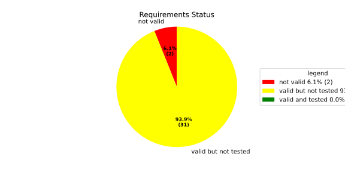
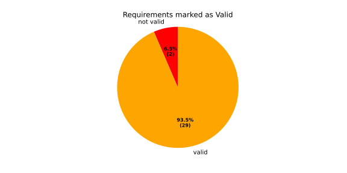
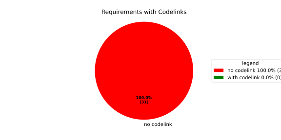
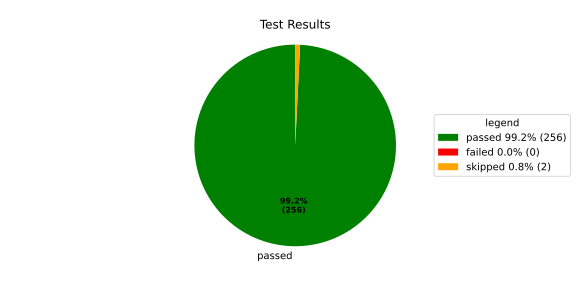
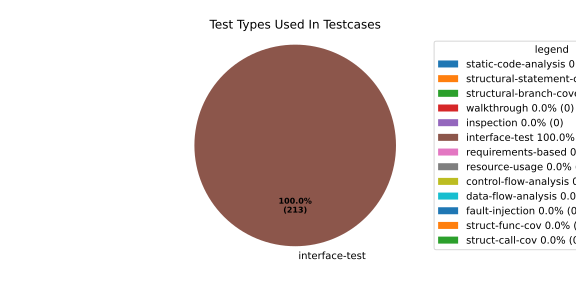
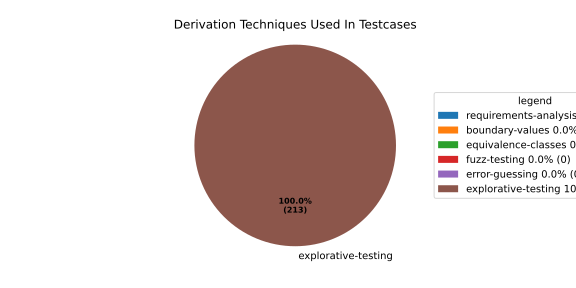

Verification Statistics#
Overview#

In Detail#



Failed Tests
Hint: This table should be empty. Before a PR can be merged all tests have to be successful.
No needs passed the filters
Skipped / Disabled Tests
testcase |
Result |
Fully Verifies |
Partially Verifies |
Test Type |
Derivation Technique |
link |
|---|---|---|---|---|---|---|
ValidateRangeTest/4__RejectsValueAboveMax |
skipped |
interface-test |
explorative-testing |
|||
ValidateRangeTest/4__RejectsValueBelowMin |
skipped |
interface-test |
explorative-testing |
All passed Tests#
testcase |
Result |
Fully Verifies |
Partially Verifies |
Test Type |
Derivation Technique |
link |
|---|---|---|---|---|---|---|
AliveImplTest__DoesNotThrowWhenInterfacePathEnvVarIsSet |
passed |
interface-test |
explorative-testing |
testcase__AliveImplTest__DoesNotThrowWhenInterfacePathEnvVarIsSet_xpewu |
||
AliveImplTest__ReportCheckpointSafeWhenNotConnected |
passed |
interface-test |
explorative-testing |
testcase__AliveImplTest__ReportCheckpointSafeWhenNotConnected_ppvuc |
||
AliveImplTest__ThrowsWhenInterfacePathEnvVarIsNotSet |
passed |
interface-test |
explorative-testing |
testcase__AliveImplTest__ThrowsWhenInterfacePathEnvVarIsNotSet_ekxfw |
||
AliveSupervisionTest__AliveDebouncesThroughFailedBeforeExpired |
passed |
interface-test |
explorative-testing |
testcase__AliveSupervisionTest__AliveDebouncesThroughFailedBeforeExpired_mlnbe |
||
AliveSupervisionTest__AliveReportsEnqueueFailureWhenRingBufferFull |
passed |
interface-test |
explorative-testing |
testcase__AliveSupervisionTest__AliveReportsEnqueueFailureWhenRingBufferFull_byhrd |
||
AliveSupervisionTest__AliveStaysOkWithCorrectHeartbeats |
passed |
interface-test |
explorative-testing |
testcase__AliveSupervisionTest__AliveStaysOkWithCorrectHeartbeats_vekof |
||
AliveSupervisionTest__AliveTransitionsOkToExpiredOnMissingHeartbeat |
passed |
interface-test |
explorative-testing |
testcase__AliveSupervisionTest__AliveTransitionsOkToExpiredOnMissingHeartbeat_jymxo |
||
AliveSupervisionTest__DeactivatesOnProcessCrash |
passed |
interface-test |
explorative-testing |
testcase__AliveSupervisionTest__DeactivatesOnProcessCrash_ypejs |
||
AliveSupervisionTest__DeactivatesOnProcessSigterm |
passed |
interface-test |
explorative-testing |
testcase__AliveSupervisionTest__DeactivatesOnProcessSigterm_hzaal |
||
AliveSupervisionTest__IgnoresIrrelevantProcessStates |
passed |
interface-test |
explorative-testing |
testcase__AliveSupervisionTest__IgnoresIrrelevantProcessStates_aolvb |
||
AliveSupervisionTest__MaxIndicationViolationExpires |
passed |
interface-test |
explorative-testing |
testcase__AliveSupervisionTest__MaxIndicationViolationExpires_whhhi |
||
AliveSupervisionTest__ReactivatesAfterCrash |
passed |
interface-test |
explorative-testing |
|||
ApplicationTypes/ApplicationTypeTest__ConvertsToExpectedValue/Native |
passed |
interface-test |
explorative-testing |
testcase__ApplicationTypes/ApplicationTypeTest__ConvertsToExpectedValue/Native_yxxcz |
||
ApplicationTypes/ApplicationTypeTest__ConvertsToExpectedValue/Reporting |
passed |
interface-test |
explorative-testing |
testcase__ApplicationTypes/ApplicationTypeTest__ConvertsToExpectedValue/Reporting_wcfwr |
||
ApplicationTypes/ApplicationTypeTest__ConvertsToExpectedValue/ReportingAndSupervised |
passed |
interface-test |
explorative-testing |
testcase__ApplicationTypes/ApplicationTypeTest__ConvertsToExpectedValue/ReportingAndSupervised_yxgad |
||
ApplicationTypes/ApplicationTypeTest__ConvertsToExpectedValue/StateManager |
passed |
interface-test |
explorative-testing |
testcase__ApplicationTypes/ApplicationTypeTest__ConvertsToExpectedValue/StateManager_ivuzc |
||
ConverterTest__ConvertAliveSupervisionMissingCycleReturnsError |
passed |
interface-test |
explorative-testing |
testcase__ConverterTest__ConvertAliveSupervisionMissingCycleReturnsError_bifzg |
||
ConverterTest__ConvertAliveSupervisionNullReturnsDefault |
passed |
interface-test |
explorative-testing |
testcase__ConverterTest__ConvertAliveSupervisionNullReturnsDefault_clyua |
||
ConverterTest__ConvertAliveSupervisionValid |
passed |
interface-test |
explorative-testing |
|||
ConverterTest__ConvertApplicationProfileMissingSelfTerminatingReturnsError |
passed |
interface-test |
explorative-testing |
testcase__ConverterTest__ConvertApplicationProfileMissingSelfTerminatingReturnsError_zddjb |
||
ConverterTest__ConvertApplicationProfileMissingTypeReturnsError |
passed |
interface-test |
explorative-testing |
testcase__ConverterTest__ConvertApplicationProfileMissingTypeReturnsError_zrfcs |
||
ConverterTest__ConvertApplicationProfileValid |
passed |
interface-test |
explorative-testing |
testcase__ConverterTest__ConvertApplicationProfileValid_oohxq |
||
ConverterTest__ConvertComponentAliveSupervisionBothIndicationsAbsentReturnsError |
passed |
interface-test |
explorative-testing |
testcase__ConverterTest__ConvertComponentAliveSupervisionBothIndicationsAbsentReturnsError_gvtfi |
||
ConverterTest__ConvertComponentAliveSupervisionMissingReportingCycleReturnsError |
passed |
interface-test |
explorative-testing |
testcase__ConverterTest__ConvertComponentAliveSupervisionMissingReportingCycleReturnsError_ajymy |
||
ConverterTest__ConvertComponentAliveSupervisionMissingToleranceReturnsError |
passed |
interface-test |
explorative-testing |
testcase__ConverterTest__ConvertComponentAliveSupervisionMissingToleranceReturnsError_lgrhj |
||
ConverterTest__ConvertComponentAliveSupervisionNullReturnsDefault |
passed |
interface-test |
explorative-testing |
testcase__ConverterTest__ConvertComponentAliveSupervisionNullReturnsDefault_xhaus |
||
ConverterTest__ConvertComponentAliveSupervisionOnlyMaxIndicationsPresent |
passed |
interface-test |
explorative-testing |
testcase__ConverterTest__ConvertComponentAliveSupervisionOnlyMaxIndicationsPresent_smwht |
||
ConverterTest__ConvertComponentAliveSupervisionOnlyMinIndicationsPresent |
passed |
interface-test |
explorative-testing |
testcase__ConverterTest__ConvertComponentAliveSupervisionOnlyMinIndicationsPresent_ybbrr |
||
ConverterTest__ConvertComponentAliveSupervisionValid |
passed |
interface-test |
explorative-testing |
testcase__ConverterTest__ConvertComponentAliveSupervisionValid_ijedh |
||
ConverterTest__ConvertComponentsValid |
passed |
interface-test |
explorative-testing |
|||
ConverterTest__ConvertComponentsWithInvalidComponentReturnsError |
passed |
interface-test |
explorative-testing |
testcase__ConverterTest__ConvertComponentsWithInvalidComponentReturnsError_wridc |
||
ConverterTest__ConvertComponentValid |
passed |
interface-test |
explorative-testing |
|||
ConverterTest__ConvertDeploymentConfigMissingReadyTimeoutReturnsError |
passed |
interface-test |
explorative-testing |
testcase__ConverterTest__ConvertDeploymentConfigMissingReadyTimeoutReturnsError_ljzfl |
||
ConverterTest__ConvertDeploymentConfigMissingShutdownTimeoutReturnsError |
passed |
interface-test |
explorative-testing |
testcase__ConverterTest__ConvertDeploymentConfigMissingShutdownTimeoutReturnsError_vyqye |
||
ConverterTest__ConvertDeploymentConfigValid |
passed |
interface-test |
explorative-testing |
|||
ConverterTest__ConvertEnvironmentalVariables |
passed |
interface-test |
explorative-testing |
testcase__ConverterTest__ConvertEnvironmentalVariables_fnhgo |
||
ConverterTest__ConvertEnvironmentalVariablesNullReturnsEmpty |
passed |
interface-test |
explorative-testing |
testcase__ConverterTest__ConvertEnvironmentalVariablesNullReturnsEmpty_vglrx |
||
ConverterTest__ConvertFallbackRunTargetMissingTimeoutReturnsError |
passed |
interface-test |
explorative-testing |
testcase__ConverterTest__ConvertFallbackRunTargetMissingTimeoutReturnsError_aevly |
||
ConverterTest__ConvertFallbackRunTargetValid |
passed |
interface-test |
explorative-testing |
testcase__ConverterTest__ConvertFallbackRunTargetValid_nexxj |
||
ConverterTest__ConvertReadyConditionMissingProcessStateReturnsError |
passed |
interface-test |
explorative-testing |
testcase__ConverterTest__ConvertReadyConditionMissingProcessStateReturnsError_ileav |
||
ConverterTest__ConvertReadyConditionValid |
passed |
interface-test |
explorative-testing |
|||
ConverterTest__ConvertRestartActionMissingFieldsReturnsError |
passed |
interface-test |
explorative-testing |
testcase__ConverterTest__ConvertRestartActionMissingFieldsReturnsError_aapjb |
||
ConverterTest__ConvertRestartActionNullReturnsNullopt |
passed |
interface-test |
explorative-testing |
testcase__ConverterTest__ConvertRestartActionNullReturnsNullopt_ifvyd |
||
ConverterTest__ConvertRestartActionValid |
passed |
interface-test |
explorative-testing |
|||
ConverterTest__ConvertRunTargetMissingTransitionTimeoutReturnsError |
passed |
interface-test |
explorative-testing |
testcase__ConverterTest__ConvertRunTargetMissingTransitionTimeoutReturnsError_ynekv |
||
ConverterTest__ConvertRunTargetsValid |
passed |
interface-test |
explorative-testing |
|||
ConverterTest__ConvertRunTargetsWithInvalidRunTargetReturnsError |
passed |
interface-test |
explorative-testing |
testcase__ConverterTest__ConvertRunTargetsWithInvalidRunTargetReturnsError_ldlox |
||
ConverterTest__ConvertRunTargetValid |
passed |
interface-test |
explorative-testing |
|||
ConverterTest__ConvertSandboxMissingGidReturnsError |
passed |
interface-test |
explorative-testing |
testcase__ConverterTest__ConvertSandboxMissingGidReturnsError_veeel |
||
ConverterTest__ConvertSandboxMissingSchedulingPolicyReturnsError |
passed |
interface-test |
explorative-testing |
testcase__ConverterTest__ConvertSandboxMissingSchedulingPolicyReturnsError_pkfts |
||
ConverterTest__ConvertSandboxMissingSchedulingPriorityReturnsError |
passed |
interface-test |
explorative-testing |
testcase__ConverterTest__ConvertSandboxMissingSchedulingPriorityReturnsError_xzdho |
||
ConverterTest__ConvertSandboxMissingUidReturnsError |
passed |
interface-test |
explorative-testing |
testcase__ConverterTest__ConvertSandboxMissingUidReturnsError_ogfku |
||
ConverterTest__ConvertSandboxSupplementaryGidOutOfRangeReturnsError |
passed |
interface-test |
explorative-testing |
testcase__ConverterTest__ConvertSandboxSupplementaryGidOutOfRangeReturnsError_zavpx |
||
ConverterTest__ConvertSandboxUidOutOfRangeReturnsError |
passed |
interface-test |
explorative-testing |
testcase__ConverterTest__ConvertSandboxUidOutOfRangeReturnsError_mcuaf |
||
ConverterTest__ConvertSandboxValid |
passed |
interface-test |
explorative-testing |
|||
ConverterTest__ConvertSwitchRunTargetActionNullReturnsNullopt |
passed |
interface-test |
explorative-testing |
testcase__ConverterTest__ConvertSwitchRunTargetActionNullReturnsNullopt_zmitx |
||
ConverterTest__ConvertSwitchRunTargetActionValid |
passed |
interface-test |
explorative-testing |
testcase__ConverterTest__ConvertSwitchRunTargetActionValid_tdklr |
||
ConverterTest__ConvertWatchdogMissingDeactivateReturnsError |
passed |
interface-test |
explorative-testing |
testcase__ConverterTest__ConvertWatchdogMissingDeactivateReturnsError_gzwjt |
||
ConverterTest__ConvertWatchdogMissingMagicCloseReturnsError |
passed |
interface-test |
explorative-testing |
testcase__ConverterTest__ConvertWatchdogMissingMagicCloseReturnsError_gexxk |
||
ConverterTest__ConvertWatchdogMissingMaxTimeoutReturnsError |
passed |
interface-test |
explorative-testing |
testcase__ConverterTest__ConvertWatchdogMissingMaxTimeoutReturnsError_lffxm |
||
ConverterTest__ConvertWatchdogNullReturnsNullopt |
passed |
interface-test |
explorative-testing |
testcase__ConverterTest__ConvertWatchdogNullReturnsNullopt_irsdk |
||
ConverterTest__ConvertWatchdogValid |
passed |
interface-test |
explorative-testing |
|||
DeadlineFixture__Start_AlreadyRunning |
passed |
interface-test |
explorative-testing |
|||
DeadlineFixture__Start_Succeeds |
passed |
interface-test |
explorative-testing |
|||
DeadlineMonitorBuilderFixture__AddDeadline_Succeeds |
passed |
interface-test |
explorative-testing |
testcase__DeadlineMonitorBuilderFixture__AddDeadline_Succeeds_nagke |
||
DeadlineMonitorBuilderFixture__New_Succeeds |
passed |
interface-test |
explorative-testing |
|||
DeadlineMonitorFixture__GetDeadline_Succeeds |
passed |
interface-test |
explorative-testing |
testcase__DeadlineMonitorFixture__GetDeadline_Succeeds_tmltf |
||
DeadlineMonitorFixture__GetDeadline_Unknown |
passed |
interface-test |
explorative-testing |
|||
EnumConversionTest__ConvertSchedulingPolicyUnsupported |
passed |
interface-test |
explorative-testing |
testcase__EnumConversionTest__ConvertSchedulingPolicyUnsupported_iavqm |
||
EnvironmentTest__AddIncreasesSize |
passed |
interface-test |
explorative-testing |
|||
EnvironmentTest__DefaultConstructedIsEmpty |
passed |
interface-test |
explorative-testing |
|||
EnvironmentTest__EmptyEnvironmentEnvpIsNullTerminated |
passed |
interface-test |
explorative-testing |
testcase__EnvironmentTest__EmptyEnvironmentEnvpIsNullTerminated_wwumw |
||
EnvironmentTest__EnvpReturnsNullTerminatedArray |
passed |
interface-test |
explorative-testing |
testcase__EnvironmentTest__EnvpReturnsNullTerminatedArray_aubkv |
||
EnvironmentTest__EnvpWithMultipleEntries |
passed |
interface-test |
explorative-testing |
|||
EnvironmentTest__MoveAssignmentPreservesEntries |
passed |
interface-test |
explorative-testing |
testcase__EnvironmentTest__MoveAssignmentPreservesEntries_vkydj |
||
EnvironmentTest__MoveConstructorPreservesEntries |
passed |
interface-test |
explorative-testing |
testcase__EnvironmentTest__MoveConstructorPreservesEntries_upclt |
||
EnvironmentTest__RangeBasedForLoopWorks |
passed |
interface-test |
explorative-testing |
|||
EnvironmentTest__ReserveAndAddAvoidReallocation |
passed |
interface-test |
explorative-testing |
testcase__EnvironmentTest__ReserveAndAddAvoidReallocation_lgzmu |
||
EnvironmentTest__SsoLengthStringSurvivesReallocation |
passed |
interface-test |
explorative-testing |
testcase__EnvironmentTest__SsoLengthStringSurvivesReallocation_jfmtl |
||
EnvironmentVariableTest__CStrReturnsKeyEqualsValue |
passed |
interface-test |
explorative-testing |
testcase__EnvironmentVariableTest__CStrReturnsKeyEqualsValue_rkwan |
||
EnvironmentVariableTest__EmptyValue |
passed |
interface-test |
explorative-testing |
|||
EnvironmentVariableTest__KeyAndValueAreAccessible |
passed |
interface-test |
explorative-testing |
testcase__EnvironmentVariableTest__KeyAndValueAreAccessible_kcrth |
||
EnvironmentVariableTest__ValueContainingEquals |
passed |
interface-test |
explorative-testing |
testcase__EnvironmentVariableTest__ValueContainingEquals_apzgz |
||
ExecErrorDomainTest__AllKnownCodesHaveDistinctMessages |
passed |
interface-test |
explorative-testing |
testcase__ExecErrorDomainTest__AllKnownCodesHaveDistinctMessages_qpoka |
||
ExecErrorDomainTest__AllKnownCodesReturnNonEmptyMessage |
passed |
interface-test |
explorative-testing |
testcase__ExecErrorDomainTest__AllKnownCodesReturnNonEmptyMessage_bawzg |
||
ExecErrorDomainTest__UnknownCodeReturnsNonEmptyMessage |
passed |
interface-test |
explorative-testing |
testcase__ExecErrorDomainTest__UnknownCodeReturnsNonEmptyMessage_kkwpr |
||
FlatbufferConfigLoaderTest__CorruptedBufferReturnsInvalidFormat |
passed |
interface-test |
explorative-testing |
testcase__FlatbufferConfigLoaderTest__CorruptedBufferReturnsInvalidFormat_twyac |
||
FlatbufferConfigLoaderTest__LoadAliveSupervision |
passed |
interface-test |
explorative-testing |
testcase__FlatbufferConfigLoaderTest__LoadAliveSupervision_hhuux |
||
FlatbufferConfigLoaderTest__LoadBufferFailsWithGenericErrorReturnsGeneralError |
passed |
interface-test |
explorative-testing |
testcase__FlatbufferConfigLoaderTest__LoadBufferFailsWithGenericErrorReturnsGeneralError_kmatm |
||
FlatbufferConfigLoaderTest__LoadBufferFailsWithNoSuchFileReturnsFileNotFound |
passed |
interface-test |
explorative-testing |
testcase__FlatbufferConfigLoaderTest__LoadBufferFailsWithNoSuchFileReturnsFileNotFound_yzlra |
||
FlatbufferConfigLoaderTest__LoadBufferFailsWithPermissionDeniedReturnsInsufficientPermission |
passed |
interface-test |
explorative-testing |
|||
FlatbufferConfigLoaderTest__LoadComponentAliveSupervision |
passed |
interface-test |
explorative-testing |
testcase__FlatbufferConfigLoaderTest__LoadComponentAliveSupervision_fwfad |
||
FlatbufferConfigLoaderTest__LoadEnvironmentalVariables |
passed |
interface-test |
explorative-testing |
testcase__FlatbufferConfigLoaderTest__LoadEnvironmentalVariables_wsosu |
||
FlatbufferConfigLoaderTest__LoadFallbackRunTarget |
passed |
interface-test |
explorative-testing |
testcase__FlatbufferConfigLoaderTest__LoadFallbackRunTarget_wduqm |
||
FlatbufferConfigLoaderTest__LoadMinimalConfig |
passed |
interface-test |
explorative-testing |
testcase__FlatbufferConfigLoaderTest__LoadMinimalConfig_hdkck |
||
FlatbufferConfigLoaderTest__LoadMultipleComponents |
passed |
interface-test |
explorative-testing |
testcase__FlatbufferConfigLoaderTest__LoadMultipleComponents_abpom |
||
FlatbufferConfigLoaderTest__LoadRestartRecoveryAction |
passed |
interface-test |
explorative-testing |
testcase__FlatbufferConfigLoaderTest__LoadRestartRecoveryAction_wyfqg |
||
FlatbufferConfigLoaderTest__LoadRunTargets |
passed |
interface-test |
explorative-testing |
|||
FlatbufferConfigLoaderTest__LoadSandbox |
passed |
interface-test |
explorative-testing |
|||
FlatbufferConfigLoaderTest__LoadSingleComponent |
passed |
interface-test |
explorative-testing |
testcase__FlatbufferConfigLoaderTest__LoadSingleComponent_yidty |
||
FlatbufferConfigLoaderTest__LoadSwitchRunTargetAction |
passed |
interface-test |
explorative-testing |
testcase__FlatbufferConfigLoaderTest__LoadSwitchRunTargetAction_uchgp |
||
FlatbufferConfigLoaderTest__LoadWatchdog |
passed |
interface-test |
explorative-testing |
|||
FlatbufferConfigLoaderTest__MissingSchemaVersionReturnsInvalidFormat |
passed |
interface-test |
explorative-testing |
testcase__FlatbufferConfigLoaderTest__MissingSchemaVersionReturnsInvalidFormat_qqmfn |
||
FlatbufferConfigLoaderTest__OptionalReadyConditionAbsent |
passed |
interface-test |
explorative-testing |
testcase__FlatbufferConfigLoaderTest__OptionalReadyConditionAbsent_lhddx |
||
FlatbufferConfigLoaderTest__OptionalWatchdogAbsent |
passed |
interface-test |
explorative-testing |
testcase__FlatbufferConfigLoaderTest__OptionalWatchdogAbsent_pkhkp |
||
FlatbufferConfigLoaderTest__WrongSchemaVersionReturnsUnsupportedVersion |
passed |
interface-test |
explorative-testing |
testcase__FlatbufferConfigLoaderTest__WrongSchemaVersionReturnsUnsupportedVersion_zrbjv |
||
HealthMonitor__GetDeadlineMonitor_Available |
passed |
|||||
HealthMonitor__GetDeadlineMonitor_Taken |
passed |
|||||
HealthMonitor__GetDeadlineMonitor_Unknown |
passed |
|||||
HealthMonitor__GetHeartbeatMonitor_Available |
passed |
testcase__HealthMonitor__GetHeartbeatMonitor_Available_aacat |
||||
HealthMonitor__GetHeartbeatMonitor_Taken |
passed |
|||||
HealthMonitor__GetHeartbeatMonitor_Unknown |
passed |
|||||
HealthMonitor__GetLogicMonitor_Available |
passed |
|||||
HealthMonitor__GetLogicMonitor_Taken |
passed |
|||||
HealthMonitor__GetLogicMonitor_Unknown |
passed |
|||||
HealthMonitor__Start_MonitorsNotTaken |
passed |
|||||
HealthMonitor__Start_Succeeds |
passed |
|||||
HealthMonitorBuilderFixture__Build_InvalidCycles |
passed |
interface-test |
explorative-testing |
testcase__HealthMonitorBuilderFixture__Build_InvalidCycles_pdigk |
||
HealthMonitorBuilderFixture__Build_NoMonitors |
passed |
interface-test |
explorative-testing |
testcase__HealthMonitorBuilderFixture__Build_NoMonitors_ktcve |
||
HealthMonitorBuilderFixture__Build_Succeeds |
passed |
interface-test |
explorative-testing |
|||
HealthMonitorBuilderFixture__New_Succeeds |
passed |
interface-test |
explorative-testing |
|||
HealthMonitorTest__Integrated |
passed |
interface-test |
explorative-testing |
|||
HeartbeatMonitor__Heartbeat_Succeeds |
passed |
interface-test |
explorative-testing |
|||
HeartbeatMonitorBuilder__New_Succeeds |
passed |
interface-test |
explorative-testing |
|||
IdentifierHashTest__IdentifierHash_default_created |
passed |
interface-test |
explorative-testing |
testcase__IdentifierHashTest__IdentifierHash_default_created_yhhvi |
||
IdentifierHashTest__IdentifierHash_EqualityOperators |
passed |
interface-test |
explorative-testing |
testcase__IdentifierHashTest__IdentifierHash_EqualityOperators_nnsuj |
||
IdentifierHashTest__IdentifierHash_invalid_hash_no_string_representation |
passed |
interface-test |
explorative-testing |
testcase__IdentifierHashTest__IdentifierHash_invalid_hash_no_string_representation_rxowr |
||
IdentifierHashTest__IdentifierHash_LessThanOperator |
passed |
interface-test |
explorative-testing |
testcase__IdentifierHashTest__IdentifierHash_LessThanOperator_rnbax |
||
IdentifierHashTest__IdentifierHash_no_dangling_pointer_after_source_string_dies |
passed |
interface-test |
explorative-testing |
testcase__IdentifierHashTest__IdentifierHash_no_dangling_pointer_after_source_string_dies_qsjin |
||
IdentifierHashTest__IdentifierHash_with_string_created |
passed |
interface-test |
explorative-testing |
testcase__IdentifierHashTest__IdentifierHash_with_string_created_aygdm |
||
IdentifierHashTest__IdentifierHash_with_string_view_created |
passed |
interface-test |
explorative-testing |
testcase__IdentifierHashTest__IdentifierHash_with_string_view_created_dbpol |
||
LogicMonitorBuilderFixture__AddState_Succeeds |
passed |
interface-test |
explorative-testing |
testcase__LogicMonitorBuilderFixture__AddState_Succeeds_axdxj |
||
LogicMonitorBuilderFixture__New_Succeeds |
passed |
interface-test |
explorative-testing |
|||
LogicMonitorFixture__State_Invalid |
passed |
interface-test |
explorative-testing |
|||
LogicMonitorFixture__State_Succeeds |
passed |
interface-test |
explorative-testing |
|||
LogicMonitorFixture__Transition_Invalid |
passed |
interface-test |
explorative-testing |
|||
LogicMonitorFixture__Transition_Succeeds |
passed |
interface-test |
explorative-testing |
|||
LogicMonitorFixture__Transition_Unknown |
passed |
interface-test |
explorative-testing |
|||
MonitorIfDaemonTest__Active_CheckpointDataForwarded |
passed |
interface-test |
explorative-testing |
testcase__MonitorIfDaemonTest__Active_CheckpointDataForwarded_evumz |
||
MonitorIfDaemonTest__Active_FutureTimestamp_NotForwardedInCurrentCycle |
passed |
interface-test |
explorative-testing |
testcase__MonitorIfDaemonTest__Active_FutureTimestamp_NotForwardedInCurrentCycle_oycau |
||
MonitorIfDaemonTest__Active_FutureTimestampCheckpoint_ConsumedInLaterCycle |
passed |
interface-test |
explorative-testing |
testcase__MonitorIfDaemonTest__Active_FutureTimestampCheckpoint_ConsumedInLaterCycle_veyyy |
||
MonitorIfDaemonTest__Active_MultipleCheckpointsInOneCycle_AllForwarded |
passed |
interface-test |
explorative-testing |
testcase__MonitorIfDaemonTest__Active_MultipleCheckpointsInOneCycle_AllForwarded_gmbms |
||
MonitorIfDaemonTest__Active_NonMatchingCheckpointId_NotForwarded |
passed |
interface-test |
explorative-testing |
testcase__MonitorIfDaemonTest__Active_NonMatchingCheckpointId_NotForwarded_bohck |
||
MonitorIfDaemonTest__Active_OverflowDetected_TransitionsToInactiveOverflow |
passed |
interface-test |
explorative-testing |
testcase__MonitorIfDaemonTest__Active_OverflowDetected_TransitionsToInactiveOverflow_ovitk |
||
MonitorIfDaemonTest__Active_TwoAttachedCheckpoints_RoutedByCheckpointId |
passed |
interface-test |
explorative-testing |
testcase__MonitorIfDaemonTest__Active_TwoAttachedCheckpoints_RoutedByCheckpointId_skqhd |
||
MonitorIfDaemonTest__GetInterfaceName_ReturnsNameGivenAtConstruction |
passed |
interface-test |
explorative-testing |
testcase__MonitorIfDaemonTest__GetInterfaceName_ReturnsNameGivenAtConstruction_iaemz |
||
MonitorIfDaemonTest__InactiveOverflow_NoProcessRestart_DoesNotRepeatNotification |
passed |
interface-test |
explorative-testing |
testcase__MonitorIfDaemonTest__InactiveOverflow_NoProcessRestart_DoesNotRepeatNotification_gdbxg |
||
MonitorIfDaemonTest__InactiveOverflow_ProcessRestartFlag_ClearedAfterNotification |
passed |
interface-test |
explorative-testing |
testcase__MonitorIfDaemonTest__InactiveOverflow_ProcessRestartFlag_ClearedAfterNotification_pqfyy |
||
MonitorIfDaemonTest__InactiveOverflow_ProcessRestarts_PushesOverflowNotificationAgain |
passed |
interface-test |
explorative-testing |
|||
MonitorIfDaemonTest__InitiallyInactive_CheckForNewData_DoesNotNotifyCheckpoint |
passed |
interface-test |
explorative-testing |
testcase__MonitorIfDaemonTest__InitiallyInactive_CheckForNewData_DoesNotNotifyCheckpoint_wjrfl |
||
MonitorIfDaemonTest__ProcessOff_DeactivatesMonitor_NoFurtherDataForwarded |
passed |
interface-test |
explorative-testing |
testcase__MonitorIfDaemonTest__ProcessOff_DeactivatesMonitor_NoFurtherDataForwarded_uialh |
||
MonitorIfDaemonTest__ProcessOffBeforeActivation_RemainsInactive |
passed |
interface-test |
explorative-testing |
testcase__MonitorIfDaemonTest__ProcessOffBeforeActivation_RemainsInactive_kzzyy |
||
MonitorIfDaemonTest__ProcessRunning_ActivatesMonitorOnNextCheckForNewData |
passed |
interface-test |
explorative-testing |
testcase__MonitorIfDaemonTest__ProcessRunning_ActivatesMonitorOnNextCheckForNewData_fkkmk |
||
MonitorIfDaemonTest__ProcessStarting_AlsoActivatesMonitor |
passed |
interface-test |
explorative-testing |
testcase__MonitorIfDaemonTest__ProcessStarting_AlsoActivatesMonitor_xdkbg |
||
MPMCConcurrentQueueTest_Basic__LvaluePushCopiesItem |
passed |
testcase__MPMCConcurrentQueueTest_Basic__LvaluePushCopiesItem_oysfc |
||||
MPMCConcurrentQueueTest_Basic__PopReturnsNulloptOnSemaphoreWaitFailure |
passed |
testcase__MPMCConcurrentQueueTest_Basic__PopReturnsNulloptOnSemaphoreWaitFailure_rgznm |
||||
MPMCConcurrentQueueTest_Basic__PushAndPopPreservesOrder |
passed |
testcase__MPMCConcurrentQueueTest_Basic__PushAndPopPreservesOrder_aijdb |
||||
MPMCConcurrentQueueTest_Basic__PushAndPopSingleItem |
passed |
testcase__MPMCConcurrentQueueTest_Basic__PushAndPopSingleItem_jrxwz |
||||
MPMCConcurrentQueueTest_Basic__RvaluePushWorksWithMoveOnlyType |
passed |
testcase__MPMCConcurrentQueueTest_Basic__RvaluePushWorksWithMoveOnlyType_cxxaj |
||||
MPMCConcurrentQueueTest_Blocking__PopBlocksUntilItemAvailable |
passed |
testcase__MPMCConcurrentQueueTest_Blocking__PopBlocksUntilItemAvailable_ttwcx |
||||
MPMCConcurrentQueueTest_Blocking__PushBlocksWhenFull |
passed |
testcase__MPMCConcurrentQueueTest_Blocking__PushBlocksWhenFull_ecujf |
||||
MPMCConcurrentQueueTest_Blocking__StopUnblocksBlockedConsumer |
passed |
testcase__MPMCConcurrentQueueTest_Blocking__StopUnblocksBlockedConsumer_snzyr |
||||
MPMCConcurrentQueueTest_Blocking__StopUnblocksBlockedProducer |
passed |
testcase__MPMCConcurrentQueueTest_Blocking__StopUnblocksBlockedProducer_inddu |
||||
MPMCConcurrentQueueTest_MPMC__AllItemsDelivered |
passed |
testcase__MPMCConcurrentQueueTest_MPMC__AllItemsDelivered_ztjqe |
||||
MPMCConcurrentQueueTest_Stop__ItemsAreDroppedAfterStop |
passed |
testcase__MPMCConcurrentQueueTest_Stop__ItemsAreDroppedAfterStop_ragzw |
||||
MPMCConcurrentQueueTest_Stop__PopReturnsNulloptWhenStoppedAndEmpty |
passed |
testcase__MPMCConcurrentQueueTest_Stop__PopReturnsNulloptWhenStoppedAndEmpty_cevga |
||||
MPMCConcurrentQueueTest_Stop__PushReturnsFalseAfterStop |
passed |
testcase__MPMCConcurrentQueueTest_Stop__PushReturnsFalseAfterStop_qqnhw |
||||
MPMCConcurrentQueueTest_Timeout__PushWithTimeoutReturnsFalseWhenFull |
passed |
testcase__MPMCConcurrentQueueTest_Timeout__PushWithTimeoutReturnsFalseWhenFull_aeips |
||||
MPMCConcurrentQueueTest_Timeout__PushWithTimeoutSucceedsWhenSlotAvailable |
passed |
testcase__MPMCConcurrentQueueTest_Timeout__PushWithTimeoutSucceedsWhenSlotAvailable_klzpo |
||||
OsHandlerTest__WaitReturnsError_OsHandlerSleepsAndDoesNotCallFindTerminated |
passed |
interface-test |
explorative-testing |
testcase__OsHandlerTest__WaitReturnsError_OsHandlerSleepsAndDoesNotCallFindTerminated_cibtr |
||
OsHandlerTest__WaitReturnsErrorThenProcessId_HandlerRecoversAndInvokesCallback |
passed |
interface-test |
explorative-testing |
testcase__OsHandlerTest__WaitReturnsErrorThenProcessId_HandlerRecoversAndInvokesCallback_nqstd |
||
OsHandlerTest__WaitReturnsProcessId_FindTerminatedIsCalled |
passed |
interface-test |
explorative-testing |
testcase__OsHandlerTest__WaitReturnsProcessId_FindTerminatedIsCalled_chlsq |
||
OsHandlerTest__WaitReturnsProcessIdBeforeRegistration_LaterRegistrationReceivesStoredTermination |
passed |
interface-test |
explorative-testing |
|||
OsHandlerTest__WaitReturnsUnknownPidWhenMapIsFull_OutOfResourcesPathDoesNotNotifyCallbacks |
passed |
interface-test |
explorative-testing |
|||
OsHandlerTest__WaitReturnsZeroPid_OsHandlerSleepsAndDoesNotCallFindTerminated |
passed |
interface-test |
explorative-testing |
testcase__OsHandlerTest__WaitReturnsZeroPid_OsHandlerSleepsAndDoesNotCallFindTerminated_rkttz |
||
ProcessStateClient_UT__ProcessStateClient_ConstructReceiver_Succeeds |
passed |
interface-test |
explorative-testing |
testcase__ProcessStateClient_UT__ProcessStateClient_ConstructReceiver_Succeeds_hodwy |
||
ProcessStateClient_UT__ProcessStateClient_QueueMaxNumberOfProcesses_Succeeds |
passed |
interface-test |
explorative-testing |
testcase__ProcessStateClient_UT__ProcessStateClient_QueueMaxNumberOfProcesses_Succeeds_qohom |
||
ProcessStateClient_UT__ProcessStateClient_QueueOneProcess_Succeeds |
passed |
interface-test |
explorative-testing |
testcase__ProcessStateClient_UT__ProcessStateClient_QueueOneProcess_Succeeds_tmzfz |
||
ProcessStateClient_UT__ProcessStateClient_QueueOneProcessTooMany_Fails |
passed |
interface-test |
explorative-testing |
testcase__ProcessStateClient_UT__ProcessStateClient_QueueOneProcessTooMany_Fails_sspoj |
||
ProcessStates/ProcessStateTest__ConvertsToExpectedValue/Running |
passed |
interface-test |
explorative-testing |
testcase__ProcessStates/ProcessStateTest__ConvertsToExpectedValue/Running_hinlr |
||
ProcessStates/ProcessStateTest__ConvertsToExpectedValue/Terminated |
passed |
interface-test |
explorative-testing |
testcase__ProcessStates/ProcessStateTest__ConvertsToExpectedValue/Terminated_zrytn |
||
RecoveryClientTest__FIFOOrdering |
passed |
interface-test |
explorative-testing |
|||
RecoveryClientTest__GetNextRequest |
passed |
interface-test |
explorative-testing |
|||
RecoveryClientTest__GetNextRequestEmpty |
passed |
interface-test |
explorative-testing |
|||
RecoveryClientTest__RingBufferFull |
passed |
interface-test |
explorative-testing |
|||
RecoveryClientTest__SendSingleRequest |
passed |
interface-test |
explorative-testing |
|||
RunTest__AsPosixProcessCreatesAndDestroysLifeCycleManager |
passed |
testcase__RunTest__AsPosixProcessCreatesAndDestroysLifeCycleManager_sooex |
||||
RunTest__AsPosixProcessForwardsConstructorArgsToApplication |
passed |
testcase__RunTest__AsPosixProcessForwardsConstructorArgsToApplication_dmeur |
||||
RunTest__AsPosixProcessForwardsNonZeroExitCode |
passed |
testcase__RunTest__AsPosixProcessForwardsNonZeroExitCode_lldqd |
||||
RunTest__AsPosixProcessPassesCorrectApplicationTypeToRun |
passed |
testcase__RunTest__AsPosixProcessPassesCorrectApplicationTypeToRun_ajqwz |
||||
RunTest__AsPosixProcessReturnsZeroExitCode |
passed |
|||||
RunTest__RunApplicationFreeFunctionDelegatesToAsPosixProcess |
passed |
testcase__RunTest__RunApplicationFreeFunctionDelegatesToAsPosixProcess_ccing |
||||
RunTest__RunConstructorPassesArgcArgvToApplicationContext |
passed |
testcase__RunTest__RunConstructorPassesArgcArgvToApplicationContext_agerd |
||||
SafeProcessMapTest__ConcurrentFindAndInsertFromMultipleThreads |
passed |
interface-test |
explorative-testing |
testcase__SafeProcessMapTest__ConcurrentFindAndInsertFromMultipleThreads_kzfyg |
||
SafeProcessMapTest__ConcurrentInsertAndFindFromMultipleThreads |
passed |
interface-test |
explorative-testing |
testcase__SafeProcessMapTest__ConcurrentInsertAndFindFromMultipleThreads_hnyqj |
||
SafeProcessMapTest__ConstructWithZeroCapacity |
passed |
interface-test |
explorative-testing |
testcase__SafeProcessMapTest__ConstructWithZeroCapacity_gjmqg |
||
SafeProcessMapTest__FindTerminatedInsertsEntryWhenPidNotPresent |
passed |
interface-test |
explorative-testing |
testcase__SafeProcessMapTest__FindTerminatedInsertsEntryWhenPidNotPresent_ixtlt |
||
SafeProcessMapTest__FindTerminatedMatchesExistingInsertAndCallsCallback |
passed |
interface-test |
explorative-testing |
testcase__SafeProcessMapTest__FindTerminatedMatchesExistingInsertAndCallsCallback_ehuzb |
||
SafeProcessMapTest__FindTerminatedSamePidTwiceYieldsUntilInsertResolves |
passed |
interface-test |
explorative-testing |
testcase__SafeProcessMapTest__FindTerminatedSamePidTwiceYieldsUntilInsertResolves_hsekx |
||
SafeProcessMapTest__FindTerminatedWithNegativePidReturnsInvalid |
passed |
interface-test |
explorative-testing |
testcase__SafeProcessMapTest__FindTerminatedWithNegativePidReturnsInvalid_dewoh |
||
SafeProcessMapTest__FindTerminatedWorksAtMaxTreeDepth |
passed |
interface-test |
explorative-testing |
testcase__SafeProcessMapTest__FindTerminatedWorksAtMaxTreeDepth_adtzi |
||
SafeProcessMapTest__InsertBeyondCapacityReturnsOutOfMemory |
passed |
interface-test |
explorative-testing |
testcase__SafeProcessMapTest__InsertBeyondCapacityReturnsOutOfMemory_qjnie |
||
SafeProcessMapTest__InsertIntoEmptyTreeReturnsZero |
passed |
interface-test |
explorative-testing |
testcase__SafeProcessMapTest__InsertIntoEmptyTreeReturnsZero_zfbaq |
||
SafeProcessMapTest__InsertMatchesExistingFindTerminatedEntry |
passed |
interface-test |
explorative-testing |
testcase__SafeProcessMapTest__InsertMatchesExistingFindTerminatedEntry_fuwrp |
||
SafeProcessMapTest__InsertMultipleNodesThenFindTerminatedRemovesAll |
passed |
interface-test |
explorative-testing |
testcase__SafeProcessMapTest__InsertMultipleNodesThenFindTerminatedRemovesAll_fvowh |
||
SafeProcessMapTest__InsertSamePidTwiceYieldsUntilFindTerminatedResolves |
passed |
interface-test |
explorative-testing |
testcase__SafeProcessMapTest__InsertSamePidTwiceYieldsUntilFindTerminatedResolves_wzwyb |
||
SchedulingPolicies/SchedulingPolicyTest__ConvertsToExpectedPosixValue/SCHED_FIFO |
passed |
interface-test |
explorative-testing |
testcase__SchedulingPolicies/SchedulingPolicyTest__ConvertsToExpectedPosixValue/SCHED_FIFO_soddq |
||
SchedulingPolicies/SchedulingPolicyTest__ConvertsToExpectedPosixValue/SCHED_OTHER |
passed |
interface-test |
explorative-testing |
testcase__SchedulingPolicies/SchedulingPolicyTest__ConvertsToExpectedPosixValue/SCHED_OTHER_oigmk |
||
SchedulingPolicies/SchedulingPolicyTest__ConvertsToExpectedPosixValue/SCHED_RR |
passed |
interface-test |
explorative-testing |
testcase__SchedulingPolicies/SchedulingPolicyTest__ConvertsToExpectedPosixValue/SCHED_RR_pcjci |
||
score/health_monitor/src/rust/test-510566969/tests |
passed |
testcase__score/health_monitor/src/rust/test-510566969/tests_kjjlw |
||||
score/health_monitor/src/rust/test-827801879/loom_tests |
passed |
testcase__score/health_monitor/src/rust/test-827801879/loom_tests_cpmix |
||||
SecondsToMsTest__ConvertsPositiveValue |
passed |
interface-test |
explorative-testing |
|||
SecondsToMsTest__ConvertsZero |
passed |
interface-test |
explorative-testing |
|||
SecondsToMsTest__RejectsNegativeValue |
passed |
interface-test |
explorative-testing |
|||
SecondsToMsTest__RejectsOverflow |
passed |
interface-test |
explorative-testing |
|||
SecondsToMsTest__RejectsSubMillisecond |
passed |
interface-test |
explorative-testing |
|||
StringHelperTest__ConvertGidVectorReturnsEmptyWhenNull |
passed |
interface-test |
explorative-testing |
testcase__StringHelperTest__ConvertGidVectorReturnsEmptyWhenNull_jmcsr |
||
StringHelperTest__ConvertStringVectorReturnsEmptyWhenNull |
passed |
interface-test |
explorative-testing |
testcase__StringHelperTest__ConvertStringVectorReturnsEmptyWhenNull_zsuvv |
||
StringHelperTest__SafeStringReturnsEmptyWhenNull |
passed |
interface-test |
explorative-testing |
testcase__StringHelperTest__SafeStringReturnsEmptyWhenNull_crelr |
||
StringHelperTest__SafeStringReturnsValueWhenNotNull |
passed |
interface-test |
explorative-testing |
testcase__StringHelperTest__SafeStringReturnsValueWhenNotNull_anbko |
||
test_complex_monitoring |
passed |
|||||
test_crash_on_startup |
passed |
|||||
test_incorrect_config_non_reporting |
passed |
|||||
test_process_crash_monitoring |
passed |
|||||
test_process_launch_args |
passed |
|||||
test_process_wrong_binary_failure |
passed |
|||||
test_recovery_action_complex_rep_failure |
passed |
|||||
test_recovery_action_simple_rep_failure |
passed |
|||||
test_smoke |
passed |
|||||
test_switch_run_target |
passed |
|||||
TimeRangeFixture__MinMax |
passed |
interface-test |
explorative-testing |
|||
TimeRangeFixture__New_InvalidOrder |
passed |
interface-test |
explorative-testing |
|||
TimeRangeFixture__New_Succeeds |
passed |
interface-test |
explorative-testing |
|||
ValidateRangeTest/0__AcceptsMaxBoundary |
passed |
interface-test |
explorative-testing |
|||
ValidateRangeTest/0__AcceptsMinBoundary |
passed |
interface-test |
explorative-testing |
|||
ValidateRangeTest/0__AcceptsZero |
passed |
interface-test |
explorative-testing |
|||
ValidateRangeTest/0__RejectsValueAboveMax |
passed |
interface-test |
explorative-testing |
|||
ValidateRangeTest/0__RejectsValueBelowMin |
passed |
interface-test |
explorative-testing |
|||
ValidateRangeTest/1__AcceptsMaxBoundary |
passed |
interface-test |
explorative-testing |
|||
ValidateRangeTest/1__AcceptsMinBoundary |
passed |
interface-test |
explorative-testing |
|||
ValidateRangeTest/1__AcceptsZero |
passed |
interface-test |
explorative-testing |
|||
ValidateRangeTest/1__RejectsValueAboveMax |
passed |
interface-test |
explorative-testing |
|||
ValidateRangeTest/1__RejectsValueBelowMin |
passed |
interface-test |
explorative-testing |
|||
ValidateRangeTest/2__AcceptsMaxBoundary |
passed |
interface-test |
explorative-testing |
|||
ValidateRangeTest/2__AcceptsMinBoundary |
passed |
interface-test |
explorative-testing |
|||
ValidateRangeTest/2__AcceptsZero |
passed |
interface-test |
explorative-testing |
|||
ValidateRangeTest/2__RejectsValueAboveMax |
passed |
interface-test |
explorative-testing |
|||
ValidateRangeTest/2__RejectsValueBelowMin |
passed |
interface-test |
explorative-testing |
|||
ValidateRangeTest/3__AcceptsMaxBoundary |
passed |
interface-test |
explorative-testing |
|||
ValidateRangeTest/3__AcceptsMinBoundary |
passed |
interface-test |
explorative-testing |
|||
ValidateRangeTest/3__AcceptsZero |
passed |
interface-test |
explorative-testing |
|||
ValidateRangeTest/3__RejectsValueAboveMax |
passed |
interface-test |
explorative-testing |
|||
ValidateRangeTest/3__RejectsValueBelowMin |
passed |
interface-test |
explorative-testing |
|||
ValidateRangeTest/4__AcceptsMaxBoundary |
passed |
interface-test |
explorative-testing |
|||
ValidateRangeTest/4__AcceptsMinBoundary |
passed |
interface-test |
explorative-testing |
|||
ValidateRangeTest/4__AcceptsZero |
passed |
interface-test |
explorative-testing |
Details About Testcases#


Test Log Files#
tests-report/tests/integration/process_simple_rep_failure/process_simple_rep_failure/test.log
exec ${PAGER:-/usr/bin/less} "$0" || exit 1
Executing tests from //tests/integration/process_simple_rep_failure:process_simple_rep_failure
-----------------------------------------------------------------------------
============================= test session starts ==============================
platform linux -- Python 3.12.12, pytest-9.0.3, pluggy-1.5.0
rootdir: /home/runner/.bazel/sandbox/processwrapper-sandbox/1143/execroot/_main/bazel-out/k8-fastbuild/bin/tests/integration/process_simple_rep_failure/process_simple_rep_failure.runfiles/score_itf+
configfile: pytest.ini
collected 1 item
../score_itf+::test_recovery_action_simple_rep_failure
-------------------------------- live log setup --------------------------------
[2026-07-10 13:28:28.119] [INFO] [score.itf.plugins.docker] Executing custom image bootstrap command: tests/utils/environments/x86_64-linux/x86_64-linux.sh
[2026-07-10 13:28:28.346] [DEBUG] [docker.utils.config] Trying paths: ['/home/runner/.docker/config.json', '/home/runner/.dockercfg']
[2026-07-10 13:28:28.346] [DEBUG] [docker.utils.config] Found file at path: /home/runner/.docker/config.json
[2026-07-10 13:28:28.346] [DEBUG] [docker.auth] Found 'auths' section
[2026-07-10 13:28:28.347] [DEBUG] [docker.auth] Found entry (registry='https://index.docker.io/v1/', username='githubactions')
[2026-07-10 13:28:28.355] [DEBUG] [urllib3.connectionpool] http://localhost:None "GET /version HTTP/1.1" 200 823
[2026-07-10 13:28:28.435] [DEBUG] [urllib3.connectionpool] http://localhost:None "POST /v1.48/containers/create HTTP/1.1" 201 88
[2026-07-10 13:28:28.436] [DEBUG] [urllib3.connectionpool] http://localhost:None "GET /v1.48/containers/572a6d1bdaf0de2f2d0357fd4d04e92601b82550d586cd34582c49afe4c048f9/json HTTP/1.1" 200 None
[2026-07-10 13:28:28.580] [DEBUG] [urllib3.connectionpool] http://localhost:None "POST /v1.48/containers/572a6d1bdaf0de2f2d0357fd4d04e92601b82550d586cd34582c49afe4c048f9/start HTTP/1.1" 204 0
[2026-07-10 13:28:28.581] [DEBUG] [docker.utils.config] Trying paths: ['/home/runner/.docker/config.json', '/home/runner/.dockercfg']
[2026-07-10 13:28:28.581] [DEBUG] [docker.utils.config] Found file at path: /home/runner/.docker/config.json
[2026-07-10 13:28:28.581] [DEBUG] [docker.auth] Found 'auths' section
[2026-07-10 13:28:28.581] [DEBUG] [docker.auth] Found entry (registry='https://index.docker.io/v1/', username='githubactions')
[2026-07-10 13:28:28.609] [DEBUG] [urllib3.connectionpool] http://localhost:None "GET /version HTTP/1.1" 200 823
[2026-07-10 13:28:28.893] [INFO] [tests.utils.testing_utils.setup_test] Test case setup finished
-------------------------------- live log call ---------------------------------
[2026-07-10 13:28:29.009] [INFO] [launch_manager] 2026/07/10 13:28:29.109004 3075275 000 ECU1 LM LM log debug verbose 1 Launch Manager Started !!!!
[2026-07-10 13:28:29.009] [INFO] [launch_manager] 2026/07/10 13:28:29.109005 3075278 000 ECU1 LM LM log debug verbose 1 Loading LCM Configurations...
[2026-07-10 13:28:29.009] [INFO] [launch_manager] 2026/07/10 13:28:29.109005 3075279 000 ECU1 LM LM log debug verbose 1 ECUCFG_ENV_VAR_ROOTFOLDER set successfully
[2026-07-10 13:28:29.010] [INFO] [launch_manager] 2026/07/10 13:28:29.109005 3075280 000 ECU1 LM LM log debug verbose 5
[2026-07-10 13:28:29.012] [INFO] [launch_manager] FlatBufferParser::getModeGroupPgName: MainPG ( IdentifierHash: 18079021346025578134 )
[2026-07-10 13:28:29.012] [INFO] [launch_manager] 2026/07/10 13:28:29.109005 3075281 000 ECU1 LM LM log debug verbose 5 FlatBufferParser::getModeGroupPgStateName: MainPG/Startup ( IdentifierHash: 10504605499600661529 )
[2026-07-10 13:28:29.013] [INFO] [launch_manager] 2026/07/10 13:28:29.109005 3075282 000 ECU1 LM LM log debug verbose 5 FlatBufferParser::getModeGroupPgStateName: MainPG/run_target_app_does_report_krunning_in_time ( IdentifierHash: 11934981641920773349 )
[2026-07-10 13:28:29.013] [INFO] [launch_manager] 2026/07/10 13:28:29.109005 3075282 000 ECU1 LM LM log debug verbose 5
[2026-07-10 13:28:29.013] [INFO] [launch_manager] FlatBufferParser::getModeGroupPgStateName: MainPG/run_target_app_does_not_report_krunning_in_time ( IdentifierHash: 7672161913816744053 )
[2026-07-10 13:28:29.013] [INFO] [launch_manager] 2026/07/10 13:28:29.109005 3075283 000 ECU1 LM LM log debug verbose 5 FlatBufferParser::getModeGroupPgStateName: MainPG/Off ( IdentifierHash: 15281793077830264047 )
[2026-07-10 13:28:29.014] [INFO] [launch_manager] 2026/07/10 13:28:29.109005 3075284 000 ECU1 LM LM log debug verbose 5 FlatBufferParser::getModeGroupPgStateName: MainPG/fallback_run_target ( IdentifierHash: 4059409696722237352 )
[2026-07-10 13:28:29.016] [INFO] [launch_manager] 2026/07/10 13:28:29.109005 3075285 000 ECU1 LM LM log debug verbose 4 parseProcessConfigurations: Process index: 0 executable_path_: /tmp/tests/process_simple_rep_failure/control_client_mock
[2026-07-10 13:28:29.016] [INFO] [launch_manager] 2026/07/10 13:28:29.109005 3075285 000 ECU1 LM LM log debug verbose 3 Process control_client_mock is Reporting execution state
[2026-07-10 13:28:29.016] [INFO] [launch_manager] 2026/07/10 13:28:29.109005 3075286 000 ECU1 LM LM log debug verbose 1
[2026-07-10 13:28:29.016] [INFO] [launch_manager] Process is STATE_MANAGEMENT function Cluster Affiliation
[2026-07-10 13:28:29.016] [INFO] [launch_manager] 2026/07/10 13:28:29.109005 3075286 000 ECU1 LM LM log debug verbose 3 Process control_client_mock is Self terminating
[2026-07-10 13:28:29.016] [INFO] [launch_manager] 2026/07/10 13:28:29.109005 3075287 000 ECU1 LM LM log debug verbose 4
[2026-07-10 13:28:29.016] [INFO] [launch_manager] ParseProcessProcessGroup: id:::pg_name_: MainPG , pg_state_name_: MainPG/Startup
[2026-07-10 13:28:29.016] [INFO] [launch_manager] 2026/07/10 13:28:29.109005 3075287 000 ECU1 LM LM log debug verbose 4 ParseProcessProcessGroup: id:::pg_name_: MainPG , pg_state_name_: MainPG/run_target_app_does_report_krunning_in_time
[2026-07-10 13:28:29.016] [INFO] [launch_manager] 2026/07/10 13:28:29.109006 3075288 000 ECU1 LM LM log debug verbose 4 ParseProcessProcessGroup: id:::pg_name_: MainPG , pg_state_name_: MainPG/run_target_app_does_not_report_krunning_in_time
[2026-07-10 13:28:29.020] [INFO] [launch_manager] 2026/07/10 13:28:29.109006 3075289 000 ECU1 LM LM log debug verbose 4 ParseProcessProcessGroup: id:::pg_name_: MainPG , pg_state_name_: MainPG/fallback_run_target
[2026-07-10 13:28:29.021] [INFO] [launch_manager] 2026/07/10 13:28:29.109006 3075289 000 ECU1 LM LM log debug verbose 4
[2026-07-10 13:28:29.021] [INFO] [launch_manager] parseProcessConfigurations: Process index: 1 executable_path_: /tmp/tests/process_simple_rep_failure/process_simple_reporting
[2026-07-10 13:28:29.021] [INFO] [launch_manager] 2026/07/10 13:28:29.109006 3075290 000 ECU1 LM LM log debug verbose 3
[2026-07-10 13:28:29.021] [INFO] [launch_manager] Process component_does_report_krunning_in_time is Reporting execution state
[2026-07-10 13:28:29.021] [INFO] [launch_manager] 2026/07/10 13:28:29.109006 3075291 000 ECU1 LM LM log debug verbose 1
[2026-07-10 13:28:29.021] [INFO] [launch_manager] Process is NOT associated with any function Cluster Affiliation
[2026-07-10 13:28:29.022] [INFO] [launch_manager] 2026/07/10 13:28:29.109006 3075291 000 ECU1 LM LM log debug verbose 3 Process component_does_report_krunning_in_time is Self terminating
[2026-07-10 13:28:29.022] [INFO] [launch_manager] 2026/07/10 13:28:29.109006 3075292 000 ECU1 LM LM log debug verbose 4 ParseProcessProcessGroup: id:::pg_name_: MainPG , pg_state_name_: MainPG/run_target_app_does_report_krunning_in_time
[2026-07-10 13:28:29.022] [INFO] [launch_manager] 2026/07/10 13:28:29.109006 3075293 000 ECU1 LM LM log debug verbose 4 parseProcessConfigurations: Process index: 2 executable_path_: /tmp/tests/process_simple_rep_failure/process_simple_reporting
[2026-07-10 13:28:29.022] [INFO] [launch_manager] 2026/07/10 13:28:29.109006 3075293 000 ECU1 LM LM log debug verbose 3
[2026-07-10 13:28:29.022] [INFO] [launch_manager] Process component_does_not_report_krunning_in_time is Reporting execution state
[2026-07-10 13:28:29.022] [INFO] [launch_manager] 2026/07/10 13:28:29.109006 3075294 000 ECU1 LM LM log debug verbose 1 Process is NOT associated with any function Cluster Affiliation
[2026-07-10 13:28:29.022] [INFO] [launch_manager] 2026/07/10 13:28:29.109006 3075294 000 ECU1 LM LM log debug verbose 3 Process component_does_not_report_krunning_in_time is Self terminating
[2026-07-10 13:28:29.022] [INFO] [launch_manager] 2026/07/10 13:28:29.109006 3075295 000 ECU1 LM LM log debug verbose 4 ParseProcessProcessGroup: id:::pg_name_: MainPG , pg_state_name_: MainPG/run_target_app_does_not_report_krunning_in_time
[2026-07-10 13:28:29.023] [INFO] [launch_manager] 2026/07/10 13:28:29.109006 3075296 000 ECU1 LM LM log debug verbose 4 parseProcessConfigurations: Process index: 3 executable_path_: /tmp/tests/process_simple_rep_failure/verification_process
[2026-07-10 13:28:29.023] [INFO] [launch_manager] 2026/07/10 13:28:29.109006 3075296 000 ECU1 LM LM log debug verbose 3 Process verification_component is NOT Reporting execution state
[2026-07-10 13:28:29.023] [INFO] [launch_manager] 2026/07/10 13:28:29.109006 3075297 000 ECU1 LM LM log debug verbose 1
[2026-07-10 13:28:29.023] [INFO] [launch_manager] Process is NOT associated with any function Cluster Affiliation
[2026-07-10 13:28:29.023] [INFO] [launch_manager] 2026/07/10 13:28:29.109006 3075297 000 ECU1 LM LM log debug verbose 3
[2026-07-10 13:28:29.023] [INFO] [launch_manager] Process verification_component is Self terminating
[2026-07-10 13:28:29.023] [INFO] [launch_manager] 2026/07/10 13:28:29.109007 3075298 000 ECU1 LM LM log debug verbose 4 ParseProcessProcessGroup: id:::pg_name_: MainPG , pg_state_name_: MainPG/fallback_run_target
[2026-07-10 13:28:29.033] [INFO] [launch_manager] 2026/07/10 13:28:29.109007 3075299 000 ECU1 LM LM log debug verbose 3
[2026-07-10 13:28:29.033] [INFO] [launch_manager] Loading SWCL Nr. 0 Succeeded
[2026-07-10 13:28:29.034] [INFO] [launch_manager] 2026/07/10 13:28:29.109007 3075299 000 ECU1 LM LM log debug verbose 2 1 process group(s)
[2026-07-10 13:28:29.034] [INFO] [launch_manager] 2026/07/10 13:28:29.109007 3075300 000 ECU1 LM LM log debug verbose 3 Creating graph with 4 nodes
[2026-07-10 13:28:29.034] [INFO] [launch_manager] 2026/07/10 13:28:29.109007 3075300 000 ECU1 LM LM log debug verbose 1
[2026-07-10 13:28:29.034] [INFO] [launch_manager] Process groups initialized successfully
[2026-07-10 13:28:29.035] [INFO] [launch_manager] 2026/07/10 13:28:29.109007 3075301 000 ECU1 LM LM log debug verbose 1 Process Group initialization done
[2026-07-10 13:28:29.035] [INFO] [launch_manager] 2026/07/10 13:28:29.109007 3075302 000 ECU1 LM LM log debug verbose 3 Creating Safe Process Map with 4 entries
[2026-07-10 13:28:29.035] [INFO] [launch_manager] 2026/07/10 13:28:29.109007 3075302 000 ECU1 LM LM log debug verbose 2 Creating job queue with capacity 1024
[2026-07-10 13:28:29.035] [INFO] [launch_manager] 2026/07/10 13:28:29.109007 3075303 000 ECU1 LM LM log debug verbose 1
[2026-07-10 13:28:29.035] [INFO] [launch_manager] Creating worker threads...
[2026-07-10 13:28:29.035] [INFO] [launch_manager] 2026/07/10 13:28:29.109008 3075313 000 ECU1 LM LM log debug verbose 7 Process group index 0 (with name MainPG ) has 4 processes
[2026-07-10 13:28:29.035] [INFO] [launch_manager] 2026/07/10 13:28:29.109008 3075314 000 ECU1 LM LM log debug verbose 2 Creating process node with id: 0
[2026-07-10 13:28:29.035] [INFO] [launch_manager] 2026/07/10 13:28:29.109008 3075314 000 ECU1 LM LM log debug verbose 5 Process 0 has 0 start dependencies
[2026-07-10 13:28:29.035] [INFO] [launch_manager] 2026/07/10 13:28:29.109008 3075315 000 ECU1 LM LM log debug verbose 2 Creating process node with id: 1
[2026-07-10 13:28:29.035] [INFO] [launch_manager] 2026/07/10 13:28:29.109008 3075316 000 ECU1 LM LM log debug verbose 5
[2026-07-10 13:28:29.035] [INFO] [launch_manager] Process 1 has 0 start dependencies
[2026-07-10 13:28:29.035] [INFO] [launch_manager] 2026/07/10 13:28:29.109008 3075316 000 ECU1 LM LM log debug verbose 2
[2026-07-10 13:28:29.036] [INFO] [launch_manager] Creating process node with id: 2
[2026-07-10 13:28:29.036] [INFO] [launch_manager] 2026/07/10 13:28:29.109008 3075317 000 ECU1 LM LM log debug verbose 5 Process 2 has 0 start dependencies
[2026-07-10 13:28:29.036] [INFO] [launch_manager] 2026/07/10 13:28:29.109008 3075317 000 ECU1 LM LM log debug verbose 2 Creating process node with id: 3
[2026-07-10 13:28:29.036] [INFO] [launch_manager] 2026/07/10 13:28:29.109009 3075318 000 ECU1 LM LM log debug verbose 5
[2026-07-10 13:28:29.036] [INFO] [launch_manager] Process 3 has 0 start dependencies
[2026-07-10 13:28:29.036] [INFO] [launch_manager] 2026/07/10 13:28:29.109009 3075318 000 ECU1 LM LM log debug verbose 3
[2026-07-10 13:28:29.036] [INFO] [launch_manager] Created 4 process nodes
[2026-07-10 13:28:29.036] [INFO] [launch_manager] 2026/07/10 13:28:29.109009 3075319 000 ECU1 LM LM log debug verbose 2
[2026-07-10 13:28:29.038] [INFO] [launch_manager] Creating successor lists for process group MainPG
[2026-07-10 13:28:29.038] [INFO] [launch_manager] 2026/07/10 13:28:29.109009 3075320 000 ECU1 LM LM log debug verbose 1
[2026-07-10 13:28:29.039] [INFO] [launch_manager] Graphs initialized
[2026-07-10 13:28:29.039] [INFO] [launch_manager] 2026/07/10 13:28:29.109009 3075322 000 ECU1 LM Fcty log info verbose 2
[2026-07-10 13:28:29.040] [INFO] [launch_manager] Factory for FlatCfg MachineConfig: Loading of HM Machine Configuration succeeded.
[2026-07-10 13:28:29.040] [INFO] [launch_manager] 2026/07/10 13:28:29.109009 3075323 000 ECU1 LM Fcty log debug verbose 3 Factory for FlatCfg MachineConfig: Alive Supervision buffer size: 100
[2026-07-10 13:28:29.040] [INFO] [launch_manager] 2026/07/10 13:28:29.109009 3075323 000 ECU1 LM Fcty log debug verbose 3 Factory for FlatCfg MachineConfig: Monitor buffer size: 512
[2026-07-10 13:28:29.040] [INFO] [launch_manager] 2026/07/10 13:28:29.109009 3075324 000 ECU1 LM Fcty log debug verbose 4
[2026-07-10 13:28:29.040] [INFO] [launch_manager] Factory for FlatCfg MachineConfig: Periodicity: 50000000 ns
[2026-07-10 13:28:29.041] [INFO] [launch_manager] 2026/07/10 13:28:29.109009 3075325 000 ECU1 LM Fcty log debug verbose 3
[2026-07-10 13:28:29.041] [INFO] [launch_manager] Factory for FlatCfg MachineConfig: Configured watchdogs: 0
[2026-07-10 13:28:29.041] [INFO] [launch_manager] 2026/07/10 13:28:29.109009 3075325 000 ECU1 LM Fcty log warn verbose 2
[2026-07-10 13:28:29.041] [INFO] [launch_manager] Factory for FlatCfg MachineConfig: No watchdog configured
[2026-07-10 13:28:29.041] [INFO] [launch_manager] 2026/07/10 13:28:29.109009 3075326 000 ECU1 LM Fcty log debug verbose 2 Software Cluster Handler starts constructing workers: MainCluster
[2026-07-10 13:28:29.041] [INFO] [launch_manager] 2026/07/10 13:28:29.109009 3075327 000 ECU1 LM Fcty log debug verbose 3
[2026-07-10 13:28:29.041] [INFO] [launch_manager] Factory for FlatCfg AR24-11: Successfully created Process States: control_client_mock
[2026-07-10 13:28:29.041] [INFO] [launch_manager] 2026/07/10 13:28:29.109009 3075327 000 ECU1 LM Fcty log debug verbose 3 Factory for FlatCfg AR24-11: Number of constructed Process States: 1
[2026-07-10 13:28:29.041] [INFO] [launch_manager] 2026/07/10 13:28:29.109010 3075329 000 ECU1 LM Fcty log debug verbose 3
[2026-07-10 13:28:29.041] [INFO] [launch_manager] Factory for FlatCfg AR24-11: Successfully created Alive interface IPC with path: lifecycle_health_control_client_mock
[2026-07-10 13:28:29.041] [INFO] [launch_manager] 2026/07/10 13:28:29.109010 3075329 000 ECU1 LM Fcty log debug verbose 3 Factory for FlatCfg AR24-11: Number of constructed Alive interface IPCs: 1
[2026-07-10 13:28:29.041] [INFO] [launch_manager] 2026/07/10 13:28:29.109010 3075330 000 ECU1 LM Fcty log debug verbose 3 Factory for FlatCfg AR24-11: Successfully created Alive Interface: /lifecycle_health_control_client_mock
[2026-07-10 13:28:29.042] [INFO] [launch_manager] 2026/07/10 13:28:29.109010 3075331 000 ECU1 LM Fcty log debug verbose 3
[2026-07-10 13:28:29.043] [INFO] [launch_manager] Factory for FlatCfg AR24-11: Number of constructed Alive interfaces: 1
[2026-07-10 13:28:29.043] [INFO] [launch_manager] 2026/07/10 13:28:29.109010 3075331 000 ECU1 LM Fcty log debug verbose 3
[2026-07-10 13:28:29.045] [INFO] [launch_manager] Factory for FlatCfg AR24-11: Successfully created supervision checkpoint: control_client_mock_checkpoint
[2026-07-10 13:28:29.047] [INFO] [launch_manager] 2026/07/10 13:28:29.109010 3075332 000 ECU1 LM Fcty log debug verbose 3
[2026-07-10 13:28:29.047] [INFO] [launch_manager] Factory for FlatCfg AR24-11: Number of constructed supervision checkpoints: 1
[2026-07-10 13:28:29.047] [INFO] [launch_manager] 2026/07/10 13:28:29.109010 3075332 000 ECU1 LM Fcty log debug verbose 3
[2026-07-10 13:28:29.047] [INFO] [launch_manager] Factory for FlatCfg AR24-11: Successfully created alive supervision worker object: control_client_mock_alive_supervision
[2026-07-10 13:28:29.047] [INFO] [launch_manager] 2026/07/10 13:28:29.109010 3075333 000 ECU1 LM Fcty log debug verbose 3
[2026-07-10 13:28:29.047] [INFO] [launch_manager] Factory for FlatCfg AR24-11: Number of constructed alive supervisions: 1
[2026-07-10 13:28:29.047] [INFO] [launch_manager] 2026/07/10 13:28:29.109010 3075334 000 ECU1 LM Fcty log info verbose 2 Phm Daemon: The (configured) periodicity in [ns] is set to: 50000000
[2026-07-10 13:28:29.047] [INFO] [launch_manager] 2026/07/10 13:28:29.109010 3075335 000 ECU1 LM Fcty log debug verbose 2
[2026-07-10 13:28:29.047] [INFO] [launch_manager] Phm Daemon: The accuracy of the monotonic system clock in [ns] is: 1
[2026-07-10 13:28:29.048] [INFO] [launch_manager] 2026/07/10 13:28:29.109010 3075335 000 ECU1 LM Fcty log debug verbose 3
[2026-07-10 13:28:29.048] [INFO] [launch_manager] AliveMonitor: Initialization took 1 ms
[2026-07-10 13:28:29.048] [INFO] [launch_manager] 2026/07/10 13:28:29.109012 3075351 000 ECU1 LM LM log info verbose 1
[2026-07-10 13:28:29.048] [INFO] [launch_manager] LCM started successfully
[2026-07-10 13:28:29.048] [INFO] [launch_manager] 2026/07/10 13:28:29.109012 3075352 000 ECU1 LM LM log debug verbose 3
[2026-07-10 13:28:29.048] [INFO] [launch_manager] clock() at run(): 31.976000 ms
[2026-07-10 13:28:29.048] [INFO] [launch_manager] 2026/07/10 13:28:29.109012 3075353 000 ECU1 LM LM log debug verbose 1 =============STARTING MAINPG STARTUP STATE============
[2026-07-10 13:28:29.048] [INFO] [launch_manager] 2026/07/10 13:28:29.109012 3075354 000 ECU1 LM LM log debug verbose 9 Graph::setState changes from kSuccess to kInTransition for PG 0 ( MainPG )
[2026-07-10 13:28:29.049] [INFO] [launch_manager] 2026/07/10 13:28:29.109012 3075354 000 ECU1 LM LM log debug verbose 2 Stop Dependencies: 0
[2026-07-10 13:28:29.049] [INFO] [launch_manager] 2026/07/10 13:28:29.109012 3075355 000 ECU1 LM LM log debug verbose 2 Stop Dependencies: 0
[2026-07-10 13:28:29.051] [INFO] [launch_manager] 2026/07/10 13:28:29.109012 3075355 000 ECU1 LM LM log debug verbose 2
[2026-07-10 13:28:29.051] [INFO] [launch_manager] Stop Dependencies: 0
[2026-07-10 13:28:29.051] [INFO] [launch_manager] 2026/07/10 13:28:29.109012 3075356 000 ECU1 LM LM log debug verbose 2 Stop Dependencies: 0
[2026-07-10 13:28:29.051] [INFO] [launch_manager] 2026/07/10 13:28:29.109012 3075356 000 ECU1 LM LM log debug verbose 2
[2026-07-10 13:28:29.051] [INFO] [launch_manager] Start Dependencies: 0
[2026-07-10 13:28:29.051] [INFO] [launch_manager] 2026/07/10 13:28:29.109012 3075357 000 ECU1 LM LM log debug verbose 2
[2026-07-10 13:28:29.051] [INFO] [launch_manager] Start Dependencies: 0
[2026-07-10 13:28:29.051] [INFO] [launch_manager] 2026/07/10 13:28:29.109012 3075357 000 ECU1 LM LM log debug verbose 2 Start Dependencies: 0
[2026-07-10 13:28:29.051] [INFO] [launch_manager] 2026/07/10 13:28:29.109013 3075358 000 ECU1 LM LM log debug verbose 2
[2026-07-10 13:28:29.052] [INFO] [launch_manager] Start Dependencies: 0
[2026-07-10 13:28:29.052] [INFO] [launch_manager] 2026/07/10 13:28:29.109013 3075359 000 ECU1 LM LM log debug verbose 6
[2026-07-10 13:28:29.052] [INFO] [launch_manager] Starting process 0 ( control_client_mock ) from executable /tmp/tests/process_simple_rep_failure/control_client_mock
[2026-07-10 13:28:29.052] [INFO] [launch_manager] 2026/07/10 13:28:29.109013 3075361 000 ECU1 LM LM log debug verbose 3
[2026-07-10 13:28:29.052] [INFO] [launch_manager] Initialize the control client for control_client_mock process
[2026-07-10 13:28:29.052] [INFO] [launch_manager] 2026/07/10 13:28:29.109013 3075361 000 ECU1 LM LM log debug verbose 1
[2026-07-10 13:28:29.052] [INFO] [launch_manager] ControlClientChannel initialized
[2026-07-10 13:28:29.052] [INFO] [launch_manager] 2026/07/10 13:28:29.109013 3075366 000 ECU1 LM LM log debug verbose 4 startProcess pid 67 received for process: control_client_mock
[2026-07-10 13:28:29.052] [INFO] [launch_manager] 2026/07/10 13:28:29.109013 3075367 000 ECU1 LM LM log debug verbose 1 ControlClientChannel obtained from sync.
[2026-07-10 13:28:29.052] [INFO] [launch_manager] [==========] Running 1 test from 1 test suite.
[2026-07-10 13:28:29.052] [INFO] [launch_manager] [----------] Global test environment set-up.
[2026-07-10 13:28:29.052] [INFO] [launch_manager] [----------] 1 test from RecoveryActionSimpleRepFailure
[2026-07-10 13:28:29.053] [INFO] [launch_manager] [ RUN ] RecoveryActionSimpleRepFailure.ControlClientMock
[2026-07-10 13:28:29.053] [INFO] [launch_manager] [ STEP ] Report running from ControlClientMock
[2026-07-10 13:28:29.055] [INFO] [launch_manager] [ END STEP ] Report running from ControlClientMock
[2026-07-10 13:28:29.055] [INFO] [launch_manager] [ STEP ] Activate RunTarget run_target_app_does_report_krunning_in_time
[2026-07-10 13:28:29.055] [INFO] [launch_manager] 2026/07/10 13:28:29.109020 3075434 000 ECU1 LM LM log debug verbose 1
[2026-07-10 13:28:29.055] [INFO] [launch_manager] 2026/07/10 13:28:29.109020 3075435 000 ECU1 LM LM log debug verbose 8 Got kRunning for pid 67 ( control_client_mock ) process 0 of group MainPG
[2026-07-10 13:28:29.055] [INFO] [launch_manager] 2026/07/10 13:28:29.109020 3075436 000 ECU1 LM LM log debug verbose 7
[2026-07-10 13:28:29.056] [INFO] [launch_manager] startProcess for MainPG process 0 ( control_client_mock ) done
[2026-07-10 13:28:29.056] [INFO] [launch_manager] 2026/07/10 13:28:29.109020 3075436 000 ECU1 LM LM log debug verbose 1 Control Client handler nudged
[2026-07-10 13:28:29.056] [INFO] [launch_manager] 2026/07/10 13:28:29.109020 3075437 000 ECU1 LM LM log debug verbose 3 clock() at successful initial state transition: 33.322000 ms
[2026-07-10 13:28:29.056] [INFO] [launch_manager] 2026/07/10 13:28:29.109020 3075437 000 ECU1 LM LM log debug verbose 9
[2026-07-10 13:28:29.056] [INFO] [launch_manager] Graph::setState changes from kInTransition to kSuccess for PG 0 ( MainPG )
[2026-07-10 13:28:29.056] [INFO] [launch_manager] 2026/07/10 13:28:29.109021 3075438 000 ECU1 LM LM log info verbose 7
[2026-07-10 13:28:29.056] [INFO] [launch_manager] Completed the request for PG MainPG to State MainPG/Startup in 8 ms
[2026-07-10 13:28:29.056] [INFO] [launch_manager] 2026/07/10 13:28:29.109021 3075438 000 ECU1 LM LM log debug verbose 1
[2026-07-10 13:28:29.056] [INFO] [launch_manager] Control Client handler nudged
[2026-07-10 13:28:29.056] [INFO] [launch_manager] Request sent. Waiting for acknowledgment...
[2026-07-10 13:28:29.057] [INFO] [launch_manager] 2026/07/10 13:28:29.109021 3075442 000 ECU1 LM LM log debug verbose 8 ProcessGroupManager::ControlClientHandler: got request kSetStateRequest ( 16 ) re state MainPG/run_target_app_does_report_krunning_in_time of PG MainPG
[2026-07-10 13:28:29.057] [INFO] [launch_manager] 2026/07/10 13:28:29.109021 3075442 000 ECU1 LM LM log debug verbose 6 Pending state for process group MainPG changed from to MainPG/run_target_app_does_report_krunning_in_time
[2026-07-10 13:28:29.057] [INFO] [launch_manager] 2026/07/10 13:28:29.109021 3075442 000 ECU1 LM LM log debug verbose 1 Request acknowledged.
[2026-07-10 13:28:29.057] [INFO] [launch_manager] 2026/07/10 13:28:29.109021 3075442 000 ECU1 LM LM log debug verbose 6 Pending state for process group MainPG changed from MainPG/run_target_app_does_report_krunning_in_time to
[2026-07-10 13:28:29.057] [INFO] [launch_manager] 2026/07/10 13:28:29.109021 3075443 000 ECU1 LM LM log debug verbose 4 Start transition to MainPG/run_target_app_does_report_krunning_in_time for PG MainPG
[2026-07-10 13:28:29.057] [INFO] [launch_manager] 2026/07/10 13:28:29.109021 3075443 000 ECU1 LM LM log debug verbose 9 Graph::setState changes from kSuccess to kInTransition for PG 0 ( MainPG )
[2026-07-10 13:28:29.057] [INFO] [launch_manager] 2026/07/10 13:28:29.109021 3075443 000 ECU1 LM LM log debug verbose 2 Stop Dependencies: 0
[2026-07-10 13:28:29.057] [INFO] [launch_manager] 2026/07/10 13:28:29.109021 3075443 000 ECU1 LM LM log debug verbose 2 Stop Dependencies: 0
[2026-07-10 13:28:29.057] [INFO] [launch_manager] 2026/07/10 13:28:29.109021 3075443 000 ECU1 LM LM log debug verbose 2 Stop Dependencies: 0
[2026-07-10 13:28:29.057] [INFO] [launch_manager] 2026/07/10 13:28:29.109021 3075443 000 ECU1 LM LM log debug verbose 2 Stop Dependencies: 0
[2026-07-10 13:28:29.057] [INFO] [launch_manager] 2026/07/10 13:28:29.109021 3075444 000 ECU1 LM LM log debug verbose 2 Start Dependencies: 0
[2026-07-10 13:28:29.057] [INFO] [launch_manager] 2026/07/10 13:28:29.109021 3075444 000 ECU1 LM LM log debug verbose 2 Start Dependencies: 0
[2026-07-10 13:28:29.057] [INFO] [launch_manager] 2026/07/10 13:28:29.109021 3075444 000 ECU1 LM LM log debug verbose 2 Start Dependencies: 0
[2026-07-10 13:28:29.057] [INFO] [launch_manager] 2026/07/10 13:28:29.109021 3075444 000 ECU1 LM LM log debug verbose 2 Start Dependencies: 0
[2026-07-10 13:28:29.057] [INFO] [launch_manager] 2026/07/10 13:28:29.109021 3075445 000 ECU1 LM LM log debug verbose 1 Request acknowledged.
[2026-07-10 13:28:29.058] [INFO] [launch_manager] 2026/07/10 13:28:29.109021 3075445 000 ECU1 LM LM log debug verbose 6 Starting process 1 ( component_does_report_krunning_in_time ) from executable /tmp/tests/process_simple_rep_failure/process_simple_reporting
[2026-07-10 13:28:29.058] [INFO] [launch_manager] 2026/07/10 13:28:29.109022 3075450 000 ECU1 LM LM log debug verbose 4 startProcess pid 69 received for process: component_does_report_krunning_in_time
[2026-07-10 13:28:29.059] [INFO] [launch_manager] [==========] Running 1 test from 1 test suite.
[2026-07-10 13:28:29.059] [INFO] [launch_manager] [----------] Global test environment set-up.
[2026-07-10 13:28:29.059] [INFO] [launch_manager] [----------] 1 test from ProcessSimpleRepFailure
[2026-07-10 13:28:29.059] [INFO] [launch_manager] [ RUN ] ProcessSimpleRepFailure.ProcessSimpleReporting
[2026-07-10 13:28:29.061] [INFO] [launch_manager] [ STEP ] Check args
[2026-07-10 13:28:29.061] [INFO] [launch_manager] [ END STEP ] Check args
[2026-07-10 13:28:29.061] [INFO] [launch_manager] [ STEP ] Report running from ProcessSimpleReporting
[2026-07-10 13:28:29.062] [INFO] [launch_manager] 2026/07/10 13:28:29.109062 3075852 000 ECU1 LM Sprv log debug verbose 6 Process with Id control_client_mock changed state PG MainPG/Startup PS 1
[2026-07-10 13:28:29.062] [INFO] [launch_manager] 2026/07/10 13:28:29.109062 3075852 000 ECU1 LM Sprv log debug verbose 6 Process with Id control_client_mock changed state PG MainPG/Startup PS 2
[2026-07-10 13:28:29.062] [INFO] [launch_manager] 2026/07/10 13:28:29.109062 3075852 000 ECU1 LM Sprv log debug verbose 6 Process with Id component_does_report_krunning_in_time changed state PG MainPG/run_target_app_does_report_krunning_in_time PS 1
[2026-07-10 13:28:29.062] [INFO] [launch_manager] 2026/07/10 13:28:29.109062 3075853 000 ECU1 LM Sprv log info verbose 3 Alive Supervision ( control_client_mock_alive_supervision ) switched to OK.
[2026-07-10 13:28:29.083] [DEBUG] [tests.utils.testing_utils.run_until_file_deployed] Waiting for /tmp/tests/test_end
[2026-07-10 13:28:29.527] [INFO] [launch_manager] [ END STEP ] Report running from ProcessSimpleReporting
[2026-07-10 13:28:29.527] [INFO] [launch_manager] [ OK ] ProcessSimpleRepFailure.ProcessSimpleReporting (502 ms)
[2026-07-10 13:28:29.527] [INFO] [launch_manager] [----------] 1 test from ProcessSimpleRepFailure (502 ms total)
[2026-07-10 13:28:29.527] [INFO] [launch_manager] [----------] Global test environment tear-down
[2026-07-10 13:28:29.527] [INFO] [launch_manager] [==========] 1 test from 1 test suite ran. (503 ms total)
[2026-07-10 13:28:29.527] [INFO] [launch_manager] [ PASSED ] 1 test.
[2026-07-10 13:28:29.528] [INFO] [launch_manager] 2026/07/10 13:28:29.109528 3080511 000 ECU1 LM LM log debug verbose 8
[2026-07-10 13:28:29.528] [INFO] [launch_manager] Got kRunning for pid 69 ( component_does_report_krunning_in_time ) process 1 of group MainPG
[2026-07-10 13:28:29.528] [INFO] [launch_manager] 2026/07/10 13:28:29.109528 3080517 000 ECU1 LM LM log debug verbose 7
[2026-07-10 13:28:29.529] [INFO] [launch_manager] startProcess for MainPG process 1 ( component_does_report_krunning_in_time ) done
[2026-07-10 13:28:29.529] [INFO] [launch_manager] 2026/07/10 13:28:29.109529 3080521 000 ECU1 LM LM log debug verbose 12
[2026-07-10 13:28:29.529] [INFO] [launch_manager] Child process 1 of MainPG pid 69 ( component_does_report_krunning_in_time ) for node True terminated with status 0
[2026-07-10 13:28:29.529] [INFO] [launch_manager] 2026/07/10 13:28:29.109529 3080525 000 ECU1 LM LM log debug verbose 9
[2026-07-10 13:28:29.530] [INFO] [launch_manager] Graph::setState changes from kInTransition to kSuccess for PG 0 ( MainPG )
[2026-07-10 13:28:29.530] [INFO] [launch_manager] 2026/07/10 13:28:29.109530 3080532 000 ECU1 LM LM log info verbose 7
[2026-07-10 13:28:29.530] [INFO] [launch_manager] Completed the request for PG MainPG to State MainPG/run_target_app_does_report_krunning_in_time in 508 ms
[2026-07-10 13:28:29.530] [INFO] [launch_manager] 2026/07/10 13:28:29.109530 3080536 000 ECU1 LM LM log debug verbose 1
[2026-07-10 13:28:29.531] [INFO] [launch_manager] Control Client handler nudged
[2026-07-10 13:28:29.532] [INFO] [launch_manager] 2026/07/10 13:28:29.109532 3080554 000 ECU1 LM LM log debug verbose 8
[2026-07-10 13:28:29.533] [INFO] [launch_manager] ProcessGroupManager::ControlClientHandler: Sending kSetStateSuccess ( 20 ) re state MainPG/run_target_app_does_report_krunning_in_time of PG MainPG
[2026-07-10 13:28:29.533] [INFO] [launch_manager] 2026/07/10 13:28:29.109533 3080559 000 ECU1 LM LM log debug verbose 1
[2026-07-10 13:28:29.533] [INFO] [launch_manager] Response sent.
[2026-07-10 13:28:29.562] [INFO] [launch_manager] 2026/07/10 13:28:29.109562 3080852 000 ECU1 LM Sprv log debug verbose 6 Process with Id component_does_report_krunning_in_time changed state PG MainPG/run_target_app_does_report_krunning_in_time PS 2
[2026-07-10 13:28:29.562] [INFO] [launch_manager] 2026/07/10 13:28:29.109562 3080853 000 ECU1 LM Sprv log debug verbose 6
[2026-07-10 13:28:29.563] [INFO] [launch_manager] Process with Id component_does_report_krunning_in_time changed state PG MainPG/run_target_app_does_report_krunning_in_time PS 4
[2026-07-10 13:28:29.619] [INFO] [launch_manager] 2026/07/10 13:28:29.109618 3081409 000 ECU1 LM LM log debug verbose 1 Response retrieved.
[2026-07-10 13:28:29.619] [INFO] [launch_manager] [ END STEP ] Activate RunTarget run_target_app_does_report_krunning_in_time
[2026-07-10 13:28:29.638] [DEBUG] [tests.utils.testing_utils.run_until_file_deployed] Waiting for /tmp/tests/test_end
[2026-07-10 13:28:30.222] [DEBUG] [tests.utils.testing_utils.run_until_file_deployed] Waiting for /tmp/tests/test_end
[2026-07-10 13:28:30.622] [INFO] [launch_manager] [ STEP ] Verify fallback run target has not been activated
[2026-07-10 13:28:30.622] [INFO] [launch_manager] [ END STEP ] Verify fallback run target has not been activated
[2026-07-10 13:28:30.623] [INFO] [launch_manager] [ STEP ] Activate RunTarget run_target_app_does_not_report_krunning_in_time
[2026-07-10 13:28:30.623] [INFO] [launch_manager] 2026/07/10 13:28:30.110618 3091412 000 ECU1 LM LM log debug verbose 1 Request sent. Waiting for acknowledgment...
[2026-07-10 13:28:30.623] [INFO] [launch_manager] 2026/07/10 13:28:30.110619 3091424 000 ECU1 LM LM log debug verbose 8 ProcessGroupManager::ControlClientHandler: got request kSetStateRequest ( 16 ) re state MainPG/run_target_app_does_not_report_krunning_in_time of PG MainPG
[2026-07-10 13:28:30.623] [INFO] [launch_manager] 2026/07/10 13:28:30.110619 3091425 000 ECU1 LM LM log debug verbose 6 Pending state for process group MainPG changed from to MainPG/run_target_app_does_not_report_krunning_in_time
[2026-07-10 13:28:30.623] [INFO] [launch_manager] 2026/07/10 13:28:30.110619 3091426 000 ECU1 LM LM log debug verbose 1 Request acknowledged.
[2026-07-10 13:28:30.623] [INFO] [launch_manager] 2026/07/10 13:28:30.110619 3091426 000 ECU1 LM LM log debug verbose 6 Pending state for process group MainPG changed from MainPG/run_target_app_does_not_report_krunning_in_time to
[2026-07-10 13:28:30.623] [INFO] [launch_manager] 2026/07/10 13:28:30.110619 3091427 000 ECU1 LM LM log debug verbose 4 Start transition to MainPG/run_target_app_does_not_report_krunning_in_time for PG MainPG
[2026-07-10 13:28:30.623] [INFO] [launch_manager] 2026/07/10 13:28:30.110619 3091427 000 ECU1 LM LM log debug verbose 9
[2026-07-10 13:28:30.626] [INFO] [launch_manager] Graph::setState changes from kSuccess to kInTransition for PG 0 ( MainPG )
[2026-07-10 13:28:30.626] [INFO] [launch_manager] 2026/07/10 13:28:30.110619 3091428 000 ECU1 LM LM log debug verbose 2
[2026-07-10 13:28:30.626] [INFO] [launch_manager] Stop Dependencies: 0
[2026-07-10 13:28:30.629] [INFO] [launch_manager] 2026/07/10 13:28:30.110620 3091428 000 ECU1 LM LM log debug verbose 2 Stop Dependencies: 0
[2026-07-10 13:28:30.629] [INFO] [launch_manager] 2026/07/10 13:28:30.110620 3091429 000 ECU1 LM LM log debug verbose 2
[2026-07-10 13:28:30.632] [INFO] [launch_manager] Stop Dependencies: 0
[2026-07-10 13:28:30.638] [INFO] [launch_manager] 2026/07/10 13:28:30.110620 3091429 000 ECU1 LM LM log debug verbose 2
[2026-07-10 13:28:30.638] [INFO] [launch_manager] Stop Dependencies: 0
[2026-07-10 13:28:30.638] [INFO] [launch_manager] 2026/07/10 13:28:30.110620 3091430 000 ECU1 LM LM log debug verbose 2
[2026-07-10 13:28:30.638] [INFO] [launch_manager] Start Dependencies: 0
[2026-07-10 13:28:30.638] [INFO] [launch_manager] 2026/07/10 13:28:30.110620 3091430 000 ECU1 LM LM log debug verbose 2
[2026-07-10 13:28:30.638] [INFO] [launch_manager] Start Dependencies: 0
[2026-07-10 13:28:30.638] [INFO] [launch_manager] 2026/07/10 13:28:30.110620 3091431 000 ECU1 LM LM log debug verbose 2 Start Dependencies: 0
[2026-07-10 13:28:30.639] [INFO] [launch_manager] 2026/07/10 13:28:30.110620 3091431 000 ECU1 LM LM log debug verbose 2
[2026-07-10 13:28:30.639] [INFO] [launch_manager] Start Dependencies: 0
[2026-07-10 13:28:30.639] [INFO] [launch_manager] 2026/07/10 13:28:30.110620 3091432 000 ECU1 LM LM log debug verbose 6 Starting process 2 ( component_does_not_report_krunning_in_time ) from executable /tmp/tests/process_simple_rep_failure/process_simple_reporting
[2026-07-10 13:28:30.639] [INFO] [launch_manager] 2026/07/10 13:28:30.110621 3091438 000 ECU1 LM LM log debug verbose 4 startProcess pid 87 received for process: component_does_not_report_krunning_in_time
[2026-07-10 13:28:30.639] [INFO] [launch_manager] 2026/07/10 13:28:30.110621 3091439 000 ECU1 LM LM log debug verbose 1 Request acknowledged.
[2026-07-10 13:28:30.639] [INFO] [launch_manager] [==========] Running 1 test from 1 test suite.
[2026-07-10 13:28:30.639] [INFO] [launch_manager] [----------] Global test environment set-up.
[2026-07-10 13:28:30.639] [INFO] [launch_manager] [----------] 1 test from ProcessSimpleRepFailure
[2026-07-10 13:28:30.639] [INFO] [launch_manager] [ RUN ] ProcessSimpleRepFailure.ProcessSimpleReporting
[2026-07-10 13:28:30.642] [INFO] [launch_manager] [ STEP ] Check args
[2026-07-10 13:28:30.642] [INFO] [launch_manager] [ END STEP ] Check args
[2026-07-10 13:28:30.645] [INFO] [launch_manager] [ STEP ] Report running from ProcessSimpleReporting
[2026-07-10 13:28:30.668] [INFO] [launch_manager] 2026/07/10 13:28:30.110662 3091852 000 ECU1 LM Sprv log debug verbose 6 Process with Id component_does_not_report_krunning_in_time changed state PG MainPG/run_target_app_does_not_report_krunning_in_time PS 1
[2026-07-10 13:28:30.781] [DEBUG] [tests.utils.testing_utils.run_until_file_deployed] Waiting for /tmp/tests/test_end
[2026-07-10 13:28:31.357] [DEBUG] [tests.utils.testing_utils.run_until_file_deployed] Waiting for /tmp/tests/test_end
[2026-07-10 13:28:31.724] [INFO] [launch_manager] 2026/07/10 13:28:31.111724 3102470 000 ECU1 LM LM log warn verbose 5 Got kRunning timeout for process 2 ( component_does_not_report_krunning_in_time )
[2026-07-10 13:28:31.724] [INFO] [launch_manager] 2026/07/10 13:28:31.111724 3102471 000 ECU1 LM LM log debug verbose 5 terminating process 2 ( component_does_not_report_krunning_in_time )
[2026-07-10 13:28:31.725] [INFO] [launch_manager] 2026/07/10 13:28:31.111724 3102471 000 ECU1 LM LM log debug verbose 9 Requesting termination of process 2 of MainPG pid 87 ( component_does_not_report_krunning_in_time )
[2026-07-10 13:28:31.725] [INFO] [launch_manager] 2026/07/10 13:28:31.111724 3102472 000 ECU1 LM LM log debug verbose 2 Request termination received for 87
[2026-07-10 13:28:31.762] [INFO] [launch_manager] 2026/07/10 13:28:31.111762 3102852 000 ECU1 LM Sprv log debug verbose 6 Process with Id component_does_not_report_krunning_in_time changed state PG MainPG/run_target_app_does_not_report_krunning_in_time PS 3
[2026-07-10 13:28:31.919] [DEBUG] [tests.utils.testing_utils.run_until_file_deployed] Waiting for /tmp/tests/test_end
[2026-07-10 13:28:32.125] [INFO] [launch_manager] [ END STEP ] Report running from ProcessSimpleReporting
[2026-07-10 13:28:32.125] [INFO] [launch_manager] [ OK ] ProcessSimpleRepFailure.ProcessSimpleReporting (1500 ms)
[2026-07-10 13:28:32.125] [INFO] [launch_manager] [----------] 1 test from ProcessSimpleRepFailure (1500 ms total)
[2026-07-10 13:28:32.125] [INFO] [launch_manager] [----------] Global test environment tear-down
[2026-07-10 13:28:32.125] [INFO] [launch_manager] [==========] 1 test from 1 test suite ran. (1500 ms total)
[2026-07-10 13:28:32.126] [INFO] [launch_manager] [ PASSED ] 1 test.
[2026-07-10 13:28:32.126] [INFO] [launch_manager] 2026/07/10 13:28:32.112123 3106465 000 ECU1 LM LM log debug verbose 12 Child process 2 of MainPG pid 87 ( component_does_not_report_krunning_in_time ) for node True terminated with status 0
[2026-07-10 13:28:32.126] [INFO] [launch_manager] 2026/07/10 13:28:32.112125 3106479 000 ECU1 LM LM log debug verbose 5 Queuing jobs after regular termination of process wait 2 ( component_does_not_report_krunning_in_time )
[2026-07-10 13:28:32.126] [INFO] [launch_manager] 2026/07/10 13:28:32.112125 3106479 000 ECU1 LM LM log debug verbose 7 terminateProcess for MainPG process 2 ( component_does_not_report_krunning_in_time ) done
[2026-07-10 13:28:32.126] [INFO] [launch_manager] 2026/07/10 13:28:32.112125 3106480 000 ECU1 LM LM log debug verbose 9 Graph::setState changes from kInTransition to kAborting for PG 0 ( MainPG )
[2026-07-10 13:28:32.126] [INFO] [launch_manager] 2026/07/10 13:28:32.112125 3106480 000 ECU1 LM LM log debug verbose 7 startProcess for MainPG process 2 ( component_does_not_report_krunning_in_time ) done
[2026-07-10 13:28:32.126] [INFO] [launch_manager] 2026/07/10 13:28:32.112125 3106481 000 ECU1 LM LM log debug verbose 9 Graph::setState changes from kAborting to kUndefinedState for PG 0 ( MainPG )
[2026-07-10 13:28:32.126] [INFO] [launch_manager] 2026/07/10 13:28:32.112125 3106481 000 ECU1 LM LM log debug verbose 1 Control Client handler nudged
[2026-07-10 13:28:32.126] [INFO] [launch_manager] 2026/07/10 13:28:32.112125 3106484 000 ECU1 LM LM log debug verbose 8 ProcessGroupManager::ControlClientHandler: Sending kSetStateFailed ( 19 ) re state MainPG/run_target_app_does_not_report_krunning_in_time of PG MainPG
[2026-07-10 13:28:32.126] [INFO] [launch_manager] 2026/07/10 13:28:32.112125 3106485 000 ECU1 LM LM log debug verbose 1 Response sent.
[2026-07-10 13:28:32.126] [INFO] [launch_manager] 2026/07/10 13:28:32.112125 3106485 000 ECU1 LM LM log warn verbose 3 Problem discovered in PG MainPG Activating Recovery state.
[2026-07-10 13:28:32.126] [INFO] [launch_manager] 2026/07/10 13:28:32.112125 3106485 000 ECU1 LM LM log debug verbose 9 Graph::setState changes from kUndefinedState to kInTransition for PG 0 ( MainPG )
[2026-07-10 13:28:32.126] [INFO] [launch_manager] 2026/07/10 13:28:32.112125 3106485 000 ECU1 LM LM log debug verbose 2 Stop Dependencies: 0
[2026-07-10 13:28:32.127] [INFO] [launch_manager] 2026/07/10 13:28:32.112125 3106486 000 ECU1 LM LM log debug verbose 2 Stop Dependencies: 0
[2026-07-10 13:28:32.127] [INFO] [launch_manager] 2026/07/10 13:28:32.112125 3106486 000 ECU1 LM LM log debug verbose 2 Stop Dependencies: 0
[2026-07-10 13:28:32.127] [INFO] [launch_manager] 2026/07/10 13:28:32.112125 3106486 000 ECU1 LM LM log debug verbose 2 Stop Dependencies: 0
[2026-07-10 13:28:32.127] [INFO] [launch_manager] 2026/07/10 13:28:32.112125 3106486 000 ECU1 LM LM log debug verbose 2 Start Dependencies: 0
[2026-07-10 13:28:32.127] [INFO] [launch_manager] 2026/07/10 13:28:32.112125 3106486 000 ECU1 LM LM log debug verbose 2 Start Dependencies: 0
[2026-07-10 13:28:32.127] [INFO] [launch_manager] 2026/07/10 13:28:32.112125 3106487 000 ECU1 LM LM log debug verbose 2 Start Dependencies: 0
[2026-07-10 13:28:32.127] [INFO] [launch_manager] 2026/07/10 13:28:32.112125 3106487 000 ECU1 LM LM log debug verbose 2 Start Dependencies: 0
[2026-07-10 13:28:32.134] [INFO] [launch_manager] 2026/07/10 13:28:32.112125 3106488 000 ECU1 LM LM log debug verbose 6 Starting process 3 ( verification_component ) from executable /tmp/tests/process_simple_rep_failure/verification_process
[2026-07-10 13:28:32.134] [INFO] [launch_manager] 2026/07/10 13:28:32.112126 3106493 000 ECU1 LM LM log debug verbose 4 startProcess pid 106 received for process: verification_component
[2026-07-10 13:28:32.134] [INFO] [launch_manager] 2026/07/10 13:28:32.112126 3106493 000 ECU1 LM LM log debug verbose 8 Considered kRunning for Non Reporting Process pid 106 ( verification_component ) process 3 of group MainPG
[2026-07-10 13:28:32.134] [INFO] [launch_manager] 2026/07/10 13:28:32.112126 3106493 000 ECU1 LM LM log debug verbose 7 startProcess for MainPG process 3 ( verification_component ) done
[2026-07-10 13:28:32.134] [INFO] [launch_manager] 2026/07/10 13:28:32.112126 3106494 000 ECU1 LM LM log debug verbose 9 Graph::setState changes from kInTransition to kSuccess for PG 0 ( MainPG )
[2026-07-10 13:28:32.134] [INFO] [launch_manager] 2026/07/10 13:28:32.112126 3106494 000 ECU1 LM LM log info verbose 7 Completed the request for PG MainPG to State MainPG/fallback_run_target in 0 ms
[2026-07-10 13:28:32.134] [INFO] [launch_manager] 2026/07/10 13:28:32.112126 3106494 000 ECU1 LM LM log debug verbose 1 Control Client handler nudged
[2026-07-10 13:28:32.134] [INFO] [launch_manager] 2026/07/10 13:28:32.112127 3106507 000 ECU1 LM LM log debug verbose 12 Child process 3 of MainPG pid 106 ( verification_component ) for node True terminated with status 0
[2026-07-10 13:28:32.134] [INFO] [launch_manager] 2026/07/10 13:28:32.112128 3106508 000 ECU1 LM LM log debug verbose 8 ProcessGroupManager::ControlClientHandler: Sending kSetStateSuccess ( 20 ) re state MainPG/fallback_run_target of PG MainPG
[2026-07-10 13:28:32.135] [INFO] [launch_manager] 2026/07/10 13:28:32.112128 3106508 000 ECU1 LM LM log debug verbose 1 Failed to send response: response is not empty.
[2026-07-10 13:28:32.135] [INFO] [launch_manager] 2026/07/10 13:28:32.112128 3106509 000 ECU1 LM LM log debug verbose 1 Control Client handler nudged
[2026-07-10 13:28:32.135] [INFO] [launch_manager] 2026/07/10 13:28:32.112128 3106509 000 ECU1 LM LM log debug verbose 8 ProcessGroupManager::ControlClientHandler: Sending kSetStateSuccess ( 20 ) re state MainPG/fallback_run_target of PG MainPG
[2026-07-10 13:28:32.135] [INFO] [launch_manager] 2026/07/10 13:28:32.112128 3106509 000 ECU1 LM LM log debug verbose 1 Failed to send response: response is not empty.
[2026-07-10 13:28:32.135] [INFO] [launch_manager] 2026/07/10 13:28:32.112128 3106509 000 ECU1 LM LM log debug verbose 1 Control Client handler nudged
[2026-07-10 13:28:32.135] [INFO] [launch_manager] 2026/07/10 13:28:32.112128 3106510 000 ECU1 LM LM log debug verbose 8 ProcessGroupManager::ControlClientHandler: Sending kSetStateSuccess ( 20 ) re state MainPG/fallback_run_target of PG MainPG
[2026-07-10 13:28:32.135] [INFO] [launch_manager] 2026/07/10 13:28:32.112128 3106510 000 ECU1 LM LM log debug verbose 1 Failed to send response: response is not empty.
[2026-07-10 13:28:32.135] [INFO] [launch_manager] 2026/07/10 13:28:32.112128 3106510 000 ECU1 LM LM log debug verbose 1 Control Client handler nudged
[2026-07-10 13:28:32.135] [INFO] [launch_manager] 2026/07/10 13:28:32.112128 3106510 000 ECU1 LM LM log debug verbose 8 ProcessGroupManager::ControlClientHandler: Sending kSetStateSuccess ( 20 ) re state MainPG/fallback_run_target of PG MainPG
[2026-07-10 13:28:32.135] [INFO] [launch_manager] 2026/07/10 13:28:32.112128 3106511 000 ECU1 LM LM log debug verbose 1 Failed to send response: response is not empty.
[2026-07-10 13:28:32.135] [INFO] [launch_manager] 2026/07/10 13:28:32.112128 3106511 000 ECU1 LM LM log debug verbose 1 Control Client handler nudged
[2026-07-10 13:28:32.135] [INFO] [launch_manager] 2026/07/10 13:28:32.112128 3106511 000 ECU1 LM LM log debug verbose 8 ProcessGroupManager::ControlClientHandler: Sending kSetStateSuccess ( 20 ) re state MainPG/fallback_run_target of PG MainPG
[2026-07-10 13:28:32.135] [INFO] [launch_manager] 2026/07/10 13:28:32.112128 3106511 000 ECU1 LM LM log debug verbose 1 Failed to send response: response is not empty.
[2026-07-10 13:28:32.135] [INFO] [launch_manager] 2026/07/10 13:28:32.112128 3106512 000 ECU1 LM LM log debug verbose 1 Control Client handler nudged
[2026-07-10 13:28:32.136] [INFO] [launch_manager] 2026/07/10 13:28:32.112128 3106512 000 ECU1 LM LM log debug verbose 8 ProcessGroupManager::ControlClientHandler: Sending kSetStateSuccess ( 20 ) re state MainPG/fallback_run_target of PG MainPG
[2026-07-10 13:28:32.136] [INFO] [launch_manager] 2026/07/10 13:28:32.112128 3106512 000 ECU1 LM LM log debug verbose 1 Failed to send response: response is not empty.
[2026-07-10 13:28:32.136] [INFO] [launch_manager] 2026/07/10 13:28:32.112128 3106512 000 ECU1 LM LM log debug verbose 1 Control Client handler nudged
[2026-07-10 13:28:32.136] [INFO] [launch_manager] 2026/07/10 13:28:32.112128 3106512 000 ECU1 LM LM log debug verbose 8 ProcessGroupManager::ControlClientHandler: Sending kSetStateSuccess ( 20 ) re state MainPG/fallback_run_target of PG MainPG
[2026-07-10 13:28:32.136] [INFO] [launch_manager] 2026/07/10 13:28:32.112128 3106513 000 ECU1 LM LM log debug verbose 1 Failed to send response: response is not empty.
[2026-07-10 13:28:32.136] [INFO] [launch_manager] 2026/07/10 13:28:32.112128 3106513 000 ECU1 LM LM log debug verbose 1 Control Client handler nudged
[2026-07-10 13:28:32.136] [INFO] [launch_manager] 2026/07/10 13:28:32.112128 3106513 000 ECU1 LM LM log debug verbose 8 ProcessGroupManager::ControlClientHandler: Sending kSetStateSuccess ( 20 ) re state MainPG/fallback_run_target of PG MainPG
[2026-07-10 13:28:32.136] [INFO] [launch_manager] 2026/07/10 13:28:32.112128 3106513 000 ECU1 LM LM log debug verbose 1 Failed to send response: response is not empty.
[2026-07-10 13:28:32.136] [INFO] [launch_manager] 2026/07/10 13:28:32.112128 3106514 000 ECU1 LM LM log debug verbose 1 Control Client handler nudged
[2026-07-10 13:28:32.136] [INFO] [launch_manager] 2026/07/10 13:28:32.112128 3106514 000 ECU1 LM LM log debug verbose 8 ProcessGroupManager::ControlClientHandler: Sending kSetStateSuccess ( 20 ) re state MainPG/fallback_run_target of PG MainPG
[2026-07-10 13:28:32.136] [INFO] [launch_manager] 2026/07/10 13:28:32.112128 3106514 000 ECU1 LM LM log debug verbose 1 Failed to send response: response is not empty.
[2026-07-10 13:28:32.136] [INFO] [launch_manager] 2026/07/10 13:28:32.112128 3106514 000 ECU1 LM LM log debug verbose 1 Control Client handler nudged
[2026-07-10 13:28:32.136] [INFO] [launch_manager] 2026/07/10 13:28:32.112128 3106514 000 ECU1 LM LM log debug verbose 8 ProcessGroupManager::ControlClientHandler: Sending kSetStateSuccess ( 20 ) re state MainPG/fallback_run_target of PG MainPG
[2026-07-10 13:28:32.137] [INFO] [launch_manager] 2026/07/10 13:28:32.112128 3106515 000 ECU1 LM LM log debug verbose 1 Failed to send response: response is not empty.
[2026-07-10 13:28:32.137] [INFO] [launch_manager] 2026/07/10 13:28:32.112128 3106515 000 ECU1 LM LM log debug verbose 1 Control Client handler nudged
[2026-07-10 13:28:32.147] [INFO] [launch_manager] 2026/07/10 13:28:32.112128 3106515 000 ECU1 LM LM log debug verbose 8 ProcessGroupManager::ControlClientHandler: Sending kSetStateSuccess ( 20 ) re state MainPG/fallback_run_target of PG MainPG
[2026-07-10 13:28:32.147] [INFO] [launch_manager] 2026/07/10 13:28:32.112128 3106515 000 ECU1 LM LM log debug verbose 1 Failed to send response: response is not empty.
[2026-07-10 13:28:32.147] [INFO] [launch_manager] 2026/07/10 13:28:32.112128 3106516 000 ECU1 LM LM log debug verbose 1 Control Client handler nudged
[2026-07-10 13:28:32.147] [INFO] [launch_manager] 2026/07/10 13:28:32.112128 3106516 000 ECU1 LM LM log debug verbose 8 ProcessGroupManager::ControlClientHandler: Sending kSetStateSuccess ( 20 ) re state MainPG/fallback_run_target of PG MainPG
[2026-07-10 13:28:32.148] [INFO] [launch_manager] 2026/07/10 13:28:32.112128 3106516 000 ECU1 LM LM log debug verbose 1 Failed to send response: response is not empty.
[2026-07-10 13:28:32.148] [INFO] [launch_manager] 2026/07/10 13:28:32.112128 3106516 000 ECU1 LM LM log debug verbose 1 Control Client handler nudged
[2026-07-10 13:28:32.148] [INFO] [launch_manager] 2026/07/10 13:28:32.112128 3106516 000 ECU1 LM LM log debug verbose 8 ProcessGroupManager::ControlClientHandler: Sending kSetStateSuccess ( 20 ) re state MainPG/fallback_run_target of PG MainPG
[2026-07-10 13:28:32.148] [INFO] [launch_manager] 2026/07/10 13:28:32.112128 3106517 000 ECU1 LM LM log debug verbose 1 Failed to send response: response is not empty.
[2026-07-10 13:28:32.148] [INFO] [launch_manager] 2026/07/10 13:28:32.112128 3106517 000 ECU1 LM LM log debug verbose 1 Control Client handler nudged
[2026-07-10 13:28:32.148] [INFO] [launch_manager] 2026/07/10 13:28:32.112128 3106517 000 ECU1 LM LM log debug verbose 8 ProcessGroupManager::ControlClientHandler: Sending kSetStateSuccess ( 20 ) re state MainPG/fallback_run_target of PG MainPG
[2026-07-10 13:28:32.149] [INFO] [launch_manager] 2026/07/10 13:28:32.112128 3106517 000 ECU1 LM LM log debug verbose 1 Failed to send response: response is not empty.
[2026-07-10 13:28:32.149] [INFO] [launch_manager] 2026/07/10 13:28:32.112128 3106517 000 ECU1 LM LM log debug verbose 1 Control Client handler nudged
[2026-07-10 13:28:32.149] [INFO] [launch_manager] 2026/07/10 13:28:32.112128 3106518 000 ECU1 LM LM log debug verbose 8 ProcessGroupManager::ControlClientHandler: Sending kSetStateSuccess ( 20 ) re state MainPG/fallback_run_target of PG MainPG
[2026-07-10 13:28:32.149] [INFO] [launch_manager] 2026/07/10 13:28:32.112129 3106518 000 ECU1 LM LM log debug verbose 1 Failed to send response: response is not empty.
[2026-07-10 13:28:32.149] [INFO] [launch_manager] 2026/07/10 13:28:32.112129 3106518 000 ECU1 LM LM log debug verbose 1 Control Client handler nudged
[2026-07-10 13:28:32.151] [INFO] [launch_manager] 2026/07/10 13:28:32.112129 3106518 000 ECU1 LM LM log debug verbose 8 ProcessGroupManager::ControlClientHandler: Sending kSetStateSuccess ( 20 ) re state MainPG/fallback_run_target of PG MainPG
[2026-07-10 13:28:32.156] [INFO] [launch_manager] 2026/07/10 13:28:32.112129 3106519 000 ECU1 LM LM log debug verbose 1 Failed to send response: response is not empty.
[2026-07-10 13:28:32.156] [INFO] [launch_manager] 2026/07/10 13:28:32.112129 3106519 000 ECU1 LM LM log debug verbose 1 Control Client handler nudged
[2026-07-10 13:28:32.156] [INFO] [launch_manager] 2026/07/10 13:28:32.112129 3106519 000 ECU1 LM LM log debug verbose 8 ProcessGroupManager::ControlClientHandler: Sending kSetStateSuccess ( 20 ) re state MainPG/fallback_run_target of PG MainPG
[2026-07-10 13:28:32.156] [INFO] [launch_manager] 2026/07/10 13:28:32.112129 3106519 000 ECU1 LM LM log debug verbose 1 Failed to send response: response is not empty.
[2026-07-10 13:28:32.156] [INFO] [launch_manager] 2026/07/10 13:28:32.112129 3106519 000 ECU1 LM LM log debug verbose 1 Control Client handler nudged
[2026-07-10 13:28:32.156] [INFO] [launch_manager] 2026/07/10 13:28:32.112129 3106520 000 ECU1 LM LM log debug verbose 8 ProcessGroupManager::ControlClientHandler: Sending kSetStateSuccess ( 20 ) re state MainPG/fallback_run_target of PG MainPG
[2026-07-10 13:28:32.157] [INFO] [launch_manager] 2026/07/10 13:28:32.112129 3106520 000 ECU1 LM LM log debug verbose 1 Failed to send response: response is not empty.
[2026-07-10 13:28:32.157] [INFO] [launch_manager] 2026/07/10 13:28:32.112129 3106520 000 ECU1 LM LM log debug verbose 1 Control Client handler nudged
[2026-07-10 13:28:32.157] [INFO] [launch_manager] 2026/07/10 13:28:32.112129 3106521 000 ECU1 LM LM log debug verbose 8 ProcessGroupManager::ControlClientHandler: Sending kSetStateSuccess ( 20 ) re state MainPG/fallback_run_target of PG MainPG
[2026-07-10 13:28:32.157] [INFO] [launch_manager] 2026/07/10 13:28:32.112129 3106521 000 ECU1 LM LM log debug verbose 1 Failed to send response: response is not empty.
[2026-07-10 13:28:32.157] [INFO] [launch_manager] 2026/07/10 13:28:32.112129 3106521 000 ECU1 LM LM log debug verbose 1 Control Client handler nudged
[2026-07-10 13:28:32.158] [INFO] [launch_manager] 2026/07/10 13:28:32.112129 3106521 000 ECU1 LM LM log debug verbose 8 ProcessGroupManager::ControlClientHandler: Sending kSetStateSuccess ( 20 ) re state MainPG/fallback_run_target of PG MainPG
[2026-07-10 13:28:32.158] [INFO] [launch_manager] 2026/07/10 13:28:32.112129 3106521 000 ECU1 LM LM log debug verbose 1 Failed to send response: response is not empty.
[2026-07-10 13:28:32.158] [INFO] [launch_manager] 2026/07/10 13:28:32.112129 3106521 000 ECU1 LM LM log debug verbose 1 Control Client handler nudged
[2026-07-10 13:28:32.158] [INFO] [launch_manager] 2026/07/10 13:28:32.112129 3106522 000 ECU1 LM LM log debug verbose 8 ProcessGroupManager::ControlClientHandler: Sending kSetStateSuccess ( 20 ) re state MainPG/fallback_run_target of PG MainPG
[2026-07-10 13:28:32.158] [INFO] [launch_manager] 2026/07/10 13:28:32.112129 3106522 000 ECU1 LM LM log debug verbose 1 Failed to send response: response is not empty.
[2026-07-10 13:28:32.158] [INFO] [launch_manager] 2026/07/10 13:28:32.112129 3106522 000 ECU1 LM LM log debug verbose 1 Control Client handler nudged
[2026-07-10 13:28:32.159] [INFO] [launch_manager] 2026/07/10 13:28:32.112129 3106522 000 ECU1 LM LM log debug verbose 8 ProcessGroupManager::ControlClientHandler: Sending kSetStateSuccess ( 20 ) re state MainPG/fallback_run_target of PG MainPG
[2026-07-10 13:28:32.163] [INFO] [launch_manager] 2026/07/10 13:28:32.112129 3106522 000 ECU1 LM LM log debug verbose 1 Failed to send response: response is not empty.
[2026-07-10 13:28:32.163] [INFO] [launch_manager] 2026/07/10 13:28:32.112129 3106522 000 ECU1 LM LM log debug verbose 1 Control Client handler nudged
[2026-07-10 13:28:32.163] [INFO] [launch_manager] 2026/07/10 13:28:32.112129 3106523 000 ECU1 LM LM log debug verbose 8 ProcessGroupManager::ControlClientHandler: Sending kSetStateSuccess ( 20 ) re state MainPG/fallback_run_target of PG MainPG
[2026-07-10 13:28:32.163] [INFO] [launch_manager] 2026/07/10 13:28:32.112129 3106523 000 ECU1 LM LM log debug verbose 1 Failed to send response: response is not empty.
[2026-07-10 13:28:32.163] [INFO] [launch_manager] 2026/07/10 13:28:32.112129 3106523 000 ECU1 LM LM log debug verbose 1 Control Client handler nudged
[2026-07-10 13:28:32.163] [INFO] [launch_manager] 2026/07/10 13:28:32.112129 3106523 000 ECU1 LM LM log debug verbose 8 ProcessGroupManager::ControlClientHandler: Sending kSetStateSuccess ( 20 ) re state MainPG/fallback_run_target of PG MainPG
[2026-07-10 13:28:32.163] [INFO] [launch_manager] 2026/07/10 13:28:32.112129 3106523 000 ECU1 LM LM log debug verbose 1 Failed to send response: response is not empty.
[2026-07-10 13:28:32.163] [INFO] [launch_manager] 2026/07/10 13:28:32.112129 3106523 000 ECU1 LM LM log debug verbose 1 Control Client handler nudged
[2026-07-10 13:28:32.163] [INFO] [launch_manager] 2026/07/10 13:28:32.112129 3106524 000 ECU1 LM LM log debug verbose 8 ProcessGroupManager::ControlClientHandler: Sending kSetStateSuccess ( 20 ) re state MainPG/fallback_run_target of PG MainPG
[2026-07-10 13:28:32.163] [INFO] [launch_manager] 2026/07/10 13:28:32.112129 3106524 000 ECU1 LM LM log debug verbose 1 Failed to send response: response is not empty.
[2026-07-10 13:28:32.163] [INFO] [launch_manager] 2026/07/10 13:28:32.112129 3106524 000 ECU1 LM LM log debug verbose 1 Control Client handler nudged
[2026-07-10 13:28:32.164] [INFO] [launch_manager] 2026/07/10 13:28:32.112129 3106524 000 ECU1 LM LM log debug verbose 8 ProcessGroupManager::ControlClientHandler: Sending kSetStateSuccess ( 20 ) re state MainPG/fallback_run_target of PG MainPG
[2026-07-10 13:28:32.164] [INFO] [launch_manager] 2026/07/10 13:28:32.112129 3106524 000 ECU1 LM LM log debug verbose 1 Failed to send response: response is not empty.
[2026-07-10 13:28:32.164] [INFO] [launch_manager] 2026/07/10 13:28:32.112129 3106524 000 ECU1 LM LM log debug verbose 1 Control Client handler nudged
[2026-07-10 13:28:32.166] [INFO] [launch_manager] 2026/07/10 13:28:32.112129 3106525 000 ECU1 LM LM log debug verbose 8 ProcessGroupManager::ControlClientHandler: Sending kSetStateSuccess ( 20 ) re state MainPG/fallback_run_target of PG MainPG
[2026-07-10 13:28:32.166] [INFO] [launch_manager] 2026/07/10 13:28:32.112129 3106525 000 ECU1 LM LM log debug verbose 1 Failed to send response: response is not empty.
[2026-07-10 13:28:32.166] [INFO] [launch_manager] 2026/07/10 13:28:32.112129 3106525 000 ECU1 LM LM log debug verbose 1 Control Client handler nudged
[2026-07-10 13:28:32.166] [INFO] [launch_manager] 2026/07/10 13:28:32.112129 3106525 000 ECU1 LM LM log debug verbose 8 ProcessGroupManager::ControlClientHandler: Sending kSetStateSuccess ( 20 ) re state MainPG/fallback_run_target of PG MainPG
[2026-07-10 13:28:32.166] [INFO] [launch_manager] 2026/07/10 13:28:32.112129 3106525 000 ECU1 LM LM log debug verbose 1 Failed to send response: response is not empty.
[2026-07-10 13:28:32.167] [INFO] [launch_manager] 2026/07/10 13:28:32.112129 3106525 000 ECU1 LM LM log debug verbose 1 Control Client handler nudged
[2026-07-10 13:28:32.167] [INFO] [launch_manager] 2026/07/10 13:28:32.112129 3106526 000 ECU1 LM LM log debug verbose 8 ProcessGroupManager::ControlClientHandler: Sending kSetStateSuccess ( 20 ) re state MainPG/fallback_run_target of PG MainPG
[2026-07-10 13:28:32.167] [INFO] [launch_manager] 2026/07/10 13:28:32.112129 3106526 000 ECU1 LM LM log debug verbose 1 Failed to send response: response is not empty.
[2026-07-10 13:28:32.167] [INFO] [launch_manager] 2026/07/10 13:28:32.112129 3106526 000 ECU1 LM LM log debug verbose 1 Control Client handler nudged
[2026-07-10 13:28:32.167] [INFO] [launch_manager] 2026/07/10 13:28:32.112129 3106526 000 ECU1 LM LM log debug verbose 8 ProcessGroupManager::ControlClientHandler: Sending kSetStateSuccess ( 20 ) re state MainPG/fallback_run_target of PG MainPG
[2026-07-10 13:28:32.167] [INFO] [launch_manager] 2026/07/10 13:28:32.112129 3106526 000 ECU1 LM LM log debug verbose 1 Failed to send response: response is not empty.
[2026-07-10 13:28:32.167] [INFO] [launch_manager] 2026/07/10 13:28:32.112129 3106526 000 ECU1 LM LM log debug verbose 1 Control Client handler nudged
[2026-07-10 13:28:32.167] [INFO] [launch_manager] 2026/07/10 13:28:32.112129 3106527 000 ECU1 LM LM log debug verbose 8 ProcessGroupManager::ControlClientHandler: Sending kSetStateSuccess ( 20 ) re state MainPG/fallback_run_target of PG MainPG
[2026-07-10 13:28:32.167] [INFO] [launch_manager] 2026/07/10 13:28:32.112129 3106527 000 ECU1 LM LM log debug verbose 1 Failed to send response: response is not empty.
[2026-07-10 13:28:32.168] [INFO] [launch_manager] 2026/07/10 13:28:32.112129 3106527 000 ECU1 LM LM log debug verbose 1 Control Client handler nudged
[2026-07-10 13:28:32.168] [INFO] [launch_manager] 2026/07/10 13:28:32.112129 3106527 000 ECU1 LM LM log debug verbose 8 ProcessGroupManager::ControlClientHandler: Sending kSetStateSuccess ( 20 ) re state MainPG/fallback_run_target of PG MainPG
[2026-07-10 13:28:32.170] [INFO] [launch_manager] 2026/07/10 13:28:32.112129 3106528 000 ECU1 LM LM log debug verbose 1 Failed to send response: response is not empty.
[2026-07-10 13:28:32.171] [INFO] [launch_manager] 2026/07/10 13:28:32.112129 3106528 000 ECU1 LM LM log debug verbose 1 Control Client handler nudged
[2026-07-10 13:28:32.172] [INFO] [launch_manager] 2026/07/10 13:28:32.112130 3106528 000 ECU1 LM LM log debug verbose 8 ProcessGroupManager::ControlClientHandler: Sending kSetStateSuccess ( 20 ) re state MainPG/fallback_run_target of PG MainPG
[2026-07-10 13:28:32.172] [INFO] [launch_manager] 2026/07/10 13:28:32.112130 3106528 000 ECU1 LM LM log debug verbose 1 Failed to send response: response is not empty.
[2026-07-10 13:28:32.172] [INFO] [launch_manager] 2026/07/10 13:28:32.112130 3106528 000 ECU1 LM LM log debug verbose 1 Control Client handler nudged
[2026-07-10 13:28:32.172] [INFO] [launch_manager] 2026/07/10 13:28:32.112130 3106528 000 ECU1 LM LM log debug verbose 8 ProcessGroupManager::ControlClientHandler: Sending kSetStateSuccess ( 20 ) re state MainPG/fallback_run_target of PG MainPG
[2026-07-10 13:28:32.172] [INFO] [launch_manager] 2026/07/10 13:28:32.112130 3106528 000 ECU1 LM LM log debug verbose 1 Failed to send response: response is not empty.
[2026-07-10 13:28:32.172] [INFO] [launch_manager] 2026/07/10 13:28:32.112130 3106529 000 ECU1 LM LM log debug verbose 1 Control Client handler nudged
[2026-07-10 13:28:32.172] [INFO] [launch_manager] 2026/07/10 13:28:32.112130 3106529 000 ECU1 LM LM log debug verbose 8 ProcessGroupManager::ControlClientHandler: Sending kSetStateSuccess ( 20 ) re state MainPG/fallback_run_target of PG MainPG
[2026-07-10 13:28:32.172] [INFO] [launch_manager] 2026/07/10 13:28:32.112130 3106529 000 ECU1 LM LM log debug verbose 1 Failed to send response: response is not empty.
[2026-07-10 13:28:32.172] [INFO] [launch_manager] 2026/07/10 13:28:32.112130 3106529 000 ECU1 LM LM log debug verbose 1 Control Client handler nudged
[2026-07-10 13:28:32.172] [INFO] [launch_manager] 2026/07/10 13:28:32.112130 3106529 000 ECU1 LM LM log debug verbose 8 ProcessGroupManager::ControlClientHandler: Sending kSetStateSuccess ( 20 ) re state MainPG/fallback_run_target of PG MainPG
[2026-07-10 13:28:32.172] [INFO] [launch_manager] 2026/07/10 13:28:32.112130 3106529 000 ECU1 LM LM log debug verbose 1 Failed to send response: response is not empty.
[2026-07-10 13:28:32.173] [INFO] [launch_manager] 2026/07/10 13:28:32.112130 3106530 000 ECU1 LM LM log debug verbose 1 Control Client handler nudged
[2026-07-10 13:28:32.178] [INFO] [launch_manager] 2026/07/10 13:28:32.112130 3106530 000 ECU1 LM LM log debug verbose 8 ProcessGroupManager::ControlClientHandler: Sending kSetStateSuccess ( 20 ) re state MainPG/fallback_run_target of PG MainPG
[2026-07-10 13:28:32.178] [INFO] [launch_manager] 2026/07/10 13:28:32.112130 3106530 000 ECU1 LM LM log debug verbose 1 Failed to send response: response is not empty.
[2026-07-10 13:28:32.178] [INFO] [launch_manager] 2026/07/10 13:28:32.112130 3106531 000 ECU1 LM LM log debug verbose 1 Control Client handler nudged
[2026-07-10 13:28:32.178] [INFO] [launch_manager] 2026/07/10 13:28:32.112130 3106531 000 ECU1 LM LM log debug verbose 8 ProcessGroupManager::ControlClientHandler: Sending kSetStateSuccess ( 20 ) re state MainPG/fallback_run_target of PG MainPG
[2026-07-10 13:28:32.179] [INFO] [launch_manager] 2026/07/10 13:28:32.112130 3106531 000 ECU1 LM LM log debug verbose 1 Failed to send response: response is not empty.
[2026-07-10 13:28:32.179] [INFO] [launch_manager] 2026/07/10 13:28:32.112130 3106531 000 ECU1 LM LM log debug verbose 1 Control Client handler nudged
[2026-07-10 13:28:32.179] [INFO] [launch_manager] 2026/07/10 13:28:32.112130 3106531 000 ECU1 LM LM log debug verbose 8 ProcessGroupManager::ControlClientHandler: Sending kSetStateSuccess ( 20 ) re state MainPG/fallback_run_target of PG MainPG
[2026-07-10 13:28:32.179] [INFO] [launch_manager] 2026/07/10 13:28:32.112130 3106531 000 ECU1 LM LM log debug verbose 1 Failed to send response: response is not empty.
[2026-07-10 13:28:32.179] [INFO] [launch_manager] 2026/07/10 13:28:32.112130 3106532 000 ECU1 LM LM log debug verbose 1 Control Client handler nudged
[2026-07-10 13:28:32.179] [INFO] [launch_manager] 2026/07/10 13:28:32.112130 3106532 000 ECU1 LM LM log debug verbose 8 ProcessGroupManager::ControlClientHandler: Sending kSetStateSuccess ( 20 ) re state MainPG/fallback_run_target of PG MainPG
[2026-07-10 13:28:32.179] [INFO] [launch_manager] 2026/07/10 13:28:32.112130 3106532 000 ECU1 LM LM log debug verbose 1 Failed to send response: response is not empty.
[2026-07-10 13:28:32.179] [INFO] [launch_manager] 2026/07/10 13:28:32.112130 3106532 000 ECU1 LM LM log debug verbose 1 Control Client handler nudged
[2026-07-10 13:28:32.180] [INFO] [launch_manager] 2026/07/10 13:28:32.112130 3106532 000 ECU1 LM LM log debug verbose 8 ProcessGroupManager::ControlClientHandler: Sending kSetStateSuccess ( 20 ) re state MainPG/fallback_run_target of PG MainPG
[2026-07-10 13:28:32.181] [INFO] [launch_manager] 2026/07/10 13:28:32.112130 3106532 000 ECU1 LM LM log debug verbose 1 Failed to send response: response is not empty.
[2026-07-10 13:28:32.181] [INFO] [launch_manager] 2026/07/10 13:28:32.112130 3106533 000 ECU1 LM LM log debug verbose 1 Control Client handler nudged
[2026-07-10 13:28:32.181] [INFO] [launch_manager] 2026/07/10 13:28:32.112130 3106533 000 ECU1 LM LM log debug verbose 8 ProcessGroupManager::ControlClientHandler: Sending kSetStateSuccess ( 20 ) re state MainPG/fallback_run_target of PG MainPG
[2026-07-10 13:28:32.181] [INFO] [launch_manager] 2026/07/10 13:28:32.112130 3106533 000 ECU1 LM LM log debug verbose 1 Failed to send response: response is not empty.
[2026-07-10 13:28:32.181] [INFO] [launch_manager] 2026/07/10 13:28:32.112130 3106533 000 ECU1 LM LM log debug verbose 1 Control Client handler nudged
[2026-07-10 13:28:32.182] [INFO] [launch_manager] 2026/07/10 13:28:32.112130 3106533 000 ECU1 LM LM log debug verbose 8 ProcessGroupManager::ControlClientHandler: Sending kSetStateSuccess ( 20 ) re state MainPG/fallback_run_target of PG MainPG
[2026-07-10 13:28:32.183] [INFO] [launch_manager] 2026/07/10 13:28:32.112130 3106533 000 ECU1 LM LM log debug verbose 1 Failed to send response: response is not empty.
[2026-07-10 13:28:32.183] [INFO] [launch_manager] 2026/07/10 13:28:32.112130 3106534 000 ECU1 LM LM log debug verbose 1 Control Client handler nudged
[2026-07-10 13:28:32.183] [INFO] [launch_manager] 2026/07/10 13:28:32.112130 3106534 000 ECU1 LM LM log debug verbose 8 ProcessGroupManager::ControlClientHandler: Sending kSetStateSuccess ( 20 ) re state MainPG/fallback_run_target of PG MainPG
[2026-07-10 13:28:32.183] [INFO] [launch_manager] 2026/07/10 13:28:32.112130 3106534 000 ECU1 LM LM log debug verbose 1 Failed to send response: response is not empty.
[2026-07-10 13:28:32.183] [INFO] [launch_manager] 2026/07/10 13:28:32.112130 3106534 000 ECU1 LM LM log debug verbose 1 Control Client handler nudged
[2026-07-10 13:28:32.183] [INFO] [launch_manager] 2026/07/10 13:28:32.112130 3106534 000 ECU1 LM LM log debug verbose 8 ProcessGroupManager::ControlClientHandler: Sending kSetStateSuccess ( 20 ) re state MainPG/fallback_run_target of PG MainPG
[2026-07-10 13:28:32.183] [INFO] [launch_manager] 2026/07/10 13:28:32.112130 3106535 000 ECU1 LM LM log debug verbose 1 Failed to send response: response is not empty.
[2026-07-10 13:28:32.183] [INFO] [launch_manager] 2026/07/10 13:28:32.112130 3106535 000 ECU1 LM LM log debug verbose 1 Control Client handler nudged
[2026-07-10 13:28:32.183] [INFO] [launch_manager] 2026/07/10 13:28:32.112130 3106535 000 ECU1 LM LM log debug verbose 8 ProcessGroupManager::ControlClientHandler: Sending kSetStateSuccess ( 20 ) re state MainPG/fallback_run_target of PG MainPG
[2026-07-10 13:28:32.183] [INFO] [launch_manager] 2026/07/10 13:28:32.112130 3106535 000 ECU1 LM LM log debug verbose 1 Failed to send response: response is not empty.
[2026-07-10 13:28:32.183] [INFO] [launch_manager] 2026/07/10 13:28:32.112130 3106535 000 ECU1 LM LM log debug verbose 1 Control Client handler nudged
[2026-07-10 13:28:32.183] [INFO] [launch_manager] 2026/07/10 13:28:32.112130 3106535 000 ECU1 LM LM log debug verbose 8 ProcessGroupManager::ControlClientHandler: Sending kSetStateSuccess ( 20 ) re state MainPG/fallback_run_target of PG MainPG
[2026-07-10 13:28:32.183] [INFO] [launch_manager] 2026/07/10 13:28:32.112130 3106536 000 ECU1 LM LM log debug verbose 1 Failed to send response: response is not empty.
[2026-07-10 13:28:32.183] [INFO] [launch_manager] 2026/07/10 13:28:32.112130 3106536 000 ECU1 LM LM log debug verbose 1 Control Client handler nudged
[2026-07-10 13:28:32.184] [INFO] [launch_manager] 2026/07/10 13:28:32.112130 3106536 000 ECU1 LM LM log debug verbose 8 ProcessGroupManager::ControlClientHandler: Sending kSetStateSuccess ( 20 ) re state MainPG/fallback_run_target of PG MainPG
[2026-07-10 13:28:32.184] [INFO] [launch_manager] 2026/07/10 13:28:32.112130 3106536 000 ECU1 LM LM log debug verbose 1 Failed to send response: response is not empty.
[2026-07-10 13:28:32.184] [INFO] [launch_manager] 2026/07/10 13:28:32.112130 3106536 000 ECU1 LM LM log debug verbose 1 Control Client handler nudged
[2026-07-10 13:28:32.188] [INFO] [launch_manager] 2026/07/10 13:28:32.112130 3106537 000 ECU1 LM LM log debug verbose 8 ProcessGroupManager::ControlClientHandler: Sending kSetStateSuccess ( 20 ) re state MainPG/fallback_run_target of PG MainPG
[2026-07-10 13:28:32.189] [INFO] [launch_manager] 2026/07/10 13:28:32.112130 3106537 000 ECU1 LM LM log debug verbose 1 Failed to send response: response is not empty.
[2026-07-10 13:28:32.189] [INFO] [launch_manager] 2026/07/10 13:28:32.112130 3106537 000 ECU1 LM LM log debug verbose 1 Control Client handler nudged
[2026-07-10 13:28:32.190] [INFO] [launch_manager] 2026/07/10 13:28:32.112130 3106537 000 ECU1 LM LM log debug verbose 8 ProcessGroupManager::ControlClientHandler: Sending kSetStateSuccess ( 20 ) re state MainPG/fallback_run_target of PG MainPG
[2026-07-10 13:28:32.190] [INFO] [launch_manager] 2026/07/10 13:28:32.112130 3106537 000 ECU1 LM LM log debug verbose 1 Failed to send response: response is not empty.
[2026-07-10 13:28:32.190] [INFO] [launch_manager] 2026/07/10 13:28:32.112130 3106537 000 ECU1 LM LM log debug verbose 1 Control Client handler nudged
[2026-07-10 13:28:32.190] [INFO] [launch_manager] 2026/07/10 13:28:32.112130 3106538 000 ECU1 LM LM log debug verbose 8 ProcessGroupManager::ControlClientHandler: Sending kSetStateSuccess ( 20 ) re state MainPG/fallback_run_target of PG MainPG
[2026-07-10 13:28:32.190] [INFO] [launch_manager] 2026/07/10 13:28:32.112130 3106538 000 ECU1 LM LM log debug verbose 1 Failed to send response: response is not empty.
[2026-07-10 13:28:32.191] [INFO] [launch_manager] 2026/07/10 13:28:32.112131 3106538 000 ECU1 LM LM log debug verbose 1 Control Client handler nudged
[2026-07-10 13:28:32.192] [INFO] [launch_manager] 2026/07/10 13:28:32.112131 3106538 000 ECU1 LM LM log debug verbose 8 ProcessGroupManager::ControlClientHandler: Sending kSetStateSuccess ( 20 ) re state MainPG/fallback_run_target of PG MainPG
[2026-07-10 13:28:32.192] [INFO] [launch_manager] 2026/07/10 13:28:32.112131 3106538 000 ECU1 LM LM log debug verbose 1 Failed to send response: response is not empty.
[2026-07-10 13:28:32.192] [INFO] [launch_manager] 2026/07/10 13:28:32.112131 3106538 000 ECU1 LM LM log debug verbose 1 Control Client handler nudged
[2026-07-10 13:28:32.192] [INFO] [launch_manager] 2026/07/10 13:28:32.112131 3106539 000 ECU1 LM LM log debug verbose 8 ProcessGroupManager::ControlClientHandler: Sending kSetStateSuccess ( 20 ) re state MainPG/fallback_run_target of PG MainPG
[2026-07-10 13:28:32.192] [INFO] [launch_manager] 2026/07/10 13:28:32.112131 3106539 000 ECU1 LM LM log debug verbose 1 Failed to send response: response is not empty.
[2026-07-10 13:28:32.192] [INFO] [launch_manager] 2026/07/10 13:28:32.112131 3106539 000 ECU1 LM LM log debug verbose 1 Control Client handler nudged
[2026-07-10 13:28:32.192] [INFO] [launch_manager] 2026/07/10 13:28:32.112131 3106539 000 ECU1 LM LM log debug verbose 8 ProcessGroupManager::ControlClientHandler: Sending kSetStateSuccess ( 20 ) re state MainPG/fallback_run_target of PG MainPG
[2026-07-10 13:28:32.192] [INFO] [launch_manager] 2026/07/10 13:28:32.112131 3106539 000 ECU1 LM LM log debug verbose 1 Failed to send response: response is not empty.
[2026-07-10 13:28:32.192] [INFO] [launch_manager] 2026/07/10 13:28:32.112131 3106540 000 ECU1 LM LM log debug verbose 1 Control Client handler nudged
[2026-07-10 13:28:32.192] [INFO] [launch_manager] 2026/07/10 13:28:32.112131 3106540 000 ECU1 LM LM log debug verbose 8 ProcessGroupManager::ControlClientHandler: Sending kSetStateSuccess ( 20 ) re state MainPG/fallback_run_target of PG MainPG
[2026-07-10 13:28:32.192] [INFO] [launch_manager] 2026/07/10 13:28:32.112131 3106540 000 ECU1 LM LM log debug verbose 1 Failed to send response: response is not empty.
[2026-07-10 13:28:32.193] [INFO] [launch_manager] 2026/07/10 13:28:32.112131 3106540 000 ECU1 LM LM log debug verbose 1 Control Client handler nudged
[2026-07-10 13:28:32.193] [INFO] [launch_manager] 2026/07/10 13:28:32.112131 3106541 000 ECU1 LM LM log debug verbose 8 ProcessGroupManager::ControlClientHandler: Sending kSetStateSuccess ( 20 ) re state MainPG/fallback_run_target of PG MainPG
[2026-07-10 13:28:32.193] [INFO] [launch_manager] 2026/07/10 13:28:32.112131 3106541 000 ECU1 LM LM log debug verbose 1 Failed to send response: response is not empty.
[2026-07-10 13:28:32.193] [INFO] [launch_manager] 2026/07/10 13:28:32.112131 3106541 000 ECU1 LM LM log debug verbose 1 Control Client handler nudged
[2026-07-10 13:28:32.197] [INFO] [launch_manager] 2026/07/10 13:28:32.112131 3106541 000 ECU1 LM LM log debug verbose 8 ProcessGroupManager::ControlClientHandler: Sending kSetStateSuccess ( 20 ) re state MainPG/fallback_run_target of PG MainPG
[2026-07-10 13:28:32.199] [INFO] [launch_manager] 2026/07/10 13:28:32.112131 3106541 000 ECU1 LM LM log debug verbose 1 Failed to send response: response is not empty.
[2026-07-10 13:28:32.199] [INFO] [launch_manager] 2026/07/10 13:28:32.112131 3106541 000 ECU1 LM LM log debug verbose 1 Control Client handler nudged
[2026-07-10 13:28:32.199] [INFO] [launch_manager] 2026/07/10 13:28:32.112131 3106542 000 ECU1 LM LM log debug verbose 8 ProcessGroupManager::ControlClientHandler: Sending kSetStateSuccess ( 20 ) re state MainPG/fallback_run_target of PG MainPG
[2026-07-10 13:28:32.199] [INFO] [launch_manager] 2026/07/10 13:28:32.112131 3106542 000 ECU1 LM LM log debug verbose 1 Failed to send response: response is not empty.
[2026-07-10 13:28:32.199] [INFO] [launch_manager] 2026/07/10 13:28:32.112131 3106542 000 ECU1 LM LM log debug verbose 1 Control Client handler nudged
[2026-07-10 13:28:32.199] [INFO] [launch_manager] 2026/07/10 13:28:32.112131 3106542 000 ECU1 LM LM log debug verbose 8 ProcessGroupManager::ControlClientHandler: Sending kSetStateSuccess ( 20 ) re state MainPG/fallback_run_target of PG MainPG
[2026-07-10 13:28:32.200] [INFO] [launch_manager] 2026/07/10 13:28:32.112131 3106542 000 ECU1 LM LM log debug verbose 1 Failed to send response: response is not empty.
[2026-07-10 13:28:32.200] [INFO] [launch_manager] 2026/07/10 13:28:32.112131 3106542 000 ECU1 LM LM log debug verbose 1 Control Client handler nudged
[2026-07-10 13:28:32.200] [INFO] [launch_manager] 2026/07/10 13:28:32.112131 3106543 000 ECU1 LM LM log debug verbose 8 ProcessGroupManager::ControlClientHandler: Sending kSetStateSuccess ( 20 ) re state MainPG/fallback_run_target of PG MainPG
[2026-07-10 13:28:32.200] [INFO] [launch_manager] 2026/07/10 13:28:32.112131 3106543 000 ECU1 LM LM log debug verbose 1 Failed to send response: response is not empty.
[2026-07-10 13:28:32.200] [INFO] [launch_manager] 2026/07/10 13:28:32.112131 3106543 000 ECU1 LM LM log debug verbose 1 Control Client handler nudged
[2026-07-10 13:28:32.200] [INFO] [launch_manager] 2026/07/10 13:28:32.112131 3106543 000 ECU1 LM LM log debug verbose 8 ProcessGroupManager::ControlClientHandler: Sending kSetStateSuccess ( 20 ) re state MainPG/fallback_run_target of PG MainPG
[2026-07-10 13:28:32.200] [INFO] [launch_manager] 2026/07/10 13:28:32.112131 3106543 000 ECU1 LM LM log debug verbose 1 Failed to send response: response is not empty.
[2026-07-10 13:28:32.201] [INFO] [launch_manager] 2026/07/10 13:28:32.112131 3106544 000 ECU1 LM LM log debug verbose 1 Control Client handler nudged
[2026-07-10 13:28:32.202] [INFO] [launch_manager] 2026/07/10 13:28:32.112131 3106544 000 ECU1 LM LM log debug verbose 8 ProcessGroupManager::ControlClientHandler: Sending kSetStateSuccess ( 20 ) re state MainPG/fallback_run_target of PG MainPG
[2026-07-10 13:28:32.203] [INFO] [launch_manager] 2026/07/10 13:28:32.112131 3106544 000 ECU1 LM LM log debug verbose 1 Failed to send response: response is not empty.
[2026-07-10 13:28:32.203] [INFO] [launch_manager] 2026/07/10 13:28:32.112131 3106544 000 ECU1 LM LM log debug verbose 1 Control Client handler nudged
[2026-07-10 13:28:32.203] [INFO] [launch_manager] 2026/07/10 13:28:32.112131 3106544 000 ECU1 LM LM log debug verbose 8 ProcessGroupManager::ControlClientHandler: Sending kSetStateSuccess ( 20 ) re state MainPG/fallback_run_target of PG MainPG
[2026-07-10 13:28:32.203] [INFO] [launch_manager] 2026/07/10 13:28:32.112131 3106545 000 ECU1 LM LM log debug verbose 1 Failed to send response: response is not empty.
[2026-07-10 13:28:32.203] [INFO] [launch_manager] 2026/07/10 13:28:32.112131 3106545 000 ECU1 LM LM log debug verbose 1 Control Client handler nudged
[2026-07-10 13:28:32.203] [INFO] [launch_manager] 2026/07/10 13:28:32.112131 3106545 000 ECU1 LM LM log debug verbose 8 ProcessGroupManager::ControlClientHandler: Sending kSetStateSuccess ( 20 ) re state MainPG/fallback_run_target of PG MainPG
[2026-07-10 13:28:32.203] [INFO] [launch_manager] 2026/07/10 13:28:32.112131 3106545 000 ECU1 LM LM log debug verbose 1 Failed to send response: response is not empty.
[2026-07-10 13:28:32.203] [INFO] [launch_manager] 2026/07/10 13:28:32.112131 3106545 000 ECU1 LM LM log debug verbose 1 Control Client handler nudged
[2026-07-10 13:28:32.203] [INFO] [launch_manager] 2026/07/10 13:28:32.112131 3106546 000 ECU1 LM LM log debug verbose 8 ProcessGroupManager::ControlClientHandler: Sending kSetStateSuccess ( 20 ) re state MainPG/fallback_run_target of PG MainPG
[2026-07-10 13:28:32.203] [INFO] [launch_manager] 2026/07/10 13:28:32.112131 3106546 000 ECU1 LM LM log debug verbose 1 Failed to send response: response is not empty.
[2026-07-10 13:28:32.204] [INFO] [launch_manager] 2026/07/10 13:28:32.112131 3106546 000 ECU1 LM LM log debug verbose 1 Control Client handler nudged
[2026-07-10 13:28:32.204] [INFO] [launch_manager] 2026/07/10 13:28:32.112131 3106546 000 ECU1 LM LM log debug verbose 8 ProcessGroupManager::ControlClientHandler: Sending kSetStateSuccess ( 20 ) re state MainPG/fallback_run_target of PG MainPG
[2026-07-10 13:28:32.204] [INFO] [launch_manager] 2026/07/10 13:28:32.112131 3106546 000 ECU1 LM LM log debug verbose 1 Failed to send response: response is not empty.
[2026-07-10 13:28:32.204] [INFO] [launch_manager] 2026/07/10 13:28:32.112131 3106546 000 ECU1 LM LM log debug verbose 1 Control Client handler nudged
[2026-07-10 13:28:32.204] [INFO] [launch_manager] 2026/07/10 13:28:32.112131 3106547 000 ECU1 LM LM log debug verbose 8 ProcessGroupManager::ControlClientHandler: Sending kSetStateSuccess ( 20 ) re state MainPG/fallback_run_target of PG MainPG
[2026-07-10 13:28:32.204] [INFO] [launch_manager] 2026/07/10 13:28:32.112131 3106547 000 ECU1 LM LM log debug verbose 1 Failed to send response: response is not empty.
[2026-07-10 13:28:32.204] [INFO] [launch_manager] 2026/07/10 13:28:32.112131 3106547 000 ECU1 LM LM log debug verbose 1 Control Client handler nudged
[2026-07-10 13:28:32.204] [INFO] [launch_manager] 2026/07/10 13:28:32.112131 3106547 000 ECU1 LM LM log debug verbose 8 ProcessGroupManager::ControlClientHandler: Sending kSetStateSuccess ( 20 ) re state MainPG/fallback_run_target of PG MainPG
[2026-07-10 13:28:32.204] [INFO] [launch_manager] 2026/07/10 13:28:32.112131 3106547 000 ECU1 LM LM log debug verbose 1 Failed to send response: response is not empty.
[2026-07-10 13:28:32.204] [INFO] [launch_manager] 2026/07/10 13:28:32.112131 3106548 000 ECU1 LM LM log debug verbose 1 Control Client handler nudged
[2026-07-10 13:28:32.204] [INFO] [launch_manager] 2026/07/10 13:28:32.112131 3106548 000 ECU1 LM LM log debug verbose 8 ProcessGroupManager::ControlClientHandler: Sending kSetStateSuccess ( 20 ) re state MainPG/fallback_run_target of PG MainPG
[2026-07-10 13:28:32.204] [INFO] [launch_manager] 2026/07/10 13:28:32.112132 3106548 000 ECU1 LM LM log debug verbose 1 Failed to send response: response is not empty.
[2026-07-10 13:28:32.204] [INFO] [launch_manager] 2026/07/10 13:28:32.112132 3106548 000 ECU1 LM LM log debug verbose 1 Control Client handler nudged
[2026-07-10 13:28:32.204] [INFO] [launch_manager] 2026/07/10 13:28:32.112132 3106548 000 ECU1 LM LM log debug verbose 8 ProcessGroupManager::ControlClientHandler: Sending kSetStateSuccess ( 20 ) re state MainPG/fallback_run_target of PG MainPG
[2026-07-10 13:28:32.204] [INFO] [launch_manager] 2026/07/10 13:28:32.112132 3106548 000 ECU1 LM LM log debug verbose 1 Failed to send response: response is not empty.
[2026-07-10 13:28:32.204] [INFO] [launch_manager] 2026/07/10 13:28:32.112132 3106549 000 ECU1 LM LM log debug verbose 1 Control Client handler nudged
[2026-07-10 13:28:32.204] [INFO] [launch_manager] 2026/07/10 13:28:32.112132 3106549 000 ECU1 LM LM log debug verbose 8 ProcessGroupManager::ControlClientHandler: Sending kSetStateSuccess ( 20 ) re state MainPG/fallback_run_target of PG MainPG
[2026-07-10 13:28:32.204] [INFO] [launch_manager] 2026/07/10 13:28:32.112132 3106549 000 ECU1 LM LM log debug verbose 1 Failed to send response: response is not empty.
[2026-07-10 13:28:32.205] [INFO] [launch_manager] 2026/07/10 13:28:32.112132 3106549 000 ECU1 LM LM log debug verbose 1 Control Client handler nudged
[2026-07-10 13:28:32.205] [INFO] [launch_manager] 2026/07/10 13:28:32.112132 3106549 000 ECU1 LM LM log debug verbose 8 ProcessGroupManager::ControlClientHandler: Sending kSetStateSuccess ( 20 ) re state MainPG/fallback_run_target of PG MainPG
[2026-07-10 13:28:32.218] [INFO] [launch_manager] 2026/07/10 13:28:32.112132 3106550 000 ECU1 LM LM log debug verbose 1 Failed to send response: response is not empty.
[2026-07-10 13:28:32.218] [INFO] [launch_manager] 2026/07/10 13:28:32.112132 3106551 000 ECU1 LM LM log debug verbose 1
[2026-07-10 13:28:32.218] [INFO] [launch_manager] Control Client handler nudged
[2026-07-10 13:28:32.219] [INFO] [launch_manager] 2026/07/10 13:28:32.112132 3106551 000 ECU1 LM LM log debug verbose 8
[2026-07-10 13:28:32.219] [INFO] [launch_manager] ProcessGroupManager::ControlClientHandler: Sending kSetStateSuccess ( 20 ) re state MainPG/fallback_run_target of PG MainPG
[2026-07-10 13:28:32.219] [INFO] [launch_manager] 2026/07/10 13:28:32.112132 3106552 000 ECU1 LM LM log debug verbose 1
[2026-07-10 13:28:32.225] [INFO] [launch_manager] Failed to send response: response is not empty.
[2026-07-10 13:28:32.225] [INFO] [launch_manager] 2026/07/10 13:28:32.112132 3106552 000 ECU1 LM LM log debug verbose 1
[2026-07-10 13:28:32.225] [INFO] [launch_manager] Control Client handler nudged
[2026-07-10 13:28:32.225] [INFO] [launch_manager] 2026/07/10 13:28:32.112132 3106553 000 ECU1 LM LM log debug verbose 8
[2026-07-10 13:28:32.225] [INFO] [launch_manager] ProcessGroupManager::ControlClientHandler: Sending kSetStateSuccess ( 20 ) re state MainPG/fallback_run_target of PG MainPG
[2026-07-10 13:28:32.225] [INFO] [launch_manager] 2026/07/10 13:28:32.112132 3106553 000 ECU1 LM LM log debug verbose 1 Failed to send response: response is not empty.
[2026-07-10 13:28:32.225] [INFO] [launch_manager] 2026/07/10 13:28:32.112132 3106554 000 ECU1 LM LM log debug verbose 1
[2026-07-10 13:28:32.225] [INFO] [launch_manager] Control Client handler nudged
[2026-07-10 13:28:32.226] [INFO] [launch_manager] 2026/07/10 13:28:32.112132 3106554 000 ECU1 LM LM log debug verbose 8
[2026-07-10 13:28:32.226] [INFO] [launch_manager] ProcessGroupManager::ControlClientHandler: Sending kSetStateSuccess ( 20 ) re state MainPG/fallback_run_target of PG MainPG
[2026-07-10 13:28:32.226] [INFO] [launch_manager] 2026/07/10 13:28:32.112132 3106555 000 ECU1 LM LM log debug verbose 1 Failed to send response: response is not empty.
[2026-07-10 13:28:32.226] [INFO] [launch_manager] 2026/07/10 13:28:32.112132 3106555 000 ECU1 LM LM log debug verbose 1
[2026-07-10 13:28:32.226] [INFO] [launch_manager] Control Client handler nudged
[2026-07-10 13:28:32.226] [INFO] [launch_manager] 2026/07/10 13:28:32.112132 3106556 000 ECU1 LM LM log debug verbose 8 ProcessGroupManager::ControlClientHandler: Sending kSetStateSuccess ( 20 ) re state MainPG/fallback_run_target of PG MainPG
[2026-07-10 13:28:32.226] [INFO] [launch_manager] 2026/07/10 13:28:32.112132 3106556 000 ECU1 LM LM log debug verbose 1 Failed to send response: response is not empty.
[2026-07-10 13:28:32.226] [INFO] [launch_manager] 2026/07/10 13:28:32.112132 3106557 000 ECU1 LM LM log debug verbose 1
[2026-07-10 13:28:32.226] [INFO] [launch_manager] Control Client handler nudged
[2026-07-10 13:28:32.226] [INFO] [launch_manager] 2026/07/10 13:28:32.112132 3106557 000 ECU1 LM LM log debug verbose 8
[2026-07-10 13:28:32.226] [INFO] [launch_manager] ProcessGroupManager::ControlClientHandler: Sending kSetStateSuccess ( 20 ) re state MainPG/fallback_run_target of PG MainPG
[2026-07-10 13:28:32.227] [INFO] [launch_manager] 2026/07/10 13:28:32.112132 3106558 000 ECU1 LM LM log debug verbose 1 Failed to send response: response is not empty.
[2026-07-10 13:28:32.227] [INFO] [launch_manager] 2026/07/10 13:28:32.112133 3106558 000 ECU1 LM LM log debug verbose 1
[2026-07-10 13:28:32.242] [INFO] [launch_manager] Control Client handler nudged
[2026-07-10 13:28:32.242] [INFO] [launch_manager] 2026/07/10 13:28:32.112133 3106558 000 ECU1 LM LM log debug verbose 8 ProcessGroupManager::ControlClientHandler: Sending kSetStateSuccess ( 20 ) re state MainPG/fallback_run_target of PG MainPG
[2026-07-10 13:28:32.242] [INFO] [launch_manager] 2026/07/10 13:28:32.112133 3106559 000 ECU1 LM LM log debug verbose 1 Failed to send response: response is not empty.
[2026-07-10 13:28:32.242] [INFO] [launch_manager] 2026/07/10 13:28:32.112133 3106559 000 ECU1 LM LM log debug verbose 1
[2026-07-10 13:28:32.242] [INFO] [launch_manager] Control Client handler nudged
[2026-07-10 13:28:32.242] [INFO] [launch_manager] 2026/07/10 13:28:32.112133 3106560 000 ECU1 LM LM log debug verbose 8 ProcessGroupManager::ControlClientHandler: Sending kSetStateSuccess ( 20 ) re state MainPG/fallback_run_target of PG MainPG
[2026-07-10 13:28:32.243] [INFO] [launch_manager] 2026/07/10 13:28:32.112133 3106560 000 ECU1 LM LM log debug verbose 1
[2026-07-10 13:28:32.243] [INFO] [launch_manager] Failed to send response: response is not empty.
[2026-07-10 13:28:32.243] [INFO] [launch_manager] 2026/07/10 13:28:32.112133 3106561 000 ECU1 LM LM log debug verbose 1
[2026-07-10 13:28:32.243] [INFO] [launch_manager] Control Client handler nudged
[2026-07-10 13:28:32.243] [INFO] [launch_manager] 2026/07/10 13:28:32.112133 3106562 000 ECU1 LM LM log debug verbose 8 ProcessGroupManager::ControlClientHandler: Sending kSetStateSuccess ( 20 ) re state MainPG/fallback_run_target of PG MainPG
[2026-07-10 13:28:32.243] [INFO] [launch_manager] 2026/07/10 13:28:32.112133 3106562 000 ECU1 LM LM log debug verbose 1 Failed to send response: response is not empty.
[2026-07-10 13:28:32.243] [INFO] [launch_manager] 2026/07/10 13:28:32.112133 3106562 000 ECU1 LM LM log debug verbose 1 Control Client handler nudged
[2026-07-10 13:28:32.243] [INFO] [launch_manager] 2026/07/10 13:28:32.112133 3106562 000 ECU1 LM LM log debug verbose 8 ProcessGroupManager::ControlClientHandler: Sending kSetStateSuccess ( 20 ) re state MainPG/fallback_run_target of PG MainPG
[2026-07-10 13:28:32.243] [INFO] [launch_manager] 2026/07/10 13:28:32.112133 3106562 000 ECU1 LM LM log debug verbose 1 Failed to send response: response is not empty.
[2026-07-10 13:28:32.243] [INFO] [launch_manager] 2026/07/10 13:28:32.112133 3106562 000 ECU1 LM LM log debug verbose 1 Control Client handler nudged
[2026-07-10 13:28:32.243] [INFO] [launch_manager] 2026/07/10 13:28:32.112133 3106563 000 ECU1 LM LM log debug verbose 8 ProcessGroupManager::ControlClientHandler: Sending kSetStateSuccess ( 20 ) re state MainPG/fallback_run_target of PG MainPG
[2026-07-10 13:28:32.243] [INFO] [launch_manager] 2026/07/10 13:28:32.112133 3106563 000 ECU1 LM LM log debug verbose 1 Failed to send response: response is not empty.
[2026-07-10 13:28:32.243] [INFO] [launch_manager] 2026/07/10 13:28:32.112133 3106563 000 ECU1 LM LM log debug verbose 1 Control Client handler nudged
[2026-07-10 13:28:32.243] [INFO] [launch_manager] 2026/07/10 13:28:32.112133 3106563 000 ECU1 LM LM log debug verbose 8 ProcessGroupManager::ControlClientHandler: Sending kSetStateSuccess ( 20 ) re state MainPG/fallback_run_target of PG MainPG
[2026-07-10 13:28:32.244] [INFO] [launch_manager] 2026/07/10 13:28:32.112133 3106563 000 ECU1 LM LM log debug verbose 1 Failed to send response: response is not empty.
[2026-07-10 13:28:32.244] [INFO] [launch_manager] 2026/07/10 13:28:32.112133 3106564 000 ECU1 LM LM log debug verbose 1 Control Client handler nudged
[2026-07-10 13:28:32.244] [INFO] [launch_manager] 2026/07/10 13:28:32.112133 3106564 000 ECU1 LM LM log debug verbose 8 ProcessGroupManager::ControlClientHandler: Sending kSetStateSuccess ( 20 ) re state MainPG/fallback_run_target of PG MainPG
[2026-07-10 13:28:32.244] [INFO] [launch_manager] 2026/07/10 13:28:32.112133 3106564 000 ECU1 LM LM log debug verbose 1 Failed to send response: response is not empty.
[2026-07-10 13:28:32.244] [INFO] [launch_manager] 2026/07/10 13:28:32.112133 3106564 000 ECU1 LM LM log debug verbose 1 Control Client handler nudged
[2026-07-10 13:28:32.244] [INFO] [launch_manager] 2026/07/10 13:28:32.112133 3106564 000 ECU1 LM LM log debug verbose 8 ProcessGroupManager::ControlClientHandler: Sending kSetStateSuccess ( 20 ) re state MainPG/fallback_run_target of PG MainPG
[2026-07-10 13:28:32.244] [INFO] [launch_manager] 2026/07/10 13:28:32.112133 3106564 000 ECU1 LM LM log debug verbose 1 Failed to send response: response is not empty.
[2026-07-10 13:28:32.244] [INFO] [launch_manager] 2026/07/10 13:28:32.112133 3106565 000 ECU1 LM LM log debug verbose 1 Control Client handler nudged
[2026-07-10 13:28:32.244] [INFO] [launch_manager] 2026/07/10 13:28:32.112133 3106565 000 ECU1 LM LM log debug verbose 8 ProcessGroupManager::ControlClientHandler: Sending kSetStateSuccess ( 20 ) re state MainPG/fallback_run_target of PG MainPG
[2026-07-10 13:28:32.244] [INFO] [launch_manager] 2026/07/10 13:28:32.112133 3106565 000 ECU1 LM LM log debug verbose 1 Failed to send response: response is not empty.
[2026-07-10 13:28:32.244] [INFO] [launch_manager] 2026/07/10 13:28:32.112133 3106565 000 ECU1 LM LM log debug verbose 1 Control Client handler nudged
[2026-07-10 13:28:32.244] [INFO] [launch_manager] 2026/07/10 13:28:32.112133 3106565 000 ECU1 LM LM log debug verbose 8 ProcessGroupManager::ControlClientHandler: Sending kSetStateSuccess ( 20 ) re state MainPG/fallback_run_target of PG MainPG
[2026-07-10 13:28:32.244] [INFO] [launch_manager] 2026/07/10 13:28:32.112133 3106566 000 ECU1 LM LM log debug verbose 1 Failed to send response: response is not empty.
[2026-07-10 13:28:32.244] [INFO] [launch_manager] 2026/07/10 13:28:32.112133 3106566 000 ECU1 LM LM log debug verbose 1 Control Client handler nudged
[2026-07-10 13:28:32.244] [INFO] [launch_manager] 2026/07/10 13:28:32.112133 3106566 000 ECU1 LM LM log debug verbose 8 ProcessGroupManager::ControlClientHandler: Sending kSetStateSuccess ( 20 ) re state MainPG/fallback_run_target of PG MainPG
[2026-07-10 13:28:32.244] [INFO] [launch_manager] 2026/07/10 13:28:32.112133 3106566 000 ECU1 LM LM log debug verbose 1 Failed to send response: response is not empty.
[2026-07-10 13:28:32.244] [INFO] [launch_manager] 2026/07/10 13:28:32.112133 3106566 000 ECU1 LM LM log debug verbose 1 Control Client handler nudged
[2026-07-10 13:28:32.245] [INFO] [launch_manager] 2026/07/10 13:28:32.112133 3106567 000 ECU1 LM LM log debug verbose 8 ProcessGroupManager::ControlClientHandler: Sending kSetStateSuccess ( 20 ) re state MainPG/fallback_run_target of PG MainPG
[2026-07-10 13:28:32.245] [INFO] [launch_manager] 2026/07/10 13:28:32.112133 3106567 000 ECU1 LM LM log debug verbose 1 Failed to send response: response is not empty.
[2026-07-10 13:28:32.254] [INFO] [launch_manager] 2026/07/10 13:28:32.112133 3106567 000 ECU1 LM LM log debug verbose 1 Control Client handler nudged
[2026-07-10 13:28:32.254] [INFO] [launch_manager] 2026/07/10 13:28:32.112133 3106567 000 ECU1 LM LM log debug verbose 8 ProcessGroupManager::ControlClientHandler: Sending kSetStateSuccess ( 20 ) re state MainPG/fallback_run_target of PG MainPG
[2026-07-10 13:28:32.254] [INFO] [launch_manager] 2026/07/10 13:28:32.112133 3106567 000 ECU1 LM LM log debug verbose 1 Failed to send response: response is not empty.
[2026-07-10 13:28:32.254] [INFO] [launch_manager] 2026/07/10 13:28:32.112133 3106567 000 ECU1 LM LM log debug verbose 1 Control Client handler nudged
[2026-07-10 13:28:32.254] [INFO] [launch_manager] 2026/07/10 13:28:32.112133 3106568 000 ECU1 LM LM log debug verbose 8 ProcessGroupManager::ControlClientHandler: Sending kSetStateSuccess ( 20 ) re state MainPG/fallback_run_target of PG MainPG
[2026-07-10 13:28:32.254] [INFO] [launch_manager] 2026/07/10 13:28:32.112134 3106568 000 ECU1 LM LM log debug verbose 1 Failed to send response: response is not empty.
[2026-07-10 13:28:32.254] [INFO] [launch_manager] 2026/07/10 13:28:32.112134 3106568 000 ECU1 LM LM log debug verbose 1 Control Client handler nudged
[2026-07-10 13:28:32.254] [INFO] [launch_manager] 2026/07/10 13:28:32.112134 3106568 000 ECU1 LM LM log debug verbose 8 ProcessGroupManager::ControlClientHandler: Sending kSetStateSuccess ( 20 ) re state MainPG/fallback_run_target of PG MainPG
[2026-07-10 13:28:32.254] [INFO] [launch_manager] 2026/07/10 13:28:32.112134 3106568 000 ECU1 LM LM log debug verbose 1 Failed to send response: response is not empty.
[2026-07-10 13:28:32.255] [INFO] [launch_manager] 2026/07/10 13:28:32.112134 3106568 000 ECU1 LM LM log debug verbose 1 Control Client handler nudged
[2026-07-10 13:28:32.255] [INFO] [launch_manager] 2026/07/10 13:28:32.112134 3106569 000 ECU1 LM LM log debug verbose 8 ProcessGroupManager::ControlClientHandler: Sending kSetStateSuccess ( 20 ) re state MainPG/fallback_run_target of PG MainPG
[2026-07-10 13:28:32.255] [INFO] [launch_manager] 2026/07/10 13:28:32.112134 3106569 000 ECU1 LM LM log debug verbose 1 Failed to send response: response is not empty.
[2026-07-10 13:28:32.255] [INFO] [launch_manager] 2026/07/10 13:28:32.112134 3106569 000 ECU1 LM LM log debug verbose 1 Control Client handler nudged
[2026-07-10 13:28:32.255] [INFO] [launch_manager] 2026/07/10 13:28:32.112134 3106569 000 ECU1 LM LM log debug verbose 8 ProcessGroupManager::ControlClientHandler: Sending kSetStateSuccess ( 20 ) re state MainPG/fallback_run_target of PG MainPG
[2026-07-10 13:28:32.255] [INFO] [launch_manager] 2026/07/10 13:28:32.112134 3106569 000 ECU1 LM LM log debug verbose 1 Failed to send response: response is not empty.
[2026-07-10 13:28:32.255] [INFO] [launch_manager] 2026/07/10 13:28:32.112134 3106570 000 ECU1 LM LM log debug verbose 1 Control Client handler nudged
[2026-07-10 13:28:32.255] [INFO] [launch_manager] 2026/07/10 13:28:32.112134 3106571 000 ECU1 LM LM log debug verbose 8 ProcessGroupManager::ControlClientHandler: Sending kSetStateSuccess ( 20 ) re state MainPG/fallback_run_target of PG MainPG
[2026-07-10 13:28:32.255] [INFO] [launch_manager] 2026/07/10 13:28:32.112134 3106571 000 ECU1 LM LM log debug verbose 1 Failed to send response: response is not empty.
[2026-07-10 13:28:32.255] [INFO] [launch_manager] 2026/07/10 13:28:32.112134 3106571 000 ECU1 LM LM log debug verbose 1 Control Client handler nudged
[2026-07-10 13:28:32.255] [INFO] [launch_manager] 2026/07/10 13:28:32.112134 3106571 000 ECU1 LM LM log debug verbose 8 ProcessGroupManager::ControlClientHandler: Sending kSetStateSuccess ( 20 ) re state MainPG/fallback_run_target of PG MainPG
[2026-07-10 13:28:32.255] [INFO] [launch_manager] 2026/07/10 13:28:32.112134 3106571 000 ECU1 LM LM log debug verbose 1 Failed to send response: response is not empty.
[2026-07-10 13:28:32.255] [INFO] [launch_manager] 2026/07/10 13:28:32.112134 3106572 000 ECU1 LM LM log debug verbose 1 Control Client handler nudged
[2026-07-10 13:28:32.255] [INFO] [launch_manager] 2026/07/10 13:28:32.112134 3106572 000 ECU1 LM LM log debug verbose 8 ProcessGroupManager::ControlClientHandler: Sending kSetStateSuccess ( 20 ) re state MainPG/fallback_run_target of PG MainPG
[2026-07-10 13:28:32.256] [INFO] [launch_manager] 2026/07/10 13:28:32.112134 3106572 000 ECU1 LM LM log debug verbose 1 Failed to send response: response is not empty.
[2026-07-10 13:28:32.256] [INFO] [launch_manager] 2026/07/10 13:28:32.112134 3106572 000 ECU1 LM LM log debug verbose 1 Control Client handler nudged
[2026-07-10 13:28:32.256] [INFO] [launch_manager] 2026/07/10 13:28:32.112134 3106572 000 ECU1 LM LM log debug verbose 8 ProcessGroupManager::ControlClientHandler: Sending kSetStateSuccess ( 20 ) re state MainPG/fallback_run_target of PG MainPG
[2026-07-10 13:28:32.256] [INFO] [launch_manager] 2026/07/10 13:28:32.112134 3106572 000 ECU1 LM LM log debug verbose 1 Failed to send response: response is not empty.
[2026-07-10 13:28:32.256] [INFO] [launch_manager] 2026/07/10 13:28:32.112134 3106573 000 ECU1 LM LM log debug verbose 1 Control Client handler nudged
[2026-07-10 13:28:32.256] [INFO] [launch_manager] 2026/07/10 13:28:32.112134 3106573 000 ECU1 LM LM log debug verbose 8 ProcessGroupManager::ControlClientHandler: Sending kSetStateSuccess ( 20 ) re state MainPG/fallback_run_target of PG MainPG
[2026-07-10 13:28:32.256] [INFO] [launch_manager] 2026/07/10 13:28:32.112134 3106573 000 ECU1 LM LM log debug verbose 1 Failed to send response: response is not empty.
[2026-07-10 13:28:32.256] [INFO] [launch_manager] 2026/07/10 13:28:32.112134 3106573 000 ECU1 LM LM log debug verbose 1 Control Client handler nudged
[2026-07-10 13:28:32.256] [INFO] [launch_manager] 2026/07/10 13:28:32.112134 3106573 000 ECU1 LM LM log debug verbose 8 ProcessGroupManager::ControlClientHandler: Sending kSetStateSuccess ( 20 ) re state MainPG/fallback_run_target of PG MainPG
[2026-07-10 13:28:32.256] [INFO] [launch_manager] 2026/07/10 13:28:32.112134 3106573 000 ECU1 LM LM log debug verbose 1 Failed to send response: response is not empty.
[2026-07-10 13:28:32.256] [INFO] [launch_manager] 2026/07/10 13:28:32.112134 3106574 000 ECU1 LM LM log debug verbose 1 Control Client handler nudged
[2026-07-10 13:28:32.256] [INFO] [launch_manager] 2026/07/10 13:28:32.112134 3106574 000 ECU1 LM LM log debug verbose 8 ProcessGroupManager::ControlClientHandler: Sending kSetStateSuccess ( 20 ) re state MainPG/fallback_run_target of PG MainPG
[2026-07-10 13:28:32.256] [INFO] [launch_manager] 2026/07/10 13:28:32.112134 3106574 000 ECU1 LM LM log debug verbose 1 Failed to send response: response is not empty.
[2026-07-10 13:28:32.256] [INFO] [launch_manager] 2026/07/10 13:28:32.112134 3106574 000 ECU1 LM LM log debug verbose 1 Control Client handler nudged
[2026-07-10 13:28:32.257] [INFO] [launch_manager] 2026/07/10 13:28:32.112134 3106574 000 ECU1 LM LM log debug verbose 8 ProcessGroupManager::ControlClientHandler: Sending kSetStateSuccess ( 20 ) re state MainPG/fallback_run_target of PG MainPG
[2026-07-10 13:28:32.257] [INFO] [launch_manager] 2026/07/10 13:28:32.112134 3106575 000 ECU1 LM LM log debug verbose 1 Failed to send response: response is not empty.
[2026-07-10 13:28:32.257] [INFO] [launch_manager] 2026/07/10 13:28:32.112134 3106575 000 ECU1 LM LM log debug verbose 1 Control Client handler nudged
[2026-07-10 13:28:32.269] [INFO] [launch_manager] 2026/07/10 13:28:32.112134 3106575 000 ECU1 LM LM log debug verbose 8 ProcessGroupManager::ControlClientHandler: Sending kSetStateSuccess ( 20 ) re state MainPG/fallback_run_target of PG MainPG
[2026-07-10 13:28:32.269] [INFO] [launch_manager] 2026/07/10 13:28:32.112134 3106575 000 ECU1 LM LM log debug verbose 1 Failed to send response: response is not empty.
[2026-07-10 13:28:32.269] [INFO] [launch_manager] 2026/07/10 13:28:32.112134 3106575 000 ECU1 LM LM log debug verbose 1 Control Client handler nudged
[2026-07-10 13:28:32.269] [INFO] [launch_manager] 2026/07/10 13:28:32.112134 3106575 000 ECU1 LM LM log debug verbose 8 ProcessGroupManager::ControlClientHandler: Sending kSetStateSuccess ( 20 ) re state MainPG/fallback_run_target of PG MainPG
[2026-07-10 13:28:32.269] [INFO] [launch_manager] 2026/07/10 13:28:32.112134 3106576 000 ECU1 LM LM log debug verbose 1 Failed to send response: response is not empty.
[2026-07-10 13:28:32.269] [INFO] [launch_manager] 2026/07/10 13:28:32.112134 3106576 000 ECU1 LM LM log debug verbose 1 Control Client handler nudged
[2026-07-10 13:28:32.269] [INFO] [launch_manager] 2026/07/10 13:28:32.112134 3106576 000 ECU1 LM LM log debug verbose 8 ProcessGroupManager::ControlClientHandler: Sending kSetStateSuccess ( 20 ) re state MainPG/fallback_run_target of PG MainPG
[2026-07-10 13:28:32.269] [INFO] [launch_manager] 2026/07/10 13:28:32.112134 3106576 000 ECU1 LM LM log debug verbose 1 Failed to send response: response is not empty.
[2026-07-10 13:28:32.269] [INFO] [launch_manager] 2026/07/10 13:28:32.112134 3106576 000 ECU1 LM LM log debug verbose 1 Control Client handler nudged
[2026-07-10 13:28:32.270] [INFO] [launch_manager] 2026/07/10 13:28:32.112134 3106576 000 ECU1 LM LM log debug verbose 8 ProcessGroupManager::ControlClientHandler: Sending kSetStateSuccess ( 20 ) re state MainPG/fallback_run_target of PG MainPG
[2026-07-10 13:28:32.270] [INFO] [launch_manager] 2026/07/10 13:28:32.112134 3106577 000 ECU1 LM LM log debug verbose 1 Failed to send response: response is not empty.
[2026-07-10 13:28:32.270] [INFO] [launch_manager] 2026/07/10 13:28:32.112134 3106577 000 ECU1 LM LM log debug verbose 1 Control Client handler nudged
[2026-07-10 13:28:32.270] [INFO] [launch_manager] 2026/07/10 13:28:32.112134 3106577 000 ECU1 LM LM log debug verbose 8 ProcessGroupManager::ControlClientHandler: Sending kSetStateSuccess ( 20 ) re state MainPG/fallback_run_target of PG MainPG
[2026-07-10 13:28:32.270] [INFO] [launch_manager] 2026/07/10 13:28:32.112134 3106577 000 ECU1 LM LM log debug verbose 1 Failed to send response: response is not empty.
[2026-07-10 13:28:32.270] [INFO] [launch_manager] 2026/07/10 13:28:32.112134 3106577 000 ECU1 LM LM log debug verbose 1 Control Client handler nudged
[2026-07-10 13:28:32.270] [INFO] [launch_manager] 2026/07/10 13:28:32.112134 3106577 000 ECU1 LM LM log debug verbose 8 ProcessGroupManager::ControlClientHandler: Sending kSetStateSuccess ( 20 ) re state MainPG/fallback_run_target of PG MainPG
[2026-07-10 13:28:32.270] [INFO] [launch_manager] 2026/07/10 13:28:32.112134 3106578 000 ECU1 LM LM log debug verbose 1 Failed to send response: response is not empty.
[2026-07-10 13:28:32.270] [INFO] [launch_manager] 2026/07/10 13:28:32.112134 3106578 000 ECU1 LM LM log debug verbose 1 Control Client handler nudged
[2026-07-10 13:28:32.270] [INFO] [launch_manager] 2026/07/10 13:28:32.112135 3106578 000 ECU1 LM LM log debug verbose 8 ProcessGroupManager::ControlClientHandler: Sending kSetStateSuccess ( 20 ) re state MainPG/fallback_run_target of PG MainPG
[2026-07-10 13:28:32.270] [INFO] [launch_manager] 2026/07/10 13:28:32.112135 3106578 000 ECU1 LM LM log debug verbose 1 Failed to send response: response is not empty.
[2026-07-10 13:28:32.270] [INFO] [launch_manager] 2026/07/10 13:28:32.112135 3106578 000 ECU1 LM LM log debug verbose 1 Control Client handler nudged
[2026-07-10 13:28:32.270] [INFO] [launch_manager] 2026/07/10 13:28:32.112135 3106578 000 ECU1 LM LM log debug verbose 8 ProcessGroupManager::ControlClientHandler: Sending kSetStateSuccess ( 20 ) re state MainPG/fallback_run_target of PG MainPG
[2026-07-10 13:28:32.270] [INFO] [launch_manager] 2026/07/10 13:28:32.112135 3106579 000 ECU1 LM LM log debug verbose 1 Failed to send response: response is not empty.
[2026-07-10 13:28:32.270] [INFO] [launch_manager] 2026/07/10 13:28:32.112135 3106579 000 ECU1 LM LM log debug verbose 1 Control Client handler nudged
[2026-07-10 13:28:32.270] [INFO] [launch_manager] 2026/07/10 13:28:32.112135 3106579 000 ECU1 LM LM log debug verbose 8 ProcessGroupManager::ControlClientHandler: Sending kSetStateSuccess ( 20 ) re state MainPG/fallback_run_target of PG MainPG
[2026-07-10 13:28:32.271] [INFO] [launch_manager] 2026/07/10 13:28:32.112135 3106579 000 ECU1 LM LM log debug verbose 1 Failed to send response: response is not empty.
[2026-07-10 13:28:32.271] [INFO] [launch_manager] 2026/07/10 13:28:32.112135 3106579 000 ECU1 LM LM log debug verbose 1 Control Client handler nudged
[2026-07-10 13:28:32.271] [INFO] [launch_manager] 2026/07/10 13:28:32.112135 3106579 000 ECU1 LM LM log debug verbose 8 ProcessGroupManager::ControlClientHandler: Sending kSetStateSuccess ( 20 ) re state MainPG/fallback_run_target of PG MainPG
[2026-07-10 13:28:32.271] [INFO] [launch_manager] 2026/07/10 13:28:32.112135 3106580 000 ECU1 LM LM log debug verbose 1 Failed to send response: response is not empty.
[2026-07-10 13:28:32.271] [INFO] [launch_manager] 2026/07/10 13:28:32.112135 3106580 000 ECU1 LM LM log debug verbose 1 Control Client handler nudged
[2026-07-10 13:28:32.271] [INFO] [launch_manager] 2026/07/10 13:28:32.112135 3106580 000 ECU1 LM LM log debug verbose 8 ProcessGroupManager::ControlClientHandler: Sending kSetStateSuccess ( 20 ) re state MainPG/fallback_run_target of PG MainPG
[2026-07-10 13:28:32.271] [INFO] [launch_manager] 2026/07/10 13:28:32.112135 3106580 000 ECU1 LM LM log debug verbose 1 Failed to send response: response is not empty.
[2026-07-10 13:28:32.271] [INFO] [launch_manager] 2026/07/10 13:28:32.112135 3106581 000 ECU1 LM LM log debug verbose 1 Control Client handler nudged
[2026-07-10 13:28:32.271] [INFO] [launch_manager] 2026/07/10 13:28:32.112135 3106581 000 ECU1 LM LM log debug verbose 8 ProcessGroupManager::ControlClientHandler: Sending kSetStateSuccess ( 20 ) re state MainPG/fallback_run_target of PG MainPG
[2026-07-10 13:28:32.271] [INFO] [launch_manager] 2026/07/10 13:28:32.112135 3106581 000 ECU1 LM LM log debug verbose 1 Failed to send response: response is not empty.
[2026-07-10 13:28:32.271] [INFO] [launch_manager] 2026/07/10 13:28:32.112135 3106581 000 ECU1 LM LM log debug verbose 1 Control Client handler nudged
[2026-07-10 13:28:32.271] [INFO] [launch_manager] 2026/07/10 13:28:32.112135 3106581 000 ECU1 LM LM log debug verbose 8 ProcessGroupManager::ControlClientHandler: Sending kSetStateSuccess ( 20 ) re state MainPG/fallback_run_target of PG MainPG
[2026-07-10 13:28:32.271] [INFO] [launch_manager] 2026/07/10 13:28:32.112135 3106582 000 ECU1 LM LM log debug verbose 1 Failed to send response: response is not empty.
[2026-07-10 13:28:32.271] [INFO] [launch_manager] 2026/07/10 13:28:32.112135 3106582 000 ECU1 LM LM log debug verbose 1 Control Client handler nudged
[2026-07-10 13:28:32.271] [INFO] [launch_manager] 2026/07/10 13:28:32.112135 3106582 000 ECU1 LM LM log debug verbose 8 ProcessGroupManager::ControlClientHandler: Sending kSetStateSuccess ( 20 ) re state MainPG/fallback_run_target of PG MainPG
[2026-07-10 13:28:32.271] [INFO] [launch_manager] 2026/07/10 13:28:32.112135 3106582 000 ECU1 LM LM log debug verbose 1 Failed to send response: response is not empty.
[2026-07-10 13:28:32.271] [INFO] [launch_manager] 2026/07/10 13:28:32.112135 3106582 000 ECU1 LM LM log debug verbose 1 Control Client handler nudged
[2026-07-10 13:28:32.272] [INFO] [launch_manager] 2026/07/10 13:28:32.112135 3106583 000 ECU1 LM LM log debug verbose 8 ProcessGroupManager::ControlClientHandler: Sending kSetStateSuccess ( 20 ) re state MainPG/fallback_run_target of PG MainPG
[2026-07-10 13:28:32.272] [INFO] [launch_manager] 2026/07/10 13:28:32.112135 3106583 000 ECU1 LM LM log debug verbose 1 Failed to send response: response is not empty.
[2026-07-10 13:28:32.272] [INFO] [launch_manager] 2026/07/10 13:28:32.112135 3106583 000 ECU1 LM LM log debug verbose 1 Control Client handler nudged
[2026-07-10 13:28:32.281] [INFO] [launch_manager] 2026/07/10 13:28:32.112135 3106583 000 ECU1 LM LM log debug verbose 8 ProcessGroupManager::ControlClientHandler: Sending kSetStateSuccess ( 20 ) re state MainPG/fallback_run_target of PG MainPG
[2026-07-10 13:28:32.281] [INFO] [launch_manager] 2026/07/10 13:28:32.112135 3106583 000 ECU1 LM LM log debug verbose 1 Failed to send response: response is not empty.
[2026-07-10 13:28:32.281] [INFO] [launch_manager] 2026/07/10 13:28:32.112135 3106583 000 ECU1 LM LM log debug verbose 1 Control Client handler nudged
[2026-07-10 13:28:32.281] [INFO] [launch_manager] 2026/07/10 13:28:32.112135 3106584 000 ECU1 LM LM log debug verbose 8 ProcessGroupManager::ControlClientHandler: Sending kSetStateSuccess ( 20 ) re state MainPG/fallback_run_target of PG MainPG
[2026-07-10 13:28:32.281] [INFO] [launch_manager] 2026/07/10 13:28:32.112135 3106584 000 ECU1 LM LM log debug verbose 1 Failed to send response: response is not empty.
[2026-07-10 13:28:32.281] [INFO] [launch_manager] 2026/07/10 13:28:32.112135 3106584 000 ECU1 LM LM log debug verbose 1 Control Client handler nudged
[2026-07-10 13:28:32.281] [INFO] [launch_manager] 2026/07/10 13:28:32.112135 3106584 000 ECU1 LM LM log debug verbose 8 ProcessGroupManager::ControlClientHandler: Sending kSetStateSuccess ( 20 ) re state MainPG/fallback_run_target of PG MainPG
[2026-07-10 13:28:32.281] [INFO] [launch_manager] 2026/07/10 13:28:32.112135 3106584 000 ECU1 LM LM log debug verbose 1 Failed to send response: response is not empty.
[2026-07-10 13:28:32.281] [INFO] [launch_manager] 2026/07/10 13:28:32.112135 3106585 000 ECU1 LM LM log debug verbose 1 Control Client handler nudged
[2026-07-10 13:28:32.282] [INFO] [launch_manager] 2026/07/10 13:28:32.112135 3106585 000 ECU1 LM LM log debug verbose 8 ProcessGroupManager::ControlClientHandler: Sending kSetStateSuccess ( 20 ) re state MainPG/fallback_run_target of PG MainPG
[2026-07-10 13:28:32.282] [INFO] [launch_manager] 2026/07/10 13:28:32.112135 3106585 000 ECU1 LM LM log debug verbose 1 Failed to send response: response is not empty.
[2026-07-10 13:28:32.282] [INFO] [launch_manager] 2026/07/10 13:28:32.112135 3106585 000 ECU1 LM LM log debug verbose 1 Control Client handler nudged
[2026-07-10 13:28:32.282] [INFO] [launch_manager] 2026/07/10 13:28:32.112135 3106585 000 ECU1 LM LM log debug verbose 8 ProcessGroupManager::ControlClientHandler: Sending kSetStateSuccess ( 20 ) re state MainPG/fallback_run_target of PG MainPG
[2026-07-10 13:28:32.282] [INFO] [launch_manager] 2026/07/10 13:28:32.112135 3106586 000 ECU1 LM LM log debug verbose 1 Failed to send response: response is not empty.
[2026-07-10 13:28:32.282] [INFO] [launch_manager] 2026/07/10 13:28:32.112135 3106586 000 ECU1 LM LM log debug verbose 1 Control Client handler nudged
[2026-07-10 13:28:32.282] [INFO] [launch_manager] 2026/07/10 13:28:32.112135 3106586 000 ECU1 LM LM log debug verbose 8 ProcessGroupManager::ControlClientHandler: Sending kSetStateSuccess ( 20 ) re state MainPG/fallback_run_target of PG MainPG
[2026-07-10 13:28:32.282] [INFO] [launch_manager] 2026/07/10 13:28:32.112135 3106586 000 ECU1 LM LM log debug verbose 1 Failed to send response: response is not empty.
[2026-07-10 13:28:32.282] [INFO] [launch_manager] 2026/07/10 13:28:32.112135 3106586 000 ECU1 LM LM log debug verbose 1 Control Client handler nudged
[2026-07-10 13:28:32.282] [INFO] [launch_manager] 2026/07/10 13:28:32.112135 3106587 000 ECU1 LM LM log debug verbose 8 ProcessGroupManager::ControlClientHandler: Sending kSetStateSuccess ( 20 ) re state MainPG/fallback_run_target of PG MainPG
[2026-07-10 13:28:32.282] [INFO] [launch_manager] 2026/07/10 13:28:32.112135 3106587 000 ECU1 LM LM log debug verbose 1 Failed to send response: response is not empty.
[2026-07-10 13:28:32.282] [INFO] [launch_manager] 2026/07/10 13:28:32.112135 3106587 000 ECU1 LM LM log debug verbose 1 Control Client handler nudged
[2026-07-10 13:28:32.282] [INFO] [launch_manager] 2026/07/10 13:28:32.112135 3106587 000 ECU1 LM LM log debug verbose 8 ProcessGroupManager::ControlClientHandler: Sending kSetStateSuccess ( 20 ) re state MainPG/fallback_run_target of PG MainPG
[2026-07-10 13:28:32.282] [INFO] [launch_manager] 2026/07/10 13:28:32.112135 3106587 000 ECU1 LM LM log debug verbose 1 Failed to send response: response is not empty.
[2026-07-10 13:28:32.282] [INFO] [launch_manager] 2026/07/10 13:28:32.112135 3106588 000 ECU1 LM LM log debug verbose 1 Control Client handler nudged
[2026-07-10 13:28:32.282] [INFO] [launch_manager] 2026/07/10 13:28:32.112135 3106588 000 ECU1 LM LM log debug verbose 8 ProcessGroupManager::ControlClientHandler: Sending kSetStateSuccess ( 20 ) re state MainPG/fallback_run_target of PG MainPG
[2026-07-10 13:28:32.282] [INFO] [launch_manager] 2026/07/10 13:28:32.112136 3106588 000 ECU1 LM LM log debug verbose 1 Failed to send response: response is not empty.
[2026-07-10 13:28:32.282] [INFO] [launch_manager] 2026/07/10 13:28:32.112136 3106588 000 ECU1 LM LM log debug verbose 1 Control Client handler nudged
[2026-07-10 13:28:32.283] [INFO] [launch_manager] 2026/07/10 13:28:32.112136 3106588 000 ECU1 LM LM log debug verbose 8 ProcessGroupManager::ControlClientHandler: Sending kSetStateSuccess ( 20 ) re state MainPG/fallback_run_target of PG MainPG
[2026-07-10 13:28:32.283] [INFO] [launch_manager] 2026/07/10 13:28:32.112136 3106589 000 ECU1 LM LM log debug verbose 1 Failed to send response: response is not empty.
[2026-07-10 13:28:32.283] [INFO] [launch_manager] 2026/07/10 13:28:32.112136 3106589 000 ECU1 LM LM log debug verbose 1 Control Client handler nudged
[2026-07-10 13:28:32.283] [INFO] [launch_manager] 2026/07/10 13:28:32.112136 3106589 000 ECU1 LM LM log debug verbose 8 ProcessGroupManager::ControlClientHandler: Sending kSetStateSuccess ( 20 ) re state MainPG/fallback_run_target of PG MainPG
[2026-07-10 13:28:32.283] [INFO] [launch_manager] 2026/07/10 13:28:32.112136 3106589 000 ECU1 LM LM log debug verbose 1 Failed to send response: response is not empty.
[2026-07-10 13:28:32.283] [INFO] [launch_manager] 2026/07/10 13:28:32.112136 3106589 000 ECU1 LM LM log debug verbose 1 Control Client handler nudged
[2026-07-10 13:28:32.283] [INFO] [launch_manager] 2026/07/10 13:28:32.112136 3106590 000 ECU1 LM LM log debug verbose 8 ProcessGroupManager::ControlClientHandler: Sending kSetStateSuccess ( 20 ) re state MainPG/fallback_run_target of PG MainPG
[2026-07-10 13:28:32.283] [INFO] [launch_manager] 2026/07/10 13:28:32.112136 3106590 000 ECU1 LM LM log debug verbose 1 Failed to send response: response is not empty.
[2026-07-10 13:28:32.283] [INFO] [launch_manager] 2026/07/10 13:28:32.112136 3106590 000 ECU1 LM LM log debug verbose 1 Control Client handler nudged
[2026-07-10 13:28:32.283] [INFO] [launch_manager] 2026/07/10 13:28:32.112136 3106590 000 ECU1 LM LM log debug verbose 8 ProcessGroupManager::ControlClientHandler: Sending kSetStateSuccess ( 20 ) re state MainPG/fallback_run_target of PG MainPG
[2026-07-10 13:28:32.283] [INFO] [launch_manager] 2026/07/10 13:28:32.112136 3106590 000 ECU1 LM LM log debug verbose 1 Failed to send response: response is not empty.
[2026-07-10 13:28:32.283] [INFO] [launch_manager] 2026/07/10 13:28:32.112136 3106590 000 ECU1 LM LM log debug verbose 1 Control Client handler nudged
[2026-07-10 13:28:32.283] [INFO] [launch_manager] 2026/07/10 13:28:32.112136 3106591 000 ECU1 LM LM log debug verbose 8 ProcessGroupManager::ControlClientHandler: Sending kSetStateSuccess ( 20 ) re state MainPG/fallback_run_target of PG MainPG
[2026-07-10 13:28:32.283] [INFO] [launch_manager] 2026/07/10 13:28:32.112136 3106591 000 ECU1 LM LM log debug verbose 1 Failed to send response: response is not empty.
[2026-07-10 13:28:32.283] [INFO] [launch_manager] 2026/07/10 13:28:32.112136 3106591 000 ECU1 LM LM log debug verbose 1 Control Client handler nudged
[2026-07-10 13:28:32.283] [INFO] [launch_manager] 2026/07/10 13:28:32.112136 3106591 000 ECU1 LM LM log debug verbose 8 ProcessGroupManager::ControlClientHandler: Sending kSetStateSuccess ( 20 ) re state MainPG/fallback_run_target of PG MainPG
[2026-07-10 13:28:32.283] [INFO] [launch_manager] 2026/07/10 13:28:32.112136 3106591 000 ECU1 LM LM log debug verbose 1 Failed to send response: response is not empty.
[2026-07-10 13:28:32.283] [INFO] [launch_manager] 2026/07/10 13:28:32.112136 3106592 000 ECU1 LM LM log debug verbose 1 Control Client handler nudged
[2026-07-10 13:28:32.284] [INFO] [launch_manager] 2026/07/10 13:28:32.112136 3106592 000 ECU1 LM LM log debug verbose 8 ProcessGroupManager::ControlClientHandler: Sending kSetStateSuccess ( 20 ) re state MainPG/fallback_run_target of PG MainPG
[2026-07-10 13:28:32.284] [INFO] [launch_manager] 2026/07/10 13:28:32.112136 3106592 000 ECU1 LM LM log debug verbose 1 Failed to send response: response is not empty.
[2026-07-10 13:28:32.284] [INFO] [launch_manager] 2026/07/10 13:28:32.112136 3106592 000 ECU1 LM LM log debug verbose 1 Control Client handler nudged
[2026-07-10 13:28:32.284] [INFO] [launch_manager] 2026/07/10 13:28:32.112136 3106592 000 ECU1 LM LM log debug verbose 8 ProcessGroupManager::ControlClientHandler: Sending kSetStateSuccess ( 20 ) re state MainPG/fallback_run_target of PG MainPG
[2026-07-10 13:28:32.293] [INFO] [launch_manager] 2026/07/10 13:28:32.112136 3106593 000 ECU1 LM LM log debug verbose 1 Failed to send response: response is not empty.
[2026-07-10 13:28:32.293] [INFO] [launch_manager] 2026/07/10 13:28:32.112136 3106593 000 ECU1 LM LM log debug verbose 1 Control Client handler nudged
[2026-07-10 13:28:32.293] [INFO] [launch_manager] 2026/07/10 13:28:32.112136 3106593 000 ECU1 LM LM log debug verbose 8 ProcessGroupManager::ControlClientHandler: Sending kSetStateSuccess ( 20 ) re state MainPG/fallback_run_target of PG MainPG
[2026-07-10 13:28:32.293] [INFO] [launch_manager] 2026/07/10 13:28:32.112136 3106593 000 ECU1 LM LM log debug verbose 1 Failed to send response: response is not empty.
[2026-07-10 13:28:32.293] [INFO] [launch_manager] 2026/07/10 13:28:32.112136 3106593 000 ECU1 LM LM log debug verbose 1 Control Client handler nudged
[2026-07-10 13:28:32.293] [INFO] [launch_manager] 2026/07/10 13:28:32.112136 3106594 000 ECU1 LM LM log debug verbose 8 ProcessGroupManager::ControlClientHandler: Sending kSetStateSuccess ( 20 ) re state MainPG/fallback_run_target of PG MainPG
[2026-07-10 13:28:32.293] [INFO] [launch_manager] 2026/07/10 13:28:32.112136 3106594 000 ECU1 LM LM log debug verbose 1 Failed to send response: response is not empty.
[2026-07-10 13:28:32.293] [INFO] [launch_manager] 2026/07/10 13:28:32.112136 3106594 000 ECU1 LM LM log debug verbose 1 Control Client handler nudged
[2026-07-10 13:28:32.293] [INFO] [launch_manager] 2026/07/10 13:28:32.112136 3106594 000 ECU1 LM LM log debug verbose 8 ProcessGroupManager::ControlClientHandler: Sending kSetStateSuccess ( 20 ) re state MainPG/fallback_run_target of PG MainPG
[2026-07-10 13:28:32.293] [INFO] [launch_manager] 2026/07/10 13:28:32.112136 3106594 000 ECU1 LM LM log debug verbose 1 Failed to send response: response is not empty.
[2026-07-10 13:28:32.293] [INFO] [launch_manager] 2026/07/10 13:28:32.112136 3106594 000 ECU1 LM LM log debug verbose 1 Control Client handler nudged
[2026-07-10 13:28:32.293] [INFO] [launch_manager] 2026/07/10 13:28:32.112136 3106595 000 ECU1 LM LM log debug verbose 8 ProcessGroupManager::ControlClientHandler: Sending kSetStateSuccess ( 20 ) re state MainPG/fallback_run_target of PG MainPG
[2026-07-10 13:28:32.294] [INFO] [launch_manager] 2026/07/10 13:28:32.112136 3106595 000 ECU1 LM LM log debug verbose 1 Failed to send response: response is not empty.
[2026-07-10 13:28:32.294] [INFO] [launch_manager] 2026/07/10 13:28:32.112136 3106595 000 ECU1 LM LM log debug verbose 1 Control Client handler nudged
[2026-07-10 13:28:32.294] [INFO] [launch_manager] 2026/07/10 13:28:32.112136 3106595 000 ECU1 LM LM log debug verbose 8 ProcessGroupManager::ControlClientHandler: Sending kSetStateSuccess ( 20 ) re state MainPG/fallback_run_target of PG MainPG
[2026-07-10 13:28:32.294] [INFO] [launch_manager] 2026/07/10 13:28:32.112136 3106595 000 ECU1 LM LM log debug verbose 1 Failed to send response: response is not empty.
[2026-07-10 13:28:32.294] [INFO] [launch_manager] 2026/07/10 13:28:32.112136 3106596 000 ECU1 LM LM log debug verbose 1 Control Client handler nudged
[2026-07-10 13:28:32.294] [INFO] [launch_manager] 2026/07/10 13:28:32.112136 3106596 000 ECU1 LM LM log debug verbose 8 ProcessGroupManager::ControlClientHandler: Sending kSetStateSuccess ( 20 ) re state MainPG/fallback_run_target of PG MainPG
[2026-07-10 13:28:32.294] [INFO] [launch_manager] 2026/07/10 13:28:32.112136 3106596 000 ECU1 LM LM log debug verbose 1 Failed to send response: response is not empty.
[2026-07-10 13:28:32.294] [INFO] [launch_manager] 2026/07/10 13:28:32.112136 3106596 000 ECU1 LM LM log debug verbose 1 Control Client handler nudged
[2026-07-10 13:28:32.294] [INFO] [launch_manager] 2026/07/10 13:28:32.112136 3106596 000 ECU1 LM LM log debug verbose 8 ProcessGroupManager::ControlClientHandler: Sending kSetStateSuccess ( 20 ) re state MainPG/fallback_run_target of PG MainPG
[2026-07-10 13:28:32.294] [INFO] [launch_manager] 2026/07/10 13:28:32.112136 3106596 000 ECU1 LM LM log debug verbose 1 Failed to send response: response is not empty.
[2026-07-10 13:28:32.294] [INFO] [launch_manager] 2026/07/10 13:28:32.112136 3106597 000 ECU1 LM LM log debug verbose 1 Control Client handler nudged
[2026-07-10 13:28:32.294] [INFO] [launch_manager] 2026/07/10 13:28:32.112136 3106597 000 ECU1 LM LM log debug verbose 8 ProcessGroupManager::ControlClientHandler: Sending kSetStateSuccess ( 20 ) re state MainPG/fallback_run_target of PG MainPG
[2026-07-10 13:28:32.294] [INFO] [launch_manager] 2026/07/10 13:28:32.112136 3106597 000 ECU1 LM LM log debug verbose 1 Failed to send response: response is not empty.
[2026-07-10 13:28:32.294] [INFO] [launch_manager] 2026/07/10 13:28:32.112136 3106597 000 ECU1 LM LM log debug verbose 1 Control Client handler nudged
[2026-07-10 13:28:32.294] [INFO] [launch_manager] 2026/07/10 13:28:32.112136 3106597 000 ECU1 LM LM log debug verbose 8 ProcessGroupManager::ControlClientHandler: Sending kSetStateSuccess ( 20 ) re state MainPG/fallback_run_target of PG MainPG
[2026-07-10 13:28:32.294] [INFO] [launch_manager] 2026/07/10 13:28:32.112136 3106598 000 ECU1 LM LM log debug verbose 1 Failed to send response: response is not empty.
[2026-07-10 13:28:32.294] [INFO] [launch_manager] 2026/07/10 13:28:32.112137 3106598 000 ECU1 LM LM log debug verbose 1 Control Client handler nudged
[2026-07-10 13:28:32.295] [INFO] [launch_manager] 2026/07/10 13:28:32.112137 3106598 000 ECU1 LM LM log debug verbose 8 ProcessGroupManager::ControlClientHandler: Sending kSetStateSuccess ( 20 ) re state MainPG/fallback_run_target of PG MainPG
[2026-07-10 13:28:32.295] [INFO] [launch_manager] 2026/07/10 13:28:32.112137 3106598 000 ECU1 LM LM log debug verbose 1 Failed to send response: response is not empty.
[2026-07-10 13:28:32.295] [INFO] [launch_manager] 2026/07/10 13:28:32.112137 3106598 000 ECU1 LM LM log debug verbose 1 Control Client handler nudged
[2026-07-10 13:28:32.295] [INFO] [launch_manager] 2026/07/10 13:28:32.112137 3106599 000 ECU1 LM LM log debug verbose 8 ProcessGroupManager::ControlClientHandler: Sending kSetStateSuccess ( 20 ) re state MainPG/fallback_run_target of PG MainPG
[2026-07-10 13:28:32.295] [INFO] [launch_manager] 2026/07/10 13:28:32.112137 3106599 000 ECU1 LM LM log debug verbose 1 Failed to send response: response is not empty.
[2026-07-10 13:28:32.295] [INFO] [launch_manager] 2026/07/10 13:28:32.112137 3106599 000 ECU1 LM LM log debug verbose 1 Control Client handler nudged
[2026-07-10 13:28:32.295] [INFO] [launch_manager] 2026/07/10 13:28:32.112137 3106599 000 ECU1 LM LM log debug verbose 8 ProcessGroupManager::ControlClientHandler: Sending kSetStateSuccess ( 20 ) re state MainPG/fallback_run_target of PG MainPG
[2026-07-10 13:28:32.295] [INFO] [launch_manager] 2026/07/10 13:28:32.112137 3106599 000 ECU1 LM LM log debug verbose 1 Failed to send response: response is not empty.
[2026-07-10 13:28:32.295] [INFO] [launch_manager] 2026/07/10 13:28:32.112137 3106599 000 ECU1 LM LM log debug verbose 1 Control Client handler nudged
[2026-07-10 13:28:32.295] [INFO] [launch_manager] 2026/07/10 13:28:32.112137 3106600 000 ECU1 LM LM log debug verbose 8 ProcessGroupManager::ControlClientHandler: Sending kSetStateSuccess ( 20 ) re state MainPG/fallback_run_target of PG MainPG
[2026-07-10 13:28:32.295] [INFO] [launch_manager] 2026/07/10 13:28:32.112137 3106600 000 ECU1 LM LM log debug verbose 1 Failed to send response: response is not empty.
[2026-07-10 13:28:32.295] [INFO] [launch_manager] 2026/07/10 13:28:32.112137 3106600 000 ECU1 LM LM log debug verbose 1 Control Client handler nudged
[2026-07-10 13:28:32.295] [INFO] [launch_manager] 2026/07/10 13:28:32.112137 3106601 000 ECU1 LM LM log debug verbose 8 ProcessGroupManager::ControlClientHandler: Sending kSetStateSuccess ( 20 ) re state MainPG/fallback_run_target of PG MainPG
[2026-07-10 13:28:32.295] [INFO] [launch_manager] 2026/07/10 13:28:32.112137 3106601 000 ECU1 LM LM log debug verbose 1 Failed to send response: response is not empty.
[2026-07-10 13:28:32.295] [INFO] [launch_manager] 2026/07/10 13:28:32.112137 3106601 000 ECU1 LM LM log debug verbose 1 Control Client handler nudged
[2026-07-10 13:28:32.295] [INFO] [launch_manager] 2026/07/10 13:28:32.112137 3106601 000 ECU1 LM LM log debug verbose 8 ProcessGroupManager::ControlClientHandler: Sending kSetStateSuccess ( 20 ) re state MainPG/fallback_run_target of PG MainPG
[2026-07-10 13:28:32.295] [INFO] [launch_manager] 2026/07/10 13:28:32.112137 3106601 000 ECU1 LM LM log debug verbose 1 Failed to send response: response is not empty.
[2026-07-10 13:28:32.295] [INFO] [launch_manager] 2026/07/10 13:28:32.112137 3106601 000 ECU1 LM LM log debug verbose 1 Control Client handler nudged
[2026-07-10 13:28:32.296] [INFO] [launch_manager] 2026/07/10 13:28:32.112137 3106602 000 ECU1 LM LM log debug verbose 8 ProcessGroupManager::ControlClientHandler: Sending kSetStateSuccess ( 20 ) re state MainPG/fallback_run_target of PG MainPG
[2026-07-10 13:28:32.296] [INFO] [launch_manager] 2026/07/10 13:28:32.112137 3106602 000 ECU1 LM LM log debug verbose 1 Failed to send response: response is not empty.
[2026-07-10 13:28:32.296] [INFO] [launch_manager] 2026/07/10 13:28:32.112137 3106602 000 ECU1 LM LM log debug verbose 1 Control Client handler nudged
[2026-07-10 13:28:32.305] [INFO] [launch_manager] 2026/07/10 13:28:32.112137 3106602 000 ECU1 LM LM log debug verbose 8 ProcessGroupManager::ControlClientHandler: Sending kSetStateSuccess ( 20 ) re state MainPG/fallback_run_target of PG MainPG
[2026-07-10 13:28:32.305] [INFO] [launch_manager] 2026/07/10 13:28:32.112137 3106602 000 ECU1 LM LM log debug verbose 1 Failed to send response: response is not empty.
[2026-07-10 13:28:32.305] [INFO] [launch_manager] 2026/07/10 13:28:32.112137 3106603 000 ECU1 LM LM log debug verbose 1 Control Client handler nudged
[2026-07-10 13:28:32.305] [INFO] [launch_manager] 2026/07/10 13:28:32.112137 3106603 000 ECU1 LM LM log debug verbose 8 ProcessGroupManager::ControlClientHandler: Sending kSetStateSuccess ( 20 ) re state MainPG/fallback_run_target of PG MainPG
[2026-07-10 13:28:32.305] [INFO] [launch_manager] 2026/07/10 13:28:32.112137 3106603 000 ECU1 LM LM log debug verbose 1 Failed to send response: response is not empty.
[2026-07-10 13:28:32.305] [INFO] [launch_manager] 2026/07/10 13:28:32.112137 3106603 000 ECU1 LM LM log debug verbose 1 Control Client handler nudged
[2026-07-10 13:28:32.305] [INFO] [launch_manager] 2026/07/10 13:28:32.112137 3106603 000 ECU1 LM LM log debug verbose 8 ProcessGroupManager::ControlClientHandler: Sending kSetStateSuccess ( 20 ) re state MainPG/fallback_run_target of PG MainPG
[2026-07-10 13:28:32.305] [INFO] [launch_manager] 2026/07/10 13:28:32.112137 3106604 000 ECU1 LM LM log debug verbose 1 Failed to send response: response is not empty.
[2026-07-10 13:28:32.305] [INFO] [launch_manager] 2026/07/10 13:28:32.112137 3106604 000 ECU1 LM LM log debug verbose 1 Control Client handler nudged
[2026-07-10 13:28:32.305] [INFO] [launch_manager] 2026/07/10 13:28:32.112137 3106604 000 ECU1 LM LM log debug verbose 8 ProcessGroupManager::ControlClientHandler: Sending kSetStateSuccess ( 20 ) re state MainPG/fallback_run_target of PG MainPG
[2026-07-10 13:28:32.305] [INFO] [launch_manager] 2026/07/10 13:28:32.112137 3106604 000 ECU1 LM LM log debug verbose 1 Failed to send response: response is not empty.
[2026-07-10 13:28:32.306] [INFO] [launch_manager] 2026/07/10 13:28:32.112137 3106604 000 ECU1 LM LM log debug verbose 1 Control Client handler nudged
[2026-07-10 13:28:32.306] [INFO] [launch_manager] 2026/07/10 13:28:32.112137 3106605 000 ECU1 LM LM log debug verbose 8 ProcessGroupManager::ControlClientHandler: Sending kSetStateSuccess ( 20 ) re state MainPG/fallback_run_target of PG MainPG
[2026-07-10 13:28:32.306] [INFO] [launch_manager] 2026/07/10 13:28:32.112137 3106605 000 ECU1 LM LM log debug verbose 1 Failed to send response: response is not empty.
[2026-07-10 13:28:32.306] [INFO] [launch_manager] 2026/07/10 13:28:32.112137 3106605 000 ECU1 LM LM log debug verbose 1 Control Client handler nudged
[2026-07-10 13:28:32.306] [INFO] [launch_manager] 2026/07/10 13:28:32.112137 3106605 000 ECU1 LM LM log debug verbose 8 ProcessGroupManager::ControlClientHandler: Sending kSetStateSuccess ( 20 ) re state MainPG/fallback_run_target of PG MainPG
[2026-07-10 13:28:32.306] [INFO] [launch_manager] 2026/07/10 13:28:32.112137 3106605 000 ECU1 LM LM log debug verbose 1 Failed to send response: response is not empty.
[2026-07-10 13:28:32.306] [INFO] [launch_manager] 2026/07/10 13:28:32.112137 3106605 000 ECU1 LM LM log debug verbose 1 Control Client handler nudged
[2026-07-10 13:28:32.306] [INFO] [launch_manager] 2026/07/10 13:28:32.112137 3106606 000 ECU1 LM LM log debug verbose 8 ProcessGroupManager::ControlClientHandler: Sending kSetStateSuccess ( 20 ) re state MainPG/fallback_run_target of PG MainPG
[2026-07-10 13:28:32.306] [INFO] [launch_manager] 2026/07/10 13:28:32.112137 3106606 000 ECU1 LM LM log debug verbose 1 Failed to send response: response is not empty.
[2026-07-10 13:28:32.306] [INFO] [launch_manager] 2026/07/10 13:28:32.112137 3106606 000 ECU1 LM LM log debug verbose 1 Control Client handler nudged
[2026-07-10 13:28:32.306] [INFO] [launch_manager] 2026/07/10 13:28:32.112137 3106606 000 ECU1 LM LM log debug verbose 8 ProcessGroupManager::ControlClientHandler: Sending kSetStateSuccess ( 20 ) re state MainPG/fallback_run_target of PG MainPG
[2026-07-10 13:28:32.306] [INFO] [launch_manager] 2026/07/10 13:28:32.112137 3106606 000 ECU1 LM LM log debug verbose 1 Failed to send response: response is not empty.
[2026-07-10 13:28:32.306] [INFO] [launch_manager] 2026/07/10 13:28:32.112137 3106607 000 ECU1 LM LM log debug verbose 1 Control Client handler nudged
[2026-07-10 13:28:32.306] [INFO] [launch_manager] 2026/07/10 13:28:32.112137 3106607 000 ECU1 LM LM log debug verbose 8 ProcessGroupManager::ControlClientHandler: Sending kSetStateSuccess ( 20 ) re state MainPG/fallback_run_target of PG MainPG
[2026-07-10 13:28:32.306] [INFO] [launch_manager] 2026/07/10 13:28:32.112137 3106607 000 ECU1 LM LM log debug verbose 1 Failed to send response: response is not empty.
[2026-07-10 13:28:32.306] [INFO] [launch_manager] 2026/07/10 13:28:32.112137 3106607 000 ECU1 LM LM log debug verbose 1 Control Client handler nudged
[2026-07-10 13:28:32.306] [INFO] [launch_manager] 2026/07/10 13:28:32.112137 3106607 000 ECU1 LM LM log debug verbose 8 ProcessGroupManager::ControlClientHandler: Sending kSetStateSuccess ( 20 ) re state MainPG/fallback_run_target of PG MainPG
[2026-07-10 13:28:32.307] [INFO] [launch_manager] 2026/07/10 13:28:32.112137 3106607 000 ECU1 LM LM log debug verbose 1 Failed to send response: response is not empty.
[2026-07-10 13:28:32.307] [INFO] [launch_manager] 2026/07/10 13:28:32.112137 3106608 000 ECU1 LM LM log debug verbose 1 Control Client handler nudged
[2026-07-10 13:28:32.307] [INFO] [launch_manager] 2026/07/10 13:28:32.112138 3106608 000 ECU1 LM LM log debug verbose 8 ProcessGroupManager::ControlClientHandler: Sending kSetStateSuccess ( 20 ) re state MainPG/fallback_run_target of PG MainPG
[2026-07-10 13:28:32.307] [INFO] [launch_manager] 2026/07/10 13:28:32.112138 3106608 000 ECU1 LM LM log debug verbose 1 Failed to send response: response is not empty.
[2026-07-10 13:28:32.307] [INFO] [launch_manager] 2026/07/10 13:28:32.112138 3106608 000 ECU1 LM LM log debug verbose 1 Control Client handler nudged
[2026-07-10 13:28:32.307] [INFO] [launch_manager] 2026/07/10 13:28:32.112138 3106608 000 ECU1 LM LM log debug verbose 8 ProcessGroupManager::ControlClientHandler: Sending kSetStateSuccess ( 20 ) re state MainPG/fallback_run_target of PG MainPG
[2026-07-10 13:28:32.307] [INFO] [launch_manager] 2026/07/10 13:28:32.112138 3106609 000 ECU1 LM LM log debug verbose 1 Failed to send response: response is not empty.
[2026-07-10 13:28:32.307] [INFO] [launch_manager] 2026/07/10 13:28:32.112138 3106609 000 ECU1 LM LM log debug verbose 1 Control Client handler nudged
[2026-07-10 13:28:32.307] [INFO] [launch_manager] 2026/07/10 13:28:32.112138 3106609 000 ECU1 LM LM log debug verbose 8 ProcessGroupManager::ControlClientHandler: Sending kSetStateSuccess ( 20 ) re state MainPG/fallback_run_target of PG MainPG
[2026-07-10 13:28:32.307] [INFO] [launch_manager] 2026/07/10 13:28:32.112138 3106609 000 ECU1 LM LM log debug verbose 1 Failed to send response: response is not empty.
[2026-07-10 13:28:32.307] [INFO] [launch_manager] 2026/07/10 13:28:32.112138 3106609 000 ECU1 LM LM log debug verbose 1 Control Client handler nudged
[2026-07-10 13:28:32.307] [INFO] [launch_manager] 2026/07/10 13:28:32.112138 3106610 000 ECU1 LM LM log debug verbose 8 ProcessGroupManager::ControlClientHandler: Sending kSetStateSuccess ( 20 ) re state MainPG/fallback_run_target of PG MainPG
[2026-07-10 13:28:32.307] [INFO] [launch_manager] 2026/07/10 13:28:32.112138 3106611 000 ECU1 LM LM log debug verbose 1 Failed to send response: response is not empty.
[2026-07-10 13:28:32.307] [INFO] [launch_manager] 2026/07/10 13:28:32.112138 3106611 000 ECU1 LM LM log debug verbose 1 Control Client handler nudged
[2026-07-10 13:28:32.307] [INFO] [launch_manager] 2026/07/10 13:28:32.112138 3106611 000 ECU1 LM LM log debug verbose 8 ProcessGroupManager::ControlClientHandler: Sending kSetStateSuccess ( 20 ) re state MainPG/fallback_run_target of PG MainPG
[2026-07-10 13:28:32.307] [INFO] [launch_manager] 2026/07/10 13:28:32.112138 3106611 000 ECU1 LM LM log debug verbose 1 Failed to send response: response is not empty.
[2026-07-10 13:28:32.307] [INFO] [launch_manager] 2026/07/10 13:28:32.112138 3106611 000 ECU1 LM LM log debug verbose 1 Control Client handler nudged
[2026-07-10 13:28:32.308] [INFO] [launch_manager] 2026/07/10 13:28:32.112138 3106612 000 ECU1 LM LM log debug verbose 8 ProcessGroupManager::ControlClientHandler: Sending kSetStateSuccess ( 20 ) re state MainPG/fallback_run_target of PG MainPG
[2026-07-10 13:28:32.308] [INFO] [launch_manager] 2026/07/10 13:28:32.112138 3106612 000 ECU1 LM LM log debug verbose 1 Failed to send response: response is not empty.
[2026-07-10 13:28:32.308] [INFO] [launch_manager] 2026/07/10 13:28:32.112138 3106612 000 ECU1 LM LM log debug verbose 1 Control Client handler nudged
[2026-07-10 13:28:32.317] [INFO] [launch_manager] 2026/07/10 13:28:32.112138 3106612 000 ECU1 LM LM log debug verbose 8 ProcessGroupManager::ControlClientHandler: Sending kSetStateSuccess ( 20 ) re state MainPG/fallback_run_target of PG MainPG
[2026-07-10 13:28:32.317] [INFO] [launch_manager] 2026/07/10 13:28:32.112138 3106612 000 ECU1 LM LM log debug verbose 1 Failed to send response: response is not empty.
[2026-07-10 13:28:32.317] [INFO] [launch_manager] 2026/07/10 13:28:32.112138 3106612 000 ECU1 LM LM log debug verbose 1 Control Client handler nudged
[2026-07-10 13:28:32.317] [INFO] [launch_manager] 2026/07/10 13:28:32.112138 3106613 000 ECU1 LM LM log debug verbose 8 ProcessGroupManager::ControlClientHandler: Sending kSetStateSuccess ( 20 ) re state MainPG/fallback_run_target of PG MainPG
[2026-07-10 13:28:32.317] [INFO] [launch_manager] 2026/07/10 13:28:32.112138 3106613 000 ECU1 LM LM log debug verbose 1 Failed to send response: response is not empty.
[2026-07-10 13:28:32.317] [INFO] [launch_manager] 2026/07/10 13:28:32.112138 3106613 000 ECU1 LM LM log debug verbose 1 Control Client handler nudged
[2026-07-10 13:28:32.317] [INFO] [launch_manager] 2026/07/10 13:28:32.112138 3106613 000 ECU1 LM LM log debug verbose 8 ProcessGroupManager::ControlClientHandler: Sending kSetStateSuccess ( 20 ) re state MainPG/fallback_run_target of PG MainPG
[2026-07-10 13:28:32.317] [INFO] [launch_manager] 2026/07/10 13:28:32.112138 3106613 000 ECU1 LM LM log debug verbose 1 Failed to send response: response is not empty.
[2026-07-10 13:28:32.317] [INFO] [launch_manager] 2026/07/10 13:28:32.112138 3106613 000 ECU1 LM LM log debug verbose 1 Control Client handler nudged
[2026-07-10 13:28:32.317] [INFO] [launch_manager] 2026/07/10 13:28:32.112138 3106614 000 ECU1 LM LM log debug verbose 8 ProcessGroupManager::ControlClientHandler: Sending kSetStateSuccess ( 20 ) re state MainPG/fallback_run_target of PG MainPG
[2026-07-10 13:28:32.317] [INFO] [launch_manager] 2026/07/10 13:28:32.112138 3106614 000 ECU1 LM LM log debug verbose 1 Failed to send response: response is not empty.
[2026-07-10 13:28:32.318] [INFO] [launch_manager] 2026/07/10 13:28:32.112138 3106614 000 ECU1 LM LM log debug verbose 1 Control Client handler nudged
[2026-07-10 13:28:32.318] [INFO] [launch_manager] 2026/07/10 13:28:32.112138 3106614 000 ECU1 LM LM log debug verbose 8 ProcessGroupManager::ControlClientHandler: Sending kSetStateSuccess ( 20 ) re state MainPG/fallback_run_target of PG MainPG
[2026-07-10 13:28:32.318] [INFO] [launch_manager] 2026/07/10 13:28:32.112138 3106614 000 ECU1 LM LM log debug verbose 1 Failed to send response: response is not empty.
[2026-07-10 13:28:32.318] [INFO] [launch_manager] 2026/07/10 13:28:32.112138 3106615 000 ECU1 LM LM log debug verbose 1 Control Client handler nudged
[2026-07-10 13:28:32.318] [INFO] [launch_manager] 2026/07/10 13:28:32.112138 3106615 000 ECU1 LM LM log debug verbose 8 ProcessGroupManager::ControlClientHandler: Sending kSetStateSuccess ( 20 ) re state MainPG/fallback_run_target of PG MainPG
[2026-07-10 13:28:32.318] [INFO] [launch_manager] 2026/07/10 13:28:32.112138 3106615 000 ECU1 LM LM log debug verbose 1 Failed to send response: response is not empty.
[2026-07-10 13:28:32.318] [INFO] [launch_manager] 2026/07/10 13:28:32.112138 3106615 000 ECU1 LM LM log debug verbose 1 Control Client handler nudged
[2026-07-10 13:28:32.318] [INFO] [launch_manager] 2026/07/10 13:28:32.112138 3106615 000 ECU1 LM LM log debug verbose 8 ProcessGroupManager::ControlClientHandler: Sending kSetStateSuccess ( 20 ) re state MainPG/fallback_run_target of PG MainPG
[2026-07-10 13:28:32.318] [INFO] [launch_manager] 2026/07/10 13:28:32.112138 3106616 000 ECU1 LM LM log debug verbose 1 Failed to send response: response is not empty.
[2026-07-10 13:28:32.318] [INFO] [launch_manager] 2026/07/10 13:28:32.112138 3106616 000 ECU1 LM LM log debug verbose 1 Control Client handler nudged
[2026-07-10 13:28:32.318] [INFO] [launch_manager] 2026/07/10 13:28:32.112138 3106616 000 ECU1 LM LM log debug verbose 8 ProcessGroupManager::ControlClientHandler: Sending kSetStateSuccess ( 20 ) re state MainPG/fallback_run_target of PG MainPG
[2026-07-10 13:28:32.318] [INFO] [launch_manager] 2026/07/10 13:28:32.112138 3106616 000 ECU1 LM LM log debug verbose 1 Failed to send response: response is not empty.
[2026-07-10 13:28:32.318] [INFO] [launch_manager] 2026/07/10 13:28:32.112138 3106616 000 ECU1 LM LM log debug verbose 1 Control Client handler nudged
[2026-07-10 13:28:32.318] [INFO] [launch_manager] 2026/07/10 13:28:32.112138 3106617 000 ECU1 LM LM log debug verbose 8 ProcessGroupManager::ControlClientHandler: Sending kSetStateSuccess ( 20 ) re state MainPG/fallback_run_target of PG MainPG
[2026-07-10 13:28:32.318] [INFO] [launch_manager] 2026/07/10 13:28:32.112138 3106617 000 ECU1 LM LM log debug verbose 1 Failed to send response: response is not empty.
[2026-07-10 13:28:32.318] [INFO] [launch_manager] 2026/07/10 13:28:32.112138 3106617 000 ECU1 LM LM log debug verbose 1 Control Client handler nudged
[2026-07-10 13:28:32.318] [INFO] [launch_manager] 2026/07/10 13:28:32.112138 3106617 000 ECU1 LM LM log debug verbose 8 ProcessGroupManager::ControlClientHandler: Sending kSetStateSuccess ( 20 ) re state MainPG/fallback_run_target of PG MainPG
[2026-07-10 13:28:32.318] [INFO] [launch_manager] 2026/07/10 13:28:32.112138 3106617 000 ECU1 LM LM log debug verbose 1 Failed to send response: response is not empty.
[2026-07-10 13:28:32.319] [INFO] [launch_manager] 2026/07/10 13:28:32.112138 3106617 000 ECU1 LM LM log debug verbose 1 Control Client handler nudged
[2026-07-10 13:28:32.319] [INFO] [launch_manager] 2026/07/10 13:28:32.112138 3106618 000 ECU1 LM LM log debug verbose 8 ProcessGroupManager::ControlClientHandler: Sending kSetStateSuccess ( 20 ) re state MainPG/fallback_run_target of PG MainPG
[2026-07-10 13:28:32.319] [INFO] [launch_manager] 2026/07/10 13:28:32.112139 3106618 000 ECU1 LM LM log debug verbose 1 Failed to send response: response is not empty.
[2026-07-10 13:28:32.319] [INFO] [launch_manager] 2026/07/10 13:28:32.112139 3106618 000 ECU1 LM LM log debug verbose 1 Control Client handler nudged
[2026-07-10 13:28:32.319] [INFO] [launch_manager] 2026/07/10 13:28:32.112139 3106618 000 ECU1 LM LM log debug verbose 8 ProcessGroupManager::ControlClientHandler: Sending kSetStateSuccess ( 20 ) re state MainPG/fallback_run_target of PG MainPG
[2026-07-10 13:28:32.319] [INFO] [launch_manager] 2026/07/10 13:28:32.112139 3106618 000 ECU1 LM LM log debug verbose 1 Failed to send response: response is not empty.
[2026-07-10 13:28:32.319] [INFO] [launch_manager] 2026/07/10 13:28:32.112139 3106619 000 ECU1 LM LM log debug verbose 1 Control Client handler nudged
[2026-07-10 13:28:32.319] [INFO] [launch_manager] 2026/07/10 13:28:32.112139 3106619 000 ECU1 LM LM log debug verbose 8 ProcessGroupManager::ControlClientHandler: Sending kSetStateSuccess ( 20 ) re state MainPG/fallback_run_target of PG MainPG
[2026-07-10 13:28:32.319] [INFO] [launch_manager] 2026/07/10 13:28:32.112139 3106619 000 ECU1 LM LM log debug verbose 1 Failed to send response: response is not empty.
[2026-07-10 13:28:32.319] [INFO] [launch_manager] 2026/07/10 13:28:32.112139 3106619 000 ECU1 LM LM log debug verbose 1 Control Client handler nudged
[2026-07-10 13:28:32.319] [INFO] [launch_manager] 2026/07/10 13:28:32.112139 3106619 000 ECU1 LM LM log debug verbose 8 ProcessGroupManager::ControlClientHandler: Sending kSetStateSuccess ( 20 ) re state MainPG/fallback_run_target of PG MainPG
[2026-07-10 13:28:32.319] [INFO] [launch_manager] 2026/07/10 13:28:32.112139 3106620 000 ECU1 LM LM log debug verbose 1 Failed to send response: response is not empty.
[2026-07-10 13:28:32.319] [INFO] [launch_manager] 2026/07/10 13:28:32.112139 3106620 000 ECU1 LM LM log debug verbose 1 Control Client handler nudged
[2026-07-10 13:28:32.319] [INFO] [launch_manager] 2026/07/10 13:28:32.112139 3106620 000 ECU1 LM LM log debug verbose 8 ProcessGroupManager::ControlClientHandler: Sending kSetStateSuccess ( 20 ) re state MainPG/fallback_run_target of PG MainPG
[2026-07-10 13:28:32.319] [INFO] [launch_manager] 2026/07/10 13:28:32.112139 3106620 000 ECU1 LM LM log debug verbose 1 Failed to send response: response is not empty.
[2026-07-10 13:28:32.319] [INFO] [launch_manager] 2026/07/10 13:28:32.112139 3106621 000 ECU1 LM LM log debug verbose 1 Control Client handler nudged
[2026-07-10 13:28:32.319] [INFO] [launch_manager] 2026/07/10 13:28:32.112139 3106621 000 ECU1 LM LM log debug verbose 8 ProcessGroupManager::ControlClientHandler: Sending kSetStateSuccess ( 20 ) re state MainPG/fallback_run_target of PG MainPG
[2026-07-10 13:28:32.320] [INFO] [launch_manager] 2026/07/10 13:28:32.112139 3106621 000 ECU1 LM LM log debug verbose 1 Failed to send response: response is not empty.
[2026-07-10 13:28:32.320] [INFO] [launch_manager] 2026/07/10 13:28:32.112139 3106621 000 ECU1 LM LM log debug verbose 1 Control Client handler nudged
[2026-07-10 13:28:32.328] [INFO] [launch_manager] 2026/07/10 13:28:32.112139 3106621 000 ECU1 LM LM log debug verbose 8 ProcessGroupManager::ControlClientHandler: Sending kSetStateSuccess ( 20 ) re state MainPG/fallback_run_target of PG MainPG
[2026-07-10 13:28:32.328] [INFO] [launch_manager] 2026/07/10 13:28:32.112139 3106622 000 ECU1 LM LM log debug verbose 1 Failed to send response: response is not empty.
[2026-07-10 13:28:32.328] [INFO] [launch_manager] 2026/07/10 13:28:32.112139 3106622 000 ECU1 LM LM log debug verbose 1 Control Client handler nudged
[2026-07-10 13:28:32.328] [INFO] [launch_manager] 2026/07/10 13:28:32.112139 3106622 000 ECU1 LM LM log debug verbose 8 ProcessGroupManager::ControlClientHandler: Sending kSetStateSuccess ( 20 ) re state MainPG/fallback_run_target of PG MainPG
[2026-07-10 13:28:32.328] [INFO] [launch_manager] 2026/07/10 13:28:32.112139 3106622 000 ECU1 LM LM log debug verbose 1 Failed to send response: response is not empty.
[2026-07-10 13:28:32.328] [INFO] [launch_manager] 2026/07/10 13:28:32.112139 3106622 000 ECU1 LM LM log debug verbose 1 Control Client handler nudged
[2026-07-10 13:28:32.328] [INFO] [launch_manager] 2026/07/10 13:28:32.112139 3106623 000 ECU1 LM LM log debug verbose 8 ProcessGroupManager::ControlClientHandler: Sending kSetStateSuccess ( 20 ) re state MainPG/fallback_run_target of PG MainPG
[2026-07-10 13:28:32.328] [INFO] [launch_manager] 2026/07/10 13:28:32.112139 3106623 000 ECU1 LM LM log debug verbose 1 Failed to send response: response is not empty.
[2026-07-10 13:28:32.328] [INFO] [launch_manager] 2026/07/10 13:28:32.112139 3106623 000 ECU1 LM LM log debug verbose 1 Control Client handler nudged
[2026-07-10 13:28:32.328] [INFO] [launch_manager] 2026/07/10 13:28:32.112139 3106623 000 ECU1 LM LM log debug verbose 8 ProcessGroupManager::ControlClientHandler: Sending kSetStateSuccess ( 20 ) re state MainPG/fallback_run_target of PG MainPG
[2026-07-10 13:28:32.329] [INFO] [launch_manager] 2026/07/10 13:28:32.112139 3106623 000 ECU1 LM LM log debug verbose 1 Failed to send response: response is not empty.
[2026-07-10 13:28:32.329] [INFO] [launch_manager] 2026/07/10 13:28:32.112139 3106623 000 ECU1 LM LM log debug verbose 1 Control Client handler nudged
[2026-07-10 13:28:32.329] [INFO] [launch_manager] 2026/07/10 13:28:32.112139 3106624 000 ECU1 LM LM log debug verbose 8 ProcessGroupManager::ControlClientHandler: Sending kSetStateSuccess ( 20 ) re state MainPG/fallback_run_target of PG MainPG
[2026-07-10 13:28:32.329] [INFO] [launch_manager] 2026/07/10 13:28:32.112139 3106624 000 ECU1 LM LM log debug verbose 1 Failed to send response: response is not empty.
[2026-07-10 13:28:32.329] [INFO] [launch_manager] 2026/07/10 13:28:32.112139 3106624 000 ECU1 LM LM log debug verbose 1 Control Client handler nudged
[2026-07-10 13:28:32.329] [INFO] [launch_manager] 2026/07/10 13:28:32.112139 3106624 000 ECU1 LM LM log debug verbose 8 ProcessGroupManager::ControlClientHandler: Sending kSetStateSuccess ( 20 ) re state MainPG/fallback_run_target of PG MainPG
[2026-07-10 13:28:32.329] [INFO] [launch_manager] 2026/07/10 13:28:32.112139 3106624 000 ECU1 LM LM log debug verbose 1 Failed to send response: response is not empty.
[2026-07-10 13:28:32.329] [INFO] [launch_manager] 2026/07/10 13:28:32.112139 3106625 000 ECU1 LM LM log debug verbose 1 Control Client handler nudged
[2026-07-10 13:28:32.329] [INFO] [launch_manager] 2026/07/10 13:28:32.112139 3106625 000 ECU1 LM LM log debug verbose 8 ProcessGroupManager::ControlClientHandler: Sending kSetStateSuccess ( 20 ) re state MainPG/fallback_run_target of PG MainPG
[2026-07-10 13:28:32.329] [INFO] [launch_manager] 2026/07/10 13:28:32.112139 3106625 000 ECU1 LM LM log debug verbose 1 Failed to send response: response is not empty.
[2026-07-10 13:28:32.329] [INFO] [launch_manager] 2026/07/10 13:28:32.112139 3106625 000 ECU1 LM LM log debug verbose 1 Control Client handler nudged
[2026-07-10 13:28:32.329] [INFO] [launch_manager] 2026/07/10 13:28:32.112139 3106625 000 ECU1 LM LM log debug verbose 8 ProcessGroupManager::ControlClientHandler: Sending kSetStateSuccess ( 20 ) re state MainPG/fallback_run_target of PG MainPG
[2026-07-10 13:28:32.329] [INFO] [launch_manager] 2026/07/10 13:28:32.112139 3106626 000 ECU1 LM LM log debug verbose 1 Failed to send response: response is not empty.
[2026-07-10 13:28:32.329] [INFO] [launch_manager] 2026/07/10 13:28:32.112139 3106626 000 ECU1 LM LM log debug verbose 1 Control Client handler nudged
[2026-07-10 13:28:32.329] [INFO] [launch_manager] 2026/07/10 13:28:32.112139 3106626 000 ECU1 LM LM log debug verbose 8 ProcessGroupManager::ControlClientHandler: Sending kSetStateSuccess ( 20 ) re state MainPG/fallback_run_target of PG MainPG
[2026-07-10 13:28:32.329] [INFO] [launch_manager] 2026/07/10 13:28:32.112139 3106626 000 ECU1 LM LM log debug verbose 1 Failed to send response: response is not empty.
[2026-07-10 13:28:32.329] [INFO] [launch_manager] 2026/07/10 13:28:32.112139 3106626 000 ECU1 LM LM log debug verbose 1 Control Client handler nudged
[2026-07-10 13:28:32.329] [INFO] [launch_manager] 2026/07/10 13:28:32.112139 3106626 000 ECU1 LM LM log debug verbose 8 ProcessGroupManager::ControlClientHandler: Sending kSetStateSuccess ( 20 ) re state MainPG/fallback_run_target of PG MainPG
[2026-07-10 13:28:32.329] [INFO] [launch_manager] 2026/07/10 13:28:32.112139 3106627 000 ECU1 LM LM log debug verbose 1 Failed to send response: response is not empty.
[2026-07-10 13:28:32.329] [INFO] [launch_manager] 2026/07/10 13:28:32.112139 3106627 000 ECU1 LM LM log debug verbose 1 Control Client handler nudged
[2026-07-10 13:28:32.330] [INFO] [launch_manager] 2026/07/10 13:28:32.112139 3106627 000 ECU1 LM LM log debug verbose 8 ProcessGroupManager::ControlClientHandler: Sending kSetStateSuccess ( 20 ) re state MainPG/fallback_run_target of PG MainPG
[2026-07-10 13:28:32.330] [INFO] [launch_manager] 2026/07/10 13:28:32.112139 3106627 000 ECU1 LM LM log debug verbose 1 Failed to send response: response is not empty.
[2026-07-10 13:28:32.330] [INFO] [launch_manager] 2026/07/10 13:28:32.112139 3106627 000 ECU1 LM LM log debug verbose 1 Control Client handler nudged
[2026-07-10 13:28:32.330] [INFO] [launch_manager] 2026/07/10 13:28:32.112139 3106628 000 ECU1 LM LM log debug verbose 8 ProcessGroupManager::ControlClientHandler: Sending kSetStateSuccess ( 20 ) re state MainPG/fallback_run_target of PG MainPG
[2026-07-10 13:28:32.330] [INFO] [launch_manager] 2026/07/10 13:28:32.112139 3106628 000 ECU1 LM LM log debug verbose 1 Failed to send response: response is not empty.
[2026-07-10 13:28:32.330] [INFO] [launch_manager] 2026/07/10 13:28:32.112140 3106628 000 ECU1 LM LM log debug verbose 1 Control Client handler nudged
[2026-07-10 13:28:32.330] [INFO] [launch_manager] 2026/07/10 13:28:32.112140 3106628 000 ECU1 LM LM log debug verbose 8 ProcessGroupManager::ControlClientHandler: Sending kSetStateSuccess ( 20 ) re state MainPG/fallback_run_target of PG MainPG
[2026-07-10 13:28:32.330] [INFO] [launch_manager] 2026/07/10 13:28:32.112140 3106628 000 ECU1 LM LM log debug verbose 1 Failed to send response: response is not empty.
[2026-07-10 13:28:32.330] [INFO] [launch_manager] 2026/07/10 13:28:32.112140 3106628 000 ECU1 LM LM log debug verbose 1 Control Client handler nudged
[2026-07-10 13:28:32.330] [INFO] [launch_manager] 2026/07/10 13:28:32.112140 3106629 000 ECU1 LM LM log debug verbose 8 ProcessGroupManager::ControlClientHandler: Sending kSetStateSuccess ( 20 ) re state MainPG/fallback_run_target of PG MainPG
[2026-07-10 13:28:32.330] [INFO] [launch_manager] 2026/07/10 13:28:32.112140 3106629 000 ECU1 LM LM log debug verbose 1 Failed to send response: response is not empty.
[2026-07-10 13:28:32.330] [INFO] [launch_manager] 2026/07/10 13:28:32.112140 3106629 000 ECU1 LM LM log debug verbose 1 Control Client handler nudged
[2026-07-10 13:28:32.330] [INFO] [launch_manager] 2026/07/10 13:28:32.112140 3106629 000 ECU1 LM LM log debug verbose 8 ProcessGroupManager::ControlClientHandler: Sending kSetStateSuccess ( 20 ) re state MainPG/fallback_run_target of PG MainPG
[2026-07-10 13:28:32.330] [INFO] [launch_manager] 2026/07/10 13:28:32.112140 3106629 000 ECU1 LM LM log debug verbose 1 Failed to send response: response is not empty.
[2026-07-10 13:28:32.330] [INFO] [launch_manager] 2026/07/10 13:28:32.112140 3106630 000 ECU1 LM LM log debug verbose 1
[2026-07-10 13:28:32.330] [INFO] [launch_manager] Control Client handler nudged
[2026-07-10 13:28:32.330] [INFO] [launch_manager] 2026/07/10 13:28:32.112140 3106631 000 ECU1 LM LM log debug verbose 8 ProcessGroupManager::ControlClientHandler: Sending kSetStateSuccess ( 20 ) re state MainPG/fallback_run_target of PG MainPG
[2026-07-10 13:28:32.331] [INFO] [launch_manager] 2026/07/10 13:28:32.112140 3106631 000 ECU1 LM LM log debug verbose 1
[2026-07-10 13:28:32.331] [INFO] [launch_manager] Failed to send response: response is not empty.
[2026-07-10 13:28:32.340] [INFO] [launch_manager] 2026/07/10 13:28:32.112140 3106632 000 ECU1 LM LM log debug verbose 1 Control Client handler nudged
[2026-07-10 13:28:32.340] [INFO] [launch_manager] 2026/07/10 13:28:32.112140 3106632 000 ECU1 LM LM log debug verbose 8 ProcessGroupManager::ControlClientHandler: Sending kSetStateSuccess ( 20 ) re state MainPG/fallback_run_target of PG MainPG
[2026-07-10 13:28:32.340] [INFO] [launch_manager] 2026/07/10 13:28:32.112140 3106633 000 ECU1 LM LM log debug verbose 1
[2026-07-10 13:28:32.340] [INFO] [launch_manager] Failed to send response: response is not empty.
[2026-07-10 13:28:32.340] [INFO] [launch_manager] 2026/07/10 13:28:32.112140 3106633 000 ECU1 LM LM log debug verbose 1 Control Client handler nudged
[2026-07-10 13:28:32.340] [INFO] [launch_manager] 2026/07/10 13:28:32.112140 3106634 000 ECU1 LM LM log debug verbose 8 ProcessGroupManager::ControlClientHandler: Sending kSetStateSuccess ( 20 ) re state MainPG/fallback_run_target of PG MainPG
[2026-07-10 13:28:32.340] [INFO] [launch_manager] 2026/07/10 13:28:32.112140 3106634 000 ECU1 LM LM log debug verbose 1
[2026-07-10 13:28:32.341] [INFO] [launch_manager] Failed to send response: response is not empty.
[2026-07-10 13:28:32.341] [INFO] [launch_manager] 2026/07/10 13:28:32.112140 3106635 000 ECU1 LM LM log debug verbose 1 Control Client handler nudged
[2026-07-10 13:28:32.341] [INFO] [launch_manager] 2026/07/10 13:28:32.112140 3106635 000 ECU1 LM LM log debug verbose 8 ProcessGroupManager::ControlClientHandler: Sending kSetStateSuccess ( 20 ) re state MainPG/fallback_run_target of PG MainPG
[2026-07-10 13:28:32.341] [INFO] [launch_manager] 2026/07/10 13:28:32.112140 3106635 000 ECU1 LM LM log debug verbose 1 Failed to send response: response is not empty.
[2026-07-10 13:28:32.341] [INFO] [launch_manager] 2026/07/10 13:28:32.112140 3106636 000 ECU1 LM LM log debug verbose 1 Control Client handler nudged
[2026-07-10 13:28:32.341] [INFO] [launch_manager] 2026/07/10 13:28:32.112140 3106636 000 ECU1 LM LM log debug verbose 8 ProcessGroupManager::ControlClientHandler: Sending kSetStateSuccess ( 20 ) re state MainPG/fallback_run_target of PG MainPG
[2026-07-10 13:28:32.341] [INFO] [launch_manager] 2026/07/10 13:28:32.112140 3106636 000 ECU1 LM LM log debug verbose 1 Failed to send response: response is not empty.
[2026-07-10 13:28:32.341] [INFO] [launch_manager] 2026/07/10 13:28:32.112140 3106636 000 ECU1 LM LM log debug verbose 1 Control Client handler nudged
[2026-07-10 13:28:32.341] [INFO] [launch_manager] 2026/07/10 13:28:32.112140 3106636 000 ECU1 LM LM log debug verbose 8 ProcessGroupManager::ControlClientHandler: Sending kSetStateSuccess ( 20 ) re state MainPG/fallback_run_target of PG MainPG
[2026-07-10 13:28:32.341] [INFO] [launch_manager] 2026/07/10 13:28:32.112140 3106636 000 ECU1 LM LM log debug verbose 1 Failed to send response: response is not empty.
[2026-07-10 13:28:32.341] [INFO] [launch_manager] 2026/07/10 13:28:32.112140 3106637 000 ECU1 LM LM log debug verbose 1 Control Client handler nudged
[2026-07-10 13:28:32.341] [INFO] [launch_manager] 2026/07/10 13:28:32.112140 3106637 000 ECU1 LM LM log debug verbose 8 ProcessGroupManager::ControlClientHandler: Sending kSetStateSuccess ( 20 ) re state MainPG/fallback_run_target of PG MainPG
[2026-07-10 13:28:32.341] [INFO] [launch_manager] 2026/07/10 13:28:32.112140 3106637 000 ECU1 LM LM log debug verbose 1 Failed to send response: response is not empty.
[2026-07-10 13:28:32.341] [INFO] [launch_manager] 2026/07/10 13:28:32.112140 3106637 000 ECU1 LM LM log debug verbose 1 Control Client handler nudged
[2026-07-10 13:28:32.341] [INFO] [launch_manager] 2026/07/10 13:28:32.112140 3106637 000 ECU1 LM LM log debug verbose 8 ProcessGroupManager::ControlClientHandler: Sending kSetStateSuccess ( 20 ) re state MainPG/fallback_run_target of PG MainPG
[2026-07-10 13:28:32.342] [INFO] [launch_manager] 2026/07/10 13:28:32.112140 3106637 000 ECU1 LM LM log debug verbose 1 Failed to send response: response is not empty.
[2026-07-10 13:28:32.342] [INFO] [launch_manager] 2026/07/10 13:28:32.112140 3106638 000 ECU1 LM LM log debug verbose 1 Control Client handler nudged
[2026-07-10 13:28:32.342] [INFO] [launch_manager] 2026/07/10 13:28:32.112141 3106638 000 ECU1 LM LM log debug verbose 8 ProcessGroupManager::ControlClientHandler: Sending kSetStateSuccess ( 20 ) re state MainPG/fallback_run_target of PG MainPG
[2026-07-10 13:28:32.342] [INFO] [launch_manager] 2026/07/10 13:28:32.112141 3106638 000 ECU1 LM LM log debug verbose 1 Failed to send response: response is not empty.
[2026-07-10 13:28:32.342] [INFO] [launch_manager] 2026/07/10 13:28:32.112141 3106638 000 ECU1 LM LM log debug verbose 1 Control Client handler nudged
[2026-07-10 13:28:32.342] [INFO] [launch_manager] 2026/07/10 13:28:32.112141 3106638 000 ECU1 LM LM log debug verbose 8 ProcessGroupManager::ControlClientHandler: Sending kSetStateSuccess ( 20 ) re state MainPG/fallback_run_target of PG MainPG
[2026-07-10 13:28:32.342] [INFO] [launch_manager] 2026/07/10 13:28:32.112141 3106639 000 ECU1 LM LM log debug verbose 1 Failed to send response: response is not empty.
[2026-07-10 13:28:32.342] [INFO] [launch_manager] 2026/07/10 13:28:32.112141 3106639 000 ECU1 LM LM log debug verbose 1 Control Client handler nudged
[2026-07-10 13:28:32.342] [INFO] [launch_manager] 2026/07/10 13:28:32.112141 3106639 000 ECU1 LM LM log debug verbose 8 ProcessGroupManager::ControlClientHandler: Sending kSetStateSuccess ( 20 ) re state MainPG/fallback_run_target of PG MainPG
[2026-07-10 13:28:32.342] [INFO] [launch_manager] 2026/07/10 13:28:32.112141 3106639 000 ECU1 LM LM log debug verbose 1 Failed to send response: response is not empty.
[2026-07-10 13:28:32.342] [INFO] [launch_manager] 2026/07/10 13:28:32.112141 3106639 000 ECU1 LM LM log debug verbose 1 Control Client handler nudged
[2026-07-10 13:28:32.342] [INFO] [launch_manager] 2026/07/10 13:28:32.112141 3106639 000 ECU1 LM LM log debug verbose 8 ProcessGroupManager::ControlClientHandler: Sending kSetStateSuccess ( 20 ) re state MainPG/fallback_run_target of PG MainPG
[2026-07-10 13:28:32.342] [INFO] [launch_manager] 2026/07/10 13:28:32.112141 3106640 000 ECU1 LM LM log debug verbose 1 Failed to send response: response is not empty.
[2026-07-10 13:28:32.342] [INFO] [launch_manager] 2026/07/10 13:28:32.112141 3106640 000 ECU1 LM LM log debug verbose 1 Control Client handler nudged
[2026-07-10 13:28:32.342] [INFO] [launch_manager] 2026/07/10 13:28:32.112141 3106640 000 ECU1 LM LM log debug verbose 8 ProcessGroupManager::ControlClientHandler: Sending kSetStateSuccess ( 20 ) re state MainPG/fallback_run_target of PG MainPG
[2026-07-10 13:28:32.342] [INFO] [launch_manager] 2026/07/10 13:28:32.112141 3106640 000 ECU1 LM LM log debug verbose 1 Failed to send response: response is not empty.
[2026-07-10 13:28:32.342] [INFO] [launch_manager] 2026/07/10 13:28:32.112141 3106640 000 ECU1 LM LM log debug verbose 1 Control Client handler nudged
[2026-07-10 13:28:32.342] [INFO] [launch_manager] 2026/07/10 13:28:32.112141 3106641 000 ECU1 LM LM log debug verbose 8 ProcessGroupManager::ControlClientHandler: Sending kSetStateSuccess ( 20 ) re state MainPG/fallback_run_target of PG MainPG
[2026-07-10 13:28:32.343] [INFO] [launch_manager] 2026/07/10 13:28:32.112141 3106641 000 ECU1 LM LM log debug verbose 1 Failed to send response: response is not empty.
[2026-07-10 13:28:32.343] [INFO] [launch_manager] 2026/07/10 13:28:32.112141 3106641 000 ECU1 LM LM log debug verbose 1 Control Client handler nudged
[2026-07-10 13:28:32.343] [INFO] [launch_manager] 2026/07/10 13:28:32.112141 3106641 000 ECU1 LM LM log debug verbose 8 ProcessGroupManager::ControlClientHandler: Sending kSetStateSuccess ( 20 ) re state MainPG/fallback_run_target of PG MainPG
[2026-07-10 13:28:32.352] [INFO] [launch_manager] 2026/07/10 13:28:32.112141 3106641 000 ECU1 LM LM log debug verbose 1 Failed to send response: response is not empty.
[2026-07-10 13:28:32.352] [INFO] [launch_manager] 2026/07/10 13:28:32.112141 3106641 000 ECU1 LM LM log debug verbose 1 Control Client handler nudged
[2026-07-10 13:28:32.352] [INFO] [launch_manager] 2026/07/10 13:28:32.112141 3106642 000 ECU1 LM LM log debug verbose 8 ProcessGroupManager::ControlClientHandler: Sending kSetStateSuccess ( 20 ) re state MainPG/fallback_run_target of PG MainPG
[2026-07-10 13:28:32.352] [INFO] [launch_manager] 2026/07/10 13:28:32.112141 3106642 000 ECU1 LM LM log debug verbose 1 Failed to send response: response is not empty.
[2026-07-10 13:28:32.352] [INFO] [launch_manager] 2026/07/10 13:28:32.112141 3106642 000 ECU1 LM LM log debug verbose 1 Control Client handler nudged
[2026-07-10 13:28:32.352] [INFO] [launch_manager] 2026/07/10 13:28:32.112141 3106642 000 ECU1 LM LM log debug verbose 8 ProcessGroupManager::ControlClientHandler: Sending kSetStateSuccess ( 20 ) re state MainPG/fallback_run_target of PG MainPG
[2026-07-10 13:28:32.352] [INFO] [launch_manager] 2026/07/10 13:28:32.112141 3106642 000 ECU1 LM LM log debug verbose 1 Failed to send response: response is not empty.
[2026-07-10 13:28:32.352] [INFO] [launch_manager] 2026/07/10 13:28:32.112141 3106642 000 ECU1 LM LM log debug verbose 1 Control Client handler nudged
[2026-07-10 13:28:32.352] [INFO] [launch_manager] 2026/07/10 13:28:32.112141 3106643 000 ECU1 LM LM log debug verbose 8 ProcessGroupManager::ControlClientHandler: Sending kSetStateSuccess ( 20 ) re state MainPG/fallback_run_target of PG MainPG
[2026-07-10 13:28:32.352] [INFO] [launch_manager] 2026/07/10 13:28:32.112141 3106643 000 ECU1 LM LM log debug verbose 1 Failed to send response: response is not empty.
[2026-07-10 13:28:32.353] [INFO] [launch_manager] 2026/07/10 13:28:32.112141 3106643 000 ECU1 LM LM log debug verbose 1 Control Client handler nudged
[2026-07-10 13:28:32.353] [INFO] [launch_manager] 2026/07/10 13:28:32.112141 3106643 000 ECU1 LM LM log debug verbose 8 ProcessGroupManager::ControlClientHandler: Sending kSetStateSuccess ( 20 ) re state MainPG/fallback_run_target of PG MainPG
[2026-07-10 13:28:32.353] [INFO] [launch_manager] 2026/07/10 13:28:32.112141 3106643 000 ECU1 LM LM log debug verbose 1 Failed to send response: response is not empty.
[2026-07-10 13:28:32.353] [INFO] [launch_manager] 2026/07/10 13:28:32.112141 3106643 000 ECU1 LM LM log debug verbose 1 Control Client handler nudged
[2026-07-10 13:28:32.353] [INFO] [launch_manager] 2026/07/10 13:28:32.112141 3106644 000 ECU1 LM LM log debug verbose 8 ProcessGroupManager::ControlClientHandler: Sending kSetStateSuccess ( 20 ) re state MainPG/fallback_run_target of PG MainPG
[2026-07-10 13:28:32.353] [INFO] [launch_manager] 2026/07/10 13:28:32.112141 3106644 000 ECU1 LM LM log debug verbose 1 Failed to send response: response is not empty.
[2026-07-10 13:28:32.353] [INFO] [launch_manager] 2026/07/10 13:28:32.112141 3106644 000 ECU1 LM LM log debug verbose 1 Control Client handler nudged
[2026-07-10 13:28:32.353] [INFO] [launch_manager] 2026/07/10 13:28:32.112141 3106644 000 ECU1 LM LM log debug verbose 8 ProcessGroupManager::ControlClientHandler: Sending kSetStateSuccess ( 20 ) re state MainPG/fallback_run_target of PG MainPG
[2026-07-10 13:28:32.353] [INFO] [launch_manager] 2026/07/10 13:28:32.112141 3106644 000 ECU1 LM LM log debug verbose 1 Failed to send response: response is not empty.
[2026-07-10 13:28:32.353] [INFO] [launch_manager] 2026/07/10 13:28:32.112141 3106644 000 ECU1 LM LM log debug verbose 1 Control Client handler nudged
[2026-07-10 13:28:32.353] [INFO] [launch_manager] 2026/07/10 13:28:32.112141 3106645 000 ECU1 LM LM log debug verbose 8 ProcessGroupManager::ControlClientHandler: Sending kSetStateSuccess ( 20 ) re state MainPG/fallback_run_target of PG MainPG
[2026-07-10 13:28:32.353] [INFO] [launch_manager] 2026/07/10 13:28:32.112141 3106645 000 ECU1 LM LM log debug verbose 1 Failed to send response: response is not empty.
[2026-07-10 13:28:32.353] [INFO] [launch_manager] 2026/07/10 13:28:32.112141 3106645 000 ECU1 LM LM log debug verbose 1 Control Client handler nudged
[2026-07-10 13:28:32.353] [INFO] [launch_manager] 2026/07/10 13:28:32.112141 3106645 000 ECU1 LM LM log debug verbose 8 ProcessGroupManager::ControlClientHandler: Sending kSetStateSuccess ( 20 ) re state MainPG/fallback_run_target of PG MainPG
[2026-07-10 13:28:32.353] [INFO] [launch_manager] 2026/07/10 13:28:32.112141 3106646 000 ECU1 LM LM log debug verbose 1 Failed to send response: response is not empty.
[2026-07-10 13:28:32.353] [INFO] [launch_manager] 2026/07/10 13:28:32.112141 3106646 000 ECU1 LM LM log debug verbose 1 Control Client handler nudged
[2026-07-10 13:28:32.353] [INFO] [launch_manager] 2026/07/10 13:28:32.112141 3106646 000 ECU1 LM LM log debug verbose 8 ProcessGroupManager::ControlClientHandler: Sending kSetStateSuccess ( 20 ) re state MainPG/fallback_run_target of PG MainPG
[2026-07-10 13:28:32.353] [INFO] [launch_manager] 2026/07/10 13:28:32.112141 3106646 000 ECU1 LM LM log debug verbose 1 Failed to send response: response is not empty.
[2026-07-10 13:28:32.354] [INFO] [launch_manager] 2026/07/10 13:28:32.112141 3106646 000 ECU1 LM LM log debug verbose 1 Control Client handler nudged
[2026-07-10 13:28:32.354] [INFO] [launch_manager] 2026/07/10 13:28:32.112141 3106647 000 ECU1 LM LM log debug verbose 8 ProcessGroupManager::ControlClientHandler: Sending kSetStateSuccess ( 20 ) re state MainPG/fallback_run_target of PG MainPG
[2026-07-10 13:28:32.354] [INFO] [launch_manager] 2026/07/10 13:28:32.112141 3106647 000 ECU1 LM LM log debug verbose 1 Failed to send response: response is not empty.
[2026-07-10 13:28:32.354] [INFO] [launch_manager] 2026/07/10 13:28:32.112141 3106647 000 ECU1 LM LM log debug verbose 1 Control Client handler nudged
[2026-07-10 13:28:32.354] [INFO] [launch_manager] 2026/07/10 13:28:32.112141 3106647 000 ECU1 LM LM log debug verbose 8 ProcessGroupManager::ControlClientHandler: Sending kSetStateSuccess ( 20 ) re state MainPG/fallback_run_target of PG MainPG
[2026-07-10 13:28:32.354] [INFO] [launch_manager] 2026/07/10 13:28:32.112141 3106647 000 ECU1 LM LM log debug verbose 1 Failed to send response: response is not empty.
[2026-07-10 13:28:32.354] [INFO] [launch_manager] 2026/07/10 13:28:32.112141 3106647 000 ECU1 LM LM log debug verbose 1 Control Client handler nudged
[2026-07-10 13:28:32.354] [INFO] [launch_manager] 2026/07/10 13:28:32.112141 3106648 000 ECU1 LM LM log debug verbose 8 ProcessGroupManager::ControlClientHandler: Sending kSetStateSuccess ( 20 ) re state MainPG/fallback_run_target of PG MainPG
[2026-07-10 13:28:32.354] [INFO] [launch_manager] 2026/07/10 13:28:32.112142 3106648 000 ECU1 LM LM log debug verbose 1 Failed to send response: response is not empty.
[2026-07-10 13:28:32.354] [INFO] [launch_manager] 2026/07/10 13:28:32.112142 3106648 000 ECU1 LM LM log debug verbose 1 Control Client handler nudged
[2026-07-10 13:28:32.354] [INFO] [launch_manager] 2026/07/10 13:28:32.112142 3106648 000 ECU1 LM LM log debug verbose 8 ProcessGroupManager::ControlClientHandler: Sending kSetStateSuccess ( 20 ) re state MainPG/fallback_run_target of PG MainPG
[2026-07-10 13:28:32.354] [INFO] [launch_manager] 2026/07/10 13:28:32.112142 3106648 000 ECU1 LM LM log debug verbose 1 Failed to send response: response is not empty.
[2026-07-10 13:28:32.354] [INFO] [launch_manager] 2026/07/10 13:28:32.112142 3106649 000 ECU1 LM LM log debug verbose 1 Control Client handler nudged
[2026-07-10 13:28:32.354] [INFO] [launch_manager] 2026/07/10 13:28:32.112142 3106649 000 ECU1 LM LM log debug verbose 8 ProcessGroupManager::ControlClientHandler: Sending kSetStateSuccess ( 20 ) re state MainPG/fallback_run_target of PG MainPG
[2026-07-10 13:28:32.354] [INFO] [launch_manager] 2026/07/10 13:28:32.112142 3106649 000 ECU1 LM LM log debug verbose 1 Failed to send response: response is not empty.
[2026-07-10 13:28:32.354] [INFO] [launch_manager] 2026/07/10 13:28:32.112142 3106649 000 ECU1 LM LM log debug verbose 1 Control Client handler nudged
[2026-07-10 13:28:32.355] [INFO] [launch_manager] 2026/07/10 13:28:32.112142 3106649 000 ECU1 LM LM log debug verbose 8 ProcessGroupManager::ControlClientHandler: Sending kSetStateSuccess ( 20 ) re state MainPG/fallback_run_target of PG MainPG
[2026-07-10 13:28:32.355] [INFO] [launch_manager] 2026/07/10 13:28:32.112142 3106650 000 ECU1 LM LM log debug verbose 1 Failed to send response: response is not empty.
[2026-07-10 13:28:32.355] [INFO] [launch_manager] 2026/07/10 13:28:32.112142 3106650 000 ECU1 LM LM log debug verbose 1 Control Client handler nudged
[2026-07-10 13:28:32.364] [INFO] [launch_manager] 2026/07/10 13:28:32.112142 3106650 000 ECU1 LM LM log debug verbose 8 ProcessGroupManager::ControlClientHandler: Sending kSetStateSuccess ( 20 ) re state MainPG/fallback_run_target of PG MainPG
[2026-07-10 13:28:32.364] [INFO] [launch_manager] 2026/07/10 13:28:32.112142 3106650 000 ECU1 LM LM log debug verbose 1 Failed to send response: response is not empty.
[2026-07-10 13:28:32.364] [INFO] [launch_manager] 2026/07/10 13:28:32.112142 3106650 000 ECU1 LM LM log debug verbose 1 Control Client handler nudged
[2026-07-10 13:28:32.364] [INFO] [launch_manager] 2026/07/10 13:28:32.112142 3106651 000 ECU1 LM LM log debug verbose 8 ProcessGroupManager::ControlClientHandler: Sending kSetStateSuccess ( 20 ) re state MainPG/fallback_run_target of PG MainPG
[2026-07-10 13:28:32.364] [INFO] [launch_manager] 2026/07/10 13:28:32.112142 3106651 000 ECU1 LM LM log debug verbose 1 Failed to send response: response is not empty.
[2026-07-10 13:28:32.364] [INFO] [launch_manager] 2026/07/10 13:28:32.112142 3106651 000 ECU1 LM LM log debug verbose 1 Control Client handler nudged
[2026-07-10 13:28:32.364] [INFO] [launch_manager] 2026/07/10 13:28:32.112142 3106651 000 ECU1 LM LM log debug verbose 8 ProcessGroupManager::ControlClientHandler: Sending kSetStateSuccess ( 20 ) re state MainPG/fallback_run_target of PG MainPG
[2026-07-10 13:28:32.364] [INFO] [launch_manager] 2026/07/10 13:28:32.112142 3106651 000 ECU1 LM LM log debug verbose 1 Failed to send response: response is not empty.
[2026-07-10 13:28:32.364] [INFO] [launch_manager] 2026/07/10 13:28:32.112142 3106652 000 ECU1 LM LM log debug verbose 1 Control Client handler nudged
[2026-07-10 13:28:32.364] [INFO] [launch_manager] 2026/07/10 13:28:32.112142 3106652 000 ECU1 LM LM log debug verbose 8 ProcessGroupManager::ControlClientHandler: Sending kSetStateSuccess ( 20 ) re state MainPG/fallback_run_target of PG MainPG
[2026-07-10 13:28:32.365] [INFO] [launch_manager] 2026/07/10 13:28:32.112142 3106652 000 ECU1 LM LM log debug verbose 1 Failed to send response: response is not empty.
[2026-07-10 13:28:32.365] [INFO] [launch_manager] 2026/07/10 13:28:32.112142 3106652 000 ECU1 LM LM log debug verbose 1 Control Client handler nudged
[2026-07-10 13:28:32.365] [INFO] [launch_manager] 2026/07/10 13:28:32.112142 3106652 000 ECU1 LM LM log debug verbose 8 ProcessGroupManager::ControlClientHandler: Sending kSetStateSuccess ( 20 ) re state MainPG/fallback_run_target of PG MainPG
[2026-07-10 13:28:32.365] [INFO] [launch_manager] 2026/07/10 13:28:32.112142 3106653 000 ECU1 LM LM log debug verbose 1 Failed to send response: response is not empty.
[2026-07-10 13:28:32.365] [INFO] [launch_manager] 2026/07/10 13:28:32.112142 3106653 000 ECU1 LM LM log debug verbose 1 Control Client handler nudged
[2026-07-10 13:28:32.365] [INFO] [launch_manager] 2026/07/10 13:28:32.112142 3106653 000 ECU1 LM LM log debug verbose 8 ProcessGroupManager::ControlClientHandler: Sending kSetStateSuccess ( 20 ) re state MainPG/fallback_run_target of PG MainPG
[2026-07-10 13:28:32.365] [INFO] [launch_manager] 2026/07/10 13:28:32.112142 3106653 000 ECU1 LM LM log debug verbose 1 Failed to send response: response is not empty.
[2026-07-10 13:28:32.365] [INFO] [launch_manager] 2026/07/10 13:28:32.112142 3106653 000 ECU1 LM LM log debug verbose 1 Control Client handler nudged
[2026-07-10 13:28:32.365] [INFO] [launch_manager] 2026/07/10 13:28:32.112142 3106654 000 ECU1 LM LM log debug verbose 8 ProcessGroupManager::ControlClientHandler: Sending kSetStateSuccess ( 20 ) re state MainPG/fallback_run_target of PG MainPG
[2026-07-10 13:28:32.365] [INFO] [launch_manager] 2026/07/10 13:28:32.112142 3106654 000 ECU1 LM LM log debug verbose 1 Failed to send response: response is not empty.
[2026-07-10 13:28:32.365] [INFO] [launch_manager] 2026/07/10 13:28:32.112142 3106654 000 ECU1 LM LM log debug verbose 1 Control Client handler nudged
[2026-07-10 13:28:32.365] [INFO] [launch_manager] 2026/07/10 13:28:32.112142 3106654 000 ECU1 LM LM log debug verbose 8 ProcessGroupManager::ControlClientHandler: Sending kSetStateSuccess ( 20 ) re state MainPG/fallback_run_target of PG MainPG
[2026-07-10 13:28:32.365] [INFO] [launch_manager] 2026/07/10 13:28:32.112142 3106654 000 ECU1 LM LM log debug verbose 1 Failed to send response: response is not empty.
[2026-07-10 13:28:32.365] [INFO] [launch_manager] 2026/07/10 13:28:32.112142 3106654 000 ECU1 LM LM log debug verbose 1 Control Client handler nudged
[2026-07-10 13:28:32.365] [INFO] [launch_manager] 2026/07/10 13:28:32.112142 3106655 000 ECU1 LM LM log debug verbose 8 ProcessGroupManager::ControlClientHandler: Sending kSetStateSuccess ( 20 ) re state MainPG/fallback_run_target of PG MainPG
[2026-07-10 13:28:32.365] [INFO] [launch_manager] 2026/07/10 13:28:32.112142 3106655 000 ECU1 LM LM log debug verbose 1 Failed to send response: response is not empty.
[2026-07-10 13:28:32.366] [INFO] [launch_manager] 2026/07/10 13:28:32.112142 3106655 000 ECU1 LM LM log debug verbose 1 Control Client handler nudged
[2026-07-10 13:28:32.366] [INFO] [launch_manager] 2026/07/10 13:28:32.112142 3106655 000 ECU1 LM LM log debug verbose 8 ProcessGroupManager::ControlClientHandler: Sending kSetStateSuccess ( 20 ) re state MainPG/fallback_run_target of PG MainPG
[2026-07-10 13:28:32.366] [INFO] [launch_manager] 2026/07/10 13:28:32.112142 3106655 000 ECU1 LM LM log debug verbose 1 Failed to send response: response is not empty.
[2026-07-10 13:28:32.366] [INFO] [launch_manager] 2026/07/10 13:28:32.112142 3106656 000 ECU1 LM LM log debug verbose 1 Control Client handler nudged
[2026-07-10 13:28:32.366] [INFO] [launch_manager] 2026/07/10 13:28:32.112142 3106656 000 ECU1 LM LM log debug verbose 8 ProcessGroupManager::ControlClientHandler: Sending kSetStateSuccess ( 20 ) re state MainPG/fallback_run_target of PG MainPG
[2026-07-10 13:28:32.366] [INFO] [launch_manager] 2026/07/10 13:28:32.112142 3106656 000 ECU1 LM LM log debug verbose 1 Failed to send response: response is not empty.
[2026-07-10 13:28:32.366] [INFO] [launch_manager] 2026/07/10 13:28:32.112142 3106656 000 ECU1 LM LM log debug verbose 1 Control Client handler nudged
[2026-07-10 13:28:32.366] [INFO] [launch_manager] 2026/07/10 13:28:32.112142 3106656 000 ECU1 LM LM log debug verbose 8 ProcessGroupManager::ControlClientHandler: Sending kSetStateSuccess ( 20 ) re state MainPG/fallback_run_target of PG MainPG
[2026-07-10 13:28:32.366] [INFO] [launch_manager] 2026/07/10 13:28:32.112142 3106657 000 ECU1 LM LM log debug verbose 1 Failed to send response: response is not empty.
[2026-07-10 13:28:32.366] [INFO] [launch_manager] 2026/07/10 13:28:32.112142 3106657 000 ECU1 LM LM log debug verbose 1 Control Client handler nudged
[2026-07-10 13:28:32.366] [INFO] [launch_manager] 2026/07/10 13:28:32.112142 3106657 000 ECU1 LM LM log debug verbose 8 ProcessGroupManager::ControlClientHandler: Sending kSetStateSuccess ( 20 ) re state MainPG/fallback_run_target of PG MainPG
[2026-07-10 13:28:32.366] [INFO] [launch_manager] 2026/07/10 13:28:32.112142 3106657 000 ECU1 LM LM log debug verbose 1 Failed to send response: response is not empty.
[2026-07-10 13:28:32.366] [INFO] [launch_manager] 2026/07/10 13:28:32.112142 3106657 000 ECU1 LM LM log debug verbose 1 Control Client handler nudged
[2026-07-10 13:28:32.366] [INFO] [launch_manager] 2026/07/10 13:28:32.112142 3106657 000 ECU1 LM LM log debug verbose 8 ProcessGroupManager::ControlClientHandler: Sending kSetStateSuccess ( 20 ) re state MainPG/fallback_run_target of PG MainPG
[2026-07-10 13:28:32.366] [INFO] [launch_manager] 2026/07/10 13:28:32.112142 3106658 000 ECU1 LM LM log debug verbose 1 Failed to send response: response is not empty.
[2026-07-10 13:28:32.366] [INFO] [launch_manager] 2026/07/10 13:28:32.112142 3106658 000 ECU1 LM LM log debug verbose 1 Control Client handler nudged
[2026-07-10 13:28:32.366] [INFO] [launch_manager] 2026/07/10 13:28:32.112143 3106658 000 ECU1 LM LM log debug verbose 8 ProcessGroupManager::ControlClientHandler: Sending kSetStateSuccess ( 20 ) re state MainPG/fallback_run_target of PG MainPG
[2026-07-10 13:28:32.367] [INFO] [launch_manager] 2026/07/10 13:28:32.112143 3106658 000 ECU1 LM LM log debug verbose 1 Failed to send response: response is not empty.
[2026-07-10 13:28:32.367] [INFO] [launch_manager] 2026/07/10 13:28:32.112143 3106658 000 ECU1 LM LM log debug verbose 1 Control Client handler nudged
[2026-07-10 13:28:32.367] [INFO] [launch_manager] 2026/07/10 13:28:32.112143 3106658 000 ECU1 LM LM log debug verbose 8 ProcessGroupManager::ControlClientHandler: Sending kSetStateSuccess ( 20 ) re state MainPG/fallback_run_target of PG MainPG
[2026-07-10 13:28:32.376] [INFO] [launch_manager] 2026/07/10 13:28:32.112143 3106659 000 ECU1 LM LM log debug verbose 1 Failed to send response: response is not empty.
[2026-07-10 13:28:32.376] [INFO] [launch_manager] 2026/07/10 13:28:32.112143 3106659 000 ECU1 LM LM log debug verbose 1 Control Client handler nudged
[2026-07-10 13:28:32.376] [INFO] [launch_manager] 2026/07/10 13:28:32.112143 3106659 000 ECU1 LM LM log debug verbose 8 ProcessGroupManager::ControlClientHandler: Sending kSetStateSuccess ( 20 ) re state MainPG/fallback_run_target of PG MainPG
[2026-07-10 13:28:32.376] [INFO] [launch_manager] 2026/07/10 13:28:32.112143 3106659 000 ECU1 LM LM log debug verbose 1 Failed to send response: response is not empty.
[2026-07-10 13:28:32.376] [INFO] [launch_manager] 2026/07/10 13:28:32.112143 3106659 000 ECU1 LM LM log debug verbose 1 Control Client handler nudged
[2026-07-10 13:28:32.376] [INFO] [launch_manager] 2026/07/10 13:28:32.112143 3106660 000 ECU1 LM LM log debug verbose 8
[2026-07-10 13:28:32.376] [INFO] [launch_manager] ProcessGroupManager::ControlClientHandler: Sending kSetStateSuccess ( 20 ) re state MainPG/fallback_run_target of PG MainPG
[2026-07-10 13:28:32.376] [INFO] [launch_manager] 2026/07/10 13:28:32.112143 3106661 000 ECU1 LM LM log debug verbose 1 Failed to send response: response is not empty.
[2026-07-10 13:28:32.377] [INFO] [launch_manager] 2026/07/10 13:28:32.112143 3106661 000 ECU1 LM LM log debug verbose 1
[2026-07-10 13:28:32.377] [INFO] [launch_manager] Control Client handler nudged
[2026-07-10 13:28:32.377] [INFO] [launch_manager] 2026/07/10 13:28:32.112143 3106662 000 ECU1 LM LM log debug verbose 8 ProcessGroupManager::ControlClientHandler: Sending kSetStateSuccess ( 20 ) re state MainPG/fallback_run_target of PG MainPG
[2026-07-10 13:28:32.377] [INFO] [launch_manager] 2026/07/10 13:28:32.112143 3106662 000 ECU1 LM LM log debug verbose 1
[2026-07-10 13:28:32.377] [INFO] [launch_manager] Failed to send response: response is not empty.
[2026-07-10 13:28:32.377] [INFO] [launch_manager] 2026/07/10 13:28:32.112143 3106663 000 ECU1 LM LM log debug verbose 1 Control Client handler nudged
[2026-07-10 13:28:32.377] [INFO] [launch_manager] 2026/07/10 13:28:32.112143 3106663 000 ECU1 LM LM log debug verbose 8 ProcessGroupManager::ControlClientHandler: Sending kSetStateSuccess ( 20 ) re state MainPG/fallback_run_target of PG MainPG
[2026-07-10 13:28:32.377] [INFO] [launch_manager] 2026/07/10 13:28:32.112143 3106664 000 ECU1 LM LM log debug verbose 1
[2026-07-10 13:28:32.377] [INFO] [launch_manager] Failed to send response: response is not empty.
[2026-07-10 13:28:32.378] [INFO] [launch_manager] 2026/07/10 13:28:32.112143 3106664 000 ECU1 LM LM log debug verbose 1 Control Client handler nudged
[2026-07-10 13:28:32.378] [INFO] [launch_manager] 2026/07/10 13:28:32.112143 3106665 000 ECU1 LM LM log debug verbose 8 ProcessGroupManager::ControlClientHandler: Sending kSetStateSuccess ( 20 ) re state MainPG/fallback_run_target of PG MainPG
[2026-07-10 13:28:32.378] [INFO] [launch_manager] 2026/07/10 13:28:32.112143 3106665 000 ECU1 LM LM log debug verbose 1
[2026-07-10 13:28:32.378] [INFO] [launch_manager] Failed to send response: response is not empty.
[2026-07-10 13:28:32.378] [INFO] [launch_manager] 2026/07/10 13:28:32.112143 3106666 000 ECU1 LM LM log debug verbose 1
[2026-07-10 13:28:32.378] [INFO] [launch_manager] Control Client handler nudged
[2026-07-10 13:28:32.378] [INFO] [launch_manager] 2026/07/10 13:28:32.112143 3106666 000 ECU1 LM LM log debug verbose 8 ProcessGroupManager::ControlClientHandler: Sending kSetStateSuccess ( 20 ) re state MainPG/fallback_run_target of PG MainPG
[2026-07-10 13:28:32.378] [INFO] [launch_manager] 2026/07/10 13:28:32.112143 3106667 000 ECU1 LM LM log debug verbose 1
[2026-07-10 13:28:32.378] [INFO] [launch_manager] Failed to send response: response is not empty.
[2026-07-10 13:28:32.378] [INFO] [launch_manager] 2026/07/10 13:28:32.112143 3106667 000 ECU1 LM LM log debug verbose 1
[2026-07-10 13:28:32.378] [INFO] [launch_manager] Control Client handler nudged
[2026-07-10 13:28:32.378] [INFO] [launch_manager] 2026/07/10 13:28:32.112144 3106668 000 ECU1 LM LM log debug verbose 8
[2026-07-10 13:28:32.379] [INFO] [launch_manager] ProcessGroupManager::ControlClientHandler: Sending kSetStateSuccess ( 20 ) re state MainPG/fallback_run_target of PG MainPG
[2026-07-10 13:28:32.379] [INFO] [launch_manager] 2026/07/10 13:28:32.112144 3106668 000 ECU1 LM LM log debug verbose 1
[2026-07-10 13:28:32.388] [INFO] [launch_manager] Failed to send response: response is not empty.
[2026-07-10 13:28:32.388] [INFO] [launch_manager] 2026/07/10 13:28:32.112144 3106669 000 ECU1 LM LM log debug verbose 1
[2026-07-10 13:28:32.388] [INFO] [launch_manager] Control Client handler nudged
[2026-07-10 13:28:32.388] [INFO] [launch_manager] 2026/07/10 13:28:32.112144 3106669 000 ECU1 LM LM log debug verbose 8 ProcessGroupManager::ControlClientHandler: Sending kSetStateSuccess ( 20 ) re state MainPG/fallback_run_target of PG MainPG
[2026-07-10 13:28:32.388] [INFO] [launch_manager] 2026/07/10 13:28:32.112144 3106670 000 ECU1 LM LM log debug verbose 1
[2026-07-10 13:28:32.388] [INFO] [launch_manager] Failed to send response: response is not empty.
[2026-07-10 13:28:32.388] [INFO] [launch_manager] 2026/07/10 13:28:32.112144 3106670 000 ECU1 LM LM log debug verbose 1
[2026-07-10 13:28:32.388] [INFO] [launch_manager] Control Client handler nudged
[2026-07-10 13:28:32.389] [INFO] [launch_manager] 2026/07/10 13:28:32.112144 3106671 000 ECU1 LM LM log debug verbose 8
[2026-07-10 13:28:32.389] [INFO] [launch_manager] ProcessGroupManager::ControlClientHandler: Sending kSetStateSuccess ( 20 ) re state MainPG/fallback_run_target of PG MainPG
[2026-07-10 13:28:32.389] [INFO] [launch_manager] 2026/07/10 13:28:32.112144 3106671 000 ECU1 LM LM log debug verbose 1
[2026-07-10 13:28:32.389] [INFO] [launch_manager] Failed to send response: response is not empty.
[2026-07-10 13:28:32.389] [INFO] [launch_manager] 2026/07/10 13:28:32.112144 3106672 000 ECU1 LM LM log debug verbose 1
[2026-07-10 13:28:32.389] [INFO] [launch_manager] Control Client handler nudged
[2026-07-10 13:28:32.389] [INFO] [launch_manager] 2026/07/10 13:28:32.112144 3106672 000 ECU1 LM LM log debug verbose 8 ProcessGroupManager::ControlClientHandler: Sending kSetStateSuccess ( 20 ) re state MainPG/fallback_run_target of PG MainPG
[2026-07-10 13:28:32.389] [INFO] [launch_manager] 2026/07/10 13:28:32.112144 3106673 000 ECU1 LM LM log debug verbose 1 Failed to send response: response is not empty.
[2026-07-10 13:28:32.389] [INFO] [launch_manager] 2026/07/10 13:28:32.112144 3106673 000 ECU1 LM LM log debug verbose 1
[2026-07-10 13:28:32.389] [INFO] [launch_manager] Control Client handler nudged
[2026-07-10 13:28:32.389] [INFO] [launch_manager] 2026/07/10 13:28:32.112144 3106674 000 ECU1 LM LM log debug verbose 8 ProcessGroupManager::ControlClientHandler: Sending kSetStateSuccess ( 20 ) re state MainPG/fallback_run_target of PG MainPG
[2026-07-10 13:28:32.389] [INFO] [launch_manager] 2026/07/10 13:28:32.112144 3106674 000 ECU1 LM LM log debug verbose 1
[2026-07-10 13:28:32.390] [INFO] [launch_manager] Failed to send response: response is not empty.
[2026-07-10 13:28:32.390] [INFO] [launch_manager] 2026/07/10 13:28:32.112144 3106675 000 ECU1 LM LM log debug verbose 1 Control Client handler nudged
[2026-07-10 13:28:32.390] [INFO] [launch_manager] 2026/07/10 13:28:32.112144 3106675 000 ECU1 LM LM log debug verbose 8 ProcessGroupManager::ControlClientHandler: Sending kSetStateSuccess ( 20 ) re state MainPG/fallback_run_target of PG MainPG
[2026-07-10 13:28:32.390] [INFO] [launch_manager] 2026/07/10 13:28:32.112144 3106675 000 ECU1 LM LM log debug verbose 1 Failed to send response: response is not empty.
[2026-07-10 13:28:32.390] [INFO] [launch_manager] 2026/07/10 13:28:32.112144 3106675 000 ECU1 LM LM log debug verbose 1 Control Client handler nudged
[2026-07-10 13:28:32.390] [INFO] [launch_manager] 2026/07/10 13:28:32.112144 3106676 000 ECU1 LM LM log debug verbose 8 ProcessGroupManager::ControlClientHandler: Sending kSetStateSuccess ( 20 ) re state MainPG/fallback_run_target of PG MainPG
[2026-07-10 13:28:32.390] [INFO] [launch_manager] 2026/07/10 13:28:32.112144 3106676 000 ECU1 LM LM log debug verbose 1 Failed to send response: response is not empty.
[2026-07-10 13:28:32.390] [INFO] [launch_manager] 2026/07/10 13:28:32.112144 3106676 000 ECU1 LM LM log debug verbose 1 Control Client handler nudged
[2026-07-10 13:28:32.390] [INFO] [launch_manager] 2026/07/10 13:28:32.112144 3106676 000 ECU1 LM LM log debug verbose 8 ProcessGroupManager::ControlClientHandler: Sending kSetStateSuccess ( 20 ) re state MainPG/fallback_run_target of PG MainPG
[2026-07-10 13:28:32.390] [INFO] [launch_manager] 2026/07/10 13:28:32.112144 3106676 000 ECU1 LM LM log debug verbose 1 Failed to send response: response is not empty.
[2026-07-10 13:28:32.390] [INFO] [launch_manager] 2026/07/10 13:28:32.112144 3106676 000 ECU1 LM LM log debug verbose 1 Control Client handler nudged
[2026-07-10 13:28:32.390] [INFO] [launch_manager] 2026/07/10 13:28:32.112144 3106677 000 ECU1 LM LM log debug verbose 8 ProcessGroupManager::ControlClientHandler: Sending kSetStateSuccess ( 20 ) re state MainPG/fallback_run_target of PG MainPG
[2026-07-10 13:28:32.390] [INFO] [launch_manager] 2026/07/10 13:28:32.112144 3106677 000 ECU1 LM LM log debug verbose 1 Failed to send response: response is not empty.
[2026-07-10 13:28:32.390] [INFO] [launch_manager] 2026/07/10 13:28:32.112144 3106677 000 ECU1 LM LM log debug verbose 1 Control Client handler nudged
[2026-07-10 13:28:32.390] [INFO] [launch_manager] 2026/07/10 13:28:32.112144 3106677 000 ECU1 LM LM log debug verbose 8 ProcessGroupManager::ControlClientHandler: Sending kSetStateSuccess ( 20 ) re state MainPG/fallback_run_target of PG MainPG
[2026-07-10 13:28:32.390] [INFO] [launch_manager] 2026/07/10 13:28:32.112144 3106677 000 ECU1 LM LM log debug verbose 1 Failed to send response: response is not empty.
[2026-07-10 13:28:32.390] [INFO] [launch_manager] 2026/07/10 13:28:32.112144 3106678 000 ECU1 LM LM log debug verbose 1 Control Client handler nudged
[2026-07-10 13:28:32.391] [INFO] [launch_manager] 2026/07/10 13:28:32.112145 3106678 000 ECU1 LM LM log debug verbose 8 ProcessGroupManager::ControlClientHandler: Sending kSetStateSuccess ( 20 ) re state MainPG/fallback_run_target of PG MainPG
[2026-07-10 13:28:32.391] [INFO] [launch_manager] 2026/07/10 13:28:32.112145 3106678 000 ECU1 LM LM log debug verbose 1 Failed to send response: response is not empty.
[2026-07-10 13:28:32.391] [INFO] [launch_manager] 2026/07/10 13:28:32.112145 3106678 000 ECU1 LM LM log debug verbose 1 Control Client handler nudged
[2026-07-10 13:28:32.400] [INFO] [launch_manager] 2026/07/10 13:28:32.112145 3106678 000 ECU1 LM LM log debug verbose 8 ProcessGroupManager::ControlClientHandler: Sending kSetStateSuccess ( 20 ) re state MainPG/fallback_run_target of PG MainPG
[2026-07-10 13:28:32.400] [INFO] [launch_manager] 2026/07/10 13:28:32.112145 3106679 000 ECU1 LM LM log debug verbose 1 Failed to send response: response is not empty.
[2026-07-10 13:28:32.400] [INFO] [launch_manager] 2026/07/10 13:28:32.112145 3106679 000 ECU1 LM LM log debug verbose 1 Control Client handler nudged
[2026-07-10 13:28:32.400] [INFO] [launch_manager] 2026/07/10 13:28:32.112145 3106679 000 ECU1 LM LM log debug verbose 8 ProcessGroupManager::ControlClientHandler: Sending kSetStateSuccess ( 20 ) re state MainPG/fallback_run_target of PG MainPG
[2026-07-10 13:28:32.400] [INFO] [launch_manager] 2026/07/10 13:28:32.112145 3106679 000 ECU1 LM LM log debug verbose 1 Failed to send response: response is not empty.
[2026-07-10 13:28:32.400] [INFO] [launch_manager] 2026/07/10 13:28:32.112145 3106679 000 ECU1 LM LM log debug verbose 1 Control Client handler nudged
[2026-07-10 13:28:32.400] [INFO] [launch_manager] 2026/07/10 13:28:32.112145 3106680 000 ECU1 LM LM log debug verbose 8 ProcessGroupManager::ControlClientHandler: Sending kSetStateSuccess ( 20 ) re state MainPG/fallback_run_target of PG MainPG
[2026-07-10 13:28:32.400] [INFO] [launch_manager] 2026/07/10 13:28:32.112145 3106680 000 ECU1 LM LM log debug verbose 1 Failed to send response: response is not empty.
[2026-07-10 13:28:32.400] [INFO] [launch_manager] 2026/07/10 13:28:32.112145 3106680 000 ECU1 LM LM log debug verbose 1 Control Client handler nudged
[2026-07-10 13:28:32.400] [INFO] [launch_manager] 2026/07/10 13:28:32.112145 3106680 000 ECU1 LM LM log debug verbose 8 ProcessGroupManager::ControlClientHandler: Sending kSetStateSuccess ( 20 ) re state MainPG/fallback_run_target of PG MainPG
[2026-07-10 13:28:32.401] [INFO] [launch_manager] 2026/07/10 13:28:32.112145 3106680 000 ECU1 LM LM log debug verbose 1 Failed to send response: response is not empty.
[2026-07-10 13:28:32.401] [INFO] [launch_manager] 2026/07/10 13:28:32.112145 3106681 000 ECU1 LM LM log debug verbose 1 Control Client handler nudged
[2026-07-10 13:28:32.401] [INFO] [launch_manager] 2026/07/10 13:28:32.112145 3106681 000 ECU1 LM LM log debug verbose 8 ProcessGroupManager::ControlClientHandler: Sending kSetStateSuccess ( 20 ) re state MainPG/fallback_run_target of PG MainPG
[2026-07-10 13:28:32.401] [INFO] [launch_manager] 2026/07/10 13:28:32.112145 3106681 000 ECU1 LM LM log debug verbose 1 Failed to send response: response is not empty.
[2026-07-10 13:28:32.401] [INFO] [launch_manager] 2026/07/10 13:28:32.112145 3106681 000 ECU1 LM LM log debug verbose 1 Control Client handler nudged
[2026-07-10 13:28:32.401] [INFO] [launch_manager] 2026/07/10 13:28:32.112145 3106681 000 ECU1 LM LM log debug verbose 8 ProcessGroupManager::ControlClientHandler: Sending kSetStateSuccess ( 20 ) re state MainPG/fallback_run_target of PG MainPG
[2026-07-10 13:28:32.401] [INFO] [launch_manager] 2026/07/10 13:28:32.112145 3106682 000 ECU1 LM LM log debug verbose 1 Failed to send response: response is not empty.
[2026-07-10 13:28:32.401] [INFO] [launch_manager] 2026/07/10 13:28:32.112145 3106682 000 ECU1 LM LM log debug verbose 1 Control Client handler nudged
[2026-07-10 13:28:32.401] [INFO] [launch_manager] 2026/07/10 13:28:32.112145 3106682 000 ECU1 LM LM log debug verbose 8 ProcessGroupManager::ControlClientHandler: Sending kSetStateSuccess ( 20 ) re state MainPG/fallback_run_target of PG MainPG
[2026-07-10 13:28:32.401] [INFO] [launch_manager] 2026/07/10 13:28:32.112145 3106682 000 ECU1 LM LM log debug verbose 1 Failed to send response: response is not empty.
[2026-07-10 13:28:32.401] [INFO] [launch_manager] 2026/07/10 13:28:32.112145 3106682 000 ECU1 LM LM log debug verbose 1 Control Client handler nudged
[2026-07-10 13:28:32.401] [INFO] [launch_manager] 2026/07/10 13:28:32.112145 3106682 000 ECU1 LM LM log debug verbose 8 ProcessGroupManager::ControlClientHandler: Sending kSetStateSuccess ( 20 ) re state MainPG/fallback_run_target of PG MainPG
[2026-07-10 13:28:32.401] [INFO] [launch_manager] 2026/07/10 13:28:32.112145 3106683 000 ECU1 LM LM log debug verbose 1 Failed to send response: response is not empty.
[2026-07-10 13:28:32.401] [INFO] [launch_manager] 2026/07/10 13:28:32.112145 3106683 000 ECU1 LM LM log debug verbose 1 Control Client handler nudged
[2026-07-10 13:28:32.401] [INFO] [launch_manager] 2026/07/10 13:28:32.112145 3106683 000 ECU1 LM LM log debug verbose 8 ProcessGroupManager::ControlClientHandler: Sending kSetStateSuccess ( 20 ) re state MainPG/fallback_run_target of PG MainPG
[2026-07-10 13:28:32.401] [INFO] [launch_manager] 2026/07/10 13:28:32.112145 3106683 000 ECU1 LM LM log debug verbose 1 Failed to send response: response is not empty.
[2026-07-10 13:28:32.402] [INFO] [launch_manager] 2026/07/10 13:28:32.112145 3106683 000 ECU1 LM LM log debug verbose 1 Control Client handler nudged
[2026-07-10 13:28:32.402] [INFO] [launch_manager] 2026/07/10 13:28:32.112145 3106684 000 ECU1 LM LM log debug verbose 8 ProcessGroupManager::ControlClientHandler: Sending kSetStateSuccess ( 20 ) re state MainPG/fallback_run_target of PG MainPG
[2026-07-10 13:28:32.402] [INFO] [launch_manager] 2026/07/10 13:28:32.112145 3106684 000 ECU1 LM LM log debug verbose 1 Failed to send response: response is not empty.
[2026-07-10 13:28:32.402] [INFO] [launch_manager] 2026/07/10 13:28:32.112145 3106684 000 ECU1 LM LM log debug verbose 1 Control Client handler nudged
[2026-07-10 13:28:32.402] [INFO] [launch_manager] 2026/07/10 13:28:32.112145 3106684 000 ECU1 LM LM log debug verbose 8 ProcessGroupManager::ControlClientHandler: Sending kSetStateSuccess ( 20 ) re state MainPG/fallback_run_target of PG MainPG
[2026-07-10 13:28:32.402] [INFO] [launch_manager] 2026/07/10 13:28:32.112145 3106684 000 ECU1 LM LM log debug verbose 1 Failed to send response: response is not empty.
[2026-07-10 13:28:32.402] [INFO] [launch_manager] 2026/07/10 13:28:32.112145 3106684 000 ECU1 LM LM log debug verbose 1 Control Client handler nudged
[2026-07-10 13:28:32.402] [INFO] [launch_manager] 2026/07/10 13:28:32.112145 3106685 000 ECU1 LM LM log debug verbose 8 ProcessGroupManager::ControlClientHandler: Sending kSetStateSuccess ( 20 ) re state MainPG/fallback_run_target of PG MainPG
[2026-07-10 13:28:32.402] [INFO] [launch_manager] 2026/07/10 13:28:32.112145 3106685 000 ECU1 LM LM log debug verbose 1 Failed to send response: response is not empty.
[2026-07-10 13:28:32.402] [INFO] [launch_manager] 2026/07/10 13:28:32.112145 3106685 000 ECU1 LM LM log debug verbose 1 Control Client handler nudged
[2026-07-10 13:28:32.402] [INFO] [launch_manager] 2026/07/10 13:28:32.112145 3106685 000 ECU1 LM LM log debug verbose 8 ProcessGroupManager::ControlClientHandler: Sending kSetStateSuccess ( 20 ) re state MainPG/fallback_run_target of PG MainPG
[2026-07-10 13:28:32.402] [INFO] [launch_manager] 2026/07/10 13:28:32.112145 3106685 000 ECU1 LM LM log debug verbose 1 Failed to send response: response is not empty.
[2026-07-10 13:28:32.402] [INFO] [launch_manager] 2026/07/10 13:28:32.112145 3106685 000 ECU1 LM LM log debug verbose 1 Control Client handler nudged
[2026-07-10 13:28:32.402] [INFO] [launch_manager] 2026/07/10 13:28:32.112145 3106686 000 ECU1 LM LM log debug verbose 8 ProcessGroupManager::ControlClientHandler: Sending kSetStateSuccess ( 20 ) re state MainPG/fallback_run_target of PG MainPG
[2026-07-10 13:28:32.402] [INFO] [launch_manager] 2026/07/10 13:28:32.112145 3106686 000 ECU1 LM LM log debug verbose 1 Failed to send response: response is not empty.
[2026-07-10 13:28:32.402] [INFO] [launch_manager] 2026/07/10 13:28:32.112145 3106686 000 ECU1 LM LM log debug verbose 1 Control Client handler nudged
[2026-07-10 13:28:32.402] [INFO] [launch_manager] 2026/07/10 13:28:32.112145 3106686 000 ECU1 LM LM log debug verbose 8 ProcessGroupManager::ControlClientHandler: Sending kSetStateSuccess ( 20 ) re state MainPG/fallback_run_target of PG MainPG
[2026-07-10 13:28:32.403] [INFO] [launch_manager] 2026/07/10 13:28:32.112145 3106686 000 ECU1 LM LM log debug verbose 1 Failed to send response: response is not empty.
[2026-07-10 13:28:32.403] [INFO] [launch_manager] 2026/07/10 13:28:32.112145 3106687 000 ECU1 LM LM log debug verbose 1 Control Client handler nudged
[2026-07-10 13:28:32.403] [INFO] [launch_manager] 2026/07/10 13:28:32.112145 3106687 000 ECU1 LM LM log debug verbose 8 ProcessGroupManager::ControlClientHandler: Sending kSetStateSuccess ( 20 ) re state MainPG/fallback_run_target of PG MainPG
[2026-07-10 13:28:32.412] [INFO] [launch_manager] 2026/07/10 13:28:32.112145 3106687 000 ECU1 LM LM log debug verbose 1 Failed to send response: response is not empty.
[2026-07-10 13:28:32.412] [INFO] [launch_manager] 2026/07/10 13:28:32.112145 3106687 000 ECU1 LM LM log debug verbose 1 Control Client handler nudged
[2026-07-10 13:28:32.412] [INFO] [launch_manager] 2026/07/10 13:28:32.112145 3106687 000 ECU1 LM LM log debug verbose 8 ProcessGroupManager::ControlClientHandler: Sending kSetStateSuccess ( 20 ) re state MainPG/fallback_run_target of PG MainPG
[2026-07-10 13:28:32.412] [INFO] [launch_manager] 2026/07/10 13:28:32.112145 3106687 000 ECU1 LM LM log debug verbose 1 Failed to send response: response is not empty.
[2026-07-10 13:28:32.412] [INFO] [launch_manager] 2026/07/10 13:28:32.112145 3106688 000 ECU1 LM LM log debug verbose 1 Control Client handler nudged
[2026-07-10 13:28:32.412] [INFO] [launch_manager] 2026/07/10 13:28:32.112146 3106688 000 ECU1 LM LM log debug verbose 8 ProcessGroupManager::ControlClientHandler: Sending kSetStateSuccess ( 20 ) re state MainPG/fallback_run_target of PG MainPG
[2026-07-10 13:28:32.412] [INFO] [launch_manager] 2026/07/10 13:28:32.112146 3106688 000 ECU1 LM LM log debug verbose 1 Failed to send response: response is not empty.
[2026-07-10 13:28:32.412] [INFO] [launch_manager] 2026/07/10 13:28:32.112146 3106688 000 ECU1 LM LM log debug verbose 1 Control Client handler nudged
[2026-07-10 13:28:32.412] [INFO] [launch_manager] 2026/07/10 13:28:32.112146 3106688 000 ECU1 LM LM log debug verbose 8 ProcessGroupManager::ControlClientHandler: Sending kSetStateSuccess ( 20 ) re state MainPG/fallback_run_target of PG MainPG
[2026-07-10 13:28:32.412] [INFO] [launch_manager] 2026/07/10 13:28:32.112146 3106689 000 ECU1 LM LM log debug verbose 1 Failed to send response: response is not empty.
[2026-07-10 13:28:32.413] [INFO] [launch_manager] 2026/07/10 13:28:32.112146 3106689 000 ECU1 LM LM log debug verbose 1 Control Client handler nudged
[2026-07-10 13:28:32.413] [INFO] [launch_manager] 2026/07/10 13:28:32.112146 3106689 000 ECU1 LM LM log debug verbose 8 ProcessGroupManager::ControlClientHandler: Sending kSetStateSuccess ( 20 ) re state MainPG/fallback_run_target of PG MainPG
[2026-07-10 13:28:32.413] [INFO] [launch_manager] 2026/07/10 13:28:32.112146 3106689 000 ECU1 LM LM log debug verbose 1 Failed to send response: response is not empty.
[2026-07-10 13:28:32.413] [INFO] [launch_manager] 2026/07/10 13:28:32.112146 3106689 000 ECU1 LM LM log debug verbose 1 Control Client handler nudged
[2026-07-10 13:28:32.413] [INFO] [launch_manager] 2026/07/10 13:28:32.112146 3106690 000 ECU1 LM LM log debug verbose 8
[2026-07-10 13:28:32.413] [INFO] [launch_manager] ProcessGroupManager::ControlClientHandler: Sending kSetStateSuccess ( 20 ) re state MainPG/fallback_run_target of PG MainPG
[2026-07-10 13:28:32.413] [INFO] [launch_manager] 2026/07/10 13:28:32.112146 3106690 000 ECU1 LM LM log debug verbose 1 Failed to send response: response is not empty.
[2026-07-10 13:28:32.413] [INFO] [launch_manager] 2026/07/10 13:28:32.112146 3106691 000 ECU1 LM LM log debug verbose 1
[2026-07-10 13:28:32.413] [INFO] [launch_manager] Control Client handler nudged
[2026-07-10 13:28:32.413] [INFO] [launch_manager] 2026/07/10 13:28:32.112146 3106691 000 ECU1 LM LM log debug verbose 8
[2026-07-10 13:28:32.413] [INFO] [launch_manager] ProcessGroupManager::ControlClientHandler: Sending kSetStateSuccess ( 20 ) re state MainPG/fallback_run_target of PG MainPG
[2026-07-10 13:28:32.413] [INFO] [launch_manager] 2026/07/10 13:28:32.112146 3106692 000 ECU1 LM LM log debug verbose 1 Failed to send response: response is not empty.
[2026-07-10 13:28:32.414] [INFO] [launch_manager] 2026/07/10 13:28:32.112146 3106692 000 ECU1 LM LM log debug verbose 1 Control Client handler nudged
[2026-07-10 13:28:32.414] [INFO] [launch_manager] 2026/07/10 13:28:32.112146 3106693 000 ECU1 LM LM log debug verbose 8 ProcessGroupManager::ControlClientHandler: Sending kSetStateSuccess ( 20 ) re state MainPG/fallback_run_target of PG MainPG
[2026-07-10 13:28:32.414] [INFO] [launch_manager] 2026/07/10 13:28:32.112146 3106693 000 ECU1 LM LM log debug verbose 1 Failed to send response: response is not empty.
[2026-07-10 13:28:32.414] [INFO] [launch_manager] 2026/07/10 13:28:32.112146 3106694 000 ECU1 LM LM log debug verbose 1 Control Client handler nudged
[2026-07-10 13:28:32.414] [INFO] [launch_manager] 2026/07/10 13:28:32.112146 3106694 000 ECU1 LM LM log debug verbose 8 ProcessGroupManager::ControlClientHandler: Sending kSetStateSuccess ( 20 ) re state MainPG/fallback_run_target of PG MainPG
[2026-07-10 13:28:32.414] [INFO] [launch_manager] 2026/07/10 13:28:32.112146 3106694 000 ECU1 LM LM log debug verbose 1 Failed to send response: response is not empty.
[2026-07-10 13:28:32.414] [INFO] [launch_manager] 2026/07/10 13:28:32.112146 3106695 000 ECU1 LM LM log debug verbose 1 Control Client handler nudged
[2026-07-10 13:28:32.414] [INFO] [launch_manager] 2026/07/10 13:28:32.112146 3106695 000 ECU1 LM LM log debug verbose 8 ProcessGroupManager::ControlClientHandler: Sending kSetStateSuccess ( 20 ) re state MainPG/fallback_run_target of PG MainPG
[2026-07-10 13:28:32.414] [INFO] [launch_manager] 2026/07/10 13:28:32.112146 3106696 000 ECU1 LM LM log debug verbose 1 Failed to send response: response is not empty.
[2026-07-10 13:28:32.414] [INFO] [launch_manager] 2026/07/10 13:28:32.112146 3106696 000 ECU1 LM LM log debug verbose 1 Control Client handler nudged
[2026-07-10 13:28:32.414] [INFO] [launch_manager] 2026/07/10 13:28:32.112146 3106697 000 ECU1 LM LM log debug verbose 8 ProcessGroupManager::ControlClientHandler: Sending kSetStateSuccess ( 20 ) re state MainPG/fallback_run_target of PG MainPG
[2026-07-10 13:28:32.414] [INFO] [launch_manager] 2026/07/10 13:28:32.112146 3106697 000 ECU1 LM LM log debug verbose 1 Failed to send response: response is not empty.
[2026-07-10 13:28:32.414] [INFO] [launch_manager] 2026/07/10 13:28:32.112146 3106698 000 ECU1 LM LM log debug verbose 1 Control Client handler nudged
[2026-07-10 13:28:32.414] [INFO] [launch_manager] 2026/07/10 13:28:32.112147 3106698 000 ECU1 LM LM log debug verbose 8 ProcessGroupManager::ControlClientHandler: Sending kSetStateSuccess ( 20 ) re state MainPG/fallback_run_target of PG MainPG
[2026-07-10 13:28:32.414] [INFO] [launch_manager] 2026/07/10 13:28:32.112147 3106699 000 ECU1 LM LM log debug verbose 1 Failed to send response: response is not empty.
[2026-07-10 13:28:32.414] [INFO] [launch_manager] 2026/07/10 13:28:32.112147 3106699 000 ECU1 LM LM log debug verbose 1 Control Client handler nudged
[2026-07-10 13:28:32.415] [INFO] [launch_manager] 2026/07/10 13:28:32.112147 3106700 000 ECU1 LM LM log debug verbose 8 ProcessGroupManager::ControlClientHandler: Sending kSetStateSuccess ( 20 ) re state MainPG/fallback_run_target of PG MainPG
[2026-07-10 13:28:32.415] [INFO] [launch_manager] 2026/07/10 13:28:32.112147 3106700 000 ECU1 LM LM log debug verbose 1 Failed to send response: response is not empty.
[2026-07-10 13:28:32.415] [INFO] [launch_manager] 2026/07/10 13:28:32.112147 3106701 000 ECU1 LM LM log debug verbose 1 Control Client handler nudged
[2026-07-10 13:28:32.424] [INFO] [launch_manager] 2026/07/10 13:28:32.112147 3106701 000 ECU1 LM LM log debug verbose 8 ProcessGroupManager::ControlClientHandler: Sending kSetStateSuccess ( 20 ) re state MainPG/fallback_run_target of PG MainPG
[2026-07-10 13:28:32.424] [INFO] [launch_manager] 2026/07/10 13:28:32.112147 3106702 000 ECU1 LM LM log debug verbose 1 Failed to send response: response is not empty.
[2026-07-10 13:28:32.424] [INFO] [launch_manager] 2026/07/10 13:28:32.112147 3106702 000 ECU1 LM LM log debug verbose 1 Control Client handler nudged
[2026-07-10 13:28:32.424] [INFO] [launch_manager] 2026/07/10 13:28:32.112147 3106703 000 ECU1 LM LM log debug verbose 8 ProcessGroupManager::ControlClientHandler: Sending kSetStateSuccess ( 20 ) re state MainPG/fallback_run_target of PG MainPG
[2026-07-10 13:28:32.424] [INFO] [launch_manager] 2026/07/10 13:28:32.112147 3106703 000 ECU1 LM LM log debug verbose 1 Failed to send response: response is not empty.
[2026-07-10 13:28:32.424] [INFO] [launch_manager] 2026/07/10 13:28:32.112147 3106703 000 ECU1 LM LM log debug verbose 1 Control Client handler nudged
[2026-07-10 13:28:32.424] [INFO] [launch_manager] 2026/07/10 13:28:32.112147 3106704 000 ECU1 LM LM log debug verbose 8 ProcessGroupManager::ControlClientHandler: Sending kSetStateSuccess ( 20 ) re state MainPG/fallback_run_target of PG MainPG
[2026-07-10 13:28:32.424] [INFO] [launch_manager] 2026/07/10 13:28:32.112147 3106704 000 ECU1 LM LM log debug verbose 1 Failed to send response: response is not empty.
[2026-07-10 13:28:32.424] [INFO] [launch_manager] 2026/07/10 13:28:32.112147 3106705 000 ECU1 LM LM log debug verbose 1 Control Client handler nudged
[2026-07-10 13:28:32.425] [INFO] [launch_manager] 2026/07/10 13:28:32.112147 3106705 000 ECU1 LM LM log debug verbose 8 ProcessGroupManager::ControlClientHandler: Sending kSetStateSuccess ( 20 ) re state MainPG/fallback_run_target of PG MainPG
[2026-07-10 13:28:32.425] [INFO] [launch_manager] 2026/07/10 13:28:32.112147 3106706 000 ECU1 LM LM log debug verbose 1 Failed to send response: response is not empty.
[2026-07-10 13:28:32.425] [INFO] [launch_manager] 2026/07/10 13:28:32.112147 3106706 000 ECU1 LM LM log debug verbose 1 Control Client handler nudged
[2026-07-10 13:28:32.425] [INFO] [launch_manager] 2026/07/10 13:28:32.112147 3106707 000 ECU1 LM LM log debug verbose 8 ProcessGroupManager::ControlClientHandler: Sending kSetStateSuccess ( 20 ) re state MainPG/fallback_run_target of PG MainPG
[2026-07-10 13:28:32.425] [INFO] [launch_manager] 2026/07/10 13:28:32.112147 3106707 000 ECU1 LM LM log debug verbose 1 Failed to send response: response is not empty.
[2026-07-10 13:28:32.425] [INFO] [launch_manager] 2026/07/10 13:28:32.112147 3106708 000 ECU1 LM LM log debug verbose 1 Control Client handler nudged
[2026-07-10 13:28:32.425] [INFO] [launch_manager] 2026/07/10 13:28:32.112148 3106708 000 ECU1 LM LM log debug verbose 8 ProcessGroupManager::ControlClientHandler: Sending kSetStateSuccess ( 20 ) re state MainPG/fallback_run_target of PG MainPG
[2026-07-10 13:28:32.425] [INFO] [launch_manager] 2026/07/10 13:28:32.112148 3106709 000 ECU1 LM LM log debug verbose 1 Failed to send response: response is not empty.
[2026-07-10 13:28:32.425] [INFO] [launch_manager] 2026/07/10 13:28:32.112148 3106709 000 ECU1 LM LM log debug verbose 1 Control Client handler nudged
[2026-07-10 13:28:32.425] [INFO] [launch_manager] 2026/07/10 13:28:32.112148 3106710 000 ECU1 LM LM log debug verbose 8 ProcessGroupManager::ControlClientHandler: Sending kSetStateSuccess ( 20 ) re state MainPG/fallback_run_target of PG MainPG
[2026-07-10 13:28:32.425] [INFO] [launch_manager] 2026/07/10 13:28:32.112148 3106710 000 ECU1 LM LM log debug verbose 1 Failed to send response: response is not empty.
[2026-07-10 13:28:32.425] [INFO] [launch_manager] 2026/07/10 13:28:32.112148 3106711 000 ECU1 LM LM log debug verbose 1 Control Client handler nudged
[2026-07-10 13:28:32.425] [INFO] [launch_manager] 2026/07/10 13:28:32.112148 3106711 000 ECU1 LM LM log debug verbose 8 ProcessGroupManager::ControlClientHandler: Sending kSetStateSuccess ( 20 ) re state MainPG/fallback_run_target of PG MainPG
[2026-07-10 13:28:32.425] [INFO] [launch_manager] 2026/07/10 13:28:32.112148 3106712 000 ECU1 LM LM log debug verbose 1 Failed to send response: response is not empty.
[2026-07-10 13:28:32.425] [INFO] [launch_manager] 2026/07/10 13:28:32.112148 3106712 000 ECU1 LM LM log debug verbose 1 Control Client handler nudged
[2026-07-10 13:28:32.425] [INFO] [launch_manager] 2026/07/10 13:28:32.112148 3106713 000 ECU1 LM LM log debug verbose 8 ProcessGroupManager::ControlClientHandler: Sending kSetStateSuccess ( 20 ) re state MainPG/fallback_run_target of PG MainPG
[2026-07-10 13:28:32.425] [INFO] [launch_manager] 2026/07/10 13:28:32.112148 3106713 000 ECU1 LM LM log debug verbose 1 Failed to send response: response is not empty.
[2026-07-10 13:28:32.426] [INFO] [launch_manager] 2026/07/10 13:28:32.112148 3106714 000 ECU1 LM LM log debug verbose 1 Control Client handler nudged
[2026-07-10 13:28:32.426] [INFO] [launch_manager] 2026/07/10 13:28:32.112148 3106715 000 ECU1 LM LM log debug verbose 8 ProcessGroupManager::ControlClientHandler: Sending kSetStateSuccess ( 20 ) re state MainPG/fallback_run_target of PG MainPG
[2026-07-10 13:28:32.426] [INFO] [launch_manager] 2026/07/10 13:28:32.112148 3106715 000 ECU1 LM LM log debug verbose 1 Failed to send response: response is not empty.
[2026-07-10 13:28:32.426] [INFO] [launch_manager] 2026/07/10 13:28:32.112148 3106715 000 ECU1 LM LM log debug verbose 1 Control Client handler nudged
[2026-07-10 13:28:32.426] [INFO] [launch_manager] 2026/07/10 13:28:32.112148 3106716 000 ECU1 LM LM log debug verbose 8 ProcessGroupManager::ControlClientHandler: Sending kSetStateSuccess ( 20 ) re state MainPG/fallback_run_target of PG MainPG
[2026-07-10 13:28:32.426] [INFO] [launch_manager] 2026/07/10 13:28:32.112148 3106717 000 ECU1 LM LM log debug verbose 1 Failed to send response: response is not empty.
[2026-07-10 13:28:32.426] [INFO] [launch_manager] 2026/07/10 13:28:32.112148 3106717 000 ECU1 LM LM log debug verbose 1 Control Client handler nudged
[2026-07-10 13:28:32.426] [INFO] [launch_manager] 2026/07/10 13:28:32.112148 3106718 000 ECU1 LM LM log debug verbose 8 ProcessGroupManager::ControlClientHandler: Sending kSetStateSuccess ( 20 ) re state MainPG/fallback_run_target of PG MainPG
[2026-07-10 13:28:32.426] [INFO] [launch_manager] 2026/07/10 13:28:32.112149 3106718 000 ECU1 LM LM log debug verbose 1 Failed to send response: response is not empty.
[2026-07-10 13:28:32.426] [INFO] [launch_manager] 2026/07/10 13:28:32.112149 3106718 000 ECU1 LM LM log debug verbose 1 Control Client handler nudged
[2026-07-10 13:28:32.426] [INFO] [launch_manager] 2026/07/10 13:28:32.112149 3106719 000 ECU1 LM LM log debug verbose 8 ProcessGroupManager::ControlClientHandler: Sending kSetStateSuccess ( 20 ) re state MainPG/fallback_run_target of PG MainPG
[2026-07-10 13:28:32.426] [INFO] [launch_manager] 2026/07/10 13:28:32.112149 3106720 000 ECU1 LM LM log debug verbose 1 Failed to send response: response is not empty.
[2026-07-10 13:28:32.426] [INFO] [launch_manager] 2026/07/10 13:28:32.112149 3106720 000 ECU1 LM LM log debug verbose 1 Control Client handler nudged
[2026-07-10 13:28:32.426] [INFO] [launch_manager] 2026/07/10 13:28:32.112149 3106721 000 ECU1 LM LM log debug verbose 8 ProcessGroupManager::ControlClientHandler: Sending kSetStateSuccess ( 20 ) re state MainPG/fallback_run_target of PG MainPG
[2026-07-10 13:28:32.426] [INFO] [launch_manager] 2026/07/10 13:28:32.112149 3106721 000 ECU1 LM LM log debug verbose 1 Failed to send response: response is not empty.
[2026-07-10 13:28:32.426] [INFO] [launch_manager] 2026/07/10 13:28:32.112149 3106722 000 ECU1 LM LM log debug verbose 1 Control Client handler nudged
[2026-07-10 13:28:32.427] [INFO] [launch_manager] 2026/07/10 13:28:32.112149 3106722 000 ECU1 LM LM log debug verbose 8 ProcessGroupManager::ControlClientHandler: Sending kSetStateSuccess ( 20 ) re state MainPG/fallback_run_target of PG MainPG
[2026-07-10 13:28:32.427] [INFO] [launch_manager] 2026/07/10 13:28:32.112149 3106723 000 ECU1 LM LM log debug verbose 1 Failed to send response: response is not empty.
[2026-07-10 13:28:32.427] [INFO] [launch_manager] 2026/07/10 13:28:32.112149 3106723 000 ECU1 LM LM log debug verbose 1 Control Client handler nudged
[2026-07-10 13:28:32.442] [INFO] [launch_manager] 2026/07/10 13:28:32.112149 3106724 000 ECU1 LM LM log debug verbose 8 ProcessGroupManager::ControlClientHandler: Sending kSetStateSuccess ( 20 ) re state MainPG/fallback_run_target of PG MainPG
[2026-07-10 13:28:32.442] [INFO] [launch_manager] 2026/07/10 13:28:32.112149 3106724 000 ECU1 LM LM log debug verbose 1 Failed to send response: response is not empty.
[2026-07-10 13:28:32.442] [INFO] [launch_manager] 2026/07/10 13:28:32.112149 3106725 000 ECU1 LM LM log debug verbose 1 Control Client handler nudged
[2026-07-10 13:28:32.442] [INFO] [launch_manager] 2026/07/10 13:28:32.112149 3106725 000 ECU1 LM LM log debug verbose 8 ProcessGroupManager::ControlClientHandler: Sending kSetStateSuccess ( 20 ) re state MainPG/fallback_run_target of PG MainPG
[2026-07-10 13:28:32.442] [INFO] [launch_manager] 2026/07/10 13:28:32.112149 3106726 000 ECU1 LM LM log debug verbose 1 Failed to send response: response is not empty.
[2026-07-10 13:28:32.442] [INFO] [launch_manager] 2026/07/10 13:28:32.112149 3106726 000 ECU1 LM LM log debug verbose 1 Control Client handler nudged
[2026-07-10 13:28:32.442] [INFO] [launch_manager] 2026/07/10 13:28:32.112149 3106727 000 ECU1 LM LM log debug verbose 8 ProcessGroupManager::ControlClientHandler: Sending kSetStateSuccess ( 20 ) re state MainPG/fallback_run_target of PG MainPG
[2026-07-10 13:28:32.442] [INFO] [launch_manager] 2026/07/10 13:28:32.112149 3106727 000 ECU1 LM LM log debug verbose 1 Failed to send response: response is not empty.
[2026-07-10 13:28:32.443] [INFO] [launch_manager] 2026/07/10 13:28:32.112150 3106728 000 ECU1 LM LM log debug verbose 1 Control Client handler nudged
[2026-07-10 13:28:32.443] [INFO] [launch_manager] 2026/07/10 13:28:32.112150 3106728 000 ECU1 LM LM log debug verbose 8 ProcessGroupManager::ControlClientHandler: Sending kSetStateSuccess ( 20 ) re state MainPG/fallback_run_target of PG MainPG
[2026-07-10 13:28:32.443] [INFO] [launch_manager] 2026/07/10 13:28:32.112150 3106729 000 ECU1 LM LM log debug verbose 1 Failed to send response: response is not empty.
[2026-07-10 13:28:32.443] [INFO] [launch_manager] 2026/07/10 13:28:32.112150 3106729 000 ECU1 LM LM log debug verbose 1 Control Client handler nudged
[2026-07-10 13:28:32.443] [INFO] [launch_manager] 2026/07/10 13:28:32.112150 3106730 000 ECU1 LM LM log debug verbose 8 ProcessGroupManager::ControlClientHandler: Sending kSetStateSuccess ( 20 ) re state MainPG/fallback_run_target of PG MainPG
[2026-07-10 13:28:32.443] [INFO] [launch_manager] 2026/07/10 13:28:32.112150 3106731 000 ECU1 LM LM log debug verbose 1 Failed to send response: response is not empty.
[2026-07-10 13:28:32.443] [INFO] [launch_manager] 2026/07/10 13:28:32.112150 3106731 000 ECU1 LM LM log debug verbose 1 Control Client handler nudged
[2026-07-10 13:28:32.443] [INFO] [launch_manager] 2026/07/10 13:28:32.112150 3106732 000 ECU1 LM LM log debug verbose 8 ProcessGroupManager::ControlClientHandler: Sending kSetStateSuccess ( 20 ) re state MainPG/fallback_run_target of PG MainPG
[2026-07-10 13:28:32.443] [INFO] [launch_manager] 2026/07/10 13:28:32.112150 3106732 000 ECU1 LM LM log debug verbose 1 Failed to send response: response is not empty.
[2026-07-10 13:28:32.443] [INFO] [launch_manager] 2026/07/10 13:28:32.112150 3106732 000 ECU1 LM LM log debug verbose 1 Control Client handler nudged
[2026-07-10 13:28:32.443] [INFO] [launch_manager] 2026/07/10 13:28:32.112150 3106733 000 ECU1 LM LM log debug verbose 8 ProcessGroupManager::ControlClientHandler: Sending kSetStateSuccess ( 20 ) re state MainPG/fallback_run_target of PG MainPG
[2026-07-10 13:28:32.443] [INFO] [launch_manager] 2026/07/10 13:28:32.112150 3106734 000 ECU1 LM LM log debug verbose 1 Failed to send response: response is not empty.
[2026-07-10 13:28:32.443] [INFO] [launch_manager] 2026/07/10 13:28:32.112150 3106734 000 ECU1 LM LM log debug verbose 1 Control Client handler nudged
[2026-07-10 13:28:32.443] [INFO] [launch_manager] 2026/07/10 13:28:32.112150 3106735 000 ECU1 LM LM log debug verbose 8 ProcessGroupManager::ControlClientHandler: Sending kSetStateSuccess ( 20 ) re state MainPG/fallback_run_target of PG MainPG
[2026-07-10 13:28:32.443] [INFO] [launch_manager] 2026/07/10 13:28:32.112150 3106735 000 ECU1 LM LM log debug verbose 1 Failed to send response: response is not empty.
[2026-07-10 13:28:32.443] [INFO] [launch_manager] 2026/07/10 13:28:32.112150 3106736 000 ECU1 LM LM log debug verbose 1 Control Client handler nudged
[2026-07-10 13:28:32.444] [INFO] [launch_manager] 2026/07/10 13:28:32.112150 3106736 000 ECU1 LM LM log debug verbose 8 ProcessGroupManager::ControlClientHandler: Sending kSetStateSuccess ( 20 ) re state MainPG/fallback_run_target of PG MainPG
[2026-07-10 13:28:32.444] [INFO] [launch_manager] 2026/07/10 13:28:32.112150 3106737 000 ECU1 LM LM log debug verbose 1 Failed to send response: response is not empty.
[2026-07-10 13:28:32.444] [INFO] [launch_manager] 2026/07/10 13:28:32.112150 3106737 000 ECU1 LM LM log debug verbose 1 Control Client handler nudged
[2026-07-10 13:28:32.444] [INFO] [launch_manager] 2026/07/10 13:28:32.112151 3106738 000 ECU1 LM LM log debug verbose 8 ProcessGroupManager::ControlClientHandler: Sending kSetStateSuccess ( 20 ) re state MainPG/fallback_run_target of PG MainPG
[2026-07-10 13:28:32.444] [INFO] [launch_manager] 2026/07/10 13:28:32.112151 3106738 000 ECU1 LM LM log debug verbose 1 Failed to send response: response is not empty.
[2026-07-10 13:28:32.444] [INFO] [launch_manager] 2026/07/10 13:28:32.112151 3106739 000 ECU1 LM LM log debug verbose 1 Control Client handler nudged
[2026-07-10 13:28:32.444] [INFO] [launch_manager] 2026/07/10 13:28:32.112151 3106739 000 ECU1 LM LM log debug verbose 8 ProcessGroupManager::ControlClientHandler: Sending kSetStateSuccess ( 20 ) re state MainPG/fallback_run_target of PG MainPG
[2026-07-10 13:28:32.444] [INFO] [launch_manager] 2026/07/10 13:28:32.112151 3106740 000 ECU1 LM LM log debug verbose 1 Failed to send response: response is not empty.
[2026-07-10 13:28:32.444] [INFO] [launch_manager] 2026/07/10 13:28:32.112151 3106741 000 ECU1 LM LM log debug verbose 1 Control Client handler nudged
[2026-07-10 13:28:32.444] [INFO] [launch_manager] 2026/07/10 13:28:32.112151 3106741 000 ECU1 LM LM log debug verbose 8 ProcessGroupManager::ControlClientHandler: Sending kSetStateSuccess ( 20 ) re state MainPG/fallback_run_target of PG MainPG
[2026-07-10 13:28:32.444] [INFO] [launch_manager] 2026/07/10 13:28:32.112151 3106742 000 ECU1 LM LM log debug verbose 1 Failed to send response: response is not empty.
[2026-07-10 13:28:32.444] [INFO] [launch_manager] 2026/07/10 13:28:32.112151 3106742 000 ECU1 LM LM log debug verbose 1 Control Client handler nudged
[2026-07-10 13:28:32.444] [INFO] [launch_manager] 2026/07/10 13:28:32.112151 3106743 000 ECU1 LM LM log debug verbose 8 ProcessGroupManager::ControlClientHandler: Sending kSetStateSuccess ( 20 ) re state MainPG/fallback_run_target of PG MainPG
[2026-07-10 13:28:32.444] [INFO] [launch_manager] 2026/07/10 13:28:32.112151 3106743 000 ECU1 LM LM log debug verbose 1 Failed to send response: response is not empty.
[2026-07-10 13:28:32.444] [INFO] [launch_manager] 2026/07/10 13:28:32.112151 3106744 000 ECU1 LM LM log debug verbose 1 Control Client handler nudged
[2026-07-10 13:28:32.444] [INFO] [launch_manager] 2026/07/10 13:28:32.112151 3106744 000 ECU1 LM LM log debug verbose 8 ProcessGroupManager::ControlClientHandler: Sending kSetStateSuccess ( 20 ) re state MainPG/fallback_run_target of PG MainPG
[2026-07-10 13:28:32.445] [INFO] [launch_manager] 2026/07/10 13:28:32.112151 3106745 000 ECU1 LM LM log debug verbose 1 Failed to send response: response is not empty.
[2026-07-10 13:28:32.445] [INFO] [launch_manager] 2026/07/10 13:28:32.112151 3106745 000 ECU1 LM LM log debug verbose 1 Control Client handler nudged
[2026-07-10 13:28:32.445] [INFO] [launch_manager] 2026/07/10 13:28:32.112151 3106746 000 ECU1 LM LM log debug verbose 8 ProcessGroupManager::ControlClientHandler: Sending kSetStateSuccess ( 20 ) re state MainPG/fallback_run_target of PG MainPG
[2026-07-10 13:28:32.451] [INFO] [launch_manager] 2026/07/10 13:28:32.112151 3106746 000 ECU1 LM LM log debug verbose 1 Failed to send response: response is not empty.
[2026-07-10 13:28:32.451] [INFO] [launch_manager] 2026/07/10 13:28:32.112151 3106747 000 ECU1 LM LM log debug verbose 1 Control Client handler nudged
[2026-07-10 13:28:32.451] [INFO] [launch_manager] 2026/07/10 13:28:32.112151 3106747 000 ECU1 LM LM log debug verbose 8 ProcessGroupManager::ControlClientHandler: Sending kSetStateSuccess ( 20 ) re state MainPG/fallback_run_target of PG MainPG
[2026-07-10 13:28:32.451] [INFO] [launch_manager] 2026/07/10 13:28:32.112151 3106748 000 ECU1 LM LM log debug verbose 1 Failed to send response: response is not empty.
[2026-07-10 13:28:32.451] [INFO] [launch_manager] 2026/07/10 13:28:32.112152 3106748 000 ECU1 LM LM log debug verbose 1 Control Client handler nudged
[2026-07-10 13:28:32.451] [INFO] [launch_manager] 2026/07/10 13:28:32.112152 3106749 000 ECU1 LM LM log debug verbose 8 ProcessGroupManager::ControlClientHandler: Sending kSetStateSuccess ( 20 ) re state MainPG/fallback_run_target of PG MainPG
[2026-07-10 13:28:32.451] [INFO] [launch_manager] 2026/07/10 13:28:32.112152 3106749 000 ECU1 LM LM log debug verbose 1 Failed to send response: response is not empty.
[2026-07-10 13:28:32.451] [INFO] [launch_manager] 2026/07/10 13:28:32.112152 3106750 000 ECU1 LM LM log debug verbose 1 Control Client handler nudged
[2026-07-10 13:28:32.451] [INFO] [launch_manager] 2026/07/10 13:28:32.112152 3106750 000 ECU1 LM LM log debug verbose 8 ProcessGroupManager::ControlClientHandler: Sending kSetStateSuccess ( 20 ) re state MainPG/fallback_run_target of PG MainPG
[2026-07-10 13:28:32.451] [INFO] [launch_manager] 2026/07/10 13:28:32.112152 3106751 000 ECU1 LM LM log debug verbose 1 Failed to send response: response is not empty.
[2026-07-10 13:28:32.452] [INFO] [launch_manager] 2026/07/10 13:28:32.112152 3106751 000 ECU1 LM LM log debug verbose 1 Control Client handler nudged
[2026-07-10 13:28:32.452] [INFO] [launch_manager] 2026/07/10 13:28:32.112152 3106752 000 ECU1 LM LM log debug verbose 8 ProcessGroupManager::ControlClientHandler: Sending kSetStateSuccess ( 20 ) re state MainPG/fallback_run_target of PG MainPG
[2026-07-10 13:28:32.452] [INFO] [launch_manager] 2026/07/10 13:28:32.112152 3106752 000 ECU1 LM LM log debug verbose 1 Failed to send response: response is not empty.
[2026-07-10 13:28:32.452] [INFO] [launch_manager] 2026/07/10 13:28:32.112152 3106753 000 ECU1 LM LM log debug verbose 1 Control Client handler nudged
[2026-07-10 13:28:32.452] [INFO] [launch_manager] 2026/07/10 13:28:32.112152 3106753 000 ECU1 LM LM log debug verbose 8 ProcessGroupManager::ControlClientHandler: Sending kSetStateSuccess ( 20 ) re state MainPG/fallback_run_target of PG MainPG
[2026-07-10 13:28:32.452] [INFO] [launch_manager] 2026/07/10 13:28:32.112152 3106753 000 ECU1 LM LM log debug verbose 1 Failed to send response: response is not empty.
[2026-07-10 13:28:32.452] [INFO] [launch_manager] 2026/07/10 13:28:32.112152 3106753 000 ECU1 LM LM log debug verbose 1 Control Client handler nudged
[2026-07-10 13:28:32.452] [INFO] [launch_manager] 2026/07/10 13:28:32.112152 3106754 000 ECU1 LM LM log debug verbose 8 ProcessGroupManager::ControlClientHandler: Sending kSetStateSuccess ( 20 ) re state MainPG/fallback_run_target of PG MainPG
[2026-07-10 13:28:32.452] [INFO] [launch_manager] 2026/07/10 13:28:32.112152 3106754 000 ECU1 LM LM log debug verbose 1 Failed to send response: response is not empty.
[2026-07-10 13:28:32.452] [INFO] [launch_manager] 2026/07/10 13:28:32.112152 3106754 000 ECU1 LM LM log debug verbose 1 Control Client handler nudged
[2026-07-10 13:28:32.452] [INFO] [launch_manager] 2026/07/10 13:28:32.112152 3106754 000 ECU1 LM LM log debug verbose 8 ProcessGroupManager::ControlClientHandler: Sending kSetStateSuccess ( 20 ) re state MainPG/fallback_run_target of PG MainPG
[2026-07-10 13:28:32.452] [INFO] [launch_manager] 2026/07/10 13:28:32.112152 3106754 000 ECU1 LM LM log debug verbose 1 Failed to send response: response is not empty.
[2026-07-10 13:28:32.452] [INFO] [launch_manager] 2026/07/10 13:28:32.112152 3106755 000 ECU1 LM LM log debug verbose 1 Control Client handler nudged
[2026-07-10 13:28:32.452] [INFO] [launch_manager] 2026/07/10 13:28:32.112152 3106755 000 ECU1 LM LM log debug verbose 8 ProcessGroupManager::ControlClientHandler: Sending kSetStateSuccess ( 20 ) re state MainPG/fallback_run_target of PG MainPG
[2026-07-10 13:28:32.452] [INFO] [launch_manager] 2026/07/10 13:28:32.112152 3106755 000 ECU1 LM LM log debug verbose 1 Failed to send response: response is not empty.
[2026-07-10 13:28:32.452] [INFO] [launch_manager] 2026/07/10 13:28:32.112152 3106755 000 ECU1 LM LM log debug verbose 1 Control Client handler nudged
[2026-07-10 13:28:32.452] [INFO] [launch_manager] 2026/07/10 13:28:32.112152 3106755 000 ECU1 LM LM log debug verbose 8 ProcessGroupManager::ControlClientHandler: Sending kSetStateSuccess ( 20 ) re state MainPG/fallback_run_target of PG MainPG
[2026-07-10 13:28:32.453] [INFO] [launch_manager] 2026/07/10 13:28:32.112152 3106756 000 ECU1 LM LM log debug verbose 1 Failed to send response: response is not empty.
[2026-07-10 13:28:32.453] [INFO] [launch_manager] 2026/07/10 13:28:32.112152 3106756 000 ECU1 LM LM log debug verbose 1 Control Client handler nudged
[2026-07-10 13:28:32.453] [INFO] [launch_manager] 2026/07/10 13:28:32.112152 3106756 000 ECU1 LM LM log debug verbose 8 ProcessGroupManager::ControlClientHandler: Sending kSetStateSuccess ( 20 ) re state MainPG/fallback_run_target of PG MainPG
[2026-07-10 13:28:32.453] [INFO] [launch_manager] 2026/07/10 13:28:32.112152 3106756 000 ECU1 LM LM log debug verbose 1 Failed to send response: response is not empty.
[2026-07-10 13:28:32.453] [INFO] [launch_manager] 2026/07/10 13:28:32.112152 3106756 000 ECU1 LM LM log debug verbose 1 Control Client handler nudged
[2026-07-10 13:28:32.453] [INFO] [launch_manager] 2026/07/10 13:28:32.112152 3106756 000 ECU1 LM LM log debug verbose 8 ProcessGroupManager::ControlClientHandler: Sending kSetStateSuccess ( 20 ) re state MainPG/fallback_run_target of PG MainPG
[2026-07-10 13:28:32.453] [INFO] [launch_manager] 2026/07/10 13:28:32.112152 3106757 000 ECU1 LM LM log debug verbose 1 Failed to send response: response is not empty.
[2026-07-10 13:28:32.453] [INFO] [launch_manager] 2026/07/10 13:28:32.112152 3106757 000 ECU1 LM LM log debug verbose 1 Control Client handler nudged
[2026-07-10 13:28:32.453] [INFO] [launch_manager] 2026/07/10 13:28:32.112152 3106757 000 ECU1 LM LM log debug verbose 8 ProcessGroupManager::ControlClientHandler: Sending kSetStateSuccess ( 20 ) re state MainPG/fallback_run_target of PG MainPG
[2026-07-10 13:28:32.453] [INFO] [launch_manager] 2026/07/10 13:28:32.112152 3106757 000 ECU1 LM LM log debug verbose 1 Failed to send response: response is not empty.
[2026-07-10 13:28:32.453] [INFO] [launch_manager] 2026/07/10 13:28:32.112152 3106757 000 ECU1 LM LM log debug verbose 1 Control Client handler nudged
[2026-07-10 13:28:32.453] [INFO] [launch_manager] 2026/07/10 13:28:32.112152 3106758 000 ECU1 LM LM log debug verbose 8 ProcessGroupManager::ControlClientHandler: Sending kSetStateSuccess ( 20 ) re state MainPG/fallback_run_target of PG MainPG
[2026-07-10 13:28:32.453] [INFO] [launch_manager] 2026/07/10 13:28:32.112152 3106758 000 ECU1 LM LM log debug verbose 1 Failed to send response: response is not empty.
[2026-07-10 13:28:32.453] [INFO] [launch_manager] 2026/07/10 13:28:32.112153 3106758 000 ECU1 LM LM log debug verbose 1 Control Client handler nudged
[2026-07-10 13:28:32.453] [INFO] [launch_manager] 2026/07/10 13:28:32.112153 3106758 000 ECU1 LM LM log debug verbose 8 ProcessGroupManager::ControlClientHandler: Sending kSetStateSuccess ( 20 ) re state MainPG/fallback_run_target of PG MainPG
[2026-07-10 13:28:32.453] [INFO] [launch_manager] 2026/07/10 13:28:32.112153 3106758 000 ECU1 LM LM log debug verbose 1 Failed to send response: response is not empty.
[2026-07-10 13:28:32.453] [INFO] [launch_manager] 2026/07/10 13:28:32.112153 3106758 000 ECU1 LM LM log debug verbose 1 Control Client handler nudged
[2026-07-10 13:28:32.454] [INFO] [launch_manager] 2026/07/10 13:28:32.112153 3106759 000 ECU1 LM LM log debug verbose 8 ProcessGroupManager::ControlClientHandler: Sending kSetStateSuccess ( 20 ) re state MainPG/fallback_run_target of PG MainPG
[2026-07-10 13:28:32.454] [INFO] [launch_manager] 2026/07/10 13:28:32.112153 3106759 000 ECU1 LM LM log debug verbose 1 Failed to send response: response is not empty.
[2026-07-10 13:28:32.454] [INFO] [launch_manager] 2026/07/10 13:28:32.112153 3106759 000 ECU1 LM LM log debug verbose 1 Control Client handler nudged
[2026-07-10 13:28:32.466] [INFO] [launch_manager] 2026/07/10 13:28:32.112153 3106759 000 ECU1 LM LM log debug verbose 8 ProcessGroupManager::ControlClientHandler: Sending kSetStateSuccess ( 20 ) re state MainPG/fallback_run_target of PG MainPG
[2026-07-10 13:28:32.466] [INFO] [launch_manager] 2026/07/10 13:28:32.112153 3106759 000 ECU1 LM LM log debug verbose 1 Failed to send response: response is not empty.
[2026-07-10 13:28:32.467] [INFO] [launch_manager] 2026/07/10 13:28:32.112153 3106760 000 ECU1 LM LM log debug verbose 1 Control Client handler nudged
[2026-07-10 13:28:32.467] [INFO] [launch_manager] 2026/07/10 13:28:32.112153 3106760 000 ECU1 LM LM log debug verbose 8 ProcessGroupManager::ControlClientHandler: Sending kSetStateSuccess ( 20 ) re state MainPG/fallback_run_target of PG MainPG
[2026-07-10 13:28:32.467] [INFO] [launch_manager] 2026/07/10 13:28:32.112153 3106760 000 ECU1 LM LM log debug verbose 1 Failed to send response: response is not empty.
[2026-07-10 13:28:32.467] [INFO] [launch_manager] 2026/07/10 13:28:32.112153 3106760 000 ECU1 LM LM log debug verbose 1 Control Client handler nudged
[2026-07-10 13:28:32.467] [INFO] [launch_manager] 2026/07/10 13:28:32.112153 3106760 000 ECU1 LM LM log debug verbose 8 ProcessGroupManager::ControlClientHandler: Sending kSetStateSuccess ( 20 ) re state MainPG/fallback_run_target of PG MainPG
[2026-07-10 13:28:32.467] [INFO] [launch_manager] 2026/07/10 13:28:32.112153 3106761 000 ECU1 LM LM log debug verbose 1 Failed to send response: response is not empty.
[2026-07-10 13:28:32.467] [INFO] [launch_manager] 2026/07/10 13:28:32.112153 3106761 000 ECU1 LM LM log debug verbose 1 Control Client handler nudged
[2026-07-10 13:28:32.467] [INFO] [launch_manager] 2026/07/10 13:28:32.112153 3106761 000 ECU1 LM LM log debug verbose 8 ProcessGroupManager::ControlClientHandler: Sending kSetStateSuccess ( 20 ) re state MainPG/fallback_run_target of PG MainPG
[2026-07-10 13:28:32.467] [INFO] [launch_manager] 2026/07/10 13:28:32.112153 3106761 000 ECU1 LM LM log debug verbose 1 Failed to send response: response is not empty.
[2026-07-10 13:28:32.467] [INFO] [launch_manager] 2026/07/10 13:28:32.112153 3106761 000 ECU1 LM LM log debug verbose 1 Control Client handler nudged
[2026-07-10 13:28:32.467] [INFO] [launch_manager] 2026/07/10 13:28:32.112153 3106762 000 ECU1 LM LM log debug verbose 8 ProcessGroupManager::ControlClientHandler: Sending kSetStateSuccess ( 20 ) re state MainPG/fallback_run_target of PG MainPG
[2026-07-10 13:28:32.467] [INFO] [launch_manager] 2026/07/10 13:28:32.112153 3106762 000 ECU1 LM LM log debug verbose 1 Failed to send response: response is not empty.
[2026-07-10 13:28:32.467] [INFO] [launch_manager] 2026/07/10 13:28:32.112153 3106762 000 ECU1 LM LM log debug verbose 1 Control Client handler nudged
[2026-07-10 13:28:32.467] [INFO] [launch_manager] 2026/07/10 13:28:32.112153 3106762 000 ECU1 LM LM log debug verbose 8 ProcessGroupManager::ControlClientHandler: Sending kSetStateSuccess ( 20 ) re state MainPG/fallback_run_target of PG MainPG
[2026-07-10 13:28:32.467] [INFO] [launch_manager] 2026/07/10 13:28:32.112153 3106762 000 ECU1 LM LM log debug verbose 1 Failed to send response: response is not empty.
[2026-07-10 13:28:32.467] [INFO] [launch_manager] 2026/07/10 13:28:32.112153 3106762 000 ECU1 LM LM log debug verbose 1 Control Client handler nudged
[2026-07-10 13:28:32.467] [INFO] [launch_manager] 2026/07/10 13:28:32.112153 3106763 000 ECU1 LM LM log debug verbose 8 ProcessGroupManager::ControlClientHandler: Sending kSetStateSuccess ( 20 ) re state MainPG/fallback_run_target of PG MainPG
[2026-07-10 13:28:32.467] [INFO] [launch_manager] 2026/07/10 13:28:32.112153 3106763 000 ECU1 LM LM log debug verbose 1 Failed to send response: response is not empty.
[2026-07-10 13:28:32.468] [INFO] [launch_manager] 2026/07/10 13:28:32.112153 3106763 000 ECU1 LM LM log debug verbose 1 Control Client handler nudged
[2026-07-10 13:28:32.468] [INFO] [launch_manager] 2026/07/10 13:28:32.112153 3106763 000 ECU1 LM LM log debug verbose 8 ProcessGroupManager::ControlClientHandler: Sending kSetStateSuccess ( 20 ) re state MainPG/fallback_run_target of PG MainPG
[2026-07-10 13:28:32.468] [INFO] [launch_manager] 2026/07/10 13:28:32.112153 3106763 000 ECU1 LM LM log debug verbose 1 Failed to send response: response is not empty.
[2026-07-10 13:28:32.468] [INFO] [launch_manager] 2026/07/10 13:28:32.112153 3106764 000 ECU1 LM LM log debug verbose 1 Control Client handler nudged
[2026-07-10 13:28:32.468] [INFO] [launch_manager] 2026/07/10 13:28:32.112153 3106764 000 ECU1 LM LM log debug verbose 8 ProcessGroupManager::ControlClientHandler: Sending kSetStateSuccess ( 20 ) re state MainPG/fallback_run_target of PG MainPG
[2026-07-10 13:28:32.468] [INFO] [launch_manager] 2026/07/10 13:28:32.112153 3106764 000 ECU1 LM LM log debug verbose 1 Failed to send response: response is not empty.
[2026-07-10 13:28:32.468] [INFO] [launch_manager] 2026/07/10 13:28:32.112153 3106764 000 ECU1 LM LM log debug verbose 1 Control Client handler nudged
[2026-07-10 13:28:32.468] [INFO] [launch_manager] 2026/07/10 13:28:32.112153 3106764 000 ECU1 LM LM log debug verbose 8 ProcessGroupManager::ControlClientHandler: Sending kSetStateSuccess ( 20 ) re state MainPG/fallback_run_target of PG MainPG
[2026-07-10 13:28:32.468] [INFO] [launch_manager] 2026/07/10 13:28:32.112153 3106765 000 ECU1 LM LM log debug verbose 1 Failed to send response: response is not empty.
[2026-07-10 13:28:32.468] [INFO] [launch_manager] 2026/07/10 13:28:32.112153 3106765 000 ECU1 LM LM log debug verbose 1 Control Client handler nudged
[2026-07-10 13:28:32.468] [INFO] [launch_manager] 2026/07/10 13:28:32.112153 3106765 000 ECU1 LM LM log debug verbose 8 ProcessGroupManager::ControlClientHandler: Sending kSetStateSuccess ( 20 ) re state MainPG/fallback_run_target of PG MainPG
[2026-07-10 13:28:32.468] [INFO] [launch_manager] 2026/07/10 13:28:32.112153 3106765 000 ECU1 LM LM log debug verbose 1 Failed to send response: response is not empty.
[2026-07-10 13:28:32.468] [INFO] [launch_manager] 2026/07/10 13:28:32.112153 3106765 000 ECU1 LM LM log debug verbose 1 Control Client handler nudged
[2026-07-10 13:28:32.468] [INFO] [launch_manager] 2026/07/10 13:28:32.112153 3106766 000 ECU1 LM LM log debug verbose 8 ProcessGroupManager::ControlClientHandler: Sending kSetStateSuccess ( 20 ) re state MainPG/fallback_run_target of PG MainPG
[2026-07-10 13:28:32.468] [INFO] [launch_manager] 2026/07/10 13:28:32.112153 3106766 000 ECU1 LM LM log debug verbose 1 Failed to send response: response is not empty.
[2026-07-10 13:28:32.468] [INFO] [launch_manager] 2026/07/10 13:28:32.112153 3106766 000 ECU1 LM LM log debug verbose 1 Control Client handler nudged
[2026-07-10 13:28:32.469] [INFO] [launch_manager] 2026/07/10 13:28:32.112153 3106766 000 ECU1 LM LM log debug verbose 8 ProcessGroupManager::ControlClientHandler: Sending kSetStateSuccess ( 20 ) re state MainPG/fallback_run_target of PG MainPG
[2026-07-10 13:28:32.469] [INFO] [launch_manager] 2026/07/10 13:28:32.112153 3106766 000 ECU1 LM LM log debug verbose 1 Failed to send response: response is not empty.
[2026-07-10 13:28:32.478] [INFO] [launch_manager] 2026/07/10 13:28:32.112153 3106766 000 ECU1 LM LM log debug verbose 1 Control Client handler nudged
[2026-07-10 13:28:32.478] [INFO] [launch_manager] 2026/07/10 13:28:32.112153 3106767 000 ECU1 LM LM log debug verbose 8 ProcessGroupManager::ControlClientHandler: Sending kSetStateSuccess ( 20 ) re state MainPG/fallback_run_target of PG MainPG
[2026-07-10 13:28:32.478] [INFO] [launch_manager] 2026/07/10 13:28:32.112153 3106767 000 ECU1 LM LM log debug verbose 1 Failed to send response: response is not empty.
[2026-07-10 13:28:32.478] [INFO] [launch_manager] 2026/07/10 13:28:32.112153 3106767 000 ECU1 LM LM log debug verbose 1 Control Client handler nudged
[2026-07-10 13:28:32.478] [INFO] [launch_manager] 2026/07/10 13:28:32.112153 3106767 000 ECU1 LM LM log debug verbose 8 ProcessGroupManager::ControlClientHandler: Sending kSetStateSuccess ( 20 ) re state MainPG/fallback_run_target of PG MainPG
[2026-07-10 13:28:32.478] [INFO] [launch_manager] 2026/07/10 13:28:32.112153 3106767 000 ECU1 LM LM log debug verbose 1 Failed to send response: response is not empty.
[2026-07-10 13:28:32.478] [INFO] [launch_manager] 2026/07/10 13:28:32.112153 3106768 000 ECU1 LM LM log debug verbose 1 Control Client handler nudged
[2026-07-10 13:28:32.479] [INFO] [launch_manager] 2026/07/10 13:28:32.112154 3106768 000 ECU1 LM LM log debug verbose 8 ProcessGroupManager::ControlClientHandler: Sending kSetStateSuccess ( 20 ) re state MainPG/fallback_run_target of PG MainPG
[2026-07-10 13:28:32.479] [INFO] [launch_manager] 2026/07/10 13:28:32.112154 3106768 000 ECU1 LM LM log debug verbose 1 Failed to send response: response is not empty.
[2026-07-10 13:28:32.479] [INFO] [launch_manager] 2026/07/10 13:28:32.112154 3106768 000 ECU1 LM LM log debug verbose 1 Control Client handler nudged
[2026-07-10 13:28:32.479] [INFO] [launch_manager] 2026/07/10 13:28:32.112154 3106768 000 ECU1 LM LM log debug verbose 8 ProcessGroupManager::ControlClientHandler: Sending kSetStateSuccess ( 20 ) re state MainPG/fallback_run_target of PG MainPG
[2026-07-10 13:28:32.479] [INFO] [launch_manager] 2026/07/10 13:28:32.112154 3106769 000 ECU1 LM LM log debug verbose 1 Failed to send response: response is not empty.
[2026-07-10 13:28:32.479] [INFO] [launch_manager] 2026/07/10 13:28:32.112154 3106769 000 ECU1 LM LM log debug verbose 1 Control Client handler nudged
[2026-07-10 13:28:32.479] [INFO] [launch_manager] 2026/07/10 13:28:32.112154 3106769 000 ECU1 LM LM log debug verbose 8 ProcessGroupManager::ControlClientHandler: Sending kSetStateSuccess ( 20 ) re state MainPG/fallback_run_target of PG MainPG
[2026-07-10 13:28:32.479] [INFO] [launch_manager] 2026/07/10 13:28:32.112154 3106769 000 ECU1 LM LM log debug verbose 1 Failed to send response: response is not empty.
[2026-07-10 13:28:32.479] [INFO] [launch_manager] 2026/07/10 13:28:32.112154 3106769 000 ECU1 LM LM log debug verbose 1 Control Client handler nudged
[2026-07-10 13:28:32.479] [INFO] [launch_manager] 2026/07/10 13:28:32.112154 3106769 000 ECU1 LM LM log debug verbose 8 ProcessGroupManager::ControlClientHandler: Sending kSetStateSuccess ( 20 ) re state MainPG/fallback_run_target of PG MainPG
[2026-07-10 13:28:32.479] [INFO] [launch_manager] 2026/07/10 13:28:32.112154 3106770 000 ECU1 LM LM log debug verbose 1 Failed to send response: response is not empty.
[2026-07-10 13:28:32.479] [INFO] [launch_manager] 2026/07/10 13:28:32.112154 3106771 000 ECU1 LM LM log debug verbose 1 Control Client handler nudged
[2026-07-10 13:28:32.479] [INFO] [launch_manager] 2026/07/10 13:28:32.112154 3106771 000 ECU1 LM LM log debug verbose 8 ProcessGroupManager::ControlClientHandler: Sending kSetStateSuccess ( 20 ) re state MainPG/fallback_run_target of PG MainPG
[2026-07-10 13:28:32.479] [INFO] [launch_manager] 2026/07/10 13:28:32.112154 3106772 000 ECU1 LM LM log debug verbose 1 Failed to send response: response is not empty.
[2026-07-10 13:28:32.479] [INFO] [launch_manager] 2026/07/10 13:28:32.112154 3106772 000 ECU1 LM LM log debug verbose 1 Control Client handler nudged
[2026-07-10 13:28:32.479] [INFO] [launch_manager] 2026/07/10 13:28:32.112154 3106773 000 ECU1 LM LM log debug verbose 8 ProcessGroupManager::ControlClientHandler: Sending kSetStateSuccess ( 20 ) re state MainPG/fallback_run_target of PG MainPG
[2026-07-10 13:28:32.479] [INFO] [launch_manager] 2026/07/10 13:28:32.112154 3106773 000 ECU1 LM LM log debug verbose 1 Failed to send response: response is not empty.
[2026-07-10 13:28:32.480] [INFO] [launch_manager] 2026/07/10 13:28:32.112154 3106774 000 ECU1 LM LM log debug verbose 1 Control Client handler nudged
[2026-07-10 13:28:32.480] [INFO] [launch_manager] 2026/07/10 13:28:32.112154 3106774 000 ECU1 LM LM log debug verbose 8 ProcessGroupManager::ControlClientHandler: Sending kSetStateSuccess ( 20 ) re state MainPG/fallback_run_target of PG MainPG
[2026-07-10 13:28:32.480] [INFO] [launch_manager] 2026/07/10 13:28:32.112154 3106775 000 ECU1 LM LM log debug verbose 1 Failed to send response: response is not empty.
[2026-07-10 13:28:32.480] [INFO] [launch_manager] 2026/07/10 13:28:32.112154 3106775 000 ECU1 LM LM log debug verbose 1 Control Client handler nudged
[2026-07-10 13:28:32.480] [INFO] [launch_manager] 2026/07/10 13:28:32.112154 3106776 000 ECU1 LM LM log debug verbose 8 ProcessGroupManager::ControlClientHandler: Sending kSetStateSuccess ( 20 ) re state MainPG/fallback_run_target of PG MainPG
[2026-07-10 13:28:32.480] [INFO] [launch_manager] 2026/07/10 13:28:32.112154 3106776 000 ECU1 LM LM log debug verbose 1 Failed to send response: response is not empty.
[2026-07-10 13:28:32.480] [INFO] [launch_manager] 2026/07/10 13:28:32.112154 3106777 000 ECU1 LM LM log debug verbose 1 Control Client handler nudged
[2026-07-10 13:28:32.480] [INFO] [launch_manager] 2026/07/10 13:28:32.112154 3106777 000 ECU1 LM LM log debug verbose 8 ProcessGroupManager::ControlClientHandler: Sending kSetStateSuccess ( 20 ) re state MainPG/fallback_run_target of PG MainPG
[2026-07-10 13:28:32.480] [INFO] [launch_manager] 2026/07/10 13:28:32.112155 3106778 000 ECU1 LM LM log debug verbose 1 Failed to send response: response is not empty.
[2026-07-10 13:28:32.480] [INFO] [launch_manager] 2026/07/10 13:28:32.112155 3106778 000 ECU1 LM LM log debug verbose 1 Control Client handler nudged
[2026-07-10 13:28:32.480] [INFO] [launch_manager] 2026/07/10 13:28:32.112155 3106779 000 ECU1 LM LM log debug verbose 8 ProcessGroupManager::ControlClientHandler: Sending kSetStateSuccess ( 20 ) re state MainPG/fallback_run_target of PG MainPG
[2026-07-10 13:28:32.480] [INFO] [launch_manager] 2026/07/10 13:28:32.112155 3106780 000 ECU1 LM LM log debug verbose 1 Failed to send response: response is not empty.
[2026-07-10 13:28:32.480] [INFO] [launch_manager] 2026/07/10 13:28:32.112155 3106780 000 ECU1 LM LM log debug verbose 1 Control Client handler nudged
[2026-07-10 13:28:32.480] [INFO] [launch_manager] 2026/07/10 13:28:32.112155 3106781 000 ECU1 LM LM log debug verbose 8 ProcessGroupManager::ControlClientHandler: Sending kSetStateSuccess ( 20 ) re state MainPG/fallback_run_target of PG MainPG
[2026-07-10 13:28:32.480] [INFO] [launch_manager] 2026/07/10 13:28:32.112155 3106781 000 ECU1 LM LM log debug verbose 1 Failed to send response: response is not empty.
[2026-07-10 13:28:32.480] [INFO] [launch_manager] 2026/07/10 13:28:32.112155 3106782 000 ECU1 LM LM log debug verbose 1 Control Client handler nudged
[2026-07-10 13:28:32.481] [INFO] [launch_manager] 2026/07/10 13:28:32.112155 3106782 000 ECU1 LM LM log debug verbose 8 ProcessGroupManager::ControlClientHandler: Sending kSetStateSuccess ( 20 ) re state MainPG/fallback_run_target of PG MainPG
[2026-07-10 13:28:32.481] [INFO] [launch_manager] 2026/07/10 13:28:32.112155 3106783 000 ECU1 LM LM log debug verbose 1 Failed to send response: response is not empty.
[2026-07-10 13:28:32.481] [INFO] [launch_manager] 2026/07/10 13:28:32.112155 3106783 000 ECU1 LM LM log debug verbose 1 Control Client handler nudged
[2026-07-10 13:28:32.491] [INFO] [launch_manager] 2026/07/10 13:28:32.112155 3106784 000 ECU1 LM LM log debug verbose 8 ProcessGroupManager::ControlClientHandler: Sending kSetStateSuccess ( 20 ) re state MainPG/fallback_run_target of PG MainPG
[2026-07-10 13:28:32.491] [INFO] [launch_manager] 2026/07/10 13:28:32.112155 3106784 000 ECU1 LM LM log debug verbose 1 Failed to send response: respons
[2026-07-10 13:28:32.491] [INFO] [launch_manager] e is not empty.
[2026-07-10 13:28:32.491] [INFO] [launch_manager] 2026/07/10 13:28:32.112155 3106785 000 ECU1 LM LM log debug verbose 1 Control Client handler nudged
[2026-07-10 13:28:32.491] [INFO] [launch_manager] 2026/07/10 13:28:32.112155 3106785 000 ECU1 LM LM log debug verbose 8 ProcessGroupManager::ControlClientHandler: Sending kSetStateSuccess ( 20 ) re state MainPG/fallback_run_target of PG MainPG
[2026-07-10 13:28:32.491] [INFO] [launch_manager] 2026/07/10 13:28:32.112155 3106786 000 ECU1 LM LM log debug verbose 1 Failed to send response: response is not empty.
[2026-07-10 13:28:32.492] [INFO] [launch_manager] 2026/07/10 13:28:32.112155 3106786 000 ECU1 LM LM log debug verbose 1 Control Client handler nudged
[2026-07-10 13:28:32.492] [INFO] [launch_manager] 2026/07/10 13:28:32.112155 3106787 000 ECU1 LM LM log debug verbose 8 ProcessGroupManager::ControlClientHandler: Sending kSetStateSuccess ( 20 ) re state MainPG/fallback_run_target of PG MainPG
[2026-07-10 13:28:32.492] [INFO] [launch_manager] 2026/07/10 13:28:32.112155 3106787 000 ECU1 LM LM log debug verbose 1 Failed to send response: response is not empty.
[2026-07-10 13:28:32.492] [INFO] [launch_manager] 2026/07/10 13:28:32.112155 3106788 000 ECU1 LM LM log debug verbose 1 Control Client handler nudged
[2026-07-10 13:28:32.492] [INFO] [launch_manager] 2026/07/10 13:28:32.112156 3106788 000 ECU1 LM LM log debug verbose 8 ProcessGroupManager::ControlClientHandler: Sending kSetStateSuccess ( 20 ) re state MainPG/fallback_run_target of PG MainPG
[2026-07-10 13:28:32.492] [INFO] [launch_manager] 2026/07/10 13:28:32.112156 3106789 000 ECU1 LM LM log debug verbose 1 Failed to send response: response is not empty.
[2026-07-10 13:28:32.492] [INFO] [launch_manager] 2026/07/10 13:28:32.112156 3106789 000 ECU1 LM LM log debug verbose 1 Control Client handler nudged
[2026-07-10 13:28:32.492] [INFO] [launch_manager] 2026/07/10 13:28:32.112156 3106789 000 ECU1 LM LM log debug verbose 8 ProcessGroupManager::ControlClientHandler: Sending kSetStateSuccess ( 20 ) re state MainPG/fallback_run_target of PG MainPG
[2026-07-10 13:28:32.492] [INFO] [launch_manager] 2026/07/10 13:28:32.112156 3106790 000 ECU1 LM LM log debug verbose 1 Failed to send response: response is not empty.
[2026-07-10 13:28:32.492] [INFO] [launch_manager] 2026/07/10 13:28:32.112156 3106791 000 ECU1 LM LM log debug verbose 1 Control Client handler nudged
[2026-07-10 13:28:32.492] [INFO] [launch_manager] 2026/07/10 13:28:32.112156 3106791 000 ECU1 LM LM log debug verbose 8 ProcessGroupManager::ControlClientHandler: Sending kSetStateSuccess ( 20 ) re state MainPG/fallback_run_target of PG MainPG
[2026-07-10 13:28:32.492] [INFO] [launch_manager] 2026/07/10 13:28:32.112156 3106792 000 ECU1 LM LM log debug verbose 1 Failed to send response: response is not empty.
[2026-07-10 13:28:32.492] [INFO] [launch_manager] 2026/07/10 13:28:32.112156 3106792 000 ECU1 LM LM log debug verbose 1 Control Client handler nudged
[2026-07-10 13:28:32.492] [INFO] [launch_manager] 2026/07/10 13:28:32.112156 3106793 000 ECU1 LM LM log debug verbose 8 ProcessGroupManager::ControlClientHandler: Sending kSetStateSuccess ( 20 ) re state MainPG/fallback_run_target of PG MainPG
[2026-07-10 13:28:32.492] [INFO] [launch_manager] 2026/07/10 13:28:32.112156 3106793 000 ECU1 LM LM log debug verbose 1 Failed to send response: response is not empty.
[2026-07-10 13:28:32.492] [INFO] [launch_manager] 2026/07/10 13:28:32.112156 3106794 000 ECU1 LM LM log debug verbose 1 Control Client handler nudged
[2026-07-10 13:28:32.492] [INFO] [launch_manager] 2026/07/10 13:28:32.112156 3106794 000 ECU1 LM LM log debug verbose 8 ProcessGroupManager::ControlClientHandler: Sending kSetStateSuccess ( 20 ) re state MainPG/fallback_run_target of PG MainPG
[2026-07-10 13:28:32.493] [INFO] [launch_manager] 2026/07/10 13:28:32.112156 3106795 000 ECU1 LM LM log debug verbose 1 Failed to send response: response is not empty.
[2026-07-10 13:28:32.493] [INFO] [launch_manager] 2026/07/10 13:28:32.112156 3106795 000 ECU1 LM LM log debug verbose 1 Control Client handler nudged
[2026-07-10 13:28:32.493] [INFO] [launch_manager] 2026/07/10 13:28:32.112156 3106796 000 ECU1 LM LM log debug verbose 8 ProcessGroupManager::ControlClientHandler: Sending kSetStateSuccess ( 20 ) re state MainPG/fallback_run_target of PG MainPG
[2026-07-10 13:28:32.493] [INFO] [launch_manager] 2026/07/10 13:28:32.112156 3106796 000 ECU1 LM LM log debug verbose 1 Failed to send response: response is not empty.
[2026-07-10 13:28:32.493] [INFO] [launch_manager] 2026/07/10 13:28:32.112156 3106797 000 ECU1 LM LM log debug verbose 1 Control Client handler nudged
[2026-07-10 13:28:32.493] [INFO] [launch_manager] 2026/07/10 13:28:32.112156 3106797 000 ECU1 LM LM log debug verbose 8 ProcessGroupManager::ControlClientHandler: Sending kSetStateSuccess ( 20 ) re state MainPG/fallback_run_target of PG MainPG
[2026-07-10 13:28:32.493] [INFO] [launch_manager] 2026/07/10 13:28:32.112156 3106798 000 ECU1 LM LM log debug verbose 1 Failed to send response: response is not empty.
[2026-07-10 13:28:32.493] [INFO] [launch_manager] 2026/07/10 13:28:32.112157 3106798 000 ECU1 LM LM log debug verbose 1 Control Client handler nudged
[2026-07-10 13:28:32.493] [INFO] [launch_manager] 2026/07/10 13:28:32.112157 3106799 000 ECU1 LM LM log debug verbose 8 ProcessGroupManager::ControlClientHandler: Sending kSetStateSuccess ( 20 ) re state MainPG/fallback_run_target of PG MainPG
[2026-07-10 13:28:32.493] [INFO] [launch_manager] 2026/07/10 13:28:32.112157 3106799 000 ECU1 LM LM log debug verbose 1 Failed to send response: response is not empty.
[2026-07-10 13:28:32.493] [INFO] [launch_manager] 2026/07/10 13:28:32.112157 3106800 000 ECU1 LM LM log debug verbose 1 Control Client handler nudged
[2026-07-10 13:28:32.493] [INFO] [launch_manager] 2026/07/10 13:28:32.112157 3106800 000 ECU1 LM LM log debug verbose 8 ProcessGroupManager::ControlClientHandler: Sending kSetStateSuccess ( 20 ) re state MainPG/fallback_run_target of PG MainPG
[2026-07-10 13:28:32.493] [INFO] [launch_manager] 2026/07/10 13:28:32.112157 3106801 000 ECU1 LM LM log debug verbose 1 Failed to send response: response is not empty.
[2026-07-10 13:28:32.493] [INFO] [launch_manager] 2026/07/10 13:28:32.112157 3106801 000 ECU1 LM LM log debug verbose 1 Control Client handler nudged
[2026-07-10 13:28:32.493] [INFO] [launch_manager] 2026/07/10 13:28:32.112157 3106802 000 ECU1 LM LM log debug verbose 8 ProcessGroupManager::ControlClientHandler: Sending kSetStateSuccess ( 20 ) re state MainPG/fallback_run_target of PG MainPG
[2026-07-10 13:28:32.493] [INFO] [launch_manager] 2026/07/10 13:28:32.112157 3106802 000 ECU1 LM LM log debug verbose 1 Failed to send response: response is not empty.
[2026-07-10 13:28:32.493] [INFO] [launch_manager] 2026/07/10 13:28:32.112157 3106803 000 ECU1 LM LM log debug verbose 1 Control Client handler nudged
[2026-07-10 13:28:32.493] [INFO] [launch_manager] 2026/07/10 13:28:32.112157 3106803 000 ECU1 LM LM log debug verbose 8 ProcessGroupManager::ControlClientHandler: Sending kSetStateSuccess ( 20 ) re state MainPG/fallback_run_target of PG MainPG
[2026-07-10 13:28:32.494] [INFO] [launch_manager] 2026/07/10 13:28:32.112157 3106804 000 ECU1 LM LM log debug verbose 1 Failed to send response: response is not empty.
[2026-07-10 13:28:32.494] [INFO] [launch_manager] 2026/07/10 13:28:32.112157 3106804 000 ECU1 LM LM log debug verbose 1 Control Client handler nudged
[2026-07-10 13:28:32.494] [INFO] [launch_manager] 2026/07/10 13:28:32.112157 3106805 000 ECU1 LM LM log debug verbose 8 ProcessGroupManager::ControlClientHandler: Sending kSetStateSuccess ( 20 ) re state MainPG/fallback_run_target of PG MainPG
[2026-07-10 13:28:32.506] [INFO] [launch_manager] 2026/07/10 13:28:32.112157 3106805 000 ECU1 LM LM log debug verbose 1 Failed to send response: response is not empty.
[2026-07-10 13:28:32.506] [INFO] [launch_manager] 2026/07/10 13:28:32.112157 3106806 000 ECU1 LM LM log debug verbose 1 Control Client handler nudged
[2026-07-10 13:28:32.506] [INFO] [launch_manager] 2026/07/10 13:28:32.112157 3106806 000 ECU1 LM LM log debug verbose 8 ProcessGroupManager::ControlClientHandler: Sending kSetStateSuccess ( 20 ) re state MainPG/fallback_run_target of PG MainPG
[2026-07-10 13:28:32.506] [INFO] [launch_manager] 2026/07/10 13:28:32.112157 3106807 000 ECU1 LM LM log debug verbose 1 Failed to send response: response is not empty.
[2026-07-10 13:28:32.506] [INFO] [launch_manager] 2026/07/10 13:28:32.112157 3106807 000 ECU1 LM LM log debug verbose 1 Control Client handler nudged
[2026-07-10 13:28:32.506] [INFO] [launch_manager] 2026/07/10 13:28:32.112158 3106808 000 ECU1 LM LM log debug verbose 8 ProcessGroupManager::ControlClientHandler: Sending kSetStateSuccess ( 20 ) re state MainPG/fallback_run_target of PG MainPG
[2026-07-10 13:28:32.506] [INFO] [launch_manager] 2026/07/10 13:28:32.112158 3106808 000 ECU1 LM LM log debug verbose 1 Failed to send response: response is not empty.
[2026-07-10 13:28:32.506] [INFO] [launch_manager] 2026/07/10 13:28:32.112158 3106809 000 ECU1 LM LM log debug verbose 1 Control Client handler nudged
[2026-07-10 13:28:32.506] [INFO] [launch_manager] 2026/07/10 13:28:32.112158 3106810 000 ECU1 LM LM log debug verbose 8 ProcessGroupManager::ControlClientHandler: Sending kSetStateSuccess ( 20 ) re state MainPG/fallback_run_target of PG MainPG
[2026-07-10 13:28:32.506] [INFO] [launch_manager] 2026/07/10 13:28:32.112158 3106810 000 ECU1 LM LM log debug verbose 1 Failed to send response: response is not empty.
[2026-07-10 13:28:32.506] [INFO] [launch_manager] 2026/07/10 13:28:32.112158 3106811 000 ECU1 LM LM log debug verbose 1 Control Client handler nudged
[2026-07-10 13:28:32.507] [INFO] [launch_manager] 2026/07/10 13:28:32.112158 3106811 000 ECU1 LM LM log debug verbose 8 ProcessGroupManager::ControlClientHandler: Sending kSetStateSuccess ( 20 ) re state MainPG/fallback_run_target of PG MainPG
[2026-07-10 13:28:32.507] [INFO] [launch_manager] 2026/07/10 13:28:32.112158 3106812 000 ECU1 LM LM log debug verbose 1 Failed to send response: response is not empty.
[2026-07-10 13:28:32.507] [INFO] [launch_manager] 2026/07/10 13:28:32.112158 3106812 000 ECU1 LM LM log debug verbose 1 Control Client handler nudged
[2026-07-10 13:28:32.507] [INFO] [launch_manager] 2026/07/10 13:28:32.112158 3106813 000 ECU1 LM LM log debug verbose 8 ProcessGroupManager::ControlClientHandler: Sending kSetStateSuccess ( 20 ) re state MainPG/fallback_run_target of PG MainPG
[2026-07-10 13:28:32.507] [INFO] [launch_manager] 2026/07/10 13:28:32.112158 3106813 000 ECU1 LM LM log debug verbose 1 Failed to send response: response is not empty.
[2026-07-10 13:28:32.507] [INFO] [launch_manager] 2026/07/10 13:28:32.112158 3106814 000 ECU1 LM LM log debug verbose 1 Control Client handler nudged
[2026-07-10 13:28:32.507] [INFO] [launch_manager] 2026/07/10 13:28:32.112158 3106814 000 ECU1 LM LM log debug verbose 8 ProcessGroupManager::ControlClientHandler: Sending kSetStateSuccess ( 20 ) re state MainPG/fallback_run_target of PG MainPG
[2026-07-10 13:28:32.507] [INFO] [launch_manager] 2026/07/10 13:28:32.112158 3106814 000 ECU1 LM LM log debug verbose 1 Failed to send response: response is not empty.
[2026-07-10 13:28:32.507] [INFO] [launch_manager] 2026/07/10 13:28:32.112158 3106815 000 ECU1 LM LM log debug verbose 1 Control Client handler nudged
[2026-07-10 13:28:32.507] [INFO] [launch_manager] 2026/07/10 13:28:32.112158 3106815 000 ECU1 LM LM log debug verbose 8 ProcessGroupManager::ControlClientHandler: Sending kSetStateSuccess ( 20 ) re state MainPG/fallback_run_target of PG MainPG
[2026-07-10 13:28:32.507] [INFO] [launch_manager] 2026/07/10 13:28:32.112158 3106816 000 ECU1 LM LM log debug verbose 1 Failed to send response: response is not empty.
[2026-07-10 13:28:32.507] [INFO] [launch_manager] 2026/07/10 13:28:32.112158 3106816 000 ECU1 LM LM log debug verbose 1 Control Client handler nudged
[2026-07-10 13:28:32.507] [INFO] [launch_manager] 2026/07/10 13:28:32.112158 3106817 000 ECU1 LM LM log debug verbose 8 ProcessGroupManager::ControlClientHandler: Sending kSetStateSuccess ( 20 ) re state MainPG/fallback_run_target of PG MainPG
[2026-07-10 13:28:32.507] [INFO] [launch_manager] 2026/07/10 13:28:32.112158 3106817 000 ECU1 LM LM log debug verbose 1 Failed to send response: response is not empty.
[2026-07-10 13:28:32.507] [INFO] [launch_manager] 2026/07/10 13:28:32.112159 3106818 000 ECU1 LM LM log debug verbose 1 Control Client handler nudged
[2026-07-10 13:28:32.507] [INFO] [launch_manager] 2026/07/10 13:28:32.112159 3106819 000 ECU1 LM LM log debug verbose 8 ProcessGroupManager::ControlClientHandler: Sending kSetStateSuccess ( 20 ) re state MainPG/fallback_run_target of PG MainPG
[2026-07-10 13:28:32.507] [INFO] [launch_manager] 2026/07/10 13:28:32.112159 3106819 000 ECU1 LM LM log debug verbose 1 Failed to send response: response is not empty.
[2026-07-10 13:28:32.508] [INFO] [launch_manager] 2026/07/10 13:28:32.112159 3106819 000 ECU1 LM LM log debug verbose 1 Control Client handler nudged
[2026-07-10 13:28:32.508] [INFO] [launch_manager] 2026/07/10 13:28:32.112159 3106820 000 ECU1 LM LM log debug verbose 8 ProcessGroupManager::ControlClientHandler: Sending kSetStateSuccess ( 20 ) re state MainPG/fallback_run_target of PG MainPG
[2026-07-10 13:28:32.508] [INFO] [launch_manager] 2026/07/10 13:28:32.112159 3106821 000 ECU1 LM LM log debug verbose 1 Failed to send response: response is not empty.
[2026-07-10 13:28:32.508] [INFO] [launch_manager] 2026/07/10 13:28:32.112159 3106821 000 ECU1 LM LM log debug verbose 1 Control Client handler nudged
[2026-07-10 13:28:32.508] [INFO] [launch_manager] 2026/07/10 13:28:32.112159 3106822 000 ECU1 LM LM log debug verbose 8 ProcessGroupManager::ControlClientHandler: Sending kSetStateSuccess ( 20 ) re state MainPG/fallback_run_target of PG MainPG
[2026-07-10 13:28:32.508] [INFO] [launch_manager] 2026/07/10 13:28:32.112159 3106822 000 ECU1 LM LM log debug verbose 1 Failed to send response: response is not empty.
[2026-07-10 13:28:32.508] [INFO] [launch_manager] 2026/07/10 13:28:32.112159 3106823 000 ECU1 LM LM log debug verbose 1 Control Client handler nudged
[2026-07-10 13:28:32.508] [INFO] [launch_manager] 2026/07/10 13:28:32.112159 3106823 000 ECU1 LM LM log debug verbose 8 ProcessGroupManager::ControlClientHandler: Sending kSetStateSuccess ( 20 ) re state MainPG/fallback_run_target of PG MainPG
[2026-07-10 13:28:32.508] [INFO] [launch_manager] 2026/07/10 13:28:32.112159 3106824 000 ECU1 LM LM log debug verbose 1 Failed to send response: response is not empty.
[2026-07-10 13:28:32.508] [INFO] [launch_manager] 2026/07/10 13:28:32.112159 3106825 000 ECU1 LM LM log debug verbose 1 Control Client handler nudged
[2026-07-10 13:28:32.508] [INFO] [launch_manager] 2026/07/10 13:28:32.112159 3106825 000 ECU1 LM LM log debug verbose 8 ProcessGroupManager::ControlClientHandler: Sending kSetStateSuccess ( 20 ) re state MainPG/fallback_run_target of PG MainPG
[2026-07-10 13:28:32.508] [INFO] [launch_manager] 2026/07/10 13:28:32.112159 3106826 000 ECU1 LM LM log debug verbose 1 Failed to send response: response is not empty.
[2026-07-10 13:28:32.508] [INFO] [launch_manager] 2026/07/10 13:28:32.112161 3106840 000 ECU1 LM LM log debug verbose 1 Control Client handler nudged
[2026-07-10 13:28:32.508] [INFO] [launch_manager] 2026/07/10 13:28:32.112161 3106840 000 ECU1 LM LM log debug verbose 8 ProcessGroupManager::ControlClientHandler: Sending kSetStateSuccess ( 20 ) re state MainPG/fallback_run_target of PG MainPG
[2026-07-10 13:28:32.508] [INFO] [launch_manager] 2026/07/10 13:28:32.112161 3106841 000 ECU1 LM LM log debug verbose 1 Failed to send response: response is not empty.
[2026-07-10 13:28:32.508] [INFO] [launch_manager] 2026/07/10 13:28:32.112161 3106841 000 ECU1 LM LM log debug verbose 1 Control Client handler nudged
[2026-07-10 13:28:32.508] [INFO] [launch_manager] 2026/07/10 13:28:32.112161 3106841 000 ECU1 LM LM log debug verbose 8 ProcessGroupManager::ControlClientHandler: Sending kSetStateSuccess ( 20 ) re state MainPG/fallback_run_target of PG MainPG
[2026-07-10 13:28:32.509] [INFO] [launch_manager] 2026/07/10 13:28:32.112161 3106841 000 ECU1 LM LM log debug verbose 1 Failed to send response: response is not empty.
[2026-07-10 13:28:32.527] [DEBUG] [tests.utils.testing_utils.run_until_file_deployed] Waiting for /tmp/tests/test_end
[2026-07-10 13:28:32.527] [INFO] [launch_manager] 2026/07/10 13:28:32.112161 3106841 000 ECU1 LM LM log debug verbose 1 Control Client handler nudged
[2026-07-10 13:28:32.527] [INFO] [launch_manager] 2026/07/10 13:28:32.112161 3106842 000 ECU1 LM LM log debug verbose 8 ProcessGroupManager::ControlClientHandler: Sending kSetStateSuccess ( 20 ) re state MainPG/fallback_run_target of PG MainPG
[2026-07-10 13:28:32.527] [INFO] [launch_manager] 2026/07/10 13:28:32.112161 3106842 000 ECU1 LM LM log debug verbose 1 Failed to send response: response is not empty.
[2026-07-10 13:28:32.527] [INFO] [launch_manager] 2026/07/10 13:28:32.112161 3106842 000 ECU1 LM LM log debug verbose 1 Control Client handler nudged
[2026-07-10 13:28:32.527] [INFO] [launch_manager] 2026/07/10 13:28:32.112161 3106842 000 ECU1 LM LM log debug verbose 8 ProcessGroupManager::ControlClientHandler: Sending kSetStateSuccess ( 20 ) re state MainPG/fallback_run_target of PG MainPG
[2026-07-10 13:28:32.528] [INFO] [launch_manager] 2026/07/10 13:28:32.112161 3106842 000 ECU1 LM LM log debug verbose 1 Failed to send response: response is not empty.
[2026-07-10 13:28:32.528] [INFO] [launch_manager] 2026/07/10 13:28:32.112161 3106842 000 ECU1 LM LM log debug verbose 1 Control Client handler nudged
[2026-07-10 13:28:32.528] [INFO] [launch_manager] 2026/07/10 13:28:32.112161 3106843 000 ECU1 LM LM log debug verbose 8 ProcessGroupManager::ControlClientHandler: Sending kSetStateSuccess ( 20 ) re state MainPG/fallback_run_target of PG MainPG
[2026-07-10 13:28:32.528] [INFO] [launch_manager] 2026/07/10 13:28:32.112161 3106843 000 ECU1 LM LM log debug verbose 1 Failed to send response: response is not empty.
[2026-07-10 13:28:32.528] [INFO] [launch_manager] 2026/07/10 13:28:32.112161 3106843 000 ECU1 LM LM log debug verbose 1 Control Client handler nudged
[2026-07-10 13:28:32.528] [INFO] [launch_manager] 2026/07/10 13:28:32.112161 3106843 000 ECU1 LM LM log debug verbose 8 ProcessGroupManager::ControlClientHandler: Sending kSetStateSuccess ( 20 ) re state MainPG/fallback_run_target of PG MainPG
[2026-07-10 13:28:32.528] [INFO] [launch_manager] 2026/07/10 13:28:32.112161 3106843 000 ECU1 LM LM log debug verbose 1 Failed to send response: response is not empty.
[2026-07-10 13:28:32.528] [INFO] [launch_manager] 2026/07/10 13:28:32.112161 3106843 000 ECU1 LM LM log debug verbose 1 Control Client handler nudged
[2026-07-10 13:28:32.528] [INFO] [launch_manager] 2026/07/10 13:28:32.112161 3106844 000 ECU1 LM LM log debug verbose 8 ProcessGroupManager::ControlClientHandler: Sending kSetStateSuccess ( 20 ) re state MainPG/fallback_run_target of PG MainPG
[2026-07-10 13:28:32.528] [INFO] [launch_manager] 2026/07/10 13:28:32.112161 3106844 000 ECU1 LM LM log debug verbose 1 Failed to send response: response is not empty.
[2026-07-10 13:28:32.528] [INFO] [launch_manager] 2026/07/10 13:28:32.112161 3106844 000 ECU1 LM LM log debug verbose 1 Control Client handler nudged
[2026-07-10 13:28:32.528] [INFO] [launch_manager] 2026/07/10 13:28:32.112161 3106844 000 ECU1 LM LM log debug verbose 8 ProcessGroupManager::ControlClientHandler: Sending kSetStateSuccess ( 20 ) re state MainPG/fallback_run_target of PG MainPG
[2026-07-10 13:28:32.528] [INFO] [launch_manager] 2026/07/10 13:28:32.112161 3106844 000 ECU1 LM LM log debug verbose 1 Failed to send response: response is not empty.
[2026-07-10 13:28:32.528] [INFO] [launch_manager] 2026/07/10 13:28:32.112161 3106845 000 ECU1 LM LM log debug verbose 1 Control Client handler nudged
[2026-07-10 13:28:32.528] [INFO] [launch_manager] 2026/07/10 13:28:32.112161 3106845 000 ECU1 LM LM log debug verbose 8 ProcessGroupManager::ControlClientHandler: Sending kSetStateSuccess ( 20 ) re state MainPG/fallback_run_target of PG MainPG
[2026-07-10 13:28:32.528] [INFO] [launch_manager] 2026/07/10 13:28:32.112161 3106845 000 ECU1 LM LM log debug verbose 1 Failed to send response: response is not empty.
[2026-07-10 13:28:32.529] [INFO] [launch_manager] 2026/07/10 13:28:32.112161 3106845 000 ECU1 LM LM log debug verbose 1 Control Client handler nudged
[2026-07-10 13:28:32.529] [INFO] [launch_manager] 2026/07/10 13:28:32.112161 3106845 000 ECU1 LM LM log debug verbose 8 ProcessGroupManager::ControlClientHandler: Sending kSetStateSuccess ( 20 ) re state MainPG/fallback_run_target of PG MainPG
[2026-07-10 13:28:32.529] [INFO] [launch_manager] 2026/07/10 13:28:32.112161 3106846 000 ECU1 LM LM log debug verbose 1 Failed to send response: response is not empty.
[2026-07-10 13:28:32.529] [INFO] [launch_manager] 2026/07/10 13:28:32.112161 3106846 000 ECU1 LM LM log debug verbose 1 Control Client handler nudged
[2026-07-10 13:28:32.529] [INFO] [launch_manager] 2026/07/10 13:28:32.112161 3106846 000 ECU1 LM LM log debug verbose 8 ProcessGroupManager::ControlClientHandler: Sending kSetStateSuccess ( 20 ) re state MainPG/fallback_run_target of PG MainPG
[2026-07-10 13:28:32.529] [INFO] [launch_manager] 2026/07/10 13:28:32.112161 3106846 000 ECU1 LM LM log debug verbose 1 Failed to send response: response is not empty.
[2026-07-10 13:28:32.529] [INFO] [launch_manager] 2026/07/10 13:28:32.112161 3106846 000 ECU1 LM LM log debug verbose 1 Control Client handler nudged
[2026-07-10 13:28:32.529] [INFO] [launch_manager] 2026/07/10 13:28:32.112161 3106846 000 ECU1 LM LM log debug verbose 8 ProcessGroupManager::ControlClientHandler: Sending kSetStateSuccess ( 20 ) re state MainPG/fallback_run_target of PG MainPG
[2026-07-10 13:28:32.529] [INFO] [launch_manager] 2026/07/10 13:28:32.112161 3106847 000 ECU1 LM LM log debug verbose 1 Failed to send response: response is not empty.
[2026-07-10 13:28:32.529] [INFO] [launch_manager] 2026/07/10 13:28:32.112161 3106847 000 ECU1 LM LM log debug verbose 1 Control Client handler nudged
[2026-07-10 13:28:32.529] [INFO] [launch_manager] 2026/07/10 13:28:32.112161 3106847 000 ECU1 LM LM log debug verbose 8 ProcessGroupManager::ControlClientHandler: Sending kSetStateSuccess ( 20 ) re state MainPG/fallback_run_target of PG MainPG
[2026-07-10 13:28:32.529] [INFO] [launch_manager] 2026/07/10 13:28:32.112161 3106847 000 ECU1 LM LM log debug verbose 1 Failed to send response: response is not empty.
[2026-07-10 13:28:32.529] [INFO] [launch_manager] 2026/07/10 13:28:32.112161 3106847 000 ECU1 LM LM log debug verbose 1 Control Client handler nudged
[2026-07-10 13:28:32.529] [INFO] [launch_manager] 2026/07/10 13:28:32.112161 3106848 000 ECU1 LM LM log debug verbose 8 ProcessGroupManager::ControlClientHandler: Sending kSetStateSuccess ( 20 ) re state MainPG/fallback_run_target of PG MainPG
[2026-07-10 13:28:32.529] [INFO] [launch_manager] 2026/07/10 13:28:32.112161 3106848 000 ECU1 LM LM log debug verbose 1 Failed to send response: response is not empty.
[2026-07-10 13:28:32.529] [INFO] [launch_manager] 2026/07/10 13:28:32.112162 3106848 000 ECU1 LM LM log debug verbose 1 Control Client handler nudged
[2026-07-10 13:28:32.530] [INFO] [launch_manager] 2026/07/10 13:28:32.112162 3106848 000 ECU1 LM LM log debug verbose 8 ProcessGroupManager::ControlClientHandler: Sending kSetStateSuccess ( 20 ) re state MainPG/fallback_run_target of PG MainPG
[2026-07-10 13:28:32.530] [INFO] [launch_manager] 2026/07/10 13:28:32.112162 3106848 000 ECU1 LM LM log debug verbose 1 Failed to send response: response is not empty.
[2026-07-10 13:28:32.530] [INFO] [launch_manager] 2026/07/10 13:28:32.112162 3106848 000 ECU1 LM LM log debug verbose 1 Control Client handler nudged
[2026-07-10 13:28:32.539] [INFO] [launch_manager] 2026/07/10 13:28:32.112162 3106849 000 ECU1 LM LM log debug verbose 8 ProcessGroupManager::ControlClientHandler: Sending kSetStateSuccess ( 20 ) re state MainPG/fallback_run_target of PG MainPG
[2026-07-10 13:28:32.539] [INFO] [launch_manager] 2026/07/10 13:28:32.112162 3106849 000 ECU1 LM LM log debug verbose 1 Failed to send response: response is not empty.
[2026-07-10 13:28:32.539] [INFO] [launch_manager] 2026/07/10 13:28:32.112162 3106849 000 ECU1 LM LM log debug verbose 1 Control Client handler nudged
[2026-07-10 13:28:32.539] [INFO] [launch_manager] 2026/07/10 13:28:32.112162 3106849 000 ECU1 LM LM log debug verbose 8 ProcessGroupManager::ControlClientHandler: Sending kSetStateSuccess ( 20 ) re state MainPG/fallback_run_target of PG MainPG
[2026-07-10 13:28:32.539] [INFO] [launch_manager] 2026/07/10 13:28:32.112162 3106849 000 ECU1 LM LM log debug verbose 1 Failed to send response: response is not empty.
[2026-07-10 13:28:32.539] [INFO] [launch_manager] 2026/07/10 13:28:32.112162 3106850 000 ECU1 LM LM log debug verbose 1 Control Client handler nudged
[2026-07-10 13:28:32.539] [INFO] [launch_manager] 2026/07/10 13:28:32.112162 3106850 000 ECU1 LM LM log debug verbose 8 ProcessGroupManager::ControlClientHandler: Sending kSetStateSuccess ( 20 ) re state MainPG/fallback_run_target of PG MainPG
[2026-07-10 13:28:32.539] [INFO] [launch_manager] 2026/07/10 13:28:32.112162 3106850 000 ECU1 LM LM log debug verbose 1 Failed to send response: response is not empty.
[2026-07-10 13:28:32.539] [INFO] [launch_manager] 2026/07/10 13:28:32.112162 3106850 000 ECU1 LM LM log debug verbose 1 Control Client handler nudged
[2026-07-10 13:28:32.540] [INFO] [launch_manager] 2026/07/10 13:28:32.112162 3106851 000 ECU1 LM LM log debug verbose 8 ProcessGroupManager::ControlClientHandler: Sending kSetStateSuccess ( 20 ) re state MainPG/fallback_run_target of PG MainPG
[2026-07-10 13:28:32.540] [INFO] [launch_manager] 2026/07/10 13:28:32.112162 3106851 000 ECU1 LM LM log debug verbose 1 Failed to send response: response is not empty.
[2026-07-10 13:28:32.540] [INFO] [launch_manager] 2026/07/10 13:28:32.112162 3106851 000 ECU1 LM LM log debug verbose 1 Control Client handler nudged
[2026-07-10 13:28:32.540] [INFO] [launch_manager] 2026/07/10 13:28:32.112162 3106851 000 ECU1 LM LM log debug verbose 8 ProcessGroupManager::ControlClientHandler: Sending kSetStateSuccess ( 20 ) re state MainPG/fallback_run_target of PG MainPG
[2026-07-10 13:28:32.540] [INFO] [launch_manager] 2026/07/10 13:28:32.112162 3106851 000 ECU1 LM LM log debug verbose 1 Failed to send response: response is not empty.
[2026-07-10 13:28:32.540] [INFO] [launch_manager] 2026/07/10 13:28:32.112162 3106852 000 ECU1 LM LM log debug verbose 1 Control Client handler nudged
[2026-07-10 13:28:32.540] [INFO] [launch_manager] 2026/07/10 13:28:32.112162 3106852 000 ECU1 LM LM log debug verbose 8 ProcessGroupManager::ControlClientHandler: Sending kSetStateSuccess ( 20 ) re state MainPG/fallback_run_target of PG MainPG
[2026-07-10 13:28:32.540] [INFO] [launch_manager] 2026/07/10 13:28:32.112162 3106852 000 ECU1 LM LM log debug verbose 1 Failed to send response: response is not empty.
[2026-07-10 13:28:32.540] [INFO] [launch_manager] 2026/07/10 13:28:32.112162 3106852 000 ECU1 LM LM log debug verbose 1 Control Client handler nudged
[2026-07-10 13:28:32.540] [INFO] [launch_manager] 2026/07/10 13:28:32.112162 3106852 000 ECU1 LM LM log debug verbose 8 ProcessGroupManager::ControlClientHandler: Sending kSetStateSuccess ( 20 ) re state MainPG/fallback_run_target of PG MainPG
[2026-07-10 13:28:32.540] [INFO] [launch_manager] 2026/07/10 13:28:32.112162 3106853 000 ECU1 LM LM log debug verbose 1 Failed to send response: response is not empty.
[2026-07-10 13:28:32.540] [INFO] [launch_manager] 2026/07/10 13:28:32.112162 3106853 000 ECU1 LM LM log debug verbose 1 Control Client handler nudged
[2026-07-10 13:28:32.540] [INFO] [launch_manager] 2026/07/10 13:28:32.112162 3106853 000 ECU1 LM LM log debug verbose 8 ProcessGroupManager::ControlClientHandler: Sending kSetStateSuccess ( 20 ) re state MainPG/fallback_run_target of PG MainPG
[2026-07-10 13:28:32.540] [INFO] [launch_manager] 2026/07/10 13:28:32.112162 3106853 000 ECU1 LM LM log debug verbose 1 Failed to send response: response is not empty.
[2026-07-10 13:28:32.540] [INFO] [launch_manager] 2026/07/10 13:28:32.112162 3106853 000 ECU1 LM LM log debug verbose 1 Control Client handler nudged
[2026-07-10 13:28:32.540] [INFO] [launch_manager] 2026/07/10 13:28:32.112162 3106854 000 ECU1 LM LM log debug verbose 8 ProcessGroupManager::ControlClientHandler: Sending kSetStateSuccess ( 20 ) re state MainPG/fallback_run_target of PG MainPG
[2026-07-10 13:28:32.541] [INFO] [launch_manager] 2026/07/10 13:28:32.112162 3106854 000 ECU1 LM LM log debug verbose 1 Failed to send response: response is not empty.
[2026-07-10 13:28:32.541] [INFO] [launch_manager] 2026/07/10 13:28:32.112162 3106854 000 ECU1 LM LM log debug verbose 1 Control Client handler nudged
[2026-07-10 13:28:32.541] [INFO] [launch_manager] 2026/07/10 13:28:32.112162 3106854 000 ECU1 LM LM log debug verbose 8 ProcessGroupManager::ControlClientHandler: Sending kSetStateSuccess ( 20 ) re state MainPG/fallback_run_target of PG MainPG
[2026-07-10 13:28:32.541] [INFO] [launch_manager] 2026/07/10 13:28:32.112162 3106854 000 ECU1 LM LM log debug verbose 1 Failed to send response: response is not empty.
[2026-07-10 13:28:32.541] [INFO] [launch_manager] 2026/07/10 13:28:32.112162 3106854 000 ECU1 LM LM log debug verbose 1 Control Client handler nudged
[2026-07-10 13:28:32.541] [INFO] [launch_manager] 2026/07/10 13:28:32.112162 3106855 000 ECU1 LM LM log debug verbose 8 ProcessGroupManager::ControlClientHandler: Sending kSetStateSuccess ( 20 ) re state MainPG/fallback_run_target of PG MainPG
[2026-07-10 13:28:32.541] [INFO] [launch_manager] 2026/07/10 13:28:32.112162 3106855 000 ECU1 LM LM log debug verbose 1 Failed to send response: response is not empty.
[2026-07-10 13:28:32.541] [INFO] [launch_manager] 2026/07/10 13:28:32.112162 3106855 000 ECU1 LM LM log debug verbose 1 Control Client handler nudged
[2026-07-10 13:28:32.541] [INFO] [launch_manager] 2026/07/10 13:28:32.112162 3106855 000 ECU1 LM LM log debug verbose 8 ProcessGroupManager::ControlClientHandler: Sending kSetStateSuccess ( 20 ) re state MainPG/fallback_run_target of PG MainPG
[2026-07-10 13:28:32.541] [INFO] [launch_manager] 2026/07/10 13:28:32.112162 3106855 000 ECU1 LM LM log debug verbose 1 Failed to send response: response is not empty.
[2026-07-10 13:28:32.541] [INFO] [launch_manager] 2026/07/10 13:28:32.112162 3106856 000 ECU1 LM LM log debug verbose 1 Control Client handler nudged
[2026-07-10 13:28:32.541] [INFO] [launch_manager] 2026/07/10 13:28:32.112162 3106856 000 ECU1 LM LM log debug verbose 8 ProcessGroupManager::ControlClientHandler: Sending kSetStateSuccess ( 20 ) re state MainPG/fallback_run_target of PG MainPG
[2026-07-10 13:28:32.541] [INFO] [launch_manager] 2026/07/10 13:28:32.112162 3106856 000 ECU1 LM LM log debug verbose 1 Failed to send response: response is not empty.
[2026-07-10 13:28:32.541] [INFO] [launch_manager] 2026/07/10 13:28:32.112162 3106856 000 ECU1 LM LM log debug verbose 1 Control Client handler nudged
[2026-07-10 13:28:32.541] [INFO] [launch_manager] 2026/07/10 13:28:32.112162 3106856 000 ECU1 LM LM log debug verbose 8 ProcessGroupManager::ControlClientHandler: Sending kSetStateSuccess ( 20 ) re state MainPG/fallback_run_target of PG MainPG
[2026-07-10 13:28:32.541] [INFO] [launch_manager] 2026/07/10 13:28:32.112162 3106856 000 ECU1 LM LM log debug verbose 1 Failed to send response: response is not empty.
[2026-07-10 13:28:32.541] [INFO] [launch_manager] 2026/07/10 13:28:32.112162 3106857 000 ECU1 LM LM log debug verbose 1 Control Client handler nudged
[2026-07-10 13:28:32.542] [INFO] [launch_manager] 2026/07/10 13:28:32.112162 3106857 000 ECU1 LM LM log debug verbose 8 ProcessGroupManager::ControlClientHandler: Sending kSetStateSuccess ( 20 ) re state MainPG/fallback_run_target of PG MainPG
[2026-07-10 13:28:32.542] [INFO] [launch_manager] 2026/07/10 13:28:32.112162 3106857 000 ECU1 LM LM log debug verbose 1 Failed to send response: response is not empty.
[2026-07-10 13:28:32.551] [INFO] [launch_manager] 2026/07/10 13:28:32.112162 3106857 000 ECU1 LM LM log debug verbose 1 Control Client handler nudged
[2026-07-10 13:28:32.551] [INFO] [launch_manager] 2026/07/10 13:28:32.112162 3106857 000 ECU1 LM LM log debug verbose 8 ProcessGroupManager::ControlClientHandler: Sending kSetStateSuccess ( 20 ) re state MainPG/fallback_run_target of PG MainPG
[2026-07-10 13:28:32.551] [INFO] [launch_manager] 2026/07/10 13:28:32.112162 3106858 000 ECU1 LM LM log debug verbose 1 Failed to send response: response is not empty.
[2026-07-10 13:28:32.551] [INFO] [launch_manager] 2026/07/10 13:28:32.112162 3106858 000 ECU1 LM LM log debug verbose 1 Control Client handler nudged
[2026-07-10 13:28:32.551] [INFO] [launch_manager] 2026/07/10 13:28:32.112163 3106858 000 ECU1 LM LM log debug verbose 8 ProcessGroupManager::ControlClientHandler: Sending kSetStateSuccess ( 20 ) re state MainPG/fallback_run_target of PG MainPG
[2026-07-10 13:28:32.551] [INFO] [launch_manager] 2026/07/10 13:28:32.112163 3106858 000 ECU1 LM LM log debug verbose 1 Failed to send response: response is not empty.
[2026-07-10 13:28:32.551] [INFO] [launch_manager] 2026/07/10 13:28:32.112163 3106858 000 ECU1 LM LM log debug verbose 1 Control Client handler nudged
[2026-07-10 13:28:32.551] [INFO] [launch_manager] 2026/07/10 13:28:32.112163 3106858 000 ECU1 LM LM log debug verbose 8 ProcessGroupManager::ControlClientHandler: Sending kSetStateSuccess ( 20 ) re state MainPG/fallback_run_target of PG MainPG
[2026-07-10 13:28:32.551] [INFO] [launch_manager] 2026/07/10 13:28:32.112163 3106859 000 ECU1 LM LM log debug verbose 1 Failed to send response: response is not empty.
[2026-07-10 13:28:32.552] [INFO] [launch_manager] 2026/07/10 13:28:32.112163 3106859 000 ECU1 LM LM log debug verbose 1 Control Client handler nudged
[2026-07-10 13:28:32.552] [INFO] [launch_manager] 2026/07/10 13:28:32.112163 3106859 000 ECU1 LM LM log debug verbose 8 ProcessGroupManager::ControlClientHandler: Sending kSetStateSuccess ( 20 ) re state MainPG/fallback_run_target of PG MainPG
[2026-07-10 13:28:32.552] [INFO] [launch_manager] 2026/07/10 13:28:32.112163 3106859 000 ECU1 LM LM log debug verbose 1 Failed to send response: response is not empty.
[2026-07-10 13:28:32.552] [INFO] [launch_manager] 2026/07/10 13:28:32.112163 3106859 000 ECU1 LM LM log debug verbose 1 Control Client handler nudged
[2026-07-10 13:28:32.552] [INFO] [launch_manager] 2026/07/10 13:28:32.112163 3106861 000 ECU1 LM Sprv log debug verbose 6 Process with Id component_does_not_report_krunning_in_time changed state PG MainPG/run_target_app_does_not_report_krunning_in_time PS 4
[2026-07-10 13:28:32.552] [INFO] [launch_manager] 2026/07/10 13:28:32.112163 3106861 000 ECU1 LM LM log debug verbose 8 ProcessGroupManager::ControlClientHandler: Sending kSetStateSuccess ( 20 ) re state MainPG/fallback_run_target of PG MainPG
[2026-07-10 13:28:32.552] [INFO] [launch_manager] 2026/07/10 13:28:32.112163 3106861 000 ECU1 LM LM log debug verbose 1 Failed to send response: response is not empty.
[2026-07-10 13:28:32.552] [INFO] [launch_manager] 2026/07/10 13:28:32.112163 3106861 000 ECU1 LM LM log debug verbose 1 Control Client handler nudged
[2026-07-10 13:28:32.552] [INFO] [launch_manager] 2026/07/10 13:28:32.112163 3106861 000 ECU1 LM LM log debug verbose 8 ProcessGroupManager::ControlClientHandler: Sending kSetStateSuccess ( 20 ) re state MainPG/fallback_run_target of PG MainPG
[2026-07-10 13:28:32.552] [INFO] [launch_manager] 2026/07/10 13:28:32.112163 3106862 000 ECU1 LM LM log debug verbose 1 Failed to send response: response is not empty.
[2026-07-10 13:28:32.552] [INFO] [launch_manager] 2026/07/10 13:28:32.112163 3106862 000 ECU1 LM LM log debug verbose 1 Control Client handler nudged
[2026-07-10 13:28:32.552] [INFO] [launch_manager] 2026/07/10 13:28:32.112163 3106862 000 ECU1 LM LM log debug verbose 8 ProcessGroupManager::ControlClientHandler: Sending kSetStateSuccess ( 20 ) re state MainPG/fallback_run_target of PG MainPG
[2026-07-10 13:28:32.552] [INFO] [launch_manager] 2026/07/10 13:28:32.112163 3106862 000 ECU1 LM LM log debug verbose 1 Failed to send response: response is not empty.
[2026-07-10 13:28:32.552] [INFO] [launch_manager] 2026/07/10 13:28:32.112163 3106862 000 ECU1 LM LM log debug verbose 1 Control Client handler nudged
[2026-07-10 13:28:32.552] [INFO] [launch_manager] 2026/07/10 13:28:32.112163 3106863 000 ECU1 LM LM log debug verbose 8 ProcessGroupManager::ControlClientHandler: Sending kSetStateSuccess ( 20 ) re state MainPG/fallback_run_target of PG MainPG
[2026-07-10 13:28:32.552] [INFO] [launch_manager] 2026/07/10 13:28:32.112163 3106863 000 ECU1 LM LM log debug verbose 1 Failed to send response: response is not empty.
[2026-07-10 13:28:32.552] [INFO] [launch_manager] 2026/07/10 13:28:32.112163 3106863 000 ECU1 LM LM log debug verbose 1 Control Client handler nudged
[2026-07-10 13:28:32.553] [INFO] [launch_manager] 2026/07/10 13:28:32.112163 3106863 000 ECU1 LM LM log debug verbose 8 ProcessGroupManager::ControlClientHandler: Sending kSetStateSuccess ( 20 ) re state MainPG/fallback_run_target of PG MainPG
[2026-07-10 13:28:32.553] [INFO] [launch_manager] 2026/07/10 13:28:32.112163 3106863 000 ECU1 LM LM log debug verbose 1 Failed to send response: response is not empty.
[2026-07-10 13:28:32.553] [INFO] [launch_manager] 2026/07/10 13:28:32.112163 3106863 000 ECU1 LM LM log debug verbose 1 Control Client handler nudged
[2026-07-10 13:28:32.553] [INFO] [launch_manager] 2026/07/10 13:28:32.112163 3106864 000 ECU1 LM LM log debug verbose 8 ProcessGroupManager::ControlClientHandler: Sending kSetStateSuccess ( 20 ) re state MainPG/fallback_run_target of PG MainPG
[2026-07-10 13:28:32.553] [INFO] [launch_manager] 2026/07/10 13:28:32.112163 3106864 000 ECU1 LM LM log debug verbose 1 Failed to send response: response is not empty.
[2026-07-10 13:28:32.553] [INFO] [launch_manager] 2026/07/10 13:28:32.112163 3106864 000 ECU1 LM LM log debug verbose 1 Control Client handler nudged
[2026-07-10 13:28:32.553] [INFO] [launch_manager] 2026/07/10 13:28:32.112163 3106864 000 ECU1 LM LM log debug verbose 8 ProcessGroupManager::ControlClientHandler: Sending kSetStateSuccess ( 20 ) re state MainPG/fallback_run_target of PG MainPG
[2026-07-10 13:28:32.553] [INFO] [launch_manager] 2026/07/10 13:28:32.112163 3106864 000 ECU1 LM LM log debug verbose 1 Failed to send response: response is not empty.
[2026-07-10 13:28:32.553] [INFO] [launch_manager] 2026/07/10 13:28:32.112163 3106865 000 ECU1 LM LM log debug verbose 1 Control Client handler nudged
[2026-07-10 13:28:32.553] [INFO] [launch_manager] 2026/07/10 13:28:32.112163 3106865 000 ECU1 LM LM log debug verbose 8 ProcessGroupManager::ControlClientHandler: Sending kSetStateSuccess ( 20 ) re state MainPG/fallback_run_target of PG MainPG
[2026-07-10 13:28:32.553] [INFO] [launch_manager] 2026/07/10 13:28:32.112163 3106865 000 ECU1 LM LM log debug verbose 1 Failed to send response: response is not empty.
[2026-07-10 13:28:32.553] [INFO] [launch_manager] 2026/07/10 13:28:32.112163 3106865 000 ECU1 LM LM log debug verbose 1 Control Client handler nudged
[2026-07-10 13:28:32.553] [INFO] [launch_manager] 2026/07/10 13:28:32.112163 3106865 000 ECU1 LM LM log debug verbose 8 ProcessGroupManager::ControlClientHandler: Sending kSetStateSuccess ( 20 ) re state MainPG/fallback_run_target of PG MainPG
[2026-07-10 13:28:32.553] [INFO] [launch_manager] 2026/07/10 13:28:32.112163 3106866 000 ECU1 LM LM log debug verbose 1 Failed to send response: response is not empty.
[2026-07-10 13:28:32.553] [INFO] [launch_manager] 2026/07/10 13:28:32.112163 3106866 000 ECU1 LM LM log debug verbose 1 Control Client handler nudged
[2026-07-10 13:28:32.553] [INFO] [launch_manager] 2026/07/10 13:28:32.112163 3106866 000 ECU1 LM LM log debug verbose 8 ProcessGroupManager::ControlClientHandler: Sending kSetStateSuccess ( 20 ) re state MainPG/fallback_run_target of PG MainPG
[2026-07-10 13:28:32.554] [INFO] [launch_manager] 2026/07/10 13:28:32.112163 3106866 000 ECU1 LM LM log debug verbose 1 Failed to send response: response is not empty.
[2026-07-10 13:28:32.554] [INFO] [launch_manager] 2026/07/10 13:28:32.112163 3106866 000 ECU1 LM LM log debug verbose 1 Control Client handler nudged
[2026-07-10 13:28:32.554] [INFO] [launch_manager] 2026/07/10 13:28:32.112163 3106867 000 ECU1 LM LM log debug verbose 8 ProcessGroupManager::ControlClientHandler: Sending kSetStateSuccess ( 20 ) re state MainPG/fallback_run_target of PG MainPG
[2026-07-10 13:28:32.563] [INFO] [launch_manager] 2026/07/10 13:28:32.112163 3106867 000 ECU1 LM LM log debug verbose 1 Failed to send response: response is not empty.
[2026-07-10 13:28:32.563] [INFO] [launch_manager] 2026/07/10 13:28:32.112163 3106867 000 ECU1 LM LM log debug verbose 1 Control Client handler nudged
[2026-07-10 13:28:32.563] [INFO] [launch_manager] 2026/07/10 13:28:32.112163 3106867 000 ECU1 LM LM log debug verbose 8 ProcessGroupManager::ControlClientHandler: Sending kSetStateSuccess ( 20 ) re state MainPG/fallback_run_target of PG MainPG
[2026-07-10 13:28:32.563] [INFO] [launch_manager] 2026/07/10 13:28:32.112163 3106867 000 ECU1 LM LM log debug verbose 1 Failed to send response: response is not empty.
[2026-07-10 13:28:32.563] [INFO] [launch_manager] 2026/07/10 13:28:32.112163 3106867 000 ECU1 LM LM log debug verbose 1 Control Client handler nudged
[2026-07-10 13:28:32.563] [INFO] [launch_manager] 2026/07/10 13:28:32.112163 3106868 000 ECU1 LM LM log debug verbose 8 ProcessGroupManager::ControlClientHandler: Sending kSetStateSuccess ( 20 ) re state MainPG/fallback_run_target of PG MainPG
[2026-07-10 13:28:32.563] [INFO] [launch_manager] 2026/07/10 13:28:32.112164 3106868 000 ECU1 LM LM log debug verbose 1 Failed to send response: response is not empty.
[2026-07-10 13:28:32.563] [INFO] [launch_manager] 2026/07/10 13:28:32.112164 3106868 000 ECU1 LM LM log debug verbose 1 Control Client handler nudged
[2026-07-10 13:28:32.563] [INFO] [launch_manager] 2026/07/10 13:28:32.112164 3106868 000 ECU1 LM LM log debug verbose 8 ProcessGroupManager::ControlClientHandler: Sending kSetStateSuccess ( 20 ) re state MainPG/fallback_run_target of PG MainPG
[2026-07-10 13:28:32.563] [INFO] [launch_manager] 2026/07/10 13:28:32.112164 3106868 000 ECU1 LM LM log debug verbose 1 Failed to send response: response is not empty.
[2026-07-10 13:28:32.564] [INFO] [launch_manager] 2026/07/10 13:28:32.112164 3106869 000 ECU1 LM LM log debug verbose 1 Control Client handler nudged
[2026-07-10 13:28:32.564] [INFO] [launch_manager] 2026/07/10 13:28:32.112164 3106869 000 ECU1 LM LM log debug verbose 8 ProcessGroupManager::ControlClientHandler: Sending kSetStateSuccess ( 20 ) re state MainPG/fallback_run_target of PG MainPG
[2026-07-10 13:28:32.564] [INFO] [launch_manager] 2026/07/10 13:28:32.112164 3106869 000 ECU1 LM LM log debug verbose 1 Failed to send response: response is not empty.
[2026-07-10 13:28:32.564] [INFO] [launch_manager] 2026/07/10 13:28:32.112164 3106869 000 ECU1 LM LM log debug verbose 1 Control Client handler nudged
[2026-07-10 13:28:32.564] [INFO] [launch_manager] 2026/07/10 13:28:32.112164 3106869 000 ECU1 LM LM log debug verbose 8 ProcessGroupManager::ControlClientHandler: Sending kSetStateSuccess ( 20 ) re state MainPG/fallback_run_target of PG MainPG
[2026-07-10 13:28:32.564] [INFO] [launch_manager] 2026/07/10 13:28:32.112164 3106870 000 ECU1 LM LM log debug verbose 1 Failed to send response: response is not empty.
[2026-07-10 13:28:32.564] [INFO] [launch_manager] 2026/07/10 13:28:32.112164 3106870 000 ECU1 LM LM log debug verbose 1 Control Client handler nudged
[2026-07-10 13:28:32.564] [INFO] [launch_manager] 2026/07/10 13:28:32.112164 3106871 000 ECU1 LM LM log debug verbose 8 ProcessGroupManager::ControlClientHandler: Sending kSetStateSuccess ( 20 ) re state MainPG/fallback_run_target of PG MainPG
[2026-07-10 13:28:32.564] [INFO] [launch_manager] 2026/07/10 13:28:32.112164 3106871 000 ECU1 LM LM log debug verbose 1 Failed to send response: response is not empty.
[2026-07-10 13:28:32.564] [INFO] [launch_manager] 2026/07/10 13:28:32.112164 3106872 000 ECU1 LM LM log debug verbose 1 Control Client handler nudged
[2026-07-10 13:28:32.564] [INFO] [launch_manager] 2026/07/10 13:28:32.112164 3106873 000 ECU1 LM LM log debug verbose 8 P
[2026-07-10 13:28:32.564] [INFO] [launch_manager] rocessGroupManager::ControlClientHandler: Sending kSetStateSuccess ( 20 ) re state MainPG/fallback_run_target of PG MainPG
[2026-07-10 13:28:32.564] [INFO] [launch_manager] 2026/07/10 13:28:32.112164 3106873 000 ECU1 LM LM log debug verbose 1 Failed to send response: response is not empty.
[2026-07-10 13:28:32.565] [INFO] [launch_manager] 2026/07/10 13:28:32.112164 3106873 000 ECU1 LM LM log debug verbose 1 Control Client handler nudged
[2026-07-10 13:28:32.565] [INFO] [launch_manager] 2026/07/10 13:28:32.112164 3106874 000 ECU1 LM LM log debug verbose 8 ProcessGroupManager::ControlClientHandler: Sending kSetStateSuccess ( 20 ) re state MainPG/fallback_run_target of PG MainPG
[2026-07-10 13:28:32.565] [INFO] [launch_manager] 2026/07/10 13:28:32.112164 3106875 000 ECU1 LM LM log debug verbose 1 Failed to send response: response is not empty.
[2026-07-10 13:28:32.565] [INFO] [launch_manager] 2026/07/10 13:28:32.112164 3106875 000 ECU1 LM LM log debug verbose 1 Control Client handler nudged
[2026-07-10 13:28:32.565] [INFO] [launch_manager] 2026/07/10 13:28:32.112164 3106876 000 ECU1 LM LM log debug verbose 8 ProcessGroupManager::ControlClientHandler: Sending kSetStateSuccess ( 20 ) re state MainPG/fallback_run_target of PG MainPG
[2026-07-10 13:28:32.565] [INFO] [launch_manager] 2026/07/10 13:28:32.112164 3106876 000 ECU1 LM LM log debug verbose 1 Failed to send response: response is not empty.
[2026-07-10 13:28:32.565] [INFO] [launch_manager] 2026/07/10 13:28:32.112164 3106877 000 ECU1 LM LM log debug verbose 1 Control Client handler nudged
[2026-07-10 13:28:32.565] [INFO] [launch_manager] 2026/07/10 13:28:32.112164 3106877 000 ECU1 LM LM log debug verbose 8 ProcessGroupManager::ControlClientHandler: Sending kSetStateSuccess ( 20 ) re state MainPG/fallback_run_target of PG MainPG
[2026-07-10 13:28:32.565] [INFO] [launch_manager] 2026/07/10 13:28:32.112164 3106877 000 ECU1 LM LM log debug verbose 1 Failed to send response: response is not empty.
[2026-07-10 13:28:32.565] [INFO] [launch_manager] 2026/07/10 13:28:32.112164 3106877 000 ECU1 LM LM log debug verbose 1 Control Client handler nudged
[2026-07-10 13:28:32.565] [INFO] [launch_manager] 2026/07/10 13:28:32.112164 3106878 000 ECU1 LM LM log debug verbose 8 ProcessGroupManager::ControlClientHandler: Sending kSetStateSuccess ( 20 ) re state MainPG/fallback_run_target of PG MainPG
[2026-07-10 13:28:32.565] [INFO] [launch_manager] 2026/07/10 13:28:32.112164 3106878 000 ECU1 LM LM log debug verbose 1 Failed to send response: response is not empty.
[2026-07-10 13:28:32.565] [INFO] [launch_manager] 2026/07/10 13:28:32.112165 3106878 000 ECU1 LM LM log debug verbose 1 Control Client handler nudged
[2026-07-10 13:28:32.565] [INFO] [launch_manager] 2026/07/10 13:28:32.112165 3106878 000 ECU1 LM LM log debug verbose 8 ProcessGroupManager::ControlClientHandler: Sending kSetStateSuccess ( 20 ) re state MainPG/fallback_run_target of PG MainPG
[2026-07-10 13:28:32.565] [INFO] [launch_manager] 2026/07/10 13:28:32.112165 3106878 000 ECU1 LM LM log debug verbose 1 Failed to send response: response is not empty.
[2026-07-10 13:28:32.565] [INFO] [launch_manager] 2026/07/10 13:28:32.112165 3106878 000 ECU1 LM LM log debug verbose 1 Control Client handler nudged
[2026-07-10 13:28:32.566] [INFO] [launch_manager] 2026/07/10 13:28:32.112165 3106879 000 ECU1 LM LM log debug verbose 8 ProcessGroupManager::ControlClientHandler: Sending kSetStateSuccess ( 20 ) re state MainPG/fallback_run_target of PG MainPG
[2026-07-10 13:28:32.566] [INFO] [launch_manager] 2026/07/10 13:28:32.112165 3106879 000 ECU1 LM LM log debug verbose 1 Failed to send response: response is not empty.
[2026-07-10 13:28:32.566] [INFO] [launch_manager] 2026/07/10 13:28:32.112165 3106879 000 ECU1 LM LM log debug verbose 1 Control Client handler nudged
[2026-07-10 13:28:32.574] [INFO] [launch_manager] 2026/07/10 13:28:32.112165 3106879 000 ECU1 LM LM log debug verbose 8 ProcessGroupManager::ControlClientHandler: Sending kSetStateSuccess ( 20 ) re state MainPG/fallback_run_target of PG MainPG
[2026-07-10 13:28:32.574] [INFO] [launch_manager] 2026/07/10 13:28:32.112165 3106879 000 ECU1 LM LM log debug verbose 1 Failed to send response: response is not empty.
[2026-07-10 13:28:32.574] [INFO] [launch_manager] 2026/07/10 13:28:32.112165 3106880 000 ECU1 LM LM log debug verbose 1 Control Client handler nudged
[2026-07-10 13:28:32.574] [INFO] [launch_manager] 2026/07/10 13:28:32.112165 3106880 000 ECU1 LM LM log debug verbose 8 ProcessGroupManager::ControlClientHandler: Sending kSetStateSuccess ( 20 ) re state MainPG/fallback_run_target of PG MainPG
[2026-07-10 13:28:32.574] [INFO] [launch_manager] 2026/07/10 13:28:32.112165 3106880 000 ECU1 LM LM log debug verbose 1 Failed to send response: response is not empty.
[2026-07-10 13:28:32.574] [INFO] [launch_manager] 2026/07/10 13:28:32.112165 3106880 000 ECU1 LM LM log debug verbose 1 Control Client handler nudged
[2026-07-10 13:28:32.574] [INFO] [launch_manager] 2026/07/10 13:28:32.112165 3106881 000 ECU1 LM LM log debug verbose 8 ProcessGroupManager::ControlClientHandler: Sending kSetStateSuccess ( 20 ) re state MainPG/fallback_run_target of PG MainPG
[2026-07-10 13:28:32.574] [INFO] [launch_manager] 2026/07/10 13:28:32.112165 3106881 000 ECU1 LM LM log debug verbose 1 Failed to send response: response is not empty.
[2026-07-10 13:28:32.574] [INFO] [launch_manager] 2026/07/10 13:28:32.112165 3106881 000 ECU1 LM LM log debug verbose 1 Control Client handler nudged
[2026-07-10 13:28:32.575] [INFO] [launch_manager] 2026/07/10 13:28:32.112165 3106881 000 ECU1 LM LM log debug verbose 8 ProcessGroupManager::ControlClientHandler: Sending kSetStateSuccess ( 20 ) re state MainPG/fallback_run_target of PG MainPG
[2026-07-10 13:28:32.575] [INFO] [launch_manager] 2026/07/10 13:28:32.112165 3106881 000 ECU1 LM LM log debug verbose 1 Failed to send response: response is not empty.
[2026-07-10 13:28:32.575] [INFO] [launch_manager] 2026/07/10 13:28:32.112165 3106881 000 ECU1 LM LM log debug verbose 1 Control Client handler nudged
[2026-07-10 13:28:32.575] [INFO] [launch_manager] 2026/07/10 13:28:32.112165 3106882 000 ECU1 LM LM log debug verbose 8 ProcessGroupManager::ControlClientHandler: Sending kSetStateSuccess ( 20 ) re state MainPG/fallback_run_target of PG MainPG
[2026-07-10 13:28:32.575] [INFO] [launch_manager] 2026/07/10 13:28:32.112165 3106882 000 ECU1 LM LM log debug verbose 1 Failed to send response: response is not empty.
[2026-07-10 13:28:32.575] [INFO] [launch_manager] 2026/07/10 13:28:32.112165 3106882 000 ECU1 LM LM log debug verbose 1 Control Client handler nudged
[2026-07-10 13:28:32.575] [INFO] [launch_manager] 2026/07/10 13:28:32.112165 3106882 000 ECU1 LM LM log debug verbose 8 ProcessGroupManager::ControlClientHandler: Sending kSetStateSuccess ( 20 ) re state MainPG/fallback_run_target of PG MainPG
[2026-07-10 13:28:32.575] [INFO] [launch_manager] 2026/07/10 13:28:32.112165 3106882 000 ECU1 LM LM log debug verbose 1 Failed to send response: response is not empty.
[2026-07-10 13:28:32.575] [INFO] [launch_manager] 2026/07/10 13:28:32.112165 3106883 000 ECU1 LM LM log debug verbose 1 Control Client handler nudged
[2026-07-10 13:28:32.575] [INFO] [launch_manager] 2026/07/10 13:28:32.112165 3106883 000 ECU1 LM LM log debug verbose 8 ProcessGroupManager::ControlClientHandler: Sending kSetStateSuccess ( 20 ) re state MainPG/fallback_run_target of PG MainPG
[2026-07-10 13:28:32.575] [INFO] [launch_manager] 2026/07/10 13:28:32.112165 3106883 000 ECU1 LM LM log debug verbose 1 Failed to send response: response is not empty.
[2026-07-10 13:28:32.576] [INFO] [launch_manager] 2026/07/10 13:28:32.112165 3106883 000 ECU1 LM LM log debug verbose 1 Control Client handler nudged
[2026-07-10 13:28:32.576] [INFO] [launch_manager] 2026/07/10 13:28:32.112165 3106883 000 ECU1 LM LM log debug verbose 8 ProcessGroupManager::ControlClientHandler: Sending kSetStateSuccess ( 20 ) re state MainPG/fallback_run_target of PG MainPG
[2026-07-10 13:28:32.576] [INFO] [launch_manager] 2026/07/10 13:28:32.112165 3106883 000 ECU1 LM LM log debug verbose 1 Failed to send response: response is not empty.
[2026-07-10 13:28:32.576] [INFO] [launch_manager] 2026/07/10 13:28:32.112165 3106884 000 ECU1 LM LM log debug verbose 1 Control Client handler nudged
[2026-07-10 13:28:32.576] [INFO] [launch_manager] 2026/07/10 13:28:32.112165 3106884 000 ECU1 LM LM log debug verbose 8 ProcessGroupManager::ControlClientHandler: Sending kSetStateSuccess ( 20 ) re state MainPG/fallback_run_target of PG MainPG
[2026-07-10 13:28:32.576] [INFO] [launch_manager] 2026/07/10 13:28:32.112165 3106884 000 ECU1 LM LM log debug verbose 1 Failed to send response: response is not empty.
[2026-07-10 13:28:32.576] [INFO] [launch_manager] 2026/07/10 13:28:32.112165 3106884 000 ECU1 LM LM log debug verbose 1 Control Client handler nudged
[2026-07-10 13:28:32.576] [INFO] [launch_manager] 2026/07/10 13:28:32.112165 3106884 000 ECU1 LM LM log debug verbose 8 ProcessGroupManager::ControlClientHandler: Sending kSetStateSuccess ( 20 ) re state MainPG/fallback_run_target of PG MainPG
[2026-07-10 13:28:32.576] [INFO] [launch_manager] 2026/07/10 13:28:32.112165 3106884 000 ECU1 LM LM log debug verbose 1 Failed to send response: response is not empty.
[2026-07-10 13:28:32.576] [INFO] [launch_manager] 2026/07/10 13:28:32.112165 3106885 000 ECU1 LM LM log debug verbose 1 Control Client handler nudged
[2026-07-10 13:28:32.576] [INFO] [launch_manager] 2026/07/10 13:28:32.112165 3106885 000 ECU1 LM LM log debug verbose 8 ProcessGroupManager::ControlClientHandler: Sending kSetStateSuccess ( 20 ) re state MainPG/fallback_run_target of PG MainPG
[2026-07-10 13:28:32.576] [INFO] [launch_manager] 2026/07/10 13:28:32.112165 3106885 000 ECU1 LM LM log debug verbose 1 Failed to send response: response is not empty.
[2026-07-10 13:28:32.576] [INFO] [launch_manager] 2026/07/10 13:28:32.112165 3106885 000 ECU1 LM LM log debug verbose 1 Control Client handler nudged
[2026-07-10 13:28:32.576] [INFO] [launch_manager] 2026/07/10 13:28:32.112165 3106885 000 ECU1 LM LM log debug verbose 8 ProcessGroupManager::ControlClientHandler: Sending kSetStateSuccess ( 20 ) re state MainPG/fallback_run_target of PG MainPG
[2026-07-10 13:28:32.576] [INFO] [launch_manager] 2026/07/10 13:28:32.112165 3106886 000 ECU1 LM LM log debug verbose 1 Failed to send response: response is not empty.
[2026-07-10 13:28:32.576] [INFO] [launch_manager] 2026/07/10 13:28:32.112165 3106886 000 ECU1 LM LM log debug verbose 1 Control Client handler nudged
[2026-07-10 13:28:32.576] [INFO] [launch_manager] 2026/07/10 13:28:32.112165 3106886 000 ECU1 LM LM log debug verbose 8 ProcessGroupManager::ControlClientHandler: Sending kSetStateSuccess ( 20 ) re state MainPG/fallback_run_target of PG MainPG
[2026-07-10 13:28:32.576] [INFO] [launch_manager] 2026/07/10 13:28:32.112165 3106886 000 ECU1 LM LM log debug verbose 1 Failed to send response: response is not empty.
[2026-07-10 13:28:32.577] [INFO] [launch_manager] 2026/07/10 13:28:32.112165 3106886 000 ECU1 LM LM log debug verbose 1 Control Client handler nudged
[2026-07-10 13:28:32.577] [INFO] [launch_manager] 2026/07/10 13:28:32.112165 3106886 000 ECU1 LM LM log debug verbose 8 ProcessGroupManager::ControlClientHandler: Sending kSetStateSuccess ( 20 ) re state MainPG/fallback_run_target of PG MainPG
[2026-07-10 13:28:32.577] [INFO] [launch_manager] 2026/07/10 13:28:32.112165 3106887 000 ECU1 LM LM log debug verbose 1 Failed to send response: response is not empty.
[2026-07-10 13:28:32.582] [INFO] [launch_manager] 2026/07/10 13:28:32.112165 3106887 000 ECU1 LM LM log debug verbose 1 Control Client handler nudged
[2026-07-10 13:28:32.583] [INFO] [launch_manager] 2026/07/10 13:28:32.112165 3106887 000 ECU1 LM LM log debug verbose 8 ProcessGroupManager::ControlClientHandler: Sending kSetStateSuccess ( 20 ) re state MainPG/fallback_run_target of PG MainPG
[2026-07-10 13:28:32.583] [INFO] [launch_manager] 2026/07/10 13:28:32.112165 3106887 000 ECU1 LM LM log debug verbose 1 Failed to send response: response is not empty.
[2026-07-10 13:28:32.583] [INFO] [launch_manager] 2026/07/10 13:28:32.112165 3106887 000 ECU1 LM LM log debug verbose 1 Control Client handler nudged
[2026-07-10 13:28:32.583] [INFO] [launch_manager] 2026/07/10 13:28:32.112165 3106887 000 ECU1 LM LM log debug verbose 8 ProcessGroupManager::ControlClientHandler: Sending kSetStateSuccess ( 20 ) re state MainPG/fallback_run_target of PG MainPG
[2026-07-10 13:28:32.583] [INFO] [launch_manager] 2026/07/10 13:28:32.112165 3106888 000 ECU1 LM LM log debug verbose 1 Failed to send response: response is not empty.
[2026-07-10 13:28:32.583] [INFO] [launch_manager] 2026/07/10 13:28:32.112165 3106888 000 ECU1 LM LM log debug verbose 1 Control Client handler nudged
[2026-07-10 13:28:32.583] [INFO] [launch_manager] 2026/07/10 13:28:32.112166 3106888 000 ECU1 LM LM log debug verbose 8 ProcessGroupManager::ControlClientHandler: Sending kSetStateSuccess ( 20 ) re state MainPG/fallback_run_target of PG MainPG
[2026-07-10 13:28:32.583] [INFO] [launch_manager] 2026/07/10 13:28:32.112166 3106888 000 ECU1 LM LM log debug verbose 1 Failed to send response: response is not empty.
[2026-07-10 13:28:32.583] [INFO] [launch_manager] 2026/07/10 13:28:32.112166 3106888 000 ECU1 LM LM log debug verbose 1 Control Client handler nudged
[2026-07-10 13:28:32.583] [INFO] [launch_manager] 2026/07/10 13:28:32.112166 3106889 000 ECU1 LM LM log debug verbose 8 ProcessGroupManager::ControlClientHandler: Sending kSetStateSuccess ( 20 ) re state MainPG/fallback_run_target of PG MainPG
[2026-07-10 13:28:32.583] [INFO] [launch_manager] 2026/07/10 13:28:32.112166 3106889 000 ECU1 LM LM log debug verbose 1 Failed to send response: response is not empty.
[2026-07-10 13:28:32.583] [INFO] [launch_manager] 2026/07/10 13:28:32.112166 3106889 000 ECU1 LM LM log debug verbose 1 Control Client handler nudged
[2026-07-10 13:28:32.583] [INFO] [launch_manager] 2026/07/10 13:28:32.112166 3106889 000 ECU1 LM LM log debug verbose 8 ProcessGroupManager::ControlClientHandler: Sending kSetStateSuccess ( 20 ) re state MainPG/fallback_run_target of PG MainPG
[2026-07-10 13:28:32.583] [INFO] [launch_manager] 2026/07/10 13:28:32.112166 3106889 000 ECU1 LM LM log debug verbose 1 Failed to send response: response is not empty.
[2026-07-10 13:28:32.583] [INFO] [launch_manager] 2026/07/10 13:28:32.112166 3106889 000 ECU1 LM LM log debug verbose 1 Control Client handler nudged
[2026-07-10 13:28:32.583] [INFO] [launch_manager] 2026/07/10 13:28:32.112166 3106890 000 ECU1 LM LM log debug verbose 8 ProcessGroupManager::ControlClientHandler: Sending kSetStateSuccess ( 20 ) re state MainPG/fallback_run_target of PG MainPG
[2026-07-10 13:28:32.584] [INFO] [launch_manager] 2026/07/10 13:28:32.112166 3106891 000 ECU1 LM LM log debug verbose 1 Failed to send response: response is not empty.
[2026-07-10 13:28:32.584] [INFO] [launch_manager] 2026/07/10 13:28:32.112166 3106891 000 ECU1 LM LM log debug verbose 1 Control Client handler nudged
[2026-07-10 13:28:32.584] [INFO] [launch_manager] 2026/07/10 13:28:32.112166 3106892 000 ECU1 LM LM log debug verbose 8 ProcessGroupManager::ControlClientHandler: Sending kSetStateSuccess ( 20 ) re state MainPG/fallback_run_target of PG MainPG
[2026-07-10 13:28:32.584] [INFO] [launch_manager] 2026/07/10 13:28:32.112166 3106892 000 ECU1 LM LM log debug verbose 1 Failed to send response: response is not empty.
[2026-07-10 13:28:32.584] [INFO] [launch_manager] 2026/07/10 13:28:32.112166 3106893 000 ECU1 LM LM log debug verbose 1 Control Client handler nudged
[2026-07-10 13:28:32.584] [INFO] [launch_manager] 2026/07/10 13:28:32.112166 3106893 000 ECU1 LM LM log debug verbose 8 ProcessGroupManager::ControlClientHandler: Sending kSetStateSuccess ( 20 ) re state MainPG/fallback_run_target of PG MainPG
[2026-07-10 13:28:32.584] [INFO] [launch_manager] 2026/07/10 13:28:32.112166 3106894 000 ECU1 LM LM log debug verbose 1 Failed to send response: response is not empty.
[2026-07-10 13:28:32.584] [INFO] [launch_manager] 2026/07/10 13:28:32.112166 3106894 000 ECU1 LM LM log debug verbose 1 Control Client handler nudged
[2026-07-10 13:28:32.584] [INFO] [launch_manager] 2026/07/10 13:28:32.112166 3106895 000 ECU1 LM LM log debug verbose 8 ProcessGroupManager::ControlClientHandler: Sending kSetStateSuccess ( 20 ) re state MainPG/fallback_run_target of PG MainPG
[2026-07-10 13:28:32.584] [INFO] [launch_manager] 2026/07/10 13:28:32.112166 3106895 000 ECU1 LM LM log debug verbose 1 Failed to send response: response is not empty.
[2026-07-10 13:28:32.584] [INFO] [launch_manager] 2026/07/10 13:28:32.112166 3106896 000 ECU1 LM LM log debug verbose 1 Control Client handler nudged
[2026-07-10 13:28:32.584] [INFO] [launch_manager] 2026/07/10 13:28:32.112166 3106896 000 ECU1 LM LM log debug verbose 8 ProcessGroupManager::ControlClientHandler: Sending kSetStateSuccess ( 20 ) re state MainPG/fallback_run_target of PG MainPG
[2026-07-10 13:28:32.584] [INFO] [launch_manager] 2026/07/10 13:28:32.112166 3106897 000 ECU1 LM LM log debug verbose 1 Failed to send response: response is not empty.
[2026-07-10 13:28:32.584] [INFO] [launch_manager] 2026/07/10 13:28:32.112166 3106897 000 ECU1 LM LM log debug verbose 1 Control Client handler nudged
[2026-07-10 13:28:32.584] [INFO] [launch_manager] 2026/07/10 13:28:32.112167 3106898 000 ECU1 LM LM log debug verbose 8 ProcessGroupManager::ControlClientHandler: Sending kSetStateSuccess ( 20 ) re state MainPG/fallback_run_target of PG MainPG
[2026-07-10 13:28:32.584] [INFO] [launch_manager] 2026/07/10 13:28:32.112167 3106898 000 ECU1 LM LM log debug verbose 1 Failed to send response: response is not empty.
[2026-07-10 13:28:32.584] [INFO] [launch_manager] 2026/07/10 13:28:32.112167 3106899 000 ECU1 LM LM log debug verbose 1 Control Client handler nudged
[2026-07-10 13:28:32.585] [INFO] [launch_manager] 2026/07/10 13:28:32.112167 3106900 000 ECU1 LM LM log debug verbose 8 ProcessGroupManager::ControlClientHandler: Sending kSetStateSuccess ( 20 ) re state MainPG/fallback_run_target of PG MainPG
[2026-07-10 13:28:32.585] [INFO] [launch_manager] 2026/07/10 13:28:32.112167 3106900 000 ECU1 LM LM log debug verbose 1 Failed to send response: response is not empty.
[2026-07-10 13:28:32.585] [INFO] [launch_manager] 2026/07/10 13:28:32.112167 3106901 000 ECU1 LM LM log debug verbose 1 Control Client handler nudged
[2026-07-10 13:28:32.595] [INFO] [launch_manager] 2026/07/10 13:28:32.112167 3106901 000 ECU1 LM LM log debug verbose 8 ProcessGroupManager::ControlClientHandler: Sending kSetStateSuccess ( 20 ) re state MainPG/fallback_run_target of PG MainPG
[2026-07-10 13:28:32.595] [INFO] [launch_manager] 2026/07/10 13:28:32.112167 3106902 000 ECU1 LM LM log debug verbose 1 Failed to send response: response is not empty.
[2026-07-10 13:28:32.595] [INFO] [launch_manager] 2026/07/10 13:28:32.112167 3106902 000 ECU1 LM LM log debug verbose 1 Control Client handler nudged
[2026-07-10 13:28:32.595] [INFO] [launch_manager] 2026/07/10 13:28:32.112167 3106903 000 ECU1 LM LM log debug verbose 8 ProcessGroupManager::ControlClientHandler: Sending kSetStateSuccess ( 20 ) re state MainPG/fallback_run_target of PG MainPG
[2026-07-10 13:28:32.595] [INFO] [launch_manager] 2026/07/10 13:28:32.112167 3106903 000 ECU1 LM LM log debug verbose 1 Failed to send response: response is not empty.
[2026-07-10 13:28:32.595] [INFO] [launch_manager] 2026/07/10 13:28:32.112167 3106904 000 ECU1 LM LM log debug verbose 1 Control Client handler nudged
[2026-07-10 13:28:32.595] [INFO] [launch_manager] 2026/07/10 13:28:32.112167 3106904 000 ECU1 LM LM log debug verbose 8 ProcessGroupManager::ControlClientHandler: Sending kSetStateSuccess ( 20 ) re state MainPG/fallback_run_target of PG MainPG
[2026-07-10 13:28:32.595] [INFO] [launch_manager] 2026/07/10 13:28:32.112167 3106905 000 ECU1 LM LM log debug verbose 1 Failed to send response: response is not empty.
[2026-07-10 13:28:32.595] [INFO] [launch_manager] 2026/07/10 13:28:32.112167 3106905 000 ECU1 LM LM log debug verbose 1 Control Client handler nudged
[2026-07-10 13:28:32.595] [INFO] [launch_manager] 2026/07/10 13:28:32.112167 3106906 000 ECU1 LM LM log debug verbose 8 ProcessGroupManager::ControlClientHandler: Sending kSetStateSuccess ( 20 ) re state MainPG/fallback_run_target of PG MainPG
[2026-07-10 13:28:32.596] [INFO] [launch_manager] 2026/07/10 13:28:32.112167 3106906 000 ECU1 LM LM log debug verbose 1 Failed to send response: response is not empty.
[2026-07-10 13:28:32.596] [INFO] [launch_manager] 2026/07/10 13:28:32.112167 3106907 000 ECU1 LM LM log debug verbose 1 Control Client handler nudged
[2026-07-10 13:28:32.596] [INFO] [launch_manager] 2026/07/10 13:28:32.112167 3106908 000 ECU1 LM LM log debug verbose 8 ProcessGroupManager::ControlClientHandler: Sending kSetStateSuccess ( 20 ) re state MainPG/fallback_run_target of PG MainPG
[2026-07-10 13:28:32.596] [INFO] [launch_manager] 2026/07/10 13:28:32.112168 3106908 000 ECU1 LM LM log debug verbose 1 Failed to send response: response is not empty.
[2026-07-10 13:28:32.596] [INFO] [launch_manager] 2026/07/10 13:28:32.112168 3106909 000 ECU1 LM LM log debug verbose 1 Control Client handler nudged
[2026-07-10 13:28:32.596] [INFO] [launch_manager] 2026/07/10 13:28:32.112168 3106909 000 ECU1 LM LM log debug verbose 8 ProcessGroupManager::ControlClientHandler: Sending kSetStateSuccess ( 20 ) re state MainPG/fallback_run_target of PG MainPG
[2026-07-10 13:28:32.596] [INFO] [launch_manager] 2026/07/10 13:28:32.112168 3106910 000 ECU1 LM LM log debug verbose 1 Failed to send response: response is not empty.
[2026-07-10 13:28:32.596] [INFO] [launch_manager] 2026/07/10 13:28:32.112168 3106910 000 ECU1 LM LM log debug verbose 1 Control Client handler nudged
[2026-07-10 13:28:32.596] [INFO] [launch_manager] 2026/07/10 13:28:32.112168 3106911 000 ECU1 LM LM log debug verbose 8 ProcessGroupManager::ControlClientHandler: Sending kSetStateSuccess ( 20 ) re state MainPG/fallback_run_target of PG MainPG
[2026-07-10 13:28:32.596] [INFO] [launch_manager] 2026/07/10 13:28:32.112168 3106911 000 ECU1 LM LM log debug verbose 1 Failed to send response: response is not empty.
[2026-07-10 13:28:32.596] [INFO] [launch_manager] 2026/07/10 13:28:32.112168 3106912 000 ECU1 LM LM log debug verbose 1 Control Client handler nudged
[2026-07-10 13:28:32.596] [INFO] [launch_manager] 2026/07/10 13:28:32.112168 3106912 000 ECU1 LM LM log debug verbose 8 ProcessGroupManager::ControlClientHandler: Sending kSetStateSuccess ( 20 ) re state MainPG/fallback_run_target of PG MainPG
[2026-07-10 13:28:32.596] [INFO] [launch_manager] 2026/07/10 13:28:32.112168 3106913 000 ECU1 LM LM log debug verbose 1 Failed to send response: response is not empty.
[2026-07-10 13:28:32.596] [INFO] [launch_manager] 2026/07/10 13:28:32.112168 3106913 000 ECU1 LM LM log debug verbose 1 Control Client handler nudged
[2026-07-10 13:28:32.596] [INFO] [launch_manager] 2026/07/10 13:28:32.112168 3106914 000 ECU1 LM LM log debug verbose 8 ProcessGroupManager::ControlClientHandler: Sending kSetStateSuccess ( 20 ) re state MainPG/fallback_run_target of PG MainPG
[2026-07-10 13:28:32.596] [INFO] [launch_manager] 2026/07/10 13:28:32.112168 3106914 000 ECU1 LM LM log debug verbose 1 Failed to send response: response is not empty.
[2026-07-10 13:28:32.597] [INFO] [launch_manager] 2026/07/10 13:28:32.112168 3106915 000 ECU1 LM LM log debug verbose 1 Control Client handler nudged
[2026-07-10 13:28:32.597] [INFO] [launch_manager] 2026/07/10 13:28:32.112168 3106916 000 ECU1 LM LM log debug verbose 8 ProcessGroupManager::ControlClientHandler: Sending kSetStateSuccess ( 20 ) re state MainPG/fallback_run_target of PG MainPG
[2026-07-10 13:28:32.597] [INFO] [launch_manager] 2026/07/10 13:28:32.112168 3106916 000 ECU1 LM LM log debug verbose 1 Failed to send response: response is not empty.
[2026-07-10 13:28:32.597] [INFO] [launch_manager] 2026/07/10 13:28:32.112168 3106916 000 ECU1 LM LM log debug verbose 1 Control Client handler nudged
[2026-07-10 13:28:32.597] [INFO] [launch_manager] 2026/07/10 13:28:32.112168 3106917 000 ECU1 LM LM log debug verbose 8 ProcessGroupManager::ControlClientHandler: Sending kSetStateSuccess ( 20 ) re state MainPG/fallback_run_target of PG MainPG
[2026-07-10 13:28:32.597] [INFO] [launch_manager] 2026/07/10 13:28:32.112168 3106917 000 ECU1 LM LM log debug verbose 1 Failed to send response: response is not empty.
[2026-07-10 13:28:32.597] [INFO] [launch_manager] 2026/07/10 13:28:32.112169 3106918 000 ECU1 LM LM log debug verbose 1 Control Client handler nudged
[2026-07-10 13:28:32.597] [INFO] [launch_manager] 2026/07/10 13:28:32.112169 3106919 000 ECU1 LM LM log debug verbose 8 ProcessGroupManager::ControlClientHandler: Sending kSetStateSuccess ( 20 ) re state MainPG/fallback_run_target of PG MainPG
[2026-07-10 13:28:32.597] [INFO] [launch_manager] 2026/07/10 13:28:32.112169 3106919 000 ECU1 LM LM log debug verbose 1 Failed to send response: response is not empty.
[2026-07-10 13:28:32.597] [INFO] [launch_manager] 2026/07/10 13:28:32.112169 3106920 000 ECU1 LM LM log debug verbose 1 Control Client handler nudged
[2026-07-10 13:28:32.597] [INFO] [launch_manager] 2026/07/10 13:28:32.112169 3106920 000 ECU1 LM LM log debug verbose 8 ProcessGroupManager::ControlClientHandler: Sending kSetStateSuccess ( 20 ) re state MainPG/fallback_run_target of PG MainPG
[2026-07-10 13:28:32.597] [INFO] [launch_manager] 2026/07/10 13:28:32.112169 3106921 000 ECU1 LM LM log debug verbose 1 Failed to send response: response is not empty.
[2026-07-10 13:28:32.597] [INFO] [launch_manager] 2026/07/10 13:28:32.112169 3106921 000 ECU1 LM LM log debug verbose 1 Control Client handler nudged
[2026-07-10 13:28:32.597] [INFO] [launch_manager] 2026/07/10 13:28:32.112169 3106922 000 ECU1 LM LM log debug verbose 8 ProcessGroupManager::ControlClientHandler: Sending kSetStateSuccess ( 20 ) re state MainPG/fallback_run_target of PG MainPG
[2026-07-10 13:28:32.597] [INFO] [launch_manager] 2026/07/10 13:28:32.112169 3106923 000 ECU1 LM LM log debug verbose 1 Failed to send response: response is not empty.
[2026-07-10 13:28:32.597] [INFO] [launch_manager] 2026/07/10 13:28:32.112169 3106923 000 ECU1 LM LM log debug verbose 1 Control Client handler nudged
[2026-07-10 13:28:32.597] [INFO] [launch_manager] 2026/07/10 13:28:32.112169 3106924 000 ECU1 LM LM log debug verbose 8 ProcessGroupManager::ControlClientHandler: Sending kSetStateSuccess ( 20 ) re state MainPG/fallback_run_target of PG MainPG
[2026-07-10 13:28:32.598] [INFO] [launch_manager] 2026/07/10 13:28:32.112169 3106924 000 ECU1 LM LM log debug verbose 1 Failed to send response: response is not empty.
[2026-07-10 13:28:32.598] [INFO] [launch_manager] 2026/07/10 13:28:32.112169 3106925 000 ECU1 LM LM log debug verbose 1 Control Client handler nudged
[2026-07-10 13:28:32.598] [INFO] [launch_manager] 2026/07/10 13:28:32.112169 3106925 000 ECU1 LM LM log debug verbose 8 ProcessGroupManager::ControlClientHandler: Sending kSetStateSuccess ( 20 ) re state MainPG/fallback_run_target of PG MainPG
[2026-07-10 13:28:32.607] [INFO] [launch_manager] 2026/07/10 13:28:32.112169 3106926 000 ECU1 LM LM log debug verbose 1 Failed to send response: response is not empty.
[2026-07-10 13:28:32.607] [INFO] [launch_manager] 2026/07/10 13:28:32.112169 3106926 000 ECU1 LM LM log debug verbose 1 Control Client handler nudged
[2026-07-10 13:28:32.607] [INFO] [launch_manager] 2026/07/10 13:28:32.112169 3106927 000 ECU1 LM LM log debug verbose 8 ProcessGroupManager::ControlClientHandler: Sending kSetStateSuccess ( 20 ) re state MainPG/fallback_run_target of PG MainPG
[2026-07-10 13:28:32.607] [INFO] [launch_manager] 2026/07/10 13:28:32.112169 3106927 000 ECU1 LM LM log debug verbose 1 Failed to send response: response is not empty.
[2026-07-10 13:28:32.607] [INFO] [launch_manager] 2026/07/10 13:28:32.112170 3106928 000 ECU1 LM LM log debug verbose 1 Control Client handler nudged
[2026-07-10 13:28:32.607] [INFO] [launch_manager] 2026/07/10 13:28:32.112170 3106928 000 ECU1 LM LM log debug verbose 8 ProcessGroupManager::ControlClientHandler: Sending kSetStateSuccess ( 20 ) re state MainPG/fallback_run_target of PG MainPG
[2026-07-10 13:28:32.607] [INFO] [launch_manager] 2026/07/10 13:28:32.112170 3106929 000 ECU1 LM LM log debug verbose 1 Failed to send response: response is not empty.
[2026-07-10 13:28:32.607] [INFO] [launch_manager] 2026/07/10 13:28:32.112170 3106929 000 ECU1 LM LM log debug verbose 1 Control Client handler nudged
[2026-07-10 13:28:32.607] [INFO] [launch_manager] 2026/07/10 13:28:32.112170 3106930 000 ECU1 LM LM log debug verbose 8 ProcessGroupManager::ControlClientHandler: Sending kSetStateSuccess ( 20 ) re state MainPG/fallback_run_target of PG MainPG
[2026-07-10 13:28:32.608] [INFO] [launch_manager] 2026/07/10 13:28:32.112170 3106931 000 ECU1 LM LM log debug verbose 1 Failed to send response: response is not empty.
[2026-07-10 13:28:32.608] [INFO] [launch_manager] 2026/07/10 13:28:32.112170 3106931 000 ECU1 LM LM log debug verbose 1 Control Client handler nudged
[2026-07-10 13:28:32.608] [INFO] [launch_manager] 2026/07/10 13:28:32.112170 3106932 000 ECU1 LM LM log debug verbose 8 ProcessGroupManager::ControlClientHandler: Sending kSetStateSuccess ( 20 ) re state MainPG/fallback_run_target of PG MainPG
[2026-07-10 13:28:32.608] [INFO] [launch_manager] 2026/07/10 13:28:32.112170 3106932 000 ECU1 LM LM log debug verbose 1 Failed to send response: response is not empty.
[2026-07-10 13:28:32.608] [INFO] [launch_manager] 2026/07/10 13:28:32.112170 3106933 000 ECU1 LM LM log debug verbose 1 Control Client handler nudged
[2026-07-10 13:28:32.608] [INFO] [launch_manager] 2026/07/10 13:28:32.112170 3106933 000 ECU1 LM LM log debug verbose 8 ProcessGroupManager::ControlClientHandler: Sending kSetStateSuccess ( 20 ) re state MainPG/fallback_run_target of PG MainPG
[2026-07-10 13:28:32.608] [INFO] [launch_manager] 2026/07/10 13:28:32.112170 3106934 000 ECU1 LM LM log debug verbose 1 Failed to send response: response is not empty.
[2026-07-10 13:28:32.608] [INFO] [launch_manager] 2026/07/10 13:28:32.112170 3106934 000 ECU1 LM LM log debug verbose 1 Control Client handler nudged
[2026-07-10 13:28:32.608] [INFO] [launch_manager] 2026/07/10 13:28:32.112170 3106935 000 ECU1 LM LM log debug verbose 8 ProcessGroupManager::ControlClientHandler: Sending kSetStateSuccess ( 20 ) re state MainPG/fallback_run_target of PG MainPG
[2026-07-10 13:28:32.608] [INFO] [launch_manager] 2026/07/10 13:28:32.112170 3106935 000 ECU1 LM LM log debug verbose 1 Failed to send response: response is not empty.
[2026-07-10 13:28:32.608] [INFO] [launch_manager] 2026/07/10 13:28:32.112170 3106936 000 ECU1 LM LM log debug verbose 1 Control Client handler nudged
[2026-07-10 13:28:32.608] [INFO] [launch_manager] 2026/07/10 13:28:32.112170 3106936 000 ECU1 LM LM log debug verbose 8 ProcessGroupManager::ControlClientHandler: Sending kSetStateSuccess ( 20 ) re state MainPG/fallback_run_target of PG MainPG
[2026-07-10 13:28:32.608] [INFO] [launch_manager] 2026/07/10 13:28:32.112170 3106937 000 ECU1 LM LM log debug verbose 1 Failed to send response: response is not empty.
[2026-07-10 13:28:32.608] [INFO] [launch_manager] 2026/07/10 13:28:32.112170 3106937 000 ECU1 LM LM log debug verbose 1 Control Client handler nudged
[2026-07-10 13:28:32.608] [INFO] [launch_manager] 2026/07/10 13:28:32.112170 3106938 000 ECU1 LM LM log debug verbose 8 ProcessGroupManager::ControlClientHandler: Sending kSetStateSuccess ( 20 ) re state MainPG/fallback_run_target of PG MainPG
[2026-07-10 13:28:32.608] [INFO] [launch_manager] 2026/07/10 13:28:32.112171 3106938 000 ECU1 LM LM log debug verbose 1 Failed to send response: response is not empty.
[2026-07-10 13:28:32.608] [INFO] [launch_manager] 2026/07/10 13:28:32.112171 3106939 000 ECU1 LM LM log debug verbose 1 Control Client handler nudged
[2026-07-10 13:28:32.609] [INFO] [launch_manager] 2026/07/10 13:28:32.112171 3106939 000 ECU1 LM LM log debug verbose 8 ProcessGroupManager::ControlClientHandler: Sending kSetStateSuccess ( 20 ) re state MainPG/fallback_run_target of PG MainPG
[2026-07-10 13:28:32.609] [INFO] [launch_manager] 2026/07/10 13:28:32.112171 3106940 000 ECU1 LM LM log debug verbose 1 Failed to send response: response is not empty.
[2026-07-10 13:28:32.609] [INFO] [launch_manager] 2026/07/10 13:28:32.112171 3106940 000 ECU1 LM LM log debug verbose 1 Control Client handler nudged
[2026-07-10 13:28:32.609] [INFO] [launch_manager] 2026/07/10 13:28:32.112171 3106941 000 ECU1 LM LM log debug verbose 8 ProcessGroupManager::ControlClientHandler: Sending kSetStateSuccess ( 20 ) re state MainPG/fallback_run_target of PG MainPG
[2026-07-10 13:28:32.609] [INFO] [launch_manager] 2026/07/10 13:28:32.112171 3106941 000 ECU1 LM LM log debug verbose 1 Failed to send response: response is not empty.
[2026-07-10 13:28:32.609] [INFO] [launch_manager] 2026/07/10 13:28:32.112171 3106941 000 ECU1 LM LM log debug verbose 1 Control Client handler nudged
[2026-07-10 13:28:32.609] [INFO] [launch_manager] 2026/07/10 13:28:32.112171 3106942 000 ECU1 LM LM log debug verbose 8 ProcessGroupManager::ControlClientHandler: Sending kSetStateSuccess ( 20 ) re state MainPG/fallback_run_target of PG MainPG
[2026-07-10 13:28:32.609] [INFO] [launch_manager] 2026/07/10 13:28:32.112171 3106942 000 ECU1 LM LM log debug verbose 1 Failed to send response: response is not empty.
[2026-07-10 13:28:32.609] [INFO] [launch_manager] 2026/07/10 13:28:32.112171 3106942 000 ECU1 LM LM log debug verbose 1 Control Client handler nudged
[2026-07-10 13:28:32.609] [INFO] [launch_manager] 2026/07/10 13:28:32.112171 3106942 000 ECU1 LM LM log debug verbose 8 ProcessGroupManager::ControlClientHandler: Sending kSetStateSuccess ( 20 ) re state MainPG/fallback_run_target of PG MainPG
[2026-07-10 13:28:32.609] [INFO] [launch_manager] 2026/07/10 13:28:32.112171 3106942 000 ECU1 LM LM log debug verbose 1 Failed to send response: response is not empty.
[2026-07-10 13:28:32.609] [INFO] [launch_manager] 2026/07/10 13:28:32.112171 3106942 000 ECU1 LM LM log debug verbose 1 Control Client handler nudged
[2026-07-10 13:28:32.609] [INFO] [launch_manager] 2026/07/10 13:28:32.112171 3106943 000 ECU1 LM LM log debug verbose 8 ProcessGroupManager::ControlClientHandler: Sending kSetStateSuccess ( 20 ) re state MainPG/fallback_run_target of PG MainPG
[2026-07-10 13:28:32.609] [INFO] [launch_manager] 2026/07/10 13:28:32.112171 3106943 000 ECU1 LM LM log debug verbose 1 Failed to send response: response is not empty.
[2026-07-10 13:28:32.609] [INFO] [launch_manager] 2026/07/10 13:28:32.112171 3106943 000 ECU1 LM LM log debug verbose 1 Control Client handler nudged
[2026-07-10 13:28:32.609] [INFO] [launch_manager] 2026/07/10 13:28:32.112171 3106943 000 ECU1 LM LM log debug verbose 8 ProcessGroupManager::ControlClientHandler: Sending kSetStateSuccess ( 20 ) re state MainPG/fallback_run_target of PG MainPG
[2026-07-10 13:28:32.610] [INFO] [launch_manager] 2026/07/10 13:28:32.112171 3106943 000 ECU1 LM LM log debug verbose 1 Failed to send response: response is not empty.
[2026-07-10 13:28:32.610] [INFO] [launch_manager] 2026/07/10 13:28:32.112171 3106944 000 ECU1 LM LM log debug verbose 1 Control Client handler nudged
[2026-07-10 13:28:32.610] [INFO] [launch_manager] 2026/07/10 13:28:32.112171 3106944 000 ECU1 LM LM log debug verbose 8 ProcessGroupManager::ControlClientHandler: Sending kSetStateSuccess ( 20 ) re state MainPG/fallback_run_target of PG MainPG
[2026-07-10 13:28:32.619] [INFO] [launch_manager] 2026/07/10 13:28:32.112171 3106944 000 ECU1 LM LM log debug verbose 1 Failed to send response: response is not empty.
[2026-07-10 13:28:32.619] [INFO] [launch_manager] 2026/07/10 13:28:32.112171 3106944 000 ECU1 LM LM log debug verbose 1 Control Client handler nudged
[2026-07-10 13:28:32.619] [INFO] [launch_manager] 2026/07/10 13:28:32.112171 3106944 000 ECU1 LM LM log debug verbose 8 ProcessGroupManager::ControlClientHandler: Sending kSetStateSuccess ( 20 ) re state MainPG/fallback_run_target of PG MainPG
[2026-07-10 13:28:32.619] [INFO] [launch_manager] 2026/07/10 13:28:32.112171 3106945 000 ECU1 LM LM log debug verbose 1 Failed to send response: response is not empty.
[2026-07-10 13:28:32.619] [INFO] [launch_manager] 2026/07/10 13:28:32.112171 3106945 000 ECU1 LM LM log debug verbose 1 Control Client handler nudged
[2026-07-10 13:28:32.619] [INFO] [launch_manager] 2026/07/10 13:28:32.112171 3106945 000 ECU1 LM LM log debug verbose 8 ProcessGroupManager::ControlClientHandler: Sending kSetStateSuccess ( 20 ) re state MainPG/fallback_run_target of PG MainPG
[2026-07-10 13:28:32.619] [INFO] [launch_manager] 2026/07/10 13:28:32.112171 3106945 000 ECU1 LM LM log debug verbose 1 Failed to send response: response is not empty.
[2026-07-10 13:28:32.619] [INFO] [launch_manager] 2026/07/10 13:28:32.112171 3106945 000 ECU1 LM LM log debug verbose 1 Control Client handler nudged
[2026-07-10 13:28:32.619] [INFO] [launch_manager] 2026/07/10 13:28:32.112171 3106946 000 ECU1 LM LM log debug verbose 8 ProcessGroupManager::ControlClientHandler: Sending kSetStateSuccess ( 20 ) re state MainPG/fallback_run_target of PG MainPG
[2026-07-10 13:28:32.619] [INFO] [launch_manager] 2026/07/10 13:28:32.112171 3106946 000 ECU1 LM LM log debug verbose 1 Failed to send response: response is not empty.
[2026-07-10 13:28:32.620] [INFO] [launch_manager] 2026/07/10 13:28:32.112171 3106946 000 ECU1 LM LM log debug verbose 1 Control Client handler nudged
[2026-07-10 13:28:32.620] [INFO] [launch_manager] 2026/07/10 13:28:32.112171 3106946 000 ECU1 LM LM log debug verbose 8 ProcessGroupManager::ControlClientHandler: Sending kSetStateSuccess ( 20 ) re state MainPG/fallback_run_target of PG MainPG
[2026-07-10 13:28:32.620] [INFO] [launch_manager] 2026/07/10 13:28:32.112171 3106946 000 ECU1 LM LM log debug verbose 1 Failed to send response: response is not empty.
[2026-07-10 13:28:32.620] [INFO] [launch_manager] 2026/07/10 13:28:32.112171 3106946 000 ECU1 LM LM log debug verbose 1 Control Client handler nudged
[2026-07-10 13:28:32.620] [INFO] [launch_manager] 2026/07/10 13:28:32.112171 3106947 000 ECU1 LM LM log debug verbose 8 ProcessGroupManager::ControlClientHandler: Sending kSetStateSuccess ( 20 ) re state MainPG/fallback_run_target of PG MainPG
[2026-07-10 13:28:32.620] [INFO] [launch_manager] 2026/07/10 13:28:32.112171 3106947 000 ECU1 LM LM log debug verbose 1 Failed to send response: response is not empty.
[2026-07-10 13:28:32.620] [INFO] [launch_manager] 2026/07/10 13:28:32.112171 3106947 000 ECU1 LM LM log debug verbose 1 Control Client handler nudged
[2026-07-10 13:28:32.620] [INFO] [launch_manager] 2026/07/10 13:28:32.112171 3106947 000 ECU1 LM LM log debug verbose 8 ProcessGroupManager::ControlClientHandler: Sending kSetStateSuccess ( 20 ) re state MainPG/fallback_run_target of PG MainPG
[2026-07-10 13:28:32.620] [INFO] [launch_manager] 2026/07/10 13:28:32.112171 3106947 000 ECU1 LM LM log debug verbose 1 Failed to send response: response is not empty.
[2026-07-10 13:28:32.620] [INFO] [launch_manager] 2026/07/10 13:28:32.112171 3106948 000 ECU1 LM LM log debug verbose 1 Control Client handler nudged
[2026-07-10 13:28:32.620] [INFO] [launch_manager] 2026/07/10 13:28:32.112172 3106948 000 ECU1 LM LM log debug verbose 8 ProcessGroupManager::ControlClientHandler: Sending kSetStateSuccess ( 20 ) re state MainPG/fallback_run_target of PG MainPG
[2026-07-10 13:28:32.620] [INFO] [launch_manager] 2026/07/10 13:28:32.112172 3106948 000 ECU1 LM LM log debug verbose 1 Failed to send response: response is not empty.
[2026-07-10 13:28:32.620] [INFO] [launch_manager] 2026/07/10 13:28:32.112172 3106948 000 ECU1 LM LM log debug verbose 1 Control Client handler nudged
[2026-07-10 13:28:32.620] [INFO] [launch_manager] 2026/07/10 13:28:32.112172 3106948 000 ECU1 LM LM log debug verbose 8 ProcessGroupManager::ControlClientHandler: Sending kSetStateSuccess ( 20 ) re state MainPG/fallback_run_target of PG MainPG
[2026-07-10 13:28:32.620] [INFO] [launch_manager] 2026/07/10 13:28:32.112172 3106949 000 ECU1 LM LM log debug verbose 1 Failed to send response: response is not empty.
[2026-07-10 13:28:32.620] [INFO] [launch_manager] 2026/07/10 13:28:32.112172 3106949 000 ECU1 LM LM log debug verbose 1 Control Client handler nudged
[2026-07-10 13:28:32.621] [INFO] [launch_manager] 2026/07/10 13:28:32.112172 3106949 000 ECU1 LM LM log debug verbose 8 ProcessGroupManager::ControlClientHandler: Sending kSetStateSuccess ( 20 ) re state MainPG/fallback_run_target of PG MainPG
[2026-07-10 13:28:32.621] [INFO] [launch_manager] 2026/07/10 13:28:32.112172 3106949 000 ECU1 LM LM log debug verbose 1 Failed to send response: response is not empty.
[2026-07-10 13:28:32.621] [INFO] [launch_manager] 2026/07/10 13:28:32.112172 3106949 000 ECU1 LM LM log debug verbose 1 Control Client handler nudged
[2026-07-10 13:28:32.621] [INFO] [launch_manager] 2026/07/10 13:28:32.112172 3106950 000 ECU1 LM LM log debug verbose 8 ProcessGroupManager::ControlClientHandler: Sending kSetStateSuccess ( 20 ) re state MainPG/fallback_run_target of PG MainPG
[2026-07-10 13:28:32.621] [INFO] [launch_manager] 2026/07/10 13:28:32.112172 3106950 000 ECU1 LM LM log debug verbose 1 Failed to send response: response is not empty.
[2026-07-10 13:28:32.621] [INFO] [launch_manager] 2026/07/10 13:28:32.112172 3106950 000 ECU1 LM LM log debug verbose 1 Control Client handler nudged
[2026-07-10 13:28:32.621] [INFO] [launch_manager] 2026/07/10 13:28:32.112172 3106950 000 ECU1 LM LM log debug verbose 8 ProcessGroupManager::ControlClientHandler: Sending kSetStateSuccess ( 20 ) re state MainPG/fallback_run_target of PG MainPG
[2026-07-10 13:28:32.621] [INFO] [launch_manager] 2026/07/10 13:28:32.112172 3106950 000 ECU1 LM LM log debug verbose 1 Failed to send response: response is not empty.
[2026-07-10 13:28:32.621] [INFO] [launch_manager] 2026/07/10 13:28:32.112172 3106951 000 ECU1 LM LM log debug verbose 1 Control Client handler nudged
[2026-07-10 13:28:32.621] [INFO] [launch_manager] 2026/07/10 13:28:32.112172 3106951 000 ECU1 LM LM log debug verbose 8 ProcessGroupManager::ControlClientHandler: Sending kSetStateSuccess ( 20 ) re state MainPG/fallback_run_target of PG MainPG
[2026-07-10 13:28:32.621] [INFO] [launch_manager] 2026/07/10 13:28:32.112172 3106951 000 ECU1 LM LM log debug verbose 1 Failed to send response: response is not empty.
[2026-07-10 13:28:32.621] [INFO] [launch_manager] 2026/07/10 13:28:32.112172 3106951 000 ECU1 LM LM log debug verbose 1 Control Client handler nudged
[2026-07-10 13:28:32.621] [INFO] [launch_manager] 2026/07/10 13:28:32.112172 3106951 000 ECU1 LM LM log debug verbose 8 ProcessGroupManager::ControlClientHandler: Sending kSetStateSuccess ( 20 ) re state MainPG/fallback_run_target of PG MainPG
[2026-07-10 13:28:32.621] [INFO] [launch_manager] 2026/07/10 13:28:32.112172 3106952 000 ECU1 LM LM log debug verbose 1 Failed to send response: response is not empty.
[2026-07-10 13:28:32.621] [INFO] [launch_manager] 2026/07/10 13:28:32.112172 3106952 000 ECU1 LM LM log debug verbose 1 Control Client handler nudged
[2026-07-10 13:28:32.621] [INFO] [launch_manager] 2026/07/10 13:28:32.112172 3106952 000 ECU1 LM LM log debug verbose 8 ProcessGroupManager::ControlClientHandler: Sending kSetStateSuccess ( 20 ) re state MainPG/fallback_run_target of PG MainPG
[2026-07-10 13:28:32.622] [INFO] [launch_manager] 2026/07/10 13:28:32.112172 3106952 000 ECU1 LM LM log debug verbose 1 Failed to send response: response is not empty.
[2026-07-10 13:28:32.622] [INFO] [launch_manager] 2026/07/10 13:28:32.112172 3106952 000 ECU1 LM LM log debug verbose 1 Control Client handler nudged
[2026-07-10 13:28:32.622] [INFO] [launch_manager] 2026/07/10 13:28:32.112172 3106953 000 ECU1 LM LM log debug verbose 8 ProcessGroupManager::ControlClientHandler: Sending kSetStateSuccess ( 20 ) re state MainPG/fallback_run_target of PG MainPG
[2026-07-10 13:28:32.631] [INFO] [launch_manager] 2026/07/10 13:28:32.112172 3106953 000 ECU1 LM LM log debug verbose 1 Failed to send response: response is not empty.
[2026-07-10 13:28:32.631] [INFO] [launch_manager] 2026/07/10 13:28:32.112172 3106953 000 ECU1 LM LM log debug verbose 1 Control Client handler nudged
[2026-07-10 13:28:32.631] [INFO] [launch_manager] 2026/07/10 13:28:32.112172 3106953 000 ECU1 LM LM log
[2026-07-10 13:28:32.631] [INFO] [launch_manager] debug verbose 8 ProcessGroupManager::ControlClientHandler: Sending kSetStateSuccess ( 20 ) re state MainPG/fallback_run_target of PG MainPG
[2026-07-10 13:28:32.632] [INFO] [launch_manager] 2026/07/10 13:28:32.112172 3106953 000 ECU1 LM LM log debug verbose 1 Failed to send response: response is not empty.
[2026-07-10 13:28:32.632] [INFO] [launch_manager] 2026/07/10 13:28:32.112172 3106953 000 ECU1 LM LM log debug verbose 1 Control Client handler nudged
[2026-07-10 13:28:32.632] [INFO] [launch_manager] 2026/07/10 13:28:32.112172 3106954 000 ECU1 LM LM log debug verbose 8 ProcessGroupManager::ControlClientHandler: Sending kSetStateSuccess ( 20 ) re state MainPG/fallback_run_target of PG MainPG
[2026-07-10 13:28:32.632] [INFO] [launch_manager] 2026/07/10 13:28:32.112172 3106954 000 ECU1 LM LM log debug verbose 1 Failed to send response: response is not empty.
[2026-07-10 13:28:32.632] [INFO] [launch_manager] 2026/07/10 13:28:32.112172 3106954 000 ECU1 LM LM log debug verbose 1 Control Client handler nudged
[2026-07-10 13:28:32.632] [INFO] [launch_manager] 2026/07/10 13:28:32.112172 3106954 000 ECU1 LM LM log debug verbose 8 ProcessGroupManager::ControlClientHandler: Sending kSetStateSuccess ( 20 ) re state MainPG/fallback_run_target of PG MainPG
[2026-07-10 13:28:32.632] [INFO] [launch_manager] 2026/07/10 13:28:32.112172 3106954 000 ECU1 LM LM log debug verbose 1 Failed to send response: response is not empty.
[2026-07-10 13:28:32.632] [INFO] [launch_manager] 2026/07/10 13:28:32.112172 3106955 000 ECU1 LM LM log debug verbose 1 Control Client handler nudged
[2026-07-10 13:28:32.632] [INFO] [launch_manager] 2026/07/10 13:28:32.112172 3106955 000 ECU1 LM LM log debug verbose 8 ProcessGroupManager::ControlClientHandler: Sending kSetStateSuccess ( 20 ) re state MainPG/fallback_run_target of PG MainPG
[2026-07-10 13:28:32.632] [INFO] [launch_manager] 2026/07/10 13:28:32.112172 3106955 000 ECU1 LM LM log debug verbose 1 Failed to send response: response is not empty.
[2026-07-10 13:28:32.632] [INFO] [launch_manager] 2026/07/10 13:28:32.112172 3106955 000 ECU1 LM LM log debug verbose 1 Control Client handler nudged
[2026-07-10 13:28:32.632] [INFO] [launch_manager] 2026/07/10 13:28:32.112172 3106955 000 ECU1 LM LM log debug verbose 8 ProcessGroupManager::ControlClientHandler: Sending kSetStateSuccess ( 20 ) re state MainPG/fallback_run_target of PG MainPG
[2026-07-10 13:28:32.632] [INFO] [launch_manager] 2026/07/10 13:28:32.112172 3106956 000 ECU1 LM LM log debug verbose 1 Failed to send response: response is not empty.
[2026-07-10 13:28:32.632] [INFO] [launch_manager] 2026/07/10 13:28:32.112172 3106956 000 ECU1 LM LM log debug verbose 1 Control Client handler nudged
[2026-07-10 13:28:32.632] [INFO] [launch_manager] 2026/07/10 13:28:32.112172 3106956 000 ECU1 LM LM log debug verbose 8 ProcessGroupManager::ControlClientHandler: Sending kSetStateSuccess ( 20 ) re state MainPG/fallback_run_target of PG MainPG
[2026-07-10 13:28:32.632] [INFO] [launch_manager] 2026/07/10 13:28:32.112172 3106956 000 ECU1 LM LM log debug verbose 1 Failed to send response: response is not empty.
[2026-07-10 13:28:32.633] [INFO] [launch_manager] 2026/07/10 13:28:32.112172 3106956 000 ECU1 LM LM log debug verbose 1 Control Client handler nudged
[2026-07-10 13:28:32.633] [INFO] [launch_manager] 2026/07/10 13:28:32.112172 3106957 000 ECU1 LM LM log debug verbose 8 ProcessGroupManager::ControlClientHandler: Sending kSetStateSuccess ( 20 ) re state MainPG/fallback_run_target of PG MainPG
[2026-07-10 13:28:32.633] [INFO] [launch_manager] 2026/07/10 13:28:32.112172 3106957 000 ECU1 LM LM log debug verbose 1 Failed to send response: response is not empty.
[2026-07-10 13:28:32.633] [INFO] [launch_manager] 2026/07/10 13:28:32.112172 3106957 000 ECU1 LM LM log debug verbose 1 Control Client handler nudged
[2026-07-10 13:28:32.633] [INFO] [launch_manager] 2026/07/10 13:28:32.112172 3106957 000 ECU1 LM LM log debug verbose 8 ProcessGroupManager::ControlClientHandler: Sending kSetStateSuccess ( 20 ) re state MainPG/fallback_run_target of PG MainPG
[2026-07-10 13:28:32.633] [INFO] [launch_manager] 2026/07/10 13:28:32.112172 3106957 000 ECU1 LM LM log debug verbose 1 Failed to send response: response is not empty.
[2026-07-10 13:28:32.633] [INFO] [launch_manager] 2026/07/10 13:28:32.112172 3106957 000 ECU1 LM LM log debug verbose 1 Control Client handler nudged
[2026-07-10 13:28:32.633] [INFO] [launch_manager] 2026/07/10 13:28:32.112172 3106958 000 ECU1 LM LM log debug verbose 8 ProcessGroupManager::ControlClientHandler: Sending kSetStateSuccess ( 20 ) re state MainPG/fallback_run_target of PG MainPG
[2026-07-10 13:28:32.633] [INFO] [launch_manager] 2026/07/10 13:28:32.112173 3106958 000 ECU1 LM LM log debug verbose 1 Failed to send response: response is not empty.
[2026-07-10 13:28:32.633] [INFO] [launch_manager] 2026/07/10 13:28:32.112173 3106958 000 ECU1 LM LM log debug verbose 1 Control Client handler nudged
[2026-07-10 13:28:32.633] [INFO] [launch_manager] 2026/07/10 13:28:32.112173 3106958 000 ECU1 LM LM log debug verbose 8 ProcessGroupManager::ControlClientHandler: Sending kSetStateSuccess ( 20 ) re state MainPG/fallback_run_target of PG MainPG
[2026-07-10 13:28:32.633] [INFO] [launch_manager] 2026/07/10 13:28:32.112173 3106958 000 ECU1 LM LM log debug verbose 1 Failed to send response: response is not empty.
[2026-07-10 13:28:32.633] [INFO] [launch_manager] 2026/07/10 13:28:32.112173 3106959 000 ECU1 LM LM log debug verbose 1 Control Client handler nudged
[2026-07-10 13:28:32.633] [INFO] [launch_manager] 2026/07/10 13:28:32.112173 3106959 000 ECU1 LM LM log debug verbose 8 ProcessGroupManager::ControlClientHandler: Sending kSetStateSuccess ( 20 ) re state MainPG/fallback_run_target of PG MainPG
[2026-07-10 13:28:32.633] [INFO] [launch_manager] 2026/07/10 13:28:32.112173 3106959 000 ECU1 LM LM log debug verbose 1 Failed to send response: response is not empty.
[2026-07-10 13:28:32.633] [INFO] [launch_manager] 2026/07/10 13:28:32.112173 3106959 000 ECU1 LM LM log debug verbose 1 Control Client handler nudged
[2026-07-10 13:28:32.633] [INFO] [launch_manager] 2026/07/10 13:28:32.112173 3106959 000 ECU1 LM LM log debug verbose 8 ProcessGroupManager::ControlClientHandler: Sending kSetStateSuccess ( 20 ) re state MainPG/fallback_run_target of PG MainPG
[2026-07-10 13:28:32.634] [INFO] [launch_manager] 2026/07/10 13:28:32.112173 3106970 000 ECU1 LM LM log debug verbose 1 Failed to send response: response is not empty.
[2026-07-10 13:28:32.634] [INFO] [launch_manager] 2026/07/10 13:28:32.112174 3106971 000 ECU1 LM LM log debug verbose 1 Control Client handler nudged
[2026-07-10 13:28:32.634] [INFO] [launch_manager] 2026/07/10 13:28:32.112174 3106971 000 ECU1 LM LM log debug verbose 8 ProcessGroupManager::ControlClientHandler: Sending kSetStateSuccess ( 20 ) re state MainPG/fallback_run_target of PG MainPG
[2026-07-10 13:28:32.643] [INFO] [launch_manager] 2026/07/10 13:28:32.112174 3106972 000 ECU1 LM LM log debug verbose 1 Failed to send response: response is not empty.
[2026-07-10 13:28:32.643] [INFO] [launch_manager] 2026/07/10 13:28:32.112174 3106972 000 ECU1 LM LM log debug verbose 1 Control Client handler nudged
[2026-07-10 13:28:32.643] [INFO] [launch_manager] 2026/07/10 13:28:32.112174 3106973 000 ECU1 LM LM log debug verbose 8 ProcessGroupManager::ControlClientHandler: Sending kSetStateSuccess ( 20 ) re state MainPG/fallback_run_target of PG MainPG
[2026-07-10 13:28:32.643] [INFO] [launch_manager] 2026/07/10 13:28:32.112174 3106973 000 ECU1 LM LM log debug verbose 1 Failed to send response: response is not empty.
[2026-07-10 13:28:32.643] [INFO] [launch_manager] 2026/07/10 13:28:32.112174 3106973 000 ECU1 LM LM log debug verbose 1 Control Client handler nudged
[2026-07-10 13:28:32.643] [INFO] [launch_manager] 2026/07/10 13:28:32.112174 3106974 000 ECU1 LM LM log debug verbose 8 ProcessGroupManager::ControlClientHandler: Sending kSetStateSuccess ( 20 ) re state MainPG/fallback_run_target of PG MainPG
[2026-07-10 13:28:32.643] [INFO] [launch_manager] 2026/07/10 13:28:32.112174 3106974 000 ECU1 LM LM log debug verbose 1 Failed to send response: response is not empty.
[2026-07-10 13:28:32.643] [INFO] [launch_manager] 2026/07/10 13:28:32.112174 3106975 000 ECU1 LM LM log debug verbose 1 Control Client handler nudged
[2026-07-10 13:28:32.643] [INFO] [launch_manager] 2026/07/10 13:28:32.112174 3106975 000 ECU1 LM LM log debug verbose 8 ProcessGroupManager::ControlClientHandler: Sending kSetStateSuccess ( 20 ) re state MainPG/fallback_run_target of PG MainPG
[2026-07-10 13:28:32.643] [INFO] [launch_manager] 2026/07/10 13:28:32.112174 3106975 000 ECU1 LM LM log debug verbose 1 Failed to send response: response is not empty.
[2026-07-10 13:28:32.644] [INFO] [launch_manager] 2026/07/10 13:28:32.112174 3106975 000 ECU1 LM LM log debug verbose 1 Control Client handler nudged
[2026-07-10 13:28:32.644] [INFO] [launch_manager] 2026/07/10 13:28:32.112174 3106975 000 ECU1 LM LM log debug verbose 8 ProcessGroupManager::ControlClientHandler: Sending kSetStateSuccess ( 20 ) re state MainPG/fallback_run_target of PG MainPG
[2026-07-10 13:28:32.644] [INFO] [launch_manager] 2026/07/10 13:28:32.112174 3106976 000 ECU1 LM LM log debug verbose 1 Failed to send response: response is not empty.
[2026-07-10 13:28:32.644] [INFO] [launch_manager] 2026/07/10 13:28:32.112174 3106976 000 ECU1 LM LM log debug verbose 1 Control Client handler nudged
[2026-07-10 13:28:32.644] [INFO] [launch_manager] 2026/07/10 13:28:32.112174 3106976 000 ECU1 LM LM log debug verbose 8 ProcessGroupManager::ControlClientHandler: Sending kSetStateSuccess ( 20 ) re state MainPG/fallback_run_target of PG MainPG
[2026-07-10 13:28:32.644] [INFO] [launch_manager] 2026/07/10 13:28:32.112174 3106976 000 ECU1 LM LM log debug verbose 1 Failed to send response: response is not empty.
[2026-07-10 13:28:32.644] [INFO] [launch_manager] 2026/07/10 13:28:32.112174 3106976 000 ECU1 LM LM log debug verbose 1 Control Client handler nudged
[2026-07-10 13:28:32.644] [INFO] [launch_manager] 2026/07/10 13:28:32.112174 3106976 000 ECU1 LM LM log debug verbose 8 ProcessGroupManager::ControlClientHandler: Sending kSetStateSuccess ( 20 ) re state MainPG/fallback_run_target of PG MainPG
[2026-07-10 13:28:32.644] [INFO] [launch_manager] 2026/07/10 13:28:32.112174 3106977 000 ECU1 LM LM log debug verbose 1 Failed to send response: response is not empty.
[2026-07-10 13:28:32.644] [INFO] [launch_manager] 2026/07/10 13:28:32.112174 3106977 000 ECU1 LM LM log debug verbose 1 Control Client handler nudged
[2026-07-10 13:28:32.644] [INFO] [launch_manager] 2026/07/10 13:28:32.112174 3106977 000 ECU1 LM LM log debug verbose 8 ProcessGroupManager::ControlClientHandler: Sending kSetStateSuccess ( 20 ) re state MainPG/fallback_run_target of PG MainPG
[2026-07-10 13:28:32.644] [INFO] [launch_manager] 2026/07/10 13:28:32.112174 3106977 000 ECU1 LM LM log debug verbose 1 Failed to send response: response is not empty.
[2026-07-10 13:28:32.644] [INFO] [launch_manager] 2026/07/10 13:28:32.112174 3106977 000 ECU1 LM LM log debug verbose 1 Control Client handler nudged
[2026-07-10 13:28:32.644] [INFO] [launch_manager] 2026/07/10 13:28:32.112174 3106977 000 ECU1 LM LM log debug verbose 8 ProcessGroupManager::ControlClientHandler: Sending kSetStateSuccess ( 20 ) re state MainPG/fallback_run_target of PG MainPG
[2026-07-10 13:28:32.644] [INFO] [launch_manager] 2026/07/10 13:28:32.112174 3106978 000 ECU1 LM LM log debug verbose 1 Failed to send response: response is not empty.
[2026-07-10 13:28:32.644] [INFO] [launch_manager] 2026/07/10 13:28:32.112174 3106978 000 ECU1 LM LM log debug verbose 1 Control Client handler nudged
[2026-07-10 13:28:32.644] [INFO] [launch_manager] 2026/07/10 13:28:32.112175 3106978 000 ECU1 LM LM log debug verbose 8 ProcessGroupManager::ControlClientHandler: Sending kSetStateSuccess ( 20 ) re state MainPG/fallback_run_target of PG MainPG
[2026-07-10 13:28:32.645] [INFO] [launch_manager] 2026/07/10 13:28:32.112175 3106978 000 ECU1 LM LM log debug verbose 1 Failed to send response: response is not empty.
[2026-07-10 13:28:32.645] [INFO] [launch_manager] 2026/07/10 13:28:32.112175 3106978 000 ECU1 LM LM log debug verbose 1 Control Client handler nudged
[2026-07-10 13:28:32.645] [INFO] [launch_manager] 2026/07/10 13:28:32.112175 3106978 000 ECU1 LM LM log debug verbose 8 ProcessGroupManager::ControlClientHandler: Sending kSetStateSuccess ( 20 ) re state MainPG/fallback_run_target of PG MainPG
[2026-07-10 13:28:32.645] [INFO] [launch_manager] 2026/07/10 13:28:32.112175 3106979 000 ECU1 LM LM log debug verbose 1 Failed to send response: response is not empty.
[2026-07-10 13:28:32.645] [INFO] [launch_manager] 2026/07/10 13:28:32.112175 3106979 000 ECU1 LM LM log debug verbose 1 Control Client handler nudged
[2026-07-10 13:28:32.645] [INFO] [launch_manager] 2026/07/10 13:28:32.112175 3106979 000 ECU1 LM LM log debug verbose 8 ProcessGroupManager::ControlClientHandler: Sending kSetStateSuccess ( 20 ) re state MainPG/fallback_run_target of PG MainPG
[2026-07-10 13:28:32.645] [INFO] [launch_manager] 2026/07/10 13:28:32.112175 3106979 000 ECU1 LM LM log debug verbose 1 Failed to send response: response is not empty.
[2026-07-10 13:28:32.645] [INFO] [launch_manager] 2026/07/10 13:28:32.112175 3106979 000 ECU1 LM LM log debug verbose 1 Control Client handler nudged
[2026-07-10 13:28:32.645] [INFO] [launch_manager] 2026/07/10 13:28:32.112175 3106979 000 ECU1 LM LM log debug verbose 8 ProcessGroupManager::ControlClientHandler: Sending kSetStateSuccess ( 20 ) re state MainPG/fallback_run_target of PG MainPG
[2026-07-10 13:28:32.645] [INFO] [launch_manager] 2026/07/10 13:28:32.112175 3106980 000 ECU1 LM LM log debug verbose 1 Failed to send response: response is not empty.
[2026-07-10 13:28:32.645] [INFO] [launch_manager] 2026/07/10 13:28:32.112175 3106980 000 ECU1 LM LM log debug verbose 1 Control Client handler nudged
[2026-07-10 13:28:32.645] [INFO] [launch_manager] 2026/07/10 13:28:32.112175 3106980 000 ECU1 LM LM log debug verbose 8 ProcessGroupManager::ControlClientHandler: Sending kSetStateSuccess ( 20 ) re state MainPG/fallback_run_target of PG MainPG
[2026-07-10 13:28:32.645] [INFO] [launch_manager] 2026/07/10 13:28:32.112175 3106980 000 ECU1 LM LM log debug verbose 1 Failed to send response: response is not empty.
[2026-07-10 13:28:32.645] [INFO] [launch_manager] 2026/07/10 13:28:32.112175 3106980 000 ECU1 LM LM log debug verbose 1 Control Client handler nudged
[2026-07-10 13:28:32.645] [INFO] [launch_manager] 2026/07/10 13:28:32.112175 3106981 000 ECU1 LM LM log debug verbose 8 ProcessGroupManager::ControlClientHandler: Sending kSetStateSuccess ( 20 ) re state MainPG/fallback_run_target of PG MainPG
[2026-07-10 13:28:32.645] [INFO] [launch_manager] 2026/07/10 13:28:32.112175 3106981 000 ECU1 LM LM log debug verbose 1 Failed to send response: response is not empty.
[2026-07-10 13:28:32.646] [INFO] [launch_manager] 2026/07/10 13:28:32.112175 3106981 000 ECU1 LM LM log debug verbose 1 Control Client handler nudged
[2026-07-10 13:28:32.646] [INFO] [launch_manager] 2026/07/10 13:28:32.112175 3106981 000 ECU1 LM LM log debug verbose 8 ProcessGroupManager::ControlClientHandler: Sending kSetStateSuccess ( 20 ) re state MainPG/fallback_run_target of PG MainPG
[2026-07-10 13:28:32.646] [INFO] [launch_manager] 2026/07/10 13:28:32.112175 3106981 000 ECU1 LM LM log debug verbose 1 Failed to send response: response is not empty.
[2026-07-10 13:28:32.655] [INFO] [launch_manager] 2026/07/10 13:28:32.112175 3106981 000 ECU1 LM LM log debug verbose 1 Control Client handler nudged
[2026-07-10 13:28:32.655] [INFO] [launch_manager] 2026/07/10 13:28:32.112175 3106982 000 ECU1 LM LM log debug verbose 8 ProcessGroupManager::ControlClientHandler: Sending kSetStateSuccess ( 20 ) re state MainPG/fallback_run_target of PG MainPG
[2026-07-10 13:28:32.655] [INFO] [launch_manager] 2026/07/10 13:28:32.112175 3106982 000 ECU1 LM LM log debug verbose 1 Failed to send response: response is not empty.
[2026-07-10 13:28:32.655] [INFO] [launch_manager] 2026/07/10 13:28:32.112175 3106982 000 ECU1 LM LM log debug verbose 1 Control Client handler nudged
[2026-07-10 13:28:32.655] [INFO] [launch_manager] 2026/07/10 13:28:32.112175 3106982 000 ECU1 LM LM log debug verbose 8 ProcessGroupManager::ControlClientHandler: Sending kSetStateSuccess ( 20 ) re state MainPG/fallback_run_target of PG MainPG
[2026-07-10 13:28:32.655] [INFO] [launch_manager] 2026/07/10 13:28:32.112175 3106982 000 ECU1 LM LM log debug verbose 1 Failed to send response: response is not empty.
[2026-07-10 13:28:32.655] [INFO] [launch_manager] 2026/07/10 13:28:32.112175 3106982 000 ECU1 LM LM log debug verbose 1 Control Client handler nudged
[2026-07-10 13:28:32.655] [INFO] [launch_manager] 2026/07/10 13:28:32.112175 3106983 000 ECU1 LM LM log debug verbose 8 ProcessGroupManager::ControlClientHandler: Sending kSetStateSuccess ( 20 ) re state MainPG/fallback_run_target of PG MainPG
[2026-07-10 13:28:32.655] [INFO] [launch_manager] 2026/07/10 13:28:32.112175 3106983 000 ECU1 LM LM log debug verbose 1 Failed to send response: response is not empty.
[2026-07-10 13:28:32.655] [INFO] [launch_manager] 2026/07/10 13:28:32.112175 3106983 000 ECU1 LM LM log debug verbose 1 Control Client handler nudged
[2026-07-10 13:28:32.655] [INFO] [launch_manager] 2026/07/10 13:28:32.112175 3106983 000 ECU1 LM LM log debug verbose 8 ProcessGroupManager::ControlClientHandler: Sending kSetStateSuccess ( 20 ) re state MainPG/fallback_run_target of PG MainPG
[2026-07-10 13:28:32.656] [INFO] [launch_manager] 2026/07/10 13:28:32.112175 3106983 000 ECU1 LM LM log debug verbose 1 Failed to send response: response is not empty.
[2026-07-10 13:28:32.656] [INFO] [launch_manager] 2026/07/10 13:28:32.112175 3106983 000 ECU1 LM LM log debug verbose 1 Control Client handler nudged
[2026-07-10 13:28:32.656] [INFO] [launch_manager] 2026/07/10 13:28:32.112175 3106984 000 ECU1 LM LM log debug verbose 8 ProcessGroupManager::ControlClientHandler: Sending kSetStateSuccess ( 20 ) re state MainPG/fallback_run_target of PG MainPG
[2026-07-10 13:28:32.656] [INFO] [launch_manager] 2026/07/10 13:28:32.112175 3106984 000 ECU1 LM LM log debug verbose 1 Failed to send response: response is not empty.
[2026-07-10 13:28:32.656] [INFO] [launch_manager] 2026/07/10 13:28:32.112175 3106984 000 ECU1 LM LM log debug verbose 1 Control Client handler nudged
[2026-07-10 13:28:32.656] [INFO] [launch_manager] 2026/07/10 13:28:32.112175 3106984 000 ECU1 LM LM log debug verbose 8 ProcessGroupManager::ControlClientHandler: Sending kSetStateSuccess ( 20 ) re state MainPG/fallback_run_target of PG MainPG
[2026-07-10 13:28:32.656] [INFO] [launch_manager] 2026/07/10 13:28:32.112175 3106984 000 ECU1 LM LM log debug verbose 1 Failed to send response: response is not empty.
[2026-07-10 13:28:32.656] [INFO] [launch_manager] 2026/07/10 13:28:32.112175 3106984 000 ECU1 LM LM log debug verbose 1 Control Client handler nudged
[2026-07-10 13:28:32.656] [INFO] [launch_manager] 2026/07/10 13:28:32.112175 3106985 000 ECU1 LM LM log debug verbose 8 ProcessGroupManager::ControlClientHandler: Sending kSetStateSuccess ( 20 ) re state MainPG/fallback_run_target of PG MainPG
[2026-07-10 13:28:32.656] [INFO] [launch_manager] 2026/07/10 13:28:32.112175 3106985 000 ECU1 LM LM log debug verbose 1 Failed to send response: response is not empty.
[2026-07-10 13:28:32.656] [INFO] [launch_manager] 2026/07/10 13:28:32.112175 3106985 000 ECU1 LM LM log debug verbose 1 Control Client handler nudged
[2026-07-10 13:28:32.656] [INFO] [launch_manager] 2026/07/10 13:28:32.112175 3106985 000 ECU1 LM LM log debug verbose 8 ProcessGroupManager::ControlClientHandler: Sending kSetStateSuccess ( 20 ) re state MainPG/fallback_run_target of PG MainPG
[2026-07-10 13:28:32.656] [INFO] [launch_manager] 2026/07/10 13:28:32.112175 3106985 000 ECU1 LM LM log debug verbose 1 Failed to send response: response is not empty.
[2026-07-10 13:28:32.656] [INFO] [launch_manager] 2026/07/10 13:28:32.112175 3106985 000 ECU1 LM LM log debug verbose 1 Control Client handler nudged
[2026-07-10 13:28:32.656] [INFO] [launch_manager] 2026/07/10 13:28:32.112175 3106986 000 ECU1 LM LM log debug verbose 8 ProcessGroupManager::ControlClientHandler: Sending kSetStateSuccess ( 20 ) re state MainPG/fallback_run_target of PG MainPG
[2026-07-10 13:28:32.656] [INFO] [launch_manager] 2026/07/10 13:28:32.112175 3106986 000 ECU1 LM LM log debug verbose 1 Failed to send response: response is not empty.
[2026-07-10 13:28:32.657] [INFO] [launch_manager] 2026/07/10 13:28:32.112175 3106986 000 ECU1 LM LM log debug verbose 1 Control Client handler nudged
[2026-07-10 13:28:32.657] [INFO] [launch_manager] 2026/07/10 13:28:32.112175 3106986 000 ECU1 LM LM log debug verbose 8 ProcessGroupManager::ControlClientHandler: Sending kSetStateSuccess ( 20 ) re state MainPG/fallback_run_target of PG MainPG
[2026-07-10 13:28:32.657] [INFO] [launch_manager] 2026/07/10 13:28:32.112175 3106986 000 ECU1 LM LM log debug verbose 1 Failed to send response: response is not empty.
[2026-07-10 13:28:32.657] [INFO] [launch_manager] 2026/07/10 13:28:32.112175 3106986 000 ECU1 LM LM log debug verbose 1 Control Client handler nudged
[2026-07-10 13:28:32.657] [INFO] [launch_manager] 2026/07/10 13:28:32.112175 3106987 000 ECU1 LM LM log debug verbose 8 ProcessGroupManager::ControlClientHandler: Sending kSetStateSuccess ( 20 ) re state MainPG/fallback_run_target of PG MainPG
[2026-07-10 13:28:32.657] [INFO] [launch_manager] 2026/07/10 13:28:32.112175 3106987 000 ECU1 LM LM log debug verbose 1 Failed to send response: response is not empty.
[2026-07-10 13:28:32.657] [INFO] [launch_manager] 2026/07/10 13:28:32.112175 3106987 000 ECU1 LM LM log debug verbose 1 Control Client handler nudged
[2026-07-10 13:28:32.657] [INFO] [launch_manager] 2026/07/10 13:28:32.112175 3106987 000 ECU1 LM LM log debug verbose 8 ProcessGroupManager::ControlClientHandler: Sending kSetStateSuccess ( 20 ) re state MainPG/fallback_run_target of PG MainPG
[2026-07-10 13:28:32.657] [INFO] [launch_manager] 2026/07/10 13:28:32.112175 3106987 000 ECU1 LM LM log debug verbose 1 Failed to send response: response is not empty.
[2026-07-10 13:28:32.657] [INFO] [launch_manager] 2026/07/10 13:28:32.112175 3106987 000 ECU1 LM LM log debug verbose 1 Control Client handler nudged
[2026-07-10 13:28:32.657] [INFO] [launch_manager] 2026/07/10 13:28:32.112175 3106988 000 ECU1 LM LM log debug verbose 8 ProcessGroupManager::ControlClientHandler: Sending kSetStateSuccess ( 20 ) re state MainPG/fallback_run_target of PG MainPG
[2026-07-10 13:28:32.657] [INFO] [launch_manager] 2026/07/10 13:28:32.112175 3106988 000 ECU1 LM LM log debug verbose 1 Failed to send response: response is not empty.
[2026-07-10 13:28:32.657] [INFO] [launch_manager] 2026/07/10 13:28:32.112176 3106988 000 ECU1 LM LM log debug verbose 1 Control Client handler nudged
[2026-07-10 13:28:32.657] [INFO] [launch_manager] 2026/07/10 13:28:32.112176 3106988 000 ECU1 LM LM log debug verbose 8 ProcessGroupManager::ControlClientHandler: Sending kSetStateSuccess ( 20 ) re state MainPG/fallback_run_target of PG MainPG
[2026-07-10 13:28:32.657] [INFO] [launch_manager] 2026/07/10 13:28:32.112176 3106988 000 ECU1 LM LM log debug verbose 1 Failed to send response: response is not empty.
[2026-07-10 13:28:32.657] [INFO] [launch_manager] 2026/07/10 13:28:32.112176 3106988 000 ECU1 LM LM log debug verbose 1 Control Client handler nudged
[2026-07-10 13:28:32.657] [INFO] [launch_manager] 2026/07/10 13:28:32.112176 3106989 000 ECU1 LM LM log debug verbose 8 ProcessGroupManager::ControlClientHandler: Sending kSetStateSuccess ( 20 ) re state MainPG/fallback_run_target of PG MainPG
[2026-07-10 13:28:32.658] [INFO] [launch_manager] 2026/07/10 13:28:32.112176 3106989 000 ECU1 LM LM log debug verbose 1 Failed to send response: response is not empty.
[2026-07-10 13:28:32.658] [INFO] [launch_manager] 2026/07/10 13:28:32.112176 3106989 000 ECU1 LM LM log debug verbose 1 Control Client handler nudged
[2026-07-10 13:28:32.658] [INFO] [launch_manager] 2026/07/10 13:28:32.112176 3106989 000 ECU1 LM LM log debug verbose 8 ProcessGroupManager::ControlClientHandler: Sending kSetStateSuccess ( 20 ) re state MainPG/fallback_run_target of PG MainPG
[2026-07-10 13:28:32.667] [INFO] [launch_manager] 2026/07/10 13:28:32.112176 3106989 000 ECU1 LM LM log debug verbose 1 Failed to send response: response is not empty.
[2026-07-10 13:28:32.667] [INFO] [launch_manager] 2026/07/10 13:28:32.112176 3106989 000 ECU1 LM LM log debug verbose 1 Control Client handler nudged
[2026-07-10 13:28:32.667] [INFO] [launch_manager] 2026/07/10 13:28:32.112176 3106990 000 ECU1 LM LM log debug verbose 8 ProcessGroupManager::ControlClientHandler: Sending kSetStateSuccess ( 20 ) re state MainPG/fallback_run_target of PG MainPG
[2026-07-10 13:28:32.667] [INFO] [launch_manager] 2026/07/10 13:28:32.112176 3106990 000 ECU1 LM LM log debug verbose 1 Failed to send response: response is not empty.
[2026-07-10 13:28:32.667] [INFO] [launch_manager] 2026/07/10 13:28:32.112176 3106990 000 ECU1 LM LM log debug verbose 1 Control Client handler nudged
[2026-07-10 13:28:32.667] [INFO] [launch_manager] 2026/07/10 13:28:32.112176 3106990 000 ECU1 LM LM log debug verbose 8 ProcessGroupManager::ControlClientHandler: Sending kSetStateSuccess ( 20 ) re state MainPG/fallback_run_target of PG MainPG
[2026-07-10 13:28:32.667] [INFO] [launch_manager] 2026/07/10 13:28:32.112176 3106990 000 ECU1 LM LM log debug verbose 1 Failed to send response: response is not empty.
[2026-07-10 13:28:32.667] [INFO] [launch_manager] 2026/07/10 13:28:32.112176 3106990 000 ECU1 LM LM log debug verbose 1 Control Client handler nudged
[2026-07-10 13:28:32.667] [INFO] [launch_manager] 2026/07/10 13:28:32.112176 3106991 000 ECU1 LM LM log debug verbose 8 ProcessGroupManager::ControlClientHandler: Sending kSetStateSuccess ( 20 ) re state MainPG/fallback_run_target of PG MainPG
[2026-07-10 13:28:32.667] [INFO] [launch_manager] 2026/07/10 13:28:32.112176 3106991 000 ECU1 LM LM log debug verbose 1 Failed to send response: response is not empty.
[2026-07-10 13:28:32.668] [INFO] [launch_manager] 2026/07/10 13:28:32.112176 3106991 000 ECU1 LM LM log debug verbose 1 Control Client handler nudged
[2026-07-10 13:28:32.668] [INFO] [launch_manager] 2026/07/10 13:28:32.112176 3106991 000 ECU1 LM LM log debug verbose 8 ProcessGroupManager::ControlClientHandler: Sending kSetStateSuccess ( 20 ) re state MainPG/fallback_run_target of PG MainPG
[2026-07-10 13:28:32.668] [INFO] [launch_manager] 2026/07/10 13:28:32.112176 3106991 000 ECU1 LM LM log debug verbose 1 Failed to send response: response is not empty.
[2026-07-10 13:28:32.668] [INFO] [launch_manager] 2026/07/10 13:28:32.112176 3106991 000 ECU1 LM LM log debug verbose 1 Control Client handler nudged
[2026-07-10 13:28:32.668] [INFO] [launch_manager] 2026/07/10 13:28:32.112176 3106992 000 ECU1 LM LM log debug verbose 8 ProcessGroupManager::ControlClientHandler: Sending kSetStateSuccess ( 20 ) re state MainPG/fallback_run_target of PG MainPG
[2026-07-10 13:28:32.668] [INFO] [launch_manager] 2026/07/10 13:28:32.112176 3106992 000 ECU1 LM LM log debug verbose 1 Failed to send response: response is not empty.
[2026-07-10 13:28:32.668] [INFO] [launch_manager] 2026/07/10 13:28:32.112176 3106992 000 ECU1 LM LM log debug verbose 1 Control Client handler nudged
[2026-07-10 13:28:32.668] [INFO] [launch_manager] 2026/07/10 13:28:32.112176 3106992 000 ECU1 LM LM log debug verbose 8 ProcessGroupManager::ControlClientHandler: Sending kSetStateSuccess ( 20 ) re state MainPG/fallback_run_target of PG MainPG
[2026-07-10 13:28:32.668] [INFO] [launch_manager] 2026/07/10 13:28:32.112176 3106992 000 ECU1 LM LM log debug verbose 1 Failed to send response: response is not empty.
[2026-07-10 13:28:32.668] [INFO] [launch_manager] 2026/07/10 13:28:32.112176 3106992 000 ECU1 LM LM log debug verbose 1 Control Client handler nudged
[2026-07-10 13:28:32.668] [INFO] [launch_manager] 2026/07/10 13:28:32.112176 3106993 000 ECU1 LM LM log debug verbose 8 ProcessGroupManager::ControlClientHandler: Sending kSetStateSuccess ( 20 ) re state MainPG/fallback_run_target of PG MainPG
[2026-07-10 13:28:32.668] [INFO] [launch_manager] 2026/07/10 13:28:32.112176 3106993 000 ECU1 LM LM log debug verbose 1 Failed to send response: response is not empty.
[2026-07-10 13:28:32.668] [INFO] [launch_manager] 2026/07/10 13:28:32.112176 3106993 000 ECU1 LM LM log debug verbose 1 Control Client handler nudged
[2026-07-10 13:28:32.668] [INFO] [launch_manager] 2026/07/10 13:28:32.112176 3106993 000 ECU1 LM LM log debug verbose 8 ProcessGroupManager::ControlClientHandler: Sending kSetStateSuccess ( 20 ) re state MainPG/fallback_run_target of PG MainPG
[2026-07-10 13:28:32.668] [INFO] [launch_manager] 2026/07/10 13:28:32.112176 3106993 000 ECU1 LM LM log debug verbose 1 Failed to send response: response is not empty.
[2026-07-10 13:28:32.668] [INFO] [launch_manager] 2026/07/10 13:28:32.112176 3106993 000 ECU1 LM LM log debug verbose 1 Control Client handler nudged
[2026-07-10 13:28:32.669] [INFO] [launch_manager] 2026/07/10 13:28:32.112176 3106994 000 ECU1 LM LM log debug verbose 8 ProcessGroupManager::ControlClientHandler: Sending kSetStateSuccess ( 20 ) re state MainPG/fallback_run_target of PG MainPG
[2026-07-10 13:28:32.669] [INFO] [launch_manager] 2026/07/10 13:28:32.112176 3106994 000 ECU1 LM LM log debug verbose 1 Failed to send response: response is not empty.
[2026-07-10 13:28:32.669] [INFO] [launch_manager] 2026/07/10 13:28:32.112176 3106994 000 ECU1 LM LM log debug verbose 1 Control Client handler nudged
[2026-07-10 13:28:32.669] [INFO] [launch_manager] 2026/07/10 13:28:32.112176 3106994 000 ECU1 LM LM log debug verbose 8 ProcessGroupManager::ControlClientHandler: Sending kSetStateSuccess ( 20 ) re state MainPG/fallback_run_target of PG MainPG
[2026-07-10 13:28:32.669] [INFO] [launch_manager] 2026/07/10 13:28:32.112176 3106994 000 ECU1 LM LM log debug verbose 1 Failed to send response: response is not empty.
[2026-07-10 13:28:32.669] [INFO] [launch_manager] 2026/07/10 13:28:32.112176 3106994 000 ECU1 LM LM log debug verbose 1 Control Client handler nudged
[2026-07-10 13:28:32.669] [INFO] [launch_manager] 2026/07/10 13:28:32.112176 3106995 000 ECU1 LM LM log debug verbose 8 ProcessGroupManager::ControlClientHandler: Sending kSetStateSuccess ( 20 ) re state MainPG/fallback_run_target of PG MainPG
[2026-07-10 13:28:32.669] [INFO] [launch_manager] 2026/07/10 13:28:32.112176 3106995 000 ECU1 LM LM log debug verbose 1 Failed to send response: response is not empty.
[2026-07-10 13:28:32.669] [INFO] [launch_manager] 2026/07/10 13:28:32.112176 3106995 000 ECU1 LM LM log debug verbose 1 Control Client handler nudged
[2026-07-10 13:28:32.669] [INFO] [launch_manager] 2026/07/10 13:28:32.112176 3106995 000 ECU1 LM LM log debug verbose 8 ProcessGroupManager::ControlClientHandler: Sending kSetStateSuccess ( 20 ) re state MainPG/fallback_run_target of PG MainPG
[2026-07-10 13:28:32.669] [INFO] [launch_manager] 2026/07/10 13:28:32.112176 3106995 000 ECU1 LM LM log debug verbose 1 Failed to send response: response is not empty.
[2026-07-10 13:28:32.669] [INFO] [launch_manager] 2026/07/10 13:28:32.112176 3106995 000 ECU1 LM LM log debug verbose 1 Control Client handler nudged
[2026-07-10 13:28:32.669] [INFO] [launch_manager] 2026/07/10 13:28:32.112176 3106996 000 ECU1 LM LM log debug verbose 8 ProcessGroupManager::ControlClientHandler: Sending kSetStateSuccess ( 20 ) re state MainPG/fallback_run_target of PG MainPG
[2026-07-10 13:28:32.669] [INFO] [launch_manager] 2026/07/10 13:28:32.112176 3106996 000 ECU1 LM LM log debug verbose 1 Failed to send response: response is not empty.
[2026-07-10 13:28:32.669] [INFO] [launch_manager] 2026/07/10 13:28:32.112176 3106996 000 ECU1 LM LM log debug verbose 1 Control Client handler nudged
[2026-07-10 13:28:32.669] [INFO] [launch_manager] 2026/07/10 13:28:32.112176 3106996 000 ECU1 LM LM log debug verbose 8 ProcessGroupManager::ControlClientHandler: Sending kSetStateSuccess ( 20 ) re state MainPG/fallback_run_target of PG MainPG
[2026-07-10 13:28:32.669] [INFO] [launch_manager] 2026/07/10 13:28:32.112176 3106996 000 ECU1 LM LM log debug verbose 1 Failed to send response: response is not empty.
[2026-07-10 13:28:32.670] [INFO] [launch_manager] 2026/07/10 13:28:32.112176 3106996 000 ECU1 LM LM log debug verbose 1 Control Client handler nudged
[2026-07-10 13:28:32.670] [INFO] [launch_manager] 2026/07/10 13:28:32.112176 3106997 000 ECU1 LM LM log debug verbose 8 ProcessGroupManager::ControlClientHandler: Sending kSetStateSuccess ( 20 ) re state MainPG/fallback_run_target of PG MainPG
[2026-07-10 13:28:32.670] [INFO] [launch_manager] 2026/07/10 13:28:32.112176 3106997 000 ECU1 LM LM log debug verbose 1 Failed to send response: response is not empty.
[2026-07-10 13:28:32.679] [INFO] [launch_manager] 2026/07/10 13:28:32.112176 3106997 000 ECU1 LM LM log debug verbose 1 Control Client handler nudged
[2026-07-10 13:28:32.679] [INFO] [launch_manager] 2026/07/10 13:28:32.112176 3106997 000 ECU1 LM LM log debug verbose 8 ProcessGroupManager::ControlClientHandler: Sending kSetStateSuccess ( 20 ) re state MainPG/fallback_run_target of PG MainPG
[2026-07-10 13:28:32.679] [INFO] [launch_manager] 2026/07/10 13:28:32.112176 3106997 000 ECU1 LM LM log debug verbose 1 Failed to send response: response is not empty.
[2026-07-10 13:28:32.679] [INFO] [launch_manager] 2026/07/10 13:28:32.112176 3106998 000 ECU1 LM LM log debug verbose 1 Control Client handler nudged
[2026-07-10 13:28:32.679] [INFO] [launch_manager] 2026/07/10 13:28:32.112176 3106998 000 ECU1 LM LM log debug verbose 8 ProcessGroupManager::ControlClientHandler: Sending kSetStateSuccess ( 20 ) re state MainPG/fallback_run_target of PG MainPG
[2026-07-10 13:28:32.679] [INFO] [launch_manager] 2026/07/10 13:28:32.112177 3106998 000 ECU1 LM LM log debug verbose 1 Failed to send response: response is not empty.
[2026-07-10 13:28:32.679] [INFO] [launch_manager] 2026/07/10 13:28:32.112177 3106998 000 ECU1 LM LM log debug verbose 1 Control Client handler nudged
[2026-07-10 13:28:32.679] [INFO] [launch_manager] 2026/07/10 13:28:32.112177 3106998 000 ECU1 LM LM log debug verbose 8 ProcessGroupManager::ControlClientHandler: Sending kSetStateSuccess ( 20 ) re state MainPG/fallback_run_target of PG MainPG
[2026-07-10 13:28:32.679] [INFO] [launch_manager] 2026/07/10 13:28:32.112177 3106998 000 ECU1 LM LM log debug verbose 1 Failed to send response: response is not empty.
[2026-07-10 13:28:32.679] [INFO] [launch_manager] 2026/07/10 13:28:32.112177 3106999 000 ECU1 LM LM log debug verbose 1 Control Client handler nudged
[2026-07-10 13:28:32.680] [INFO] [launch_manager] 2026/07/10 13:28:32.112177 3106999 000 ECU1 LM LM log debug verbose 8 ProcessGroupManager::ControlClientHandler: Sending kSetStateSuccess ( 20 ) re state MainPG/fallback_run_target of PG MainPG
[2026-07-10 13:28:32.680] [INFO] [launch_manager] 2026/07/10 13:28:32.112177 3106999 000 ECU1 LM LM log debug verbose 1 Failed to send response: response is not empty.
[2026-07-10 13:28:32.680] [INFO] [launch_manager] 2026/07/10 13:28:32.112177 3106999 000 ECU1 LM LM log debug verbose 1 Control Client handler nudged
[2026-07-10 13:28:32.680] [INFO] [launch_manager] 2026/07/10 13:28:32.112177 3106999 000 ECU1 LM LM log debug verbose 8 ProcessGroupManager::ControlClientHandler: Sending kSetStateSuccess ( 20 ) re state MainPG/fallback_run_target of PG MainPG
[2026-07-10 13:28:32.680] [INFO] [launch_manager] 2026/07/10 13:28:32.112177 3106999 000 ECU1 LM LM log debug verbose 1 Failed to send response: response is not empty.
[2026-07-10 13:28:32.680] [INFO] [launch_manager] 2026/07/10 13:28:32.112177 3107000 000 ECU1 LM LM log debug verbose 1 Control Client handler nudged
[2026-07-10 13:28:32.680] [INFO] [launch_manager] 2026/07/10 13:28:32.112177 3107001 000 ECU1 LM LM log debug verbose 8 ProcessGroupManager::ControlClientHandler: Sending kSetStateSuccess ( 20 ) re state MainPG/fallback_run_target of PG MainPG
[2026-07-10 13:28:32.680] [INFO] [launch_manager] 2026/07/10 13:28:32.112177 3107001 000 ECU1 LM LM log debug verbose 1 Failed to send response: response is not empty.
[2026-07-10 13:28:32.680] [INFO] [launch_manager] 2026/07/10 13:28:32.112177 3107002 000 ECU1 LM LM log debug verbose 1 Control Client handler nudged
[2026-07-10 13:28:32.680] [INFO] [launch_manager] 2026/07/10 13:28:32.112177 3107002 000 ECU1 LM LM log debug verbose 8 ProcessGroupManager::ControlClientHandler: Sending kSetStateSuccess ( 20 ) re state MainPG/fallback_run_target of PG MainPG
[2026-07-10 13:28:32.680] [INFO] [launch_manager] 2026/07/10 13:28:32.112177 3107003 000 ECU1 LM LM log debug verbose 1 Failed to send response: response is not empty.
[2026-07-10 13:28:32.680] [INFO] [launch_manager] 2026/07/10 13:28:32.112177 3107003 000 ECU1 LM LM log debug verbose 1 Control Client handler nudged
[2026-07-10 13:28:32.680] [INFO] [launch_manager] 2026/07/10 13:28:32.112177 3107004 000 ECU1 LM LM log debug verbose 8 ProcessGroupManager::ControlClientHandler: Sending kSetStateSuccess ( 20 ) re state MainPG/fallback_run_target of PG MainPG
[2026-07-10 13:28:32.681] [INFO] [launch_manager] 2026/07/10 13:28:32.112177 3107004 000 ECU1 LM LM log debug verbose 1 Failed to send response: response is not empty.
[2026-07-10 13:28:32.681] [INFO] [launch_manager] 2026/07/10 13:28:32.112177 3107005 000 ECU1 LM LM log debug verbose 1 Control Client handler nudged
[2026-07-10 13:28:32.681] [INFO] [launch_manager] 2026/07/10 13:28:32.112177 3107005 000 ECU1 LM LM log debug verbose 8 ProcessGroupManager::ControlClientHandler: Sending kSetStateSuccess ( 20 ) re state MainPG/fallback_run_target of PG MainPG
[2026-07-10 13:28:32.681] [INFO] [launch_manager] 2026/07/10 13:28:32.112177 3107006 000 ECU1 LM LM log debug verbose 1 Failed to send response: response is not empty.
[2026-07-10 13:28:32.681] [INFO] [launch_manager] 2026/07/10 13:28:32.112177 3107006 000 ECU1 LM LM log debug verbose 1 Control Client handler nudged
[2026-07-10 13:28:32.681] [INFO] [launch_manager] 2026/07/10 13:28:32.112177 3107007 000 ECU1 LM LM log debug verbose 8 ProcessGroupManager::ControlClientHandler: Sending kSetStateSuccess ( 20 ) re state MainPG/fallback_run_target of PG MainPG
[2026-07-10 13:28:32.681] [INFO] [launch_manager] 2026/07/10 13:28:32.112177 3107008 000 ECU1 LM LM log debug verbose 1 Failed to send response: response is not empty.
[2026-07-10 13:28:32.681] [INFO] [launch_manager] 2026/07/10 13:28:32.112178 3107008 000 ECU1 LM LM log debug verbose 1 Control Client handler nudged
[2026-07-10 13:28:32.681] [INFO] [launch_manager] 2026/07/10 13:28:32.112178 3107009 000 ECU1 LM LM log debug verbose 8 ProcessGroupManager::ControlClientHandler: Sending kSetStateSuccess ( 20 ) re state MainPG/fallback_run_target of PG MainPG
[2026-07-10 13:28:32.681] [INFO] [launch_manager] 2026/07/10 13:28:32.112178 3107009 000 ECU1 LM LM log debug verbose 1 Failed to send response: response is not empty.
[2026-07-10 13:28:32.681] [INFO] [launch_manager] 2026/07/10 13:28:32.112178 3107010 000 ECU1 LM LM log debug verbose 1 Control Client handler nudged
[2026-07-10 13:28:32.681] [INFO] [launch_manager] 2026/07/10 13:28:32.112178 3107010 000 ECU1 LM LM log debug verbose 8 ProcessGroupManager::ControlClientHandler: Sending kSetStateSuccess ( 20 ) re state MainPG/fallback_run_target of PG MainPG
[2026-07-10 13:28:32.681] [INFO] [launch_manager] 2026/07/10 13:28:32.112178 3107011 000 ECU1 LM LM log debug verbose 1 Failed to send response: response is not empty.
[2026-07-10 13:28:32.681] [INFO] [launch_manager] 2026/07/10 13:28:32.112178 3107011 000 ECU1 LM LM log debug verbose 1 Control Client handler nudged
[2026-07-10 13:28:32.681] [INFO] [launch_manager] 2026/07/10 13:28:32.112178 3107012 000 ECU1 LM LM log debug verbose 8 ProcessGroupManager::ControlClientHandler: Sending kSetStateSuccess ( 20 ) re state MainPG/fallback_run_target of PG MainPG
[2026-07-10 13:28:32.681] [INFO] [launch_manager] 2026/07/10 13:28:32.112178 3107012 000 ECU1 LM LM log debug verbose 1 Failed to send response: response is not empty.
[2026-07-10 13:28:32.681] [INFO] [launch_manager] 2026/07/10 13:28:32.112178 3107013 000 ECU1 LM LM log debug verbose 1 Control Client handler nudged
[2026-07-10 13:28:32.682] [INFO] [launch_manager] 2026/07/10 13:28:32.112178 3107013 000 ECU1 LM LM log debug verbose 8 ProcessGroupManager::ControlClientHandler: Sending kSetStateSuccess ( 20 ) re state MainPG/fallback_run_target of PG MainPG
[2026-07-10 13:28:32.682] [INFO] [launch_manager] 2026/07/10 13:28:32.112178 3107014 000 ECU1 LM LM log debug verbose 1 Failed to send response: response is not empty.
[2026-07-10 13:28:32.691] [INFO] [launch_manager] 2026/07/10 13:28:32.112178 3107014 000 ECU1 LM LM log debug verbose 1 Control Client handler nudged
[2026-07-10 13:28:32.691] [INFO] [launch_manager] 2026/07/10 13:28:32.112178 3107015 000 ECU1 LM LM log debug verbose 8 ProcessGroupManager::ControlClientHandler: Sending kSetStateSuccess ( 20 ) re state MainPG/fallback_run_target of PG MainPG
[2026-07-10 13:28:32.691] [INFO] [launch_manager] 2026/07/10 13:28:32.112178 3107015 000 ECU1 LM LM log debug verbose 1 Failed to send response: response is not empty.
[2026-07-10 13:28:32.691] [INFO] [launch_manager] 2026/07/10 13:28:32.112178 3107016 000 ECU1 LM LM log debug verbose 1 Control Client handler nudged
[2026-07-10 13:28:32.691] [INFO] [launch_manager] 2026/07/10 13:28:32.112178 3107016 000 ECU1 LM LM log debug verbose 8 ProcessGroupManager::ControlClientHandler: Sending kSetStateSuccess ( 20 ) re state MainPG/fallback_run_target of PG MainPG
[2026-07-10 13:28:32.691] [INFO] [launch_manager] 2026/07/10 13:28:32.112178 3107017 000 ECU1 LM LM log debug verbose 1 Failed to send response: response is not empty.
[2026-07-10 13:28:32.691] [INFO] [launch_manager] 2026/07/10 13:28:32.112178 3107017 000 ECU1 LM LM log debug verbose 1 Control Client handler nudged
[2026-07-10 13:28:32.691] [INFO] [launch_manager] 2026/07/10 13:28:32.112178 3107018 000 ECU1 LM LM log debug verbose 8 ProcessGroupManager::ControlClientHandler: Sending kSetStateSuccess ( 20 ) re state MainPG/fallback_run_target of PG MainPG
[2026-07-10 13:28:32.691] [INFO] [launch_manager] 2026/07/10 13:28:32.112179 3107018 000 ECU1 LM LM log debug verbose 1 Failed to send response: response is not empty.
[2026-07-10 13:28:32.691] [INFO] [launch_manager] 2026/07/10 13:28:32.112179 3107019 000 ECU1 LM LM log debug verbose 1 Control Client handler nudged
[2026-07-10 13:28:32.692] [INFO] [launch_manager] 2026/07/10 13:28:32.112179 3107019 000 ECU1 LM LM log debug verbose 8 ProcessGroupManager::ControlClientHandler: Sending kSetStateSuccess ( 20 ) re state MainPG/fallback_run_target of PG MainPG
[2026-07-10 13:28:32.692] [INFO] [launch_manager] 2026/07/10 13:28:32.112179 3107020 000 ECU1 LM LM log debug verbose 1 Failed to send response: response is not empty.
[2026-07-10 13:28:32.692] [INFO] [launch_manager] 2026/07/10 13:28:32.112179 3107020 000 ECU1 LM LM log debug verbose 1 Control Client handler nudged
[2026-07-10 13:28:32.692] [INFO] [launch_manager] 2026/07/10 13:28:32.112179 3107021 000 ECU1 LM LM log debug verbose 8 ProcessGroupManager::ControlClientHandler: Sending kSetStateSuccess ( 20 ) re state MainPG/fallback_run_target of PG MainPG
[2026-07-10 13:28:32.692] [INFO] [launch_manager] 2026/07/10 13:28:32.112179 3107021 000 ECU1 LM LM log debug verbose 1 Failed to send response: response is not empty.
[2026-07-10 13:28:32.692] [INFO] [launch_manager] 2026/07/10 13:28:32.112179 3107022 000 ECU1 LM LM log debug verbose 1 Control Client handler nudged
[2026-07-10 13:28:32.692] [INFO] [launch_manager] 2026/07/10 13:28:32.112179 3107022 000 ECU1 LM LM log debug verbose 8 ProcessGroupManager::ControlClientHandler: Sending kSetStateSuccess ( 20 ) re state MainPG/fallback_run_target of PG MainPG
[2026-07-10 13:28:32.692] [INFO] [launch_manager] 2026/07/10 13:28:32.112179 3107023 000 ECU1 LM LM log debug verbose 1 Failed to send response: response is not empty.
[2026-07-10 13:28:32.692] [INFO] [launch_manager] 2026/07/10 13:28:32.112179 3107023 000 ECU1 LM LM log debug verbose 1 Control Client handler nudged
[2026-07-10 13:28:32.692] [INFO] [launch_manager] 2026/07/10 13:28:32.112179 3107024 00
[2026-07-10 13:28:32.692] [INFO] [launch_manager] 0 ECU1 LM LM log debug verbose 8 ProcessGroupManager::ControlClientHandler: Sending kSetStateSuccess ( 20 ) re state MainPG/fallback_run_target of PG MainPG
[2026-07-10 13:28:32.692] [INFO] [launch_manager] 2026/07/10 13:28:32.112179 3107024 000 ECU1 LM LM log debug verbose 1 Failed to send response: response is not empty.
[2026-07-10 13:28:32.692] [INFO] [launch_manager] 2026/07/10 13:28:32.112179 3107025 000 ECU1 LM LM log debug verbose 1 Control Client handler nudged
[2026-07-10 13:28:32.693] [INFO] [launch_manager] 2026/07/10 13:28:32.112179 3107025 000 ECU1 LM LM log debug verbose 8 ProcessGroupManager::ControlClientHandler: Sending kSetStateSuccess ( 20 ) re state MainPG/fallback_run_target of PG MainPG
[2026-07-10 13:28:32.693] [INFO] [launch_manager] 2026/07/10 13:28:32.112179 3107026 000 ECU1 LM LM log debug verbose 1 Failed to send response: response is not empty.
[2026-07-10 13:28:32.693] [INFO] [launch_manager] 2026/07/10 13:28:32.112179 3107026 000 ECU1 LM LM log debug verbose 1 Control Client handler nudged
[2026-07-10 13:28:32.693] [INFO] [launch_manager] 2026/07/10 13:28:32.112179 3107027 000 ECU1 LM LM log debug verbose 8 ProcessGroupManager::ControlClientHandler: Sending kSetStateSuccess ( 20 ) re state MainPG/fallback_run_target of PG MainPG
[2026-07-10 13:28:32.693] [INFO] [launch_manager] 2026/07/10 13:28:32.112179 3107027 000 ECU1 LM LM log debug verbose 1 Failed to send response: response is not empty.
[2026-07-10 13:28:32.693] [INFO] [launch_manager] 2026/07/10 13:28:32.112179 3107028 000 ECU1 LM LM log debug verbose 1 Control Client handler nudged
[2026-07-10 13:28:32.693] [INFO] [launch_manager] 2026/07/10 13:28:32.112180 3107028 000 ECU1 LM LM log debug verbose 8 ProcessGroupManager::ControlClientHandler: Sending kSetStateSuccess ( 20 ) re state MainPG/fallback_run_target of PG MainPG
[2026-07-10 13:28:32.693] [INFO] [launch_manager] 2026/07/10 13:28:32.112180 3107029 000 ECU1 LM LM log debug verbose 1 Failed to send response: response is not empty.
[2026-07-10 13:28:32.693] [INFO] [launch_manager] 2026/07/10 13:28:32.112180 3107029 000 ECU1 LM LM log debug verbose 1 Control Client handler nudged
[2026-07-10 13:28:32.693] [INFO] [launch_manager] 2026/07/10 13:28:32.112180 3107030 000 ECU1 LM LM log debug verbose 8 ProcessGroupManager::ControlClientHandler: Sending kSetStateSuccess ( 20 ) re state MainPG/fallback_run_target of PG MainPG
[2026-07-10 13:28:32.693] [INFO] [launch_manager] 2026/07/10 13:28:32.112180 3107030 000 ECU1 LM LM log debug verbose 1 Failed to send response: response is not empty.
[2026-07-10 13:28:32.693] [INFO] [launch_manager] 2026/07/10 13:28:32.112180 3107031 000 ECU1 LM LM log debug verbose 1 Control Client handler nudged
[2026-07-10 13:28:32.693] [INFO] [launch_manager] 2026/07/10 13:28:32.112180 3107031 000 ECU1 LM LM log debug verbose 8 ProcessGroupManager::ControlClientHandler: Sending kSetStateSuccess ( 20 ) re state MainPG/fallback_run_target of PG MainPG
[2026-07-10 13:28:32.693] [INFO] [launch_manager] 2026/07/10 13:28:32.112180 3107032 000 ECU1 LM LM log debug verbose 1 Failed to send response: response is not empty.
[2026-07-10 13:28:32.693] [INFO] [launch_manager] 2026/07/10 13:28:32.112180 3107032 000 ECU1 LM LM log debug verbose 1 Control Client handler nudged
[2026-07-10 13:28:32.693] [INFO] [launch_manager] 2026/07/10 13:28:32.112180 3107033 000 ECU1 LM LM log debug verbose 8 ProcessGroupManager::ControlClientHandler: Sending kSetStateSuccess ( 20 ) re state MainPG/fallback_run_target of PG MainPG
[2026-07-10 13:28:32.693] [INFO] [launch_manager] 2026/07/10 13:28:32.112180 3107033 000 ECU1 LM LM log debug verbose 1 Failed to send response: response is not empty.
[2026-07-10 13:28:32.693] [INFO] [launch_manager] 2026/07/10 13:28:32.112180 3107034 000 ECU1 LM LM log debug verbose 1 Control Client handler nudged
[2026-07-10 13:28:32.694] [INFO] [launch_manager] 2026/07/10 13:28:32.112180 3107034 000 ECU1 LM LM log debug verbose 8 ProcessGroupManager::ControlClientHandler: Sending kSetStateSuccess ( 20 ) re state MainPG/fallback_run_target of PG MainPG
[2026-07-10 13:28:32.694] [INFO] [launch_manager] 2026/07/10 13:28:32.112180 3107035 000 ECU1 LM LM log debug verbose 1 Failed to send response: response is not empty.
[2026-07-10 13:28:32.703] [INFO] [launch_manager] 2026/07/10 13:28:32.112180 3107035 000 ECU1 LM LM log debug verbose 1 Control Client handler nudged
[2026-07-10 13:28:32.703] [INFO] [launch_manager] 2026/07/10 13:28:32.112180 3107036 000 ECU1 LM LM log debug verbose 8 ProcessGroupManager::ControlClientHandler: Sending kSetStateSuccess ( 20 ) re state MainPG/fallback_run_target of PG MainPG
[2026-07-10 13:28:32.703] [INFO] [launch_manager] 2026/07/10 13:28:32.112180 3107036 000 ECU1 LM LM log debug verbose 1 Failed to send response: response is not empty.
[2026-07-10 13:28:32.703] [INFO] [launch_manager] 2026/07/10 13:28:32.112180 3107037 000 ECU1 LM LM log debug verbose 1 Control Client handler nudged
[2026-07-10 13:28:32.703] [INFO] [launch_manager] 2026/07/10 13:28:32.112180 3107037 000 ECU1 LM LM log debug verbose 8 ProcessGroupManager::ControlClientHandler: Sending kSetStateSuccess ( 20 ) re state MainPG/fallback_run_target of PG MainPG
[2026-07-10 13:28:32.703] [INFO] [launch_manager] 2026/07/10 13:28:32.112181 3107038 000 ECU1 LM LM log debug verbose 1 Failed to send response: response is not empty.
[2026-07-10 13:28:32.703] [INFO] [launch_manager] 2026/07/10 13:28:32.112181 3107038 000 ECU1 LM LM log debug verbose 1 Control Client handler nudged
[2026-07-10 13:28:32.703] [INFO] [launch_manager] 2026/07/10 13:28:32.112181 3107039 000 ECU1 LM LM log debug verbose 8 ProcessGroupManager::ControlClientHandler: Sending kSetStateSuccess ( 20 ) re state MainPG/fallback_run_target of PG MainPG
[2026-07-10 13:28:32.703] [INFO] [launch_manager] 2026/07/10 13:28:32.112181 3107039 000 ECU1 LM LM log debug verbose 1 Failed to send response: response is not empty.
[2026-07-10 13:28:32.703] [INFO] [launch_manager] 2026/07/10 13:28:32.112181 3107040 000 ECU1 LM LM log debug verbose 1 Control Client handler nudged
[2026-07-10 13:28:32.703] [INFO] [launch_manager] 2026/07/10 13:28:32.112181 3107041 000 ECU1 LM LM log debug verbose 8 ProcessGroupManager::ControlClientHandler: Sending kSetStateSuccess ( 20 ) re state MainPG/fallback_run_target of PG MainPG
[2026-07-10 13:28:32.704] [INFO] [launch_manager] 2026/07/10 13:28:32.112181 3107041 000 ECU1 LM LM log debug verbose 1 Failed to send response: response is not empty.
[2026-07-10 13:28:32.704] [INFO] [launch_manager] 2026/07/10 13:28:32.112181 3107041 000 ECU1 LM LM log debug verbose 1 Control Client handler nudged
[2026-07-10 13:28:32.704] [INFO] [launch_manager] 2026/07/10 13:28:32.112181 3107042 000 ECU1 LM LM log debug verbose 8 ProcessGroupManager::ControlClientHandler: Sending kSetStateSuccess ( 20 ) re state MainPG/fallback_run_target of PG MainPG
[2026-07-10 13:28:32.704] [INFO] [launch_manager] 2026/07/10 13:28:32.112181 3107042 000 ECU1 LM LM log debug verbose 1 Failed to send response: response is not empty.
[2026-07-10 13:28:32.704] [INFO] [launch_manager] 2026/07/10 13:28:32.112181 3107043 000 ECU1 LM LM log debug verbose 1 Control Client handler nudged
[2026-07-10 13:28:32.704] [INFO] [launch_manager] 2026/07/10 13:28:32.112181 3107044 000 ECU1 LM LM log debug verbose 8 ProcessGroupManager::ControlClientHandler: Sending kSetStateSuccess ( 20 ) re state MainPG/fallback_run_target of PG MainPG
[2026-07-10 13:28:32.704] [INFO] [launch_manager] 2026/07/10 13:28:32.112181 3107044 000 ECU1 LM LM log debug verbose 1 Failed to send response: response is not empty.
[2026-07-10 13:28:32.704] [INFO] [launch_manager] 2026/07/10 13:28:32.112181 3107044 000 ECU1 LM LM log debug verbose 1 Control Client handler nudged
[2026-07-10 13:28:32.704] [INFO] [launch_manager] 2026/07/10 13:28:32.112181 3107045 000 ECU1 LM LM log debug verbose 8 ProcessGroupManager::ControlClientHandler: Sending kSetStateSuccess ( 20 ) re state MainPG/fallback_run_target of PG MainPG
[2026-07-10 13:28:32.704] [INFO] [launch_manager] 2026/07/10 13:28:32.112181 3107045 000 ECU1 LM LM log debug verbose 1 Failed to send response: response is not empty.
[2026-07-10 13:28:32.704] [INFO] [launch_manager] 2026/07/10 13:28:32.112181 3107046 000 ECU1 LM LM log debug verbose 1 Control Client handler nudged
[2026-07-10 13:28:32.704] [INFO] [launch_manager] 2026/07/10 13:28:32.112181 3107047 000 ECU1 LM LM log debug verbose 8 ProcessGroupManager::ControlClientHandler: Sending kSetStateSuccess ( 20 ) re state MainPG/fallback_run_target of PG MainPG
[2026-07-10 13:28:32.704] [INFO] [launch_manager] 2026/07/10 13:28:32.112181 3107047 000 ECU1 LM LM log debug verbose 1 Failed to send response: response is not empty.
[2026-07-10 13:28:32.704] [INFO] [launch_manager] 2026/07/10 13:28:32.112181 3107048 000 ECU1 LM LM log debug verbose 1 Control Client handler nudged
[2026-07-10 13:28:32.704] [INFO] [launch_manager] 2026/07/10 13:28:32.112182 3107048 000 ECU1 LM LM log debug verbose 8 ProcessGroupManager::ControlClientHandler: Sending kSetStateSuccess ( 20 ) re state MainPG/fallback_run_target of PG MainPG
[2026-07-10 13:28:32.704] [INFO] [launch_manager] 2026/07/10 13:28:32.112182 3107049 000 ECU1 LM LM log debug verbose 1 Failed to send response: response is not empty.
[2026-07-10 13:28:32.705] [INFO] [launch_manager] 2026/07/10 13:28:32.112182 3107049 000 ECU1 LM LM log debug verbose 1 Control Client handler nudged
[2026-07-10 13:28:32.705] [INFO] [launch_manager] 2026/07/10 13:28:32.112182 3107050 000 ECU1 LM LM log debug verbose 8 ProcessGroupManager::ControlClientHandler: Sending kSetStateSuccess ( 20 ) re state MainPG/fallback_run_target of PG MainPG
[2026-07-10 13:28:32.705] [INFO] [launch_manager] 2026/07/10 13:28:32.112182 3107050 000 ECU1 LM LM log debug verbose 1 Failed to send response: response is not empty.
[2026-07-10 13:28:32.705] [INFO] [launch_manager] 2026/07/10 13:28:32.112182 3107051 000 ECU1 LM LM log debug verbose 1 Control Client handler nudged
[2026-07-10 13:28:32.705] [INFO] [launch_manager] 2026/07/10 13:28:32.112182 3107051 000 ECU1 LM LM log debug verbose 8 ProcessGroupManager::ControlClientHandler: Sending kSetStateSuccess ( 20 ) re state MainPG/fallback_run_target of PG MainPG
[2026-07-10 13:28:32.705] [INFO] [launch_manager] 2026/07/10 13:28:32.112182 3107052 000 ECU1 LM LM log debug verbose 1 Failed to send response: response is not empty.
[2026-07-10 13:28:32.705] [INFO] [launch_manager] 2026/07/10 13:28:32.112182 3107052 000 ECU1 LM LM log debug verbose 1 Control Client handler nudged
[2026-07-10 13:28:32.705] [INFO] [launch_manager] 2026/07/10 13:28:32.112182 3107053 000 ECU1 LM LM log debug verbose 8 ProcessGroupManager::ControlClientHandler: Sending kSetStateSuccess ( 20 ) re state MainPG/fallback_run_target of PG MainPG
[2026-07-10 13:28:32.705] [INFO] [launch_manager] 2026/07/10 13:28:32.112182 3107053 000 ECU1 LM LM log debug verbose 1 Failed to send response: response is not empty.
[2026-07-10 13:28:32.705] [INFO] [launch_manager] 2026/07/10 13:28:32.112182 3107054 000 ECU1 LM LM log debug verbose 1 Control Client handler nudged
[2026-07-10 13:28:32.705] [INFO] [launch_manager] 2026/07/10 13:28:32.112182 3107054 000 ECU1 LM LM log debug verbose 8 ProcessGroupManager::ControlClientHandler: Sending kSetStateSuccess ( 20 ) re state MainPG/fallback_run_target of PG MainPG
[2026-07-10 13:28:32.705] [INFO] [launch_manager] 2026/07/10 13:28:32.112182 3107055 000 ECU1 LM LM log debug verbose 1 Failed to send response: response is not empty.
[2026-07-10 13:28:32.705] [INFO] [launch_manager] 2026/07/10 13:28:32.112182 3107055 000 ECU1 LM LM log debug verbose 1 Control Client handler nudged
[2026-07-10 13:28:32.705] [INFO] [launch_manager] 2026/07/10 13:28:32.112182 3107056 000 ECU1 LM LM log debug verbose 8 ProcessGroupManager::ControlClientHandler: Sending kSetStateSuccess ( 20 ) re state MainPG/fallback_run_target of PG MainPG
[2026-07-10 13:28:32.705] [INFO] [launch_manager] 2026/07/10 13:28:32.112182 3107056 000 ECU1 LM LM log debug verbose 1 Failed to send response: response is not empty.
[2026-07-10 13:28:32.705] [INFO] [launch_manager] 2026/07/10 13:28:32.112182 3107057 000 ECU1 LM LM log debug verbose 1 Control Client handler nudged
[2026-07-10 13:28:32.705] [INFO] [launch_manager] 2026/07/10 13:28:32.112182 3107057 000 ECU1 LM LM log debug verbose 8 ProcessGroupManager::ControlClientHandler: Sending kSetStateSuccess ( 20 ) re state MainPG/fallback_run_target of PG MainPG
[2026-07-10 13:28:32.706] [INFO] [launch_manager] 2026/07/10 13:28:32.112184 3107070 000 ECU1 LM LM log debug verbose 1 Failed to send response: response is not empty.
[2026-07-10 13:28:32.706] [INFO] [launch_manager] 2026/07/10 13:28:32.112184 3107070 000 ECU1 LM LM log debug verbose 1 Control Client handler nudged
[2026-07-10 13:28:32.706] [INFO] [launch_manager] 2026/07/10 13:28:32.112184 3107071 000 ECU1 LM LM log debug verbose 8 ProcessGroupManager::ControlClientHandler: Sending kSetStateSuccess ( 20 ) re state MainPG/fallback_run_target of PG MainPG
[2026-07-10 13:28:32.715] [INFO] [launch_manager] 2026/07/10 13:28:32.112184 3107071 000 ECU1 LM LM log debug verbose 1 Failed to send response: response is not empty.
[2026-07-10 13:28:32.715] [INFO] [launch_manager] 2026/07/10 13:28:32.112184 3107071 000 ECU1 LM LM log debug verbose 1 Control Client handler nudged
[2026-07-10 13:28:32.715] [INFO] [launch_manager] 2026/07/10 13:28:32.112184 3107071 000 ECU1 LM LM log debug verbose 8 ProcessGroupManager::ControlClientHandler: Sending kSetStateSuccess ( 20 ) re state MainPG/fallback_run_target of PG MainPG
[2026-07-10 13:28:32.715] [INFO] [launch_manager] 2026/07/10 13:28:32.112184 3107071 000 ECU1 LM LM log debug verbose 1 Failed to send response: response is not empty.
[2026-07-10 13:28:32.715] [INFO] [launch_manager] 2026/07/10 13:28:32.112184 3107071 000 ECU1 LM LM log debug verbose 1 Control Client handler nudged
[2026-07-10 13:28:32.715] [INFO] [launch_manager] 2026/07/10 13:28:32.112184 3107072 000 ECU1 LM LM log debug verbose 8 ProcessGroupManager::ControlClientHandler: Sending kSetStateSuccess ( 20 ) re state MainPG/fallback_run_target of PG MainPG
[2026-07-10 13:28:32.715] [INFO] [launch_manager] 2026/07/10 13:28:32.112184 3107072 000 ECU1 LM LM log debug verbose 1 Failed to send response: response is not empty.
[2026-07-10 13:28:32.715] [INFO] [launch_manager] 2026/07/10 13:28:32.112184 3107072 000 ECU1 LM LM log debug verbose 1 Control Client handler nudged
[2026-07-10 13:28:32.715] [INFO] [launch_manager] 2026/07/10 13:28:32.112184 3107072 000 ECU1 LM LM log debug verbose 8 ProcessGroupManager::ControlClientHandler: Sending kSetStateSuccess ( 20 ) re state MainPG/fallback_run_target of PG MainPG
[2026-07-10 13:28:32.716] [INFO] [launch_manager] 2026/07/10 13:28:32.112184 3107072 000 ECU1 LM LM log debug verbose 1 Failed to send response: response is not empty.
[2026-07-10 13:28:32.716] [INFO] [launch_manager] 2026/07/10 13:28:32.112184 3107072 000 ECU1 LM LM log debug verbose 1 Control Client handler nudged
[2026-07-10 13:28:32.716] [INFO] [launch_manager] 2026/07/10 13:28:32.112184 3107073 000 ECU1 LM LM log debug verbose 8 ProcessGroupManager::ControlClientHandler: Sending kSetStateSuccess ( 20 ) re state MainPG/fallback_run_target of PG MainPG
[2026-07-10 13:28:32.716] [INFO] [launch_manager] 2026/07/10 13:28:32.112184 3107073 000 ECU1 LM LM log debug verbose 1 Failed to send response: response is not empty.
[2026-07-10 13:28:32.716] [INFO] [launch_manager] 2026/07/10 13:28:32.112184 3107073 000 ECU1 LM LM log debug verbose 1 Control Client handler nudged
[2026-07-10 13:28:32.716] [INFO] [launch_manager] 2026/07/10 13:28:32.112184 3107073 000 ECU1 LM LM log debug verbose 8 ProcessGroupManager::ControlClientHandler: Sending kSetStateSuccess ( 20 ) re state MainPG/fallback_run_target of PG MainPG
[2026-07-10 13:28:32.716] [INFO] [launch_manager] 2026/07/10 13:28:32.112184 3107073 000 ECU1 LM LM log debug verbose 1 Failed to send response: response is not empty.
[2026-07-10 13:28:32.716] [INFO] [launch_manager] 2026/07/10 13:28:32.112184 3107074 000 ECU1 LM LM log debug verbose 1 Control Client handler nudged
[2026-07-10 13:28:32.716] [INFO] [launch_manager] 2026/07/10 13:28:32.112184 3107074 000 ECU1 LM LM log debug verbose 8 ProcessGroupManager::ControlClientHandler: Sending kSetStateSuccess ( 20 ) re state MainPG/fallback_run_target of PG MainPG
[2026-07-10 13:28:32.716] [INFO] [launch_manager] 2026/07/10 13:28:32.112184 3107074 000 ECU1 LM LM log debug verbose 1 Failed to send response: response is not empty.
[2026-07-10 13:28:32.716] [INFO] [launch_manager] 2026/07/10 13:28:32.112184 3107074 000 ECU1 LM LM log debug verbose 1 Control Client handler nudged
[2026-07-10 13:28:32.716] [INFO] [launch_manager] 2026/07/10 13:28:32.112184 3107074 000 ECU1 LM LM log debug verbose 8 ProcessGroupManager::ControlClientHandler: Sending kSetStateSuccess ( 20 ) re state MainPG/fallback_run_target of PG MainPG
[2026-07-10 13:28:32.716] [INFO] [launch_manager] 2026/07/10 13:28:32.112184 3107075 000 ECU1 LM LM log debug verbose 1 Failed to send response: response is not empty.
[2026-07-10 13:28:32.716] [INFO] [launch_manager] 2026/07/10 13:28:32.112184 3107075 000 ECU1 LM LM log debug verbose 1 Control Client handler nudged
[2026-07-10 13:28:32.716] [INFO] [launch_manager] 2026/07/10 13:28:32.112184 3107075 000 ECU1 LM LM log debug verbose 8 ProcessGroupManager::ControlClientHandler: Sending kSetStateSuccess ( 20 ) re state MainPG/fallback_run_target of PG MainPG
[2026-07-10 13:28:32.716] [INFO] [launch_manager] 2026/07/10 13:28:32.112184 3107075 000 ECU1 LM LM log debug verbose 1 Failed to send response: response is not empty.
[2026-07-10 13:28:32.716] [INFO] [launch_manager] 2026/07/10 13:28:32.112184 3107075 000 ECU1 LM LM log debug verbose 1 Control Client handler nudged
[2026-07-10 13:28:32.717] [INFO] [launch_manager] 2026/07/10 13:28:32.112184 3107076 000 ECU1 LM LM log debug verbose 8 ProcessGroupManager::ControlClientHandler: Sending kSetStateSuccess ( 20 ) re state MainPG/fallback_run_target of PG MainPG
[2026-07-10 13:28:32.717] [INFO] [launch_manager] 2026/07/10 13:28:32.112184 3107076 000 ECU1 LM LM log debug verbose 1 Failed to send response: response is not empty.
[2026-07-10 13:28:32.717] [INFO] [launch_manager] 2026/07/10 13:28:32.112184 3107076 000 ECU1 LM LM log debug verbose 1 Control Client handler nudged
[2026-07-10 13:28:32.717] [INFO] [launch_manager] 2026/07/10 13:28:32.112184 3107076 000 ECU1 LM LM log debug verbose 8 ProcessGroupManager::ControlClientHandler: Sending kSetStateSuccess ( 20 ) re state MainPG/fallback_run_target of PG MainPG
[2026-07-10 13:28:32.717] [INFO] [launch_manager] 2026/07/10 13:28:32.112184 3107076 000 ECU1 LM LM log debug verbose 1 Failed to send response: response is not empty.
[2026-07-10 13:28:32.717] [INFO] [launch_manager] 2026/07/10 13:28:32.112184 3107076 000 ECU1 LM LM log debug verbose 1 Control Client handler nudged
[2026-07-10 13:28:32.717] [INFO] [launch_manager] 2026/07/10 13:28:32.112184 3107077 000 ECU1 LM LM log debug verbose 8 ProcessGroupManager::ControlClientHandler: Sending kSetStateSuccess ( 20 ) re state MainPG/fallback_run_target of PG MainPG
[2026-07-10 13:28:32.717] [INFO] [launch_manager] 2026/07/10 13:28:32.112184 3107077 000 ECU1 LM LM log debug verbose 1 Failed to send response: response is not empty.
[2026-07-10 13:28:32.717] [INFO] [launch_manager] 2026/07/10 13:28:32.112184 3107077 000 ECU1 LM LM log debug verbose 1 Control Client handler nudged
[2026-07-10 13:28:32.717] [INFO] [launch_manager] 2026/07/10 13:28:32.112184 3107077 000 ECU1 LM LM log debug verbose 8 ProcessGroupManager::ControlClientHandler: Sending kSetStateSuccess ( 20 ) re state MainPG/fallback_run_target of PG MainPG
[2026-07-10 13:28:32.717] [INFO] [launch_manager] 2026/07/10 13:28:32.112184 3107077 000 ECU1 LM LM log debug verbose 1 Failed to send response: response is not empty.
[2026-07-10 13:28:32.717] [INFO] [launch_manager] 2026/07/10 13:28:32.112184 3107078 000 ECU1 LM LM log debug verbose 1 Control Client handler nudged
[2026-07-10 13:28:32.717] [INFO] [launch_manager] 2026/07/10 13:28:32.112184 3107078 000 ECU1 LM LM log debug verbose 8 ProcessGroupManager::ControlClientHandler: Sending kSetStateSuccess ( 20 ) re state MainPG/fallback_run_target of PG MainPG
[2026-07-10 13:28:32.717] [INFO] [launch_manager] 2026/07/10 13:28:32.112185 3107078 000 ECU1 LM LM log debug verbose 1 Failed to send response: response is not empty.
[2026-07-10 13:28:32.717] [INFO] [launch_manager] 2026/07/10 13:28:32.112185 3107078 000 ECU1 LM LM log debug verbose 1 Control Client handler nudged
[2026-07-10 13:28:32.717] [INFO] [launch_manager] 2026/07/10 13:28:32.112185 3107078 000 ECU1 LM LM log debug verbose 8 ProcessGroupManager::ControlClientHandler: Sending kSetStateSuccess ( 20 ) re state MainPG/fallback_run_target of PG MainPG
[2026-07-10 13:28:32.717] [INFO] [launch_manager] 2026/07/10 13:28:32.112185 3107078 000 ECU1 LM LM log debug verbose 1 Failed to send response: response is not empty.
[2026-07-10 13:28:32.718] [INFO] [launch_manager] 2026/07/10 13:28:32.112185 3107079 000 ECU1 LM LM log debug verbose 1 Control Client handler nudged
[2026-07-10 13:28:32.718] [INFO] [launch_manager] 2026/07/10 13:28:32.112185 3107079 000 ECU1 LM LM log debug verbose 8 ProcessGroupManager::ControlClientHandler: Sending kSetStateSuccess ( 20 ) re state MainPG/fallback_run_target of PG MainPG
[2026-07-10 13:28:32.718] [INFO] [launch_manager] 2026/07/10 13:28:32.112185 3107079 000 ECU1 LM LM log debug verbose 1 Failed to send response: response is not empty.
[2026-07-10 13:28:32.727] [INFO] [launch_manager] 2026/07/10 13:28:32.112185 3107079 000 ECU1 LM LM log debug verbose 1 Control Client handler nudged
[2026-07-10 13:28:32.727] [INFO] [launch_manager] 2026/07/10 13:28:32.112185 3107079 000 ECU1 LM LM log debug verbose 8 ProcessGroupManager::ControlClientHandler: Sending kSetStateSuccess ( 20 ) re state MainPG/fallback_run_target of PG MainPG
[2026-07-10 13:28:32.727] [INFO] [launch_manager] 2026/07/10 13:28:32.112185 3107079 000 ECU1 LM LM log debug verbose 1 Failed to send response: response is not empty.
[2026-07-10 13:28:32.727] [INFO] [launch_manager] 2026/07/10 13:28:32.112185 3107080 000 ECU1 LM LM log debug verbose 1 Control Client handler nudged
[2026-07-10 13:28:32.727] [INFO] [launch_manager] 2026/07/10 13:28:32.112185 3107080 000 ECU1 LM LM log debug verbose 8 ProcessGroupManager::ControlClientHandler: Sending kSetStateSuccess ( 20 ) re state MainPG/fallback_run_target of PG MainPG
[2026-07-10 13:28:32.727] [INFO] [launch_manager] 2026/07/10 13:28:32.112185 3107080 000 ECU1 LM LM log debug verbose 1 Failed to send response: response is not empty.
[2026-07-10 13:28:32.727] [INFO] [launch_manager] 2026/07/10 13:28:32.112185 3107080 000 ECU1 LM LM log debug verbose 1 Control Client handler nudged
[2026-07-10 13:28:32.727] [INFO] [launch_manager] 2026/07/10 13:28:32.112185 3107081 000 ECU1 LM LM log debug verbose 8 ProcessGroupManager::ControlClientHandler: Sending kSetStateSuccess ( 20 ) re state MainPG/fallback_run_target of PG MainPG
[2026-07-10 13:28:32.727] [INFO] [launch_manager] 2026/07/10 13:28:32.112185 3107081 000 ECU1 LM LM log debug verbose 1 Failed to send response: response is not empty.
[2026-07-10 13:28:32.727] [INFO] [launch_manager] 2026/07/10 13:28:32.112185 3107081 000 ECU1 LM LM log debug verbose 1 Control Client handler nudged
[2026-07-10 13:28:32.728] [INFO] [launch_manager] 2026/07/10 13:28:32.112185 3107081 000 ECU1 LM LM log debug verbose 8 ProcessGroupManager::ControlClientHandler: Sending kSetStateSuccess ( 20 ) re state MainPG/fallback_run_target of PG MainPG
[2026-07-10 13:28:32.728] [INFO] [launch_manager] 2026/07/10 13:28:32.112185 3107081 000 ECU1 LM LM log debug verbose 1 Failed to send response: response is not empty.
[2026-07-10 13:28:32.728] [INFO] [launch_manager] 2026/07/10 13:28:32.112185 3107081 000 ECU1 LM LM log debug verbose 1 Control Client handler nudged
[2026-07-10 13:28:32.728] [INFO] [launch_manager] 2026/07/10 13:28:32.112185 3107082 000 ECU1 LM LM log debug verbose 8 ProcessGroupManager::ControlClientHandler: Sending kSetStateSuccess ( 20 ) re state MainPG/fallback_run_target of PG MainPG
[2026-07-10 13:28:32.728] [INFO] [launch_manager] 2026/07/10 13:28:32.112185 3107082 000 ECU1 LM LM log debug verbose 1 Failed to send response: response is not empty.
[2026-07-10 13:28:32.728] [INFO] [launch_manager] 2026/07/10 13:28:32.112185 3107082 000 ECU1 LM LM log debug verbose 1 Control Client handler nudged
[2026-07-10 13:28:32.728] [INFO] [launch_manager] 2026/07/10 13:28:32.112185 3107082 000 ECU1 LM LM log debug verbose 8 ProcessGroupManager::ControlClientHandler: Sending kSetStateSuccess ( 20 ) re state MainPG/fallback_run_target of PG MainPG
[2026-07-10 13:28:32.728] [INFO] [launch_manager] 2026/07/10 13:28:32.112185 3107082 000 ECU1 LM LM log debug verbose 1 Failed to send response: response is not empty.
[2026-07-10 13:28:32.728] [INFO] [launch_manager] 2026/07/10 13:28:32.112185 3107083 000 ECU1 LM LM log debug verbose 1 Control Client handler nudged
[2026-07-10 13:28:32.728] [INFO] [launch_manager] 2026/07/10 13:28:32.112185 3107083 000 ECU1 LM LM log debug verbose 8 ProcessGroupManager::ControlClientHandler: Sending kSetStateSuccess ( 20 ) re state MainPG/fallback_run_target of PG MainPG
[2026-07-10 13:28:32.728] [INFO] [launch_manager] 2026/07/10 13:28:32.112185 3107083 000 ECU1 LM LM log debug verbose 1 Failed to send response: response is not empty.
[2026-07-10 13:28:32.728] [INFO] [launch_manager] 2026/07/10 13:28:32.112185 3107083 000 ECU1 LM LM log debug verbose 1 Control Client handler nudged
[2026-07-10 13:28:32.728] [INFO] [launch_manager] 2026/07/10 13:28:32.112185 3107083 000 ECU1 LM LM log debug verbose 8 ProcessGroupManager::ControlClientHandler: Sending kSetStateSuccess ( 20 ) re state MainPG/fallback_run_target of PG MainPG
[2026-07-10 13:28:32.728] [INFO] [launch_manager] 2026/07/10 13:28:32.112185 3107084 000 ECU1 LM LM log debug verbose 1 Failed to send response: response is not empty.
[2026-07-10 13:28:32.728] [INFO] [launch_manager] 2026/07/10 13:28:32.112185 3107084 000 ECU1 LM LM log debug verbose 1 Control Client handler nudged
[2026-07-10 13:28:32.728] [INFO] [launch_manager] 2026/07/10 13:28:32.112185 3107084 000 ECU1 LM LM log debug verbose 8 ProcessGroupManager::ControlClientHandler: Sending kSetStateSuccess ( 20 ) re state MainPG/fallback_run_target of PG MainPG
[2026-07-10 13:28:32.728] [INFO] [launch_manager] 2026/07/10 13:28:32.112185 3107084 000 ECU1 LM LM log debug verbose 1 Failed to send response: response is not empty.
[2026-07-10 13:28:32.729] [INFO] [launch_manager] 2026/07/10 13:28:32.112185 3107084 000 ECU1 LM LM log debug verbose 1 Control Client handler nudged
[2026-07-10 13:28:32.729] [INFO] [launch_manager] 2026/07/10 13:28:32.112185 3107084 000 ECU1 LM LM log debug verbose 8 ProcessGroupManager::ControlClientHandler: Sending kSetStateSuccess ( 20 ) re state MainPG/fallback_run_target of PG MainPG
[2026-07-10 13:28:32.729] [INFO] [launch_manager] 2026/07/10 13:28:32.112185 3107085 000 ECU1 LM LM log debug verbose 1 Failed to send response: response is not empty.
[2026-07-10 13:28:32.729] [INFO] [launch_manager] 2026/07/10 13:28:32.112185 3107085 000 ECU1 LM LM log debug verbose 1 Control Client handler nudged
[2026-07-10 13:28:32.729] [INFO] [launch_manager] 2026/07/10 13:28:32.112185 3107085 000 ECU1 LM LM log debug verbose 8 ProcessGroupManager::ControlClientHandler: Sending kSetStateSuccess ( 20 ) re state MainPG/fallback_run_target of PG MainPG
[2026-07-10 13:28:32.729] [INFO] [launch_manager] 2026/07/10 13:28:32.112185 3107085 000 ECU1 LM LM log debug verbose 1 Failed to send response: response is not empty.
[2026-07-10 13:28:32.729] [INFO] [launch_manager] 2026/07/10 13:28:32.112185 3107085 000 ECU1 LM LM log debug verbose 1 Control Client handler nudged
[2026-07-10 13:28:32.729] [INFO] [launch_manager] 2026/07/10 13:28:32.112185 3107086 000 ECU1 LM LM log debug verbose 8 ProcessGroupManager::ControlClientHandler: Sending kSetStateSuccess ( 20 ) re state MainPG/fallback_run_target of PG MainPG
[2026-07-10 13:28:32.729] [INFO] [launch_manager] 2026/07/10 13:28:32.112185 3107086 000 ECU1 LM LM log debug verbose 1 Failed to send response: response is not empty.
[2026-07-10 13:28:32.729] [INFO] [launch_manager] 2026/07/10 13:28:32.112185 3107086 000 ECU1 LM LM log debug verbose 1 Control Client handler nudged
[2026-07-10 13:28:32.729] [INFO] [launch_manager] 2026/07/10 13:28:32.112185 3107086 000 ECU1 LM LM log debug verbose 8 ProcessGroupManager::ControlClientHandler: Sending kSetStateSuccess ( 20 ) re state MainPG/fallback_run_target of PG MainPG
[2026-07-10 13:28:32.729] [INFO] [launch_manager] 2026/07/10 13:28:32.112185 3107086 000 ECU1 LM LM log debug verbose 1 Failed to send response: response is not empty.
[2026-07-10 13:28:32.729] [INFO] [launch_manager] 2026/07/10 13:28:32.112185 3107087 000 ECU1 LM LM log debug verbose 1 Control Client handler nudged
[2026-07-10 13:28:32.729] [INFO] [launch_manager] 2026/07/10 13:28:32.112185 3107087 000 ECU1 LM LM log debug verbose 8 ProcessGroupManager::ControlClientHandler: Sending kSetStateSuccess ( 20 ) re state MainPG/fallback_run_target of PG MainPG
[2026-07-10 13:28:32.729] [INFO] [launch_manager] 2026/07/10 13:28:32.112185 3107087 000 ECU1 LM LM log debug verbose 1 Failed to send response: response is not empty.
[2026-07-10 13:28:32.729] [INFO] [launch_manager] 2026/07/10 13:28:32.112185 3107087 000 ECU1 LM LM log debug verbose 1 Control Client handler nudged
[2026-07-10 13:28:32.730] [INFO] [launch_manager] 2026/07/10 13:28:32.112185 3107087 000 ECU1 LM LM log debug verbose 8 ProcessGroupManager::ControlClientHandler: Sending kSetStateSuccess ( 20 ) re state MainPG/fallback_run_target of PG MainPG
[2026-07-10 13:28:32.730] [INFO] [launch_manager] 2026/07/10 13:28:32.112185 3107088 000 ECU1 LM LM log debug verbose 1 Failed to send response: response is not empty.
[2026-07-10 13:28:32.730] [INFO] [launch_manager] 2026/07/10 13:28:32.112185 3107088 000 ECU1 LM LM log debug verbose 1 Control Client handler nudged
[2026-07-10 13:28:32.739] [INFO] [launch_manager] 2026/07/10 13:28:32.112186 3107088 000 ECU1 LM LM log debug verbose 8 ProcessGroupManager::ControlClientHandler: Sending kSetStateSuccess ( 20 ) re state MainPG/fallback_run_target of PG MainPG
[2026-07-10 13:28:32.739] [INFO] [launch_manager] 2026/07/10 13:28:32.112186 3107088 000 ECU1 LM LM log debug verbose 1 Failed to send response: response is not empty.
[2026-07-10 13:28:32.739] [INFO] [launch_manager] 2026/07/10 13:28:32.112186 3107088 000 ECU1 LM LM log debug verbose 1 Control Client handler nudged
[2026-07-10 13:28:32.739] [INFO] [launch_manager] 2026/07/10 13:28:32.112186 3107089 000 ECU1 LM LM log debug verbose 8 ProcessGroupManager::ControlClientHandler: Sending kSetStateSuccess ( 20 ) re state MainPG/fallback_run_target of PG MainPG
[2026-07-10 13:28:32.739] [INFO] [launch_manager] 2026/07/10 13:28:32.112186 3107089 000 ECU1 LM LM log debug verbose 1 Failed to send response: response is not empty.
[2026-07-10 13:28:32.739] [INFO] [launch_manager] 2026/07/10 13:28:32.112186 3107089 000 ECU1 LM LM log debug verbose 1 Control Client handler nudged
[2026-07-10 13:28:32.739] [INFO] [launch_manager] 2026/07/10 13:28:32.112186 3107089 000 ECU1 LM LM log debug verbose 8 ProcessGroupManager::ControlClientHandler: Sending kSetStateSuccess ( 20 ) re state MainPG/fallback_run_target of PG MainPG
[2026-07-10 13:28:32.739] [INFO] [launch_manager] 2026/07/10 13:28:32.112186 3107089 000 ECU1 LM LM log debug verbose 1 Failed to send response: response is not empty.
[2026-07-10 13:28:32.739] [INFO] [launch_manager] 2026/07/10 13:28:32.112186 3107089 000 ECU1 LM LM log debug verbose 1 Control Client handler nudged
[2026-07-10 13:28:32.739] [INFO] [launch_manager] 2026/07/10 13:28:32.112186 3107091 000 ECU1 LM LM log debug verbose 8 ProcessGroupManager::ControlClientHandler: Sending kSetStateSuccess ( 20 ) re state MainPG/fallback_run_target of PG MainPG
[2026-07-10 13:28:32.740] [INFO] [launch_manager] 2026/07/10 13:28:32.112186 3107091 000 ECU1 LM LM log debug verbose 1 Failed to send response: response is not empty.
[2026-07-10 13:28:32.740] [INFO] [launch_manager] 2026/07/10 13:28:32.112186 3107092 000 ECU1 LM LM log debug verbose 1 Control Client handler nudged
[2026-07-10 13:28:32.740] [INFO] [launch_manager] 2026/07/10 13:28:32.112186 3107092 000 ECU1 LM LM log debug verbose 8 ProcessGroupManager::ControlClientHandler: Sending kSetStateSuccess ( 20 ) re state MainPG/fallback_run_target of PG MainPG
[2026-07-10 13:28:32.740] [INFO] [launch_manager] 2026/07/10 13:28:32.112186 3107093 000 ECU1 LM LM log debug verbose 1 Failed to send response: response is not empty.
[2026-07-10 13:28:32.740] [INFO] [launch_manager] 2026/07/10 13:28:32.112186 3107093 000 ECU1 LM LM log debug verbose 1 Control Client handler nudged
[2026-07-10 13:28:32.740] [INFO] [launch_manager] 2026/07/10 13:28:32.112186 3107094 000 ECU1 LM LM log debug verbose 8 ProcessGroupManager::ControlClientHandler: Sending kSetStateSuccess ( 20 ) re state MainPG/fallback_run_target of PG MainPG
[2026-07-10 13:28:32.740] [INFO] [launch_manager] 2026/07/10 13:28:32.112186 3107094 000 ECU1 LM LM log debug verbose 1 Failed to send response: response is not empty.
[2026-07-10 13:28:32.740] [INFO] [launch_manager] 2026/07/10 13:28:32.112186 3107095 000 ECU1 LM LM log debug verbose 1 Control Client handler nudged
[2026-07-10 13:28:32.740] [INFO] [launch_manager] 2026/07/10 13:28:32.112186 3107095 000 ECU1 LM LM log debug verbose 8 ProcessGroupManager::ControlClientHandler: Sending kSetStateSuccess ( 20 ) re state MainPG/fallback_run_target of PG MainPG
[2026-07-10 13:28:32.740] [INFO] [launch_manager] 2026/07/10 13:28:32.112186 3107096 000 ECU1 LM LM log debug verbose 1 Failed to send response: response is not empty.
[2026-07-10 13:28:32.740] [INFO] [launch_manager] 2026/07/10 13:28:32.112186 3107096 000 ECU1 LM LM log debug verbose 1 Control Client handler nudged
[2026-07-10 13:28:32.740] [INFO] [launch_manager] 2026/07/10 13:28:32.112186 3107097 000 ECU1 LM LM log debug verbose 8 ProcessGroupManager::ControlClientHandler: Sending kSetStateSuccess ( 20 ) re state MainPG/fallback_run_target of PG MainPG
[2026-07-10 13:28:32.740] [INFO] [launch_manager] 2026/07/10 13:28:32.112186 3107097 000 ECU1 LM LM log debug verbose 1 Failed to send response: response is not empty.
[2026-07-10 13:28:32.740] [INFO] [launch_manager] 2026/07/10 13:28:32.112187 3107098 000 ECU1 LM LM log debug verbose 1 Control Client handler nudged
[2026-07-10 13:28:32.740] [INFO] [launch_manager] 2026/07/10 13:28:32.112187 3107098 000 ECU1 LM LM log debug verbose 8 ProcessGroupManager::ControlClientHandler: Sending kSetStateSuccess ( 20 ) re state MainPG/fallback_run_target of PG MainPG
[2026-07-10 13:28:32.740] [INFO] [launch_manager] 2026/07/10 13:28:32.112187 3107099 000 ECU1 LM LM log debug verbose 1 Failed to send response: response is not empty.
[2026-07-10 13:28:32.741] [INFO] [launch_manager] 2026/07/10 13:28:32.112187 3107099 000 ECU1 LM LM log debug verbose 1 Control Client handler nudged
[2026-07-10 13:28:32.741] [INFO] [launch_manager] 2026/07/10 13:28:32.112187 3107100 000 ECU1 LM LM log debug verbose 8 ProcessGroupManager::ControlClientHandler: Sending kSetStateSuccess ( 20 ) re state MainPG/fallback_run_target of PG MainPG
[2026-07-10 13:28:32.741] [INFO] [launch_manager] 2026/07/10 13:28:32.112187 3107101 000 ECU1 LM LM log debug verbose 1 Failed to send response: response is not empty.
[2026-07-10 13:28:32.741] [INFO] [launch_manager] 2026/07/10 13:28:32.112187 3107101 000 ECU1 LM LM log debug verbose 1 Control Client handler nudged
[2026-07-10 13:28:32.741] [INFO] [launch_manager] 2026/07/10 13:28:32.112187 3107102 000 ECU1 LM LM log debug verbose 8 ProcessGroupManager::ControlClientHandler: Sending kSetStateSuccess ( 20 ) re state MainPG/fallback_run_target of PG MainPG
[2026-07-10 13:28:32.741] [INFO] [launch_manager] 2026/07/10 13:28:32.112187 3107102 000 ECU1 LM LM log debug verbose 1 Failed to send response: response is not empty.
[2026-07-10 13:28:32.741] [INFO] [launch_manager] 2026/07/10 13:28:32.112187 3107103 000 ECU1 LM LM log debug verbose 1 Control Client handler nudged
[2026-07-10 13:28:32.741] [INFO] [launch_manager] 2026/07/10 13:28:32.112187 3107103 000 ECU1 LM LM log debug verbose 8 ProcessGroupManager::ControlClientHandler: Sending kSetStateSuccess ( 20 ) re state MainPG/fallback_run_target of PG MainPG
[2026-07-10 13:28:32.741] [INFO] [launch_manager] 2026/07/10 13:28:32.112187 3107104 000 ECU1 LM LM log debug verbose 1 Failed to send response: response is not empty.
[2026-07-10 13:28:32.741] [INFO] [launch_manager] 2026/07/10 13:28:32.112187 3107104 000 ECU1 LM LM log debug verbose 1 Control Client handler nudged
[2026-07-10 13:28:32.741] [INFO] [launch_manager] 2026/07/10 13:28:32.112187 3107105 000 ECU1 LM LM log debug verbose 8 ProcessGroupManager::ControlClientHandler: Sending kSetStateSuccess ( 20 ) re state MainPG/fallback_run_target of PG MainPG
[2026-07-10 13:28:32.741] [INFO] [launch_manager] 2026/07/10 13:28:32.112187 3107105 000 ECU1 LM LM log debug verbose 1 Failed to send response: response is not empty.
[2026-07-10 13:28:32.741] [INFO] [launch_manager] 2026/07/10 13:28:32.112187 3107106 000 ECU1 LM LM log debug verbose 1 Control Client handler nudged
[2026-07-10 13:28:32.741] [INFO] [launch_manager] 2026/07/10 13:28:32.112187 3107106 000 ECU1 LM LM log debug verbose 8 ProcessGroupManager::ControlClientHandler: Sending kSetStateSuccess ( 20 ) re state MainPG/fallback_run_target of PG MainPG
[2026-07-10 13:28:32.741] [INFO] [launch_manager] 2026/07/10 13:28:32.112187 3107107 000 ECU1 LM LM log debug verbose 1 Failed to send response: response is not empty.
[2026-07-10 13:28:32.741] [INFO] [launch_manager] 2026/07/10 13:28:32.112187 3107107 000 ECU1 LM LM log debug verbose 1 Control Client handler nudged
[2026-07-10 13:28:32.741] [INFO] [launch_manager] 2026/07/10 13:28:32.112187 3107108 000 ECU1 LM LM log debug verbose 8 ProcessGroupManager::ControlClientHandler: Sending kSetStateSuccess ( 20 ) re state MainPG/fallback_run_target of PG MainPG
[2026-07-10 13:28:32.742] [INFO] [launch_manager] 2026/07/10 13:28:32.112188 3107108 000 ECU1 LM LM log debug verbose 1 Failed to send response: response is not empty.
[2026-07-10 13:28:32.742] [INFO] [launch_manager] 2026/07/10 13:28:32.112188 3107109 000 ECU1 LM LM log debug verbose 1 Control Client handler nudged
[2026-07-10 13:28:32.742] [INFO] [launch_manager] 2026/07/10 13:28:32.112188 3107109 000 ECU1 LM LM log debug verbose 8 ProcessGroupManager::ControlClientHandler: Sending kSetStateSuccess ( 20 ) re state MainPG/fallback_run_target of PG MainPG
[2026-07-10 13:28:32.751] [INFO] [launch_manager] 2026/07/10 13:28:32.112188 3107110 000 ECU1 LM LM log debug verbose 1 Failed to send response: response is not empty.
[2026-07-10 13:28:32.751] [INFO] [launch_manager] 2026/07/10 13:28:32.112188 3107110 000 ECU1 LM LM log debug verbose 1 Control Client handler nudged
[2026-07-10 13:28:32.751] [INFO] [launch_manager] 2026/07/10 13:28:32.112188 3107111 000 ECU1 LM LM log debug verbose 8 ProcessGroupManager::ControlClientHandler: Sending kSetStateSuccess ( 20 ) re state MainPG/fallback_run_target of PG MainPG
[2026-07-10 13:28:32.751] [INFO] [launch_manager] 2026/07/10 13:28:32.112188 3107111 000 ECU1 LM LM log debug verbose 1 Failed to send response: response is not empty.
[2026-07-10 13:28:32.751] [INFO] [launch_manager] 2026/07/10 13:28:32.112188 3107112 000 ECU1 LM LM log debug verbose 1 Control Client handler nudged
[2026-07-10 13:28:32.751] [INFO] [launch_manager] 2026/07/10 13:28:32.112188 3107113 000 ECU1 LM LM log debug verbose 8 ProcessGroupManager::ControlClientHandler: Sending kSetStateSuccess ( 20 ) re state MainPG/fallback_run_target of PG MainPG
[2026-07-10 13:28:32.751] [INFO] [launch_manager] 2026/07/10 13:28:32.112188 3107113 000 ECU1 LM LM log debug verbose 1 Failed to send response: response is not empty.
[2026-07-10 13:28:32.751] [INFO] [launch_manager] 2026/07/10 13:28:32.112188 3107113 000 ECU1 LM LM log debug verbose 1 Control Client handler nudged
[2026-07-10 13:28:32.751] [INFO] [launch_manager] 2026/07/10 13:28:32.112188 3107114 000 ECU1 LM LM log debug verbose 8 ProcessGroupManager::ControlClientHandler: Sending kSetStateSuccess ( 20 ) re state MainPG/fallback_run_target of PG MainPG
[2026-07-10 13:28:32.751] [INFO] [launch_manager] 2026/07/10 13:28:32.112188 3107115 000 ECU1 LM LM log debug verbose 1 Failed to send response: response is not empty.
[2026-07-10 13:28:32.752] [INFO] [launch_manager] 2026/07/10 13:28:32.112188 3107115 000 ECU1 LM LM log debug verbose 1 Control Client handler nudged
[2026-07-10 13:28:32.752] [INFO] [launch_manager] 2026/07/10 13:28:32.112188 3107116 000 ECU1 LM LM log debug verbose 8 ProcessGroupManager::ControlClientHandler: Sending kSetStateSuccess ( 20 ) re state MainPG/fallback_run_target of PG MainPG
[2026-07-10 13:28:32.752] [INFO] [launch_manager] 2026/07/10 13:28:32.112188 3107116 000 ECU1 LM LM log debug verbose 1 Failed to send response: response is not empty.
[2026-07-10 13:28:32.752] [INFO] [launch_manager] 2026/07/10 13:28:32.112188 3107117 000 ECU1 LM LM log debug verbose 1 Control Client handler nudged
[2026-07-10 13:28:32.752] [INFO] [launch_manager] 2026/07/10 13:28:32.112188 3107117 000 ECU1 LM LM log debug verbose 8 ProcessGroupManager::ControlClientHandler: Sending kSetStateSuccess ( 20 ) re state MainPG/fallback_run_target of PG MainPG
[2026-07-10 13:28:32.752] [INFO] [launch_manager] 2026/07/10 13:28:32.112188 3107118 000 ECU1 LM LM log debug verbose 1 Failed to send response: response is not empty.
[2026-07-10 13:28:32.752] [INFO] [launch_manager] 2026/07/10 13:28:32.112189 3107118 000 ECU1 LM LM log debug verbose 1 Control Client handler nudged
[2026-07-10 13:28:32.752] [INFO] [launch_manager] 2026/07/10 13:28:32.112189 3107119 000 ECU1 LM LM log debug verbose 8 ProcessGroupManager::ControlClientHandler: Sending kSetStateSuccess ( 20 ) re state MainPG/fallback_run_target of PG MainPG
[2026-07-10 13:28:32.752] [INFO] [launch_manager] 2026/07/10 13:28:32.112189 3107119 000 ECU1 LM LM log debug verbose 1 Failed to send response: response is not empty.
[2026-07-10 13:28:32.752] [INFO] [launch_manager] 2026/07/10 13:28:32.112189 3107120 000 ECU1 LM LM log debug verbose 1 Control Client handler nudged
[2026-07-10 13:28:32.752] [INFO] [launch_manager] 2026/07/10 13:28:32.112189 3107120 000 ECU1 LM LM log debug verbose 8 ProcessGroupManager::ControlClientHandler: Sending kSetStateSuccess ( 20 ) re state MainPG/fallback_run_target of PG MainPG
[2026-07-10 13:28:32.752] [INFO] [launch_manager] 2026/07/10 13:28:32.112189 3107121 000 ECU1 LM LM log debug verbose 1 Failed to send response: response is not empty.
[2026-07-10 13:28:32.752] [INFO] [launch_manager] 2026/07/10 13:28:32.112189 3107121 000 ECU1 LM LM log debug verbose 1 Control Client handler nudged
[2026-07-10 13:28:32.752] [INFO] [launch_manager] 2026/07/10 13:28:32.112189 3107122 000 ECU1 LM LM log debug verbose 8 ProcessGroupManager::ControlClientHandler: Sending kSetStateSuccess ( 20 ) re state MainPG/fallback_run_target of PG MainPG
[2026-07-10 13:28:32.752] [INFO] [launch_manager] 2026/07/10 13:28:32.112189 3107122 000 ECU1 LM LM log debug verbose 1 Failed to send response: response is not empty.
[2026-07-10 13:28:32.752] [INFO] [launch_manager] 2026/07/10 13:28:32.112189 3107123 000 ECU1 LM LM log debug verbose 1 Control Client handler nudged
[2026-07-10 13:28:32.753] [INFO] [launch_manager] 2026/07/10 13:28:32.112189 3107123 000 ECU1 LM LM log debug verbose 8 ProcessGroupManager::ControlClientHandler: Sending kSetStateSuccess ( 20 ) re state MainPG/fallback_run_target of PG MainPG
[2026-07-10 13:28:32.753] [INFO] [launch_manager] 2026/07/10 13:28:32.112189 3107124 000 ECU1 LM LM log debug verbose 1 Failed to send response: response is not empty.
[2026-07-10 13:28:32.753] [INFO] [launch_manager] 2026/07/10 13:28:32.112189 3107124 000 ECU1 LM LM log debug verbose 1 Control Client handler nudged
[2026-07-10 13:28:32.753] [INFO] [launch_manager] 2026/07/10 13:28:32.
[2026-07-10 13:28:32.753] [INFO] [launch_manager] 112189 3107125 000 ECU1 LM LM log debug verbose 8 ProcessGroupManager::ControlClientHandler: Sending kSetStateSuccess ( 20 ) re state MainPG/fallback_run_target of PG MainPG
[2026-07-10 13:28:32.753] [INFO] [launch_manager] 2026/07/10 13:28:32.112189 3107125 000 ECU1 LM LM log debug verbose 1 Failed to send response: response is not empty.
[2026-07-10 13:28:32.753] [INFO] [launch_manager] 2026/07/10 13:28:32.112189 3107126 000 ECU1 LM LM log debug verbose 1 Control Client handler nudged
[2026-07-10 13:28:32.753] [INFO] [launch_manager] 2026/07/10 13:28:32.112189 3107126 000 ECU1 LM LM log debug verbose 8 ProcessGroupManager::ControlClientHandler: Sending kSetStateSuccess ( 20 ) re state MainPG/fallback_run_target of PG MainPG
[2026-07-10 13:28:32.753] [INFO] [launch_manager] 2026/07/10 13:28:32.112189 3107127 000 ECU1 LM LM log debug verbose 1 Failed to send response: response is not empty.
[2026-07-10 13:28:32.753] [INFO] [launch_manager] 2026/07/10 13:28:32.112189 3107127 000 ECU1 LM LM log debug verbose 1 Control Client handler nudged
[2026-07-10 13:28:32.753] [INFO] [launch_manager] 2026/07/10 13:28:32.112189 3107127 000 ECU1 LM LM log debug verbose 8 ProcessGroupManager::ControlClientHandler: Sending kSetStateSuccess ( 20 ) re state MainPG/fallback_run_target of PG MainPG
[2026-07-10 13:28:32.753] [INFO] [launch_manager] 2026/07/10 13:28:32.112189 3107127 000 ECU1 LM LM log debug verbose 1 Failed to send response: response is not empty.
[2026-07-10 13:28:32.753] [INFO] [launch_manager] 2026/07/10 13:28:32.112189 3107127 000 ECU1 LM LM log debug verbose 1 Control Client handler nudged
[2026-07-10 13:28:32.753] [INFO] [launch_manager] 2026/07/10 13:28:32.112189 3107128 000 ECU1 LM LM log debug verbose 8 ProcessGroupManager::ControlClientHandler: Sending kSetStateSuccess ( 20 ) re state MainPG/fallback_run_target of PG MainPG
[2026-07-10 13:28:32.754] [INFO] [launch_manager] 2026/07/10 13:28:32.112190 3107128 000 ECU1 LM LM log debug verbose 1 Failed to send response: response is not empty.
[2026-07-10 13:28:32.754] [INFO] [launch_manager] 2026/07/10 13:28:32.112190 3107128 000 ECU1 LM LM log debug verbose 1 Control Client handler nudged
[2026-07-10 13:28:32.763] [INFO] [launch_manager] 2026/07/10 13:28:32.112190 3107128 000 ECU1 LM LM log debug verbose 8 ProcessGroupManager::ControlClientHandler: Sending kSetStateSuccess ( 20 ) re state MainPG/fallback_run_target of PG MainPG
[2026-07-10 13:28:32.763] [INFO] [launch_manager] 2026/07/10 13:28:32.112190 3107128 000 ECU1 LM LM log debug verbose 1 Failed to send response: response is not empty.
[2026-07-10 13:28:32.763] [INFO] [launch_manager] 2026/07/10 13:28:32.112190 3107129 000 ECU1 LM LM log debug verbose 1 Control Client handler nudged
[2026-07-10 13:28:32.763] [INFO] [launch_manager] 2026/07/10 13:28:32.112190 3107129 000 ECU1 LM LM log debug verbose 8 ProcessGroupManager::ControlClientHandler: Sending kSetStateSuccess ( 20 ) re state MainPG/fallback_run_target of PG MainPG
[2026-07-10 13:28:32.763] [INFO] [launch_manager] 2026/07/10 13:28:32.112190 3107129 000 ECU1 LM LM log debug verbose 1 Failed to send response: response is not empty.
[2026-07-10 13:28:32.763] [INFO] [launch_manager] 2026/07/10 13:28:32.112190 3107129 000 ECU1 LM LM log debug verbose 1 Control Client handler nudged
[2026-07-10 13:28:32.763] [INFO] [launch_manager] 2026/07/10 13:28:32.112190 3107129 000 ECU1 LM LM log debug verbose 8 ProcessGroupManager::ControlClientHandler: Sending kSetStateSuccess ( 20 ) re state MainPG/fallback_run_target of PG MainPG
[2026-07-10 13:28:32.763] [INFO] [launch_manager] 2026/07/10 13:28:32.112190 3107130 000 ECU1 LM LM log debug verbose 1 Failed to send response: response is not empty.
[2026-07-10 13:28:32.763] [INFO] [launch_manager] 2026/07/10 13:28:32.112190 3107131 000 ECU1 LM LM log debug verbose 1 Control Client handler nudged
[2026-07-10 13:28:32.763] [INFO] [launch_manager] 2026/07/10 13:28:32.112190 3107131 000 ECU1 LM LM log debug verbose 8 ProcessGroupManager::ControlClientHandler: Sending kSetStateSuccess ( 20 ) re state MainPG/fallback_run_target of PG MainPG
[2026-07-10 13:28:32.763] [INFO] [launch_manager] 2026/07/10 13:28:32.112190 3107132 000 ECU1 LM LM log debug verbose 1 Failed to send response: response is not empty.
[2026-07-10 13:28:32.764] [INFO] [launch_manager] 2026/07/10 13:28:32.112190 3107132 000 ECU1 LM LM log debug verbose 1 Control Client handler nudged
[2026-07-10 13:28:32.764] [INFO] [launch_manager] 2026/07/10 13:28:32.112190 3107133 000 ECU1 LM LM log debug verbose 8 ProcessGroupManager::ControlClientHandler: Sending kSetStateSuccess ( 20 ) re state MainPG/fallback_run_target of PG MainPG
[2026-07-10 13:28:32.764] [INFO] [launch_manager] 2026/07/10 13:28:32.112190 3107133 000 ECU1 LM LM log debug verbose 1 Failed to send response: response is not empty.
[2026-07-10 13:28:32.764] [INFO] [launch_manager] 2026/07/10 13:28:32.112190 3107133 000 ECU1 LM LM log debug verbose 1 Control Client handler nudged
[2026-07-10 13:28:32.764] [INFO] [launch_manager] 2026/07/10 13:28:32.112190 3107134 000 ECU1 LM LM log debug verbose 8 ProcessGroupManager::ControlClientHandler: Sending kSetStateSuccess ( 20 ) re state MainPG/fallback_run_target of PG MainPG
[2026-07-10 13:28:32.764] [INFO] [launch_manager] 2026/07/10 13:28:32.112190 3107134 000 ECU1 LM LM log debug verbose 1 Failed to send response: response is not empty.
[2026-07-10 13:28:32.764] [INFO] [launch_manager] 2026/07/10 13:28:32.112190 3107135 000 ECU1 LM LM log debug verbose 1 Control Client handler nudged
[2026-07-10 13:28:32.764] [INFO] [launch_manager] 2026/07/10 13:28:32.112190 3107135 000 ECU1 LM LM log debug verbose 8 ProcessGroupManager::ControlClientHandler: Sending kSetStateSuccess ( 20 ) re state MainPG/fallback_run_target of PG MainPG
[2026-07-10 13:28:32.764] [INFO] [launch_manager] 2026/07/10 13:28:32.112190 3107136 000 ECU1 LM LM log debug verbose 1 Failed to send response: response is not empty.
[2026-07-10 13:28:32.764] [INFO] [launch_manager] 2026/07/10 13:28:32.112190 3107136 000 ECU1 LM LM log debug verbose 1 Control Client handler nudged
[2026-07-10 13:28:32.764] [INFO] [launch_manager] 2026/07/10 13:28:32.112190 3107137 000 ECU1 LM LM log debug verbose 8 ProcessGroupManager::ControlClientHandler: Sending kSetStateSuccess ( 20 ) re state MainPG/fallback_run_target of PG MainPG
[2026-07-10 13:28:32.764] [INFO] [launch_manager] 2026/07/10 13:28:32.112190 3107137 000 ECU1 LM LM log debug verbose 1 Failed to send response: response is not empty.
[2026-07-10 13:28:32.764] [INFO] [launch_manager] 2026/07/10 13:28:32.112190 3107138 000 ECU1 LM LM log debug verbose 1 Control Client handler nudged
[2026-07-10 13:28:32.764] [INFO] [launch_manager] 2026/07/10 13:28:32.112191 3107138 000 ECU1 LM LM log debug verbose 8 ProcessGroupManager::ControlClientHandler: Sending kSetStateSuccess ( 20 ) re state MainPG/fallback_run_target of PG MainPG
[2026-07-10 13:28:32.764] [INFO] [launch_manager] 2026/07/10 13:28:32.112191 3107139 000 ECU1 LM LM log debug verbose 1 Failed to send response: response is not empty.
[2026-07-10 13:28:32.764] [INFO] [launch_manager] 2026/07/10 13:28:32.112191 3107139 000 ECU1 LM LM log debug verbose 1 Control Client handler nudged
[2026-07-10 13:28:32.765] [INFO] [launch_manager] 2026/07/10 13:28:32.112191 3107140 000 ECU1 LM LM log debug verbose 8 ProcessGroupManager::ControlClientHandler: Sending kSetStateSuccess ( 20 ) re state MainPG/fallback_run_target of PG MainPG
[2026-07-10 13:28:32.765] [INFO] [launch_manager] 2026/07/10 13:28:32.112191 3107140 000 ECU1 LM LM log debug verbose 1 Failed to send response: response is not empty.
[2026-07-10 13:28:32.765] [INFO] [launch_manager] 2026/07/10 13:28:32.112191 3107140 000 ECU1 LM LM log debug verbose 1 Control Client handler nudged
[2026-07-10 13:28:32.765] [INFO] [launch_manager] 2026/07/10 13:28:32.112191 3107140 000 ECU1 LM LM log debug verbose 8 ProcessGroupManager::ControlClientHandler: Sending kSetStateSuccess ( 20 ) re state MainPG/fallback_run_target of PG MainPG
[2026-07-10 13:28:32.765] [INFO] [launch_manager] 2026/07/10 13:28:32.112191 3107141 000 ECU1 LM LM log debug verbose 1 Failed to send response: response is not empty.
[2026-07-10 13:28:32.765] [INFO] [launch_manager] 2026/07/10 13:28:32.112191 3107141 000 ECU1 LM LM log debug verbose 1 Control Client handler nudged
[2026-07-10 13:28:32.765] [INFO] [launch_manager] 2026/07/10 13:28:32.112191 3107141 000 ECU1 LM LM log debug verbose 8 ProcessGroupManager::ControlClientHandler: Sending kSetStateSuccess ( 20 ) re state MainPG/fallback_run_target of PG MainPG
[2026-07-10 13:28:32.765] [INFO] [launch_manager] 2026/07/10 13:28:32.112191 3107141 000 ECU1 LM LM log debug verbose 1 Failed to send response: response is not empty.
[2026-07-10 13:28:32.765] [INFO] [launch_manager] 2026/07/10 13:28:32.112191 3107141 000 ECU1 LM LM log debug verbose 1 Control Client handler nudged
[2026-07-10 13:28:32.765] [INFO] [launch_manager] 2026/07/10 13:28:32.112191 3107142 000 ECU1 LM LM log debug verbose 8 ProcessGroupManager::ControlClientHandler: Sending kSetStateSuccess ( 20 ) re state MainPG/fallback_run_target of PG MainPG
[2026-07-10 13:28:32.765] [INFO] [launch_manager] 2026/07/10 13:28:32.112191 3107142 000 ECU1 LM LM log debug verbose 1 Failed to send response: response is not empty.
[2026-07-10 13:28:32.765] [INFO] [launch_manager] 2026/07/10 13:28:32.112191 3107142 000 ECU1 LM LM log debug verbose 1 Control Client handler nudged
[2026-07-10 13:28:32.765] [INFO] [launch_manager] 2026/07/10 13:28:32.112191 3107142 000 ECU1 LM LM log debug verbose 8 ProcessGroupManager::ControlClientHandler: Sending kSetStateSuccess ( 20 ) re state MainPG/fallback_run_target of PG MainPG
[2026-07-10 13:28:32.765] [INFO] [launch_manager] 2026/07/10 13:28:32.112191 3107142 000 ECU1 LM LM log debug verbose 1 Failed to send response: response is not empty.
[2026-07-10 13:28:32.765] [INFO] [launch_manager] 2026/07/10 13:28:32.112191 3107142 000 ECU1 LM LM log debug verbose 1 Control Client handler nudged
[2026-07-10 13:28:32.765] [INFO] [launch_manager] 2026/07/10 13:28:32.112191 3107143 000 ECU1 LM LM log debug verbose 8 ProcessGroupManager::ControlClientHandler: Sending kSetStateSuccess ( 20 ) re state MainPG/fallback_run_target of PG MainPG
[2026-07-10 13:28:32.765] [INFO] [launch_manager] 2026/07/10 13:28:32.112191 3107143 000 ECU1 LM LM log debug verbose 1 Failed to send response: response is not empty.
[2026-07-10 13:28:32.766] [INFO] [launch_manager] 2026/07/10 13:28:32.112191 3107143 000 ECU1 LM LM log debug verbose 1 Control Client handler nudged
[2026-07-10 13:28:32.766] [INFO] [launch_manager] 2026/07/10 13:28:32.112191 3107143 000 ECU1 LM LM log debug verbose 8 ProcessGroupManager::ControlClientHandler: Sending kSetStateSuccess ( 20 ) re state MainPG/fallback_run_target of PG MainPG
[2026-07-10 13:28:32.766] [INFO] [launch_manager] 2026/07/10 13:28:32.112191 3107143 000 ECU1 LM LM log debug verbose 1 Failed to send response: response is not empty.
[2026-07-10 13:28:32.775] [INFO] [launch_manager] 2026/07/10 13:28:32.112191 3107144 000 ECU1 LM LM log debug verbose 1 Control Client handler nudged
[2026-07-10 13:28:32.775] [INFO] [launch_manager] 2026/07/10 13:28:32.112191 3107144 000 ECU1 LM LM log debug verbose 8 ProcessGroupManager::ControlClientHandler: Sending kSetStateSuccess ( 20 ) re state MainPG/fallback_run_target of PG MainPG
[2026-07-10 13:28:32.775] [INFO] [launch_manager] 2026/07/10 13:28:32.112191 3107144 000 ECU1 LM LM log debug verbose 1 Failed to send response: response is not empty.
[2026-07-10 13:28:32.775] [INFO] [launch_manager] 2026/07/10 13:28:32.112191 3107144 000 ECU1 LM LM log debug verbose 1 Control Client handler nudged
[2026-07-10 13:28:32.775] [INFO] [launch_manager] 2026/07/10 13:28:32.112191 3107144 000 ECU1 LM LM log debug verbose 8 ProcessGroupManager::ControlClientHandler: Sending kSetStateSuccess ( 20 ) re state MainPG/fallback_run_target of PG MainPG
[2026-07-10 13:28:32.775] [INFO] [launch_manager] 2026/07/10 13:28:32.112191 3107145 000 ECU1 LM LM log debug verbose 1 Failed to send response: response is not empty.
[2026-07-10 13:28:32.775] [INFO] [launch_manager] 2026/07/10 13:28:32.112191 3107145 000 ECU1 LM LM log debug verbose 1 Control Client handler nudged
[2026-07-10 13:28:32.775] [INFO] [launch_manager] 2026/07/10 13:28:32.112191 3107145 000 ECU1 LM LM log debug verbose 8 ProcessGroupManager::ControlClientHandler: Sending kSetStateSuccess ( 20 ) re state MainPG/fallback_run_target of PG MainPG
[2026-07-10 13:28:32.775] [INFO] [launch_manager] 2026/07/10 13:28:32.112191 3107145 000 ECU1 LM LM log debug verbose 1 Failed to send response: response is not empty.
[2026-07-10 13:28:32.775] [INFO] [launch_manager] 2026/07/10 13:28:32.112191 3107145 000 ECU1 LM LM log debug verbose 1 Control Client handler nudged
[2026-07-10 13:28:32.776] [INFO] [launch_manager] 2026/07/10 13:28:32.112191 3107146 000 ECU1 LM LM log debug verbose 8 ProcessGroupManager::ControlClientHandler: Sending kSetStateSuccess ( 20 ) re state MainPG/fallback_run_target of PG MainPG
[2026-07-10 13:28:32.776] [INFO] [launch_manager] 2026/07/10 13:28:32.112191 3107146 000 ECU1 LM LM log debug verbose 1 Failed to send response: response is not empty.
[2026-07-10 13:28:32.776] [INFO] [launch_manager] 2026/07/10 13:28:32.112191 3107146 000 ECU1 LM LM log debug verbose 1 Control Client handler nudged
[2026-07-10 13:28:32.776] [INFO] [launch_manager] 2026/07/10 13:28:32.112191 3107146 000 ECU1 LM LM log debug verbose 8 ProcessGroupManager::ControlClientHandler: Sending kSetStateSuccess ( 20 ) re state MainPG/fallback_run_target of PG MainPG
[2026-07-10 13:28:32.776] [INFO] [launch_manager] 2026/07/10 13:28:32.112191 3107146 000 ECU1 LM LM log debug verbose 1 Failed to send response: response is not empty.
[2026-07-10 13:28:32.776] [INFO] [launch_manager] 2026/07/10 13:28:32.112191 3107146 000 ECU1 LM LM log debug verbose 1 Control Client handler nudged
[2026-07-10 13:28:32.776] [INFO] [launch_manager] 2026/07/10 13:28:32.112191 3107147 000 ECU1 LM LM log debug verbose 8 ProcessGroupManager::ControlClientHandler: Sending kSetStateSuccess ( 20 ) re state MainPG/fallback_run_target of PG MainPG
[2026-07-10 13:28:32.776] [INFO] [launch_manager] 2026/07/10 13:28:32.112191 3107147 000 ECU1 LM LM log debug verbose 1 Failed to send response: response is not empty.
[2026-07-10 13:28:32.776] [INFO] [launch_manager] 2026/07/10 13:28:32.112191 3107147 000 ECU1 LM LM log debug verbose 1 Control Client handler nudged
[2026-07-10 13:28:32.776] [INFO] [launch_manager] 2026/07/10 13:28:32.112191 3107147 000 ECU1 LM LM log debug verbose 8 ProcessGroupManager::ControlClientHandler: Sending kSetStateSuccess ( 20 ) re state MainPG/fallback_run_target of PG MainPG
[2026-07-10 13:28:32.776] [INFO] [launch_manager] 2026/07/10 13:28:32.112191 3107147 000 ECU1 LM LM log debug verbose 1 Failed to send response: response is not empty.
[2026-07-10 13:28:32.776] [INFO] [launch_manager] 2026/07/10 13:28:32.112191 3107148 000 ECU1 LM LM log debug verbose 1 Control Client handler nudged
[2026-07-10 13:28:32.776] [INFO] [launch_manager] 2026/07/10 13:28:32.112192 3107148 000 ECU1 LM LM log debug verbose 8 ProcessGroupManager::ControlClientHandler: Sending kSetStateSuccess ( 20 ) re state MainPG/fallback_run_target of PG MainPG
[2026-07-10 13:28:32.776] [INFO] [launch_manager] 2026/07/10 13:28:32.112192 3107148 000 ECU1 LM LM log debug verbose 1 Failed to send response: response is not empty.
[2026-07-10 13:28:32.776] [INFO] [launch_manager] 2026/07/10 13:28:32.112192 3107148 000 ECU1 LM LM log debug verbose 1 Control Client handler nudged
[2026-07-10 13:28:32.776] [INFO] [launch_manager] 2026/07/10 13:28:32.112192 3107148 000 ECU1 LM LM log debug verbose 8 ProcessGroupManager::ControlClientHandler: Sending kSetStateSuccess ( 20 ) re state MainPG/fallback_run_target of PG MainPG
[2026-07-10 13:28:32.777] [INFO] [launch_manager] 2026/07/10 13:28:32.112192 3107149 000 ECU1 LM LM log debug verbose 1 Failed to send response: response is not empty.
[2026-07-10 13:28:32.777] [INFO] [launch_manager] 2026/07/10 13:28:32.112192 3107149 000 ECU1 LM LM log debug verbose 1 Control Client handler nudged
[2026-07-10 13:28:32.777] [INFO] [launch_manager] 2026/07/10 13:28:32.112192 3107149 000 ECU1 LM LM log debug verbose 8 ProcessGroupManager::ControlClientHandler: Sending kSetStateSuccess ( 20 ) re state MainPG/fallback_run_target of PG MainPG
[2026-07-10 13:28:32.777] [INFO] [launch_manager] 2026/07/10 13:28:32.112192 3107149 000 ECU1 LM LM log debug verbose 1 Failed to send response: response is not empty.
[2026-07-10 13:28:32.777] [INFO] [launch_manager] 2026/07/10 13:28:32.112192 3107149 000 ECU1 LM LM log debug verbose 1 Control Client handler nudged
[2026-07-10 13:28:32.777] [INFO] [launch_manager] 2026/07/10 13:28:32.112192 3107150 000 ECU1 LM LM log debug verbose 8 ProcessGroupManager::ControlClientHandler: Sending kSetStateSuccess ( 20 ) re state MainPG/fallback_run_target of PG MainPG
[2026-07-10 13:28:32.777] [INFO] [launch_manager] 2026/07/10 13:28:32.112192 3107150 000 ECU1 LM LM log debug verbose 1 Failed to send response: response is not empty.
[2026-07-10 13:28:32.777] [INFO] [launch_manager] 2026/07/10 13:28:32.112192 3107150 000 ECU1 LM LM log debug verbose 1 Control Client handler nudged
[2026-07-10 13:28:32.777] [INFO] [launch_manager] 2026/07/10 13:28:32.112192 3107150 000 ECU1 LM LM log debug verbose 8 ProcessGroupManager::ControlClientHandler: Sending kSetStateSuccess ( 20 ) re state MainPG/fallback_run_target of PG MainPG
[2026-07-10 13:28:32.777] [INFO] [launch_manager] 2026/07/10 13:28:32.112192 3107150 000 ECU1 LM LM log debug verbose 1 Failed to send response: response is not empty.
[2026-07-10 13:28:32.777] [INFO] [launch_manager] 2026/07/10 13:28:32.112192 3107150 000 ECU1 LM LM log debug verbose 1 Control Client handler nudged
[2026-07-10 13:28:32.777] [INFO] [launch_manager] 2026/07/10 13:28:32.112192 3107151 000 ECU1 LM LM log debug verbose 8 ProcessGroupManager::ControlClientHandler: Sending kSetStateSuccess ( 20 ) re state MainPG/fallback_run_target of PG MainPG
[2026-07-10 13:28:32.777] [INFO] [launch_manager] 2026/07/10 13:28:32.112192 3107151 000 ECU1 LM LM log debug verbose 1 Failed to send response: response is not empty.
[2026-07-10 13:28:32.777] [INFO] [launch_manager] 2026/07/10 13:28:32.112192 3107151 000 ECU1 LM LM log debug verbose 1 Control Client handler nudged
[2026-07-10 13:28:32.777] [INFO] [launch_manager] 2026/07/10 13:28:32.112192 3107151 000 ECU1 LM LM log debug verbose 8 ProcessGroupManager::ControlClientHandler: Sending kSetStateSuccess ( 20 ) re state MainPG/fallback_run_target of PG MainPG
[2026-07-10 13:28:32.777] [INFO] [launch_manager] 2026/07/10 13:28:32.112192 3107151 000 ECU1 LM LM log debug verbose 1 Failed to send response: response is not empty.
[2026-07-10 13:28:32.777] [INFO] [launch_manager] 2026/07/10 13:28:32.112192 3107152 000 ECU1 LM LM log debug verbose 1 Control Client handler nudged
[2026-07-10 13:28:32.778] [INFO] [launch_manager] 2026/07/10 13:28:32.112192 3107152 000 ECU1 LM LM log debug verbose 8 ProcessGroupManager::ControlClientHandler: Sending kSetStateSuccess ( 20 ) re state MainPG/fallback_run_target of PG MainPG
[2026-07-10 13:28:32.778] [INFO] [launch_manager] 2026/07/10 13:28:32.112192 3107152 000 ECU1 LM LM log debug verbose 1 Failed to send response: response is not empty.
[2026-07-10 13:28:32.778] [INFO] [launch_manager] 2026/07/10 13:28:32.112192 3107152 000 ECU1 LM LM log debug verbose 1 Control Client handler nudged
[2026-07-10 13:28:32.787] [INFO] [launch_manager] 2026/07/10 13:28:32.112192 3107152 000 ECU1 LM LM log debug verbose 8 ProcessGroupManager::ControlClientHandler: Sending kSetStateSuccess ( 20 ) re state MainPG/fallback_run_target of PG MainPG
[2026-07-10 13:28:32.787] [INFO] [launch_manager] 2026/07/10 13:28:32.112192 3107153 000 ECU1 LM LM log debug verbose 1 Failed to send response: response is not empty.
[2026-07-10 13:28:32.787] [INFO] [launch_manager] 2026/07/10 13:28:32.112192 3107153 000 ECU1 LM LM log debug verbose 1 Control Client handler nudged
[2026-07-10 13:28:32.787] [INFO] [launch_manager] 2026/07/10 13:28:32.112192 3107153 000 ECU1 LM LM log debug verbose 8 ProcessGroupManager::ControlClientHandler: Sending kSetStateSuccess ( 20 ) re state MainPG/fallback_run_target of PG MainPG
[2026-07-10 13:28:32.787] [INFO] [launch_manager] 2026/07/10 13:28:32.112192 3107153 000 ECU1 LM LM log debug verbose 1 Failed to send response: response is not empty.
[2026-07-10 13:28:32.787] [INFO] [launch_manager] 2026/07/10 13:28:32.112192 3107153 000 ECU1 LM LM log debug verbose 1 Control Client handler nudged
[2026-07-10 13:28:32.787] [INFO] [launch_manager] 2026/07/10 13:28:32.112192 3107154 000 ECU1 LM LM log debug verbose 8 ProcessGroupManager::ControlClientHandler: Sending kSetStateSuccess ( 20 ) re state MainPG/fallback_run_target of PG MainPG
[2026-07-10 13:28:32.787] [INFO] [launch_manager] 2026/07/10 13:28:32.112192 3107154 000 ECU1 LM LM log debug verbose 1 Failed to send response: response is not empty.
[2026-07-10 13:28:32.787] [INFO] [launch_manager] 2026/07/10 13:28:32.112192 3107154 000 ECU1 LM LM log debug verbose 1 Control Client handler nudged
[2026-07-10 13:28:32.787] [INFO] [launch_manager] 2026/07/10 13:28:32.112192 3107154 000 ECU1 LM LM log debug verbose 8 ProcessGroupManager::ControlClientHandler: Sending kSetStateSuccess ( 20 ) re state MainPG/fallback_run_target of PG MainPG
[2026-07-10 13:28:32.788] [INFO] [launch_manager] 2026/07/10 13:28:32.112192 3107154 000 ECU1 LM LM log debug verbose 1 Failed to send response: response is not empty.
[2026-07-10 13:28:32.788] [INFO] [launch_manager] 2026/07/10 13:28:32.112192 3107154 000 ECU1 LM LM log debug verbose 1 Control Client handler nudged
[2026-07-10 13:28:32.788] [INFO] [launch_manager] 2026/07/10 13:28:32.112192 3107155 000 ECU1 LM LM log debug verbose 8 ProcessGroupManager::ControlClientHandler: Sending kSetStateSuccess ( 20 ) re state MainPG/fallback_run_target of PG MainPG
[2026-07-10 13:28:32.788] [INFO] [launch_manager] 2026/07/10 13:28:32.112192 3107155 000 ECU1 LM LM log debug verbose 1 Failed to send response: response is not empty.
[2026-07-10 13:28:32.788] [INFO] [launch_manager] 2026/07/10 13:28:32.112192 3107155 000 ECU1 LM LM log debug verbose 1 Control Client handler nudged
[2026-07-10 13:28:32.788] [INFO] [launch_manager] 2026/07/10 13:28:32.112192 3107155 000 ECU1 LM LM log debug verbose 8 ProcessGroupManager::ControlClientHandler: Sending kSetStateSuccess ( 20 ) re state MainPG/fallback_run_target of PG MainPG
[2026-07-10 13:28:32.788] [INFO] [launch_manager] 2026/07/10 13:28:32.112192 3107155 000 ECU1 LM LM log debug verbose 1 Failed to send response: response is not empty.
[2026-07-10 13:28:32.788] [INFO] [launch_manager] 2026/07/10 13:28:32.112192 3107155 000 ECU1 LM LM log debug verbose 1 Control Client handler nudged
[2026-07-10 13:28:32.788] [INFO] [launch_manager] 2026/07/10 13:28:32.112192 3107156 000 ECU1 LM LM log debug verbose 8 ProcessGroupManager::ControlClientHandler: Sending kSetStateSuccess ( 20 ) re state MainPG/fallback_run_target of PG MainPG
[2026-07-10 13:28:32.788] [INFO] [launch_manager] 2026/07/10 13:28:32.112192 3107156 000 ECU1 LM LM log debug verbose 1 Failed to send response: response is not empty.
[2026-07-10 13:28:32.788] [INFO] [launch_manager] 2026/07/10 13:28:32.112192 3107156 000 ECU1 LM LM log debug verbose 1 Control Client handler nudged
[2026-07-10 13:28:32.788] [INFO] [launch_manager] 2026/07/10 13:28:32.112192 3107156 000 ECU1 LM LM log debug verbose 8 ProcessGroupManager::ControlClientHandler: Sending kSetStateSuccess ( 20 ) re state MainPG/fallback_run_target of PG MainPG
[2026-07-10 13:28:32.788] [INFO] [launch_manager] 2026/07/10 13:28:32.112192 3107156 000 ECU1 LM LM log debug verbose 1 Failed to send response: response is not empty.
[2026-07-10 13:28:32.788] [INFO] [launch_manager] 2026/07/10 13:28:32.112192 3107157 000 ECU1 LM LM log debug verbose 1 Control Client handler nudged
[2026-07-10 13:28:32.788] [INFO] [launch_manager] 2026/07/10 13:28:32.112192 3107157 000 ECU1 LM LM log debug verbose 8 ProcessGroupManager::ControlClientHandler: Sending kSetStateSuccess ( 20 ) re state MainPG/fallback_run_target of PG MainPG
[2026-07-10 13:28:32.788] [INFO] [launch_manager] 2026/07/10 13:28:32.112192 3107157 000 ECU1 LM LM log debug verbose 1 Failed to send response: response is not empty.
[2026-07-10 13:28:32.788] [INFO] [launch_manager] 2026/07/10 13:28:32.112192 3107157 000 ECU1 LM LM log debug verbose 1 Control Client handler nudged
[2026-07-10 13:28:32.789] [INFO] [launch_manager] 2026/07/10 13:28:32.112192 3107157 000 ECU1 LM LM log debug verbose 8 ProcessGroupManager::ControlClientHandler: Sending kSetStateSuccess ( 20 ) re state MainPG/fallback_run_target of PG MainPG
[2026-07-10 13:28:32.789] [INFO] [launch_manager] 2026/07/10 13:28:32.112192 3107158 000 ECU1 LM LM log debug verbose 1 Failed to send response: response is not empty.
[2026-07-10 13:28:32.789] [INFO] [launch_manager] 2026/07/10 13:28:32.112192 3107158 000 ECU1 LM LM log debug verbose 1 Control Client handler nudged
[2026-07-10 13:28:32.789] [INFO] [launch_manager] 2026/07/10 13:28:32.112193 3107158 000 ECU1 LM LM log debug verbose 8 ProcessGroupManager::ControlClientHandler: Sending kSetStateSuccess ( 20 ) re state MainPG/fallback_run_target of PG MainPG
[2026-07-10 13:28:32.789] [INFO] [launch_manager] 2026/07/10 13:28:32.112193 3107158 000 ECU1 LM LM log debug verbose 1 Failed to send response: response is not empty.
[2026-07-10 13:28:32.789] [INFO] [launch_manager] 2026/07/10 13:28:32.112193 3107158 000 ECU1 LM LM log debug verbose 1 Control Client handler nudged
[2026-07-10 13:28:32.789] [INFO] [launch_manager] 2026/07/10 13:28:32.112193 3107158 000 ECU1 LM LM log debug verbose 8 ProcessGroupManager::ControlClientHandler: Sending kSetStateSuccess ( 20 ) re state MainPG/fallback_run_target of PG MainPG
[2026-07-10 13:28:32.789] [INFO] [launch_manager] 2026/07/10 13:28:32.112193 3107159 000 ECU1 LM LM log debug verbose 1 Failed to send response: response is not empty.
[2026-07-10 13:28:32.789] [INFO] [launch_manager] 2026/07/10 13:28:32.112193 3107159 000 ECU1 LM LM log debug verbose 1 Control Client handler nudged
[2026-07-10 13:28:32.789] [INFO] [launch_manager] 2026/07/10 13:28:32.112193 3107159 000 ECU1 LM LM log debug verbose 8 ProcessGroupManager::ControlClientHandler: Sending kSetStateSuccess ( 20 ) re state MainPG/fallback_run_target of PG MainPG
[2026-07-10 13:28:32.789] [INFO] [launch_manager] 2026/07/10 13:28:32.112193 3107159 000 ECU1 LM LM log debug verbose 1 Failed to send response: response is not empty.
[2026-07-10 13:28:32.789] [INFO] [launch_manager] 2026/07/10 13:28:32.112193 3107159 000 ECU1 LM LM log debug verbose 1 Control Client handler nudged
[2026-07-10 13:28:32.789] [INFO] [launch_manager] 2026/07/10 13:28:32.112194 3107170 000 ECU1 LM LM log debug verbose 8 ProcessGroupManager::ControlClientHandler: Sending kSetStateSuccess ( 20 ) re state MainPG/fallback_run_target of PG MainPG
[2026-07-10 13:28:32.789] [INFO] [launch_manager] 2026/07/10 13:28:32.112194 3107171 000 ECU1 LM LM log debug verbose 1 Failed to send response: response is not empty.
[2026-07-10 13:28:32.789] [INFO] [launch_manager] 2026/07/10 13:28:32.112194 3107171 000 ECU1 LM LM log debug verbose 1 Control Client handler nudged
[2026-07-10 13:28:32.789] [INFO] [launch_manager] 2026/07/10 13:28:32.112194 3107172 000 ECU1 LM LM log debug verbose 8 ProcessGroupManager::ControlClientHandler: Sending kSetStateSuccess ( 20 ) re state MainPG/fallback_run_target of PG MainPG
[2026-07-10 13:28:32.790] [INFO] [launch_manager] 2026/07/10 13:28:32.112194 3107172 000 ECU1 LM LM log debug verbose 1 Failed to send response: response is not empty.
[2026-07-10 13:28:32.790] [INFO] [launch_manager] 2026/07/10 13:28:32.112194 3107173 000 ECU1 LM LM log debug verbose 1 Control Client handler nudged
[2026-07-10 13:28:32.790] [INFO] [launch_manager] 2026/07/10 13:28:32.112194 3107173 000 ECU1 LM LM log debug verbose 8 ProcessGroupManager::ControlClientHandler: Sending kSetStateSuccess ( 20 ) re state MainPG/fallback_run_target of PG MainPG
[2026-07-10 13:28:32.799] [INFO] [launch_manager] 2026/07/10 13:28:32.112194 3107174 000 ECU1 LM LM log debug verbose 1 Failed to send response: response is not empty.
[2026-07-10 13:28:32.799] [INFO] [launch_manager] 2026/07/10 13:28:32.112194 3107174 000 ECU1 LM LM log debug verbose 1 Control Client handler nudged
[2026-07-10 13:28:32.799] [INFO] [launch_manager] 2026/07/10 13:28:32.112194 3107174 000 ECU1 LM LM log debug verbose 8 ProcessGroupManager::ControlClientHandler: Sending kSetStateSuccess ( 20 ) re state MainPG/fallback_run_target of PG MainPG
[2026-07-10 13:28:32.799] [INFO] [launch_manager] 2026/07/10 13:28:32.112194 3107175 000 ECU1 LM LM log debug verbose 1 Failed to send response: response is not empty.
[2026-07-10 13:28:32.799] [INFO] [launch_manager] 2026/07/10 13:28:32.112194 3107175 000 ECU1 LM LM log debug verbose 1 Control Client handler nudged
[2026-07-10 13:28:32.799] [INFO] [launch_manager] 2026/07/10 13:28:32.112194 3107176 000 ECU1 LM LM log debug verbose 8 ProcessGroupManager::ControlClientHandler: Sending kSetStateSuccess ( 20 ) re state MainPG/fallback_run_target of PG MainPG
[2026-07-10 13:28:32.799] [INFO] [launch_manager] 2026/07/10 13:28:32.112194 3107176 000 ECU1 LM LM log debug verbose 1 Failed to send response: response is not empty.
[2026-07-10 13:28:32.799] [INFO] [launch_manager] 2026/07/10 13:28:32.112194 3107177 000 ECU1 LM LM log debug verbose 1 Control Client handler nudged
[2026-07-10 13:28:32.799] [INFO] [launch_manager] 2026/07/10 13:28:32.112194 3107177 000 ECU1 LM LM log debug verbose 8 ProcessGroupManager::ControlClientHandler: Sending kSetStateSuccess ( 20 ) re state MainPG/fallback_run_target of PG MainPG
[2026-07-10 13:28:32.799] [INFO] [launch_manager] 2026/07/10 13:28:32.112194 3107178 000 ECU1 LM LM log debug verbose 1 Failed to send response: response is not empty.
[2026-07-10 13:28:32.800] [INFO] [launch_manager] 2026/07/10 13:28:32.112195 3107178 000 ECU1 LM LM log debug verbose 1 Control Client handler nudged
[2026-07-10 13:28:32.800] [INFO] [launch_manager] 2026/07/10 13:28:32.112195 3107179 000 ECU1 LM LM log debug verbose 8 ProcessGroupManager::ControlClientHandler: Sending kSetStateSuccess ( 20 ) re state MainPG/fallback_run_target of PG MainPG
[2026-07-10 13:28:32.800] [INFO] [launch_manager] 2026/07/10 13:28:32.112195 3107179 000 ECU1 LM LM log debug verbose 1 Failed to send response: response is not empty.
[2026-07-10 13:28:32.800] [INFO] [launch_manager] 2026/07/10 13:28:32.112195 3107179 000 ECU1 LM LM log debug verbose 1 Control Client handler nudged
[2026-07-10 13:28:32.800] [INFO] [launch_manager] 2026/07/10 13:28:32.112195 3107179 000 ECU1 LM LM log debug verbose 8 ProcessGroupManager::ControlClientHandler: Sending kSetStateSuccess ( 20 ) re state MainPG/fallback_run_target of PG MainPG
[2026-07-10 13:28:32.800] [INFO] [launch_manager] 2026/07/10 13:28:32.112195 3107179 000 ECU1 LM LM log debug verbose 1 Failed to send response: response is not empty.
[2026-07-10 13:28:32.800] [INFO] [launch_manager] 2026/07/10 13:28:32.112195 3107179 000 ECU1 LM LM log debug verbose 1 Control Client handler nudged
[2026-07-10 13:28:32.800] [INFO] [launch_manager] 2026/07/10 13:28:32.112195 3107180 000 ECU1 LM LM log debug verbose 8 ProcessGroupManager::ControlClientHandler: Sending kSetStateSuccess ( 20 ) re state MainPG/fallback_run_target of PG MainPG
[2026-07-10 13:28:32.800] [INFO] [launch_manager] 2026/07/10 13:28:32.112195 3107180 000 ECU1 LM LM log debug verbose 1 Failed to send response: response is not empty.
[2026-07-10 13:28:32.800] [INFO] [launch_manager] 2026/07/10 13:28:32.112195 3107180 000 ECU1 LM LM log debug verbose 1 Control Client handler nudged
[2026-07-10 13:28:32.800] [INFO] [launch_manager] 2026/07/10 13:28:32.112195 3107180 000 ECU1 LM LM log debug verbose 8 ProcessGroupManager::ControlClientHandler: Sending kSetStateSuccess ( 20 ) re state MainPG/fallback_run_target of PG MainPG
[2026-07-10 13:28:32.800] [INFO] [launch_manager] 2026/07/10 13:28:32.112195 3107181 000 ECU1 LM LM log debug verbose 1 Failed to send response: response is not empty.
[2026-07-10 13:28:32.800] [INFO] [launch_manager] 2026/07/10 13:28:32.112195 3107181 000 ECU1 LM LM log debug verbose 1 Control Client handler nudged
[2026-07-10 13:28:32.800] [INFO] [launch_manager] 2026/07/10 13:28:32.112195 3107181 000 ECU1 LM LM log debug verbose 8 ProcessGroupManager::ControlClientHandler: Sending kSetStateSuccess ( 20 ) re state MainPG/fallback_run_target of PG MainPG
[2026-07-10 13:28:32.800] [INFO] [launch_manager] 2026/07/10 13:28:32.112195 3107181 000 ECU1 LM LM log debug verbose 1 Failed to send response: response is not empty.
[2026-07-10 13:28:32.800] [INFO] [launch_manager] 2026/07/10 13:28:32.112195 3107181 000 ECU1 LM LM log debug verbose 1 Control Client handler nudged
[2026-07-10 13:28:32.800] [INFO] [launch_manager] 2026/07/10 13:28:32.112195 3107181 000 ECU1 LM LM log debug verbose 8 ProcessGroupManager::ControlClientHandler: Sending kSetStateSuccess ( 20 ) re state MainPG/fallback_run_target of PG MainPG
[2026-07-10 13:28:32.801] [INFO] [launch_manager] 2026/07/10 13:28:32.112195 3107182 000 ECU1 LM LM log debug verbose 1 Failed to send response: response is not empty.
[2026-07-10 13:28:32.801] [INFO] [launch_manager] 2026/07/10 13:28:32.112195 3107182 000 ECU1 LM LM log debug verbose 1 Control Client handler nudged
[2026-07-10 13:28:32.801] [INFO] [launch_manager] 2026/07/10 13:28:32.112195 3107182 000 ECU1 LM LM log debug verbose 8 ProcessGroupManager::ControlClientHandler: Sending kSetStateSuccess ( 20 ) re state MainPG/fallback_run_target of PG MainPG
[2026-07-10 13:28:32.801] [INFO] [launch_manager] 2026/07/10 13:28:32.112195 3107182 000 ECU1 LM LM log debug verbose 1 Failed to send response: response is not empty.
[2026-07-10 13:28:32.801] [INFO] [launch_manager] 2026/07/10 13:28:32.112195 3107182 000 ECU1 LM LM log debug verbose 1 Control Client handler nudged
[2026-07-10 13:28:32.801] [INFO] [launch_manager] 2026/07/10 13:28:32.112195 3107183 000 ECU1 LM LM log debug verbose 8 ProcessGroupManager::ControlClientHandler: Sending kSetStateSuccess ( 20 ) re state MainPG/fallback_run_target of PG MainPG
[2026-07-10 13:28:32.801] [INFO] [launch_manager] 2026/07/10 13:28:32.112195 3107183 000 ECU1 LM LM log debug verbose 1 Failed to send response: response is not empty.
[2026-07-10 13:28:32.801] [INFO] [launch_manager] 2026/07/10 13:28:32.112195 3107183 000 ECU1 LM LM log debug verbose 1 Control Client handler nudged
[2026-07-10 13:28:32.801] [INFO] [launch_manager] 2026/07/10 13:28:32.112195 3107183 000 ECU1 LM LM log debug verbose 8 ProcessGroupManager::ControlClientHandler: Sending kSetStateSuccess ( 20 ) re state MainPG/fallback_run_target of PG MainPG
[2026-07-10 13:28:32.801] [INFO] [launch_manager] 2026/07/10 13:28:32.112195 3107183 000 ECU1 LM LM log debug verbose 1 Failed to send response: response is not empty.
[2026-07-10 13:28:32.801] [INFO] [launch_manager] 2026/07/10 13:28:32.112195 3107183 000 ECU1 LM LM log debug verbose 1 Control Client handler nudged
[2026-07-10 13:28:32.801] [INFO] [launch_manager] 2026/07/10 13:28:32.112195 3107184 000 ECU1 LM LM log debug verbose 8 ProcessGroupManager::ControlClientHandler: Sending kSetStateSuccess ( 20 ) re state MainPG/fallback_run_target of PG MainPG
[2026-07-10 13:28:32.801] [INFO] [launch_manager] 2026/07/10 13:28:32.112195 3107184 000 ECU1 LM LM log debug verbose 1 Failed to send response: response is not empty.
[2026-07-10 13:28:32.801] [INFO] [launch_manager] 2026/07/10 13:28:32.112195 3107184 000 ECU1 LM LM log debug verbose 1 Control Client handler nudged
[2026-07-10 13:28:32.801] [INFO] [launch_manager] 2026/07/10 13:28:32.112195 3107184 000 ECU1 LM LM log debug verbose 8 ProcessGroupManager::ControlClientHandler: Sending kSetStateSuccess ( 20 ) re state MainPG/fallback_run_target of PG MainPG
[2026-07-10 13:28:32.801] [INFO] [launch_manager] 2026/07/10 13:28:32.112195 3107184 000 ECU1 LM LM log debug verbose 1 Failed to send response: response is not empty.
[2026-07-10 13:28:32.802] [INFO] [launch_manager] 2026/07/10 13:28:32.112195 3107185 000 ECU1 LM LM log debug verbose 1 Control Client handler nudged
[2026-07-10 13:28:32.802] [INFO] [launch_manager] 2026/07/10 13:28:32.112195 3107185 000 ECU1 LM LM log debug verbose 8 ProcessGroupManager::ControlClientHandler: Sending kSetStateSuccess ( 20 ) re state MainPG/fallback_run_target of PG MainPG
[2026-07-10 13:28:32.802] [INFO] [launch_manager] 2026/07/10 13:28:32.112195 3107185 000 ECU1 LM LM log debug verbose 1 Failed to send response: response is not empty.
[2026-07-10 13:28:32.811] [INFO] [launch_manager] 2026/07/10 13:28:32.112195 3107185 000 ECU1 LM LM log debug verbose 1 Control Client handler nudged
[2026-07-10 13:28:32.811] [INFO] [launch_manager] 2026/07/10 13:28:32.112195 3107185 000 ECU1 LM LM log debug verbose 8 ProcessGroupManager::ControlClientHandler: Sending kSetStateSuccess ( 20 ) re state MainPG/fallback_run_target of PG MainPG
[2026-07-10 13:28:32.811] [INFO] [launch_manager] 2026/07/10 13:28:32.112195 3107186 000 ECU1 LM LM log debug verbose 1 Failed to send response: response is not empty.
[2026-07-10 13:28:32.811] [INFO] [launch_manager] 2026/07/10 13:28:32.112195 3107186 000 ECU1 LM LM log debug verbose 1 Control Client handler nudged
[2026-07-10 13:28:32.811] [INFO] [launch_manager] 2026/07/10 13:28:32.112195 3107186 000 ECU1 LM LM log debug verbose 8 ProcessGroupManager::ControlClientHandler: Sending kSetStateSuccess ( 20 ) re state MainPG/fallback_run_target of PG MainPG
[2026-07-10 13:28:32.811] [INFO] [launch_manager] 2026/07/10 13:28:32.112195 3107186 000 ECU1 LM LM log debug verbose 1 Failed to send response: response is not empty.
[2026-07-10 13:28:32.811] [INFO] [launch_manager] 2026/07/10 13:28:32.112195 3107186 000 ECU1 LM LM log debug verbose 1 Control Client handler nudged
[2026-07-10 13:28:32.811] [INFO] [launch_manager] 2026/07/10 13:28:32.112195 3107187 000 ECU1 LM LM log debug verbose 8 ProcessGroupManager::ControlClientHandler: Sending kSetStateSuccess ( 20 ) re state MainPG/fallback_run_target of PG MainPG
[2026-07-10 13:28:32.811] [INFO] [launch_manager] 2026/07/10 13:28:32.112195 3107187 000 ECU1 LM LM log debug verbose 1 Failed to send response: response is not empty.
[2026-07-10 13:28:32.811] [INFO] [launch_manager] 2026/07/10 13:28:32.112195 3107187 000 ECU1 LM LM log debug verbose 1 Control Client handler nudged
[2026-07-10 13:28:32.812] [INFO] [launch_manager] 2026/07/10 13:28:32.112195 3107187 000 ECU1 LM LM log debug verbose 8 ProcessGroupManager::ControlClientHandler: Sending kSetStateSuccess ( 20 ) re state MainPG/fallback_run_target of PG MainPG
[2026-07-10 13:28:32.812] [INFO] [launch_manager] 2026/07/10 13:28:32.112195 3107187 000 ECU1 LM LM log debug verbose 1 Failed to send response: response is not empty.
[2026-07-10 13:28:32.812] [INFO] [launch_manager] 2026/07/10 13:28:32.112195 3107187 000 ECU1 LM LM log debug verbose 1 Control Client handler nudged
[2026-07-10 13:28:32.812] [INFO] [launch_manager] 2026/07/10 13:28:32.112195 3107188 000 ECU1 LM LM log debug verbose 8 ProcessGroupManager::ControlClientHandler: Sending kSetStateSuccess ( 20 ) re state MainPG/fallback_run_target of PG MainPG
[2026-07-10 13:28:32.812] [INFO] [launch_manager] 2026/07/10 13:28:32.112195 3107188 000 ECU1 LM LM log debug verbose 1 Failed to send response: response is not empty.
[2026-07-10 13:28:32.812] [INFO] [launch_manager] 2026/07/10 13:28:32.112196 3107188 000 ECU1 LM LM log debug verbose 1 Control Client handler nudged
[2026-07-10 13:28:32.812] [INFO] [launch_manager] 2026/07/10 13:28:32.112196 3107188 000 ECU1 LM LM log debug verbose 8 ProcessGroupManager::ControlClientHandler: Sending kSetStateSuccess ( 20 ) re state MainPG/fallback_run_target of PG MainPG
[2026-07-10 13:28:32.812] [INFO] [launch_manager] 2026/07/10 13:28:32.112196 3107188 000 ECU1 LM LM log debug verbose 1 Failed to send response: response is not empty.
[2026-07-10 13:28:32.813] [INFO] [launch_manager] 2026/07/10 13:28:32.112196 3107188 000 ECU1 LM LM log debug verbose 1 Control Client handler nudged
[2026-07-10 13:28:32.813] [INFO] [launch_manager] 2026/07/10 13:28:32.112196 3107189 000 ECU1 LM LM log debug verbose 8 ProcessGroupManager::ControlClientHandler: Sending kSetStateSuccess ( 20 ) re state MainPG/fallback_run_target of PG MainPG
[2026-07-10 13:28:32.813] [INFO] [launch_manager] 2026/07/10 13:28:32.112196 3107189 000 ECU1 LM LM log debug verbose 1 Failed to send response: response is not empty.
[2026-07-10 13:28:32.813] [INFO] [launch_manager] 2026/07/10 13:28:32.112196 3107189 000 ECU1 LM LM log debug verbose 1 Control Client handler nudged
[2026-07-10 13:28:32.813] [INFO] [launch_manager] 2026/07/10 13:28:32.112196 3107189 000 ECU1 LM LM log debug verbose 8 ProcessGroupManager::ControlClientHandler: Sending kSetStateSuccess ( 20 ) re state MainPG/fallback_run_target of PG MainPG
[2026-07-10 13:28:32.813] [INFO] [launch_manager] 2026/07/10 13:28:32.112196 3107190 000 ECU1 LM LM log debug verbose 1 Failed to send response: response is not empty.
[2026-07-10 13:28:32.813] [INFO] [launch_manager] 2026/07/10 13:28:32.112196 3107190 000 ECU1 LM LM log debug verbose 1 Control Client handler nudged
[2026-07-10 13:28:32.813] [INFO] [launch_manager] 2026/07/10 13:28:32.112196 3107190 000 ECU1 LM LM log debug verbose 8 ProcessGroupManager::ControlClientHandler: Sending kSetStateSuccess ( 20 ) re state MainPG/fallback_run_target of PG MainPG
[2026-07-10 13:28:32.813] [INFO] [launch_manager] 2026/07/10 13:28:32.112196 3107190 000 ECU1 LM LM log debug verbose 1 Failed to send response: response is not empty.
[2026-07-10 13:28:32.813] [INFO] [launch_manager] 2026/07/10 13:28:32.112196 3107190 000 ECU1 LM LM log debug verbose 1 Control Client handler nudged
[2026-07-10 13:28:32.813] [INFO] [launch_manager] 2026/07/10 13:28:32.112196 3107191 000 ECU1 LM LM log debug verbose 8 ProcessGroupManager::ControlClientHandler: Sending kSetStateSuccess ( 20 ) re state MainPG/fallback_run_target of PG MainPG
[2026-07-10 13:28:32.813] [INFO] [launch_manager] 2026/07/10 13:28:32.112196 3107191 000 ECU1 LM LM log debug verbose 1 Failed to send response: response is not empty.
[2026-07-10 13:28:32.813] [INFO] [launch_manager] 2026/07/10 13:28:32.112196 3107191 000 ECU1 LM LM log debug verbose 1 Control Client handler nudged
[2026-07-10 13:28:32.813] [INFO] [launch_manager] 2026/07/10 13:28:32.112196 3107191 000 ECU1 LM LM log debug verbose 8 ProcessGroupManager::ControlClientHandler: Sending kSetStateSuccess ( 20 ) re state MainPG/fallback_run_target of PG MainPG
[2026-07-10 13:28:32.813] [INFO] [launch_manager] 2026/07/10 13:28:32.112196 3107191 000 ECU1 LM LM log debug verbose 1 Failed to send response: response is not empty.
[2026-07-10 13:28:32.813] [INFO] [launch_manager] 2026/07/10 13:28:32.112196 3107192 000 ECU1 LM LM log debug verbose 1 Control Client handler nudged
[2026-07-10 13:28:32.813] [INFO] [launch_manager] 2026/07/10 13:28:32.112196 3107192 000 ECU1 LM LM log debug verbose 8 ProcessGroupManager::ControlClientHandler: Sending kSetStateSuccess ( 20 ) re state MainPG/fallback_run_target of PG MainPG
[2026-07-10 13:28:32.814] [INFO] [launch_manager] 2026/07/10 13:28:32.112196 3107192 000 ECU1 LM LM log debug verbose 1 Failed to send response: response is not empty.
[2026-07-10 13:28:32.814] [INFO] [launch_manager] 2026/07/10 13:28:32.112196 3107192 000 ECU1 LM LM log debug verbose 1 Control Client handler nudged
[2026-07-10 13:28:32.814] [INFO] [launch_manager] 2026/07/10 13:28:32.112196 3107192 000 ECU1 LM LM log debug verbose 8 ProcessGroupManager::ControlClientHandler: Sending kSetStateSuccess ( 20 ) re state MainPG/fallback_run_target of PG MainPG
[2026-07-10 13:28:32.823] [INFO] [launch_manager] 2026/07/10 13:28:32.112196 3107192 000 ECU1 LM LM log debug verbose 1 Failed to send response: response is not empty.
[2026-07-10 13:28:32.823] [INFO] [launch_manager] 2026/07/10 13:28:32.112196 3107193 000 ECU1 LM LM log debug verbose 1 Control Client handler nudged
[2026-07-10 13:28:32.823] [INFO] [launch_manager] 202
[2026-07-10 13:28:32.823] [INFO] [launch_manager] 6/07/10 13:28:32.112196 3107193 000 ECU1 LM LM log debug verbose 8 ProcessGroupManager::ControlClientHandler: Sending kSetStateSuccess ( 20 ) re state MainPG/fallback_run_target of PG MainPG
[2026-07-10 13:28:32.823] [INFO] [launch_manager] 2026/07/10 13:28:32.112196 3107193 000 ECU1 LM LM log debug verbose 1 Failed to send response: response is not empty.
[2026-07-10 13:28:32.823] [INFO] [launch_manager] 2026/07/10 13:28:32.112196 3107193 000 ECU1 LM LM log debug verbose 1 Control Client handler nudged
[2026-07-10 13:28:32.824] [INFO] [launch_manager] 2026/07/10 13:28:32.112196 3107193 000 ECU1 LM LM log debug verbose 8 ProcessGroupManager::ControlClientHandler: Sending kSetStateSuccess ( 20 ) re state MainPG/fallback_run_target of PG MainPG
[2026-07-10 13:28:32.824] [INFO] [launch_manager] 2026/07/10 13:28:32.112196 3107194 000 ECU1 LM LM log debug verbose 1 Failed to send response: response is not empty.
[2026-07-10 13:28:32.824] [INFO] [launch_manager] 2026/07/10 13:28:32.112196 3107194 000 ECU1 LM LM log debug verbose 1 Control Client handler nudged
[2026-07-10 13:28:32.824] [INFO] [launch_manager] 2026/07/10 13:28:32.112196 3107194 000 ECU1 LM LM log debug verbose 8 ProcessGroupManager::ControlClientHandler: Sending kSetStateSuccess ( 20 ) re state MainPG/fallback_run_target of PG MainPG
[2026-07-10 13:28:32.824] [INFO] [launch_manager] 2026/07/10 13:28:32.112196 3107194 000 ECU1 LM LM log debug verbose 1 Failed to send response: response is not empty.
[2026-07-10 13:28:32.824] [INFO] [launch_manager] 2026/07/10 13:28:32.112196 3107194 000 ECU1 LM LM log debug verbose 1 Control Client handler nudged
[2026-07-10 13:28:32.824] [INFO] [launch_manager] 2026/07/10 13:28:32.112196 3107195 000 ECU1 LM LM log debug verbose 8 ProcessGroupManager::ControlClientHandler: Sending kSetStateSuccess ( 20 ) re state MainPG/fallback_run_target of PG MainPG
[2026-07-10 13:28:32.824] [INFO] [launch_manager] 2026/07/10 13:28:32.112196 3107195 000 ECU1 LM LM log debug verbose 1 Failed to send response: response is not empty.
[2026-07-10 13:28:32.824] [INFO] [launch_manager] 2026/07/10 13:28:32.112196 3107195 000 ECU1 LM LM log debug verbose 1 Control Client handler nudged
[2026-07-10 13:28:32.824] [INFO] [launch_manager] 2026/07/10 13:28:32.112196 3107195 000 ECU1 LM LM log debug verbose 8 ProcessGroupManager::ControlClientHandler: Sending kSetStateSuccess ( 20 ) re state MainPG/fallback_run_target of PG MainPG
[2026-07-10 13:28:32.824] [INFO] [launch_manager] 2026/07/10 13:28:32.112196 3107195 000 ECU1 LM LM log debug verbose 1 Failed to send response: response is not empty.
[2026-07-10 13:28:32.824] [INFO] [launch_manager] 2026/07/10 13:28:32.112196 3107195 000 ECU1 LM LM log debug verbose 1 Control Client handler nudged
[2026-07-10 13:28:32.824] [INFO] [launch_manager] 2026/07/10 13:28:32.112196 3107196 000 ECU1 LM LM log debug verbose 8 ProcessGroupManager::ControlClientHandler: Sending kSetStateSuccess ( 20 ) re state MainPG/fallback_run_target of PG MainPG
[2026-07-10 13:28:32.824] [INFO] [launch_manager] 2026/07/10 13:28:32.112196 3107196 000 ECU1 LM LM log debug verbose 1 Failed to send response: response is not empty.
[2026-07-10 13:28:32.824] [INFO] [launch_manager] 2026/07/10 13:28:32.112196 3107196 000 ECU1 LM LM log debug verbose 1 Control Client handler nudged
[2026-07-10 13:28:32.824] [INFO] [launch_manager] 2026/07/10 13:28:32.112196 3107196 000 ECU1 LM LM log debug verbose 8 ProcessGroupManager::ControlClientHandler: Sending kSetStateSuccess ( 20 ) re state MainPG/fallback_run_target of PG MainPG
[2026-07-10 13:28:32.824] [INFO] [launch_manager] 2026/07/10 13:28:32.112196 3107196 000 ECU1 LM LM log debug verbose 1 Failed to send response: response is not empty.
[2026-07-10 13:28:32.825] [INFO] [launch_manager] 2026/07/10 13:28:32.112196 3107197 000 ECU1 LM LM log debug verbose 1 Control Client handler nudged
[2026-07-10 13:28:32.825] [INFO] [launch_manager] 2026/07/10 13:28:32.112196 3107197 000 ECU1 LM LM log debug verbose 8 ProcessGroupManager::ControlClientHandler: Sending kSetStateSuccess ( 20 ) re state MainPG/fallback_run_target of PG MainPG
[2026-07-10 13:28:32.825] [INFO] [launch_manager] 2026/07/10 13:28:32.112196 3107197 000 ECU1 LM LM log debug verbose 1 Failed to send response: response is not empty.
[2026-07-10 13:28:32.825] [INFO] [launch_manager] 2026/07/10 13:28:32.112196 3107197 000 ECU1 LM LM log debug verbose 1 Control Client handler nudged
[2026-07-10 13:28:32.825] [INFO] [launch_manager] 2026/07/10 13:28:32.112196 3107197 000 ECU1 LM LM log debug verbose 8 ProcessGroupManager::ControlClientHandler: Sending kSetStateSuccess ( 20 ) re state MainPG/fallback_run_target of PG MainPG
[2026-07-10 13:28:32.825] [INFO] [launch_manager] 2026/07/10 13:28:32.112196 3107198 000 ECU1 LM LM log debug verbose 1 Failed to send response: response is not empty.
[2026-07-10 13:28:32.825] [INFO] [launch_manager] 2026/07/10 13:28:32.112196 3107198 000 ECU1 LM LM log debug verbose 1 Control Client handler nudged
[2026-07-10 13:28:32.825] [INFO] [launch_manager] 2026/07/10 13:28:32.112197 3107198 000 ECU1 LM LM log debug verbose 8 ProcessGroupManager::ControlClientHandler: Sending kSetStateSuccess ( 20 ) re state MainPG/fallback_run_target of PG MainPG
[2026-07-10 13:28:32.825] [INFO] [launch_manager] 2026/07/10 13:28:32.112197 3107198 000 ECU1 LM LM log debug verbose 1 Failed to send response: response is not empty.
[2026-07-10 13:28:32.825] [INFO] [launch_manager] 2026/07/10 13:28:32.112197 3107198 000 ECU1 LM LM log debug verbose 1 Control Client handler nudged
[2026-07-10 13:28:32.825] [INFO] [launch_manager] 2026/07/10 13:28:32.112197 3107198 000 ECU1 LM LM log debug verbose 8 ProcessGroupManager::ControlClientHandler: Sending kSetStateSuccess ( 20 ) re state MainPG/fallback_run_target of PG MainPG
[2026-07-10 13:28:32.825] [INFO] [launch_manager] 2026/07/10 13:28:32.112197 3107199 000 ECU1 LM LM log debug verbose 1 Failed to send response: response is not empty.
[2026-07-10 13:28:32.825] [INFO] [launch_manager] 2026/07/10 13:28:32.112197 3107199 000 ECU1 LM LM log debug verbose 1 Control Client handler nudged
[2026-07-10 13:28:32.825] [INFO] [launch_manager] 2026/07/10 13:28:32.112197 3107199 000 ECU1 LM LM log debug verbose 8 ProcessGroupManager::ControlClientHandler: Sending kSetStateSuccess ( 20 ) re state MainPG/fallback_run_target of PG MainPG
[2026-07-10 13:28:32.825] [INFO] [launch_manager] 2026/07/10 13:28:32.112197 3107199 000 ECU1 LM LM log debug verbose 1 Failed to send response: response is not empty.
[2026-07-10 13:28:32.825] [INFO] [launch_manager] 2026/07/10 13:28:32.112197 3107199 000 ECU1 LM LM log debug verbose 1 Control Client handler nudged
[2026-07-10 13:28:32.825] [INFO] [launch_manager] 2026/07/10 13:28:32.112197 3107200 000 ECU1 LM LM log debug verbose 8 ProcessGroupManager::ControlClientHandler: Sending kSetStateSuccess ( 20 ) re state MainPG/fallback_run_target of PG MainPG
[2026-07-10 13:28:32.826] [INFO] [launch_manager] 2026/07/10 13:28:32.112197 3107201 000 ECU1 LM LM log debug verbose 1 Failed to send response: response is not empty.
[2026-07-10 13:28:32.826] [INFO] [launch_manager] 2026/07/10 13:28:32.112197 3107201 000 ECU1 LM LM log debug verbose 1 Control Client handler nudged
[2026-07-10 13:28:32.826] [INFO] [launch_manager] 2026/07/10 13:28:32.112197 3107202 000 ECU1 LM LM log debug verbose 8 ProcessGroupManager::ControlClientHandler: Sending kSetStateSuccess ( 20 ) re state MainPG/fallback_run_target of PG MainPG
[2026-07-10 13:28:32.835] [INFO] [launch_manager] 2026/07/10 13:28:32.112197 3107202 000 ECU1 LM LM log debug verbose 1 Failed to send response: response is not empty.
[2026-07-10 13:28:32.835] [INFO] [launch_manager] 2026/07/10 13:28:32.112197 3107202 000 ECU1 LM LM log debug verbose 1 Control Client handler nudged
[2026-07-10 13:28:32.835] [INFO] [launch_manager] 2026/07/10 13:28:32.112197 3107203 000 ECU1 LM LM log debug verbose 8 ProcessGroupManager::ControlClientHandler: Sending kSetStateSuccess ( 20 ) re state MainPG/fallback_run_target of PG MainPG
[2026-07-10 13:28:32.835] [INFO] [launch_manager] 2026/07/10 13:28:32.112197 3107203 000 ECU1 LM LM log debug verbose 1 Failed to send response: response is not empty.
[2026-07-10 13:28:32.835] [INFO] [launch_manager] 2026/07/10 13:28:32.112197 3107204 000 ECU1 LM LM log debug verbose 1 Control Client handler nudged
[2026-07-10 13:28:32.835] [INFO] [launch_manager] 2026/07/10 13:28:32.112197 3107204 000 ECU1 LM LM log debug verbose 8 ProcessGroupManager::ControlClientHandler: Sending kSetStateSuccess ( 20 ) re state MainPG/fallback_run_target of PG MainPG
[2026-07-10 13:28:32.835] [INFO] [launch_manager] 2026/07/10 13:28:32.112197 3107205 000 ECU1 LM LM log debug verbose 1 Failed to send response: response is not empty.
[2026-07-10 13:28:32.835] [INFO] [launch_manager] 2026/07/10 13:28:32.112197 3107205 000 ECU1 LM LM log debug verbose 1 Control Client handler nudged
[2026-07-10 13:28:32.835] [INFO] [launch_manager] 2026/07/10 13:28:32.112197 3107206 000 ECU1 LM LM log debug verbose 8 ProcessGroupManager::ControlClientHandler: Sending kSetStateSuccess ( 20 ) re state MainPG/fallback_run_target of PG MainPG
[2026-07-10 13:28:32.835] [INFO] [launch_manager] 2026/07/10 13:28:32.112197 3107206 000 ECU1 LM LM log debug verbose 1 Failed to send response: response is not empty.
[2026-07-10 13:28:32.836] [INFO] [launch_manager] 2026/07/10 13:28:32.112197 3107207 000 ECU1 LM LM log debug verbose 1 Control Client handler nudged
[2026-07-10 13:28:32.836] [INFO] [launch_manager] 2026/07/10 13:28:32.112197 3107207 000 ECU1 LM LM log debug verbose 8 ProcessGroupManager::ControlClientHandler: Sending kSetStateSuccess ( 20 ) re state MainPG/fallback_run_target of PG MainPG
[2026-07-10 13:28:32.836] [INFO] [launch_manager] 2026/07/10 13:28:32.112197 3107208 000 ECU1 LM LM log debug verbose 1 Failed to send response: response is not empty.
[2026-07-10 13:28:32.836] [INFO] [launch_manager] 2026/07/10 13:28:32.112198 3107208 000 ECU1 LM LM log debug verbose 1 Control Client handler nudged
[2026-07-10 13:28:32.836] [INFO] [launch_manager] 2026/07/10 13:28:32.112198 3107209 000 ECU1 LM LM log debug verbose 8 ProcessGroupManager::ControlClientHandler: Sending kSetStateSuccess ( 20 ) re state MainPG/fallback_run_target of PG MainPG
[2026-07-10 13:28:32.836] [INFO] [launch_manager] 2026/07/10 13:28:32.112198 3107209 000 ECU1 LM LM log debug verbose 1 Failed to send response: response is not empty.
[2026-07-10 13:28:32.836] [INFO] [launch_manager] 2026/07/10 13:28:32.112198 3107210 000 ECU1 LM LM log debug verbose 1 Control Client handler nudged
[2026-07-10 13:28:32.836] [INFO] [launch_manager] 2026/07/10 13:28:32.112198 3107210 000 ECU1 LM LM log debug verbose 8 ProcessGroupManager::ControlClientHandler: Sending kSetStateSuccess ( 20 ) re state MainPG/fallback_run_target of PG MainPG
[2026-07-10 13:28:32.836] [INFO] [launch_manager] 2026/07/10 13:28:32.112198 3107211 000 ECU1 LM LM log debug verbose 1 Failed to send response: response is not empty.
[2026-07-10 13:28:32.836] [INFO] [launch_manager] 2026/07/10 13:28:32.112198 3107211 000 ECU1 LM LM log debug verbose 1 Control Client handler nudged
[2026-07-10 13:28:32.836] [INFO] [launch_manager] 2026/07/10 13:28:32.112198 3107212 000 ECU1 LM LM log debug verbose 8 ProcessGroupManager::ControlClientHandler: Sending kSetStateSuccess ( 20 ) re state MainPG/fallback_run_target of PG MainPG
[2026-07-10 13:28:32.836] [INFO] [launch_manager] 2026/07/10 13:28:32.112198 3107213 000 ECU1 LM LM log debug verbose 1 Failed to send response: response is not empty.
[2026-07-10 13:28:32.836] [INFO] [launch_manager] 2026/07/10 13:28:32.112198 3107213 000 ECU1 LM LM log debug verbose 1 Control Client handler nudged
[2026-07-10 13:28:32.836] [INFO] [launch_manager] 2026/07/10 13:28:32.112198 3107214 000 ECU1 LM LM log debug verbose 8 ProcessGroupManager::ControlClientHandler: Sending kSetStateSuccess ( 20 ) re state MainPG/fallback_run_target of PG MainPG
[2026-07-10 13:28:32.836] [INFO] [launch_manager] 2026/07/10 13:28:32.112198 3107214 000 ECU1 LM LM log debug verbose 1 Failed to send response: response is not empty.
[2026-07-10 13:28:32.836] [INFO] [launch_manager] 2026/07/10 13:28:32.112198 3107215 000 ECU1 LM LM log debug verbose 1 Control Client handler nudged
[2026-07-10 13:28:32.836] [INFO] [launch_manager] 2026/07/10 13:28:32.112198 3107215 000 ECU1 LM LM log debug verbose 8 ProcessGroupManager::ControlClientHandler: Sending kSetStateSuccess ( 20 ) re state MainPG/fallback_run_target of PG MainPG
[2026-07-10 13:28:32.837] [INFO] [launch_manager] 2026/07/10 13:28:32.112198 3107216 000 ECU1 LM LM log debug verbose 1 Failed to send response: response is not empty.
[2026-07-10 13:28:32.837] [INFO] [launch_manager] 2026/07/10 13:28:32.112198 3107216 000 ECU1 LM LM log debug verbose 1 Control Client handler nudged
[2026-07-10 13:28:32.837] [INFO] [launch_manager] 2026/07/10 13:28:32.112198 3107217 000 ECU1 LM LM log debug verbose 8 ProcessGroupManager::ControlClientHandler: Sending kSetStateSuccess ( 20 ) re state MainPG/fallback_run_target of PG MainPG
[2026-07-10 13:28:32.837] [INFO] [launch_manager] 2026/07/10 13:28:32.112198 3107217 000 ECU1 LM LM log debug verbose 1 Failed to send response: response is not empty.
[2026-07-10 13:28:32.837] [INFO] [launch_manager] 2026/07/10 13:28:32.112198 3107218 000 ECU1 LM LM log debug verbose 1 Control Client handler nudged
[2026-07-10 13:28:32.837] [INFO] [launch_manager] 2026/07/10 13:28:32.112199 3107218 000 ECU1 LM LM log debug verbose 8 ProcessGroupManager::ControlClientHandler: Sending kSetStateSuccess ( 20 ) re state MainPG/fallback_run_target of PG MainPG
[2026-07-10 13:28:32.837] [INFO] [launch_manager] 2026/07/10 13:28:32.112199 3107219 000 ECU1 LM LM log debug verbose 1 Failed to send response: response is not empty.
[2026-07-10 13:28:32.837] [INFO] [launch_manager] 2026/07/10 13:28:32.112199 3107219 000 ECU1 LM LM log debug verbose 1 Control Client handler nudged
[2026-07-10 13:28:32.837] [INFO] [launch_manager] 2026/07/10 13:28:32.112199 3107220 000 ECU1 LM LM log debug verbose 8 ProcessGroupManager::ControlClientHandler: Sending kSetStateSuccess ( 20 ) re state MainPG/fallback_run_target of PG MainPG
[2026-07-10 13:28:32.837] [INFO] [launch_manager] 2026/07/10 13:28:32.112199 3107220 000 ECU1 LM LM log debug verbose 1 Failed to send response: response is not empty.
[2026-07-10 13:28:32.837] [INFO] [launch_manager] 2026/07/10 13:28:32.112199 3107221 000 ECU1 LM LM log debug verbose 1 Control Client handler nudged
[2026-07-10 13:28:32.837] [INFO] [launch_manager] 2026/07/10 13:28:32.112199 3107221 000 ECU1 LM LM log debug verbose 8 ProcessGroupManager::ControlClientHandler: Sending kSetStateSuccess ( 20 ) re state MainPG/fallback_run_target of PG MainPG
[2026-07-10 13:28:32.837] [INFO] [launch_manager] 2026/07/10 13:28:32.112199 3107222 000 ECU1 LM LM log debug verbose 1 Failed to send response: response is not empty.
[2026-07-10 13:28:32.837] [INFO] [launch_manager] 2026/07/10 13:28:32.112199 3107222 000 ECU1 LM LM log debug verbose 1 Control Client handler nudged
[2026-07-10 13:28:32.837] [INFO] [launch_manager] 2026/07/10 13:28:32.112199 3107223 000 ECU1 LM LM log debug verbose 8 ProcessGroupManager::ControlClientHandler: Sending kSetStateSuccess ( 20 ) re state MainPG/fallback_run_target of PG MainPG
[2026-07-10 13:28:32.837] [INFO] [launch_manager] 2026/07/10 13:28:32.112199 3107223 000 ECU1 LM LM log debug verbose 1 Failed to send response: response is not empty.
[2026-07-10 13:28:32.837] [INFO] [launch_manager] 2026/07/10 13:28:32.112199 3107224 000 ECU1 LM LM log debug verbose 1 Control Client handler nudged
[2026-07-10 13:28:32.838] [INFO] [launch_manager] 2026/07/10 13:28:32.112199 3107224 000 ECU1 LM LM log debug verbose 8 ProcessGroupManager::ControlClientHandler: Sending kSetStateSuccess ( 20 ) re state MainPG/fallback_run_target of PG MainPG
[2026-07-10 13:28:32.838] [INFO] [launch_manager] 2026/07/10 13:28:32.112199 3107224 000 ECU1 LM LM log debug verbose 1 Failed to send response: response is not empty.
[2026-07-10 13:28:32.838] [INFO] [launch_manager] 2026/07/10 13:28:32.112199 3107225 000 ECU1 LM LM log debug verbose 1 Control Client handler nudged
[2026-07-10 13:28:32.847] [INFO] [launch_manager] 2026/07/10 13:28:32.112199 3107226 000 ECU1 LM LM log debug verbose 8 ProcessGroupManager::ControlClientHandler: Sending kSetStateSuccess ( 20 ) re state MainPG/fallback_run_target of PG MainPG
[2026-07-10 13:28:32.847] [INFO] [launch_manager] 2026/07/10 13:28:32.112199 3107226 000 ECU1 LM LM log debug verbose 1 Failed to send response: response is not empty.
[2026-07-10 13:28:32.847] [INFO] [launch_manager] 2026/07/10 13:28:32.112199 3107226 000 ECU1 LM LM log debug verbose 1 Control Client handler nudged
[2026-07-10 13:28:32.847] [INFO] [launch_manager] 2026/07/10 13:28:32.112199 3107227 000 ECU1 LM LM log debug verbose 8 ProcessGroupManager::ControlClientHandler: Sending kSetStateSuccess ( 20 ) re state MainPG/fallback_run_target of PG MainPG
[2026-07-10 13:28:32.847] [INFO] [launch_manager] 2026/07/10 13:28:32.112199 3107227 000 ECU1 LM LM log debug verbose 1 Failed to send response: response is not empty.
[2026-07-10 13:28:32.847] [INFO] [launch_manager] 2026/07/10 13:28:32.112200 3107228 000 ECU1 LM LM log debug verbose 1 Control Client handler nudged
[2026-07-10 13:28:32.847] [INFO] [launch_manager] 2026/07/10 13:28:32.112200 3107229 000 ECU1 LM LM log debug verbose 8 ProcessGroupManager::ControlClientHandler: Sending kSetStateSuccess ( 20 ) re state MainPG/fallback_run_target of PG MainPG
[2026-07-10 13:28:32.847] [INFO] [launch_manager] 2026/07/10 13:28:32.112200 3107229 000 ECU1 LM LM log debug verbose 1 Failed to send response: response is not empty.
[2026-07-10 13:28:32.847] [INFO] [launch_manager] 2026/07/10 13:28:32.112200 3107229 000 ECU1 LM LM log debug verbose 1 Control Client handler nudged
[2026-07-10 13:28:32.848] [INFO] [launch_manager] 2026/07/10 13:28:32.112200 3107230 000 ECU1 LM LM log debug verbose 8 ProcessGroupManager::ControlClientHandler: Sending kSetStateSuccess ( 20 ) re state MainPG/fallback_run_target of PG MainPG
[2026-07-10 13:28:32.848] [INFO] [launch_manager] 2026/07/10 13:28:32.112200 3107231 000 ECU1 LM LM log debug verbose 1 Failed to send response: response is not empty.
[2026-07-10 13:28:32.848] [INFO] [launch_manager] 2026/07/10 13:28:32.112200 3107231 000 ECU1 LM LM log debug verbose 1 Control Client handler nudged
[2026-07-10 13:28:32.848] [INFO] [launch_manager] 2026/07/10 13:28:32.112200 3107232 000 ECU1 LM LM log debug verbose 8 ProcessGroupManager::ControlClientHandler: Sending kSetStateSuccess ( 20 ) re state MainPG/fallback_run_target of PG MainPG
[2026-07-10 13:28:32.848] [INFO] [launch_manager] 2026/07/10 13:28:32.112200 3107232 000 ECU1 LM LM log debug verbose 1 Failed to send response: response is not empty.
[2026-07-10 13:28:32.848] [INFO] [launch_manager] 2026/07/10 13:28:32.112200 3107233 000 ECU1 LM LM log debug verbose 1 Control Client handler nudged
[2026-07-10 13:28:32.848] [INFO] [launch_manager] 2026/07/10 13:28:32.112200 3107233 000 ECU1 LM LM log debug verbose 8 ProcessGroupManager::ControlClientHandler: Sending kSetStateSuccess ( 20 ) re state MainPG/fallback_run_target of PG MainPG
[2026-07-10 13:28:32.848] [INFO] [launch_manager] 2026/07/10 13:28:32.112200 3107234 000 ECU1 LM LM log debug verbose 1 Failed to send response: response is not empty.
[2026-07-10 13:28:32.848] [INFO] [launch_manager] 2026/07/10 13:28:32.112200 3107234 000 ECU1 LM LM log debug verbose 1 Control Client handler nudged
[2026-07-10 13:28:32.848] [INFO] [launch_manager] 2026/07/10 13:28:32.112200 3107235 000 ECU1 LM LM log debug verbose 8 ProcessGroupManager::ControlClientHandler: Sending kSetStateSuccess ( 20 ) re state MainPG/fallback_run_target of PG MainPG
[2026-07-10 13:28:32.848] [INFO] [launch_manager] 2026/07/10 13:28:32.112200 3107235 000 ECU1 LM LM log debug verbose 1 Failed to send response: response is not empty.
[2026-07-10 13:28:32.848] [INFO] [launch_manager] 2026/07/10 13:28:32.112200 3107235 000 ECU1 LM LM log debug verbose 1 Control Client handler nudged
[2026-07-10 13:28:32.848] [INFO] [launch_manager] 2026/07/10 13:28:32.112200 3107236 000 ECU1 LM LM log debug verbose 8 ProcessGroupManager::ControlClientHandler: Sending kSetStateSuccess ( 20 ) re state MainPG/fallback_run_target of PG MainPG
[2026-07-10 13:28:32.848] [INFO] [launch_manager] 2026/07/10 13:28:32.112200 3107237 000 ECU1 LM LM log debug verbose 1 Failed to send response: response is not empty.
[2026-07-10 13:28:32.848] [INFO] [launch_manager] 2026/07/10 13:28:32.112200 3107237 000 ECU1 LM LM log debug verbose 1 Control Client handler nudged
[2026-07-10 13:28:32.848] [INFO] [launch_manager] 2026/07/10 13:28:32.112200 3107238 000 ECU1 LM LM log debug verbose 8 ProcessGroupManager::ControlClientHandler: Sending kSetStateSuccess ( 20 ) re state MainPG/fallback_run_target of PG MainPG
[2026-07-10 13:28:32.848] [INFO] [launch_manager] 2026/07/10 13:28:32.112201 3107238 000 ECU1 LM LM log debug verbose 1 Failed to send response: response is not empty.
[2026-07-10 13:28:32.849] [INFO] [launch_manager] 2026/07/10 13:28:32.112201 3107238 000 ECU1 LM LM log debug verbose 1 Control Client handler nudged
[2026-07-10 13:28:32.849] [INFO] [launch_manager] 2026/07/10 13:28:32.112201 3107239 000 ECU1 LM LM log debug verbose 8 ProcessGroupManager::ControlClientHandler: Sending kSetStateSuccess ( 20 ) re state MainPG/fallback_run_target of PG MainPG
[2026-07-10 13:28:32.849] [INFO] [launch_manager] 2026/07/10 13:28:32.112201 3107240 000 ECU1 LM LM log debug verbose 1 Failed to send response: response is not empty.
[2026-07-10 13:28:32.849] [INFO] [launch_manager] 2026/07/10 13:28:32.112201 3107240 000 ECU1 LM LM log debug verbose 1 Control Client handler nudged
[2026-07-10 13:28:32.849] [INFO] [launch_manager] 2026/07/10 13:28:32.112201 3107241 000 ECU1 LM LM log debug verbose 8 ProcessGroupManager::ControlClientHandler: Sending kSetStateSuccess ( 20 ) re state MainPG/fallback_run_target of PG MainPG
[2026-07-10 13:28:32.849] [INFO] [launch_manager] 2026/07/10 13:28:32.112201 3107241 000 ECU1 LM LM log debug verbose 1 Failed to send response: response is not empty.
[2026-07-10 13:28:32.849] [INFO] [launch_manager] 2026/07/10 13:28:32.112201 3107241 000 ECU1 LM LM log debug verbose 1 Control Client handler nudged
[2026-07-10 13:28:32.849] [INFO] [launch_manager] 2026/07/10 13:28:32.112201 3107242 000 ECU1 LM LM log debug verbose 8 ProcessGroupManager::ControlClientHandler: Sending kSetStateSuccess ( 20 ) re state MainPG/fallback_run_target of PG MainPG
[2026-07-10 13:28:32.849] [INFO] [launch_manager] 2026/07/10 13:28:32.112201 3107243 000 ECU1 LM LM log debug verbose 1 Failed to send response: response is not empty.
[2026-07-10 13:28:32.849] [INFO] [launch_manager] 2026/07/10 13:28:32.112201 3107243 000 ECU1 LM LM log debug verbose 1 Control Client handler nudged
[2026-07-10 13:28:32.849] [INFO] [launch_manager] 2026/07/10 13:28:32.112201 3107244 000 ECU1 LM LM log debug verbose 8 ProcessGroupManager::ControlClientHandler: Sending kSetStateSuccess ( 20 ) re state MainPG/fallback_run_target of PG MainPG
[2026-07-10 13:28:32.849] [INFO] [launch_manager] 2026/07/10 13:28:32.112201 3107244 000 ECU1 LM LM log debug verbose 1 Failed to send response: response is not empty.
[2026-07-10 13:28:32.849] [INFO] [launch_manager] 2026/07/10 13:28:32.112201 3107244 000 ECU1 LM LM log debug verbose 1 Control Client handler nudged
[2026-07-10 13:28:32.849] [INFO] [launch_manager] 2026/07/10 13:28:32.112201 3107245 000 ECU1 LM LM log debug verbose 8 ProcessGroupManager::ControlClientHandler: Sending kSetStateSuccess ( 20 ) re state MainPG/fallback_run_target of PG MainPG
[2026-07-10 13:28:32.849] [INFO] [launch_manager] 2026/07/10 13:28:32.112201 3107245 000 ECU1 LM LM log debug verbose 1 Failed to send response: response is not empty.
[2026-07-10 13:28:32.849] [INFO] [launch_manager] 2026/07/10 13:28:32.112201 3107246 000 ECU1 LM LM log debug verbose 1 Control Client handler nudged
[2026-07-10 13:28:32.849] [INFO] [launch_manager] 2026/07/10 13:28:32.112201 3107246 000 ECU1 LM LM log debug verbose 8 ProcessGroupManager::ControlClientHandler: Sending kSetStateSuccess ( 20 ) re state MainPG/fallback_run_target of PG MainPG
[2026-07-10 13:28:32.850] [INFO] [launch_manager] 2026/07/10 13:28:32.112201 3107247 000 ECU1 LM LM log debug verbose 1 Failed to send response: response is not empty.
[2026-07-10 13:28:32.850] [INFO] [launch_manager] 2026/07/10 13:28:32.112201 3107247 000 ECU1 LM LM log debug verbose 1 Control Client handler nudged
[2026-07-10 13:28:32.850] [INFO] [launch_manager] 2026/07/10 13:28:32.112202 3107248 000 ECU1 LM LM log debug verbose 8 ProcessGroupManager::ControlClientHandler: Sending kSetStateSuccess ( 20 ) re state MainPG/fallback_run_target of PG MainPG
[2026-07-10 13:28:32.859] [INFO] [launch_manager] 2026/07/10 13:28:32.112202 3107248 000 ECU1 LM LM log debug verbose 1 Failed to send response: response is not empty.
[2026-07-10 13:28:32.859] [INFO] [launch_manager] 2026/07/10 13:28:32.112202 3107249 000 ECU1 LM LM log debug verbose 1 Control Client handler nudged
[2026-07-10 13:28:32.859] [INFO] [launch_manager] 2026/07/10 13:28:32.112202 3107249 000 ECU1 LM LM log debug verbose 8 ProcessGroupManager::ControlClientHandler: Sending kSetStateSuccess ( 20 ) re state MainPG/fallback_run_target of PG MainPG
[2026-07-10 13:28:32.859] [INFO] [launch_manager] 2026/07/10 13:28:32.112202 3107250 000 ECU1 LM LM log debug verbose 1 Failed to send response: response is not empty.
[2026-07-10 13:28:32.859] [INFO] [launch_manager] 2026/07/10 13:28:32.112202 3107251 000 ECU1 LM LM log debug verbose 1 Control Client handler nudged
[2026-07-10 13:28:32.859] [INFO] [launch_manager] 2026/07/10 13:28:32.112202 3107251 000 ECU1 LM LM log debug verbose 8 ProcessGroupManager::ControlClientHandler: Sending kSetStateSuccess ( 20 ) re state MainPG/fallback_run_target of PG MainPG
[2026-07-10 13:28:32.859] [INFO] [launch_manager] 2026/07/10 13:28:32.112202 3107252 000 ECU1 LM LM log debug verbose 1 Failed to send response: response is not empty.
[2026-07-10 13:28:32.859] [INFO] [launch_manager] 2026/07/10 13:28:32.112202 3107252 000 ECU1 LM LM log debug verbose 1 Control Client handler nudged
[2026-07-10 13:28:32.859] [INFO] [launch_manager] 2026/07/10 13:28:32.112202 3107253 000 ECU1 LM LM log debug verbose 8 ProcessGroupManager::ControlClientHandler: Sending kSetStateSuccess ( 20 ) re state MainPG/fallback_run_target of PG MainPG
[2026-07-10 13:28:32.860] [INFO] [launch_manager] 2026/07/10 13:28:32.112202 3107253 000 ECU1 LM LM log debug verbose 1 Failed to send response: response is not empty.
[2026-07-10 13:28:32.860] [INFO] [launch_manager] 2026/07/10 13:28:32.112202 3107254 000 ECU1 LM LM log debug verbose 1 Control Client handler nudged
[2026-07-10 13:28:32.860] [INFO] [launch_manager] 2026/07/10 13:28:32.112202 3107254 000 ECU1 LM LM log debug verbose 8 ProcessGroupManager::ControlClientHandler: Sending kSetStateSuccess ( 20 ) re state MainPG/fallback_run_target of PG MainPG
[2026-07-10 13:28:32.860] [INFO] [launch_manager] 2026/07/10 13:28:32.112202 3107255 000 ECU1 LM LM log debug verbose 1 Failed to send response: response is not empty.
[2026-07-10 13:28:32.860] [INFO] [launch_manager] 2026/07/10 13:28:32.112202 3107255 000 ECU1 LM LM log debug verbose 1 Control Client handler nudged
[2026-07-10 13:28:32.860] [INFO] [launch_manager] 2026/07/10 13:28:32.112202 3107256 000 ECU1 LM LM log debug verbose 8 ProcessGroupManager::ControlClientHandler: Sending kSetStateSuccess ( 20 ) re state MainPG/fallback_run_target of PG MainPG
[2026-07-10 13:28:32.860] [INFO] [launch_manager] 2026/07/10 13:28:32.112202 3107256 000 ECU1 LM LM log debug verbose 1 Failed to send response: response is not empty.
[2026-07-10 13:28:32.860] [INFO] [launch_manager] 2026/07/10 13:28:32.112202 3107257 000 ECU1 LM LM log debug verbose 1 Control Client handler nudged
[2026-07-10 13:28:32.860] [INFO] [launch_manager] 2026/07/10 13:28:32.112202 3107257 000 ECU1 LM LM log debug verbose 8 ProcessGroupManager::ControlClientHandler: Sending kSetStateSuccess ( 20 ) re state MainPG/fallback_run_target of PG MainPG
[2026-07-10 13:28:32.860] [INFO] [launch_manager] 2026/07/10 13:28:32.112202 3107258 000 ECU1 LM LM log debug verbose 1 Failed to send response: response is not empty.
[2026-07-10 13:28:32.860] [INFO] [launch_manager] 2026/07/10 13:28:32.112203 3107258 000 ECU1 LM LM log debug verbose 1 Control Client handler nudged
[2026-07-10 13:28:32.860] [INFO] [launch_manager] 2026/07/10 13:28:32.112203 3107259 000 ECU1 LM LM log debug verbose 8 ProcessGroupManager::ControlClientHandler: Sending kSetStateSuccess ( 20 ) re state MainPG/fallback_run_target of PG MainPG
[2026-07-10 13:28:32.860] [INFO] [launch_manager] 2026/07/10 13:28:32.112203 3107259 000 ECU1 LM LM log debug verbose 1 Failed to send response: response is not empty.
[2026-07-10 13:28:32.860] [INFO] [launch_manager] 2026/07/10 13:28:32.112203 3107260 000 ECU1 LM LM log debug verbose 1 Control Client handler nudged
[2026-07-10 13:28:32.860] [INFO] [launch_manager] 2026/07/10 13:28:32.112203 3107260 000 ECU1 LM LM log debug verbose 8 ProcessGroupManager::ControlClientHandler: Sending kSetStateSuccess ( 20 ) re state MainPG/fallback_run_target of PG MainPG
[2026-07-10 13:28:32.860] [INFO] [launch_manager] 2026/07/10 13:28:32.112203 3107261 000 ECU1 LM LM log debug verbose 1 Failed to send response: response is not empty.
[2026-07-10 13:28:32.860] [INFO] [launch_manager] 2026/07/10 13:28:32.112205 3107280 000 ECU1 LM LM log debug verbose 1 Control Client handler nudged
[2026-07-10 13:28:32.861] [INFO] [launch_manager] 2026/07/10 13:28:32.112205 3107280 000 ECU1 LM LM log debug verbose 8 ProcessGroupManager::ControlClientHandler: Sending kSetStateSuccess ( 20 ) re state MainPG/fallback_run_target of PG MainPG
[2026-07-10 13:28:32.861] [INFO] [launch_manager] 2026/07/10 13:28:32.112205 3107281 000 ECU1 LM LM log debug verbose 1 Failed to send response: response is not empty.
[2026-07-10 13:28:32.861] [INFO] [launch_manager] 2026/07/10 13:28:32.112205 3107281 000 ECU1 LM LM log debug verbose 1 Control Client handler nudged
[2026-07-10 13:28:32.861] [INFO] [launch_manager] 2026/07/10 13:28:32.112205 3107281 000 ECU1 LM LM log debug verbose 8 ProcessGroupManager::ControlClientHandler: Sending kSetStateSuccess ( 20 ) re state MainPG/fallback_run_target of PG MainPG
[2026-07-10 13:28:32.861] [INFO] [launch_manager] 2026/07/10 13:28:32.112205 3107281 000 ECU1 LM LM log debug verbose 1 Failed to send response: response is not empty.
[2026-07-10 13:28:32.861] [INFO] [launch_manager] 2026/07/10 13:28:32.112205 3107281 000 ECU1 LM LM log debug verbose 1 Control Client handler nudged
[2026-07-10 13:28:32.861] [INFO] [launch_manager] 2026/07/10 13:28:32.112205 3107282 000 ECU1 LM LM log debug verbose 8 ProcessGroupManager::ControlClientHandler: Sending kSetStateSuccess ( 20 ) re state MainPG/fallback_run_target of PG MainPG
[2026-07-10 13:28:32.861] [INFO] [launch_manager] 2026/07/10 13:28:32.112205 3107282 000 ECU1 LM LM log debug verbose 1 Failed to send response: response is not empty.
[2026-07-10 13:28:32.861] [INFO] [launch_manager] 2026/07/10 13:28:32.112205 3107282 000 ECU1 LM LM log debug verbose 1 Control Client handler nudged
[2026-07-10 13:28:32.861] [INFO] [launch_manager] 2026/07/10 13:28:32.112205 3107282 000 ECU1 LM LM log debug verbose 8 ProcessGroupManager::ControlClientHandler: Sending kSetStateSuccess ( 20 ) re state MainPG/fallback_run_target of PG MainPG
[2026-07-10 13:28:32.861] [INFO] [launch_manager] 2026/07/10 13:28:32.112205 3107282 000 ECU1 LM LM log debug verbose 1 Failed to send response: response is not empty.
[2026-07-10 13:28:32.861] [INFO] [launch_manager] 2026/07/10 13:28:32.112205 3107282 000 ECU1 LM LM log debug verbose 1 Control Client handler nudged
[2026-07-10 13:28:32.861] [INFO] [launch_manager] 2026/07/10 13:28:32.112205 3107283 000 ECU1 LM LM log debug verbose 8 ProcessGroupManager::ControlClientHandler: Sending kSetStateSuccess ( 20 ) re state MainPG/fallback_run_target of PG MainPG
[2026-07-10 13:28:32.861] [INFO] [launch_manager] 2026/07/10 13:28:32.112205 3107283 000 ECU1 LM LM log debug verbose 1 Failed to send response: response is not empty.
[2026-07-10 13:28:32.861] [INFO] [launch_manager] 2026/07/10 13:28:32.112205 3107283 000 ECU1 LM LM log debug verbose 1 Control Client handler nudged
[2026-07-10 13:28:32.861] [INFO] [launch_manager] 2026/07/10 13:28:32.112205 3107283 000 ECU1 LM LM log debug verbose 8 ProcessGroupManager::ControlClientHandler: Sending kSetStateSuccess ( 20 ) re state MainPG/fallback_run_target of PG MainPG
[2026-07-10 13:28:32.861] [INFO] [launch_manager] 2026/07/10 13:28:32.112205 3107283 000 ECU1 LM LM log debug verbose 1 Failed to send response: response is not empty.
[2026-07-10 13:28:32.862] [INFO] [launch_manager] 2026/07/10 13:28:32.112205 3107284 000 ECU1 LM LM log debug verbose 1 Control Client handler nudged
[2026-07-10 13:28:32.862] [INFO] [launch_manager] 2026/07/10 13:28:32.112205 3107284 000 ECU1 LM LM log debug verbose 8 ProcessGroupManager::ControlClientHandler: Sending kSetStateSuccess ( 20 ) re state MainPG/fallback_run_target of PG MainPG
[2026-07-10 13:28:32.862] [INFO] [launch_manager] 2026/07/10 13:28:32.112205 3107284 000 ECU1 LM LM log debug verbose 1 Failed to send response: response is not empty.
[2026-07-10 13:28:32.871] [INFO] [launch_manager] 2026/07/10 13:28:32.112205 3107284 000 ECU1 LM LM log debug verbose 1 Control Client handler nudged
[2026-07-10 13:28:32.871] [INFO] [launch_manager] 2026/07/10 13:28:32.112205 3107284 000 ECU1 LM LM log debug verbose 8 ProcessGroupManager::ControlClientHandler: Sending kSetStateSuccess ( 20 ) re state MainPG/fallback_run_target of PG MainPG
[2026-07-10 13:28:32.871] [INFO] [launch_manager] 2026/07/10 13:28:32.112205 3107285 000 ECU1 LM LM log debug verbose 1 Failed to send response: response is not empty.
[2026-07-10 13:28:32.871] [INFO] [launch_manager] 2026/07/10 13:28:32.112205 3107285 000 ECU1 LM LM log debug verbose 1 Control Client handler nudged
[2026-07-10 13:28:32.871] [INFO] [launch_manager] 2026/07/10 13:28:32.112205 3107285 000 ECU1 LM LM log debug verbose 8 ProcessGroupManager::ControlClientHandler: Sending kSetStateSuccess ( 20 ) re state MainPG/fallback_run_target of PG MainPG
[2026-07-10 13:28:32.871] [INFO] [launch_manager] 2026/07/10 13:28:32.112205 3107285 000 ECU1 LM LM log debug verbose 1 Failed to send response: response is not empty.
[2026-07-10 13:28:32.871] [INFO] [launch_manager] 2026/07/10 13:28:32.112205 3107285 000 ECU1 LM LM log debug verbose 1 Control Client handler nudged
[2026-07-10 13:28:32.871] [INFO] [launch_manager] 2026/07/10 13:28:32.112205 3107286 000 ECU1 LM LM log debug verbose 8 ProcessGroupManager::ControlClientHandler: Sending kSetStateSuccess ( 20 ) re state MainPG/fallback_run_target of PG MainPG
[2026-07-10 13:28:32.871] [INFO] [launch_manager] 2026/07/10 13:28:32.112205 3107286 000 ECU1 LM LM log debug verbose 1 Failed to send response: response is not empty.
[2026-07-10 13:28:32.872] [INFO] [launch_manager] 2026/07/10 13:28:32.112205 3107286 000 ECU1 LM LM log debug verbose 1 Control Client handler nudged
[2026-07-10 13:28:32.872] [INFO] [launch_manager] 2026/07/10 13:28:32.112205 3107286 000 ECU1 LM LM log debug verbose 8 ProcessGroupManager::ControlClientHandler: Sending kSetStateSuccess ( 20 ) re state MainPG/fallback_run_target of PG MainPG
[2026-07-10 13:28:32.872] [INFO] [launch_manager] 2026/07/10 13:28:32.112205 3107286 000 ECU1 LM LM log debug verbose 1 Failed to send response: response is not empty.
[2026-07-10 13:28:32.872] [INFO] [launch_manager] 2026/07/10 13:28:32.112205 3107286 000 ECU1 LM LM log debug verbose 1 Control Client handler nudged
[2026-07-10 13:28:32.872] [INFO] [launch_manager] 2026/07/10 13:28:32.112205 3107287 000 ECU1 LM LM log debug verbose 8 ProcessGroupManager::ControlClientHandler: Sending kSetStateSuccess ( 20 ) re state MainPG/fallback_run_target of PG MainPG
[2026-07-10 13:28:32.872] [INFO] [launch_manager] 2026/07/10 13:28:32.112205 3107287 000 ECU1 LM LM log debug verbose 1 Failed to send response: response is not empty.
[2026-07-10 13:28:32.872] [INFO] [launch_manager] 2026/07/10 13:28:32.112205 3107287 000 ECU1 LM LM log debug verbose 1 Control Client handler nudged
[2026-07-10 13:28:32.872] [INFO] [launch_manager] 2026/07/10 13:28:32.112205 3107287 000 ECU1 LM LM log debug verbose 8 ProcessGroupManager::ControlClientHandler: Sending kSetStateSuccess ( 20 ) re state MainPG/fallback_run_target of PG MainPG
[2026-07-10 13:28:32.872] [INFO] [launch_manager] 2026/07/10 13:28:32.112205 3107287 000 ECU1 LM LM log debug verbose 1 Failed to send response: response is not empty.
[2026-07-10 13:28:32.872] [INFO] [launch_manager] 2026/07/10 13:28:32.112205 3107288 000 ECU1 LM LM log debug verbose 1 Control Client handler nudged
[2026-07-10 13:28:32.872] [INFO] [launch_manager] 2026/07/10 13:28:32.112206 3107288 000 ECU1 LM LM log debug verbose 8 ProcessGroupManager::ControlClientHandler: Sending kSetStateSuccess ( 20 ) re state MainPG/fallback_run_target of PG MainPG
[2026-07-10 13:28:32.872] [INFO] [launch_manager] 2026/07/10 13:28:32.112206 3107288 000 ECU1 LM LM log debug verbose 1 Failed to send response: response is not empty.
[2026-07-10 13:28:32.872] [INFO] [launch_manager] 2026/07/10 13:28:32.112206 3107288 000 ECU1 LM LM log debug verbose 1 Control Client handler nudged
[2026-07-10 13:28:32.872] [INFO] [launch_manager] 2026/07/10 13:28:32.112206 3107288 000 ECU1 LM LM log debug verbose 8 ProcessGroupManager::ControlClientHandler: Sending kSetStateSuccess ( 20 ) re state MainPG/fallback_run_target of PG MainPG
[2026-07-10 13:28:32.872] [INFO] [launch_manager] 2026/07/10 13:28:32.112206 3107289 000 ECU1 LM LM log debug verbose 1 Failed to send response: response is not empty.
[2026-07-10 13:28:32.872] [INFO] [launch_manager] 2026/07/10 13:28:32.112206 3107289 000 ECU1 LM LM log debug verbose 1 Control Client handler nudged
[2026-07-10 13:28:32.872] [INFO] [launch_manager] 2026/07/10 13:28:32.112206 3107289 000 ECU1 LM LM log debug verbose 8 ProcessGroupManager::ControlClientHandler: Sending kSetStateSuccess ( 20 ) re state MainPG/fallback_run_target of PG MainPG
[2026-07-10 13:28:32.872] [INFO] [launch_manager] 2026/07/10 13:28:32.112206 3107289 000 ECU1 LM LM log debug verbose 1 Failed to send response: response is not empty.
[2026-07-10 13:28:32.873] [INFO] [launch_manager] 2026/07/10 13:28:32.112206 3107289 000 ECU1 LM LM log debug verbose 1 Control Client handler nudged
[2026-07-10 13:28:32.873] [INFO] [launch_manager] 2026/07/10 13:28:32.112206 3107290 000 ECU1 LM LM log debug verbose 8 ProcessGroupManager::ControlClientHandler: Sending kSetStateSuccess ( 20 ) re state MainPG/fallback_run_target of PG MainPG
[2026-07-10 13:28:32.873] [INFO] [launch_manager] 2026/07/10 13:28:32.112206 3107290 000 ECU1 LM LM log debug verbose 1 Failed to send response: response is not empty.
[2026-07-10 13:28:32.873] [INFO] [launch_manager] 2026/07/10 13:28:32.112206 3107290 000 ECU1 LM LM log debug verbose 1 Control Client handler nudged
[2026-07-10 13:28:32.873] [INFO] [launch_manager] 2026/07/10 13:28:32.112206 3107290 000 ECU1 LM LM log debug verbose 8 ProcessGroupManager::ControlClientHandler: Sending kSetStateSuccess ( 20 ) re state MainPG/fallback_run_target of PG MainPG
[2026-07-10 13:28:32.873] [INFO] [launch_manager] 2026/07/10 13:28:32.112206 3107290 000 ECU1 LM LM log debug verbose 1 Failed to send response: response is not empty.
[2026-07-10 13:28:32.873] [INFO] [launch_manager] 2026/07/10 13:28:32.112206 3107291 000 ECU1 LM LM log debug verbose 1 Control Client handler nudged
[2026-07-10 13:28:32.873] [INFO] [launch_manager] 2026/07/10 13:28:32.112206 3107291 000 ECU1 LM LM log debug verbose 8 ProcessGroupManager::ControlClientHandler: Sending kSetStateSuccess ( 20 ) re state MainPG/fallback_run_target of PG MainPG
[2026-07-10 13:28:32.873] [INFO] [launch_manager] 2026/07/10 13:28:32.112206 3107291 000 ECU1 LM LM log debug verbose 1 Failed to send response: response is not empty.
[2026-07-10 13:28:32.873] [INFO] [launch_manager] 2026/07/10 13:28:32.112206 3107291 000 ECU1 LM LM log debug verbose 1 Control Client handler nudged
[2026-07-10 13:28:32.873] [INFO] [launch_manager] 2026/07/10 13:28:32.112206 3107291 000 ECU1 LM LM log debug verbose 8 ProcessGroupManager::ControlClientHandler: Sending kSetStateSuccess ( 20 ) re state MainPG/fallback_run_target of PG MainPG
[2026-07-10 13:28:32.873] [INFO] [launch_manager] 2026/07/10 13:28:32.112206 3107292 000 ECU1 LM LM log debug verbose 1 Failed to send response: response is not empty.
[2026-07-10 13:28:32.873] [INFO] [launch_manager] 2026/07/10 13:28:32.112206 3107292 000 ECU1 LM LM log debug verbose 1 Control Client handler nudged
[2026-07-10 13:28:32.873] [INFO] [launch_manager] 2026/07/10 13:28:32.112206 3107292 000 ECU1 LM LM log debug verbose 8 ProcessGroupManager::ControlClientHandler: Sending kSetStateSuccess ( 20 ) re state MainPG/fallback_run_target of PG MainPG
[2026-07-10 13:28:32.873] [INFO] [launch_manager] 2026/07/10 13:28:32.112206 3107292 000 ECU1 LM LM log debug verbose 1 Failed to send response: response is not empty.
[2026-07-10 13:28:32.873] [INFO] [launch_manager] 2026/07/10 13:28:32.112206 3107292 000 ECU1 LM LM log debug verbose 1 Control Client handler nudged
[2026-07-10 13:28:32.873] [INFO] [launch_manager] 2026/07/10 13:28:32.112206 3107293 000 ECU1 LM LM log debug verbose 8 ProcessGroupManager::ControlClientHandler: Sending kSetStateSuccess ( 20 ) re state MainPG/fallback_run_target of PG MainPG
[2026-07-10 13:28:32.874] [INFO] [launch_manager] 2026/07/10 13:28:32.112206 3107293 000 ECU1 LM LM log debug verbose 1 Failed to send response: response is not empty.
[2026-07-10 13:28:32.874] [INFO] [launch_manager] 2026/07/10 13:28:32.112206 3107293 000 ECU1 LM LM log debug verbose 1 Control Client handler nudged
[2026-07-10 13:28:32.882] [INFO] [launch_manager] 2026/07/10 13:28:32.112206 3107293 000 ECU1 LM LM log debug verbose 8 ProcessGroupManager::ControlClientHandler: Sending kSetStateSuccess ( 20 ) re state MainPG/fallback_run_target of PG MainPG
[2026-07-10 13:28:32.882] [INFO] [launch_manager] 2026/07/10 13:28:32.112206 3107293 000 ECU1 LM LM log debug verbose 1 Failed to send response: response is not empty.
[2026-07-10 13:28:32.882] [INFO] [launch_manager] 2026/07/10 13:28:32.112206 3107293 000 ECU1 LM LM log debug verbose 1 Control Client handler nudged
[2026-07-10 13:28:32.882] [INFO] [launch_manager] 2026/07/10 13:28:32.112206 3107294 000 ECU1 LM LM log debug verbose 8 ProcessGroupManager::ControlClientHandler: Sending kSetStateSuccess ( 20 ) re state MainPG/fallback_run_target of PG MainPG
[2026-07-10 13:28:32.882] [INFO] [launch_manager] 2026/07/10 13:28:32.112206 3107294 000 ECU1 LM LM log debug verbose 1 Failed to send response: response is not empty.
[2026-07-10 13:28:32.882] [INFO] [launch_manager] 2026/07/10 13:28:32.112206 3107294 000 ECU1 LM LM log debug verbose 1 Control Client handler nudged
[2026-07-10 13:28:32.882] [INFO] [launch_manager] 2026/07/10 13:28:32.112206 3107294 000 ECU1 LM LM log debug verbose 8 ProcessGroupManager::ControlClientHandler: Sending kSetStateSuccess ( 20 ) re state MainPG/fallback_run_target of PG MainPG
[2026-07-10 13:28:32.882] [INFO] [launch_manager] 2026/07/10 13:28:32.112206 3107294 000 ECU1 LM LM log debug verbose 1 Failed to send response: response is not empty.
[2026-07-10 13:28:32.882] [INFO] [launch_manager] 2026/07/10 13:28:32.112206 3107294 000 ECU1 LM LM log debug verbose 1 Control Client handler nudged
[2026-07-10 13:28:32.882] [INFO] [launch_manager] 2026/07/10 13:28:32.112206 3107295 000 ECU1 LM LM log debug verbose 8 ProcessGroupManager::ControlClientHandler: Sending kSetStateSuccess ( 20 ) re state MainPG/fallback_run_target of PG MainPG
[2026-07-10 13:28:32.883] [INFO] [launch_manager] 2026/07/10 13:28:32.112206 3107295 000 ECU1 LM LM log debug verbose 1 Failed to send response: response is not empty.
[2026-07-10 13:28:32.883] [INFO] [launch_manager] 2026/07/10 13:28:32.112206 3107295 000 ECU1 LM LM log debug verbose 1 Control Client ha
[2026-07-10 13:28:32.883] [INFO] [launch_manager] ndler nudged
[2026-07-10 13:28:32.883] [INFO] [launch_manager] 2026/07/10 13:28:32.112206 3107295 000 ECU1 LM LM log debug verbose 8 ProcessGroupManager::ControlClientHandler: Sending kSetStateSuccess ( 20 ) re state MainPG/fallback_run_target of PG MainPG
[2026-07-10 13:28:32.883] [INFO] [launch_manager] 2026/07/10 13:28:32.112206 3107295 000 ECU1 LM LM log debug verbose 1 Failed to send response: response is not empty.
[2026-07-10 13:28:32.883] [INFO] [launch_manager] 2026/07/10 13:28:32.112206 3107295 000 ECU1 LM LM log debug verbose 1 Control Client handler nudged
[2026-07-10 13:28:32.883] [INFO] [launch_manager] 2026/07/10 13:28:32.112206 3107296 000 ECU1 LM LM log debug verbose 8 ProcessGroupManager::ControlClientHandler: Sending kSetStateSuccess ( 20 ) re state MainPG/fallback_run_target of PG MainPG
[2026-07-10 13:28:32.883] [INFO] [launch_manager] 2026/07/10 13:28:32.112206 3107296 000 ECU1 LM LM log debug verbose 1 Failed to send response: response is not empty.
[2026-07-10 13:28:32.883] [INFO] [launch_manager] 2026/07/10 13:28:32.112206 3107296 000 ECU1 LM LM log debug verbose 1 Control Client handler nudged
[2026-07-10 13:28:32.883] [INFO] [launch_manager] 2026/07/10 13:28:32.112206 3107296 000 ECU1 LM LM log debug verbose 8 ProcessGroupManager::ControlClientHandler: Sending kSetStateSuccess ( 20 ) re state MainPG/fallback_run_target of PG MainPG
[2026-07-10 13:28:32.883] [INFO] [launch_manager] 2026/07/10 13:28:32.112206 3107296 000 ECU1 LM LM log debug verbose 1 Failed to send response: response is not empty.
[2026-07-10 13:28:32.883] [INFO] [launch_manager] 2026/07/10 13:28:32.112206 3107296 000 ECU1 LM LM log debug verbose 1 Control Client handler nudged
[2026-07-10 13:28:32.883] [INFO] [launch_manager] 2026/07/10 13:28:32.112206 3107297 000 ECU1 LM LM log debug verbose 8 ProcessGroupManager::ControlClientHandler: Sending kSetStateSuccess ( 20 ) re state MainPG/fallback_run_target of PG MainPG
[2026-07-10 13:28:32.884] [INFO] [launch_manager] 2026/07/10 13:28:32.112206 3107297 000 ECU1 LM LM log debug verbose 1 Failed to send response: response is not empty.
[2026-07-10 13:28:32.884] [INFO] [launch_manager] 2026/07/10 13:28:32.112206 3107297 000 ECU1 LM LM log debug verbose 1 Control Client handler nudged
[2026-07-10 13:28:32.884] [INFO] [launch_manager] 2026/07/10 13:28:32.112206 3107297 000 ECU1 LM LM log debug verbose 8 ProcessGroupManager::ControlClientHandler: Sending kSetStateSuccess ( 20 ) re state MainPG/fallback_run_target of PG MainPG
[2026-07-10 13:28:32.884] [INFO] [launch_manager] 2026/07/10 13:28:32.112206 3107297 000 ECU1 LM LM log debug verbose 1 Failed to send response: response is not empty.
[2026-07-10 13:28:32.884] [INFO] [launch_manager] 2026/07/10 13:28:32.112206 3107298 000 ECU1 LM LM log debug verbose 1 Control Client handler nudged
[2026-07-10 13:28:32.884] [INFO] [launch_manager] 2026/07/10 13:28:32.112206 3107298 000 ECU1 LM LM log debug verbose 8 ProcessGroupManager::ControlClientHandler: Sending kSetStateSuccess ( 20 ) re state MainPG/fallback_run_target of PG MainPG
[2026-07-10 13:28:32.884] [INFO] [launch_manager] 2026/07/10 13:28:32.112207 3107298 000 ECU1 LM LM log debug verbose 1 Failed to send response: response is not empty.
[2026-07-10 13:28:32.884] [INFO] [launch_manager] 2026/07/10 13:28:32.112207 3107298 000 ECU1 LM LM log debug verbose 1 Control Client handler nudged
[2026-07-10 13:28:32.884] [INFO] [launch_manager] 2026/07/10 13:28:32.112207 3107298 000 ECU1 LM LM log debug verbose 8 ProcessGroupManager::ControlClientHandler: Sending kSetStateSuccess ( 20 ) re state MainPG/fallback_run_target of PG MainPG
[2026-07-10 13:28:32.884] [INFO] [launch_manager] 2026/07/10 13:28:32.112207 3107298 000 ECU1 LM LM log debug verbose 1 Failed to send response: response is not empty.
[2026-07-10 13:28:32.884] [INFO] [launch_manager] 2026/07/10 13:28:32.112207 3107299 000 ECU1 LM LM log debug verbose 1 Control Client handler nudged
[2026-07-10 13:28:32.884] [INFO] [launch_manager] 2026/07/10 13:28:32.112207 3107299 000 ECU1 LM LM log debug verbose 8 ProcessGroupManager::ControlClientHandler: Sending kSetStateSuccess ( 20 ) re state MainPG/fallback_run_target of PG MainPG
[2026-07-10 13:28:32.884] [INFO] [launch_manager] 2026/07/10 13:28:32.112207 3107299 000 ECU1 LM LM log debug verbose 1 Failed to send response: response is not empty.
[2026-07-10 13:28:32.884] [INFO] [launch_manager] 2026/07/10 13:28:32.112207 3107299 000 ECU1 LM LM log debug verbose 1 Control Client handler nudged
[2026-07-10 13:28:32.884] [INFO] [launch_manager] 2026/07/10 13:28:32.112207 3107299 000 ECU1 LM LM log debug verbose 8 ProcessGroupManager::ControlClientHandler: Sending kSetStateSuccess ( 20 ) re state MainPG/fallback_run_target of PG MainPG
[2026-07-10 13:28:32.884] [INFO] [launch_manager] 2026/07/10 13:28:32.112207 3107299 000 ECU1 LM LM log debug verbose 1 Failed to send response: response is not empty.
[2026-07-10 13:28:32.884] [INFO] [launch_manager] 2026/07/10 13:28:32.112207 3107300 000 ECU1 LM LM log debug verbose 1 Control Client handler nudged
[2026-07-10 13:28:32.884] [INFO] [launch_manager] 2026/07/10 13:28:32.112207 3107300 000 ECU1 LM LM log debug verbose 8 ProcessGroupManager::ControlClientHandler: Sending kSetStateSuccess ( 20 ) re state MainPG/fallback_run_target of PG MainPG
[2026-07-10 13:28:32.885] [INFO] [launch_manager] 2026/07/10 13:28:32.112207 3107300 000 ECU1 LM LM log debug verbose 1 Failed to send response: response is not empty.
[2026-07-10 13:28:32.885] [INFO] [launch_manager] 2026/07/10 13:28:32.112207 3107300 000 ECU1 LM LM log debug verbose 1 Control Client handler nudged
[2026-07-10 13:28:32.895] [INFO] [launch_manager] 2026/07/10 13:28:32.112207 3107301 000 ECU1 LM LM log debug verbose 8 ProcessGroupManager::ControlClientHandler: Sending kSetStateSuccess ( 20 ) re state MainPG/fallback_run_target of PG MainPG
[2026-07-10 13:28:32.895] [INFO] [launch_manager] 2026/07/10 13:28:32.112207 3107301 000 ECU1 LM LM log debug verbose 1 Failed to send response: response is not empty.
[2026-07-10 13:28:32.895] [INFO] [launch_manager] 2026/07/10 13:28:32.112207 3107301 000 ECU1 LM LM log debug verbose 1 Control Client handler nudged
[2026-07-10 13:28:32.895] [INFO] [launch_manager] 2026/07/10 13:28:32.112207 3107301 000 ECU1 LM LM log debug verbose 8 ProcessGroupManager::ControlClientHandler: Sending kSetStateSuccess ( 20 ) re state MainPG/fallback_run_target of PG MainPG
[2026-07-10 13:28:32.895] [INFO] [launch_manager] 2026/07/10 13:28:32.112207 3107301 000 ECU1 LM LM log debug verbose 1 Failed to send response: response is not empty.
[2026-07-10 13:28:32.895] [INFO] [launch_manager] 2026/07/10 13:28:32.112207 3107302 000 ECU1 LM LM log debug verbose 1 Control Client handler nudged
[2026-07-10 13:28:32.895] [INFO] [launch_manager] 2026/07/10 13:28:32.112207 3107302 000 ECU1 LM LM log debug verbose 8 ProcessGroupManager::ControlClientHandler: Sending kSetStateSuccess ( 20 ) re state MainPG/fallback_run_target of PG MainPG
[2026-07-10 13:28:32.895] [INFO] [launch_manager] 2026/07/10 13:28:32.112207 3107302 000 ECU1 LM LM log debug verbose 1 Failed to send response: response is not empty.
[2026-07-10 13:28:32.895] [INFO] [launch_manager] 2026/07/10 13:28:32.112207 3107302 000 ECU1 LM LM log debug verbose 1 Control Client handler nudged
[2026-07-10 13:28:32.895] [INFO] [launch_manager] 2026/07/10 13:28:32.112207 3107302 000 ECU1 LM LM log debug verbose 8 ProcessGroupManager::ControlClientHandler: Sending kSetStateSuccess ( 20 ) re state MainPG/fallback_run_target of PG MainPG
[2026-07-10 13:28:32.895] [INFO] [launch_manager] 2026/07/10 13:28:32.112207 3107303 000 ECU1 LM LM log debug verbose 1 Failed to send response: response is not empty.
[2026-07-10 13:28:32.896] [INFO] [launch_manager] 2026/07/10 13:28:32.112207 3107303 000 ECU1 LM LM log debug verbose 1 Control Client handler nudged
[2026-07-10 13:28:32.896] [INFO] [launch_manager] 2026/07/10 13:28:32.112207 3107303 000 ECU1 LM LM log debug verbose 8 ProcessGroupManager::ControlClientHandler: Sending kSetStateSuccess ( 20 ) re state MainPG/fallback_run_target of PG MainPG
[2026-07-10 13:28:32.896] [INFO] [launch_manager] 2026/07/10 13:28:32.112207 3107303 000 ECU1 LM LM log debug verbose 1 Failed to send response: response is not empty.
[2026-07-10 13:28:32.896] [INFO] [launch_manager] 2026/07/10 13:28:32.112207 3107303 000 ECU1 LM LM log debug verbose 1 Control Client handler nudged
[2026-07-10 13:28:32.896] [INFO] [launch_manager] 2026/07/10 13:28:32.112207 3107304 000 ECU1 LM LM log debug verbose 8 ProcessGroupManager::ControlClientHandler: Sending kSetStateSuccess ( 20 ) re state MainPG/fallback_run_target of PG MainPG
[2026-07-10 13:28:32.896] [INFO] [launch_manager] 2026/07/10 13:28:32.112207 3107304 000 ECU1 LM LM log debug verbose 1 Failed to send response: response is not empty.
[2026-07-10 13:28:32.896] [INFO] [launch_manager] 2026/07/10 13:28:32.112207 3107304 000 ECU1 LM LM log debug verbose 1 Control Client handler nudged
[2026-07-10 13:28:32.896] [INFO] [launch_manager] 2026/07/10 13:28:32.112207 3107304 000 ECU1 LM LM log debug verbose 8 ProcessGroupManager::ControlClientHandler: Sending kSetStateSuccess ( 20 ) re state MainPG/fallback_run_target of PG MainPG
[2026-07-10 13:28:32.896] [INFO] [launch_manager] 2026/07/10 13:28:32.112207 3107304 000 ECU1 LM LM log debug verbose 1 Failed to send response: response is not empty.
[2026-07-10 13:28:32.896] [INFO] [launch_manager] 2026/07/10 13:28:32.112207 3107304 000 ECU1 LM LM log debug verbose 1 Control Client handler nudged
[2026-07-10 13:28:32.896] [INFO] [launch_manager] 2026/07/10 13:28:32.112207 3107305 000 ECU1 LM LM log debug verbose 8 ProcessGroupManager::ControlClientHandler: Sending kSetStateSuccess ( 20 ) re state MainPG/fallback_run_target of PG MainPG
[2026-07-10 13:28:32.896] [INFO] [launch_manager] 2026/07/10 13:28:32.112207 3107305 000 ECU1 LM LM log debug verbose 1 Failed to send response: response is not empty.
[2026-07-10 13:28:32.896] [INFO] [launch_manager] 2026/07/10 13:28:32.112207 3107305 000 ECU1 LM LM log debug verbose 1 Control Client handler nudged
[2026-07-10 13:28:32.896] [INFO] [launch_manager] 2026/07/10 13:28:32.112207 3107305 000 ECU1 LM LM log debug verbose 8 ProcessGroupManager::ControlClientHandler: Sending kSetStateSuccess ( 20 ) re state MainPG/fallback_run_target of PG MainPG
[2026-07-10 13:28:32.896] [INFO] [launch_manager] 2026/07/10 13:28:32.112207 3107305 000 ECU1 LM LM log debug verbose 1 Failed to send response: response is not empty.
[2026-07-10 13:28:32.896] [INFO] [launch_manager] 2026/07/10 13:28:32.112207 3107306 000 ECU1 LM LM log debug verbose 1 Control Client handler nudged
[2026-07-10 13:28:32.897] [INFO] [launch_manager] 2026/07/10 13:28:32.112207 3107306 000 ECU1 LM LM log debug verbose 8 ProcessGroupManager::ControlClientHandler: Sending kSetStateSuccess ( 20 ) re state MainPG/fallback_run_target of PG MainPG
[2026-07-10 13:28:32.897] [INFO] [launch_manager] 2026/07/10 13:28:32.112207 3107306 000 ECU1 LM LM log debug verbose 1 Failed to send response: response is not empty.
[2026-07-10 13:28:32.897] [INFO] [launch_manager] 2026/07/10 13:28:32.112207 3107306 000 ECU1 LM LM log debug verbose 1 Control Client handler nudged
[2026-07-10 13:28:32.897] [INFO] [launch_manager] 2026/07/10 13:28:32.112207 3107306 000 ECU1 LM LM log debug verbose 8 ProcessGroupManager::ControlClientHandler: Sending kSetStateSuccess ( 20 ) re state MainPG/fallback_run_target of PG MainPG
[2026-07-10 13:28:32.897] [INFO] [launch_manager] 2026/07/10 13:28:32.112207 3107307 000 ECU1 LM LM log debug verbose 1 Failed to send response: response is not empty.
[2026-07-10 13:28:32.897] [INFO] [launch_manager] 2026/07/10 13:28:32.112207 3107307 000 ECU1 LM LM log debug verbose 1 Control Client handler nudged
[2026-07-10 13:28:32.897] [INFO] [launch_manager] 2026/07/10 13:28:32.112207 3107307 000 ECU1 LM LM log debug verbose 8 ProcessGroupManager::ControlClientHandler: Sending kSetStateSuccess ( 20 ) re state MainPG/fallback_run_target of PG MainPG
[2026-07-10 13:28:32.897] [INFO] [launch_manager] 2026/07/10 13:28:32.112207 3107307 000 ECU1 LM LM log debug verbose 1 Failed to send response: response is not empty.
[2026-07-10 13:28:32.897] [INFO] [launch_manager] 2026/07/10 13:28:32.112207 3107307 000 ECU1 LM LM log debug verbose 1 Control Client handler nudged
[2026-07-10 13:28:32.897] [INFO] [launch_manager] 2026/07/10 13:28:32.112207 3107308 000 ECU1 LM LM log debug verbose 8 ProcessGroupManager::ControlClientHandler: Sending kSetStateSuccess ( 20 ) re state MainPG/fallback_run_target of PG MainPG
[2026-07-10 13:28:32.897] [INFO] [launch_manager] 2026/07/10 13:28:32.112207 3107308 000 ECU1 LM LM log debug verbose 1 Failed to send response: response is not empty.
[2026-07-10 13:28:32.897] [INFO] [launch_manager] 2026/07/10 13:28:32.112208 3107308 000 ECU1 LM LM log debug verbose 1 Control Client handler nudged
[2026-07-10 13:28:32.897] [INFO] [launch_manager] 2026/07/10 13:28:32.112208 3107308 000 ECU1 LM LM log debug verbose 8 ProcessGroupManager::ControlClientHandler: Sending kSetStateSuccess ( 20 ) re state MainPG/fallback_run_target of PG MainPG
[2026-07-10 13:28:32.897] [INFO] [launch_manager] 2026/07/10 13:28:32.112208 3107308 000 ECU1 LM LM log debug verbose 1 Failed to send response: response is not empty.
[2026-07-10 13:28:32.897] [INFO] [launch_manager] 2026/07/10 13:28:32.112208 3107308 000 ECU1 LM LM log debug verbose 1 Control Client handler nudged
[2026-07-10 13:28:32.897] [INFO] [launch_manager] 2026/07/10 13:28:32.112208 3107309 000 ECU1 LM LM log debug verbose 8 ProcessGroupManager::ControlClientHandler: Sending kSetStateSuccess ( 20 ) re state MainPG/fallback_run_target of PG MainPG
[2026-07-10 13:28:32.897] [INFO] [launch_manager] 2026/07/10 13:28:32.112208 3107309 000 ECU1 LM LM log debug verbose 1 Failed to send response: response is not empty.
[2026-07-10 13:28:32.898] [INFO] [launch_manager] 2026/07/10 13:28:32.112208 3107309 000 ECU1 LM LM log debug verbose 1 Control Client handler nudged
[2026-07-10 13:28:32.898] [INFO] [launch_manager] 2026/07/10 13:28:32.112208 3107309 000 ECU1 LM LM log debug verbose 8 ProcessGroupManager::ControlClientHandler: Sending kSetStateSuccess ( 20 ) re state MainPG/fallback_run_target of PG MainPG
[2026-07-10 13:28:32.898] [INFO] [launch_manager] 2026/07/10 13:28:32.112208 3107309 000 ECU1 LM LM log debug verbose 1 Failed to send response: response is not empty.
[2026-07-10 13:28:32.907] [INFO] [launch_manager] 2026/07/10 13:28:32.112208 3107310 000 ECU1 LM LM log debug verbose 1 Control Client handler nudged
[2026-07-10 13:28:32.907] [INFO] [launch_manager] 2026/07/10 13:28:32.112208 3107310 000 ECU1 LM LM log debug verbose 8 ProcessGroupManager::ControlClientHandler: Sending kSetStateSuccess ( 20 ) re state MainPG/fallback_run_target of PG MainPG
[2026-07-10 13:28:32.907] [INFO] [launch_manager] 2026/07/10 13:28:32.112208 3107310 000 ECU1 LM LM log debug verbose 1 Failed to send response: response is not empty.
[2026-07-10 13:28:32.907] [INFO] [launch_manager] 2026/07/10 13:28:32.112208 3107310 000 ECU1 LM LM log debug verbose 1 Control Client handler nudged
[2026-07-10 13:28:32.907] [INFO] [launch_manager] 2026/07/10 13:28:32.112208 3107311 000 ECU1 LM LM log debug verbose 8 ProcessGroupManager::ControlClientHandler: Sending kSetStateSuccess ( 20 ) re state MainPG/fallback_run_target of PG MainPG
[2026-07-10 13:28:32.907] [INFO] [launch_manager] 2026/07/10 13:28:32.112208 3107311 000 ECU1 LM LM log debug verbose 1 Failed to send response: response is not empty.
[2026-07-10 13:28:32.907] [INFO] [launch_manager] 2026/07/10 13:28:32.112208 3107311 000 ECU1 LM LM log debug verbose 1 Control Client handler nudged
[2026-07-10 13:28:32.907] [INFO] [launch_manager] 2026/07/10 13:28:32.112208 3107311 000 ECU1 LM LM log debug verbose 8 ProcessGroupManager::ControlClientHandler: Sending kSetStateSuccess ( 20 ) re state MainPG/fallback_run_target of PG MainPG
[2026-07-10 13:28:32.907] [INFO] [launch_manager] 2026/07/10 13:28:32.112208 3107312 000 ECU1 LM LM log debug verbose 1 Failed to send response: response is not empty.
[2026-07-10 13:28:32.907] [INFO] [launch_manager] 2026/07/10 13:28:32.112208 3107312 000 ECU1 LM LM log debug verbose 1 Control Client handler nudged
[2026-07-10 13:28:32.907] [INFO] [launch_manager] 2026/07/10 13:28:32.112208 3107312 000 ECU1 LM LM log debug verbose 8 ProcessGroupManager::ControlClientHandler: Sending kSetStateSuccess ( 20 ) re state MainPG/fallback_run_target of PG MainPG
[2026-07-10 13:28:32.908] [INFO] [launch_manager] 2026/07/10 13:28:32.112208 3107312 000 ECU1 LM LM log debug verbose 1 Failed to send response: response is not empty.
[2026-07-10 13:28:32.908] [INFO] [launch_manager] 2026/07/10 13:28:32.112208 3107312 000 ECU1 LM LM log debug verbose 1 Control Client handler nudged
[2026-07-10 13:28:32.908] [INFO] [launch_manager] 2026/07/10 13:28:32.112208 3107313 000 ECU1 LM LM log debug verbose 8 ProcessGroupManager::ControlClientHandler: Sending kSetStateSuccess ( 20 ) re state MainPG/fallback_run_target of PG MainPG
[2026-07-10 13:28:32.908] [INFO] [launch_manager] 2026/07/10 13:28:32.112208 3107313 000 ECU1 LM LM log debug verbose 1 Failed to send response: response is not empty.
[2026-07-10 13:28:32.908] [INFO] [launch_manager] 2026/07/10 13:28:32.112208 3107313 000 ECU1 LM LM log debug verbose 1 Control Client handler nudged
[2026-07-10 13:28:32.908] [INFO] [launch_manager] 2026/07/10 13:28:32.112208 3107313 000 ECU1 LM LM log debug verbose 8 ProcessGroupManager::ControlClientHandler: Sending kSetStateSuccess ( 20 ) re state MainPG/fallback_run_target of PG MainPG
[2026-07-10 13:28:32.908] [INFO] [launch_manager] 2026/07/10 13:28:32.112208 3107314 000 ECU1 LM LM log debug verbose 1 Failed to send response: response is not empty.
[2026-07-10 13:28:32.908] [INFO] [launch_manager] 2026/07/10 13:28:32.112208 3107314 000 ECU1 LM LM log debug verbose 1 Control Client handler nudged
[2026-07-10 13:28:32.908] [INFO] [launch_manager] 2026/07/10 13:28:32.112208 3107314 000 ECU1 LM LM log debug verbose 8 ProcessGroupManager::ControlClientHandler: Sending kSetStateSuccess ( 20 ) re state MainPG/fallback_run_target of PG MainPG
[2026-07-10 13:28:32.908] [INFO] [launch_manager] 2026/07/10 13:28:32.112208 3107314 000 ECU1 LM LM log debug verbose 1 Failed to send response: response is not empty.
[2026-07-10 13:28:32.908] [INFO] [launch_manager] 2026/07/10 13:28:32.112208 3107314 000 ECU1 LM LM log debug verbose 1 Control Client handler nudged
[2026-07-10 13:28:32.908] [INFO] [launch_manager] 2026/07/10 13:28:32.112208 3107315 000 ECU1 LM LM log debug verbose 8 ProcessGroupManager::ControlClientHandler: Sending kSetStateSuccess ( 20 ) re state MainPG/fallback_run_target of PG MainPG
[2026-07-10 13:28:32.908] [INFO] [launch_manager] 2026/07/10 13:28:32.112208 3107315 000 ECU1 LM LM log debug verbose 1 Failed to send response: response is not empty.
[2026-07-10 13:28:32.908] [INFO] [launch_manager] 2026/07/10 13:28:32.112208 3107315 000 ECU1 LM LM log debug verbose 1 Control Client handler nudged
[2026-07-10 13:28:32.908] [INFO] [launch_manager] 2026/07/10 13:28:32.112208 3107316 000 ECU1 LM LM log debug verbose 8 ProcessGroupManager::ControlClientHandler: Sending kSetStateSuccess ( 20 ) re state MainPG/fallback_run_target of PG MainPG
[2026-07-10 13:28:32.908] [INFO] [launch_manager] 2026/07/10 13:28:32.112208 3107316 000 ECU1 LM LM log debug verbose 1 Failed to send response: response is not empty.
[2026-07-10 13:28:32.908] [INFO] [launch_manager] 2026/07/10 13:28:32.112208 3107316 000 ECU1 LM LM log debug verbose 1 Control Client handler nudged
[2026-07-10 13:28:32.909] [INFO] [launch_manager] 2026/07/10 13:28:32.112208 3107316 000 ECU1 LM LM log debug verbose 8 ProcessGroupManager::ControlClientHandler: Sending kSetStateSuccess ( 20 ) re state MainPG/fallback_run_target of PG MainPG
[2026-07-10 13:28:32.909] [INFO] [launch_manager] 2026/07/10 13:28:32.112208 3107316 000 ECU1 LM LM log debug verbose 1 Failed to send response: response is not empty.
[2026-07-10 13:28:32.909] [INFO] [launch_manager] 2026/07/10 13:28:32.112208 3107316 000 ECU1 LM LM log debug verbose 1 Control Client handler nudged
[2026-07-10 13:28:32.909] [INFO] [launch_manager] 2026/07/10 13:28:32.112208 3107317 000 ECU1 LM LM log debug verbose 8 ProcessGroupManager::ControlClientHandler: Sending kSetStateSuccess ( 20 ) re state MainPG/fallback_run_target of PG MainPG
[2026-07-10 13:28:32.909] [INFO] [launch_manager] 2026/07/10 13:28:32.112208 3107317 000 ECU1 LM LM log debug verbose 1 Failed to send response: response is not empty.
[2026-07-10 13:28:32.909] [INFO] [launch_manager] 2026/07/10 13:28:32.112208 3107317 000 ECU1 LM LM log debug verbose 1 Control Client handler nudged
[2026-07-10 13:28:32.909] [INFO] [launch_manager] 2026/07/10 13:28:32.112208 3107317 000 ECU1 LM LM log debug verbose 8 ProcessGroupManager::ControlClientHandler: Sending kSetStateSuccess ( 20 ) re state MainPG/fallback_run_target of PG MainPG
[2026-07-10 13:28:32.909] [INFO] [launch_manager] 2026/07/10 13:28:32.112208 3107318 000 ECU1 LM LM log debug verbose 1 Failed to send response: response is not empty.
[2026-07-10 13:28:32.909] [INFO] [launch_manager] 2026/07/10 13:28:32.112208 3107318 000 ECU1 LM LM log debug verbose 1 Control Client handler nudged
[2026-07-10 13:28:32.909] [INFO] [launch_manager] 2026/07/10 13:28:32.112209 3107318 000 ECU1 LM LM log debug verbose 8 ProcessGroupManager::ControlClientHandler: Sending kSetStateSuccess ( 20 ) re state MainPG/fallback_run_target of PG MainPG
[2026-07-10 13:28:32.909] [INFO] [launch_manager] 2026/07/10 13:28:32.112209 3107318 000 ECU1 LM LM log debug verbose 1 Failed to send response: response is not empty.
[2026-07-10 13:28:32.909] [INFO] [launch_manager] 2026/07/10 13:28:32.112209 3107318 000 ECU1 LM LM log debug verbose 1 Control Client handler nudged
[2026-07-10 13:28:32.909] [INFO] [launch_manager] 2026/07/10 13:28:32.112209 3107318 000 ECU1 LM LM log debug verbose 8 ProcessGroupManager::ControlClientHandler: Sending kSetStateSuccess ( 20 ) re state MainPG/fallback_run_target of PG MainPG
[2026-07-10 13:28:32.909] [INFO] [launch_manager] 2026/07/10 13:28:32.112209 3107319 000 ECU1 LM LM log debug verbose 1 Failed to send response: response is not empty.
[2026-07-10 13:28:32.909] [INFO] [launch_manager] 2026/07/10 13:28:32.112209 3107319 000 ECU1 LM LM log debug verbose 1 Control Client handler nudged
[2026-07-10 13:28:32.909] [INFO] [launch_manager] 2026/07/10 13:28:32.112209 3107319 000 ECU1 LM LM log debug verbose 8 ProcessGroupManager::ControlClientHandler: Sending kSetStateSuccess ( 20 ) re state MainPG/fallback_run_target of PG MainPG
[2026-07-10 13:28:32.909] [INFO] [launch_manager] 2026/07/10 13:28:32.112209 3107319 000 ECU1 LM LM log debug verbose 1 Failed to send response: response is not empty.
[2026-07-10 13:28:32.909] [INFO] [launch_manager] 2026/07/10 13:28:32.112209 3107320 000 ECU1 LM LM log debug verbose 1 Control Client handler nudged
[2026-07-10 13:28:32.910] [INFO] [launch_manager] 2026/07/10 13:28:32.112209 3107320 000 ECU1 LM LM log debug verbose 8 ProcessGroupManager::ControlClientHandler: Sending kSetStateSuccess ( 20 ) re state MainPG/fallback_run_target of PG MainPG
[2026-07-10 13:28:32.910] [INFO] [launch_manager] 2026/07/10 13:28:32.112209 3107320 000 ECU1 LM LM log debug verbose 1 Failed to send response: response is not empty.
[2026-07-10 13:28:32.910] [INFO] [launch_manager] 2026/07/10 13:28:32.112209 3107320 000 ECU1 LM LM log debug verbose 1 Control Client handler nudged
[2026-07-10 13:28:32.919] [INFO] [launch_manager] 2026/07/10 13:28:32.112209 3107321 000 ECU1 LM LM log debug verbose 8 ProcessGroupManager::ControlClientHandler: Sending kSetStateSuccess ( 20 ) re state MainPG/fallback_run_target of PG MainPG
[2026-07-10 13:28:32.919] [INFO] [launch_manager] 2026/07/10 13:28:32.112209 3107321 000 ECU1 LM LM log debug verbose 1 Failed to send response: response is not empty.
[2026-07-10 13:28:32.919] [INFO] [launch_manager] 2026/07/10 13:28:32.112209 3107321 000 ECU1 LM LM log debug verbose 1 Control Client handler nudged
[2026-07-10 13:28:32.919] [INFO] [launch_manager] 2026/07/10 13:28:32.112209 3107321 000 ECU1 LM LM log debug verbose 8 ProcessGroupManager::ControlClientHandler: Sending kSetStateSuccess ( 20 ) re state MainPG/fallback_run_target of PG MainPG
[2026-07-10 13:28:32.919] [INFO] [launch_manager] 2026/07/10 13:28:32.112209 3107322 000 ECU1 LM LM log debug verbose 1 Failed to send response: response is not empty.
[2026-07-10 13:28:32.919] [INFO] [launch_manager] 2026/07/10 13:28:32.112209 3107322 000 ECU1 LM LM log debug verbose 1 Control Client handler nudged
[2026-07-10 13:28:32.919] [INFO] [launch_manager] 2026/07/10 13:28:32.112209 3107322 000 ECU1 LM LM log debug verbose 8 ProcessGroupManager::ControlClientHandler: Sending kSetStateSuccess ( 20 ) re state MainPG/fallback_run_target of PG MainPG
[2026-07-10 13:28:32.919] [INFO] [launch_manager] 2026/07/10 13:28:32.112209 3107322 000 ECU1 LM LM log debug verbose 1 Failed to send response: response is not empty.
[2026-07-10 13:28:32.919] [INFO] [launch_manager] 2026/07/10 13:28:32.112209 3107322 000 ECU1 LM LM log debug verbose 1 Control Client handler nudged
[2026-07-10 13:28:32.920] [INFO] [launch_manager] 2026/07/10 13:28:32.112209 3107323 000 ECU1 LM LM log debug verbose 8 ProcessGroupManager::ControlClientHandler: Sending kSetStateSuccess ( 20 ) re state MainPG/fallback_run_target of PG MainPG
[2026-07-10 13:28:32.920] [INFO] [launch_manager] 2026/07/10 13:28:32.112209 3107323 000 ECU1 LM LM log debug verbose 1 Failed to send response: response is not empty.
[2026-07-10 13:28:32.920] [INFO] [launch_manager] 2026/07/10 13:28:32.112209 3107323 000 ECU1 LM LM log debug verbose 1 Control Client handler nudged
[2026-07-10 13:28:32.920] [INFO] [launch_manager] 2026/07/10 13:28:32.112209 3107323 000 ECU1 LM LM log debug verbose 8 ProcessGroupManager::ControlClientHandler: Sending kSetStateSuccess ( 20 ) re state MainPG/fallback_run_target of PG MainPG
[2026-07-10 13:28:32.920] [INFO] [launch_manager] 2026/07/10 13:28:32.112209 3107323 000 ECU1 LM LM log debug verbose 1 Failed to send response: response is not empty.
[2026-07-10 13:28:32.920] [INFO] [launch_manager] 2026/07/10 13:28:32.112209 3107323 000 ECU1 LM LM log debug verbose 1 Control Client handler nudged
[2026-07-10 13:28:32.920] [INFO] [launch_manager] 2026/07/10 13:28:32.112209 3107324 000 ECU1 LM LM log debug verbose 8 ProcessGroupManager::ControlClientHandler: Sending kSetStateSuccess ( 20 ) re state MainPG/fallback_run_target of PG MainPG
[2026-07-10 13:28:32.920] [INFO] [launch_manager] 2026/07/10 13:28:32.112209 3107324 000 ECU1 LM LM log debug verbose 1 Failed to send response: response is not empty.
[2026-07-10 13:28:32.920] [INFO] [launch_manager] 2026/07/10 13:28:32.112209 3107324 000 ECU1 LM LM log debug verbose 1 Control Client handler nudged
[2026-07-10 13:28:32.920] [INFO] [launch_manager] 2026/07/10 13:28:32.112209 3107324 000 ECU1 LM LM log debug verbose 8 ProcessGroupManager::ControlClientHandler: Sending kSetStateSuccess ( 20 ) re state MainPG/fallback_run_target of PG MainPG
[2026-07-10 13:28:32.920] [INFO] [launch_manager] 2026/07/10 13:28:32.112209 3107324 000 ECU1 LM LM log debug verbose 1 Failed to send response: response is not empty.
[2026-07-10 13:28:32.920] [INFO] [launch_manager] 2026/07/10 13:28:32.112209 3107324 000 ECU1 LM LM log debug verbose 1 Control Client handler nudged
[2026-07-10 13:28:32.920] [INFO] [launch_manager] 2026/07/10 13:28:32.112209 3107325 000 ECU1 LM LM log debug verbose 8 ProcessGroupManager::ControlClientHandler: Sending kSetStateSuccess ( 20 ) re state MainPG/fallback_run_target of PG MainPG
[2026-07-10 13:28:32.920] [INFO] [launch_manager] 2026/07/10 13:28:32.112209 3107325 000 ECU1 LM LM log debug verbose 1 Failed to send response: response is not empty.
[2026-07-10 13:28:32.920] [INFO] [launch_manager] 2026/07/10 13:28:32.112209 3107325 000 ECU1 LM LM log debug verbose 1 Control Client handler nudged
[2026-07-10 13:28:32.920] [INFO] [launch_manager] 2026/07/10 13:28:32.112209 3107325 000 ECU1 LM LM log debug verbose 8 ProcessGroupManager::ControlClientHandler: Sending kSetStateSuccess ( 20 ) re state MainPG/fallback_run_target of PG MainPG
[2026-07-10 13:28:32.921] [INFO] [launch_manager] 2026/07/10 13:28:32.112209 3107325 000 ECU1 LM LM log debug verbose 1 Failed to send response: response is not empty.
[2026-07-10 13:28:32.921] [INFO] [launch_manager] 2026/07/10 13:28:32.112209 3107325 000 ECU1 LM LM log debug verbose 1 Control Client handler nudged
[2026-07-10 13:28:32.921] [INFO] [launch_manager] 2026/07/10 13:28:32.112209 3107326 000 ECU1 LM LM log debug verbose 8 ProcessGroupManager::ControlClientHandler: Sending kSetStateSuccess ( 20 ) re state MainPG/fallback_run_target of PG MainPG
[2026-07-10 13:28:32.921] [INFO] [launch_manager] 2026/07/10 13:28:32.112209 3107326 000 ECU1 LM LM log debug verbose 1 Failed to send response: response is not empty.
[2026-07-10 13:28:32.921] [INFO] [launch_manager] 2026/07/10 13:28:32.112209 3107326 000 ECU1 LM LM log debug verbose 1 Control Client handler nudged
[2026-07-10 13:28:32.921] [INFO] [launch_manager] 2026/07/10 13:28:32.112209 3107326 000 ECU1 LM LM log debug verbose 8 ProcessGroupManager::ControlClientHandler: Sending kSetStateSuccess ( 20 ) re state MainPG/fallback_run_target of PG MainPG
[2026-07-10 13:28:32.921] [INFO] [launch_manager] 2026/07/10 13:28:32.112209 3107326 000 ECU1 LM LM log debug verbose 1 Failed to send response: response is not empty.
[2026-07-10 13:28:32.921] [INFO] [launch_manager] 2026/07/10 13:28:32.112209 3107326 000 ECU1 LM LM log debug verbose 1 Control Client handler nudged
[2026-07-10 13:28:32.921] [INFO] [launch_manager] 2026/07/10 13:28:32.112209 3107327 000 ECU1 LM LM log debug verbose 8 ProcessGroupManager::ControlClientHandler: Sending kSetStateSuccess ( 20 ) re state MainPG/fallback_run_target of PG MainPG
[2026-07-10 13:28:32.921] [INFO] [launch_manager] 2026/07/10 13:28:32.112209 3107327 000 ECU1 LM LM log debug verbose 1 Failed to send response: response is not empty.
[2026-07-10 13:28:32.921] [INFO] [launch_manager] 2026/07/10 13:28:32.112209 3107327 000 ECU1 LM LM log debug verbose 1 Control Client handler nudged
[2026-07-10 13:28:32.921] [INFO] [launch_manager] 2026/07/10 13:28:32.112209 3107327 000 ECU1 LM LM log debug verbose 8 ProcessGroupManager::ControlClientHandler: Sending kSetStateSuccess ( 20 ) re state MainPG/fallback_run_target of PG MainPG
[2026-07-10 13:28:32.921] [INFO] [launch_manager] 2026/07/10 13:28:32.112209 3107327 000 ECU1 LM LM log debug verbose 1 Failed to send response: response is not empty.
[2026-07-10 13:28:32.921] [INFO] [launch_manager] 2026/07/10 13:28:32.112209 3107328 000 ECU1 LM LM log debug verbose 1 Control Client handler nudged
[2026-07-10 13:28:32.921] [INFO] [launch_manager] 2026/07/10 13:28:32.112210 3107328 000 ECU1 LM LM log debug verbose 8 ProcessGroupManager::ControlClientHandler: Sending kSetStateSuccess ( 20 ) re state MainPG/fallback_run_target of PG MainPG
[2026-07-10 13:28:32.921] [INFO] [launch_manager] 2026/07/10 13:28:32.112210 3107328 000 ECU1 LM LM log debug verbose 1 Failed to send response: response is not empty.
[2026-07-10 13:28:32.921] [INFO] [launch_manager] 2026/07/10 13:28:32.112210 3107328 000 ECU1 LM LM log debug verbose 1 Control Client handler nudged
[2026-07-10 13:28:32.922] [INFO] [launch_manager] 2026/07/10 13:28:32.112210 3107328 000 ECU1 LM LM log debug verbose 8 ProcessGroupManager::ControlClientHandler: Sending kSetStateSuccess ( 20 ) re state MainPG/fallback_run_target of PG MainPG
[2026-07-10 13:28:32.922] [INFO] [launch_manager] 2026/07/10 13:28:32.112210 3107329 000 ECU1 LM LM log debug verbose 1 Failed to send response: response is not empty.
[2026-07-10 13:28:32.922] [INFO] [launch_manager] 2026/07/10 13:28:32.112210 3107329 000 ECU1 LM LM log debug verbose 1 Control Client handler nudged
[2026-07-10 13:28:32.931] [INFO] [launch_manager] 2026/07/10 13:28:32.112210 3107329 000 ECU1 LM LM log debug verbose 8 ProcessGroupManager::ControlClientHandler: Sending kSetStateSuccess ( 20 ) re state MainPG/fallback_run_target of PG MainPG
[2026-07-10 13:28:32.931] [INFO] [launch_manager] 2026/07/10 13:28:32.112210 3107329 000 ECU1 LM LM log debug verbose 1 Failed to send response: response is not empty.
[2026-07-10 13:28:32.931] [INFO] [launch_manager] 2026/07/10 13:28:32.112210 3107329 000 ECU1 LM LM log debug verbose 1 Control Client handler nudged
[2026-07-10 13:28:32.931] [INFO] [launch_manager] 2026/07/10 13:28:32.112210 3107330 000 ECU1 LM LM log debug verbose 8 ProcessGroupManager::ControlClientHandler: Sending kSetStateSuccess ( 20 ) re state MainPG/fallback_run_target of PG MainPG
[2026-07-10 13:28:32.931] [INFO] [launch_manager] 2026/07/10 13:28:32.112210 3107330 000 ECU1 LM LM log debug verbose 1 Failed to send response: response is not empty.
[2026-07-10 13:28:32.931] [INFO] [launch_manager] 2026/07/10 13:28:32.112210 3107330 000 ECU1 LM LM log debug verbose 1 Control Client handler nudged
[2026-07-10 13:28:32.931] [INFO] [launch_manager] 2026/07/10 13:28:32.112210 3107331 000 ECU1 LM LM log debug verbose 8 ProcessGroupManager::ControlClientHandler: Sending kSetStateSuccess ( 20 ) re state MainPG/fallback_run_target of PG MainPG
[2026-07-10 13:28:32.931] [INFO] [launch_manager] 2026/07/10 13:28:32.112210 3107331 000 ECU1 LM LM log debug verbose 1 Failed to send response: response is not empty.
[2026-07-10 13:28:32.931] [INFO] [launch_manager] 2026/07/10 13:28:32.112210 3107331 000 ECU1 LM LM log debug verbose 1 Control Client handler nudged
[2026-07-10 13:28:32.931] [INFO] [launch_manager] 2026/07/10 13:28:32.112210 3107331 000 ECU1 LM LM log debug verbose 8 ProcessGroupManager::ControlClientHandler: Sending kSetStateSuccess ( 20 ) re state MainPG/fallback_run_target of PG MainPG
[2026-07-10 13:28:32.932] [INFO] [launch_manager] 2026/07/10 13:28:32.112210 3107331 000 ECU1 LM LM log debug verbose 1 Failed to send response: response is not empty.
[2026-07-10 13:28:32.932] [INFO] [launch_manager] 2026/07/10 13:28:32.112210 3107332 000 ECU1 LM LM log debug verbose 1 Control Client handler nudged
[2026-07-10 13:28:32.932] [INFO] [launch_manager] 2026/07/10 13:28:32.112210 3107332 000 ECU1 LM LM log debug verbose 8 ProcessGroupManager::ControlClientHandler: Sending kSetStateSuccess ( 20 ) re state MainPG/fallback_run_target of PG MainPG
[2026-07-10 13:28:32.932] [INFO] [launch_manager] 2026/07/10 13:28:32.112210 3107332 000 ECU1 LM LM log debug verbose 1 Failed to send response: response is not empty.
[2026-07-10 13:28:32.932] [INFO] [launch_manager] 2026/07/10 13:28:32.112210 3107332 000 ECU1 LM LM log debug verbose 1 Control Client handler nudged
[2026-07-10 13:28:32.932] [INFO] [launch_manager] 2026/07/10 13:28:32.112210 3107333 000 ECU1 LM LM log debug verbose 8 ProcessGroupManager::ControlClientHandler: Sending kSetStateSuccess ( 20 ) re state MainPG/fallback_run_target of PG MainPG
[2026-07-10 13:28:32.932] [INFO] [launch_manager] 2026/07/10 13:28:32.112210 3107333 000 ECU1 LM LM log debug verbose 1 Failed to send response: response is not empty.
[2026-07-10 13:28:32.932] [INFO] [launch_manager] 2026/07/10 13:28:32.112210 3107333 000 ECU1 LM LM log debug verbose 1 Control Client handler nudged
[2026-07-10 13:28:32.932] [INFO] [launch_manager] 2026/07/10 13:28:32.112210 3107333 000 ECU1 LM LM log debug verbose 8 ProcessGroupManager::ControlClientHandler: Sending kSetStateSuccess ( 20 ) re state MainPG/fallback_run_target of PG MainPG
[2026-07-10 13:28:32.932] [INFO] [launch_manager] 2026/07/10 13:28:32.112210 3107333 000 ECU1 LM LM log debug verbose 1 Failed to send response: response is not empty.
[2026-07-10 13:28:32.932] [INFO] [launch_manager] 2026/07/10 13:28:32.112210 3107334 000 ECU1 LM LM log debug verbose 1 Control Client handler nudged
[2026-07-10 13:28:32.932] [INFO] [launch_manager] 2026/07/10 13:28:32.112210 3107334 000 ECU1 LM LM log debug verbose 8 ProcessGroupManager::ControlClientHandler: Sending kSetStateSuccess ( 20 ) re state MainPG/fallback_run_target of PG MainPG
[2026-07-10 13:28:32.932] [INFO] [launch_manager] 2026/07/10 13:28:32.112210 3107334 000 ECU1 LM LM log debug verbose 1 Failed to send response: response is not empty.
[2026-07-10 13:28:32.932] [INFO] [launch_manager] 2026/07/10 13:28:32.112210 3107334 000 ECU1 LM LM log debug verbose 1 Control Client handler nudged
[2026-07-10 13:28:32.932] [INFO] [launch_manager] 2026/07/10 13:28:32.112210 3107335 000 ECU1 LM LM log debug verbose 8 ProcessGroupManager::ControlClientHandler: Sending kSetStateSuccess ( 20 ) re state MainPG/fallback_run_target of PG MainPG
[2026-07-10 13:28:32.932] [INFO] [launch_manager] 2026/07/10 13:28:32.112210 3107335 000 ECU1 LM LM log debug verbose 1 Failed to send response: response is not empty.
[2026-07-10 13:28:32.932] [INFO] [launch_manager] 2026/07/10 13:28:32.112210 3107335 000 ECU1 LM LM log debug verbose 1 Control Client handler nudged
[2026-07-10 13:28:32.932] [INFO] [launch_manager] 2026/07/10 13:28:32.112210 3107335 000 ECU1 LM LM log debug verbose 8 ProcessGroupManager::ControlClientHandler: Sending kSetStateSuccess ( 20 ) re state MainPG/fallback_run_target of PG MainPG
[2026-07-10 13:28:32.933] [INFO] [launch_manager] 2026/07/10 13:28:32.112210 3107335 000 ECU1 LM LM log debug verbose 1 Failed to send response: response is not empty.
[2026-07-10 13:28:32.933] [INFO] [launch_manager] 2026/07/10 13:28:32.112210 3107336 000 ECU1 LM LM log debug verbose 1 Control Client handler nudged
[2026-07-10 13:28:32.933] [INFO] [launch_manager] 2026/07/10 13:28:32.112210 3107336 000 ECU1 LM LM log debug verbose 8 ProcessGroupManager::ControlClientHandler: Sending kSetStateSuccess ( 20 ) re state MainPG/fallback_run_target of PG MainPG
[2026-07-10 13:28:32.933] [INFO] [launch_manager] 2026/07/10 13:28:32.112210 3107336 000 ECU1 LM LM log debug verbose 1 Failed to send response: response is not empty.
[2026-07-10 13:28:32.933] [INFO] [launch_manager] 2026/07/10 13:28:32.112210 3107336 000 ECU1 LM LM log debug verbose 1 Control Client handler nudged
[2026-07-10 13:28:32.933] [INFO] [launch_manager] 2026/07/10 13:28:32.112210 3107337 000 ECU1 LM LM log debug verbose 8 ProcessGroupManager::ControlClientHandler: Sending kSetStateSuccess ( 20 ) re state MainPG/fallback_run_target of PG MainPG
[2026-07-10 13:28:32.933] [INFO] [launch_manager] 2026/07/10 13:28:32.112210 3107337 000 ECU1 LM LM log debug verbose 1 Failed to send response: response is not empty.
[2026-07-10 13:28:32.933] [INFO] [launch_manager] 2026/07/10 13:28:32.112210 3107337 000 ECU1 LM LM log debug verbose 1 Control Client handler nudged
[2026-07-10 13:28:32.933] [INFO] [launch_manager] 2026/07/10 13:28:32.112210 3107337 000 ECU1 LM LM log debug verbose 8 ProcessGroupManager::ControlClientHandler: Sending kSetStateSuccess ( 20 ) re state MainPG/fallback_run_target of PG MainPG
[2026-07-10 13:28:32.933] [INFO] [launch_manager] 2026/07/10 13:28:32.112210 3107337 000 ECU1 LM LM log debug verbose 1 Failed to send response: response is not empty.
[2026-07-10 13:28:32.933] [INFO] [launch_manager] 2026/07/10 13:28:32.112210 3107337 000 ECU1 LM LM log debug verbose 1 Control Client handler nudged
[2026-07-10 13:28:32.933] [INFO] [launch_manager] 2026/07/10 13:28:32.112211 3107338 000 ECU1 LM LM log debug verbose 8 ProcessGroupManager::ControlClientHandler: Sending kSetStateSuccess ( 20 ) re state MainPG/fallback_run_target of PG MainPG
[2026-07-10 13:28:32.933] [INFO] [launch_manager] 2026/07/10 13:28:32.112211 3107338 000 ECU1 LM LM log debug verbose 1 Failed to send response: response is not empty.
[2026-07-10 13:28:32.933] [INFO] [launch_manager] 2026/07/10 13:28:32.112211 3107338 000 ECU1 LM LM log debug verbose 1 Control Client handler nudged
[2026-07-10 13:28:32.933] [INFO] [launch_manager] 2026/07/10 13:28:32.112211 3107338 000 ECU1 LM LM log debug verbose 8 ProcessGroupManager::ControlClientHandler: Sending kSetStateSuccess ( 20 ) re state MainPG/fallback_run_target of PG MainPG
[2026-07-10 13:28:32.933] [INFO] [launch_manager] 2026/07/10 13:28:32.112211 3107339 000 ECU1 LM LM log debug verbose 1 Failed to send response: response is not empty.
[2026-07-10 13:28:32.933] [INFO] [launch_manager] 2026/07/10 13:28:32.112211 3107339 000 ECU1 LM LM log debug verbose 1 Control Client handler nudged
[2026-07-10 13:28:32.934] [INFO] [launch_manager] 2026/07/10 13:28:32.112211 3107339 000 ECU1 LM LM log debug verbose 8 ProcessGroupManager::ControlClientHandler: Sending kSetStateSuccess ( 20 ) re state MainPG/fallback_run_target of PG MainPG
[2026-07-10 13:28:32.934] [INFO] [launch_manager] 2026/07/10 13:28:32.112211 3107339 000 ECU1 LM LM log debug verbose 1 Failed to send response: response is not empty.
[2026-07-10 13:28:32.934] [INFO] [launch_manager] 2026/07/10 13:28:32.112211 3107339 000 ECU1 LM LM log debug verbose 1 Control Client handler nudged
[2026-07-10 13:28:32.934] [INFO] [launch_manager] 2026/07/10 13:28:32.112211 3107340 000 ECU1 LM LM log debug verbose 8 ProcessGroupManager::ControlClientHandler: Sending kSetStateSuccess ( 20 ) re state MainPG/fallback_run_target of PG MainPG
[2026-07-10 13:28:32.943] [INFO] [launch_manager] 2026/07/10 13:28:32.112211 3107340 000 ECU1 LM LM log debug verbose 1 Failed to send response: response is not empty.
[2026-07-10 13:28:32.943] [INFO] [launch_manager] 2026/07/10 13:28:32.112211 3107340 000 ECU1 LM LM log debug verbose 1 Control Client handler nudged
[2026-07-10 13:28:32.943] [INFO] [launch_manager] 2026/07/10 13:28:32.112211 3107340 000 ECU1 LM LM log debug verbose 8 ProcessGroupManager::ControlClientHandler: Sending kSetStateSuccess ( 20 ) re state MainPG/fallback_run_target of PG MainPG
[2026-07-10 13:28:32.943] [INFO] [launch_manager] 2026/07/10 13:28:32.112211 3107341 000 ECU1 LM LM log debug verbose 1 Failed to send response: response is not empty.
[2026-07-10 13:28:32.943] [INFO] [launch_manager] 2026/07/10 13:28:32.112211 3107341 000 ECU1 LM LM log debug verbose 1 Control Client handler nudged
[2026-07-10 13:28:32.943] [INFO] [launch_manager] 2026/07/10 13:28:32.112211 3107341 000 ECU1 LM LM log debug verbose 8 ProcessGroupManager::ControlClientHandler: Sending kSetStateSuccess ( 20 ) re state MainPG/fallback_run_target of PG MainPG
[2026-07-10 13:28:32.943] [INFO] [launch_manager] 2026/07/10 13:28:32.112211 3107341 000 ECU1 LM LM log debug verbose 1 Failed to send response: response is not empty.
[2026-07-10 13:28:32.943] [INFO] [launch_manager] 2026/07/10 13:28:32.112211 3107341 000 ECU1 LM LM log debug verbose 1 Control Client handler nudged
[2026-07-10 13:28:32.944] [INFO] [launch_manager] 2026/07/10 13:28:32.112211 3107342 000 ECU1 LM LM log debug verbose 8 ProcessGroupManager::ControlClientHandler: Sending kSetStateSuccess ( 20 ) re state MainPG/fallback_run_target of PG MainPG
[2026-07-10 13:28:32.944] [INFO] [launch_manager] 2026/07/10 13:28:32.112211 3107342 000 ECU1 LM LM log debug verbose 1 Failed to send response: response is not empty.
[2026-07-10 13:28:32.944] [INFO] [launch_manager] 2026/07/10 13:28:32.112211 3107342 000 ECU1 LM LM log debug verbose 1 Control Client handler nudged
[2026-07-10 13:28:32.944] [INFO] [launch_manager] 2026/07/10 13:28:32.112211 3107342 000 ECU1 LM LM log debug verbose 8 ProcessGroupManager::ControlClientHandler: Sending kSetStateSuccess ( 20 ) re state MainPG/fallback_run_target of PG MainPG
[2026-07-10 13:28:32.944] [INFO] [launch_manager] 2026/07/10 13:28:32.112211 3107342 000 ECU1 LM LM log debug verbose 1 Failed to send response: response is not empty.
[2026-07-10 13:28:32.944] [INFO] [launch_manager] 2026/07/10 13:28:32.112211 3107343 000 ECU1 LM LM log debug verbose 1 Control Client handler nudged
[2026-07-10 13:28:32.944] [INFO] [launch_manager] 2026/07/10 13:28:32.112211 3107343 000 ECU1 LM LM log debug verbose 8 ProcessGroupManager::ControlClientHandler: Sending kSetStateSuccess ( 20 ) re state MainPG/fallback_run_target of PG MainPG
[2026-07-10 13:28:32.944] [INFO] [launch_manager] 2026/07/10 13:28:32.112211 3107343 000 ECU1 LM LM log debug verbose 1 Failed to send response: response is not empty.
[2026-07-10 13:28:32.944] [INFO] [launch_manager] 2026/07/10 13:28:32.112211 3107343 000 ECU1 LM LM log debug verbose 1
[2026-07-10 13:28:32.944] [INFO] [launch_manager] Control Client handler nudged
[2026-07-10 13:28:32.944] [INFO] [launch_manager] 2026/07/10 13:28:32.112211 3107344 000 ECU1 LM LM log debug verbose 8 ProcessGroupManager::ControlClientHandler: Sending kSetStateSuccess ( 20 ) re state MainPG/fallback_run_target of PG MainPG
[2026-07-10 13:28:32.944] [INFO] [launch_manager] 2026/07/10 13:28:32.112211 3107344 000 ECU1 LM LM log debug verbose 1 Failed to send response: response is not empty.
[2026-07-10 13:28:32.944] [INFO] [launch_manager] 2026/07/10 13:28:32.112211 3107344 000 ECU1 LM LM log debug verbose 1 Control Client handler nudged
[2026-07-10 13:28:32.945] [INFO] [launch_manager] 2026/07/10 13:28:32.112211 3107344 000 ECU1 LM LM log debug verbose 8 ProcessGroupManager::ControlClientHandler: Sending kSetStateSuccess ( 20 ) re state MainPG/fallback_run_target of PG MainPG
[2026-07-10 13:28:32.945] [INFO] [launch_manager] 2026/07/10 13:28:32.112211 3107344 000 ECU1 LM LM log debug verbose 1 Failed to send response: response is not empty.
[2026-07-10 13:28:32.945] [INFO] [launch_manager] 2026/07/10 13:28:32.112211 3107345 000 ECU1 LM LM log debug verbose 1 Control Client handler nudged
[2026-07-10 13:28:32.945] [INFO] [launch_manager] 2026/07/10 13:28:32.112211 3107345 000 ECU1 LM LM log debug verbose 8 ProcessGroupManager::ControlClientHandler: Sending kSetStateSuccess ( 20 ) re state MainPG/fallback_run_target of PG MainPG
[2026-07-10 13:28:32.945] [INFO] [launch_manager] 2026/07/10 13:28:32.112211 3107345 000 ECU1 LM LM log debug verbose 1 Failed to send response: response is not empty.
[2026-07-10 13:28:32.945] [INFO] [launch_manager] 2026/07/10 13:28:32.112211 3107345 000 ECU1 LM LM log debug verbose 1 Control Client handler nudged
[2026-07-10 13:28:32.945] [INFO] [launch_manager] 2026/07/10 13:28:32.112211 3107345 000 ECU1 LM LM log debug verbose 8 ProcessGroupManager::ControlClientHandler: Sending kSetStateSuccess ( 20 ) re state MainPG/fallback_run_target of PG MainPG
[2026-07-10 13:28:32.945] [INFO] [launch_manager] 2026/07/10 13:28:32.112211 3107346 000 ECU1 LM LM log debug verbose 1 Failed to send response: response is not empty.
[2026-07-10 13:28:32.945] [INFO] [launch_manager] 2026/07/10 13:28:32.112211 3107346 000 ECU1 LM LM log debug verbose 1 Control Client handler nudged
[2026-07-10 13:28:32.945] [INFO] [launch_manager] 2026/07/10 13:28:32.112211 3107346 000 ECU1 LM LM log debug verbose 8 ProcessGroupManager::ControlClientHandler: Sending kSetStateSuccess ( 20 ) re state MainPG/fallback_run_target of PG MainPG
[2026-07-10 13:28:32.945] [INFO] [launch_manager] 2026/07/10 13:28:32.112211 3107346 000 ECU1 LM LM log debug verbose 1 Failed to send response: response is not empty.
[2026-07-10 13:28:32.945] [INFO] [launch_manager] 2026/07/10 13:28:32.112211 3107346 000 ECU1 LM LM log debug verbose 1 Control Client handler nudged
[2026-07-10 13:28:32.945] [INFO] [launch_manager] 2026/07/10 13:28:32.112211 3107347 000 ECU1 LM LM log debug verbose 8 ProcessGroupManager::ControlClientHandler: Sending kSetStateSuccess ( 20 ) re state MainPG/fallback_run_target of PG MainPG
[2026-07-10 13:28:32.945] [INFO] [launch_manager] 2026/07/10 13:28:32.112211 3107347 000 ECU1 LM LM log debug verbose 1 Failed to send response: response is not empty.
[2026-07-10 13:28:32.945] [INFO] [launch_manager] 2026/07/10 13:28:32.112211 3107347 000 ECU1 LM LM log debug verbose 1 Control Client handler nudged
[2026-07-10 13:28:32.945] [INFO] [launch_manager] 2026/07/10 13:28:32.112211 3107347 000 ECU1 LM LM log debug verbose 8 ProcessGroupManager::ControlClientHandler: Sending kSetStateSuccess ( 20 ) re state MainPG/fallback_run_target of PG MainPG
[2026-07-10 13:28:32.946] [INFO] [launch_manager] 2026/07/10 13:28:32.112211 3107348 000 ECU1 LM LM log debug verbose 1 Failed to send response: response is not empty.
[2026-07-10 13:28:32.946] [INFO] [launch_manager] 2026/07/10 13:28:32.112211 3107348 000 ECU1 LM LM log debug verbose 1 Control Client handler nudged
[2026-07-10 13:28:32.946] [INFO] [launch_manager] 2026/07/10 13:28:32.112212 3107348 000 ECU1 LM LM log debug verbose 8 ProcessGroupManager::ControlClientHandler: Sending kSetStateSuccess ( 20 ) re state MainPG/fallback_run_target of PG MainPG
[2026-07-10 13:28:32.946] [INFO] [launch_manager] 2026/07/10 13:28:32.112212 3107348 000 ECU1 LM LM log debug verbose 1 Failed to send response: response is not empty.
[2026-07-10 13:28:32.955] [INFO] [launch_manager] 2026/07/10 13:28:32.112212 3107348 000 ECU1 LM LM log debug verbose 1 Control Client handler nudged
[2026-07-10 13:28:32.955] [INFO] [launch_manager] 2026/07/10 13:28:32.112212 3107349 000 ECU1 LM LM log debug verbose 8 ProcessGroupManager::ControlClientHandler: Sending kSetStateSuccess ( 20 ) re state MainPG/fallback_run_target of PG MainPG
[2026-07-10 13:28:32.955] [INFO] [launch_manager] 2026/07/10 13:28:32.112212 3107349 000 ECU1 LM LM log debug verbose 1 Failed to send response: response is not empty.
[2026-07-10 13:28:32.955] [INFO] [launch_manager] 2026/07/10 13:28:32.112212 3107349 000 ECU1 LM LM log debug verbose 1 Control Client handler nudged
[2026-07-10 13:28:32.955] [INFO] [launch_manager] 2026/07/10 13:28:32.112212 3107349 000 ECU1 LM LM log debug verbose 8 ProcessGroupManager::ControlClientHandler: Sending kSetStateSuccess ( 20 ) re state MainPG/fallback_run_target of PG MainPG
[2026-07-10 13:28:32.955] [INFO] [launch_manager] 2026/07/10 13:28:32.112212 3107349 000 ECU1 LM LM log debug verbose 1 Failed to send response: response is not empty.
[2026-07-10 13:28:32.955] [INFO] [launch_manager] 2026/07/10 13:28:32.112212 3107350 000 ECU1 LM LM log debug verbose 1 Control Client handler nudged
[2026-07-10 13:28:32.955] [INFO] [launch_manager] 2026/07/10 13:28:32.112212 3107350 000 ECU1 LM LM log debug verbose 8 ProcessGroupManager::ControlClientHandler: Sending kSetStateSuccess ( 20 ) re state MainPG/fallback_run_target of PG MainPG
[2026-07-10 13:28:32.955] [INFO] [launch_manager] 2026/07/10 13:28:32.112212 3107350 000 ECU1 LM LM log debug verbose 1 Failed to send response: response is not empty.
[2026-07-10 13:28:32.956] [INFO] [launch_manager] 2026/07/10 13:28:32.112212 3107350 000 ECU1 LM LM log debug verbose 1 Control Client handler nudged
[2026-07-10 13:28:32.956] [INFO] [launch_manager] 2026/07/10 13:28:32.112212 3107351 000 ECU1 LM LM log debug verbose 8 ProcessGroupManager::ControlClientHandler: Sending kSetStateSuccess ( 20 ) re state MainPG/fallback_run_target of PG MainPG
[2026-07-10 13:28:32.956] [INFO] [launch_manager] 2026/07/10 13:28:32.112212 3107351 000 ECU1 LM LM log debug verbose 1 Failed to send response: response is not empty.
[2026-07-10 13:28:32.956] [INFO] [launch_manager] 2026/07/10 13:28:32.112212 3107351 000 ECU1 LM LM log debug verbose 1 Control Client handler nudged
[2026-07-10 13:28:32.956] [INFO] [launch_manager] 2026/07/10 13:28:32.112212 3107352 000 ECU1 LM LM log debug verbose 8 ProcessGroupManager::ControlClientHandler: Sending kSetStateSuccess ( 20 ) re state MainPG/fallback_run_target of PG MainPG
[2026-07-10 13:28:32.956] [INFO] [launch_manager] 2026/07/10 13:28:32.112212 3107352 000 ECU1 LM LM log debug verbose 1 Failed to send response: response is not empty.
[2026-07-10 13:28:32.956] [INFO] [launch_manager] 2026/07/10 13:28:32.112212 3107352 000 ECU1 LM LM log debug verbose 1 Control Client handler nudged
[2026-07-10 13:28:32.956] [INFO] [launch_manager] 2026/07/10 13:28:32.112212 3107352 000 ECU1 LM LM log debug verbose 8 ProcessGroupManager::ControlClientHandler: Sending kSetStateSuccess ( 20 ) re state MainPG/fallback_run_target of PG MainPG
[2026-07-10 13:28:32.956] [INFO] [launch_manager] 2026/07/10 13:28:32.112212 3107353 000 ECU1 LM LM log debug verbose 1 Failed to send response: response is not empty.
[2026-07-10 13:28:32.956] [INFO] [launch_manager] 2026/07/10 13:28:32.112212 3107353 000 ECU1 LM LM log debug verbose 1 Control Client handler nudged
[2026-07-10 13:28:32.956] [INFO] [launch_manager] 2026/07/10 13:28:32.112212 3107353 000 ECU1 LM LM log debug verbose 8 ProcessGroupManager::ControlClientHandler: Sending kSetStateSuccess ( 20 ) re state MainPG/fallback_run_target of PG MainPG
[2026-07-10 13:28:32.956] [INFO] [launch_manager] 2026/07/10 13:28:32.112212 3107353 000 ECU1 LM LM log debug verbose 1 Failed to send response: response is not empty.
[2026-07-10 13:28:32.956] [INFO] [launch_manager] 2026/07/10 13:28:32.112212 3107354 000 ECU1 LM LM log debug verbose 1 Control Client handler nudged
[2026-07-10 13:28:32.956] [INFO] [launch_manager] 2026/07/10 13:28:32.112212 3107354 000 ECU1 LM LM log debug verbose 8 ProcessGroupManager::ControlClientHandler: Sending kSetStateSuccess ( 20 ) re state MainPG/fallback_run_target of PG MainPG
[2026-07-10 13:28:32.956] [INFO] [launch_manager] 2026/07/10 13:28:32.112212 3107354 000 ECU1 LM LM log debug verbose 1 Failed to send response: response is not empty.
[2026-07-10 13:28:32.956] [INFO] [launch_manager] 2026/07/10 13:28:32.112212 3107354 000 ECU1 LM LM log debug verbose 1 Control Client handler nudged
[2026-07-10 13:28:32.957] [INFO] [launch_manager] 2026/07/10 13:28:32.112212 3107355 000 ECU1 LM LM log debug verbose 8 ProcessGroupManager::ControlClientHandler: Sending kSetStateSuccess ( 20 ) re state MainPG/fallback_run_target of PG MainPG
[2026-07-10 13:28:32.957] [INFO] [launch_manager] 2026/07/10 13:28:32.112212 3107355 000 ECU1 LM LM log debug verbose 1 Failed to send response: response is not empty.
[2026-07-10 13:28:32.957] [INFO] [launch_manager] 2026/07/10 13:28:32.112212 3107355 000 ECU1 LM LM log debug verbose 1 Control Client handler nudged
[2026-07-10 13:28:32.957] [INFO] [launch_manager] 2026/07/10 13:28:32.112212 3107355 000 ECU1 LM LM log debug verbose 8 ProcessGroupManager::ControlClientHandler: Sending kSetStateSuccess ( 20 ) re state MainPG/fallback_run_target of PG MainPG
[2026-07-10 13:28:32.957] [INFO] [launch_manager] 2026/07/10 13:28:32.112212 3107356 000 ECU1 LM LM log debug verbose 1 Failed to send response: response is not empty.
[2026-07-10 13:28:32.957] [INFO] [launch_manager] 2026/07/10 13:28:32.112212 3107356 000 ECU1 LM LM log debug verbose 1 Control Client handler nudged
[2026-07-10 13:28:32.957] [INFO] [launch_manager] 2026/07/10 13:28:32.112212 3107356 000 ECU1 LM LM log debug verbose 8 ProcessGroupManager::ControlClientHandler: Sending kSetStateSuccess ( 20 ) re state MainPG/fallback_run_target of PG MainPG
[2026-07-10 13:28:32.957] [INFO] [launch_manager] 2026/07/10 13:28:32.112212 3107356 000 ECU1 LM LM log debug verbose 1 Failed to send response: response is not empty.
[2026-07-10 13:28:32.957] [INFO] [launch_manager] 2026/07/10 13:28:32.112212 3107356 000 ECU1 LM LM log debug verbose 1 Control Client handler nudged
[2026-07-10 13:28:32.957] [INFO] [launch_manager] 2026/07/10 13:28:32.112212 3107357 000 ECU1 LM LM log debug verbose 8 ProcessGroupManager::ControlClientHandler: Sending kSetStateSuccess ( 20 ) re state MainPG/fallback_run_target of PG MainPG
[2026-07-10 13:28:32.957] [INFO] [launch_manager] 2026/07/10 13:28:32.112212 3107357 000 ECU1 LM LM log debug verbose 1 Failed to send response: response is not empty.
[2026-07-10 13:28:32.957] [INFO] [launch_manager] 2026/07/10 13:28:32.112212 3107357 000 ECU1 LM LM log debug verbose 1 Control Client handler nudged
[2026-07-10 13:28:32.957] [INFO] [launch_manager] 2026/07/10 13:28:32.112212 3107357 000 ECU1 LM LM log debug verbose 8 ProcessGroupManager::ControlClientHandler: Sending kSetStateSuccess ( 20 ) re state MainPG/fallback_run_target of PG MainPG
[2026-07-10 13:28:32.957] [INFO] [launch_manager] 2026/07/10 13:28:32.112212 3107358 000 ECU1 LM LM log debug verbose 1 Failed to send response: response is not empty.
[2026-07-10 13:28:32.957] [INFO] [launch_manager] 2026/07/10 13:28:32.112212 3107358 000 ECU1 LM LM log debug verbose 1 Control Client handler nudged
[2026-07-10 13:28:32.957] [INFO] [launch_manager] 2026/07/10 13:28:32.112213 3107358 000 ECU1 LM LM log debug verbose 8 ProcessGroupManager::ControlClientHandler: Sending kSetStateSuccess ( 20 ) re state MainPG/fallback_run_target of PG MainPG
[2026-07-10 13:28:32.957] [INFO] [launch_manager] 2026/07/10 13:28:32.112213 3107358 000 ECU1 LM LM log debug verbose 1 Failed to send response: response is not empty.
[2026-07-10 13:28:32.957] [INFO] [launch_manager] 2026/07/10 13:28:32.112213 3107358 000 ECU1 LM LM log debug verbose 1 Control Client handler nudged
[2026-07-10 13:28:32.958] [INFO] [launch_manager] 2026/07/10 13:28:32.112213 3107359 000 ECU1 LM LM log debug verbose 8 ProcessGroupManager::ControlClientHandler: Sending kSetStateSuccess ( 20 ) re state MainPG/fallback_run_target of PG MainPG
[2026-07-10 13:28:32.958] [INFO] [launch_manager] 2026/07/10 13:28:32.112213 3107359 000 ECU1 LM LM log debug verbose 1 Failed to send response: response is not empty.
[2026-07-10 13:28:32.958] [INFO] [launch_manager] 2026/07/10 13:28:32.112213 3107359 000 ECU1 LM LM log debug verbose 1 Control Client handler nudged
[2026-07-10 13:28:32.967] [INFO] [launch_manager] 2026/07/10 13:28:32.112213 3107359 000 ECU1 LM LM log debug verbose 8 ProcessGroupManager::ControlClientHandler: Sending kSetStateSuccess ( 20 ) re state MainPG/fallback_run_target of PG MainPG
[2026-07-10 13:28:32.967] [INFO] [launch_manager] 2026/07/10 13:28:32.112213 3107360 000 ECU1 LM LM log debug verbose 1 Failed to send response: response is not empty.
[2026-07-10 13:28:32.967] [INFO] [launch_manager] 2026/07/10 13:28:32.112213 3107360 000 ECU1 LM LM log debug verbose 1 Control Client handler nudged
[2026-07-10 13:28:32.967] [INFO] [launch_manager] 2026/07/10 13:28:32.112213 3107360 000 ECU1 LM LM log debug verbose 8 ProcessGroupManager::ControlClientHandler: Sending kSetStateSuccess ( 20 ) re state MainPG/fallback_run_target of PG MainPG
[2026-07-10 13:28:32.967] [INFO] [launch_manager] 2026/07/10 13:28:32.112213 3107360 000 ECU1 LM LM log debug verbose 1 Failed to send response: response is not empty.
[2026-07-10 13:28:32.967] [INFO] [launch_manager] 2026/07/10 13:28:32.112213 3107361 000 ECU1 LM LM log debug verbose 1 Control Client handler nudged
[2026-07-10 13:28:32.967] [INFO] [launch_manager] 2026/07/10 13:28:32.112213 3107361 000 ECU1 LM LM log debug verbose 8 ProcessGroupManager::ControlClientHandler: Sending kSetStateSuccess ( 20 ) re state MainPG/fallback_run_target of PG MainPG
[2026-07-10 13:28:32.967] [INFO] [launch_manager] 2026/07/10 13:28:32.112213 3107361 000 ECU1 LM LM log debug verbose 1 Failed to send response: response is not empty.
[2026-07-10 13:28:32.967] [INFO] [launch_manager] 2026/07/10 13:28:32.112213 3107361 000 ECU1 LM LM log debug verbose 1 Control Client handler nudged
[2026-07-10 13:28:32.968] [INFO] [launch_manager] 2026/07/10 13:28:32.112213 3107362 000 ECU1 LM LM log debug verbose 8 ProcessGroupManager::ControlClientHandler: Sending kSetStateSuccess ( 20 ) re state MainPG/fallback_run_target of PG MainPG
[2026-07-10 13:28:32.968] [INFO] [launch_manager] 2026/07/10 13:28:32.112213 3107362 000 ECU1 LM LM log debug verbose 1 Failed to send response: response is not empty.
[2026-07-10 13:28:32.968] [INFO] [launch_manager] 2026/07/10 13:28:32.112213 3107362 000 ECU1 LM LM log debug verbose 1 Control Client handler nudged
[2026-07-10 13:28:32.968] [INFO] [launch_manager] 2026/07/10 13:28:32.112213 3107362 000 ECU1 LM LM log debug verbose 8 ProcessGroupManager::ControlClientHandler: Sending kSetStateSuccess ( 20 ) re state MainPG/fallback_run_target of PG MainPG
[2026-07-10 13:28:32.968] [INFO] [launch_manager] 2026/07/10 13:28:32.112213 3107362 000 ECU1 LM LM log debug verbose 1 Failed to send response: response is not empty.
[2026-07-10 13:28:32.968] [INFO] [launch_manager] 2026/07/10 13:28:32.112213 3107363 000 ECU1 LM LM log debug verbose 1 Control Client handler nudged
[2026-07-10 13:28:32.968] [INFO] [launch_manager] 2026/07/10 13:28:32.112213 3107363 000 ECU1 LM LM log debug verbose 8 ProcessGroupManager::ControlClientHandler: Sending kSetStateSuccess ( 20 ) re state MainPG/fallback_run_target of PG MainPG
[2026-07-10 13:28:32.968] [INFO] [launch_manager] 2026/07/10 13:28:32.112213 3107363 000 ECU1 LM LM log debug verbose 1 Failed to send response: response is not empty.
[2026-07-10 13:28:32.968] [INFO] [launch_manager] 2026/07/10 13:28:32.112213 3107363 000 ECU1 LM LM log debug verbose 1 Control Client handler nudged
[2026-07-10 13:28:32.968] [INFO] [launch_manager] 2026/07/10 13:28:32.112213 3107364 000 ECU1 LM LM log debug verbose 8 ProcessGroupManager::ControlClientHandler: Sending kSetStateSuccess ( 20 ) re state MainPG/fallback_run_target of PG MainPG
[2026-07-10 13:28:32.968] [INFO] [launch_manager] 2026/07/10 13:28:32.112213 3107364 000 ECU1 LM LM log debug verbose 1 Failed to send response: response is not empty.
[2026-07-10 13:28:32.968] [INFO] [launch_manager] 2026/07/10 13:28:32.112213 3107364 000 ECU1 LM LM log debug verbose 1 Control Client handler nudged
[2026-07-10 13:28:32.968] [INFO] [launch_manager] 2026/07/10 13:28:32.112213 3107364 000 ECU1 LM LM log debug verbose 8 ProcessGroupManager::ControlClientHandler: Sending kSetStateSuccess ( 20 ) re state MainPG/fallback_run_target of PG MainPG
[2026-07-10 13:28:32.968] [INFO] [launch_manager] 2026/07/10 13:28:32.112213 3107365 000 ECU1 LM LM log debug verbose 1 Failed to send response: response is not empty.
[2026-07-10 13:28:32.968] [INFO] [launch_manager] 2026/07/10 13:28:32.112213 3107365 000 ECU1 LM LM log debug verbose 1 Control Client handler nudged
[2026-07-10 13:28:32.968] [INFO] [launch_manager] 2026/07/10 13:28:32.112213 3107365 000 ECU1 LM LM log debug verbose 8 ProcessGroupManager::ControlClientHandler: Sending kSetStateSuccess ( 20 ) re state MainPG/fallback_run_target of PG MainPG
[2026-07-10 13:28:32.968] [INFO] [launch_manager] 2026/07/10 13:28:32.112213 3107365 000 ECU1 LM LM log debug verbose 1 Failed to send response: response is not empty.
[2026-07-10 13:28:32.969] [INFO] [launch_manager] 2026/07/10 13:28:32.112213 3107365 000 ECU1 LM LM log debug verbose 1 Control Client handler nudged
[2026-07-10 13:28:32.969] [INFO] [launch_manager] 2026/07/10 13:28:32.112213 3107366 000 ECU1 LM LM log debug verbose 8 ProcessGroupManager::ControlClientHandler: Sending kSetStateSuccess ( 20 ) re state MainPG/fallback_run_target of PG MainPG
[2026-07-10 13:28:32.969] [INFO] [launch_manager] 2026/07/10 13:28:32.112213 3107366 000 ECU1 LM LM log debug verbose 1 Failed to send response: response is not empty.
[2026-07-10 13:28:32.969] [INFO] [launch_manager] 2026/07/10 13:28:32.112213 3107366 000 ECU1 LM LM log debug verbose 1 Control Client handler nudged
[2026-07-10 13:28:32.969] [INFO] [launch_manager] 2026/07/10 13:28:32.112213 3107366 000 ECU1 LM LM log debug verbose 8 ProcessGroupManager::ControlClientHandler: Sending kSetStateSuccess ( 20 ) re state MainPG/fallback_run_target of PG MainPG
[2026-07-10 13:28:32.969] [INFO] [launch_manager] 2026/07/10 13:28:32.112213 3107367 000 ECU1 LM LM log debug verbose 1 Failed to send response: response is not empty.
[2026-07-10 13:28:32.969] [INFO] [launch_manager] 2026/07/10 13:28:32.112213 3107367 000 ECU1 LM LM log debug verbose 1 Control Client handler nudged
[2026-07-10 13:28:32.969] [INFO] [launch_manager] 2026/07/10 13:28:32.112213 3107367 000 ECU1 LM LM log debug verbose 8 ProcessGroupManager::ControlClientHandler: Sending kSetStateSuccess ( 20 ) re state MainPG/fallback_run_target of PG MainPG
[2026-07-10 13:28:32.969] [INFO] [launch_manager] 2026/07/10 13:28:32.112213 3107367 000 ECU1 LM LM log debug verbose 1 Failed to send response: response is not empty.
[2026-07-10 13:28:32.969] [INFO] [launch_manager] 2026/07/10 13:28:32.112213 3107367 000 ECU1 LM LM log debug verbose 1 Control Client handler nudged
[2026-07-10 13:28:32.969] [INFO] [launch_manager] 2026/07/10 13:28:32.112213 3107368 000 ECU1 LM LM log debug verbose 8 ProcessGroupManager::ControlClientHandler: Sending kSetStateSuccess ( 20 ) re state MainPG/fallback_run_target of PG MainPG
[2026-07-10 13:28:32.969] [INFO] [launch_manager] 2026/07/10 13:28:32.112214 3107368 000 ECU1 LM LM log debug verbose 1 Failed to send response: response is not empty.
[2026-07-10 13:28:32.969] [INFO] [launch_manager] 2026/07/10 13:28:32.112214 3107368 000 ECU1 LM LM log debug verbose 1 Control Client handler nudged
[2026-07-10 13:28:32.969] [INFO] [launch_manager] 2026/07/10 13:28:32.112214 3107368 000 ECU1 LM LM log debug verbose 8 ProcessGroupManager::ControlClientHandler: Sending kSetStateSuccess ( 20 ) re state MainPG/fallback_run_target of PG MainPG
[2026-07-10 13:28:32.969] [INFO] [launch_manager] 2026/07/10 13:28:32.112214 3107369 000 ECU1 LM LM log debug verbose 1 Failed to send response: response is not empty.
[2026-07-10 13:28:32.969] [INFO] [launch_manager] 2026/07/10 13:28:32.112214 3107369 000 ECU1 LM LM log debug verbose 1 Control Client handler nudged
[2026-07-10 13:28:32.969] [INFO] [launch_manager] 2026/07/10 13:28:32.112214 3107369 000 ECU1 LM LM log debug verbose 8 ProcessGroupManager::ControlClientHandler: Sending kSetStateSuccess ( 20 ) re state MainPG/fallback_run_target of PG MainPG
[2026-07-10 13:28:32.969] [INFO] [launch_manager] 2026/07/10 13:28:32.112214 3107369 000 ECU1 LM LM log debug verbose 1 Failed to send response: response is not empty.
[2026-07-10 13:28:32.979] [INFO] [launch_manager] 2026/07/10 13:28:32.112214 3107369 000 ECU1 LM LM log debug verbose 1 Control Client handler nudged
[2026-07-10 13:28:32.979] [INFO] [launch_manager] 2026/07/10 13:28:32.112214 3107370 000 ECU1 LM LM log debug verbose 8 ProcessGroupManager::ControlClientHandler: Sending kSetStateSuccess ( 20 ) re state MainPG/fallback_run_target of PG MainPG
[2026-07-10 13:28:32.979] [INFO] [launch_manager] 2026/07/10 13:28:32.112214 3107370 000 ECU1 LM LM log debug verbose 1 Failed to send response: response is not empty.
[2026-07-10 13:28:32.979] [INFO] [launch_manager] 2026/07/10 13:28:32.112214 3107370 000 ECU1 LM LM log debug verbose 1 Control Client handler nudged
[2026-07-10 13:28:32.979] [INFO] [launch_manager] 2026/07/10 13:28:32.112214 3107371 000 ECU1 LM LM log debug verbose 8 ProcessGroupManager::ControlClientHandler: Sending kSetStateSuccess ( 20 ) re state MainPG/fallback_run_target of PG MainPG
[2026-07-10 13:28:32.979] [INFO] [launch_manager] 2026/07/10 13:28:32.112214 3107371 000 ECU1 LM LM log debug verbose 1 Failed to send response: response is not empty.
[2026-07-10 13:28:32.980] [INFO] [launch_manager] 2026/07/10 13:28:32.112214 3107371 000 ECU1 LM LM log debug verbose 1 Control Client handler nudged
[2026-07-10 13:28:32.980] [INFO] [launch_manager] 2026/07/10 13:28:32.112214 3107371 000 ECU1 LM LM log debug verbose 8 ProcessGroupManager::ControlClientHandler: Sending kSetStateSuccess ( 20 ) re state MainPG/fallback_run_target of PG MainPG
[2026-07-10 13:28:32.980] [INFO] [launch_manager] 2026/07/10 13:28:32.112214 3107371 000 ECU1 LM LM log debug verbose 1 Failed to send response: response is not empty.
[2026-07-10 13:28:32.980] [INFO] [launch_manager] 2026/07/10 13:28:32.112214 3107372 000 ECU1 LM LM log debug verbose 1 Control Client handler nudged
[2026-07-10 13:28:32.980] [INFO] [launch_manager] 2026/07/10 13:28:32.112214 3107372 000 ECU1 LM LM log debug verbose 8 ProcessGroupManager::ControlClientHandler: Sending kSetStateSuccess ( 20 ) re state MainPG/fallback_run_target of PG MainPG
[2026-07-10 13:28:32.980] [INFO] [launch_manager] 2026/07/10 13:28:32.112214 3107372 000 ECU1 LM LM log debug verbose 1 Failed to send response: response is not empty.
[2026-07-10 13:28:32.980] [INFO] [launch_manager] 2026/07/10 13:28:32.112214 3107372 000 ECU1 LM LM log debug verbose 1 Control Client handler nudged
[2026-07-10 13:28:32.980] [INFO] [launch_manager] 2026/07/10 13:28:32.112214 3107373 000 ECU1 LM LM log debug verbose 8 ProcessGroupManager::ControlClientHandler: Sending kSetStateSuccess ( 20 ) re state MainPG/fallback_run_target of PG MainPG
[2026-07-10 13:28:32.980] [INFO] [launch_manager] 2026/07/10 13:28:32.112214 3107373 000 ECU1 LM LM log debug verbose 1 Failed to send response: response is not empty.
[2026-07-10 13:28:32.980] [INFO] [launch_manager] 2026/07/10 13:28:32.112214 3107373 000 ECU1 LM LM log debug verbose 1 Control Client handler nudged
[2026-07-10 13:28:32.980] [INFO] [launch_manager] 2026/07/10 13:28:32.112214 3107373 000 ECU1 LM LM log debug verbose 8 ProcessGroupManager::ControlClientHandler: Sending kSetStateSuccess ( 20 ) re state MainPG/fallback_run_target of PG MainPG
[2026-07-10 13:28:32.980] [INFO] [launch_manager] 2026/07/10 13:28:32.112214 3107373 000 ECU1 LM LM log debug verbose 1 Failed to send response: response is not empty.
[2026-07-10 13:28:32.980] [INFO] [launch_manager] 2026/07/10 13:28:32.112214 3107373 000 ECU1 LM LM log debug verbose 1 Control Client handler nudged
[2026-07-10 13:28:32.980] [INFO] [launch_manager] 2026/07/10 13:28:32.112214 3107374 000 ECU1 LM LM log debug verbose 8 ProcessGroupManager::ControlClientHandler: Sending kSetStateSuccess ( 20 ) re state MainPG/fallback_run_target of PG MainPG
[2026-07-10 13:28:32.980] [INFO] [launch_manager] 2026/07/10 13:28:32.112214 3107374 000 ECU1 LM LM log debug verbose 1 Failed to send response: response is not empty.
[2026-07-10 13:28:32.980] [INFO] [launch_manager] 2026/07/10 13:28:32.112214 3107374 000 ECU1 LM LM log debug verbose 1 Control Client handler nudged
[2026-07-10 13:28:32.981] [INFO] [launch_manager] 2026/07/10 13:28:32.112214 3107374 000 ECU1 LM LM log debug verbose 8 ProcessGroupManager::ControlClientHandler: Sending kSetStateSuccess ( 20 ) re state MainPG/fallback_run_target of PG MainPG
[2026-07-10 13:28:32.981] [INFO] [launch_manager] 2026/07/10 13:28:32.112214 3107375 000 ECU1 LM LM log debug verbose 1 Failed to send response: response is not empty.
[2026-07-10 13:28:32.981] [INFO] [launch_manager] 2026/07/10 13:28:32.112214 3107375 000 ECU1 LM LM log debug verbose 1 Control Client handler nudged
[2026-07-10 13:28:32.981] [INFO] [launch_manager] 2026/07/10 13:28:32.112214 3107375 000 ECU1 LM LM log debug verbose 8 ProcessGroupManager::ControlClientHandler: Sending kSetStateSuccess ( 20 ) re state MainPG/fallback_run_target of PG MainPG
[2026-07-10 13:28:32.981] [INFO] [launch_manager] 2026/07/10 13:28:32.112214 3107375 000 ECU1 LM LM log debug verbose 1 Failed to send response: response is not empty.
[2026-07-10 13:28:32.981] [INFO] [launch_manager] 2026/07/10 13:28:32.112214 3107376 000 ECU1 LM LM log debug verbose 1 Control Client handler nudged
[2026-07-10 13:28:32.981] [INFO] [launch_manager] 2026/07/10 13:28:32.112214 3107376 000 ECU1 LM LM log debug verbose 8 ProcessGroupManager::ControlClientHandler: Sending kSetStateSuccess ( 20 ) re state MainPG/fallback_run_target of PG MainPG
[2026-07-10 13:28:32.981] [INFO] [launch_manager] 2026/07/10 13:28:32.112214 3107376 000 ECU1 LM LM log debug verbose 1 Failed to send response: response is not empty.
[2026-07-10 13:28:32.981] [INFO] [launch_manager] 2026/07/10 13:28:32.112214 3107376 000 ECU1 LM LM log debug verbose 1 Control Client handler nudged
[2026-07-10 13:28:32.981] [INFO] [launch_manager] 2026/07/10 13:28:32.112214 3107376 000 ECU1 LM LM log debug verbose 8 ProcessGroupManager::ControlClientHandler: Sending kSetStateSuccess ( 20 ) re state MainPG/fallback_run_target of PG MainPG
[2026-07-10 13:28:32.981] [INFO] [launch_manager] 2026/07/10 13:28:32.112214 3107377 000 ECU1 LM LM log debug verbose 1 Failed to send response: response is not empty.
[2026-07-10 13:28:32.981] [INFO] [launch_manager] 2026/07/10 13:28:32.112214 3107377 000 ECU1 LM LM log debug verbose 1 Control Client handler nudged
[2026-07-10 13:28:32.981] [INFO] [launch_manager] 2026/07/10 13:28:32.112214 3107377 000 ECU1 LM LM log debug verbose 8 ProcessGroupManager::ControlClientHandler: Sending kSetStateSuccess ( 20 ) re state MainPG/fallback_run_target of PG MainPG
[2026-07-10 13:28:32.981] [INFO] [launch_manager] 2026/07/10 13:28:32.112214 3107377 000 ECU1 LM LM log debug verbose 1 Failed to send response: response is not empty.
[2026-07-10 13:28:32.981] [INFO] [launch_manager] 2026/07/10 13:28:32.112214 3107378 000 ECU1 LM LM log debug verbose 1 Control Client handler nudged
[2026-07-10 13:28:32.981] [INFO] [launch_manager] 2026/07/10 13:28:32.112215 3107378 000 ECU1 LM LM log debug verbose 8 ProcessGroupManager::ControlClientHandler: Sending kSetStateSuccess ( 20 ) re state MainPG/fallback_run_target of PG MainPG
[2026-07-10 13:28:32.981] [INFO] [launch_manager] 2026/07/10 13:28:32.112215 3107378 000 ECU1 LM LM log debug verbose 1 Failed to send response: response is not empty.
[2026-07-10 13:28:32.982] [INFO] [launch_manager] 2026/07/10 13:28:32.112215 3107378 000 ECU1 LM LM log debug verbose 1 Control Client handler nudged
[2026-07-10 13:28:32.982] [INFO] [launch_manager] 2026/07/10 13:28:32.112215 3107379 000 ECU1 LM LM log debug verbose 8 ProcessGroupManager::ControlClientHandler: Sending kSetStateSuccess ( 20 ) re state MainPG/fallback_run_target of PG MainPG
[2026-07-10 13:28:32.982] [INFO] [launch_manager] 2026/07/10 13:28:32.112215 3107379 000 ECU1 LM LM log debug verbose 1 Failed to send response: response is not empty.
[2026-07-10 13:28:32.991] [INFO] [launch_manager] 2026/07/10 13:28:32.112215 3107379 000 ECU1 LM LM log debug verbose 1 Control Client handler nudged
[2026-07-10 13:28:32.991] [INFO] [launch_manager] 2026/07/10 13:28:32.112215 3107379 000 ECU1 LM LM log debug verbose 8 ProcessGroupManager::ControlClientHandler: Sending kSetStateSuccess ( 20 ) re state MainPG/fallback_run_target of PG MainPG
[2026-07-10 13:28:32.991] [INFO] [launch_manager] 2026/07/10 13:28:32.112215 3107379 000 ECU1 LM LM log debug verbose 1 Failed to send response: response is not empty.
[2026-07-10 13:28:32.991] [INFO] [launch_manager] 2026/07/10 13:28:32.112215 3107380 000 ECU1 LM LM log debug verbose 1 Control Client handler nudged
[2026-07-10 13:28:32.991] [INFO] [launch_manager] 2026/07/10 13:28:32.112215 3107380 000 ECU1 LM LM log debug verbose 8 ProcessGroupManager::ControlClientHandler: Sending kSetStateSuccess ( 20 ) re state MainPG/fallback_run_target of PG MainPG
[2026-07-10 13:28:32.991] [INFO] [launch_manager] 2026/07/10 13:28:32.112215 3107380 000 ECU1 LM LM log debug verbose 1 Failed to send response: response is not empty.
[2026-07-10 13:28:32.991] [INFO] [launch_manager] 2026/07/10 13:28:32.112215 3107380 000 ECU1 LM LM log debug verbose 1 Control Client handler nudged
[2026-07-10 13:28:32.991] [INFO] [launch_manager] 2026/07/10 13:28:32.112215 3107381 000 ECU1 LM LM log debug verbose 8 ProcessGroupManager::ControlClientHandler: Sending kSetStateSuccess ( 20 ) re state MainPG/fallback_run_target of PG MainPG
[2026-07-10 13:28:32.991] [INFO] [launch_manager] 2026/07/10 13:28:32.112215 3107381 000 ECU1 LM LM log debug verbose 1 Failed to send response: response is not empty.
[2026-07-10 13:28:32.992] [INFO] [launch_manager] 2026/07/10 13:28:32.112215 3107381 000 ECU1 LM LM log debug verbose 1 Control Client handler nudged
[2026-07-10 13:28:32.992] [INFO] [launch_manager] 2026/07/10 13:28:32.112215 3107381 000 ECU1 LM LM log debug verbose 8 ProcessGroupManager::ControlClientHandler: Sending kSetStateSuccess ( 20 ) re state MainPG/fallback_run_target of PG MainPG
[2026-07-10 13:28:32.992] [INFO] [launch_manager] 2026/07/10 13:28:32.112215 3107382 000 ECU1 LM LM log debug verbose 1 Failed to send response: response is not empty.
[2026-07-10 13:28:32.992] [INFO] [launch_manager] 2026/07/10 13:28:32.112215 3107382 000 ECU1 LM LM log debug verbose 1 Control Client handler nudged
[2026-07-10 13:28:32.992] [INFO] [launch_manager] 2026/07/10 13:28:32.112215 3107382 000 ECU1 LM LM log debug verbose 8 ProcessGroupManager::ControlClientHandler: Sending kSetStateSuccess ( 20 ) re state MainPG/fallback_run_target of PG MainPG
[2026-07-10 13:28:32.992] [INFO] [launch_manager] 2026/07/10 13:28:32.112215 3107382 000 ECU1 LM LM log debug verbose 1 Failed to send response: response is not empty.
[2026-07-10 13:28:32.992] [INFO] [launch_manager] 2026/07/10 13:28:32.112215 3107382 000 ECU1 LM LM log debug verbose 1 Control Client handler nudged
[2026-07-10 13:28:32.992] [INFO] [launch_manager] 2026/07/10 13:28:32.112215 3107383 000 ECU1 LM LM log debug verbose 8 ProcessGroupManager::ControlClientHandler: Sending kSetStateSuccess ( 20 ) re state MainPG/fallback_run_target of PG MainPG
[2026-07-10 13:28:32.992] [INFO] [launch_manager] 2026/07/10 13:28:32.112215 3107383 000 ECU1 LM LM log debug verbose 1 Failed to send response: response is not empty.
[2026-07-10 13:28:32.992] [INFO] [launch_manager] 2026/07/10 13:28:32.112215 3107383 000 ECU1 LM LM log debug verbose 1 Control Client handler nudged
[2026-07-10 13:28:32.992] [INFO] [launch_manager] 2026/07/10 13:28:32.112215 3107383 000 ECU1 LM LM log debug verbose 8 ProcessGroupManager::ControlClientHandler: Sending kSetStateSuccess ( 20 ) re state MainPG/fallback_run_target of PG MainPG
[2026-07-10 13:28:32.992] [INFO] [launch_manager] 2026/07/10 13:28:32.112215 3107384 000 ECU1 LM LM log debug verbose 1 Failed to send response: response is not empty.
[2026-07-10 13:28:32.992] [INFO] [launch_manager] 2026/07/10 13:28:32.112215 3107384 000 ECU1 LM LM log debug verbose 1 Control Client handler nudged
[2026-07-10 13:28:32.992] [INFO] [launch_manager] 2026/07/10 13:28:32.112215 3107384 000 ECU1 LM LM log debug verbose 8 ProcessGroupManager::ControlClientHandler: Sending kSetStateSuccess ( 20 ) re state MainPG/fallback_run_target of PG MainPG
[2026-07-10 13:28:32.992] [INFO] [launch_manager] 2026/07/10 13:28:32.112215 3107384 000 ECU1 LM LM log debug verbose 1 Failed to send response: response is not empty.
[2026-07-10 13:28:32.992] [INFO] [launch_manager] 2026/07/10 13:28:32.112215 3107385 000 ECU1 LM LM log debug verbose 1 Control Client handler nudged
[2026-07-10 13:28:32.993] [INFO] [launch_manager] 2026/07/10 13:28:32.112215 3107385 000 ECU1 LM LM log debug verbose 8 ProcessGroupManager::ControlClientHandler: Sending kSetStateSuccess ( 20 ) re state MainPG/fallback_run_target of PG MainPG
[2026-07-10 13:28:32.993] [INFO] [launch_manager] 2026/07/10 13:28:32.112215 3107385 000 ECU1 LM LM log debug verbose 1 Failed to send response: response is not empty.
[2026-07-10 13:28:32.993] [INFO] [launch_manager] 2026/07/10 13:28:32.112215 3107385 000 ECU1 LM LM log debug verbose 1 Control Client handler nudged
[2026-07-10 13:28:32.993] [INFO] [launch_manager] 2026/07/10 13:28:32.112215 3107386 000 ECU1 LM LM log debug verbose 8 ProcessGroupManager::ControlClientHandler: Sending kSetStateSuccess ( 20 ) re state MainPG/fallback_run_target of PG MainPG
[2026-07-10 13:28:32.993] [INFO] [launch_manager] 2026/07/10 13:28:32.112215 3107386 000 ECU1 LM LM log debug verbose 1 Failed to send response: response is not empty.
[2026-07-10 13:28:32.993] [INFO] [launch_manager] 2026/07/10 13:28:32.112215 3107386 000 ECU1 LM LM log debug verbose 1 Control Client handler nudged
[2026-07-10 13:28:32.993] [INFO] [launch_manager] 2026/07/10 13:28:32.112215 3107386 000 ECU1 LM LM log debug verbose 8 ProcessGroupManager::ControlClientHandler: Sending kSetStateSuccess ( 20 ) re state MainPG/fallback_run_target of PG MainPG
[2026-07-10 13:28:32.993] [INFO] [launch_manager] 2026/07/10 13:28:32.112215 3107386 000 ECU1 LM LM log debug verbose 1 Failed to send response: response is not empty.
[2026-07-10 13:28:32.993] [INFO] [launch_manager] 2026/07/10 13:28:32.112215 3107387 000 ECU1 LM LM log debug verbose 1 Control Client handler nudged
[2026-07-10 13:28:32.993] [INFO] [launch_manager] 2026/07/10 13:28:32.112215 3107387 000 ECU1 LM LM log debug verbose 8 ProcessGroupManager::ControlClientHandler: Sending kSetStateSuccess ( 20 ) re state MainPG/fallback_run_target of PG MainPG
[2026-07-10 13:28:32.993] [INFO] [launch_manager] 2026/07/10 13:28:32.112215 3107387 000 ECU1 LM LM log debug verbose 1 Failed to send response: response is not empty.
[2026-07-10 13:28:32.993] [INFO] [launch_manager] 2026/07/10 13:28:32.112215 3107387 000 ECU1 LM LM log debug verbose 1 Control Client handler nudged
[2026-07-10 13:28:32.993] [INFO] [launch_manager] 2026/07/10 13:28:32.112215 3107388 000 ECU1 LM LM log debug verbose 8 ProcessGroupManager::ControlClientHandler: Sending kSetStateSuccess ( 20 ) re state MainPG/fallback_run_target of PG MainPG
[2026-07-10 13:28:32.993] [INFO] [launch_manager] 2026/07/10 13:28:32.112216 3107388 000 ECU1 LM LM log debug verbose 1 Failed to send response: response is not empty.
[2026-07-10 13:28:32.993] [INFO] [launch_manager] 2026/07/10 13:28:32.112216 3107388 000 ECU1 LM LM log debug verbose 1 Control Client handler nudged
[2026-07-10 13:28:32.993] [INFO] [launch_manager] 2026/07/10 13:28:32.112216 3107388 000 ECU1 LM LM log debug verbose 8 ProcessGroupManager::ControlClientHandler: Sending kSetStateSuccess ( 20 ) re state MainPG/fallback_run_target of PG MainPG
[2026-07-10 13:28:32.993] [INFO] [launch_manager] 2026/07/10 13:28:32.112216 3107389 000 ECU1 LM LM log debug verbose 1 Failed to send response: response is not empty.
[2026-07-10 13:28:32.994] [INFO] [launch_manager] 2026/07/10 13:28:32.112216 3107389 000 ECU1 LM LM log debug verbose 1 Control Client handler nudged
[2026-07-10 13:28:32.994] [INFO] [launch_manager] 2026/07/10 13:28:32.112216 3107389 000 ECU1 LM LM log debug verbose 8 ProcessGroupManager::ControlClientHandler: Sending kSetStateSuccess ( 20 ) re state MainPG/fallback_run_target of PG MainPG
[2026-07-10 13:28:32.994] [INFO] [launch_manager] 2026/07/10 13:28:32.112216 3107389 000 ECU1 LM LM log debug verbose 1 Failed to send response: response is not empty.
[2026-07-10 13:28:33.000] [INFO] [launch_manager] 2026/07/10 13:28:32.112216 3107390 000 ECU1 LM LM log debug verbose 1 Control Client handler nudged
[2026-07-10 13:28:33.000] [INFO] [launch_manager] 2026/07/10 13:28:32.112216 3107390 000 ECU1 LM LM log debug verbose 8 ProcessGroupManager::ControlClientHandler: Sending kSetStateSuccess ( 20 ) re state MainPG/fallback_run_target of PG MainPG
[2026-07-10 13:28:33.000] [INFO] [launch_manager] 2026/07/10 13:28:32.112216 3107390 000 ECU1 LM LM log debug verbose 1 Failed to send response: response is not empty.
[2026-07-10 13:28:33.000] [INFO] [launch_manager] 2026/07/10 13:28:32.112216 3107390 000 ECU1 LM LM log debug verbose 1 Control Client handler nudged
[2026-07-10 13:28:33.000] [INFO] [launch_manager] 2026/07/10 13:28:32.112216 3107391 000 ECU1 LM LM log debug verbose 8 ProcessGroupManager::ControlClientHandler: Sending kSetStateSuccess ( 20 ) re state MainPG/fallback_run_target of PG MainPG
[2026-07-10 13:28:33.000] [INFO] [launch_manager] 2026/07/10 13:28:32.112216 3107391 000 ECU1 LM LM log debug verbose 1 Failed to send response: response is not empty.
[2026-07-10 13:28:33.000] [INFO] [launch_manager] 2026/07/10 13:28:32.112216 3107391 000 ECU1 LM LM log debug verbose 1 Control Client handler nudged
[2026-07-10 13:28:33.000] [INFO] [launch_manager] 2026/07/10 13:28:32.112216 3107391 000 ECU1 LM LM log debug verbose 8 ProcessGroupManager::ControlClientHandler: Sending kSetStateSuccess ( 20 ) re state MainPG/fallback_run_target of PG MainPG
[2026-07-10 13:28:33.000] [INFO] [launch_manager] 2026/07/10 13:28:32.112216 3107392 000 ECU1 LM LM log debug verbose 1 Failed to send response: response is not empty.
[2026-07-10 13:28:33.000] [INFO] [launch_manager] 2026/07/10 13:28:32.112216 3107392 000 ECU1 LM LM log debug verbose 1 Control Client handler nudged
[2026-07-10 13:28:33.000] [INFO] [launch_manager] 2026/07/10 13:28:32.112216 3107392 000 ECU1 LM LM log debug verbose 8 ProcessGroupManager::ControlClientHandler: Sending kSetStateSuccess ( 20 ) re state MainPG/fallback_run_target of PG MainPG
[2026-07-10 13:28:33.001] [INFO] [launch_manager] 2026/07/10 13:28:32.112216 3107392 000 ECU1 LM LM log debug verbose 1 Failed to send response: response is not empty.
[2026-07-10 13:28:33.001] [INFO] [launch_manager] 2026/07/10 13:28:32.112216 3107392 000 ECU1 LM LM log debug verbose 1 Control Client handler nudged
[2026-07-10 13:28:33.001] [INFO] [launch_manager] 2026/07/10 13:28:32.112216 3107393 000 ECU1 LM LM log debug verbose 8 ProcessGroupManager::ControlClientHandler: Sending kSetStateSuccess ( 20 ) re state MainPG/fallback_run_target of PG MainPG
[2026-07-10 13:28:33.001] [INFO] [launch_manager] 2026/07/10 13:28:32.112216 3107393 000 ECU1 LM LM log debug verbose 1 Failed to send response: response is not empty.
[2026-07-10 13:28:33.001] [INFO] [launch_manager] 2026/07/10 13:28:32.112216 3107393 000 ECU1 LM LM log debug verbose 1 Control Client handler nudged
[2026-07-10 13:28:33.001] [INFO] [launch_manager] 2026/07/10 13:28:32.112216 3107393 000 ECU1 LM LM log debug verbose 8 ProcessGroupManager::ControlClientHandler: Sending kSetStateSuccess ( 20 ) re state MainPG/fallback_run_target of PG MainPG
[2026-07-10 13:28:33.001] [INFO] [launch_manager] 2026/07/10 13:28:32.112216 3107394 000 ECU1 LM LM log debug verbose 1 Failed to send response: response is not empty.
[2026-07-10 13:28:33.001] [INFO] [launch_manager] 2026/07/10 13:28:32.112216 3107394 000 ECU1 LM LM log debug verbose 1 Control Client handler nudged
[2026-07-10 13:28:33.001] [INFO] [launch_manager] 2026/07/10 13:28:32.112216 3107394 000 ECU1 LM LM log debug verbose 8 ProcessGroupManager::ControlClientHandler: Sending kSetStateSuccess ( 20 ) re state MainPG/fallback_run_target of PG MainPG
[2026-07-10 13:28:33.001] [INFO] [launch_manager] 2026/07/10 13:28:32.112216 3107394 000 ECU1 LM LM log debug verbose 1 Failed to send response: response is not empty.
[2026-07-10 13:28:33.001] [INFO] [launch_manager] 2026/07/10 13:28:32.112216 3107395 000 ECU1 LM LM log debug verbose 1 Control Client handler nudged
[2026-07-10 13:28:33.001] [INFO] [launch_manager] 2026/07/10 13:28:32.112216 3107395 000 ECU1 LM LM log debug verbose 8 ProcessGroupManager::ControlClientHandler: Sending kSetStateSuccess ( 20 ) re state MainPG/fallback_run_target of PG MainPG
[2026-07-10 13:28:33.001] [INFO] [launch_manager] 2026/07/10 13:28:32.112216 3107395 000 ECU1 LM LM log debug verbose 1 Failed to send response: response is not empty.
[2026-07-10 13:28:33.001] [INFO] [launch_manager] 2026/07/10 13:28:32.112216 3107395 000 ECU1 LM LM log debug verbose 1 Control Client handler nudged
[2026-07-10 13:28:33.001] [INFO] [launch_manager] 2026/07/10 13:28:32.112216 3107396 000 ECU1 LM LM log debug verbose 8 ProcessGroupManager::ControlClientHandler: Sending kSetStateSuccess ( 20 ) re state MainPG/fallback_run_target of PG MainPG
[2026-07-10 13:28:33.001] [INFO] [launch_manager] 2026/07/10 13:28:32.112216 3107396 000 ECU1 LM LM log debug verbose 1 Failed to send response: response is not empty.
[2026-07-10 13:28:33.001] [INFO] [launch_manager] 2026/07/10 13:28:32.112216 3107396 000 ECU1 LM LM log debug verbose 1 Control Client handler nudged
[2026-07-10 13:28:33.001] [INFO] [launch_manager] 2026/07/10 13:28:32.112216 3107396 000 ECU1 LM LM log debug verbose 8 ProcessGroupManager::ControlClientHandler: Sending kSetStateSuccess ( 20 ) re state MainPG/fallback_run_target of PG MainPG
[2026-07-10 13:28:33.002] [INFO] [launch_manager] 2026/07/10 13:28:32.112216 3107396 000 ECU1 LM LM log debug verbose 1 Failed to send response: response is not empty.
[2026-07-10 13:28:33.002] [INFO] [launch_manager] 2026/07/10 13:28:32.112216 3107397 000 ECU1 LM LM log debug verbose 1 Control Client handler nudged
[2026-07-10 13:28:33.002] [INFO] [launch_manager] 2026/07/10 13:28:32.112216 3107397 000 ECU1 LM LM log debug verbose 8 ProcessGroupManager::ControlClientHandler: Sending kSetStateSuccess ( 20 ) re state MainPG/fallback_run_target of PG MainPG
[2026-07-10 13:28:33.002] [INFO] [launch_manager] 2026/07/10 13:28:32.112216 3107397 000 ECU1 LM LM log debug verbose 1 Failed to send response: response is not empty.
[2026-07-10 13:28:33.002] [INFO] [launch_manager] 2026/07/10 13:28:32.112216 3107397 000 ECU1 LM LM log debug verbose 1 Control Client handler nudged
[2026-07-10 13:28:33.002] [INFO] [launch_manager] 2026/07/10 13:28:32.112216 3107398 000 ECU1 LM LM log debug verbose 8 ProcessGroupManager::ControlClientHandler: Sending kSetStateSuccess ( 20 ) re state MainPG/fallback_run_target of PG MainPG
[2026-07-10 13:28:33.002] [INFO] [launch_manager] 2026/07/10 13:28:32.112216 3107398 000 ECU1 LM LM log debug verbose 1 Failed to send response: response is not empty.
[2026-07-10 13:28:33.002] [INFO] [launch_manager] 2026/07/10 13:28:32.112217 3107398 000 ECU1 LM LM log
[2026-07-10 13:28:33.005] [INFO] [launch_manager] debug verbose 1 Control Client handler nudged
[2026-07-10 13:28:33.005] [INFO] [launch_manager] 2026/07/10 13:28:32.112217 3107398 000 ECU1 LM LM log debug verbose 8 ProcessGroupManager::ControlClientHandler: Sending kSetStateSuccess ( 20 ) re state MainPG/fallback_run_target of PG MainPG
[2026-07-10 13:28:33.005] [INFO] [launch_manager] 2026/07/10 13:28:32.112217 3107398 000 ECU1 LM LM log debug verbose 1 Failed to send response: response is not empty.
[2026-07-10 13:28:33.005] [INFO] [launch_manager] 2026/07/10 13:28:32.112217 3107399 000 ECU1 LM LM log debug verbose 1 Control Client handler nudged
[2026-07-10 13:28:33.005] [INFO] [launch_manager] 2026/07/10 13:28:32.112217 3107399 000 ECU1 LM LM log debug verbose 8 ProcessGroupManager::ControlClientHandler: Sending kSetStateSuccess ( 20 ) re state MainPG/fallback_run_target of PG MainPG
[2026-07-10 13:28:33.005] [INFO] [launch_manager] 2026/07/10 13:28:32.112217 3107399 000 ECU1 LM LM log debug verbose 1 Failed to send response: response is not empty.
[2026-07-10 13:28:33.005] [INFO] [launch_manager] 2026/07/10 13:28:32.112217 3107399 000 ECU1 LM LM log debug verbose 1 Control Client handler nudged
[2026-07-10 13:28:33.005] [INFO] [launch_manager] 2026/07/10 13:28:32.112217 3107400 000 ECU1 LM LM log debug verbose 8 ProcessGroupManager::ControlClientHandler: Sending kSetStateSuccess ( 20 ) re state MainPG/fallback_run_target of PG MainPG
[2026-07-10 13:28:33.005] [INFO] [launch_manager] 2026/07/10 13:28:32.112217 3107400 000 ECU1 LM LM log debug verbose 1 Failed to send response: response is not empty.
[2026-07-10 13:28:33.005] [INFO] [launch_manager] 2026/07/10 13:28:32.112217 3107400 000 ECU1 LM LM log debug verbose 1 Control Client handler nudged
[2026-07-10 13:28:33.006] [INFO] [launch_manager] 2026/07/10 13:28:32.112217 3107400 000 ECU1 LM LM log debug verbose 8 ProcessGroupManager::ControlClientHandler: Sending kSetStateSuccess ( 20 ) re state MainPG/fallback_run_target of PG MainPG
[2026-07-10 13:28:33.006] [INFO] [launch_manager] 2026/07/10 13:28:32.112217 3107401 000 ECU1 LM LM log debug verbose 1 Failed to send response: response is not empty.
[2026-07-10 13:28:33.006] [INFO] [launch_manager] 2026/07/10 13:28:32.112217 3107401 000 ECU1 LM LM log debug verbose 1 Control Client handler nudged
[2026-07-10 13:28:33.006] [INFO] [launch_manager] 2026/07/10 13:28:32.112217 3107401 000 ECU1 LM LM log debug verbose 8 ProcessGroupManager::ControlClientHandler: Sending kSetStateSuccess ( 20 ) re state MainPG/fallback_run_target of PG MainPG
[2026-07-10 13:28:33.006] [INFO] [launch_manager] 2026/07/10 13:28:32.112217 3107401 000 ECU1 LM LM log debug verbose 1 Failed to send response: response is not empty.
[2026-07-10 13:28:33.006] [INFO] [launch_manager] 2026/07/10 13:28:32.112217 3107401 000 ECU1 LM LM log debug verbose 1 Control Client handler nudged
[2026-07-10 13:28:33.006] [INFO] [launch_manager] 2026/07/10 13:28:32.112217 3107402 000 ECU1 LM LM log debug verbose 8 ProcessGroupManager::ControlClientHandler: Sending kSetStateSuccess ( 20 ) re state MainPG/fallback_run_target of PG MainPG
[2026-07-10 13:28:33.006] [INFO] [launch_manager] 2026/07/10 13:28:32.112217 3107402 000 ECU1 LM LM log debug verbose 1 Failed to send response: response is not empty.
[2026-07-10 13:28:33.006] [INFO] [launch_manager] 2026/07/10 13:28:32.112217 3107402 000 ECU1 LM LM log debug verbose 1 Control Client handler nudged
[2026-07-10 13:28:33.006] [INFO] [launch_manager] 2026/07/10 13:28:32.112217 3107402 000 ECU1 LM LM log debug verbose 8 ProcessGroupManager::ControlClientHandler: Sending kSetStateSuccess ( 20 ) re state MainPG/fallback_run_target of PG MainPG
[2026-07-10 13:28:33.006] [INFO] [launch_manager] 2026/07/10 13:28:32.112217 3107403 000 ECU1 LM LM log debug verbose 1 Failed to send response: response is not empty.
[2026-07-10 13:28:33.006] [INFO] [launch_manager] 2026/07/10 13:28:32.112217 3107403 000 ECU1 LM LM log debug verbose 1 Control Client handler nudged
[2026-07-10 13:28:33.006] [INFO] [launch_manager] 2026/07/10 13:28:32.112217 3107403 000 ECU1 LM LM log debug verbose 8 ProcessGroupManager::ControlClientHandler: Sending kSetStateSuccess ( 20 ) re state MainPG/fallback_run_target of PG MainPG
[2026-07-10 13:28:33.006] [INFO] [launch_manager] 2026/07/10 13:28:32.112217 3107403 000 ECU1 LM LM log debug verbose 1 Failed to send response: response is not empty.
[2026-07-10 13:28:33.006] [INFO] [launch_manager] 2026/07/10 13:28:32.112217 3107404 000 ECU1 LM LM log debug verbose 1 Control Client handler nudged
[2026-07-10 13:28:33.006] [INFO] [launch_manager] 2026/07/10 13:28:32.112217 3107404 000 ECU1 LM LM log debug verbose 8 ProcessGroupManager::ControlClientHandler: Sending kSetStateSuccess ( 20 ) re state MainPG/fallback_run_target of PG MainPG
[2026-07-10 13:28:33.006] [INFO] [launch_manager] 2026/07/10 13:28:32.112217 3107404 000 ECU1 LM LM log debug verbose 1 Failed to send response: response is not empty.
[2026-07-10 13:28:33.007] [INFO] [launch_manager] 2026/07/10 13:28:32.112217 3107404 000 ECU1 LM LM log debug verbose 1 Control Client handler nudged
[2026-07-10 13:28:33.007] [INFO] [launch_manager] 2026/07/10 13:28:32.112217 3107405 000 ECU1 LM LM log debug verbose 8 ProcessGroupManager::ControlClientHandler: Sending kSetStateSuccess ( 20 ) re state MainPG/fallback_run_target of PG MainPG
[2026-07-10 13:28:33.007] [INFO] [launch_manager] 2026/07/10 13:28:32.112217 3107405 000 ECU1 LM LM log debug verbose 1 Failed to send response: response is not empty.
[2026-07-10 13:28:33.007] [INFO] [launch_manager] 2026/07/10 13:28:32.112217 3107405 000 ECU1 LM LM log debug verbose 1 Control Client handler nudged
[2026-07-10 13:28:33.007] [INFO] [launch_manager] 2026/07/10 13:28:32.112217 3107405 000 ECU1 LM LM log debug verbose 8 ProcessGroupManager::ControlClientHandler: Sending kSetStateSuccess ( 20 ) re state MainPG/fallback_run_target of PG MainPG
[2026-07-10 13:28:33.007] [INFO] [launch_manager] 2026/07/10 13:28:32.112217 3107405 000 ECU1 LM LM log debug verbose 1 Failed to send response: response is not empty.
[2026-07-10 13:28:33.007] [INFO] [launch_manager] 2026/07/10 13:28:32.112217 3107406 000 ECU1 LM LM log debug verbose 1 Control Client handler nudged
[2026-07-10 13:28:33.007] [INFO] [launch_manager] 2026/07/10 13:28:32.112217 3107406 000 ECU1 LM LM log debug verbose 8 ProcessGroupManager::ControlClientHandler: Sending kSetStateSuccess ( 20 ) re state MainPG/fallback_run_target of PG MainPG
[2026-07-10 13:28:33.007] [INFO] [launch_manager] 2026/07/10 13:28:32.112217 3107406 000 ECU1 LM LM log debug verbose 1 Failed to send response: response is not empty.
[2026-07-10 13:28:33.007] [INFO] [launch_manager] 2026/07/10 13:28:32.112217 3107406 000 ECU1 LM LM log debug verbose 1 Control Client handler nudged
[2026-07-10 13:28:33.007] [INFO] [launch_manager] 2026/07/10 13:28:32.112217 3107407 000 ECU1 LM LM log debug verbose 8 ProcessGroupManager::ControlClientHandler: Sending kSetStateSuccess ( 20 ) re state MainPG/fallback_run_target of PG MainPG
[2026-07-10 13:28:33.007] [INFO] [launch_manager] 2026/07/10 13:28:32.112217 3107407 000 ECU1 LM LM log debug verbose 1 Failed to send response: response is not empty.
[2026-07-10 13:28:33.007] [INFO] [launch_manager] 2026/07/10 13:28:32.112217 3107407 000 ECU1 LM LM log debug verbose 1 Control Client handler nudged
[2026-07-10 13:28:33.007] [INFO] [launch_manager] 2026/07/10 13:28:32.112217 3107407 000 ECU1 LM LM log debug verbose 8 ProcessGroupManager::ControlClientHandler: Sending kSetStateSuccess ( 20 ) re state MainPG/fallback_run_target of PG MainPG
[2026-07-10 13:28:33.007] [INFO] [launch_manager] 2026/07/10 13:28:32.112217 3107408 000 ECU1 LM LM log debug verbose 1 Failed to send response: response is not empty.
[2026-07-10 13:28:33.007] [INFO] [launch_manager] 2026/07/10 13:28:32.112217 3107408 000 ECU1 LM LM log debug verbose 1 Control Client handler nudged
[2026-07-10 13:28:33.007] [INFO] [launch_manager] 2026/07/10 13:28:32.112218 3107408 000 ECU1 LM LM log debug verbose 8 ProcessGroupManager::ControlClientHandler: Sending kSetStateSuccess ( 20 ) re state MainPG/fallback_run_target of PG MainPG
[2026-07-10 13:28:33.008] [INFO] [launch_manager] 2026/07/10 13:28:32.112218 3107408 000 ECU1 LM LM log debug verbose 1 Failed to send response: response is not empty.
[2026-07-10 13:28:33.008] [INFO] [launch_manager] 2026/07/10 13:28:32.112218 3107408 000 ECU1 LM LM log debug verbose 1 Control Client handler nudged
[2026-07-10 13:28:33.008] [INFO] [launch_manager] 2026/07/10 13:28:32.112218 3107409 000 ECU1 LM LM log debug verbose 8 ProcessGroupManager::ControlClientHandler: Sending kSetStateSuccess ( 20 ) re state MainPG/fallback_run_target of PG MainPG
[2026-07-10 13:28:33.014] [INFO] [launch_manager] 2026/07/10 13:28:32.112218 3107409 000 ECU1 LM LM log debug verbose 1 Failed to send response: response is not empty.
[2026-07-10 13:28:33.014] [INFO] [launch_manager] 2026/07/10 13:28:32.112218 3107409 000 ECU1 LM LM log debug verbose 1 Control Client handler nudged
[2026-07-10 13:28:33.014] [INFO] [launch_manager] 2026/07/10 13:28:32.112218 3107409 000 ECU1 LM LM log debug verbose 8 ProcessGroupManager::ControlClientHandler: Sending kSetStateSuccess ( 20 ) re state MainPG/fallback_run_target of PG MainPG
[2026-07-10 13:28:33.014] [INFO] [launch_manager] 2026/07/10 13:28:32.112218 3107410 000 ECU1 LM LM log debug verbose 1 Failed to send response: response is not empty.
[2026-07-10 13:28:33.014] [INFO] [launch_manager] 2026/07/10 13:28:32.112218 3107410 000 ECU1 LM LM log debug verbose 1 Control Client handler nudged
[2026-07-10 13:28:33.014] [INFO] [launch_manager] 2026/07/10 13:28:32.112218 3107410 000 ECU1 LM LM log debug verbose 8 ProcessGroupManager::ControlClientHandler: Sending kSetStateSuccess ( 20 ) re state MainPG/fallback_run_target of PG MainPG
[2026-07-10 13:28:33.014] [INFO] [launch_manager] 2026/07/10 13:28:32.112218 3107410 000 ECU1 LM LM log debug verbose 1 Failed to send response: response is not empty.
[2026-07-10 13:28:33.014] [INFO] [launch_manager] 2026/07/10 13:28:32.112218 3107411 000 ECU1 LM LM log debug verbose 1 Control Client handler nudged
[2026-07-10 13:28:33.014] [INFO] [launch_manager] 2026/07/10 13:28:32.112218 3107411 000 ECU1 LM LM log debug verbose 8 ProcessGroupManager::ControlClientHandler: Sending kSetStateSuccess ( 20 ) re state MainPG/fallback_run_target of PG MainPG
[2026-07-10 13:28:33.014] [INFO] [launch_manager] 2026/07/10 13:28:32.112218 3107411 000 ECU1 LM LM log debug verbose 1 Failed to send response: response is not empty.
[2026-07-10 13:28:33.015] [INFO] [launch_manager] 2026/07/10 13:28:32.112218 3107411 000 ECU1 LM LM log debug verbose 1 Control Client handler nudged
[2026-07-10 13:28:33.015] [INFO] [launch_manager] 2026/07/10 13:28:32.112218 3107412 000 ECU1 LM LM log debug verbose 8 ProcessGroupManager::ControlClientHandler: Sending kSetStateSuccess ( 20 ) re state MainPG/fallback_run_target of PG MainPG
[2026-07-10 13:28:33.015] [INFO] [launch_manager] 2026/07/10 13:28:32.112218 3107412 000 ECU1 LM LM log debug verbose 1 Failed to send response: response is not empty.
[2026-07-10 13:28:33.015] [INFO] [launch_manager] 2026/07/10 13:28:32.112218 3107412 000 ECU1 LM LM log debug verbose 1 Control Client handler nudged
[2026-07-10 13:28:33.015] [INFO] [launch_manager] 2026/07/10 13:28:32.112218 3107412 000 ECU1 LM LM log debug verbose 8 ProcessGroupManager::ControlClientHandler: Sending kSetStateSuccess ( 20 ) re state MainPG/fallback_run_target of PG MainPG
[2026-07-10 13:28:33.015] [INFO] [launch_manager] 2026/07/10 13:28:32.112218 3107413 000 ECU1 LM LM log debug verbose 1 Failed to send response: response is not empty.
[2026-07-10 13:28:33.015] [INFO] [launch_manager] 2026/07/10 13:28:32.112218 3107413 000 ECU1 LM LM log debug verbose 1 Control Client handler nudged
[2026-07-10 13:28:33.015] [INFO] [launch_manager] 2026/07/10 13:28:32.112218 3107413 000 ECU1 LM LM log debug verbose 8 ProcessGroupManager::ControlClientHandler: Sending kSetStateSuccess ( 20 ) re state MainPG/fallback_run_target of PG MainPG
[2026-07-10 13:28:33.015] [INFO] [launch_manager] 2026/07/10 13:28:32.112218 3107413 000 ECU1 LM LM log debug verbose 1 Failed to send response: response is not empty.
[2026-07-10 13:28:33.015] [INFO] [launch_manager] 2026/07/10 13:28:32.112218 3107414 000 ECU1 LM LM log debug verbose 1 Control Client handler nudged
[2026-07-10 13:28:33.015] [INFO] [launch_manager] 2026/07/10 13:28:32.112218 3107414 000 ECU1 LM LM log debug verbose 8 ProcessGroupManager::ControlClientHandler: Sending kSetStateSuccess ( 20 ) re state MainPG/fallback_run_target of PG MainPG
[2026-07-10 13:28:33.015] [INFO] [launch_manager] 2026/07/10 13:28:32.112218 3107414 000 ECU1 LM LM log debug verbose 1 Failed to send response: response is not empty.
[2026-07-10 13:28:33.015] [INFO] [launch_manager] 2026/07/10 13:28:32.112218 3107414 000 ECU1 LM LM log debug verbose 1 Control Client handler nudged
[2026-07-10 13:28:33.015] [INFO] [launch_manager] 2026/07/10 13:28:32.112218 3107414 000 ECU1 LM LM log debug verbose 8 ProcessGroupManager::ControlClientHandler: Sending kSetStateSuccess ( 20 ) re state MainPG/fallback_run_target of PG MainPG
[2026-07-10 13:28:33.015] [INFO] [launch_manager] 2026/07/10 13:28:32.112218 3107415 000 ECU1 LM LM log debug verbose 1 Failed to send response: response is not empty.
[2026-07-10 13:28:33.015] [INFO] [launch_manager] 2026/07/10 13:28:32.112218 3107415 000 ECU1 LM LM log debug verbose 1 Control Client handler nudged
[2026-07-10 13:28:33.015] [INFO] [launch_manager] 2026/07/10 13:28:32.112218 3107415 000 ECU1 LM LM log debug verbose 8 ProcessGroupManager::ControlClientHandler: Sending kSetStateSuccess ( 20 ) re state MainPG/fallback_run_target of PG MainPG
[2026-07-10 13:28:33.016] [INFO] [launch_manager] 2026/07/10 13:28:32.112218 3107415 000 ECU1 LM LM log debug verbose 1 Failed to send response: response is not empty.
[2026-07-10 13:28:33.016] [INFO] [launch_manager] 2026/07/10 13:28:32.112218 3107416 000 ECU1 LM LM log debug verbose 1 Control Client handler nudged
[2026-07-10 13:28:33.016] [INFO] [launch_manager] 2026/07/10 13:28:32.112218 3107416 000 ECU1 LM LM log debug verbose 8 ProcessGroupManager::ControlClientHandler: Sending kSetStateSuccess ( 20 ) re state MainPG/fallback_run_target of PG MainPG
[2026-07-10 13:28:33.016] [INFO] [launch_manager] 2026/07/10 13:28:32.112218 3107416 000 ECU1 LM LM log debug verbose 1 Failed to send response: response is not empty.
[2026-07-10 13:28:33.016] [INFO] [launch_manager] 2026/07/10 13:28:32.112218 3107416 000 ECU1 LM LM log debug verbose 1 Control Client handler nudged
[2026-07-10 13:28:33.016] [INFO] [launch_manager] 2026/07/10 13:28:32.112218 3107417 000 ECU1 LM LM log debug verbose 8 ProcessGroupManager::ControlClientHandler: Sending kSetStateSuccess ( 20 ) re state MainPG/fallback_run_target of PG MainPG
[2026-07-10 13:28:33.016] [INFO] [launch_manager] 2026/07/10 13:28:32.112218 3107417 000 ECU1 LM LM log debug verbose 1 Failed to send response: response is not empty.
[2026-07-10 13:28:33.016] [INFO] [launch_manager] 2026/07/10 13:28:32.112218 3107417 000 ECU1 LM LM log debug verbose 1 Control Client handler nudged
[2026-07-10 13:28:33.016] [INFO] [launch_manager] 2026/07/10 13:28:32.112218 3107417 000 ECU1 LM LM log debug verbose 8 ProcessGroupManager::ControlClientHandler: Sending kSetStateSuccess ( 20 ) re state MainPG/fallback_run_target of PG MainPG
[2026-07-10 13:28:33.016] [INFO] [launch_manager] 2026/07/10 13:28:32.112218 3107417 000 ECU1 LM LM log debug verbose 1 Failed to send response: response is not empty.
[2026-07-10 13:28:33.016] [INFO] [launch_manager] 2026/07/10 13:28:32.112218 3107418 000 ECU1 LM LM log debug verbose 1 Control Client handler nudged
[2026-07-10 13:28:33.016] [INFO] [launch_manager] 2026/07/10 13:28:32.112219 3107418 000 ECU1 LM LM log debug verbose 8 ProcessGroupManager::ControlClientHandler: Sending kSetStateSuccess ( 20 ) re state MainPG/fallback_run_target of PG MainPG
[2026-07-10 13:28:33.016] [INFO] [launch_manager] 2026/07/10 13:28:32.112219 3107418 000 ECU1 LM LM log debug verbose 1 Failed to send response: response is not empty.
[2026-07-10 13:28:33.016] [INFO] [launch_manager] 2026/07/10 13:28:32.112219 3107418 000 ECU1 LM LM log debug verbose 1 Control Client handler nudged
[2026-07-10 13:28:33.016] [INFO] [launch_manager] 2026/07/10 13:28:32.112219 3107419 000 ECU1 LM LM log debug verbose 8 ProcessGroupManager::ControlClientHandler: Sending kSetStateSuccess ( 20 ) re state MainPG/fallback_run_target of PG MainPG
[2026-07-10 13:28:33.016] [INFO] [launch_manager] 2026/07/10 13:28:32.112219 3107419 000 ECU1 LM LM log debug verbose 1 Failed to send response: response is not empty.
[2026-07-10 13:28:33.016] [INFO] [launch_manager] 2026/07/10 13:28:32.112219 3107419 000 ECU1 LM LM log debug verbose 1 Control Client handler nudged
[2026-07-10 13:28:33.017] [INFO] [launch_manager] 2026/07/10 13:28:32.112219 3107419 000 ECU1 LM LM log debug verbose 8 ProcessGroupManager::ControlClientHandler: Sending kSetStateSuccess ( 20 ) re state MainPG/fallback_run_target of PG MainPG
[2026-07-10 13:28:33.017] [INFO] [launch_manager] 2026/07/10 13:28:32.112219 3107420 000 ECU1 LM LM log debug verbose 1 Failed to send response: response is not empty.
[2026-07-10 13:28:33.017] [INFO] [launch_manager] 2026/07/10 13:28:32.112219 3107420 000 ECU1 LM LM log debug verbose 1 Control Client handler nudged
[2026-07-10 13:28:33.023] [INFO] [launch_manager] 2026/07/10 13:28:32.112219 3107420 000 ECU1 LM LM log debug verbose 8 ProcessGroupManager::ControlClientHandler: Sending kSetStateSuccess ( 20 ) re state MainPG/fallback_run_target of PG MainPG
[2026-07-10 13:28:33.023] [INFO] [launch_manager] 2026/07/10 13:28:32.112219 3107420 000 ECU1 LM LM log debug verbose 1 Failed to send response: response is not empty.
[2026-07-10 13:28:33.023] [INFO] [launch_manager] 2026/07/10 13:28:32.112219 3107421 000 ECU1 LM LM log debug verbose 1 Control Client handler nudged
[2026-07-10 13:28:33.023] [INFO] [launch_manager] 2026/07/10 13:28:32.112219 3107421 000 ECU1 LM LM log debug verbose 8 ProcessGroupManager::ControlClientHandler: Sending kSetStateSuccess ( 20 ) re state MainPG/fallback_run_target of PG MainPG
[2026-07-10 13:28:33.023] [INFO] [launch_manager] 2026/07/10 13:28:32.112219 3107421 000 ECU1 LM LM log debug verbose 1 Failed to send response: response is not empty.
[2026-07-10 13:28:33.023] [INFO] [launch_manager] 2026/07/10 13:28:32.112219 3107421 000 ECU1 LM LM log debug verbose 1 Control Client handler nudged
[2026-07-10 13:28:33.023] [INFO] [launch_manager] 2026/07/10 13:28:32.112219 3107422 000 ECU1 LM LM log debug verbose 8 ProcessGroupManager::ControlClientHandler: Sending kSetStateSuccess ( 20 ) re state MainPG/fallback_run_target of PG MainPG
[2026-07-10 13:28:33.023] [INFO] [launch_manager] 2026/07/10 13:28:32.112219 3107422 000 ECU1 LM LM log debug verbose 1 Failed to send response: response is not empty.
[2026-07-10 13:28:33.023] [INFO] [launch_manager] 2026/07/10 13:28:32.112219 3107422 000 ECU1 LM LM log debug verbose 1 Control Client handler nudged
[2026-07-10 13:28:33.023] [INFO] [launch_manager] 2026/07/10 13:28:32.112219 3107422 000 ECU1 LM LM log debug verbose 8 ProcessGroupManager::ControlClientHandler: Sending kSetStateSuccess ( 20 ) re state MainPG/fallback_run_target of PG MainPG
[2026-07-10 13:28:33.024] [INFO] [launch_manager] 2026/07/10 13:28:32.112219 3107423 000 ECU1 LM LM log debug verbose 1 Failed to send response: response is not empty.
[2026-07-10 13:28:33.024] [INFO] [launch_manager] 2026/07/10 13:28:32.112219 3107423 000 ECU1 LM LM log debug verbose 1 Control Client handler nudged
[2026-07-10 13:28:33.024] [INFO] [launch_manager] 2026/07/10 13:28:32.112219 3107423 000 ECU1 LM LM log debug verbose 8 ProcessGroupManager::ControlClientHandler: Sending kSetStateSuccess ( 20 ) re state MainPG/fallback_run_target of PG MainPG
[2026-07-10 13:28:33.024] [INFO] [launch_manager] 2026/07/10 13:28:32.112219 3107423 000 ECU1 LM LM log debug verbose 1 Failed to send response: response is not empty.
[2026-07-10 13:28:33.024] [INFO] [launch_manager] 2026/07/10 13:28:32.112219 3107424 000 ECU1 LM LM log debug verbose 1 Control Client handler nudged
[2026-07-10 13:28:33.024] [INFO] [launch_manager] 2026/07/10 13:28:32.112219 3107424 000 ECU1 LM LM log debug verbose 8 ProcessGroupManager::ControlClientHandler: Sending kSetStateSuccess ( 20 ) re state MainPG/fallback_run_target of PG MainPG
[2026-07-10 13:28:33.024] [INFO] [launch_manager] 2026/07/10 13:28:32.112219 3107424 000 ECU1 LM LM log debug verbose 1 Failed to send response: response is not empty.
[2026-07-10 13:28:33.024] [INFO] [launch_manager] 2026/07/10 13:28:32.112219 3107424 000 ECU1 LM LM log debug verbose 1 Control Client handler nudged
[2026-07-10 13:28:33.024] [INFO] [launch_manager] 2026/07/10 13:28:32.112219 3107425 000 ECU1 LM LM log debug verbose 8 ProcessGroupManager::ControlClientHandler: Sending kSetStateSuccess ( 20 ) re state MainPG/fallback_run_target of PG MainPG
[2026-07-10 13:28:33.024] [INFO] [launch_manager] 2026/07/10 13:28:32.112219 3107425 000 ECU1 LM LM log debug verbose 1 Failed to send response: response is not empty.
[2026-07-10 13:28:33.024] [INFO] [launch_manager] 2026/07/10 13:28:32.112219 3107425 000 ECU1 LM LM log debug verbose 1 Control Client handler nudged
[2026-07-10 13:28:33.024] [INFO] [launch_manager] 2026/07/10 13:28:32.112219 3107425 000 ECU1 LM LM log debug verbose 8 ProcessGroupManager::ControlClientHandler: Sending kSetStateSuccess ( 20 ) re state MainPG/fallback_run_target of PG MainPG
[2026-07-10 13:28:33.024] [INFO] [launch_manager] 2026/07/10 13:28:32.112219 3107425 000 ECU1 LM LM log debug verbose 1 Failed to send response: response is not empty.
[2026-07-10 13:28:33.024] [INFO] [launch_manager] 2026/07/10 13:28:32.112219 3107426 000 ECU1 LM LM log debug verbose 1 Control Client handler nudged
[2026-07-10 13:28:33.024] [INFO] [launch_manager] 2026/07/10 13:28:32.112219 3107426 000 ECU1 LM LM log debug verbose 8 ProcessGroupManager::ControlClientHandler: Sending kSetStateSuccess ( 20 ) re state MainPG/fallback_run_target of PG MainPG
[2026-07-10 13:28:33.024] [INFO] [launch_manager] 2026/07/10 13:28:32.112219 3107426 000 ECU1 LM LM log debug verbose 1 Failed to send response: response is not empty.
[2026-07-10 13:28:33.024] [INFO] [launch_manager] 2026/07/10 13:28:32.112219 3107426 000 ECU1 LM LM log debug verbose 1 Control Client handler nudged
[2026-07-10 13:28:33.025] [INFO] [launch_manager] 2026/07/10 13:28:32.112219 3107427 000 ECU1 LM LM log debug verbose 8 ProcessGroupManager::ControlClientHandler: Sending kSetStateSuccess ( 20 ) re state MainPG/fallback_run_target of PG MainPG
[2026-07-10 13:28:33.025] [INFO] [launch_manager] 2026/07/10 13:28:32.112219 3107427 000 ECU1 LM LM log debug verbose 1 Failed to send response: response is not empty.
[2026-07-10 13:28:33.025] [INFO] [launch_manager] 2026/07/10 13:28:32.112219 3107427 000 ECU1 LM LM log debug verbose 1 Control Client handler nudged
[2026-07-10 13:28:33.025] [INFO] [launch_manager] 2026/07/10 13:28:32.112219 3107427 000 ECU1 LM LM log debug verbose 8 ProcessGroupManager::ControlClientHandler: Sending kSetStateSuccess ( 20 ) re state MainPG/fallback_run_target of PG MainPG
[2026-07-10 13:28:33.025] [INFO] [launch_manager] 2026/07/10 13:28:32.112219 3107428 000 ECU1 LM LM log debug verbose 1 Failed to send response: response is not empty.
[2026-07-10 13:28:33.025] [INFO] [launch_manager] 2026/07/10 13:28:32.112219 3107428 000 ECU1 LM LM log debug verbose 1 Control Client handler nudged
[2026-07-10 13:28:33.025] [INFO] [launch_manager] 2026/07/10 13:28:32.112220 3107428 000 ECU1 LM LM log debug verbose 8 ProcessGroupManager::ControlClientHandler: Sending kSetStateSuccess ( 20 ) re state MainPG/fallback_run_target of PG MainPG
[2026-07-10 13:28:33.025] [INFO] [launch_manager] 2026/07/10 13:28:32.112220 3107428 000 ECU1 LM LM log debug verbose 1 Failed to send response: response is not empty.
[2026-07-10 13:28:33.025] [INFO] [launch_manager] 2026/07/10 13:28:32.112220 3107428 000 ECU1 LM LM log debug verbose 1 Control Client handler nudged
[2026-07-10 13:28:33.025] [INFO] [launch_manager] 2026/07/10 13:28:32.112220 3107429 000 ECU1 LM LM log debug verbose 8 ProcessGroupManager::ControlClientHandler: Sending kSetStateSuccess ( 20 ) re state MainPG/fallback_run_target of PG MainPG
[2026-07-10 13:28:33.025] [INFO] [launch_manager] 2026/07/10 13:28:32.112220 3107429 000 ECU1 LM LM log debug verbose 1 Failed to send response: response is not empty.
[2026-07-10 13:28:33.025] [INFO] [launch_manager] 2026/07/10 13:28:32.112220 3107429 000 ECU1 LM LM log debug verbose 1 Control Client handler nudged
[2026-07-10 13:28:33.025] [INFO] [launch_manager] 2026/07/10 13:28:32.112220 3107429 000 ECU1 LM LM log debug verbose 8 ProcessGroupManager::ControlClientHandler: Sending kSetStateSuccess ( 20 ) re state MainPG/fallback_run_target of PG MainPG
[2026-07-10 13:28:33.025] [INFO] [launch_manager] 2026/07/10 13:28:32.112220 3107430 000 ECU1 LM LM log debug verbose 1 Failed to send response: response is not empty.
[2026-07-10 13:28:33.025] [INFO] [launch_manager] 2026/07/10 13:28:32.112220 3107430 000 ECU1 LM LM log debug verbose 1 Control Client handler nudged
[2026-07-10 13:28:33.025] [INFO] [launch_manager] 2026/07/10 13:28:32.112220 3107430 000 ECU1 LM LM log debug verbose 8 ProcessGroupManager::ControlClientHandler: Sending kSetStateSuccess ( 20 ) re state MainPG/fallback_run_target of PG MainPG
[2026-07-10 13:28:33.026] [INFO] [launch_manager] 2026/07/10 13:28:32.112220 3107430 000 ECU1 LM LM log debug verbose 1 2026/07/10 13:28:32.112220 3107430 000 ECU1 LM LM log debug verbose 1 Response sent.
[2026-07-10 13:28:33.026] [INFO] [launch_manager] Response retrieved.
[2026-07-10 13:28:33.026] [INFO] [launch_manager] [ END STEP ] Activate RunTarget run_target_app_does_not_report_krunning_in_time
[2026-07-10 13:28:33.032] [INFO] [launch_manager] 2026/07/10 13:28:32.112320 3108432 000 ECU1 LM LM log debug verbose 1 Response retrieved.
[2026-07-10 13:28:33.097] [DEBUG] [tests.utils.testing_utils.run_until_file_deployed] Waiting for /tmp/tests/test_end
[2026-07-10 13:28:33.221] [INFO] [launch_manager] [ STEP ] Verify fallback run target was activated
[2026-07-10 13:28:33.222] [INFO] [launch_manager] [ END STEP ] Verify fallback run target was activated
[2026-07-10 13:28:33.222] [INFO] [launch_manager] [ STEP ] Activate RunTarget Off
[2026-07-10 13:28:33.222] [INFO] [launch_manager] 2026/07/10 13:28:33.113220 3117433 000 ECU1 LM LM log debug verbose 1 Request sent. Waiting for acknowledgment...
[2026-07-10 13:28:33.222] [INFO] [launch_manager] 2026/07/10 13:28:33.113220 3117434 000 ECU1 LM LM log debug verbose 8 ProcessGroupManager::ControlClientHandler: got request kSetStateRequest ( 16 ) re state MainPG/Off of PG MainPG
[2026-07-10 13:28:33.224] [INFO] [launch_manager] 2026/07/10 13:28:33.113220 3117435 000 ECU1 LM LM log debug verbose 6 Pending state for process group MainPG changed from to MainPG/Off
[2026-07-10 13:28:33.224] [INFO] [launch_manager] 2026/07/10 13:28:33.113220 3117435 000 ECU1 LM LM log debug verbose 1 Request acknowledged.
[2026-07-10 13:28:33.224] [INFO] [launch_manager] 2026/07/10 13:28:33.113220 3117435 000 ECU1 LM LM log debug verbose 6
[2026-07-10 13:28:33.224] [INFO] [launch_manager] Pending state for process group MainPG changed from MainPG/Off to
[2026-07-10 13:28:33.224] [INFO] [launch_manager] 2026/07/10 13:28:33.113220 3117435 000 ECU1 LM LM log debug verbose 4 Start transition to MainPG/Off for PG MainPG
[2026-07-10 13:28:33.224] [INFO] [launch_manager] 2026/07/10 13:28:33.113220 3117436 000 ECU1 LM LM log debug verbose 9 Graph::setState changes from kSuccess to kInTransition for PG 0 ( MainPG )
[2026-07-10 13:28:33.224] [INFO] [launch_manager] 2026/07/10 13:28:33.113220 3117436 000 ECU1 LM LM log debug verbose 2 Stop Dependencies: 0
[2026-07-10 13:28:33.225] [INFO] [launch_manager] 2026/07/10 13:28:33.113220 3117436 000 ECU1 LM LM log debug verbose 2 Stop Dependencies: 0
[2026-07-10 13:28:33.225] [INFO] [launch_manager] 2026/07/10 13:28:33.113220 3117436 000 ECU1 LM LM log debug verbose 2 Stop Dependencies: 0
[2026-07-10 13:28:33.225] [INFO] [launch_manager] 2026/07/10 13:28:33.113220 3117436 000 ECU1 LM LM log debug verbose 2 Stop Dependencies: 0
[2026-07-10 13:28:33.225] [INFO] [launch_manager] 2026/07/10 13:28:33.113220 3117437 000 ECU1 LM LM log debug verbose 5 terminating process 0 ( control_client_mock )
[2026-07-10 13:28:33.228] [INFO] [launch_manager] 2026/07/10 13:28:33.113220 3117438 000 ECU1 LM LM log debug verbose 9 Requesting termination of process 0 of MainPG pid 67 ( control_client_mock )
[2026-07-10 13:28:33.228] [INFO] [launch_manager] 2026/07/10 13:28:33.113221 3117438 000 ECU1 LM LM log debug verbose 2 Request termination received for 67
[2026-07-10 13:28:33.228] [INFO] [launch_manager] 2026/07/10 13:28:33.113221 3117445 000 ECU1 LM LM log debug verbose 1 Request acknowledged.
[2026-07-10 13:28:33.228] [INFO] [launch_manager] [ END STEP ] Activate RunTarget Off
[2026-07-10 13:28:33.264] [INFO] [launch_manager] 2026/07/10 13:28:33.113262 3117852 000 ECU1 LM Sprv log debug verbose 6 Process with Id control_client_mock changed state PG MainPG/Off PS 3
[2026-07-10 13:28:33.264] [INFO] [launch_manager] 2026/07/10 13:28:33.113262 3117852 000 ECU1 LM Sprv log debug verbose 3
[2026-07-10 13:28:33.264] [INFO] [launch_manager] Alive Supervision ( control_client_mock_alive_supervision ) switched to DEACTIVATED.
[2026-07-10 13:28:33.322] [INFO] [launch_manager] [ OK ] RecoveryActionSimpleRepFailure.ControlClientMock (4305 ms)
[2026-07-10 13:28:33.322] [INFO] [launch_manager] [----------] 1 test from RecoveryActionSimpleRepFailure (4305 ms total)
[2026-07-10 13:28:33.323] [INFO] [launch_manager] [----------] Global test environment tear-down
[2026-07-10 13:28:33.323] [INFO] [launch_manager] [==========] 1 test from 1 test suite ran. (4305 ms total)
[2026-07-10 13:28:33.323] [INFO] [launch_manager] [ PASSED ] 1 test.
[2026-07-10 13:28:33.324] [INFO] [launch_manager] 2026/07/10 13:28:33.113323 3118460 000 ECU1 LM LM log debug verbose 12 Child process 0 of MainPG pid 67 ( control_client_mock ) for node True terminated with status 0
[2026-07-10 13:28:33.327] [INFO] [launch_manager] 2026/07/10 13:28:33.113324 3118472 000 ECU1 LM LM log debug verbose 5 Queuing jobs after regular termination of process wait 0 ( control_client_mock )
[2026-07-10 13:28:33.327] [INFO] [launch_manager] 2026/07/10 13:28:33.113324 3118473 000 ECU1 LM LM log debug verbose 7 terminateProcess for MainPG process 0 ( control_client_mock ) done
[2026-07-10 13:28:33.327] [INFO] [launch_manager] 2026/07/10 13:28:33.113324 3118473 000 ECU1 LM LM log debug verbose 2 Start Dependencies: 0
[2026-07-10 13:28:33.328] [INFO] [launch_manager] 2026/07/10 13:28:33.113324 3118473 000 ECU1 LM LM log debug verbose 2 Start Dependencies: 0
[2026-07-10 13:28:33.328] [INFO] [launch_manager] 2026/07/10 13:28:33.113324 3118473 000 ECU1 LM LM log debug verbose 2
[2026-07-10 13:28:33.328] [INFO] [launch_manager] Start Dependencies: 0
[2026-07-10 13:28:33.328] [INFO] [launch_manager] 2026/07/10 13:28:33.113324 3118474 000 ECU1 LM LM log debug verbose 2 Start Dependencies: 0
[2026-07-10 13:28:33.328] [INFO] [launch_manager] 2026/07/10 13:28:33.113324 3118474 000 ECU1 LM LM log debug verbose 9 Graph::setState changes from kInTransition to kSuccess for PG 0 ( MainPG )
[2026-07-10 13:28:33.328] [INFO] [launch_manager] 2026/07/10 13:28:33.113324 3118474 000 ECU1 LM LM log info verbose 7 Completed the request for PG MainPG to State MainPG/Off in 103 ms
[2026-07-10 13:28:33.328] [INFO] [launch_manager] 2026/07/10 13:28:33.113324 3118475 000 ECU1 LM LM log debug verbose 1 Control Client handler nudged
[2026-07-10 13:28:33.364] [INFO] [launch_manager] 2026/07/10 13:28:33.113362 3118852 000 ECU1 LM Sprv log debug verbose 6 Process with Id control_client_mock changed state PG MainPG/Off PS 4
[2026-07-10 13:28:33.731] [INFO] [launch_manager] 2026/07/10 13:28:33.113731 3122541 000 ECU1 LM LM log debug verbose 1 Cancel all process group transitions
[2026-07-10 13:28:33.732] [INFO] [launch_manager] 2026/07/10 13:28:33.113731 3122542 000 ECU1 LM LM log debug verbose 9 Graph::setState changes from kSuccess to kUndefinedState for PG 0 ( MainPG )
[2026-07-10 13:28:33.732] [INFO] [launch_manager] 2026/07/10 13:28:33.113731 3122543 000 ECU1 LM LM log debug verbose 1 Wait for process group cancellations
[2026-07-10 13:28:33.732] [INFO] [launch_manager] 2026/07/10 13:28:33.113731 3122543 000 ECU1 LM LM log debug verbose 1
[2026-07-10 13:28:33.732] [INFO] [launch_manager] Start transitioning process groups to Off state
[2026-07-10 13:28:33.733] [INFO] [launch_manager] 2026/07/10 13:28:33.113731 3122544 000 ECU1 LM LM log debug verbose 9
[2026-07-10 13:28:33.733] [INFO] [launch_manager] Graph::setState changes from kUndefinedState to kInTransition for PG 0 ( MainPG )
[2026-07-10 13:28:33.733] [INFO] [launch_manager] 2026/07/10 13:28:33.113731 3122544 000 ECU1 LM LM log debug verbose 2
[2026-07-10 13:28:33.733] [INFO] [launch_manager] Stop Dependencies: 0
[2026-07-10 13:28:33.733] [INFO] [launch_manager] 2026/07/10 13:28:33.113731 3122545 000 ECU1 LM LM log debug verbose 2 Stop Dependencies: 0
[2026-07-10 13:28:33.733] [INFO] [launch_manager] 2026/07/10 13:28:33.113731 3122545 000 ECU1 LM LM log debug verbose 2
[2026-07-10 13:28:33.733] [INFO] [launch_manager] Stop Dependencies: 0
[2026-07-10 13:28:33.733] [INFO] [launch_manager] 2026/07/10 13:28:33.113731 3122546 000 ECU1 LM LM log debug verbose 2
[2026-07-10 13:28:33.733] [INFO] [launch_manager] Stop Dependencies: 0
[2026-07-10 13:28:33.733] [INFO] [launch_manager] 2026/07/10 13:28:33.113731 3122546 000 ECU1 LM LM log debug verbose 2
[2026-07-10 13:28:33.734] [INFO] [launch_manager] Start Dependencies: 0
[2026-07-10 13:28:33.737] [INFO] [launch_manager] 2026/07/10 13:28:33.113731 3122547 000 ECU1 LM LM log debug verbose 2
[2026-07-10 13:28:33.737] [INFO] [launch_manager] Start Dependencies: 0
[2026-07-10 13:28:33.737] [INFO] [launch_manager] 2026/07/10 13:28:33.113731 3122547 000 ECU1 LM LM log debug verbose 2
[2026-07-10 13:28:33.737] [INFO] [launch_manager] Start Dependencies: 0
[2026-07-10 13:28:33.737] [INFO] [launch_manager] 2026/07/10 13:28:33.113732 3122548 000 ECU1 LM LM log debug verbose 2
[2026-07-10 13:28:33.737] [INFO] [launch_manager] Start Dependencies: 0
[2026-07-10 13:28:33.738] [INFO] [launch_manager] 2026/07/10 13:28:33.113732 3122548 000 ECU1 LM LM log debug verbose 9
[2026-07-10 13:28:33.738] [INFO] [launch_manager] Graph::setState changes from kInTransition to kSuccess for PG 0 ( MainPG )
[2026-07-10 13:28:33.738] [INFO] [launch_manager] 2026/07/10 13:28:33.113732 3122549 000 ECU1 LM LM log info verbose 7 Completed the request for PG MainPG to State MainPG/Off in 0 ms
[2026-07-10 13:28:33.738] [INFO] [launch_manager] 2026/07/10 13:28:33.113732 3122549 000 ECU1 LM LM log debug verbose 1
[2026-07-10 13:28:33.738] [INFO] [launch_manager] Control Client handler nudged
[2026-07-10 13:28:33.738] [INFO] [launch_manager] 2026/07/10 13:28:33.113732 3122550 000 ECU1 LM LM log debug verbose 1
[2026-07-10 13:28:33.738] [INFO] [launch_manager] Wait for all process groups to complete the transition
[2026-07-10 13:28:33.832] [INFO] [launch_manager] 2026/07/10 13:28:33.113823 3123466 000 ECU1 LM LM log debug verbose 1 LCM run successfully
[2026-07-10 13:28:33.862] [INFO] [launch_manager] 2026/07/10 13:28:33.113862 3123852 000 ECU1 LM Fcty log info verbose 1 Phm Daemon: Received termination request - shutting down
[2026-07-10 13:28:33.864] [INFO] [launch_manager] 2026/07/10 13:28:33.113863 3123864 000 ECU1 LM LM log debug verbose 1 Graph destroyed
[2026-07-10 13:28:33.866] [INFO] [launch_manager] 2026/07/10 13:28:33.113863 3123865 000 ECU1 LM LM log info verbose 2
[2026-07-10 13:28:33.866] [INFO] [launch_manager] Launch Manager completed with exit code value: 0
PASSED [100%]
- generated xml file: /home/runner/.bazel/sandbox/processwrapper-sandbox/1143/execroot/_main/bazel-out/k8-fastbuild/testlogs/tests/integration/process_simple_rep_failure/process_simple_rep_failure/test.xml -
============================== 1 passed in 6.51s ===============================
tests-report/tests/integration/process_wrong_binary_failure/process_wrong_binary_failure/test.log
exec ${PAGER:-/usr/bin/less} "$0" || exit 1
Executing tests from //tests/integration/process_wrong_binary_failure:process_wrong_binary_failure
-----------------------------------------------------------------------------
============================= test session starts ==============================
platform linux -- Python 3.12.12, pytest-9.0.3, pluggy-1.5.0
rootdir: /home/runner/.bazel/sandbox/processwrapper-sandbox/1152/execroot/_main/bazel-out/k8-fastbuild/bin/tests/integration/process_wrong_binary_failure/process_wrong_binary_failure.runfiles/score_itf+
configfile: pytest.ini
collected 1 item
../score_itf+::test_process_wrong_binary_failure
-------------------------------- live log setup --------------------------------
[2026-07-10 13:28:45.970] [INFO] [score.itf.plugins.docker] Executing custom image bootstrap command: tests/utils/environments/x86_64-linux/x86_64-linux.sh
[2026-07-10 13:28:46.187] [DEBUG] [docker.utils.config] Trying paths: ['/home/runner/.docker/config.json', '/home/runner/.dockercfg']
[2026-07-10 13:28:46.187] [DEBUG] [docker.utils.config] Found file at path: /home/runner/.docker/config.json
[2026-07-10 13:28:46.187] [DEBUG] [docker.auth] Found 'auths' section
[2026-07-10 13:28:46.188] [DEBUG] [docker.auth] Found entry (registry='https://index.docker.io/v1/', username='githubactions')
[2026-07-10 13:28:46.202] [DEBUG] [urllib3.connectionpool] http://localhost:None "GET /version HTTP/1.1" 200 823
[2026-07-10 13:28:46.230] [DEBUG] [urllib3.connectionpool] http://localhost:None "POST /v1.48/containers/create HTTP/1.1" 201 88
[2026-07-10 13:28:46.238] [DEBUG] [urllib3.connectionpool] http://localhost:None "GET /v1.48/containers/24021fe90f4658388816f14db4a48b0527f1febce52868a464eea367a80e995e/json HTTP/1.1" 200 None
[2026-07-10 13:28:46.378] [DEBUG] [urllib3.connectionpool] http://localhost:None "POST /v1.48/containers/24021fe90f4658388816f14db4a48b0527f1febce52868a464eea367a80e995e/start HTTP/1.1" 204 0
[2026-07-10 13:28:46.379] [DEBUG] [docker.utils.config] Trying paths: ['/home/runner/.docker/config.json', '/home/runner/.dockercfg']
[2026-07-10 13:28:46.383] [DEBUG] [docker.utils.config] Found file at path: /home/runner/.docker/config.json
[2026-07-10 13:28:46.383] [DEBUG] [docker.auth] Found 'auths' section
[2026-07-10 13:28:46.383] [DEBUG] [docker.auth] Found entry (registry='https://index.docker.io/v1/', username='githubactions')
[2026-07-10 13:28:46.397] [DEBUG] [urllib3.connectionpool] http://localhost:None "GET /version HTTP/1.1" 200 823
[2026-07-10 13:28:46.590] [INFO] [tests.utils.testing_utils.setup_test] Test case setup finished
-------------------------------- live log call ---------------------------------
[2026-07-10 13:28:46.710] [INFO] [launch_manager] 2026/07/10 13:28:46.126699 3252223 000 ECU1 LM LM log debug verbose 1 Launch Manager Started !!!!
[2026-07-10 13:28:46.710] [INFO] [launch_manager] 2026/07/10 13:28:46.126699 3252226 000 ECU1 LM LM log debug verbose 1 Loading LCM Configurations...
[2026-07-10 13:28:46.710] [INFO] [launch_manager] 2026/07/10 13:28:46.126699 3252227 000 ECU1 LM LM log debug verbose 1
[2026-07-10 13:28:46.710] [INFO] [launch_manager] ECUCFG_ENV_VAR_ROOTFOLDER set successfully
[2026-07-10 13:28:46.710] [INFO] [launch_manager] 2026/07/10 13:28:46.126700 3252228 000 ECU1 LM LM log debug verbose 5
[2026-07-10 13:28:46.710] [INFO] [launch_manager] FlatBufferParser::getModeGroupPgName: MainPG ( IdentifierHash: 18079021346025578134 )
[2026-07-10 13:28:46.711] [INFO] [launch_manager] 2026/07/10 13:28:46.126700 3252228 000 ECU1 LM LM log debug verbose 5 FlatBufferParser::getModeGroupPgStateName: MainPG/Startup ( IdentifierHash: 10504605499600661529 )
[2026-07-10 13:28:46.711] [INFO] [launch_manager] 2026/07/10 13:28:46.126700 3252229 000 ECU1 LM LM log debug verbose 5 FlatBufferParser::getModeGroupPgStateName: MainPG/run_target_with_missing_binary ( IdentifierHash: 13113169863542733312 )
[2026-07-10 13:28:46.712] [INFO] [launch_manager] 2026/07/10 13:28:46.126700 3252229 000 ECU1 LM LM log debug verbose 5
[2026-07-10 13:28:46.712] [INFO] [launch_manager] FlatBufferParser::getModeGroupPgStateName: MainPG/Off ( IdentifierHash: 15281793077830264047 )
[2026-07-10 13:28:46.712] [INFO] [launch_manager] 2026/07/10 13:28:46.126700 3252230 000 ECU1 LM LM log debug verbose 5 FlatBufferParser::getModeGroupPgStateName: MainPG/fallback_run_target ( IdentifierHash: 4059409696722237352 )
[2026-07-10 13:28:46.712] [INFO] [launch_manager] 2026/07/10 13:28:46.126700 3252231 000 ECU1 LM LM log debug verbose 4
[2026-07-10 13:28:46.718] [INFO] [launch_manager] parseProcessConfigurations: Process index: 0 executable_path_: /tmp/tests/process_wrong_binary_failure/control_client_mock
[2026-07-10 13:28:46.719] [INFO] [launch_manager] 2026/07/10 13:28:46.126700 3252231 000 ECU1 LM LM log debug verbose 3 Process control_client_mock is Reporting execution state
[2026-07-10 13:28:46.719] [INFO] [launch_manager] 2026/07/10 13:28:46.126700 3252232 000 ECU1 LM LM log debug verbose 1
[2026-07-10 13:28:46.719] [INFO] [launch_manager] Process is STATE_MANAGEMENT function Cluster Affiliation
[2026-07-10 13:28:46.719] [INFO] [launch_manager] 2026/07/10 13:28:46.126700 3252232 000 ECU1 LM LM log debug verbose 3 Process control_client_mock is Self terminating
[2026-07-10 13:28:46.719] [INFO] [launch_manager] 2026/07/10 13:28:46.126700 3252233 000 ECU1 LM LM log debug verbose 4 ParseProcessProcessGroup: id:::pg_name_: MainPG , pg_state_name_: MainPG/Startup
[2026-07-10 13:28:46.719] [INFO] [launch_manager] 2026/07/10 13:28:46.126700 3252233 000 ECU1 LM LM log debug verbose 4 ParseProcessProcessGroup: id:::pg_name_: MainPG , pg_state_name_: MainPG/run_target_with_missing_binary
[2026-07-10 13:28:46.719] [INFO] [launch_manager] 2026/07/10 13:28:46.126700 3252234 000 ECU1 LM LM log debug verbose 4 ParseProcessProcessGroup: id:::pg_name_: MainPG , pg_state_name_: MainPG/fallback_run_target
[2026-07-10 13:28:46.719] [INFO] [launch_manager] 2026/07/10 13:28:46.126700 3252234 000 ECU1 LM LM log debug verbose 4 parseProcessConfigurations: Process index: 1 executable_path_: /tmp/tests/process_wrong_binary_failure/abc_complex_reporting_process
[2026-07-10 13:28:46.719] [INFO] [launch_manager] 2026/07/10 13:28:46.126700 3252235 000 ECU1 LM LM log debug verbose 3 Process component_with_missing_binary is Reporting execution state
[2026-07-10 13:28:46.720] [INFO] [launch_manager] 2026/07/10 13:28:46.126700 3252235 000 ECU1 LM LM log debug verbose 1 Process is NOT associated with any function Cluster Affiliation
[2026-07-10 13:28:46.720] [INFO] [launch_manager] 2026/07/10 13:28:46.126700 3252235 000 ECU1 LM LM log debug verbose 3
[2026-07-10 13:28:46.720] [INFO] [launch_manager] Process component_with_missing_binary is Self terminating
[2026-07-10 13:28:46.720] [INFO] [launch_manager] 2026/07/10 13:28:46.126700 3252236 000 ECU1 LM LM log debug verbose 4 ParseProcessProcessGroup: id:::pg_name_: MainPG , pg_state_name_: MainPG/run_target_with_missing_binary
[2026-07-10 13:28:46.720] [INFO] [launch_manager] 2026/07/10 13:28:46.126700 3252237 000 ECU1 LM LM log debug verbose 4 parseProcessConfigurations: Process index: 2 executable_path_: /tmp/tests/process_wrong_binary_failure/verification_process
[2026-07-10 13:28:46.720] [INFO] [launch_manager] 2026/07/10 13:28:46.126700 3252237 000 ECU1 LM LM log debug verbose 3
[2026-07-10 13:28:46.720] [INFO] [launch_manager] Process verification_component is NOT Reporting execution state
[2026-07-10 13:28:46.720] [INFO] [launch_manager] 2026/07/10 13:28:46.126700 3252238 000 ECU1 LM LM log debug verbose 1 Process is NOT associated with any function Cluster Affiliation
[2026-07-10 13:28:46.720] [INFO] [launch_manager] 2026/07/10 13:28:46.126701 3252238 000 ECU1 LM LM log debug verbose 3
[2026-07-10 13:28:46.720] [INFO] [launch_manager] Process verification_component is Self terminating
[2026-07-10 13:28:46.720] [INFO] [launch_manager] 2026/07/10 13:28:46.126701 3252239 000 ECU1 LM LM log debug verbose 4 ParseProcessProcessGroup: id:::pg_name_: MainPG , pg_state_name_: MainPG/fallback_run_target
[2026-07-10 13:28:46.720] [INFO] [launch_manager] 2026/07/10 13:28:46.126701 3252239 000 ECU1 LM LM log debug verbose 3 Loading SWCL Nr. 0 Succeeded
[2026-07-10 13:28:46.720] [INFO] [launch_manager] 2026/07/10 13:28:46.126701 3252240 000 ECU1 LM LM log debug verbose 2 1 process group(s)
[2026-07-10 13:28:46.720] [INFO] [launch_manager] 2026/07/10 13:28:46.126701 3252240 000 ECU1 LM LM log debug verbose 3 Creating graph with 3 nodes
[2026-07-10 13:28:46.721] [INFO] [launch_manager] 2026/07/10 13:28:46.126701 3252241 000 ECU1 LM LM log debug verbose 1
[2026-07-10 13:28:46.726] [INFO] [launch_manager] Process groups initialized successfully
[2026-07-10 13:28:46.726] [INFO] [launch_manager] 2026/07/10 13:28:46.126701 3252241 000 ECU1 LM LM log debug verbose 1 Process Group initialization done
[2026-07-10 13:28:46.727] [INFO] [launch_manager] 2026/07/10 13:28:46.126701 3252241 000 ECU1 LM LM log debug verbose 3
[2026-07-10 13:28:46.727] [INFO] [launch_manager] Creating Safe Process Map with 3 entries
[2026-07-10 13:28:46.727] [INFO] [launch_manager] 2026/07/10 13:28:46.126701 3252242 000 ECU1 LM LM log debug verbose 2 Creating job queue with capacity 1024
[2026-07-10 13:28:46.727] [INFO] [launch_manager] 2026/07/10 13:28:46.126701 3252242 000 ECU1 LM LM log debug verbose 1
[2026-07-10 13:28:46.727] [INFO] [launch_manager] Creating worker threads...
[2026-07-10 13:28:46.727] [INFO] [launch_manager] 2026/07/10 13:28:46.126702 3252253 000 ECU1 LM LM log debug verbose 7
[2026-07-10 13:28:46.728] [INFO] [launch_manager] Process group index 0 (with name MainPG ) has 3 processes
[2026-07-10 13:28:46.728] [INFO] [launch_manager] 2026/07/10 13:28:46.126702 3252253 000 ECU1 LM LM log debug verbose 2 Creating process node with id: 0
[2026-07-10 13:28:46.728] [INFO] [launch_manager] 2026/07/10 13:28:46.126702 3252253 000 ECU1 LM LM log debug verbose 5 Process 0 has 0 start dependencies
[2026-07-10 13:28:46.728] [INFO] [launch_manager] 2026/07/10 13:28:46.126702 3252254 000 ECU1 LM LM log debug verbose 2 Creating process node with id: 1
[2026-07-10 13:28:46.729] [INFO] [launch_manager] 2026/07/10 13:28:46.126702 3252254 000 ECU1 LM LM log debug verbose 5 Process 1 has 0 start dependencies
[2026-07-10 13:28:46.729] [INFO] [launch_manager] 2026/07/10 13:28:46.126702 3252254 000 ECU1 LM LM log debug verbose 2 Creating process node with id: 2
[2026-07-10 13:28:46.730] [INFO] [launch_manager] 2026/07/10 13:28:46.126702 3252254 000 ECU1 LM LM log debug verbose 5 Process 2 has 0 start dependencies
[2026-07-10 13:28:46.730] [INFO] [launch_manager] 2026/07/10 13:28:46.126702 3252254 000 ECU1 LM LM log debug verbose 3 Created 3 process nodes
[2026-07-10 13:28:46.731] [INFO] [launch_manager] 2026/07/10 13:28:46.126702 3252255 000 ECU1 LM LM log debug verbose 2 Creating successor lists for process group MainPG
[2026-07-10 13:28:46.731] [INFO] [launch_manager] 2026/07/10 13:28:46.126702 3252255 000 ECU1 LM LM log debug verbose 1 Graphs initialized
[2026-07-10 13:28:46.732] [INFO] [launch_manager] 2026/07/10 13:28:46.126702 3252256 000 ECU1 LM Fcty log info verbose 2 Factory for FlatCfg MachineConfig: Loading of HM Machine Configuration succeeded.
[2026-07-10 13:28:46.732] [INFO] [launch_manager] 2026/07/10 13:28:46.126702 3252257 000 ECU1 LM Fcty log debug verbose 3 Factory for FlatCfg MachineConfig: Alive Supervision buffer size: 100
[2026-07-10 13:28:46.733] [INFO] [launch_manager] 2026/07/10 13:28:46.126702 3252257 000 ECU1 LM Fcty log debug verbose 3 Factory for FlatCfg MachineConfig: Monitor buffer size: 512
[2026-07-10 13:28:46.733] [INFO] [launch_manager] 2026/07/10 13:28:46.126702 3252257 000 ECU1 LM Fcty log debug verbose 4 Factory for FlatCfg MachineConfig: Periodicity: 50000000 ns
[2026-07-10 13:28:46.733] [INFO] [launch_manager] 2026/07/10 13:28:46.126702 3252257 000 ECU1 LM Fcty log debug verbose 3 Factory for FlatCfg MachineConfig: Configured watchdogs: 0
[2026-07-10 13:28:46.734] [INFO] [launch_manager] 2026/07/10 13:28:46.126702 3252258 000 ECU1 LM Fcty log warn verbose 2 Factory for FlatCfg MachineConfig: No watchdog configured
[2026-07-10 13:28:46.734] [INFO] [launch_manager] 2026/07/10 13:28:46.126703 3252258 000 ECU1 LM Fcty log debug verbose 2 Software Cluster Handler starts constructing workers: MainCluster
[2026-07-10 13:28:46.734] [INFO] [launch_manager] 2026/07/10 13:28:46.126703 3252258 000 ECU1 LM Fcty log debug verbose 3 Factory for FlatCfg AR24-11: Successfully created Process States: control_client_mock
[2026-07-10 13:28:46.734] [INFO] [launch_manager] 2026/07/10 13:28:46.126703 3252259 000 ECU1 LM Fcty log debug verbose 3 Factory for FlatCfg AR24-11: Number of constructed Process States: 1
[2026-07-10 13:28:46.734] [INFO] [launch_manager] 2026/07/10 13:28:46.126703 3252259 000 ECU1 LM Fcty log debug verbose 3 Factory for FlatCfg AR24-11: Successfully created Alive interface IPC with path: lifecycle_health_control_client_mock
[2026-07-10 13:28:46.734] [INFO] [launch_manager] 2026/07/10 13:28:46.126703 3252260 000 ECU1 LM Fcty log debug verbose 3 Factory for FlatCfg AR24-11: Number of constructed Alive interface IPCs: 1
[2026-07-10 13:28:46.734] [INFO] [launch_manager] 2026/07/10 13:28:46.126703 3252260 000 ECU1 LM Fcty log debug verbose 3 Factory for FlatCfg AR24-11: Successfully created Alive Interface: /lifecycle_health_control_client_mock
[2026-07-10 13:28:46.734] [INFO] [launch_manager] 2026/07/10 13:28:46.126703 3252260 000 ECU1 LM Fcty log debug verbose 3 Factory for FlatCfg AR24-11: Number of constructed Alive interfaces: 1
[2026-07-10 13:28:46.734] [INFO] [launch_manager] 2026/07/10 13:28:46.126703 3252261 000 ECU1 LM Fcty log debug verbose 3 Factory for FlatCfg AR24-11: Successfully created supervision checkpoint: control_client_mock_checkpoint
[2026-07-10 13:28:46.735] [INFO] [launch_manager] 2026/07/10 13:28:46.126703 3252261 000 ECU1 LM Fcty log debug verbose 3 Factory for FlatCfg AR24-11: Number of constructed supervision checkpoints: 1
[2026-07-10 13:28:46.735] [INFO] [launch_manager] 2026/07/10 13:28:46.126703 3252261 000 ECU1 LM Fcty log debug verbose 3 Factory for FlatCfg AR24-11: Successfully created alive supervision worker object: control_client_mock_alive_supervision
[2026-07-10 13:28:46.735] [INFO] [launch_manager] 2026/07/10 13:28:46.126703 3252261 000 ECU1 LM Fcty log debug verbose 3 Factory for FlatCfg AR24-11: Number of constructed alive supervisions: 1
[2026-07-10 13:28:46.739] [INFO] [launch_manager] 2026/07/10 13:28:46.126703 3252261 000 ECU1 LM Fcty log info verbose 2 Phm Daemon: The (configured) periodicity in [ns] is set to: 50000000
[2026-07-10 13:28:46.739] [INFO] [launch_manager] 2026/07/10 13:28:46.126703 3252262 000 ECU1 LM Fcty log debug verbose 2 Phm Daemon: The accuracy of the monotonic system clock in [ns] is: 1
[2026-07-10 13:28:46.739] [INFO] [launch_manager] 2026/07/10 13:28:46.126703 3252262 000 ECU1 LM Fcty log debug verbose 3 AliveMonitor: Initialization took 0 ms
[2026-07-10 13:28:46.739] [INFO] [launch_manager] 2026/07/10 13:28:46.126703 3252263 000 ECU1 LM LM log info verbose 1 LCM started successfully
[2026-07-10 13:28:46.739] [INFO] [launch_manager] 2026/07/10 13:28:46.126703 3252263 000 ECU1 LM LM log debug verbose 3 clock() at run(): 30.975000 ms
[2026-07-10 13:28:46.739] [INFO] [launch_manager] 2026/07/10 13:28:46.126703 3252264 000 ECU1 LM LM log debug verbose 1 =============STARTING MAINPG STARTUP STATE============
[2026-07-10 13:28:46.739] [INFO] [launch_manager] 2026/07/10 13:28:46.126703 3252264 000 ECU1 LM LM log debug verbose 9 Graph::setState changes from kSuccess to kInTransition for PG 0 ( MainPG )
[2026-07-10 13:28:46.739] [INFO] [launch_manager] 2026/07/10 13:28:46.126703 3252264 000 ECU1 LM LM log debug verbose 2 Stop Dependencies: 0
[2026-07-10 13:28:46.739] [INFO] [launch_manager] 2026/07/10 13:28:46.126703 3252264 000 ECU1 LM LM log debug verbose 2 Stop Dependencies: 0
[2026-07-10 13:28:46.739] [INFO] [launch_manager] 2026/07/10 13:28:46.126703 3252264 000 ECU1 LM LM log debug verbose 2 Stop Dependencies: 0
[2026-07-10 13:28:46.739] [INFO] [launch_manager] 2026/07/10 13:28:46.126703 3252265 000 ECU1 LM LM log debug verbose 2 Start Dependencies: 0
[2026-07-10 13:28:46.740] [INFO] [launch_manager] 2026/07/10 13:28:46.126703 3252265 000 ECU1 LM LM log debug verbose 2 Start Dependencies: 0
[2026-07-10 13:28:46.740] [INFO] [launch_manager] 2026/07/10 13:28:46.126703 3252265 000 ECU1 LM LM log debug verbose 2 Start Dependencies: 0
[2026-07-10 13:28:46.740] [INFO] [launch_manager] 2026/07/10 13:28:46.126703 3252266 000 ECU1 LM LM log debug verbose 6 Starting process 0 ( control_client_mock ) from executable /tmp/tests/process_wrong_binary_failure/control_client_mock
[2026-07-10 13:28:46.740] [INFO] [launch_manager] 2026/07/10 13:28:46.126703 3252267 000 ECU1 LM LM log debug verbose 3 Initialize the control client for control_client_mock process
[2026-07-10 13:28:46.740] [INFO] [launch_manager] 2026/07/10 13:28:46.126703 3252267 000 ECU1 LM LM log debug verbose 1 ControlClientChannel initialized
[2026-07-10 13:28:46.740] [INFO] [launch_manager] 2026/07/10 13:28:46.126704 3252271 000 ECU1 LM LM log debug verbose 4 startProcess pid 69 received for process: control_client_mock
[2026-07-10 13:28:46.740] [INFO] [launch_manager] 2026/07/10 13:28:46.126704 3252271 000 ECU1 LM LM log debug verbose 1 ControlClientChannel obtained from sync.
[2026-07-10 13:28:46.740] [INFO] [launch_manager] [==========] Running 1 test from 1 test suite.
[2026-07-10 13:28:46.740] [INFO] [launch_manager] [----------] Global test environment set-up.
[2026-07-10 13:28:46.740] [INFO] [launch_manager] [----------] 1 test from MissingBinaryFailure
[2026-07-10 13:28:46.740] [INFO] [launch_manager] [ RUN ] MissingBinaryFailure.ControlClientMock
[2026-07-10 13:28:46.740] [INFO] [launch_manager] [ STEP ] Report kRunning from ControlClientMock
[2026-07-10 13:28:46.741] [INFO] [launch_manager] [ END STEP ] Report kRunning from ControlClientMock
[2026-07-10 13:28:46.741] [INFO] [launch_manager] [ STEP ] Activate RunTarget containing a component with a missing binary
[2026-07-10 13:28:46.741] [INFO] [launch_manager] 2026/07/10 13:28:46.126713 3252366 000 ECU1 LM LM log debug verbose 1 Request sent. Waiting for acknowledgment...
[2026-07-10 13:28:46.741] [INFO] [launch_manager] 2026/07/10 13:28:46.126714 3252369 000 ECU1 LM LM log debug verbose 8 ProcessGroupManager::ControlClientHandler: got request kSetStateRequest ( 16 ) re state MainPG/run_target_with_missing_binary of PG MainPG
[2026-07-10 13:28:46.741] [INFO] [launch_manager] 2026/07/10 13:28:46.126714 3252370 000 ECU1 LM LM log debug verbose 6 Pending state for process group MainPG changed from to MainPG/run_target_with_missing_binary
[2026-07-10 13:28:46.741] [INFO] [launch_manager] 2026/07/10 13:28:46.126714 3252370 000 ECU1 LM LM log debug verbose 9 Graph::setState changes from kInTransition to kCancelled for PG 0 ( MainPG )
[2026-07-10 13:28:46.741] [INFO] [launch_manager] 2026/07/10 13:28:46.126714 3252370 000 ECU1 LM LM log debug verbose 1 Control Client handler nudged
[2026-07-10 13:28:46.745] [INFO] [launch_manager] 2026/07/10 13:28:46.126714 3252371 000 ECU1 LM LM log debug verbose 1 Request acknowledged.
[2026-07-10 13:28:46.745] [INFO] [launch_manager] 2026/07/10 13:28:46.126714 3252371 000 ECU1 LM LM log debug verbose 1 Request acknowledged.
[2026-07-10 13:28:46.745] [INFO] [launch_manager] 2026/07/10 13:28:46.126716 3252390 000 ECU1 LM LM log debug verbose 8 Got kRunning for pid 69 ( control_client_mock ) process 0 of group MainPG
[2026-07-10 13:28:46.745] [INFO] [launch_manager] 2026/07/10 13:28:46.126716 3252391 000 ECU1 LM LM log debug verbose 7 startProcess for MainPG process 0 ( control_client_mock ) done
[2026-07-10 13:28:46.745] [INFO] [launch_manager] 2026/07/10 13:28:46.126716 3252391 000 ECU1 LM LM log debug verbose 1 Control Client handler nudged
[2026-07-10 13:28:46.745] [INFO] [launch_manager] 2026/07/10 13:28:46.126716 3252391 000 ECU1 LM LM log fatal verbose 3 clock() at failed initial state transition: 32.318000 ms
[2026-07-10 13:28:46.745] [INFO] [launch_manager] 2026/07/10 13:28:46.126716 3252391 000 ECU1 LM LM log debug verbose 9 Graph::setState changes from kCancelled to kUndefinedState for PG 0 ( MainPG )
[2026-07-10 13:28:46.745] [INFO] [launch_manager] 2026/07/10 13:28:46.126716 3252391 000 ECU1 LM LM log debug verbose 1 Control Client handler nudged
[2026-07-10 13:28:46.745] [INFO] [launch_manager] 2026/07/10 13:28:46.126716 3252392 000 ECU1 LM LM log debug verbose 6 Pending state for process group MainPG changed from MainPG/run_target_with_missing_binary to
[2026-07-10 13:28:46.746] [INFO] [launch_manager] 2026/07/10 13:28:46.126716 3252392 000 ECU1 LM LM log debug verbose 4 Start transition to MainPG/run_target_with_missing_binary for PG MainPG
[2026-07-10 13:28:46.746] [INFO] [launch_manager] 2026/07/10 13:28:46.126716 3252393 000 ECU1 LM LM log debug verbose 9 Graph::setState changes from kUndefinedState to kInTransition for PG 0 ( MainPG )
[2026-07-10 13:28:46.746] [INFO] [launch_manager] 2026/07/10 13:28:46.126716 3252393 000 ECU1 LM LM log debug verbose 2 Stop Dependencies: 0
[2026-07-10 13:28:46.746] [INFO] [launch_manager] 2026/07/10 13:28:46.126716 3252393 000 ECU1 LM LM log debug verbose 2 Stop Dependencies: 0
[2026-07-10 13:28:46.746] [INFO] [launch_manager] 2026/07/10 13:28:46.126716 3252393 000 ECU1 LM LM log debug verbose 2 Stop Dependencies: 0
[2026-07-10 13:28:46.746] [INFO] [launch_manager] 2026/07/10 13:28:46.126716 3252393 000 ECU1 LM LM log debug verbose 2 Start Dependencies: 0
[2026-07-10 13:28:46.746] [INFO] [launch_manager] 2026/07/10 13:28:46.126716 3252394 000 ECU1 LM LM log debug verbose 2 Start Dependencies: 0
[2026-07-10 13:28:46.746] [INFO] [launch_manager] 2026/07/10 13:28:46.126716 3252394 000 ECU1 LM LM log debug verbose 2 Start Dependencies: 0
[2026-07-10 13:28:46.746] [INFO] [launch_manager] 2026/07/10 13:28:46.126716 3252395 000 ECU1 LM LM log debug verbose 6 Starting process 1 ( component_with_missing_binary ) from executable /tmp/tests/process_wrong_binary_failure/abc_complex_reporting_process
[2026-07-10 13:28:46.746] [INFO] [launch_manager] 2026/07/10 13:28:46.126716 3252395 000 ECU1 LM LM log error verbose 2 File does not exist or is not executable: /tmp/tests/process_wrong_binary_failure/abc_complex_reporting_process
[2026-07-10 13:28:46.746] [INFO] [launch_manager] 2026/07/10 13:28:46.126716 3252396 000 ECU1 LM LM log debug verbose 9 Graph::setState changes from kInTransition to kAborting for PG 0 ( MainPG )
[2026-07-10 13:28:46.746] [INFO] [launch_manager] 2026/07/10 13:28:46.126716 3252396 000 ECU1 LM LM log debug verbose 7 startProcess for MainPG process 1 ( component_with_missing_binary ) done
[2026-07-10 13:28:46.746] [INFO] [launch_manager] 2026/07/10 13:28:46.126716 3252396 000 ECU1 LM LM log debug verbose 9 Graph::setState changes from kAborting to kUndefinedState for PG 0 ( MainPG )
[2026-07-10 13:28:46.747] [INFO] [launch_manager] 2026/07/10 13:28:46.126716 3252396 000 ECU1 LM LM log debug verbose 1 Control Client handler nudged
[2026-07-10 13:28:46.747] [INFO] [launch_manager] 2026/07/10 13:28:46.126718 3252415 000 ECU1 LM LM log debug verbose 8 ProcessGroupManager::ControlClientHandler: Sending kSetStateFailed ( 19 ) re state MainPG/run_target_with_missing_binary of PG MainPG
[2026-07-10 13:28:46.747] [INFO] [launch_manager] 2026/07/10 13:28:46.126718 3252415 000 ECU1 LM LM log debug verbose 1 Response sent.
[2026-07-10 13:28:46.747] [INFO] [launch_manager] 2026/07/10 13:28:46.126718 3252415 000 ECU1 LM LM log warn verbose 3 Problem discovered in PG MainPG Activating Recovery state.
[2026-07-10 13:28:46.747] [INFO] [launch_manager] 2026/07/10 13:28:46.126718 3252416 000 ECU1 LM LM log debug verbose 9 Graph::setState changes from kUndefinedState to kInTransition for PG 0 ( MainPG )
[2026-07-10 13:28:46.747] [INFO] [launch_manager] 2026/07/10 13:28:46.126718 3252416 000 ECU1 LM LM log debug verbose 2 Stop Dependencies: 0
[2026-07-10 13:28:46.747] [INFO] [launch_manager] 2026/07/10 13:28:46.126718 3252416 000 ECU1 LM LM log debug verbose 2 Stop Dependencies: 0
[2026-07-10 13:28:46.747] [INFO] [launch_manager] 2026/07/10 13:28:46.126718 3252416 000 ECU1 LM LM log debug verbose 2 Stop Dependencies: 0
[2026-07-10 13:28:46.747] [INFO] [launch_manager] 2026/07/10 13:28:46.126718 3252417 000 ECU1 LM LM log debug verbose 2 Start Dependencies: 0
[2026-07-10 13:28:46.747] [INFO] [launch_manager] 2026/07/10 13:28:46.126718 3252417 000 ECU1 LM LM log debug verbose 2 Start Dependencies: 0
[2026-07-10 13:28:46.747] [INFO] [launch_manager] 2026/07/10 13:28:46.126718 3252417 000 ECU1 LM LM log debug verbose 2 Start Dependencies: 0
[2026-07-10 13:28:46.747] [INFO] [launch_manager] 2026/07/10 13:28:46.126718 3252418 000 ECU1 LM LM log debug verbose 6 Starting process 2 ( verification_component ) from executable /tmp/tests/process_wrong_binary_failure/verification_process
[2026-07-10 13:28:46.748] [INFO] [launch_manager] 2026/07/10 13:28:46.126719 3252422 000 ECU1 LM LM log debug verbose 4 startProcess pid 71 received for process: verification_component
[2026-07-10 13:28:46.748] [INFO] [launch_manager] 2026/07/10 13:28:46.126719 3252423 000 ECU1 LM LM log debug verbose 8 Considered kRunning for Non Reporting Process pid 71 ( verification_component ) process 2 of group MainPG
[2026-07-10 13:28:46.748] [INFO] [launch_manager] 2026/07/10 13:28:46.126719 3252423 000 ECU1 LM LM log debug verbose 7 startProcess for MainPG process 2 ( verification_component ) done
[2026-07-10 13:28:46.751] [INFO] [launch_manager] 2026/07/10 13:28:46.126719 3252423 000 ECU1 LM LM log debug verbose 9 Graph::setState changes from kInTransition to kSuccess for PG 0 ( MainPG )
[2026-07-10 13:28:46.751] [INFO] [launch_manager] 2026/07/10 13:28:46.126719 3252423 000 ECU1 LM LM log info verbose 7 Completed the request for PG MainPG to State MainPG/fallback_run_target in 0 ms
[2026-07-10 13:28:46.751] [INFO] [launch_manager] 2026/07/10 13:28:46.126719 3252423 000 ECU1 LM LM log debug verbose 1 Control Client handler nudged
[2026-07-10 13:28:46.751] [INFO] [launch_manager] 2026/07/10 13:28:46.126721 3252438 000 ECU1 LM LM log debug verbose 8 ProcessGroupManager::ControlClientHandler: Sending kSetStateSuccess ( 20 ) re state MainPG/fallback_run_target of PG MainPG
[2026-07-10 13:28:46.751] [INFO] [launch_manager] 2026/07/10 13:28:46.126721 3252439 000 ECU1 LM LM log debug verbose 1 Failed to send response: response is not empty.
[2026-07-10 13:28:46.751] [INFO] [launch_manager] 2026/07/10 13:28:46.126721 3252439 000 ECU1 LM LM log debug verbose 1 Control Client handler nudged
[2026-07-10 13:28:46.751] [INFO] [launch_manager] 2026/07/10 13:28:46.126721 3252439 000 ECU1 LM LM log debug verbose 8 ProcessGroupManager::ControlClientHandler: Sending kSetStateSuccess ( 20 ) re state MainPG/fallback_run_target of PG MainPG
[2026-07-10 13:28:46.751] [INFO] [launch_manager] 2026/07/10 13:28:46.126721 3252439 000 ECU1 LM LM log debug verbose 1 Failed to send response: response is not empty.
[2026-07-10 13:28:46.751] [INFO] [launch_manager] 2026/07/10 13:28:46.126721 3252439 000 ECU1 LM LM log debug verbose 1 Control Client handler nudged
[2026-07-10 13:28:46.752] [INFO] [launch_manager] 2026/07/10 13:28:46.126721 3252440 000 ECU1 LM LM log debug verbose 8 ProcessGroupManager::ControlClientHandler: Sending kSetStateSuccess ( 20 ) re state MainPG/fallback_run_target of PG MainPG
[2026-07-10 13:28:46.752] [INFO] [launch_manager] 2026/07/10 13:28:46.126721 3252440 000 ECU1 LM LM log debug verbose 1 Failed to send response: response is not empty.
[2026-07-10 13:28:46.752] [INFO] [launch_manager] 2026/07/10 13:28:46.126721 3252440 000 ECU1 LM LM log debug verbose 1 Control Client handler nudged
[2026-07-10 13:28:46.752] [INFO] [launch_manager] 2026/07/10 13:28:46.126721 3252440 000 ECU1 LM LM log debug verbose 8 ProcessGroupManager::ControlClientHandler: Sending kSetStateSuccess ( 20 ) re state MainPG/fallback_run_target of PG MainPG
[2026-07-10 13:28:46.752] [INFO] [launch_manager] 2026/07/10 13:28:46.126721 3252441 000 ECU1 LM LM log debug verbose 1 Failed to send response: response is not empty.
[2026-07-10 13:28:46.752] [INFO] [launch_manager] 2026/07/10 13:28:46.126721 3252441 000 ECU1 LM LM log debug verbose 1 Control Client handler nudged
[2026-07-10 13:28:46.752] [INFO] [launch_manager] 2026/07/10 13:28:46.126721 3252441 000 ECU1 LM LM log debug verbose 8 ProcessGroupManager::ControlClientHandler: Sending kSetStateSuccess ( 20 ) re state MainPG/fallback_run_target of PG MainPG
[2026-07-10 13:28:46.752] [INFO] [launch_manager] 2026/07/10 13:28:46.126721 3252441 000 ECU1 LM LM log debug verbose 1 Failed to send response: response is not empty.
[2026-07-10 13:28:46.752] [INFO] [launch_manager] 2026/07/10 13:28:46.126721 3252442 000 ECU1 LM LM log debug verbose 1 Control Client handler nudged
[2026-07-10 13:28:46.752] [INFO] [launch_manager] 2026/07/10 13:28:46.126721 3252442 000 ECU1 LM LM log debug verbose 8 ProcessGroupManager::ControlClientHandler: Sending kSetStateSuccess ( 20 ) re state MainPG/fallback_run_target of PG MainPG
[2026-07-10 13:28:46.752] [INFO] [launch_manager] 2026/07/10 13:28:46.126721 3252442 000 ECU1 LM LM log debug verbose 1 Failed to send response: response is not empty.
[2026-07-10 13:28:46.752] [INFO] [launch_manager] 2026/07/10 13:28:46.126721 3252442 000 ECU1 LM LM log debug verbose 1 Control Client handler nudged
[2026-07-10 13:28:46.752] [INFO] [launch_manager] 2026/07/10 13:28:46.126721 3252442 000 ECU1 LM LM log debug verbose 8 ProcessGroupManager::ControlClientHandler: Sending kSetStateSuccess ( 20 ) re state MainPG/fallback_run_target of PG MainPG
[2026-07-10 13:28:46.752] [INFO] [launch_manager] 2026/07/10 13:28:46.126721 3252442 000 ECU1 LM LM log debug verbose 1 Failed to send response: response is not empty.
[2026-07-10 13:28:46.752] [INFO] [launch_manager] 2026/07/10 13:28:46.126721 3252443 000 ECU1 LM LM log debug verbose 1 Control Client handler nudged
[2026-07-10 13:28:46.752] [INFO] [launch_manager] 2026/07/10 13:28:46.126721 3252443 000 ECU1 LM LM log debug verbose 8 ProcessGroupManager::ControlClientHandler: Sending kSetStateSuccess ( 20 ) re state MainPG/fallback_run_target of PG MainPG
[2026-07-10 13:28:46.753] [INFO] [launch_manager] 2026/07/10 13:28:46.126721 3252443 000 ECU1 LM LM log debug verbose 1 Failed to send response: response is not empty.
[2026-07-10 13:28:46.753] [INFO] [launch_manager] 2026/07/10 13:28:46.126721 3252443 000 ECU1 LM LM log debug verbose 1 Control Client handler nudged
[2026-07-10 13:28:46.753] [INFO] [launch_manager] 2026/07/10 13:28:46.126721 3252443 000 ECU1 LM LM log debug verbose 8 ProcessGroupManager::ControlClientHandler: Sending kSetStateSuccess ( 20 ) re state MainPG/fallback_run_target of PG MainPG
[2026-07-10 13:28:46.753] [INFO] [launch_manager] 2026/07/10 13:28:46.126721 3252443 000 ECU1 LM LM log debug verbose 1 Failed to send response: response is not empty.
[2026-07-10 13:28:46.753] [INFO] [launch_manager] 2026/07/10 13:28:46.126721 3252444 000 ECU1 LM LM log debug verbose 1 Control Client handler nudged
[2026-07-10 13:28:46.753] [INFO] [launch_manager] 2026/07/10 13:28:46.126721 3252444 000 ECU1 LM LM log debug verbose 8 ProcessGroupManager::ControlClientHandler: Sending kSetStateSuccess ( 20 ) re state MainPG/fallback_run_target of PG MainPG
[2026-07-10 13:28:46.753] [INFO] [launch_manager] 2026/07/10 13:28:46.126721 3252444 000 ECU1 LM LM log debug verbose 1 Failed to send response: response is not empty.
[2026-07-10 13:28:46.753] [INFO] [launch_manager] 2026/07/10 13:28:46.126721 3252444 000 ECU1 LM LM log debug verbose 1 Control Client handler nudged
[2026-07-10 13:28:46.753] [INFO] [launch_manager] 2026/07/10 13:28:46.126721 3252444 000 ECU1 LM LM log debug verbose 8 ProcessGroupManager::ControlClientHandler: Sending kSetStateSuccess ( 20 ) re state MainPG/fallback_run_target of PG MainPG
[2026-07-10 13:28:46.753] [INFO] [launch_manager] 2026/07/10 13:28:46.126721 3252444 000 ECU1 LM LM log debug verbose 1 Failed to send response: response is not empty.
[2026-07-10 13:28:46.753] [INFO] [launch_manager] 2026/07/10 13:28:46.126721 3252445 000 ECU1 LM LM log debug verbose 1 Control Client handler nudged
[2026-07-10 13:28:46.753] [INFO] [launch_manager] 2026/07/10 13:28:46.126721 3252445 000 ECU1 LM LM log debug verbose 8 ProcessGroupManager::ControlClientHandler: Sending kSetStateSuccess ( 20 ) re state MainPG/fallback_run_target of PG MainPG
[2026-07-10 13:28:46.753] [INFO] [launch_manager] 2026/07/10 13:28:46.126721 3252445 000 ECU1 LM LM log debug verbose 1 Failed to send response: response is not empty.
[2026-07-10 13:28:46.753] [INFO] [launch_manager] 2026/07/10 13:28:46.126721 3252445 000 ECU1 LM LM log debug verbose 1 Control Client handler nudged
[2026-07-10 13:28:46.753] [INFO] [launch_manager] 2026/07/10 13:28:46.126721 3252445 000 ECU1 LM LM log debug verbose 8 ProcessGroupManager::ControlClientHandler: Sending kSetStateSuccess ( 20 ) re state MainPG/fallback_run_target of PG MainPG
[2026-07-10 13:28:46.753] [INFO] [launch_manager] 2026/07/10 13:28:46.126721 3252446 000 ECU1 LM LM log debug verbose 1 Failed to send response: response is not empty.
[2026-07-10 13:28:46.753] [INFO] [launch_manager] 2026/07/10 13:28:46.126721 3252446 000 ECU1 LM LM log debug verbose 1 Control Client handler nudged
[2026-07-10 13:28:46.753] [INFO] [launch_manager] 2026/07/10 13:28:46.126721 3252446 000 ECU1 LM LM log debug verbose 8 ProcessGroupManager::ControlClientHandler: Sending kSetStateSuccess ( 20 ) re state MainPG/fallback_run_target of PG MainPG
[2026-07-10 13:28:46.754] [INFO] [launch_manager] 2026/07/10 13:28:46.126721 3252446 000 ECU1 LM LM log debug verbose 1 Failed to send response: response is not empty.
[2026-07-10 13:28:46.754] [INFO] [launch_manager] 2026/07/10 13:28:46.126721 3252446 000 ECU1 LM LM log debug verbose 1 Control Client handler nudged
[2026-07-10 13:28:46.754] [INFO] [launch_manager] 2026/07/10 13:28:46.126721 3252446 000 ECU1 LM LM log debug verbose 8 ProcessGroupManager::ControlClientHandler: Sending kSetStateSuccess ( 20 ) re state MainPG/fallback_run_target of PG MainPG
[2026-07-10 13:28:46.757] [INFO] [launch_manager] 2026/07/10 13:28:46.126721 3252447 000 ECU1 LM LM log debug verbose 1 Failed to send response: response is not empty.
[2026-07-10 13:28:46.757] [INFO] [launch_manager] 2026/07/10 13:28:46.126721 3252447 000 ECU1 LM LM log debug verbose 1 Control Client handler nudged
[2026-07-10 13:28:46.757] [INFO] [launch_manager] 2026/07/10 13:28:46.126721 3252447 000 ECU1 LM LM log debug verbose 8 ProcessGroupManager::ControlClientHandler: Sending kSetStateSuccess ( 20 ) re state MainPG/fallback_run_target of PG MainPG
[2026-07-10 13:28:46.758] [INFO] [launch_manager] 2026/07/10 13:28:46.126721 3252447 000 ECU1 LM LM log debug verbose 1 Failed to send response: response is not empty.
[2026-07-10 13:28:46.758] [INFO] [launch_manager] 2026/07/10 13:28:46.126721 3252447 000 ECU1 LM LM log debug verbose 1 Control Client handler nudged
[2026-07-10 13:28:46.758] [INFO] [launch_manager] 2026/07/10 13:28:46.126721 3252448 000 ECU1 LM LM log debug verbose 8 ProcessGroupManager::ControlClientHandler: Sending kSetStateSuccess ( 20 ) re state MainPG/fallback_run_target of PG MainPG
[2026-07-10 13:28:46.758] [INFO] [launch_manager] 2026/07/10 13:28:46.126721 3252448 000 ECU1 LM LM log debug verbose 1 Failed to send response: response is not empty.
[2026-07-10 13:28:46.758] [INFO] [launch_manager] 2026/07/10 13:28:46.126722 3252448 000 ECU1 LM LM log debug verbose 1 Control Client handler nudged
[2026-07-10 13:28:46.758] [INFO] [launch_manager] 2026/07/10 13:28:46.126722 3252448 000 ECU1 LM LM log debug verbose 8 ProcessGroupManager::ControlClientHandler: Sending kSetStateSuccess ( 20 ) re state MainPG/fallback_run_target of PG MainPG
[2026-07-10 13:28:46.758] [INFO] [launch_manager] 2026/07/10 13:28:46.126722 3252448 000 ECU1 LM LM log debug verbose 1 Failed to send response: response is not empty.
[2026-07-10 13:28:46.758] [INFO] [launch_manager] 2026/07/10 13:28:46.126722 3252448 000 ECU1 LM LM log debug verbose 1 Control Client handler nudged
[2026-07-10 13:28:46.758] [INFO] [launch_manager] 2026/07/10 13:28:46.126722 3252449 000 ECU1 LM LM log debug verbose 8 ProcessGroupManager::ControlClientHandler: Sending kSetStateSuccess ( 20 ) re state MainPG/fallback_run_target of PG MainPG
[2026-07-10 13:28:46.758] [INFO] [launch_manager] 2026/07/10 13:28:46.126722 3252449 000 ECU1 LM LM log debug verbose 1 Failed to send response: response is not empty.
[2026-07-10 13:28:46.758] [INFO] [launch_manager] 2026/07/10 13:28:46.126722 3252449 000 ECU1 LM LM log debug verbose 1 Control Client handler nudged
[2026-07-10 13:28:46.758] [INFO] [launch_manager] 2026/07/10 13:28:46.126722 3252449 000 ECU1 LM LM log debug verbose 8 ProcessGroupManager::ControlClientHandler: Sending kSetStateSuccess ( 20 ) re state MainPG/fallback_run_target of PG MainPG
[2026-07-10 13:28:46.758] [INFO] [launch_manager] 2026/07/10 13:28:46.126722 3252449 000 ECU1 LM LM log debug verbose 1 Failed to send response: response is not empty.
[2026-07-10 13:28:46.758] [INFO] [launch_manager] 2026/07/10 13:28:46.126722 3252450 000 ECU1 LM LM log debug verbose 1 Control Client handler nudged
[2026-07-10 13:28:46.758] [INFO] [launch_manager] 2026/07/10 13:28:46.126722 3252450 000 ECU1 LM LM log debug verbose 8 ProcessGroupManager::ControlClientHandler: Sending kSetStateSuccess ( 20 ) re state MainPG/fallback_run_target of PG MainPG
[2026-07-10 13:28:46.759] [INFO] [launch_manager] 2026/07/10 13:28:46.126722 3252450 000 ECU1 LM LM log debug verbose 1 Failed to send response: response is not empty.
[2026-07-10 13:28:46.759] [INFO] [launch_manager] 2026/07/10 13:28:46.126722 3252450 000 ECU1 LM LM log debug verbose 1 Control Client handler nudged
[2026-07-10 13:28:46.759] [INFO] [launch_manager] 2026/07/10 13:28:46.126722 3252450 000 ECU1 LM LM log debug verbose 8 ProcessGroupManager::ControlClientHandler: Sending kSetStateSuccess ( 20 ) re state MainPG/fallback_run_target of PG MainPG
[2026-07-10 13:28:46.760] [INFO] [launch_manager] 2026/07/10 13:28:46.126722 3252451 000 ECU1 LM LM log debug verbose 1 Failed to send response: response is not empty.
[2026-07-10 13:28:46.760] [INFO] [launch_manager] 2026/07/10 13:28:46.126722 3252451 000 ECU1 LM LM log debug verbose 1 Control Client handler nudged
[2026-07-10 13:28:46.760] [INFO] [launch_manager] 2026/07/10 13:28:46.126722 3252451 000 ECU1 LM LM log debug verbose 8 ProcessGroupManager::ControlClientHandler: Sending kSetStateSuccess ( 20 ) re state MainPG/fallback_run_target of PG MainPG
[2026-07-10 13:28:46.760] [INFO] [launch_manager] 2026/07/10 13:28:46.126722 3252451 000 ECU1 LM LM log debug verbose 1 Failed to send response: response is not empty.
[2026-07-10 13:28:46.760] [INFO] [launch_manager] 2026/07/10 13:28:46.126722 3252451 000 ECU1 LM LM log debug verbose 1 Control Client handler nudged
[2026-07-10 13:28:46.760] [INFO] [launch_manager] 2026/07/10 13:28:46.126722 3252452 000 ECU1 LM LM log debug verbose 8 ProcessGroupManager::ControlClientHandler: Sending kSetStateSuccess ( 20 ) re state MainPG/fallback_run_target of PG MainPG
[2026-07-10 13:28:46.760] [INFO] [launch_manager] 2026/07/10 13:28:46.126722 3252452 000 ECU1 LM LM log debug verbose 1 Failed to send response: response is not empty.
[2026-07-10 13:28:46.760] [INFO] [launch_manager] 2026/07/10 13:28:46.126722 3252452 000 ECU1 LM LM log debug verbose 1 Control Client handler nudged
[2026-07-10 13:28:46.760] [INFO] [launch_manager] 2026/07/10 13:28:46.126722 3252452 000 ECU1 LM LM log debug verbose 8 ProcessGroupManager::ControlClientHandler: Sending kSetStateSuccess ( 20 ) re state MainPG/fallback_run_target of PG MainPG
[2026-07-10 13:28:46.760] [INFO] [launch_manager] 2026/07/10 13:28:46.126722 3252452 000 ECU1 LM LM log debug verbose 1 Failed to send response: response is not empty.
[2026-07-10 13:28:46.760] [INFO] [launch_manager] 2026/07/10 13:28:46.126722 3252452 000 ECU1 LM LM log debug verbose 1 Control Client handler nudged
[2026-07-10 13:28:46.761] [INFO] [launch_manager] 2026/07/10 13:28:46.126722 3252453 000 ECU1 LM LM log debug verbose 8 ProcessGroupManager::ControlClientHandler: Sending kSetStateSuccess ( 20 ) re state MainPG/fallback_run_target of PG MainPG
[2026-07-10 13:28:46.761] [INFO] [launch_manager] 2026/07/10 13:28:46.126722 3252453 000 ECU1 LM LM log debug verbose 1 Failed to send response: response is not empty.
[2026-07-10 13:28:46.761] [INFO] [launch_manager] 2026/07/10 13:28:46.126722 3252453 000 ECU1 LM LM log debug verbose 1 Control Client handler nudged
[2026-07-10 13:28:46.762] [INFO] [launch_manager] 2026/07/10 13:28:46.126722 3252453 000 ECU1 LM LM log debug verbose 8 ProcessGroupManager::ControlClientHandler: Sending kSetStateSuccess ( 20 ) re state MainPG/fallback_run_target of PG MainPG
[2026-07-10 13:28:46.762] [INFO] [launch_manager] 2026/07/10 13:28:46.126722 3252453 000 ECU1 LM LM log debug verbose 1 Failed to send response: response is not empty.
[2026-07-10 13:28:46.762] [INFO] [launch_manager] 2026/07/10 13:28:46.126722 3252453 000 ECU1 LM LM log debug verbose 1 Control Client handler nudged
[2026-07-10 13:28:46.762] [INFO] [launch_manager] 2026/07/10 13:28:46.126722 3252454 000 ECU1 LM LM log debug verbose 8 ProcessGroupManager::ControlClientHandler: Sending kSetStateSuccess ( 20 ) re state MainPG/fallback_run_target of PG MainPG
[2026-07-10 13:28:46.762] [INFO] [launch_manager] 2026/07/10 13:28:46.126722 3252454 000 ECU1 LM LM log debug verbose 1 Failed to send response: response is not empty.
[2026-07-10 13:28:46.762] [INFO] [launch_manager] 2026/07/10 13:28:46.126722 3252454 000 ECU1 LM LM log debug verbose 1 Control Client handler nudged
[2026-07-10 13:28:46.762] [INFO] [launch_manager] 2026/07/10 13:28:46.126722 3252454 000 ECU1 LM LM log debug verbose 8 ProcessGroupManager::ControlClientHandler: Sending kSetStateSuccess ( 20 ) re state MainPG/fallback_run_target of PG MainPG
[2026-07-10 13:28:46.762] [INFO] [launch_manager] 2026/07/10 13:28:46.126722 3252454 000 ECU1 LM LM log debug verbose 1 Failed to send response: response is not empty.
[2026-07-10 13:28:46.762] [INFO] [launch_manager] 2026/07/10 13:28:46.126722 3252455 000 ECU1 LM LM log debug verbose 1 Control Client handler nudged
[2026-07-10 13:28:46.762] [INFO] [launch_manager] 2026/07/10 13:28:46.126722 3252455 000 ECU1 LM LM log debug verbose 8 ProcessGroupManager::ControlClientHandler: Sending kSetStateSuccess ( 20 ) re state MainPG/fallback_run_target of PG MainPG
[2026-07-10 13:28:46.762] [INFO] [launch_manager] 2026/07/10 13:28:46.126722 3252455 000 ECU1 LM LM log debug verbose 1 Failed to send response: response is not empty.
[2026-07-10 13:28:46.762] [INFO] [launch_manager] 2026/07/10 13:28:46.126722 3252455 000 ECU1 LM LM log debug verbose 1 Control Client handler nudged
[2026-07-10 13:28:46.762] [INFO] [launch_manager] 2026/07/10 13:28:46.126722 3252455 000 ECU1 LM LM log debug verbose 8 ProcessGroupManager::ControlClientHandler: Sending kSetStateSuccess ( 20 ) re state MainPG/fallback_run_target of PG MainPG
[2026-07-10 13:28:46.763] [INFO] [launch_manager] 2026/07/10 13:28:46.126722 3252456 000 ECU1 LM LM log debug verbose 1 Failed to send response: response is not empty.
[2026-07-10 13:28:46.763] [INFO] [launch_manager] 2026/07/10 13:28:46.126722 3252456 000 ECU1 LM LM log debug verbose 1 Control Client handler nudged
[2026-07-10 13:28:46.763] [INFO] [launch_manager] 2026/07/10 13:28:46.126722 3252456 000 ECU1 LM LM log debug verbose 8 ProcessGroupManager::ControlClientHandler: Sending kSetStateSuccess ( 20 ) re state MainPG/fallback_run_target of PG MainPG
[2026-07-10 13:28:46.764] [INFO] [launch_manager] 2026/07/10 13:28:46.126722 3252456 000 ECU1 LM LM log debug verbose 1 Failed to send response: response is not empty.
[2026-07-10 13:28:46.764] [INFO] [launch_manager] 2026/07/10 13:28:46.126722 3252456 000 ECU1 LM LM log debug verbose 1 Control Client handler nudged
[2026-07-10 13:28:46.764] [INFO] [launch_manager] 2026/07/10 13:28:46.126722 3252456 000 ECU1 LM LM log debug verbose 8 ProcessGroupManager::ControlClientHandler: Sending kSetStateSuccess ( 20 ) re state MainPG/fallback_run_target of PG MainPG
[2026-07-10 13:28:46.764] [INFO] [launch_manager] 2026/07/10 13:28:46.126722 3252457 000 ECU1 LM LM log debug verbose 1 Failed to send response: response is not empty.
[2026-07-10 13:28:46.764] [INFO] [launch_manager] 2026/07/10 13:28:46.126722 3252457 000 ECU1 LM LM log debug verbose 1 Control Client handler nudged
[2026-07-10 13:28:46.764] [INFO] [launch_manager] 2026/07/10 13:28:46.126722 3252457 000 ECU1 LM LM log debug verbose 8 ProcessGroupManager::ControlClientHandler: Sending kSetStateSuccess ( 20 ) re state MainPG/fallback_run_target of PG MainPG
[2026-07-10 13:28:46.764] [INFO] [launch_manager] 2026/07/10 13:28:46.126722 3252457 000 ECU1 LM LM log debug verbose 1 Failed to send response: response is not empty.
[2026-07-10 13:28:46.764] [INFO] [launch_manager] 2026/07/10 13:28:46.126722 3252457 000 ECU1 LM LM log debug verbose 1 Control Client handler nudged
[2026-07-10 13:28:46.764] [INFO] [launch_manager] 2026/07/10 13:28:46.126722 3252458 000 ECU1 LM LM log debug verbose 8 ProcessGroupManager::ControlClientHandler: Sending kSetStateSuccess ( 20 ) re state MainPG/fallback_run_target of PG MainPG
[2026-07-10 13:28:46.764] [INFO] [launch_manager] 2026/07/10 13:28:46.126722 3252458 000 ECU1 LM LM log debug verbose 1 Failed to send response: response is not empty.
[2026-07-10 13:28:46.764] [INFO] [launch_manager] 2026/07/10 13:28:46.126723 3252458 000 ECU1 LM LM log debug verbose 1 Control Client handler nudged
[2026-07-10 13:28:46.764] [INFO] [launch_manager] 2026/07/10 13:28:46.126723 3252458 000 ECU1 LM LM log debug verbose 8 ProcessGroupManager::ControlClientHandler: Sending kSetStateSuccess ( 20 ) re state MainPG/fallback_run_target of PG MainPG
[2026-07-10 13:28:46.765] [INFO] [launch_manager] 2026/07/10 13:28:46.126723 3252458 000 ECU1 LM LM log debug verbose 1 Failed to send response: response is not empty.
[2026-07-10 13:28:46.765] [INFO] [launch_manager] 2026/07/10 13:28:46.126723 3252458 000 ECU1 LM LM log debug verbose 1 Control Client handler nudged
[2026-07-10 13:28:46.765] [INFO] [launch_manager] 2026/07/10 13:28:46.126723 3252459 000 ECU1 LM LM log debug verbose 8 ProcessGroupManager::ControlClientHandler: Sending kSetStateSuccess ( 20 ) re state MainPG/fallback_run_target of PG MainPG
[2026-07-10 13:28:46.766] [INFO] [launch_manager] 2026/07/10 13:28:46.126723 3252459 000 ECU1 LM LM log debug verbose 1 Failed to send response: response is not empty.
[2026-07-10 13:28:46.766] [INFO] [launch_manager] 2026/07/10 13:28:46.126723 3252459 000 ECU1 LM LM log debug verbose 1 Control Client handler nudged
[2026-07-10 13:28:46.766] [INFO] [launch_manager] 2026/07/10 13:28:46.126723 3252459 000 ECU1 LM LM log debug verbose 8 ProcessGroupManager::ControlClientHandler: Sending kSetStateSuccess ( 20 ) re state MainPG/fallback_run_target of PG MainPG
[2026-07-10 13:28:46.766] [INFO] [launch_manager] 2026/07/10 13:28:46.126723 3252459 000 ECU1 LM LM log debug verbose 1 Failed to send response: response is not empty.
[2026-07-10 13:28:46.766] [INFO] [launch_manager] 2026/07/10 13:28:46.126723 3252460 000 ECU1 LM LM log debug verbose 1 Control Client handler nudged
[2026-07-10 13:28:46.766] [INFO] [launch_manager] 2026/07/10 13:28:46.126723 3252460 000 ECU1 LM LM log debug verbose 8 ProcessGroupManager::ControlClientHandler: Sending kSetStateSuccess ( 20 ) re state MainPG/fallback_run_target of PG MainPG
[2026-07-10 13:28:46.766] [INFO] [launch_manager] 2026/07/10 13:28:46.126723 3252460 000 ECU1 LM LM log debug verbose 1 Failed to send response: response is not empty.
[2026-07-10 13:28:46.766] [INFO] [launch_manager] 2026/07/10 13:28:46.126723 3252461 000 ECU1 LM LM log debug verbose 1 Control Client handler nudged
[2026-07-10 13:28:46.766] [INFO] [launch_manager] 2026/07/10 13:28:46.126723 3252461 000 ECU1 LM LM log debug verbose 8 ProcessGroupManager::ControlClientHandler: Sending kSetStateSuccess ( 20 ) re state MainPG/fallback_run_target of PG MainPG
[2026-07-10 13:28:46.766] [INFO] [launch_manager] 2026/07/10 13:28:46.126723 3252461 000 ECU1 LM LM log debug verbose 1 Failed to send response: response is not empty.
[2026-07-10 13:28:46.767] [INFO] [launch_manager] 2026/07/10 13:28:46.126723 3252461 000 ECU1 LM LM log debug verbose 1 Control Client handler nudged
[2026-07-10 13:28:46.767] [INFO] [launch_manager] 2026/07/10 13:28:46.126723 3252461 000 ECU1 LM LM log debug verbose 8 ProcessGroupManager::ControlClientHandler: Sending kSetStateSuccess ( 20 ) re state MainPG/fallback_run_target of PG MainPG
[2026-07-10 13:28:46.767] [INFO] [launch_manager] 2026/07/10 13:28:46.126723 3252462 000 ECU1 LM LM log debug verbose 1 Failed to send response: response is not empty.
[2026-07-10 13:28:46.768] [INFO] [launch_manager] 2026/07/10 13:28:46.126723 3252462 000 ECU1 LM LM log debug verbose 1 Control Client handler nudged
[2026-07-10 13:28:46.768] [INFO] [launch_manager] 2026/07/10 13:28:46.126723 3252462 000 ECU1 LM LM log debug verbose 8 ProcessGroupManager::ControlClientHandler: Sending kSetStateSuccess ( 20 ) re state MainPG/fallback_run_target of PG MainPG
[2026-07-10 13:28:46.768] [INFO] [launch_manager] 2026/07/10 13:28:46.126723 3252462 000 ECU1 LM LM log debug verbose 1 Failed to send response: response is not empty.
[2026-07-10 13:28:46.768] [INFO] [launch_manager] 2026/07/10 13:28:46.126723 3252462 000 ECU1 LM LM log debug verbose 1 Control Client handler nudged
[2026-07-10 13:28:46.768] [INFO] [launch_manager] 2026/07/10 13:28:46.126723 3252463 000 ECU1 LM LM log debug verbose 8 ProcessGroupManager::ControlClientHandler: Sending kSetStateSuccess ( 20 ) re state MainPG/fallback_run_target of PG MainPG
[2026-07-10 13:28:46.768] [INFO] [launch_manager] 2026/07/10 13:28:46.126723 3252463 000 ECU1 LM LM log debug verbose 1 Failed to send response: response is not empty.
[2026-07-10 13:28:46.768] [INFO] [launch_manager] 2026/07/10 13:28:46.126723 3252463 000 ECU1 LM LM log debug verbose 1 Control Client handler nudged
[2026-07-10 13:28:46.768] [INFO] [launch_manager] 2026/07/10 13:28:46.126723 3252463 000 ECU1 LM LM log debug verbose 8 ProcessGroupManager::ControlClientHandler: Sending kSetStateSuccess ( 20 ) re state MainPG/fallback_run_target of PG MainPG
[2026-07-10 13:28:46.768] [INFO] [launch_manager] 2026/07/10 13:28:46.126723 3252463 000 ECU1 LM LM log debug verbose 1 Failed to send response: response is not empty.
[2026-07-10 13:28:46.768] [INFO] [launch_manager] 2026/07/10 13:28:46.126723 3252463 000 ECU1 LM LM log debug verbose 1 Control Client handler nudged
[2026-07-10 13:28:46.768] [INFO] [launch_manager] 2026/07/10 13:28:46.126723 3252464 000 ECU1 LM LM log debug verbose 8 ProcessGroupManager::ControlClientHandler: Sending kSetStateSuccess ( 20 ) re state MainPG/fallback_run_target of PG MainPG
[2026-07-10 13:28:46.768] [INFO] [launch_manager] 2026/07/10 13:28:46.126723 3252464 000 ECU1 LM LM log debug verbose 1 Failed to send response: response is not empty.
[2026-07-10 13:28:46.769] [INFO] [launch_manager] 2026/07/10 13:28:46.126723 3252464 000 ECU1 LM LM log debug verbose 1 Control Client handler nudged
[2026-07-10 13:28:46.769] [INFO] [launch_manager] 2026/07/10 13:28:46.126723 3252464 000 ECU1 LM LM log debug verbose 8 ProcessGroupManager::ControlClientHandler: Sending kSetStateSuccess ( 20 ) re state MainPG/fallback_run_target of PG MainPG
[2026-07-10 13:28:46.769] [INFO] [launch_manager] 2026/07/10 13:28:46.126723 3252464 000 ECU1 LM LM log debug verbose 1 Failed to send response: response is not empty.
[2026-07-10 13:28:46.770] [INFO] [launch_manager] 2026/07/10 13:28:46.126723 3252464 000 ECU1 LM LM log debug verbose 1 Control Client handler nudged
[2026-07-10 13:28:46.770] [INFO] [launch_manager] 2026/07/10 13:28:46.126723 3252465 000 ECU1 LM LM log debug verbose 8 ProcessGroupManager::ControlClientHandler: Sending kSetStateSuccess ( 20 ) re state MainPG/fallback_run_target of PG MainPG
[2026-07-10 13:28:46.770] [INFO] [launch_manager] 2026/07/10 13:28:46.126723 3252465 000 ECU1 LM LM log debug verbose 1 Failed to send response: response is not empty.
[2026-07-10 13:28:46.770] [INFO] [launch_manager] 2026/07/10 13:28:46.126723 3252465 000 ECU1 LM LM log debug verbose 1 Control Client handler nudged
[2026-07-10 13:28:46.770] [INFO] [launch_manager] 2026/07/10 13:28:46.126723 3252465 000 ECU1 LM LM log debug verbose 8 ProcessGroupManager::ControlClientHandler: Sending kSetStateSuccess ( 20 ) re state MainPG/fallback_run_target of PG MainPG
[2026-07-10 13:28:46.770] [INFO] [launch_manager] 2026/07/10 13:28:46.126723 3252465 000 ECU1 LM LM log debug verbose 1 Failed to send response: response is not empty.
[2026-07-10 13:28:46.770] [INFO] [launch_manager] 2026/07/10 13:28:46.126723 3252465 000 ECU1 LM LM log debug verbose 1 Control Client handler nudged
[2026-07-10 13:28:46.770] [INFO] [launch_manager] 2026/07/10 13:28:46.126723 3252466 000 ECU1 LM LM log debug verbose 8 ProcessGroupManager::ControlClientHandler: Sending kSetStateSuccess ( 20 ) re state MainPG/fallback_run_target of PG MainPG
[2026-07-10 13:28:46.770] [INFO] [launch_manager] 2026/07/10 13:28:46.126723 3252466 000 ECU1 LM LM log debug verbose 1 Failed to send response: response is not empty.
[2026-07-10 13:28:46.770] [INFO] [launch_manager] 2026/07/10 13:28:46.126723 3252466 000 ECU1 LM LM log debug verbose 1 Control Client handler nudged
[2026-07-10 13:28:46.770] [INFO] [launch_manager] 2026/07/10 13:28:46.126723 3252466 000 ECU1 LM LM log debug verbose 8 ProcessGroupManager::ControlClientHandler: Sending kSetStateSuccess ( 20 ) re state MainPG/fallback_run_target of PG MainPG
[2026-07-10 13:28:46.770] [INFO] [launch_manager] 2026/07/10 13:28:46.126723 3252466 000 ECU1 LM LM log debug verbose 1 Failed to send response: response is not empty.
[2026-07-10 13:28:46.771] [INFO] [launch_manager] 2026/07/10 13:28:46.126723 3252466 000 ECU1 LM LM log debug verbose 1 Control Client handler nudged
[2026-07-10 13:28:46.771] [INFO] [launch_manager] 2026/07/10 13:28:46.126723 3252467 000 ECU1 LM LM log debug verbose 8 ProcessGroupManager::ControlClientHandler: Sending kSetStateSuccess ( 20 ) re state MainPG/fallback_run_target of PG MainPG
[2026-07-10 13:28:46.771] [INFO] [launch_manager] 2026/07/10 13:28:46.126723 3252467 000 ECU1 LM LM log debug verbose 1 Failed to send response: response is not empty.
[2026-07-10 13:28:46.772] [INFO] [launch_manager] 2026/07/10 13:28:46.126723 3252467 000 ECU1 LM LM log debug verbose 1 Control Client handler nudged
[2026-07-10 13:28:46.772] [INFO] [launch_manager] 2026/07/10 13:28:46.126723 3252467 000 ECU1 LM LM log debug verbose 8 ProcessGroupManager::ControlClientHandler: Sending kSetStateSuccess ( 20 ) re state MainPG/fallback_run_target of PG MainPG
[2026-07-10 13:28:46.772] [INFO] [launch_manager] 2026/07/10 13:28:46.126723 3252467 000 ECU1 LM LM log debug verbose 1 Failed to send response: response is not empty.
[2026-07-10 13:28:46.772] [INFO] [launch_manager] 2026/07/10 13:28:46.126723 3252467 000 ECU1 LM LM log debug verbose 1 Control Client handler nudged
[2026-07-10 13:28:46.772] [INFO] [launch_manager] 2026/07/10 13:28:46.126723 3252468 000 ECU1 LM LM log debug verbose 8 ProcessGroupManager::ControlClientHandler: Sending kSetStateSuccess ( 20 ) re state MainPG/fallback_run_target of PG MainPG
[2026-07-10 13:28:46.772] [INFO] [launch_manager] 2026/07/10 13:28:46.126724 3252468 000 ECU1 LM LM log debug verbose 1 Failed to send response: response is not empty.
[2026-07-10 13:28:46.772] [INFO] [launch_manager] 2026/07/10 13:28:46.126724 3252468 000 ECU1 LM LM log debug verbose 1 Control Client handler nudged
[2026-07-10 13:28:46.772] [INFO] [launch_manager] 2026/07/10 13:28:46.126724 3252468 000 ECU1 LM LM log debug verbose 8 ProcessGroupManager::ControlClientHandler: Sending kSetStateSuccess ( 20 ) re state MainPG/fallback_run_target of PG MainPG
[2026-07-10 13:28:46.772] [INFO] [launch_manager] 2026/07/10 13:28:46.126724 3252468 000 ECU1 LM LM log debug verbose 1 Failed to send response: response is not empty.
[2026-07-10 13:28:46.772] [INFO] [launch_manager] 2026/07/10 13:28:46.126724 3252469 000 ECU1 LM LM log debug verbose 1 Control Client handler nudged
[2026-07-10 13:28:46.772] [INFO] [launch_manager] 2026/07/10 13:28:46.126724 3252469 000 ECU1 LM LM log debug verbose 8 ProcessGroupManager::ControlClientHandler: Sending kSetStateSuccess ( 20 ) re state MainPG/fallback_run_target of PG MainPG
[2026-07-10 13:28:46.772] [INFO] [launch_manager] 2026/07/10 13:28:46.126724 3252469 000 ECU1 LM LM log debug verbose 1 Failed to send response: response is not empty.
[2026-07-10 13:28:46.773] [INFO] [launch_manager] 2026/07/10 13:28:46.126724 3252469 000 ECU1 LM LM log debug verbose 1 Control Client handler nudged
[2026-07-10 13:28:46.773] [INFO] [launch_manager] 2026/07/10 13:28:46.126724 3252469 000 ECU1 LM LM log debug verbose 8 ProcessGroupManager::ControlClientHandler: Sending kSetStateSuccess ( 20 ) re state MainPG/fallback_run_target of PG MainPG
[2026-07-10 13:28:46.773] [INFO] [launch_manager] 2026/07/10 13:28:46.126724 3252469 000 ECU1 LM LM log debug verbose 1 Failed to send response: response is not empty.
[2026-07-10 13:28:46.774] [INFO] [launch_manager] 2026/07/10 13:28:46.126724 3252472 000 ECU1 LM LM log debug verbose 1 Control Client handler nudged
[2026-07-10 13:28:46.774] [INFO] [launch_manager] 2026/07/10 13:28:46.126724 3252473 000 ECU1 LM LM log debug verbose 8 ProcessGroupManager::ControlClientHandler: Sending kSetStateSuccess ( 20 ) re state MainPG/fallback_run_target of PG MainPG
[2026-07-10 13:28:46.774] [INFO] [launch_manager] 2026/07/10 13:28:46.126724 3252473 000 ECU1 LM LM log debug verbose 1 Failed to send response: response is not empty.
[2026-07-10 13:28:46.774] [INFO] [launch_manager] 2026/07/10 13:28:46.126724 3252473 000 ECU1 LM LM log debug verbose 1 Control Client handler nudged
[2026-07-10 13:28:46.774] [INFO] [launch_manager] 2026/07/10 13:28:46.126724 3252473 000 ECU1 LM LM log debug verbose 8 ProcessGroupManager::ControlClientHandler: Sending kSetStateSuccess ( 20 ) re state MainPG/fallback_run_target of PG MainPG
[2026-07-10 13:28:46.774] [INFO] [launch_manager] 2026/07/10 13:28:46.126724 3252473 000 ECU1 LM LM log debug verbose 1 Failed to send response: response is not empty.
[2026-07-10 13:28:46.774] [INFO] [launch_manager] 2026/07/10 13:28:46.126724 3252474 000 ECU1 LM LM log debug verbose 1 Control Client handler nudged
[2026-07-10 13:28:46.774] [INFO] [launch_manager] 2026/07/10 13:28:46.126724 3252474 000 ECU1 LM LM log debug verbose 8 ProcessGroupManager::ControlClientHandler: Sending kSetStateSuccess ( 20 ) re state MainPG/fallback_run_target of PG MainPG
[2026-07-10 13:28:46.774] [INFO] [launch_manager] 2026/07/10 13:28:46.126724 3252474 000 ECU1 LM LM log debug verbose 1 Failed to send response: response is not empty.
[2026-07-10 13:28:46.774] [INFO] [launch_manager] 2026/07/10 13:28:46.126724 3252474 000 ECU1 LM LM log debug verbose 1 Control Client handler nudged
[2026-07-10 13:28:46.774] [INFO] [launch_manager] 2026/07/10 13:28:46.126724 3252474 000 ECU1 LM LM log debug verbose 8 ProcessGroupManager::ControlClientHandler: Sending kSetStateSuccess ( 20 ) re state MainPG/fallback_run_target of PG MainPG
[2026-07-10 13:28:46.775] [INFO] [launch_manager] 2026/07/10 13:28:46.126724 3252475 000 ECU1 LM LM log debug verbose 1 Failed to send response: response is not empty.
[2026-07-10 13:28:46.775] [INFO] [launch_manager] 2026/07/10 13:28:46.126724 3252475 000 ECU1 LM LM log debug verbose 1 Control Client handler nudged
[2026-07-10 13:28:46.775] [INFO] [launch_manager] 2026/07/10 13:28:46.126724 3252475 000 ECU1 LM LM log debug verbose 8 ProcessGroupManager::ControlClientHandler: Sending kSetStateSuccess ( 20 ) re state MainPG/fallback_run_target of PG MainPG
[2026-07-10 13:28:46.776] [INFO] [launch_manager] 2026/07/10 13:28:46.126724 3252475 000 ECU1 LM LM log debug verbose 1 Failed to send response: response is not empty.
[2026-07-10 13:28:46.776] [INFO] [launch_manager] 2026/07/10 13:28:46.126724 3252475 000 ECU1 LM LM log debug verbose 1 Control Client handler nudged
[2026-07-10 13:28:46.776] [INFO] [launch_manager] 2026/07/10 13:28:46.126724 3252476 000 ECU1 LM LM log debug verbose 8 ProcessGroupManager::ControlClientHandler: Sending kSetStateSuccess ( 20 ) re state MainPG/fallback_run_target of PG MainPG
[2026-07-10 13:28:46.776] [INFO] [launch_manager] 2026/07/10 13:28:46.126724 3252476 000 ECU1 LM LM log debug verbose 1 Failed to send response: response is not empty.
[2026-07-10 13:28:46.776] [INFO] [launch_manager] 2026/07/10 13:28:46.126724 3252476 000 ECU1 LM LM log debug verbose 1 Control Client handler nudged
[2026-07-10 13:28:46.776] [INFO] [launch_manager] 2026/07/10 13:28:46.126724 3252477 000 ECU1 LM LM log debug verbose 8 ProcessGroupManager::ControlClientHandler: Sending kSetStateSuccess ( 20 ) re state MainPG/fallback_run_target of PG MainPG
[2026-07-10 13:28:46.776] [INFO] [launch_manager] 2026/07/10 13:28:46.126724 3252477 000 ECU1 LM LM log debug verbose 1 Failed to send response: response is not empty.
[2026-07-10 13:28:46.776] [INFO] [launch_manager] 2026/07/10 13:28:46.126724 3252477 000 ECU1 LM LM log debug verbose 1 Control Client handler nudged
[2026-07-10 13:28:46.776] [INFO] [launch_manager] 2026/07/10 13:28:46.126724 3252477 000 ECU1 LM LM log debug verbose 8 ProcessGroupManager::ControlClientHandler: Sending kSetStateSuccess ( 20 ) re state MainPG/fallback_run_target of PG MainPG
[2026-07-10 13:28:46.777] [INFO] [launch_manager] 2026/07/10 13:28:46.126724 3252477 000 ECU1 LM LM log debug verbose 1 Failed to send response: response is not empty.
[2026-07-10 13:28:46.777] [INFO] [launch_manager] 2026/07/10 13:28:46.126724 3252477 000 ECU1 LM LM log debug verbose 1 Control Client handler nudged
[2026-07-10 13:28:46.777] [INFO] [launch_manager] 2026/07/10 13:28:46.126724 3252478 000 ECU1 LM LM log debug verbose 8 ProcessGroupManager::ControlClientHandler: Sending kSetStateSuccess ( 20 ) re state MainPG/fallback_run_target of PG MainPG
[2026-07-10 13:28:46.778] [INFO] [launch_manager] 2026/07/10 13:28:46.126725 3252478 000 ECU1 LM LM log debug verbose 1 Failed to send response: response is not empty.
[2026-07-10 13:28:46.778] [INFO] [launch_manager] 2026/07/10 13:28:46.126725 3252478 000 ECU1 LM LM log debug verbose 1 Control Client handler nudged
[2026-07-10 13:28:46.778] [INFO] [launch_manager] 2026/07/10 13:28:46.126725 3252478 000 ECU1 LM LM log debug verbose 8 ProcessGroupManager::ControlClientHandler: Sending kSetStateSuccess ( 20 ) re state MainPG/fallback_run_target of PG MainPG
[2026-07-10 13:28:46.778] [INFO] [launch_manager] 2026/07/10 13:28:46.126725 3252478 000 ECU1 LM LM log debug verbose 1 Failed to send response: response is not empty.
[2026-07-10 13:28:46.778] [INFO] [launch_manager] 2026/07/10 13:28:46.126725 3252479 000 ECU1 LM LM log debug verbose 1 Control Client handler nudged
[2026-07-10 13:28:46.778] [INFO] [launch_manager] 2026/07/10 13:28:46.126725 3252479 000 ECU1 LM LM log debug verbose 8 ProcessGroupManager::ControlClientHandler: Sending kSetStateSuccess ( 20 ) re state MainPG/fallback_run_target of PG MainPG
[2026-07-10 13:28:46.778] [INFO] [launch_manager] 2026/07/10 13:28:46.126725 3252479 000 ECU1 LM LM log debug verbose 1 Failed to send response: response is not empty.
[2026-07-10 13:28:46.778] [INFO] [launch_manager] 2026/07/10 13:28:46.126725 3252479 000 ECU1 LM LM log debug verbose 1 Control Client handler nudged
[2026-07-10 13:28:46.778] [INFO] [launch_manager] 2026/07/10 13:28:46.126725 3252479 000 ECU1 LM LM log debug verbose 8 ProcessGroupManager::ControlClientHandler: Sending kSetStateSuccess ( 20 ) re state MainPG/fallback_run_target of PG MainPG
[2026-07-10 13:28:46.778] [INFO] [launch_manager] 2026/07/10 13:28:46.126725 3252479 000 ECU1 LM LM log debug verbose 1 Failed to send response: response is not empty.
[2026-07-10 13:28:46.778] [INFO] [launch_manager] 2026/07/10 13:28:46.126725 3252480 000 ECU1 LM LM log debug verbose 1 Control Client handler nudged
[2026-07-10 13:28:46.779] [INFO] [launch_manager] 2026/07/10 13:28:46.126725 3252480 000 ECU1 LM LM log debug verbose 8 ProcessGroupManager::ControlClientHandler: Sending kSetStateSuccess ( 20 ) re state MainPG/fallback_run_target of PG MainPG
[2026-07-10 13:28:46.779] [INFO] [launch_manager] 2026/07/10 13:28:46.126725 3252480 000 ECU1 LM LM log debug verbose 1 Failed to send response: response is not empty.
[2026-07-10 13:28:46.779] [INFO] [launch_manager] 2026/07/10 13:28:46.126725 3252480 000 ECU1 LM LM log debug verbose 1 Control Client handler nudged
[2026-07-10 13:28:46.784] [INFO] [launch_manager] 2026/07/10 13:28:46.126725 3252481 000 ECU1 LM LM log debug verbose 8 ProcessGroupManager::ControlClientHandler: Sending kSetStateSuccess ( 20 ) re state MainPG/fallback_run_target of PG MainPG
[2026-07-10 13:28:46.784] [INFO] [launch_manager] 2026/07/10 13:28:46.126725 3252481 000 ECU1 LM LM log debug verbose 1 Failed to send response: response is not empty.
[2026-07-10 13:28:46.784] [INFO] [launch_manager] 2026/07/10 13:28:46.126725 3252481 000 ECU1 LM LM log debug verbose 1 Control Client handler nudged
[2026-07-10 13:28:46.784] [INFO] [launch_manager] 2026/07/10 13:28:46.126725 3252481 000 ECU1 LM LM log debug verbose 8 ProcessGroupManager::ControlClientHandler: Sending kSetStateSuccess ( 20 ) re state MainPG/fallback_run_target of PG MainPG
[2026-07-10 13:28:46.784] [INFO] [launch_manager] 2026/07/10 13:28:46.126725 3252481 000 ECU1 LM LM log debug verbose 1 Failed to send response: response is not empty.
[2026-07-10 13:28:46.784] [INFO] [launch_manager] 2026/07/10 13:28:46.126725 3252481 000 ECU1 LM LM log debug verbose 1 Control Client handler nudged
[2026-07-10 13:28:46.784] [INFO] [launch_manager] 2026/07/10 13:28:46.126725 3252482 000 ECU1 LM LM log debug verbose 8 ProcessGroupManager::ControlClientHandler: Sending kSetStateSuccess ( 20 ) re state MainPG/fallback_run_target of PG MainPG
[2026-07-10 13:28:46.784] [INFO] [launch_manager] 2026/07/10 13:28:46.126725 3252482 000 ECU1 LM LM log debug verbose 1 Failed to send response: response is not empty.
[2026-07-10 13:28:46.784] [INFO] [launch_manager] 2026/07/10 13:28:46.126725 3252482 000 ECU1 LM LM log debug verbose 1 Control Client handler nudged
[2026-07-10 13:28:46.784] [INFO] [launch_manager] 2026/07/10 13:28:46.126725 3252482 000 ECU1 LM LM log debug verbose 8 ProcessGroupManager::ControlClientHandler: Sending kSetStateSuccess ( 20 ) re state MainPG/fallback_run_target of PG MainPG
[2026-07-10 13:28:46.784] [INFO] [launch_manager] 2026/07/10 13:28:46.126725 3252482 000 ECU1 LM LM log debug verbose 1 Failed to send response: response is not empty.
[2026-07-10 13:28:46.785] [INFO] [launch_manager] 2026/07/10 13:28:46.126725 3252482 000 ECU1 LM LM log debug verbose 1 Control Client handler nudged
[2026-07-10 13:28:46.785] [INFO] [launch_manager] 2026/07/10 13:28:46.126725 3252483 000 ECU1 LM LM log debug verbose 8 ProcessGroupManager::ControlClientHandler: Sending kSetStateSuccess ( 20 ) re state MainPG/fallback_run_target of PG MainPG
[2026-07-10 13:28:46.785] [INFO] [launch_manager] 2026/07/10 13:28:46.126725 3252483 000 ECU1 LM LM log debug verbose 1 Failed to send response: response is not empty.
[2026-07-10 13:28:46.785] [INFO] [launch_manager] 2026/07/10 13:28:46.126725 3252483 000 ECU1 LM LM log debug verbose 1 Control Client handler nudged
[2026-07-10 13:28:46.785] [INFO] [launch_manager] 2026/07/10 13:28:46.126725 3252483 000 ECU1 LM LM log debug verbose 8 ProcessGroupManager::ControlClientHandler: Sending kSetStateSuccess ( 20 ) re state MainPG/fallback_run_target of PG MainPG
[2026-07-10 13:28:46.785] [INFO] [launch_manager] 2026/07/10 13:28:46.126725 3252483 000 ECU1 LM LM log debug verbose 1 Failed to send response: response is not empty.
[2026-07-10 13:28:46.785] [INFO] [launch_manager] 2026/07/10 13:28:46.126725 3252483 000 ECU1 LM LM log debug verbose 1 Control Client handler nudged
[2026-07-10 13:28:46.785] [INFO] [launch_manager] 2026/07/10 13:28:46.126725 3252484 000 ECU1 LM LM log debug verbose 8 ProcessGroupManager::ControlClientHandler: Sending kSetStateSuccess ( 20 ) re state MainPG/fallback_run_target of PG MainPG
[2026-07-10 13:28:46.785] [INFO] [launch_manager] 2026/07/10 13:28:46.126725 3252484 000 ECU1 LM LM log debug verbose 1 Failed to send response: response is not empty.
[2026-07-10 13:28:46.785] [INFO] [launch_manager] 2026/07/10 13:28:46.126725 3252484 000 ECU1 LM LM log debug verbose 1 Control Client handler nudged
[2026-07-10 13:28:46.785] [INFO] [launch_manager] 2026/07/10 13:28:46.126725 3252484 000 ECU1 LM LM log debug verbose 8 ProcessGroupManager::ControlClientHandler: Sending kSetStateSuccess ( 20 ) re state MainPG/fallback_run_target of PG MainPG
[2026-07-10 13:28:46.785] [INFO] [launch_manager] 2026/07/10 13:28:46.126725 3252484 000 ECU1 LM LM log debug verbose 1 Failed to send response: response is not empty.
[2026-07-10 13:28:46.785] [INFO] [launch_manager] 2026/07/10 13:28:46.126725 3252484 000 ECU1 LM LM log debug verbose 1 Control Client handler nudged
[2026-07-10 13:28:46.785] [INFO] [launch_manager] 2026/07/10 13:28:46.126725 3252485 000 ECU1 LM LM log debug verbose 8 ProcessGroupManager::ControlClientHandler: Sending kSetStateSuccess ( 20 ) re state MainPG/fallback_run_target of PG MainPG
[2026-07-10 13:28:46.785] [INFO] [launch_manager] 2026/07/10 13:28:46.126725 3252485 000 ECU1 LM LM log debug verbose 1 Failed to send response: response is not empty.
[2026-07-10 13:28:46.785] [INFO] [launch_manager] 2026/07/10 13:28:46.126725 3252485 000 ECU1 LM LM log debug verbose 1 Control Client handler nudged
[2026-07-10 13:28:46.785] [INFO] [launch_manager] 2026/07/10 13:28:46.126725 3252485 000 ECU1 LM LM log debug verbose 8 ProcessGroupManager::ControlClientHandler: Sending kSetStateSuccess ( 20 ) re state MainPG/fallback_run_target of PG MainPG
[2026-07-10 13:28:46.786] [INFO] [launch_manager] 2026/07/10 13:28:46.126725 3252485 000 ECU1 LM LM log debug verbose 1 Failed to send response: response is not empty.
[2026-07-10 13:28:46.786] [INFO] [launch_manager] 2026/07/10 13:28:46.126725 3252486 000 ECU1 LM LM log debug verbose 1 Control Client handler nudged
[2026-07-10 13:28:46.786] [INFO] [launch_manager] 2026/07/10 13:28:46.126725 3252486 000 ECU1 LM LM log debug verbose 8 ProcessGroupManager::ControlClientHandler: Sending kSetStateSuccess ( 20 ) re state MainPG/fallback_run_target of PG MainPG
[2026-07-10 13:28:46.787] [INFO] [launch_manager] 2026/07/10 13:28:46.126725 3252486 000 ECU1 LM LM log debug verbose 1 Failed to send response: response is not empty.
[2026-07-10 13:28:46.787] [INFO] [launch_manager] 2026/07/10 13:28:46.126725 3252486 000 ECU1 LM LM log debug verbose 1 Control Client handler nudged
[2026-07-10 13:28:46.787] [INFO] [launch_manager] 2026/07/10 13:28:46.126725 3252486 000 ECU1 LM LM log debug verbose 8 ProcessGroupManager::ControlClientHandler: Sending kSetStateSuccess ( 20 ) re state MainPG/fallback_run_target of PG MainPG
[2026-07-10 13:28:46.787] [INFO] [launch_manager] 2026/07/10 13:28:46.126725 3252486 000 ECU1 LM LM log debug verbose 1 Failed to send response: response is not empty.
[2026-07-10 13:28:46.787] [INFO] [launch_manager] 2026/07/10 13:28:46.126725 3252487 000 ECU1 LM LM log debug verbose 1 Control Client handler nudged
[2026-07-10 13:28:46.787] [INFO] [launch_manager] 2026/07/10 13:28:46.126725 3252487 000 ECU1 LM LM log debug verbose 8 ProcessGroupManager::ControlClientHandler: Sending kSetStateSuccess ( 20 ) re state MainPG/fallback_run_target of PG MainPG
[2026-07-10 13:28:46.787] [INFO] [launch_manager] 2026/07/10 13:28:46.126725 3252487 000 ECU1 LM LM log debug verbose 1 Failed to send response: response is not empty.
[2026-07-10 13:28:46.787] [INFO] [launch_manager] 2026/07/10 13:28:46.126725 3252487 000 ECU1 LM LM log debug verbose 1 Control Client handler nudged
[2026-07-10 13:28:46.787] [INFO] [launch_manager] 2026/07/10 13:28:46.126725 3252487 000 ECU1 LM LM log debug verbose 8 ProcessGroupManager::ControlClientHandler: Sending kSetStateSuccess ( 20 ) re state MainPG/fallback_run_target of PG MainPG
[2026-07-10 13:28:46.787] [INFO] [launch_manager] 2026/07/10 13:28:46.126725 3252488 000 ECU1 LM LM log debug verbose 1 Failed to send response: response is not empty.
[2026-07-10 13:28:46.787] [INFO] [launch_manager] 2026/07/10 13:28:46.126725 3252488 000 ECU1 LM LM log debug verbose 1 Control Client handler nudged
[2026-07-10 13:28:46.788] [INFO] [launch_manager] 2026/07/10 13:28:46.126726 3252488 000 ECU1 LM LM log debug verbose 8 ProcessGroupManager::ControlClientHandler: Sending kSetStateSuccess ( 20 ) re state MainPG/fallback_run_target of PG MainPG
[2026-07-10 13:28:46.788] [INFO] [launch_manager] 2026/07/10 13:28:46.126726 3252488 000 ECU1 LM LM log debug verbose 1 Failed to send response: response is not empty.
[2026-07-10 13:28:46.788] [INFO] [launch_manager] 2026/07/10 13:28:46.126726 3252488 000 ECU1 LM LM log debug verbose 1 Control Client handler nudged
[2026-07-10 13:28:46.788] [INFO] [launch_manager] 2026/07/10 13:28:46.126726 3252488 000 ECU1 LM LM log debug verbose 8 ProcessGroupManager::ControlClientHandler: Sending kSetStateSuccess ( 20 ) re state MainPG/fallback_run_target of PG MainPG
[2026-07-10 13:28:46.788] [INFO] [launch_manager] 2026/07/10 13:28:46.126726 3252489 000 ECU1 LM LM log debug verbose 1 Failed to send response: response is not empty.
[2026-07-10 13:28:46.788] [INFO] [launch_manager] 2026/07/10 13:28:46.126726 3252489 000 ECU1 LM LM log debug verbose 1 Control Client handler nudged
[2026-07-10 13:28:46.788] [INFO] [launch_manager] 2026/07/10 13:28:46.126726 3252489 000 ECU1 LM LM log debug verbose 8 ProcessGroupManager::ControlClientHandler: Sending kSetStateSuccess ( 20 ) re state MainPG/fallback_run_target of PG MainPG
[2026-07-10 13:28:46.788] [INFO] [launch_manager] 2026/07/10 13:28:46.126726 3252489 000 ECU1 LM LM log debug verbose 1 Failed to send response: response is not empty.
[2026-07-10 13:28:46.788] [INFO] [launch_manager] 2026/07/10 13:28:46.126726 3252489 000 ECU1 LM LM log debug verbose 1 Control Client handler nudged
[2026-07-10 13:28:46.788] [INFO] [launch_manager] 2026/07/10 13:28:46.126726 3252491 000 ECU1 LM LM log debug verbose 8
[2026-07-10 13:28:46.788] [INFO] [launch_manager] ProcessGroupManager::ControlClientHandler: Sending kSetStateSuccess ( 20 ) re state MainPG/fallback_run_target of PG MainPG
[2026-07-10 13:28:46.788] [INFO] [launch_manager] 2026/07/10 13:28:46.126726 3252492 000 ECU1 LM LM log debug verbose 1
[2026-07-10 13:28:46.788] [INFO] [launch_manager] Failed to send response: response is not empty.
[2026-07-10 13:28:46.789] [INFO] [launch_manager] 2026/07/10 13:28:46.126726 3252496 000 ECU1 LM LM log debug verbose 1 Control Client handler nudged
[2026-07-10 13:28:46.789] [INFO] [launch_manager] 2026/07/10 13:28:46.126726 3252496 000 ECU1 LM LM log debug verbose 8 ProcessGroupManager::ControlClientHandler: Sending kSetStateSuccess ( 20 ) re state MainPG/fallback_run_target of PG MainPG
[2026-07-10 13:28:46.790] [INFO] [launch_manager] 2026/07/10 13:28:46.126726 3252497 000 ECU1 LM LM log debug verbose 1 Failed to send response: response is not empty.
[2026-07-10 13:28:46.790] [INFO] [launch_manager] 2026/07/10 13:28:46.126726 3252497 000 ECU1 LM LM log debug verbose 1
[2026-07-10 13:28:46.790] [INFO] [launch_manager] Control Client handler nudged
[2026-07-10 13:28:46.790] [INFO] [launch_manager] 2026/07/10 13:28:46.126727 3252498 000 ECU1 LM LM log debug verbose 8
[2026-07-10 13:28:46.790] [INFO] [launch_manager] ProcessGroupManager::ControlClientHandler: Sending kSetStateSuccess ( 20 ) re state MainPG/fallback_run_target of PG MainPG
[2026-07-10 13:28:46.790] [INFO] [launch_manager] 2026/07/10 13:28:46.126727 3252498 000 ECU1 LM LM log debug verbose 1
[2026-07-10 13:28:46.790] [INFO] [launch_manager] Failed to send response: response is not empty.
[2026-07-10 13:28:46.790] [INFO] [launch_manager] 2026/07/10 13:28:46.126727 3252499 000 ECU1 LM LM log debug verbose 1
[2026-07-10 13:28:46.790] [INFO] [launch_manager] Control Client handler nudged
[2026-07-10 13:28:46.791] [INFO] [launch_manager] 2026/07/10 13:28:46.126727 3252499 000 ECU1 LM LM log debug verbose 8
[2026-07-10 13:28:46.791] [INFO] [launch_manager] ProcessGroupManager::ControlClientHandler: Sending kSetStateSuccess ( 20 ) re state MainPG/fallback_run_target of PG MainPG
[2026-07-10 13:28:46.791] [INFO] [launch_manager] 2026/07/10 13:28:46.126727 3252500 000 ECU1 LM LM log debug verbose 1
[2026-07-10 13:28:46.797] [INFO] [launch_manager] Failed to send response: response is not empty.
[2026-07-10 13:28:46.797] [INFO] [launch_manager] 2026/07/10 13:28:46.126727 3252501 000 ECU1 LM LM log debug verbose 1
[2026-07-10 13:28:46.797] [INFO] [launch_manager] Control Client handler nudged
[2026-07-10 13:28:46.797] [INFO] [launch_manager] 2026/07/10 13:28:46.126727 3252501 000 ECU1 LM LM log debug verbose 8
[2026-07-10 13:28:46.797] [INFO] [launch_manager] ProcessGroupManager::ControlClientHandler: Sending kSetStateSuccess ( 20 ) re state MainPG/fallback_run_target of PG MainPG
[2026-07-10 13:28:46.797] [INFO] [launch_manager] 2026/07/10 13:28:46.126727 3252502 000 ECU1 LM LM log debug verbose 1 Failed to send response: response is not empty.
[2026-07-10 13:28:46.797] [INFO] [launch_manager] 2026/07/10 13:28:46.126727 3252502 000 ECU1 LM LM log debug verbose 1
[2026-07-10 13:28:46.797] [INFO] [launch_manager] Control Client handler nudged
[2026-07-10 13:28:46.798] [INFO] [launch_manager] 2026/07/10 13:28:46.126727 3252503 000 ECU1 LM LM log debug verbose 8
[2026-07-10 13:28:46.798] [INFO] [launch_manager] ProcessGroupManager::ControlClientHandler: Sending kSetStateSuccess ( 20 ) re state MainPG/fallback_run_target of PG MainPG
[2026-07-10 13:28:46.798] [INFO] [launch_manager] 2026/07/10 13:28:46.126727 3252503 000 ECU1 LM LM log debug verbose 1 Failed to send response: response is not empty.
[2026-07-10 13:28:46.798] [INFO] [launch_manager] 2026/07/10 13:28:46.126727 3252503 000 ECU1 LM LM log debug verbose 1
[2026-07-10 13:28:46.798] [INFO] [launch_manager] Control Client handler nudged
[2026-07-10 13:28:46.798] [INFO] [launch_manager] 2026/07/10 13:28:46.126727 3252504 000 ECU1 LM LM log debug verbose 8
[2026-07-10 13:28:46.798] [INFO] [launch_manager] ProcessGroupManager::ControlClientHandler: Sending kSetStateSuccess ( 20 ) re state MainPG/fallback_run_target of PG MainPG
[2026-07-10 13:28:46.798] [INFO] [launch_manager] 2026/07/10 13:28:46.126727 3252504 000 ECU1 LM LM log debug verbose 1 Failed to send response: response is not empty.
[2026-07-10 13:28:46.798] [INFO] [launch_manager] 2026/07/10 13:28:46.126727 3252505 000 ECU1 LM LM log debug verbose 1
[2026-07-10 13:28:46.798] [INFO] [launch_manager] Control Client handler nudged
[2026-07-10 13:28:46.798] [INFO] [launch_manager] 2026/07/10 13:28:46.126727 3252505 000 ECU1 LM LM log debug verbose 8
[2026-07-10 13:28:46.798] [INFO] [launch_manager] ProcessGroupManager::ControlClientHandler: Sending kSetStateSuccess ( 20 ) re state MainPG/fallback_run_target of PG MainPG
[2026-07-10 13:28:46.798] [INFO] [launch_manager] 2026/07/10 13:28:46.126727 3252506 000 ECU1 LM LM log debug verbose 1 Failed to send response: response is not empty.
[2026-07-10 13:28:46.799] [INFO] [launch_manager] 2026/07/10 13:28:46.126727 3252506 000 ECU1 LM LM log debug verbose 1
[2026-07-10 13:28:46.799] [INFO] [launch_manager] Control Client handler nudged
[2026-07-10 13:28:46.799] [INFO] [launch_manager] 2026/07/10 13:28:46.126727 3252507 000 ECU1 LM LM log debug verbose 8
[2026-07-10 13:28:46.800] [INFO] [launch_manager] ProcessGroupManager::ControlClientHandler: Sending kSetStateSuccess ( 20 ) re state MainPG/fallback_run_target of PG MainPG
[2026-07-10 13:28:46.800] [INFO] [launch_manager] 2026/07/10 13:28:46.126727 3252507 000 ECU1 LM LM log debug verbose 1 Failed to send response: response is not empty.
[2026-07-10 13:28:46.800] [INFO] [launch_manager] 2026/07/10 13:28:46.126727 3252508 000 ECU1 LM LM log debug verbose 1
[2026-07-10 13:28:46.800] [INFO] [launch_manager] Control Client handler nudged
[2026-07-10 13:28:46.800] [INFO] [launch_manager] 2026/07/10 13:28:46.126728 3252508 000 ECU1 LM LM log debug verbose 8
[2026-07-10 13:28:46.800] [INFO] [launch_manager] ProcessGroupManager::ControlClientHandler: Sending kSetStateSuccess ( 20 ) re state MainPG/fallback_run_target of PG MainPG
[2026-07-10 13:28:46.800] [INFO] [launch_manager] 2026/07/10 13:28:46.126728 3252509 000 ECU1 LM LM log debug verbose 1 Failed to send response: response is not empty.
[2026-07-10 13:28:46.800] [INFO] [launch_manager] 2026/07/10 13:28:46.126728 3252509 000 ECU1 LM LM log debug verbose 1
[2026-07-10 13:28:46.801] [INFO] [launch_manager] Control Client handler nudged
[2026-07-10 13:28:46.801] [INFO] [launch_manager] 2026/07/10 13:28:46.126728 3252509 000 ECU1 LM LM log debug verbose 8
[2026-07-10 13:28:46.808] [INFO] [launch_manager] ProcessGroupManager::ControlClientHandler: Sending kSetStateSuccess ( 20 ) re state MainPG/fallback_run_target of PG MainPG
[2026-07-10 13:28:46.808] [INFO] [launch_manager] 2026/07/10 13:28:46.126728 3252510 000 ECU1 LM LM log debug verbose 1 Failed to send response: response is not empty.
[2026-07-10 13:28:46.808] [INFO] [launch_manager] 2026/07/10 13:28:46.126728 3252510 000 ECU1 LM LM log debug verbose 1
[2026-07-10 13:28:46.808] [INFO] [launch_manager] Control Client handler nudged
[2026-07-10 13:28:46.808] [INFO] [launch_manager] 2026/07/10 13:28:46.126728 3252511 000 ECU1 LM LM log debug verbose 8
[2026-07-10 13:28:46.809] [INFO] [launch_manager] ProcessGroupManager::ControlClientHandler: Sending kSetStateSuccess ( 20 ) re state MainPG/fallback_run_target of PG MainPG
[2026-07-10 13:28:46.809] [INFO] [launch_manager] 2026/07/10 13:28:46.126728 3252511 000 ECU1 LM LM log debug verbose 1 Failed to send response: response is not empty.
[2026-07-10 13:28:46.809] [INFO] [launch_manager] 2026/07/10 13:28:46.126728 3252512 000 ECU1 LM LM log debug verbose 1
[2026-07-10 13:28:46.810] [INFO] [launch_manager] Control Client handler nudged
[2026-07-10 13:28:46.810] [INFO] [launch_manager] 2026/07/10 13:28:46.126728 3252512 000 ECU1 LM LM log debug verbose 8
[2026-07-10 13:28:46.810] [INFO] [launch_manager] ProcessGroupManager::ControlClientHandler: Sending kSetStateSuccess ( 20 ) re state MainPG/fallback_run_target of PG MainPG
[2026-07-10 13:28:46.810] [INFO] [launch_manager] 2026/07/10 13:28:46.126728 3252513 000 ECU1 LM LM log debug verbose 1 Failed to send response: response is not empty.
[2026-07-10 13:28:46.810] [INFO] [launch_manager] 2026/07/10 13:28:46.126728 3252513 000 ECU1 LM LM log debug verbose 1
[2026-07-10 13:28:46.810] [INFO] [launch_manager] Control Client handler nudged
[2026-07-10 13:28:46.810] [INFO] [launch_manager] 2026/07/10 13:28:46.126728 3252514 000 ECU1 LM LM log debug verbose 8
[2026-07-10 13:28:46.810] [INFO] [launch_manager] ProcessGroupManager::ControlClientHandler: Sending kSetStateSuccess ( 20 ) re state MainPG/fallback_run_target of PG MainPG
[2026-07-10 13:28:46.810] [INFO] [launch_manager] 2026/07/10 13:28:46.126728 3252514 000 ECU1 LM LM log debug verbose 1 Failed to send response: response is not empty.
[2026-07-10 13:28:46.810] [INFO] [launch_manager] 2026/07/10 13:28:46.126728 3252515 000 ECU1 LM LM log debug verbose 1
[2026-07-10 13:28:46.811] [INFO] [launch_manager] Control Client handler nudged
[2026-07-10 13:28:46.811] [INFO] [launch_manager] 2026/07/10 13:28:46.126728 3252515 000 ECU1 LM LM log debug verbose 8
[2026-07-10 13:28:46.813] [INFO] [launch_manager] ProcessGroupManager::ControlClientHandler: Sending kSetStateSuccess ( 20 ) re state MainPG/fallback_run_target of PG MainPG
[2026-07-10 13:28:46.813] [INFO] [launch_manager] 2026/07/10 13:28:46.126728 3252516 000 ECU1 LM LM log debug verbose 1
[2026-07-10 13:28:46.813] [INFO] [launch_manager] Failed to send response: response is not empty.
[2026-07-10 13:28:46.813] [INFO] [launch_manager] 2026/07/10 13:28:46.126728 3252516 000 ECU1 LM LM log debug verbose 1 Control Client handler nudged
[2026-07-10 13:28:46.814] [INFO] [launch_manager] 2026/07/10 13:28:46.126728 3252516 000 ECU1 LM LM log debug verbose 8
[2026-07-10 13:28:46.814] [INFO] [launch_manager] ProcessGroupManager::ControlClientHandler: Sending kSetStateSuccess ( 20 ) re state MainPG/fallback_run_target of PG MainPG
[2026-07-10 13:28:46.814] [INFO] [launch_manager] 2026/07/10 13:28:46.126728 3252517 000 ECU1 LM LM log debug verbose 1 Failed to send response: response is not empty.
[2026-07-10 13:28:46.814] [INFO] [launch_manager] 2026/07/10 13:28:46.126728 3252517 000 ECU1 LM LM log debug verbose 1
[2026-07-10 13:28:46.814] [INFO] [launch_manager] Control Client handler nudged
[2026-07-10 13:28:46.814] [INFO] [launch_manager] 2026/07/10 13:28:46.126729 3252518 000 ECU1 LM LM log debug verbose 8
[2026-07-10 13:28:46.814] [INFO] [launch_manager] ProcessGroupManager::ControlClientHandler: Sending kSetStateSuccess ( 20 ) re state MainPG/fallback_run_target of PG MainPG
[2026-07-10 13:28:46.814] [INFO] [launch_manager] 2026/07/10 13:28:46.126729 3252518 000 ECU1 LM LM log debug verbose 1 Failed to send response: response is not empty.
[2026-07-10 13:28:46.814] [INFO] [launch_manager] 2026/07/10 13:28:46.126729 3252519 000 ECU1 LM LM log debug verbose 1
[2026-07-10 13:28:46.814] [INFO] [launch_manager] Control Client handler nudged
[2026-07-10 13:28:46.814] [INFO] [launch_manager] 2026/07/10 13:28:46.126729 3252519 000 ECU1 LM LM log debug verbose 8
[2026-07-10 13:28:46.814] [INFO] [launch_manager] ProcessGroupManager::ControlClientHandler: Sending kSetStateSuccess ( 20 ) re state MainPG/fallback_run_target of PG MainPG
[2026-07-10 13:28:46.815] [INFO] [launch_manager] 2026/07/10 13:28:46.126729 3252520 000 ECU1 LM LM log debug verbose 1 Failed to send response: response is not empty.
[2026-07-10 13:28:46.815] [INFO] [launch_manager] 2026/07/10 13:28:46.126729 3252520 000 ECU1 LM LM log debug verbose 1 Control Client handler nudged
[2026-07-10 13:28:46.815] [INFO] [launch_manager] 2026/07/10 13:28:46.126729 3252521 000 ECU1 LM LM log debug verbose 8 ProcessGroupManager::ControlClientHandler: Sending kSetStateSuccess ( 20 ) re state MainPG/fallback_run_target of PG MainPG
[2026-07-10 13:28:46.815] [INFO] [launch_manager] 2026/07/10 13:28:46.126729 3252521 000 ECU1 LM LM log debug verbose 1 Failed to send response: response is not empty.
[2026-07-10 13:28:46.815] [INFO] [launch_manager] 2026/07/10 13:28:46.126729 3252522 000 ECU1 LM LM log debug verbose 1 Control Client handler nudged
[2026-07-10 13:28:46.815] [INFO] [launch_manager] 2026/07/10 13:28:46.126729 3252522 000 ECU1 LM LM log debug verbose 8 ProcessGroupManager::ControlClientHandler: Sending kSetStateSuccess ( 20 ) re state MainPG/fallback_run_target of PG MainPG
[2026-07-10 13:28:46.817] [INFO] [launch_manager] 2026/07/10 13:28:46.126729 3252522 000 ECU1 LM LM log debug verbose 1 Failed to send response: response is not empty.
[2026-07-10 13:28:46.817] [INFO] [launch_manager] 2026/07/10 13:28:46.126729 3252523 000 ECU1 LM LM log debug verbose 1 Control Client handler nudged
[2026-07-10 13:28:46.817] [INFO] [launch_manager] 2026/07/10 13:28:46.126729 3252524 000 ECU1 LM LM log debug verbose 8 ProcessGroupManager::ControlClientHandler: Sending kSetStateSuccess ( 20 ) re state MainPG/fallback_run_target of PG MainPG
[2026-07-10 13:28:46.817] [INFO] [launch_manager] 2026/07/10 13:28:46.126729 3252524 000 ECU1 LM LM log debug verbose 1 Failed to send response: response is not empty.
[2026-07-10 13:28:46.817] [INFO] [launch_manager] 2026/07/10 13:28:46.126729 3252525 000 ECU1 LM LM log debug verbose 1
[2026-07-10 13:28:46.817] [INFO] [launch_manager] Control Client handler nudged
[2026-07-10 13:28:46.817] [INFO] [launch_manager] 2026/07/10 13:28:46.126729 3252525 000 ECU1 LM LM log debug verbose 8
[2026-07-10 13:28:46.818] [INFO] [launch_manager] ProcessGroupManager::ControlClientHandler: Sending kSetStateSuccess ( 20 ) re state MainPG/fallback_run_target of PG MainPG
[2026-07-10 13:28:46.818] [INFO] [launch_manager] 2026/07/10 13:28:46.126729 3252526 000 ECU1 LM LM log debug verbose 1 Failed to send response: response is not empty.
[2026-07-10 13:28:46.819] [INFO] [launch_manager] 2026/07/10 13:28:46.126729 3252526 000 ECU1 LM LM log debug verbose 1
[2026-07-10 13:28:46.819] [INFO] [launch_manager] Control Client handler nudged
[2026-07-10 13:28:46.820] [INFO] [launch_manager] 2026/07/10 13:28:46.126729 3252527 000 ECU1 LM LM log debug verbose 8 ProcessGroupManager::ControlClientHandler: Sending kSetStateSuccess ( 20 ) re state MainPG/fallback_run_target of PG MainPG
[2026-07-10 13:28:46.820] [INFO] [launch_manager] 2026/07/10 13:28:46.126729 3252528 000 ECU1 LM LM log debug verbose 1
[2026-07-10 13:28:46.820] [INFO] [launch_manager] Failed to send response: response is not empty.
[2026-07-10 13:28:46.820] [INFO] [launch_manager] 2026/07/10 13:28:46.126730 3252528 000 ECU1 LM LM log debug verbose 1 Control Client handler nudged
[2026-07-10 13:28:46.820] [INFO] [launch_manager] 2026/07/10 13:28:46.126730 3252529 000 ECU1 LM LM log debug verbose 8 ProcessGroupManager::ControlClientHandler: Sending kSetStateSuccess ( 20 ) re state MainPG/fallback_run_target of PG MainPG
[2026-07-10 13:28:46.820] [INFO] [launch_manager] 2026/07/10 13:28:46.126730 3252529 000 ECU1 LM LM log debug verbose 1
[2026-07-10 13:28:46.820] [INFO] [launch_manager] Failed to send response: response is not empty.
[2026-07-10 13:28:46.820] [INFO] [launch_manager] 2026/07/10 13:28:46.126730 3252530 000 ECU1 LM LM log debug verbose 1
[2026-07-10 13:28:46.820] [INFO] [launch_manager] Control Client handler nudged
[2026-07-10 13:28:46.820] [INFO] [launch_manager] 2026/07/10 13:28:46.126730 3252530 000 ECU1 LM LM log debug verbose 8
[2026-07-10 13:28:46.821] [INFO] [launch_manager] ProcessGroupManager::ControlClientHandler: Sending kSetStateSuccess ( 20 ) re state MainPG/fallback_run_target of PG MainPG
[2026-07-10 13:28:46.821] [INFO] [launch_manager] 2026/07/10 13:28:46.126730 3252531 000 ECU1 LM LM log debug verbose 1
[2026-07-10 13:28:46.821] [INFO] [launch_manager] Failed to send response: response is not empty.
[2026-07-10 13:28:46.821] [INFO] [launch_manager] 2026/07/10 13:28:46.126730 3252531 000 ECU1 LM LM log debug verbose 1
[2026-07-10 13:28:46.821] [INFO] [launch_manager] Control Client handler nudged
[2026-07-10 13:28:46.822] [INFO] [launch_manager] 2026/07/10 13:28:46.126730 3252532 000 ECU1 LM LM log debug verbose 8
[2026-07-10 13:28:46.823] [INFO] [launch_manager] ProcessGroupManager::ControlClientHandler: Sending kSetStateSuccess ( 20 ) re state MainPG/fallback_run_target of PG MainPG
[2026-07-10 13:28:46.823] [INFO] [launch_manager] 2026/07/10 13:28:46.126730 3252532 000 ECU1 LM LM log debug verbose 1
[2026-07-10 13:28:46.823] [INFO] [launch_manager] Failed to send response: response is not empty.
[2026-07-10 13:28:46.823] [INFO] [launch_manager] 2026/07/10 13:28:46.126730 3252533 000 ECU1 LM LM log debug verbose 1
[2026-07-10 13:28:46.823] [INFO] [launch_manager] Control Client handler nudged
[2026-07-10 13:28:46.824] [INFO] [launch_manager] 2026/07/10 13:28:46.126730 3252534 000 ECU1 LM LM log debug verbose 8 ProcessGroupManager::ControlClientHandler: Sending kSetStateSuccess ( 20 ) re state MainPG/fallback_run_target of PG MainPG
[2026-07-10 13:28:46.827] [INFO] [launch_manager] 2026/07/10 13:28:46.126730 3252534 000 ECU1 LM LM log debug verbose 1 Failed to send response: response is not empty.
[2026-07-10 13:28:46.827] [INFO] [launch_manager] 2026/07/10 13:28:46.126730 3252534 000 ECU1 LM LM log debug verbose 1
[2026-07-10 13:28:46.827] [INFO] [launch_manager] Control Client handler nudged
[2026-07-10 13:28:46.827] [INFO] [launch_manager] 2026/07/10 13:28:46.126730 3252535 000 ECU1 LM LM log debug verbose 8
[2026-07-10 13:28:46.827] [INFO] [launch_manager] ProcessGroupManager::ControlClientHandler: Sending kSetStateSuccess ( 20 ) re state MainPG/fallback_run_target of PG MainPG
[2026-07-10 13:28:46.827] [INFO] [launch_manager] 2026/07/10 13:28:46.126730 3252536 000 ECU1 LM LM log debug verbose 1 Failed to send response: response is not empty.
[2026-07-10 13:28:46.827] [INFO] [launch_manager] 2026/07/10 13:28:46.126730 3252536 000 ECU1 LM LM log debug verbose 1
[2026-07-10 13:28:46.829] [INFO] [launch_manager] Control Client handler nudged
[2026-07-10 13:28:46.829] [INFO] [launch_manager] 2026/07/10 13:28:46.126730 3252537 000 ECU1 LM LM log debug verbose 8
[2026-07-10 13:28:46.829] [INFO] [launch_manager] ProcessGroupManager::ControlClientHandler: Sending kSetStateSuccess ( 20 ) re state MainPG/fallback_run_target of PG MainPG
[2026-07-10 13:28:46.829] [INFO] [launch_manager] 2026/07/10 13:28:46.126730 3252537 000 ECU1 LM LM log debug verbose 1 Failed to send response: response is not empty.
[2026-07-10 13:28:46.829] [INFO] [launch_manager] 2026/07/10 13:28:46.126730 3252538 000 ECU1 LM LM log debug verbose 1
[2026-07-10 13:28:46.829] [INFO] [launch_manager] Control Client handler nudged
[2026-07-10 13:28:46.829] [INFO] [launch_manager] 2026/07/10 13:28:46.126731 3252538 000 ECU1 LM LM log debug verbose 8 ProcessGroupManager::ControlClientHandler: Sending kSetStateSuccess ( 20 ) re state MainPG/fallback_run_target of PG MainPG
[2026-07-10 13:28:46.830] [INFO] [launch_manager] 2026/07/10 13:28:46.126731 3252539 000 ECU1 LM LM log debug verbose 1 Failed to send response: response is not empty.
[2026-07-10 13:28:46.832] [INFO] [launch_manager] 2026/07/10 13:28:46.126731 3252539 000 ECU1 LM LM log debug verbose 1 Control Client handler nudged
[2026-07-10 13:28:46.832] [INFO] [launch_manager] 2026/07/10 13:28:46.126731 3252540 000 ECU1 LM LM log debug verbose 8 ProcessGroupManager::ControlClientHandler: Sending kSetStateSuccess ( 20 ) re state MainPG/fallback_run_target of PG MainPG
[2026-07-10 13:28:46.832] [INFO] [launch_manager] 2026/07/10 13:28:46.126731 3252541 000 ECU1 LM LM log debug verbose 1 Failed to send response: response is not empty.
[2026-07-10 13:28:46.832] [INFO] [launch_manager] 2026/07/10 13:28:46.126731 3252541 000 ECU1 LM LM log debug verbose 1 Control Client handler nudged
[2026-07-10 13:28:46.832] [INFO] [launch_manager] 2026/07/10 13:28:46.126731 3252542 000 ECU1 LM LM log debug verbose 8 ProcessGroupManager::ControlClientHandler: Sending kSetStateSuccess ( 20 ) re state MainPG/fallback_run_target of PG MainPG
[2026-07-10 13:28:46.832] [INFO] [launch_manager] 2026/07/10 13:28:46.126731 3252542 000 ECU1 LM LM log debug verbose 1 Failed to send response: response is not empty.
[2026-07-10 13:28:46.832] [INFO] [launch_manager] 2026/07/10 13:28:46.126731 3252543 000 ECU1 LM LM log debug verbose 1 Control Client handler nudged
[2026-07-10 13:28:46.832] [INFO] [launch_manager] 2026/07/10 13:28:46.126731 3252543 000 ECU1 LM LM log debug verbose 8 ProcessGroupManager::ControlClientHandler: Sending kSetStateSuccess ( 20 ) re state MainPG/fallback_run_target of PG MainPG
[2026-07-10 13:28:46.832] [INFO] [launch_manager] 2026/07/10 13:28:46.126731 3252544 000 ECU1 LM LM log debug verbose 1 Failed to send response: response is not empty.
[2026-07-10 13:28:46.832] [INFO] [launch_manager] 2026/07/10 13:28:46.126731 3252544 000 ECU1 LM LM log debug verbose 1 Control Client handler nudged
[2026-07-10 13:28:46.832] [INFO] [launch_manager] 2026/07/10 13:28:46.126731 3252545 000 ECU1 LM LM log debug verbose 8 ProcessGroupManager::ControlClientHandler: Sending kSetStateSuccess ( 20 ) re state MainPG/fallback_run_target of PG MainPG
[2026-07-10 13:28:46.833] [INFO] [launch_manager] 2026/07/10 13:28:46.126731 3252546 000 ECU1 LM LM log debug verbose 1 Failed to send response: response is not empty.
[2026-07-10 13:28:46.833] [INFO] [launch_manager] 2026/07/10 13:28:46.126731 3252546 000 ECU1 LM LM log debug verbose 1 Control Client handler nudged
[2026-07-10 13:28:46.833] [INFO] [launch_manager] 2026/07/10 13:28:46.126731 3252547 000 ECU1 LM LM log debug verbose 8 ProcessGroupManager::ControlClientHandler: Sending kSetStateSuccess ( 20 ) re state MainPG/fallback_run_target of PG MainPG
[2026-07-10 13:28:46.830] [DEBUG] [tests.utils.testing_utils.run_until_file_deployed] Waiting for /tmp/tests/test_end
[2026-07-10 13:28:46.833] [INFO] [launch_manager] 2026/07/10 13:28:46.126731 3252548 000 ECU1 LM LM log debug verbose 1 Failed to send response: response is not empty.
[2026-07-10 13:28:46.833] [INFO] [launch_manager] 2026/07/10 13:28:46.126732 3252548 000 ECU1 LM LM log debug verbose 1 Control Client handler nudged
[2026-07-10 13:28:46.833] [INFO] [launch_manager] 2026/07/10 13:28:46.126732 3252549 000 ECU1 LM LM log debug verbose 8 ProcessGroupManager::ControlClientHandler: Sending kSetStateSuccess ( 20 ) re state MainPG/fallback_run_target of PG MainPG
[2026-07-10 13:28:46.833] [INFO] [launch_manager] 2026/07/10 13:28:46.126732 3252549 000 ECU1 LM LM log debug verbose 1 Failed to send response: response is not empty.
[2026-07-10 13:28:46.833] [INFO] [launch_manager] 2026/07/10 13:28:46.126732 3252550 000 ECU1 LM LM log debug verbose 1 Control Client handler nudged
[2026-07-10 13:28:46.833] [INFO] [launch_manager] 2026/07/10 13:28:46.126732 3252550 000 ECU1 LM LM log debug verbose 8 ProcessGroupManager::ControlClientHandler: Sending kSetStateSuccess ( 20 ) re state MainPG/fallback_run_target of PG MainPG
[2026-07-10 13:28:46.833] [INFO] [launch_manager] 2026/07/10 13:28:46.126732 3252551 000 ECU1 LM LM log debug verbose 1 Failed to send response: response is not empty.
[2026-07-10 13:28:46.833] [INFO] [launch_manager] 2026/07/10 13:28:46.126732 3252551 000 ECU1 LM LM log debug verbose 1 Control Client handler nudged
[2026-07-10 13:28:46.833] [INFO] [launch_manager] 2026/07/10 13:28:46.126732 3252552 000 ECU1 LM LM log debug verbose 8 ProcessGroupManager::ControlClientHandler: Sending kSetStateSuccess ( 20 ) re state MainPG/fallback_run_target of PG MainPG
[2026-07-10 13:28:46.833] [INFO] [launch_manager] 2026/07/10 13:28:46.126732 3252553 000 ECU1 LM LM log debug verbose 1 Failed to send response: response is not empty.
[2026-07-10 13:28:46.833] [INFO] [launch_manager] 2026/07/10 13:28:46.126732 3252553 000 ECU1 LM LM log debug verbose 1 Control Client handler nudged
[2026-07-10 13:28:46.833] [INFO] [launch_manager] 2026/07/10 13:28:46.126732 3252554 000 ECU1 LM LM log debug verbose 8 ProcessGroupManager::ControlClientHandler: Sending kSetStateSuccess ( 20 ) re state MainPG/fallback_run_target of PG MainPG
[2026-07-10 13:28:46.833] [INFO] [launch_manager] 2026/07/10 13:28:46.126732 3252554 000 ECU1 LM LM log debug verbose 1 Failed to send response: response is not empty.
[2026-07-10 13:28:46.834] [INFO] [launch_manager] 2026/07/10 13:28:46.126732 3252555 000 ECU1 LM LM log debug verbose 1 Control Client handler nudged
[2026-07-10 13:28:46.834] [INFO] [launch_manager] 2026/07/10 13:28:46.126732 3252555 000 ECU1 LM LM log debug verbose 8 ProcessGroupManager::ControlClientHandler: Sending kSetStateSuccess ( 20 ) re state MainPG/fallback_run_target of PG MainPG
[2026-07-10 13:28:46.834] [INFO] [launch_manager] 2026/07/10 13:28:46.126732 3252556 000 ECU1 LM LM log debug verbose 1 Failed to send response: response is not empty.
[2026-07-10 13:28:46.835] [INFO] [launch_manager] 2026/07/10 13:28:46.126732 3252556 000 ECU1 LM LM log debug verbose 1 Control Client handler nudged
[2026-07-10 13:28:46.835] [INFO] [launch_manager] 2026/07/10 13:28:46.126732 3252557 000 ECU1 LM LM log debug verbose 8 ProcessGroupManager::ControlClientHandler: Sending kSetStateSuccess ( 20 ) re state MainPG/fallback_run_target of PG MainPG
[2026-07-10 13:28:46.835] [INFO] [launch_manager] 2026/07/10 13:28:46.126732 3252558 000 ECU1 LM LM log debug verbose 1 Failed to send response: response is not empty.
[2026-07-10 13:28:46.835] [INFO] [launch_manager] 2026/07/10 13:28:46.126733 3252558 000 ECU1 LM LM log debug verbose 1 Control Client handler nudged
[2026-07-10 13:28:46.835] [INFO] [launch_manager] 2026/07/10 13:28:46.126733 3252559 000 ECU1 LM LM log debug verbose 8 ProcessGroupManager::ControlClientHandler: Sending kSetStateSuccess ( 20 ) re state MainPG/fallback_run_target of PG MainPG
[2026-07-10 13:28:46.835] [INFO] [launch_manager] 2026/07/10 13:28:46.126733 3252559 000 ECU1 LM LM log debug verbose 1 Failed to send response: response is not empty.
[2026-07-10 13:28:46.835] [INFO] [launch_manager] 2026/07/10 13:28:46.126733 3252560 000 ECU1 LM LM log debug verbose 1 Control Client handler nudged
[2026-07-10 13:28:46.835] [INFO] [launch_manager] 2026/07/10 13:28:46.126733 3252561 000 ECU1 LM LM log debug verbose 8 ProcessGroupManager::ControlClientHandler: Sending kSetStateSuccess ( 20 ) re state MainPG/fallback_run_target of PG MainPG
[2026-07-10 13:28:46.835] [INFO] [launch_manager] 2026/07/10 13:28:46.126733 3252561 000 ECU1 LM LM log debug verbose 1 Failed to send response: response is not empty.
[2026-07-10 13:28:46.835] [INFO] [launch_manager] 2026/07/10 13:28:46.126733 3252562 000 ECU1 LM LM log debug verbose 1 Control Client handler nudged
[2026-07-10 13:28:46.835] [INFO] [launch_manager] 2026/07/10 13:28:46.126733 3252562 000 ECU1 LM LM log debug verbose 8 ProcessGroupManager::ControlClientHandler: Sending kSetStateSuccess ( 20 ) re state MainPG/fallback_run_target of PG MainPG
[2026-07-10 13:28:46.835] [INFO] [launch_manager] 2026/07/10 13:28:46.126733 3252563 000 ECU1 LM LM log debug verbose 1 Failed to send response: response is not empty.
[2026-07-10 13:28:46.835] [INFO] [launch_manager] 2026/07/10 13:28:46.126733 3252563 000 ECU1 LM LM log debug verbose 1 Control Client handler nudged
[2026-07-10 13:28:46.836] [INFO] [launch_manager] 2026/07/10 13:28:46.126733 3252564 000 ECU1 LM LM log debug verbose 8 ProcessGroupManager::ControlClientHandler: Sending kSetStateSuccess ( 20 ) re state MainPG/fallback_run_target of PG MainPG
[2026-07-10 13:28:46.836] [INFO] [launch_manager] 2026/07/10 13:28:46.126733 3252565 000 ECU1 LM LM log debug verbose 1 Failed to send response: response is not empty.
[2026-07-10 13:28:46.836] [INFO] [launch_manager] 2026/07/10 13:28:46.126733 3252565 000 ECU1 LM LM log debug verbose 1 Control Client handler nudged
[2026-07-10 13:28:46.836] [INFO] [launch_manager] 2026/07/10 13:28:46.126733 3252566 000 ECU1 LM LM log debug verbose 8 ProcessGroupManager::ControlClientHandler: Sending kSetStateSuccess ( 20 ) re state MainPG/fallback_run_target of PG MainPG
[2026-07-10 13:28:46.838] [INFO] [launch_manager] 2026/07/10 13:28:46.126733 3252566 000 ECU1 LM LM log debug verbose 1 Failed to send response: response is not empty.
[2026-07-10 13:28:46.838] [INFO] [launch_manager] 2026/07/10 13:28:46.126733 3252567 000 ECU1 LM LM log debug verbose 1 Control Client handler nudged
[2026-07-10 13:28:46.838] [INFO] [launch_manager] 2026/07/10 13:28:46.126733 3252567 000 ECU1 LM LM log debug verbose 8 ProcessGroupManager::ControlClientHandler: Sending kSetStateSuccess ( 20 ) re state MainPG/fallback_run_target of PG MainPG
[2026-07-10 13:28:46.838] [INFO] [launch_manager] 2026/07/10 13:28:46.126734 3252568 000 ECU1 LM LM log debug verbose 1 Failed to send response: response is not empty.
[2026-07-10 13:28:46.838] [INFO] [launch_manager] 2026/07/10 13:28:46.126734 3252568 000 ECU1 LM LM log debug verbose 1 Control Client handler nudged
[2026-07-10 13:28:46.838] [INFO] [launch_manager] 2026/07/10 13:28:46.126734 3252569 000 ECU1 LM LM log debug verbose 8 ProcessGroupManager::ControlClientHandler: Sending kSetStateSuccess ( 20 ) re state MainPG/fallback_run_target of PG MainPG
[2026-07-10 13:28:46.838] [INFO] [launch_manager] 2026/07/10 13:28:46.126734 3252570 000 ECU1 LM LM log debug verbose 1 Failed to send response: response is not empty.
[2026-07-10 13:28:46.838] [INFO] [launch_manager] 2026/07/10 13:28:46.126734 3252570 000 ECU1 LM LM log debug verbose 1 Control Client handler nudged
[2026-07-10 13:28:46.838] [INFO] [launch_manager] 2026/07/10 13:28:46.126734 3252570 000 ECU1 LM LM log debug verbose 8 ProcessGroupManager::ControlClientHandler: Sending kSetStateSuccess ( 20 ) re state MainPG/fallback_run_target of PG MainPG
[2026-07-10 13:28:46.839] [INFO] [launch_manager] 2026/07/10 13:28:46.126734 3252570 000 ECU1 LM LM log debug verbose 1 Failed to send response: response is not empty.
[2026-07-10 13:28:46.839] [INFO] [launch_manager] 2026/07/10 13:28:46.126734 3252570 000 ECU1 LM LM log debug verbose 1 Control Client handler nudged
[2026-07-10 13:28:46.839] [INFO] [launch_manager] 2026/07/10 13:28:46.126734 3252571 000 ECU1 LM LM log debug verbose 8 ProcessGroupManager::ControlClientHandler: Sending kSetStateSuccess ( 20 ) re state MainPG/fallback_run_target of PG MainPG
[2026-07-10 13:28:46.839] [INFO] [launch_manager] 2026/07/10 13:28:46.126734 3252571 000 ECU1 LM LM log debug verbose 1 Failed to send response: response is not empty.
[2026-07-10 13:28:46.839] [INFO] [launch_manager] 2026/07/10 13:28:46.126734 3252571 000 ECU1 LM LM log debug verbose 1 Control Client handler nudged
[2026-07-10 13:28:46.839] [INFO] [launch_manager] 2026/07/10 13:28:46.126734 3252571 000 ECU1 LM LM log debug verbose 8 ProcessGroupManager::ControlClientHandler: Sending kSetStateSuccess ( 20 ) re state MainPG/fallback_run_target of PG MainPG
[2026-07-10 13:28:46.839] [INFO] [launch_manager] 2026/07/10 13:28:46.126734 3252571 000 ECU1 LM LM log debug verbose 1 Failed to send response: response is not empty.
[2026-07-10 13:28:46.839] [INFO] [launch_manager] 2026/07/10 13:28:46.126734 3252572 000 ECU1 LM LM log debug verbose 1 Control Client handler nudged
[2026-07-10 13:28:46.839] [INFO] [launch_manager] 2026/07/10 13:28:46.126734 3252572 000 ECU1 LM LM log debug verbose 8 ProcessGroupManager::ControlClientHandler: Sending kSetStateSuccess ( 20 ) re state MainPG/fallback_run_target of PG MainPG
[2026-07-10 13:28:46.839] [INFO] [launch_manager] 2026/07/10 13:28:46.126734 3252572 000 ECU1 LM LM log debug verbose 1 Failed to send response: response is not empty.
[2026-07-10 13:28:46.839] [INFO] [launch_manager] 2026/07/10 13:28:46.126734 3252572 000 ECU1 LM LM log debug verbose 1 Control Client handler nudged
[2026-07-10 13:28:46.839] [INFO] [launch_manager] 2026/07/10 13:28:46.126734 3252572 000 ECU1 LM LM log debug verbose 8 ProcessGroupManager::ControlClientHandler: Sending kSetStateSuccess ( 20 ) re state MainPG/fallback_run_target of PG MainPG
[2026-07-10 13:28:46.839] [INFO] [launch_manager] 2026/07/10 13:28:46.126734 3252573 000 ECU1 LM LM log debug verbose 1 Failed to send response: response is not empty.
[2026-07-10 13:28:46.839] [INFO] [launch_manager] 2026/07/10 13:28:46.126734 3252573 000 ECU1 LM LM log debug verbose 1 Control Client handler nudged
[2026-07-10 13:28:46.839] [INFO] [launch_manager] 2026/07/10 13:28:46.126734 3252573 000 ECU1 LM LM log debug verbose 8 ProcessGroupManager::ControlClientHandler: Sending kSetStateSuccess ( 20 ) re state MainPG/fallback_run_target of PG MainPG
[2026-07-10 13:28:46.839] [INFO] [launch_manager] 2026/07/10 13:28:46.126734 3252573 000 ECU1 LM LM log debug verbose 1 Failed to send response: response is not empty.
[2026-07-10 13:28:46.839] [INFO] [launch_manager] 2026/07/10 13:28:46.126734 3252573 000 ECU1 LM LM log debug verbose 1 Control Client handler nudged
[2026-07-10 13:28:46.840] [INFO] [launch_manager] 2026/07/10 13:28:46.126734 3252574 000 ECU1 LM LM log debug verbose 8 ProcessGroupManager::ControlClientHandler: Sending kSetStateSuccess ( 20 ) re state MainPG/fallback_run_target of PG MainPG
[2026-07-10 13:28:46.840] [INFO] [launch_manager] 2026/07/10 13:28:46.126734 3252574 000 ECU1 LM LM log debug verbose 1 Failed to send response: response is not empty.
[2026-07-10 13:28:46.840] [INFO] [launch_manager] 2026/07/10 13:28:46.126734 3252574 000 ECU1 LM LM log debug verbose 1 Control Client handler nudged
[2026-07-10 13:28:46.842] [INFO] [launch_manager] 2026/07/10 13:28:46.126734 3252574 000 ECU1 LM LM log debug verbose 8 ProcessGroupManager::ControlClientHandler: Sending kSetStateSuccess ( 20 ) re state MainPG/fallback_run_target of PG MainPG
[2026-07-10 13:28:46.842] [INFO] [launch_manager] 2026/07/10 13:28:46.126734 3252574 000 ECU1 LM LM log debug verbose 1 Failed to send response: response is not empty.
[2026-07-10 13:28:46.842] [INFO] [launch_manager] 2026/07/10 13:28:46.126734 3252574 000 ECU1 LM LM log debug verbose 1 Control Client handler nudged
[2026-07-10 13:28:46.842] [INFO] [launch_manager] 2026/07/10 13:28:46.126734 3252575 000 ECU1 LM LM log debug verbose 8 ProcessGroupManager::ControlClientHandler: Sending kSetStateSuccess ( 20 ) re state MainPG/fallback_run_target of PG MainPG
[2026-07-10 13:28:46.842] [INFO] [launch_manager] 2026/07/10 13:28:46.126734 3252575 000 ECU1 LM LM log debug verbose 1 Failed to send response: response is not empty.
[2026-07-10 13:28:46.842] [INFO] [launch_manager] 2026/07/10 13:28:46.126734 3252575 000 ECU1 LM LM log debug verbose 1 Control Client handler nudged
[2026-07-10 13:28:46.842] [INFO] [launch_manager] 2026/07/10 13:28:46.126734 3252575 000 ECU1 LM LM log debug verbose 8 ProcessGroupManager::ControlClientHandler: Sending kSetStateSuccess ( 20 ) re state MainPG/fallback_run_target of PG MainPG
[2026-07-10 13:28:46.843] [INFO] [launch_manager] 2026/07/10 13:28:46.126734 3252575 000 ECU1 LM LM log debug verbose 1 Failed to send response: response is not empty.
[2026-07-10 13:28:46.843] [INFO] [launch_manager] 2026/07/10 13:28:46.126734 3252575 000 ECU1 LM LM log debug verbose 1 Control Client handler nudged
[2026-07-10 13:28:46.843] [INFO] [launch_manager] 2026/07/10 13:28:46.126734 3252576 000 ECU1 LM LM log debug verbose 8 ProcessGroupManager::ControlClientHandler: Sending kSetStateSuccess ( 20 ) re state MainPG/fallback_run_target of PG MainPG
[2026-07-10 13:28:46.843] [INFO] [launch_manager] 2026/07/10 13:28:46.126734 3252576 000 ECU1 LM LM log debug verbose 1 Failed to send response: response is not empty.
[2026-07-10 13:28:46.843] [INFO] [launch_manager] 2026/07/10 13:28:46.126734 3252576 000 ECU1 LM LM log debug verbose 1 Control Client handler nudged
[2026-07-10 13:28:46.843] [INFO] [launch_manager] 2026/07/10 13:28:46.126734 3252576 000 ECU1 LM LM log debug verbose 8 ProcessGroupManager::ControlClientHandler: Sending kSetStateSuccess ( 20 ) re state MainPG/fallback_run_target of PG MainPG
[2026-07-10 13:28:46.843] [INFO] [launch_manager] 2026/07/10 13:28:46.126734 3252576 000 ECU1 LM LM log debug verbose 1 Failed to send response: response is not empty.
[2026-07-10 13:28:46.843] [INFO] [launch_manager] 2026/07/10 13:28:46.126734 3252577 000 ECU1 LM LM log debug verbose 1 Control Client handler nudged
[2026-07-10 13:28:46.843] [INFO] [launch_manager] 2026/07/10 13:28:46.126734 3252577 000 ECU1 LM LM log debug verbose 8 ProcessGroupManager::ControlClientHandler: Sending kSetStateSuccess ( 20 ) re state MainPG/fallback_run_target of PG MainPG
[2026-07-10 13:28:46.843] [INFO] [launch_manager] 2026/07/10 13:28:46.126734 3252577 000 ECU1 LM LM log debug verbose 1 Failed to send response: response is not empty.
[2026-07-10 13:28:46.843] [INFO] [launch_manager] 2026/07/10 13:28:46.126734 3252577 000 ECU1 LM LM log debug verbose 1 Control Client handler nudged
[2026-07-10 13:28:46.843] [INFO] [launch_manager] 2026/07/10 13:28:46.126734 3252577 000 ECU1 LM LM log debug verbose 8 ProcessGroupManager::ControlClientHandler: Sending kSetStateSuccess ( 20 ) re state MainPG/fallback_run_target of PG MainPG
[2026-07-10 13:28:46.843] [INFO] [launch_manager] 2026/07/10 13:28:46.126734 3252578 000 ECU1 LM LM log debug verbose 1 Failed to send response: response is not empty.
[2026-07-10 13:28:46.843] [INFO] [launch_manager] 2026/07/10 13:28:46.126734 3252578 000 ECU1 LM LM log debug verbose 1 Control Client handler nudged
[2026-07-10 13:28:46.843] [INFO] [launch_manager] 2026/07/10 13:28:46.126735 3252578 000 ECU1 LM LM log debug verbose 8 ProcessGroupManager::ControlClientHandler: Sending kSetStateSuccess ( 20 ) re state MainPG/fallback_run_target of PG MainPG
[2026-07-10 13:28:46.843] [INFO] [launch_manager] 2026/07/10 13:28:46.126735 3252578 000 ECU1 LM LM log debug verbose 1 Failed to send response: response is not empty.
[2026-07-10 13:28:46.843] [INFO] [launch_manager] 2026/07/10 13:28:46.126735 3252578 000 ECU1 LM LM log debug verbose 1 Control Client handler nudged
[2026-07-10 13:28:46.844] [INFO] [launch_manager] 2026/07/10 13:28:46.126735 3252578 000 ECU1 LM LM log debug verbose 8 ProcessGroupManager::ControlClientHandler: Sending kSetStateSuccess ( 20 ) re state MainPG/fallback_run_target of PG MainPG
[2026-07-10 13:28:46.844] [INFO] [launch_manager] 2026/07/10 13:28:46.126735 3252579 000 ECU1 LM LM log debug verbose 1 Failed to send response: response is not empty.
[2026-07-10 13:28:46.844] [INFO] [launch_manager] 2026/07/10 13:28:46.126735 3252579 000 ECU1 LM LM log debug verbose 1 Control Client handler nudged
[2026-07-10 13:28:46.844] [INFO] [launch_manager] 2026/07/10 13:28:46.126735 3252579 000 ECU1 LM LM log debug verbose 8 ProcessGroupManager::ControlClientHandler: Sending kSetStateSuccess ( 20 ) re state MainPG/fallback_run_target of PG MainPG
[2026-07-10 13:28:46.844] [INFO] [launch_manager] 2026/07/10 13:28:46.126735 3252579 000 ECU1 LM LM log debug verbose 1 Failed to send response: response is not empty.
[2026-07-10 13:28:46.844] [INFO] [launch_manager] 2026/07/10 13:28:46.126735 3252579 000 ECU1 LM LM log debug verbose 1 Control Client handler nudged
[2026-07-10 13:28:46.844] [INFO] [launch_manager] 2026/07/10 13:28:46.126735 3252580 000 ECU1 LM LM log debug verbose 8 ProcessGroupManager::ControlClientHandler: Sending kSetStateSuccess ( 20 ) re state MainPG/fallback_run_target of PG MainPG
[2026-07-10 13:28:46.845] [INFO] [launch_manager] 2026/07/10 13:28:46.126735 3252580 000 ECU1 LM LM log debug verbose 1 Failed to send response: response is not empty.
[2026-07-10 13:28:46.845] [INFO] [launch_manager] 2026/07/10 13:28:46.126735 3252580 000 ECU1 LM LM log debug verbose 1 Control Client handler nudged
[2026-07-10 13:28:46.845] [INFO] [launch_manager] 2026/07/10 13:28:46.126735 3252581 000 ECU1 LM LM log debug verbose 8 ProcessGroupManager::ControlClientHandler: Sending kSetStateSuccess ( 20 ) re state MainPG/fallback_run_target of PG MainPG
[2026-07-10 13:28:46.845] [INFO] [launch_manager] 2026/07/10 13:28:46.126735 3252581 000 ECU1 LM LM log debug verbose 1 Failed to send response: response is not empty.
[2026-07-10 13:28:46.845] [INFO] [launch_manager] 2026/07/10 13:28:46.126735 3252581 000 ECU1 LM LM log debug verbose 1 Control Client handler nudged
[2026-07-10 13:28:46.845] [INFO] [launch_manager] 2026/07/10 13:28:46.126735 3252581 000 ECU1 LM LM log debug verbose 8 ProcessGroupManager::ControlClientHandler: Sending kSetStateSuccess ( 20 ) re state MainPG/fallback_run_target of PG MainPG
[2026-07-10 13:28:46.845] [INFO] [launch_manager] 2026/07/10 13:28:46.126735 3252581 000 ECU1 LM LM log debug verbose 1 Failed to send response: response is not empty.
[2026-07-10 13:28:46.845] [INFO] [launch_manager] 2026/07/10 13:28:46.126735 3252582 000 ECU1 LM LM log debug verbose 1 Control Client handler nudged
[2026-07-10 13:28:46.845] [INFO] [launch_manager] 2026/07/10 13:28:46.126735 3252582 000 ECU1 LM LM log debug verbose 8 ProcessGroupManager::ControlClientHandler: Sending kSetStateSuccess ( 20 ) re state MainPG/fallback_run_target of PG MainPG
[2026-07-10 13:28:46.845] [INFO] [launch_manager] 2026/07/10 13:28:46.126735 3252582 000 ECU1 LM LM log debug verbose 1 Failed to send response: response is not empty.
[2026-07-10 13:28:46.845] [INFO] [launch_manager] 2026/07/10 13:28:46.126735 3252582 000 ECU1 LM LM log debug verbose 1 Control Client handler nudged
[2026-07-10 13:28:46.846] [INFO] [launch_manager] 2026/07/10 13:28:46.126735 3252582 000 ECU1 LM LM log debug verbose 8 ProcessGroupManager::ControlClientHandler: Sending kSetStateSuccess ( 20 ) re state MainPG/fallback_run_target of PG MainPG
[2026-07-10 13:28:46.846] [INFO] [launch_manager] 2026/07/10 13:28:46.126735 3252583 000 ECU1 LM LM log debug verbose 1 Failed to send response: response is not empty.
[2026-07-10 13:28:46.846] [INFO] [launch_manager] 2026/07/10 13:28:46.126735 3252583 000 ECU1 LM LM log debug verbose 1 Control Client handler nudged
[2026-07-10 13:28:46.846] [INFO] [launch_manager] 2026/07/10 13:28:46.126735 3252583 000 ECU1 LM LM log debug verbose 8 ProcessGroupManager::ControlClientHandler: Sending kSetStateSuccess ( 20 ) re state MainPG/fallback_run_target of PG MainPG
[2026-07-10 13:28:46.846] [INFO] [launch_manager] 2026/07/10 13:28:46.126735 3252583 000 ECU1 LM LM log debug verbose 1 Failed to send response: response is not empty.
[2026-07-10 13:28:46.846] [INFO] [launch_manager] 2026/07/10 13:28:46.126735 3252583 000 ECU1 LM LM log debug verbose 1 Control Client handler nudged
[2026-07-10 13:28:46.846] [INFO] [launch_manager] 2026/07/10 13:28:46.126735 3252584 000 ECU1 LM LM log debug verbose 8 ProcessGroupManager::ControlClientHandler: Sending kSetStateSuccess ( 20 ) re state MainPG/fallback_run_target of PG MainPG
[2026-07-10 13:28:46.846] [INFO] [launch_manager] 2026/07/10 13:28:46.126735 3252584 000 ECU1 LM LM log debug verbose 1 Failed to send response: response is not empty.
[2026-07-10 13:28:46.846] [INFO] [launch_manager] 2026/07/10 13:28:46.126735 3252584 000 ECU1 LM LM log debug verbose 1 Control Client handler nudged
[2026-07-10 13:28:46.846] [INFO] [launch_manager] 2026/07/10 13:28:46.126735 3252584 000 ECU1 LM LM log debug verbose 8 ProcessGroupManager::ControlClientHandler: Sending kSetStateSuccess ( 20 ) re state MainPG/fallback_run_target of PG MainPG
[2026-07-10 13:28:46.848] [INFO] [launch_manager] 2026/07/10 13:28:46.126735 3252584 000 ECU1 LM LM log debug verbose 1 Failed to send response: response is not empty.
[2026-07-10 13:28:46.848] [INFO] [launch_manager] 2026/07/10 13:28:46.126735 3252584 000 ECU1 LM LM log debug verbose 1 Control Client handler nudged
[2026-07-10 13:28:46.848] [INFO] [launch_manager] 2026/07/10 13:28:46.126735 3252585 000 ECU1 LM LM log debug verbose 8 ProcessGroupManager::ControlClientHandler: Sending kSetStateSuccess ( 20 ) re state MainPG/fallback_run_target of PG MainPG
[2026-07-10 13:28:46.849] [INFO] [launch_manager] 2026/07/10 13:28:46.126735 3252585 000 ECU1 LM LM log debug verbose 1 Failed to send response: response is not empty.
[2026-07-10 13:28:46.849] [INFO] [launch_manager] 2026/07/10 13:28:46.126735 3252585 000 ECU1 LM LM log debug verbose 1 Control Client handler nudged
[2026-07-10 13:28:46.849] [INFO] [launch_manager] 2026/07/10 13:28:46.126735 3252585 000 ECU1 LM LM log debug verbose 8 ProcessGroupManager::ControlClientHandler: Sending kSetStateSuccess ( 20 ) re state MainPG/fallback_run_target of PG MainPG
[2026-07-10 13:28:46.849] [INFO] [launch_manager] 2026/07/10 13:28:46.126735 3252585 000 ECU1 LM LM log debug verbose 1 Failed to send response: response is not empty.
[2026-07-10 13:28:46.849] [INFO] [launch_manager] 2026/07/10 13:28:46.126735 3252586 000 ECU1 LM LM log debug verbose 1 Control Client handler nudged
[2026-07-10 13:28:46.849] [INFO] [launch_manager] 2026/07/10 13:28:46.126735 3252586 000 ECU1 LM LM log debug verbose 8 ProcessGroupManager::ControlClientHandler: Sending kSetStateSuccess ( 20 ) re state MainPG/fallback_run_target of PG MainPG
[2026-07-10 13:28:46.849] [INFO] [launch_manager] 2026/07/10 13:28:46.126735 3252586 000 ECU1 LM LM log debug verbose 1 Failed to send response: response is not empty.
[2026-07-10 13:28:46.849] [INFO] [launch_manager] 2026/07/10 13:28:46.126735 3252586 000 ECU1 LM LM log debug verbose 1 Control Client handler nudged
[2026-07-10 13:28:46.849] [INFO] [launch_manager] 2026/07/10 13:28:46.126735 3252586 000 ECU1 LM LM log debug verbose 8 ProcessGroupManager::ControlClientHandler: Sending kSetStateSuccess ( 20 ) re state MainPG/fallback_run_target of PG MainPG
[2026-07-10 13:28:46.849] [INFO] [launch_manager] 2026/07/10 13:28:46.126735 3252586 000 ECU1 LM LM log debug verbose 1 Failed to send response: response is not empty.
[2026-07-10 13:28:46.849] [INFO] [launch_manager] 2026/07/10 13:28:46.126735 3252586 000 ECU1 LM LM log debug verbose 1 Control Client handler nudged
[2026-07-10 13:28:46.849] [INFO] [launch_manager] 2026/07/10 13:28:46.126735 3252587 000 ECU1 LM LM log debug verbose 8 ProcessGroupManager::ControlClientHandler: Sending kSetStateSuccess ( 20 ) re state MainPG/fallback_run_target of PG MainPG
[2026-07-10 13:28:46.849] [INFO] [launch_manager] 2026/07/10 13:28:46.126735 3252587 000 ECU1 LM LM log debug verbose 1 Failed to send response: response is not empty.
[2026-07-10 13:28:46.849] [INFO] [launch_manager] 2026/07/10 13:28:46.126735 3252587 000 ECU1 LM LM log debug verbose 1 Control Client handler nudged
[2026-07-10 13:28:46.849] [INFO] [launch_manager] 2026/07/10 13:28:46.126735 3252587 000 ECU1 LM LM log debug verbose 8 ProcessGroupManager::ControlClientHandler: Sending kSetStateSuccess ( 20 ) re state MainPG/fallback_run_target of PG MainPG
[2026-07-10 13:28:46.849] [INFO] [launch_manager] 2026/07/10 13:28:46.126736 3252588 000 ECU1 LM LM log debug verbose 1 Failed to send response: response is not empty.
[2026-07-10 13:28:46.850] [INFO] [launch_manager] 2026/07/10 13:28:46.126736 3252589 000 ECU1 LM LM log debug verbose 1 Control Client handler nudged
[2026-07-10 13:28:46.850] [INFO] [launch_manager] 2026/07/10 13:28:46.126736 3252593 000 ECU1 LM LM log debug verbose 8 ProcessGroupManager::ControlClientHandler: Sending kSetStateSuccess ( 20 ) re state MainPG/fallback_run_target of PG MainPG
[2026-07-10 13:28:46.850] [INFO] [launch_manager] 2026/07/10 13:28:46.126736 3252594 000 ECU1 LM LM log debug verbose 1 Failed to send response: response is not empty.
[2026-07-10 13:28:46.850] [INFO] [launch_manager] 2026/07/10 13:28:46.126736 3252594 000 ECU1 LM LM log debug verbose 1 Control Client handler nudged
[2026-07-10 13:28:46.850] [INFO] [launch_manager] 2026/07/10 13:28:46.126736 3252595 000 ECU1 LM LM log debug verbose 8 ProcessGroupManager::ControlClientHandler: Sending kSetStateSuccess ( 20 ) re state MainPG/fallback_run_target of PG MainPG
[2026-07-10 13:28:46.850] [INFO] [launch_manager] 2026/07/10 13:28:46.126736 3252595 000 ECU1 LM LM log debug verbose 1 Failed to send response: response is not empty.
[2026-07-10 13:28:46.851] [INFO] [launch_manager] 2026/07/10 13:28:46.126736 3252595 000 ECU1 LM LM log debug verbose 1 Control Client handler nudged
[2026-07-10 13:28:46.851] [INFO] [launch_manager] 2026/07/10 13:28:46.126736 3252595 000 ECU1 LM LM log debug verbose 8 ProcessGroupManager::ControlClientHandler: Sending kSetStateSuccess ( 20 ) re state MainPG/fallback_run_target of PG MainPG
[2026-07-10 13:28:46.851] [INFO] [launch_manager] 2026/07/10 13:28:46.126736 3252595 000 ECU1 LM LM log debug verbose 1 Failed to send response: response is not empty.
[2026-07-10 13:28:46.851] [INFO] [launch_manager] 2026/07/10 13:28:46.126736 3252596 000 ECU1 LM LM log debug verbose 1 Control Client handler nudged
[2026-07-10 13:28:46.851] [INFO] [launch_manager] 2026/07/10 13:28:46.126736 3252596 000 ECU1 LM LM log debug verbose 8 ProcessGroupManager::ControlClientHandler: Sending kSetStateSuccess ( 20 ) re state MainPG/fallback_run_target of PG MainPG
[2026-07-10 13:28:46.851] [INFO] [launch_manager] 2026/07/10 13:28:46.126736 3252596 000 ECU1 LM LM log debug verbose 1 Failed to send response: response is not empty.
[2026-07-10 13:28:46.851] [INFO] [launch_manager] 2026/07/10 13:28:46.126736 3252596 000 ECU1 LM LM log debug verbose 1 Control Client handler nudged
[2026-07-10 13:28:46.851] [INFO] [launch_manager] 2026/07/10 13:28:46.126736 3252596 000 ECU1 LM LM log debug verbose 8 ProcessGroupManager::ControlClientHandler: Sending kSetStateSuccess ( 20 ) re state MainPG/fallback_run_target of PG MainPG
[2026-07-10 13:28:46.851] [INFO] [launch_manager] 2026/07/10 13:28:46.126736 3252596 000 ECU1 LM LM log debug verbose 1 Failed to send response: response is not empty.
[2026-07-10 13:28:46.851] [INFO] [launch_manager] 2026/07/10 13:28:46.126736 3252597 000 ECU1 LM LM log debug verbose 1 Control Client handler nudged
[2026-07-10 13:28:46.851] [INFO] [launch_manager] 2026/07/10 13:28:46.126736 3252597 000 ECU1 LM LM log debug verbose 8 ProcessGroupManager::ControlClientHandler: Sending kSetStateSuccess ( 20 ) re state MainPG/fallback_run_target of PG MainPG
[2026-07-10 13:28:46.851] [INFO] [launch_manager] 2026/07/10 13:28:46.126736 3252597 000 ECU1 LM LM log debug verbose 1 Failed to send response: response is not empty.
[2026-07-10 13:28:46.851] [INFO] [launch_manager] 2026/07/10 13:28:46.126736 3252597 000 ECU1 LM LM log debug verbose 1 Control Client handler nudged
[2026-07-10 13:28:46.851] [INFO] [launch_manager] 2026/07/10 13:28:46.126736 3252597 000 ECU1 LM LM log debug verbose 8 ProcessGroupManager::ControlClientHandler: Sending kSetStateSuccess ( 20 ) re state MainPG/fallback_run_target of PG MainPG
[2026-07-10 13:28:46.851] [INFO] [launch_manager] 2026/07/10 13:28:46.126736 3252597 000 ECU1 LM LM log debug verbose 1 Failed to send response: response is not empty.
[2026-07-10 13:28:46.851] [INFO] [launch_manager] 2026/07/10 13:28:46.126736 3252598 000 ECU1 LM LM log debug verbose 1 Control Client handler nudged
[2026-07-10 13:28:46.851] [INFO] [launch_manager] 2026/07/10 13:28:46.126737 3252598 000 ECU1 LM LM log debug verbose 8 ProcessGroupManager::ControlClientHandler: Sending kSetStateSuccess ( 20 ) re state MainPG/fallback_run_target of PG MainPG
[2026-07-10 13:28:46.852] [INFO] [launch_manager] 2026/07/10 13:28:46.126737 3252598 000 ECU1 LM LM log debug verbose 1 Failed to send response: response is not empty.
[2026-07-10 13:28:46.852] [INFO] [launch_manager] 2026/07/10 13:28:46.126737 3252598 000 ECU1 LM LM log debug verbose 1 Control Client handler nudged
[2026-07-10 13:28:46.852] [INFO] [launch_manager] 2026/07/10 13:28:46.126737 3252598 000 ECU1 LM LM log debug verbose 8 ProcessGroupManager::ControlClientHandler: Sending kSetStateSuccess ( 20 ) re state MainPG/fallback_run_target of PG MainPG
[2026-07-10 13:28:46.852] [INFO] [launch_manager] 2026/07/10 13:28:46.126737 3252599 000 ECU1 LM LM log debug verbose 1 Failed to send response: response is not empty.
[2026-07-10 13:28:46.855] [INFO] [launch_manager] 2026/07/10 13:28:46.126737 3252599 000 ECU1 LM LM log debug verbose 1 Control Client handler nudged
[2026-07-10 13:28:46.855] [INFO] [launch_manager] 2026/07/10 13:28:46.126737 3252599 000 ECU1 LM LM log debug verbose 8 ProcessGroupManager::ControlClientHandler: Sending kSetStateSuccess ( 20 ) re state MainPG/fallback_run_target of PG MainPG
[2026-07-10 13:28:46.855] [INFO] [launch_manager] 2026/07/10 13:28:46.126737 3252599 000 ECU1 LM LM log debug verbose 1 Failed to send response: response is not empty.
[2026-07-10 13:28:46.855] [INFO] [launch_manager] 2026/07/10 13:28:46.126737 3252599 000 ECU1 LM LM log debug verbose 1 Control Client handler nudged
[2026-07-10 13:28:46.855] [INFO] [launch_manager] 2026/07/10 13:28:46.126737 3252600 000 ECU1 LM LM log debug verbose 8 ProcessGroupManager::ControlClientHandler: Sending kSetStateSuccess ( 20 ) re state MainPG/fallback_run_target of PG MainPG
[2026-07-10 13:28:46.855] [INFO] [launch_manager] 2026/07/10 13:28:46.126737 3252600 000 ECU1 LM LM log debug verbose 1 Failed to send response: response is not empty.
[2026-07-10 13:28:46.855] [INFO] [launch_manager] 2026/07/10 13:28:46.126737 3252600 000 ECU1 LM LM log debug verbose 1 Control Client handler nudged
[2026-07-10 13:28:46.855] [INFO] [launch_manager] 2026/07/10 13:28:46.126737 3252600 000 ECU1 LM LM log debug verbose 8 ProcessGroupManager::ControlClientHandler: Sending kSetStateSuccess ( 20 ) re state MainPG/fallback_run_target of PG MainPG
[2026-07-10 13:28:46.855] [INFO] [launch_manager] 2026/07/10 13:28:46.126737 3252600 000 ECU1 LM LM log debug verbose 1 Failed to send response: response is not empty.
[2026-07-10 13:28:46.855] [INFO] [launch_manager] 2026/07/10 13:28:46.126737 3252601 000 ECU1 LM LM log debug verbose 1 Control Client handler nudged
[2026-07-10 13:28:46.855] [INFO] [launch_manager] 2026/07/10 13:28:46.126737 3252601 000 ECU1 LM LM log debug verbose 8 ProcessGroupManager::ControlClientHandler: Sending kSetStateSuccess ( 20 ) re state MainPG/fallback_run_target of PG MainPG
[2026-07-10 13:28:46.855] [INFO] [launch_manager] 2026/07/10 13:28:46.126737 3252601 000 ECU1 LM LM log debug verbose 1 Failed to send response: response is not empty.
[2026-07-10 13:28:46.855] [INFO] [launch_manager] 2026/07/10 13:28:46.126737 3252601 000 ECU1 LM LM log debug verbose 1 Control Client handler nudged
[2026-07-10 13:28:46.855] [INFO] [launch_manager] 2026/07/10 13:28:46.126737 3252601 000 ECU1 LM LM log debug verbose 8 ProcessGroupManager::ControlClientHandler: Sending kSetStateSuccess ( 20 ) re state MainPG/fallback_run_target of PG MainPG
[2026-07-10 13:28:46.855] [INFO] [launch_manager] 2026/07/10 13:28:46.126737 3252601 000 ECU1 LM LM log debug verbose 1 Failed to send response: response is not empty.
[2026-07-10 13:28:46.855] [INFO] [launch_manager] 2026/07/10 13:28:46.126737 3252602 000 ECU1 LM LM log debug verbose 1 Control Client handler nudged
[2026-07-10 13:28:46.856] [INFO] [launch_manager] 2026/07/10 13:28:46.126737 3252602 000 ECU1 LM LM log debug verbose 8 ProcessGroupManager::ControlClientHandler: Sending kSetStateSuccess ( 20 ) re state MainPG/fallback_run_target of PG MainPG
[2026-07-10 13:28:46.856] [INFO] [launch_manager] 2026/07/10 13:28:46.126737 3252602 000 ECU1 LM LM log debug verbose 1 Failed to send response: response is not empty.
[2026-07-10 13:28:46.856] [INFO] [launch_manager] 2026/07/10 13:28:46.126737 3252602 000 ECU1 LM LM log debug verbose 1 Control Client handler nudged
[2026-07-10 13:28:46.856] [INFO] [launch_manager] 2026/07/10 13:28:46.126737 3252602 000 ECU1 LM LM log debug verbose 8 ProcessGroupManager::ControlClientHandler: Sending kSetStateSuccess ( 20 ) re state MainPG/fallback_run_target of PG MainPG
[2026-07-10 13:28:46.856] [INFO] [launch_manager] 2026/07/10 13:28:46.126737 3252603 000 ECU1 LM LM log debug verbose 1 Failed to send response: response is not empty.
[2026-07-10 13:28:46.856] [INFO] [launch_manager] 2026/07/10 13:28:46.126737 3252603 000 ECU1 LM LM log debug verbose 1 Control Client handler nudged
[2026-07-10 13:28:46.856] [INFO] [launch_manager] 2026/07/10 13:28:46.126737 3252603 000 ECU1 LM LM log debug verbose 8 ProcessGroupManager::ControlClientHandler: Sending kSetStateSuccess ( 20 ) re state MainPG/fallback_run_target of PG MainPG
[2026-07-10 13:28:46.856] [INFO] [launch_manager] 2026/07/10 13:28:46.126737 3252603 000 ECU1 LM LM log debug verbose 1 Failed to send response: response is not empty.
[2026-07-10 13:28:46.856] [INFO] [launch_manager] 2026/07/10 13:28:46.126737 3252603 000 ECU1 LM LM log debug verbose 1 Control Client handler nudged
[2026-07-10 13:28:46.856] [INFO] [launch_manager] 2026/07/10 13:28:46.126737 3252604 000 ECU1 LM LM log debug verbose 8 ProcessGroupManager::ControlClientHandler: Sending kSetStateSuccess ( 20 ) re state MainPG/fallback_run_target of PG MainPG
[2026-07-10 13:28:46.856] [INFO] [launch_manager] 2026/07/10 13:28:46.126737 3252604 000 ECU1 LM LM log debug verbose 1 Failed to send response: response is not empty.
[2026-07-10 13:28:46.856] [INFO] [launch_manager] 2026/07/10 13:28:46.126737 3252604 000 ECU1 LM LM log debug verbose 1 Control Client handler nudged
[2026-07-10 13:28:46.856] [INFO] [launch_manager] 2026/07/10 13:28:46.126737 3252604 000 ECU1 LM LM log debug verbose 8 ProcessGroupManager::ControlClientHandler: Sending kSetStateSuccess ( 20 ) re state MainPG/fallback_run_target of PG MainPG
[2026-07-10 13:28:46.856] [INFO] [launch_manager] 2026/07/10 13:28:46.126737 3252604 000 ECU1 LM LM log debug verbose 1 Failed to send response: response is not empty.
[2026-07-10 13:28:46.856] [INFO] [launch_manager] 2026/07/10 13:28:46.126737 3252604 000 ECU1 LM LM log debug verbose 1 Control Client handler nudged
[2026-07-10 13:28:46.856] [INFO] [launch_manager] 2026/07/10 13:28:46.126737 3252605 000 ECU1 LM LM log debug verbose 8 ProcessGroupManager::ControlClientHandler: Sending kSetStateSuccess ( 20 ) re state MainPG/fallback_run_target of PG MainPG
[2026-07-10 13:28:46.856] [INFO] [launch_manager] 2026/07/10 13:28:46.126737 3252605 000 ECU1 LM LM log debug verbose 1 Failed to send response: response is not empty.
[2026-07-10 13:28:46.856] [INFO] [launch_manager] 2026/07/10 13:28:46.126737 3252605 000 ECU1 LM LM log debug verbose 1 Control Client handler nudged
[2026-07-10 13:28:46.856] [INFO] [launch_manager] 2026/07/10 13:28:46.126737 3252605 000 ECU1 LM LM log debug verbose 8 ProcessGroupManager::ControlClientHandler: Sending kSetStateSuccess ( 20 ) re state MainPG/fallback_run_target of PG MainPG
[2026-07-10 13:28:46.859] [INFO] [launch_manager] 2026/07/10 13:28:46.126737 3252605 000 ECU1 LM LM log debug verbose 1 Failed to send response: response is not empty.
[2026-07-10 13:28:46.859] [INFO] [launch_manager] 2026/07/10 13:28:46.126737 3252606 000 ECU1 LM LM log debug verbose 1 Control Client handler nudged
[2026-07-10 13:28:46.859] [INFO] [launch_manager] 2026/07/10 13:28:46.126737 3252606 000 ECU1 LM LM log debug verbose 8 ProcessGroupManager::ControlClientHandler: Sending kSetStateSuccess ( 20 ) re state MainPG/fallback_run_target of PG MainPG
[2026-07-10 13:28:46.859] [INFO] [launch_manager] 2026/07/10 13:28:46.126737 3252606 000 ECU1 LM LM log debug verbose 1 Failed to send response: response is not empty.
[2026-07-10 13:28:46.859] [INFO] [launch_manager] 2026/07/10 13:28:46.126737 3252606 000 ECU1 LM LM log debug verbose 1 Control Client handler nudged
[2026-07-10 13:28:46.859] [INFO] [launch_manager] 2026/07/10 13:28:46.126737 3252606 000 ECU1 LM LM log debug verbose 8 ProcessGroupManager::ControlClientHandler: Sending kSetStateSuccess ( 20 ) re state MainPG/fallback_run_target of PG MainPG
[2026-07-10 13:28:46.859] [INFO] [launch_manager] 2026/07/10 13:28:46.126737 3252607 000 ECU1 LM LM log debug verbose 1 Failed to send response: response is not empty.
[2026-07-10 13:28:46.859] [INFO] [launch_manager] 2026/07/10 13:28:46.126737 3252607 000 ECU1 LM LM log debug verbose 1 Control Client handler nudged
[2026-07-10 13:28:46.859] [INFO] [launch_manager] 2026/07/10 13:28:46.126737 3252607 000 ECU1 LM LM log debug verbose 8 ProcessGroupManager::ControlClientHandler: Sending kSetStateSuccess ( 20 ) re state MainPG/fallback_run_target of PG MainPG
[2026-07-10 13:28:46.859] [INFO] [launch_manager] 2026/07/10 13:28:46.126737 3252607 000 ECU1 LM LM log debug verbose 1 Failed to send response: response is not empty.
[2026-07-10 13:28:46.859] [INFO] [launch_manager] 2026/07/10 13:28:46.126737 3252607 000 ECU1 LM LM log debug verbose 1 Control Client handler nudged
[2026-07-10 13:28:46.859] [INFO] [launch_manager] 2026/07/10 13:28:46.126737 3252607 000 ECU1 LM LM log debug verbose 8 ProcessGroupManager::ControlClientHandler: Sending kSetStateSuccess ( 20 ) re state MainPG/fallback_run_target of PG MainPG
[2026-07-10 13:28:46.859] [INFO] [launch_manager] 2026/07/10 13:28:46.126737 3252608 000 ECU1 LM LM log debug verbose 1 Failed to send response: response is not empty.
[2026-07-10 13:28:46.860] [INFO] [launch_manager] 2026/07/10 13:28:46.126737 3252608 000 ECU1 LM LM log debug verbose 1 Control Client handler nudged
[2026-07-10 13:28:46.860] [INFO] [launch_manager] 2026/07/10 13:28:46.126738 3252608 000 ECU1 LM LM log debug verbose 8 ProcessGroupManager::ControlClientHandler: Sending kSetStateSuccess ( 20 ) re state MainPG/fallback_run_target of PG MainPG
[2026-07-10 13:28:46.860] [INFO] [launch_manager] 2026/07/10 13:28:46.126738 3252608 000 ECU1 LM LM log debug verbose 1 Failed to send response: response is not empty.
[2026-07-10 13:28:46.860] [INFO] [launch_manager] 2026/07/10 13:28:46.126738 3252608 000 ECU1 LM LM log debug verbose 1 Control Client handler nudged
[2026-07-10 13:28:46.860] [INFO] [launch_manager] 2026/07/10 13:28:46.126738 3252608 000 ECU1 LM LM log debug verbose 8 ProcessGroupManager::ControlClientHandler: Sending kSetStateSuccess ( 20 ) re state MainPG/fallback_run_target of PG MainPG
[2026-07-10 13:28:46.860] [INFO] [launch_manager] 2026/07/10 13:28:46.126738 3252608 000 ECU1 LM LM log debug verbose 1 Failed to send response: response is not empty.
[2026-07-10 13:28:46.860] [INFO] [launch_manager] 2026/07/10 13:28:46.126738 3252609 000 ECU1 LM LM log debug verbose 1 Control Client handler nudged
[2026-07-10 13:28:46.860] [INFO] [launch_manager] 2026/07/10 13:28:46.126738 3252609 000 ECU1 LM LM log debug verbose 8 ProcessGroupManager::ControlClientHandler: Sending kSetStateSuccess ( 20 ) re state MainPG/fallback_run_target of PG MainPG
[2026-07-10 13:28:46.860] [INFO] [launch_manager] 2026/07/10 13:28:46.126738 3252609 000 ECU1 LM LM log debug verbose 1 Failed to send response: response is not empty.
[2026-07-10 13:28:46.860] [INFO] [launch_manager] 2026/07/10 13:28:46.126738 3252609 000 ECU1 LM LM log debug verbose 1 Control Client handler nudged
[2026-07-10 13:28:46.860] [INFO] [launch_manager] 2026/07/10 13:28:46.126738 3252609 000 ECU1 LM LM log debug verbose 8 ProcessGroupManager::ControlClientHandler: Sending kSetStateSuccess ( 20 ) re state MainPG/fallback_run_target of PG MainPG
[2026-07-10 13:28:46.860] [INFO] [launch_manager] 2026/07/10 13:28:46.126738 3252609 000 ECU1 LM LM log debug verbose 1 Failed to send response: response is not empty.
[2026-07-10 13:28:46.860] [INFO] [launch_manager] 2026/07/10 13:28:46.126738 3252611 000 ECU1 LM LM log debug verbose 1 Control Client
[2026-07-10 13:28:46.860] [INFO] [launch_manager] handler nudged
[2026-07-10 13:28:46.861] [INFO] [launch_manager] 2026/07/10 13:28:46.126738 3252612 000 ECU1 LM LM log debug verbose 8 ProcessGroupManager::ControlClientHandler: Sending kSetStateSuccess ( 20 ) re state MainPG/fallback_run_target of PG MainPG
[2026-07-10 13:28:46.862] [INFO] [launch_manager] 2026/07/10 13:28:46.126738 3252612 000 ECU1 LM LM log debug verbose 1 Failed to send response: response is not empty.
[2026-07-10 13:28:46.862] [INFO] [launch_manager] 2026/07/10 13:28:46.126738 3252612 000 ECU1 LM LM log debug verbose 1 Control Client handler nudged
[2026-07-10 13:28:46.862] [INFO] [launch_manager] 2026/07/10 13:28:46.126738 3252612 000 ECU1 LM LM log debug verbose 8 ProcessGroupManager::ControlClientHandler: Sending kSetStateSuccess ( 20 ) re state MainPG/fallback_run_target of PG MainPG
[2026-07-10 13:28:46.862] [INFO] [launch_manager] 2026/07/10 13:28:46.126738 3252612 000 ECU1 LM LM log debug verbose 1 Failed to send response: response is not empty.
[2026-07-10 13:28:46.862] [INFO] [launch_manager] 2026/07/10 13:28:46.126738 3252612 000 ECU1 LM LM log debug verbose 1 Control Client handler nudged
[2026-07-10 13:28:46.862] [INFO] [launch_manager] 2026/07/10 13:28:46.126738 3252613 000 ECU1 LM LM log debug verbose 8 ProcessGroupManager::ControlClientHandler: Sending kSetStateSuccess ( 20 ) re state MainPG/fallback_run_target of PG MainPG
[2026-07-10 13:28:46.862] [INFO] [launch_manager] 2026/07/10 13:28:46.126738 3252613 000 ECU1 LM LM log debug verbose 1 Failed to send response: response is not empty.
[2026-07-10 13:28:46.862] [INFO] [launch_manager] 2026/07/10 13:28:46.126738 3252613 000 ECU1 LM LM log debug verbose 1 Control Client handler nudged
[2026-07-10 13:28:46.862] [INFO] [launch_manager] 2026/07/10 13:28:46.126738 3252613 000 ECU1 LM LM log debug verbose 8 ProcessGroupManager::ControlClientHandler: Sending kSetStateSuccess ( 20 ) re state MainPG/fallback_run_target of PG MainPG
[2026-07-10 13:28:46.862] [INFO] [launch_manager] 2026/07/10 13:28:46.126738 3252613 000 ECU1 LM LM log debug verbose 1 Failed to send response: response is not empty.
[2026-07-10 13:28:46.862] [INFO] [launch_manager] 2026/07/10 13:28:46.126738 3252614 000 ECU1 LM LM log debug verbose 1 Control Client handler nudged
[2026-07-10 13:28:46.862] [INFO] [launch_manager] 2026/07/10 13:28:46.126738 3252614 000 ECU1 LM LM log debug verbose 8 ProcessGroupManager::ControlClientHandler: Sending kSetStateSuccess ( 20 ) re state MainPG/fallback_run_target of PG MainPG
[2026-07-10 13:28:46.863] [INFO] [launch_manager] 2026/07/10 13:28:46.126738 3252614 000 ECU1 LM LM log debug verbose 1 Failed to send response: response is not empty.
[2026-07-10 13:28:46.863] [INFO] [launch_manager] 2026/07/10 13:28:46.126738 3252614 000 ECU1 LM LM log debug verbose 1 Control Client handler nudged
[2026-07-10 13:28:46.863] [INFO] [launch_manager] 2026/07/10 13:28:46.126738 3252614 000 ECU1 LM LM log debug verbose 8 ProcessGroupManager::ControlClientHandler: Sending kSetStateSuccess ( 20 ) re state MainPG/fallback_run_target of PG MainPG
[2026-07-10 13:28:46.865] [INFO] [launch_manager] 2026/07/10 13:28:46.126738 3252614 000 ECU1 LM LM log debug verbose 1 Failed to send response: response is not empty.
[2026-07-10 13:28:46.865] [INFO] [launch_manager] 2026/07/10 13:28:46.126738 3252615 000 ECU1 LM LM log debug verbose 1 Control Client handler nudged
[2026-07-10 13:28:46.865] [INFO] [launch_manager] 2026/07/10 13:28:46.126738 3252615 000 ECU1 LM LM log debug verbose 8 ProcessGroupManager::ControlClientHandler: Sending kSetStateSuccess ( 20 ) re state MainPG/fallback_run_target of PG MainPG
[2026-07-10 13:28:46.865] [INFO] [launch_manager] 2026/07/10 13:28:46.126738 3252615 000 ECU1 LM LM log debug verbose 1 Failed to send response: response is not empty.
[2026-07-10 13:28:46.865] [INFO] [launch_manager] 2026/07/10 13:28:46.126738 3252615 000 ECU1 LM LM log debug verbose 1 Control Client handler nudged
[2026-07-10 13:28:46.865] [INFO] [launch_manager] 2026/07/10 13:28:46.126738 3252615 000 ECU1 LM LM log debug verbose 8 ProcessGroupManager::ControlClientHandler: Sending kSetStateSuccess ( 20 ) re state MainPG/fallback_run_target of PG MainPG
[2026-07-10 13:28:46.865] [INFO] [launch_manager] 2026/07/10 13:28:46.126738 3252616 000 ECU1 LM LM log debug verbose 1 Failed to send response: response is not empty.
[2026-07-10 13:28:46.866] [INFO] [launch_manager] 2026/07/10 13:28:46.126738 3252616 000 ECU1 LM LM log debug verbose 1 Control Client handler nudged
[2026-07-10 13:28:46.866] [INFO] [launch_manager] 2026/07/10 13:28:46.126738 3252616 000 ECU1 LM LM log debug verbose 8 ProcessGroupManager::ControlClientHandler: Sending kSetStateSuccess ( 20 ) re state MainPG/fallback_run_target of PG MainPG
[2026-07-10 13:28:46.866] [INFO] [launch_manager] 2026/07/10 13:28:46.126738 3252616 000 ECU1 LM LM log debug verbose 1 Failed to send response: response is not empty.
[2026-07-10 13:28:46.866] [INFO] [launch_manager] 2026/07/10 13:28:46.126738 3252616 000 ECU1 LM LM log debug verbose 1 Control Client handler nudged
[2026-07-10 13:28:46.866] [INFO] [launch_manager] 2026/07/10 13:28:46.126738 3252616 000 ECU1 LM LM log debug verbose 8 ProcessGroupManager::ControlClientHandler: Sending kSetStateSuccess ( 20 ) re state MainPG/fallback_run_target of PG MainPG
[2026-07-10 13:28:46.866] [INFO] [launch_manager] 2026/07/10 13:28:46.126738 3252617 000 ECU1 LM LM log debug verbose 1 Failed to send response: response is not empty.
[2026-07-10 13:28:46.866] [INFO] [launch_manager] 2026/07/10 13:28:46.126738 3252617 000 ECU1 LM LM log debug verbose 1 Control Client handler nudged
[2026-07-10 13:28:46.866] [INFO] [launch_manager] 2026/07/10 13:28:46.126738 3252617 000 ECU1 LM LM log debug verbose 8 ProcessGroupManager::ControlClientHandler: Sending kSetStateSuccess ( 20 ) re state MainPG/fallback_run_target of PG MainPG
[2026-07-10 13:28:46.866] [INFO] [launch_manager] 2026/07/10 13:28:46.126738 3252617 000 ECU1 LM LM log debug verbose 1 Failed to send response: response is not empty.
[2026-07-10 13:28:46.866] [INFO] [launch_manager] 2026/07/10 13:28:46.126738 3252617 000 ECU1 LM LM log debug verbose 1 Control Client handler nudged
[2026-07-10 13:28:46.866] [INFO] [launch_manager] 2026/07/10 13:28:46.126738 3252618 000 ECU1 LM LM log debug verbose 8 ProcessGroupManager::ControlClientHandler: Sending kSetStateSuccess ( 20 ) re state MainPG/fallback_run_target of PG MainPG
[2026-07-10 13:28:46.866] [INFO] [launch_manager] 2026/07/10 13:28:46.126738 3252618 000 ECU1 LM LM log debug verbose 1 Failed to send response: response is not empty.
[2026-07-10 13:28:46.866] [INFO] [launch_manager] 2026/07/10 13:28:46.126739 3252618 000 ECU1 LM LM log debug verbose 1 Control Client handler nudged
[2026-07-10 13:28:46.866] [INFO] [launch_manager] 2026/07/10 13:28:46.126739 3252618 000 ECU1 LM LM log debug verbose 8 ProcessGroupManager::ControlClientHandler: Sending kSetStateSuccess ( 20 ) re state MainPG/fallback_run_target of PG MainPG
[2026-07-10 13:28:46.866] [INFO] [launch_manager] 2026/07/10 13:28:46.126739 3252618 000 ECU1 LM LM log debug verbose 1 Failed to send response: response is not empty.
[2026-07-10 13:28:46.866] [INFO] [launch_manager] 2026/07/10 13:28:46.126739 3252618 000 ECU1 LM LM log debug verbose 1 Control Client handler nudged
[2026-07-10 13:28:46.867] [INFO] [launch_manager] 2026/07/10 13:28:46.126739 3252619 000 ECU1 LM LM log debug verbose 8 ProcessGroupManager::ControlClientHandler: Sending kSetStateSuccess ( 20 ) re state MainPG/fallback_run_target of PG MainPG
[2026-07-10 13:28:46.867] [INFO] [launch_manager] 2026/07/10 13:28:46.126739 3252619 000 ECU1 LM LM log debug verbose 1 Failed to send response: response is not empty.
[2026-07-10 13:28:46.867] [INFO] [launch_manager] 2026/07/10 13:28:46.126739 3252619 000 ECU1 LM LM log debug verbose 1 Control Client handler nudged
[2026-07-10 13:28:46.867] [INFO] [launch_manager] 2026/07/10 13:28:46.126739 3252619 000 ECU1 LM LM log debug verbose 8 ProcessGroupManager::ControlClientHandler: Sending kSetStateSuccess ( 20 ) re state MainPG/fallback_run_target of PG MainPG
[2026-07-10 13:28:46.867] [INFO] [launch_manager] 2026/07/10 13:28:46.126739 3252619 000 ECU1 LM LM log debug verbose 1 Failed to send response: response is not empty.
[2026-07-10 13:28:46.868] [INFO] [launch_manager] 2026/07/10 13:28:46.126739 3252619 000 ECU1 LM LM log debug verbose 1 Control Client handler nudged
[2026-07-10 13:28:46.868] [INFO] [launch_manager] 2026/07/10 13:28:46.126739 3252620 000 ECU1 LM LM log debug verbose 8 ProcessGroupManager::ControlClientHandler: Sending kSetStateSuccess ( 20 ) re state MainPG/fallback_run_target of PG MainPG
[2026-07-10 13:28:46.868] [INFO] [launch_manager] 2026/07/10 13:28:46.126739 3252620 000 ECU1 LM LM log debug verbose 1 Failed to send response: response is not empty.
[2026-07-10 13:28:46.868] [INFO] [launch_manager] 2026/07/10 13:28:46.126739 3252620 000 ECU1 LM LM log debug verbose 1 Control Client handler nudged
[2026-07-10 13:28:46.868] [INFO] [launch_manager] 2026/07/10 13:28:46.126739 3252620 000 ECU1 LM LM log debug verbose 8 ProcessGroupManager::ControlClientHandler: Sending kSetStateSuccess ( 20 ) re state MainPG/fallback_run_target of PG MainPG
[2026-07-10 13:28:46.868] [INFO] [launch_manager] 2026/07/10 13:28:46.126739 3252621 000 ECU1 LM LM log debug verbose 1 Failed to send response: response is not empty.
[2026-07-10 13:28:46.868] [INFO] [launch_manager] 2026/07/10 13:28:46.126739 3252621 000 ECU1 LM LM log debug verbose 1 Control Client handler nudged
[2026-07-10 13:28:46.868] [INFO] [launch_manager] 2026/07/10 13:28:46.126739 3252621 000 ECU1 LM LM log debug verbose 8 ProcessGroupManager::ControlClientHandler: Sending kSetStateSuccess ( 20 ) re state MainPG/fallback_run_target of PG MainPG
[2026-07-10 13:28:46.868] [INFO] [launch_manager] 2026/07/10 13:28:46.126739 3252621 000 ECU1 LM LM log debug verbose 1 Failed to send response: response is not empty.
[2026-07-10 13:28:46.868] [INFO] [launch_manager] 2026/07/10 13:28:46.126739 3252621 000 ECU1 LM LM log debug verbose 1 Control Client handler nudged
[2026-07-10 13:28:46.868] [INFO] [launch_manager] 2026/07/10 13:28:46.126739 3252621 000 ECU1 LM LM log debug verbose 8 ProcessGroupManager::ControlClientHandler: Sending kSetStateSuccess ( 20 ) re state MainPG/fallback_run_target of PG MainPG
[2026-07-10 13:28:46.869] [INFO] [launch_manager] 2026/07/10 13:28:46.126739 3252622 000 ECU1 LM LM log debug verbose 1 Failed to send response: response is not empty.
[2026-07-10 13:28:46.869] [INFO] [launch_manager] 2026/07/10 13:28:46.126739 3252622 000 ECU1 LM LM log debug verbose 1 Control Client handler nudged
[2026-07-10 13:28:46.869] [INFO] [launch_manager] 2026/07/10 13:28:46.126739 3252622 000 ECU1 LM LM log debug verbose 8 ProcessGroupManager::ControlClientHandler: Sending kSetStateSuccess ( 20 ) re state MainPG/fallback_run_target of PG MainPG
[2026-07-10 13:28:46.871] [INFO] [launch_manager] 2026/07/10 13:28:46.126739 3252622 000 ECU1 LM LM log debug verbose 1 Failed to send response: response is not empty.
[2026-07-10 13:28:46.871] [INFO] [launch_manager] 2026/07/10 13:28:46.126739 3252622 000 ECU1 LM LM log debug verbose 1 Control Client handler nudged
[2026-07-10 13:28:46.871] [INFO] [launch_manager] 2026/07/10 13:28:46.126739 3252623 000 ECU1 LM LM log debug verbose 8 ProcessGroupManager::ControlClientHandler: Sending kSetStateSuccess ( 20 ) re state MainPG/fallback_run_target of PG MainPG
[2026-07-10 13:28:46.871] [INFO] [launch_manager] 2026/07/10 13:28:46.126739 3252623 000 ECU1 LM LM log debug verbose 1 Failed to send response: response is not empty.
[2026-07-10 13:28:46.871] [INFO] [launch_manager] 2026/07/10 13:28:46.126739 3252623 000 ECU1 LM LM log debug verbose 1 Control Client handler nudged
[2026-07-10 13:28:46.871] [INFO] [launch_manager] 2026/07/10 13:28:46.126739 3252623 000 ECU1 LM LM log debug verbose 8 ProcessGroupManager::ControlClientHandler: Sending kSetStateSuccess ( 20 ) re state MainPG/fallback_run_target of PG MainPG
[2026-07-10 13:28:46.871] [INFO] [launch_manager] 2026/07/10 13:28:46.126739 3252623 000 ECU1 LM LM log debug verbose 1 Failed to send response: response is not empty.
[2026-07-10 13:28:46.872] [INFO] [launch_manager] 2026/07/10 13:28:46.126739 3252623 000 ECU1 LM LM log debug verbose 1 Control Client handler nudged
[2026-07-10 13:28:46.872] [INFO] [launch_manager] 2026/07/10 13:28:46.126739 3252624 000 ECU1 LM LM log debug verbose 8 ProcessGroupManager::ControlClientHandler: Sending kSetStateSuccess ( 20 ) re state MainPG/fallback_run_target of PG MainPG
[2026-07-10 13:28:46.872] [INFO] [launch_manager] 2026/07/10 13:28:46.126739 3252624 000 ECU1 LM LM log debug verbose 1 Failed to send response: response is not empty.
[2026-07-10 13:28:46.872] [INFO] [launch_manager] 2026/07/10 13:28:46.126739 3252624 000 ECU1 LM LM log debug verbose 1 Control Client handler nudged
[2026-07-10 13:28:46.872] [INFO] [launch_manager] 2026/07/10 13:28:46.126739 3252624 000 ECU1 LM LM log debug verbose 8 ProcessGroupManager::ControlClientHandler: Sending kSetStateSuccess ( 20 ) re state MainPG/fallback_run_target of PG MainPG
[2026-07-10 13:28:46.872] [INFO] [launch_manager] 2026/07/10 13:28:46.126739 3252624 000 ECU1 LM LM log debug verbose 1 Failed to send response: response is not empty.
[2026-07-10 13:28:46.872] [INFO] [launch_manager] 2026/07/10 13:28:46.126739 3252624 000 ECU1 LM LM log debug verbose 1 Control Client handler nudged
[2026-07-10 13:28:46.872] [INFO] [launch_manager] 2026/07/10 13:28:46.126739 3252625 000 ECU1 LM LM log debug verbose 8 ProcessGroupManager::ControlClientHandler: Sending kSetStateSuccess ( 20 ) re state MainPG/fallback_run_target of PG MainPG
[2026-07-10 13:28:46.872] [INFO] [launch_manager] 2026/07/10 13:28:46.126739 3252625 000 ECU1 LM LM log debug verbose 1 Failed to send response: response is not empty.
[2026-07-10 13:28:46.872] [INFO] [launch_manager] 2026/07/10 13:28:46.126739 3252625 000 ECU1 LM LM log debug verbose 1 Control Client handler nudged
[2026-07-10 13:28:46.872] [INFO] [launch_manager] 2026/07/10 13:28:46.126739 3252625 000 ECU1 LM LM log debug verbose 8 ProcessGroupManager::ControlClientHandler: Sending kSetStateSuccess ( 20 ) re state MainPG/fallback_run_target of PG MainPG
[2026-07-10 13:28:46.872] [INFO] [launch_manager] 2026/07/10 13:28:46.126739 3252625 000 ECU1 LM LM log debug verbose 1 Failed to send response: response is not empty.
[2026-07-10 13:28:46.872] [INFO] [launch_manager] 2026/07/10 13:28:46.126739 3252625 000 ECU1 LM LM log debug verbose 1 Control Client handler nudged
[2026-07-10 13:28:46.872] [INFO] [launch_manager] 2026/07/10 13:28:46.126739 3252626 000 ECU1 LM LM log debug verbose 8 ProcessGroupManager::ControlClientHandler: Sending kSetStateSuccess ( 20 ) re state MainPG/fallback_run_target of PG MainPG
[2026-07-10 13:28:46.872] [INFO] [launch_manager] 2026/07/10 13:28:46.126739 3252626 000 ECU1 LM LM log debug verbose 1 Failed to send response: response is not empty.
[2026-07-10 13:28:46.872] [INFO] [launch_manager] 2026/07/10 13:28:46.126739 3252626 000 ECU1 LM LM log debug verbose 1 Control Client handler nudged
[2026-07-10 13:28:46.872] [INFO] [launch_manager] 2026/07/10 13:28:46.126739 3252626 000 ECU1 LM LM log debug verbose 8 ProcessGroupManager::ControlClientHandler: Sending kSetStateSuccess ( 20 ) re state MainPG/fallback_run_target of PG MainPG
[2026-07-10 13:28:46.872] [INFO] [launch_manager] 2026/07/10 13:28:46.126739 3252626 000 ECU1 LM LM log debug verbose 1 Failed to send response: response is not empty.
[2026-07-10 13:28:46.873] [INFO] [launch_manager] 2026/07/10 13:28:46.126739 3252626 000 ECU1 LM LM log debug verbose 1 Control Client handler nudged
[2026-07-10 13:28:46.873] [INFO] [launch_manager] 2026/07/10 13:28:46.126740 3252631 000 ECU1 LM LM log debug verbose 8 ProcessGroupManager::ControlClientHandler: Sending kSetStateSuccess ( 20 ) re state MainPG/fallback_run_target of PG MainPG
[2026-07-10 13:28:46.873] [INFO] [launch_manager] 2026/07/10 13:28:46.126740 3252632 000 ECU1 LM LM log debug verbose 1 Failed to send response: response is not empty.
[2026-07-10 13:28:46.873] [INFO] [launch_manager] 2026/07/10 13:28:46.126741 3252644 000 ECU1 LM LM log debug verbose 1 Control Client handler nudged
[2026-07-10 13:28:46.873] [INFO] [launch_manager] 2026/07/10 13:28:46.126741 3252645 000 ECU1 LM LM log debug verbose 8 ProcessGroupManager::ControlClientHandler: Sending kSetStateSuccess ( 20 ) re state MainPG/fallback_run_target of PG MainPG
[2026-07-10 13:28:46.873] [INFO] [launch_manager] 2026/07/10 13:28:46.126741 3252646 000 ECU1 LM LM log debug verbose 1 Failed to send response: response is not empty.
[2026-07-10 13:28:46.873] [INFO] [launch_manager] 2026/07/10 13:28:46.126741 3252647 000 ECU1 LM LM log debug verbose 1 Control Client handler nudged
[2026-07-10 13:28:46.873] [INFO] [launch_manager] 2026/07/10 13:28:46.126742 3252648 000 ECU1 LM LM log debug verbose 8 ProcessGroupManager::ControlClientHandler: Sending kSetStateSuccess ( 20 ) re state MainPG/fallback_run_target of PG MainPG
[2026-07-10 13:28:46.873] [INFO] [launch_manager] 2026/07/10 13:28:46.126742 3252649 000 ECU1 LM LM log debug verbose 1 Failed to send response: response is not empty.
[2026-07-10 13:28:46.875] [INFO] [launch_manager] 2026/07/10 13:28:46.126742 3252649 000 ECU1 LM LM log debug verbose 1 Control Client handler nudged
[2026-07-10 13:28:46.875] [INFO] [launch_manager] 2026/07/10 13:28:46.126742 3252649 000 ECU1 LM LM log debug verbose 8 ProcessGroupManager::ControlClientHandler: Sending kSetStateSuccess ( 20 ) re state MainPG/fallback_run_target of PG MainPG
[2026-07-10 13:28:46.875] [INFO] [launch_manager] 2026/07/10 13:28:46.126742 3252649 000 ECU1 LM LM log debug verbose 1 Failed to send response: response is not empty.
[2026-07-10 13:28:46.875] [INFO] [launch_manager] 2026/07/10 13:28:46.126742 3252650 000 ECU1 LM LM log debug verbose 1 Control Client handler nudged
[2026-07-10 13:28:46.876] [INFO] [launch_manager] 2026/07/10 13:28:46.126742 3252650 000 ECU1 LM LM log debug verbose 8 ProcessGroupManager::ControlClientHandler: Sending kSetStateSuccess ( 20 ) re state MainPG/fallback_run_target of PG MainPG
[2026-07-10 13:28:46.876] [INFO] [launch_manager] 2026/07/10 13:28:46.126742 3252650 000 ECU1 LM LM log debug verbose 1 Failed to send response: response is not empty.
[2026-07-10 13:28:46.876] [INFO] [launch_manager] 2026/07/10 13:28:46.126742 3252650 000 ECU1 LM LM log debug verbose 1 Control Client handler nudged
[2026-07-10 13:28:46.876] [INFO] [launch_manager] 2026/07/10 13:28:46.126742 3252651 000 ECU1 LM LM log debug verbose 8 ProcessGroupManager::ControlClientHandler: Sending kSetStateSuccess ( 20 ) re state MainPG/fallback_run_target of PG MainPG
[2026-07-10 13:28:46.876] [INFO] [launch_manager] 2026/07/10 13:28:46.126742 3252651 000 ECU1 LM LM log debug verbose 1 Failed to send response: response is not empty.
[2026-07-10 13:28:46.876] [INFO] [launch_manager] 2026/07/10 13:28:46.126742 3252651 000 ECU1 LM LM log debug verbose 1 Control Client handler nudged
[2026-07-10 13:28:46.876] [INFO] [launch_manager] 2026/07/10 13:28:46.126742 3252651 000 ECU1 LM LM log debug verbose 8 ProcessGroupManager::ControlClientHandler: Sending kSetStateSuccess ( 20 ) re state MainPG/fallback_run_target of PG MainPG
[2026-07-10 13:28:46.876] [INFO] [launch_manager] 2026/07/10 13:28:46.126742 3252651 000 ECU1 LM LM log debug verbose 1 Failed to send response: response is not empty.
[2026-07-10 13:28:46.876] [INFO] [launch_manager] 2026/07/10 13:28:46.126742 3252651 000 ECU1 LM LM log debug verbose 1 Control Client handler nudged
[2026-07-10 13:28:46.876] [INFO] [launch_manager] 2026/07/10 13:28:46.126742 3252652 000 ECU1 LM LM log debug verbose 8 ProcessGroupManager::ControlClientHandler: Sending kSetStateSuccess ( 20 ) re state MainPG/fallback_run_target of PG MainPG
[2026-07-10 13:28:46.876] [INFO] [launch_manager] 2026/07/10 13:28:46.126742 3252652 000 ECU1 LM LM log debug verbose 1 Failed to send response: response is not empty.
[2026-07-10 13:28:46.876] [INFO] [launch_manager] 2026/07/10 13:28:46.126742 3252652 000 ECU1 LM LM log debug verbose 1 Control Client handler nudged
[2026-07-10 13:28:46.876] [INFO] [launch_manager] 2026/07/10 13:28:46.126742 3252652 000 ECU1 LM LM log debug verbose 8 ProcessGroupManager::ControlClientHandler: Sending kSetStateSuccess ( 20 ) re state MainPG/fallback_run_target of PG MainPG
[2026-07-10 13:28:46.876] [INFO] [launch_manager] 2026/07/10 13:28:46.126742 3252652 000 ECU1 LM LM log debug verbose 1 Failed to send response: response is not empty.
[2026-07-10 13:28:46.876] [INFO] [launch_manager] 2026/07/10 13:28:46.126742 3252652 000 ECU1 LM LM log debug verbose 1 Control Client handler nudged
[2026-07-10 13:28:46.876] [INFO] [launch_manager] 2026/07/10 13:28:46.126742 3252653 000 ECU1 LM LM log debug verbose 8 ProcessGroupManager::ControlClientHandler: Sending kSetStateSuccess ( 20 ) re state MainPG/fallback_run_target of PG MainPG
[2026-07-10 13:28:46.876] [INFO] [launch_manager] 2026/07/10 13:28:46.126742 3252653 000 ECU1 LM LM log debug verbose 1 Failed to send response: response is not empty.
[2026-07-10 13:28:46.876] [INFO] [launch_manager] 2026/07/10 13:28:46.126742 3252653 000 ECU1 LM LM log debug verbose 1 Control Client handler nudged
[2026-07-10 13:28:46.877] [INFO] [launch_manager] 2026/07/10 13:28:46.126742 3252653 000 ECU1 LM LM log debug verbose 8 ProcessGroupManager::ControlClientHandler: Sending kSetStateSuccess ( 20 ) re state MainPG/fallback_run_target of PG MainPG
[2026-07-10 13:28:46.877] [INFO] [launch_manager] 2026/07/10 13:28:46.126742 3252653 000 ECU1 LM LM log debug verbose 1 Failed to send response: response is not empty.
[2026-07-10 13:28:46.877] [INFO] [launch_manager] 2026/07/10 13:28:46.126742 3252654 000 ECU1 LM LM log debug verbose 1 Control Client handler nudged
[2026-07-10 13:28:46.877] [INFO] [launch_manager] 2026/07/10 13:28:46.126742 3252654 000 ECU1 LM LM log debug verbose 8 ProcessGroupManager::ControlClientHandler: Sending kSetStateSuccess ( 20 ) re state MainPG/fallback_run_target of PG MainPG
[2026-07-10 13:28:46.877] [INFO] [launch_manager] 2026/07/10 13:28:46.126742 3252654 000 ECU1 LM LM log debug verbose 1 Failed to send response: response is not empty.
[2026-07-10 13:28:46.877] [INFO] [launch_manager] 2026/07/10 13:28:46.126742 3252654 000 ECU1 LM LM log debug verbose 1 Control Client handler nudged
[2026-07-10 13:28:46.878] [INFO] [launch_manager] 2026/07/10 13:28:46.126742 3252654 000 ECU1 LM LM log debug verbose 8 ProcessGroupManager::ControlClientHandler: Sending kSetStateSuccess ( 20 ) re state MainPG/fallback_run_target of PG MainPG
[2026-07-10 13:28:46.878] [INFO] [launch_manager] 2026/07/10 13:28:46.126742 3252655 000 ECU1 LM LM log debug verbose 1 Failed to send response: response is not empty.
[2026-07-10 13:28:46.878] [INFO] [launch_manager] 2026/07/10 13:28:46.126742 3252655 000 ECU1 LM LM log debug verbose 1 Control Client handler nudged
[2026-07-10 13:28:46.878] [INFO] [launch_manager] 2026/07/10 13:28:46.126742 3252655 000 ECU1 LM LM log debug verbose 8 ProcessGroupManager::ControlClientHandler: Sending kSetStateSuccess ( 20 ) re state MainPG/fallback_run_target of PG MainPG
[2026-07-10 13:28:46.878] [INFO] [launch_manager] 2026/07/10 13:28:46.126742 3252655 000 ECU1 LM LM log debug verbose 1 Failed to send response: response is not empty.
[2026-07-10 13:28:46.878] [INFO] [launch_manager] 2026/07/10 13:28:46.126742 3252655 000 ECU1 LM LM log debug verbose 1 Control Client handler nudged
[2026-07-10 13:28:46.878] [INFO] [launch_manager] 2026/07/10 13:28:46.126742 3252655 000 ECU1 LM LM log debug verbose 8 ProcessGroupManager::ControlClientHandler: Sending kSetStateSuccess ( 20 ) re state MainPG/fallback_run_target of PG MainPG
[2026-07-10 13:28:46.878] [INFO] [launch_manager] 2026/07/10 13:28:46.126742 3252656 000 ECU1 LM LM log debug verbose 1 Failed to send response: response is not empty.
[2026-07-10 13:28:46.878] [INFO] [launch_manager] 2026/07/10 13:28:46.126742 3252656 000 ECU1 LM LM log debug verbose 1 Control Client handler nudged
[2026-07-10 13:28:46.878] [INFO] [launch_manager] 2026/07/10 13:28:46.126742 3252656 000 ECU1 LM LM log debug verbose 8 ProcessGroupManager::ControlClientHandler: Sending kSetStateSuccess ( 20 ) re state MainPG/fallback_run_target of PG MainPG
[2026-07-10 13:28:46.878] [INFO] [launch_manager] 2026/07/10 13:28:46.126742 3252656 000 ECU1 LM LM log debug verbose 1 Failed to send response: response is not empty.
[2026-07-10 13:28:46.878] [INFO] [launch_manager] 2026/07/10 13:28:46.126742 3252656 000 ECU1 LM LM log debug verbose 1 Control Client handler nudged
[2026-07-10 13:28:46.878] [INFO] [launch_manager] 2026/07/10 13:28:46.126742 3252657 000 ECU1 LM LM log debug verbose 8 ProcessGroupManager::ControlClientHandler: Sending kSetStateSuccess ( 20 ) re state MainPG/fallback_run_target of PG MainPG
[2026-07-10 13:28:46.878] [INFO] [launch_manager] 2026/07/10 13:28:46.126742 3252657 000 ECU1 LM LM log debug verbose 1 Failed to send response: response is not empty.
[2026-07-10 13:28:46.879] [INFO] [launch_manager] 2026/07/10 13:28:46.126742 3252657 000 ECU1 LM LM log debug verbose 1 Control Client handler nudged
[2026-07-10 13:28:46.879] [INFO] [launch_manager] 2026/07/10 13:28:46.126742 3252657 000 ECU1 LM LM log debug verbose 8 ProcessGroupManager::ControlClientHandler: Sending kSetStateSuccess ( 20 ) re state MainPG/fallback_run_target of PG MainPG
[2026-07-10 13:28:46.879] [INFO] [launch_manager] 2026/07/10 13:28:46.126742 3252657 000 ECU1 LM LM log debug verbose 1 Failed to send response: response is not empty.
[2026-07-10 13:28:46.881] [INFO] [launch_manager] 2026/07/10 13:28:46.126742 3252657 000 ECU1 LM LM log debug verbose 1 Control Client handler nudged
[2026-07-10 13:28:46.882] [INFO] [launch_manager] 2026/07/10 13:28:46.126742 3252658 000 ECU1 LM LM log debug verbose 8 ProcessGroupManager::ControlClientHandler: Sending kSetStateSuccess ( 20 ) re state MainPG/fallback_run_target of PG MainPG
[2026-07-10 13:28:46.882] [INFO] [launch_manager] 2026/07/10 13:28:46.126742 3252658 000 ECU1 LM LM log debug verbose 1 Failed to send response: response is not empty.
[2026-07-10 13:28:46.882] [INFO] [launch_manager] 2026/07/10 13:28:46.126743 3252658 000 ECU1 LM LM log debug verbose 1 Control Client handler nudged
[2026-07-10 13:28:46.882] [INFO] [launch_manager] 2026/07/10 13:28:46.126743 3252658 000 ECU1 LM LM log debug verbose 8 ProcessGroupManager::ControlClientHandler: Sending kSetStateSuccess ( 20 ) re state MainPG/fallback_run_target of PG MainPG
[2026-07-10 13:28:46.882] [INFO] [launch_manager] 2026/07/10 13:28:46.126743 3252658 000 ECU1 LM LM log debug verbose 1 Failed to send response: response is not empty.
[2026-07-10 13:28:46.882] [INFO] [launch_manager] 2026/07/10 13:28:46.126743 3252658 000 ECU1 LM LM log debug verbose 1 Control Client handler nudged
[2026-07-10 13:28:46.882] [INFO] [launch_manager] 2026/07/10 13:28:46.126743 3252659 000 ECU1 LM LM log debug verbose 8 ProcessGroupManager::ControlClientHandler: Sending kSetStateSuccess ( 20 ) re state MainPG/fallback_run_target of PG MainPG
[2026-07-10 13:28:46.882] [INFO] [launch_manager] 2026/07/10 13:28:46.126743 3252659 000 ECU1 LM LM log debug verbose 1 Failed to send response: response is not empty.
[2026-07-10 13:28:46.882] [INFO] [launch_manager] 2026/07/10 13:28:46.126743 3252659 000 ECU1 LM LM log debug verbose 1 Control Client handler nudged
[2026-07-10 13:28:46.882] [INFO] [launch_manager] 2026/07/10 13:28:46.126743 3252659 000 ECU1 LM LM log debug verbose 8 ProcessGroupManager::ControlClientHandler: Sending kSetStateSuccess ( 20 ) re state MainPG/fallback_run_target of PG MainPG
[2026-07-10 13:28:46.882] [INFO] [launch_manager] 2026/07/10 13:28:46.126743 3252659 000 ECU1 LM LM log debug verbose 1 Failed to send response: response is not empty.
[2026-07-10 13:28:46.882] [INFO] [launch_manager] 2026/07/10 13:28:46.126743 3252660 000 ECU1 LM LM log debug verbose 1 Control Client handler nudged
[2026-07-10 13:28:46.882] [INFO] [launch_manager] 2026/07/10 13:28:46.126743 3252661 000 ECU1 LM LM log debug verbose 8 ProcessGroupManager::ControlClientHandler: Sending kSetStateSuccess ( 20 ) re state MainPG/fallback_run_target of PG MainPG
[2026-07-10 13:28:46.882] [INFO] [launch_manager] 2026/07/10 13:28:46.126743 3252661 000 ECU1 LM LM log debug verbose 1 Failed to send response: response is not empty.
[2026-07-10 13:28:46.882] [INFO] [launch_manager] 2026/07/10 13:28:46.126743 3252661 000 ECU1 LM LM log debug verbose 1 Control Client handler nudged
[2026-07-10 13:28:46.882] [INFO] [launch_manager] 2026/07/10 13:28:46.126743 3252661 000 ECU1 LM LM log debug verbose 8 ProcessGroupManager::ControlClientHandler: Sending kSetStateSuccess ( 20 ) re state MainPG/fallback_run_target of PG MainPG
[2026-07-10 13:28:46.883] [INFO] [launch_manager] 2026/07/10 13:28:46.126743 3252661 000 ECU1 LM LM log debug verbose 1 Failed to send response: response is not empty.
[2026-07-10 13:28:46.883] [INFO] [launch_manager] 2026/07/10 13:28:46.126743 3252662 000 ECU1 LM LM log debug verbose 1 Control Client handler nudged
[2026-07-10 13:28:46.883] [INFO] [launch_manager] 2026/07/10 13:28:46.126743 3252662 000 ECU1 LM LM log debug verbose 8 ProcessGroupManager::ControlClientHandler: Sending kSetStateSuccess ( 20 ) re state MainPG/fallback_run_target of PG MainPG
[2026-07-10 13:28:46.883] [INFO] [launch_manager] 2026/07/10 13:28:46.126743 3252662 000 ECU1 LM LM log debug verbose 1 Failed to send response: response is not empty.
[2026-07-10 13:28:46.883] [INFO] [launch_manager] 2026/07/10 13:28:46.126743 3252662 000 ECU1 LM LM log debug verbose 1 Control Client handler nudged
[2026-07-10 13:28:46.883] [INFO] [launch_manager] 2026/07/10 13:28:46.126743 3252662 000 ECU1 LM LM log debug verbose 8 ProcessGroupManager::ControlClientHandler: Sending kSetStateSuccess ( 20 ) re state MainPG/fallback_run_target of PG MainPG
[2026-07-10 13:28:46.883] [INFO] [launch_manager] 2026/07/10 13:28:46.126743 3252662 000 ECU1 LM LM log debug verbose 1 Failed to send response: response is not empty.
[2026-07-10 13:28:46.883] [INFO] [launch_manager] 2026/07/10 13:28:46.126743 3252663 000 ECU1 LM LM log debug verbose 1 Control Client handler nudged
[2026-07-10 13:28:46.883] [INFO] [launch_manager] 2026/07/10 13:28:46.126743 3252663 000 ECU1 LM LM log debug verbose 8 ProcessGroupManager::ControlClientHandler: Sending kSetStateSuccess ( 20 ) re state MainPG/fallback_run_target of PG MainPG
[2026-07-10 13:28:46.883] [INFO] [launch_manager] 2026/07/10 13:28:46.126743 3252663 000 ECU1 LM LM log debug verbose 1 Failed to send response: response is not empty.
[2026-07-10 13:28:46.883] [INFO] [launch_manager] 2026/07/10 13:28:46.126743 3252663 000 ECU1 LM LM log debug verbose 1 Control Client handler nudged
[2026-07-10 13:28:46.883] [INFO] [launch_manager] 2026/07/10 13:28:46.126743 3252663 000 ECU1 LM LM log debug verbose 8 ProcessGroupManager::ControlClientHandler: Sending kSetStateSuccess ( 20 ) re state MainPG/fallback_run_target of PG MainPG
[2026-07-10 13:28:46.883] [INFO] [launch_manager] 2026/07/10 13:28:46.126743 3252664 000 ECU1 LM LM log debug verbose 1 Failed to send response: response is not empty.
[2026-07-10 13:28:46.883] [INFO] [launch_manager] 2026/07/10 13:28:46.126743 3252664 000 ECU1 LM LM log debug verbose 1 Control Client handler nudged
[2026-07-10 13:28:46.886] [INFO] [launch_manager] 2026/07/10 13:28:46.126743 3252664 000 ECU1 LM LM log debug verbose 8 ProcessGroupManager::ControlClientHandler: Sending kSetStateSuccess ( 20 ) re state MainPG/fallback_run_target of PG MainPG
[2026-07-10 13:28:46.886] [INFO] [launch_manager] 2026/07/10 13:28:46.126743 3252664 000 ECU1 LM LM log debug verbose 1 Failed to send response: response is not empty.
[2026-07-10 13:28:46.886] [INFO] [launch_manager] 2026/07/10 13:28:46.126743 3252664 000 ECU1 LM LM log debug verbose 1 Control Client handler nudged
[2026-07-10 13:28:46.886] [INFO] [launch_manager] 2026/07/10 13:28:46.126743 3252665 000 ECU1 LM LM log debug verbose 8 ProcessGroupManager::ControlClientHandler: Sending kSetStateSuccess ( 20 ) re state MainPG/fallback_run_target of PG MainPG
[2026-07-10 13:28:46.886] [INFO] [launch_manager] 2026/07/10 13:28:46.126743 3252665 000 ECU1 LM LM log debug verbose 1 Failed to send response: response is not empty.
[2026-07-10 13:28:46.886] [INFO] [launch_manager] 2026/07/10 13:28:46.126743 3252665 000 ECU1 LM LM log debug verbose 1 Control Client handler nudged
[2026-07-10 13:28:46.886] [INFO] [launch_manager] 2026/07/10 13:28:46.126743 3252665 000 ECU1 LM LM log debug verbose 8 ProcessGroupManager::ControlClientHandler: Sending kSetStateSuccess ( 20 ) re state MainPG/fallback_run_target of PG MainPG
[2026-07-10 13:28:46.886] [INFO] [launch_manager] 2026/07/10 13:28:46.126743 3252665 000 ECU1 LM LM log debug verbose 1 Failed to send response: response is not empty.
[2026-07-10 13:28:46.886] [INFO] [launch_manager] 2026/07/10 13:28:46.126743 3252665 000 ECU1 LM LM log debug verbose 1 Control Client handler nudged
[2026-07-10 13:28:46.886] [INFO] [launch_manager] 2026/07/10 13:28:46.126743 3252666 000 ECU1 LM LM log debug verbose 8 ProcessGroupManager::ControlClientHandler: Sending kSetStateSuccess ( 20 ) re state MainPG/fallback_run_target of PG MainPG
[2026-07-10 13:28:46.886] [INFO] [launch_manager] 2026/07/10 13:28:46.126743 3252666 000 ECU1 LM LM log debug verbose 1 Failed to send response: response is not empty.
[2026-07-10 13:28:46.886] [INFO] [launch_manager] 2026/07/10 13:28:46.126743 3252666 000 ECU1 LM LM log debug verbose 1 Control Client handler nudged
[2026-07-10 13:28:46.886] [INFO] [launch_manager] 2026/07/10 13:28:46.126743 3252666 000 ECU1 LM LM log debug verbose 8 ProcessGroupManager::ControlClientHandler: Sending kSetStateSuccess ( 20 ) re state MainPG/fallback_run_target of PG MainPG
[2026-07-10 13:28:46.886] [INFO] [launch_manager] 2026/07/10 13:28:46.126743 3252666 000 ECU1 LM LM log debug verbose 1 Failed to send response: response is not empty.
[2026-07-10 13:28:46.887] [INFO] [launch_manager] 2026/07/10 13:28:46.126743 3252667 000 ECU1 LM LM log debug verbose 1 Control Client handler nudged
[2026-07-10 13:28:46.887] [INFO] [launch_manager] 2026/07/10 13:28:46.126743 3252667 000 ECU1 LM LM log debug verbose 8 ProcessGroupManager::ControlClientHandler: Sending kSetStateSuccess ( 20 ) re state MainPG/fallback_run_target of PG MainPG
[2026-07-10 13:28:46.887] [INFO] [launch_manager] 2026/07/10 13:28:46.126743 3252667 000 ECU1 LM LM log debug verbose 1 Failed to send response: response is not empty.
[2026-07-10 13:28:46.887] [INFO] [launch_manager] 2026/07/10 13:28:46.126743 3252667 000 ECU1 LM LM log debug verbose 1 Control Client handler nudged
[2026-07-10 13:28:46.887] [INFO] [launch_manager] 2026/07/10 13:28:46.126743 3252667 000 ECU1 LM LM log debug verbose 8 ProcessGroupManager::ControlClientHandler: Sending kSetStateSuccess ( 20 ) re state MainPG/fallback_run_target of PG MainPG
[2026-07-10 13:28:46.887] [INFO] [launch_manager] 2026/07/10 13:28:46.126743 3252667 000 ECU1 LM LM log debug verbose 1 Failed to send response: response is not empty.
[2026-07-10 13:28:46.887] [INFO] [launch_manager] 2026/07/10 13:28:46.126743 3252668 000 ECU1 LM LM log debug verbose 1 Control Client handler nudged
[2026-07-10 13:28:46.887] [INFO] [launch_manager] 2026/07/10 13:28:46.126744 3252668 000 ECU1 LM LM log debug verbose 8 ProcessGroupManager::ControlClientHandler: Sending kSetStateSuccess ( 20 ) re state MainPG/fallback_run_target of PG MainPG
[2026-07-10 13:28:46.887] [INFO] [launch_manager] 2026/07/10 13:28:46.126744 3252668 000 ECU1 LM LM log debug verbose 1 Failed to send response: response is not empty.
[2026-07-10 13:28:46.887] [INFO] [launch_manager] 2026/07/10 13:28:46.126744 3252668 000 ECU1 LM LM log debug verbose 1 Control Client handler nudged
[2026-07-10 13:28:46.887] [INFO] [launch_manager] 2026/07/10 13:28:46.126744 3252668 000 ECU1 LM LM log debug verbose 8 ProcessGroupManager::ControlClientHandler: Sending kSetStateSuccess ( 20 ) re state MainPG/fallback_run_target of PG MainPG
[2026-07-10 13:28:46.887] [INFO] [launch_manager] 2026/07/10 13:28:46.126744 3252668 000 ECU1 LM LM log debug verbose 1 Failed to send response: response is not empty.
[2026-07-10 13:28:46.887] [INFO] [launch_manager] 2026/07/10 13:28:46.126744 3252669 000 ECU1 LM LM log debug verbose 1 Control Client handler nudged
[2026-07-10 13:28:46.887] [INFO] [launch_manager] 2026/07/10 13:28:46.126744 3252669 000 ECU1 LM LM log debug verbose 8 ProcessGroupManager::ControlClientHandler: Sending kSetStateSuccess ( 20 ) re state MainPG/fallback_run_target of PG MainPG
[2026-07-10 13:28:46.887] [INFO] [launch_manager] 2026/07/10 13:28:46.126744 3252669 000 ECU1 LM LM log debug verbose 1 Failed to send response: response is not empty.
[2026-07-10 13:28:46.887] [INFO] [launch_manager] 2026/07/10 13:28:46.126744 3252669 000 ECU1 LM LM log debug verbose 1 Control Client handler nudged
[2026-07-10 13:28:46.888] [INFO] [launch_manager] 2026/07/10 13:28:46.126744 3252669 000 ECU1 LM LM log debug verbose 8 ProcessGroupManager::ControlClientHandler: Sending kSetStateSuccess ( 20 ) re state MainPG/fallback_run_target of PG MainPG
[2026-07-10 13:28:46.889] [INFO] [launch_manager] 2026/07/10 13:28:46.126744 3252670 000 ECU1 LM LM log debug verbose 1 Failed to send response: response is not empty.
[2026-07-10 13:28:46.889] [INFO] [launch_manager] 2026/07/10 13:28:46.126744 3252670 000 ECU1 LM LM log debug verbose 1 Control Client handler nudged
[2026-07-10 13:28:46.889] [INFO] [launch_manager] 2026/07/10 13:28:46.126744 3252670 000 ECU1 LM LM log debug verbose 8 ProcessGroupManager::ControlClientHandler: Sending kSetStateSuccess ( 20 ) re state MainPG/fallback_run_target of PG MainPG
[2026-07-10 13:28:46.889] [INFO] [launch_manager] 2026/07/10 13:28:46.126744 3252670 000 ECU1 LM LM log debug verbose 1 Failed to send response: response is not empty.
[2026-07-10 13:28:46.889] [INFO] [launch_manager] 2026/07/10 13:28:46.126744 3252671 000 ECU1 LM LM log debug verbose 1 Control Client handler nudged
[2026-07-10 13:28:46.889] [INFO] [launch_manager] 2026/07/10 13:28:46.126744 3252671 000 ECU1 LM LM log debug verbose 8 ProcessGroupManager::ControlClientHandler: Sending kSetStateSuccess ( 20 ) re state MainPG/fallback_run_target of PG MainPG
[2026-07-10 13:28:46.889] [INFO] [launch_manager] 2026/07/10 13:28:46.126744 3252671 000 ECU1 LM LM log debug verbose 1 Failed to send response: response is not empty.
[2026-07-10 13:28:46.889] [INFO] [launch_manager] 2026/07/10 13:28:46.126744 3252671 000 ECU1 LM LM log debug verbose 1 Control Client handler nudged
[2026-07-10 13:28:46.889] [INFO] [launch_manager] 2026/07/10 13:28:46.126744 3252671 000 ECU1 LM LM log debug verbose 8 ProcessGroupManager::ControlClientHandler: Sending kSetStateSuccess ( 20 ) re state MainPG/fallback_run_target of PG MainPG
[2026-07-10 13:28:46.890] [INFO] [launch_manager] 2026/07/10 13:28:46.126744 3252672 000 ECU1 LM LM log debug verbose 1 Failed to send response: response is not empty.
[2026-07-10 13:28:46.890] [INFO] [launch_manager] 2026/07/10 13:28:46.126744 3252672 000 ECU1 LM LM log debug verbose 1 Control Client handler nudged
[2026-07-10 13:28:46.892] [INFO] [launch_manager] 2026/07/10 13:28:46.126744 3252672 000 ECU1 LM LM log debug verbose 8 ProcessGroupManager::ControlClientHandler: Sending kSetStateSuccess ( 20 ) re state MainPG/fallback_run_target of PG MainPG
[2026-07-10 13:28:46.892] [INFO] [launch_manager] 2026/07/10 13:28:46.126744 3252672 000 ECU1 LM LM log debug verbose 1 Failed to send response: response is not empty.
[2026-07-10 13:28:46.892] [INFO] [launch_manager] 2026/07/10 13:28:46.126744 3252672 000 ECU1 LM LM log debug verbose 1 Control Client handler nudged
[2026-07-10 13:28:46.892] [INFO] [launch_manager] 2026/07/10 13:28:46.126744 3252673 000 ECU1 LM LM log debug verbose 8 ProcessGroupManager::ControlClientHandler: Sending kSetStateSuccess ( 20 ) re state MainPG/fallback_run_target of PG MainPG
[2026-07-10 13:28:46.892] [INFO] [launch_manager] 2026/07/10 13:28:46.126744 3252673 000 ECU1 LM LM log debug verbose 1 Failed to send response: response is not empty.
[2026-07-10 13:28:46.892] [INFO] [launch_manager] 2026/07/10 13:28:46.126744 3252673 000 ECU1 LM LM log debug verbose 1 Control Client handler nudged
[2026-07-10 13:28:46.892] [INFO] [launch_manager] 2026/07/10 13:28:46.126744 3252673 000 ECU1 LM LM log debug verbose 8 ProcessGroupManager::ControlClientHandler: Sending kSetStateSuccess ( 20 ) re state MainPG/fallback_run_target of PG MainPG
[2026-07-10 13:28:46.892] [INFO] [launch_manager] 2026/07/10 13:28:46.126744 3252673 000 ECU1 LM LM log debug verbose 1 Failed to send response: response is not empty.
[2026-07-10 13:28:46.892] [INFO] [launch_manager] 2026/07/10 13:28:46.126744 3252673 000 ECU1 LM LM log debug verbose 1 Control Client handler nudged
[2026-07-10 13:28:46.892] [INFO] [launch_manager] 2026/07/10 13:28:46.126744 3252674 000 ECU1 LM LM log debug verbose 8 ProcessGroupManager::ControlClientHandler: Sending kSetStateSuccess ( 20 ) re state MainPG/fallback_run_target of PG MainPG
[2026-07-10 13:28:46.892] [INFO] [launch_manager] 2026/07/10 13:28:46.126744 3252674 000 ECU1 LM LM log debug verbose 1 Failed to send response: response is not empty.
[2026-07-10 13:28:46.893] [INFO] [launch_manager] 2026/07/10 13:28:46.126744 3252674 000 ECU1 LM LM log debug verbose 1 Control Client handler nudged
[2026-07-10 13:28:46.893] [INFO] [launch_manager] 2026/07/10 13:28:46.126744 3252674 000 ECU1 LM LM log debug verbose 8 ProcessGroupManager::ControlClientHandler: Sending kSetStateSuccess ( 20 ) re state MainPG/fallback_run_target of PG MainPG
[2026-07-10 13:28:46.893] [INFO] [launch_manager] 2026/07/10 13:28:46.126744 3252674 000 ECU1 LM LM log debug verbose 1 Failed to send response: response is not empty.
[2026-07-10 13:28:46.893] [INFO] [launch_manager] 2026/07/10 13:28:46.126744 3252675 000 ECU1 LM LM log debug verbose 1 Control Client handler nudged
[2026-07-10 13:28:46.893] [INFO] [launch_manager] 2026/07/10 13:28:46.126744 3252675 000 ECU1 LM LM log debug verbose 8 ProcessGroupManager::ControlClientHandler: Sending kSetStateSuccess ( 20 ) re state MainPG/fallback_run_target of PG MainPG
[2026-07-10 13:28:46.893] [INFO] [launch_manager] 2026/07/10 13:28:46.126744 3252675 000 ECU1 LM LM log debug verbose 1 Failed to send response: response is not empty.
[2026-07-10 13:28:46.893] [INFO] [launch_manager] 2026/07/10 13:28:46.126744 3252675 000 ECU1 LM LM log debug verbose 1 Control Client handler nudged
[2026-07-10 13:28:46.893] [INFO] [launch_manager] 2026/07/10 13:28:46.126744 3252675 000 ECU1 LM LM log debug verbose 8 ProcessGroupManager::ControlClientHandler: Sending kSetStateSuccess ( 20 ) re state MainPG/fallback_run_target of PG MainPG
[2026-07-10 13:28:46.893] [INFO] [launch_manager] 2026/07/10 13:28:46.126744 3252676 000 ECU1 LM LM log debug verbose 1 Failed to send response: response is not empty.
[2026-07-10 13:28:46.893] [INFO] [launch_manager] 2026/07/10 13:28:46.126744 3252676 000 ECU1 LM LM log debug verbose 1 Control Client handler nudged
[2026-07-10 13:28:46.893] [INFO] [launch_manager] 2026/07/10 13:28:46.126744 3252676 000 ECU1 LM LM log debug verbose 8 ProcessGroupManager::ControlClientHandler: Sending kSetStateSuccess ( 20 ) re state MainPG/fallback_run_target of PG MainPG
[2026-07-10 13:28:46.893] [INFO] [launch_manager] 2026/07/10 13:28:46.126744 3252676 000 ECU1 LM LM log debug verbose 1 Failed to send response: response is not empty.
[2026-07-10 13:28:46.893] [INFO] [launch_manager] 2026/07/10 13:28:46.126744 3252676 000 ECU1 LM LM log debug verbose 1 Control Client handler nudged
[2026-07-10 13:28:46.893] [INFO] [launch_manager] 2026/07/10 13:28:46.126744 3252677 000 ECU1 LM LM log debug verbose 8 ProcessGroupManager::ControlClientHandler: Sending kSetStateSuccess ( 20 ) re state MainPG/fallback_run_target of PG MainPG
[2026-07-10 13:28:46.893] [INFO] [launch_manager] 2026/07/10 13:28:46.126744 3252677 000 ECU1 LM LM log debug verbose 1 Failed to send response: response is not empty.
[2026-07-10 13:28:46.893] [INFO] [launch_manager] 2026/07/10 13:28:46.126744 3252677 000 ECU1 LM LM log debug verbose
[2026-07-10 13:28:46.894] [INFO] [launch_manager] 1 Control Client handler nudged
[2026-07-10 13:28:46.894] [INFO] [launch_manager] 2026/07/10 13:28:46.126744 3252677 000 ECU1 LM LM log debug verbose 8 ProcessGroupManager::ControlClientHandler: Sending kSetStateSuccess ( 20 ) re state MainPG/fallback_run_target of PG MainPG
[2026-07-10 13:28:46.894] [INFO] [launch_manager] 2026/07/10 13:28:46.126744 3252677 000 ECU1 LM LM log debug verbose 1 Failed to send response: response is not empty.
[2026-07-10 13:28:46.894] [INFO] [launch_manager] 2026/07/10 13:28:46.126744 3252677 000 ECU1 LM LM log debug verbose 1 Control Client handler nudged
[2026-07-10 13:28:46.894] [INFO] [launch_manager] 2026/07/10 13:28:46.126744 3252678 000 ECU1 LM LM log debug verbose 8 ProcessGroupManager::ControlClientHandler: Sending kSetStateSuccess ( 20 ) re state MainPG/fallback_run_target of PG MainPG
[2026-07-10 13:28:46.894] [INFO] [launch_manager] 2026/07/10 13:28:46.126745 3252678 000 ECU1 LM LM log debug verbose 1 Failed to send response: response is not empty.
[2026-07-10 13:28:46.894] [INFO] [launch_manager] 2026/07/10 13:28:46.126745 3252678 000 ECU1 LM LM log debug verbose 1 Control Client handler nudged
[2026-07-10 13:28:46.894] [INFO] [launch_manager] 2026/07/10 13:28:46.126745 3252678 000 ECU1 LM LM log debug verbose 8 ProcessGroupManager::ControlClientHandler: Sending kSetStateSuccess ( 20 ) re state MainPG/fallback_run_target of PG MainPG
[2026-07-10 13:28:46.894] [INFO] [launch_manager] 2026/07/10 13:28:46.126745 3252678 000 ECU1 LM LM log debug verbose 1 Failed to send response: response is not empty.
[2026-07-10 13:28:46.894] [INFO] [launch_manager] 2026/07/10 13:28:46.126745 3252679 000 ECU1 LM LM log debug verbose 1 Control Client handler nudged
[2026-07-10 13:28:46.894] [INFO] [launch_manager] 2026/07/10 13:28:46.126745 3252679 000 ECU1 LM LM log debug verbose 8 ProcessGroupManager::ControlClientHandler: Sending kSetStateSuccess ( 20 ) re state MainPG/fallback_run_target of PG MainPG
[2026-07-10 13:28:46.895] [INFO] [launch_manager] 2026/07/10 13:28:46.126745 3252679 000 ECU1 LM LM log debug verbose 1 Failed to send response: response is not empty.
[2026-07-10 13:28:46.895] [INFO] [launch_manager] 2026/07/10 13:28:46.126745 3252679 000 ECU1 LM LM log debug verbose 1 Control Client handler nudged
[2026-07-10 13:28:46.895] [INFO] [launch_manager] 2026/07/10 13:28:46.126745 3252679 000 ECU1 LM LM log debug verbose 8 ProcessGroupManager::ControlClientHandler: Sending kSetStateSuccess ( 20 ) re state MainPG/fallback_run_target of PG MainPG
[2026-07-10 13:28:46.898] [INFO] [launch_manager] 2026/07/10 13:28:46.126745 3252681 000 ECU1 LM LM log debug verbose 1 Failed to send response: response is not empty.
[2026-07-10 13:28:46.898] [INFO] [launch_manager] 2026/07/10 13:28:46.126745 3252682 000 ECU1 LM LM log debug verbose 1 Control Client handler nudged
[2026-07-10 13:28:46.898] [INFO] [launch_manager] 2026/07/10 13:28:46.126745 3252683 000 ECU1 LM LM log debug verbose 8 ProcessGroupManager::ControlClientHandler: Sending kSetStateSuccess ( 20 ) re state MainPG/fallback_run_target of PG MainPG
[2026-07-10 13:28:46.898] [INFO] [launch_manager] 2026/07/10 13:28:46.126745 3252684 000 ECU1 LM LM log debug verbose 1 Failed to send response: response is not empty.
[2026-07-10 13:28:46.898] [INFO] [launch_manager] 2026/07/10 13:28:46.126745 3252684 000 ECU1 LM LM log debug verbose 1 Control Client handler nudged
[2026-07-10 13:28:46.898] [INFO] [launch_manager] 2026/07/10 13:28:46.126745 3252685 000 ECU1 LM LM log debug verbose 8 ProcessGroupManager::ControlClientHandler: Sending kSetStateSuccess ( 20 ) re state MainPG/fallback_run_target of PG MainPG
[2026-07-10 13:28:46.898] [INFO] [launch_manager] 2026/07/10 13:28:46.126745 3252685 000 ECU1 LM LM log debug verbose 1 Failed to send response: response is not empty.
[2026-07-10 13:28:46.898] [INFO] [launch_manager] 2026/07/10 13:28:46.126745 3252685 000 ECU1 LM LM log debug verbose 1 Control Client handler nudged
[2026-07-10 13:28:46.898] [INFO] [launch_manager] 2026/07/10 13:28:46.126745 3252685 000 ECU1 LM LM log debug verbose 8 ProcessGroupManager::ControlClientHandler: Sending kSetStateSuccess ( 20 ) re state MainPG/fallback_run_target of PG MainPG
[2026-07-10 13:28:46.898] [INFO] [launch_manager] 2026/07/10 13:28:46.126745 3252686 000 ECU1 LM LM log debug verbose 1 Failed to send response: response is not empty.
[2026-07-10 13:28:46.898] [INFO] [launch_manager] 2026/07/10 13:28:46.126745 3252686 000 ECU1 LM LM log debug verbose 1 Control Client handler nudged
[2026-07-10 13:28:46.899] [INFO] [launch_manager] 2026/07/10 13:28:46.126745 3252686 000 ECU1 LM LM log debug verbose 8 ProcessGroupManager::ControlClientHandler: Sending kSetStateSuccess ( 20 ) re state MainPG/fallback_run_target of PG MainPG
[2026-07-10 13:28:46.899] [INFO] [launch_manager] 2026/07/10 13:28:46.126745 3252686 000 ECU1 LM LM log debug verbose 1 Failed to send response: response is not empty.
[2026-07-10 13:28:46.899] [INFO] [launch_manager] 2026/07/10 13:28:46.126745 3252686 000 ECU1 LM LM log debug verbose 1 Control Client handler nudged
[2026-07-10 13:28:46.899] [INFO] [launch_manager] 2026/07/10 13:28:46.126745 3252686 000 ECU1 LM LM log debug verbose 8 ProcessGroupManager::ControlClientHandler: Sending kSetStateSuccess ( 20 ) re state MainPG/fallback_run_target of PG MainPG
[2026-07-10 13:28:46.899] [INFO] [launch_manager] 2026/07/10 13:28:46.126745 3252687 000 ECU1 LM LM log debug verbose 1 Failed to send response: response is not empty.
[2026-07-10 13:28:46.899] [INFO] [launch_manager] 2026/07/10 13:28:46.126745 3252687 000 ECU1 LM LM log debug verbose 1 Control Client handler nudged
[2026-07-10 13:28:46.899] [INFO] [launch_manager] 2026/07/10 13:28:46.126745 3252687 000 ECU1 LM LM log debug verbose 8 ProcessGroupManager::ControlClientHandler: Sending kSetStateSuccess ( 20 ) re state MainPG/fallback_run_target of PG MainPG
[2026-07-10 13:28:46.899] [INFO] [launch_manager] 2026/07/10 13:28:46.126745 3252687 000 ECU1 LM LM log debug verbose 1 Failed to send response: response is not empty.
[2026-07-10 13:28:46.899] [INFO] [launch_manager] 2026/07/10 13:28:46.126745 3252687 000 ECU1 LM LM log debug verbose 1 Control Client handler nudged
[2026-07-10 13:28:46.899] [INFO] [launch_manager] 2026/07/10 13:28:46.126745 3252688 000 ECU1 LM LM log debug verbose 8 ProcessGroupManager::ControlClientHandler: Sending kSetStateSuccess ( 20 ) re state MainPG/fallback_run_target of PG MainPG
[2026-07-10 13:28:46.899] [INFO] [launch_manager] 2026/07/10 13:28:46.126745 3252688 000 ECU1 LM LM log debug verbose 1 Failed to send response: response is not empty.
[2026-07-10 13:28:46.899] [INFO] [launch_manager] 2026/07/10 13:28:46.126746 3252688 000 ECU1 LM LM log debug verbose 1 Control Client handler nudged
[2026-07-10 13:28:46.899] [INFO] [launch_manager] 2026/07/10 13:28:46.126746 3252688 000 ECU1 LM LM log debug verbose 8 ProcessGroupManager::ControlClientHandler: Sending kSetStateSuccess ( 20 ) re state MainPG/fallback_run_target of PG MainPG
[2026-07-10 13:28:46.899] [INFO] [launch_manager] 2026/07/10 13:28:46.126746 3252688 000 ECU1 LM LM log debug verbose 1 Failed to send response: response is not empty.
[2026-07-10 13:28:46.899] [INFO] [launch_manager] 2026/07/10 13:28:46.126746 3252688 000 ECU1 LM LM log debug verbose 1 Control Client handler nudged
[2026-07-10 13:28:46.899] [INFO] [launch_manager] 2026/07/10 13:28:46.126746 3252689 000 ECU1 LM LM log debug verbose 8 ProcessGroupManager::ControlClientHandler: Sending kSetStateSuccess ( 20 ) re state MainPG/fallback_run_target of PG MainPG
[2026-07-10 13:28:46.900] [INFO] [launch_manager] 2026/07/10 13:28:46.126746 3252689 000 ECU1 LM LM log debug verbose 1 Failed to send response: response is not empty.
[2026-07-10 13:28:46.900] [INFO] [launch_manager] 2026/07/10 13:28:46.126746 3252689 000 ECU1 LM LM log debug verbose 1 Control Client handler nudged
[2026-07-10 13:28:46.900] [INFO] [launch_manager] 2026/07/10 13:28:46.126746 3252689 000 ECU1 LM LM log debug verbose 8 ProcessGroupManager::ControlClientHandler: Sending kSetStateSuccess ( 20 ) re state MainPG/fallback_run_target of PG MainPG
[2026-07-10 13:28:46.900] [INFO] [launch_manager] 2026/07/10 13:28:46.126746 3252689 000 ECU1 LM LM log debug verbose 1 Failed to send response: response is not empty.
[2026-07-10 13:28:46.900] [INFO] [launch_manager] 2026/07/10 13:28:46.126746 3252689 000 ECU1 LM LM log debug verbose 1 Control Client handler nudged
[2026-07-10 13:28:46.900] [INFO] [launch_manager] 2026/07/10 13:28:46.126746 3252690 000 ECU1 LM LM log debug verbose 8 ProcessGroupManager::ControlClientHandler: Sending kSetStateSuccess ( 20 ) re state MainPG/fallback_run_target of PG MainPG
[2026-07-10 13:28:46.900] [INFO] [launch_manager] 2026/07/10 13:28:46.126746 3252690 000 ECU1 LM LM log debug verbose 1 Failed to send response: response is not empty.
[2026-07-10 13:28:46.900] [INFO] [launch_manager] 2026/07/10 13:28:46.126746 3252690 000 ECU1 LM LM log debug verbose 1 Control Client handler nudged
[2026-07-10 13:28:46.902] [INFO] [launch_manager] 2026/07/10 13:28:46.126746 3252690 000 ECU1 LM LM log debug verbose 8 ProcessGroupManager::ControlClientHandler: Sending kSetStateSuccess ( 20 ) re state MainPG/fallback_run_target of PG MainPG
[2026-07-10 13:28:46.902] [INFO] [launch_manager] 2026/07/10 13:28:46.126746 3252691 000 ECU1 LM LM log debug verbose 1 Failed to send response: response is not empty.
[2026-07-10 13:28:46.902] [INFO] [launch_manager] 2026/07/10 13:28:46.126746 3252691 000 ECU1 LM LM log debug verbose 1 Control Client handler nudged
[2026-07-10 13:28:46.902] [INFO] [launch_manager] 2026/07/10 13:28:46.126746 3252691 000 ECU1 LM LM log debug verbose 8 ProcessGroupManager::ControlClientHandler: Sending kSetStateSuccess ( 20 ) re state MainPG/fallback_run_target of PG MainPG
[2026-07-10 13:28:46.902] [INFO] [launch_manager] 2026/07/10 13:28:46.126746 3252691 000 ECU1 LM LM log debug verbose 1 Failed to send response: response is not empty.
[2026-07-10 13:28:46.902] [INFO] [launch_manager] 2026/07/10 13:28:46.126746 3252691 000 ECU1 LM LM log debug verbose 1 Control Client handler nudged
[2026-07-10 13:28:46.903] [INFO] [launch_manager] 2026/07/10 13:28:46.126746 3252691 000 ECU1 LM LM log debug verbose 8 ProcessGroupManager::ControlClientHandler: Sending kSetStateSuccess ( 20 ) re state MainPG/fallback_run_target of PG MainPG
[2026-07-10 13:28:46.903] [INFO] [launch_manager] 2026/07/10 13:28:46.126746 3252692 000 ECU1 LM LM log debug verbose 1 Failed to send response: response is not empty.
[2026-07-10 13:28:46.903] [INFO] [launch_manager] 2026/07/10 13:28:46.126746 3252692 000 ECU1 LM LM log debug verbose 1 Control Client handler nudged
[2026-07-10 13:28:46.903] [INFO] [launch_manager] 2026/07/10 13:28:46.126746 3252692 000 ECU1 LM LM log debug verbose 8 ProcessGroupManager::ControlClientHandler: Sending kSetStateSuccess ( 20 ) re state MainPG/fallback_run_target of PG MainPG
[2026-07-10 13:28:46.903] [INFO] [launch_manager] 2026/07/10 13:28:46.126746 3252692 000 ECU1 LM LM log debug verbose 1 Failed to send response: response is not empty.
[2026-07-10 13:28:46.903] [INFO] [launch_manager] 2026/07/10 13:28:46.126746 3252692 000 ECU1 LM LM log debug verbose 1 Control Client handler nudged
[2026-07-10 13:28:46.903] [INFO] [launch_manager] 2026/07/10 13:28:46.126746 3252693 000 ECU1 LM LM log debug verbose 8 ProcessGroupManager::ControlClientHandler: Sending kSetStateSuccess ( 20 ) re state MainPG/fallback_run_target of PG MainPG
[2026-07-10 13:28:46.903] [INFO] [launch_manager] 2026/07/10 13:28:46.126746 3252693 000 ECU1 LM LM log debug verbose 1 Failed to send response: response is not empty.
[2026-07-10 13:28:46.903] [INFO] [launch_manager] 2026/07/10 13:28:46.126746 3252693 000 ECU1 LM LM log debug verbose 1 Control Client handler nudged
[2026-07-10 13:28:46.903] [INFO] [launch_manager] 2026/07/10 13:28:46.126746 3252693 000 ECU1 LM LM log debug verbose 8 ProcessGroupManager::ControlClientHandler: Sending kSetStateSuccess ( 20 ) re state MainPG/fallback_run_target of PG MainPG
[2026-07-10 13:28:46.903] [INFO] [launch_manager] 2026/07/10 13:28:46.126746 3252693 000 ECU1 LM LM log debug verbose 1 Failed to send response: response is not empty.
[2026-07-10 13:28:46.903] [INFO] [launch_manager] 2026/07/10 13:28:46.126746 3252693 000 ECU1 LM LM log debug verbose 1 Control Client handler nudged
[2026-07-10 13:28:46.903] [INFO] [launch_manager] 2026/07/10 13:28:46.126746 3252694 000 ECU1 LM LM log debug verbose 8 ProcessGroupManager::ControlClientHandler: Sending kSetStateSuccess ( 20 ) re state MainPG/fallback_run_target of PG MainPG
[2026-07-10 13:28:46.903] [INFO] [launch_manager] 2026/07/10 13:28:46.126746 3252694 000 ECU1 LM LM log debug verbose 1 Failed to send response: response is not empty.
[2026-07-10 13:28:46.903] [INFO] [launch_manager] 2026/07/10 13:28:46.126746 3252694 000 ECU1 LM LM log debug verbose 1 Control Client handler nudged
[2026-07-10 13:28:46.903] [INFO] [launch_manager] 2026/07/10 13:28:46.126746 3252694 000 ECU1 LM LM log debug verbose 8 ProcessGroupManager::ControlClientHandler: Sending kSetStateSuccess ( 20 ) re state MainPG/fallback_run_target of PG MainPG
[2026-07-10 13:28:46.903] [INFO] [launch_manager] 2026/07/10 13:28:46.126746 3252694 000 ECU1 LM LM log debug verbose 1 Failed to send response: response is not empty.
[2026-07-10 13:28:46.904] [INFO] [launch_manager] 2026/07/10 13:28:46.126746 3252694 000 ECU1 LM LM log debug verbose 1 Control Client handler nudged
[2026-07-10 13:28:46.904] [INFO] [launch_manager] 2026/07/10 13:28:46.126746 3252695 000 ECU1 LM LM log debug verbose 8 ProcessGroupManager::ControlClientHandler: Sending kSetStateSuccess ( 20 ) re state MainPG/fallback_run_target of PG MainPG
[2026-07-10 13:28:46.904] [INFO] [launch_manager] 2026/07/10 13:28:46.126746 3252695 000 ECU1 LM LM log debug verbose 1 Failed to send response: response is not empty.
[2026-07-10 13:28:46.904] [INFO] [launch_manager] 2026/07/10 13:28:46.126746 3252695 000 ECU1 LM LM log debug verbose 1 Control Client handler nudged
[2026-07-10 13:28:46.904] [INFO] [launch_manager] 2026/07/10 13:28:46.126746 3252695 000 ECU1 LM LM log debug verbose 8 ProcessGroupManager::ControlClientHandler: Sending kSetStateSuccess ( 20 ) re state MainPG/fallback_run_target of PG MainPG
[2026-07-10 13:28:46.904] [INFO] [launch_manager] 2026/07/10 13:28:46.126746 3252695 000 ECU1 LM LM log debug verbose 1 Failed to send response: response is not empty.
[2026-07-10 13:28:46.904] [INFO] [launch_manager] 2026/07/10 13:28:46.126746 3252696 000 ECU1 LM LM log debug verbose 1 Control Client handler nudged
[2026-07-10 13:28:46.904] [INFO] [launch_manager] 2026/07/10 13:28:46.126746 3252696 000 ECU1 LM LM log debug verbose 8 ProcessGroupManager::ControlClientHandler: Sending kSetStateSuccess ( 20 ) re state MainPG/fallback_run_target of PG MainPG
[2026-07-10 13:28:46.904] [INFO] [launch_manager] 2026/07/10 13:28:46.126746 3252696 000 ECU1 LM LM log debug verbose 1 Failed to send response: response is not empty.
[2026-07-10 13:28:46.905] [INFO] [launch_manager] 2026/07/10 13:28:46.126746 3252696 000 ECU1 LM LM log debug verbose 1 Control Client handler nudged
[2026-07-10 13:28:46.905] [INFO] [launch_manager] 2026/07/10 13:28:46.126746 3252696 000 ECU1 LM LM log debug verbose 8 ProcessGroupManager::ControlClientHandler: Sending kSetStateSuccess ( 20 ) re state MainPG/fallback_run_target of PG MainPG
[2026-07-10 13:28:46.905] [INFO] [launch_manager] 2026/07/10 13:28:46.126746 3252696 000 ECU1 LM LM log debug verbose 1 Failed to send response: response is not empty.
[2026-07-10 13:28:46.905] [INFO] [launch_manager] 2026/07/10 13:28:46.126746 3252696 000 ECU1 LM LM log debug verbose 1 Control Client handler nudged
[2026-07-10 13:28:46.905] [INFO] [launch_manager] 2026/07/10 13:28:46.126746 3252697 000 ECU1 LM LM log debug verbose 8 ProcessGroupManager::ControlClientHandler: Sending kSetStateSuccess ( 20 ) re state MainPG/fallback_run_target of PG MainPG
[2026-07-10 13:28:46.905] [INFO] [launch_manager] 2026/07/10 13:28:46.126746 3252697 000 ECU1 LM LM log debug verbose 1 Failed to send response: response is not empty.
[2026-07-10 13:28:46.905] [INFO] [launch_manager] 2026/07/10 13:28:46.126746 3252697 000 ECU1 LM LM log debug verbose 1 Control Client handler nudged
[2026-07-10 13:28:46.905] [INFO] [launch_manager] 2026/07/10 13:28:46.126746 3252697 000 ECU1 LM LM log debug verbose 8 ProcessGroupManager::ControlClientHandler: Sending kSetStateSuccess ( 20 ) re state MainPG/fallback_run_target of PG MainPG
[2026-07-10 13:28:46.905] [INFO] [launch_manager] 2026/07/10 13:28:46.126746 3252697 000 ECU1 LM LM log debug verbose 1 Failed to send response: response is not empty.
[2026-07-10 13:28:46.905] [INFO] [launch_manager] 2026/07/10 13:28:46.126746 3252698 000 ECU1 LM LM log debug verbose 1 Control Client handler nudged
[2026-07-10 13:28:46.905] [INFO] [launch_manager] 2026/07/10 13:28:46.126747 3252698 000 ECU1 LM LM log debug verbose 8 ProcessGroupManager::ControlClientHandler: Sending kSetStateSuccess ( 20 ) re state MainPG/fallback_run_target of PG MainPG
[2026-07-10 13:28:46.905] [INFO] [launch_manager] 2026/07/10 13:28:46.126747 3252698 000 ECU1 LM LM log debug verbose 1 Failed to send response: response is not empty.
[2026-07-10 13:28:46.906] [INFO] [launch_manager] 2026/07/10 13:28:46.126747 3252698 000 ECU1 LM LM log debug verbose 1 Control Client handler nudged
[2026-07-10 13:28:46.906] [INFO] [launch_manager] 2026/07/10 13:28:46.126747 3252698 000 ECU1 LM LM log debug verbose 8 ProcessGroupManager::ControlClientHandler: Sending kSetStateSuccess ( 20 ) re state MainPG/fallback_run_target of PG MainPG
[2026-07-10 13:28:46.906] [INFO] [launch_manager] 2026/07/10 13:28:46.126747 3252698 000 ECU1 LM LM log debug verbose 1 Failed to send response: response is not empty.
[2026-07-10 13:28:46.908] [INFO] [launch_manager] 2026/07/10 13:28:46.126747 3252699 000 ECU1 LM LM log debug verbose 1 Control Client handler nudged
[2026-07-10 13:28:46.908] [INFO] [launch_manager] 2026/07/10 13:28:46.126747 3252699 000 ECU1 LM LM log debug verbose 8 ProcessGroupManager::ControlClientHandler: Sending kSetStateSuccess ( 20 ) re state MainPG/fallback_run_target of PG MainPG
[2026-07-10 13:28:46.909] [INFO] [launch_manager] 2026/07/10 13:28:46.126747 3252699 000 ECU1 LM LM log debug verbose 1 Failed to send response: response is not empty.
[2026-07-10 13:28:46.909] [INFO] [launch_manager] 2026/07/10 13:28:46.126747 3252699 000 ECU1 LM LM log debug verbose 1 Control Client handler nudged
[2026-07-10 13:28:46.909] [INFO] [launch_manager] 2026/07/10 13:28:46.126747 3252699 000 ECU1 LM LM log debug verbose 8 ProcessGroupManager::ControlClientHandler: Sending kSetStateSuccess ( 20 ) re state MainPG/fallback_run_target of PG MainPG
[2026-07-10 13:28:46.909] [INFO] [launch_manager] 2026/07/10 13:28:46.126747 3252700 000 ECU1 LM LM log debug verbose 1 Failed to send response: response is not empty.
[2026-07-10 13:28:46.909] [INFO] [launch_manager] 2026/07/10 13:28:46.126747 3252700 000 ECU1 LM LM log debug verbose 1 Control Client handler nudged
[2026-07-10 13:28:46.909] [INFO] [launch_manager] 2026/07/10 13:28:46.126747 3252700 000 ECU1 LM LM log debug verbose 8 ProcessGroupManager::ControlClientHandler: Sending kSetStateSuccess ( 20 ) re state MainPG/fallback_run_target of PG MainPG
[2026-07-10 13:28:46.909] [INFO] [launch_manager] 2026/07/10 13:28:46.126747 3252700 000 ECU1 LM LM log debug verbose 1 Failed to send response: response is not empty.
[2026-07-10 13:28:46.909] [INFO] [launch_manager] 2026/07/10 13:28:46.126747 3252700 000 ECU1 LM LM log debug verbose 1 Control Client handler nudged
[2026-07-10 13:28:46.909] [INFO] [launch_manager] 2026/07/10 13:28:46.126747 3252701 000 ECU1 LM LM log debug verbose 8 ProcessGroupManager::ControlClientHandler: Sending kSetStateSuccess ( 20 ) re state MainPG/fallback_run_target of PG MainPG
[2026-07-10 13:28:46.909] [INFO] [launch_manager] 2026/07/10 13:28:46.126747 3252701 000 ECU1 LM LM log debug verbose 1 Failed to send response: response is not empty.
[2026-07-10 13:28:46.909] [INFO] [launch_manager] 2026/07/10 13:28:46.126747 3252701 000 ECU1 LM LM log debug verbose 1 Control Client handler nudged
[2026-07-10 13:28:46.909] [INFO] [launch_manager] 2026/07/10 13:28:46.126747 3252701 000 ECU1 LM LM log debug verbose 8 ProcessGroupManager::ControlClientHandler: Sending kSetStateSuccess ( 20 ) re state MainPG/fallback_run_target of PG MainPG
[2026-07-10 13:28:46.909] [INFO] [launch_manager] 2026/07/10 13:28:46.126747 3252701 000 ECU1 LM LM log debug verbose 1 Failed to send response: response is not empty.
[2026-07-10 13:28:46.909] [INFO] [launch_manager] 2026/07/10 13:28:46.126747 3252702 000 ECU1 LM LM log debug verbose 1 Control Client handler nudged
[2026-07-10 13:28:46.909] [INFO] [launch_manager] 2026/07/10 13:28:46.126747 3252702 000 ECU1 LM LM log debug verbose 8 ProcessGroupManager::ControlClientHandler: Sending kSetStateSuccess ( 20 ) re state MainPG/fallback_run_target of PG MainPG
[2026-07-10 13:28:46.909] [INFO] [launch_manager] 2026/07/10 13:28:46.126747 3252702 000 ECU1 LM LM log debug verbose 1 Failed to send response: response is not empty.
[2026-07-10 13:28:46.909] [INFO] [launch_manager] 2026/07/10 13:28:46.126747 3252702 000 ECU1 LM LM log debug verbose 1 Control Client handler nudged
[2026-07-10 13:28:46.909] [INFO] [launch_manager] 2026/07/10 13:28:46.126747 3252702 000 ECU1 LM LM log debug verbose 8 ProcessGroupManager::ControlClientHandler: Sending kSetStateSuccess ( 20 ) re state MainPG/fallback_run_target of PG MainPG
[2026-07-10 13:28:46.910] [INFO] [launch_manager] 2026/07/10 13:28:46.126747 3252702 000 ECU1 LM LM log debug verbose 1 Failed to send response: response is not empty.
[2026-07-10 13:28:46.910] [INFO] [launch_manager] 2026/07/10 13:28:46.126747 3252703 000 ECU1 LM LM log debug verbose 1 Control Client handler nudged
[2026-07-10 13:28:46.910] [INFO] [launch_manager] 2026/07/10 13:28:46.126747 3252703 000 ECU1 LM LM log debug verbose 8 ProcessGroupManager::ControlClientHandler: Sending kSetStateSuccess ( 20 ) re state MainPG/fallback_run_target of PG MainPG
[2026-07-10 13:28:46.910] [INFO] [launch_manager] 2026/07/10 13:28:46.126747 3252703 000 ECU1 LM LM log debug verbose 1 Failed to send response: response is not empty.
[2026-07-10 13:28:46.910] [INFO] [launch_manager] 2026/07/10 13:28:46.126747 3252703 000 ECU1 LM LM log debug verbose 1 Control Client handler nudged
[2026-07-10 13:28:46.910] [INFO] [launch_manager] 2026/07/10 13:28:46.126747 3252703 000 ECU1 LM LM log debug verbose 8 ProcessGroupManager::ControlClientHandler: Sending kSetStateSuccess ( 20 ) re state MainPG/fallback_run_target of PG MainPG
[2026-07-10 13:28:46.910] [INFO] [launch_manager] 2026/07/10 13:28:46.126747 3252704 000 ECU1 LM LM log debug verbose 1 Failed to send response: response is not empty.
[2026-07-10 13:28:46.910] [INFO] [launch_manager] 2026/07/10 13:28:46.126747 3252704 000 ECU1 LM LM log debug verbose 1 Control Client handler nudged
[2026-07-10 13:28:46.910] [INFO] [launch_manager] 2026/07/10 13:28:46.126747 3252704 000 ECU1 LM LM log debug verbose 8 ProcessGroupManager::ControlClientHandler: Sending kSetStateSuccess ( 20 ) re state MainPG/fallback_run_target of PG MainPG
[2026-07-10 13:28:46.910] [INFO] [launch_manager] 2026/07/10 13:28:46.126747 3252704 000 ECU1 LM LM log debug verbose 1 Failed to send response: response is not empty.
[2026-07-10 13:28:46.910] [INFO] [launch_manager] 2026/07/10 13:28:46.126747 3252704 000 ECU1 LM LM log debug verbose 1 Control Client handler nudged
[2026-07-10 13:28:46.910] [INFO] [launch_manager] 2026/07/10 13:28:46.126747 3252705 000 ECU1 LM LM log debug verbose 8 ProcessGroupManager::ControlClientHandler: Sending kSetStateSuccess ( 20 ) re state MainPG/fallback_run_target of PG MainPG
[2026-07-10 13:28:46.910] [INFO] [launch_manager] 2026/07/10 13:28:46.126747 3252705 000 ECU1 LM LM log debug verbose 1 Failed to send response: response is not empty.
[2026-07-10 13:28:46.911] [INFO] [launch_manager] 2026/07/10 13:28:46.126747 3252705 000 ECU1 LM LM log debug verbose 1 Control Client handler nudged
[2026-07-10 13:28:46.912] [INFO] [launch_manager] 2026/07/10 13:28:46.126747 3252705 000 ECU1 LM LM log debug verbose 8 ProcessGroupManager::ControlClientHandler: Sending kSetStateSuccess ( 20 ) re state MainPG/fallback_run_target of PG MainPG
[2026-07-10 13:28:46.912] [INFO] [launch_manager] 2026/07/10 13:28:46.126747 3252705 000 ECU1 LM LM log debug verbose 1 Failed to send response: response is not empty.
[2026-07-10 13:28:46.912] [INFO] [launch_manager] 2026/07/10 13:28:46.126747 3252705 000 ECU1 LM LM log debug verbose 1 Control Client handler nudged
[2026-07-10 13:28:46.912] [INFO] [launch_manager] 2026/07/10 13:28:46.126747 3252706 000 ECU1 LM LM log debug verbose 8 ProcessGroupManager::ControlClientHandler: Sending kSetStateSuccess ( 20 ) re state MainPG/fallback_run_target of PG MainPG
[2026-07-10 13:28:46.912] [INFO] [launch_manager] 2026/07/10 13:28:46.126747 3252706 000 ECU1 LM LM log debug verbose 1 Failed to send response: response is not empty.
[2026-07-10 13:28:46.912] [INFO] [launch_manager] 2026/07/10 13:28:46.126747 3252706 000 ECU1 LM LM log debug verbose 1 Control Client handler nudged
[2026-07-10 13:28:46.912] [INFO] [launch_manager] 2026/07/10 13:28:46.126747 3252706 000 ECU1 LM LM log debug verbose 8 ProcessGroupManager::ControlClientHandler: Sending kSetStateSuccess ( 20 ) re state MainPG/fallback_run_target of PG MainPG
[2026-07-10 13:28:46.912] [INFO] [launch_manager] 2026/07/10 13:28:46.126747 3252706 000 ECU1 LM LM log debug verbose 1 Failed to send response: response is not empty.
[2026-07-10 13:28:46.912] [INFO] [launch_manager] 2026/07/10 13:28:46.126747 3252706 000 ECU1 LM LM log debug verbose 1 Control Client handler nudged
[2026-07-10 13:28:46.912] [INFO] [launch_manager] 2026/07/10 13:28:46.126747 3252707 000 ECU1 LM LM log debug verbose 8 ProcessGroupManager::ControlClientHandler: Sending kSetStateSuccess ( 20 ) re state MainPG/fallback_run_target of PG MainPG
[2026-07-10 13:28:46.912] [INFO] [launch_manager] 2026/07/10 13:28:46.126747 3252707 000 ECU1 LM LM log debug verbose 1 Failed to send response: response is not empty.
[2026-07-10 13:28:46.912] [INFO] [launch_manager] 2026/07/10 13:28:46.126747 3252707 000 ECU1 LM LM log debug verbose 1 Control Client handler nudged
[2026-07-10 13:28:46.912] [INFO] [launch_manager] 2026/07/10 13:28:46.126747 3252707 000 ECU1 LM LM log debug verbose 8 ProcessGroupManager::ControlClientHandler: Sending kSetStateSuccess ( 20 ) re state MainPG/fallback_run_target of PG MainPG
[2026-07-10 13:28:46.914] [INFO] [launch_manager] 2026/07/10 13:28:46.126747 3252707 000 ECU1 LM LM log debug verbose 1 Failed to send response: response is not empty.
[2026-07-10 13:28:46.914] [INFO] [launch_manager] 2026/07/10 13:28:46.126747 3252708 000 ECU1 LM LM log debug verbose 1 Control Client handler nudged
[2026-07-10 13:28:46.914] [INFO] [launch_manager] 2026/07/10 13:28:46.126747 3252708 000 ECU1 LM LM log debug verbose 8 ProcessGroupManager::ControlClientHandler: Sending kSetStateSuccess ( 20 ) re state MainPG/fallback_run_target of PG MainPG
[2026-07-10 13:28:46.914] [INFO] [launch_manager] 2026/07/10 13:28:46.126748 3252708 000 ECU1 LM LM log debug verbose 1 Failed to send response: response is not empty.
[2026-07-10 13:28:46.914] [INFO] [launch_manager] 2026/07/10 13:28:46.126748 3252708 000 ECU1 LM LM log debug verbose 1 Control Client handler nudged
[2026-07-10 13:28:46.914] [INFO] [launch_manager] 2026/07/10 13:28:46.126748 3252708 000 ECU1 LM LM log debug verbose 8 ProcessGroupManager::ControlClientHandler: Sending kSetStateSuccess ( 20 ) re state MainPG/fallback_run_target of PG MainPG
[2026-07-10 13:28:46.914] [INFO] [launch_manager] 2026/07/10 13:28:46.126748 3252708 000 ECU1 LM LM log debug verbose 1 Failed to send response: response is not empty.
[2026-07-10 13:28:46.914] [INFO] [launch_manager] 2026/07/10 13:28:46.126748 3252709 000 ECU1 LM LM log debug verbose 1 Control Client handler nudged
[2026-07-10 13:28:46.914] [INFO] [launch_manager] 2026/07/10 13:28:46.126748 3252709 000 ECU1 LM LM log debug verbose 8 ProcessGroupManager::ControlClientHandler: Sending kSetStateSuccess ( 20 ) re state MainPG/fallback_run_target of PG MainPG
[2026-07-10 13:28:46.914] [INFO] [launch_manager] 2026/07/10 13:28:46.126748 3252709 000 ECU1 LM LM log debug verbose 1 Failed to send response: response is not empty.
[2026-07-10 13:28:46.914] [INFO] [launch_manager] 2026/07/10 13:28:46.126748 3252709 000 ECU1 LM LM log debug verbose 1 Control Client handler nudged
[2026-07-10 13:28:46.915] [INFO] [launch_manager] 2026/07/10 13:28:46.126748 3252709 000 ECU1 LM LM log debug verbose 8 ProcessGroupManager::ControlClientHandler: Sending kSetStateSuccess ( 20 ) re state MainPG/fallback_run_target of PG MainPG
[2026-07-10 13:28:46.915] [INFO] [launch_manager] 2026/07/10 13:28:46.126748 3252710 000 ECU1 LM LM log debug verbose 1 Failed to send response: response is not empty.
[2026-07-10 13:28:46.915] [INFO] [launch_manager] 2026/07/10 13:28:46.126748 3252711 000 ECU1 LM LM log debug verbose 1 Control Client handler nudged
[2026-07-10 13:28:46.915] [INFO] [launch_manager] 2026/07/10 13:28:46.126748 3252711 000 ECU1 LM LM log debug verbose 8 ProcessGroupManager::ControlClientHandler: Sending kSetStateSuccess ( 20 ) re state MainPG/fallback_run_target of PG MainPG
[2026-07-10 13:28:46.915] [INFO] [launch_manager] 2026/07/10 13:28:46.126748 3252711 000 ECU1 LM LM log debug verbose 1 Failed to send response: response is not empty.
[2026-07-10 13:28:46.915] [INFO] [launch_manager] 2026/07/10 13:28:46.126748 3252711 000 ECU1 LM LM log debug verbose 1 Control Client handler nudged
[2026-07-10 13:28:46.915] [INFO] [launch_manager] 2026/07/10 13:28:46.126748 3252711 000 ECU1 LM LM log debug verbose 8 ProcessGroupManager::ControlClientHandler: Sending kSetStateSuccess ( 20 ) re state MainPG/fallback_run_target of PG MainPG
[2026-07-10 13:28:46.915] [INFO] [launch_manager] 2026/07/10 13:28:46.126748 3252712 000 ECU1 LM LM log debug verbose 1 Failed to send response: response is not empty.
[2026-07-10 13:28:46.915] [INFO] [launch_manager] 2026/07/10 13:28:46.126748 3252712 000 ECU1 LM LM log debug verbose 1 Control Client handler nudged
[2026-07-10 13:28:46.915] [INFO] [launch_manager] 2026/07/10 13:28:46.126748 3252712 000 ECU1 LM LM log debug verbose 8 ProcessGroupManager::ControlClientHandler: Sending kSetStateSuccess ( 20 ) re state MainPG/fallback_run_target of PG MainPG
[2026-07-10 13:28:46.915] [INFO] [launch_manager] 2026/07/10 13:28:46.126748 3252712 000 ECU1 LM LM log debug verbose 1 Failed to send response: response is not empty.
[2026-07-10 13:28:46.915] [INFO] [launch_manager] 2026/07/10 13:28:46.126748 3252712 000 ECU1 LM LM log debug verbose 1 Control Client handler nudged
[2026-07-10 13:28:46.915] [INFO] [launch_manager] 2026/07/10 13:28:46.126748 3252713 000 ECU1 LM LM log debug verbose 8 ProcessGroupManager::ControlClientHandler: Sending kSetStateSuccess ( 20 ) re state MainPG/fallback_run_target of PG MainPG
[2026-07-10 13:28:46.915] [INFO] [launch_manager] 2026/07/10 13:28:46.126748 3252713 000 ECU1 LM LM log debug verbose 1 Failed to send response: response is not empty.
[2026-07-10 13:28:46.915] [INFO] [launch_manager] 2026/07/10 13:28:46.126748 3252713 000 ECU1 LM LM log debug verbose 1 Control Client handler nudged
[2026-07-10 13:28:46.915] [INFO] [launch_manager] 2026/07/10 13:28:46.126748 3252713 000 ECU1 LM LM log debug verbose 8 ProcessGroupManager::ControlClientHandler: Sending kSetStateSuccess ( 20 ) re state MainPG/fallback_run_target of PG MainPG
[2026-07-10 13:28:46.916] [INFO] [launch_manager] 2026/07/10 13:28:46.126748 3252713 000 ECU1 LM LM log debug verbose 1 Failed to send response: response is not empty.
[2026-07-10 13:28:46.916] [INFO] [launch_manager] 2026/07/10 13:28:46.126748 3252713 000 ECU1 LM LM log debug verbose 1 Control Client handler nudged
[2026-07-10 13:28:46.916] [INFO] [launch_manager] 2026/07/10 13:28:46.126748 3252714 000 ECU1 LM LM log debug verbose 8 ProcessGroupManager::ControlClientHandler: Sending kSetStateSuccess ( 20 ) re state MainPG/fallback_run_target of PG MainPG
[2026-07-10 13:28:46.919] [INFO] [launch_manager] 2026/07/10 13:28:46.126748 3252714 000 ECU1 LM LM log debug verbose 1 Failed to send response: response is not empty.
[2026-07-10 13:28:46.919] [INFO] [launch_manager] 2026/07/10 13:28:46.126748 3252714 000 ECU1 LM LM log debug verbose 1 Control Client handler nudged
[2026-07-10 13:28:46.919] [INFO] [launch_manager] 2026/07/10 13:28:46.126748 3252714 000 ECU1 LM LM log debug verbose 8 ProcessGroupManager::ControlClientHandler: Sending kSetStateSuccess ( 20 ) re state MainPG/fallback_run_target of PG MainPG
[2026-07-10 13:28:46.919] [INFO] [launch_manager] 2026/07/10 13:28:46.126748 3252714 000 ECU1 LM LM log debug verbose 1 Failed to send response: response is not empty.
[2026-07-10 13:28:46.919] [INFO] [launch_manager] 2026/07/10 13:28:46.126748 3252715 000 ECU1 LM LM log debug verbose 1 Control Client handler nudged
[2026-07-10 13:28:46.919] [INFO] [launch_manager] 2026/07/10 13:28:46.126748 3252715 000 ECU1 LM LM log debug verbose 8 ProcessGroupManager::ControlClientHandler: Sending kSetStateSuccess ( 20 ) re state MainPG/fallback_run_target of PG MainPG
[2026-07-10 13:28:46.919] [INFO] [launch_manager] 2026/07/10 13:28:46.126748 3252715 000 ECU1 LM LM log debug verbose 1 Failed to send response: response is not empty.
[2026-07-10 13:28:46.919] [INFO] [launch_manager] 2026/07/10 13:28:46.126748 3252715 000 ECU1 LM LM log debug verbose 1 Control Client handler nudged
[2026-07-10 13:28:46.919] [INFO] [launch_manager] 2026/07/10 13:28:46.126748 3252715 000 ECU1 LM LM log debug verbose 8 ProcessGroupManager::ControlClientHandler: Sending kSetStateSuccess ( 20 ) re state MainPG/fallback_run_target of PG MainPG
[2026-07-10 13:28:46.919] [INFO] [launch_manager] 2026/07/10 13:28:46.126748 3252716 000 ECU1 LM LM log debug verbose 1 Failed to send response: response is not empty.
[2026-07-10 13:28:46.919] [INFO] [launch_manager] 2026/07/10 13:28:46.126748 3252716 000 ECU1 LM LM log debug verbose 1 Control Client handler nudged
[2026-07-10 13:28:46.919] [INFO] [launch_manager] 2026/07/10 13:28:46.126748 3252716 000 ECU1 LM LM log debug verbose 8 ProcessGroupManager::ControlClientHandler: Sending kSetStateSuccess ( 20 ) re state MainPG/fallback_run_target of PG MainPG
[2026-07-10 13:28:46.920] [INFO] [launch_manager] 2026/07/10 13:28:46.126748 3252716 000 ECU1 LM LM log debug verbose 1 Failed to send response: response is not empty.
[2026-07-10 13:28:46.920] [INFO] [launch_manager] 2026/07/10 13:28:46.126748 3252716 000 ECU1 LM LM log debug verbose 1 Control Client handler nudged
[2026-07-10 13:28:46.920] [INFO] [launch_manager] 2026/07/10 13:28:46.126748 3252717 000 ECU1 LM LM log debug verbose 8 ProcessGroupManager::ControlClientHandler: Sending kSetStateSuccess ( 20 ) re state MainPG/fallback_run_target of PG MainPG
[2026-07-10 13:28:46.920] [INFO] [launch_manager] 2026/07/10 13:28:46.126748 3252717 000 ECU1 LM LM log debug verbose 1 Failed to send response: response is not empty.
[2026-07-10 13:28:46.920] [INFO] [launch_manager] 2026/07/10 13:28:46.126748 3252717 000 ECU1 LM LM log debug verbose 1 Control Client handler nudged
[2026-07-10 13:28:46.920] [INFO] [launch_manager] 2026/07/10 13:28:46.126748 3252717 000 ECU1 LM LM log debug verbose 8 ProcessGroupManager::ControlClientHandler: Sending kSetStateSuccess ( 20 ) re state MainPG/fallback_run_target of PG MainPG
[2026-07-10 13:28:46.920] [INFO] [launch_manager] 2026/07/10 13:28:46.126748 3252717 000 ECU1 LM LM log debug verbose 1 Failed to send response: response is not empty.
[2026-07-10 13:28:46.920] [INFO] [launch_manager] 2026/07/10 13:28:46.126748 3252717 000 ECU1 LM LM log debug verbose 1 Control Client handler nudged
[2026-07-10 13:28:46.920] [INFO] [launch_manager] 2026/07/10 13:28:46.126748 3252718 000 ECU1 LM LM log debug verbose 8 ProcessGroupManager::ControlClientHandler: Sending kSetStateSuccess ( 20 ) re state MainPG/fallback_run_target of PG MainPG
[2026-07-10 13:28:46.920] [INFO] [launch_manager] 2026/07/10 13:28:46.126749 3252718 000 ECU1 LM LM log debug verbose 1 Failed to send response: response is not empty.
[2026-07-10 13:28:46.920] [INFO] [launch_manager] 2026/07/10 13:28:46.126749 3252718 000 ECU1 LM LM log debug verbose 1 Control Client handler nudged
[2026-07-10 13:28:46.920] [INFO] [launch_manager] 2026/07/10 13:28:46.126749 3252718 000 ECU1 LM LM log debug verbose 8 ProcessGroupManager::ControlClientHandler: Sending kSetStateSuccess ( 20 ) re state MainPG/fallback_run_target of PG MainPG
[2026-07-10 13:28:46.920] [INFO] [launch_manager] 2026/07/10 13:28:46.126749 3252718 000 ECU1 LM LM log debug verbose 1 Failed to send response: response is not empty.
[2026-07-10 13:28:46.920] [INFO] [launch_manager] 2026/07/10 13:28:46.126749 3252719 000 ECU1 LM LM log debug verbose 1 Control Client handler nudged
[2026-07-10 13:28:46.920] [INFO] [launch_manager] 2026/07/10 13:28:46.126749 3252719 000 ECU1 LM LM log debug verbose 8 ProcessGroupManager::ControlClientHandler: Sending kSetStateSuccess ( 20 ) re state MainPG/fallback_run_target of PG MainPG
[2026-07-10 13:28:46.920] [INFO] [launch_manager] 2026/07/10 13:28:46.126749 3252719 000 ECU1 LM LM log debug verbose 1 Failed to send response: response is not empty.
[2026-07-10 13:28:46.920] [INFO] [launch_manager] 2026/07/10 13:28:46.126749 3252719 000 ECU1 LM LM log debug verbose 1 Control Client handler nudged
[2026-07-10 13:28:46.921] [INFO] [launch_manager] 2026/07/10 13:28:46.126749 3252719 000 ECU1 LM LM log debug verbose 8 ProcessGroupManager::ControlClientHandler: Sending kSetStateSuccess ( 20 ) re state MainPG/fallback_run_target of PG MainPG
[2026-07-10 13:28:46.921] [INFO] [launch_manager] 2026/07/10 13:28:46.126749 3252720 000 ECU1 LM LM log debug verbose 1 Failed to send response: response is not empty.
[2026-07-10 13:28:46.923] [INFO] [launch_manager] 2026/07/10 13:28:46.126749 3252720 000 ECU1 LM LM log debug verbose 1 Control Client handler nudged
[2026-07-10 13:28:46.923] [INFO] [launch_manager] 2026/07/10 13:28:46.126749 3252720 000 ECU1 LM LM log debug verbose 8 ProcessGroupManager::ControlClientHandler: Sending kSetStateSuccess ( 20 ) re state MainPG/fallback_run_target of PG MainPG
[2026-07-10 13:28:46.923] [INFO] [launch_manager] 2026/07/10 13:28:46.126749 3252720 000 ECU1 LM LM log debug verbose 1 Failed to send response: response is not empty.
[2026-07-10 13:28:46.923] [INFO] [launch_manager] 2026/07/10 13:28:46.126749 3252720 000 ECU1 LM LM log debug verbose 1 Control Client handler nudged
[2026-07-10 13:28:46.923] [INFO] [launch_manager] 2026/07/10 13:28:46.126749 3252721 000 ECU1 LM LM log debug verbose 8 ProcessGroupManager::ControlClientHandler: Sending kSetStateSuccess ( 20 ) re state MainPG/fallback_run_target of PG MainPG
[2026-07-10 13:28:46.923] [INFO] [launch_manager] 2026/07/10 13:28:46.126749 3252721 000 ECU1 LM LM log debug verbose 1 Failed to send response: response is not empty.
[2026-07-10 13:28:46.923] [INFO] [launch_manager] 2026/07/10 13:28:46.126749 3252721 000 ECU1 LM LM log debug verbose 1 Control Client handler nudged
[2026-07-10 13:28:46.923] [INFO] [launch_manager] 2026/07/10 13:28:46.126749 3252721 000 ECU1 LM LM log debug verbose 8 ProcessGroupManager::ControlClientHandler: Sending kSetStateSuccess ( 20 ) re state MainPG/fallback_run_target of PG MainPG
[2026-07-10 13:28:46.923] [INFO] [launch_manager] 2026/07/10 13:28:46.126749 3252721 000 ECU1 LM LM log debug verbose 1 Failed to send response: response is not empty.
[2026-07-10 13:28:46.923] [INFO] [launch_manager] 2026/07/10 13:28:46.126749 3252722 000 ECU1 LM LM log debug verbose 1 Control Client handler nudged
[2026-07-10 13:28:46.924] [INFO] [launch_manager] 2026/07/10 13:28:46.126749 3252722 000 ECU1 LM LM log debug verbose 8 ProcessGroupManager::ControlClientHandler: Sending kSetStateSuccess ( 20 ) re state MainPG/fallback_run_target of PG MainPG
[2026-07-10 13:28:46.924] [INFO] [launch_manager] 2026/07/10 13:28:46.126749 3252722 000 ECU1 LM LM log debug verbose 1 Failed to send response: response is not empty.
[2026-07-10 13:28:46.924] [INFO] [launch_manager] 2026/07/10 13:28:46.126749 3252722 000 ECU1 LM LM log debug verbose 1 Control Client handler nudged
[2026-07-10 13:28:46.924] [INFO] [launch_manager] 2026/07/10 13:28:46.126749 3252722 000 ECU1 LM LM log debug verbose 8 ProcessGroupManager::ControlClientHandler: Sending kSetStateSuccess ( 20 ) re state MainPG/fallback_run_target of PG MainPG
[2026-07-10 13:28:46.924] [INFO] [launch_manager] 2026/07/10 13:28:46.126749 3252722 000 ECU1 LM LM log debug verbose 1 Failed to send response: response is not empty.
[2026-07-10 13:28:46.924] [INFO] [launch_manager] 2026/07/10 13:28:46.126749 3252723 000 ECU1 LM LM log debug verbose 1 Control Client handler nudged
[2026-07-10 13:28:46.924] [INFO] [launch_manager] 2026/07/10 13:28:46.126749 3252723 000 ECU1 LM LM log debug verbose 8 ProcessGroupManager::ControlClientHandler: Sending kSetStateSuccess ( 20 ) re state MainPG/fallback_run_target of PG MainPG
[2026-07-10 13:28:46.924] [INFO] [launch_manager] 2026/07/10 13:28:46.126749 3252723 000 ECU1 LM LM log debug verbose 1 Failed to send response: response is not empty.
[2026-07-10 13:28:46.924] [INFO] [launch_manager] 2026/07/10 13:28:46.126749 3252723 000 ECU1 LM LM log debug verbose 1 Control Client handler nudged
[2026-07-10 13:28:46.924] [INFO] [launch_manager] 2026/07/10 13:28:46.126749 3252723 000 ECU1 LM LM log debug verbose 8 ProcessGroupManager::ControlClientHandler: Sending kSetStateSuccess ( 20 ) re state MainPG/fallback_run_target of PG MainPG
[2026-07-10 13:28:46.924] [INFO] [launch_manager] 2026/07/10 13:28:46.126749 3252724 000 ECU1 LM LM log debug verbose 1 Failed to send response: response is not empty.
[2026-07-10 13:28:46.924] [INFO] [launch_manager] 2026/07/10 13:28:46.126749 3252724 000 ECU1 LM LM log debug verbose 1 Control Client handler nudged
[2026-07-10 13:28:46.924] [INFO] [launch_manager] 2026/07/10 13:28:46.126749 3252724 000 ECU1 LM LM log debug verbose 8 ProcessGroupManager::ControlClientHandler: Sending kSetStateSuccess ( 20 ) re state MainPG/fallback_run_target of PG MainPG
[2026-07-10 13:28:46.924] [INFO] [launch_manager] 2026/07/10 13:28:46.126749 3252724 000 ECU1 LM LM log debug verbose 1 Failed to send response: response is not empty.
[2026-07-10 13:28:46.924] [INFO] [launch_manager] 2026/07/10 13:28:46.126749 3252724 000 ECU1 LM LM log debug verbose 1 Control Client handler nudged
[2026-07-10 13:28:46.924] [INFO] [launch_manager] 2026/07/10 13:28:46.126749 3252725 000 ECU1 LM LM log debug verbose 8 ProcessGroupManager::ControlClientHandler: Sending kSetStateSuccess ( 20 ) re state MainPG/fallback_run_target of PG MainPG
[2026-07-10 13:28:46.924] [INFO] [launch_manager] 2026/07/10 13:28:46.126749 3252725 000 ECU1 LM LM log debug verbose 1 Failed to send response: response is not empty.
[2026-07-10 13:28:46.925] [INFO] [launch_manager] 2026/07/10 13:28:46.126749 3252725 000 ECU1 LM LM log debug verbose 1 Control Client handler nudged
[2026-07-10 13:28:46.925] [INFO] [launch_manager] 2026/07/10 13:28:46.126749 3252725 000 ECU1 LM LM log debug verbose 8 ProcessGroupManager::ControlClientHandler: Sending kSetStateSuccess ( 20 ) re state MainPG/fallback_run_target of PG MainPG
[2026-07-10 13:28:46.925] [INFO] [launch_manager] 2026/07/10 13:28:46.126749 3252725 000 ECU1 LM LM log debug verbose 1 Failed to send response: response is not empty.
[2026-07-10 13:28:46.927] [INFO] [launch_manager] 2026/07/10 13:28:46.126749 3252726 000 ECU1 LM LM log debug verbose 1 Control Client handler nudged
[2026-07-10 13:28:46.927] [INFO] [launch_manager] 2026/07/10 13:28:46.126749 3252726 000 ECU1 LM LM log debug verbose 8 ProcessGroupManager::ControlClientHandler: Sending kSetStateSuccess ( 20 ) re state MainPG/fallback_run_target of PG MainPG
[2026-07-10 13:28:46.927] [INFO] [launch_manager] 2026/07/10 13:28:46.126749 3252726 000 ECU1 LM LM log debug verbose 1 Failed to send response: response is not empty.
[2026-07-10 13:28:46.927] [INFO] [launch_manager] 2026/07/10 13:28:46.126749 3252726 000 ECU1 LM LM
[2026-07-10 13:28:46.928] [INFO] [launch_manager] log debug verbose 1 Control Client handler nudged
[2026-07-10 13:28:46.928] [INFO] [launch_manager] 2026/07/10 13:28:46.126749 3252726 000 ECU1 LM LM log debug verbose 8 ProcessGroupManager::ControlClientHandler: Sending kSetStateSuccess ( 20 ) re state MainPG/fallback_run_target of PG MainPG
[2026-07-10 13:28:46.928] [INFO] [launch_manager] 2026/07/10 13:28:46.126749 3252727 000 ECU1 LM LM log debug verbose 1 Failed to send response: response is not empty.
[2026-07-10 13:28:46.928] [INFO] [launch_manager] 2026/07/10 13:28:46.126749 3252727 000 ECU1 LM LM log debug verbose 1 Control Client handler nudged
[2026-07-10 13:28:46.928] [INFO] [launch_manager] 2026/07/10 13:28:46.126749 3252727 000 ECU1 LM LM log debug verbose 8 ProcessGroupManager::ControlClientHandler: Sending kSetStateSuccess ( 20 ) re state MainPG/fallback_run_target of PG MainPG
[2026-07-10 13:28:46.928] [INFO] [launch_manager] 2026/07/10 13:28:46.126749 3252727 000 ECU1 LM LM log debug verbose 1 Failed to send response: response is not empty.
[2026-07-10 13:28:46.928] [INFO] [launch_manager] 2026/07/10 13:28:46.126749 3252727 000 ECU1 LM LM log debug verbose 1 Control Client handler nudged
[2026-07-10 13:28:46.928] [INFO] [launch_manager] 2026/07/10 13:28:46.126749 3252728 000 ECU1 LM LM log debug verbose 8 ProcessGroupManager::ControlClientHandler: Sending kSetStateSuccess ( 20 ) re state MainPG/fallback_run_target of PG MainPG
[2026-07-10 13:28:46.928] [INFO] [launch_manager] 2026/07/10 13:28:46.126749 3252728 000 ECU1 LM LM log debug verbose 1 Failed to send response: response is not empty.
[2026-07-10 13:28:46.928] [INFO] [launch_manager] 2026/07/10 13:28:46.126750 3252728 000 ECU1 LM LM log debug verbose 1 Control Client handler nudged
[2026-07-10 13:28:46.928] [INFO] [launch_manager] 2026/07/10 13:28:46.126750 3252728 000 ECU1 LM LM log debug verbose 8 ProcessGroupManager::ControlClientHandler: Sending kSetStateSuccess ( 20 ) re state MainPG/fallback_run_target of PG MainPG
[2026-07-10 13:28:46.928] [INFO] [launch_manager] 2026/07/10 13:28:46.126750 3252728 000 ECU1 LM LM log debug verbose 1 Failed to send response: response is not empty.
[2026-07-10 13:28:46.928] [INFO] [launch_manager] 2026/07/10 13:28:46.126750 3252728 000 ECU1 LM LM log debug verbose 1 Control Client handler nudged
[2026-07-10 13:28:46.928] [INFO] [launch_manager] 2026/07/10 13:28:46.126750 3252729 000 ECU1 LM LM log debug verbose 8 ProcessGroupManager::ControlClientHandler: Sending kSetStateSuccess ( 20 ) re state MainPG/fallback_run_target of PG MainPG
[2026-07-10 13:28:46.929] [INFO] [launch_manager] 2026/07/10 13:28:46.126750 3252729 000 ECU1 LM LM log debug verbose 1 Failed to send response: response is not empty.
[2026-07-10 13:28:46.929] [INFO] [launch_manager] 2026/07/10 13:28:46.126750 3252729 000 ECU1 LM LM log debug verbose 1 Control Client handler nudged
[2026-07-10 13:28:46.929] [INFO] [launch_manager] 2026/07/10 13:28:46.126750 3252729 000 ECU1 LM LM log debug verbose 8 ProcessGroupManager::ControlClientHandler: Sending kSetStateSuccess ( 20 ) re state MainPG/fallback_run_target of PG MainPG
[2026-07-10 13:28:46.929] [INFO] [launch_manager] 2026/07/10 13:28:46.126750 3252729 000 ECU1 LM LM log debug verbose 1 Failed to send response: response is not empty.
[2026-07-10 13:28:46.929] [INFO] [launch_manager] 2026/07/10 13:28:46.126750 3252730 000 ECU1 LM LM log debug verbose 1 Control Client handler nudged
[2026-07-10 13:28:46.929] [INFO] [launch_manager] 2026/07/10 13:28:46.126750 3252730 000 ECU1 LM LM log debug verbose 8 ProcessGroupManager::ControlClientHandler: Sending kSetStateSuccess ( 20 ) re state MainPG/fallback_run_target of PG MainPG
[2026-07-10 13:28:46.929] [INFO] [launch_manager] 2026/07/10 13:28:46.126750 3252730 000 ECU1 LM LM log debug verbose 1 Failed to send response: response is not empty.
[2026-07-10 13:28:46.929] [INFO] [launch_manager] 2026/07/10 13:28:46.126750 3252730 000 ECU1 LM LM log debug verbose 1 Control Client handler nudged
[2026-07-10 13:28:46.929] [INFO] [launch_manager] 2026/07/10 13:28:46.126750 3252731 000 ECU1 LM LM log debug verbose 8 ProcessGroupManager::ControlClientHandler: Sending kSetStateSuccess ( 20 ) re state MainPG/fallback_run_target of PG MainPG
[2026-07-10 13:28:46.929] [INFO] [launch_manager] 2026/07/10 13:28:46.126750 3252731 000 ECU1 LM LM log debug verbose 1 Failed to send response: response is not empty.
[2026-07-10 13:28:46.929] [INFO] [launch_manager] 2026/07/10 13:28:46.126750 3252731 000 ECU1 LM LM log debug verbose 1 Control Client handler nudged
[2026-07-10 13:28:46.929] [INFO] [launch_manager] 2026/07/10 13:28:46.126750 3252731 000 ECU1 LM LM log debug verbose 8 ProcessGroupManager::ControlClientHandler: Sending kSetStateSuccess ( 20 ) re state MainPG/fallback_run_target of PG MainPG
[2026-07-10 13:28:46.929] [INFO] [launch_manager] 2026/07/10 13:28:46.126750 3252731 000 ECU1 LM LM log debug verbose 1 Failed to send response: response is not empty.
[2026-07-10 13:28:46.929] [INFO] [launch_manager] 2026/07/10 13:28:46.126750 3252731 000 ECU1 LM LM log debug verbose 1 Control Client handler nudged
[2026-07-10 13:28:46.929] [INFO] [launch_manager] 2026/07/10 13:28:46.126750 3252732 000 ECU1 LM LM log debug verbose 8 ProcessGroupManager::ControlClientHandler: Sending kSetStateSuccess ( 20 ) re state MainPG/fallback_run_target of PG MainPG
[2026-07-10 13:28:46.930] [INFO] [launch_manager] 2026/07/10 13:28:46.126750 3252732 000 ECU1 LM LM log debug verbose 1 Failed to send response: response is not empty.
[2026-07-10 13:28:46.930] [INFO] [launch_manager] 2026/07/10 13:28:46.126750 3252732 000 ECU1 LM LM log debug verbose 1 Control Client handler nudged
[2026-07-10 13:28:46.930] [INFO] [launch_manager] 2026/07/10 13:28:46.126750 3252732 000 ECU1 LM LM log debug verbose 8 ProcessGroupManager::ControlClientHandler: Sending kSetStateSuccess ( 20 ) re state MainPG/fallback_run_target of PG MainPG
[2026-07-10 13:28:46.930] [INFO] [launch_manager] 2026/07/10 13:28:46.126750 3252732 000 ECU1 LM LM log debug verbose 1 Failed to send response: response is not empty.
[2026-07-10 13:28:46.930] [INFO] [launch_manager] 2026/07/10 13:28:46.126750 3252733 000 ECU1 LM LM log debug verbose 1 Control Client handler nudged
[2026-07-10 13:28:46.930] [INFO] [launch_manager] 2026/07/10 13:28:46.126750 3252733 000 ECU1 LM LM log debug verbose 8 ProcessGroupManager::ControlClientHandler: Sending kSetStateSuccess ( 20 ) re state MainPG/fallback_run_target of PG MainPG
[2026-07-10 13:28:46.930] [INFO] [launch_manager] 2026/07/10 13:28:46.126750 3252733 000 ECU1 LM LM log debug verbose 1 Failed to send response: response is not empty.
[2026-07-10 13:28:46.930] [INFO] [launch_manager] 2026/07/10 13:28:46.126750 3252733 000 ECU1 LM LM log debug verbose 1 Control Client handler nudged
[2026-07-10 13:28:46.930] [INFO] [launch_manager] 2026/07/10 13:28:46.126750 3252733 000 ECU1 LM LM log debug verbose 8 ProcessGroupManager::ControlClientHandler: Sending kSetStateSuccess ( 20 ) re state MainPG/fallback_run_target of PG MainPG
[2026-07-10 13:28:46.930] [INFO] [launch_manager] 2026/07/10 13:28:46.126750 3252733 000 ECU1 LM LM log debug verbose 1 Failed to send response: response is not empty.
[2026-07-10 13:28:46.930] [INFO] [launch_manager] 2026/07/10 13:28:46.126750 3252734 000 ECU1 LM LM log debug verbose 1 Control Client handler nudged
[2026-07-10 13:28:46.930] [INFO] [launch_manager] 2026/07/10 13:28:46.126750 3252734 000 ECU1 LM LM log debug verbose 8 ProcessGroupManager::ControlClientHandler: Sending kSetStateSuccess ( 20 ) re state MainPG/fallback_run_target of PG MainPG
[2026-07-10 13:28:46.930] [INFO] [launch_manager] 2026/07/10 13:28:46.126750 3252734 000 ECU1 LM LM log debug verbose 1 Failed to send response: response is not empty.
[2026-07-10 13:28:46.930] [INFO] [launch_manager] 2026/07/10 13:28:46.126750 3252734 000 ECU1 LM LM log debug verbose 1 Control Client handler nudged
[2026-07-10 13:28:46.930] [INFO] [launch_manager] 2026/07/10 13:28:46.126750 3252734 000 ECU1 LM LM log debug verbose 8 ProcessGroupManager::ControlClientHandler: Sending kSetStateSuccess ( 20 ) re state MainPG/fallback_run_target of PG MainPG
[2026-07-10 13:28:46.930] [INFO] [launch_manager] 2026/07/10 13:28:46.126750 3252735 000 ECU1 LM LM log debug verbose 1 Failed to send response: response is not empty.
[2026-07-10 13:28:46.930] [INFO] [launch_manager] 2026/07/10 13:28:46.126750 3252735 000 ECU1 LM LM log debug verbose 1 Control Client handler nudged
[2026-07-10 13:28:46.931] [INFO] [launch_manager] 2026/07/10 13:28:46.126750 3252735 000 ECU1 LM LM log debug verbose 8 ProcessGroupManager::ControlClientHandler: Sending kSetStateSuccess ( 20 ) re state MainPG/fallback_run_target of PG MainPG
[2026-07-10 13:28:46.931] [INFO] [launch_manager] 2026/07/10 13:28:46.126750 3252735 000 ECU1 LM LM log debug verbose 1 Failed to send response: response is not empty.
[2026-07-10 13:28:46.931] [INFO] [launch_manager] 2026/07/10 13:28:46.126750 3252735 000 ECU1 LM LM log debug verbose 1 Control Client handler nudged
[2026-07-10 13:28:46.931] [INFO] [launch_manager] 2026/07/10 13:28:46.126750 3252736 000 ECU1 LM LM log debug verbose 8 ProcessGroupManager::ControlClientHandler: Sending kSetStateSuccess ( 20 ) re state MainPG/fallback_run_target of PG MainPG
[2026-07-10 13:28:46.931] [INFO] [launch_manager] 2026/07/10 13:28:46.126750 3252736 000 ECU1 LM LM log debug verbose 1 Failed to send response: response is not empty.
[2026-07-10 13:28:46.931] [INFO] [launch_manager] 2026/07/10 13:28:46.126750 3252736 000 ECU1 LM LM log debug verbose 1 Control Client handler nudged
[2026-07-10 13:28:46.931] [INFO] [launch_manager] 2026/07/10 13:28:46.126750 3252736 000 ECU1 LM LM log debug verbose 8 ProcessGroupManager::ControlClientHandler: Sending kSetStateSuccess ( 20 ) re state MainPG/fallback_run_target of PG MainPG
[2026-07-10 13:28:46.931] [INFO] [launch_manager] 2026/07/10 13:28:46.126750 3252736 000 ECU1 LM LM log debug verbose 1 Failed to send response: response is not empty.
[2026-07-10 13:28:46.931] [INFO] [launch_manager] 2026/07/10 13:28:46.126750 3252736 000 ECU1 LM LM log debug verbose 1 Control Client handler nudged
[2026-07-10 13:28:46.933] [INFO] [launch_manager] 2026/07/10 13:28:46.126750 3252737 000 ECU1 LM LM log debug verbose 8 ProcessGroupManager::ControlClientHandler: Sending kSetStateSuccess ( 20 ) re state MainPG/fallback_run_target of PG MainPG
[2026-07-10 13:28:46.933] [INFO] [launch_manager] 2026/07/10 13:28:46.126750 3252737 000 ECU1 LM LM log debug verbose 1 Failed to send response: response is not empty.
[2026-07-10 13:28:46.933] [INFO] [launch_manager] 2026/07/10 13:28:46.126750 3252737 000 ECU1 LM LM log debug verbose 1 Control Client handler nudged
[2026-07-10 13:28:46.933] [INFO] [launch_manager] 2026/07/10 13:28:46.126750 3252737 000 ECU1 LM LM log debug verbose 8 ProcessGroupManager::ControlClientHandler: Sending kSetStateSuccess ( 20 ) re state MainPG/fallback_run_target of PG MainPG
[2026-07-10 13:28:46.933] [INFO] [launch_manager] 2026/07/10 13:28:46.126750 3252737 000 ECU1 LM LM log debug verbose 1 Failed to send response: response is not empty.
[2026-07-10 13:28:46.934] [INFO] [launch_manager] 2026/07/10 13:28:46.126750 3252737 000 ECU1 LM LM log debug verbose 1 Control Client handler nudged
[2026-07-10 13:28:46.934] [INFO] [launch_manager] 2026/07/10 13:28:46.126750 3252738 000 ECU1 LM LM log debug verbose 8 ProcessGroupManager::ControlClientHandler: Sending kSetStateSuccess ( 20 ) re state MainPG/fallback_run_target of PG MainPG
[2026-07-10 13:28:46.934] [INFO] [launch_manager] 2026/07/10 13:28:46.126750 3252738 000 ECU1 LM LM log debug verbose 1 Failed to send response: response is not empty.
[2026-07-10 13:28:46.934] [INFO] [launch_manager] 2026/07/10 13:28:46.126751 3252738 000 ECU1 LM LM log debug verbose 1 Control Client handler nudged
[2026-07-10 13:28:46.934] [INFO] [launch_manager] 2026/07/10 13:28:46.126751 3252738 000 ECU1 LM LM log debug verbose 8 ProcessGroupManager::ControlClientHandler: Sending kSetStateSuccess ( 20 ) re state MainPG/fallback_run_target of PG MainPG
[2026-07-10 13:28:46.934] [INFO] [launch_manager] 2026/07/10 13:28:46.126751 3252738 000 ECU1 LM LM log debug verbose 1 Failed to send response: response is not empty.
[2026-07-10 13:28:46.934] [INFO] [launch_manager] 2026/07/10 13:28:46.126751 3252738 000 ECU1 LM LM log debug verbose 1 Control Client handler nudged
[2026-07-10 13:28:46.934] [INFO] [launch_manager] 2026/07/10 13:28:46.126751 3252739 000 ECU1 LM LM log debug verbose 8 ProcessGroupManager::ControlClientHandler: Sending kSetStateSuccess ( 20 ) re state MainPG/fallback_run_target of PG MainPG
[2026-07-10 13:28:46.934] [INFO] [launch_manager] 2026/07/10 13:28:46.126751 3252739 000 ECU1 LM LM log debug verbose 1 Failed to send response: response is not empty.
[2026-07-10 13:28:46.934] [INFO] [launch_manager] 2026/07/10 13:28:46.126751 3252739 000 ECU1 LM LM log debug verbose 1 Control Client handler nudged
[2026-07-10 13:28:46.934] [INFO] [launch_manager] 2026/07/10 13:28:46.126751 3252739 000 ECU1 LM LM log debug verbose 8 ProcessGroupManager::ControlClientHandler: Sending kSetStateSuccess ( 20 ) re state MainPG/fallback_run_target of PG MainPG
[2026-07-10 13:28:46.934] [INFO] [launch_manager] 2026/07/10 13:28:46.126751 3252739 000 ECU1 LM LM log debug verbose 1 Failed to send response: response is not empty.
[2026-07-10 13:28:46.934] [INFO] [launch_manager] 2026/07/10 13:28:46.126756 3252791 000 ECU1 LM Sprv log debug verbose 6 Process with Id control_client_mock changed state PG MainPG/Startup PS 1
[2026-07-10 13:28:46.934] [INFO] [launch_manager] 2026/07/10 13:28:46.126756 3252792 000 ECU1 LM LM log debug verbose 1 Control Client handler nudged
[2026-07-10 13:28:46.934] [INFO] [launch_manager] 2026/07/10 13:28:46.126756 3252793 000 ECU1 LM LM log debug verbose 8 ProcessGroupManager::ControlClientHandler: Sending kSetStateSuccess ( 20 ) re state MainPG/fallback_run_target of PG MainPG
[2026-07-10 13:28:46.934] [INFO] [launch_manager] 2026/07/10 13:28:46.126756 3252794 000 ECU1 LM LM log debug verbose 1 Failed to send response: response is not empty.
[2026-07-10 13:28:46.934] [INFO] [launch_manager] 2026/07/10 13:28:46.126756 3252795 000 ECU1 LM Sprv log debug verbose 6 Process with Id control_client_mock changed state PG MainPG/Startup PS 2
[2026-07-10 13:28:46.935] [INFO] [launch_manager] 2026/07/10 13:28:46.126756 3252795 000 ECU1 LM LM log debug verbose 1 Control Client handler nudged
[2026-07-10 13:28:46.935] [INFO] [launch_manager] 2026/07/10 13:28:46.126756 3252796 000 ECU1 LM Sprv log debug verbose 6 Process with Id component_with_missing_binary changed state PG MainPG/run_target_with_missing_binary PS 1
[2026-07-10 13:28:46.935] [INFO] [launch_manager] 2026/07/10 13:28:46.126756 3252797 000 ECU1 LM LM log debug verbose 8 ProcessGroupManager::ControlClientHandler: Sending kSetStateSuccess ( 20 ) re state MainPG/fallback_run_target of PG MainPG
[2026-07-10 13:28:46.935] [INFO] [launch_manager] 2026/07/10 13:28:46.126757 3252798 000 ECU1 LM Sprv log debug verbose 6 Process with Id component_with_missing_binary changed state PG MainPG/run_target_with_missing_binary PS 4
[2026-07-10 13:28:46.935] [INFO] [launch_manager] 2026/07/10 13:28:46.126757 3252799 000 ECU1 LM LM log debug verbose 1 Failed to send response: response is not empty.
[2026-07-10 13:28:46.935] [INFO] [launch_manager] 2026/07/10 13:28:46.126757 3252799 000 ECU1 LM LM log debug verbose 1 Control Client handler nudged
[2026-07-10 13:28:46.935] [INFO] [launch_manager] 2026/07/10 13:28:46.126757 3252800 000 ECU1 LM Sprv log info verbose 3 Alive Supervision ( control_client_mock_alive_supervision ) switched to OK.
[2026-07-10 13:28:46.935] [INFO] [launch_manager] 2026/07/10 13:28:46.126757 3252801 000 ECU1 LM LM log debug verbose 8 ProcessGroupManager::ControlClientHandler: Sending kSetStateSuccess ( 20 ) re state MainPG/fallback_run_target of PG MainPG
[2026-07-10 13:28:46.935] [INFO] [launch_manager] 2026/07/10 13:28:46.126757 3252802 000 ECU1 LM LM log debug verbose 1 Failed to send response: response is not empty.
[2026-07-10 13:28:46.935] [INFO] [launch_manager] 2026/07/10 13:28:46.126757 3252803 000 ECU1 LM LM log debug verbose 1 Control Client handler nudged
[2026-07-10 13:28:46.935] [INFO] [launch_manager] 2026/07/10 13:28:46.126757 3252803 000 ECU1 LM LM log debug verbose 8 ProcessGroupManager::ControlClientHandler: Sending kSetStateSuccess ( 20 ) re state MainPG/fallback_run_target of PG MainPG
[2026-07-10 13:28:46.935] [INFO] [launch_manager] 2026/07/10 13:28:46.126757 3252804 000 ECU1 LM LM log debug verbose 1 Failed to send response: response is not empty.
[2026-07-10 13:28:46.937] [INFO] [launch_manager] 2026/07/10 13:28:46.126757 3252805 000 ECU1 LM LM log debug verbose 1 Control Client handler nudged
[2026-07-10 13:28:46.937] [INFO] [launch_manager] 2026/07/10 13:28:46.126757 3252805 000 ECU1 LM LM log debug verbose 8 ProcessGroupManager::ControlClientHandler: Sending kSetStateSuccess ( 20 ) re state MainPG/fallback_run_target of PG MainPG
[2026-07-10 13:28:46.938] [INFO] [launch_manager] 2026/07/10 13:28:46.126757 3252806 000 ECU1 LM LM log debug verbose 1 Failed to send response: response is not empty.
[2026-07-10 13:28:46.938] [INFO] [launch_manager] 2026/07/10 13:28:46.126757 3252807 000 ECU1 LM LM log debug verbose 1 Control Client handler nudged
[2026-07-10 13:28:46.938] [INFO] [launch_manager] 2026/07/10 13:28:46.126757 3252808 000 ECU1 LM LM log debug verbose 8 ProcessGroupManager::ControlClientHandler: Sending kSetStateSuccess ( 20 ) re state MainPG/fallback_run_target of PG MainPG
[2026-07-10 13:28:46.939] [INFO] [launch_manager] 2026/07/10 13:28:46.126758 3252808 000 ECU1 LM LM log debug verbose 1 Failed to send response: response is not empty.
[2026-07-10 13:28:46.940] [INFO] [launch_manager] 2026/07/10 13:28:46.126758 3252809 000 ECU1 LM LM log debug verbose 1 Control Client handler nudged
[2026-07-10 13:28:46.940] [INFO] [launch_manager] 2026/07/10 13:28:46.126758 3252810 000 ECU1 LM LM log debug verbose 8 ProcessGroupManager::ControlClientHandler: Sending kSetStateSuccess ( 20 ) re state MainPG/fallback_run_target of PG MainPG
[2026-07-10 13:28:46.940] [INFO] [launch_manager] 2026/07/10 13:28:46.126758 3252811 000 ECU1 LM LM log debug verbose 1 Failed to send response: response is not empty.
[2026-07-10 13:28:46.940] [INFO] [launch_manager] 2026/07/10 13:28:46.126758 3252812 000 ECU1 LM LM log debug verbose 1 Control Client handler nudged
[2026-07-10 13:28:46.940] [INFO] [launch_manager] 2026/07/10 13:28:46.126758 3252813 000 ECU1 LM LM log debug verbose 8 ProcessGroupManager::ControlClientHandler: Sending kSetStateSuccess ( 20 ) re state MainPG/fallback_run_target of PG MainPG
[2026-07-10 13:28:46.940] [INFO] [launch_manager] 2026/07/10 13:28:46.126758 3252814 000 ECU1 LM LM log debug verbose 1 Failed to send response: response is not empty.
[2026-07-10 13:28:46.940] [INFO] [launch_manager] 2026/07/10 13:28:46.126758 3252814 000 ECU1 LM LM log debug verbose 1 Control Client handler nudged
[2026-07-10 13:28:46.940] [INFO] [launch_manager] 2026/07/10 13:28:46.126758 3252815 000 ECU1 LM LM log debug verbose 8 ProcessGroupManager::ControlClientHandler: Sending kSetStateSuccess ( 20 ) re state MainPG/fallback_run_target of PG MainPG
[2026-07-10 13:28:46.940] [INFO] [launch_manager] 2026/07/10 13:28:46.126758 3252816 000 ECU1 LM LM log debug verbose 1 Failed to send response: response is not empty.
[2026-07-10 13:28:46.940] [INFO] [launch_manager] 2026/07/10 13:28:46.126758 3252817 000 ECU1 LM LM log debug verbose 1 Control Client handler nudged
[2026-07-10 13:28:46.940] [INFO] [launch_manager] 2026/07/10 13:28:46.126758 3252817 000 ECU1 LM LM log debug verbose 8 ProcessGroupManager::ControlClientHandler: Sending kSetStateSuccess ( 20 ) re state MainPG/fallback_run_target of PG MainPG
[2026-07-10 13:28:46.940] [INFO] [launch_manager] 2026/07/10 13:28:46.126759 3252818 000 ECU1 LM LM log debug verbose 1 Failed to send response: response is not empty.
[2026-07-10 13:28:46.940] [INFO] [launch_manager] 2026/07/10 13:28:46.126759 3252819 000 ECU1 LM LM log debug verbose 1 Control Client handler nudged
[2026-07-10 13:28:46.940] [INFO] [launch_manager] 2026/07/10 13:28:46.126759 3252820 000 ECU1 LM LM log debug verbose 8 ProcessGroupManager::ControlClientHandler: Sending kSetStateSuccess ( 20 ) re state MainPG/fallback_run_target of PG MainPG
[2026-07-10 13:28:46.940] [INFO] [launch_manager] 2026/07/10 13:28:46.126759 3252821 000 ECU1 LM LM log debug verbose 1 Failed to send response: response is not empty.
[2026-07-10 13:28:46.940] [INFO] [launch_manager] 2026/07/10 13:28:46.126759 3252821 000 ECU1 LM LM log debug verbose 1 Control Client handler nudged
[2026-07-10 13:28:46.940] [INFO] [launch_manager] 2026/07/10 13:28:46.126759 3252822 000 ECU1 LM LM log debug verbose 8 ProcessGroupManager::ControlClientHandler: Sending kSetStateSuccess ( 20 ) re state MainPG/fallback_run_target of PG MainPG
[2026-07-10 13:28:46.940] [INFO] [launch_manager] 2026/07/10 13:28:46.126760 3252831 000 ECU1 LM LM log debug verbose 1 Failed to send response: response is not empty.
[2026-07-10 13:28:46.941] [INFO] [launch_manager] 2026/07/10 13:28:46.126760 3252831 000 ECU1 LM LM log debug verbose 1 Control Client handler nudged
[2026-07-10 13:28:46.941] [INFO] [launch_manager] 2026/07/10 13:28:46.126760 3252832 000 ECU1 LM LM log debug verbose 8 ProcessGroupManager::ControlClientHandler: Sending kSetStateSuccess ( 20 ) re state MainPG/fallback_run_target of PG MainPG
[2026-07-10 13:28:46.941] [INFO] [launch_manager] 2026/07/10 13:28:46.126760 3252832 000 ECU1 LM LM log debug verbose 1 Failed to send response: response is not empty.
[2026-07-10 13:28:46.941] [INFO] [launch_manager] 2026/07/10 13:28:46.126760 3252832 000 ECU1 LM LM log debug verbose 1 Control Client handler nudged
[2026-07-10 13:28:46.941] [INFO] [launch_manager] 2026/07/10 13:28:46.126760 3252833 000 ECU1 LM LM log debug verbose 8 ProcessGroupManager::ControlClientHandler: Sending kSetStateSuccess ( 20 ) re state MainPG/fallback_run_target of PG MainPG
[2026-07-10 13:28:46.941] [INFO] [launch_manager] 2026/07/10 13:28:46.126760 3252833 000 ECU1 LM LM log debug verbose 1 Failed to send response: response is not empty.
[2026-07-10 13:28:46.941] [INFO] [launch_manager] 2026/07/10 13:28:46.126760 3252833 000 ECU1 LM LM log debug verbose 1 Control Client handler nudged
[2026-07-10 13:28:46.941] [INFO] [launch_manager] 2026/07/10 13:28:46.126760 3252834 000 ECU1 LM LM log debug verbose 8 ProcessGroupManager::ControlClientHandler: Sending kSetStateSuccess ( 20 ) re state MainPG/fallback_run_target of PG MainPG
[2026-07-10 13:28:46.941] [INFO] [launch_manager] 2026/07/10 13:28:46.126760 3252834 000 ECU1 LM LM log debug verbose 1 Failed to send response: response is not empty.
[2026-07-10 13:28:46.941] [INFO] [launch_manager] 2026/07/10 13:28:46.126760 3252834 000 ECU1 LM LM log debug verbose 1 Control Client handler nudged
[2026-07-10 13:28:46.941] [INFO] [launch_manager] 2026/07/10 13:28:46.126760 3252835 000 ECU1 LM LM log debug verbose 8 ProcessGroupManager::ControlClientHandler: Sending kSetStateSuccess ( 20 ) re state MainPG/fallback_run_target of PG MainPG
[2026-07-10 13:28:46.941] [INFO] [launch_manager] 2026/07/10 13:28:46.126760 3252835 000 ECU1 LM LM log debug verbose 1 Failed to send response: response is not empty.
[2026-07-10 13:28:46.941] [INFO] [launch_manager] 2026/07/10 13:28:46.126760 3252836 000 ECU1 LM LM log debug verbose 1 Control Client handler nudged
[2026-07-10 13:28:46.941] [INFO] [launch_manager] 2026/07/10 13:28:46.126760 3252837 000 ECU1 LM LM log debug verbose 8 ProcessGroupManager::ControlClientHandler: Sending kSetStateSuccess ( 20 ) re state MainPG/fallback_run_target of PG MainPG
[2026-07-10 13:28:46.944] [INFO] [launch_manager] 2026/07/10 13:28:46.126761 3252838 000 ECU1 LM LM log debug verbose 1 Failed to send response: response is not empty.
[2026-07-10 13:28:46.944] [INFO] [launch_manager] 2026/07/10 13:28:46.126761 3252839 000 ECU1 LM LM log debug verbose 1 Control Client handler nudged
[2026-07-10 13:28:46.944] [INFO] [launch_manager] 2026/07/10 13:28:46.126761 3252840 000 ECU1 LM LM log debug verbose 8 ProcessGroupManager::ControlClientHandler: Sending kSetStateSuccess ( 20 ) re state MainPG/fallback_run_target of PG MainPG
[2026-07-10 13:28:46.944] [INFO] [launch_manager] 2026/07/10 13:28:46.126761 3252840 000 ECU1 LM LM log debug verbose 1 Failed to send response: response is not empty.
[2026-07-10 13:28:46.944] [INFO] [launch_manager] 2026/07/10 13:28:46.126761 3252841 000 ECU1 LM LM log debug verbose 1 Control Client handler nudged
[2026-07-10 13:28:46.944] [INFO] [launch_manager] 2026/07/10 13:28:46.126761 3252842 000 ECU1 LM LM log debug verbose 8 ProcessGroupManager::ControlClientHandler: Sending kSetStateSuccess ( 20 ) re state MainPG/fallback_run_target of PG MainPG
[2026-07-10 13:28:46.944] [INFO] [launch_manager] 2026/07/10 13:28:46.126761 3252843 000 ECU1 LM LM log debug verbose 1 Failed to send response: response is not empty.
[2026-07-10 13:28:46.944] [INFO] [launch_manager] 2026/07/10 13:28:46.126761 3252844 000 ECU1 LM LM log debug verbose 1 Control Client handler nudged
[2026-07-10 13:28:46.944] [INFO] [launch_manager] 2026/07/10 13:28:46.126761 3252845 000 ECU1 LM LM log debug verbose 8 ProcessGroupManager::ControlClientHandler: Sending kSetStateSuccess ( 20 ) re state MainPG/fallback_run_target of PG MainPG
[2026-07-10 13:28:46.944] [INFO] [launch_manager] 2026/07/10 13:28:46.126762 3252850 000 ECU1 LM LM log debug verbose 1 Failed to send response: response is not empty.
[2026-07-10 13:28:46.944] [INFO] [launch_manager] 2026/07/10 13:28:46.126762 3252851 000 ECU1 LM LM log debug verbose 1 Control Client handler nudged
[2026-07-10 13:28:46.944] [INFO] [launch_manager] 2026/07/10 13:28:46.126762 3252852 000 ECU1 LM LM log debug verbose 8 ProcessGroupManager::ControlClientHandler: Sending kSetStateSuccess ( 20 ) re state MainPG/fallback_run_target of PG MainPG
[2026-07-10 13:28:46.944] [INFO] [launch_manager] 2026/07/10 13:28:46.126762 3252853 000 ECU1 LM LM log debug verbose 1 Failed to send response: response is not empty.
[2026-07-10 13:28:46.944] [INFO] [launch_manager] 2026/07/10 13:28:46.126762 3252853 000 ECU1 LM LM log debug verbose 1 Control Client handler nudged
[2026-07-10 13:28:46.945] [INFO] [launch_manager] 2026/07/10 13:28:46.126762 3252854 000 ECU1 LM LM log debug verbose 8 ProcessGroupManager::ControlClientHandler: Sending kSetStateSuccess ( 20 ) re state MainPG/fallback_run_target of PG MainPG
[2026-07-10 13:28:46.945] [INFO] [launch_manager] 2026/07/10 13:28:46.126763 3252860 000 ECU1 LM LM log debug verbose 1 Failed to send response: response is not empty.
[2026-07-10 13:28:46.945] [INFO] [launch_manager] 2026/07/10 13:28:46.126763 3252861 000 ECU1 LM LM log debug verbose 1 Control Client handler nudged
[2026-07-10 13:28:46.945] [INFO] [launch_manager] 2026/07/10 13:28:46.126763 3252862 000 ECU1 LM LM log debug verbose 8 ProcessGroupManager::ControlClientHandler: Sending kSetStateSuccess ( 20 ) re state MainPG/fallback_run_target of PG MainPG
[2026-07-10 13:28:46.945] [INFO] [launch_manager] 2026/07/10 13:28:46.126763 3252862 000 ECU1 LM LM log debug verbose 1 Failed to send response: response is not empty.
[2026-07-10 13:28:46.945] [INFO] [launch_manager] 2026/07/10 13:28:46.126763 3252862 000 ECU1 LM LM log debug verbose 1 Control Client handler nudged
[2026-07-10 13:28:46.945] [INFO] [launch_manager] 2026/07/10 13:28:46.126763 3252862 000 ECU1 LM LM log debug verbose 8 ProcessGroupManager::ControlClientHandler: Sending kSetStateSuccess ( 20 ) re state MainPG/fallback_run_target of PG MainPG
[2026-07-10 13:28:46.945] [INFO] [launch_manager] 2026/07/10 13:28:46.126763 3252862 000 ECU1 LM LM log debug verbose 1 Failed to send response: response is not empty.
[2026-07-10 13:28:46.945] [INFO] [launch_manager] 2026/07/10 13:28:46.126763 3252863 000 ECU1 LM LM log debug verbose 1 Control Client handler nudged
[2026-07-10 13:28:46.945] [INFO] [launch_manager] 2026/07/10 13:28:46.126763 3252863 000 ECU1 LM LM log debug verbose 8 ProcessGroupManager::ControlClientHandler: Sending kSetStateSuccess ( 20 ) re state MainPG/fallback_run_target of PG MainPG
[2026-07-10 13:28:46.945] [INFO] [launch_manager] 2026/07/10 13:28:46.126763 3252863 000 ECU1 LM LM log debug verbose 1 Failed to send response: response is not empty.
[2026-07-10 13:28:46.945] [INFO] [launch_manager] 2026/07/10 13:28:46.126763 3252863 000 ECU1 LM LM log debug verbose 1 Control Client handler nudged
[2026-07-10 13:28:46.945] [INFO] [launch_manager] 2026/07/10 13:28:46.126763 3252863 000 ECU1 LM LM log debug verbose 8 ProcessGroupManager::ControlClientHandler: Sending kSetStateSuccess ( 20 ) re state MainPG/fallback_run_target of PG MainPG
[2026-07-10 13:28:46.945] [INFO] [launch_manager] 2026/07/10 13:28:46.126763 3252864 000 ECU1 LM LM log debug verbose 1 Failed to send response: response is not empty.
[2026-07-10 13:28:46.945] [INFO] [launch_manager] 2026/07/10 13:28:46.126763 3252864 000 ECU1 LM LM log debug verbose 1 Control Client handler nudged
[2026-07-10 13:28:46.945] [INFO] [launch_manager] 2026/07/10 13:28:46.126763 3252865 000 ECU1 LM LM log debug verbose 8 ProcessGroupManager::ControlClientHandler: Sending kSetStateSuccess ( 20 ) re state MainPG/fallback_run_target of PG MainPG
[2026-07-10 13:28:46.946] [INFO] [launch_manager] 2026/07/10 13:28:46.126763 3252865 000 ECU1 LM LM log debug verbose 1 Failed to send response: response is not empty.
[2026-07-10 13:28:46.947] [INFO] [launch_manager] 2026/07/10 13:28:46.126763 3252866 000 ECU1 LM LM log debug verbose 1 Control Client handler nudged
[2026-07-10 13:28:46.947] [INFO] [launch_manager] 2026/07/10 13:28:46.126763 3252867 000 ECU1 LM LM log debug verbose 8 ProcessGroupManager::ControlClientHandler: Sending kSetStateSuccess ( 20 ) re state MainPG/fallback_run_target of PG MainPG
[2026-07-10 13:28:46.947] [INFO] [launch_manager] 2026/07/10 13:28:46.126763 3252867 000 ECU1 LM LM log debug verbose 1 Failed to send response: response is not empty.
[2026-07-10 13:28:46.947] [INFO] [launch_manager] 2026/07/10 13:28:46.126764 3252868 000 ECU1 LM LM log debug verbose 1 Control Client handler nudged
[2026-07-10 13:28:46.947] [INFO] [launch_manager] 2026/07/10 13:28:46.126764 3252869 000 ECU1 LM LM log debug verbose 8 ProcessGroupManager::ControlClientHandler: Sending kSetStateSuccess ( 20 ) re state MainPG/fallback_run_target of PG MainPG
[2026-07-10 13:28:46.947] [INFO] [launch_manager] 2026/07/10 13:28:46.126764 3252870 000 ECU1 LM LM log debug verbose 1 Failed to send response: response is not empty.
[2026-07-10 13:28:46.947] [INFO] [launch_manager] 2026/07/10 13:28:46.126764 3252871 000 ECU1 LM LM log debug verbose 1 Control Client handler nudged
[2026-07-10 13:28:46.947] [INFO] [launch_manager] 2026/07/10 13:28:46.126764 3252872 000 ECU1 LM LM log debug verbose 8 ProcessGroupManager::ControlClientHandler: Sending kSetStateSuccess ( 20 ) re state MainPG/fallback_run_target of PG MainPG
[2026-07-10 13:28:46.947] [INFO] [launch_manager] 2026/07/10 13:28:46.126764 3252872 000 ECU1 LM LM log debug verbose 1 Failed to send response: response is not empty.
[2026-07-10 13:28:46.947] [INFO] [launch_manager] 2026/07/10 13:28:46.126764 3252873 000 ECU1 LM LM log debug verbose 1 Control Client handler nudged
[2026-07-10 13:28:46.947] [INFO] [launch_manager] 2026/07/10 13:28:46.126764 3252874 000 ECU1 LM LM log debug verbose 8 ProcessGroupManager::ControlClientHandler: Sending kSetStateSuccess ( 20 ) re state MainPG/fallback_run_target of PG MainPG
[2026-07-10 13:28:46.947] [INFO] [launch_manager] 2026/07/10 13:28:46.126764 3252875 000 ECU1 LM LM log debug verbose 1 Failed to send response: response is not empty.
[2026-07-10 13:28:46.948] [INFO] [launch_manager] 2026/07/10 13:28:46.126764 3252875 000 ECU1 LM LM log debug verbose 1 Control Client handler nudged
[2026-07-10 13:28:46.950] [INFO] [launch_manager] 2026/07/10 13:28:46.126764 3252877 000 ECU1 LM LM log debug verbose 8 ProcessGroupManager::ControlClientHandler: Sending kSetStateSuccess ( 20 ) re state MainPG/fallback_run_target of PG MainPG
[2026-07-10 13:28:46.950] [INFO] [launch_manager] 2026/07/10 13:28:46.126764 3252878 000 ECU1 LM LM log debug verbose 1 Failed to send response: response is not empty.
[2026-07-10 13:28:46.950] [INFO] [launch_manager] 2026/07/10 13:28:46.126765 3252879 000 ECU1 LM LM log debug verbose 1 Control Client handler nudged
[2026-07-10 13:28:46.950] [INFO] [launch_manager] 2026/07/10 13:28:46.126765 3252880 000 ECU1 LM LM log debug verbose 8 ProcessGroupManager::ControlClientHandler: Sending kSetStateSuccess ( 20 ) re state MainPG/fallback_run_target of PG MainPG
[2026-07-10 13:28:46.950] [INFO] [launch_manager] 2026/07/10 13:28:46.126765 3252884 000 ECU1 LM LM log debug verbose 1 Failed to send response: response is not empty.
[2026-07-10 13:28:46.950] [INFO] [launch_manager] 2026/07/10 13:28:46.126765 3252885 000 ECU1 LM LM log debug verbose 1 Control Client handler nudged
[2026-07-10 13:28:46.950] [INFO] [launch_manager] 2026/07/10 13:28:46.126765 3252886 000 ECU1 LM LM log debug verbose 8 ProcessGroupManager::ControlClientHandler: Sending kSetStateSuccess ( 20 ) re state MainPG/fallback_run_target of PG MainPG
[2026-07-10 13:28:46.950] [INFO] [launch_manager] 2026/07/10 13:28:46.126765 3252886 000 ECU1 LM LM log debug verbose 1 Failed to send response: response is not empty.
[2026-07-10 13:28:46.950] [INFO] [launch_manager] 2026/07/10 13:28:46.126765 3252887 000 ECU1 LM LM log debug verbose 1 Control Client handler nudged
[2026-07-10 13:28:46.950] [INFO] [launch_manager] 2026/07/10 13:28:46.126765 3252887 000 ECU1 LM LM log debug verbose 8 ProcessGroupManager::ControlClientHandler: Sending kSetStateSuccess ( 20 ) re state MainPG/fallback_run_target of PG MainPG
[2026-07-10 13:28:46.950] [INFO] [launch_manager] 2026/07/10 13:28:46.126766 3252888 000 ECU1 LM LM log debug verbose 1 Failed to send response: response is not empty.
[2026-07-10 13:28:46.951] [INFO] [launch_manager] 2026/07/10 13:28:46.126766 3252889 000 ECU1 LM LM log debug verbose 1 Control Client handler nudged
[2026-07-10 13:28:46.951] [INFO] [launch_manager] 2026/07/10 13:28:46.126766 3252889 000 ECU1 LM LM log debug verbose 8 ProcessGroupManager::ControlClientHandler: Sending kSetStateSuccess ( 20 ) re state MainPG/fallback_run_target of PG MainPG
[2026-07-10 13:28:46.951] [INFO] [launch_manager] 2026/07/10 13:28:46.126766 3252891 000 ECU1 LM LM log debug verbose 1 Failed to send response: response is not empty.
[2026-07-10 13:28:46.951] [INFO] [launch_manager] 2026/07/10 13:28:46.126766 3252891 000 ECU1 LM LM log debug verbose 1 Control Client handler nudged
[2026-07-10 13:28:46.951] [INFO] [launch_manager] 2026/07/10 13:28:46.126766 3252893 000 ECU1 LM LM log debug verbose 8 ProcessGroupManager::ControlClientHandler: Sending kSetStateSuccess ( 20 ) re state MainPG/fallback_run_target of PG MainPG
[2026-07-10 13:28:46.951] [INFO] [launch_manager] 2026/07/10 13:28:46.126766 3252894 000 ECU1 LM LM log debug verbose 1 Failed to send response: response is not empty.
[2026-07-10 13:28:46.951] [INFO] [launch_manager] 2026/07/10 13:28:46.126766 3252895 000 ECU1 LM LM log debug verbose 1 Control Client handler nudged
[2026-07-10 13:28:46.951] [INFO] [launch_manager] 2026/07/10 13:28:46.126766 3252896 000 ECU1 LM LM log debug verbose 8 ProcessGroupManager::ControlClientHandler: Sending kSetStateSuccess ( 20 ) re state MainPG/fallback_run_target of PG MainPG
[2026-07-10 13:28:46.951] [INFO] [launch_manager] 2026/07/10 13:28:46.126768 3252910 000 ECU1 LM LM log debug verbose 1 Failed to send response: response is not empty.
[2026-07-10 13:28:46.951] [INFO] [launch_manager] 2026/07/10 13:28:46.126768 3252911 000 ECU1 LM LM log debug verbose 1 Control Client handler nudged
[2026-07-10 13:28:46.951] [INFO] [launch_manager] 2026/07/10 13:28:46.126768 3252912 000 ECU1 LM LM log debug verbose 8 ProcessGroupManager::ControlClientHandler: Sending kSetStateSuccess ( 20 ) re state MainPG/fallback_run_target of PG MainPG
[2026-07-10 13:28:46.951] [INFO] [launch_manager] 2026/07/10 13:28:46.126768 3252913 000 ECU1 LM LM log debug verbose 1 Failed to send response: response is not empty.
[2026-07-10 13:28:46.951] [INFO] [launch_manager] 2026/07/10 13:28:46.126768 3252913 000 ECU1 LM LM log debug verbose 1 Control Client handler nudged
[2026-07-10 13:28:46.951] [INFO] [launch_manager] 2026/07/10 13:28:46.126768 3252913 000 ECU1 LM LM log debug verbose 8 ProcessGroupManager::ControlClientHandler: Sending kSetStateSuccess ( 20 ) re state MainPG/fallback_run_target of PG MainPG
[2026-07-10 13:28:46.951] [INFO] [launch_manager] 2026/07/10 13:28:46.126768 3252913 000 ECU1 LM LM log debug verbose 1 Failed to send response: response is not empty.
[2026-07-10 13:28:46.951] [INFO] [launch_manager] 2026/07/10 13:28:46.126768 3252913 000 ECU1 LM LM log debug verbose 1 Control Client handler nudged
[2026-07-10 13:28:46.952] [INFO] [launch_manager] 2026/07/10 13:28:46.126768 3252914 000 ECU1 LM LM log debug verbose 8 ProcessGroupManager::ControlClientHandler: Sending kSetStateSuccess ( 20 ) re state MainPG/fallback_run_target of PG MainPG
[2026-07-10 13:28:46.952] [INFO] [launch_manager] 2026/07/10 13:28:46.126768 3252914 000 ECU1 LM LM log debug verbose 1 Failed to send response: response is not empty.
[2026-07-10 13:28:46.952] [INFO] [launch_manager] 2026/07/10 13:28:46.126768 3252914 000 ECU1 LM LM log debug verbose 1 Control Client handler nudged
[2026-07-10 13:28:46.952] [INFO] [launch_manager] 2026/07/10 13:28:46.126768 3252914 000 ECU1 LM LM log debug verbose 8 ProcessGroupManager::ControlClientHandler: Sending kSetStateSuccess ( 20 ) re state MainPG/fallback_run_target of PG MainPG
[2026-07-10 13:28:46.954] [INFO] [launch_manager] 2026/07/10 13:28:46.126768 3252914 000 ECU1 LM LM log debug verbose 1 Failed to send response: response is not empty.
[2026-07-10 13:28:46.954] [INFO] [launch_manager] 2026/07/10 13:28:46.126768 3252915 000 ECU1 LM LM log debug verbose 1 Control Client handler nudged
[2026-07-10 13:28:46.954] [INFO] [launch_manager] 2026/07/10 13:28:46.126768 3252915 000 ECU1 LM LM log debug verbose 8 ProcessGroupManager::ControlClientHandler: Sending kSetStateSuccess ( 20 ) re state MainPG/fallback_run_target of PG MainPG
[2026-07-10 13:28:46.954] [INFO] [launch_manager] 2026/07/10 13:28:46.126768 3252915 000 ECU1 LM LM log debug verbose 1 Failed to send response: response is not empty.
[2026-07-10 13:28:46.954] [INFO] [launch_manager] 2026/07/10 13:28:46.126768 3252915 000 ECU1 LM LM log debug verbose 1 Control Client handler nudged
[2026-07-10 13:28:46.954] [INFO] [launch_manager] 2026/07/10 13:28:46.126768 3252915 000 ECU1 LM LM log debug verbose 8 ProcessGroupManager::ControlClientHandler: Sending kSetStateSuccess ( 20 ) re state MainPG/fallback_run_target of PG MainPG
[2026-07-10 13:28:46.954] [INFO] [launch_manager] 2026/07/10 13:28:46.126768 3252916 000 ECU1 LM LM log debug verbose 1 Failed to send response: response is not empty.
[2026-07-10 13:28:46.954] [INFO] [launch_manager] 2026/07/10 13:28:46.126768 3252916 000 ECU1 LM LM log debug verbose 1 Control Client handler nudged
[2026-07-10 13:28:46.954] [INFO] [launch_manager] 2026/07/10 13:28:46.126768 3252916 000 ECU1 LM LM log debug verbose 8 ProcessGroupManager::ControlClientHandler: Sending kSetStateSuccess ( 20 ) re state MainPG/fallback_run_target of PG MainPG
[2026-07-10 13:28:46.955] [INFO] [launch_manager] 2026/07/10 13:28:46.126768 3252916 000 ECU1 LM LM log debug verbose 1 Failed to send response: response is not empty.
[2026-07-10 13:28:46.955] [INFO] [launch_manager] 2026/07/10 13:28:46.126768 3252916 000 ECU1 LM LM log debug verbose 1 Control Client handler nudged
[2026-07-10 13:28:46.955] [INFO] [launch_manager] 2026/07/10 13:28:46.126768 3252917 000 ECU1 LM LM log debug verbose 8 ProcessGroupManager::ControlClientHandler: Sending kSetStateSuccess ( 20 ) re state MainPG/fallback_run_target of PG MainPG
[2026-07-10 13:28:46.955] [INFO] [launch_manager] 2026/07/10 13:28:46.126768 3252917 000 ECU1 LM LM log debug verbose 1 Failed to send response: response is not empty.
[2026-07-10 13:28:46.955] [INFO] [launch_manager] 2026/07/10 13:28:46.126768 3252917 000 ECU1 LM LM log debug verbose 1 Control Client handler nudged
[2026-07-10 13:28:46.955] [INFO] [launch_manager] 2026/07/10 13:28:46.126768 3252917 000 ECU1 LM LM log debug verbose 8 ProcessGroupManager::ControlClientHandler: Sending kSetStateSuccess ( 20 ) re state MainPG/fallback_run_target of PG MainPG
[2026-07-10 13:28:46.955] [INFO] [launch_manager] 2026/07/10 13:28:46.126768 3252917 000 ECU1 LM LM log debug verbose 1 Failed to send response: response is not empty.
[2026-07-10 13:28:46.955] [INFO] [launch_manager] 2026/07/10 13:28:46.126768 3252918 000 ECU1 LM LM log debug verbose 1 Control Client handler nudged
[2026-07-10 13:28:46.955] [INFO] [launch_manager] 2026/07/10 13:28:46.126769 3252918 000 ECU1 LM LM log debug verbose 8 ProcessGroupManager::ControlClientHandler: Sending kSetStateSuccess ( 20 ) re state MainPG/fallback_run_target of PG MainPG
[2026-07-10 13:28:46.955] [INFO] [launch_manager] 2026/07/10 13:28:46.126769 3252918 000 ECU1 LM LM log debug verbose 1 Failed to send response: response is not empty.
[2026-07-10 13:28:46.955] [INFO] [launch_manager] 2026/07/10 13:28:46.126769 3252918 000 ECU1 LM LM log debug verbose 1 Control Client handler nudged
[2026-07-10 13:28:46.955] [INFO] [launch_manager] 2026/07/10 13:28:46.126769 3252918 000 ECU1 LM LM log debug verbose 8 ProcessGroupManager::ControlClientHandler: Sending kSetStateSuccess ( 20 ) re state MainPG/fallback_run_target of PG MainPG
[2026-07-10 13:28:46.955] [INFO] [launch_manager] 2026/07/10 13:28:46.126769 3252919 000 ECU1 LM LM log debug verbose 1 Failed to send response: response is not empty.
[2026-07-10 13:28:46.955] [INFO] [launch_manager] 2026/07/10 13:28:46.126769 3252919 000 ECU1 LM LM log debug verbose 1 Control Client handler nudged
[2026-07-10 13:28:46.955] [INFO] [launch_manager] 2026/07/10 13:28:46.126769 3252919 000 ECU1 LM LM log debug verbose 8 ProcessGroupManager::ControlClientHandler: Sending kSetStateSuccess ( 20 ) re state MainPG/fallback_run_target of PG MainPG
[2026-07-10 13:28:46.955] [INFO] [launch_manager] 2026/07/10 13:28:46.126769 3252919 000 ECU1 LM LM log debug verbose 1 Failed to send response: response is not empty.
[2026-07-10 13:28:46.956] [INFO] [launch_manager] 2026/07/10 13:28:46.126769 3252919 000 ECU1 LM LM log debug verbose 1 Control Client handler nudged
[2026-07-10 13:28:46.956] [INFO] [launch_manager] 2026/07/10 13:28:46.126769 3252920 000 ECU1 LM LM log debug verbose 8 ProcessGroupManager::ControlClientHandler: Sending kSetStateSuccess ( 20 ) re state MainPG/fallback_run_target of PG MainPG
[2026-07-10 13:28:46.956] [INFO] [launch_manager] 2026/07/10 13:28:46.126769 3252920 000 ECU1 LM LM log debug verbose 1 Failed to send response: response is not empty.
[2026-07-10 13:28:46.958] [INFO] [launch_manager] 2026/07/10 13:28:46.126769 3252920 000 ECU1 LM LM log debug verbose 1 Control Client handler nudged
[2026-07-10 13:28:46.958] [INFO] [launch_manager] 2026/07/10 13:28:46.126769 3252920 000 ECU1 LM LM log debug verbose 8 ProcessGroupManager::ControlClientHandler: Sending kSetStateSuccess ( 20 ) re state MainPG/fallback_run_target of PG MainPG
[2026-07-10 13:28:46.958] [INFO] [launch_manager] 2026/07/10 13:28:46.126769 3252920 000 ECU1 LM LM log debug verbose 1 Failed to send response: response is not empty.
[2026-07-10 13:28:46.958] [INFO] [launch_manager] 2026/07/10 13:28:46.126769 3252921 000 ECU1 LM LM log debug verbose 1 Control Client handler nudged
[2026-07-10 13:28:46.958] [INFO] [launch_manager] 2026/07/10 13:28:46.126769 3252921 000 ECU1 LM LM log debug verbose 8 ProcessGroupManager::ControlClientHandler: Sending kSetStateSuccess ( 20 ) re state MainPG/fallback_run_target of PG MainPG
[2026-07-10 13:28:46.958] [INFO] [launch_manager] 2026/07/10 13:28:46.126769 3252921 000 ECU1 LM LM log debug verbose 1 Failed to send response: response is not empty.
[2026-07-10 13:28:46.958] [INFO] [launch_manager] 2026/07/10 13:28:46.126769 3252921 000 ECU1 LM LM log debug verbo
[2026-07-10 13:28:46.959] [INFO] [launch_manager] se 1 Control Client handler nudged
[2026-07-10 13:28:46.959] [INFO] [launch_manager] 2026/07/10 13:28:46.126769 3252921 000 ECU1 LM LM log debug verbose 8 ProcessGroupManager::ControlClientHandler: Sending kSetStateSuccess ( 20 ) re state MainPG/fallback_run_target of PG MainPG
[2026-07-10 13:28:46.959] [INFO] [launch_manager] 2026/07/10 13:28:46.126769 3252921 000 ECU1 LM LM log debug verbose 1 Failed to send response: response is not empty.
[2026-07-10 13:28:46.959] [INFO] [launch_manager] 2026/07/10 13:28:46.126769 3252922 000 ECU1 LM LM log debug verbose 1 Control Client handler nudged
[2026-07-10 13:28:46.959] [INFO] [launch_manager] 2026/07/10 13:28:46.126769 3252922 000 ECU1 LM LM log debug verbose 8 ProcessGroupManager::ControlClientHandler: Sending kSetStateSuccess ( 20 ) re state MainPG/fallback_run_target of PG MainPG
[2026-07-10 13:28:46.959] [INFO] [launch_manager] 2026/07/10 13:28:46.126769 3252922 000 ECU1 LM LM log debug verbose 1 Failed to send response: response is not empty.
[2026-07-10 13:28:46.959] [INFO] [launch_manager] 2026/07/10 13:28:46.126769 3252922 000 ECU1 LM LM log debug verbose 1 Control Client handler nudged
[2026-07-10 13:28:46.959] [INFO] [launch_manager] 2026/07/10 13:28:46.126769 3252922 000 ECU1 LM LM log debug verbose 8 ProcessGroupManager::ControlClientHandler: Sending kSetStateSuccess ( 20 ) re state MainPG/fallback_run_target of PG MainPG
[2026-07-10 13:28:46.959] [INFO] [launch_manager] 2026/07/10 13:28:46.126769 3252923 000 ECU1 LM LM log debug verbose 1 Failed to send response: response is not empty.
[2026-07-10 13:28:46.959] [INFO] [launch_manager] 2026/07/10 13:28:46.126769 3252923 000 ECU1 LM LM log debug verbose 1 Control Client handler nudged
[2026-07-10 13:28:46.959] [INFO] [launch_manager] 2026/07/10 13:28:46.126769 3252923 000 ECU1 LM LM log debug verbose 8 ProcessGroupManager::ControlClientHandler: Sending kSetStateSuccess ( 20 ) re state MainPG/fallback_run_target of PG MainPG
[2026-07-10 13:28:46.959] [INFO] [launch_manager] 2026/07/10 13:28:46.126769 3252923 000 ECU1 LM LM log debug verbose 1 Failed to send response: response is not empty.
[2026-07-10 13:28:46.960] [INFO] [launch_manager] 2026/07/10 13:28:46.126769 3252923 000 ECU1 LM LM log debug verbose 1 Control Client handler nudged
[2026-07-10 13:28:46.960] [INFO] [launch_manager] 2026/07/10 13:28:46.126769 3252923 000 ECU1 LM LM log debug verbose 8 ProcessGroupManager::ControlClientHandler: Sending kSetStateSuccess ( 20 ) re state MainPG/fallback_run_target of PG MainPG
[2026-07-10 13:28:46.960] [INFO] [launch_manager] 2026/07/10 13:28:46.126769 3252924 000 ECU1 LM LM log debug verbose 1 Failed to send response: response is not empty.
[2026-07-10 13:28:46.960] [INFO] [launch_manager] 2026/07/10 13:28:46.126769 3252924 000 ECU1 LM LM log debug verbose 1 Control Client handler nudged
[2026-07-10 13:28:46.960] [INFO] [launch_manager] 2026/07/10 13:28:46.126769 3252924 000 ECU1 LM LM log debug verbose 8 ProcessGroupManager::ControlClientHandler: Sending kSetStateSuccess ( 20 ) re state MainPG/fallback_run_target of PG MainPG
[2026-07-10 13:28:46.960] [INFO] [launch_manager] 2026/07/10 13:28:46.126769 3252924 000 ECU1 LM LM log debug verbose 1 Failed to send response: response is not empty.
[2026-07-10 13:28:46.960] [INFO] [launch_manager] 2026/07/10 13:28:46.126769 3252924 000 ECU1 LM LM log debug verbose 1 Control Client handler nudged
[2026-07-10 13:28:46.960] [INFO] [launch_manager] 2026/07/10 13:28:46.126769 3252924 000 ECU1 LM LM log debug verbose 8 ProcessGroupManager::ControlClientHandler: Sending kSetStateSuccess ( 20 ) re state MainPG/fallback_run_target of PG MainPG
[2026-07-10 13:28:46.961] [INFO] [launch_manager] 2026/07/10 13:28:46.126769 3252925 000 ECU1 LM LM log debug verbose 1 Failed to send response: response is not empty.
[2026-07-10 13:28:46.961] [INFO] [launch_manager] 2026/07/10 13:28:46.126769 3252925 000 ECU1 LM LM log debug verbose 1 Control Client handler nudged
[2026-07-10 13:28:46.961] [INFO] [launch_manager] 2026/07/10 13:28:46.126769 3252925 000 ECU1 LM LM log debug verbose 8 ProcessGroupManager::ControlClientHandler: Sending kSetStateSuccess ( 20 ) re state MainPG/fallback_run_target of PG MainPG
[2026-07-10 13:28:46.961] [INFO] [launch_manager] 2026/07/10 13:28:46.126769 3252925 000 ECU1 LM LM log debug verbose 1 Failed to send response: response is not empty.
[2026-07-10 13:28:46.961] [INFO] [launch_manager] 2026/07/10 13:28:46.126769 3252925 000 ECU1 LM LM log debug verbose 1 Control Client handler nudged
[2026-07-10 13:28:46.961] [INFO] [launch_manager] 2026/07/10 13:28:46.126769 3252926 000 ECU1 LM LM log debug verbose 8 ProcessGroupManager::ControlClientHandler: Sending kSetStateSuccess ( 20 ) re state MainPG/fallback_run_target of PG MainPG
[2026-07-10 13:28:46.961] [INFO] [launch_manager] 2026/07/10 13:28:46.126769 3252926 000 ECU1 LM LM log debug verbose 1 Failed to send response: response is not empty.
[2026-07-10 13:28:46.961] [INFO] [launch_manager] 2026/07/10 13:28:46.126769 3252926 000 ECU1 LM LM log debug verbose 1 Control Client handler nudged
[2026-07-10 13:28:46.961] [INFO] [launch_manager] 2026/07/10 13:28:46.126769 3252926 000 ECU1 LM LM log debug verbose 8 ProcessGroupManager::ControlClientHandler: Sending kSetStateSuccess ( 20 ) re state MainPG/fallback_run_target of PG MainPG
[2026-07-10 13:28:46.961] [INFO] [launch_manager] 2026/07/10 13:28:46.126769 3252926 000 ECU1 LM LM log debug verbose 1 Failed to send response: response is not empty.
[2026-07-10 13:28:46.962] [INFO] [launch_manager] 2026/07/10 13:28:46.126769 3252926 000 ECU1 LM LM log debug verbose 1 Control Client handler nudged
[2026-07-10 13:28:46.962] [INFO] [launch_manager] 2026/07/10 13:28:46.126769 3252927 000 ECU1 LM LM log debug verbose 8 ProcessGroupManager::ControlClientHandler: Sending kSetStateSuccess ( 20 ) re state MainPG/fallback_run_target of PG MainPG
[2026-07-10 13:28:46.962] [INFO] [launch_manager] 2026/07/10 13:28:46.126769 3252927 000 ECU1 LM LM log debug verbose 1 Failed to send response: response is not empty.
[2026-07-10 13:28:46.962] [INFO] [launch_manager] 2026/07/10 13:28:46.126769 3252927 000 ECU1 LM LM log debug verbose 1 Control Client handler nudged
[2026-07-10 13:28:46.962] [INFO] [launch_manager] 2026/07/10 13:28:46.126769 3252927 000 ECU1 LM LM log debug verbose 8 ProcessGroupManager::ControlClientHandler: Sending kSetStateSuccess ( 20 ) re state MainPG/fallback_run_target of PG MainPG
[2026-07-10 13:28:46.962] [INFO] [launch_manager] 2026/07/10 13:28:46.126769 3252927 000 ECU1 LM LM log debug verbose 1 Failed to send response: response is not empty.
[2026-07-10 13:28:46.962] [INFO] [launch_manager] 2026/07/10 13:28:46.126769 3252927 000 ECU1 LM LM log debug verbose 1 Control Client handler nudged
[2026-07-10 13:28:46.962] [INFO] [launch_manager] 2026/07/10 13:28:46.126769 3252928 000 ECU1 LM LM log debug verbose 8 ProcessGroupManager::ControlClientHandler: Sending kSetStateSuccess ( 20 ) re state MainPG/fallback_run_target of PG MainPG
[2026-07-10 13:28:46.962] [INFO] [launch_manager] 2026/07/10 13:28:46.126769 3252928 000 ECU1 LM LM log debug verbose 1 Failed to send response: response is not empty.
[2026-07-10 13:28:46.964] [INFO] [launch_manager] 2026/07/10 13:28:46.126770 3252928 000 ECU1 LM LM log debug verbose 1 Control Client handler nudged
[2026-07-10 13:28:46.964] [INFO] [launch_manager] 2026/07/10 13:28:46.126770 3252928 000 ECU1 LM LM log debug verbose 8 ProcessGroupManager::ControlClientHandler: Sending kSetStateSuccess ( 20 ) re state MainPG/fallback_run_target of PG MainPG
[2026-07-10 13:28:46.964] [INFO] [launch_manager] 2026/07/10 13:28:46.126770 3252928 000 ECU1 LM LM log debug verbose 1 Failed to send response: response is not empty.
[2026-07-10 13:28:46.964] [INFO] [launch_manager] 2026/07/10 13:28:46.126770 3252928 000 ECU1 LM LM log debug verbose 1 Control Client handler nudged
[2026-07-10 13:28:46.965] [INFO] [launch_manager] 2026/07/10 13:28:46.126770 3252929 000 ECU1 LM LM log debug verbose 8 ProcessGroupManager::ControlClientHandler: Sending kSetStateSuccess ( 20 ) re state MainPG/fallback_run_target of PG MainPG
[2026-07-10 13:28:46.965] [INFO] [launch_manager] 2026/07/10 13:28:46.126770 3252929 000 ECU1 LM LM log debug verbose 1 Failed to send response: response is not empty.
[2026-07-10 13:28:46.965] [INFO] [launch_manager] 2026/07/10 13:28:46.126770 3252929 000 ECU1 LM LM log debug verbose 1 Control Client handler nudged
[2026-07-10 13:28:46.965] [INFO] [launch_manager] 2026/07/10 13:28:46.126770 3252929 000 ECU1 LM LM log debug verbose 8 ProcessGroupManager::ControlClientHandler: Sending kSetStateSuccess ( 20 ) re state MainPG/fallback_run_target of PG MainPG
[2026-07-10 13:28:46.965] [INFO] [launch_manager] 2026/07/10 13:28:46.126770 3252929 000 ECU1 LM LM log debug verbose 1 Failed to send response: response is not empty.
[2026-07-10 13:28:46.965] [INFO] [launch_manager] 2026/07/10 13:28:46.126770 3252929 000 ECU1 LM LM log debug verbose 1 Control Client handler nudged
[2026-07-10 13:28:46.965] [INFO] [launch_manager] 2026/07/10 13:28:46.126770 3252937 000 ECU1 LM LM log debug verbose 8 ProcessGroupManager::ControlClientHandler: Sending kSetStateSuccess ( 20 ) re state MainPG/fallback_run_target of PG MainPG
[2026-07-10 13:28:46.965] [INFO] [launch_manager] 2026/07/10 13:28:46.126771 3252939 000 ECU1 LM LM log debug verbose 1 Failed to send response: response is not empty.
[2026-07-10 13:28:46.965] [INFO] [launch_manager] 2026/07/10 13:28:46.126771 3252940 000 ECU1 LM LM log debug verbose 1 Control Client handler nudged
[2026-07-10 13:28:46.965] [INFO] [launch_manager] 2026/07/10 13:28:46.126771 3252942 000 ECU1 LM LM log debug verbose 8 ProcessGroupManager::ControlClientHandler: Sending kSetStateSuccess ( 20 ) re state MainPG/fallback_run_target of PG MainPG
[2026-07-10 13:28:46.965] [INFO] [launch_manager] 2026/07/10 13:28:46.126771 3252942 000 ECU1 LM LM log debug verbose 1 Failed to send response: response is not empty.
[2026-07-10 13:28:46.965] [INFO] [launch_manager] 2026/07/10 13:28:46.126771 3252943 000 ECU1 LM LM log debug verbose 1 Control Client handler nudged
[2026-07-10 13:28:46.965] [INFO] [launch_manager] 2026/07/10 13:28:46.126771 3252944 000 ECU1 LM LM log debug verbose 8 ProcessGroupManager::ControlClientHandler: Sending kSetStateSuccess ( 20 ) re state MainPG/fallback_run_target of PG MainPG
[2026-07-10 13:28:46.965] [INFO] [launch_manager] 2026/07/10 13:28:46.126771 3252946 000 ECU1 LM LM log debug verbose 1 Failed to send response: response is not empty.
[2026-07-10 13:28:46.965] [INFO] [launch_manager] 2026/07/10 13:28:46.126771 3252947 000 ECU1 LM LM log debug verbose 1 Control Client handler nudged
[2026-07-10 13:28:46.965] [INFO] [launch_manager] 2026/07/10 13:28:46.126772 3252948 000 ECU1 LM LM log debug verbose 8 ProcessGroupManager::ControlClientHandler: Sending kSetStateSuccess ( 20 ) re state MainPG/fallback_run_target of PG MainPG
[2026-07-10 13:28:46.965] [INFO] [launch_manager] 2026/07/10 13:28:46.126772 3252949 000 ECU1 LM LM log debug verbose 1 Failed to send response: response is not empty.
[2026-07-10 13:28:46.966] [INFO] [launch_manager] 2026/07/10 13:28:46.126772 3252950 000 ECU1 LM LM log debug verbose 1 Control Client handler nudged
[2026-07-10 13:28:46.966] [INFO] [launch_manager] 2026/07/10 13:28:46.126772 3252951 000 ECU1 LM LM log debug verbose 8 ProcessGroupManager::ControlClientHandler: Sending kSetStateSuccess ( 20 ) re state MainPG/fallback_run_target of PG MainPG
[2026-07-10 13:28:46.966] [INFO] [launch_manager] 2026/07/10 13:28:46.126773 3252960 000 ECU1 LM LM log debug verbose 1 Failed to send response: response is not empty.
[2026-07-10 13:28:46.966] [INFO] [launch_manager] 2026/07/10 13:28:46.126773 3252961 000 ECU1 LM LM log debug verbose 1 Control Client handler nudged
[2026-07-10 13:28:46.966] [INFO] [launch_manager] 2026/07/10 13:28:46.126773 3252962 000 ECU1 LM LM log debug verbose 8 ProcessGroupManager::ControlClientHandler: Sending kSetStateSuccess ( 20 ) re state MainPG/fallback_run_target of PG MainPG
[2026-07-10 13:28:46.966] [INFO] [launch_manager] 2026/07/10 13:28:46.126773 3252962 000 ECU1 LM LM log debug verbose 1 Failed to send response: response is not empty.
[2026-07-10 13:28:46.967] [INFO] [launch_manager] 2026/07/10 13:28:46.126773 3252962 000 ECU1 LM LM log debug verbose 1 Control Client handler nudged
[2026-07-10 13:28:46.967] [INFO] [launch_manager] 2026/07/10 13:28:46.126773 3252963 000 ECU1 LM LM log debug verbose 8 ProcessGroupManager::ControlClientHandler: Sending kSetStateSuccess ( 20 ) re state MainPG/fallback_run_target of PG MainPG
[2026-07-10 13:28:46.967] [INFO] [launch_manager] 2026/07/10 13:28:46.126773 3252963 000 ECU1 LM LM log debug verbose 1 Failed to send response: response is not empty.
[2026-07-10 13:28:46.967] [INFO] [launch_manager] 2026/07/10 13:28:46.126773 3252963 000 ECU1 LM LM log debug verbose 1 Control Client handler nudged
[2026-07-10 13:28:46.967] [INFO] [launch_manager] 2026/07/10 13:28:46.126773 3252963 000 ECU1 LM LM log debug verbose 8 ProcessGroupManager::ControlClientHandler: Sending kSetStateSuccess ( 20 ) re state MainPG/fallback_run_target of PG MainPG
[2026-07-10 13:28:46.967] [INFO] [launch_manager] 2026/07/10 13:28:46.126773 3252963 000 ECU1 LM LM log debug verbose 1 Failed to send response: response is not empty.
[2026-07-10 13:28:46.967] [INFO] [launch_manager] 2026/07/10 13:28:46.126773 3252963 000 ECU1 LM LM log debug verbose 1 Control Client handler nudged
[2026-07-10 13:28:46.967] [INFO] [launch_manager] 2026/07/10 13:28:46.126773 3252964 000 ECU1 LM LM log debug verbose 8 ProcessGroupManager::ControlClientHandler: Sending kSetStateSuccess ( 20 ) re state MainPG/fallback_run_target of PG MainPG
[2026-07-10 13:28:46.967] [INFO] [launch_manager] 2026/07/10 13:28:46.126773 3252964 000 ECU1 LM LM log debug verbose 1 Failed to send response: response is not empty.
[2026-07-10 13:28:46.967] [INFO] [launch_manager] 2026/07/10 13:28:46.126773 3252964 000 ECU1 LM LM log debug verbose 1 Control Client handler nudged
[2026-07-10 13:28:46.967] [INFO] [launch_manager] 2026/07/10 13:28:46.126773 3252964 000 ECU1 LM LM log debug verbose 8 ProcessGroupManager::ControlClientHandler: Sending kSetStateSuccess ( 20 ) re state MainPG/fallback_run_target of PG MainPG
[2026-07-10 13:28:46.967] [INFO] [launch_manager] 2026/07/10 13:28:46.126773 3252964 000 ECU1 LM LM log debug verbose 1 Failed to send response: response is not empty.
[2026-07-10 13:28:46.967] [INFO] [launch_manager] 2026/07/10 13:28:46.126773 3252965 000 ECU1 LM LM log debug verbose 1 Control Client handler nudged
[2026-07-10 13:28:46.967] [INFO] [launch_manager] 2026/07/10 13:28:46.126773 3252965 000 ECU1 LM LM log debug verbose 8 ProcessGroupManager::ControlClientHandler: Sending kSetStateSuccess ( 20 ) re state MainPG/fallback_run_target of PG MainPG
[2026-07-10 13:28:46.967] [INFO] [launch_manager] 2026/07/10 13:28:46.126773 3252965 000 ECU1 LM LM log debug verbose 1 Failed to send response: response is not empty.
[2026-07-10 13:28:46.967] [INFO] [launch_manager] 2026/07/10 13:28:46.126773 3252965 000 ECU1 LM LM log debug verbose 1 Control Client handler nudged
[2026-07-10 13:28:46.967] [INFO] [launch_manager] 2026/07/10 13:28:46.126773 3252965 000 ECU1 LM LM log debug verbose 8 ProcessGroupManager::ControlClientHandler: Sending kSetStateSuccess ( 20 ) re state MainPG/fallback_run_target of PG MainPG
[2026-07-10 13:28:46.968] [INFO] [launch_manager] 2026/07/10 13:28:46.126773 3252965 000 ECU1 LM LM log debug verbose 1 Failed to send response: response is not empty.
[2026-07-10 13:28:46.968] [INFO] [launch_manager] 2026/07/10 13:28:46.126773 3252966 000 ECU1 LM LM log debug verbose 1 Control Client handler nudged
[2026-07-10 13:28:46.968] [INFO] [launch_manager] 2026/07/10 13:28:46.126773 3252966 000 ECU1 LM LM log debug verbose 8 ProcessGroupManager::ControlClientHandler: Sending kSetStateSuccess ( 20 ) re state MainPG/fallback_run_target of PG MainPG
[2026-07-10 13:28:46.970] [INFO] [launch_manager] 2026/07/10 13:28:46.126773 3252966 000 ECU1 LM LM log debug verbose 1 Failed to send response: response is not empty.
[2026-07-10 13:28:46.971] [INFO] [launch_manager] 2026/07/10 13:28:46.126773 3252966 000 ECU1 LM LM log debug verbose 1 Control Client handler nudged
[2026-07-10 13:28:46.971] [INFO] [launch_manager] 2026/07/10 13:28:46.126773 3252966 000 ECU1 LM LM log debug verbose 8 ProcessGroupManager::ControlClientHandler: Sending kSetStateSuccess ( 20 ) re state MainPG/fallback_run_target of PG MainPG
[2026-07-10 13:28:46.971] [INFO] [launch_manager] 2026/07/10 13:28:46.126773 3252967 000 ECU1 LM LM log debug verbose 1 Failed to send response: response is not empty.
[2026-07-10 13:28:46.971] [INFO] [launch_manager] 2026/07/10 13:28:46.126773 3252967 000 ECU1 LM LM log debug verbose 1 Control Client handler nudged
[2026-07-10 13:28:46.971] [INFO] [launch_manager] 2026/07/10 13:28:46.126773 3252967 000 ECU1 LM LM log debug verbose 8 ProcessGroupManager::ControlClientHandler: Sending kSetStateSuccess ( 20 ) re state MainPG/fallback_run_target of PG MainPG
[2026-07-10 13:28:46.971] [INFO] [launch_manager] 2026/07/10 13:28:46.126773 3252967 000 ECU1 LM LM log debug verbose 1 Failed to send response: response is not empty.
[2026-07-10 13:28:46.971] [INFO] [launch_manager] 2026/07/10 13:28:46.126773 3252967 000 ECU1 LM LM log debug verbose 1 Control Client handler nudged
[2026-07-10 13:28:46.971] [INFO] [launch_manager] 2026/07/10 13:28:46.126773 3252967 000 ECU1 LM LM log debug verbose 8 ProcessGroupManager::ControlClientHandler: Sending kSetStateSuccess ( 20 ) re state MainPG/fallback_run_target of PG MainPG
[2026-07-10 13:28:46.971] [INFO] [launch_manager] 2026/07/10 13:28:46.126773 3252968 000 ECU1 LM LM log debug verbose 1 Failed to send response: response is not empty.
[2026-07-10 13:28:46.971] [INFO] [launch_manager] 2026/07/10 13:28:46.126773 3252968 000 ECU1 LM LM log debug verbose 1 Control Client handler nudged
[2026-07-10 13:28:46.971] [INFO] [launch_manager] 2026/07/10 13:28:46.126774 3252968 000 ECU1 LM LM log debug verbose 8 ProcessGroupManager::ControlClientHandler: Sending kSetStateSuccess ( 20 ) re state MainPG/fallback_run_target of PG MainPG
[2026-07-10 13:28:46.971] [INFO] [launch_manager] 2026/07/10 13:28:46.126774 3252968 000 ECU1 LM LM log debug verbose 1 Failed to send response: response is not empty.
[2026-07-10 13:28:46.971] [INFO] [launch_manager] 2026/07/10 13:28:46.126774 3252968 000 ECU1 LM LM log debug verbose 1 Control Client handler nudged
[2026-07-10 13:28:46.971] [INFO] [launch_manager] 2026/07/10 13:28:46.126774 3252969 000 ECU1 LM LM log debug verbose 8 ProcessGroupManager::ControlClientHandler: Sending kSetStateSuccess ( 20 ) re state MainPG/fallback_run_target of PG MainPG
[2026-07-10 13:28:46.971] [INFO] [launch_manager] 2026/07/10 13:28:46.126774 3252969 000 ECU1 LM LM log debug verbose 1 Failed to send response: response is not empty.
[2026-07-10 13:28:46.972] [INFO] [launch_manager] 2026/07/10 13:28:46.126774 3252969 000 ECU1 LM LM log debug verbose 1 Control Client handler nudged
[2026-07-10 13:28:46.972] [INFO] [launch_manager] 2026/07/10 13:28:46.126774 3252969 000 ECU1 LM LM log debug verbose 8 ProcessGroupManager::ControlClientHandler: Sending kSetStateSuccess ( 20 ) re state MainPG/fallback_run_target of PG MainPG
[2026-07-10 13:28:46.972] [INFO] [launch_manager] 2026/07/10 13:28:46.126774 3252969 000 ECU1 LM LM log debug verbose 1 Failed to send response: response is not empty.
[2026-07-10 13:28:46.972] [INFO] [launch_manager] 2026/07/10 13:28:46.126774 3252969 000 ECU1 LM LM log debug verbose 1 Control Client handler nudged
[2026-07-10 13:28:46.972] [INFO] [launch_manager] 2026/07/10 13:28:46.126774 3252970 000 ECU1 LM LM log debug verbose 8 ProcessGroupManager::ControlClientHandler: Sending kSetStateSuccess ( 20 ) re state MainPG/fallback_run_target of PG MainPG
[2026-07-10 13:28:46.972] [INFO] [launch_manager] 2026/07/10 13:28:46.126774 3252970 000 ECU1 LM LM log debug verbose 1 Failed to send response: response is not empty.
[2026-07-10 13:28:46.972] [INFO] [launch_manager] 2026/07/10 13:28:46.126774 3252970 000 ECU1 LM LM log debug verbose 1 Control Client handler nudged
[2026-07-10 13:28:46.972] [INFO] [launch_manager] 2026/07/10 13:28:46.126774 3252970 000 ECU1 LM LM log debug verbose 8 ProcessGroupManager::ControlClientHandler: Sending kSetStateSuccess ( 20 ) re state MainPG/fallback_run_target of PG MainPG
[2026-07-10 13:28:46.972] [INFO] [launch_manager] 2026/07/10 13:28:46.126774 3252970 000 ECU1 LM LM log debug verbose 1 Failed to send response: response is not empty.
[2026-07-10 13:28:46.972] [INFO] [launch_manager] 2026/07/10 13:28:46.126774 3252971 000 ECU1 LM LM log debug verbose 1 Control Client handler nudged
[2026-07-10 13:28:46.972] [INFO] [launch_manager] 2026/07/10 13:28:46.126774 3252971 000 ECU1 LM LM log debug verbose 8 ProcessGroupManager::ControlClientHandler: Sending kSetStateSuccess ( 20 ) re state MainPG/fallback_run_target of PG MainPG
[2026-07-10 13:28:46.972] [INFO] [launch_manager] 2026/07/10 13:28:46.126774 3252971 000 ECU1 LM LM log debug verbose 1 Failed to send response: response is not empty.
[2026-07-10 13:28:46.972] [INFO] [launch_manager] 2026/07/10 13:28:46.126774 3252971 000 ECU1 LM LM log debug verbose 1 Control Client handler nudged
[2026-07-10 13:28:46.972] [INFO] [launch_manager] 2026/07/10 13:28:46.126774 3252971 000 ECU1 LM LM log debug verbose 8 ProcessGroupManager::ControlClientHandler: Sending kSetStateSuccess ( 20 ) re state MainPG/fallback_run_target of PG MainPG
[2026-07-10 13:28:46.972] [INFO] [launch_manager] 2026/07/10 13:28:46.126774 3252972 000 ECU1 LM LM log debug verbose 1 Failed to send response: response is not empty.
[2026-07-10 13:28:46.975] [INFO] [launch_manager] 2026/07/10 13:28:46.126774 3252972 000 ECU1 LM LM log debug verbose 1 Control Client handler nudged
[2026-07-10 13:28:46.975] [INFO] [launch_manager] 2026/07/10 13:28:46.126774 3252972 000 ECU1 LM LM log debug verbose 8 ProcessGroupManager::ControlClientHandler: Sending kSetStateSuccess ( 20 ) re state MainPG/fallback_run_target of PG MainPG
[2026-07-10 13:28:46.975] [INFO] [launch_manager] 2026/07/10 13:28:46.126774 3252972 000 ECU1 LM LM log debug verbose 1 Failed to send response: response is not empty.
[2026-07-10 13:28:46.975] [INFO] [launch_manager] 2026/07/10 13:28:46.126774 3252972 000 ECU1 LM LM log debug verbose 1 Control Client handler nudged
[2026-07-10 13:28:46.975] [INFO] [launch_manager] 2026/07/10 13:28:46.126774 3252973 000 ECU1 LM LM log debug verbose 8 ProcessGroupManager::ControlClientHandler: Sending kSetStateSuccess ( 20 ) re state MainPG/fallback_run_target of PG MainPG
[2026-07-10 13:28:46.975] [INFO] [launch_manager] 2026/07/10 13:28:46.126774 3252973 000 ECU1 LM LM log debug verbose 1 Failed to send response: response is not empty.
[2026-07-10 13:28:46.975] [INFO] [launch_manager] 2026/07/10 13:28:46.126774 3252973 000 ECU1 LM LM log debug verbose 1 Control Client handler nudged
[2026-07-10 13:28:46.975] [INFO] [launch_manager] 2026/07/10 13:28:46.126774 3252973 000 ECU1 LM LM log debug verbose 8 ProcessGroupManager::ControlClientHandler: Sending kSetStateSuccess ( 20 ) re state MainPG/fallback_run_target of PG MainPG
[2026-07-10 13:28:46.975] [INFO] [launch_manager] 2026/07/10 13:28:46.126774 3252973 000 ECU1 LM LM log debug verbose 1 Failed to send response: response is not empty.
[2026-07-10 13:28:46.975] [INFO] [launch_manager] 2026/07/10 13:28:46.126774 3252973 000 ECU1 LM LM log debug verbose 1 Control Client handler nudged
[2026-07-10 13:28:46.975] [INFO] [launch_manager] 2026/07/10 13:28:46.126774 3252974 000 ECU1 LM LM log debug verbose 8 ProcessGroupManager::ControlClientHandler: Sending kSetStateSuccess ( 20 ) re state MainPG/fallback_run_target of PG MainPG
[2026-07-10 13:28:46.975] [INFO] [launch_manager] 2026/07/10 13:28:46.126774 3252974 000 ECU1 LM LM log debug verbose 1 Failed to send response: response is not empty.
[2026-07-10 13:28:46.976] [INFO] [launch_manager] 2026/07/10 13:28:46.126774 3252974 000 ECU1 LM LM log debug verbose 1 Control Client handler nudged
[2026-07-10 13:28:46.976] [INFO] [launch_manager] 2026/07/10 13:28:46.126774 3252974 000 ECU1 LM LM log debug verbose 8 ProcessGroupManager::ControlClientHandler: Sending kSetStateSuccess ( 20 ) re state MainPG/fallback_run_target of PG MainPG
[2026-07-10 13:28:46.976] [INFO] [launch_manager] 2026/07/10 13:28:46.126774 3252974 000 ECU1 LM LM log debug verbose 1 Failed to send response: response is not empty.
[2026-07-10 13:28:46.976] [INFO] [launch_manager] 2026/07/10 13:28:46.126774 3252975 000 ECU1 LM LM log debug verbose 1 Control Client handler nudged
[2026-07-10 13:28:46.976] [INFO] [launch_manager] 2026/07/10 13:28:46.126774 3252975 000 ECU1 LM LM log debug verbose 8 ProcessGroupManager::ControlClientHandler: Sending kSetStateSuccess ( 20 ) re state MainPG/fallback_run_target of PG MainPG
[2026-07-10 13:28:46.976] [INFO] [launch_manager] 2026/07/10 13:28:46.126774 3252975 000 ECU1 LM LM log debug verbose 1 Failed to send response: response is not empty.
[2026-07-10 13:28:46.976] [INFO] [launch_manager] 2026/07/10 13:28:46.126774 3252975 000 ECU1 LM LM log debug verbose 1 Control Client handler nudged
[2026-07-10 13:28:46.976] [INFO] [launch_manager] 2026/07/10 13:28:46.126774 3252975 000 ECU1 LM LM log debug verbose 8 ProcessGroupManager::ControlClientHandler: Sending kSetStateSuccess ( 20 ) re state MainPG/fallback_run_target of PG MainPG
[2026-07-10 13:28:46.976] [INFO] [launch_manager] 2026/07/10 13:28:46.126774 3252976 000 ECU1 LM LM log debug verbose 1 Failed to send response: response is not empty.
[2026-07-10 13:28:46.976] [INFO] [launch_manager] 2026/07/10 13:28:46.126774 3252976 000 ECU1 LM LM log debug verbose 1 Control Client handler nudged
[2026-07-10 13:28:46.976] [INFO] [launch_manager] 2026/07/10 13:28:46.126774 3252976 000 ECU1 LM LM log debug verbose 8 ProcessGroupManager::ControlClientHandler: Sending kSetStateSuccess ( 20 ) re state MainPG/fallback_run_target of PG MainPG
[2026-07-10 13:28:46.976] [INFO] [launch_manager] 2026/07/10 13:28:46.126774 3252976 000 ECU1 LM LM log debug verbose 1 Failed to send response: response is not empty.
[2026-07-10 13:28:46.976] [INFO] [launch_manager] 2026/07/10 13:28:46.126774 3252976 000 ECU1 LM LM log debug verbose 1 Control Client handler nudged
[2026-07-10 13:28:46.976] [INFO] [launch_manager] 2026/07/10 13:28:46.126774 3252977 000 ECU1 LM LM log debug verbose 8 ProcessGroupManager::ControlClientHandler: Sending kSetStateSuccess ( 20 ) re state MainPG/fallback_run_target of PG MainPG
[2026-07-10 13:28:46.976] [INFO] [launch_manager] 2026/07/10 13:28:46.126774 3252977 000 ECU1 LM LM log debug verbose 1 Failed to send response: response is not empty.
[2026-07-10 13:28:46.976] [INFO] [launch_manager] 2026/07/10 13:28:46.126774 3252977 000 ECU1 LM LM log debug verbose 1 Control Client handler nudged
[2026-07-10 13:28:46.977] [INFO] [launch_manager] 2026/07/10 13:28:46.126774 3252977 000 ECU1 LM LM log debug verbose 8 ProcessGroupManager::ControlClientHandler: Sending kSetStateSuccess ( 20 ) re state MainPG/fallback_run_target of PG MainPG
[2026-07-10 13:28:46.978] [INFO] [launch_manager] 2026/07/10 13:28:46.126774 3252977 000 ECU1 LM LM log debug verbose 1 Failed to send response: response is not empty.
[2026-07-10 13:28:46.978] [INFO] [launch_manager] 2026/07/10 13:28:46.126774 3252978 000 ECU1 LM LM log debug verbose 1 Control Client handler nudged
[2026-07-10 13:28:46.978] [INFO] [launch_manager] 2026/07/10 13:28:46.126774 3252978 000 ECU1 LM LM log debug verbose 8 ProcessGroupManager::ControlClientHandler: Sending kSetStateSuccess ( 20 ) re state MainPG/fallback_run_target of PG MainPG
[2026-07-10 13:28:46.978] [INFO] [launch_manager] 2026/07/10 13:28:46.126775 3252978 000 ECU1 LM LM log debug verbose 1 Failed to send response: response is not empty.
[2026-07-10 13:28:46.978] [INFO] [launch_manager] 2026/07/10 13:28:46.126775 3252978 000 ECU1 LM LM log debug verbose 1 Control Client handler nudged
[2026-07-10 13:28:46.978] [INFO] [launch_manager] 2026/07/10 13:28:46.126775 3252978 000 ECU1 LM LM log debug verbose 8 ProcessGroupManager::ControlClientHandler: Sending kSetStateSuccess ( 20 ) re state MainPG/fallback_run_target of PG MainPG
[2026-07-10 13:28:46.978] [INFO] [launch_manager] 2026/07/10 13:28:46.126775 3252979 000 ECU1 LM LM log debug verbose 1 Failed to send response: response is not empty.
[2026-07-10 13:28:46.978] [INFO] [launch_manager] 2026/07/10 13:28:46.126775 3252979 000 ECU1 LM LM log debug verbose 1 Control Client handler nudged
[2026-07-10 13:28:46.978] [INFO] [launch_manager] 2026/07/10 13:28:46.126775 3252979 000 ECU1 LM LM log debug verbose 8 ProcessGroupManager::ControlClientHandler: Sending kSetStateSuccess ( 20 ) re state MainPG/fallback_run_target of PG MainPG
[2026-07-10 13:28:46.978] [INFO] [launch_manager] 2026/07/10 13:28:46.126775 3252979 000 ECU1 LM LM log debug verbose 1 Failed to send response: response is not empty.
[2026-07-10 13:28:46.978] [INFO] [launch_manager] 2026/07/10 13:28:46.126775 3252979 000 ECU1 LM LM log debug verbose 1 Control Client handler nudged
[2026-07-10 13:28:46.979] [INFO] [launch_manager] 2026/07/10 13:28:46.126778 3253010 000 ECU1 LM LM log debug verbose 8 ProcessGroupManager::ControlClientHandler: Sending kSetStateSuccess ( 20 ) re state MainPG/fallback_run_target of PG MainPG
[2026-07-10 13:28:46.979] [INFO] [launch_manager] 2026/07/10 13:28:46.126778 3253010 000 ECU1 LM LM log debug verbose 1 Failed to send response: response is not empty.
[2026-07-10 13:28:46.979] [INFO] [launch_manager] 2026/07/10 13:28:46.126778 3253010 000 ECU1 LM LM log debug verbose 1 Control Client handler nudged
[2026-07-10 13:28:46.981] [INFO] [launch_manager] 2026/07/10 13:28:46.126778 3253011 000 ECU1 LM LM log debug verbose 8 ProcessGroupManager::ControlClientHandler: Sending kSetStateSuccess ( 20 ) re state MainPG/fallback_run_target of PG MainPG
[2026-07-10 13:28:46.981] [INFO] [launch_manager] 2026/07/10 13:28:46.126778 3253011 000 ECU1 LM LM log debug verbose 1 Failed to send response: response is not empty.
[2026-07-10 13:28:46.981] [INFO] [launch_manager] 2026/07/10 13:28:46.126778 3253011 000 ECU1 LM LM log debug verbose 1 Control Client handler nudged
[2026-07-10 13:28:46.981] [INFO] [launch_manager] 2026/07/10 13:28:46.126778 3253011 000 ECU1 LM LM log debug verbose 8 ProcessGroupManager::ControlClientHandler: Sending kSetStateSuccess ( 20 ) re state MainPG/fallback_run_target of PG MainPG
[2026-07-10 13:28:46.981] [INFO] [launch_manager] 2026/07/10 13:28:46.126778 3253011 000 ECU1 LM LM log debug verbose 1 Failed to send response: response is not empty.
[2026-07-10 13:28:46.981] [INFO] [launch_manager] 2026/07/10 13:28:46.126778 3253012 000 ECU1 LM LM log debug verbose 1 Control Client handler nudged
[2026-07-10 13:28:46.981] [INFO] [launch_manager] 2026/07/10 13:28:46.126778 3253012 000 ECU1 LM LM log debug verbose 8 ProcessGroupManager::ControlClientHandler: Sending kSetStateSuccess ( 20 ) re state MainPG/fallback_run_target of PG MainPG
[2026-07-10 13:28:46.981] [INFO] [launch_manager] 2026/07/10 13:28:46.126778 3253012 000 ECU1 LM LM log debug verbose 1 Failed to send response: response is not empty.
[2026-07-10 13:28:46.981] [INFO] [launch_manager] 2026/07/10 13:28:46.126778 3253012 000 ECU1 LM LM log debug verbose 1 Control Client handler nudged
[2026-07-10 13:28:46.981] [INFO] [launch_manager] 2026/07/10 13:28:46.126778 3253012 000 ECU1 LM LM log debug verbose 8 ProcessGroupManager::ControlClientHandler: Sending kSetStateSuccess ( 20 ) re state MainPG/fallback_run_target of PG MainPG
[2026-07-10 13:28:46.981] [INFO] [launch_manager] 2026/07/10 13:28:46.126778 3253013 000 ECU1 LM LM log debug verbose 1 Failed to send response: response is not empty.
[2026-07-10 13:28:46.982] [INFO] [launch_manager] 2026/07/10 13:28:46.126778 3253013 000 ECU1 LM LM log debug verbose 1 Control Client handler nudged
[2026-07-10 13:28:46.982] [INFO] [launch_manager] 2026/07/10 13:28:46.126778 3253013 000 ECU1 LM LM log debug verbose 8 ProcessGroupManager::ControlClientHandler: Sending kSetStateSuccess ( 20 ) re state MainPG/fallback_run_target of PG MainPG
[2026-07-10 13:28:46.982] [INFO] [launch_manager] 2026/07/10 13:28:46.126778 3253013 000 ECU1 LM LM log debug verbose 1 Failed to send response: response is not empty.
[2026-07-10 13:28:46.982] [INFO] [launch_manager] 2026/07/10 13:28:46.126778 3253013 000 ECU1 LM LM log debug verbose 1 Control Client handler nudged
[2026-07-10 13:28:46.982] [INFO] [launch_manager] 2026/07/10 13:28:46.126778 3253014 000 ECU1 LM LM log debug verbose 8 ProcessGroupManager::ControlClientHandler: Sending kSetStateSuccess ( 20 ) re state MainPG/fallback_run_target of PG MainPG
[2026-07-10 13:28:46.982] [INFO] [launch_manager] 2026/07/10 13:28:46.126778 3253014 000 ECU1 LM LM log debug verbose 1 Failed to send response: response is not empty.
[2026-07-10 13:28:46.982] [INFO] [launch_manager] 2026/07/10 13:28:46.126778 3253014 000 ECU1 LM LM log debug verbose 1 Control Client handler nudged
[2026-07-10 13:28:46.982] [INFO] [launch_manager] 2026/07/10 13:28:46.126778 3253014 000 ECU1 LM LM log debug verbose 8 ProcessGroupManager::ControlClientHandler: Sending kSetStateSuccess ( 20 ) re state MainPG/fallback_run_target of PG MainPG
[2026-07-10 13:28:46.982] [INFO] [launch_manager] 2026/07/10 13:28:46.126778 3253014 000 ECU1 LM LM log debug verbose 1 Failed to send response: response is not empty.
[2026-07-10 13:28:46.982] [INFO] [launch_manager] 2026/07/10 13:28:46.126778 3253014 000 ECU1 LM LM log debug verbose 1 Control Client handler nudged
[2026-07-10 13:28:46.982] [INFO] [launch_manager] 2026/07/10 13:28:46.126778 3253015 000 ECU1 LM LM log debug verbose 8 ProcessGroupManager::ControlClientHandler: Sending kSetStateSuccess ( 20 ) re state MainPG/fallback_run_target of PG MainPG
[2026-07-10 13:28:46.982] [INFO] [launch_manager] 2026/07/10 13:28:46.126778 3253015 000 ECU1 LM LM log debug verbose 1 Failed to send response: response is not empty.
[2026-07-10 13:28:46.982] [INFO] [launch_manager] 2026/07/10 13:28:46.126778 3253015 000 ECU1 LM LM log debug verbose 1 Control Client handler nudged
[2026-07-10 13:28:46.982] [INFO] [launch_manager] 2026/07/10 13:28:46.126778 3253015 000 ECU1 LM LM log debug verbose 8 ProcessGroupManager::ControlClientHandler: Sending kSetStateSuccess ( 20 ) re state MainPG/fallback_run_target of PG MainPG
[2026-07-10 13:28:46.982] [INFO] [launch_manager] 2026/07/10 13:28:46.126778 3253016 000 ECU1 LM LM log debug verbose 1 Failed to send response: response is not empty.
[2026-07-10 13:28:46.982] [INFO] [launch_manager] 2026/07/10 13:28:46.126778 3253016 000 ECU1 LM LM log debug verbose 1 Control Client handler nudged
[2026-07-10 13:28:46.983] [INFO] [launch_manager] 2026/07/10 13:28:46.126778 3253016 000 ECU1 LM LM log debug verbose 8 ProcessGroupManager::ControlClientHandler: Sending kSetStateSuccess ( 20 ) re state MainPG/fallback_run_target of PG MainPG
[2026-07-10 13:28:46.983] [INFO] [launch_manager] 2026/07/10 13:28:46.126778 3253016 000 ECU1 LM LM log debug verbose 1 Failed to send response: response is not empty.
[2026-07-10 13:28:46.983] [INFO] [launch_manager] 2026/07/10 13:28:46.126778 3253016 000 ECU1 LM LM log debug verbose 1 Control Client handler nudged
[2026-07-10 13:28:46.983] [INFO] [launch_manager] 2026/07/10 13:28:46.126778 3253017 000 ECU1 LM LM log debug verbose 8 ProcessGroupManager::ControlClientHandler: Sending kSetStateSuccess ( 20 ) re state MainPG/fallback_run_target of PG MainPG
[2026-07-10 13:28:46.983] [INFO] [launch_manager] 2026/07/10 13:28:46.126778 3253017 000 ECU1 LM LM log debug verbose 1 Failed to send response: response is not empty.
[2026-07-10 13:28:46.985] [INFO] [launch_manager] 2026/07/10 13:28:46.126778 3253017 000 ECU1 LM LM log debug verbose 1 Control Client handler nudged
[2026-07-10 13:28:46.985] [INFO] [launch_manager] 2026/07/10 13:28:46.126778 3253017 000 ECU1 LM LM log debug verbose 8 ProcessGroupManager::ControlClientHandler: Sending kSetStateSuccess ( 20 ) re state MainPG/fallback_run_target of PG MainPG
[2026-07-10 13:28:46.985] [INFO] [launch_manager] 2026/07/10 13:28:46.126778 3253017 000 ECU1 LM LM log debug verbose 1 Failed to send response: response is not empty.
[2026-07-10 13:28:46.985] [INFO] [launch_manager] 2026/07/10 13:28:46.126778 3253017 000 ECU1 LM LM log debug verbose 1 Control Client handler nudged
[2026-07-10 13:28:46.985] [INFO] [launch_manager] 2026/07/10 13:28:46.126778 3253018 000 ECU1 LM LM log debug verbose 8 ProcessGroupManager::ControlClientHandler: Sending kSetStateSuccess ( 20 ) re state MainPG/fallback_run_target of PG MainPG
[2026-07-10 13:28:46.985] [INFO] [launch_manager] 2026/07/10 13:28:46.126779 3253018 000 ECU1 LM LM log debug verbose 1 Failed to send response: response is not empty.
[2026-07-10 13:28:46.985] [INFO] [launch_manager] 2026/07/10 13:28:46.126779 3253018 000 ECU1 LM LM log debug verbose 1 Control Client handler nudged
[2026-07-10 13:28:46.985] [INFO] [launch_manager] 2026/07/10 13:28:46.126779 3253018 000 ECU1 LM LM log debug verbose 8 ProcessGroupManager::ControlClientHandler: Sending kSetStateSuccess ( 20 ) re state MainPG/fallback_run_target of PG MainPG
[2026-07-10 13:28:46.985] [INFO] [launch_manager] 2026/07/10 13:28:46.126779 3253018 000 ECU1 LM LM log debug verbose 1 Failed to send response: response is not empty.
[2026-07-10 13:28:46.985] [INFO] [launch_manager] 2026/07/10 13:28:46.126779 3253019 000 ECU1 LM LM log debug verbose 1 Control Client handler nudged
[2026-07-10 13:28:46.986] [INFO] [launch_manager] 2026/07/10 13:28:46.126779 3253019 000 ECU1 LM LM log debug verbose 8 ProcessGroupManager::ControlClientHandler: Sending kSetStateSuccess ( 20 ) re state MainPG/fallback_run_target of PG MainPG
[2026-07-10 13:28:46.986] [INFO] [launch_manager] 2026/07/10 13:28:46.126779 3253019 000 ECU1 LM LM log debug verbose 1 Failed to send response: response is not empty.
[2026-07-10 13:28:46.986] [INFO] [launch_manager] 2026/07/10 13:28:46.126779 3253019 000 ECU1 LM LM log debug verbose 1 Control Client handler nudged
[2026-07-10 13:28:46.986] [INFO] [launch_manager] 2026/07/10 13:28:46.126779 3253019 000 ECU1 LM LM log debug verbose 8 ProcessGroupManager::ControlClientHandler: Sending kSetStateSuccess ( 20 ) re state MainPG/fallback_run_target of PG MainPG
[2026-07-10 13:28:46.986] [INFO] [launch_manager] 2026/07/10 13:28:46.126779 3253020 000 ECU1 LM LM log debug verbose 1 Failed to send response: response is not empty.
[2026-07-10 13:28:46.986] [INFO] [launch_manager] 2026/07/10 13:28:46.126779 3253020 000 ECU1 LM LM log debug verbose 1 Control Client handler nudged
[2026-07-10 13:28:46.986] [INFO] [launch_manager] 2026/07/10 13:28:46.126779 3253020 000 ECU1 LM LM log debug verbose 8 ProcessGroupManager::ControlClientHandler: Sending kSetStateSuccess ( 20 ) re state MainPG/fallback_run_target of PG MainPG
[2026-07-10 13:28:46.986] [INFO] [launch_manager] 2026/07/10 13:28:46.126779 3253020 000 ECU1 LM LM log debug verbose 1 Failed to send response: response is not empty.
[2026-07-10 13:28:46.986] [INFO] [launch_manager] 2026/07/10 13:28:46.126779 3253021 000 ECU1 LM LM log debug verbose 1 Control Client handler nudged
[2026-07-10 13:28:46.986] [INFO] [launch_manager] 2026/07/10 13:28:46.126779 3253021 000 ECU1 LM LM log debug verbose 8 ProcessGroupManager::ControlClientHandler: Sending kSetStateSuccess ( 20 ) re state MainPG/fallback_run_target of PG MainPG
[2026-07-10 13:28:46.986] [INFO] [launch_manager] 2026/07/10 13:28:46.126779 3253021 000 ECU1 LM LM log debug verbose 1 Failed to send response: response is not empty.
[2026-07-10 13:28:46.986] [INFO] [launch_manager] 2026/07/10 13:28:46.126779 3253021 000 ECU1 LM LM log debug verbose 1 Control Client handler nudged
[2026-07-10 13:28:46.986] [INFO] [launch_manager] 2026/07/10 13:28:46.126779 3253021 000 ECU1 LM LM log debug verbose 8 ProcessGroupManager::ControlClientHandler: Sending kSetStateSuccess ( 20 ) re state MainPG/fallback_run_target of PG MainPG
[2026-07-10 13:28:46.986] [INFO] [launch_manager] 2026/07/10 13:28:46.126779 3253021 000 ECU1 LM LM log debug verbose 1 Failed to send response: response is not empty.
[2026-07-10 13:28:46.986] [INFO] [launch_manager] 2026/07/10 13:28:46.126779 3253022 000 ECU1 LM LM log debug verbose 1 Control Client handler nudged
[2026-07-10 13:28:46.986] [INFO] [launch_manager] 2026/07/10 13:28:46.126779 3253022 000 ECU1 LM LM log debug verbose 8 ProcessGroupManager::ControlClientHandler: Sending kSetStateSuccess ( 20 ) re state MainPG/fallback_run_target of PG MainPG
[2026-07-10 13:28:46.986] [INFO] [launch_manager] 2026/07/10 13:28:46.126779 3253022 000 ECU1 LM LM log debug verbose 1 Failed to send response: response is not empty.
[2026-07-10 13:28:46.986] [INFO] [launch_manager] 2026/07/10 13:28:46.126779 3253022 000 ECU1 LM LM log debug verbose 1 Control Client handler nudged
[2026-07-10 13:28:46.987] [INFO] [launch_manager] 2026/07/10 13:28:46.126779 3253022 000 ECU1 LM LM log debug verbose 8 ProcessGroupManager::ControlClientHandler: Sending kSetStateSuccess ( 20 ) re state MainPG/fallback_run_target of PG MainPG
[2026-07-10 13:28:46.987] [INFO] [launch_manager] 2026/07/10 13:28:46.126779 3253023 000 ECU1 LM LM log debug verbose 1 Failed to send response: response is not empty.
[2026-07-10 13:28:46.987] [INFO] [launch_manager] 2026/07/10 13:28:46.126779 3253023 000 ECU1 LM LM log debug verbose 1 Control Client handler nudged
[2026-07-10 13:28:46.987] [INFO] [launch_manager] 2026/07/10 13:28:46.126779 3253023 000 ECU1 LM LM log debug verbose 8 ProcessGroupManager::ControlClientHandler: Sending kSetStateSuccess ( 20 ) re state MainPG/fallback_run_target of PG MainPG
[2026-07-10 13:28:46.987] [INFO] [launch_manager] 2026/07/10 13:28:46.126779 3253023 000 ECU1 LM LM log debug verbose 1 Failed to send response: response is not empty.
[2026-07-10 13:28:46.987] [INFO] [launch_manager] 2026/07/10 13:28:46.126779 3253023 000 ECU1 LM LM log debug verbose 1 Control Client handler nudged
[2026-07-10 13:28:46.987] [INFO] [launch_manager] 2026/07/10 13:28:46.126779 3253024 000 ECU1 LM LM log debug verbose 8 ProcessGroupManager::ControlClientHandler: Sending kSetStateSuccess ( 20 ) re state MainPG/fallback_run_target of PG MainPG
[2026-07-10 13:28:46.988] [INFO] [launch_manager] 2026/07/10 13:28:46.126779 3253024 000 ECU1 LM LM log debug verbose 1 Failed to send response: response is not empty.
[2026-07-10 13:28:46.988] [INFO] [launch_manager] 2026/07/10 13:28:46.126779 3253024 000 ECU1 LM LM log debug verbose 1 Control Client handler nudged
[2026-07-10 13:28:46.988] [INFO] [launch_manager] 2026/07/10 13:28:46.126779 3253024 000 ECU1 LM LM log debug verbose 8 ProcessGroupManager::ControlClientHandler: Sending kSetStateSuccess ( 20 ) re state MainPG/fallback_run_target of PG MainPG
[2026-07-10 13:28:46.988] [INFO] [launch_manager] 2026/07/10 13:28:46.126779 3253024 000 ECU1 LM LM log debug verbose 1 Failed to send response: response is not empty.
[2026-07-10 13:28:46.988] [INFO] [launch_manager] 2026/07/10 13:28:46.126779 3253024 000 ECU1 LM LM log debug verbose 1 Control Client handler nudged
[2026-07-10 13:28:46.988] [INFO] [launch_manager] 2026/07/10 13:28:46.126779 3253025 000 ECU1 LM LM log debug verbose 8 ProcessGroupManager::ControlClientHandler: Sending kSetStateSuccess ( 20 ) re state MainPG/fallback_run_target of PG MainPG
[2026-07-10 13:28:46.988] [INFO] [launch_manager] 2026/07/10 13:28:46.126779 3253025 000 ECU1 LM LM log debug verbose 1 Failed to send response: response is not empty.
[2026-07-10 13:28:46.988] [INFO] [launch_manager] 2026/07/10 13:28:46.126779 3253025 000 ECU1 LM LM log debug verbose 1 Control Client handler nudged
[2026-07-10 13:28:46.988] [INFO] [launch_manager] 2026/07/10 13:28:46.126779 3253025 000 ECU1 LM LM log debug verbose 8 ProcessGroupManager::ControlClientHandler: Sending kSetStateSuccess ( 20 ) re state MainPG/fallback_run_target of PG MainPG
[2026-07-10 13:28:46.988] [INFO] [launch_manager] 2026/07/10 13:28:46.126779 3253025 000 ECU1 LM LM log debug verbose 1 Failed to send response: response is not empty.
[2026-07-10 13:28:46.988] [INFO] [launch_manager] 2026/07/10 13:28:46.126779 3253026 000 ECU1 LM L
[2026-07-10 13:28:46.991] [INFO] [launch_manager] M log debug verbose 1 Control Client handler nudged
[2026-07-10 13:28:46.991] [INFO] [launch_manager] 2026/07/10 13:28:46.126779 3253026 000 ECU1 LM LM log debug verbose 8 ProcessGroupManager::ControlClientHandler: Sending kSetStateSuccess ( 20 ) re state MainPG/fallback_run_target of PG MainPG
[2026-07-10 13:28:46.991] [INFO] [launch_manager] 2026/07/10 13:28:46.126779 3253026 000 ECU1 LM LM log debug verbose 1 Failed to send response: response is not empty.
[2026-07-10 13:28:46.991] [INFO] [launch_manager] 2026/07/10 13:28:46.126779 3253026 000 ECU1 LM LM log debug verbose 1 Control Client handler nudged
[2026-07-10 13:28:46.991] [INFO] [launch_manager] 2026/07/10 13:28:46.126779 3253026 000 ECU1 LM LM log debug verbose 8 ProcessGroupManager::ControlClientHandler: Sending kSetStateSuccess ( 20 ) re state MainPG/fallback_run_target of PG MainPG
[2026-07-10 13:28:46.991] [INFO] [launch_manager] 2026/07/10 13:28:46.126779 3253027 000 ECU1 LM LM log debug verbose 1 Failed to send response: response is not empty.
[2026-07-10 13:28:46.991] [INFO] [launch_manager] 2026/07/10 13:28:46.126779 3253027 000 ECU1 LM LM log debug verbose 1 Control Client handler nudged
[2026-07-10 13:28:46.991] [INFO] [launch_manager] 2026/07/10 13:28:46.126779 3253027 000 ECU1 LM LM log debug verbose 8 ProcessGroupManager::ControlClientHandler: Sending kSetStateSuccess ( 20 ) re state MainPG/fallback_run_target of PG MainPG
[2026-07-10 13:28:46.991] [INFO] [launch_manager] 2026/07/10 13:28:46.126779 3253027 000 ECU1 LM LM log debug verbose 1 Failed to send response: response is not empty.
[2026-07-10 13:28:46.991] [INFO] [launch_manager] 2026/07/10 13:28:46.126779 3253027 000 ECU1 LM LM log debug verbose 1 Control Client handler nudged
[2026-07-10 13:28:46.992] [INFO] [launch_manager] 2026/07/10 13:28:46.126779 3253028 000 ECU1 LM LM log debug verbose 8 ProcessGroupManager::ControlClientHandler: Sending kSetStateSuccess ( 20 ) re state MainPG/fallback_run_target of PG MainPG
[2026-07-10 13:28:46.992] [INFO] [launch_manager] 2026/07/10 13:28:46.126779 3253028 000 ECU1 LM LM log debug verbose 1 Failed to send response: response is not empty.
[2026-07-10 13:28:46.992] [INFO] [launch_manager] 2026/07/10 13:28:46.126780 3253028 000 ECU1 LM LM log debug verbose 1 Control Client handler nudged
[2026-07-10 13:28:46.992] [INFO] [launch_manager] 2026/07/10 13:28:46.126780 3253028 000 ECU1 LM LM log debug verbose 8 ProcessGroupManager::ControlClientHandler: Sending kSetStateSuccess ( 20 ) re state MainPG/fallback_run_target of PG MainPG
[2026-07-10 13:28:46.992] [INFO] [launch_manager] 2026/07/10 13:28:46.126780 3253028 000 ECU1 LM LM log debug verbose 1 Failed to send response: response is not empty.
[2026-07-10 13:28:46.992] [INFO] [launch_manager] 2026/07/10 13:28:46.126780 3253028 000 ECU1 LM LM log debug verbose 1 Control Client handler nudged
[2026-07-10 13:28:46.992] [INFO] [launch_manager] 2026/07/10 13:28:46.126780 3253029 000 ECU1 LM LM log debug verbose 8 ProcessGroupManager::ControlClientHandler: Sending kSetStateSuccess ( 20 ) re state MainPG/fallback_run_target of PG MainPG
[2026-07-10 13:28:46.992] [INFO] [launch_manager] 2026/07/10 13:28:46.126780 3253029 000 ECU1 LM LM log debug verbose 1 Failed to send response: response is not empty.
[2026-07-10 13:28:46.992] [INFO] [launch_manager] 2026/07/10 13:28:46.126780 3253029 000 ECU1 LM LM log debug verbose 1 Control Client handler nudged
[2026-07-10 13:28:46.992] [INFO] [launch_manager] 2026/07/10 13:28:46.126780 3253029 000 ECU1 LM LM log debug verbose 8 ProcessGroupManager::ControlClientHandler: Sending kSetStateSuccess ( 20 ) re state MainPG/fallback_run_target of PG MainPG
[2026-07-10 13:28:46.992] [INFO] [launch_manager] 2026/07/10 13:28:46.126780 3253029 000 ECU1 LM LM log debug verbose 1 Failed to send response: response is not empty.
[2026-07-10 13:28:46.992] [INFO] [launch_manager] 2026/07/10 13:28:46.126783 3253060 000 ECU1 LM LM log debug verbose 1 Control Client handler nudged
[2026-07-10 13:28:46.992] [INFO] [launch_manager] 2026/07/10 13:28:46.126783 3253061 000 ECU1 LM LM log debug verbose 8 ProcessGroupManager::ControlClientHandler: Sending kSetStateSuccess ( 20 ) re state MainPG/fallback_run_target of PG MainPG
[2026-07-10 13:28:46.992] [INFO] [launch_manager] 2026/07/10 13:28:46.126783 3253061 000 ECU1 LM LM log debug verbose 1 Failed to send response: response is not empty.
[2026-07-10 13:28:46.992] [INFO] [launch_manager] 2026/07/10 13:28:46.126783 3253061 000 ECU1 LM LM log debug verbose 1 Control Client handler nudged
[2026-07-10 13:28:46.992] [INFO] [launch_manager] 2026/07/10 13:28:46.126783 3253061 000 ECU1 LM LM log debug verbose 8 ProcessGroupManager::ControlClientHandler: Sending kSetStateSuccess ( 20 ) re state MainPG/fallback_run_target of PG MainPG
[2026-07-10 13:28:46.992] [INFO] [launch_manager] 2026/07/10 13:28:46.126783 3253061 000 ECU1 LM LM log debug verbose 1 Failed to send response: response is not empty.
[2026-07-10 13:28:46.993] [INFO] [launch_manager] 2026/07/10 13:28:46.126783 3253061 000 ECU1 LM LM log debug verbose 1 Control Client handler nudged
[2026-07-10 13:28:46.993] [INFO] [launch_manager] 2026/07/10 13:28:46.126783 3253062 000 ECU1 LM LM log debug verbose 8 ProcessGroupManager::ControlClientHandler: Sending kSetStateSuccess ( 20 ) re state MainPG/fallback_run_target of PG MainPG
[2026-07-10 13:28:46.993] [INFO] [launch_manager] 2026/07/10 13:28:46.126783 3253062 000 ECU1 LM LM log debug verbose 1 Failed to send response: response is not empty.
[2026-07-10 13:28:46.993] [INFO] [launch_manager] 2026/07/10 13:28:46.126783 3253062 000 ECU1 LM LM log debug verbose 1 Control Client handler nudged
[2026-07-10 13:28:46.993] [INFO] [launch_manager] 2026/07/10 13:28:46.126783 3253062 000 ECU1 LM LM log debug verbose 8 ProcessGroupManager::ControlClientHandler: Sending kSetStateSuccess ( 20 ) re state MainPG/fallback_run_target of PG MainPG
[2026-07-10 13:28:46.993] [INFO] [launch_manager] 2026/07/10 13:28:46.126783 3253063 000 ECU1 LM LM log debug verbose 1 Failed to send response: response is not empty.
[2026-07-10 13:28:46.993] [INFO] [launch_manager] 2026/07/10 13:28:46.126783 3253063 000 ECU1 LM LM log debug verbose 1 Control Client handler nudged
[2026-07-10 13:28:46.993] [INFO] [launch_manager] 2026/07/10 13:28:46.126783 3253063 000 ECU1 LM LM log debug verbose 8 ProcessGroupManager::ControlClientHandler: Sending kSetStateSuccess ( 20 ) re state MainPG/fallback_run_target of PG MainPG
[2026-07-10 13:28:46.993] [INFO] [launch_manager] 2026/07/10 13:28:46.126783 3253063 000 ECU1 LM LM log debug verbose 1 Failed to send response: response is not empty.
[2026-07-10 13:28:46.993] [INFO] [launch_manager] 2026/07/10 13:28:46.126783 3253063 000 ECU1 LM LM log debug verbose 1 Control Client handler nudged
[2026-07-10 13:28:46.993] [INFO] [launch_manager] 2026/07/10 13:28:46.126783 3253064 000 ECU1 LM LM log debug verbose 8 ProcessGroupManager::ControlClientHandler: Sending kSetStateSuccess ( 20 ) re state MainPG/fallback_run_target of PG MainPG
[2026-07-10 13:28:46.993] [INFO] [launch_manager] 2026/07/10 13:28:46.126783 3253064 000 ECU1 LM LM log debug verbose 1 Failed to send response: response is not empty.
[2026-07-10 13:28:46.995] [INFO] [launch_manager] 2026/07/10 13:28:46.126783 3253064 000 ECU1 LM LM log debug verbose 1 Control Client handler nudged
[2026-07-10 13:28:46.995] [INFO] [launch_manager] 2026/07/10 13:28:46.126783 3253064 000 ECU1 LM LM log debug verbose 8 ProcessGroupManager::ControlClientHandler: Sending kSetStateSuccess ( 20 ) re state MainPG/fallback_run_target of PG MainPG
[2026-07-10 13:28:46.995] [INFO] [launch_manager] 2026/07/10 13:28:46.126783 3253064 000 ECU1 LM LM log debug verbose 1 Failed to send response: response is not empty.
[2026-07-10 13:28:46.996] [INFO] [launch_manager] 2026/07/10 13:28:46.126783 3253065 000 ECU1 LM LM log debug verbose 1 Control Client handler nudged
[2026-07-10 13:28:46.996] [INFO] [launch_manager] 2026/07/10 13:28:46.126783 3253065 000 ECU1 LM LM log debug verbose 8 ProcessGroupManager::ControlClientHandler: Sending kSetStateSuccess ( 20 ) re state MainPG/fallback_run_target of PG MainPG
[2026-07-10 13:28:46.996] [INFO] [launch_manager] 2026/07/10 13:28:46.126783 3253065 000 ECU1 LM LM log debug verbose 1 Failed to send response: response is not empty.
[2026-07-10 13:28:46.996] [INFO] [launch_manager] 2026/07/10 13:28:46.126783 3253065 000 ECU1 LM LM log debug verbose 1 Control Client handler nudged
[2026-07-10 13:28:46.996] [INFO] [launch_manager] 2026/07/10 13:28:46.126783 3253065 000 ECU1 LM LM log debug verbose 8 ProcessGroupManager::ControlClientHandler: Sending kSetStateSuccess ( 20 ) re state MainPG/fallback_run_target of PG MainPG
[2026-07-10 13:28:46.996] [INFO] [launch_manager] 2026/07/10 13:28:46.126783 3253066 000 ECU1 LM LM log debug verbose 1 Failed to send response: response is not empty.
[2026-07-10 13:28:46.996] [INFO] [launch_manager] 2026/07/10 13:28:46.126783 3253066 000 ECU1 LM LM log debug verbose 1 Control Client handler nudged
[2026-07-10 13:28:46.996] [INFO] [launch_manager] 2026/07/10 13:28:46.126783 3253066 000 ECU1 LM LM log debug verbose 8 ProcessGroupManager::ControlClientHandler: Sending kSetStateSuccess ( 20 ) re state MainPG/fallback_run_target of PG MainPG
[2026-07-10 13:28:46.996] [INFO] [launch_manager] 2026/07/10 13:28:46.126783 3253066 000 ECU1 LM LM log debug verbose 1 Failed to send response: response is not empty.
[2026-07-10 13:28:46.996] [INFO] [launch_manager] 2026/07/10 13:28:46.126783 3253066 000 ECU1 LM LM log debug verbose 1 Control Client handler nudged
[2026-07-10 13:28:46.996] [INFO] [launch_manager] 2026/07/10 13:28:46.126783 3253067 000 ECU1 LM LM log debug verbose 8 ProcessGroupManager::ControlClientHandler: Sending kSetStateSuccess ( 20 ) re state MainPG/fallback_run_target of PG MainPG
[2026-07-10 13:28:46.996] [INFO] [launch_manager] 2026/07/10 13:28:46.126783 3253067 000 ECU1 LM LM log debug verbose 1 Failed to send response: response is not empty.
[2026-07-10 13:28:46.996] [INFO] [launch_manager] 2026/07/10 13:28:46.126783 3253067 000 ECU1 LM LM log debug verbose 1 Control Client handler nudged
[2026-07-10 13:28:46.996] [INFO] [launch_manager] 2026/07/10 13:28:46.126783 3253067 000 ECU1 LM LM log debug verbose 8 ProcessGroupManager::ControlClientHandler: Sending kSetStateSuccess ( 20 ) re state MainPG/fallback_run_target of PG MainPG
[2026-07-10 13:28:46.996] [INFO] [launch_manager] 2026/07/10 13:28:46.126783 3253067 000 ECU1 LM LM log debug verbose 1 Failed to send response: response is not empty.
[2026-07-10 13:28:46.996] [INFO] [launch_manager] 2026/07/10 13:28:46.126783 3253068 000 ECU1 LM LM log debug verbose 1 Control Client handler nudged
[2026-07-10 13:28:46.996] [INFO] [launch_manager] 2026/07/10 13:28:46.126784 3253068 000 ECU1 LM LM log debug verbose 8 ProcessGroupManager::ControlClientHandler: Sending kSetStateSuccess ( 20 ) re state MainPG/fallback_run_target of PG MainPG
[2026-07-10 13:28:46.996] [INFO] [launch_manager] 2026/07/10 13:28:46.126784 3253068 000 ECU1 LM LM log debug verbose 1 Failed to send response: response is not empty.
[2026-07-10 13:28:46.997] [INFO] [launch_manager] 2026/07/10 13:28:46.126784 3253068 000 ECU1 LM LM log debug verbose 1 Control Client handler nudged
[2026-07-10 13:28:46.997] [INFO] [launch_manager] 2026/07/10 13:28:46.126784 3253068 000 ECU1 LM LM log debug verbose 8 ProcessGroupManager::ControlClientHandler: Sending kSetStateSuccess ( 20 ) re state MainPG/fallback_run_target of PG MainPG
[2026-07-10 13:28:46.997] [INFO] [launch_manager] 2026/07/10 13:28:46.126784 3253069 000 ECU1 LM LM log debug verbose 1 Failed to send response: response is not empty.
[2026-07-10 13:28:46.997] [INFO] [launch_manager] 2026/07/10 13:28:46.126784 3253069 000 ECU1 LM LM log debug verbose 1 Control Client handler nudged
[2026-07-10 13:28:46.997] [INFO] [launch_manager] 2026/07/10 13:28:46.126784 3253069 000 ECU1 LM LM log debug verbose 8 ProcessGroupManager::ControlClientHandler: Sending kSetStateSuccess ( 20 ) re state MainPG/fallback_run_target of PG MainPG
[2026-07-10 13:28:46.997] [INFO] [launch_manager] 2026/07/10 13:28:46.126784 3253069 000 ECU1 LM LM log debug verbose 1 Failed to send response: response is not empty.
[2026-07-10 13:28:46.997] [INFO] [launch_manager] 2026/07/10 13:28:46.126784 3253069 000 ECU1 LM LM log debug verbose 1 Control Client handler nudged
[2026-07-10 13:28:46.997] [INFO] [launch_manager] 2026/07/10 13:28:46.126784 3253070 000 ECU1 LM LM log debug verbose 8 ProcessGroupManager::ControlClientHandler: Sending kSetStateSuccess ( 20 ) re state MainPG/fallback_run_target of PG MainPG
[2026-07-10 13:28:46.997] [INFO] [launch_manager] 2026/07/10 13:28:46.126784 3253071 000 ECU1 LM LM log debug verbose 1 Failed to send response: response is not empty.
[2026-07-10 13:28:46.997] [INFO] [launch_manager] 2026/07/10 13:28:46.126784 3253072 000 ECU1 LM LM log debug verbose 1 Control Client handler nudged
[2026-07-10 13:28:46.997] [INFO] [launch_manager] 2026/07/10 13:28:46.126784 3253072 000 ECU1 LM LM log debug verbose 8 ProcessGroupManager::ControlClientHandler: Sending kSetStateSuccess ( 20 ) re state MainPG/fallback_run_target of PG MainPG
[2026-07-10 13:28:46.997] [INFO] [launch_manager] 2026/07/10 13:28:46.126784 3253073 000 ECU1 LM LM log debug verbose 1 Failed to send response: response is not empty.
[2026-07-10 13:28:46.997] [INFO] [launch_manager] 2026/07/10 13:28:46.126784 3253074 000 ECU1 LM LM log debug verbose 1 Control Client handler nudged
[2026-07-10 13:28:46.997] [INFO] [launch_manager] 2026/07/10 13:28:46.126784 3253074 000 ECU1 LM LM log debug verbose 8 ProcessGroupManager::ControlClientHandler: Sending kSetStateSuccess ( 20 ) re state MainPG/fallback_run_target of PG MainPG
[2026-07-10 13:28:46.998] [INFO] [launch_manager] 2026/07/10 13:28:46.126784 3253075 000 ECU1 LM LM log debug verbose 1 Failed to send response: response is not empty.
[2026-07-10 13:28:46.998] [INFO] [launch_manager] 2026/07/10 13:28:46.126784 3253075 000 ECU1 LM LM log debug verbose 1 Control Client handler nudged
[2026-07-10 13:28:46.999] [INFO] [launch_manager] 2026/07/10 13:28:46.126784 3253076 000 ECU1 LM LM log debug verbose 8 ProcessGroupManager::ControlClientHandler: Sending kSetStateSuccess ( 20 ) re state MainPG/fallback_run_target of PG MainPG
[2026-07-10 13:28:46.999] [INFO] [launch_manager] 2026/07/10 13:28:46.126784 3253076 000 ECU1 LM LM log debug verbose 1 Failed to send response: response is not empty.
[2026-07-10 13:28:46.999] [INFO] [launch_manager] 2026/07/10 13:28:46.126784 3253077 000 ECU1 LM LM log debug verbose 1 Control Client handler nudged
[2026-07-10 13:28:46.999] [INFO] [launch_manager] 2026/07/10 13:28:46.126785 3253078 000 ECU1 LM LM log debug verbose 8 ProcessGroupManager::ControlClientHandler: Sending kSetStateSuccess ( 20 ) re state MainPG/fallback_run_target of PG MainPG
[2026-07-10 13:28:47.000] [INFO] [launch_manager] 2026/07/10 13:28:46.126785 3253079 000 ECU1 LM LM log debug verbose 1 Failed to send response: response is not empty.
[2026-07-10 13:28:47.000] [INFO] [launch_manager] 2026/07/10 13:28:46.126785 3253079 000 ECU1 LM LM log debug verbose 1 Control Client handler nudged
[2026-07-10 13:28:47.000] [INFO] [launch_manager] 2026/07/10 13:28:46.126785 3253080 000 ECU1 LM LM log debug verbose 8 ProcessGroupManager::ControlClientHandler: Sending kSetStateSuccess ( 20 ) re state MainPG/fallback_run_target of PG MainPG
[2026-07-10 13:28:47.000] [INFO] [launch_manager] 2026/07/10 13:28:46.126785 3253081 000 ECU1 LM LM log debug verbose 1 Failed to send response: response is not empty.
[2026-07-10 13:28:47.000] [INFO] [launch_manager] 2026/07/10 13:28:46.126785 3253081 000 ECU1 LM LM log debug verbose 1 Control Client handler nudged
[2026-07-10 13:28:47.000] [INFO] [launch_manager] 2026/07/10 13:28:46.126785 3253082 000 ECU1 LM LM log debug verbose 8 ProcessGroupManager::ControlClientHandler: Sending kSetStateSuccess ( 20 ) re state MainPG/fallback_run_target of PG MainPG
[2026-07-10 13:28:47.000] [INFO] [launch_manager] 2026/07/10 13:28:46.126785 3253083 000 ECU1 LM LM log debug verbose 1 Failed to send response: response is not empty.
[2026-07-10 13:28:47.000] [INFO] [launch_manager] 2026/07/10 13:28:46.126785 3253083 000 ECU1 LM LM log debug verbose 1 Control Client handler nudged
[2026-07-10 13:28:47.000] [INFO] [launch_manager] 2026/07/10 13:28:46.126785 3253084 000 ECU1 LM LM log debug verbose 8 ProcessGroupManager::ControlClientHandler: Sending kSetStateSuccess ( 20 ) re state MainPG/fallback_run_target of PG MainPG
[2026-07-10 13:28:47.000] [INFO] [launch_manager] 2026/07/10 13:28:46.126785 3253085 000 ECU1 LM LM log debug verbose 1 Failed to send response: response is not empty.
[2026-07-10 13:28:47.000] [INFO] [launch_manager] 2026/07/10 13:28:46.126785 3253085 000 ECU1 LM LM log debug verbose 1 Control Client handler nudged
[2026-07-10 13:28:47.000] [INFO] [launch_manager] 2026/07/10 13:28:46.126785 3253086 000 ECU1 LM LM log debug verbose 8 ProcessGroupManager::ControlClientHandler: Sending kSetStateSuccess ( 20 ) re state MainPG/fallback_run_target of PG MainPG
[2026-07-10 13:28:47.000] [INFO] [launch_manager] 2026/07/10 13:28:46.126785 3253087 000 ECU1 LM LM log debug verbose 1 Failed to send response: response is not empty.
[2026-07-10 13:28:47.000] [INFO] [launch_manager] 2026/07/10 13:28:46.126785 3253087 000 ECU1 LM LM log debug verbose 1 Control Client handler nudged
[2026-07-10 13:28:47.000] [INFO] [launch_manager] 2026/07/10 13:28:46.126786 3253088 000 ECU1 LM LM log debug verbose 8 ProcessGroupManager::ControlClientHandler: Sending kSetStateSuccess ( 20 ) re state MainPG/fallback_run_target of PG MainPG
[2026-07-10 13:28:47.000] [INFO] [launch_manager] 2026/07/10 13:28:46.126786 3253089 000 ECU1 LM LM log debug verbose 1 Failed to send response: response is not empty.
[2026-07-10 13:28:47.001] [INFO] [launch_manager] 2026/07/10 13:28:46.126786 3253089 000 ECU1 LM LM log debug verbose 1 Control Client handler nudged
[2026-07-10 13:28:47.001] [INFO] [launch_manager] 2026/07/10 13:28:46.126791 3253140 000 ECU1 LM LM log debug verbose 8 ProcessGroupManager::ControlClientHandler: Sending kSetStateSuccess ( 20 ) re state MainPG/fallback_run_target of PG MainPG
[2026-07-10 13:28:47.001] [INFO] [launch_manager] 2026/07/10 13:28:46.126794 3253170 000 ECU1 LM LM log debug verbose 1 Failed to send response: response is not empty.
[2026-07-10 13:28:47.001] [INFO] [launch_manager] 2026/07/10 13:28:46.126794 3253171 000 ECU1 LM LM log debug verbose 1 Control Client handler nudged
[2026-07-10 13:28:47.001] [INFO] [launch_manager] 2026/07/10 13:28:46.126794 3253172 000 ECU1 LM LM log debug verbose 8 ProcessGroupManager::ControlClientHandler: Sending kSetStateSuccess ( 20 ) re state MainPG/fallback_run_target of PG MainPG
[2026-07-10 13:28:47.001] [INFO] [launch_manager] 2026/07/10 13:28:46.126794 3253172 000 ECU1 LM LM log debug verbose 1 Failed to send response: response is not empty.
[2026-07-10 13:28:47.001] [INFO] [launch_manager] 2026/07/10 13:28:46.126794 3253172 000 ECU1 LM LM log debug verbose 1 Control Client handler nudged
[2026-07-10 13:28:47.001] [INFO] [launch_manager] 2026/07/10 13:28:46.126794 3253173 000 ECU1 LM LM log debug verbose 8 ProcessGroupManager::ControlClientHandler: Sending kSetStateSuccess ( 20 ) re state MainPG/fallback_run_target of PG MainPG
[2026-07-10 13:28:47.001] [INFO] [launch_manager] 2026/07/10 13:28:46.126794 3253173 000 ECU1 LM LM log debug verbose 1 Failed to send response: response is not empty.
[2026-07-10 13:28:47.001] [INFO] [launch_manager] 2026/07/10 13:28:46.126794 3253174 000 ECU1 LM LM log debug verbose 1 Control Client handler nudged
[2026-07-10 13:28:47.001] [INFO] [launch_manager] 2026/07/10 13:28:46.126794 3253174 000 ECU1 LM LM log debug verbose 8 ProcessGroupManager::ControlClientHandler: Sending kSetStateSuccess ( 20 ) re state MainPG/fallback_run_target of PG MainPG
[2026-07-10 13:28:47.001] [INFO] [launch_manager] 2026/07/10 13:28:46.126794 3253175 000 ECU1 LM LM log debug verbose 1 Failed to send response: response is not empty.
[2026-07-10 13:28:47.001] [INFO] [launch_manager] 2026/07/10 13:28:46.126794 3253175 000 ECU1 LM LM log debug verbose 1 Control Client handler nudged
[2026-07-10 13:28:47.001] [INFO] [launch_manager] 2026/07/10 13:28:46.126794 3253176 000 ECU1 LM LM log debug verbose 8 ProcessGroupManager::ControlClientHandler: Sending kSetStateSuccess ( 20 ) re state MainPG/fallback_run_target of PG MainPG
[2026-07-10 13:28:47.001] [INFO] [launch_manager] 2026/07/10 13:28:46.126794 3253176 000 ECU1 LM LM log debug verbose 1 Failed to send response: response is not empty.
[2026-07-10 13:28:47.001] [INFO] [launch_manager] 2026/07/10 13:28:46.126794 3253177 000 ECU1 LM LM log debug verbose 1 Control Client handler nudged
[2026-07-10 13:28:47.004] [INFO] [launch_manager] 2026/07/10 13:28:46.126794 3253177 000 ECU1 LM LM log debug verbose 8 ProcessGroupManager::ControlClientHandler: Sending kSetStateSuccess ( 20 ) re state MainPG/fallback_run_target of PG MainPG
[2026-07-10 13:28:47.004] [INFO] [launch_manager] 2026/07/10 13:28:46.126794 3253178 000 ECU1 LM LM log debug verbose 1 Failed to send response: response is not empty.
[2026-07-10 13:28:47.004] [INFO] [launch_manager] 2026/07/10 13:28:46.126795 3253178 000 ECU1 LM LM log debug verbose 1 Control Client handler nudged
[2026-07-10 13:28:47.004] [INFO] [launch_manager] 2026/07/10 13:28:46.126795 3253179 000 ECU1 LM LM log debug verbose 8 ProcessGroupManager::ControlClientHandler: Sending kSetStateSuccess ( 20 ) re state MainPG/fallback_run_target of PG MainPG
[2026-07-10 13:28:47.004] [INFO] [launch_manager] 2026/07/10 13:28:46.126795 3253179 000 ECU1 LM LM log debug verbose 1 Failed to send response: response is not empty.
[2026-07-10 13:28:47.004] [INFO] [launch_manager] 2026/07/10 13:28:46.126795 3253179 000 ECU1 LM LM log debug verbose 1 Control Client handler nudged
[2026-07-10 13:28:47.004] [INFO] [launch_manager] 2026/07/10 13:28:46.126795 3253180 000 ECU1 LM LM log debug verbose 8 ProcessGroupManager::ControlClientHandler: Sending kSetStateSuccess ( 20 ) re state MainPG/fallback_run_target of PG MainPG
[2026-07-10 13:28:47.004] [INFO] [launch_manager] 2026/07/10 13:28:46.126795 3253181 000 ECU1 LM LM log debug verbose 1 Failed to send response: response is not empty.
[2026-07-10 13:28:47.004] [INFO] [launch_manager] 2026/07/10 13:28:46.126795 3253181 000 ECU1 LM LM log debug verbose 1 Control Client handler nudged
[2026-07-10 13:28:47.004] [INFO] [launch_manager] 2026/07/10 13:28:46.126795 3253182 000 ECU1 LM LM log debug verbose 8 ProcessGroupManager::ControlClientHandler: Sending kSetStateSuccess ( 20 ) re state MainPG/fallback_run_target of PG MainPG
[2026-07-10 13:28:47.004] [INFO] [launch_manager] 2026/07/10 13:28:46.126795 3253182 000 ECU1 LM LM log debug verbose 1 Failed to send response: response is not empty.
[2026-07-10 13:28:47.004] [INFO] [launch_manager] 2026/07/10 13:28:46.126795 3253183 000 ECU1 LM LM log debug verbose 1 Control Client handler nudged
[2026-07-10 13:28:47.004] [INFO] [launch_manager] 2026/07/10 13:28:46.126795 3253183 000 ECU1 LM LM log debug verbose 8 ProcessGroupManager::ControlClientHandler: Sending kSetStateSuccess ( 20 ) re state MainPG/fallback_run_target of PG MainPG
[2026-07-10 13:28:47.004] [INFO] [launch_manager] 2026/07/10 13:28:46.126795 3253184 000 ECU1 LM LM log debug verbose 1 Failed to send response: response is not empty.
[2026-07-10 13:28:47.004] [INFO] [launch_manager] 2026/07/10 13:28:46.126795 3253184 000 ECU1 LM LM log debug verbose 1 Control Client handler nudged
[2026-07-10 13:28:47.005] [INFO] [launch_manager] 2026/07/10 13:28:46.126795 3253184 000 ECU1 LM LM log debug verbose 8 ProcessGroupManager::ControlClientHandler: Sending kSetStateSuccess ( 20 ) re state MainPG/fallback_run_target of PG MainPG
[2026-07-10 13:28:47.005] [INFO] [launch_manager] 2026/07/10 13:28:46.126795 3253185 000 ECU1 LM LM log debug verbose 1 Failed to send response: response is not empty.
[2026-07-10 13:28:47.005] [INFO] [launch_manager] 2026/07/10 13:28:46.126801 3253240 000 ECU1 LM LM log debug verbose 1 Control Client handler nudged
[2026-07-10 13:28:47.006] [INFO] [launch_manager] 2026/07/10 13:28:46.126801 3253241 000 ECU1 LM LM log debug verbose 8 ProcessGroupManager::ControlClientHandler: Sending kSetStateSuccess ( 20 ) re state MainPG/fallback_run_target of PG MainPG
[2026-07-10 13:28:47.006] [INFO] [launch_manager] 2026/07/10 13:28:46.126801 3253242 000 ECU1 LM LM log debug verbose 1 Failed to send response: response is not empty.
[2026-07-10 13:28:47.006] [INFO] [launch_manager] 2026/07/10 13:28:46.126801 3253242 000 ECU1 LM LM log debug verbose 1 Control Client handler nudged
[2026-07-10 13:28:47.006] [INFO] [launch_manager] 2026/07/10 13:28:46.126801 3253243 000 ECU1 LM LM log debug verbose 8 ProcessGroupManager::ControlClientHandler: Sending kSetStateSuccess ( 20 ) re state MainPG/fallback_run_target of PG MainPG
[2026-07-10 13:28:47.006] [INFO] [launch_manager] 2026/07/10 13:28:46.126801 3253243 000 ECU1 LM LM log debug verbose 1 Failed to send response: response is not empty.
[2026-07-10 13:28:47.006] [INFO] [launch_manager] 2026/07/10 13:28:46.126801 3253243 000 ECU1 LM LM log debug verbose 1 Control Client handler nudged
[2026-07-10 13:28:47.006] [INFO] [launch_manager] 2026/07/10 13:28:46.126801 3253244 000 ECU1 LM LM log debug verbose 8 ProcessGroupManager::ControlClientHandler: Sending kSetStateSuccess ( 20 ) re state MainPG/fallback_run_target of PG MainPG
[2026-07-10 13:28:47.006] [INFO] [launch_manager] 2026/07/10 13:28:46.126801 3253244 000 ECU1 LM LM log debug verbose 1 Failed to send response: response is not empty.
[2026-07-10 13:28:47.006] [INFO] [launch_manager] 2026/07/10 13:28:46.126801 3253245 000 ECU1 LM LM log debug verbose 1 Control Client handler nudged
[2026-07-10 13:28:47.006] [INFO] [launch_manager] 2026/07/10 13:28:46.126801 3253245 000 ECU1 LM LM log debug verbose 8 ProcessGroupManager::ControlClientHandler: Sending kSetStateSuccess ( 20 ) re state MainPG/fallback_run_target of PG MainPG
[2026-07-10 13:28:47.006] [INFO] [launch_manager] 2026/07/10 13:28:46.126801 3253246 000 ECU1 LM LM log debug verbose 1 Failed to send response: response is not empty.
[2026-07-10 13:28:47.006] [INFO] [launch_manager] 2026/07/10 13:28:46.126801 3253246 000 ECU1 LM LM log debug verbose 1 Control Client handler nudged
[2026-07-10 13:28:47.007] [INFO] [launch_manager] 2026/07/10 13:28:46.126801 3253247 000 ECU1 LM LM log debug verbose 8 ProcessGroupManager::ControlClientHandler: Sending kSetStateSuccess ( 20 ) re state MainPG/fallback_run_target of PG MainPG
[2026-07-10 13:28:47.007] [INFO] [launch_manager] 2026/07/10 13:28:46.126801 3253247 000 ECU1 LM LM log debug verbose 1 Failed to send response: response is not empty.
[2026-07-10 13:28:47.007] [INFO] [launch_manager] 2026/07/10 13:28:46.126801 3253248 000 ECU1 LM LM log debug verbose 1 Control Client handler nudged
[2026-07-10 13:28:47.007] [INFO] [launch_manager] 2026/07/10 13:28:46.126802 3253248 000 ECU1 LM LM log debug verbose 8 ProcessGroupManager::ControlClientHandler: Sending kSetStateSuccess ( 20 ) re state MainPG/fallback_run_target of PG MainPG
[2026-07-10 13:28:47.007] [INFO] [launch_manager] 2026/07/10 13:28:46.126802 3253248 000 ECU1 LM LM log debug verbose 1 Failed to send response: response is not empty.
[2026-07-10 13:28:47.007] [INFO] [launch_manager] 2026/07/10 13:28:46.126802 3253249 000 ECU1 LM LM log debug verbose 1 Control Client handler nudged
[2026-07-10 13:28:47.007] [INFO] [launch_manager] 2026/07/10 13:28:46.126802 3253249 000 ECU1 LM LM log debug verbose 8 ProcessGroupManager::ControlClientHandler: Sending kSetStateSuccess ( 20 ) re state MainPG/fallback_run_target of PG MainPG
[2026-07-10 13:28:47.007] [INFO] [launch_manager] 2026/07/10 13:28:46.126802 3253250 000 ECU1 LM LM log debug verbose 1 Failed to send response: response is not empty.
[2026-07-10 13:28:47.007] [INFO] [launch_manager] 2026/07/10 13:28:46.126804 3253271 000 ECU1 LM LM log debug verbose 1 Control Client handler nudged
[2026-07-10 13:28:47.007] [INFO] [launch_manager] 2026/07/10 13:28:46.126804 3253271 000 ECU1 LM LM log debug verbose 8 ProcessGroupManager::ControlClientHandler: Sending kSetStateSuccess ( 20 ) re state MainPG/fallback_run_target of PG MainPG
[2026-07-10 13:28:47.007] [INFO] [launch_manager] 2026/07/10 13:28:46.126804 3253272 000 ECU1 LM LM log debug verbose 1 Failed to send response: response is not empty.
[2026-07-10 13:28:47.007] [INFO] [launch_manager] 2026/07/10 13:28:46.126804 3253272 000 ECU1 LM LM log debug verbose 1 Control Client handler nudged
[2026-07-10 13:28:47.007] [INFO] [launch_manager] 2026/07/10 13:28:46.126804 3253273 000 ECU1 LM LM log debug verbose 8 ProcessGroupManager::ControlClientHandler: Sending kSetStateSuccess ( 20 ) re state MainPG/fallback_run_target of PG MainPG
[2026-07-10 13:28:47.007] [INFO] [launch_manager] 2026/07/10 13:28:46.126804 3253273 000 ECU1 LM LM log debug verbose 1 Failed to send response: response is not empty.
[2026-07-10 13:28:47.007] [INFO] [launch_manager] 2026/07/10 13:28:46.126804 3253274 000 ECU1 LM LM log debug verbose 1 Control Client handler nudged
[2026-07-10 13:28:47.008] [INFO] [launch_manager] 2026/07/10 13:28:46.126804 3253274 000 ECU1 LM LM log debug verbose 8 ProcessGroupManager::ControlClientHandler: Sending kSetStateSuccess ( 20 ) re state MainPG/fallback_run_target of PG MainPG
[2026-07-10 13:28:47.008] [INFO] [launch_manager] 2026/07/10 13:28:46.126804 3253275 000 ECU1 LM LM log debug verbose 1 Failed to send response: response is not empty.
[2026-07-10 13:28:47.010] [INFO] [launch_manager] 2026/07/10 13:28:46.126804 3253275 000 ECU1 LM LM log debug verbose 1 Control Client handler nudged
[2026-07-10 13:28:47.010] [INFO] [launch_manager] 2026/07/10 13:28:46.126804 3253276 000 ECU1 LM LM log debug verbose 8 ProcessGroupManager::ControlClientHandler: Sending kSetStateSuccess ( 20 ) re state MainPG/fallback_run_target of PG MainPG
[2026-07-10 13:28:47.010] [INFO] [launch_manager] 2026/07/10 13:28:46.126804 3253276 000 ECU1 LM LM log debug verbose 1 Failed to send response: response is not empty.
[2026-07-10 13:28:47.010] [INFO] [launch_manager] 2026/07/10 13:28:46.126804 3253277 000 ECU1 LM LM log debug verbose 1 Control Client handler nudged
[2026-07-10 13:28:47.010] [INFO] [launch_manager] 2026/07/10 13:28:46.126804 3253277 000 ECU1 LM LM log debug verbose 8 ProcessGroupManager::ControlClientHandler: Sending kSetStateSuccess ( 20 ) re state MainPG/fallback_run_target of PG MainPG
[2026-07-10 13:28:47.010] [INFO] [launch_manager] 2026/07/10 13:28:46.126804 3253278 000 ECU1 LM LM log debug verbose 1 Failed to send response: response is not empty.
[2026-07-10 13:28:47.010] [INFO] [launch_manager] 2026/07/10 13:28:46.126805 3253278 000 ECU1 LM LM log debug verbose 1 Control Client handler nudged
[2026-07-10 13:28:47.010] [INFO] [launch_manager] 2026/07/10 13:28:46.126805 3253279 000 ECU1 LM LM log debug verbose 8 ProcessGroupManager::ControlClientHandler: Sending kSetStateSuccess ( 20 ) re state MainPG/fallback_run_target of PG MainPG
[2026-07-10 13:28:47.010] [INFO] [launch_manager] 2026/07/10 13:28:46.126805 3253279 000 ECU1 LM LM log debug verbose 1 Failed to send response: response is not empty.
[2026-07-10 13:28:47.010] [INFO] [launch_manager] 2026/07/10 13:28:46.126805 3253280 000 ECU1 LM LM log debug verbose 1 Control Client handler nudged
[2026-07-10 13:28:47.010] [INFO] [launch_manager] 2026/07/10 13:28:46.126805 3253281 000 ECU1 LM LM log debug verbose 12 Child process 2 of MainPG pid 71 ( verification_component ) for node True terminated with status 0
[2026-07-10 13:28:47.011] [INFO] [launch_manager] 2026/07/10 13:28:46.126805 3253281 000 ECU1 LM LM log debug verbose 8 ProcessGroupManager::ControlClientHandler: Sending kSetStateSuccess ( 20 ) re state MainPG/fallback_run_target of PG MainPG
[2026-07-10 13:28:47.011] [INFO] [launch_manager] 2026/07/10 13:28:46.126805 3253282 000 ECU1 LM LM log debug verbose 1 Failed to send response: response is not empty.
[2026-07-10 13:28:47.011] [INFO] [launch_manager] 2026/07/10 13:28:46.126805 3253282 000 ECU1 LM LM log debug verbose 1 Control Client handler nudged
[2026-07-10 13:28:47.011] [INFO] [launch_manager] 2026/07/10 13:28:46.126805 3253282 000 ECU1 LM LM log debug verbose 8 ProcessGroupManager::ControlClientHandler: Sending kSetStateSuccess ( 20 ) re state MainPG/fallback_run_target of PG MainPG
[2026-07-10 13:28:47.011] [INFO] [launch_manager] 2026/07/10 13:28:46.126805 3253282 000 ECU1 LM LM log debug verbose 1 Failed to send response: response is not empty.
[2026-07-10 13:28:47.011] [INFO] [launch_manager] 2026/07/10 13:28:46.126805 3253282 000 ECU1 LM LM log debug verbose 1 Control Client handler nudged
[2026-07-10 13:28:47.011] [INFO] [launch_manager] 2026/07/10 13:28:46.126805 3253282 000 ECU1 LM LM log debug verbose 8 ProcessGroupManager::ControlClientHandler: Sending kSetStateSuccess ( 20 ) re state MainPG/fallback_run_target of PG MainPG
[2026-07-10 13:28:47.011] [INFO] [launch_manager] 2026/07/10 13:28:46.126805 3253283 000 ECU1 LM LM log debug verbose 1 Failed to send response: response is not empty.
[2026-07-10 13:28:47.011] [INFO] [launch_manager] 2026/07/10 13:28:46.126805 3253283 000 ECU1 LM LM log debug verbose 1 Control Client handler nudged
[2026-07-10 13:28:47.011] [INFO] [launch_manager] 2026/07/10 13:28:46.126805 3253283 000 ECU1 LM LM log debug verbose 8 ProcessGroupManager::ControlClientHandler: Sending kSetStateSuccess ( 20 ) re state MainPG/fallback_run_target of PG MainPG
[2026-07-10 13:28:47.011] [INFO] [launch_manager] 2026/07/10 13:28:46.126805 3253283 000 ECU1 LM LM log debug verbose 1 Failed to send response: response is not empty.
[2026-07-10 13:28:47.011] [INFO] [launch_manager] 2026/07/10 13:28:46.126805 3253283 000 ECU1 LM LM log debug verbose 1 Control Client handler nudged
[2026-07-10 13:28:47.011] [INFO] [launch_manager] 2026/07/10 13:28:46.126805 3253283 000 ECU1 LM LM log debug verbose 8 ProcessGroupManager::ControlClientHandler: Sending kSetStateSuccess ( 20 ) re state MainPG/fallback_run_target of PG MainPG
[2026-07-10 13:28:47.011] [INFO] [launch_manager] 2026/07/10 13:28:46.126805 3253284 000 ECU1 LM LM log debug verbose 1 Failed to send response: response is not empty.
[2026-07-10 13:28:47.011] [INFO] [launch_manager] 2026/07/10 13:28:46.126805 3253284 000 ECU1 LM LM log debug verbose 1 Control Client handler nudged
[2026-07-10 13:28:47.011] [INFO] [launch_manager] 2026/07/10 13:28:46.126805 3253284 000 ECU1 LM LM log debug verbose 8 ProcessGroupManager::ControlClientHandler: Sending kSetStateSuccess ( 20 ) re state MainPG/fallback_run_target of PG MainPG
[2026-07-10 13:28:47.012] [INFO] [launch_manager] 2026/07/10 13:28:46.126805 3253284 000 ECU1 LM LM log debug verbose 1 Failed to send response: response is not empty.
[2026-07-10 13:28:47.012] [INFO] [launch_manager] 2026/07/10 13:28:46.126805 3253284 000 ECU1 LM LM log debug verbose 1 Control Client handler nudged
[2026-07-10 13:28:47.012] [INFO] [launch_manager] 2026/07/10 13:28:46.126805 3253285 000 ECU1 LM LM log debug verbose 8 ProcessGroupManager::ControlClientHandler: Sending kSetStateSuccess ( 20 ) re state MainPG/fallback_run_target of PG MainPG
[2026-07-10 13:28:47.012] [INFO] [launch_manager] 2026/07/10 13:28:46.126805 3253285 000 ECU1 LM LM log debug verbose 1 Failed to send response: response is not empty.
[2026-07-10 13:28:47.016] [INFO] [launch_manager] 2026/07/10 13:28:46.126805 3253285 000 ECU1 LM LM log debug verbose 1 Control Client handler nudged
[2026-07-10 13:28:47.016] [INFO] [launch_manager] 2026/07/10 13:28:46.126805 3253285 000 ECU1 LM LM log debug verbose 8 ProcessGroupManager::ControlClientHandler: Sending kSetStateSuccess ( 20 ) re state MainPG/fallback_run_target of PG MainPG
[2026-07-10 13:28:47.016] [INFO] [launch_manager] 2026/07/10 13:28:46.126805 3253285 000 ECU1 LM LM log debug verbose 1 Failed to send response: response is not empty.
[2026-07-10 13:28:47.016] [INFO] [launch_manager] 2026/07/10 13:28:46.126805 3253285 000 ECU1 LM LM log debug verbose 1 Control Client handler nudged
[2026-07-10 13:28:47.016] [INFO] [launch_manager] 2026/07/10 13:28:46.126805 3253286 000 ECU1 LM LM log debug verbose 8 ProcessGroupManager::ControlClientHandler: Sending kSetStateSuccess ( 20 ) re state MainPG/fallback_run_target of PG MainPG
[2026-07-10 13:28:47.016] [INFO] [launch_manager] 2026/07/10 13:28:46.126805 3253286 000 ECU1 LM LM log debug verbose 1 Failed to send response: response is not empty.
[2026-07-10 13:28:47.016] [INFO] [launch_manager] 2026/07/10 13:28:46.126805 3253286 000 ECU1 LM LM log debug verbose 1 Control Client handler nudged
[2026-07-10 13:28:47.016] [INFO] [launch_manager] 2026/07/10 13:28:46.126805 3253286 000 ECU1 LM LM log debug verbose 8 ProcessGroupManager::ControlClientHandler: Sending kSetStateSuccess ( 20 ) re state MainPG/fallback_run_target of PG MainPG
[2026-07-10 13:28:47.016] [INFO] [launch_manager] 2026/07/10 13:28:46.126805 3253286 000 ECU1 LM LM log debug verbose 1 Failed to send response: response is not empty.
[2026-07-10 13:28:47.016] [INFO] [launch_manager] 2026/07/10 13:28:46.126805 3253286 000 ECU1 LM LM log debug verbose 1 Control Client handler nudged
[2026-07-10 13:28:47.016] [INFO] [launch_manager] 2026/07/10 13:28:46.126805 3253287 000 ECU1 LM LM log debug verbose 8 ProcessGroupManager::ControlClientHandler: Sending kSetStateSuccess ( 20 ) re state MainPG/fallback_run_target of PG MainPG
[2026-07-10 13:28:47.016] [INFO] [launch_manager] 2026/07/10 13:28:46.126805 3253287 000 ECU1 LM LM log debug verbose 1 Failed to send response: response is not empty.
[2026-07-10 13:28:47.017] [INFO] [launch_manager] 2026/07/10 13:28:46.126805 3253287 000 ECU1 LM LM log debug verbose 1 Control Client handler nudged
[2026-07-10 13:28:47.017] [INFO] [launch_manager] 2026/07/10 13:28:46.126805 3253287 000 ECU1 LM LM log debug verbose 8 ProcessGroupManager::ControlClientHandler: Sending kSetStateSuccess ( 20 ) re state MainPG/fallback_run_target of PG MainPG
[2026-07-10 13:28:47.017] [INFO] [launch_manager] 2026/07/10 13:28:46.126805 3253287 000 ECU1 LM LM log debug verbose 1 Failed to send response: response is not empty.
[2026-07-10 13:28:47.017] [INFO] [launch_manager] 2026/07/10 13:28:46.126805 3253287 000 ECU1 LM LM log debug verbose 1 Control Client handler nudged
[2026-07-10 13:28:47.017] [INFO] [launch_manager] 2026/07/10 13:28:46.126805 3253288 000 ECU1 LM LM log debug verbose 8 ProcessGroupManager::ControlClientHandler: Sending kSetStateSuccess ( 20 ) re state MainPG/fallback_run_target of PG MainPG
[2026-07-10 13:28:47.017] [INFO] [launch_manager] 2026/07/10 13:28:46.126806 3253288 000 ECU1 LM LM log debug verbose 1 Failed to send response: response is not empty.
[2026-07-10 13:28:47.017] [INFO] [launch_manager] 2026/07/10 13:28:46.126806 3253288 000 ECU1 LM LM log debug verbose 1 Control Client handler nudged
[2026-07-10 13:28:47.017] [INFO] [launch_manager] 2026/07/10 13:28:46.126806 3253288 000 ECU1 LM LM log debug verbose 8 ProcessGroupManager::ControlClientHandler: Sending kSetStateSuccess ( 20 ) re state MainPG/fallback_run_target of PG MainPG
[2026-07-10 13:28:47.017] [INFO] [launch_manager] 2026/07/10 13:28:46.126806 3253288 000 ECU1 LM LM log debug verbose 1 Failed to send response: response is not empty.
[2026-07-10 13:28:47.017] [INFO] [launch_manager] 2026/07/10 13:28:46.126806 3253289 000 ECU1 LM LM log debug verbose 1 Control Client handler nudged
[2026-07-10 13:28:47.017] [INFO] [launch_manager] 2026/07/10 13:28:46.126806 3253289 000 ECU1 LM LM log debug verbose 8 ProcessGroupManager::ControlClientHandler: Sending kSetStateSuccess ( 20 ) re state MainPG/fallback_run_target of PG MainPG
[2026-07-10 13:28:47.017] [INFO] [launch_manager] 2026/07/10 13:28:46.126806 3253289 000 ECU1 LM LM log debug verbose 1 Failed to send response: response is not empty.
[2026-07-10 13:28:47.017] [INFO] [launch_manager] 2026/07/10 13:28:46.126806 3253289 000 ECU1 LM LM log debug verbose 1 Control Client handler nudged
[2026-07-10 13:28:47.017] [INFO] [launch_manager] 2026/07/10 13:28:46.126806 3253289 000 ECU1 LM LM log debug verbose 8 ProcessGroupManager::ControlClientHandler: Sending kSetStateSuccess ( 20 ) re state MainPG/fallback_run_target of PG MainPG
[2026-07-10 13:28:47.017] [INFO] [launch_manager] 2026/07/10 13:28:46.126806 3253289 000 ECU1 LM LM log debug verbose 1 Failed to send response: response is not empty.
[2026-07-10 13:28:47.017] [INFO] [launch_manager] 2026/07/10 13:28:46.126806 3253290 000 ECU1 LM LM log debug verbose 1 Control Client handler nudged
[2026-07-10 13:28:47.017] [INFO] [launch_manager] 2026/07/10 13:28:46.126806 3253290 000 ECU1 LM LM log debug verbose 8 ProcessGroupManager::ControlClientHandler: Sending kSetStateSuccess ( 20 ) re state MainPG/fallback_run_target of PG MainPG
[2026-07-10 13:28:47.018] [INFO] [launch_manager] 2026/07/10 13:28:46.126806 3253290 000 ECU1 LM LM log debug verbose 1 Failed to send response: response is not empty.
[2026-07-10 13:28:47.018] [INFO] [launch_manager] 2026/07/10 13:28:46.126806 3253291 000 ECU1 LM LM log debug verbose 1 Control Client handler nudged
[2026-07-10 13:28:47.018] [INFO] [launch_manager] 2026/07/10 13:28:46.126806 3253291 000 ECU1 LM LM log debug verbose 8 ProcessGroupManager::ControlClientHandler: Sending kSetStateSuccess ( 20 ) re state MainPG/fallback_run_target of PG MainPG
[2026-07-10 13:28:47.018] [INFO] [launch_manager] 2026/07/10 13:28:46.126806 3253291 000 ECU1 LM LM log debug verbose 1 Failed to send response: response is not empty.
[2026-07-10 13:28:47.018] [INFO] [launch_manager] 2026/07/10 13:28:46.126806 3253291 000 ECU1 LM LM log debug verbose 1 Control Client handler nudged
[2026-07-10 13:28:47.018] [INFO] [launch_manager] 2026/07/10 13:28:46.126806 3253291 000 ECU1 LM LM log debug verbose 8 ProcessGroupManager::ControlClientHandler: Sending kSetStateSuccess ( 20 ) re state MainPG/fallback_run_target of PG MainPG
[2026-07-10 13:28:47.018] [INFO] [launch_manager] 2026/07/10 13:28:46.126806 3253291 000 ECU1 LM LM log debug verbose 1 Failed to send response: response is not empty.
[2026-07-10 13:28:47.018] [INFO] [launch_manager] 2026/07/10 13:28:46.126806 3253292 000 ECU1 LM LM log debug verbose 1 Control Client handler nudged
[2026-07-10 13:28:47.018] [INFO] [launch_manager] 2026/07/10 13:28:46.126806 3253292 000 ECU1 LM LM log debug verbose 8 ProcessGroupManager::ControlClientHandler: Sending kSetStateSuccess ( 20 ) re state MainPG/fallback_run_target of PG MainPG
[2026-07-10 13:28:47.018] [INFO] [launch_manager] 2026/07/10 13:28:46.126806 3253292 000 ECU1 LM LM log debug verbose 1 Failed to send response: response is not empty.
[2026-07-10 13:28:47.020] [INFO] [launch_manager] 2026/07/10 13:28:46.126806 3253292 000 ECU1 LM LM log debug verbose 1 Control Client handler nudged
[2026-07-10 13:28:47.020] [INFO] [launch_manager] 2026/07/10 13:28:46.126806 3253292 000 ECU1 LM LM log debug verbose 8 ProcessGroupManager::ControlClientHandler: Sending kSetStateSuccess ( 20 ) re state MainPG/fallback_run_target of PG MainPG
[2026-07-10 13:28:47.020] [INFO] [launch_manager] 2026/07/10 13:28:46.126806 3253293 000 ECU1 LM LM log debug verbose 1 Failed to send response: response is not empty.
[2026-07-10 13:28:47.020] [INFO] [launch_manager] 2026/07/10 13:28:46.126806 3253293 000 ECU1 LM LM log debug verbose 1 Control Client handler nudged
[2026-07-10 13:28:47.021] [INFO] [launch_manager] 2026/07/10 13:28:46.126806 3253293 000 ECU1 LM LM log debug verbose 8 ProcessGroupManager::ControlClientHandler: Sending kSetStateSuccess ( 20 ) re state MainPG/fallback_run_target of PG MainPG
[2026-07-10 13:28:47.021] [INFO] [launch_manager] 2026/07/10 13:28:46.126806 3253293 000 ECU1 LM LM log debug verbose 1 Failed to send response: response is not empty.
[2026-07-10 13:28:47.021] [INFO] [launch_manager] 2026/07/10 13:28:46.126806 3253293 000 ECU1 LM LM log debug verbose 1 Control Client handler nudged
[2026-07-10 13:28:47.021] [INFO] [launch_manager] 2026/07/10 13:28:46.126806 3253293 000 ECU1 LM LM log debug verbose 8 ProcessGroupManager::ControlClientHandler: Sending kSetStateSuccess ( 20 ) re state MainPG/fallback_run_
[2026-07-10 13:28:47.021] [INFO] [launch_manager] target of PG MainPG
[2026-07-10 13:28:47.021] [INFO] [launch_manager] 2026/07/10 13:28:46.126806 3253294 000 ECU1 LM LM log debug verbose 1 Failed to send response: response is not empty.
[2026-07-10 13:28:47.021] [INFO] [launch_manager] 2026/07/10 13:28:46.126806 3253294 000 ECU1 LM LM log debug verbose 1 Control Client handler nudged
[2026-07-10 13:28:47.021] [INFO] [launch_manager] 2026/07/10 13:28:46.126806 3253294 000 ECU1 LM LM log debug verbose 8 ProcessGroupManager::ControlClientHandler: Sending kSetStateSuccess ( 20 ) re state MainPG/fallback_run_target of PG MainPG
[2026-07-10 13:28:47.021] [INFO] [launch_manager] 2026/07/10 13:28:46.126806 3253294 000 ECU1 LM LM log debug verbose 1 Failed to send response: response is not empty.
[2026-07-10 13:28:47.021] [INFO] [launch_manager] 2026/07/10 13:28:46.126806 3253294 000 ECU1 LM LM log debug verbose 1 Control Client handler nudged
[2026-07-10 13:28:47.021] [INFO] [launch_manager] 2026/07/10 13:28:46.126806 3253295 000 ECU1 LM LM log debug verbose 8 ProcessGroupManager::ControlClientHandler: Sending kSetStateSuccess ( 20 ) re state MainPG/fallback_run_target of PG MainPG
[2026-07-10 13:28:47.021] [INFO] [launch_manager] 2026/07/10 13:28:46.126806 3253295 000 ECU1 LM LM log debug verbose 1 Failed to send response: response is not empty.
[2026-07-10 13:28:47.021] [INFO] [launch_manager] 2026/07/10 13:28:46.126806 3253295 000 ECU1 LM LM log debug verbose 1 Control Client handler nudged
[2026-07-10 13:28:47.022] [INFO] [launch_manager] 2026/07/10 13:28:46.126806 3253295 000 ECU1 LM LM log debug verbose 8 ProcessGroupManager::ControlClientHandler: Sending kSetStateSuccess ( 20 ) re state MainPG/fallback_run_target of PG MainPG
[2026-07-10 13:28:47.022] [INFO] [launch_manager] 2026/07/10 13:28:46.126806 3253295 000 ECU1 LM LM log debug verbose 1 Failed to send response: response is not empty.
[2026-07-10 13:28:47.022] [INFO] [launch_manager] 2026/07/10 13:28:46.126806 3253295 000 ECU1 LM LM log debug verbose 1 Control Client handler nudged
[2026-07-10 13:28:47.022] [INFO] [launch_manager] 2026/07/10 13:28:46.126806 3253296 000 ECU1 LM LM log debug verbose 8 ProcessGroupManager::ControlClientHandler: Sending kSetStateSuccess ( 20 ) re state MainPG/fallback_run_target of PG MainPG
[2026-07-10 13:28:47.022] [INFO] [launch_manager] 2026/07/10 13:28:46.126806 3253296 000 ECU1 LM LM log debug verbose 1 Failed to send response: response is not empty.
[2026-07-10 13:28:47.022] [INFO] [launch_manager] 2026/07/10 13:28:46.126806 3253296 000 ECU1 LM LM log debug verbose 1 Control Client handler nudged
[2026-07-10 13:28:47.022] [INFO] [launch_manager] 2026/07/10 13:28:46.126806 3253296 000 ECU1 LM LM log debug verbose 8 ProcessGroupManager::ControlClientHandler: Sending kSetStateSuccess ( 20 ) re state MainPG/fallback_run_target of PG MainPG
[2026-07-10 13:28:47.022] [INFO] [launch_manager] 2026/07/10 13:28:46.126806 3253296 000 ECU1 LM LM log debug verbose 1 Failed to send response: response is not empty.
[2026-07-10 13:28:47.022] [INFO] [launch_manager] 2026/07/10 13:28:46.126806 3253296 000 ECU1 LM LM log debug verbose 1 Control Client handler nudged
[2026-07-10 13:28:47.022] [INFO] [launch_manager] 2026/07/10 13:28:46.126806 3253297 000 ECU1 LM LM log debug verbose 8 ProcessGroupManager::ControlClientHandler: Sending kSetStateSuccess ( 20 ) re state MainPG/fallback_run_target of PG MainPG
[2026-07-10 13:28:47.022] [INFO] [launch_manager] 2026/07/10 13:28:46.126806 3253297 000 ECU1 LM LM log debug verbose 1 Failed to send response: response is not empty.
[2026-07-10 13:28:47.022] [INFO] [launch_manager] 2026/07/10 13:28:46.126806 3253297 000 ECU1 LM LM log debug verbose 1 Control Client handler nudged
[2026-07-10 13:28:47.024] [INFO] [launch_manager] 2026/07/10 13:28:46.126806 3253297 000 ECU1 LM LM log debug verbose 8 ProcessGroupManager::ControlClientHandler: Sending kSetStateSuccess ( 20 ) re state MainPG/fallback_run_target of PG MainPG
[2026-07-10 13:28:47.024] [INFO] [launch_manager] 2026/07/10 13:28:46.126806 3253297 000 ECU1 LM LM log debug verbose 1 Failed to send response: response is not empty.
[2026-07-10 13:28:47.024] [INFO] [launch_manager] 2026/07/10 13:28:46.126806 3253298 000 ECU1 LM LM log debug verbose 1 Control Client handler nudged
[2026-07-10 13:28:47.024] [INFO] [launch_manager] 2026/07/10 13:28:46.126807 3253298 000 ECU1 LM LM log debug verbose 8 ProcessGroupManager::ControlClientHandler: Sending kSetStateSuccess ( 20 ) re state MainPG/fallback_run_target of PG MainPG
[2026-07-10 13:28:47.024] [INFO] [launch_manager] 2026/07/10 13:28:46.126807 3253298 000 ECU1 LM LM log debug verbose 1 Failed to send response: response is not empty.
[2026-07-10 13:28:47.024] [INFO] [launch_manager] 2026/07/10 13:28:46.126807 3253298 000 ECU1 LM LM log debug verbose 1 Control Client handler nudged
[2026-07-10 13:28:47.024] [INFO] [launch_manager] 2026/07/10 13:28:46.126807 3253298 000 ECU1 LM LM log debug verbose 8 ProcessGroupManager::ControlClientHandler: Sending kSetStateSuccess ( 20 ) re state MainPG/fallback_run_target of PG MainPG
[2026-07-10 13:28:47.024] [INFO] [launch_manager] 2026/07/10 13:28:46.126807 3253298 000 ECU1 LM LM log debug verbose 1 Failed to send response: response is not empty.
[2026-07-10 13:28:47.024] [INFO] [launch_manager] 2026/07/10 13:28:46.126807 3253299 000 ECU1 LM LM log debug verbose 1 Control Client handler nudged
[2026-07-10 13:28:47.024] [INFO] [launch_manager] 2026/07/10 13:28:46.126807 3253299 000 ECU1 LM LM log debug verbose 8 ProcessGroupManager::ControlClientHandler: Sending kSetStateSuccess ( 20 ) re state MainPG/fallback_run_target of PG MainPG
[2026-07-10 13:28:47.025] [INFO] [launch_manager] 2026/07/10 13:28:46.126807 3253299 000 ECU1 LM LM log debug verbose 1 Failed to send response: response is not empty.
[2026-07-10 13:28:47.025] [INFO] [launch_manager] 2026/07/10 13:28:46.126807 3253299 000 ECU1 LM LM log debug verbose 1 Control Client handler nudged
[2026-07-10 13:28:47.025] [INFO] [launch_manager] 2026/07/10 13:28:46.126807 3253299 000 ECU1 LM LM log debug verbose 8 ProcessGroupManager::ControlClientHandler: Sending kSetStateSuccess ( 20 ) re state MainPG/fallback_run_target of PG MainPG
[2026-07-10 13:28:47.025] [INFO] [launch_manager] 2026/07/10 13:28:46.126807 3253300 000 ECU1 LM LM log debug verbose 1 Failed to send response: response is not empty.
[2026-07-10 13:28:47.025] [INFO] [launch_manager] 2026/07/10 13:28:46.126807 3253301 000 ECU1 LM LM log debug verbose 1 Control Client handler nudged
[2026-07-10 13:28:47.025] [INFO] [launch_manager] 2026/07/10 13:28:46.126807 3253301 000 ECU1 LM LM log debug verbose 8 ProcessGroupManager::ControlClientHandler: Sending kSetStateSuccess ( 20 ) re state MainPG/fallback_run_target of PG MainPG
[2026-07-10 13:28:47.025] [INFO] [launch_manager] 2026/07/10 13:28:46.126807 3253302 000 ECU1 LM LM log debug verbose 1 Failed to send response: response is not empty.
[2026-07-10 13:28:47.025] [INFO] [launch_manager] 2026/07/10 13:28:46.126807 3253302 000 ECU1 LM LM log debug verbose 1 Control Client handler nudged
[2026-07-10 13:28:47.025] [INFO] [launch_manager] 2026/07/10 13:28:46.126807 3253303 000 ECU1 LM LM log debug verbose 8 ProcessGroupManager::ControlClientHandler: Sending kSetStateSuccess ( 20 ) re state MainPG/fallback_run_target of PG MainPG
[2026-07-10 13:28:47.025] [INFO] [launch_manager] 2026/07/10 13:28:46.126807 3253303 000 ECU1 LM LM log debug verbose 1 Failed to send response: response is not empty.
[2026-07-10 13:28:47.025] [INFO] [launch_manager] 2026/07/10 13:28:46.126807 3253304 000 ECU1 LM LM log debug verbose 1 Control Client handler nudged
[2026-07-10 13:28:47.025] [INFO] [launch_manager] 2026/07/10 13:28:46.126807 3253304 000 ECU1 LM LM log debug verbose 8 ProcessGroupManager::ControlClientHandler: Sending kSetStateSuccess ( 20 ) re state MainPG/fallback_run_target of PG MainPG
[2026-07-10 13:28:47.025] [INFO] [launch_manager] 2026/07/10 13:28:46.126807 3253305 000 ECU1 LM LM log debug verbose 1 Failed to send response: response is not empty.
[2026-07-10 13:28:47.025] [INFO] [launch_manager] 2026/07/10 13:28:46.126807 3253305 000 ECU1 LM LM log debug verbose 1 Control Client handler nudged
[2026-07-10 13:28:47.025] [INFO] [launch_manager] 2026/07/10 13:28:46.126807 3253306 000 ECU1 LM LM log debug verbose 8 ProcessGroupManager::ControlClientHandler: Sending kSetStateSuccess ( 20 ) re state MainPG/fallback_run_target of PG MainPG
[2026-07-10 13:28:47.025] [INFO] [launch_manager] 2026/07/10 13:28:46.126807 3253306 000 ECU1 LM LM log debug verbose 1 Failed to send response: response is not empty.
[2026-07-10 13:28:47.025] [INFO] [launch_manager] 2026/07/10 13:28:46.126807 3253306 000 ECU1 LM LM log debug verbose 1 Control Client handler nudged
[2026-07-10 13:28:47.026] [INFO] [launch_manager] 2026/07/10 13:28:46.126807 3253307 000 ECU1 LM LM log debug verbose 8 ProcessGroupManager::ControlClientHandler: Sending kSetStateSuccess ( 20 ) re state MainPG/fallback_run_target of PG MainPG
[2026-07-10 13:28:47.026] [INFO] [launch_manager] 2026/07/10 13:28:46.126807 3253308 000 ECU1 LM LM log debug verbose 1 Failed to send response: response is not empty.
[2026-07-10 13:28:47.026] [INFO] [launch_manager] 2026/07/10 13:28:46.126808 3253308 000 ECU1 LM LM log debug verbose 1 Control Client handler nudged
[2026-07-10 13:28:47.026] [INFO] [launch_manager] 2026/07/10 13:28:46.126808 3253309 000 ECU1 LM LM log debug verbose 8 ProcessGroupManager::ControlClientHandler: Sending kSetStateSuccess ( 20 ) re state MainPG/fallback_run_target of PG MainPG
[2026-07-10 13:28:47.026] [INFO] [launch_manager] 2026/07/10 13:28:46.126808 3253309 000 ECU1 LM LM log debug verbose 1 Failed to send response: response is not empty.
[2026-07-10 13:28:47.026] [INFO] [launch_manager] 2026/07/10 13:28:46.126808 3253309 000 ECU1 LM LM log debug verbose 1 Control Client handler nudged
[2026-07-10 13:28:47.026] [INFO] [launch_manager] 2026/07/10 13:28:46.126808 3253310 000 ECU1 LM LM log debug verbose 8 ProcessGroupManager::ControlClientHandler: Sending kSetStateSuccess ( 20 ) re state MainPG/fallback_run_target of PG MainPG
[2026-07-10 13:28:47.026] [INFO] [launch_manager] 2026/07/10 13:28:46.126808 3253311 000 ECU1 LM LM log debug verbose 1 Failed to send response: response is not empty.
[2026-07-10 13:28:47.026] [INFO] [launch_manager] 2026/07/10 13:28:46.126808 3253311 000 ECU1 LM LM log debug verbose 1 Control Client handler nudged
[2026-07-10 13:28:47.026] [INFO] [launch_manager] 2026/07/10 13:28:46.126809 3253320 000 ECU1 LM LM log debug verbose 8 ProcessGroupManager::ControlClientHandler: Sending kSetStateSuccess ( 20 ) re state MainPG/fallback_run_target of PG MainPG
[2026-07-10 13:28:47.026] [INFO] [launch_manager] 2026/07/10 13:28:46.126809 3253321 000 ECU1 LM LM log debug verbose 1 Failed to send response: response is not empty.
[2026-07-10 13:28:47.026] [INFO] [launch_manager] 2026/07/10 13:28:46.126809 3253321 000 ECU1 LM LM log debug verbose 1 Control Client handler nudged
[2026-07-10 13:28:47.028] [INFO] [launch_manager] 2026/07/10 13:28:46.126809 3253322 000 ECU1 LM LM log debug verbose 8 ProcessGroupManager::ControlClientHandler: Sending kSetStateSuccess ( 20 ) re state MainPG/fallback_run_target of PG MainPG
[2026-07-10 13:28:47.029] [INFO] [launch_manager] 2026/07/10 13:28:46.126809 3253322 000 ECU1 LM LM log debug verbose 1 Failed to send response: response is not empty.
[2026-07-10 13:28:47.029] [INFO] [launch_manager] 2026/07/10 13:28:46.126809 3253323 000 ECU1 LM LM log debug verbose 1 Control Client handler nudged
[2026-07-10 13:28:47.029] [INFO] [launch_manager] 2026/07/10 13:28:46.126809 3253323 000 ECU1 LM LM log debug verbose 8 ProcessGroupManager::ControlClientHandler: Sending kSetStateSuccess ( 20 ) re state MainPG/fallback_run_target of PG MainPG
[2026-07-10 13:28:47.029] [INFO] [launch_manager] 2026/07/10 13:28:46.126809 3253324 000 ECU1 LM LM log debug verbose 1 Failed to send response: response is not empty.
[2026-07-10 13:28:47.029] [INFO] [launch_manager] 2026/07/10 13:28:46.126809 3253324 000 ECU1 LM LM log debug verbose 1 Control Client handler nudged
[2026-07-10 13:28:47.029] [INFO] [launch_manager] 2026/07/10 13:28:46.126809 3253325 000 ECU1 LM LM log debug verbose 8 ProcessGroupManager::ControlClientHandler: Sending kSetStateSuccess ( 20 ) re state MainPG/fallback_run_target of PG MainPG
[2026-07-10 13:28:47.029] [INFO] [launch_manager] 2026/07/10 13:28:46.126809 3253325 000 ECU1 LM LM log debug verbose 1 Failed to send response: response is not empty.
[2026-07-10 13:28:47.029] [INFO] [launch_manager] 2026/07/10 13:28:46.126809 3253326 000 ECU1 LM LM log debug verbose 1 Control Client handler nudged
[2026-07-10 13:28:47.029] [INFO] [launch_manager] 2026/07/10 13:28:46.126809 3253327 000 ECU1 LM LM log debug verbose 8 ProcessGroupManager::ControlClientHandler: Sending kSetStateSuccess ( 20 ) re state MainPG/fallback_run_target of PG MainPG
[2026-07-10 13:28:47.029] [INFO] [launch_manager] 2026/07/10 13:28:46.126809 3253327 000 ECU1 LM LM log debug verbose 1 Failed to send response: response is not empty.
[2026-07-10 13:28:47.029] [INFO] [launch_manager] 2026/07/10 13:28:46.126809 3253328 000 ECU1 LM LM log debug verbose 1 Control Client handler nudged
[2026-07-10 13:28:47.029] [INFO] [launch_manager] 2026/07/10 13:28:46.126810 3253328 000 ECU1 LM LM log debug verbose 8 ProcessGroupManager::ControlClientHandler: Sending kSetStateSuccess ( 20 ) re state MainPG/fallback_run_target of PG MainPG
[2026-07-10 13:28:47.029] [INFO] [launch_manager] 2026/07/10 13:28:46.126811 3253340 000 ECU1 LM LM log debug verbose 1 Failed to send response: response is not empty.
[2026-07-10 13:28:47.029] [INFO] [launch_manager] 2026/07/10 13:28:46.126811 3253341 000 ECU1 LM LM log debug verbose 1 Control Client handler nudged
[2026-07-10 13:28:47.029] [INFO] [launch_manager] 2026/07/10 13:28:46.126811 3253341 000 ECU1 LM LM log debug verbose 8 ProcessGroupManager::ControlClientHandler: Sending kSetStateSuccess ( 20 ) re state MainPG/fallback_run_target of PG MainPG
[2026-07-10 13:28:47.030] [INFO] [launch_manager] 2026/07/10 13:28:46.126811 3253342 000 ECU1 LM LM log debug verbose 1 Response sent.
[2026-07-10 13:28:47.030] [INFO] [launch_manager] 2026/07/10 13:28:46.126811 3253341 000 ECU1 LM LM log debug verbose 1 Response retrieved.
[2026-07-10 13:28:47.032] [INFO] [launch_manager] [ END STEP ] Activate RunTarget containing a component with a missing binary
[2026-07-10 13:28:47.032] [INFO] [launch_manager] 2026/07/10 13:28:46.126911 3254346 000 ECU1 LM LM log debug verbose 1 Response retrieved.
[2026-07-10 13:28:47.390] [DEBUG] [tests.utils.testing_utils.run_until_file_deployed] Waiting for /tmp/tests/test_end
[2026-07-10 13:28:47.812] [INFO] [launch_manager] [ STEP ] Verify fallback run target was activated
[2026-07-10 13:28:47.812] [INFO] [launch_manager] [ END STEP ] Verify fallback run target was activated
[2026-07-10 13:28:47.812] [INFO] [launch_manager] [ STEP ] Activate RunTarget Off
[2026-07-10 13:28:47.812] [INFO] [launch_manager] 2026/07/10 13:28:47.127811 3263347 000 ECU1 LM LM log debug verbose 1 Request sent. Waiting for acknowledgment...
[2026-07-10 13:28:47.813] [INFO] [launch_manager] 2026/07/10 13:28:47.127813 3263359 000 ECU1 LM LM log debug verbose 8 ProcessGroupManager::ControlClientHandler: got request kSetStateRequest ( 16 ) re state MainPG/Off of PG MainPG
[2026-07-10 13:28:47.813] [INFO] [launch_manager] 2026/07/10 13:28:47.127813 3263359 000 ECU1 LM LM log debug verbose 6 Pending state for process group MainPG changed from to MainPG/Off
[2026-07-10 13:28:47.813] [INFO] [launch_manager] 2026/07/10 13:28:47.127813 3263359 000 ECU1 LM LM log debug verbose 1 Request acknowledged.
[2026-07-10 13:28:47.813] [INFO] [launch_manager] 2026/07/10 13:28:47.127813 3263360 000 ECU1 LM LM log debug verbose 6 Pending state for process group MainPG changed from MainPG/Off to
[2026-07-10 13:28:47.813] [INFO] [launch_manager] 2026/07/10 13:28:47.127813 3263360 000 ECU1 LM LM log debug verbose 4 Start transition to MainPG/Off for PG MainPG
[2026-07-10 13:28:47.813] [INFO] [launch_manager] 2026/07/10 13:28:47.127813 3263360 000 ECU1 LM LM log debug verbose 9 Graph::setState changes from kSuccess to kInTransition for PG 0 ( MainPG )
[2026-07-10 13:28:47.813] [INFO] [launch_manager] 2026/07/10 13:28:47.127813 3263361 000 ECU1 LM LM log debug verbose 2 Stop Dependencies: 0
[2026-07-10 13:28:47.813] [INFO] [launch_manager] 2026/07/10 13:28:47.127813 3263361 000 ECU1 LM LM log debug verbose 2 Stop Dependencies: 0
[2026-07-10 13:28:47.813] [INFO] [launch_manager] 2026/07/10 13:28:47.127813 3263361 000 ECU1 LM LM log debug verbose 2
[2026-07-10 13:28:47.814] [INFO] [launch_manager] Stop Dependencies: 0
[2026-07-10 13:28:47.814] [INFO] [launch_manager] 2026/07/10 13:28:47.127813 3263363 000 ECU1 LM LM log debug verbose 5 terminating process 0 ( control_client_mock )
[2026-07-10 13:28:47.815] [INFO] [launch_manager] 2026/07/10 13:28:47.127813 3263363 000 ECU1 LM LM log debug verbose 9 Requesting termination of process 0 of MainPG pid 69 ( control_client_mock )
[2026-07-10 13:28:47.815] [INFO] [launch_manager] 2026/07/10 13:28:47.127813 3263363 000 ECU1 LM LM log debug verbose 2 Request termination received for 69
[2026-07-10 13:28:47.815] [INFO] [launch_manager] 2026/07/10 13:28:47.127814 3263370 000 ECU1 LM LM log debug verbose 1 Request acknowledged.
[2026-07-10 13:28:47.815] [INFO] [launch_manager] [ END STEP ] Activate RunTarget Off
[2026-07-10 13:28:47.815] [INFO] [launch_manager] [ OK ] MissingBinaryFailure.ControlClientMock (1106 ms)
[2026-07-10 13:28:47.815] [INFO] [launch_manager] [----------] 1 test from MissingBinaryFailure (1106 ms total)
[2026-07-10 13:28:47.816] [INFO] [launch_manager] [----------] Global test environment tear-down
[2026-07-10 13:28:47.816] [INFO] [launch_manager] [==========] 1 test from 1 test suite ran. (1109 ms total)
[2026-07-10 13:28:47.816] [INFO] [launch_manager] [ PASSED ] 1 test.
[2026-07-10 13:28:47.816] [INFO] [launch_manager] 2026/07/10 13:28:47.127815 3263385 000 ECU1 LM LM log debug verbose 12 Child process 0 of MainPG pid 69 ( control_client_mock ) for node True terminated with status 0
[2026-07-10 13:28:47.819] [INFO] [launch_manager] 2026/07/10 13:28:47.127817 3263405 000 ECU1 LM LM log debug verbose 5 Queuing jobs after regular termination of process wait 0 ( control_client_mock )
[2026-07-10 13:28:47.819] [INFO] [launch_manager] 2026/07/10 13:28:47.127817 3263406 000 ECU1 LM LM log debug verbose 7 terminateProcess for MainPG process 0 ( control_client_mock ) done
[2026-07-10 13:28:47.819] [INFO] [launch_manager] 2026/07/10 13:28:47.127817 3263406 000 ECU1 LM LM log debug verbose 2 Start Dependencies: 0
[2026-07-10 13:28:47.819] [INFO] [launch_manager] 2026/07/10 13:28:47.127817 3263406 000 ECU1 LM LM log debug verbose 2 Start Dependencies: 0
[2026-07-10 13:28:47.819] [INFO] [launch_manager] 2026/07/10 13:28:47.127817 3263406 000 ECU1 LM LM log debug verbose 2 Start Dependencies: 0
[2026-07-10 13:28:47.819] [INFO] [launch_manager] 2026/07/10 13:28:47.127817 3263406 000 ECU1 LM LM log debug verbose 9 Graph::setState changes from kInTransition to kSuccess for PG 0 ( MainPG )
[2026-07-10 13:28:47.819] [INFO] [launch_manager] 2026/07/10 13:28:47.127817 3263407 000 ECU1 LM LM log info verbose 7 Completed the request for PG MainPG to State MainPG/Off in 4 ms
[2026-07-10 13:28:47.819] [INFO] [launch_manager] 2026/07/10 13:28:47.127817 3263407 000 ECU1 LM LM log debug verbose 1 Control Client handler nudged
[2026-07-10 13:28:47.854] [INFO] [launch_manager] 2026/07/10 13:28:47.127853 3263764 000 ECU1 LM Sprv log debug verbose 6 Process with Id control_client_mock changed state PG MainPG/Off PS 3
[2026-07-10 13:28:47.854] [INFO] [launch_manager] 2026/07/10 13:28:47.127853 3263764 000 ECU1 LM Sprv log debug verbose 6 Process with Id control_client_mock changed state PG MainPG/Off PS 4
[2026-07-10 13:28:47.854] [INFO] [launch_manager] 2026/07/10 13:28:47.127853 3263764 000 ECU1 LM Sprv log debug verbose 3 Alive Supervision ( control_client_mock_alive_supervision ) switched to DEACTIVATED.
[2026-07-10 13:28:48.022] [INFO] [launch_manager] 2026/07/10 13:28:48.128021 3265448 000 ECU1 LM LM log debug verbose 1 Cancel all process group transitions
[2026-07-10 13:28:48.023] [INFO] [launch_manager] 2026/07/10 13:28:48.128022 3265448 000 ECU1 LM LM log debug verbose 9 Graph::setState changes from kSuccess to kUndefinedState for PG 0 ( MainPG )
[2026-07-10 13:28:48.023] [INFO] [launch_manager] 2026/07/10 13:28:48.128022 3265448 000 ECU1 LM LM log debug verbose 1 Wait for process group cancellations
[2026-07-10 13:28:48.023] [INFO] [launch_manager] 2026/07/10 13:28:48.128022 3265448 000 ECU1 LM LM log debug verbose 1 Start transitioning process groups to Off state
[2026-07-10 13:28:48.023] [INFO] [launch_manager] 2026/07/10 13:28:48.128022 3265449 000 ECU1 LM LM log debug verbose 9 Graph::setState changes from kUndefinedState to kInTransition for PG 0 ( MainPG )
[2026-07-10 13:28:48.023] [INFO] [launch_manager] 2026/07/10 13:28:48.128022 3265449 000 ECU1 LM LM log debug verbose 2 Stop Dependencies: 0
[2026-07-10 13:28:48.023] [INFO] [launch_manager] 2026/07/10 13:28:48.128022 3265449 000 ECU1 LM LM log debug verbose 2 Stop Dependencies: 0
[2026-07-10 13:28:48.024] [INFO] [launch_manager] 2026/07/10 13:28:48.128022 3265449 000 ECU1 LM LM log debug verbose 2 Stop Dependencies: 0
[2026-07-10 13:28:48.024] [INFO] [launch_manager] 2026/07/10 13:28:48.128022 3265449 000 ECU1 LM LM log debug verbose 2 Start Dependencies: 0
[2026-07-10 13:28:48.024] [INFO] [launch_manager] 2026/07/10 13:28:48.128022 3265452 000 ECU1 LM LM log debug verbose 2
[2026-07-10 13:28:48.024] [INFO] [launch_manager] Start Dependencies: 0
[2026-07-10 13:28:48.024] [INFO] [launch_manager] 2026/07/10 13:28:48.128022 3265454 000 ECU1 LM LM log debug verbose 2
[2026-07-10 13:28:48.024] [INFO] [launch_manager] Start Dependencies: 0
[2026-07-10 13:28:48.024] [INFO] [launch_manager] 2026/07/10 13:28:48.128022 3265455 000 ECU1 LM LM log debug verbose 9
[2026-07-10 13:28:48.024] [INFO] [launch_manager] Graph::setState changes from kInTransition to kSuccess for PG 0 ( MainPG )
[2026-07-10 13:28:48.024] [INFO] [launch_manager] 2026/07/10 13:28:48.128022 3265458 000 ECU1 LM LM log info verbose 7
[2026-07-10 13:28:48.024] [INFO] [launch_manager] Completed the request for PG MainPG to State MainPG/Off in 0 ms
[2026-07-10 13:28:48.025] [INFO] [launch_manager] 2026/07/10 13:28:48.128023 3265459 000 ECU1 LM LM log debug verbose 1
[2026-07-10 13:28:48.025] [INFO] [launch_manager] Control Client handler nudged
[2026-07-10 13:28:48.025] [INFO] [launch_manager] 2026/07/10 13:28:48.128023 3265460 000 ECU1 LM LM log debug verbose 1
[2026-07-10 13:28:48.025] [INFO] [launch_manager] Wait for all process groups to complete the transition
[2026-07-10 13:28:48.117] [INFO] [launch_manager] 2026/07/10 13:28:48.128116 3266389 000 ECU1 LM LM log debug verbose 1
[2026-07-10 13:28:48.117] [INFO] [launch_manager] LCM run successfully
[2026-07-10 13:28:48.153] [INFO] [launch_manager] 2026/07/10 13:28:48.128153 3266763 000 ECU1 LM Fcty log info verbose 1 Phm Daemon: Received termination request - shutting down
[2026-07-10 13:28:48.157] [INFO] [launch_manager] 2026/07/10 13:28:48.128157 3266801 000 ECU1 LM LM log debug verbose 1 Graph destroyed
[2026-07-10 13:28:48.158] [INFO] [launch_manager] 2026/07/10 13:28:48.128157 3266802 000 ECU1 LM LM log info verbose 2 Launch Manager completed with exit code value: 0
PASSED [100%]
- generated xml file: /home/runner/.bazel/sandbox/processwrapper-sandbox/1152/execroot/_main/bazel-out/k8-fastbuild/testlogs/tests/integration/process_wrong_binary_failure/process_wrong_binary_failure/test.xml -
============================== 1 passed in 2.83s ===============================
tests-report/tests/integration/process_complex_rep_failure/process_complex_rep_failure/test.log
exec ${PAGER:-/usr/bin/less} "$0" || exit 1
Executing tests from //tests/integration/process_complex_rep_failure:process_complex_rep_failure
-----------------------------------------------------------------------------
============================= test session starts ==============================
platform linux -- Python 3.12.12, pytest-9.0.3, pluggy-1.5.0
rootdir: /home/runner/.bazel/sandbox/processwrapper-sandbox/1167/execroot/_main/bazel-out/k8-fastbuild/bin/tests/integration/process_complex_rep_failure/process_complex_rep_failure.runfiles/score_itf+
configfile: pytest.ini
collected 1 item
../score_itf+::test_recovery_action_complex_rep_failure
-------------------------------- live log setup --------------------------------
[2026-07-10 13:28:59.492] [INFO] [score.itf.plugins.docker] Executing custom image bootstrap command: tests/utils/environments/x86_64-linux/x86_64-linux.sh
[2026-07-10 13:28:59.651] [DEBUG] [docker.utils.config] Trying paths: ['/home/runner/.docker/config.json', '/home/runner/.dockercfg']
[2026-07-10 13:28:59.651] [DEBUG] [docker.utils.config] Found file at path: /home/runner/.docker/config.json
[2026-07-10 13:28:59.651] [DEBUG] [docker.auth] Found 'auths' section
[2026-07-10 13:28:59.651] [DEBUG] [docker.auth] Found entry (registry='https://index.docker.io/v1/', username='githubactions')
[2026-07-10 13:28:59.662] [DEBUG] [urllib3.connectionpool] http://localhost:None "GET /version HTTP/1.1" 200 823
[2026-07-10 13:28:59.696] [DEBUG] [urllib3.connectionpool] http://localhost:None "POST /v1.48/containers/create HTTP/1.1" 201 88
[2026-07-10 13:28:59.698] [DEBUG] [urllib3.connectionpool] http://localhost:None "GET /v1.48/containers/cef0ed50eeb02fa72e78004850d9cdf5294916a14a91e698a0f9491ba28d7254/json HTTP/1.1" 200 None
[2026-07-10 13:28:59.830] [DEBUG] [urllib3.connectionpool] http://localhost:None "POST /v1.48/containers/cef0ed50eeb02fa72e78004850d9cdf5294916a14a91e698a0f9491ba28d7254/start HTTP/1.1" 204 0
[2026-07-10 13:28:59.831] [DEBUG] [docker.utils.config] Trying paths: ['/home/runner/.docker/config.json', '/home/runner/.dockercfg']
[2026-07-10 13:28:59.831] [DEBUG] [docker.utils.config] Found file at path: /home/runner/.docker/config.json
[2026-07-10 13:28:59.831] [DEBUG] [docker.auth] Found 'auths' section
[2026-07-10 13:28:59.831] [DEBUG] [docker.auth] Found entry (registry='https://index.docker.io/v1/', username='githubactions')
[2026-07-10 13:28:59.838] [DEBUG] [urllib3.connectionpool] http://localhost:None "GET /version HTTP/1.1" 200 823
[2026-07-10 13:29:00.022] [INFO] [tests.utils.testing_utils.setup_test] Test case setup finished
-------------------------------- live log call ---------------------------------
[2026-07-10 13:29:00.126] [INFO] [launch_manager] 2026/07/10 13:29:00.140125 3386487 000 ECU1 LM LM log debug verbose 1 Launch Manager Started !!!!
[2026-07-10 13:29:00.135] [INFO] [launch_manager] 2026/07/10 13:29:00.140126 3386489 000 ECU1 LM LM log debug verbose 1 Loading LCM Configurations...
[2026-07-10 13:29:00.135] [INFO] [launch_manager] 2026/07/10 13:29:00.140126 3386489 000 ECU1 LM LM log debug verbose 1 ECUCFG_ENV_VAR_ROOTFOLDER set successfully
[2026-07-10 13:29:00.135] [INFO] [launch_manager] 2026/07/10 13:29:00.140126 3386490 000 ECU1 LM LM log debug verbose 5 FlatBufferParser::getModeGroupPgName: MainPG ( IdentifierHash: 18079021346025578134 )
[2026-07-10 13:29:00.135] [INFO] [launch_manager] 2026/07/10 13:29:00.140126 3386490 000 ECU1 LM LM log debug verbose 5 FlatBufferParser::getModeGroupPgStateName: MainPG/Startup ( IdentifierHash: 10504605499600661529 )
[2026-07-10 13:29:00.135] [INFO] [launch_manager] 2026/07/10 13:29:00.140126 3386491 000 ECU1 LM LM log debug verbose 5 FlatBufferParser::getModeGroupPgStateName: MainPG/run_target_app_does_report_krunning_in_time ( IdentifierHash: 11934981641920773349 )
[2026-07-10 13:29:00.136] [INFO] [launch_manager] 2026/07/10 13:29:00.140126 3386491 000 ECU1 LM LM log debug verbose 5 FlatBufferParser::getModeGroupPgStateName: MainPG/run_target_app_does_not_report_krunning_in_time ( IdentifierHash: 7672161913816744053 )
[2026-07-10 13:29:00.136] [INFO] [launch_manager] 2026/07/10 13:29:00.140126 3386491 000 ECU1 LM LM log debug verbose 5 FlatBufferParser::getModeGroupPgStateName: MainPG/Off ( IdentifierHash: 15281793077830264047 )
[2026-07-10 13:29:00.136] [INFO] [launch_manager] 2026/07/10 13:29:00.140126 3386492 000 ECU1 LM LM log debug verbose 5 FlatBufferParser::getModeGroupPgStateName: MainPG/fallback_run_target ( IdentifierHash: 4059409696722237352 )
[2026-07-10 13:29:00.137] [INFO] [launch_manager] 2026/07/10 13:29:00.140126 3386492 000 ECU1 LM LM log debug verbose 4 parseProcessConfigurations: Process index: 0 executable_path_: /tmp/tests/process_complex_rep_failure/control_client_mock
[2026-07-10 13:29:00.138] [INFO] [launch_manager] 2026/07/10 13:29:00.140126 3386492 000 ECU1 LM LM log debug verbose 3 Process control_client_mock is Reporting execution state
[2026-07-10 13:29:00.139] [INFO] [launch_manager] 2026/07/10 13:29:00.140126 3386493 000 ECU1 LM LM log debug verbose 1 Process is STATE_MANAGEMENT function Cluster Affiliation
[2026-07-10 13:29:00.141] [INFO] [launch_manager] 2026/07/10 13:29:00.140126 3386493 000 ECU1 LM LM log debug verbose 3 Process control_client_mock is Self terminating
[2026-07-10 13:29:00.141] [INFO] [launch_manager] 2026/07/10 13:29:00.140126 3386493 000 ECU1 LM LM log debug verbose 4
[2026-07-10 13:29:00.141] [INFO] [launch_manager] ParseProcessProcessGroup: id:::pg_name_: MainPG , pg_state_name_: MainPG/Startup
[2026-07-10 13:29:00.141] [INFO] [launch_manager] 2026/07/10 13:29:00.140126 3386494 000 ECU1 LM LM log debug verbose 4 ParseProcessProcessGroup: id:::pg_name_: MainPG , pg_state_name_: MainPG/run_target_app_does_report_krunning_in_time
[2026-07-10 13:29:00.141] [INFO] [launch_manager] 2026/07/10 13:29:00.140126 3386494 000 ECU1 LM LM log debug verbose 4 ParseProcessProcessGroup: id:::pg_name_: MainPG , pg_state_name_: MainPG/run_target_app_does_not_report_krunning_in_time
[2026-07-10 13:29:00.141] [INFO] [launch_manager] 2026/07/10 13:29:00.140126 3386494 000 ECU1 LM LM log debug verbose 4 ParseProcessProcessGroup: id:::pg_name_: MainPG , pg_state_name_: MainPG/fallback_run_target
[2026-07-10 13:29:00.141] [INFO] [launch_manager] 2026/07/10 13:29:00.140126 3386494 000 ECU1 LM LM log debug verbose 4 parseProcessConfigurations: Process index: 1 executable_path_: /tmp/tests/process_complex_rep_failure/complex_reporting_process
[2026-07-10 13:29:00.141] [INFO] [launch_manager] 2026/07/10 13:29:00.140126 3386495 000 ECU1 LM LM log debug verbose 3 Process component_does_report_krunning_in_time is Reporting execution state
[2026-07-10 13:29:00.141] [INFO] [launch_manager] 2026/07/10 13:29:00.140126 3386495 000 ECU1 LM LM log debug verbose 1 Process is NOT associated with any function Cluster Affiliation
[2026-07-10 13:29:00.158] [INFO] [launch_manager] 2026/07/10 13:29:00.140126 3386495 000 ECU1 LM LM log debug verbose 3 Process component_does_report_krunning_in_time is Self terminating
[2026-07-10 13:29:00.158] [INFO] [launch_manager] 2026/07/10 13:29:00.140126 3386495 000 ECU1 LM LM log debug verbose 4 ParseProcessProcessGroup: id:::pg_name_: MainPG , pg_state_name_: MainPG/run_target_app_does_report_krunning_in_time
[2026-07-10 13:29:00.158] [INFO] [launch_manager] 2026/07/10 13:29:00.140126 3386496 000 ECU1 LM LM log debug verbose 4 parseProcessConfigurations: Process index: 2 executable_path_: /tmp/tests/process_complex_rep_failure/complex_reporting_process
[2026-07-10 13:29:00.158] [INFO] [launch_manager] 2026/07/10 13:29:00.140126 3386496 000 ECU1 LM LM log debug verbose 3 Process component_does_not_report_krunning_in_time is Reporting execution state
[2026-07-10 13:29:00.158] [INFO] [launch_manager] 2026/07/10 13:29:00.140126 3386496 000 ECU1 LM LM log debug verbose 1 Process is NOT associated with any function Cluster Affiliation
[2026-07-10 13:29:00.158] [INFO] [launch_manager] 2026/07/10 13:29:00.140126 3386496 000 ECU1 LM LM log debug verbose 3 Process component_does_not_report_krunning_in_time is Self terminating
[2026-07-10 13:29:00.158] [INFO] [launch_manager] 2026/07/10 13:29:00.140126 3386496 000 ECU1 LM LM log debug verbose 4 ParseProcessProcessGroup: id:::pg_name_: MainPG , pg_state_name_: MainPG/run_target_app_does_not_report_krunning_in_time
[2026-07-10 13:29:00.158] [INFO] [launch_manager] 2026/07/10 13:29:00.140126 3386497 000 ECU1 LM LM log debug verbose 4 parseProcessConfigurations: Process index: 3 executable_path_: /tmp/tests/process_complex_rep_failure/verification_process
[2026-07-10 13:29:00.158] [INFO] [launch_manager] 2026/07/10 13:29:00.140126 3386497 000 ECU1 LM LM log debug verbose 3 Process verification_component is NOT Reporting execution state
[2026-07-10 13:29:00.158] [INFO] [launch_manager] 2026/07/10 13:29:00.140126 3386497 000 ECU1 LM LM log debug verbose 1 Process is NOT associated with any function Cluster Affiliation
[2026-07-10 13:29:00.158] [INFO] [launch_manager] 2026/07/10 13:29:00.140126 3386497 000 ECU1 LM LM log debug verbose 3 Process verification_component is Self terminating
[2026-07-10 13:29:00.159] [INFO] [launch_manager] 2026/07/10 13:29:00.140126 3386497 000 ECU1 LM LM log debug verbose 4 ParseProcessProcessGroup: id:::pg_name_: MainPG , pg_state_name_: MainPG/fallback_run_target
[2026-07-10 13:29:00.159] [INFO] [launch_manager] 2026/07/10 13:29:00.140126 3386498 000 ECU1 LM LM log debug verbose 3 Loading SWCL Nr. 0 Succeeded
[2026-07-10 13:29:00.159] [INFO] [launch_manager] 2026/07/10 13:29:00.140127 3386498 000 ECU1 LM LM log debug verbose 2 1 process group(s)
[2026-07-10 13:29:00.159] [INFO] [launch_manager] 2026/07/10 13:29:00.140127 3386498 000 ECU1 LM LM log debug verbose 3 Creating graph with 4 nodes
[2026-07-10 13:29:00.159] [INFO] [launch_manager] 2026/07/10 13:29:00.140127 3386498 000 ECU1 LM LM log debug verbose 1 Process groups initialized successfully
[2026-07-10 13:29:00.159] [INFO] [launch_manager] 2026/07/10 13:29:00.140127 3386498 000 ECU1 LM LM log debug verbose 1 Process Group initialization done
[2026-07-10 13:29:00.159] [INFO] [launch_manager] 2026/07/10 13:29:00.140127 3386498 000 ECU1 LM LM log debug verbose 3 Creating Safe Process Map with 4 entries
[2026-07-10 13:29:00.159] [INFO] [launch_manager] 2026/07/10 13:29:00.140127 3386499 000 ECU1 LM LM log debug verbose 2 Creating job queue with capacity 1024
[2026-07-10 13:29:00.159] [INFO] [launch_manager] 2026/07/10 13:29:00.140127 3386499 000 ECU1 LM LM log debug verbose 1 Creating worker threads...
[2026-07-10 13:29:00.159] [INFO] [launch_manager] 2026/07/10 13:29:00.140128 3386509 000 ECU1 LM LM log debug verbose 7 Process group index 0 (with name MainPG ) has 4 processes
[2026-07-10 13:29:00.159] [INFO] [launch_manager] 2026/07/10 13:29:00.140128 3386509 000 ECU1 LM LM log debug verbose 2 Creating process node with id: 0
[2026-07-10 13:29:00.159] [INFO] [launch_manager] 2026/07/10 13:29:00.140128 3386509 000 ECU1 LM LM log debug verbose 5 Process 0 has 0 start dependencies
[2026-07-10 13:29:00.159] [INFO] [launch_manager] 2026/07/10 13:29:00.140128 3386509 000 ECU1 LM LM log debug verbose 2 Creating process node with id: 1
[2026-07-10 13:29:00.159] [INFO] [launch_manager] 2026/07/10 13:29:00.140128 3386509 000 ECU1 LM LM log debug verbose 5 Process 1 has 0 start dependencies
[2026-07-10 13:29:00.159] [INFO] [launch_manager] 2026/07/10 13:29:00.140128 3386510 000 ECU1 LM LM log debug verbose 2 Creating process node with id: 2
[2026-07-10 13:29:00.159] [INFO] [launch_manager] 2026/07/10 13:29:00.140128 3386510 000 ECU1 LM LM log debug verbose 5 Process 2 has 0 start dependencies
[2026-07-10 13:29:00.160] [INFO] [launch_manager] 2026/07/10 13:29:00.140128 3386510 000 ECU1 LM LM log debug verbose 2 Creating process node with id: 3
[2026-07-10 13:29:00.160] [INFO] [launch_manager] 2026/07/10 13:29:00.140128 3386510 000 ECU1 LM LM log debug verbose 5 Process 3 has 0 start dependencies
[2026-07-10 13:29:00.160] [INFO] [launch_manager] 2026/07/10 13:29:00.140128 3386510 000 ECU1 LM LM log debug verbose 3 Created 4 process nodes
[2026-07-10 13:29:00.160] [INFO] [launch_manager] 2026/07/10 13:29:00.140128 3386511 000 ECU1 LM LM log debug verbose 2 Creating successor lists for process group MainPG
[2026-07-10 13:29:00.160] [INFO] [launch_manager] 2026/07/10 13:29:00.140128 3386511 000 ECU1 LM LM log debug verbose 1 Graphs initialized
[2026-07-10 13:29:00.160] [INFO] [launch_manager] 2026/07/10 13:29:00.140128 3386512 000 ECU1 LM Fcty log info verbose 2 Factory for FlatCfg MachineConfig: Loading of HM Machine Configuration succeeded.
[2026-07-10 13:29:00.160] [INFO] [launch_manager] 2026/07/10 13:29:00.140128 3386513 000 ECU1 LM Fcty log debug verbose 3
[2026-07-10 13:29:00.160] [INFO] [launch_manager] Factory for FlatCfg MachineConfig: Alive Supervision buffer size: 100
[2026-07-10 13:29:00.160] [INFO] [launch_manager] 2026/07/10 13:29:00.140128 3386514 000 ECU1 LM Fcty log debug verbose 3
[2026-07-10 13:29:00.160] [INFO] [launch_manager] Factory for FlatCfg MachineConfig: Monitor buffer size: 512
[2026-07-10 13:29:00.160] [INFO] [launch_manager] 2026/07/10 13:29:00.140128 3386514 000 ECU1 LM Fcty log debug verbose 4 Factory for FlatCfg MachineConfig: Periodicity: 50000000 ns
[2026-07-10 13:29:00.160] [INFO] [launch_manager] 2026/07/10 13:29:00.140128 3386515 000 ECU1 LM Fcty log debug verbose 3
[2026-07-10 13:29:00.160] [INFO] [launch_manager] Factory for FlatCfg MachineConfig: Configured watchdogs: 0
[2026-07-10 13:29:00.161] [INFO] [launch_manager] 2026/07/10 13:29:00.140128 3386515 000 ECU1 LM Fcty log warn verbose 2 Factory for FlatCfg MachineConfig: No watchdog configured
[2026-07-10 13:29:00.161] [INFO] [launch_manager] 2026/07/10 13:29:00.140128 3386516 000 ECU1 LM Fcty log debug verbose 2 Software Cluster Handler starts constructing workers: MainCluster
[2026-07-10 13:29:00.161] [INFO] [launch_manager] 2026/07/10 13:29:00.140128 3386517 000 ECU1 LM Fcty log debug verbose 3 Factory for FlatCfg AR24-11: Successfully created Process States: control_client_mock
[2026-07-10 13:29:00.165] [INFO] [launch_manager] 2026/07/10 13:29:00.140128 3386517 000 ECU1 LM Fcty log debug verbose 3
[2026-07-10 13:29:00.165] [INFO] [launch_manager] Factory for FlatCfg AR24-11: Number of constructed Process States: 1
[2026-07-10 13:29:00.165] [INFO] [launch_manager] 2026/07/10 13:29:00.140129 3386518 000 ECU1 LM Fcty log debug verbose 3 Factory for FlatCfg AR24-11: Successfully created Alive interface IPC with path: lifecycle_health_control_client_mock
[2026-07-10 13:29:00.165] [INFO] [launch_manager] 2026/07/10 13:29:00.140129 3386519 000 ECU1 LM Fcty log debug verbose 3
[2026-07-10 13:29:00.165] [INFO] [launch_manager] Factory for FlatCfg AR24-11: Number of constructed Alive interface IPCs: 1
[2026-07-10 13:29:00.165] [INFO] [launch_manager] 2026/07/10 13:29:00.140129 3386519 000 ECU1 LM Fcty log debug verbose 3
[2026-07-10 13:29:00.165] [INFO] [launch_manager] Factory for FlatCfg AR24-11: Successfully created Alive Interface: /lifecycle_health_control_client_mock
[2026-07-10 13:29:00.166] [INFO] [launch_manager] 2026/07/10 13:29:00.140129 3386521 000 ECU1 LM Fcty log debug verbose 3
[2026-07-10 13:29:00.166] [INFO] [launch_manager] Factory for FlatCfg AR24-11: Number of constructed Alive interfaces: 1
[2026-07-10 13:29:00.167] [INFO] [launch_manager] 2026/07/10 13:29:00.140129 3386521 000 ECU1 LM Fcty log debug verbose 3 Factory for FlatCfg AR24-11: Successfully created supervision checkpoint: control_client_mock_checkpoint
[2026-07-10 13:29:00.167] [INFO] [launch_manager] 2026/07/10 13:29:00.140129 3386522 000 ECU1 LM Fcty log debug verbose 3 Factory for FlatCfg AR24-11: Number of constructed supervision checkpoints: 1
[2026-07-10 13:29:00.167] [INFO] [launch_manager] 2026/07/10 13:29:00.140129 3386522 000 ECU1 LM Fcty log debug verbose 3 Factory for FlatCfg AR24-11: Successfully created alive supervision worker object: control_client_mock_alive_supervision
[2026-07-10 13:29:00.167] [INFO] [launch_manager] 2026/07/10 13:29:00.140129 3386523 000 ECU1 LM Fcty log debug verbose 3 Factory for FlatCfg AR24-11: Number of constructed alive supervisions: 1
[2026-07-10 13:29:00.167] [INFO] [launch_manager] 2026/07/10 13:29:00.140129 3386523 000 ECU1 LM Fcty log info verbose 2
[2026-07-10 13:29:00.167] [INFO] [launch_manager] Phm Daemon: The (configured) periodicity in [ns] is set to: 50000000
[2026-07-10 13:29:00.167] [INFO] [launch_manager] 2026/07/10 13:29:00.140129 3386524 000 ECU1 LM Fcty log debug verbose 2 Phm Daemon: The accuracy of the monotonic system clock in [ns] is: 1
[2026-07-10 13:29:00.167] [INFO] [launch_manager] 2026/07/10 13:29:00.140129 3386524 000 ECU1 LM Fcty log debug verbose 3
[2026-07-10 13:29:00.168] [INFO] [launch_manager] AliveMonitor: Initialization took 1 ms
[2026-07-10 13:29:00.168] [INFO] [launch_manager] 2026/07/10 13:29:00.140129 3386525 000 ECU1 LM LM log info verbose 1
[2026-07-10 13:29:00.168] [INFO] [launch_manager] LCM started successfully
[2026-07-10 13:29:00.168] [INFO] [launch_manager] 2026/07/10 13:29:00.140129 3386526 000 ECU1 LM LM log debug verbose 3 clock() at run(): 31.506000 ms
[2026-07-10 13:29:00.168] [INFO] [launch_manager] 2026/07/10 13:29:00.140129 3386526 000 ECU1 LM LM log debug verbose 1 =============STARTING MAINPG STARTUP STATE============
[2026-07-10 13:29:00.169] [INFO] [launch_manager] 2026/07/10 13:29:00.140129 3386526 000 ECU1 LM LM log debug verbose 9 Graph::setState changes from kSuccess to kInTransition for PG 0 ( MainPG )
[2026-07-10 13:29:00.169] [INFO] [launch_manager] 2026/07/10 13:29:00.140129 3386527 000 ECU1 LM LM log debug verbose 2 Stop Dependencies: 0
[2026-07-10 13:29:00.169] [INFO] [launch_manager] 2026/07/10 13:29:00.140129 3386527 000 ECU1 LM LM log debug verbose 2 Stop Dependencies: 0
[2026-07-10 13:29:00.169] [INFO] [launch_manager] 2026/07/10 13:29:00.140129 3386527 000 ECU1 LM LM log debug verbose 2 Stop Dependencies: 0
[2026-07-10 13:29:00.169] [INFO] [launch_manager] 2026/07/10 13:29:00.140129 3386527 000 ECU1 LM LM log debug verbose 2 Stop Dependencies: 0
[2026-07-10 13:29:00.169] [INFO] [launch_manager] 2026/07/10 13:29:00.140129 3386527 000 ECU1 LM LM log debug verbose 2 Start Dependencies: 0
[2026-07-10 13:29:00.169] [INFO] [launch_manager] 2026/07/10 13:29:00.140129 3386527 000 ECU1 LM LM log debug verbose 2 Start Dependencies: 0
[2026-07-10 13:29:00.169] [INFO] [launch_manager] 2026/07/10 13:29:00.140129 3386528 000 ECU1 LM LM log debug verbose 2 Start Dependencies: 0
[2026-07-10 13:29:00.169] [INFO] [launch_manager] 2026/07/10 13:29:00.140129 3386528 000 ECU1 LM LM log debug verbose 2 Start Dependencies: 0
[2026-07-10 13:29:00.169] [INFO] [launch_manager] 2026/07/10 13:29:00.140130 3386529 000 ECU1 LM LM log debug verbose 6 Starting process 0 ( control_client_mock ) from executable /tmp/tests/process_complex_rep_failure/control_client_mock
[2026-07-10 13:29:00.169] [INFO] [launch_manager] 2026/07/10 13:29:00.140130 3386530 000 ECU1 LM LM log debug verbose 3 Initialize the control client for control_client_mock process
[2026-07-10 13:29:00.169] [INFO] [launch_manager] 2026/07/10 13:29:00.140130 3386530 000 ECU1 LM LM log debug verbose 1 ControlClientChannel initialized
[2026-07-10 13:29:00.172] [INFO] [launch_manager] 2026/07/10 13:29:00.140130 3386534 000 ECU1 LM LM log debug verbose 4 startProcess pid 69 received for process: control_client_mock
[2026-07-10 13:29:00.172] [INFO] [launch_manager] 2026/07/10 13:29:00.140130 3386534 000 ECU1 LM LM log debug verbose 1 ControlClientChannel obtained from sync.
[2026-07-10 13:29:00.172] [INFO] [launch_manager] [==========] Running 1 test from 1 test suite.
[2026-07-10 13:29:00.172] [INFO] [launch_manager] [----------] Global test environment set-up.
[2026-07-10 13:29:00.172] [INFO] [launch_manager] [----------] 1 test from RecoveryActionComplexRepFailure
[2026-07-10 13:29:00.172] [INFO] [launch_manager] [ RUN ] RecoveryActionComplexRepFailure.ControlClientMock
[2026-07-10 13:29:00.172] [INFO] [launch_manager] [ STEP ] Report running from ControlClientMock
[2026-07-10 13:29:00.172] [INFO] [launch_manager] [ END STEP ] Report running from ControlClientMock
[2026-07-10 13:29:00.172] [INFO] [launch_manager] [ STEP ] Activate RunTarget run_target_app_does_report_krunning_in_time
[2026-07-10 13:29:00.172] [INFO] [launch_manager] 2026/07/10 13:29:00.140136 3386597 000 ECU1 LM LM log debug verbose 8 Got kRunning for pid 69 ( control_client_mock ) process 0 of group MainPG
[2026-07-10 13:29:00.173] [INFO] [launch_manager] 2026/07/10 13:29:00.140136 3386599 000 ECU1 LM LM log debug verbose 1 Request sent. Waiting for acknowledgment...
[2026-07-10 13:29:00.173] [INFO] [launch_manager] 2026/07/10 13:29:00.140136 3386598 000 ECU1 LM LM log debug verbose 7 startProcess for MainPG process 0 ( control_client_mock ) done
[2026-07-10 13:29:00.173] [INFO] [launch_manager] 2026/07/10 13:29:00.140137 3386605 000 ECU1 LM LM log debug verbose 1 Control Client handler nudged
[2026-07-10 13:29:00.173] [INFO] [launch_manager] 2026/07/10 13:29:00.140137 3386605 000 ECU1 LM LM log debug verbose 3 clock() at successful initial state transition: 32.662000 ms
[2026-07-10 13:29:00.173] [INFO] [launch_manager] 2026/07/10 13:29:00.140137 3386606 000 ECU1 LM LM log debug verbose 9 Graph::setState changes from kInTransition to kSuccess for PG 0 ( MainPG )
[2026-07-10 13:29:00.173] [INFO] [launch_manager] 2026/07/10 13:29:00.140137 3386607 000 ECU1 LM LM log info verbose 7 Completed the request for PG MainPG to State MainPG/Startup in 7 ms
[2026-07-10 13:29:00.173] [INFO] [launch_manager] 2026/07/10 13:29:00.140137 3386610 000 ECU1 LM LM log debug verbose 1 Control Client handler nudged
[2026-07-10 13:29:00.173] [INFO] [launch_manager] 2026/07/10 13:29:00.140139 3386619 000 ECU1 LM LM log debug verbose 8 ProcessGroupManager::ControlClientHandler: got request kSetStateRequest ( 16 ) re state MainPG/run_target_app_does_report_krunning_in_time of PG MainPG
[2026-07-10 13:29:00.173] [INFO] [launch_manager] 2026/07/10 13:29:00.140139 3386620 000 ECU1 LM LM log debug verbose 6 Pending state for process group MainPG changed from to MainPG/run_target_app_does_report_krunning_in_time
[2026-07-10 13:29:00.173] [INFO] [launch_manager] 2026/07/10 13:29:00.140139 3386621 000 ECU1 LM LM log debug verbose 1
[2026-07-10 13:29:00.173] [INFO] [launch_manager] Request acknowledged.
[2026-07-10 13:29:00.173] [INFO] [launch_manager] 2026/07/10 13:29:00.140139 3386622 000 ECU1 LM LM log debug verbose 6
[2026-07-10 13:29:00.176] [INFO] [launch_manager] 2026/07/10 13:29:00.140139 3386621 000 ECU1 LM LM log debug verbose 1
[2026-07-10 13:29:00.176] [INFO] [launch_manager] Request acknowledged.
[2026-07-10 13:29:00.176] [INFO] [launch_manager] Pending state for process group MainPG changed from MainPG/run_target_app_does_report_krunning_in_time to
[2026-07-10 13:29:00.176] [INFO] [launch_manager] 2026/07/10 13:29:00.140139 3386623 000 ECU1 LM LM log debug verbose 4
[2026-07-10 13:29:00.176] [INFO] [launch_manager] Start transition to MainPG/run_target_app_does_report_krunning_in_time for PG MainPG
[2026-07-10 13:29:00.176] [INFO] [launch_manager] 2026/07/10 13:29:00.140139 3386624 000 ECU1 LM LM log debug verbose 9
[2026-07-10 13:29:00.176] [INFO] [launch_manager] Graph::setState changes from kSuccess to kInTransition for PG 0 ( MainPG )
[2026-07-10 13:29:00.176] [INFO] [launch_manager] 2026/07/10 13:29:00.140139 3386625 000 ECU1 LM LM log debug verbose 2
[2026-07-10 13:29:00.176] [INFO] [launch_manager] Stop Dependencies: 0
[2026-07-10 13:29:00.177] [INFO] [launch_manager] 2026/07/10 13:29:00.140139 3386625 000 ECU1 LM LM log debug verbose 2
[2026-07-10 13:29:00.177] [INFO] [launch_manager] Stop Dependencies: 0
[2026-07-10 13:29:00.177] [INFO] [launch_manager] 2026/07/10 13:29:00.140139 3386626 000 ECU1 LM LM log debug verbose 2
[2026-07-10 13:29:00.177] [INFO] [launch_manager] Stop Dependencies: 0
[2026-07-10 13:29:00.177] [INFO] [launch_manager] 2026/07/10 13:29:00.140139 3386626 000 ECU1 LM LM log debug verbose 2
[2026-07-10 13:29:00.177] [INFO] [launch_manager] Stop Dependencies: 0
[2026-07-10 13:29:00.177] [INFO] [launch_manager] 2026/07/10 13:29:00.140139 3386627 000 ECU1 LM LM log debug verbose 2
[2026-07-10 13:29:00.177] [INFO] [launch_manager] Start Dependencies: 0
[2026-07-10 13:29:00.177] [INFO] [launch_manager] 2026/07/10 13:29:00.140139 3386628 000 ECU1 LM LM log debug verbose 2
[2026-07-10 13:29:00.177] [INFO] [launch_manager] Start Dependencies: 0
[2026-07-10 13:29:00.177] [INFO] [launch_manager] 2026/07/10 13:29:00.140140 3386628 000 ECU1 LM LM log debug verbose 2
[2026-07-10 13:29:00.178] [INFO] [launch_manager] Start Dependencies: 0
[2026-07-10 13:29:00.178] [INFO] [launch_manager] 2026/07/10 13:29:00.140141 3386640 000 ECU1 LM LM log debug verbose 2
[2026-07-10 13:29:00.178] [INFO] [launch_manager] Start Dependencies: 0
[2026-07-10 13:29:00.178] [INFO] [launch_manager] 2026/07/10 13:29:00.140141 3386642 000 ECU1 LM LM log debug verbose 6
[2026-07-10 13:29:00.178] [INFO] [launch_manager] Starting process 1 ( component_does_report_krunning_in_time ) from executable /tmp/tests/process_complex_rep_failure/complex_reporting_process
[2026-07-10 13:29:00.178] [INFO] [launch_manager] 2026/07/10 13:29:00.140141 3386647 000 ECU1 LM LM log debug verbose 4 startProcess pid 71 received for process: component_does_report_krunning_in_time
[2026-07-10 13:29:00.181] [INFO] [launch_manager] [==========] Running 1 test from 1 test suite.
[2026-07-10 13:29:00.181] [INFO] [launch_manager] [----------] Global test environment set-up.
[2026-07-10 13:29:00.181] [INFO] [launch_manager] [----------] 1 test from ComplexReportingProcess
[2026-07-10 13:29:00.181] [INFO] [launch_manager] [ RUN ] ComplexReportingProcess.ReportsRunning
[2026-07-10 13:29:00.181] [INFO] [launch_manager] [ STEP ] Check args
[2026-07-10 13:29:00.181] [INFO] [launch_manager] [ END STEP ] Check args
[2026-07-10 13:29:00.181] [INFO] [launch_manager] [ STEP ] Report running from ProcessComplexReporting
[2026-07-10 13:29:00.181] [INFO] [launch_manager] 2026/07/10 13:29:00.140180 3387030 000 ECU1 LM Sprv log debug verbose 6 Process with Id control_client_mock changed state PG MainPG/Startup PS 1
[2026-07-10 13:29:00.181] [INFO] [launch_manager] 2026/07/10 13:29:00.140180 3387030 000 ECU1 LM Sprv log debug verbose 6 Process with Id control_client_mock changed state PG MainPG/Startup PS 2
[2026-07-10 13:29:00.181] [INFO] [launch_manager] 2026/07/10 13:29:00.140180 3387031 000 ECU1 LM Sprv log debug verbose 6 Process with Id component_does_report_krunning_in_time changed state PG MainPG/run_target_app_does_report_krunning_in_time PS 1
[2026-07-10 13:29:00.181] [INFO] [launch_manager] 2026/07/10 13:29:00.140180 3387031 000 ECU1 LM Sprv log info verbose 3 Alive Supervision ( control_client_mock_alive_supervision ) switched to OK.
[2026-07-10 13:29:00.199] [DEBUG] [tests.utils.testing_utils.run_until_file_deployed] Waiting for /tmp/tests/test_end
[2026-07-10 13:29:00.649] [INFO] [launch_manager] 2026/07/10 13:29:00.140648 3391715 000 ECU1 LM DFLT log info verbose 1
[2026-07-10 13:29:00.649] [INFO] [launch_manager] Initializing LifeCycleManager
[2026-07-10 13:29:00.649] [INFO] [launch_manager] 2026/07/10 13:29:00.140648 3391718 000 ECU1 LM DFLT log info verbose 1 LifeCycleManager started
[2026-07-10 13:29:00.649] [INFO] [launch_manager] 2026/07/10 13:29:00.140649 3391718 000 ECU1 LM DFLT log info verbose 1 Signal handler started
[2026-07-10 13:29:00.649] [INFO] [launch_manager] 2026/07/10 13:29:00.140649 3391718 000 ECU1 LM DFLT log info verbose 1 Running Application
[2026-07-10 13:29:00.649] [INFO] [launch_manager] 2026/07/10 13:29:00.140649 3391718 000 ECU1 LM DFLT log info verbose 1 Reporting kRunning to Launch Manager
[2026-07-10 13:29:00.651] [INFO] [launch_manager] 2026/07/10 13:29:00.140651 3391740 000 ECU1 LM DFLT log info verbose 1
[2026-07-10 13:29:00.651] [INFO] [launch_manager] Shutting down Application
[2026-07-10 13:29:00.651] [INFO] [launch_manager] 2026/07/10 13:29:00.140651 3391741 000 ECU1 LM DFLT log info verbose 4 Application /tmp/tests/process_complex_rep_failure/complex_reporting_process run finished with 0
[2026-07-10 13:29:00.651] [INFO] [launch_manager] 2026/07/10 13:29:00.140651 3391743 000 ECU1 LM DFLT log info verbose 1 Signal SIGTERM received, requesting to stop the app
[2026-07-10 13:29:00.652] [INFO] [launch_manager] [ END STEP ] Report running from ProcessComplexReporting
[2026-07-10 13:29:00.652] [INFO] [launch_manager] [ OK ] ComplexReportingProcess.ReportsRunning (503 ms)
[2026-07-10 13:29:00.652] [INFO] [launch_manager] [----------] 1 test from ComplexReportingProcess (503 ms total)
[2026-07-10 13:29:00.652] [INFO] [launch_manager] [----------] Global test environment tear-down
[2026-07-10 13:29:00.652] [INFO] [launch_manager] [==========] 1 test from 1 test suite ran. (503 ms total)
[2026-07-10 13:29:00.652] [INFO] [launch_manager] [ PASSED ] 1 test.
[2026-07-10 13:29:00.652] [INFO] [launch_manager] 2026/07/10 13:29:00.140652 3391751 000 ECU1 LM LM log debug verbose 12 Child process 1 of MainPG pid 71 ( component_does_report_krunning_in_time ) for node True terminated with status 0
[2026-07-10 13:29:00.652] [INFO] [launch_manager] 2026/07/10 13:29:00.140652 3391755 000 ECU1 LM LM log debug verbose 8 Got kRunning for pid 71 ( component_does_report_krunning_in_time ) process 1 of group MainPG
[2026-07-10 13:29:00.653] [INFO] [launch_manager] 2026/07/10 13:29:00.140652 3391756 000 ECU1 LM LM log debug verbose 7 startProcess for MainPG process 1 ( component_does_report_krunning_in_time ) done
[2026-07-10 13:29:00.653] [INFO] [launch_manager] 2026/07/10 13:29:00.140652 3391756 000 ECU1 LM LM log debug verbose 9 Graph::setState changes from kInTransition to kSuccess for PG 0 ( MainPG )
[2026-07-10 13:29:00.653] [INFO] [launch_manager] 2026/07/10 13:29:00.140652 3391756 000 ECU1 LM LM log info verbose 7 Completed the request for PG MainPG to State MainPG/run_target_app_does_report_krunning_in_time in 513 ms
[2026-07-10 13:29:00.653] [INFO] [launch_manager] 2026/07/10 13:29:00.140652 3391756 000 ECU1 LM LM log debug verbose 1
[2026-07-10 13:29:00.653] [INFO] [launch_manager] Control Client handler nudged
[2026-07-10 13:29:00.655] [INFO] [launch_manager] 2026/07/10 13:29:00.140653 3391766 000 ECU1 LM LM log debug verbose 8 ProcessGroupManager::ControlClientHandler: Sending kSetStateSuccess ( 20 ) re state MainPG/run_target_app_does_report_krunning_in_time of PG MainPG
[2026-07-10 13:29:00.655] [INFO] [launch_manager] 2026/07/10 13:29:00.140653 3391766 000 ECU1 LM LM log debug verbose 1 Response sent.
[2026-07-10 13:29:00.680] [INFO] [launch_manager] 2026/07/10 13:29:00.140680 3392030 000 ECU1 LM Sprv log debug verbose 6 Process with Id component_does_report_krunning_in_time changed state PG MainPG/run_target_app_does_report_krunning_in_time PS 4
[2026-07-10 13:29:00.735] [INFO] [launch_manager] 2026/07/10 13:29:00.140733 3392560 000 ECU1 LM LM log debug verbose 1
[2026-07-10 13:29:00.735] [INFO] [launch_manager] Response retrieved.
[2026-07-10 13:29:00.735] [INFO] [launch_manager] [ END STEP ] Activate RunTarget run_target_app_does_report_krunning_in_time
[2026-07-10 13:29:00.755] [DEBUG] [tests.utils.testing_utils.run_until_file_deployed] Waiting for /tmp/tests/test_end
[2026-07-10 13:29:01.303] [DEBUG] [tests.utils.testing_utils.run_until_file_deployed] Waiting for /tmp/tests/test_end
[2026-07-10 13:29:01.740] [INFO] [launch_manager] [ STEP ] Verify fallback run target has not been activated
[2026-07-10 13:29:01.740] [INFO] [launch_manager] [ END STEP ] Verify fallback run target has not been activated
[2026-07-10 13:29:01.740] [INFO] [launch_manager] [ STEP ] Activate RunTarget run_target_app_does_not_report_krunning_in_time
[2026-07-10 13:29:01.740] [INFO] [launch_manager] 2026/07/10 13:29:01.141736 3402591 000 ECU1 LM LM log debug verbose 1 Request sent. Waiting for acknowledgment...
[2026-07-10 13:29:01.740] [INFO] [launch_manager] 2026/07/10 13:29:01.141737 3402605 000 ECU1 LM LM log debug verbose 8 ProcessGroupManager::ControlClientHandler: got request kSetStateRequest ( 16 ) re state MainPG/run_target_app_does_not_report_krunning_in_time of PG MainPG
[2026-07-10 13:29:01.740] [INFO] [launch_manager] 2026/07/10 13:29:01.141737 3402605 000 ECU1 LM LM log debug verbose 6 Pending state for process group MainPG changed from to MainPG/run_target_app_does_not_report_krunning_in_time
[2026-07-10 13:29:01.740] [INFO] [launch_manager] 2026/07/10 13:29:01.141737 3402605 000 ECU1 LM LM log debug verbose 1 Request acknowledged.
[2026-07-10 13:29:01.740] [INFO] [launch_manager] 2026/07/10 13:29:01.141737 3402605 000 ECU1 LM LM log debug verbose 6 Pending state for process group MainPG changed from MainPG/run_target_app_does_not_report_krunning_in_time to
[2026-07-10 13:29:01.740] [INFO] [launch_manager] 2026/07/10 13:29:01.141737 3402606 000 ECU1 LM LM log debug verbose 4 Start transition to MainPG/run_target_app_does_not_report_krunning_in_time for PG MainPG
[2026-07-10 13:29:01.741] [INFO] [launch_manager] 2026/07/10 13:29:01.141737 3402606 000 ECU1 LM LM log debug verbose 9 Graph::setState changes from kSuccess to kInTransition for PG 0 ( MainPG )
[2026-07-10 13:29:01.741] [INFO] [launch_manager] 2026/07/10 13:29:01.141737 3402606 000 ECU1 LM LM log debug verbose 2 Stop Dependencies: 0
[2026-07-10 13:29:01.741] [INFO] [launch_manager] 2026/07/10 13:29:01.141737 3402606 000 ECU1 LM LM log debug verbose 2 Stop Dependencies: 0
[2026-07-10 13:29:01.741] [INFO] [launch_manager] 2026/07/10 13:29:01.141737 3402606 000 ECU1 LM LM log debug verbose 2 Stop Dependencies: 0
[2026-07-10 13:29:01.741] [INFO] [launch_manager] 2026/07/10 13:29:01.141737 3402607 000 ECU1 LM LM log debug verbose 2 Stop Dependencies: 0
[2026-07-10 13:29:01.741] [INFO] [launch_manager] 2026/07/10 13:29:01.141737 3402607 000 ECU1 LM LM log debug verbose 2 Start Dependencies: 0
[2026-07-10 13:29:01.741] [INFO] [launch_manager] 2026/07/10 13:29:01.141737 3402607 000 ECU1 LM LM log debug verbose 2 Start Dependencies: 0
[2026-07-10 13:29:01.741] [INFO] [launch_manager] 2026/07/10 13:29:01.141737 3402607 000 ECU1 LM LM log debug verbose 2 Start Dependencies: 0
[2026-07-10 13:29:01.741] [INFO] [launch_manager] 2026/07/10 13:29:01.141737 3402607 000 ECU1 LM LM log debug verbose 2 Start Dependencies: 0
[2026-07-10 13:29:01.741] [INFO] [launch_manager] 2026/07/10 13:29:01.141737 3402608 000 ECU1 LM LM log debug verbose 6 Starting process 2 ( component_does_not_report_krunning_in_time ) from executable /tmp/tests/process_complex_rep_failure/complex_reporting_process
[2026-07-10 13:29:01.741] [INFO] [launch_manager] 2026/07/10 13:29:01.141738 3402613 000 ECU1 LM LM log debug verbose 1 Request acknowledged.
[2026-07-10 13:29:01.741] [INFO] [launch_manager] 2026/07/10 13:29:01.141738 3402614 000 ECU1 LM LM log debug verbose 4 startProcess pid 92 received for process: component_does_not_report_krunning_in_time
[2026-07-10 13:29:01.741] [INFO] [launch_manager] [==========] Running 1 test from 1 test suite.
[2026-07-10 13:29:01.742] [INFO] [launch_manager] [----------] Global test environment set-up.
[2026-07-10 13:29:01.742] [INFO] [launch_manager] [----------] 1 test from ComplexReportingProcess
[2026-07-10 13:29:01.742] [INFO] [launch_manager] [ RUN ] ComplexReportingProcess.ReportsRunning
[2026-07-10 13:29:01.745] [INFO] [launch_manager] [ STEP ] Check args
[2026-07-10 13:29:01.745] [INFO] [launch_manager] [ END STEP ] Check args
[2026-07-10 13:29:01.745] [INFO] [launch_manager] [ STEP ] Report running from ProcessComplexReporting
[2026-07-10 13:29:01.780] [INFO] [launch_manager] 2026/07/10 13:29:01.141780 3403030 000 ECU1 LM Sprv log debug verbose 6 Process with Id component_does_not_report_krunning_in_time changed state PG MainPG/run_target_app_does_not_report_krunning_in_time PS 1
[2026-07-10 13:29:01.882] [DEBUG] [tests.utils.testing_utils.run_until_file_deployed] Waiting for /tmp/tests/test_end
[2026-07-10 13:29:02.444] [DEBUG] [tests.utils.testing_utils.run_until_file_deployed] Waiting for /tmp/tests/test_end
[2026-07-10 13:29:02.840] [INFO] [launch_manager] 2026/07/10 13:29:02.142840 3413634 000 ECU1 LM LM log warn verbose 5 Got kRunning timeout for process 2 ( component_does_not_report_krunning_in_time )
[2026-07-10 13:29:02.842] [INFO] [launch_manager] 2026/07/10 13:29:02.142840 3413634 000 ECU1 LM LM log debug verbose 5 terminating process 2 ( component_does_not_report_krunning_in_time )
[2026-07-10 13:29:02.842] [INFO] [launch_manager] 2026/07/10 13:29:02.142840 3413635 000 ECU1 LM LM log debug verbose 9 Requesting termination of process 2 of MainPG pid 92 ( component_does_not_report_krunning_in_time )
[2026-07-10 13:29:02.842] [INFO] [launch_manager] 2026/07/10 13:29:02.142840 3413635 000 ECU1 LM LM log debug verbose 2
[2026-07-10 13:29:02.843] [INFO] [launch_manager] Request termination received for 92
[2026-07-10 13:29:02.882] [INFO] [launch_manager] 2026/07/10 13:29:02.142880 3414029 000 ECU1 LM Sprv log debug verbose 6
[2026-07-10 13:29:02.882] [INFO] [launch_manager] Process with Id component_does_not_report_krunning_in_time changed state PG MainPG/run_target_app_does_not_report_krunning_in_time PS 3
[2026-07-10 13:29:03.017] [DEBUG] [tests.utils.testing_utils.run_until_file_deployed] Waiting for /tmp/tests/test_end
[2026-07-10 13:29:03.243] [INFO] [launch_manager] 2026/07/10 13:29:03.143240 3417636 000 ECU1 LM DFLT log info verbose 1 Initializing LifeCycleManager
[2026-07-10 13:29:03.244] [INFO] [launch_manager] 2026/07/10 13:29:03.143240 3417638 000 ECU1 LM DFLT log info verbose 1 LifeCycleManager started
[2026-07-10 13:29:03.244] [INFO] [launch_manager] 2026/07/10 13:29:03.143241 3417638 000 ECU1 LM DFLT log info verbose 1 Signal handler started
[2026-07-10 13:29:03.244] [INFO] [launch_manager] 2026/07/10 13:29:03.143241 3417638 000 ECU1 LM DFLT log info verbose 1 Running Application
[2026-07-10 13:29:03.244] [INFO] [launch_manager] 2026/07/10 13:29:03.143241 3417638 000 ECU1 LM DFLT log info verbose 1 Reporting kRunning to Launch Manager
[2026-07-10 13:29:03.245] [INFO] [launch_manager] 2026/07/10 13:29:03.143241 3417639 000 ECU1 LM DFLT log info verbose 1 Shutting down Application
[2026-07-10 13:29:03.247] [INFO] [launch_manager] 2026/07/10 13:29:03.143241 3417639 000 ECU1 LM DFLT log info verbose 4 Application /tmp/tests/process_complex_rep_failure/complex_reporting_process run finished with 0
[2026-07-10 13:29:03.247] [INFO] [launch_manager] 2026/07/10 13:29:03.143241 3417640 000 ECU1 LM DFLT log info verbose 1 Signal SIGTERM received, requesting to stop the app
[2026-07-10 13:29:03.247] [INFO] [launch_manager] [ END STEP ] Report running from ProcessComplexReporting
[2026-07-10 13:29:03.247] [INFO] [launch_manager] [ OK ] ComplexReportingProcess.ReportsRunning (1501 ms)
[2026-07-10 13:29:03.247] [INFO] [launch_manager] [----------] 1 test from ComplexReportingProcess (1501 ms total)
[2026-07-10 13:29:03.247] [INFO] [launch_manager] [----------] Global test environment tear-down
[2026-07-10 13:29:03.247] [INFO] [launch_manager] [==========] 1 test from 1 test suite ran. (1501 ms total)
[2026-07-10 13:29:03.247] [INFO] [launch_manager] [ PASSED ] 1 test.
[2026-07-10 13:29:03.247] [INFO] [launch_manager] 2026/07/10 13:29:03.143242 3417651 000 ECU1 LM LM log debug verbose 12 Child process 2 of MainPG pid 92 ( component_does_not_report_krunning_in_time ) for node True terminated with status 0
[2026-07-10 13:29:03.248] [INFO] [launch_manager] 2026/07/10 13:29:03.143243 3417658 000 ECU1 LM LM log debug verbose 5
[2026-07-10 13:29:03.248] [INFO] [launch_manager] Queuing jobs after regular termination of process wait 2 ( component_does_not_report_krunning_in_time )
[2026-07-10 13:29:03.248] [INFO] [launch_manager] 2026/07/10 13:29:03.143243 3417660 000 ECU1 LM LM log debug verbose 7 terminateProcess for MainPG process 2 ( component_does_not_report_krunning_in_time ) done
[2026-07-10 13:29:03.248] [INFO] [launch_manager] 2026/07/10 13:29:03.143243 3417660 000 ECU1 LM LM log debug verbose 9 Graph::setState changes from kInTransition to kAborting for PG 0 ( MainPG )
[2026-07-10 13:29:03.248] [INFO] [launch_manager] 2026/07/10 13:29:03.143243 3417661 000 ECU1 LM LM log debug verbose 7 startProcess for MainPG process 2 ( component_does_not_report_krunning_in_time ) done
[2026-07-10 13:29:03.248] [INFO] [launch_manager] 2026/07/10 13:29:03.143243 3417661 000 ECU1 LM LM log debug verbose 9 Graph::setState changes from kAborting to kUndefinedState for PG 0 ( MainPG )
[2026-07-10 13:29:03.248] [INFO] [launch_manager] 2026/07/10 13:29:03.143243 3417661 000 ECU1 LM LM log debug verbose 1 Control Client handler nudged
[2026-07-10 13:29:03.248] [INFO] [launch_manager] 2026/07/10 13:29:03.143244 3417676 000 ECU1 LM LM log debug verbose 8 ProcessGroupManager::ControlClientHandler: Sending kSetStateFailed ( 19 ) re state MainPG/run_target_app_does_not_report_krunning_in_time of PG MainPG
[2026-07-10 13:29:03.248] [INFO] [launch_manager] 2026/07/10 13:29:03.143244 3417677 000 ECU1 LM LM log debug verbose 1 Response sent.
[2026-07-10 13:29:03.248] [INFO] [launch_manager] 2026/07/10 13:29:03.143244 3417677 000 ECU1 LM LM log warn verbose 3 Problem discovered in PG MainPG Activating Recovery state.
[2026-07-10 13:29:03.248] [INFO] [launch_manager] 2026/07/10 13:29:03.143244 3417677 000 ECU1 LM LM log debug verbose 9 Graph::setState changes from kUndefinedState to kInTransition for PG 0 ( MainPG )
[2026-07-10 13:29:03.248] [INFO] [launch_manager] 2026/07/10 13:29:03.143244 3417677 000 ECU1 LM LM log debug verbose 2 Stop Dependencies: 0
[2026-07-10 13:29:03.248] [INFO] [launch_manager] 2026/07/10 13:29:03.143244 3417678 000 ECU1 LM LM log debug verbose 2 Stop Dependencies: 0
[2026-07-10 13:29:03.249] [INFO] [launch_manager] 2026/07/10 13:29:03.143245 3417678 000 ECU1 LM LM log debug verbose 2 Stop Dependencies: 0
[2026-07-10 13:29:03.249] [INFO] [launch_manager] 2026/07/10 13:29:03.143245 3417678 000 ECU1 LM LM log debug verbose 2 Stop Dependencies: 0
[2026-07-10 13:29:03.253] [INFO] [launch_manager] 2026/07/10 13:29:03.143245 3417678 000 ECU1 LM LM log debug verbose 2 Start Dependencies: 0
[2026-07-10 13:29:03.253] [INFO] [launch_manager] 2026/07/10 13:29:03.143245 3417678 000 ECU1 LM LM log debug verbose 2 Start Dependencies: 0
[2026-07-10 13:29:03.253] [INFO] [launch_manager] 2026/07/10 13:29:03.143245 3417678 000 ECU1 LM LM log debug verbose 2
[2026-07-10 13:29:03.253] [INFO] [launch_manager] Start Dependencies: 0
[2026-07-10 13:29:03.253] [INFO] [launch_manager] 2026/07/10 13:29:03.143245 3417679 000 ECU1 LM LM log debug verbose 2 Start Dependencies: 0
[2026-07-10 13:29:03.253] [INFO] [launch_manager] 2026/07/10 13:29:03.143245 3417680 000 ECU1 LM LM log debug verbose 6 Starting process 3 ( verification_component ) from executable /tmp/tests/process_complex_rep_failure/verification_process
[2026-07-10 13:29:03.253] [INFO] [launch_manager] 2026/07/10 13:29:03.143245 3417685 000 ECU1 LM LM log debug verbose 4 startProcess pid 112 received for process: verification_component
[2026-07-10 13:29:03.253] [INFO] [launch_manager] 2026/07/10 13:29:03.143245 3417686 000 ECU1 LM LM log debug verbose 8
[2026-07-10 13:29:03.254] [INFO] [launch_manager] Considered kRunning for Non Reporting Process pid 112 ( verification_component ) process 3 of group MainPG
[2026-07-10 13:29:03.254] [INFO] [launch_manager] 2026/07/10 13:29:03.143246 3417688 000 ECU1 LM LM log debug verbose 7
[2026-07-10 13:29:03.254] [INFO] [launch_manager] startProcess for MainPG process 3 ( verification_component ) done
[2026-07-10 13:29:03.254] [INFO] [launch_manager] 2026/07/10 13:29:03.143246 3417689 000 ECU1 LM LM log debug verbose 9
[2026-07-10 13:29:03.254] [INFO] [launch_manager] Graph::setState changes from kInTransition to kSuccess for PG 0 ( MainPG )
[2026-07-10 13:29:03.254] [INFO] [launch_manager] 2026/07/10 13:29:03.143246 3417691 000 ECU1 LM LM log info verbose 7
[2026-07-10 13:29:03.254] [INFO] [launch_manager] Completed the request for PG MainPG to State MainPG/fallback_run_target in 1 ms
[2026-07-10 13:29:03.254] [INFO] [launch_manager] 2026/07/10 13:29:03.143246 3417693 000 ECU1 LM LM log debug verbose 1
[2026-07-10 13:29:03.254] [INFO] [launch_manager] Control Client handler nudged
[2026-07-10 13:29:03.254] [INFO] [launch_manager] 2026/07/10 13:29:03.143247 3417700 000 ECU1 LM LM log debug verbose 12 Child process 3 of MainPG pid 112 ( verification_component ) for node True terminated with status 0
[2026-07-10 13:29:03.254] [INFO] [launch_manager] 2026/07/10 13:29:03.143247 3417700 000 ECU1 LM LM log debug verbose 8 ProcessGroupManager::ControlClientHandler: Sending kSetStateSuccess ( 20 ) re state MainPG/fallback_run_target of PG MainPG
[2026-07-10 13:29:03.254] [INFO] [launch_manager] 2026/07/10 13:29:03.143247 3417701 000 ECU1 LM LM log debug verbose 1 Failed to send response: response is not empty.
[2026-07-10 13:29:03.255] [INFO] [launch_manager] 2026/07/10 13:29:03.143247 3417701 000 ECU1 LM LM log debug verbose 1
[2026-07-10 13:29:03.255] [INFO] [launch_manager] Control Client handler nudged
[2026-07-10 13:29:03.255] [INFO] [launch_manager] 2026/07/10 13:29:03.143247 3417702 000 ECU1 LM LM log debug verbose 8
[2026-07-10 13:29:03.255] [INFO] [launch_manager] ProcessGroupManager::ControlClientHandler: Sending kSetStateSuccess ( 20 ) re state MainPG/fallback_run_target of PG MainPG
[2026-07-10 13:29:03.255] [INFO] [launch_manager] 2026/07/10 13:29:03.143247 3417703 000 ECU1 LM LM log debug verbose 1 Failed to send response: response is not empty.
[2026-07-10 13:29:03.255] [INFO] [launch_manager] 2026/07/10 13:29:03.143247 3417703 000 ECU1 LM LM log debug verbose 1 Control Client handler nudged
[2026-07-10 13:29:03.255] [INFO] [launch_manager] 2026/07/10 13:29:03.143247 3417703 000 ECU1 LM LM log debug verbose 8 ProcessGroupManager::ControlClientHandler: Sending kSetStateSuccess ( 20 ) re state MainPG/fallback_run_target of PG MainPG
[2026-07-10 13:29:03.255] [INFO] [launch_manager] 2026/07/10 13:29:03.143247 3417703 000 ECU1 LM LM log debug verbose 1 Failed to send response: response is not empty.
[2026-07-10 13:29:03.255] [INFO] [launch_manager] 2026/07/10 13:29:03.143247 3417704 000 ECU1 LM LM log debug verbose 1 Control Client handler nudged
[2026-07-10 13:29:03.255] [INFO] [launch_manager] 2026/07/10 13:29:03.143247 3417704 000 ECU1 LM LM log debug verbose 8 ProcessGroupManager::ControlClientHandler: Sending kSetStateSuccess ( 20 ) re state MainPG/fallback_run_target of PG MainPG
[2026-07-10 13:29:03.255] [INFO] [launch_manager] 2026/07/10 13:29:03.143247 3417704 000 ECU1 LM LM log debug verbose 1 Failed to send response: response is not empty.
[2026-07-10 13:29:03.255] [INFO] [launch_manager] 2026/07/10 13:29:03.143247 3417704 000 ECU1 LM LM log debug verbose 1 Control Client handler nudged
[2026-07-10 13:29:03.255] [INFO] [launch_manager] 2026/07/10 13:29:03.143247 3417704 000 ECU1 LM LM log debug verbose 8 ProcessGroupManager::ControlClientHandler: Sending kSetStateSuccess ( 20 ) re state MainPG/fallback_run_target of PG MainPG
[2026-07-10 13:29:03.255] [INFO] [launch_manager] 2026/07/10 13:29:03.143247 3417705 000 ECU1 LM LM log debug verbose 1 Failed to send response: response is not empty.
[2026-07-10 13:29:03.256] [INFO] [launch_manager] 2026/07/10 13:29:03.143247 3417705 000 ECU1 LM LM log debug verbose 1 Control Client handler nudged
[2026-07-10 13:29:03.256] [INFO] [launch_manager] 2026/07/10 13:29:03.143247 3417705 000 ECU1 LM LM log debug verbose 8 ProcessGroupManager::ControlClientHandler: Sending kSetStateSuccess ( 20 ) re state MainPG/fallback_run_target of PG MainPG
[2026-07-10 13:29:03.262] [INFO] [launch_manager] 2026/07/10 13:29:03.143247 3417705 000 ECU1 LM LM log debug verbose 1 Failed to send response: response is not empty.
[2026-07-10 13:29:03.262] [INFO] [launch_manager] 2026/07/10 13:29:03.143247 3417705 000 ECU1 LM LM log debug verbose 1 Control Client handler nudged
[2026-07-10 13:29:03.262] [INFO] [launch_manager] 2026/07/10 13:29:03.143247 3417706 000 ECU1 LM LM log debug verbose 8 ProcessGroupManager::ControlClientHandler: Sending kSetStateSuccess ( 20 ) re state MainPG/fallback_run_target of PG MainPG
[2026-07-10 13:29:03.262] [INFO] [launch_manager] 2026/07/10 13:29:03.143247 3417706 000 ECU1 LM LM log debug verbose 1 Failed to send response: response is not empty.
[2026-07-10 13:29:03.262] [INFO] [launch_manager] 2026/07/10 13:29:03.143247 3417706 000 ECU1 LM LM log debug verbose 1 Control Client handler nudged
[2026-07-10 13:29:03.262] [INFO] [launch_manager] 2026/07/10 13:29:03.143247 3417706 000 ECU1 LM LM log debug verbose 8 ProcessGroupManager::ControlClientHandler: Sending kSetStateSuccess ( 20 ) re state MainPG/fallback_run_target of PG MainPG
[2026-07-10 13:29:03.262] [INFO] [launch_manager] 2026/07/10 13:29:03.143247 3417706 000 ECU1 LM LM log debug verbose 1 Failed to send response: response is not empty.
[2026-07-10 13:29:03.262] [INFO] [launch_manager] 2026/07/10 13:29:03.143247 3417706 000 ECU1 LM LM log debug verbose 1 Control Client handler nudged
[2026-07-10 13:29:03.262] [INFO] [launch_manager] 2026/07/10 13:29:03.143247 3417707 000 ECU1 LM LM log debug verbose 8 ProcessGroupManager::ControlClientHandler: Sending kSetStateSuccess ( 20 ) re state MainPG/fallback_run_target of PG MainPG
[2026-07-10 13:29:03.262] [INFO] [launch_manager] 2026/07/10 13:29:03.143247 3417707 000 ECU1 LM LM log debug verbose 1 Failed to send response: response is not empty.
[2026-07-10 13:29:03.262] [INFO] [launch_manager] 2026/07/10 13:29:03.143247 3417707 000 ECU1 LM LM log debug verbose 1 Control Client handler nudged
[2026-07-10 13:29:03.263] [INFO] [launch_manager] 2026/07/10 13:29:03.143247 3417707 000 ECU1 LM LM log debug verbose 8 ProcessGroupManager::ControlClientHandler: Sending kSetStateSuccess ( 20 ) re state MainPG/fallback_run_target of PG MainPG
[2026-07-10 13:29:03.263] [INFO] [launch_manager] 2026/07/10 13:29:03.143247 3417707 000 ECU1 LM LM log debug verbose 1 Failed to send response: response is not empty.
[2026-07-10 13:29:03.263] [INFO] [launch_manager] 2026/07/10 13:29:03.143247 3417708 000 ECU1 LM LM log debug verbose 1 Control Client handler nudged
[2026-07-10 13:29:03.263] [INFO] [launch_manager] 2026/07/10 13:29:03.143248 3417708 000 ECU1 LM LM log debug verbose 8 ProcessGroupManager::ControlClientHandler: Sending kSetStateSuccess ( 20 ) re state MainPG/fallback_run_target of PG MainPG
[2026-07-10 13:29:03.263] [INFO] [launch_manager] 2026/07/10 13:29:03.143248 3417708 000 ECU1 LM LM log debug verbose 1 Failed to send response: response is not empty.
[2026-07-10 13:29:03.263] [INFO] [launch_manager] 2026/07/10 13:29:03.143248 3417708 000 ECU1 LM LM log debug verbose 1 Control Client handler nudged
[2026-07-10 13:29:03.263] [INFO] [launch_manager] 2026/07/10 13:29:03.143248 3417708 000 ECU1 LM LM log debug verbose 8 ProcessGroupManager::ControlClientHandler: Sending kSetStateSuccess ( 20 ) re state MainPG/fallback_run_target of PG MainPG
[2026-07-10 13:29:03.263] [INFO] [launch_manager] 2026/07/10 13:29:03.143248 3417709 000 ECU1 LM LM log debug verbose 1 Failed to send response: response is not empty.
[2026-07-10 13:29:03.263] [INFO] [launch_manager] 2026/07/10 13:29:03.143248 3417709 000 ECU1 LM LM log debug verbose 1 Control Client handler nudged
[2026-07-10 13:29:03.263] [INFO] [launch_manager] 2026/07/10 13:29:03.143248 3417709 000 ECU1 LM LM log debug verbose 8 ProcessGroupManager::ControlClientHandler: Sending kSetStateSuccess ( 20 ) re state MainPG/fallback_run_target of PG MainPG
[2026-07-10 13:29:03.263] [INFO] [launch_manager] 2026/07/10 13:29:03.143248 3417709 000 ECU1 LM LM log debug verbose 1 Failed to send response: response is not empty.
[2026-07-10 13:29:03.263] [INFO] [launch_manager] 2026/07/10 13:29:03.143248 3417709 000 ECU1 LM LM log debug verbose 1 Control Client handler nudged
[2026-07-10 13:29:03.263] [INFO] [launch_manager] 2026/07/10 13:29:03.143248 3417710 000 ECU1 LM LM log debug verbose 8 ProcessGroupManager::ControlClientHandler: Sending kSetStateSuccess ( 20 ) re state MainPG/fallback_run_target of PG MainPG
[2026-07-10 13:29:03.263] [INFO] [launch_manager] 2026/07/10 13:29:03.143248 3417710 000 ECU1 LM LM log debug verbose 1 Failed to send response: response is not empty.
[2026-07-10 13:29:03.263] [INFO] [launch_manager] 2026/07/10 13:29:03.143248 3417710 000 ECU1 LM LM log debug verbose 1 Control Client handler nudged
[2026-07-10 13:29:03.263] [INFO] [launch_manager] 2026/07/10 13:29:03.143248 3417710 000 ECU1 LM LM log debug verbose 8 ProcessGroupManager::ControlClientHandler: Sending kSetStateSuccess ( 20 ) re state MainPG/fallback_run_target of PG MainPG
[2026-07-10 13:29:03.264] [INFO] [launch_manager] 2026/07/10 13:29:03.143248 3417710 000 ECU1 LM LM log debug verbose 1 Failed to send response: response is not empty.
[2026-07-10 13:29:03.264] [INFO] [launch_manager] 2026/07/10 13:29:03.143248 3417711 000 ECU1 LM LM log debug verbose 1 Control Client handler nudged
[2026-07-10 13:29:03.264] [INFO] [launch_manager] 2026/07/10 13:29:03.143248 3417711 000 ECU1 LM LM log debug verbose 8 ProcessGroupManager::ControlClientHandler: Sending kSetStateSuccess ( 20 ) re state MainPG/fallback_run_target of PG MainPG
[2026-07-10 13:29:03.264] [INFO] [launch_manager] 2026/07/10 13:29:03.143248 3417711 000 ECU1 LM LM log debug verbose 1 Failed to send response: response is not empty.
[2026-07-10 13:29:03.264] [INFO] [launch_manager] 2026/07/10 13:29:03.143248 3417711 000 ECU1 LM LM log debug verbose 1 Control Client handler nudged
[2026-07-10 13:29:03.264] [INFO] [launch_manager] 2026/07/10 13:29:03.143248 3417711 000 ECU1 LM LM log debug verbose 8 ProcessGroupManager::ControlClientHandler: Sending kSetStateSuccess ( 20 ) re state MainPG/fallback_run_target of PG MainPG
[2026-07-10 13:29:03.264] [INFO] [launch_manager] 2026/07/10 13:29:03.143248 3417712 000 ECU1 LM LM log debug verbose 1 Failed to send response: response is not empty.
[2026-07-10 13:29:03.264] [INFO] [launch_manager] 2026/07/10 13:29:03.143248 3417712 000 ECU1 LM LM log debug verbose 1 Control Client handler nudged
[2026-07-10 13:29:03.264] [INFO] [launch_manager] 2026/07/10 13:29:03.143248 3417712 000 ECU1 LM LM log debug verbose 8 ProcessGroupManager::ControlClientHandler: Sending kSetStateSuccess ( 20 ) re state MainPG/fallback_run_target of PG MainPG
[2026-07-10 13:29:03.264] [INFO] [launch_manager] 2026/07/10 13:29:03.143248 3417712 000 ECU1 LM LM log debug verbose 1 Failed to send response: response is not empty.
[2026-07-10 13:29:03.264] [INFO] [launch_manager] 2026/07/10 13:29:03.143248 3417712 000 ECU1 LM LM log debug verbose 1 Control Client handler nudged
[2026-07-10 13:29:03.264] [INFO] [launch_manager] 2026/07/10 13:29:03.143248 3417713 000 ECU1 LM LM log debug verbose 8 ProcessGroupManager::ControlClientHandler: Sending kSetStateSuccess ( 20 ) re state MainPG/fallback_run_target of PG MainPG
[2026-07-10 13:29:03.264] [INFO] [launch_manager] 2026/07/10 13:29:03.143248 3417713 000 ECU1 LM LM log debug verbose 1 Failed to send response: response is not empty.
[2026-07-10 13:29:03.264] [INFO] [launch_manager] 2026/07/10 13:29:03.143248 3417713 000 ECU1 LM LM log debug verbose 1 Control Client handler nudged
[2026-07-10 13:29:03.264] [INFO] [launch_manager] 2026/07/10 13:29:03.143248 3417713 000 ECU1 LM LM log debug verbose 8 ProcessGroupManager::ControlClientHandler: Sending kSetStateSuccess ( 20 ) re state MainPG/fallback_run_target of PG MainPG
[2026-07-10 13:29:03.264] [INFO] [launch_manager] 2026/07/10 13:29:03.143248 3417713 000 ECU1 LM LM log debug verbose 1 Failed to send response: response is not empty.
[2026-07-10 13:29:03.264] [INFO] [launch_manager] 2026/07/10 13:29:03.143248 3417713 000 ECU1 LM LM log debug verbose 1 Control Client handler nudged
[2026-07-10 13:29:03.264] [INFO] [launch_manager] 2026/07/10 13:29:03.143248 3417714 000 ECU1 LM LM log debug verbose 8 ProcessGroupManager::ControlClientHandler: Sending kSetStateSuccess ( 20 ) re state MainPG/fallback_run_target of PG MainPG
[2026-07-10 13:29:03.265] [INFO] [launch_manager] 2026/07/10 13:29:03.143248 3417714 000 ECU1 LM LM log debug verbose 1 Failed to send response: response is not empty.
[2026-07-10 13:29:03.265] [INFO] [launch_manager] 2026/07/10 13:29:03.143248 3417714 000 ECU1 LM LM log debug verbose 1 Control Client handler nudged
[2026-07-10 13:29:03.265] [INFO] [launch_manager] 2026/07/10 13:29:03.143248 3417714 000 ECU1 LM LM log debug verbose 8 ProcessGroupManager::ControlClientHandler: Sending kSetStateSuccess ( 20 ) re state MainPG/fallback_run_target of PG MainPG
[2026-07-10 13:29:03.268] [INFO] [launch_manager] 2026/07/10 13:29:03.143248 3417714 000 ECU1 LM LM log debug verbose 1 Failed to send response: response is not empty.
[2026-07-10 13:29:03.268] [INFO] [launch_manager] 2026/07/10 13:29:03.143248 3417715 000 ECU1 LM LM log debug verbose 1 Control Client handler nudged
[2026-07-10 13:29:03.268] [INFO] [launch_manager] 2026/07/10 13:29:03.143248 3417715 000 ECU1 LM LM log debug verbose 8 ProcessGroupManager::ControlClientHandler: Sending kSetStateSuccess ( 20 ) re state MainPG/fallback_run_target of PG MainPG
[2026-07-10 13:29:03.268] [INFO] [launch_manager] 2026/07/10 13:29:03.143248 3417715 000 ECU1 LM LM log debug verbose 1 Failed to send response: response is not empty.
[2026-07-10 13:29:03.268] [INFO] [launch_manager] 2026/07/10 13:29:03.143248 3417715 000 ECU1 LM LM log debug verbose 1 Control Client handler nudged
[2026-07-10 13:29:03.268] [INFO] [launch_manager] 2026/07/10 13:29:03.143248 3417715 000 ECU1 LM LM log debug verbose 8 ProcessGroupManager::ControlClientHandler: Sending kSetStateSuccess ( 20 ) re state MainPG/fallback_run_target of PG MainPG
[2026-07-10 13:29:03.268] [INFO] [launch_manager] 2026/07/10 13:29:03.143248 3417716 000 ECU1 LM LM log debug verbose 1 Failed to send response: response is not empty.
[2026-07-10 13:29:03.268] [INFO] [launch_manager] 2026/07/10 13:29:03.143248 3417716 000 ECU1 LM LM log debug verbose 1 Control Client handler nudged
[2026-07-10 13:29:03.268] [INFO] [launch_manager] 2026/07/10 13:29:03.143248 3417716 000 ECU1 LM LM log debug verbose 8 ProcessGroupManager::ControlClientHandler: Sending kSetStateSuccess ( 20 ) re state MainPG/fallback_run_target of PG MainPG
[2026-07-10 13:29:03.268] [INFO] [launch_manager] 2026/07/10 13:29:03.143248 3417716 000 ECU1 LM LM log debug verbose 1 Failed to send response: response is not empty.
[2026-07-10 13:29:03.269] [INFO] [launch_manager] 2026/07/10 13:29:03.143248 3417716 000 ECU1 LM LM log debug verbose 1 Control Client handler nudged
[2026-07-10 13:29:03.269] [INFO] [launch_manager] 2026/07/10 13:29:03.143248 3417717 000 ECU1 LM LM log debug verbose 8 ProcessGroupManager::ControlClientHandler: Sending kSetStateSuccess ( 20 ) re state MainPG/fallback_run_target of PG MainPG
[2026-07-10 13:29:03.269] [INFO] [launch_manager] 2026/07/10 13:29:03.143248 3417717 000 ECU1 LM LM log debug verbose 1 Failed to send response: response is not empty.
[2026-07-10 13:29:03.269] [INFO] [launch_manager] 2026/07/10 13:29:03.143248 3417717 000 ECU1 LM LM log debug verbose 1 Control Client handler nudged
[2026-07-10 13:29:03.269] [INFO] [launch_manager] 2026/07/10 13:29:03.143248 3417717 000 ECU1 LM LM log debug verbose 8 ProcessGroupManager::ControlClientHandler: Sending kSetStateSuccess ( 20 ) re state MainPG/fallback_run_target of PG MainPG
[2026-07-10 13:29:03.269] [INFO] [launch_manager] 2026/07/10 13:29:03.143248 3417717 000 ECU1 LM LM log debug verbose 1 Failed to send response: response is not empty.
[2026-07-10 13:29:03.269] [INFO] [launch_manager] 2026/07/10 13:29:03.143248 3417718 000 ECU1 LM LM log debug verbose 1 Control Client handler nudged
[2026-07-10 13:29:03.269] [INFO] [launch_manager] 2026/07/10 13:29:03.143248 3417718 000 ECU1 LM LM log debug verbose 8 ProcessGroupManager::ControlClientHandler: Sending kSetStateSuccess ( 20 ) re state MainPG/fallback_run_target of PG MainPG
[2026-07-10 13:29:03.269] [INFO] [launch_manager] 2026/07/10 13:29:03.143249 3417718 000 ECU1 LM LM log debug verbose 1 Failed to send response: response is not empty.
[2026-07-10 13:29:03.269] [INFO] [launch_manager] 2026/07/10 13:29:03.143249 3417718 000 ECU1 LM LM log debug verbose 1 Control Client handler nudged
[2026-07-10 13:29:03.269] [INFO] [launch_manager] 2026/07/10 13:29:03.143249 3417718 000 ECU1 LM LM log debug verbose 8 ProcessGroupManager::ControlClientHandler: Sending kSetStateSuccess ( 20 ) re state MainPG/fallback_run_target of PG MainPG
[2026-07-10 13:29:03.269] [INFO] [launch_manager] 2026/07/10 13:29:03.143249 3417719 000 ECU1 LM LM log debug verbose 1 Failed to send response: response is not empty.
[2026-07-10 13:29:03.269] [INFO] [launch_manager] 2026/07/10 13:29:03.143249 3417719 000 ECU1 LM LM log debug verbose 1 Control Client handler nudged
[2026-07-10 13:29:03.269] [INFO] [launch_manager] 2026/07/10 13:29:03.143249 3417719 000 ECU1 LM LM log debug verbose 8 ProcessGroupManager::ControlClientHandler: Sending kSetStateSuccess ( 20 ) re state MainPG/fallback_run_target of PG MainPG
[2026-07-10 13:29:03.269] [INFO] [launch_manager] 2026/07/10 13:29:03.143249 3417719 000 ECU1 LM LM log debug verbose 1 Failed to send response: response is not empty.
[2026-07-10 13:29:03.270] [INFO] [launch_manager] 2026/07/10 13:29:03.143249 3417719 000 ECU1 LM LM log debug verbose 1 Control Client handler nudged
[2026-07-10 13:29:03.270] [INFO] [launch_manager] 2026/07/10 13:29:03.143249 3417719 000 ECU1 LM LM log debug verbose 8 ProcessGroupManager::ControlClientHandler: Sending kSetStateSuccess ( 20 ) re state MainPG/fallback_run_target of PG MainPG
[2026-07-10 13:29:03.270] [INFO] [launch_manager] 2026/07/10 13:29:03.143249 3417721 000 ECU1 LM LM log debug verbose 1 Failed to send response: response is not empty.
[2026-07-10 13:29:03.270] [INFO] [launch_manager] 2026/07/10 13:29:03.143249 3417722 000 ECU1 LM LM log debug verbose 1
[2026-07-10 13:29:03.270] [INFO] [launch_manager] Control Client handler nudged
[2026-07-10 13:29:03.270] [INFO] [launch_manager] 2026/07/10 13:29:03.143249 3417722 000 ECU1 LM LM log debug verbose 8 ProcessGroupManager::ControlClientHandler: Sending kSetStateSuccess ( 20 ) re state MainPG/fallback_run_target of PG MainPG
[2026-07-10 13:29:03.270] [INFO] [launch_manager] 2026/07/10 13:29:03.143249 3417723 000 ECU1 LM LM log debug verbose 1
[2026-07-10 13:29:03.270] [INFO] [launch_manager] Failed to send response: response is not empty.
[2026-07-10 13:29:03.270] [INFO] [launch_manager] 2026/07/10 13:29:03.143249 3417723 000 ECU1 LM LM log debug verbose 1 Control Client handler nudged
[2026-07-10 13:29:03.270] [INFO] [launch_manager] 2026/07/10 13:29:03.143249 3417724 000 ECU1 LM LM log debug verbose 8 ProcessGroupManager::ControlClientHandler: Sending kSetStateSuccess ( 20 ) re state MainPG/fallback_run_target of PG MainPG
[2026-07-10 13:29:03.270] [INFO] [launch_manager] 2026/07/10 13:29:03.143249 3417724 000 ECU1 LM LM log debug verbose 1
[2026-07-10 13:29:03.270] [INFO] [launch_manager] Failed to send response: response is not empty.
[2026-07-10 13:29:03.271] [INFO] [launch_manager] 2026/07/10 13:29:03.143249 3417725 000 ECU1 LM LM log debug verbose 1
[2026-07-10 13:29:03.271] [INFO] [launch_manager] Control Client handler nudged
[2026-07-10 13:29:03.289] [INFO] [launch_manager] 2026/07/10 13:29:03.143249 3417726 000 ECU1 LM LM log debug verbose 8 ProcessGroupManager::ControlClientHandler: Sending kSetStateSuccess ( 20 ) re state MainPG/fallback_run_target of PG MainPG
[2026-07-10 13:29:03.289] [INFO] [launch_manager] 2026/07/10 13:29:03.143249 3417726 000 ECU1 LM LM log debug verbose 1
[2026-07-10 13:29:03.289] [INFO] [launch_manager] Failed to send response: response is not empty.
[2026-07-10 13:29:03.289] [INFO] [launch_manager] 2026/07/10 13:29:03.143249 3417727 000 ECU1 LM LM log debug verbose 1 Control Client handler nudged
[2026-07-10 13:29:03.289] [INFO] [launch_manager] 2026/07/10 13:29:03.143249 3417727 000 ECU1 LM LM log debug verbose 8
[2026-07-10 13:29:03.289] [INFO] [launch_manager] ProcessGroupManager::ControlClientHandler: Sending kSetStateSuccess ( 20 ) re state MainPG/fallback_run_target of PG MainPG
[2026-07-10 13:29:03.290] [INFO] [launch_manager] 2026/07/10 13:29:03.143250 3417728 000 ECU1 LM LM log debug verbose 1 Failed to send response: response is not empty.
[2026-07-10 13:29:03.290] [INFO] [launch_manager] 2026/07/10 13:29:03.143250 3417728 000 ECU1 LM LM log debug verbose 1 Control Client handler nudged
[2026-07-10 13:29:03.290] [INFO] [launch_manager] 2026/07/10 13:29:03.143250 3417729 000 ECU1 LM LM log debug verbose 8 ProcessGroupManager::ControlClientHandler: Sending kSetStateSuccess ( 20 ) re state MainPG/fallback_run_target of PG MainPG
[2026-07-10 13:29:03.290] [INFO] [launch_manager] 2026/07/10 13:29:03.143250 3417729 000 ECU1 LM LM log debug verbose 1
[2026-07-10 13:29:03.290] [INFO] [launch_manager] Failed to send response: response is not empty.
[2026-07-10 13:29:03.290] [INFO] [launch_manager] 2026/07/10 13:29:03.143250 3417730 000 ECU1 LM LM log debug verbose 1 Control Client handler nudged
[2026-07-10 13:29:03.290] [INFO] [launch_manager] 2026/07/10 13:29:03.143250 3417731 000 ECU1 LM LM log debug verbose 8 ProcessGroupManager::ControlClientHandler: Sending kSetStateSuccess ( 20 ) re state MainPG/fallback_run_target of PG MainPG
[2026-07-10 13:29:03.290] [INFO] [launch_manager] 2026/07/10 13:29:03.143250 3417731 000 ECU1 LM LM log debug verbose 1 Failed to send response: response is not empty.
[2026-07-10 13:29:03.290] [INFO] [launch_manager] 2026/07/10 13:29:03.143250 3417732 000 ECU1 LM LM log debug verbose 1
[2026-07-10 13:29:03.290] [INFO] [launch_manager] Control Client handler nudged
[2026-07-10 13:29:03.290] [INFO] [launch_manager] 2026/07/10 13:29:03.143250 3417732 000 ECU1 LM LM log debug verbose 8 ProcessGroupManager::ControlClientHandler: Sending kSetStateSuccess ( 20 ) re state MainPG/fallback_run_target of PG MainPG
[2026-07-10 13:29:03.290] [INFO] [launch_manager] 2026/07/10 13:29:03.143250 3417733 000 ECU1 LM LM log debug verbose 1
[2026-07-10 13:29:03.291] [INFO] [launch_manager] Failed to send response: response is not empty.
[2026-07-10 13:29:03.291] [INFO] [launch_manager] 2026/07/10 13:29:03.143250 3417734 000 ECU1 LM LM log debug verbose 1 Control Client handler nudged
[2026-07-10 13:29:03.291] [INFO] [launch_manager] 2026/07/10 13:29:03.143250 3417734 000 ECU1 LM LM log debug verbose 8 ProcessGroupManager::ControlClientHandler: Sending kSetStateSuccess ( 20 ) re state MainPG/fallback_run_target of PG MainPG
[2026-07-10 13:29:03.291] [INFO] [launch_manager] 2026/07/10 13:29:03.143250 3417735 000 ECU1 LM LM log debug verbose 1
[2026-07-10 13:29:03.291] [INFO] [launch_manager] Failed to send response: response is not empty.
[2026-07-10 13:29:03.291] [INFO] [launch_manager] 2026/07/10 13:29:03.143250 3417735 000 ECU1 LM LM log debug verbose 1 Control Client handler nudged
[2026-07-10 13:29:03.291] [INFO] [launch_manager] 2026/07/10 13:29:03.143250 3417736 000 ECU1 LM LM log debug verbose 8
[2026-07-10 13:29:03.291] [INFO] [launch_manager] ProcessGroupManager::ControlClientHandler: Sending kSetStateSuccess ( 20 ) re state MainPG/fallback_run_target of PG MainPG
[2026-07-10 13:29:03.291] [INFO] [launch_manager] 2026/07/10 13:29:03.143252 3417750 000 ECU1 LM LM log debug verbose 1 Failed to send response: response is not empty.
[2026-07-10 13:29:03.291] [INFO] [launch_manager] 2026/07/10 13:29:03.143252 3417750 000 ECU1 LM LM log debug verbose 1 Control Client handler nudged
[2026-07-10 13:29:03.291] [INFO] [launch_manager] 2026/07/10 13:29:03.143252 3417751 000 ECU1 LM LM log debug verbose 8 ProcessGroupManager::ControlClientHandler: Sending kSetStateSuccess ( 20 ) re state MainPG/fallback_run_target of PG MainPG
[2026-07-10 13:29:03.291] [INFO] [launch_manager] 2026/07/10 13:29:03.143252 3417751 000 ECU1 LM LM log debug verbose 1 Failed to send response: response is not empty.
[2026-07-10 13:29:03.292] [INFO] [launch_manager] 2026/07/10 13:29:03.143252 3417751 000 ECU1 LM LM log debug verbose 1 Control Client handler nudged
[2026-07-10 13:29:03.292] [INFO] [launch_manager] 2026/07/10 13:29:03.143252 3417751 000 ECU1 LM LM log debug verbose 8 ProcessGroupManager::ControlClientHandler: Sending kSetStateSuccess ( 20 ) re state MainPG/fallback_run_target of PG MainPG
[2026-07-10 13:29:03.292] [INFO] [launch_manager] 2026/07/10 13:29:03.143252 3417751 000 ECU1 LM LM log debug verbose 1 Failed to send response: response is not empty.
[2026-07-10 13:29:03.294] [INFO] [launch_manager] 2026/07/10 13:29:03.143252 3417751 000 ECU1 LM LM log debug verbose 1 Control Client handler nudged
[2026-07-10 13:29:03.294] [INFO] [launch_manager] 2026/07/10 13:29:03.143252 3417752 000 ECU1 LM LM log debug verbose 8 ProcessGroupManager::ControlClientHandler: Sending kSetStateSuccess ( 20 ) re state MainPG/fallback_run_target of PG MainPG
[2026-07-10 13:29:03.295] [INFO] [launch_manager] 2026/07/10 13:29:03.143252 3417752 000 ECU1 LM LM log debug verbose 1 Failed to send response: response is not empty.
[2026-07-10 13:29:03.295] [INFO] [launch_manager] 2026/07/10 13:29:03.143252 3417752 000 ECU1 LM LM log debug verbose 1 Control Client handler nudged
[2026-07-10 13:29:03.295] [INFO] [launch_manager] 2026/07/10 13:29:03.143252 3417752 000 ECU1 LM LM log debug verbose 8 ProcessGroupManager::ControlClientHandler: Sending kSetStateSuccess ( 20 ) re state MainPG/fallback_run_target of PG MainPG
[2026-07-10 13:29:03.295] [INFO] [launch_manager] 2026/07/10 13:29:03.143252 3417752 000 ECU1 LM LM log debug verbose 1 Failed to send response: response is not empty.
[2026-07-10 13:29:03.295] [INFO] [launch_manager] 2026/07/10 13:29:03.143252 3417753 000 ECU1 LM LM log debug verbose 1 Control Client handler nudged
[2026-07-10 13:29:03.295] [INFO] [launch_manager] 2026/07/10 13:29:03.143252 3417753 000 ECU1 LM LM log debug verbose 8 ProcessGroupManager::ControlClientHandler: Sending kSetStateSuccess ( 20 ) re state MainPG/fallback_run_target of PG MainPG
[2026-07-10 13:29:03.295] [INFO] [launch_manager] 2026/07/10 13:29:03.143252 3417753 000 ECU1 LM LM log debug verbose 1 Failed to send response: response is not empty.
[2026-07-10 13:29:03.295] [INFO] [launch_manager] 2026/07/10 13:29:03.143252 3417753 000 ECU1 LM LM log debug verbose 1 Control Client handler nudged
[2026-07-10 13:29:03.295] [INFO] [launch_manager] 2026/07/10 13:29:03.143252 3417753 000 ECU1 LM LM log debug verbose 8 ProcessGroupManager::ControlClientHandler: Sending kSetStateSuccess ( 20 ) re state MainPG/fallback_run_target of PG MainPG
[2026-07-10 13:29:03.295] [INFO] [launch_manager] 2026/07/10 13:29:03.143252 3417754 000 ECU1 LM LM log debug verbose 1 Failed to send response: response is not empty.
[2026-07-10 13:29:03.295] [INFO] [launch_manager] 2026/07/10 13:29:03.143252 3417754 000 ECU1 LM LM log debug verbose 1 Control Client handler nudged
[2026-07-10 13:29:03.295] [INFO] [launch_manager] 2026/07/10 13:29:03.143252 3417754 000 ECU1 LM LM log debug verbose 8 ProcessGroupManager::ControlClientHandler: Sending kSetStateSuccess ( 20 ) re state MainPG/fallback_run_target of PG MainPG
[2026-07-10 13:29:03.295] [INFO] [launch_manager] 2026/07/10 13:29:03.143252 3417754 000 ECU1 LM LM log debug verbose 1 Failed to send response: response is not empty.
[2026-07-10 13:29:03.295] [INFO] [launch_manager] 2026/07/10 13:29:03.143252 3417754 000 ECU1 LM LM log debug verbose 1 Control Client handler nudged
[2026-07-10 13:29:03.295] [INFO] [launch_manager] 2026/07/10 13:29:03.143252 3417755 000 ECU1 LM LM log debug verbose 8 ProcessGroupManager::ControlClientHandler: Sending kSetStateSuccess ( 20 ) re state MainPG/fallback_run_target of PG MainPG
[2026-07-10 13:29:03.295] [INFO] [launch_manager] 2026/07/10 13:29:03.143252 3417755 000 ECU1 LM LM log debug verbose 1 Failed to send response: response is not empty.
[2026-07-10 13:29:03.296] [INFO] [launch_manager] 2026/07/10 13:29:03.143252 3417755 000 ECU1 LM LM log debug verbose 1 Control Client handler nudged
[2026-07-10 13:29:03.296] [INFO] [launch_manager] 2026/07/10 13:29:03.143252 3417755 000 ECU1 LM LM log debug verbose 8 ProcessGroupManager::ControlClientHandler: Sending kSetStateSuccess ( 20 ) re state MainPG/fallback_run_target of PG MainPG
[2026-07-10 13:29:03.296] [INFO] [launch_manager] 2026/07/10 13:29:03.143252 3417755 000 ECU1 LM LM log debug verbose 1 Failed to send response: response is not empty.
[2026-07-10 13:29:03.296] [INFO] [launch_manager] 2026/07/10 13:29:03.143252 3417755 000 ECU1 LM LM log debug verbose 1 Control Client handler nudged
[2026-07-10 13:29:03.296] [INFO] [launch_manager] 2026/07/10 13:29:03.143252 3417756 000 ECU1 LM LM log debug verbose 8 ProcessGroupManager::ControlClientHandler: Sending kSetStateSuccess ( 20 ) re state MainPG/fallback_run_target of PG MainPG
[2026-07-10 13:29:03.296] [INFO] [launch_manager] 2026/07/10 13:29:03.143252 3417756 000 ECU1 LM LM log debug verbose 1 Failed to send response: response is not empty.
[2026-07-10 13:29:03.296] [INFO] [launch_manager] 2026/07/10 13:29:03.143252 3417756 000 ECU1 LM LM log debug verbose 1 Control Client handler nudged
[2026-07-10 13:29:03.296] [INFO] [launch_manager] 2026/07/10 13:29:03.143252 3417756 000 ECU1 LM LM log debug verbose 8 ProcessGroupManager::ControlClientHandler: Sending kSetStateSuccess ( 20 ) re state MainPG/fallback_run_target of PG MainPG
[2026-07-10 13:29:03.296] [INFO] [launch_manager] 2026/07/10 13:29:03.143252 3417756 000 ECU1 LM LM log debug verbose 1 Failed to send response: response is not empty.
[2026-07-10 13:29:03.296] [INFO] [launch_manager] 2026/07/10 13:29:03.143252 3417757 000 ECU1 LM LM log debug verbose 1 Control Client handler nudged
[2026-07-10 13:29:03.296] [INFO] [launch_manager] 2026/07/10 13:29:03.143252 3417757 000 ECU1 LM LM log debug verbose 8 ProcessGroupManager::ControlClientHandler: Sending kSetStateSuccess ( 20 ) re state MainPG/fallback_run_target of PG MainPG
[2026-07-10 13:29:03.296] [INFO] [launch_manager] 2026/07/10 13:29:03.143252 3417757 000 ECU1 LM LM log debug verbose 1 Failed to send response: response is not empty.
[2026-07-10 13:29:03.296] [INFO] [launch_manager] 2026/07/10 13:29:03.143252 3417757 000 ECU1 LM LM log debug verbose 1 Control Client handler nudged
[2026-07-10 13:29:03.296] [INFO] [launch_manager] 2026/07/10 13:29:03.143252 3417757 000 ECU1 LM LM log debug verbose 8 ProcessGroupManager::ControlClientHandler: Sending kSetStateSuccess ( 20 ) re state MainPG/fallback_run_target of PG MainPG
[2026-07-10 13:29:03.296] [INFO] [launch_manager] 2026/07/10 13:29:03.143252 3417758 000 ECU1 LM LM log debug verbose 1 Failed to send response: response is not empty.
[2026-07-10 13:29:03.297] [INFO] [launch_manager] 2026/07/10 13:29:03.143252 3417758 000 ECU1 LM LM log debug verbose 1 Control Client handler nudged
[2026-07-10 13:29:03.297] [INFO] [launch_manager] 2026/07/10 13:29:03.143253 3417758 000 ECU1 LM LM log debug verbose 8 ProcessGroupManager::ControlClientHandler: Sending kSetStateSuccess ( 20 ) re state MainPG/fallback_run_target of PG MainPG
[2026-07-10 13:29:03.297] [INFO] [launch_manager] 2026/07/10 13:29:03.143253 3417758 000 ECU1 LM LM log debug verbose 1 Failed to send response: response is not empty.
[2026-07-10 13:29:03.297] [INFO] [launch_manager] 2026/07/10 13:29:03.143253 3417758 000 ECU1 LM LM log debug verbose 1 Control Client handler nudged
[2026-07-10 13:29:03.297] [INFO] [launch_manager] 2026/07/10 13:29:03.143253 3417759 000 ECU1 LM LM log debug verbose 8 ProcessGroupManager::ControlClientHandler: Sending kSetStateSuccess ( 20 ) re state MainPG/fallback_run_target of PG MainPG
[2026-07-10 13:29:03.297] [INFO] [launch_manager] 2026/07/10 13:29:03.143253 3417759 000 ECU1 LM LM log debug verbose 1 Failed to send response: response is not empty.
[2026-07-10 13:29:03.297] [INFO] [launch_manager] 2026/07/10 13:29:03.143253 3417759 000 ECU1 LM LM log debug verbose 1 Control Client handler nudged
[2026-07-10 13:29:03.297] [INFO] [launch_manager] 2026/07/10 13:29:03.143253 3417759 000 ECU1 LM LM log debug verbose 8 ProcessGroupManager::ControlClientHandler: Sending kSetStateSuccess ( 20 ) re state MainPG/fallback_run_target of PG MainPG
[2026-07-10 13:29:03.297] [INFO] [launch_manager] 2026/07/10 13:29:03.143253 3417759 000 ECU1 LM LM log debug verbose 1 Failed to send response: response is not empty.
[2026-07-10 13:29:03.297] [INFO] [launch_manager] 2026/07/10 13:29:03.143253 3417759 000 ECU1 LM LM log debug verbose 1 Control Client handler nudged
[2026-07-10 13:29:03.297] [INFO] [launch_manager] 2026/07/10 13:29:03.143253 3417760 000 ECU1 LM LM log debug verbose 8 ProcessGroupManager::ControlClientHandler: Sending kSetStateSuccess ( 20 ) re state MainPG/fallback_run_target of PG MainPG
[2026-07-10 13:29:03.297] [INFO] [launch_manager] 2026/07/10 13:29:03.143253 3417760 000 ECU1 LM LM log debug verbose 1 Failed to send response: response is not empty.
[2026-07-10 13:29:03.297] [INFO] [launch_manager] 2026/07/10 13:29:03.143253 3417760 000 ECU1 LM LM log debug verbose 1 Control Client handler nudged
[2026-07-10 13:29:03.297] [INFO] [launch_manager] 2026/07/10 13:29:03.143253 3417760 000 ECU1 LM LM log debug verbose 8 ProcessGroupManager::ControlClientHandler: Sending kSetStateSuccess ( 20 ) re state MainPG/fallback_run_target of PG MainPG
[2026-07-10 13:29:03.297] [INFO] [launch_manager] 2026/07/10 13:29:03.143253 3417760 000 ECU1 LM LM log debug verbose 1 Failed to send response: response is not empty.
[2026-07-10 13:29:03.297] [INFO] [launch_manager] 2026/07/10 13:29:03.143253 3417761 000 ECU1 LM LM log debug verbose 1 Control Client handler nudged
[2026-07-10 13:29:03.298] [INFO] [launch_manager] 2026/07/10 13:29:03.143253 3417761 000 ECU1 LM LM log debug verbose 8 ProcessGroupManager::ControlClientHandler: Sending kSetStateSuccess ( 20 ) re state MainPG/fallback_run_target of PG MainPG
[2026-07-10 13:29:03.298] [INFO] [launch_manager] 2026/07/10 13:29:03.143253 3417761 000 ECU1 LM LM log debug verbose 1 Failed to send response: response is not empty.
[2026-07-10 13:29:03.298] [INFO] [launch_manager] 2026/07/10 13:29:03.143253 3417761 000 ECU1 LM LM log debug verbose 1 Control Client handler nudged
[2026-07-10 13:29:03.298] [INFO] [launch_manager] 2026/07/10 13:29:03.143253 3417761 000 ECU1 LM LM log debug verbose 8 ProcessGroupManager::ControlClientHandler: Sending kSetStateSuccess ( 20 ) re state MainPG/fallback_run_target of PG MainPG
[2026-07-10 13:29:03.298] [INFO] [launch_manager] 2026/07/10 13:29:03.143253 3417762 000 ECU1 LM LM log debug verbose 1 Failed to send response: response is not empty.
[2026-07-10 13:29:03.298] [INFO] [launch_manager] 2026/07/10 13:29:03.143253 3417762 000 ECU1 LM LM log debug verbose 1 Control Client handler nudged
[2026-07-10 13:29:03.298] [INFO] [launch_manager] 2026/07/10 13:29:03.143253 3417762 000 ECU1 LM LM log debug verbose 8 ProcessGroupManager::ControlClientHandler: Sending kSetStateSuccess ( 20 ) re state MainPG/fallback_run_target of PG MainPG
[2026-07-10 13:29:03.298] [INFO] [launch_manager] 2026/07/10 13:29:03.143253 3417762 000 ECU1 LM LM log debug verbose 1 Failed to send response: response is not empty.
[2026-07-10 13:29:03.298] [INFO] [launch_manager] 2026/07/10 13:29:03.143253 3417762 000 ECU1 LM LM log debug verbose 1 Control Client handler nudged
[2026-07-10 13:29:03.298] [INFO] [launch_manager] 2026/07/10 13:29:03.143253 3417763 000 ECU1 LM LM log debug verbose 8 ProcessGroupManager::ControlClientHandler: Sending kSetStateSuccess ( 20 ) re state MainPG/fallback_run_target of PG MainPG
[2026-07-10 13:29:03.298] [INFO] [launch_manager] 2026/07/10 13:29:03.143253 3417763 000 ECU1 LM LM log debug verbose 1 Failed to send response: response is not empty.
[2026-07-10 13:29:03.298] [INFO] [launch_manager] 2026/07/10 13:29:03.143253 3417763 000 ECU1 LM LM log debug verbose 1 Control Client handler nudged
[2026-07-10 13:29:03.298] [INFO] [launch_manager] 2026/07/10 13:29:03.143253 3417763 000 ECU1 LM LM log debug verbose 8 ProcessGroupManager::ControlClientHandler: Sending kSetStateSuccess ( 20 ) re state MainPG/fallback_run_target of PG MainPG
[2026-07-10 13:29:03.298] [INFO] [launch_manager] 2026/07/10 13:29:03.143253 3417763 000 ECU1 LM LM log debug verbose 1 Failed to send response: response is not empty.
[2026-07-10 13:29:03.298] [INFO] [launch_manager] 2026/07/10 13:29:03.143253 3417763 000 ECU1 LM LM log debug verbose 1 Control Client handler nudged
[2026-07-10 13:29:03.298] [INFO] [launch_manager] 2026/07/10 13:29:03.143253 3417764 000 ECU1 LM LM log debug verbose 8 ProcessGroupManager::ControlClientHandler: Sending kSetStateSuccess ( 20 ) re state MainPG/fallback_run_target of PG MainPG
[2026-07-10 13:29:03.299] [INFO] [launch_manager] 2026/07/10 13:29:03.143253 3417764 000 ECU1 LM LM log debug verbose 1 Failed to send response: response is not empty.
[2026-07-10 13:29:03.299] [INFO] [launch_manager] 2026/07/10 13:29:03.143253 3417764 000 ECU1 LM LM log debug verbose 1 Control Client handler nudged
[2026-07-10 13:29:03.299] [INFO] [launch_manager] 2026/07/10 13:29:03.143253 3417764 000 ECU1 LM LM log debug verbose 8 ProcessGroupManager::ControlClientHandler: Sending kSetStateSuccess ( 20 ) re state MainPG/fallback_run_target of PG MainPG
[2026-07-10 13:29:03.299] [INFO] [launch_manager] 2026/07/10 13:29:03.143253 3417764 000 ECU1 LM LM log debug verbose 1 Failed to send response: response is not empty.
[2026-07-10 13:29:03.299] [INFO] [launch_manager] 2026/07/10 13:29:03.143253 3417765 000 ECU1 LM LM log debug verbose 1 Control Client handler nudged
[2026-07-10 13:29:03.299] [INFO] [launch_manager] 2026/07/10 13:29:03.143253 3417765 000 ECU1 LM LM log debug verbose 8 ProcessGroupManager::ControlClientHandler: Sending kSetStateSuccess ( 20 ) re state MainPG/fallback_run_target of PG MainPG
[2026-07-10 13:29:03.299] [INFO] [launch_manager] 2026/07/10 13:29:03.143253 3417765 000 ECU1 LM LM log debug verbose 1 Failed to send response: response is not empty.
[2026-07-10 13:29:03.299] [INFO] [launch_manager] 2026/07/10 13:29:03.143253 3417765 000 ECU1 LM LM log debug verbose 1 Control Client handler nudged
[2026-07-10 13:29:03.299] [INFO] [launch_manager] 2026/07/10 13:29:03.143253 3417765 000 ECU1 LM LM log debug verbose 8 ProcessGroupManager::ControlClientHandler: Sending kSetStateSuccess ( 20 ) re state MainPG/fallback_run_target of PG MainPG
[2026-07-10 13:29:03.299] [INFO] [launch_manager] 2026/07/10 13:29:03.143253 3417766 000 ECU1 LM LM log debug verbose 1 Failed to send response: response is not empty.
[2026-07-10 13:29:03.299] [INFO] [launch_manager] 2026/07/10 13:29:03.143253 3417766 000 ECU1 LM LM log debug verbose 1 Control Client handler nudged
[2026-07-10 13:29:03.299] [INFO] [launch_manager] 2026/07/10 13:29:03.143253 3417766 000 ECU1 LM LM log debug verbose 8 ProcessGroupManager::ControlClientHandler: Sending kSetStateSuccess ( 20 ) re state MainPG/fallback_run_target of PG MainPG
[2026-07-10 13:29:03.299] [INFO] [launch_manager] 2026/07/10 13:29:03.143253 3417766 000 ECU1 LM LM log debug verbose 1 Failed to send response: response is not empty.
[2026-07-10 13:29:03.299] [INFO] [launch_manager] 2026/07/10 13:29:03.143253 3417766 000 ECU1 LM LM log debug verbose 1 Control Client handler nudged
[2026-07-10 13:29:03.299] [INFO] [launch_manager] 2026/07/10 13:29:03.143253 3417767 000 ECU1 LM LM log debug verbose 8 ProcessGroupManager::ControlClientHandler: Sending kSetStateSuccess ( 20 ) re state MainPG/fallback_run_target of PG MainPG
[2026-07-10 13:29:03.300] [INFO] [launch_manager] 2026/07/10 13:29:03.143253 3417767 000 ECU1 LM LM log debug verbose 1 Failed to send response: response is not empty.
[2026-07-10 13:29:03.300] [INFO] [launch_manager] 2026/07/10 13:29:03.143253 3417767 000 ECU1 LM LM log debug verbose 1 Control Client handler nudged
[2026-07-10 13:29:03.300] [INFO] [launch_manager] 2026/07/10 13:29:03.143253 3417767 000 ECU1 LM LM log debug verbose 8 ProcessGroupManager::ControlClientHandler: Sending kSetStateSuccess ( 20 ) re state MainPG/fallback_run_target of PG MainPG
[2026-07-10 13:29:03.300] [INFO] [launch_manager] 2026/07/10 13:29:03.143253 3417767 000 ECU1 LM LM log debug verbose 1 Failed to send response: response is not empty.
[2026-07-10 13:29:03.300] [INFO] [launch_manager] 2026/07/10 13:29:03.143253 3417767 000 ECU1 LM LM log debug verbose 1 Control Client handler nudged
[2026-07-10 13:29:03.300] [INFO] [launch_manager] 2026/07/10 13:29:03.143253 3417768 000 ECU1 LM LM log debug verbose 8 ProcessGroupManager::ControlClientHandler: Sending kSetStateSuccess ( 20 ) re state MainPG/fallback_run_target of PG MainPG
[2026-07-10 13:29:03.300] [INFO] [launch_manager] 2026/07/10 13:29:03.143254 3417768 000 ECU1 LM LM log debug verbose 1 Failed to send response: response is not empty.
[2026-07-10 13:29:03.300] [INFO] [launch_manager] 2026/07/10 13:29:03.143254 3417768 000 ECU1 LM LM log debug verbose 1 Control Client handler nudged
[2026-07-10 13:29:03.300] [INFO] [launch_manager] 2026/07/10 13:29:03.143254 3417768 000 ECU1 LM LM log debug verbose 8 ProcessGroupManager::ControlClientHandler: Sending kSetStateSuccess ( 20 ) re state MainPG/fallback_run_target of PG MainPG
[2026-07-10 13:29:03.300] [INFO] [launch_manager] 2026/07/10 13:29:03.143254 3417768 000 ECU1 LM LM log debug verbose 1 Failed to send response: response is not empty.
[2026-07-10 13:29:03.300] [INFO] [launch_manager] 2026/07/10 13:29:03.143254 3417769 000 ECU1 LM LM log debug verbose 1 Control Client handler nudged
[2026-07-10 13:29:03.300] [INFO] [launch_manager] 2026/07/10 13:29:03.143254 3417769 000 ECU1 LM LM log debug verbose 8 ProcessGroupManager::ControlClientHandler: Sending kSetStateSuccess ( 20 ) re state MainPG/fallback_run_target of PG MainPG
[2026-07-10 13:29:03.300] [INFO] [launch_manager] 2026/07/10 13:29:03.143254 3417769 000 ECU1 LM LM log debug verbose 1 Failed to send response: response is not empty.
[2026-07-10 13:29:03.300] [INFO] [launch_manager] 2026/07/10 13:29:03.143254 3417769 000 ECU1 LM LM log debug verbose 1 Control Client handler nudged
[2026-07-10 13:29:03.300] [INFO] [launch_manager] 2026/07/10 13:29:03.143254 3417769 000 ECU1 LM LM log debug verbose 8 ProcessGroupManager::ControlClientHandler: Sending kSetStateSuccess ( 20 ) re state MainPG/fallback_run_target of PG MainPG
[2026-07-10 13:29:03.300] [INFO] [launch_manager] 2026/07/10 13:29:03.143254 3417770 000 ECU1 LM LM log debug verbose 1
[2026-07-10 13:29:03.301] [INFO] [launch_manager] Failed to send response: response is not empty.
[2026-07-10 13:29:03.301] [INFO] [launch_manager] 2026/07/10 13:29:03.143254 3417771 000 ECU1 LM LM log debug verbose 1
[2026-07-10 13:29:03.301] [INFO] [launch_manager] Control Client handler nudged
[2026-07-10 13:29:03.301] [INFO] [launch_manager] 2026/07/10 13:29:03.143254 3417771 000 ECU1 LM LM log debug verbose 8 ProcessGroupManager::ControlClientHandler: Sending kSetStateSuccess ( 20 ) re state MainPG/fallback_run_target of PG MainPG
[2026-07-10 13:29:03.301] [INFO] [launch_manager] 2026/07/10 13:29:03.143254 3417772 000 ECU1 LM LM log debug verbose 1
[2026-07-10 13:29:03.301] [INFO] [launch_manager] Failed to send response: response is not empty.
[2026-07-10 13:29:03.301] [INFO] [launch_manager] 2026/07/10 13:29:03.143254 3417772 000 ECU1 LM LM log debug verbose 1
[2026-07-10 13:29:03.301] [INFO] [launch_manager] Control Client handler nudged
[2026-07-10 13:29:03.301] [INFO] [launch_manager] 2026/07/10 13:29:03.143254 3417773 000 ECU1 LM LM log debug verbose 8
[2026-07-10 13:29:03.301] [INFO] [launch_manager] ProcessGroupManager::ControlClientHandler: Sending kSetStateSuccess ( 20 ) re state MainPG/fallback_run_target of PG MainPG
[2026-07-10 13:29:03.301] [INFO] [launch_manager] 2026/07/10 13:29:03.143254 3417773 000 ECU1 LM LM log debug verbose 1 Failed to send response: response is not empty.
[2026-07-10 13:29:03.302] [INFO] [launch_manager] 2026/07/10 13:29:03.143254 3417774 000 ECU1 LM LM log debug verbose 1
[2026-07-10 13:29:03.302] [INFO] [launch_manager] Control Client handler nudged
[2026-07-10 13:29:03.305] [INFO] [launch_manager] 2026/07/10 13:29:03.143254 3417774 000 ECU1 LM LM log debug verbose 8
[2026-07-10 13:29:03.305] [INFO] [launch_manager] ProcessGroupManager::ControlClientHandler: Sending kSetStateSuccess ( 20 ) re state MainPG/fallback_run_target of PG MainPG
[2026-07-10 13:29:03.305] [INFO] [launch_manager] 2026/07/10 13:29:03.143254 3417775 000 ECU1 LM LM log debug verbose 1 Failed to send response: response is not empty.
[2026-07-10 13:29:03.305] [INFO] [launch_manager] 2026/07/10 13:29:03.143254 3417775 000 ECU1 LM LM log debug verbose 1
[2026-07-10 13:29:03.305] [INFO] [launch_manager] Control Client handler nudged
[2026-07-10 13:29:03.305] [INFO] [launch_manager] 2026/07/10 13:29:03.143254 3417776 000 ECU1 LM LM log debug verbose 8 ProcessGroupManager::ControlClientHandler: Sending kSetStateSuccess ( 20 ) re state MainPG/fallback_run_target of PG MainPG
[2026-07-10 13:29:03.305] [INFO] [launch_manager] 2026/07/10 13:29:03.143254 3417776 000 ECU1 LM LM log debug verbose 1
[2026-07-10 13:29:03.305] [INFO] [launch_manager] Failed to send response: response is not empty.
[2026-07-10 13:29:03.306] [INFO] [launch_manager] 2026/07/10 13:29:03.143254 3417777 000 ECU1 LM LM log debug verbose 1 Control Client handler nudged
[2026-07-10 13:29:03.306] [INFO] [launch_manager] 2026/07/10 13:29:03.143254 3417777 000 ECU1 LM LM log debug verbose 8
[2026-07-10 13:29:03.308] [INFO] [launch_manager] ProcessGroupManager::ControlClientHandler: Sending kSetStateSuccess ( 20 ) re state MainPG/fallback_run_target of PG MainPG
[2026-07-10 13:29:03.308] [INFO] [launch_manager] 2026/07/10 13:29:03.143255 3417778 000 ECU1 LM LM log debug verbose 1 Failed to send response: response is not empty.
[2026-07-10 13:29:03.308] [INFO] [launch_manager] 2026/07/10 13:29:03.143255 3417778 000 ECU1 LM LM log debug verbose 1
[2026-07-10 13:29:03.308] [INFO] [launch_manager] Control Client handler nudged
[2026-07-10 13:29:03.308] [INFO] [launch_manager] 2026/07/10 13:29:03.143255 3417779 000 ECU1 LM LM log debug verbose 8 ProcessGroupManager::ControlClientHandler: Sending kSetStateSuccess ( 20 ) re state MainPG/fallback_run_target of PG MainPG
[2026-07-10 13:29:03.308] [INFO] [launch_manager] 2026/07/10 13:29:03.143255 3417779 000 ECU1 LM LM log debug verbose 1 Failed to send response: response is not empty.
[2026-07-10 13:29:03.308] [INFO] [launch_manager] 2026/07/10 13:29:03.143255 3417780 000 ECU1 LM LM log debug verbose 1
[2026-07-10 13:29:03.308] [INFO] [launch_manager] Control Client handler nudged
[2026-07-10 13:29:03.309] [INFO] [launch_manager] 2026/07/10 13:29:03.143255 3417780 000 ECU1 LM LM log debug verbose 8
[2026-07-10 13:29:03.309] [INFO] [launch_manager] ProcessGroupManager::ControlClientHandler: Sending kSetStateSuccess ( 20 ) re state MainPG/fallback_run_target of PG MainPG
[2026-07-10 13:29:03.319] [INFO] [launch_manager] 2026/07/10 13:29:03.143255 3417781 000 ECU1 LM LM log debug verbose 1
[2026-07-10 13:29:03.319] [INFO] [launch_manager] Failed to send response: response is not empty.
[2026-07-10 13:29:03.319] [INFO] [launch_manager] 2026/07/10 13:29:03.143255 3417781 000 ECU1 LM LM log debug verbose 1 Control Client handler nudged
[2026-07-10 13:29:03.319] [INFO] [launch_manager] 2026/07/10 13:29:03.143255 3417782 000 ECU1 LM LM log debug verbose 8 ProcessGroupManager::ControlClientHandler: Sending kSetStateSuccess ( 20 ) re state MainPG/fallback_run_target of PG MainPG
[2026-07-10 13:29:03.319] [INFO] [launch_manager] 2026/07/10 13:29:03.143255 3417782 000 ECU1 LM LM log debug verbose 1
[2026-07-10 13:29:03.319] [INFO] [launch_manager] Failed to send response: response is not empty.
[2026-07-10 13:29:03.320] [INFO] [launch_manager] 2026/07/10 13:29:03.143255 3417783 000 ECU1 LM LM log debug verbose 1
[2026-07-10 13:29:03.320] [INFO] [launch_manager] Control Client handler nudged
[2026-07-10 13:29:03.320] [INFO] [launch_manager] 2026/07/10 13:29:03.143255 3417783 000 ECU1 LM LM log debug verbose 8 ProcessGroupManager::ControlClientHandler: Sending kSetStateSuccess ( 20 ) re state MainPG/fallback_run_target of PG MainPG
[2026-07-10 13:29:03.327] [INFO] [launch_manager] 2026/07/10 13:29:03.143255 3417784 000 ECU1 LM LM log debug verbose 1
[2026-07-10 13:29:03.327] [INFO] [launch_manager] Failed to send response: response is not empty.
[2026-07-10 13:29:03.327] [INFO] [launch_manager] 2026/07/10 13:29:03.143255 3417784 000 ECU1 LM LM log debug verbose 1 Control Client handler nudged
[2026-07-10 13:29:03.327] [INFO] [launch_manager] 2026/07/10 13:29:03.143255 3417785 000 ECU1 LM LM log debug verbose 8
[2026-07-10 13:29:03.327] [INFO] [launch_manager] ProcessGroupManager::ControlClientHandler: Sending kSetStateSuccess ( 20 ) re state MainPG/fallback_run_target of PG MainPG
[2026-07-10 13:29:03.327] [INFO] [launch_manager] 2026/07/10 13:29:03.143255 3417785 000 ECU1 LM LM log debug verbose 1
[2026-07-10 13:29:03.327] [INFO] [launch_manager] Failed to send response: response is not empty.
[2026-07-10 13:29:03.327] [INFO] [launch_manager] 2026/07/10 13:29:03.143255 3417786 000 ECU1 LM LM log debug verbose 1
[2026-07-10 13:29:03.327] [INFO] [launch_manager] Control Client handler nudged
[2026-07-10 13:29:03.327] [INFO] [launch_manager] 2026/07/10 13:29:03.143255 3417786 000 ECU1 LM LM log debug verbose 8 ProcessGroupManager::ControlClientHandler: Sending kSetStateSuccess ( 20 ) re state MainPG/fallback_run_target of PG MainPG
[2026-07-10 13:29:03.328] [INFO] [launch_manager] 2026/07/10 13:29:03.143255 3417787 000 ECU1 LM LM log debug verbose 1 Failed to send response: response is not empty.
[2026-07-10 13:29:03.328] [INFO] [launch_manager] 2026/07/10 13:29:03.143255 3417787 000 ECU1 LM LM log debug verbose 1 Control Client handler nudged
[2026-07-10 13:29:03.328] [INFO] [launch_manager] 2026/07/10 13:29:03.143256 3417788 000 ECU1 LM LM log debug verbose 8
[2026-07-10 13:29:03.328] [INFO] [launch_manager] ProcessGroupManager::ControlClientHandler: Sending kSetStateSuccess ( 20 ) re state MainPG/fallback_run_target of PG MainPG
[2026-07-10 13:29:03.328] [INFO] [launch_manager] 2026/07/10 13:29:03.143256 3417788 000 ECU1 LM LM log debug verbose 1
[2026-07-10 13:29:03.328] [INFO] [launch_manager] Failed to send response: response is not empty.
[2026-07-10 13:29:03.328] [INFO] [launch_manager] 2026/07/10 13:29:03.143256 3417789 000 ECU1 LM LM log debug verbose 1
[2026-07-10 13:29:03.328] [INFO] [launch_manager] Control Client handler nudged
[2026-07-10 13:29:03.328] [INFO] [launch_manager] 2026/07/10 13:29:03.143256 3417789 000 ECU1 LM LM log debug verbose 8 ProcessGroupManager::ControlClientHandler: Sending kSetStateSuccess ( 20 ) re state MainPG/fallback_run_target of PG MainPG
[2026-07-10 13:29:03.328] [INFO] [launch_manager] 2026/07/10 13:29:03.143256 3417790 000 ECU1 LM LM log debug verbose 1
[2026-07-10 13:29:03.328] [INFO] [launch_manager] Failed to send response: response is not empty.
[2026-07-10 13:29:03.328] [INFO] [launch_manager] 2026/07/10 13:29:03.143256 3417791 000 ECU1 LM LM log debug verbose 1 Control Client handler nudged
[2026-07-10 13:29:03.329] [INFO] [launch_manager] 2026/07/10 13:29:03.143256 3417791 000 ECU1 LM LM log debug verbose 8
[2026-07-10 13:29:03.329] [INFO] [launch_manager] ProcessGroupManager::ControlClientHandler: Sending kSetStateSuccess ( 20 ) re state MainPG/fallback_run_target of PG MainPG
[2026-07-10 13:29:03.335] [INFO] [launch_manager] 2026/07/10 13:29:03.143256 3417792 000 ECU1 LM LM log debug verbose 1
[2026-07-10 13:29:03.335] [INFO] [launch_manager] Failed to send response: response is not empty.
[2026-07-10 13:29:03.336] [INFO] [launch_manager] 2026/07/10 13:29:03.143256 3417792 000 ECU1 LM LM log debug verbose 1 Control Client handler nudged
[2026-07-10 13:29:03.336] [INFO] [launch_manager] 2026/07/10 13:29:03.143256 3417793 000 ECU1 LM LM log debug verbose 8 ProcessGroupManager::ControlClientHandler: Sending kSetStateSuccess ( 20 ) re state MainPG/fallback_run_target of PG MainPG
[2026-07-10 13:29:03.336] [INFO] [launch_manager] 2026/07/10 13:29:03.143256 3417793 000 ECU1 LM LM log debug verbose 1
[2026-07-10 13:29:03.336] [INFO] [launch_manager] Failed to send response: response is not empty.
[2026-07-10 13:29:03.336] [INFO] [launch_manager] 2026/07/10 13:29:03.143256 3417793 000 ECU1 LM LM log debug verbose 1
[2026-07-10 13:29:03.336] [INFO] [launch_manager] Control Client handler nudged
[2026-07-10 13:29:03.336] [INFO] [launch_manager] 2026/07/10 13:29:03.143256 3417794 000 ECU1 LM LM log debug verbose 8 ProcessGroupManager::ControlClientHandler: Sending kSetStateSuccess ( 20 ) re state MainPG/fallback_run_target of PG MainPG
[2026-07-10 13:29:03.336] [INFO] [launch_manager] 2026/07/10 13:29:03.143256 3417795 000 ECU1 LM LM log debug verbose 1
[2026-07-10 13:29:03.336] [INFO] [launch_manager] Failed to send response: response is not empty.
[2026-07-10 13:29:03.336] [INFO] [launch_manager] 2026/07/10 13:29:03.143256 3417795 000 ECU1 LM LM log debug verbose 1 Control Client handler nudged
[2026-07-10 13:29:03.336] [INFO] [launch_manager] 2026/07/10 13:29:03.143256 3417796 000 ECU1 LM LM log debug verbose 8
[2026-07-10 13:29:03.337] [INFO] [launch_manager] ProcessGroupManager::ControlClientHandler: Sending kSetStateSuccess ( 20 ) re state MainPG/fallback_run_target of PG MainPG
[2026-07-10 13:29:03.337] [INFO] [launch_manager] 2026/07/10 13:29:03.143256 3417796 000 ECU1 LM LM log debug verbose 1 Failed to send response: response is not empty.
[2026-07-10 13:29:03.337] [INFO] [launch_manager] 2026/07/10 13:29:03.143256 3417797 000 ECU1 LM LM log debug verbose 1
[2026-07-10 13:29:03.337] [INFO] [launch_manager] Control Client handler nudged
[2026-07-10 13:29:03.337] [INFO] [launch_manager] 2026/07/10 13:29:03.143256 3417797 000 ECU1 LM LM log debug verbose 8 ProcessGroupManager::ControlClientHandler: Sending kSetStateSuccess ( 20 ) re state MainPG/fallback_run_target of PG MainPG
[2026-07-10 13:29:03.337] [INFO] [launch_manager] 2026/07/10 13:29:03.143256 3417798 000 ECU1 LM LM log debug verbose 1
[2026-07-10 13:29:03.337] [INFO] [launch_manager] Failed to send response: response is not empty.
[2026-07-10 13:29:03.337] [INFO] [launch_manager] 2026/07/10 13:29:03.143257 3417798 000 ECU1 LM LM log debug verbose 1 Control Client handler nudged
[2026-07-10 13:29:03.337] [INFO] [launch_manager] 2026/07/10 13:29:03.143257 3417799 000 ECU1 LM LM log debug verbose 8
[2026-07-10 13:29:03.337] [INFO] [launch_manager] ProcessGroupManager::ControlClientHandler: Sending kSetStateSuccess ( 20 ) re state MainPG/fallback_run_target of PG MainPG
[2026-07-10 13:29:03.337] [INFO] [launch_manager] 2026/07/10 13:29:03.143257 3417799 000 ECU1 LM LM log debug verbose 1 Failed to send response: response is not empty.
[2026-07-10 13:29:03.340] [INFO] [launch_manager] 2026/07/10 13:29:03.143257 3417800 000 ECU1 LM LM log debug verbose 1 Control Client handler nudged
[2026-07-10 13:29:03.343] [INFO] [launch_manager] 2026/07/10 13:29:03.143257 3417800 000 ECU1 LM LM log debug verbose 8 ProcessGroupManager::ControlClientHandler: Sending kSetStateSuccess ( 20 ) re state MainPG/fallback_run_target of PG MainPG
[2026-07-10 13:29:03.343] [INFO] [launch_manager] 2026/07/10 13:29:03.143257 3417801 000 ECU1 LM LM log debug verbose 1
[2026-07-10 13:29:03.343] [INFO] [launch_manager] Failed to send response: response is not empty.
[2026-07-10 13:29:03.343] [INFO] [launch_manager] 2026/07/10 13:29:03.143257 3417801 000 ECU1 LM LM log debug verbose 1 Control Client handler nudged
[2026-07-10 13:29:03.343] [INFO] [launch_manager] 2026/07/10 13:29:03.143257 3417802 000 ECU1 LM LM log debug verbose 8
[2026-07-10 13:29:03.343] [INFO] [launch_manager] ProcessGroupManager::ControlClientHandler: Sending kSetStateSuccess ( 20 ) re state MainPG/fallback_run_target of PG MainPG
[2026-07-10 13:29:03.343] [INFO] [launch_manager] 2026/07/10 13:29:03.143257 3417802 000 ECU1 LM LM log debug verbose 1 Failed to send response: response is not empty.
[2026-07-10 13:29:03.348] [INFO] [launch_manager] 2026/07/10 13:29:03.143257 3417803 000 ECU1 LM LM log debug verbose 1 Control Client handler nudged
[2026-07-10 13:29:03.349] [INFO] [launch_manager] 2026/07/10 13:29:03.143257 3417803 000 ECU1 LM LM log debug verbose 8 ProcessGroupManager::ControlClientHandler: Sending kSetStateSuccess ( 20 ) re state MainPG/fallback_run_target of PG MainPG
[2026-07-10 13:29:03.349] [INFO] [launch_manager] 2026/07/10 13:29:03.143257 3417804 000 ECU1 LM LM log debug verbose 1
[2026-07-10 13:29:03.349] [INFO] [launch_manager] Failed to send response: response is not empty.
[2026-07-10 13:29:03.349] [INFO] [launch_manager] 2026/07/10 13:29:03.143257 3417804 000 ECU1 LM LM log debug verbose 1 Control Client handler nudged
[2026-07-10 13:29:03.349] [INFO] [launch_manager] 2026/07/10 13:29:03.143257 3417805 000 ECU1 LM LM log debug verbose 8
[2026-07-10 13:29:03.349] [INFO] [launch_manager] ProcessGroupManager::ControlClientHandler: Sending kSetStateSuccess ( 20 ) re state MainPG/fallback_run_target of PG MainPG
[2026-07-10 13:29:03.349] [INFO] [launch_manager] 2026/07/10 13:29:03.143257 3417805 000 ECU1 LM LM log debug verbose 1
[2026-07-10 13:29:03.350] [INFO] [launch_manager] Failed to send response: response is not empty.
[2026-07-10 13:29:03.350] [INFO] [launch_manager] 2026/07/10 13:29:03.143257 3417805 000 ECU1 LM LM log debug verbose 1
[2026-07-10 13:29:03.350] [INFO] [launch_manager] Control Client handler nudged
[2026-07-10 13:29:03.350] [INFO] [launch_manager] 2026/07/10 13:29:03.143257 3417806 000 ECU1 LM LM log debug verbose 8 ProcessGroupManager::ControlClientHandler: Sending kSetStateSuccess ( 20 ) re state MainPG/fallback_run_target of PG MainPG
[2026-07-10 13:29:03.350] [INFO] [launch_manager] 2026/07/10 13:29:03.143257 3417806 000 ECU1 LM LM log debug verbose 1 Failed to send response: response is not empty.
[2026-07-10 13:29:03.350] [INFO] [launch_manager] 2026/07/10 13:29:03.143257 3417807 000 ECU1 LM LM log debug verbose 1
[2026-07-10 13:29:03.350] [INFO] [launch_manager] Control Client handler nudged
[2026-07-10 13:29:03.350] [INFO] [launch_manager] 2026/07/10 13:29:03.143257 3417807 000 ECU1 LM LM log debug verbose 8
[2026-07-10 13:29:03.350] [INFO] [launch_manager] ProcessGroupManager::ControlClientHandler: Sending kSetStateSuccess ( 20 ) re state MainPG/fallback_run_target of PG MainPG
[2026-07-10 13:29:03.350] [INFO] [launch_manager] 2026/07/10 13:29:03.143258 3417808 000 ECU1 LM LM log debug verbose 1 Failed to send response: response is not empty.
[2026-07-10 13:29:03.350] [INFO] [launch_manager] 2026/07/10 13:29:03.143258 3417808 000 ECU1 LM LM log debug verbose 1
[2026-07-10 13:29:03.351] [INFO] [launch_manager] Control Client handler nudged
[2026-07-10 13:29:03.351] [INFO] [launch_manager] 2026/07/10 13:29:03.143258 3417809 000 ECU1 LM LM log debug verbose 8 ProcessGroupManager::ControlClientHandler: Sending kSetStateSuccess ( 20 ) re state MainPG/fallback_run_target of PG MainPG
[2026-07-10 13:29:03.351] [INFO] [launch_manager] 2026/07/10 13:29:03.143258 3417809 000 ECU1 LM LM log debug verbose 1
[2026-07-10 13:29:03.351] [INFO] [launch_manager] Failed to send response: response is not empty.
[2026-07-10 13:29:03.351] [INFO] [launch_manager] 2026/07/10 13:29:03.143258 3417810 000 ECU1 LM LM log debug verbose 1
[2026-07-10 13:29:03.351] [INFO] [launch_manager] Control Client handler nudged
[2026-07-10 13:29:03.351] [INFO] [launch_manager] 2026/07/10 13:29:03.143258 3417810 000 ECU1 LM LM log debug verbose 8 ProcessGroupManager::ControlClientHandler: Sending kSetStateSuccess ( 20 ) re state MainPG/fallback_run_target of PG MainPG
[2026-07-10 13:29:03.351] [INFO] [launch_manager] 2026/07/10 13:29:03.143258 3417811 000 ECU1 LM LM log debug verbose 1 Failed to send response: response is not empty.
[2026-07-10 13:29:03.351] [INFO] [launch_manager] 2026/07/10 13:29:03.143258 3417811 000 ECU1 LM LM log debug verbose 1 Control Client handler nudged
[2026-07-10 13:29:03.351] [INFO] [launch_manager] 2026/07/10 13:29:03.143258 3417812 000 ECU1 LM LM log debug verbose 8 ProcessGroupManager::ControlClientHandler: Sending kSetStateSuccess ( 20 ) re state MainPG/fallback_run_target of PG MainPG
[2026-07-10 13:29:03.351] [INFO] [launch_manager] 2026/07/10 13:29:03.143258 3417812 000 ECU1 LM LM log debug verbose 1 Failed to send response: response is not empty.
[2026-07-10 13:29:03.352] [INFO] [launch_manager] 2026/07/10 13:29:03.143258 3417812 000 ECU1 LM LM log debug verbose 1 Control Client handler nudged
[2026-07-10 13:29:03.352] [INFO] [launch_manager] 2026/07/10 13:29:03.143258 3417813 000 ECU1 LM LM log debug verbose 8 ProcessGroupManager::ControlClientHandler: Sending kSetStateSuccess ( 20 ) re state MainPG/fallback_run_target of PG MainPG
[2026-07-10 13:29:03.352] [INFO] [launch_manager] 2026/07/10 13:29:03.143259 3417820 000 ECU1 LM LM log debug verbose 1 Failed to send response: response is not empty.
[2026-07-10 13:29:03.352] [INFO] [launch_manager] 2026/07/10 13:29:03.143259 3417821 000 ECU1 LM LM log debug verbose 1
[2026-07-10 13:29:03.352] [INFO] [launch_manager] Control Client handler nudged
[2026-07-10 13:29:03.352] [INFO] [launch_manager] 2026/07/10 13:29:03.143259 3417821 000 ECU1 LM LM log debug verbose 8
[2026-07-10 13:29:03.352] [INFO] [launch_manager] ProcessGroupManager::ControlClientHandler: Sending kSetStateSuccess ( 20 ) re state MainPG/fallback_run_target of PG MainPG
[2026-07-10 13:29:03.352] [INFO] [launch_manager] 2026/07/10 13:29:03.143259 3417822 000 ECU1 LM LM log debug verbose 1 Failed to send response: response is not empty.
[2026-07-10 13:29:03.352] [INFO] [launch_manager] 2026/07/10 13:29:03.143259 3417822 000 ECU1 LM LM log debug verbose 1
[2026-07-10 13:29:03.352] [INFO] [launch_manager] Control Client handler nudged
[2026-07-10 13:29:03.353] [INFO] [launch_manager] 2026/07/10 13:29:03.143259 3417823 000 ECU1 LM LM log debug verbose 8 ProcessGroupManager::ControlClientHandler: Sending kSetStateSuccess ( 20 ) re state MainPG/fallback_run_target of PG MainPG
[2026-07-10 13:29:03.353] [INFO] [launch_manager] 2026/07/10 13:29:03.143259 3417823 000 ECU1 LM LM log debug verbose 1
[2026-07-10 13:29:03.353] [INFO] [launch_manager] Failed to send response: response is not empty.
[2026-07-10 13:29:03.353] [INFO] [launch_manager] 2026/07/10 13:29:03.143259 3417823 000 ECU1 LM LM log debug verbose 1 Control Client handler nudged
[2026-07-10 13:29:03.353] [INFO] [launch_manager] 2026/07/10 13:29:03.143259 3417824 000 ECU1 LM LM log debug verbose 8 ProcessGroupManager::ControlClientHandler: Sending kSetStateSuccess ( 20 ) re state MainPG/fallback_run_target of PG MainPG
[2026-07-10 13:29:03.353] [INFO] [launch_manager] 2026/07/10 13:29:03.143259 3417824 000 ECU1 LM LM log debug verbose 1 Failed to send response: response is not empty.
[2026-07-10 13:29:03.353] [INFO] [launch_manager] 2026/07/10 13:29:03.143259 3417825 000 ECU1 LM LM log debug verbose 1 Control Client handler nudged
[2026-07-10 13:29:03.353] [INFO] [launch_manager] 2026/07/10 13:29:03.143259 3417825 000 ECU1 LM LM log debug verbose 8 ProcessGroupManager::ControlClientHandler: Sending kSetStateSuccess ( 20 ) re state MainPG/fallback_run_target of PG MainPG
[2026-07-10 13:29:03.353] [INFO] [launch_manager] 2026/07/10 13:29:03.143259 3417825 000 ECU1 LM LM log debug verbose 1
[2026-07-10 13:29:03.353] [INFO] [launch_manager] Failed to send response: response is not empty.
[2026-07-10 13:29:03.353] [INFO] [launch_manager] 2026/07/10 13:29:03.143259 3417826 000 ECU1 LM LM log debug verbose 1 Control Client handler nudged
[2026-07-10 13:29:03.353] [INFO] [launch_manager] 2026/07/10 13:29:03.143259 3417826 000 ECU1 LM LM log debug verbose 8
[2026-07-10 13:29:03.354] [INFO] [launch_manager] ProcessGroupManager::ControlClientHandler: Sending kSetStateSuccess ( 20 ) re state MainPG/fallback_run_target of PG MainPG
[2026-07-10 13:29:03.354] [INFO] [launch_manager] 2026/07/10 13:29:03.143259 3417827 000 ECU1 LM LM log debug verbose 1
[2026-07-10 13:29:03.354] [INFO] [launch_manager] Failed to send response: response is not empty.
[2026-07-10 13:29:03.354] [INFO] [launch_manager] 2026/07/10 13:29:03.143259 3417827 000 ECU1 LM LM log debug verbose 1 Control Client handler nudged
[2026-07-10 13:29:03.354] [INFO] [launch_manager] 2026/07/10 13:29:03.143259 3417828 000 ECU1 LM LM log debug verbose 8
[2026-07-10 13:29:03.354] [INFO] [launch_manager] ProcessGroupManager::ControlClientHandler: Sending kSetStateSuccess ( 20 ) re state MainPG/fallback_run_target of PG MainPG
[2026-07-10 13:29:03.354] [INFO] [launch_manager] 2026/07/10 13:29:03.143260 3417828 000 ECU1 LM LM log debug verbose 1 Failed to send response: response is not empty.
[2026-07-10 13:29:03.354] [INFO] [launch_manager] 2026/07/10 13:29:03.143260 3417828 000 ECU1 LM LM log debug verbose 1 Control Client handler nudged
[2026-07-10 13:29:03.354] [INFO] [launch_manager] 2026/07/10 13:29:03.143260 3417829 000 ECU1 LM LM log debug verbose 8 ProcessGroupManager::ControlClientHandler: Sending kSetStateSuccess ( 20 ) re state MainPG/fallback_run_target of PG MainPG
[2026-07-10 13:29:03.357] [INFO] [launch_manager] 2026/07/10 13:29:03.143260 3417829 000 ECU1 LM LM log debug verbose 1 Failed to send response: response is not empty.
[2026-07-10 13:29:03.357] [INFO] [launch_manager] 2026/07/10 13:29:03.143260 3417829 000 ECU1 LM LM log debug verbose 1 Control Client handler nudged
[2026-07-10 13:29:03.357] [INFO] [launch_manager] 2026/07/10 13:29:03.143260 3417830 000 ECU1 LM LM log debug verbose 8 ProcessGroupManager::ControlClientHandler: Sending kSetStateSuccess ( 20 ) re state MainPG/fallback_run_target of PG MainPG
[2026-07-10 13:29:03.357] [INFO] [launch_manager] 2026/07/10 13:29:03.143260 3417830 000 ECU1 LM LM log debug verbose 1 Failed to send response: response is not empty.
[2026-07-10 13:29:03.357] [INFO] [launch_manager] 2026/07/10 13:29:03.143260 3417830 000 ECU1 LM LM log debug verbose 1 Control Client handler nudged
[2026-07-10 13:29:03.357] [INFO] [launch_manager] 2026/07/10 13:29:03.143260 3417830 000 ECU1 LM LM log debug verbose 8 ProcessGroupManager::ControlClientHandler: Sending kSetStateSuccess ( 20 ) re state MainPG/fallback_run_target of PG MainPG
[2026-07-10 13:29:03.357] [INFO] [launch_manager] 2026/07/10 13:29:03.143260 3417830 000 ECU1 LM LM log debug verbose 1 Failed to send response: response is not empty.
[2026-07-10 13:29:03.357] [INFO] [launch_manager] 2026/07/10 13:29:03.143260 3417831 000 ECU1 LM LM log debug verbose 1 Control Client handler nudged
[2026-07-10 13:29:03.358] [INFO] [launch_manager] 2026/07/10 13:29:03.143260 3417831 000 ECU1 LM LM log debug verbose 8 ProcessGroupManager::ControlClientHandler: Sending kSetStateSuccess ( 20 ) re state MainPG/fallback_run_target of PG MainPG
[2026-07-10 13:29:03.358] [INFO] [launch_manager] 2026/07/10 13:29:03.143260 3417831 000 ECU1 LM LM log debug verbose 1 Failed to send response: response is not empty.
[2026-07-10 13:29:03.358] [INFO] [launch_manager] 2026/07/10 13:29:03.143260 3417831 000 ECU1 LM LM log debug verbose 1 Control Client handler nudged
[2026-07-10 13:29:03.358] [INFO] [launch_manager] 2026/07/10 13:29:03.143260 3417831 000 ECU1 LM LM log debug verbose 8 ProcessGroupManager::ControlClientHandler: Sending kSetStateSuccess ( 20 ) re state MainPG/fallback_run_target of PG MainPG
[2026-07-10 13:29:03.358] [INFO] [launch_manager] 2026/07/10 13:29:03.143260 3417831 000 ECU1 LM LM log debug verbose 1 Failed to send response: response is not empty.
[2026-07-10 13:29:03.358] [INFO] [launch_manager] 2026/07/10 13:29:03.143260 3417832 000 ECU1 LM LM log debug verbose 1 Control Client handler nudged
[2026-07-10 13:29:03.358] [INFO] [launch_manager] 2026/07/10 13:29:03.143260 3417832 000 ECU1 LM LM log debug verbose 8 ProcessGroupManager::ControlClientHandler: Sending kSetStateSuccess ( 20 ) re state MainPG/fallback_run_target of PG MainPG
[2026-07-10 13:29:03.358] [INFO] [launch_manager] 2026/07/10 13:29:03.143260 3417832 000 ECU1 LM LM log debug verbose 1 Failed to send response: response is not empty.
[2026-07-10 13:29:03.358] [INFO] [launch_manager] 2026/07/10 13:29:03.143260 3417832 000 ECU1 LM LM log debug verbose 1 Control Client handler nudged
[2026-07-10 13:29:03.358] [INFO] [launch_manager] 2026/07/10 13:29:03.143260 3417832 000 ECU1 LM LM log debug verbose 8 ProcessGroupManager::ControlClientHandler: Sending kSetStateSuccess ( 20 ) re state MainPG/fallback_run_target of PG MainPG
[2026-07-10 13:29:03.358] [INFO] [launch_manager] 2026/07/10 13:29:03.143260 3417832 000 ECU1 LM LM log debug verbose 1 Failed to send response: response is not empty.
[2026-07-10 13:29:03.358] [INFO] [launch_manager] 2026/07/10 13:29:03.143260 3417832 000 ECU1 LM LM log debug verbose 1 Control Client handler nudged
[2026-07-10 13:29:03.358] [INFO] [launch_manager] 2026/07/10 13:29:03.143260 3417833 000 ECU1 LM LM log debug verbose 8 ProcessGroupManager::ControlClientHandler: Sending kSetStateSuccess ( 20 ) re state MainPG/fallback_run_target of PG MainPG
[2026-07-10 13:29:03.358] [INFO] [launch_manager] 2026/07/10 13:29:03.143260 3417833 000 ECU1 LM LM log debug verbose 1 Failed to send response: response is not empty.
[2026-07-10 13:29:03.358] [INFO] [launch_manager] 2026/07/10 13:29:03.143260 3417833 000 ECU1 LM LM log debug verbose 1 Control Client handler nudged
[2026-07-10 13:29:03.358] [INFO] [launch_manager] 2026/07/10 13:29:03.143260 3417833 000 ECU1 LM LM log debug verbose 8 ProcessGroupManager::ControlClientHandler: Sending kSetStateSuccess ( 20 ) re state MainPG/fallback_run_target of PG MainPG
[2026-07-10 13:29:03.359] [INFO] [launch_manager] 2026/07/10 13:29:03.143260 3417833 000 ECU1 LM LM log debug verbose 1 Failed to send response: response is not empty.
[2026-07-10 13:29:03.359] [INFO] [launch_manager] 2026/07/10 13:29:03.143260 3417833 000 ECU1 LM LM log debug verbose 1 Control Client handler nudged
[2026-07-10 13:29:03.359] [INFO] [launch_manager] 2026/07/10 13:29:03.143260 3417834 000 ECU1 LM LM log debug verbose 8 ProcessGroupManager::ControlClientHandler: Sending kSetStateSuccess ( 20 ) re state MainPG/fallback_run_target of PG MainPG
[2026-07-10 13:29:03.359] [INFO] [launch_manager] 2026/07/10 13:29:03.143260 3417834 000 ECU1 LM LM log debug verbose 1 Failed to send response: response is not empty.
[2026-07-10 13:29:03.362] [INFO] [launch_manager] 2026/07/10 13:29:03.143260 3417834 000 ECU1 LM LM log debug verbose 1 Control Client handler nudged
[2026-07-10 13:29:03.362] [INFO] [launch_manager] 2026/07/10 13:29:03.143260 3417834 000 ECU1 LM LM log debug verbose 8 ProcessGroupManager::ControlClientHandler: Sending kSetStateSuccess ( 20 ) re state MainPG/fallback_run_target of PG MainPG
[2026-07-10 13:29:03.362] [INFO] [launch_manager] 2026/07/10 13:29:03.143260 3417834 000 ECU1 LM LM log debug verbose 1 Failed to send response: response is not empty.
[2026-07-10 13:29:03.362] [INFO] [launch_manager] 2026/07/10 13:29:03.143260 3417834 000 ECU1 LM LM log debug verbose 1 Control Client handler nudged
[2026-07-10 13:29:03.362] [INFO] [launch_manager] 2026/07/10 13:29:03.143260 3417834 000 ECU1 LM LM log debug verbose 8 ProcessGroupManager::ControlClientHandler: Sending kSetStateSuccess ( 20 ) re state MainPG/fallback_run_target of PG MainPG
[2026-07-10 13:29:03.362] [INFO] [launch_manager] 2026/07/10 13:29:03.143260 3417835 000 ECU1 LM LM log debug verbose 1 Failed to send response: response is not empty.
[2026-07-10 13:29:03.362] [INFO] [launch_manager] 2026/07/10 13:29:03.143260 3417835 000 ECU1 LM LM log debug verbose 1 Control Client handler nudged
[2026-07-10 13:29:03.362] [INFO] [launch_manager] 2026/07/10 13:29:03.143260 3417835 000 ECU1 LM LM log debug verbose 8 ProcessGroupManager::ControlClientHandler: Sending kSetStateSuccess ( 20 ) re state MainPG/fallback_run_target of PG MainPG
[2026-07-10 13:29:03.362] [INFO] [launch_manager] 2026/07/10 13:29:03.143260 3417835 000 ECU1 LM LM log debug verbose 1 Failed to send response: response is not empty.
[2026-07-10 13:29:03.362] [INFO] [launch_manager] 2026/07/10 13:29:03.143260 3417835 000 ECU1 LM LM log debug verbose 1 Control Client handler nudged
[2026-07-10 13:29:03.362] [INFO] [launch_manager] 2026/07/10 13:29:03.143260 3417835 000 ECU1 LM LM log debug verbose 8 ProcessGroupManager::ControlClientHandler: Sending kSetStateSuccess ( 20 ) re state MainPG/fallback_run_target of PG MainPG
[2026-07-10 13:29:03.363] [INFO] [launch_manager] 2026/07/10 13:29:03.143260 3417835 000 ECU1 LM LM log debug verbose 1 Failed to send response: response is not empty.
[2026-07-10 13:29:03.363] [INFO] [launch_manager] 2026/07/10 13:29:03.143260 3417836 000 ECU1 LM LM log debug verbose 1 Control Client handler nudged
[2026-07-10 13:29:03.363] [INFO] [launch_manager] 2026/07/10 13:29:03.143260 3417836 000 ECU1 LM LM log debug verbose 8 ProcessGroupManager::ControlClientHandler: Sending kSetStateSuccess ( 20 ) re state MainPG/fallback_run_target of PG MainPG
[2026-07-10 13:29:03.363] [INFO] [launch_manager] 2026/07/10 13:29:03.143260 3417836 000 ECU1 LM LM log debug verbose 1 Failed to send response: response is not empty.
[2026-07-10 13:29:03.363] [INFO] [launch_manager] 2026/07/10 13:29:03.143260 3417836 000 ECU1 LM LM log debug verbose 1 Control Client handler nudged
[2026-07-10 13:29:03.363] [INFO] [launch_manager] 2026/07/10 13:29:03.143260 3417836 000 ECU1 LM LM log debug verbose 8 ProcessGroupManager::ControlClientHandler: Sending kSetStateSuccess ( 20 ) re state MainPG/fallback_run_target of PG MainPG
[2026-07-10 13:29:03.363] [INFO] [launch_manager] 2026/07/10 13:29:03.143260 3417836 000 ECU1 LM LM log debug verbose 1 Failed to send response: response is not empty.
[2026-07-10 13:29:03.363] [INFO] [launch_manager] 2026/07/10 13:29:03.143260 3417836 000 ECU1 LM LM log debug verbose 1 Control Client handler nudged
[2026-07-10 13:29:03.363] [INFO] [launch_manager] 2026/07/10 13:29:03.143260 3417837 000 ECU1 LM LM log debug verbose 8 ProcessGroupManager::ControlClientHandler: Sending kSetStateSuccess ( 20 ) re state MainPG/fallback_run_target of PG MainPG
[2026-07-10 13:29:03.363] [INFO] [launch_manager] 2026/07/10 13:29:03.143260 3417837 000 ECU1 LM LM log debug verbose 1 Failed to send response: response is not empty.
[2026-07-10 13:29:03.363] [INFO] [launch_manager] 2026/07/10 13:29:03.143260 3417837 000 ECU1 LM LM log debug verbose 1 Control Client handler nudged
[2026-07-10 13:29:03.363] [INFO] [launch_manager] 2026/07/10 13:29:03.143260 3417837 000 ECU1 LM LM log debug verbose 8 ProcessGroupManager::ControlClientHandler: Sending kSetStateSuccess ( 20 ) re state MainPG/fallback_run_target of PG MainPG
[2026-07-10 13:29:03.363] [INFO] [launch_manager] 2026/07/10 13:29:03.143260 3417837 000 ECU1 LM LM log debug verbose 1 Failed to send response: response is not empty.
[2026-07-10 13:29:03.363] [INFO] [launch_manager] 2026/07/10 13:29:03.143260 3417837 000 ECU1 LM LM log debug verbose 1 Control Client handler nudged
[2026-07-10 13:29:03.363] [INFO] [launch_manager] 2026/07/10 13:29:03.143260 3417838 000 ECU1 LM LM log debug verbose 8 ProcessGroupManager::ControlClientHandler: Sending kSetStateSuccess ( 20 ) re state MainPG/fallback_run_target of PG MainPG
[2026-07-10 13:29:03.363] [INFO] [launch_manager] 2026/07/10 13:29:03.143260 3417838 000 ECU1 LM LM log debug verbose 1 Failed to send response: response is not empty.
[2026-07-10 13:29:03.364] [INFO] [launch_manager] 2026/07/10 13:29:03.143260 3417838 000 ECU1 LM LM log debug verbose 1 Control Client handler nudged
[2026-07-10 13:29:03.364] [INFO] [launch_manager] 2026/07/10 13:29:03.143261 3417838 000 ECU1 LM LM log debug verbose 8 ProcessGroupManager::ControlClientHandler: Sending kSetStateSuccess ( 20 ) re state MainPG/fallback_run_target of PG MainPG
[2026-07-10 13:29:03.364] [INFO] [launch_manager] 2026/07/10 13:29:03.143261 3417838 000 ECU1 LM LM log debug verbose 1 Failed to send response: response is not empty.
[2026-07-10 13:29:03.364] [INFO] [launch_manager] 2026/07/10 13:29:03.143261 3417838 000 ECU1 LM LM log debug verbose 1 Control Client handler nudged
[2026-07-10 13:29:03.364] [INFO] [launch_manager] 2026/07/10 13:29:03.143261 3417838 000 ECU1 LM LM log debug verbose 8 ProcessGroupManager::ControlClientHandler: Sending kSetStateSuccess ( 20 ) re state MainPG/fallback_run_target of PG MainPG
[2026-07-10 13:29:03.364] [INFO] [launch_manager] 2026/07/10 13:29:03.143261 3417839 000 ECU1 LM LM log debug verbose 1 Failed to send response: response is not empty.
[2026-07-10 13:29:03.364] [INFO] [launch_manager] 2026/07/10 13:29:03.143261 3417839 000 ECU1 LM LM log debug verbose 1 Control Client handler nudged
[2026-07-10 13:29:03.364] [INFO] [launch_manager] 2026/07/10 13:29:03.143261 3417839 000 ECU1 LM LM log debug verbose 8 ProcessGroupManager::ControlClientHandler: Sending kSetStateSuccess ( 20 ) re state MainPG/fallback_run_target of PG MainPG
[2026-07-10 13:29:03.364] [INFO] [launch_manager] 2026/07/10 13:29:03.143261 3417839 000 ECU1 LM LM log debug verbose 1 Failed to send response: response is not empty.
[2026-07-10 13:29:03.364] [INFO] [launch_manager] 2026/07/10 13:29:03.143261 3417839 000 ECU1 LM LM log debug verbose 1 Control Client handler nudged
[2026-07-10 13:29:03.364] [INFO] [launch_manager] 2026/07/10 13:29:03.143261 3417839 000 ECU1 LM LM log debug verbose 8 ProcessGroupManager::ControlClientHandler: Sending kSetStateSuccess ( 20 ) re state MainPG/fallback_run_target of PG MainPG
[2026-07-10 13:29:03.364] [INFO] [launch_manager] 2026/07/10 13:29:03.143261 3417839 000 ECU1 LM LM log debug verbose 1 Failed to send response: response is not empty.
[2026-07-10 13:29:03.364] [INFO] [launch_manager] 2026/07/10 13:29:03.143261 3417840 000 ECU1 LM LM log debug verbose 1 Control Client handler nudged
[2026-07-10 13:29:03.364] [INFO] [launch_manager] 2026/07/10 13:29:03.143261 3417841 000 ECU1 LM LM log debug verbose 8 ProcessGroupManager::ControlClientHandler: Sending kSetStateSuccess ( 20 ) re state MainPG/fallback_run_target of PG MainPG
[2026-07-10 13:29:03.364] [INFO] [launch_manager] 2026/07/10 13:29:03.143261 3417841 000 ECU1 LM LM log debug verbose 1 Failed to send response: response is not empty.
[2026-07-10 13:29:03.365] [INFO] [launch_manager] 2026/07/10 13:29:03.143261 3417841 000 ECU1 LM LM log debug verbose 1 Control Client handler nudged
[2026-07-10 13:29:03.365] [INFO] [launch_manager] 2026/07/10 13:29:03.143261 3417842 000 ECU1 LM LM log debug verbose 8
[2026-07-10 13:29:03.369] [INFO] [launch_manager] ProcessGroupManager::ControlClientHandler: Sending kSetStateSuccess ( 20 ) re state MainPG/fallback_run_target of PG MainPG
[2026-07-10 13:29:03.369] [INFO] [launch_manager] 2026/07/10 13:29:03.143261 3417842 000 ECU1 LM LM log debug verbose 1 Failed to send response: response is not empty.
[2026-07-10 13:29:03.369] [INFO] [launch_manager] 2026/07/10 13:29:03.143261 3417843 000 ECU1 LM LM log debug verbose 1 Control Client handler nudged
[2026-07-10 13:29:03.369] [INFO] [launch_manager] 2026/07/10 13:29:03.143261 3417843 000 ECU1 LM LM log debug verbose 8 ProcessGroupManager::ControlClientHandler: Sending kSetStateSuccess ( 20 ) re state MainPG/fallback_run_target of PG MainPG
[2026-07-10 13:29:03.369] [INFO] [launch_manager] 2026/07/10 13:29:03.143261 3417843 000 ECU1 LM LM log debug verbose 1
[2026-07-10 13:29:03.369] [INFO] [launch_manager] Failed to send response: response is not empty.
[2026-07-10 13:29:03.369] [INFO] [launch_manager] 2026/07/10 13:29:03.143261 3417844 000 ECU1 LM LM log debug verbose 1
[2026-07-10 13:29:03.369] [INFO] [launch_manager] Control Client handler nudged
[2026-07-10 13:29:03.369] [INFO] [launch_manager] 2026/07/10 13:29:03.143261 3417844 000 ECU1 LM LM log debug verbose 8 ProcessGroupManager::ControlClientHandler: Sending kSetStateSuccess ( 20 ) re state MainPG/fallback_run_target of PG MainPG
[2026-07-10 13:29:03.370] [INFO] [launch_manager] 2026/07/10 13:29:03.143261 3417844 000 ECU1 LM LM log debug verbose 1 Failed to send response: response is not empty.
[2026-07-10 13:29:03.370] [INFO] [launch_manager] 2026/07/10 13:29:03.143261 3417845 000 ECU1 LM LM log debug verbose 1 Control Client handler nudged
[2026-07-10 13:29:03.370] [INFO] [launch_manager] 2026/07/10 13:29:03.143261 3417845 000 ECU1 LM LM log debug verbose 8 ProcessGroupManager::ControlClientHandler: Sending kSetStateSuccess ( 20 ) re state MainPG/fallback_run_target of PG MainPG
[2026-07-10 13:29:03.370] [INFO] [launch_manager] 2026/07/10 13:29:03.143261 3417846 000 ECU1 LM LM log debug verbose 1
[2026-07-10 13:29:03.370] [INFO] [launch_manager] Failed to send response: response is not empty.
[2026-07-10 13:29:03.370] [INFO] [launch_manager] 2026/07/10 13:29:03.143261 3417846 000 ECU1 LM LM log debug verbose 1
[2026-07-10 13:29:03.370] [INFO] [launch_manager] Control Client handler nudged
[2026-07-10 13:29:03.370] [INFO] [launch_manager] 2026/07/10 13:29:03.143261 3417846 000 ECU1 LM LM log debug verbose 8 ProcessGroupManager::ControlClientHandler: Sending kSetStateSuccess ( 20 ) re state MainPG/fallback_run_target of PG MainPG
[2026-07-10 13:29:03.370] [INFO] [launch_manager] 2026/07/10 13:29:03.143261 3417847 000 ECU1 LM LM log debug verbose 1
[2026-07-10 13:29:03.370] [INFO] [launch_manager] Failed to send response: response is not empty.
[2026-07-10 13:29:03.370] [INFO] [launch_manager] 2026/07/10 13:29:03.143261 3417847 000 ECU1 LM LM log debug verbose 1 Control Client handler nudged
[2026-07-10 13:29:03.370] [INFO] [launch_manager] 2026/07/10 13:29:03.143261 3417847 000 ECU1 LM LM log debug verbose 8 ProcessGroupManager::ControlClientHandler: Sending kSetStateSuccess ( 20 ) re state MainPG/fallback_run_target of PG MainPG
[2026-07-10 13:29:03.371] [INFO] [launch_manager] 2026/07/10 13:29:03.143261 3417848 000 ECU1 LM LM log debug verbose 1
[2026-07-10 13:29:03.371] [INFO] [launch_manager] Failed to send response: response is not empty.
[2026-07-10 13:29:03.374] [INFO] [launch_manager] 2026/07/10 13:29:03.143262 3417848 000 ECU1 LM LM log debug verbose 1 Control Client handler nudged
[2026-07-10 13:29:03.374] [INFO] [launch_manager] 2026/07/10 13:29:03.143262 3417849 000 ECU1 LM LM log debug verbose 8
[2026-07-10 13:29:03.374] [INFO] [launch_manager] ProcessGroupManager::ControlClientHandler: Sending kSetStateSuccess ( 20 ) re state MainPG/fallback_run_target of PG MainPG
[2026-07-10 13:29:03.374] [INFO] [launch_manager] 2026/07/10 13:29:03.143262 3417849 000 ECU1 LM LM log debug verbose 1 Failed to send response: response is not empty.
[2026-07-10 13:29:03.374] [INFO] [launch_manager] 2026/07/10 13:29:03.143262 3417850 000 ECU1 LM LM log debug verbose 1 Control Client handler nudged
[2026-07-10 13:29:03.374] [INFO] [launch_manager] 2026/07/10 13:29:03.143262 3417850 000 ECU1 LM LM log debug verbose 8 ProcessGroupManager::ControlClientHandler: Sending kSetStateSuccess ( 20 ) re state MainPG/fallback_run_target of PG MainPG
[2026-07-10 13:29:03.375] [INFO] [launch_manager] 2026/07/10 13:29:03.143262 3417851 000 ECU1 LM LM log debug verbose 1 Failed to send response: response is not empty.
[2026-07-10 13:29:03.375] [INFO] [launch_manager] 2026/07/10 13:29:03.143262 3417852 000 ECU1 LM LM log debug verbose 1 Control Client handler nudged
[2026-07-10 13:29:03.375] [INFO] [launch_manager] 2026/07/10 13:29:03.143262 3417852 000 ECU1 LM LM log debug verbose 8 ProcessGroupManager::ControlClientHandler: Sending kSetStateSuccess ( 20 ) re state MainPG/fallback_run_target of PG MainPG
[2026-07-10 13:29:03.375] [INFO] [launch_manager] 2026/07/10 13:29:03.143262 3417853 000 ECU1 LM LM log debug verbose 1 Failed to send response: response is not empty.
[2026-07-10 13:29:03.375] [INFO] [launch_manager] 2026/07/10 13:29:03.143262 3417854 000 ECU1 LM LM log debug verbose 1 Control Client handler nudged
[2026-07-10 13:29:03.375] [INFO] [launch_manager] 2026/07/10 13:29:03.143262 3417854 000 ECU1 LM LM log debug verbose 8 ProcessGroupManager::ControlClientHandler: Sending kSetStateSuccess ( 20 ) re state MainPG/fallback_run_target of PG MainPG
[2026-07-10 13:29:03.375] [INFO] [launch_manager] 2026/07/10 13:29:03.143262 3417855 000 ECU1 LM LM log debug verbose 1 Failed to send response: response is not empty.
[2026-07-10 13:29:03.375] [INFO] [launch_manager] 2026/07/10 13:29:03.143262 3417856 000 ECU1 LM LM log debug verbose 1 Control Client handler nudged
[2026-07-10 13:29:03.375] [INFO] [launch_manager] 2026/07/10 13:29:03.143262 3417856 000 ECU1 LM LM log debug verbose 8 ProcessGroupManager::ControlClientHandler: Sending kSetStateSuccess ( 20 ) re state MainPG/fallback_run_target of PG MainPG
[2026-07-10 13:29:03.375] [INFO] [launch_manager] 2026/07/10 13:29:03.143262 3417857 000 ECU1 LM LM log debug verbose 1 Failed to send response: response is not empty.
[2026-07-10 13:29:03.375] [INFO] [launch_manager] 2026/07/10 13:29:03.143263 3417858 000 ECU1 LM LM log debug verbose 1 Control Client handler nudged
[2026-07-10 13:29:03.375] [INFO] [launch_manager] 2026/07/10 13:29:03.143263 3417859 000 ECU1 LM LM log debug verbose 8 ProcessGroupManager::ControlClientHandler: Sending kSetStateSuccess ( 20 ) re state MainPG/fallback_run_target of PG MainPG
[2026-07-10 13:29:03.375] [INFO] [launch_manager] 2026/07/10 13:29:03.143263 3417859 000 ECU1 LM LM log debug verbose 1 Failed to send response: response is not empty.
[2026-07-10 13:29:03.375] [INFO] [launch_manager] 2026/07/10 13:29:03.143263 3417860 000 ECU1 LM LM log debug verbose 1 Control Client handler nudged
[2026-07-10 13:29:03.375] [INFO] [launch_manager] 2026/07/10 13:29:03.143263 3417861 000 ECU1 LM LM log debug verbose 8 ProcessGroupManager::ControlClientHandler: Sending kSetStateSuccess ( 20 ) re state MainPG/fallback_run_target of PG MainPG
[2026-07-10 13:29:03.375] [INFO] [launch_manager] 2026/07/10 13:29:03.143263 3417862 000 ECU1 LM LM log debug verbose 1 Failed to send response: response is not empty.
[2026-07-10 13:29:03.375] [INFO] [launch_manager] 2026/07/10 13:29:03.143263 3417862 000 ECU1 LM LM log debug verbose 1 Control Client handler nudged
[2026-07-10 13:29:03.376] [INFO] [launch_manager] 2026/07/10 13:29:03.143263 3417863 000 ECU1 LM LM log debug verbose 8 ProcessGroupManager::ControlClientHandler: Sending kSetStateSuccess ( 20 ) re state MainPG/fallback_run_target of PG MainPG
[2026-07-10 13:29:03.376] [INFO] [launch_manager] 2026/07/10 13:29:03.143263 3417864 000 ECU1 LM LM log debug verbose 1 Failed to send response: response is not empty.
[2026-07-10 13:29:03.376] [INFO] [launch_manager] 2026/07/10 13:29:03.143263 3417864 000 ECU1 LM LM log debug verbose 1 Control Client handler nudged
[2026-07-10 13:29:03.376] [INFO] [launch_manager] 2026/07/10 13:29:03.143263 3417865 000 ECU1 LM LM log debug verbose 8 ProcessGroupManager::ControlClientHandler: Sending kSetStateSuccess ( 20 ) re state MainPG/fallback_run_target of PG MainPG
[2026-07-10 13:29:03.376] [INFO] [launch_manager] 2026/07/10 13:29:03.143263 3417866 000 ECU1 LM LM log debug verbose 1 Failed to send response: response is not empty.
[2026-07-10 13:29:03.376] [INFO] [launch_manager] 2026/07/10 13:29:03.143263 3417866 000 ECU1 LM LM log debug verbose 1 Control Client handler nudged
[2026-07-10 13:29:03.376] [INFO] [launch_manager] 2026/07/10 13:29:03.143263 3417867 000 ECU1 LM LM log debug verbose 8 ProcessGroupManager::ControlClientHandler: Sending kSetStateSuccess ( 20 ) re state MainPG/fallback_run_target of PG MainPG
[2026-07-10 13:29:03.376] [INFO] [launch_manager] 2026/07/10 13:29:03.143264 3417868 000 ECU1 LM LM log debug verbose 1 Failed to send response: response is not empty.
[2026-07-10 13:29:03.376] [INFO] [launch_manager] 2026/07/10 13:29:03.143264 3417869 000 ECU1 LM LM log debug verbose 1 Control Client handler nudged
[2026-07-10 13:29:03.376] [INFO] [launch_manager] 2026/07/10 13:29:03.143264 3417870 000 ECU1 LM LM log debug verbose 8 ProcessGroupManager::ControlClientHandler: Sending kSetStateSuccess ( 20 ) re state MainPG/fallback_run_target of PG MainPG
[2026-07-10 13:29:03.376] [INFO] [launch_manager] 2026/07/10 13:29:03.143265 3417880 000 ECU1 LM LM log debug verbose 1 Failed to send response: response is not empty.
[2026-07-10 13:29:03.376] [INFO] [launch_manager] 2026/07/10 13:29:03.143265 3417880 000 ECU1 LM LM log debug verbose 1 Control Client handler nudged
[2026-07-10 13:29:03.376] [INFO] [launch_manager] 2026/07/10 13:29:03.143265 3417881 000 ECU1 LM LM log debug verbose 8 ProcessGroupManager::ControlClientHandler: Sending kSetStateSuccess ( 20 ) re state MainPG/fallback_run_target of PG MainPG
[2026-07-10 13:29:03.376] [INFO] [launch_manager] 2026/07/10 13:29:03.143265 3417881 000 ECU1 LM LM log debug verbose 1 Failed to send response: response is not empty.
[2026-07-10 13:29:03.376] [INFO] [launch_manager] 2026/07/10 13:29:03.143265 3417881 000 ECU1 LM LM log debug verbose 1 Control Client handler nudged
[2026-07-10 13:29:03.376] [INFO] [launch_manager] 2026/07/10 13:29:03.143265 3417881 000 ECU1 LM LM log debug verbose 8 ProcessGroupManager::ControlClientHandler: Sending kSetStateSuccess ( 20 ) re state MainPG/fallback_run_target of PG MainPG
[2026-07-10 13:29:03.377] [INFO] [launch_manager] 2026/07/10 13:29:03.143265 3417881 000 ECU1 LM LM log debug verbose 1 Failed to send response: response is not empty.
[2026-07-10 13:29:03.377] [INFO] [launch_manager] 2026/07/10 13:29:03.143265 3417881 000 ECU1 LM LM log debug verbose 1 Control Client handler nudged
[2026-07-10 13:29:03.377] [INFO] [launch_manager] 2026/07/10 13:29:03.143265 3417882 000 ECU1 LM LM log debug verbose 8 ProcessGroupManager::ControlClientHandler: Sending kSetStateSuccess ( 20 ) re state MainPG/fallback_run_target of PG MainPG
[2026-07-10 13:29:03.381] [INFO] [launch_manager] 2026/07/10 13:29:03.143265 3417882 000 ECU1 LM LM log debug verbose 1 Failed to send response: response is not empty.
[2026-07-10 13:29:03.381] [INFO] [launch_manager] 2026/07/10 13:29:03.143265 3417882 000 ECU1 LM LM log debug verbose 1 Control Client handler nudged
[2026-07-10 13:29:03.381] [INFO] [launch_manager] 2026/07/10 13:29:03.143265 3417882 000 ECU1 LM LM log debug verbose 8 ProcessGroupManager::ControlClientHandler: Sending kSetStateSuccess ( 20 ) re state MainPG/fallback_run_target of PG MainPG
[2026-07-10 13:29:03.381] [INFO] [launch_manager] 2026/07/10 13:29:03.143265 3417882 000 ECU1 LM LM log debug verbose 1 Failed to send response: response is not empty.
[2026-07-10 13:29:03.381] [INFO] [launch_manager] 2026/07/10 13:29:03.143265 3417882 000 ECU1 LM LM log debug verbose 1 Control Client handler nudged
[2026-07-10 13:29:03.381] [INFO] [launch_manager] 2026/07/10 13:29:03.143265 3417883 000 ECU1 LM LM log debug verbose 8 ProcessGroupManager::ControlClientHandler: Sending kSetStateSuccess ( 20 ) re state MainPG/fallback_run_target of PG MainPG
[2026-07-10 13:29:03.381] [INFO] [launch_manager] 2026/07/10 13:29:03.143265 3417883 000 ECU1 LM LM log debug verbose 1 Failed to send response: response is not empty.
[2026-07-10 13:29:03.381] [INFO] [launch_manager] 2026/07/10 13:29:03.143265 3417883 000 ECU1 LM LM log debug verbose 1 Control Client handler nudged
[2026-07-10 13:29:03.381] [INFO] [launch_manager] 2026/07/10 13:29:03.143265 3417883 000 ECU1 LM LM log debug verbose 8 ProcessGroupManager::ControlClientHandler: Sending kSetStateSuccess ( 20 ) re state MainPG/fallback_run_target of PG MainPG
[2026-07-10 13:29:03.382] [INFO] [launch_manager] 2026/07/10 13:29:03.143265 3417883 000 ECU1 LM LM log debug verbose 1 Failed to send response: response is not empty.
[2026-07-10 13:29:03.382] [INFO] [launch_manager] 2026/07/10 13:29:03.143265 3417883 000 ECU1 LM LM log debug verbose 1 Control Client handler nudged
[2026-07-10 13:29:03.382] [INFO] [launch_manager] 2026/07/10 13:29:03.143265 3417884 000 ECU1 LM LM log debug verbose 8 ProcessGroupManager::ControlClientHandler: Sending kSetStateSuccess ( 20 ) re state MainPG/fallback_run_target of PG MainPG
[2026-07-10 13:29:03.382] [INFO] [launch_manager] 2026/07/10 13:29:03.143265 3417884 000 ECU1 LM LM log debug verbose 1 Failed to send response: response is not empty.
[2026-07-10 13:29:03.382] [INFO] [launch_manager] 2026/07/10 13:29:03.143265 3417884 000 ECU1 LM LM log debug verbose 1 Control Client handler nudged
[2026-07-10 13:29:03.382] [INFO] [launch_manager] 2026/07/10 13:29:03.143265 3417884 000 ECU1 LM LM log debug verbose 8 ProcessGroupManager::ControlClientHandler: Sending kSetStateSuccess ( 20 ) re state MainPG/fallback_run_target of PG MainPG
[2026-07-10 13:29:03.382] [INFO] [launch_manager] 2026/07/10 13:29:03.143265 3417884 000 ECU1 LM LM log debug verbose 1 Failed to send response: response is not empty.
[2026-07-10 13:29:03.382] [INFO] [launch_manager] 2026/07/10 13:29:03.143265 3417884 000 ECU1 LM LM log debug verbose 1 Control Client handler nudged
[2026-07-10 13:29:03.382] [INFO] [launch_manager] 2026/07/10 13:29:03.143265 3417885 000 ECU1 LM LM log debug verbose 8 ProcessGroupManager::ControlClientHandler: Sending kSetStateSuccess ( 20 ) re state MainPG/fallback_run_target of PG MainPG
[2026-07-10 13:29:03.382] [INFO] [launch_manager] 2026/07/10 13:29:03.143265 3417885 000 ECU1 LM LM log debug verbose 1 Failed to send response: response is not empty.
[2026-07-10 13:29:03.382] [INFO] [launch_manager] 2026/07/10 13:29:03.143265 3417885 000 ECU1 LM LM log debug verbose 1 Control Client handler nudged
[2026-07-10 13:29:03.382] [INFO] [launch_manager] 2026/07/10 13:29:03.143265 3417885 000 ECU1 LM LM log debug verbose 8 ProcessGroupManager::ControlClientHandler: Sending kSetStateSuccess ( 20 ) re state MainPG/fallback_run_target of PG MainPG
[2026-07-10 13:29:03.382] [INFO] [launch_manager] 2026/07/10 13:29:03.143265 3417885 000 ECU1 LM LM log debug verbose 1 Failed to send response: response is not empty.
[2026-07-10 13:29:03.382] [INFO] [launch_manager] 2026/07/10 13:29:03.143265 3417886 000 ECU1 LM LM log debug verbose 1 Control Client handler nudged
[2026-07-10 13:29:03.382] [INFO] [launch_manager] 2026/07/10 13:29:03.143265 3417886 000 ECU1 LM LM log debug verbose 8 ProcessGroupManager::ControlClientHandler: Sending kSetStateSuccess ( 20 ) re state MainPG/fallback_run_target of PG MainPG
[2026-07-10 13:29:03.383] [INFO] [launch_manager] 2026/07/10 13:29:03.143265 3417886 000 ECU1 LM LM log debug verbose 1 Failed to send response: response is not empty.
[2026-07-10 13:29:03.383] [INFO] [launch_manager] 2026/07/10 13:29:03.143265 3417886 000 ECU1 LM LM log debug verbose 1 Control Client handler nudged
[2026-07-10 13:29:03.383] [INFO] [launch_manager] 2026/07/10 13:29:03.143265 3417886 000 ECU1 LM LM log debug verbose 8 ProcessGroupManager::ControlClientHandler: Sending kSetStateSuccess ( 20 ) re state MainPG/fallback_run_target of PG MainPG
[2026-07-10 13:29:03.383] [INFO] [launch_manager] 2026/07/10 13:29:03.143265 3417887 000 ECU1 LM LM log debug verbose 1 Failed to send response: response is not empty.
[2026-07-10 13:29:03.383] [INFO] [launch_manager] 2026/07/10 13:29:03.143265 3417887 000 ECU1 LM LM log debug verbose 1 Control Client handler nudged
[2026-07-10 13:29:03.383] [INFO] [launch_manager] 2026/07/10 13:29:03.143265 3417887 000 ECU1 LM LM log debug verbose 8 ProcessGroupManager::ControlClientHandler: Sending kSetStateSuccess ( 20 ) re state MainPG/fallback_run_target of PG MainPG
[2026-07-10 13:29:03.383] [INFO] [launch_manager] 2026/07/10 13:29:03.143265 3417887 000 ECU1 LM LM log debug verbose 1 Failed to send response: response is not empty.
[2026-07-10 13:29:03.383] [INFO] [launch_manager] 2026/07/10 13:29:03.143265 3417887 000 ECU1 LM LM log debug verbose 1 Control Client handler nudged
[2026-07-10 13:29:03.383] [INFO] [launch_manager] 2026/07/10 13:29:03.143265 3417888 000 ECU1 LM LM log debug verbose 8 ProcessGroupManager::ControlClientHandler: Sending kSetStateSuccess ( 20 ) re state MainPG/fallback_run_target of PG MainPG
[2026-07-10 13:29:03.383] [INFO] [launch_manager] 2026/07/10 13:29:03.143265 3417888 000 ECU1 LM LM log debug verbose 1 Failed to send response: response is not empty.
[2026-07-10 13:29:03.383] [INFO] [launch_manager] 2026/07/10 13:29:03.143266 3417888 000 ECU1 LM LM log debug verbose 1 Control Client handler nudged
[2026-07-10 13:29:03.384] [INFO] [launch_manager] 2026/07/10 13:29:03.143266 3417888 000 ECU1 LM LM log debug verbose 8 ProcessGroupManager::ControlClientHandler: Sending kSetStateSuccess ( 20 ) re state MainPG/fallback_run_target of PG MainPG
[2026-07-10 13:29:03.384] [INFO] [launch_manager] 2026/07/10 13:29:03.143266 3417888 000 ECU1 LM LM log debug verbose 1 Failed to send response: response is not empty.
[2026-07-10 13:29:03.384] [INFO] [launch_manager] 2026/07/10 13:29:03.143266 3417888 000 ECU1 LM LM log debug verbose 1 Control Client handler nudged
[2026-07-10 13:29:03.384] [INFO] [launch_manager] 2026/07/10 13:29:03.143266 3417889 000 ECU1 LM LM log debug verbose 8 ProcessGroupManager::ControlClientHandler: Sending kSetStateSuccess ( 20 ) re state MainPG/fallback_run_target of PG MainPG
[2026-07-10 13:29:03.384] [INFO] [launch_manager] 2026/07/10 13:29:03.143266 3417889 000 ECU1 LM LM log debug verbose 1 Failed to send response: response is not empty.
[2026-07-10 13:29:03.384] [INFO] [launch_manager] 2026/07/10 13:29:03.143266 3417889 000 ECU1 LM LM log debug verbose 1 Control Client handler nudged
[2026-07-10 13:29:03.384] [INFO] [launch_manager] 2026/07/10 13:29:03.143266 3417889 000 ECU1 LM LM log debug verbose 8 ProcessGroupManager::ControlClientHandler: Sending kSetStateSuccess ( 20 ) re state MainPG/fallback_run_target of PG MainPG
[2026-07-10 13:29:03.384] [INFO] [launch_manager] 2026/07/10 13:29:03.143266 3417889 000 ECU1 LM LM log debug verbose 1 Failed to send response: response is not empty.
[2026-07-10 13:29:03.384] [INFO] [launch_manager] 2026/07/10 13:29:03.143266 3417889 000 ECU1 LM LM log debug verbose 1 Control Client handler nudged
[2026-07-10 13:29:03.384] [INFO] [launch_manager] 2026/07/10 13:29:03.143266 3417890 000 ECU1 LM LM log debug verbose 8 ProcessGroupManager::ControlClientHandler: Sending kSetStateSuccess ( 20 ) re state MainPG/fallback_run_target of PG MainPG
[2026-07-10 13:29:03.384] [INFO] [launch_manager] 2026/07/10 13:29:03.143266 3417890 000 ECU1 LM LM log debug verbose 1 Failed to send response: response is not empty.
[2026-07-10 13:29:03.384] [INFO] [launch_manager] 2026/07/10 13:29:03.143266 3417890 000 ECU1 LM LM log debug verbose 1 Control Client handler nudged
[2026-07-10 13:29:03.384] [INFO] [launch_manager] 2026/07/10 13:29:03.143266 3417890 000 ECU1 LM LM log debug verbose 8 ProcessGroupManager::ControlClientHandler: Sending kSetStateSuccess ( 20 ) re state MainPG/fallback_run_target of PG MainPG
[2026-07-10 13:29:03.385] [INFO] [launch_manager] 2026/07/10 13:29:03.143266 3417891 000 ECU1 LM LM log debug verbose 1 Failed to send response: response is not empty.
[2026-07-10 13:29:03.385] [INFO] [launch_manager] 2026/07/10 13:29:03.143266 3417891 000 ECU1 LM LM log debug verbose 1 Control Client handler nudged
[2026-07-10 13:29:03.385] [INFO] [launch_manager] 2026/07/10 13:29:03.143266 3417891 000 ECU1 LM LM log debug verbose 8 ProcessGroupManager::ControlClientHandler: Sending kSetStateSuccess ( 20 ) re state MainPG/fallback_run_target of PG MainPG
[2026-07-10 13:29:03.385] [INFO] [launch_manager] 2026/07/10 13:29:03.143266 3417891 000 ECU1 LM LM log debug verbose 1 Failed to send response: response is not empty.
[2026-07-10 13:29:03.385] [INFO] [launch_manager] 2026/07/10 13:29:03.143266 3417891 000 ECU1 LM LM log debug verbose 1 Control Client handler nudged
[2026-07-10 13:29:03.385] [INFO] [launch_manager] 2026/07/10 13:29:03.143266 3417892 000 ECU1 LM LM log debug verbose 8 ProcessGroupManager::ControlClientHandler: Sending kSetStateSuccess ( 20 ) re state MainPG/fallback_run_target of PG MainPG
[2026-07-10 13:29:03.385] [INFO] [launch_manager] 2026/07/10 13:29:03.143266 3417892 000 ECU1 LM LM log debug verbose 1 Failed to send response: response is not empty.
[2026-07-10 13:29:03.385] [INFO] [launch_manager] 2026/07/10 13:29:03.143266 3417892 000 ECU1 LM LM log debug verbose 1 Control Client handler nudged
[2026-07-10 13:29:03.385] [INFO] [launch_manager] 2026/07/10 13:29:03.143266 3417892 000 ECU1 LM LM log debug verbose 8 ProcessGroupManager::ControlClientHandler: Sending kSetStateSuccess ( 20 ) re state MainPG/fallback_run_target of PG MainPG
[2026-07-10 13:29:03.385] [INFO] [launch_manager] 2026/07/10 13:29:03.143266 3417892 000 ECU1 LM LM log debug verbose 1 Failed to send response: response is not empty.
[2026-07-10 13:29:03.385] [INFO] [launch_manager] 2026/07/10 13:29:03.143266 3417892 000 ECU1 LM LM log debug verbose 1 Control Client handler nudged
[2026-07-10 13:29:03.385] [INFO] [launch_manager] 2026/07/10 13:29:03.143266 3417893 000 ECU1 LM LM log debug verbose 8 ProcessGroupManager::ControlClientHandler: Sending kSetStateSuccess ( 20 ) re state MainPG/fallback_run_target of PG MainPG
[2026-07-10 13:29:03.385] [INFO] [launch_manager] 2026/07/10 13:29:03.143266 3417893 000 ECU1 LM LM log debug verbose 1 Failed to send response: response is not empty.
[2026-07-10 13:29:03.385] [INFO] [launch_manager] 2026/07/10 13:29:03.143266 3417893 000 ECU1 LM LM log debug verbose 1 Control Client handler nudged
[2026-07-10 13:29:03.385] [INFO] [launch_manager] 2026/07/10 13:29:03.143266 3417893 000 ECU1 LM LM log debug verbose 8 ProcessGroupManager::ControlClientHandler: Sending kSetStateSuccess ( 20 ) re state MainPG/fallback_run_target of PG MainPG
[2026-07-10 13:29:03.385] [INFO] [launch_manager] 2026/07/10 13:29:03.143266 3417893 000 ECU1 LM LM log debug verbose 1 Failed to send response: response is not empty.
[2026-07-10 13:29:03.385] [INFO] [launch_manager] 2026/07/10 13:29:03.143266 3417894 000 ECU1 LM LM log debug verbose 1 Control Client handler nudged
[2026-07-10 13:29:03.386] [INFO] [launch_manager] 2026/07/10 13:29:03.143266 3417894 000 ECU1 LM LM log debug verbose 8 ProcessGroupManager::ControlClientHandler: Sending kSetStateSuccess ( 20 ) re state MainPG/fallback_run_target of PG MainPG
[2026-07-10 13:29:03.386] [INFO] [launch_manager] 2026/07/10 13:29:03.143266 3417894 000 ECU1 LM LM log debug verbose 1 Failed to send response: response is not empty.
[2026-07-10 13:29:03.386] [INFO] [launch_manager] 2026/07/10 13:29:03.143266 3417894 000 ECU1 LM LM log debug verbose 1 Control Client handler nudged
[2026-07-10 13:29:03.386] [INFO] [launch_manager] 2026/07/10 13:29:03.143266 3417894 000 ECU1 LM LM log debug verbose 8 ProcessGroupManager::ControlClientHandler: Sending kSetStateSuccess ( 20 ) re state MainPG/fallback_run_target of PG MainPG
[2026-07-10 13:29:03.386] [INFO] [launch_manager] 2026/07/10 13:29:03.143266 3417894 000 ECU1 LM LM log debug verbose 1 Failed to send response: response is not empty.
[2026-07-10 13:29:03.386] [INFO] [launch_manager] 2026/07/10 13:29:03.143266 3417895 000 ECU1 LM LM log debug verbose 1 Control Client handler nudged
[2026-07-10 13:29:03.386] [INFO] [launch_manager] 2026/07/10 13:29:03.143266 3417895 000 ECU1 LM LM log debug verbose 8 ProcessGroupManager::ControlClientHandler: Sending kSetStateSuccess ( 20 ) re state MainPG/fallback_run_target of PG MainPG
[2026-07-10 13:29:03.386] [INFO] [launch_manager] 2026/07/10 13:29:03.143266 3417895 000 ECU1 LM LM log debug verbose 1 Failed to send response: response is not empty.
[2026-07-10 13:29:03.386] [INFO] [launch_manager] 2026/07/10 13:29:03.143266 3417895 000 ECU1 LM LM log debug verbose 1 Control Client handler nudged
[2026-07-10 13:29:03.386] [INFO] [launch_manager] 2026/07/10 13:29:03.143266 3417895 000 ECU1 LM LM log debug verbose 8 ProcessGroupManager::ControlClientHandler: Sending kSetStateSuccess ( 20 ) re state MainPG/fallback_run_target of PG MainPG
[2026-07-10 13:29:03.386] [INFO] [launch_manager] 2026/07/10 13:29:03.143266 3417895 000 ECU1 LM LM log debug verbose 1 Failed to send response: response is not empty.
[2026-07-10 13:29:03.386] [INFO] [launch_manager] 2026/07/10 13:29:03.143266 3417896 000 ECU1 LM LM log debug verbose 1 Control Client handler nudged
[2026-07-10 13:29:03.386] [INFO] [launch_manager] 2026/07/10 13:29:03.143266 3417896 000 ECU1 LM LM log debug verbose 8 ProcessGroupManager::ControlClientHandler: Sending kSetStateSuccess ( 20 ) re state MainPG/fallback_run_target of PG MainPG
[2026-07-10 13:29:03.386] [INFO] [launch_manager] 2026/07/10 13:29:03.143266 3417896 000 ECU1 LM LM log debug verbose 1 Failed to send response: response is not empty.
[2026-07-10 13:29:03.386] [INFO] [launch_manager] 2026/07/10 13:29:03.143266 3417896 000 ECU1 LM LM log debug verbose 1 Control Client handler nudged
[2026-07-10 13:29:03.386] [INFO] [launch_manager] 2026/07/10 13:29:03.143266 3417896 000 ECU1 LM LM log debug verbose 8 ProcessGroupManager::ControlClientHandler: Sending kSetStateSuccess ( 20 ) re state MainPG/fallback_run_target of PG MainPG
[2026-07-10 13:29:03.387] [INFO] [launch_manager] 2026/07/10 13:29:03.143266 3417897 000 ECU1 LM LM log debug verbose 1 Failed to send response: response is not empty.
[2026-07-10 13:29:03.387] [INFO] [launch_manager] 2026/07/10 13:29:03.143266 3417897 000 ECU1 LM LM log debug verbose 1 Control Client handler nudged
[2026-07-10 13:29:03.387] [INFO] [launch_manager] 2026/07/10 13:29:03.143266 3417897 000 ECU1 LM LM log debug verbose 8 ProcessGroupManager::ControlClientHandler: Sending kSetStateSuccess ( 20 ) re state MainPG/fallback_run_target of PG MainPG
[2026-07-10 13:29:03.387] [INFO] [launch_manager] 2026/07/10 13:29:03.143266 3417897 000 ECU1 LM LM log debug verbose 1 Failed to send response: response is not empty.
[2026-07-10 13:29:03.387] [INFO] [launch_manager] 2026/07/10 13:29:03.143266 3417897 000 ECU1 LM LM log debug verbose 1 Control Client handler nudged
[2026-07-10 13:29:03.387] [INFO] [launch_manager] 2026/07/10 13:29:03.143266 3417897 000 ECU1 LM LM log debug verbose 8 ProcessGroupManager::ControlClientHandler: Sending kSetStateSuccess ( 20 ) re state MainPG/fallback_run_target of PG MainPG
[2026-07-10 13:29:03.387] [INFO] [launch_manager] 2026/07/10 13:29:03.143266 3417898 000 ECU1 LM LM log debug verbose 1 Failed to send response: response is not empty.
[2026-07-10 13:29:03.387] [INFO] [launch_manager] 2026/07/10 13:29:03.143266 3417898 000 ECU1 LM LM log debug verbose 1 Control Client handler nudged
[2026-07-10 13:29:03.387] [INFO] [launch_manager] 2026/07/10 13:29:03.143267 3417898 000 ECU1 LM LM log debug verbose 8 ProcessGroupManager::ControlClientHandler: Sending kSetStateSuccess ( 20 ) re state MainPG/fallback_run_target of PG MainPG
[2026-07-10 13:29:03.387] [INFO] [launch_manager] 2026/07/10 13:29:03.143267 3417898 000 ECU1 LM LM log debug verbose 1 Failed to send response: response is not empty.
[2026-07-10 13:29:03.387] [INFO] [launch_manager] 2026/07/10 13:29:03.143267 3417898 000 ECU1 LM LM log debug verbose 1 Control Client handler nudged
[2026-07-10 13:29:03.387] [INFO] [launch_manager] 2026/07/10 13:29:03.143267 3417899 000 ECU1 LM LM log debug verbose 8 ProcessGroupManager::ControlClientHandler: Sending kSetStateSuccess ( 20 ) re state MainPG/fallback_run_target of PG MainPG
[2026-07-10 13:29:03.387] [INFO] [launch_manager] 2026/07/10 13:29:03.143267 3417899 000 ECU1 LM LM log debug verbose 1 Failed to send response: response is not empty.
[2026-07-10 13:29:03.387] [INFO] [launch_manager] 2026/07/10 13:29:03.143267 3417899 000 ECU1 LM LM log debug verbose 1 Control Client handler nudged
[2026-07-10 13:29:03.387] [INFO] [launch_manager] 2026/07/10 13:29:03.143267 3417899 000 ECU1 LM LM log debug verbose 8 ProcessGroupManager::ControlClientHandler: Sending kSetStateSuccess ( 20 ) re state MainPG/fallback_run_target of PG MainPG
[2026-07-10 13:29:03.388] [INFO] [launch_manager] 2026/07/10 13:29:03.143267 3417899 000 ECU1 LM LM log debug verbose 1 Failed to send response: response is not empty.
[2026-07-10 13:29:03.388] [INFO] [launch_manager] 2026/07/10 13:29:03.143267 3417899 000 ECU1 LM LM log debug verbose 1 Control Client handler nudged
[2026-07-10 13:29:03.388] [INFO] [launch_manager] 2026/07/10 13:29:03.143267 3417899 000 ECU1 LM LM log debug verbose 8 ProcessGroupManager::ControlClientHandler: Sending kSetStateSuccess ( 20 ) re state MainPG/fallback_run_target of PG MainPG
[2026-07-10 13:29:03.388] [INFO] [launch_manager] 2026/07/10 13:29:03.143267 3417901 000 ECU1 LM LM log debug verbose 1 Failed to send response: response is not empty.
[2026-07-10 13:29:03.388] [INFO] [launch_manager] 2026/07/10 13:29:03.143267 3417902 000 ECU1 LM LM log debug verbose 1 Control Client handler nudged
[2026-07-10 13:29:03.388] [INFO] [launch_manager] 2026/07/10 13:29:03.143267 3417903 000 ECU1 LM LM log debug verbose 8 ProcessGroupManager::ControlClientHandler: Sending kSetStateSuccess ( 20 ) re state MainPG/fallback_run_target of PG MainPG
[2026-07-10 13:29:03.388] [INFO] [launch_manager] 2026/07/10 13:29:03.143267 3417903 000 ECU1 LM LM log debug verbose 1 Failed to send response: response is not empty.
[2026-07-10 13:29:03.388] [INFO] [launch_manager] 2026/07/10 13:29:03.143267 3417904 000 ECU1 LM LM log debug verbose 1 Control Client handler nudged
[2026-07-10 13:29:03.388] [INFO] [launch_manager] 2026/07/10 13:29:03.143267 3417904 000 ECU1 LM LM log debug verbose 8 ProcessGroupManager::ControlClientHandler: Sending kSetStateSuccess ( 20 ) re state MainPG/fallback_run_target of PG MainPG
[2026-07-10 13:29:03.388] [INFO] [launch_manager] 2026/07/10 13:29:03.143267 3417905 000 ECU1 LM LM log debug verbose 1 Failed to send response: response is not empty.
[2026-07-10 13:29:03.388] [INFO] [launch_manager] 2026/07/10 13:29:03.143267 3417906 000 ECU1 LM LM log debug verbose 1 Control Client handler nudged
[2026-07-10 13:29:03.388] [INFO] [launch_manager] 2026/07/10 13:29:03.143267 3417906 000 ECU1 LM LM log debug verbose 8 ProcessGroupManager::ControlClientHandler: Sending kSetStateSuccess ( 20 ) re state MainPG/fallback_run_target of PG MainPG
[2026-07-10 13:29:03.388] [INFO] [launch_manager] 2026/07/10 13:29:03.143267 3417907 000 ECU1 LM LM log debug verbose 1 Failed to send response: response is not empty.
[2026-07-10 13:29:03.388] [INFO] [launch_manager] 2026/07/10 13:29:03.143267 3417908 000 ECU1 LM LM log debug verbose 1 Control Client handler nudged
[2026-07-10 13:29:03.388] [INFO] [launch_manager] 2026/07/10 13:29:03.143268 3417908 000 ECU1 LM LM log debug verbose 8 ProcessGroupManager::ControlClientHandler: Sending kSetStateSuccess ( 20 ) re state MainPG/fallback_run_target of PG MainPG
[2026-07-10 13:29:03.388] [INFO] [launch_manager] 2026/07/10 13:29:03.143268 3417909 000 ECU1 LM LM log debug verbose 1 Failed to send response: response is not empty.
[2026-07-10 13:29:03.388] [INFO] [launch_manager] 2026/07/10 13:29:03.143268 3417909 000 ECU1 LM LM log debug verbose 1 Control Client handler nudged
[2026-07-10 13:29:03.389] [INFO] [launch_manager] 2026/07/10 13:29:03.143268 3417910 000 ECU1 LM LM log debug verbose 8 ProcessGroupManager::ControlClientHandler: Sending kSetStateSuccess ( 20 ) re state MainPG/fallback_run_target of PG MainPG
[2026-07-10 13:29:03.389] [INFO] [launch_manager] 2026/07/10 13:29:03.143268 3417911 000 ECU1 LM LM log debug verbose 1 Failed to send response: response is not empty.
[2026-07-10 13:29:03.389] [INFO] [launch_manager] 2026/07/10 13:29:03.143268 3417911 000 ECU1 LM LM log debug verbose 1 Control Client handler nudged
[2026-07-10 13:29:03.389] [INFO] [launch_manager] 2026/07/10 13:29:03.143268 3417912 000 ECU1 LM LM log debug verbose 8 ProcessGroupManager::ControlClientHandler: Sending kSetStateSuccess ( 20 ) re state MainPG/fallback_run_target of PG MainPG
[2026-07-10 13:29:03.389] [INFO] [launch_manager] 2026/07/10 13:29:03.143268 3417913 000 ECU1 LM LM log debug verbose 1 Failed to send response: response is not empty.
[2026-07-10 13:29:03.389] [INFO] [launch_manager] 2026/07/10 13:29:03.143268 3417913 000 ECU1 LM LM log debug verbose 1 Control Client handler nudged
[2026-07-10 13:29:03.389] [INFO] [launch_manager] 2026/07/10 13:29:03.143268 3417914 000 ECU1 LM LM log debug verbose 8 ProcessGroupManager::ControlClientHandler: Sending kSetStateSuccess ( 20 ) re state MainPG/fallback_run_target of PG MainPG
[2026-07-10 13:29:03.389] [INFO] [launch_manager] 2026/07/10 13:29:03.143268 3417915 000 ECU1 LM LM log debug verbose 1 Failed to send response: response is not empty.
[2026-07-10 13:29:03.389] [INFO] [launch_manager] 2026/07/10 13:29:03.143268 3417916 000 ECU1 LM LM log debug verbose 1 Control Client handler nudged
[2026-07-10 13:29:03.389] [INFO] [launch_manager] 2026/07/10 13:29:03.143268 3417916 000 ECU1 LM LM log debug verbose 8 ProcessGroupManager::ControlClientHandler: Sending kSetStateSuccess ( 20 ) re state MainPG/fallback_run_target of PG MainPG
[2026-07-10 13:29:03.389] [INFO] [launch_manager] 2026/07/10 13:29:03.143268 3417917 000 ECU1 LM LM log debug verbose 1 Failed to send response: response is not empty.
[2026-07-10 13:29:03.389] [INFO] [launch_manager] 2026/07/10 13:29:03.143268 3417918 000 ECU1 LM LM log debug verbose 1 Control Client handler nudged
[2026-07-10 13:29:03.389] [INFO] [launch_manager] 2026/07/10 13:29:03.143269 3417918 000 ECU1 LM LM log debug verbose 8 ProcessGroupManager::ControlClientHandler: Sending kSetStateSuccess ( 20 ) re state MainPG/fallback_run_target of PG MainPG
[2026-07-10 13:29:03.389] [INFO] [launch_manager] 2026/07/10 13:29:03.143269 3417919 000 ECU1 LM LM log debug verbose 1 Failed to send response: response is not empty.
[2026-07-10 13:29:03.389] [INFO] [launch_manager] 2026/07/10 13:29:03.143269 3417920 000 ECU1 LM LM log debug verbose 1 Control Client handler nudged
[2026-07-10 13:29:03.389] [INFO] [launch_manager] 2026/07/10 13:29:03.143269 3417921 000 ECU1 LM LM log debug verbose 8 ProcessGroupManager::ControlClientHandler: Sending kSetStateSuccess ( 20 ) re state MainPG/fallback_run_target of PG MainPG
[2026-07-10 13:29:03.390] [INFO] [launch_manager] 2026/07/10 13:29:03.143269 3417921 000 ECU1 LM LM log debug verbose 1 Failed to send response: response is not empty.
[2026-07-10 13:29:03.390] [INFO] [launch_manager] 2026/07/10 13:29:03.143269 3417922 000 ECU1 LM LM log debug verbose 1 Control Client handler nudged
[2026-07-10 13:29:03.390] [INFO] [launch_manager] 2026/07/10 13:29:03.143269 3417923 000 ECU1 LM LM log debug verbose 8 ProcessGroupManager::ControlClientHandler: Sending kSetStateSuccess ( 20 ) re state MainPG/fallback_run_target of PG MainPG
[2026-07-10 13:29:03.390] [INFO] [launch_manager] 2026/07/10 13:29:03.143269 3417923 000 ECU1 LM LM log debug verbose 1 Failed to send response: response is not empty.
[2026-07-10 13:29:03.390] [INFO] [launch_manager] 2026/07/10 13:29:03.143269 3417924 000 ECU1 LM LM log debug verbose 1 Control Client handler nudged
[2026-07-10 13:29:03.390] [INFO] [launch_manager] 2026/07/10 13:29:03.143269 3417925 000 ECU1 LM LM log debug verbose 8 ProcessGroupManager::ControlClientHandler: Sending kSetStateSuccess ( 20 ) re state MainPG/fallback_run_target of PG MainPG
[2026-07-10 13:29:03.390] [INFO] [launch_manager] 2026/07/10 13:29:03.143269 3417925 000 ECU1 LM LM log debug verbose 1 Failed to send response: response is not empty.
[2026-07-10 13:29:03.390] [INFO] [launch_manager] 2026/07/10 13:29:03.143269 3417926 000 ECU1 LM LM log debug verbose 1 Control Client handler nudged
[2026-07-10 13:29:03.390] [INFO] [launch_manager] 2026/07/10 13:29:03.143269 3417927 000 ECU1 LM LM log debug verbose 8 ProcessGroupManager::ControlClientHandler: Sending kSetStateSuccess ( 20 ) re state MainPG/fallback_run_target of PG MainPG
[2026-07-10 13:29:03.390] [INFO] [launch_manager] 2026/07/10 13:29:03.143269 3417927 000 ECU1 LM LM log debug verbose 1 Failed to send response: response is not empty.
[2026-07-10 13:29:03.390] [INFO] [launch_manager] 2026/07/10 13:29:03.143270 3417928 000 ECU1 LM LM log debug verbose 1 Control Client handler nudged
[2026-07-10 13:29:03.390] [INFO] [launch_manager] 2026/07/10 13:29:03.143270 3417929 000 ECU1 LM LM log debug verbose 8 ProcessGroupManager::ControlClientHandler: Sending kSetStateSuccess ( 20 ) re state MainPG/fallback_run_target of PG MainPG
[2026-07-10 13:29:03.390] [INFO] [launch_manager] 2026/07/10 13:29:03.143270 3417929 000 ECU1 LM LM log debug verbose 1 Failed to send response: response is not empty.
[2026-07-10 13:29:03.390] [INFO] [launch_manager] 2026/07/10 13:29:03.143270 3417930 000 ECU1 LM LM log debug verbose 1 Control Client handler nudged
[2026-07-10 13:29:03.390] [INFO] [launch_manager] 2026/07/10 13:29:03.143270 3417931 000 ECU1 LM LM log debug verbose 8 ProcessGroupManager::ControlClientHandler: Sending kSetStateSuccess ( 20 ) re state MainPG/fallback_run_target of PG MainPG
[2026-07-10 13:29:03.390] [INFO] [launch_manager] 2026/07/10 13:29:03.143270 3417932 000 ECU1 LM LM log debug verbose 1 Failed to send response: response is not empty.
[2026-07-10 13:29:03.391] [INFO] [launch_manager] 2026/07/10 13:29:03.143270 3417932 000 ECU1 LM LM log debug verbose 1 Control Client handler nudged
[2026-07-10 13:29:03.391] [INFO] [launch_manager] 2026/07/10 13:29:03.143270 3417933 000 ECU1 LM LM log debug verbose 8 ProcessGroupManager::ControlClientHandler: Sending kSetStateSuccess ( 20 ) re state MainPG/fallback_run_target of PG MainPG
[2026-07-10 13:29:03.391] [INFO] [launch_manager] 2026/07/10 13:29:03.143270 3417934 000 ECU1 LM LM log debug verbose 1 Failed to send response: response is not empty.
[2026-07-10 13:29:03.391] [INFO] [launch_manager] 2026/07/10 13:29:03.143270 3417934 000 ECU1 LM LM log debug verbose 1 Control Client handler nudged
[2026-07-10 13:29:03.391] [INFO] [launch_manager] 2026/07/10 13:29:03.143270 3417935 000 ECU1 LM LM log debug verbose 8 ProcessGroupManager::ControlClientHandler: Sending kSetStateSuccess ( 20 ) re state MainPG/fallback_run_target of PG MainPG
[2026-07-10 13:29:03.391] [INFO] [launch_manager] 2026/07/10 13:29:03.143270 3417936 000 ECU1 LM LM log debug verbose 1 Failed to send response: response is not empty.
[2026-07-10 13:29:03.391] [INFO] [launch_manager] 2026/07/10 13:29:03.143270 3417936 000 ECU1 LM LM log debug verbose 1 Control Client handler nudged
[2026-07-10 13:29:03.391] [INFO] [launch_manager] 2026/07/10 13:29:03.143270 3417937 000 ECU1 LM LM log debug verbose 8 ProcessGroupManager::ControlClientHandler: Sending kSetStateSuccess ( 20 ) re state MainPG/fallback_run_target of PG MainPG
[2026-07-10 13:29:03.391] [INFO] [launch_manager] 2026/07/10 13:29:03.143271 3417938 000 ECU1 LM LM log debug verbose 1 Failed to send response: response is not empty.
[2026-07-10 13:29:03.391] [INFO] [launch_manager] 2026/07/10 13:29:03.143271 3417938 000 ECU1 LM LM log debug verbose 1 Control Client handler nudged
[2026-07-10 13:29:03.391] [INFO] [launch_manager] 2026/07/10 13:29:03.143271 3417939 000 ECU1 LM LM log debug verbose 8 ProcessGroupManager::ControlClientHandler: Sending kSetStateSuccess ( 20 ) re state MainPG/fallback_run_target of PG MainPG
[2026-07-10 13:29:03.391] [INFO] [launch_manager] 2026/07/10 13:29:03.143271 3417940 000 ECU1 LM LM log debug verbose 1 Failed to send response: response is not empty.
[2026-07-10 13:29:03.391] [INFO] [launch_manager] 2026/07/10 13:29:03.143271 3417941 000 ECU1 LM LM log debug verbose 1 Control Client handler nudged
[2026-07-10 13:29:03.391] [INFO] [launch_manager] 2026/07/10 13:29:03.143271 3417941 000 ECU1 LM LM log debug verbose 8 ProcessGroupManager::ControlClientHandler: Sending kSetStateSuccess ( 20 ) re state MainPG/fallback_run_target of PG MainPG
[2026-07-10 13:29:03.391] [INFO] [launch_manager] 2026/07/10 13:29:03.143271 3417942 000 ECU1 LM LM log debug verbose 1 Failed to send response: response is not empty.
[2026-07-10 13:29:03.391] [INFO] [launch_manager] 2026/07/10 13:29:03.143271 3417943 000 ECU1 LM LM log debug verbose 1 Control Client handler nudged
[2026-07-10 13:29:03.391] [INFO] [launch_manager] 2026/07/10 13:29:03.143271 3417943 000 ECU1 LM LM log debug verbose 8 ProcessGroupManager::ControlClientHandler: Sending kSetStateSuccess ( 20 ) re state MainPG/fallback_run_target of PG MainPG
[2026-07-10 13:29:03.392] [INFO] [launch_manager] 2026/07/10 13:29:03.143271 3417944 000 ECU1 LM LM log debug verbose 1 Failed to send response: response is not empty.
[2026-07-10 13:29:03.392] [INFO] [launch_manager] 2026/07/10 13:29:03.143271 3417944 000 ECU1 LM LM log debug verbose 1 Control Client handler nudged
[2026-07-10 13:29:03.392] [INFO] [launch_manager] 2026/07/10 13:29:03.143271 3417945 000 ECU1 LM LM log debug verbose 8 ProcessGroupManager::ControlClientHandler: Sending kSetStateSuccess ( 20 ) re state MainPG/fallback_run_target of PG MainPG
[2026-07-10 13:29:03.392] [INFO] [launch_manager] 2026/07/10 13:29:03.143271 3417946 000 ECU1 LM LM log debug verbose 1 Failed to send response: response is not empty.
[2026-07-10 13:29:03.392] [INFO] [launch_manager] 2026/07/10 13:29:03.143271 3417946 000 ECU1 LM LM log debug verbose 1 Control Client handler nudged
[2026-07-10 13:29:03.392] [INFO] [launch_manager] 2026/07/10 13:29:03.143271 3417947 000 ECU1 LM LM log debug verbose 8 ProcessGroupManager::ControlClientHandler: Sending kSetStateSuccess ( 20 ) re state MainPG/fallback_run_target of PG MainPG
[2026-07-10 13:29:03.392] [INFO] [launch_manager] 2026/07/10 13:29:03.143272 3417948 000 ECU1 LM LM log debug verbose 1 Failed to send response: response is not empty.
[2026-07-10 13:29:03.392] [INFO] [launch_manager] 2026/07/10 13:29:03.143272 3417948 000 ECU1 LM LM log debug verbose 1 Control Client handler nudged
[2026-07-10 13:29:03.392] [INFO] [launch_manager] 2026/07/10 13:29:03.143272 3417949 000 ECU1 LM LM log debug verbose 8 ProcessGroupManager::ControlClientHandler: Sending kSetStateSuccess ( 20 ) re state MainPG/fallback_run_target of PG MainPG
[2026-07-10 13:29:03.392] [INFO] [launch_manager] 2026/07/10 13:29:03.143272 3417950 000 ECU1 LM LM log debug verbose 1 Failed to send response: response is not empty.
[2026-07-10 13:29:03.392] [INFO] [launch_manager] 2026/07/10 13:29:03.143272 3417951 000 ECU1 LM LM log debug verbose 1 Control Client handler nudged
[2026-07-10 13:29:03.392] [INFO] [launch_manager] 2026/07/10 13:29:03.143272 3417951 000 ECU1 LM LM log debug verbose 8 ProcessGroupManager::ControlClientHandler: Sending kSetStateSuccess ( 20 ) re state MainPG/fallback_run_target of PG MainPG
[2026-07-10 13:29:03.392] [INFO] [launch_manager] 2026/07/10 13:29:03.143272 3417952 000 ECU1 LM LM log debug verbose 1 Failed to send response: response is not empty.
[2026-07-10 13:29:03.392] [INFO] [launch_manager] 2026/07/10 13:29:03.143272 3417953 000 ECU1 LM LM log debug verbose 1 Control Client handler nudged
[2026-07-10 13:29:03.392] [INFO] [launch_manager] 2026/07/10 13:29:03.143272 3417953 000 ECU1 LM LM log debug verbose 8 ProcessGroupManager::ControlClientHandler: Sending kSetStateSuccess ( 20 ) re state MainPG/fallback_run_target of PG MainPG
[2026-07-10 13:29:03.392] [INFO] [launch_manager] 2026/07/10 13:29:03.143272 3417954 000 ECU1 LM LM log debug verbose 1 Failed to send response: response is not empty.
[2026-07-10 13:29:03.393] [INFO] [launch_manager] 2026/07/10 13:29:03.143272 3417954 000 ECU1 LM LM log debug verbose 1 Control Client handler nudged
[2026-07-10 13:29:03.393] [INFO] [launch_manager] 2026/07/10 13:29:03.143272 3417955 000 ECU1 LM LM log debug verbose 8 ProcessGroupManager::ControlClientHandler: Sending kSetStateSuccess ( 20 ) re state MainPG/fallback_run_target of PG MainPG
[2026-07-10 13:29:03.393] [INFO] [launch_manager] 2026/07/10 13:29:03.143272 3417956 000 ECU1 LM LM log debug verbose 1 Failed to send response: response is not empty.
[2026-07-10 13:29:03.393] [INFO] [launch_manager] 2026/07/10 13:29:03.143272 3417956 000 ECU1 LM LM log debug verbose 1 Control Client handler nudged
[2026-07-10 13:29:03.393] [INFO] [launch_manager] 2026/07/10 13:29:03.143272 3417957 000 ECU1 LM LM log debug verbose 8 ProcessGroupManager::ControlClientHandler: Sending kSetStateSuccess ( 20 ) re state MainPG/fallback_run_target of PG MainPG
[2026-07-10 13:29:03.393] [INFO] [launch_manager] 2026/07/10 13:29:03.143272 3417958 000 ECU1 LM LM log debug verbose 1 Failed to send response: response is not empty.
[2026-07-10 13:29:03.393] [INFO] [launch_manager] 2026/07/10 13:29:03.143273 3417958 000 ECU1 LM LM log debug verbose 1 Control Client handler nudged
[2026-07-10 13:29:03.393] [INFO] [launch_manager] 2026/07/10 13:29:03.143273 3417959 000 ECU1 LM LM log debug verbose 8 ProcessGroupManager::ControlClientHandler: Sending kSetStateSuccess ( 20 ) re state MainPG/fallback_run_target of PG MainPG
[2026-07-10 13:29:03.393] [INFO] [launch_manager] 2026/07/10 13:29:03.143273 3417960 000 ECU1 LM LM log debug verbose 1 Failed to send response: response is not empty.
[2026-07-10 13:29:03.393] [INFO] [launch_manager] 2026/07/10 13:29:03.143273 3417961 000 ECU1 LM LM log debug verbose 1 Control Client handler nudged
[2026-07-10 13:29:03.393] [INFO] [launch_manager] 2026/07/10 13:29:03.143273 3417961 000 ECU1 LM LM log debug verbose 8 ProcessGroupManager::ControlClientHandler: Sending kSetStateSuccess ( 20 ) re state MainPG/fallback_run_target of PG MainPG
[2026-07-10 13:29:03.393] [INFO] [launch_manager] 2026/07/10 13:29:03.143273 3417962 000 ECU1 LM LM log debug verbose 1 Failed to send response: response is not empty.
[2026-07-10 13:29:03.393] [INFO] [launch_manager] 2026/07/10 13:29:03.143273 3417963 000 ECU1 LM LM log debug verbose 1 Control Client handler nudged
[2026-07-10 13:29:03.393] [INFO] [launch_manager] 2026/07/10 13:29:03.143273 3417963 000 ECU1 LM LM log debug verbose 8 ProcessGroupManager::ControlClientHandler: Sending kSetStateSuccess ( 20 ) re state MainPG/fallback_run_target of PG MainPG
[2026-07-10 13:29:03.393] [INFO] [launch_manager] 2026/07/10 13:29:03.143273 3417964 000 ECU1 LM LM log debug verbose 1 Failed to send response: response is not empty.
[2026-07-10 13:29:03.393] [INFO] [launch_manager] 2026/07/10 13:29:03.143273 3417965 000 ECU1 LM LM log debug verbose 1 Control Client handler nudged
[2026-07-10 13:29:03.394] [INFO] [launch_manager] 2026/07/10 13:29:03.143273 3417965 000 ECU1 LM LM log debug verbose 8 ProcessGroupManager::ControlClientHandler: Sending kSetStateSuccess ( 20 ) re state MainPG/fallback_run_target of PG MainPG
[2026-07-10 13:29:03.394] [INFO] [launch_manager] 2026/07/10 13:29:03.143273 3417966 000 ECU1 LM LM log debug verbose 1 Failed to send response: response is not empty.
[2026-07-10 13:29:03.394] [INFO] [launch_manager] 2026/07/10 13:29:03.143273 3417967 000 ECU1 LM LM log debug verbose 1 Control Client handler nudged
[2026-07-10 13:29:03.394] [INFO] [launch_manager] 2026/07/10 13:29:03.143273 3417968 000 ECU1 LM LM log
[2026-07-10 13:29:03.394] [INFO] [launch_manager] debug verbose 8 ProcessGroupManager::ControlClientHandler: Sending kSetStateSuccess ( 20 ) re state MainPG/fallback_run_target of PG MainPG
[2026-07-10 13:29:03.394] [INFO] [launch_manager] 2026/07/10 13:29:03.143274 3417968 000 ECU1 LM LM log debug verbose 1 Failed to send response: response is not empty.
[2026-07-10 13:29:03.394] [INFO] [launch_manager] 2026/07/10 13:29:03.143274 3417969 000 ECU1 LM LM log debug verbose 1 Control Client handler nudged
[2026-07-10 13:29:03.394] [INFO] [launch_manager] 2026/07/10 13:29:03.143274 3417970 000 ECU1 LM LM log debug verbose 8 ProcessGroupManager::ControlClientHandler: Sending kSetStateSuccess ( 20 ) re state MainPG/fallback_run_target of PG MainPG
[2026-07-10 13:29:03.394] [INFO] [launch_manager] 2026/07/10 13:29:03.143274 3417971 000 ECU1 LM LM log debug verbose 1 Failed to send response: response is not empty.
[2026-07-10 13:29:03.394] [INFO] [launch_manager] 2026/07/10 13:29:03.143274 3417971 000 ECU1 LM LM log debug verbose 1 Control Client handler nudged
[2026-07-10 13:29:03.394] [INFO] [launch_manager] 2026/07/10 13:29:03.143274 3417972 000 ECU1 LM LM log debug verbose 8 ProcessGroupManager::ControlClientHandler: Sending kSetStateSuccess ( 20 ) re state MainPG/fallback_run_target of PG MainPG
[2026-07-10 13:29:03.394] [INFO] [launch_manager] 2026/07/10 13:29:03.143274 3417973 000 ECU1 LM LM log debug verbose 1 Failed to send response: response is not empty.
[2026-07-10 13:29:03.394] [INFO] [launch_manager] 2026/07/10 13:29:03.143274 3417973 000 ECU1 LM LM log debug verbose 1 Control Client handler nudged
[2026-07-10 13:29:03.395] [INFO] [launch_manager] 2026/07/10 13:29:03.143275 3417980 000 ECU1 LM LM log debug verbose 8 ProcessGroupManager::ControlClientHandler: Sending kSetStateSuccess ( 20 ) re state MainPG/fallback_run_target of PG MainPG
[2026-07-10 13:29:03.395] [INFO] [launch_manager] 2026/07/10 13:29:03.143275 3417980 000 ECU1 LM LM log debug verbose 1 Failed to send response: response is not empty.
[2026-07-10 13:29:03.395] [INFO] [launch_manager] 2026/07/10 13:29:03.143275 3417981 000 ECU1 LM LM log debug verbose 1 Control Client handler nudged
[2026-07-10 13:29:03.395] [INFO] [launch_manager] 2026/07/10 13:29:03.143275 3417981 000 ECU1 LM LM log debug verbose 8 ProcessGroupManager::ControlClientHandler: Sending kSetStateSuccess ( 20 ) re state MainPG/fallback_run_target of PG MainPG
[2026-07-10 13:29:03.395] [INFO] [launch_manager] 2026/07/10 13:29:03.143275 3417981 000 ECU1 LM LM log debug verbose 1 Failed to send response: response is not empty.
[2026-07-10 13:29:03.395] [INFO] [launch_manager] 2026/07/10 13:29:03.143275 3417981 000 ECU1 LM LM log debug verbose 1 Control Client handler nudged
[2026-07-10 13:29:03.395] [INFO] [launch_manager] 2026/07/10 13:29:03.143275 3417981 000 ECU1 LM LM log debug verbose 8 ProcessGroupManager::ControlClientHandler: Sending kSetStateSuccess ( 20 ) re state MainPG/fallback_run_target of PG MainPG
[2026-07-10 13:29:03.395] [INFO] [launch_manager] 2026/07/10 13:29:03.143275 3417981 000 ECU1 LM LM log debug verbose 1 Failed to send response: response is not empty.
[2026-07-10 13:29:03.395] [INFO] [launch_manager] 2026/07/10 13:29:03.143275 3417982 000 ECU1 LM LM log debug verbose 1 Control Client handler nudged
[2026-07-10 13:29:03.395] [INFO] [launch_manager] 2026/07/10 13:29:03.143275 3417982 000 ECU1 LM LM log debug verbose 8 ProcessGroupManager::ControlClientHandler: Sending kSetStateSuccess ( 20 ) re state MainPG/fallback_run_target of PG MainPG
[2026-07-10 13:29:03.395] [INFO] [launch_manager] 2026/07/10 13:29:03.143275 3417982 000 ECU1 LM LM log debug verbose 1 Failed to send response: response is not empty.
[2026-07-10 13:29:03.395] [INFO] [launch_manager] 2026/07/10 13:29:03.143275 3417982 000 ECU1 LM LM log debug verbose 1 Control Client handler nudged
[2026-07-10 13:29:03.395] [INFO] [launch_manager] 2026/07/10 13:29:03.143275 3417982 000 ECU1 LM LM log debug verbose 8 ProcessGroupManager::ControlClientHandler: Sending kSetStateSuccess ( 20 ) re state MainPG/fallback_run_target of PG MainPG
[2026-07-10 13:29:03.395] [INFO] [launch_manager] 2026/07/10 13:29:03.143275 3417982 000 ECU1 LM LM log debug verbose 1 Failed to send response: response is not empty.
[2026-07-10 13:29:03.395] [INFO] [launch_manager] 2026/07/10 13:29:03.143275 3417983 000 ECU1 LM LM log debug verbose 1 Control Client handler nudged
[2026-07-10 13:29:03.395] [INFO] [launch_manager] 2026/07/10 13:29:03.143275 3417983 000 ECU1 LM LM log debug verbose 8 ProcessGroupManager::ControlClientHandler: Sending kSetStateSuccess ( 20 ) re state MainPG/fallback_run_target of PG MainPG
[2026-07-10 13:29:03.396] [INFO] [launch_manager] 2026/07/10 13:29:03.143275 3417983 000 ECU1 LM LM log debug verbose 1 Failed to send response: response is not empty.
[2026-07-10 13:29:03.396] [INFO] [launch_manager] 2026/07/10 13:29:03.143275 3417983 000 ECU1 LM LM log debug verbose 1 Control Client handler nudged
[2026-07-10 13:29:03.396] [INFO] [launch_manager] 2026/07/10 13:29:03.143275 3417983 000 ECU1 LM LM log debug verbose 8 ProcessGroupManager::ControlClientHandler: Sending kSetStateSuccess ( 20 ) re state MainPG/fallback_run_target of PG MainPG
[2026-07-10 13:29:03.396] [INFO] [launch_manager] 2026/07/10 13:29:03.143275 3417983 000 ECU1 LM LM log debug verbose 1 Failed to send response: response is not empty.
[2026-07-10 13:29:03.396] [INFO] [launch_manager] 2026/07/10 13:29:03.143275 3417984 000 ECU1 LM LM log debug verbose 1 Control Client handler nudged
[2026-07-10 13:29:03.396] [INFO] [launch_manager] 2026/07/10 13:29:03.143275 3417984 000 ECU1 LM LM log debug verbose 8 ProcessGroupManager::ControlClientHandler: Sending kSetStateSuccess ( 20 ) re state MainPG/fallback_run_target of PG MainPG
[2026-07-10 13:29:03.396] [INFO] [launch_manager] 2026/07/10 13:29:03.143275 3417984 000 ECU1 LM LM log debug verbose 1 Failed to send response: response is not empty.
[2026-07-10 13:29:03.396] [INFO] [launch_manager] 2026/07/10 13:29:03.143275 3417984 000 ECU1 LM LM log debug verbose 1 Control Client handler nudged
[2026-07-10 13:29:03.396] [INFO] [launch_manager] 2026/07/10 13:29:03.143275 3417984 000 ECU1 LM LM log debug verbose 8 ProcessGroupManager::ControlClientHandler: Sending kSetStateSuccess ( 20 ) re state MainPG/fallback_run_target of PG MainPG
[2026-07-10 13:29:03.396] [INFO] [launch_manager] 2026/07/10 13:29:03.143275 3417984 000 ECU1 LM LM log debug verbose 1 Failed to send response: response is not empty.
[2026-07-10 13:29:03.396] [INFO] [launch_manager] 2026/07/10 13:29:03.143275 3417985 000 ECU1 LM LM log debug verbose 1 Control Client handler nudged
[2026-07-10 13:29:03.396] [INFO] [launch_manager] 2026/07/10 13:29:03.143275 3417985 000 ECU1 LM LM log debug verbose 8 ProcessGroupManager::ControlClientHandler: Sending kSetStateSuccess ( 20 ) re state MainPG/fallback_run_target of PG MainPG
[2026-07-10 13:29:03.396] [INFO] [launch_manager] 2026/07/10 13:29:03.143275 3417985 000 ECU1 LM LM log debug verbose 1 Failed to send response: response is not empty.
[2026-07-10 13:29:03.396] [INFO] [launch_manager] 2026/07/10 13:29:03.143275 3417985 000 ECU1 LM LM log debug verbose 1 Control Client handler nudged
[2026-07-10 13:29:03.396] [INFO] [launch_manager] 2026/07/10 13:29:03.143275 3417985 000 ECU1 LM LM log debug verbose 8 ProcessGroupManager::ControlClientHandler: Sending kSetStateSuccess ( 20 ) re state MainPG/fallback_run_target of PG MainPG
[2026-07-10 13:29:03.396] [INFO] [launch_manager] 2026/07/10 13:29:03.143275 3417985 000 ECU1 LM LM log debug verbose 1 Failed to send response: response is not empty.
[2026-07-10 13:29:03.396] [INFO] [launch_manager] 2026/07/10 13:29:03.143275 3417986 000 ECU1 LM LM log debug verbose 1 Control Client handler nudged
[2026-07-10 13:29:03.397] [INFO] [launch_manager] 2026/07/10 13:29:03.143275 3417986 000 ECU1 LM LM log debug verbose 8 ProcessGroupManager::ControlClientHandler: Sending kSetStateSuccess ( 20 ) re state MainPG/fallback_run_target of PG MainPG
[2026-07-10 13:29:03.397] [INFO] [launch_manager] 2026/07/10 13:29:03.143275 3417986 000 ECU1 LM LM log debug verbose 1 Failed to send response: response is not empty.
[2026-07-10 13:29:03.397] [INFO] [launch_manager] 2026/07/10 13:29:03.143275 3417986 000 ECU1 LM LM log debug verbose 1 Control Client handler nudged
[2026-07-10 13:29:03.397] [INFO] [launch_manager] 2026/07/10 13:29:03.143275 3417986 000 ECU1 LM LM log debug verbose 8 ProcessGroupManager::ControlClientHandler: Sending kSetStateSuccess ( 20 ) re state MainPG/fallback_run_target of PG MainPG
[2026-07-10 13:29:03.397] [INFO] [launch_manager] 2026/07/10 13:29:03.143275 3417987 000 ECU1 LM LM log debug verbose 1 Failed to send response: response is not empty.
[2026-07-10 13:29:03.397] [INFO] [launch_manager] 2026/07/10 13:29:03.143275 3417987 000 ECU1 LM LM log debug verbose 1 Control Client handler nudged
[2026-07-10 13:29:03.397] [INFO] [launch_manager] 2026/07/10 13:29:03.143275 3417987 000 ECU1 LM LM log debug verbose 8 ProcessGroupManager::ControlClientHandler: Sending kSetStateSuccess ( 20 ) re state MainPG/fallback_run_target of PG MainPG
[2026-07-10 13:29:03.397] [INFO] [launch_manager] 2026/07/10 13:29:03.143275 3417987 000 ECU1 LM LM log debug verbose 1 Failed to send response: response is not empty.
[2026-07-10 13:29:03.397] [INFO] [launch_manager] 2026/07/10 13:29:03.143275 3417987 000 ECU1 LM LM log debug verbose 1 Control Client handler nudged
[2026-07-10 13:29:03.397] [INFO] [launch_manager] 2026/07/10 13:29:03.143275 3417987 000 ECU1 LM LM log debug verbose 8 ProcessGroupManager::ControlClientHandler: Sending kSetStateSuccess ( 20 ) re state MainPG/fallback_run_target of PG MainPG
[2026-07-10 13:29:03.397] [INFO] [launch_manager] 2026/07/10 13:29:03.143275 3417988 000 ECU1 LM LM log debug verbose 1 Failed to send response: response is not empty.
[2026-07-10 13:29:03.397] [INFO] [launch_manager] 2026/07/10 13:29:03.143275 3417988 000 ECU1 LM LM log debug verbose 1 Control Client handler nudged
[2026-07-10 13:29:03.397] [INFO] [launch_manager] 2026/07/10 13:29:03.143276 3417988 000 ECU1 LM LM log debug verbose 8 ProcessGroupManager::ControlClientHandler: Sending kSetStateSuccess ( 20 ) re state MainPG/fallback_run_target of PG MainPG
[2026-07-10 13:29:03.397] [INFO] [launch_manager] 2026/07/10 13:29:03.143276 3417988 000 ECU1 LM LM log debug verbose 1 Failed to send response: response is not empty.
[2026-07-10 13:29:03.397] [INFO] [launch_manager] 2026/07/10 13:29:03.143276 3417988 000 ECU1 LM LM log debug verbose 1 Control Client handler nudged
[2026-07-10 13:29:03.397] [INFO] [launch_manager] 2026/07/10 13:29:03.143276 3417989 000 ECU1 LM LM log debug verbose 8 ProcessGroupManager::ControlClientHandler: Sending kSetStateSuccess ( 20 ) re state MainPG/fallback_run_target of PG MainPG
[2026-07-10 13:29:03.398] [INFO] [launch_manager] 2026/07/10 13:29:03.143276 3417989 000 ECU1 LM LM log debug verbose 1 Failed to send response: response is not empty.
[2026-07-10 13:29:03.398] [INFO] [launch_manager] 2026/07/10 13:29:03.143276 3417989 000 ECU1 LM LM log debug verbose 1 Control Client handler nudged
[2026-07-10 13:29:03.398] [INFO] [launch_manager] 2026/07/10 13:29:03.143276 3417989 000 ECU1 LM LM log debug verbose 8 ProcessGroupManager::ControlClientHandler: Sending kSetStateSuccess ( 20 ) re state MainPG/fallback_run_target of PG MainPG
[2026-07-10 13:29:03.398] [INFO] [launch_manager] 2026/07/10 13:29:03.143276 3417989 000 ECU1 LM LM log debug verbose 1 Failed to send response: response is not empty.
[2026-07-10 13:29:03.398] [INFO] [launch_manager] 2026/07/10 13:29:03.143276 3417989 000 ECU1 LM LM log debug verbose 1 Control Client handler nudged
[2026-07-10 13:29:03.398] [INFO] [launch_manager] 2026/07/10 13:29:03.143276 3417990 000 ECU1 LM LM log debug verbose 8 ProcessGroupManager::ControlClientHandler: Sending kSetStateSuccess ( 20 ) re state MainPG/fallback_run_target of PG MainPG
[2026-07-10 13:29:03.398] [INFO] [launch_manager] 2026/07/10 13:29:03.143276 3417990 000 ECU1 LM LM log debug verbose 1 Failed to send response: response is not empty.
[2026-07-10 13:29:03.398] [INFO] [launch_manager] 2026/07/10 13:29:03.143276 3417990 000 ECU1 LM LM log debug verbose 1 Control Client handler nudged
[2026-07-10 13:29:03.398] [INFO] [launch_manager] 2026/07/10 13:29:03.143276 3417990 000 ECU1 LM LM log debug verbose 8 ProcessGroupManager::ControlClientHandler: Sending kSetStateSuccess ( 20 ) re state MainPG/fallback_run_target of PG MainPG
[2026-07-10 13:29:03.398] [INFO] [launch_manager] 2026/07/10 13:29:03.143276 3417990 000 ECU1 LM LM log debug verbose 1 Failed to send response: response is not empty.
[2026-07-10 13:29:03.398] [INFO] [launch_manager] 2026/07/10 13:29:03.143276 3417991 000 ECU1 LM LM log debug verbose 1 Control Client handler nudged
[2026-07-10 13:29:03.398] [INFO] [launch_manager] 2026/07/10 13:29:03.143276 3417991 000 ECU1 LM LM log debug verbose 8 ProcessGroupManager::ControlClientHandler: Sending kSetStateSuccess ( 20 ) re state MainPG/fallback_run_target of PG MainPG
[2026-07-10 13:29:03.398] [INFO] [launch_manager] 2026/07/10 13:29:03.143276 3417991 000 ECU1 LM LM log debug verbose 1 Failed to send response: response is not empty.
[2026-07-10 13:29:03.398] [INFO] [launch_manager] 2026/07/10 13:29:03.143276 3417991 000 ECU1 LM LM log debug verbose 1 Control Client handler nudged
[2026-07-10 13:29:03.398] [INFO] [launch_manager] 2026/07/10 13:29:03.143276 3417991 000 ECU1 LM LM log debug verbose 8 ProcessGroupManager::ControlClientHandler: Sending kSetStateSuccess ( 20 ) re state MainPG/fallback_run_target of PG MainPG
[2026-07-10 13:29:03.398] [INFO] [launch_manager] 2026/07/10 13:29:03.143276 3417991 000 ECU1 LM LM log debug verbose 1 Failed to send response: response is not empty.
[2026-07-10 13:29:03.399] [INFO] [launch_manager] 2026/07/10 13:29:03.143276 3417992 000 ECU1 LM LM log debug verbose 1 Control Client handler nudged
[2026-07-10 13:29:03.399] [INFO] [launch_manager] 2026/07/10 13:29:03.143276 3417992 000 ECU1 LM LM log debug verbose 8 ProcessGroupManager::ControlClientHandler: Sending kSetStateSuccess ( 20 ) re state MainPG/fallback_run_target of PG MainPG
[2026-07-10 13:29:03.399] [INFO] [launch_manager] 2026/07/10 13:29:03.143276 3417992 000 ECU1 LM LM log debug verbose 1 Failed to send response: response is not empty.
[2026-07-10 13:29:03.399] [INFO] [launch_manager] 2026/07/10 13:29:03.143276 3417992 000 ECU1 LM LM log debug verbose 1 Control Client handler nudged
[2026-07-10 13:29:03.399] [INFO] [launch_manager] 2026/07/10 13:29:03.143276 3417992 000 ECU1 LM LM log debug verbose 8 ProcessGroupManager::ControlClientHandler: Sending kSetStateSuccess ( 20 ) re state MainPG/fallback_run_target of PG MainPG
[2026-07-10 13:29:03.399] [INFO] [launch_manager] 2026/07/10 13:29:03.143276 3417993 000 ECU1 LM LM log debug verbose 1 Failed to send response: response is not empty.
[2026-07-10 13:29:03.399] [INFO] [launch_manager] 2026/07/10 13:29:03.143276 3417993 000 ECU1 LM LM log debug verbose 1 Control Client handler nudged
[2026-07-10 13:29:03.399] [INFO] [launch_manager] 2026/07/10 13:29:03.143276 3417993 000 ECU1 LM LM log debug verbose 8 ProcessGroupManager::ControlClientHandler: Sending kSetStateSuccess ( 20 ) re state MainPG/fallback_run_target of PG MainPG
[2026-07-10 13:29:03.399] [INFO] [launch_manager] 2026/07/10 13:29:03.143276 3417993 000 ECU1 LM LM log debug verbose 1 Failed to send response: response is not empty.
[2026-07-10 13:29:03.399] [INFO] [launch_manager] 2026/07/10 13:29:03.143276 3417993 000 ECU1 LM LM log debug verbose 1 Control Client handler nudged
[2026-07-10 13:29:03.399] [INFO] [launch_manager] 2026/07/10 13:29:03.143276 3417993 000 ECU1 LM LM log debug verbose 8 ProcessGroupManager::ControlClientHandler: Sending kSetStateSuccess ( 20 ) re state MainPG/fallback_run_target of PG MainPG
[2026-07-10 13:29:03.399] [INFO] [launch_manager] 2026/07/10 13:29:03.143276 3417994 000 ECU1 LM LM log debug verbose 1 Failed to send response: response is not empty.
[2026-07-10 13:29:03.399] [INFO] [launch_manager] 2026/07/10 13:29:03.143276 3417994 000 ECU1 LM LM log debug verbose 1 Control Client handler nudged
[2026-07-10 13:29:03.399] [INFO] [launch_manager] 2026/07/10 13:29:03.143276 3417994 000 ECU1 LM LM log debug verbose 8 ProcessGroupManager::ControlClientHandler: Sending kSetStateSuccess ( 20 ) re state MainPG/fallback_run_target of PG MainPG
[2026-07-10 13:29:03.399] [INFO] [launch_manager] 2026/07/10 13:29:03.143276 3417994 000 ECU1 LM LM log debug verbose 1 Failed to send response: response is not empty.
[2026-07-10 13:29:03.399] [INFO] [launch_manager] 2026/07/10 13:29:03.143276 3417994 000 ECU1 LM LM log debug verbose 1 Control Client handler nudged
[2026-07-10 13:29:03.399] [INFO] [launch_manager] 2026/07/10 13:29:03.143276 3417995 000 ECU1 LM LM log debug verbose 8 ProcessGroupManager::ControlClientHandler: Sending kSetStateSuccess ( 20 ) re state MainPG/fallback_run_target of PG MainPG
[2026-07-10 13:29:03.400] [INFO] [launch_manager] 2026/07/10 13:29:03.143276 3417995 000 ECU1 LM LM log debug verbose 1 Failed to send response: response is not empty.
[2026-07-10 13:29:03.400] [INFO] [launch_manager] 2026/07/10 13:29:03.143276 3417995 000 ECU1 LM LM log debug verbose 1 Control Client handler nudged
[2026-07-10 13:29:03.400] [INFO] [launch_manager] 2026/07/10 13:29:03.143276 3417995 000 ECU1 LM LM log debug verbose 8 ProcessGroupManager::ControlClientHandler: Sending kSetStateSuccess ( 20 ) re state MainPG/fallback_run_target of PG MainPG
[2026-07-10 13:29:03.400] [INFO] [launch_manager] 2026/07/10 13:29:03.143276 3417995 000 ECU1 LM LM log debug verbose 1 Failed to send response: response is not empty.
[2026-07-10 13:29:03.400] [INFO] [launch_manager] 2026/07/10 13:29:03.143276 3417995 000 ECU1 LM LM log debug verbose 1 Control Client handler nudged
[2026-07-10 13:29:03.400] [INFO] [launch_manager] 2026/07/10 13:29:03.143276 3417996 000 ECU1 LM LM log debug verbose 8 ProcessGroupManager::ControlClientHandler: Sending kSetStateSuccess ( 20 ) re state MainPG/fallback_run_target of PG MainPG
[2026-07-10 13:29:03.400] [INFO] [launch_manager] 2026/07/10 13:29:03.143276 3417996 000 ECU1 LM LM log debug verbose 1 Failed to send response: response is not empty.
[2026-07-10 13:29:03.400] [INFO] [launch_manager] 2026/07/10 13:29:03.143276 3417996 000 ECU1 LM LM log debug verbose 1 Control Client handler nudged
[2026-07-10 13:29:03.400] [INFO] [launch_manager] 2026/07/10 13:29:03.143276 3417996 000 ECU1 LM LM log debug verbose 8 ProcessGroupManager::ControlClientHandler: Sending kSetStateSuccess ( 20 ) re state MainPG/fallback_run_target of PG MainPG
[2026-07-10 13:29:03.400] [INFO] [launch_manager] 2026/07/10 13:29:03.143276 3417996 000 ECU1 LM LM log debug verbose 1 Failed to send response: response is not empty.
[2026-07-10 13:29:03.400] [INFO] [launch_manager] 2026/07/10 13:29:03.143276 3417996 000 ECU1 LM LM log debug verbose 1 Control Client handler nudged
[2026-07-10 13:29:03.400] [INFO] [launch_manager] 2026/07/10 13:29:03.143276 3417997 000 ECU1 LM LM log debug verbose 8 ProcessGroupManager::ControlClientHandler: Sending kSetStateSuccess ( 20 ) re state MainPG/fallback_run_target of PG MainPG
[2026-07-10 13:29:03.400] [INFO] [launch_manager] 2026/07/10 13:29:03.143276 3417997 000 ECU1 LM LM log debug verbose 1 Failed to send response: response is not empty.
[2026-07-10 13:29:03.400] [INFO] [launch_manager] 2026/07/10 13:29:03.143276 3417997 000 ECU1 LM LM log debug verbose 1 Control Client handler nudged
[2026-07-10 13:29:03.400] [INFO] [launch_manager] 2026/07/10 13:29:03.143276 3417997 000 ECU1 LM LM log debug verbose 8 ProcessGroupManager::ControlClientHandler: Sending kSetStateSuccess ( 20 ) re state MainPG/fallback_run_target of PG MainPG
[2026-07-10 13:29:03.400] [INFO] [launch_manager] 2026/07/10 13:29:03.143276 3417997 000 ECU1 LM LM log debug verbose 1 Failed to send response: response is not empty.
[2026-07-10 13:29:03.401] [INFO] [launch_manager] 2026/07/10 13:29:03.143276 3417998 000 ECU1 LM LM log debug verbose 1 Control Client handler nudged
[2026-07-10 13:29:03.401] [INFO] [launch_manager] 2026/07/10 13:29:03.143276 3417998 000 ECU1 LM LM log debug verbose 8 ProcessGroupManager::ControlClientHandler: Sending kSetStateSuccess ( 20 ) re state MainPG/fallback_run_target of PG MainPG
[2026-07-10 13:29:03.401] [INFO] [launch_manager] 2026/07/10 13:29:03.143277 3417998 000 ECU1 LM LM log debug verbose 1 Failed to send response: response is not empty.
[2026-07-10 13:29:03.401] [INFO] [launch_manager] 2026/07/10 13:29:03.143277 3417998 000 ECU1 LM LM log debug verbose 1 Control Client handler nudged
[2026-07-10 13:29:03.401] [INFO] [launch_manager] 2026/07/10 13:29:03.143277 3417998 000 ECU1 LM LM log debug verbose 8 ProcessGroupManager::ControlClientHandler: Sending kSetStateSuccess ( 20 ) re state MainPG/fallback_run_target of PG MainPG
[2026-07-10 13:29:03.401] [INFO] [launch_manager] 2026/07/10 13:29:03.143277 3417998 000 ECU1 LM LM log debug verbose 1 Failed to send response: response is not empty.
[2026-07-10 13:29:03.401] [INFO] [launch_manager] 2026/07/10 13:29:03.143277 3417999 000 ECU1 LM LM log debug verbose 1 Control Client handler nudged
[2026-07-10 13:29:03.401] [INFO] [launch_manager] 2026/07/10 13:29:03.143277 3417999 000 ECU1 LM LM log debug verbose 8 ProcessGroupManager::ControlClientHandler: Sending kSetStateSuccess ( 20 ) re state MainPG/fallback_run_target of PG MainPG
[2026-07-10 13:29:03.401] [INFO] [launch_manager] 2026/07/10 13:29:03.143277 3417999 000 ECU1 LM LM log debug verbose 1 Failed to send response: response is not empty.
[2026-07-10 13:29:03.401] [INFO] [launch_manager] 2026/07/10 13:29:03.143277 3417999 000 ECU1 LM LM log debug verbose 1 Control Client handler nudged
[2026-07-10 13:29:03.401] [INFO] [launch_manager] 2026/07/10 13:29:03.143277 3417999 000 ECU1 LM LM log debug verbose 8 ProcessGroupManager::ControlClientHandler: Sending kSetStateSuccess ( 20 ) re state MainPG/fallback_run_target of PG MainPG
[2026-07-10 13:29:03.401] [INFO] [launch_manager] 2026/07/10 13:29:03.143277 3417999 000 ECU1 LM LM log debug verbose 1 Failed to send response: response is not empty.
[2026-07-10 13:29:03.401] [INFO] [launch_manager] 2026/07/10 13:29:03.143277 3418001 000 ECU1 LM LM log debug verbose 1 Control Client handler nudged
[2026-07-10 13:29:03.401] [INFO] [launch_manager] 2026/07/10 13:29:03.143277 3418002 000 ECU1 LM LM log debug verbose 8 ProcessGroupManager::ControlClientHandler: Sending kSetStateSuccess ( 20 ) re state MainPG/fallback_run_target of PG MainPG
[2026-07-10 13:29:03.401] [INFO] [launch_manager] 2026/07/10 13:29:03.143277 3418002 000 ECU1 LM LM log debug verbose 1 Failed to send response: response is not empty.
[2026-07-10 13:29:03.401] [INFO] [launch_manager] 2026/07/10 13:29:03.143277 3418003 000 ECU1 LM LM log debug verbose 1 Control Client handler nudged
[2026-07-10 13:29:03.402] [INFO] [launch_manager] 2026/07/10 13:29:03.143277 3418003 000 ECU1 LM LM log debug verbose 8 ProcessGroupManager::ControlClientHandler: Sending kSetStateSuccess ( 20 ) re state MainPG/fallback_run_target of PG MainPG
[2026-07-10 13:29:03.402] [INFO] [launch_manager] 2026/07/10 13:29:03.143277 3418004 000 ECU1 LM LM log debug verbose 1 Failed to send response: response is not empty.
[2026-07-10 13:29:03.402] [INFO] [launch_manager] 2026/07/10 13:29:03.143277 3418005 000 ECU1 LM LM log debug verbose 1 Control Client handler nudged
[2026-07-10 13:29:03.402] [INFO] [launch_manager] 2026/07/10 13:29:03.143277 3418005 000 ECU1 LM LM log debug verbose 8 ProcessGroupManager::ControlClientHandler: Sending kSetStateSuccess ( 20 ) re state MainPG/fallback_run_target of PG MainPG
[2026-07-10 13:29:03.402] [INFO] [launch_manager] 2026/07/10 13:29:03.143277 3418006 000 ECU1 LM LM log debug verbose 1 Failed to send response: response is not empty.
[2026-07-10 13:29:03.402] [INFO] [launch_manager] 2026/07/10 13:29:03.143277 3418006 000 ECU1 LM LM log debug verbose 1 Control Client handler nudged
[2026-07-10 13:29:03.402] [INFO] [launch_manager] 2026/07/10 13:29:03.143277 3418007 000 ECU1 LM LM log debug verbose 8 ProcessGroupManager::ControlClientHandler: Sending kSetStateSuccess ( 20 ) re state MainPG/fallback_run_target of PG MainPG
[2026-07-10 13:29:03.402] [INFO] [launch_manager] 2026/07/10 13:29:03.143277 3418008 000 ECU1 LM LM log debug verbose 1 Failed to send response: response is not empty.
[2026-07-10 13:29:03.402] [INFO] [launch_manager] 2026/07/10 13:29:03.143278 3418008 000 ECU1 LM LM log debug verbose 1 Control Client handler nudged
[2026-07-10 13:29:03.402] [INFO] [launch_manager] 2026/07/10 13:29:03.143278 3418009 000 ECU1 LM LM log debug verbose 8 ProcessGroupManager::ControlClientHandler: Sending kSetStateSuccess ( 20 ) re state MainPG/fallback_run_target of PG MainPG
[2026-07-10 13:29:03.402] [INFO] [launch_manager] 2026/07/10 13:29:03.143278 3418009 000 ECU1 LM LM log debug verbose 1 Failed to send response: response is not empty.
[2026-07-10 13:29:03.402] [INFO] [launch_manager] 2026/07/10 13:29:03.143278 3418010 000 ECU1 LM LM log debug verbose 1 Control Client handler nudged
[2026-07-10 13:29:03.402] [INFO] [launch_manager] 2026/07/10 13:29:03.143278 3418011 000 ECU1 LM LM log debug verbose 8 ProcessGroupManager::ControlClientHandler: Sending kSetStateSuccess ( 20 ) re state MainPG/fallback_run_target of PG MainPG
[2026-07-10 13:29:03.402] [INFO] [launch_manager] 2026/07/10 13:29:03.143278 3418012 000 ECU1 LM LM log debug verbose 1 Failed to send response: response is not empty.
[2026-07-10 13:29:03.402] [INFO] [launch_manager] 2026/07/10 13:29:03.143278 3418012 000 ECU1 LM LM log debug verbose 1 Control Client handler nudged
[2026-07-10 13:29:03.402] [INFO] [launch_manager] 2026/07/10 13:29:03.143278 3418013 000 ECU1 LM LM log debug verbose 8 ProcessGroupManager::ControlClientHandler: Sending kSetStateSuccess ( 20 ) re state MainPG/fallback_run_target of PG MainPG
[2026-07-10 13:29:03.402] [INFO] [launch_manager] 2026/07/10 13:29:03.143278 3418013 000 ECU1 LM LM log debug verbose 1 Failed to send response: response is not empty.
[2026-07-10 13:29:03.403] [INFO] [launch_manager] 2026/07/10 13:29:03.143278 3418014 000 ECU1 LM LM log debug verbose 1 Control Client handler nudged
[2026-07-10 13:29:03.403] [INFO] [launch_manager] 2026/07/10 13:29:03.143278 3418014 000 ECU1 LM LM log debug verbose 8 ProcessGroupManager::ControlClientHandler: Sending kSetStateSuccess ( 20 ) re state MainPG/fallback_run_target of PG MainPG
[2026-07-10 13:29:03.403] [INFO] [launch_manager] 2026/07/10 13:29:03.143278 3418015 000 ECU1 LM LM log debug verbose 1 Failed to send response: response is not empty.
[2026-07-10 13:29:03.403] [INFO] [launch_manager] 2026/07/10 13:29:03.143278 3418016 000 ECU1 LM LM log debug verbose 1 Control Client handler nudged
[2026-07-10 13:29:03.403] [INFO] [launch_manager] 2026/07/10 13:29:03.143278 3418016 000 ECU1 LM LM log debug verbose 8 ProcessGroupManager::ControlClientHandler: Sending kSetStateSuccess ( 20 ) re state MainPG/fallback_run_target of PG MainPG
[2026-07-10 13:29:03.403] [INFO] [launch_manager] 2026/07/10 13:29:03.143278 3418017 000 ECU1 LM LM log debug verbose 1 Failed to send response: response is not empty.
[2026-07-10 13:29:03.403] [INFO] [launch_manager] 2026/07/10 13:29:03.143278 3418017 000 ECU1 LM LM log debug verbose 1 Control Client handler nudged
[2026-07-10 13:29:03.403] [INFO] [launch_manager] 2026/07/10 13:29:03.143278 3418018 000 ECU1 LM LM log debug verbose 8 ProcessGroupManager::ControlClientHandler: Sending kSetStateSuccess ( 20 ) re state MainPG/fallback_run_target of PG MainPG
[2026-07-10 13:29:03.403] [INFO] [launch_manager] 2026/07/10 13:29:03.143279 3418018 000 ECU1 LM LM log debug verbose 1 Failed to send response: response is not empty.
[2026-07-10 13:29:03.403] [INFO] [launch_manager] 2026/07/10 13:29:03.143279 3418019 000 ECU1 LM LM log debug verbose 1 Control Client handler nudged
[2026-07-10 13:29:03.403] [INFO] [launch_manager] 2026/07/10 13:29:03.143279 3418019 000 ECU1 LM LM log debug verbose 8 ProcessGroupManager::ControlClientHandler: Sending kSetStateSuccess ( 20 ) re state MainPG/fallback_run_target of PG MainPG
[2026-07-10 13:29:03.403] [INFO] [launch_manager] 2026/07/10 13:29:03.143279 3418020 000 ECU1 LM LM log debug verbose 1 Failed to send response: response is not empty.
[2026-07-10 13:29:03.403] [INFO] [launch_manager] 2026/07/10 13:29:03.143279 3418020 000 ECU1 LM LM log debug verbose 1 Control Client handler nudged
[2026-07-10 13:29:03.403] [INFO] [launch_manager] 2026/07/10 13:29:03.143279 3418021 000 ECU1 LM LM log debug verbose 8 ProcessGroupManager::ControlClientHandler: Sending kSetStateSuccess ( 20 ) re state MainPG/fallback_run_target of PG MainPG
[2026-07-10 13:29:03.403] [INFO] [launch_manager] 2026/07/10 13:29:03.143279 3418022 000 ECU1 LM LM log debug verbose 1 Failed to send response: response is not empty.
[2026-07-10 13:29:03.403] [INFO] [launch_manager] 2026/07/10 13:29:03.143279 3418022 000 ECU1 LM LM log debug verbose 1 Control Client handler nudged
[2026-07-10 13:29:03.404] [INFO] [launch_manager] 2026/07/10 13:29:03.143279 3418023 000 ECU1 LM LM log debug verbose 8 ProcessGroupManager::ControlClientHandler: Sending kSetStateSuccess ( 20 ) re state MainPG/fallback_run_target of PG MainPG
[2026-07-10 13:29:03.404] [INFO] [launch_manager] 2026/07/10 13:29:03.143279 3418023 000 ECU1 LM LM log debug verbose 1 Failed to send response: response is not empty.
[2026-07-10 13:29:03.404] [INFO] [launch_manager] 2026/07/10 13:29:03.143279 3418024 000 ECU1 LM LM log debug verbose 1 Control Client handler nudged
[2026-07-10 13:29:03.404] [INFO] [launch_manager] 2026/07/10 13:29:03.143279 3418024 000 ECU1 LM LM log debug verbose 8 ProcessGroupManager::ControlClientHandler: Sending kSetStateSuccess ( 20 ) re state MainPG/fallback_run_target of PG MainPG
[2026-07-10 13:29:03.404] [INFO] [launch_manager] 2026/07/10 13:29:03.143279 3418025 000 ECU1 LM LM log debug verbose 1 Failed to send response: response is not empty.
[2026-07-10 13:29:03.404] [INFO] [launch_manager] 2026/07/10 13:29:03.143279 3418026 000 ECU1 LM LM log debug verbose 1 Control Client handler nudged
[2026-07-10 13:29:03.404] [INFO] [launch_manager] 2026/07/10 13:29:03.143279 3418026 000 ECU1 LM LM log debug verbose 8 ProcessGroupManager::ControlClientHandler: Sending kSetStateSuccess ( 20 ) re state MainPG/fallback_run_target of PG MainPG
[2026-07-10 13:29:03.404] [INFO] [launch_manager] 2026/07/10 13:29:03.143279 3418027 000 ECU1 LM LM log debug verbose 1 Failed to send response: response is not empty.
[2026-07-10 13:29:03.404] [INFO] [launch_manager] 2026/07/10 13:29:03.143279 3418027 000 ECU1 LM LM log debug verbose 1 Control Client handler nudged
[2026-07-10 13:29:03.404] [INFO] [launch_manager] 2026/07/10 13:29:03.143280 3418028 000 ECU1 LM LM log debug verbose 8 ProcessGroupManager::ControlClientHandler: Sending kSetStateSuccess ( 20 ) re state MainPG/fallback_run_target of PG MainPG
[2026-07-10 13:29:03.404] [INFO] [launch_manager] 2026/07/10 13:29:03.143280 3418028 000 ECU1 LM LM log debug verbose 1 Failed to send response: response is not empty.
[2026-07-10 13:29:03.404] [INFO] [launch_manager] 2026/07/10 13:29:03.143280 3418029 000 ECU1 LM LM log debug verbose 1 Control Client handler nudged
[2026-07-10 13:29:03.404] [INFO] [launch_manager] 2026/07/10 13:29:03.143280 3418030 000 ECU1 LM Sprv log debug verbose 6 Process with Id component_does_not_report_krunning_in_time changed state PG MainPG/run_target_app_does_not_report_krunning_in_time PS 4
[2026-07-10 13:29:03.404] [INFO] [launch_manager] 2026/07/10 13:29:03.143280 3418030 000 ECU1 LM LM log debug verbose 8 ProcessGroupManager::ControlClientHandler: Sending kSetStateSuccess ( 20 ) re state MainPG/fallback_run_target of PG MainPG
[2026-07-10 13:29:03.404] [INFO] [launch_manager] 2026/07/10 13:29:03.143280 3418030 000 ECU1 LM LM log debug verbose 1 Failed to send response: response is not empty.
[2026-07-10 13:29:03.404] [INFO] [launch_manager] 2026/07/10 13:29:03.143280 3418030 000 ECU1 LM LM log debug verbose 1 Control Client handler nudged
[2026-07-10 13:29:03.404] [INFO] [launch_manager] 2026/07/10 13:29:03.143280 3418031 000 ECU1 LM LM log debug verbose 8 ProcessGroupManager::ControlClientHandler: Sending kSetStateSuccess ( 20 ) re state MainPG/fallback_run_target of PG MainPG
[2026-07-10 13:29:03.405] [INFO] [launch_manager] 2026/07/10 13:29:03.143280 3418031 000 ECU1 LM LM log debug verbose 1 Failed to send response: response is not empty.
[2026-07-10 13:29:03.405] [INFO] [launch_manager] 2026/07/10 13:29:03.143280 3418031 000 ECU1 LM LM log debug verbose 1 Control Client handler nudged
[2026-07-10 13:29:03.405] [INFO] [launch_manager] 2026/07/10 13:29:03.143280 3418031 000 ECU1 LM LM log debug verbose 8 ProcessGroupManager::ControlClientHandler: Sending kSetStateSuccess ( 20 ) re state MainPG/fallback_run_target of PG MainPG
[2026-07-10 13:29:03.405] [INFO] [launch_manager] 2026/07/10 13:29:03.143280 3418031 000 ECU1 LM LM log debug verbose 1 Failed to send response: response is not empty.
[2026-07-10 13:29:03.405] [INFO] [launch_manager] 2026/07/10 13:29:03.143280 3418031 000 ECU1 LM LM log debug verbose 1 Control Client handler nudged
[2026-07-10 13:29:03.405] [INFO] [launch_manager] 2026/07/10 13:29:03.143280 3418032 000 ECU1 LM LM log debug verbose 8 ProcessGroupManager::ControlClientHandler: Sending kSetStateSuccess ( 20 ) re state MainPG/fallback_run_target of PG MainPG
[2026-07-10 13:29:03.405] [INFO] [launch_manager] 2026/07/10 13:29:03.143280 3418032 000 ECU1 LM LM log debug verbose 1 Failed to send response: response is not empty.
[2026-07-10 13:29:03.405] [INFO] [launch_manager] 2026/07/10 13:29:03.143280 3418032 000 ECU1 LM LM log debug verbose 1 Control Client handler nudged
[2026-07-10 13:29:03.405] [INFO] [launch_manager] 2026/07/10 13:29:03.143280 3418032 000 ECU1 LM LM log debug verbose 8 ProcessGroupManager::ControlClientHandler: Sending kSetStateSuccess ( 20 ) re state MainPG/fallback_run_target of PG MainPG
[2026-07-10 13:29:03.405] [INFO] [launch_manager] 2026/07/10 13:29:03.143280 3418032 000 ECU1 LM LM log debug verbose 1 Failed to send response: response is not empty.
[2026-07-10 13:29:03.405] [INFO] [launch_manager] 2026/07/10 13:29:03.143280 3418032 000 ECU1 LM LM log debug verbose 1 Control Client handler nudged
[2026-07-10 13:29:03.405] [INFO] [launch_manager] 2026/07/10 13:29:03.143280 3418032 000 ECU1 LM LM log debug verbose 8 ProcessGroupManager::ControlClientHandler: Sending kSetStateSuccess ( 20 ) re state MainPG/fallback_run_target of PG MainPG
[2026-07-10 13:29:03.405] [INFO] [launch_manager] 2026/07/10 13:29:03.143280 3418033 000 ECU1 LM LM log debug verbose 1 Failed to send response: response is not empty.
[2026-07-10 13:29:03.405] [INFO] [launch_manager] 2026/07/10 13:29:03.143280 3418033 000 ECU1 LM LM log debug verbose 1 Control Client handler nudged
[2026-07-10 13:29:03.405] [INFO] [launch_manager] 2026/07/10 13:29:03.143280 3418033 000 ECU1 LM LM log debug verbose 8 ProcessGroupManager::ControlClientHandler: Sending kSetStateSuccess ( 20 ) re state MainPG/fallback_run_target of PG MainPG
[2026-07-10 13:29:03.406] [INFO] [launch_manager] 2026/07/10 13:29:03.143280 3418033 000 ECU1 LM LM log debug verbose 1 Failed to send response: response is not empty.
[2026-07-10 13:29:03.406] [INFO] [launch_manager] 2026/07/10 13:29:03.143280 3418033 000 ECU1 LM LM log debug verbose 1 Control Client handler nudged
[2026-07-10 13:29:03.406] [INFO] [launch_manager] 2026/07/10 13:29:03.143280 3418033 000 ECU1 LM LM log debug verbose 8 ProcessGroupManager::ControlClientHandler: Sending kSetStateSuccess ( 20 ) re state MainPG/fallback_run_target of PG MainPG
[2026-07-10 13:29:03.406] [INFO] [launch_manager] 2026/07/10 13:29:03.143280 3418033 000 ECU1 LM LM log debug verbose 1 Failed to send response: response is not empty.
[2026-07-10 13:29:03.406] [INFO] [launch_manager] 2026/07/10 13:29:03.143280 3418034 000 ECU1 LM LM log debug verbose 1 Control Client handler nudged
[2026-07-10 13:29:03.406] [INFO] [launch_manager] 2026/07/10 13:29:03.143280 3418034 000 ECU1 LM LM log debug verbose 8 ProcessGroupManager::ControlClientHandler: Sending kSetStateSuccess ( 20 ) re state MainPG/fallback_run_target of PG MainPG
[2026-07-10 13:29:03.406] [INFO] [launch_manager] 2026/07/10 13:29:03.143280 3418034 000 ECU1 LM LM log debug verbose 1 Failed to send response: response is not empty.
[2026-07-10 13:29:03.406] [INFO] [launch_manager] 2026/07/10 13:29:03.143280 3418034 000 ECU1 LM LM log debug verbose 1 Control Client handler nudged
[2026-07-10 13:29:03.406] [INFO] [launch_manager] 2026/07/10 13:29:03.143280 3418034 000 ECU1 LM LM log debug verbose 8 ProcessGroupManager::ControlClientHandler: Sending kSetStateSuccess ( 20 ) re state MainPG/fallback_run_target of PG MainPG
[2026-07-10 13:29:03.406] [INFO] [launch_manager] 2026/07/10 13:29:03.143280 3418034 000 ECU1 LM LM log debug verbose 1 Failed to send response: response is not empty.
[2026-07-10 13:29:03.406] [INFO] [launch_manager] 2026/07/10 13:29:03.143280 3418034 000 ECU1 LM LM log debug verbose 1 Control Client handler nudged
[2026-07-10 13:29:03.406] [INFO] [launch_manager] 2026/07/10 13:29:03.143280 3418035 000 ECU1 LM LM log debug verbose 8 ProcessGroupManager::ControlClientHandler: Sending kSetStateSuccess ( 20 ) re state MainPG/fallback_run_target of PG MainPG
[2026-07-10 13:29:03.406] [INFO] [launch_manager] 2026/07/10 13:29:03.143280 3418035 000 ECU1 LM LM log debug verbose 1 Failed to send response: response is not empty.
[2026-07-10 13:29:03.406] [INFO] [launch_manager] 2026/07/10 13:29:03.143280 3418035 000 ECU1 LM LM log debug verbose 1 Control Client handler nudged
[2026-07-10 13:29:03.406] [INFO] [launch_manager] 2026/07/10 13:29:03.143280 3418035 000 ECU1 LM LM log debug verbose 8 ProcessGroupManager::ControlClientHandler: Sending kSetStateSuccess ( 20 ) re state MainPG/fallback_run_target of PG MainPG
[2026-07-10 13:29:03.406] [INFO] [launch_manager] 2026/07/10 13:29:03.143280 3418035 000 ECU1 LM LM log debug verbose 1 Failed to send response: response is not empty.
[2026-07-10 13:29:03.406] [INFO] [launch_manager] 2026/07/10 13:29:03.143280 3418035 000 ECU1 LM LM log debug verbose 1 Control Client handler nudged
[2026-07-10 13:29:03.407] [INFO] [launch_manager] 2026/07/10 13:29:03.143280 3418036 000 ECU1 LM LM log debug verbose 8 ProcessGroupManager::ControlClientHandler: Sending kSetStateSuccess ( 20 ) re state MainPG/fallback_run_target of PG MainPG
[2026-07-10 13:29:03.407] [INFO] [launch_manager] 2026/07/10 13:29:03.143280 3418036 000 ECU1 LM LM log debug verbose 1 Failed to send response: response is not empty.
[2026-07-10 13:29:03.407] [INFO] [launch_manager] 2026/07/10 13:29:03.143280 3418036 000 ECU1 LM LM log debug verbose 1 Control Client handler nudged
[2026-07-10 13:29:03.407] [INFO] [launch_manager] 2026/07/10 13:29:03.143280 3418036 000 ECU1 LM LM log debug verbose 8 ProcessGroupManager::ControlClientHandler: Sending kSetStateSuccess ( 20 ) re state MainPG/fallback_run_target of PG MainPG
[2026-07-10 13:29:03.407] [INFO] [launch_manager] 2026/07/10 13:29:03.143280 3418036 000 ECU1 LM LM log debug verbose 1 Failed to send response: response is not empty.
[2026-07-10 13:29:03.407] [INFO] [launch_manager] 2026/07/10 13:29:03.143280 3418036 000 ECU1 LM LM log debug verbose 1 Control Client handler nudged
[2026-07-10 13:29:03.407] [INFO] [launch_manager] 2026/07/10 13:29:03.143280 3418036 000 ECU1 LM LM log debug verbose 8 ProcessGroupManager::ControlClientHandler: Sending kSetStateSuccess ( 20 ) re state MainPG/fallback_run_target of PG MainPG
[2026-07-10 13:29:03.407] [INFO] [launch_manager] 2026/07/10 13:29:03.143280 3418037 000 ECU1 LM LM log debug verbose 1 Failed to send response: response is not empty.
[2026-07-10 13:29:03.407] [INFO] [launch_manager] 2026/07/10 13:29:03.143280 3418037 000 ECU1 LM LM log debug verbose 1 Control Client handler nudged
[2026-07-10 13:29:03.407] [INFO] [launch_manager] 2026/07/10 13:29:03.143280 3418037 000 ECU1 LM LM log debug verbose 8 ProcessGroupManager::ControlClientHandler: Sending kSetStateSuccess ( 20 ) re state MainPG/fallback_run_target of PG MainPG
[2026-07-10 13:29:03.407] [INFO] [launch_manager] 2026/07/10 13:29:03.143280 3418037 000 ECU1 LM LM log debug verbose 1 Failed to send response: response is not empty.
[2026-07-10 13:29:03.407] [INFO] [launch_manager] 2026/07/10 13:29:03.143280 3418037 000 ECU1 LM LM log debug verbose 1 Control Client handler nudged
[2026-07-10 13:29:03.407] [INFO] [launch_manager] 2026/07/10 13:29:03.143280 3418037 000 ECU1 LM LM log debug verbose 8 ProcessGroupManager::ControlClientHandler: Sending kSetStateSuccess ( 20 ) re state MainPG/fallback_run_target of PG MainPG
[2026-07-10 13:29:03.407] [INFO] [launch_manager] 2026/07/10 13:29:03.143280 3418038 000 ECU1 LM LM log debug verbose 1 Failed to send response: response is not empty.
[2026-07-10 13:29:03.407] [INFO] [launch_manager] 2026/07/10 13:29:03.143280 3418038 000 ECU1 LM LM log debug verbose 1 Control Client handler nudged
[2026-07-10 13:29:03.407] [INFO] [launch_manager] 2026/07/10 13:29:03.143281 3418038 000 ECU1 LM LM log debug verbose 8 ProcessGroupManager::ControlClientHandler: Sending kSetStateSuccess ( 20 ) re state MainPG/fallback_run_target of PG MainPG
[2026-07-10 13:29:03.408] [INFO] [launch_manager] 2026/07/10 13:29:03.143281 3418038 000 ECU1 LM LM log debug verbose 1 Failed to send response: response is not empty.
[2026-07-10 13:29:03.408] [INFO] [launch_manager] 2026/07/10 13:29:03.143281 3418038 000 ECU1 LM LM log debug verbose 1 Control Client handler nudged
[2026-07-10 13:29:03.408] [INFO] [launch_manager] 2026/07/10 13:29:03.143281 3418038 000 ECU1 LM LM log debug verbose 8 ProcessGroupManager::ControlClientHandler: Sending kSetStateSuccess ( 20 ) re state MainPG/fallback_run_target of PG MainPG
[2026-07-10 13:29:03.408] [INFO] [launch_manager] 2026/07/10 13:29:03.143281 3418038 000 ECU1 LM LM log debug verbose 1 Failed to send response: response is not empty.
[2026-07-10 13:29:03.408] [INFO] [launch_manager] 2026/07/10 13:29:03.143281 3418039 000 ECU1 LM LM log debug verbose 1 Control Client handler nudged
[2026-07-10 13:29:03.408] [INFO] [launch_manager] 2026/07/10 13:29:03.143281 3418039 000 ECU1 LM LM log debug verbose 8 ProcessGroupManager::ControlClientHandler: Sending kSetStateSuccess ( 20 ) re state MainPG/fallback_run_target of PG MainPG
[2026-07-10 13:29:03.408] [INFO] [launch_manager] 2026/07/10 13:29:03.143281 3418039 000 ECU1 LM LM log debug verbose 1 Failed to send response: response is not empty.
[2026-07-10 13:29:03.408] [INFO] [launch_manager] 2026/07/10 13:29:03.143281 3418039 000 ECU1 LM LM log debug verbose 1 Control Client handler nudged
[2026-07-10 13:29:03.408] [INFO] [launch_manager] 2026/07/10 13:29:03.143281 3418039 000 ECU1 LM LM log debug verbose 8 ProcessGroupManager::ControlClientHandler: Sending kSetStateSuccess ( 20 ) re state MainPG/fallback_run_target of PG MainPG
[2026-07-10 13:29:03.408] [INFO] [launch_manager] 2026/07/10 13:29:03.143281 3418039 000 ECU1 LM LM log debug verbose 1 Failed to send response: response is not empty.
[2026-07-10 13:29:03.408] [INFO] [launch_manager] 2026/07/10 13:29:03.143281 3418040 000 ECU1 LM LM log debug verbose 1 Control Client handler nudged
[2026-07-10 13:29:03.408] [INFO] [launch_manager] 2026/07/10 13:29:03.143281 3418040 000 ECU1 LM LM log debug verbose 8 ProcessGroupManager::ControlClientHandler: Sending kSetStateSuccess ( 20 ) re state MainPG/fallback_run_target of PG MainPG
[2026-07-10 13:29:03.408] [INFO] [launch_manager] 2026/07/10 13:29:03.143281 3418040 000 ECU1 LM LM log debug verbose 1 Failed to send response: response is not empty.
[2026-07-10 13:29:03.408] [INFO] [launch_manager] 2026/07/10 13:29:03.143281 3418040 000 ECU1 LM LM log debug verbose 1 Control Client handler nudged
[2026-07-10 13:29:03.408] [INFO] [launch_manager] 2026/07/10 13:29:03.143281 3418040 000 ECU1 LM LM log debug verbose 8 ProcessGroupManager::ControlClientHandler: Sending kSetStateSuccess ( 20 ) re state MainPG/fallback_run_target of PG MainPG
[2026-07-10 13:29:03.409] [INFO] [launch_manager] 2026/07/10 13:29:03.143281 3418041 000 ECU1 LM
[2026-07-10 13:29:03.409] [INFO] [launch_manager] LM log debug verbose 1 Failed to send response: response is not empty.
[2026-07-10 13:29:03.409] [INFO] [launch_manager] 2026/07/10 13:29:03.143281 3418041 000 ECU1 LM LM log debug verbose 1 Control Client handler nudged
[2026-07-10 13:29:03.409] [INFO] [launch_manager] 2026/07/10 13:29:03.143281 3418041 000 ECU1 LM LM log debug verbose 8 ProcessGroupManager::ControlClientHandler: Sending kSetStateSuccess ( 20 ) re state MainPG/fallback_run_target of PG MainPG
[2026-07-10 13:29:03.409] [INFO] [launch_manager] 2026/07/10 13:29:03.143281 3418041 000 ECU1 LM LM log debug verbose 1 Failed to send response: response is not empty.
[2026-07-10 13:29:03.409] [INFO] [launch_manager] 2026/07/10 13:29:03.143281 3418041 000 ECU1 LM LM log debug verbose 1 Control Client handler nudged
[2026-07-10 13:29:03.409] [INFO] [launch_manager] 2026/07/10 13:29:03.143281 3418041 000 ECU1 LM LM log debug verbose 8 ProcessGroupManager::ControlClientHandler: Sending kSetStateSuccess ( 20 ) re state MainPG/fallback_run_target of PG MainPG
[2026-07-10 13:29:03.409] [INFO] [launch_manager] 2026/07/10 13:29:03.143281 3418042 000 ECU1 LM LM log debug verbose 1 Failed to send response: response is not empty.
[2026-07-10 13:29:03.409] [INFO] [launch_manager] 2026/07/10 13:29:03.143281 3418042 000 ECU1 LM LM log debug verbose 1 Control Client handler nudged
[2026-07-10 13:29:03.409] [INFO] [launch_manager] 2026/07/10 13:29:03.143281 3418042 000 ECU1 LM LM log debug verbose 8 ProcessGroupManager::ControlClientHandler: Sending kSetStateSuccess ( 20 ) re state MainPG/fallback_run_target of PG MainPG
[2026-07-10 13:29:03.409] [INFO] [launch_manager] 2026/07/10 13:29:03.143281 3418042 000 ECU1 LM LM log debug verbose 1 Failed to send response: response is not empty.
[2026-07-10 13:29:03.409] [INFO] [launch_manager] 2026/07/10 13:29:03.143281 3418042 000 ECU1 LM LM log debug verbose 1 Control Client handler nudged
[2026-07-10 13:29:03.409] [INFO] [launch_manager] 2026/07/10 13:29:03.143281 3418042 000 ECU1 LM LM log debug verbose 8 ProcessGroupManager::ControlClientHandler: Sending kSetStateSuccess ( 20 ) re state MainPG/fallback_run_target of PG MainPG
[2026-07-10 13:29:03.410] [INFO] [launch_manager] 2026/07/10 13:29:03.143281 3418043 000 ECU1 LM LM log debug verbose 1 Failed to send response: response is not empty.
[2026-07-10 13:29:03.410] [INFO] [launch_manager] 2026/07/10 13:29:03.143281 3418043 000 ECU1 LM LM log debug verbose 1 Control Client handler nudged
[2026-07-10 13:29:03.410] [INFO] [launch_manager] 2026/07/10 13:29:03.143281 3418043 000 ECU1 LM LM log debug verbose 8 ProcessGroupManager::ControlClientHandler: Sending kSetStateSuccess ( 20 ) re state MainPG/fallback_run_target of PG MainPG
[2026-07-10 13:29:03.410] [INFO] [launch_manager] 2026/07/10 13:29:03.143281 3418043 000 ECU1 LM LM log debug verbose 1 Failed to send response: response is not empty.
[2026-07-10 13:29:03.410] [INFO] [launch_manager] 2026/07/10 13:29:03.143281 3418043 000 ECU1 LM LM log debug verbose 1 Control Client handler nudged
[2026-07-10 13:29:03.410] [INFO] [launch_manager] 2026/07/10 13:29:03.143281 3418043 000 ECU1 LM LM log debug verbose 8 ProcessGroupManager::ControlClientHandler: Sending kSetStateSuccess ( 20 ) re state MainPG/fallback_run_target of PG MainPG
[2026-07-10 13:29:03.410] [INFO] [launch_manager] 2026/07/10 13:29:03.143281 3418044 000 ECU1 LM LM log debug verbose 1 Failed to send response: response is not empty.
[2026-07-10 13:29:03.410] [INFO] [launch_manager] 2026/07/10 13:29:03.143281 3418044 000 ECU1 LM LM log debug verbose 1 Control Client handler nudged
[2026-07-10 13:29:03.410] [INFO] [launch_manager] 2026/07/10 13:29:03.143281 3418044 000 ECU1 LM LM log debug verbose 8 ProcessGroupManager::ControlClientHandler: Sending kSetStateSuccess ( 20 ) re state MainPG/fallback_run_target of PG MainPG
[2026-07-10 13:29:03.410] [INFO] [launch_manager] 2026/07/10 13:29:03.143281 3418044 000 ECU1 LM LM log debug verbose 1 Failed to send response: response is not empty.
[2026-07-10 13:29:03.410] [INFO] [launch_manager] 2026/07/10 13:29:03.143281 3418044 000 ECU1 LM LM log debug verbose 1 Control Client handler nudged
[2026-07-10 13:29:03.410] [INFO] [launch_manager] 2026/07/10 13:29:03.143281 3418044 000 ECU1 LM LM log debug verbose 8 ProcessGroupManager::ControlClientHandler: Sending kSetStateSuccess ( 20 ) re state MainPG/fallback_run_target of PG MainPG
[2026-07-10 13:29:03.410] [INFO] [launch_manager] 2026/07/10 13:29:03.143281 3418045 000 ECU1 LM LM log debug verbose 1 Failed to send response: response is not empty.
[2026-07-10 13:29:03.410] [INFO] [launch_manager] 2026/07/10 13:29:03.143281 3418045 000 ECU1 LM LM log debug verbose 1 Control Client handler nudged
[2026-07-10 13:29:03.411] [INFO] [launch_manager] 2026/07/10 13:29:03.143281 3418045 000 ECU1 LM LM log debug verbose 8 ProcessGroupManager::ControlClientHandler: Sending kSetStateSuccess ( 20 ) re state MainPG/fallback_run_target of PG MainPG
[2026-07-10 13:29:03.411] [INFO] [launch_manager] 2026/07/10 13:29:03.143281 3418045 000 ECU1 LM LM log debug verbose 1 Failed to send response: response is not empty.
[2026-07-10 13:29:03.411] [INFO] [launch_manager] 2026/07/10 13:29:03.143281 3418045 000 ECU1 LM LM log debug verbose 1 Control Client handler nudged
[2026-07-10 13:29:03.411] [INFO] [launch_manager] 2026/07/10 13:29:03.143281 3418045 000 ECU1 LM LM log debug verbose 8 ProcessGroupManager::ControlClientHandler: Sending kSetStateSuccess ( 20 ) re state MainPG/fallback_run_target of PG MainPG
[2026-07-10 13:29:03.411] [INFO] [launch_manager] 2026/07/10 13:29:03.143281 3418045 000 ECU1 LM LM log debug verbose 1 Failed to send response: response is not empty.
[2026-07-10 13:29:03.411] [INFO] [launch_manager] 2026/07/10 13:29:03.143281 3418046 000 ECU1 LM LM log debug verbose 1 Control Client handler nudged
[2026-07-10 13:29:03.411] [INFO] [launch_manager] 2026/07/10 13:29:03.143281 3418046 000 ECU1 LM LM log debug verbose 8 ProcessGroupManager::ControlClientHandler: Sending kSetStateSuccess ( 20 ) re state MainPG/fallback_run_target of PG MainPG
[2026-07-10 13:29:03.411] [INFO] [launch_manager] 2026/07/10 13:29:03.143281 3418046 000 ECU1 LM LM log debug verbose 1 Failed to send response: response is not empty.
[2026-07-10 13:29:03.411] [INFO] [launch_manager] 2026/07/10 13:29:03.143281 3418046 000 ECU1 LM LM log debug verbose 1 Control Client handler nudged
[2026-07-10 13:29:03.411] [INFO] [launch_manager] 2026/07/10 13:29:03.143281 3418046 000 ECU1 LM LM log debug verbose 8 ProcessGroupManager::ControlClientHandler: Sending kSetStateSuccess ( 20 ) re state MainPG/fallback_run_target of PG MainPG
[2026-07-10 13:29:03.411] [INFO] [launch_manager] 2026/07/10 13:29:03.143281 3418046 000 ECU1 LM LM log debug verbose 1 Failed to send response: response is not empty.
[2026-07-10 13:29:03.411] [INFO] [launch_manager] 2026/07/10 13:29:03.143281 3418047 000 ECU1 LM LM log debug verbose 1 Control Client handler nudged
[2026-07-10 13:29:03.411] [INFO] [launch_manager] 2026/07/10 13:29:03.143281 3418047 000 ECU1 LM LM log debug verbose 8 ProcessGroupManager::ControlClientHandler: Sending kSetStateSuccess ( 20 ) re state MainPG/fallback_run_target of PG MainPG
[2026-07-10 13:29:03.411] [INFO] [launch_manager] 2026/07/10 13:29:03.143281 3418047 000 ECU1 LM LM log debug verbose 1 Failed to send response: response is not empty.
[2026-07-10 13:29:03.411] [INFO] [launch_manager] 2026/07/10 13:29:03.143281 3418047 000 ECU1 LM LM log debug verbose 1 Control Client handler nudged
[2026-07-10 13:29:03.411] [INFO] [launch_manager] 2026/07/10 13:29:03.143281 3418047 000 ECU1 LM LM log debug verbose 8 ProcessGroupManager::ControlClientHandler: Sending kSetStateSuccess ( 20 ) re state MainPG/fallback_run_target of PG MainPG
[2026-07-10 13:29:03.412] [INFO] [launch_manager] 2026/07/10 13:29:03.143281 3418047 000 ECU1 LM LM log debug verbose 1 Failed to send response: response is not empty.
[2026-07-10 13:29:03.412] [INFO] [launch_manager] 2026/07/10 13:29:03.143281 3418047 000 ECU1 LM LM log debug verbose 1 Control Client handler nudged
[2026-07-10 13:29:03.412] [INFO] [launch_manager] 2026/07/10 13:29:03.143281 3418048 000 ECU1 LM LM log debug verbose 8 ProcessGroupManager::ControlClientHandler: Sending kSetStateSuccess ( 20 ) re state MainPG/fallback_run_target of PG MainPG
[2026-07-10 13:29:03.415] [INFO] [launch_manager] 2026/07/10 13:29:03.143282 3418048 000 ECU1 LM LM log debug verbose 1 Failed to send response: response is not empty.
[2026-07-10 13:29:03.415] [INFO] [launch_manager] 2026/07/10 13:29:03.143282 3418048 000 ECU1 LM LM log debug verbose 1 Control Client handler nudged
[2026-07-10 13:29:03.415] [INFO] [launch_manager] 2026/07/10 13:29:03.143282 3418048 000 ECU1 LM LM log debug verbose 8 ProcessGroupManager::ControlClientHandler: Sending kSetStateSuccess ( 20 ) re state MainPG/fallback_run_target of PG MainPG
[2026-07-10 13:29:03.415] [INFO] [launch_manager] 2026/07/10 13:29:03.143282 3418048 000 ECU1 LM LM log debug verbose 1 Failed to send response: response is not empty.
[2026-07-10 13:29:03.415] [INFO] [launch_manager] 2026/07/10 13:29:03.143282 3418048 000 ECU1 LM LM log debug verbose 1 Control Client handler nudged
[2026-07-10 13:29:03.415] [INFO] [launch_manager] 2026/07/10 13:29:03.143282 3418049 000 ECU1 LM LM log debug verbose 8 ProcessGroupManager::ControlClientHandler: Sending kSetStateSuccess ( 20 ) re state MainPG/fallback_run_target of PG MainPG
[2026-07-10 13:29:03.415] [INFO] [launch_manager] 2026/07/10 13:29:03.143282 3418049 000 ECU1 LM LM log debug verbose 1 Failed to send response: response is not empty.
[2026-07-10 13:29:03.415] [INFO] [launch_manager] 2026/07/10 13:29:03.143282 3418049 000 ECU1 LM LM log debug verbose 1 Control Client handler nudged
[2026-07-10 13:29:03.415] [INFO] [launch_manager] 2026/07/10 13:29:03.143282 3418049 000 ECU1 LM LM log debug verbose 8 ProcessGroupManager::ControlClientHandler: Sending kSetStateSuccess ( 20 ) re state MainPG/fallback_run_target of PG MainPG
[2026-07-10 13:29:03.415] [INFO] [launch_manager] 2026/07/10 13:29:03.143282 3418049 000 ECU1 LM LM log debug verbose 1 Failed to send response: response is not empty.
[2026-07-10 13:29:03.415] [INFO] [launch_manager] 2026/07/10 13:29:03.143282 3418049 000 ECU1 LM LM log debug verbose 1 Control Client handler nudged
[2026-07-10 13:29:03.416] [INFO] [launch_manager] 2026/07/10 13:29:03.143282 3418050 000 ECU1 LM LM log debug verbose 8 ProcessGroupManager::ControlClientHandler: Sending kSetStateSuccess ( 20 ) re state MainPG/fallback_run_target of PG MainPG
[2026-07-10 13:29:03.416] [INFO] [launch_manager] 2026/07/10 13:29:03.143282 3418050 000 ECU1 LM LM log debug verbose 1 Failed to send response: response is not empty.
[2026-07-10 13:29:03.416] [INFO] [launch_manager] 2026/07/10 13:29:03.143282 3418050 000 ECU1 LM LM log debug verbose 1 Control Client handler nudged
[2026-07-10 13:29:03.416] [INFO] [launch_manager] 2026/07/10 13:29:03.143282 3418050 000 ECU1 LM LM log debug verbose 8 ProcessGroupManager::ControlClientHandler: Sending kSetStateSuccess ( 20 ) re state MainPG/fallback_run_target of PG MainPG
[2026-07-10 13:29:03.416] [INFO] [launch_manager] 2026/07/10 13:29:03.143282 3418050 000 ECU1 LM LM log debug verbose 1 Failed to send response: response is not empty.
[2026-07-10 13:29:03.416] [INFO] [launch_manager] 2026/07/10 13:29:03.143282 3418050 000 ECU1 LM LM log debug verbose 1 Control Client handler nudged
[2026-07-10 13:29:03.416] [INFO] [launch_manager] 2026/07/10 13:29:03.143282 3418051 000 ECU1 LM LM log debug verbose 8 ProcessGroupManager::ControlClientHandler: Sending kSetStateSuccess ( 20 ) re state MainPG/fallback_run_target of PG MainPG
[2026-07-10 13:29:03.416] [INFO] [launch_manager] 2026/07/10 13:29:03.143282 3418051 000 ECU1 LM LM log debug verbose 1 Failed to send response: response is not empty.
[2026-07-10 13:29:03.417] [INFO] [launch_manager] 2026/07/10 13:29:03.143282 3418051 000 ECU1 LM LM log debug verbose 1 Control Client handler nudged
[2026-07-10 13:29:03.417] [INFO] [launch_manager] 2026/07/10 13:29:03.143282 3418051 000 ECU1 LM LM log debug verbose 8 ProcessGroupManager::ControlClientHandler: Sending kSetStateSuccess ( 20 ) re state MainPG/fallback_run_target of PG MainPG
[2026-07-10 13:29:03.417] [INFO] [launch_manager] 2026/07/10 13:29:03.143282 3418051 000 ECU1 LM LM log debug verbose 1 Failed to send response: response is not empty.
[2026-07-10 13:29:03.417] [INFO] [launch_manager] 2026/07/10 13:29:03.143282 3418051 000 ECU1 LM LM log debug verbose 1 Control Client handler nudged
[2026-07-10 13:29:03.417] [INFO] [launch_manager] 2026/07/10 13:29:03.143282 3418051 000 ECU1 LM LM log debug verbose 8 ProcessGroupManager::ControlClientHandler: Sending kSetStateSuccess ( 20 ) re state MainPG/fallback_run_target of PG MainPG
[2026-07-10 13:29:03.417] [INFO] [launch_manager] 2026/07/10 13:29:03.143282 3418052 000 ECU1 LM LM log debug verbose 1 Failed to send response: response is not empty.
[2026-07-10 13:29:03.419] [INFO] [launch_manager] 2026/07/10 13:29:03.143282 3418052 000 ECU1 LM LM log debug verbose 1 Control Client handler nudged
[2026-07-10 13:29:03.419] [INFO] [launch_manager] 2026/07/10 13:29:03.143282 3418052 000 ECU1 LM LM log debug verbose 8 ProcessGroupManager::ControlClientHandler: Sending kSetStateSuccess ( 20 ) re state MainPG/fallback_run_target of PG MainPG
[2026-07-10 13:29:03.419] [INFO] [launch_manager] 2026/07/10 13:29:03.143282 3418052 000 ECU1 LM LM log debug verbose 1 Failed to send response: response is not empty.
[2026-07-10 13:29:03.419] [INFO] [launch_manager] 2026/07/10 13:29:03.143282 3418052 000 ECU1 LM LM log debug verbose 1 Control Client handler nudged
[2026-07-10 13:29:03.419] [INFO] [launch_manager] 2026/07/10 13:29:03.143282 3418052 000 ECU1 LM LM log debug verbose 8 ProcessGroupManager::ControlClientHandler: Sending kSetStateSuccess ( 20 ) re state MainPG/fallback_run_target of PG MainPG
[2026-07-10 13:29:03.419] [INFO] [launch_manager] 2026/07/10 13:29:03.143282 3418053 000 ECU1 LM LM log debug verbose 1 Failed to send response: response is not empty.
[2026-07-10 13:29:03.419] [INFO] [launch_manager] 2026/07/10 13:29:03.143282 3418053 000 ECU1 LM LM log debug verbose 1 Control Client handler nudged
[2026-07-10 13:29:03.419] [INFO] [launch_manager] 2026/07/10 13:29:03.143282 3418053 000 ECU1 LM LM log debug verbose 8 ProcessGroupManager::ControlClientHandler: Sending kSetStateSuccess ( 20 ) re state MainPG/fallback_run_target of PG MainPG
[2026-07-10 13:29:03.419] [INFO] [launch_manager] 2026/07/10 13:29:03.143282 3418053 000 ECU1 LM LM log debug verbose 1 Failed to send response: response is not empty.
[2026-07-10 13:29:03.419] [INFO] [launch_manager] 2026/07/10 13:29:03.143282 3418053 000 ECU1 LM LM log debug verbose 1 Control Client handler nudged
[2026-07-10 13:29:03.419] [INFO] [launch_manager] 2026/07/10 13:29:03.143282 3418053 000 ECU1 LM LM log debug verbose 8 ProcessGroupManager::ControlClientHandler: Sending kSetStateSuccess ( 20 ) re state MainPG/fallback_run_target of PG MainPG
[2026-07-10 13:29:03.419] [INFO] [launch_manager] 2026/07/10 13:29:03.143282 3418053 000 ECU1 LM LM log debug verbose 1 Failed to send response: response is not empty.
[2026-07-10 13:29:03.419] [INFO] [launch_manager] 2026/07/10 13:29:03.143282 3418054 000 ECU1 LM LM log debug verbose 1 Control Client handler nudged
[2026-07-10 13:29:03.420] [INFO] [launch_manager] 2026/07/10 13:29:03.143282 3418054 000 ECU1 LM LM log debug verbose 8 ProcessGroupManager::ControlClientHandler: Sending kSetStateSuccess ( 20 ) re state MainPG/fallback_run_target of PG MainPG
[2026-07-10 13:29:03.420] [INFO] [launch_manager] 2026/07/10 13:29:03.143282 3418054 000 ECU1 LM LM log debug verbose 1 Failed to send response: response is not empty.
[2026-07-10 13:29:03.420] [INFO] [launch_manager] 2026/07/10 13:29:03.143282 3418054 000 ECU1 LM LM log debug verbose 1 Control Client handler nudged
[2026-07-10 13:29:03.420] [INFO] [launch_manager] 2026/07/10 13:29:03.143282 3418054 000 ECU1 LM LM log debug verbose 8 ProcessGroupManager::ControlClientHandler: Sending kSetStateSuccess ( 20 ) re state MainPG/fallback_run_target of PG MainPG
[2026-07-10 13:29:03.420] [INFO] [launch_manager] 2026/07/10 13:29:03.143282 3418054 000 ECU1 LM LM log debug verbose 1 Failed to send response: response is not empty.
[2026-07-10 13:29:03.420] [INFO] [launch_manager] 2026/07/10 13:29:03.143282 3418055 000 ECU1 LM LM log debug verbose 1 Control Client handler nudged
[2026-07-10 13:29:03.420] [INFO] [launch_manager] 2026/07/10 13:29:03.143282 3418055 000 ECU1 LM LM log debug verbose 8 ProcessGroupManager::ControlClientHandler: Sending kSetStateSuccess ( 20 ) re state MainPG/fallback_run_target of PG MainPG
[2026-07-10 13:29:03.420] [INFO] [launch_manager] 2026/07/10 13:29:03.143282 3418055 000 ECU1 LM LM log debug verbose 1 Failed to send response: response is not empty.
[2026-07-10 13:29:03.420] [INFO] [launch_manager] 2026/07/10 13:29:03.143282 3418055 000 ECU1 LM LM log debug verbose 1 Control Client handler nudged
[2026-07-10 13:29:03.420] [INFO] [launch_manager] 2026/07/10 13:29:03.143282 3418055 000 ECU1 LM LM log debug verbose 8 ProcessGroupManager::ControlClientHandler: Sending kSetStateSuccess ( 20 ) re state MainPG/fallback_run_target of PG MainPG
[2026-07-10 13:29:03.420] [INFO] [launch_manager] 2026/07/10 13:29:03.143282 3418055 000 ECU1 LM LM log debug verbose 1 Failed to send response: response is not empty.
[2026-07-10 13:29:03.420] [INFO] [launch_manager] 2026/07/10 13:29:03.143282 3418055 000 ECU1 LM LM log debug verbose 1 Control Client handler nudged
[2026-07-10 13:29:03.420] [INFO] [launch_manager] 2026/07/10 13:29:03.143282 3418056 000 ECU1 LM LM log debug verbose 8 ProcessGroupManager::ControlClientHandler: Sending kSetStateSuccess ( 20 ) re state MainPG/fallback_run_target of PG MainPG
[2026-07-10 13:29:03.420] [INFO] [launch_manager] 2026/07/10 13:29:03.143282 3418056 000 ECU1 LM LM log debug verbose 1 Failed to send response: response is not empty.
[2026-07-10 13:29:03.420] [INFO] [launch_manager] 2026/07/10 13:29:03.143282 3418056 000 ECU1 LM LM log debug verbose 1 Control Client handler nudged
[2026-07-10 13:29:03.420] [INFO] [launch_manager] 2026/07/10 13:29:03.143282 3418056 000 ECU1 LM LM log debug verbose 8 ProcessGroupManager::ControlClientHandler: Sending kSetStateSuccess ( 20 ) re state MainPG/fallback_run_target of PG MainPG
[2026-07-10 13:29:03.421] [INFO] [launch_manager] 2026/07/10 13:29:03.143282 3418056 000 ECU1 LM LM log debug verbose 1 Failed to send response: response is not empty.
[2026-07-10 13:29:03.421] [INFO] [launch_manager] 2026/07/10 13:29:03.143282 3418056 000 ECU1 LM LM log debug verbose 1 Control Client handler nudged
[2026-07-10 13:29:03.421] [INFO] [launch_manager] 2026/07/10 13:29:03.143282 3418057 000 ECU1 LM LM log debug verbose 8 ProcessGroupManager::ControlClientHandler: Sending kSetStateSuccess ( 20 ) re state MainPG/fallback_run_target of PG MainPG
[2026-07-10 13:29:03.421] [INFO] [launch_manager] 2026/07/10 13:29:03.143282 3418057 000 ECU1 LM LM log debug verbose 1 Failed to send response: response is not empty.
[2026-07-10 13:29:03.421] [INFO] [launch_manager] 2026/07/10 13:29:03.143282 3418057 000 ECU1 LM LM log debug verbose 1 Control Client handler nudged
[2026-07-10 13:29:03.421] [INFO] [launch_manager] 2026/07/10 13:29:03.143282 3418057 000 ECU1 LM LM log debug verbose 8 ProcessGroupManager::ControlClientHandler: Sending kSetStateSuccess ( 20 ) re state MainPG/fallback_run_target of PG MainPG
[2026-07-10 13:29:03.421] [INFO] [launch_manager] 2026/07/10 13:29:03.143282 3418057 000 ECU1 LM LM log debug verbose 1 Failed to send response: response is not empty.
[2026-07-10 13:29:03.421] [INFO] [launch_manager] 2026/07/10 13:29:03.143282 3418057 000 ECU1 LM LM log debug verbose 1 Control Client handler nudged
[2026-07-10 13:29:03.421] [INFO] [launch_manager] 2026/07/10 13:29:03.143282 3418058 000 ECU1 LM LM log debug verbose 8 ProcessGroupManager::ControlClientHandler: Sending kSetStateSuccess ( 20 ) re state MainPG/fallback_run_target of PG MainPG
[2026-07-10 13:29:03.421] [INFO] [launch_manager] 2026/07/10 13:29:03.143283 3418058 000 ECU1 LM LM log debug verbose 1 Failed to send response: response is not empty.
[2026-07-10 13:29:03.421] [INFO] [launch_manager] 2026/07/10 13:29:03.143283 3418058 000 ECU1 LM LM log debug verbose 1 Control Client handler nudged
[2026-07-10 13:29:03.421] [INFO] [launch_manager] 2026/07/10 13:29:03.143283 3418058 000 ECU1 LM LM log debug verbose 8 ProcessGroupManager::ControlClientHandler: Sending kSetStateSuccess ( 20 ) re state MainPG/fallback_run_target of PG MainPG
[2026-07-10 13:29:03.421] [INFO] [launch_manager] 2026/07/10 13:29:03.143283 3418058 000 ECU1 LM LM log debug verbose 1 Failed to send response: response is not empty.
[2026-07-10 13:29:03.421] [INFO] [launch_manager] 2026/07/10 13:29:03.143283 3418058 000 ECU1 LM LM log debug verbose 1 Control Client handler nudged
[2026-07-10 13:29:03.421] [INFO] [launch_manager] 2026/07/10 13:29:03.143283 3418059 000 ECU1 LM LM log debug verbose 8 ProcessGroupManager::ControlClientHandler: Sending kSetStateSuccess ( 20 ) re state MainPG/fallback_run_target of PG MainPG
[2026-07-10 13:29:03.421] [INFO] [launch_manager] 2026/07/10 13:29:03.143283 3418059 000 ECU1 LM LM log debug verbose 1 Failed to send response: response is not empty.
[2026-07-10 13:29:03.421] [INFO] [launch_manager] 2026/07/10 13:29:03.143283 3418059 000 ECU1 LM LM log debug verbose 1 Control Client handler nudged
[2026-07-10 13:29:03.422] [INFO] [launch_manager] 2026/07/10 13:29:03.143283 3418059 000 ECU1 LM LM log debug verbose 8 ProcessGroupManager::ControlClientHandler: Sending kSetStateSuccess ( 20 ) re state MainPG/fallback_run_target of PG MainPG
[2026-07-10 13:29:03.422] [INFO] [launch_manager] 2026/07/10 13:29:03.143283 3418059 000 ECU1 LM LM log debug verbose 1 Failed to send response: response is not empty.
[2026-07-10 13:29:03.422] [INFO] [launch_manager] 2026/07/10 13:29:03.143283 3418061 000 ECU1 LM LM log debug verbose 1 Control Client handler nudged
[2026-07-10 13:29:03.424] [INFO] [launch_manager] 2026/07/10 13:29:03.143283 3418062 000 ECU1 LM LM log debug verbose 8 ProcessGroupManager::ControlClientHandler: Sending kSetStateSuccess ( 20 ) re state MainPG/fallback_run_target of PG MainPG
[2026-07-10 13:29:03.424] [INFO] [launch_manager] 2026/07/10 13:29:03.143283 3418062 000 ECU1 LM LM log debug verbose 1 Failed to send response: response is not empty.
[2026-07-10 13:29:03.424] [INFO] [launch_manager] 2026/07/10 13:29:03.143283 3418063 000 ECU1 LM LM log debug verbose 1 Control Client handler nudged
[2026-07-10 13:29:03.424] [INFO] [launch_manager] 2026/07/10 13:29:03.143283 3418064 000 ECU1 LM LM log debug verbose 8 ProcessGroupManager::ControlClientHandler: Sending kSetStateSuccess ( 20 ) re state MainPG/fallback_run_target of PG MainPG
[2026-07-10 13:29:03.424] [INFO] [launch_manager] 2026/07/10 13:29:03.143283 3418064 000 ECU1 LM LM log debug verbose 1 Failed to send response: response is not empty.
[2026-07-10 13:29:03.424] [INFO] [launch_manager] 2026/07/10 13:29:03.143283 3418065 000 ECU1 LM LM log debug verbose 1 Control Client handler nudged
[2026-07-10 13:29:03.424] [INFO] [launch_manager] 2026/07/10 13:29:03.143283 3418066 000 ECU1 LM LM log debug verbose 8 ProcessGroupManager::ControlClientHandler: Sending kSetStateSuccess ( 20 ) re state MainPG/fallback_run_target of PG MainPG
[2026-07-10 13:29:03.424] [INFO] [launch_manager] 2026/07/10 13:29:03.143283 3418066 000 ECU1 LM LM log debug verbose 1 Failed to send response: response is not empty.
[2026-07-10 13:29:03.424] [INFO] [launch_manager] 2026/07/10 13:29:03.143283 3418067 000 ECU1 LM LM log debug verbose 1 Control Client handler nudged
[2026-07-10 13:29:03.425] [INFO] [launch_manager] 2026/07/10 13:29:03.143283 3418068 000 ECU1 LM LM log debug verbose 8 ProcessGroupManager::ControlClientHandler: Sending kSetStateSuccess ( 20 ) re state MainPG/fallback_run_target of PG MainPG
[2026-07-10 13:29:03.425] [INFO] [launch_manager] 2026/07/10 13:29:03.143284 3418068 000 ECU1 LM LM log debug verbose 1 Failed to send response: response is not empty.
[2026-07-10 13:29:03.425] [INFO] [launch_manager] 2026/07/10 13:29:03.143284 3418069 000 ECU1 LM LM log debug verbose 1 Control Client handler nudged
[2026-07-10 13:29:03.425] [INFO] [launch_manager] 2026/07/10 13:29:03.143284 3418070 000 ECU1 LM LM log debug verbose 8 ProcessGroupManager::ControlClientHandler: Sending kSetStateSuccess ( 20 ) re state MainPG/fallback_run_target of PG MainPG
[2026-07-10 13:29:03.425] [INFO] [launch_manager] 2026/07/10 13:29:03.143284 3418071 000 ECU1 LM LM log debug verbose 1 Failed to send response: response is not empty.
[2026-07-10 13:29:03.425] [INFO] [launch_manager] 2026/07/10 13:29:03.143284 3418071 000 ECU1 LM LM log debug verbose 1 Control Client handler nudged
[2026-07-10 13:29:03.425] [INFO] [launch_manager] 2026/07/10 13:29:03.143284 3418072 000 ECU1 LM LM log debug verbose 8 ProcessGroupManager::ControlClientHandler: Sending kSetStateSuccess ( 20 ) re state MainPG/fallback_run_target of PG MainPG
[2026-07-10 13:29:03.425] [INFO] [launch_manager] 2026/07/10 13:29:03.143284 3418073 000 ECU1 LM LM log debug verbose 1 Failed to send response: response is not empty.
[2026-07-10 13:29:03.425] [INFO] [launch_manager] 2026/07/10 13:29:03.143284 3418073 000 ECU1 LM LM log debug verbose 1 Control Client handler nudged
[2026-07-10 13:29:03.425] [INFO] [launch_manager] 2026/07/10 13:29:03.143284 3418074 000 ECU1 LM LM log debug verbose 8 ProcessGroupManager::ControlClientHandler: Sending kSetStateSuccess ( 20 ) re state MainPG/fallback_run_target of PG MainPG
[2026-07-10 13:29:03.425] [INFO] [launch_manager] 2026/07/10 13:29:03.143284 3418075 000 ECU1 LM LM log debug verbose 1 Failed to send response: response is not empty.
[2026-07-10 13:29:03.425] [INFO] [launch_manager] 2026/07/10 13:29:03.143284 3418075 000 ECU1 LM LM log debug verbose 1 Control Client handler nudged
[2026-07-10 13:29:03.425] [INFO] [launch_manager] 2026/07/10 13:29:03.143284 3418076 000 ECU1 LM LM log debug verbose 8 ProcessGroupManager::ControlClientHandler: Sending kSetStateSuccess ( 20 ) re state MainPG/fallback_run_target of PG MainPG
[2026-07-10 13:29:03.425] [INFO] [launch_manager] 2026/07/10 13:29:03.143284 3418077 000 ECU1 LM LM log debug verbose 1 Failed to send response: response is not empty.
[2026-07-10 13:29:03.425] [INFO] [launch_manager] 2026/07/10 13:29:03.143284 3418077 000 ECU1 LM LM log debug verbose 1 Control Client handler nudged
[2026-07-10 13:29:03.425] [INFO] [launch_manager] 2026/07/10 13:29:03.143286 3418090 000 ECU1 LM LM log debug verbose 8 ProcessGroupManager::ControlClientHandler: Sending kSetStateSuccess ( 20 ) re state MainPG/fallback_run_target of PG MainPG
[2026-07-10 13:29:03.425] [INFO] [launch_manager] 2026/07/10 13:29:03.143286 3418091 000 ECU1 LM LM log debug verbose 1 Failed to send response: response is not empty.
[2026-07-10 13:29:03.426] [INFO] [launch_manager] 2026/07/10 13:29:03.143286 3418091 000 ECU1 LM LM log debug verbose 1 Control Client handler nudged
[2026-07-10 13:29:03.426] [INFO] [launch_manager] 2026/07/10 13:29:03.143286 3418091 000 ECU1 LM LM log debug verbose 8 ProcessGroupManager::ControlClientHandler: Sending kSetStateSuccess ( 20 ) re state MainPG/fallback_run_target of PG MainPG
[2026-07-10 13:29:03.426] [INFO] [launch_manager] 2026/07/10 13:29:03.143286 3418091 000 ECU1 LM LM log debug verbose 1 Failed to send response: response is not empty.
[2026-07-10 13:29:03.426] [INFO] [launch_manager] 2026/07/10 13:29:03.143286 3418091 000 ECU1 LM LM log debug verbose 1 Control Client handler nudged
[2026-07-10 13:29:03.426] [INFO] [launch_manager] 2026/07/10 13:29:03.143286 3418092 000 ECU1 LM LM log debug verbose 8 ProcessGroupManager::ControlClientHandler: Sending kSetStateSuccess ( 20 ) re state MainPG/fallback_run_target of PG MainPG
[2026-07-10 13:29:03.426] [INFO] [launch_manager] 2026/07/10 13:29:03.143286 3418092 000 ECU1 LM LM log debug verbose 1 Failed to send response: response is not empty.
[2026-07-10 13:29:03.428] [INFO] [launch_manager] 2026/07/10 13:29:03.143286 3418092 000 ECU1 LM LM log debug verbose 1 Control Client handler nudged
[2026-07-10 13:29:03.428] [INFO] [launch_manager] 2026/07/10 13:29:03.143286 3418092 000 ECU1 LM LM log debug verbose 8 ProcessGroupManager::ControlClientHandler: Sending kSetStateSuccess ( 20 ) re state MainPG/fallback_run_target of PG MainPG
[2026-07-10 13:29:03.428] [INFO] [launch_manager] 2026/07/10 13:29:03.143286 3418092 000 ECU1 LM LM log debug verbose 1 Failed to send response: response is not empty.
[2026-07-10 13:29:03.428] [INFO] [launch_manager] 2026/07/10 13:29:03.143286 3418092 000 ECU1 LM LM log debug verbose 1 Control Client handler nudged
[2026-07-10 13:29:03.428] [INFO] [launch_manager] 2026/07/10 13:29:03.143286 3418093 000 ECU1 LM LM log debug verbose 8 ProcessGroupManager::ControlClientHandler: Sending kSetStateSuccess ( 20 ) re state MainPG/fallback_run_target of PG MainPG
[2026-07-10 13:29:03.428] [INFO] [launch_manager] 2026/07/10 13:29:03.143286 3418093 000 ECU1 LM LM log debug verbose 1 Failed to send response: response is not empty.
[2026-07-10 13:29:03.428] [INFO] [launch_manager] 2026/07/10 13:29:03.143286 3418093 000 ECU1 LM LM log debug verbose 1 Control Client handler nudged
[2026-07-10 13:29:03.429] [INFO] [launch_manager] 2026/07/10 13:29:03.143286 3418093 000 ECU1 LM LM log debug verbose 8 ProcessGroupManager::ControlClientHandler: Sending kSetStateSuccess ( 20 ) re state MainPG/fallback_run_target of PG MainPG
[2026-07-10 13:29:03.429] [INFO] [launch_manager] 2026/07/10 13:29:03.143286 3418093 000 ECU1 LM LM log debug verbose 1 Failed to send response: response is not empty.
[2026-07-10 13:29:03.429] [INFO] [launch_manager] 2026/07/10 13:29:03.143286 3418093 000 ECU1 LM LM log debug verbose 1 Control Client handler nudged
[2026-07-10 13:29:03.431] [INFO] [launch_manager] 2026/07/10 13:29:03.143286 3418094 000 ECU1 LM LM log debug verbose 8 ProcessGroupManager::ControlClientHandler: Sending kSetStateSuccess ( 20 ) re state MainPG/fallback_run_target of PG MainPG
[2026-07-10 13:29:03.431] [INFO] [launch_manager] 2026/07/10 13:29:03.143286 3418094 000 ECU1 LM LM log debug verbose 1 Failed to send response: response is not empty.
[2026-07-10 13:29:03.431] [INFO] [launch_manager] 2026/07/10 13:29:03.143286 3418094 000 ECU1 LM LM log debug verbose 1 Control Client handler nudged
[2026-07-10 13:29:03.431] [INFO] [launch_manager] 2026/07/10 13:29:03.143286 3418094 000 ECU1 LM LM log debug verbose 8 ProcessGroupManager::ControlClientHandler: Sending kSetStateSuccess ( 20 ) re state MainPG/fallback_run_target of PG MainPG
[2026-07-10 13:29:03.432] [INFO] [launch_manager] 2026/07/10 13:29:03.143286 3418094 000 ECU1 LM LM log debug verbose 1 Failed to send response: response is not empty.
[2026-07-10 13:29:03.432] [INFO] [launch_manager] 2026/07/10 13:29:03.143286 3418095 000 ECU1 LM LM log debug verbose 1 Control Client handler nudged
[2026-07-10 13:29:03.432] [INFO] [launch_manager] 2026/07/10 13:29:03.143286 3418095 000 ECU1 LM LM log debug verbose 8 ProcessGroupManager::ControlClientHandler: Sending kSetStateSuccess ( 20 ) re state MainPG/fallback_run_target of PG MainPG
[2026-07-10 13:29:03.432] [INFO] [launch_manager] 2026/07/10 13:29:03.143286 3418095 000 ECU1 LM LM log debug verbose 1 Failed to send response: response is not empty.
[2026-07-10 13:29:03.432] [INFO] [launch_manager] 2026/07/10 13:29:03.143286 3418095 000 ECU1 LM LM log debug verbose 1 Control Client handler nudged
[2026-07-10 13:29:03.432] [INFO] [launch_manager] 2026/07/10 13:29:03.143286 3418095 000 ECU1 LM LM log debug verbose 8 ProcessGroupManager::ControlClientHandler: Sending kSetStateSuccess ( 20 ) re state MainPG/fallback_run_target of PG MainPG
[2026-07-10 13:29:03.432] [INFO] [launch_manager] 2026/07/10 13:29:03.143286 3418095 000 ECU1 LM LM log debug verbose 1 Failed to send response: response is not empty.
[2026-07-10 13:29:03.432] [INFO] [launch_manager] 2026/07/10 13:29:03.143286 3418096 000 ECU1 LM LM log debug verbose 1 Control Client handler nudged
[2026-07-10 13:29:03.432] [INFO] [launch_manager] 2026/07/10 13:29:03.143286 3418096 000 ECU1 LM LM log debug verbose 8 ProcessGroupManager::ControlClientHandler: Sending kSetStateSuccess ( 20 ) re state MainPG/fallback_run_target of PG MainPG
[2026-07-10 13:29:03.432] [INFO] [launch_manager] 2026/07/10 13:29:03.143286 3418096 000 ECU1 LM LM log debug verbose 1 Failed to send response: response is not empty.
[2026-07-10 13:29:03.434] [INFO] [launch_manager] 2026/07/10 13:29:03.143286 3418096 000 ECU1 LM LM log debug verbose 1 Control Client handler nudged
[2026-07-10 13:29:03.434] [INFO] [launch_manager] 2026/07/10 13:29:03.143286 3418096 000 ECU1 LM LM log debug verbose 8 ProcessGroupManager::ControlClientHandler: Sending kSetStateSuccess ( 20 ) re state MainPG/fallback_run_target of PG MainPG
[2026-07-10 13:29:03.434] [INFO] [launch_manager] 2026/07/10 13:29:03.143286 3418097 000 ECU1 LM LM log debug verbose 1 Failed to send response: response is not empty.
[2026-07-10 13:29:03.434] [INFO] [launch_manager] 2026/07/10 13:29:03.143286 3418097 000 ECU1 LM LM log debug verbose 1 Control Client handler nudged
[2026-07-10 13:29:03.435] [INFO] [launch_manager] 2026/07/10 13:29:03.143286 3418097 000 ECU1 LM LM log debug verbose 8 ProcessGroupManager::ControlClientHandler: Sending kSetStateSuccess ( 20 ) re state MainPG/fallback_run_target of PG MainPG
[2026-07-10 13:29:03.435] [INFO] [launch_manager] 2026/07/10 13:29:03.143286 3418097 000 ECU1 LM LM log debug verbose 1 Failed to send response: response is not empty.
[2026-07-10 13:29:03.435] [INFO] [launch_manager] 2026/07/10 13:29:03.143286 3418097 000 ECU1 LM LM log debug verbose 1 Control Client handler nudged
[2026-07-10 13:29:03.435] [INFO] [launch_manager] 2026/07/10 13:29:03.143286 3418098 000 ECU1 LM LM log debug verbose 8 ProcessGroupManager::ControlClientHandler: Sending kSetStateSuccess ( 20 ) re state MainPG/fallback_run_target of PG MainPG
[2026-07-10 13:29:03.435] [INFO] [launch_manager] 2026/07/10 13:29:03.143286 3418098 000 ECU1 LM LM log debug verbose 1 Failed to send response: response is not empty.
[2026-07-10 13:29:03.435] [INFO] [launch_manager] 2026/07/10 13:29:03.143287 3418098 000 ECU1 LM LM log debug verbose 1 Control Client handler nudged
[2026-07-10 13:29:03.435] [INFO] [launch_manager] 2026/07/10 13:29:03.143287 3418098 000 ECU1 LM LM log debug verbose 8 ProcessGroupManager::ControlClientHandler: Sending kSetStateSuccess ( 20 ) re state MainPG/fallback_run_target of PG MainPG
[2026-07-10 13:29:03.435] [INFO] [launch_manager] 2026/07/10 13:29:03.143287 3418098 000 ECU1 LM LM log debug verbose 1 Failed to send response: response is not empty.
[2026-07-10 13:29:03.435] [INFO] [launch_manager] 2026/07/10 13:29:03.143287 3418098 000 ECU1 LM LM log debug verbose 1 Control Client handler nudged
[2026-07-10 13:29:03.435] [INFO] [launch_manager] 2026/07/10 13:29:03.143287 3418099 000 ECU1 LM LM log debug verbose 8 ProcessGroupManager::ControlClientHandler: Sending kSetStateSuccess ( 20 ) re state MainPG/fallback_run_target of PG MainPG
[2026-07-10 13:29:03.435] [INFO] [launch_manager] 2026/07/10 13:29:03.143287 3418099 000 ECU1 LM LM log debug verbose 1 Failed to send response: response is not empty.
[2026-07-10 13:29:03.435] [INFO] [launch_manager] 2026/07/10 13:29:03.143287 3418099 000 ECU1 LM LM log debug verbose 1 Control Client handler nudged
[2026-07-10 13:29:03.435] [INFO] [launch_manager] 2026/07/10 13:29:03.143287 3418099 000 ECU1 LM LM log debug verbose 8 ProcessGroupManager::ControlClientHandler: Sending kSetStateSuccess ( 20 ) re state MainPG/fallback_run_target of PG MainPG
[2026-07-10 13:29:03.435] [INFO] [launch_manager] 2026/07/10 13:29:03.143287 3418099 000 ECU1 LM LM log debug verbose 1 Failed to send response: response is not empty.
[2026-07-10 13:29:03.435] [INFO] [launch_manager] 2026/07/10 13:29:03.143287 3418099 000 ECU1 LM LM log debug verbose 1 Control Client handler nudged
[2026-07-10 13:29:03.435] [INFO] [launch_manager] 2026/07/10 13:29:03.143287 3418100 000 ECU1 LM LM log debug verbose 8 ProcessGroupManager::ControlClientHandler: Sending kSetStateSuccess ( 20 ) re state MainPG/fallback_run_target of PG MainPG
[2026-07-10 13:29:03.435] [INFO] [launch_manager] 2026/07/10 13:29:03.143287 3418100 000 ECU1 LM LM log debug verbose 1 Failed to send response: response is not empty.
[2026-07-10 13:29:03.436] [INFO] [launch_manager] 2026/07/10 13:29:03.143287 3418100 000 ECU1 LM LM log debug verbose 1 Control Client handler nudged
[2026-07-10 13:29:03.436] [INFO] [launch_manager] 2026/07/10 13:29:03.143287 3418100 000 ECU1 LM LM log debug verbose 8 ProcessGroupManager::ControlClientHandler: Sending kSetStateSuccess ( 20 ) re state MainPG/fallback_run_target of PG MainPG
[2026-07-10 13:29:03.436] [INFO] [launch_manager] 2026/07/10 13:29:03.143287 3418100 000 ECU1 LM LM log debug verbose 1 Failed to send response: response is not empty.
[2026-07-10 13:29:03.440] [INFO] [launch_manager] 2026/07/10 13:29:03.143287 3418101 000 ECU1 LM LM log debug verbose 1 Control Client handler nudged
[2026-07-10 13:29:03.440] [INFO] [launch_manager] 2026/07/10 13:29:03.143287 3418101 000 ECU1 LM LM log debug verbose 8 ProcessGroupManager::ControlClientHandler: Sending kSetStateSuccess ( 20 ) re state MainPG/fallback_run_target of PG MainPG
[2026-07-10 13:29:03.440] [INFO] [launch_manager] 2026/07/10 13:29:03.143287 3418101 000 ECU1 LM LM log debug verbose 1 Failed to send response: response is not empty.
[2026-07-10 13:29:03.440] [INFO] [launch_manager] 2026/07/10 13:29:03.143287 3418101 000 ECU1 LM LM log debug verbose 1 Control Client handler nudged
[2026-07-10 13:29:03.440] [INFO] [launch_manager] 2026/07/10 13:29:03.143287 3418101 000 ECU1 LM LM log debug verbose 8 ProcessGroupManager::ControlClientHandler: Sending kSetStateSuccess ( 20 ) re state MainPG/fallback_run_target of PG MainPG
[2026-07-10 13:29:03.440] [INFO] [launch_manager] 2026/07/10 13:29:03.143287 3418101 000 ECU1 LM LM log debug verbose 1 Failed to send response: response is not empty.
[2026-07-10 13:29:03.440] [INFO] [launch_manager] 2026/07/10 13:29:03.143287 3418101 000 ECU1 LM LM log debug verbose 1 Control Client handler nudged
[2026-07-10 13:29:03.440] [INFO] [launch_manager] 2026/07/10 13:29:03.143287 3418102 000 ECU1 LM LM log debug verbose 8 ProcessGroupManager::ControlClientHandler: Sending kSetStateSuccess ( 20 ) re state MainPG/fallback_run_target of PG MainPG
[2026-07-10 13:29:03.440] [INFO] [launch_manager] 2026/07/10 13:29:03.143287 3418102 000 ECU1 LM LM log debug verbose 1 Failed to send response: response is not empty.
[2026-07-10 13:29:03.441] [INFO] [launch_manager] 2026/07/10 13:29:03.143287 3418102 000 ECU1 LM LM log debug verbose 1 Control Client handler nudged
[2026-07-10 13:29:03.441] [INFO] [launch_manager] 2026/07/10 13:29:03.143287 3418102 000 ECU1 LM LM log debug verbose 8 ProcessGroupManager::ControlClientHandler: Sending kSetStateSuccess ( 20 ) re state MainPG/fallback_run_target of PG MainPG
[2026-07-10 13:29:03.441] [INFO] [launch_manager] 2026/07/10 13:29:03.143287 3418102 000 ECU1 LM LM log debug verbose 1 Failed to send response: response is not empty.
[2026-07-10 13:29:03.441] [INFO] [launch_manager] 2026/07/10 13:29:03.143287 3418102 000 ECU1 LM LM log debug verbose 1 Control Client handler nudged
[2026-07-10 13:29:03.441] [INFO] [launch_manager] 2026/07/10 13:29:03.143287 3418103 000 ECU1 LM LM log debug verbose 8 ProcessGroupManager::ControlClientHandler: Sending kSetStateSuccess ( 20 ) re state MainPG/fallback_run_target of PG MainPG
[2026-07-10 13:29:03.441] [INFO] [launch_manager] 2026/07/10 13:29:03.143287 3418103 000 ECU1 LM LM log debug verbose 1 Failed to send response: response is not empty.
[2026-07-10 13:29:03.441] [INFO] [launch_manager] 2026/07/10 13:29:03.143287 3418103 000 ECU1 LM LM log debug verbose 1 Control Client handler nudged
[2026-07-10 13:29:03.441] [INFO] [launch_manager] 2026/07/10 13:29:03.143287 3418103 000 ECU1 LM LM log debug verbose 8 ProcessGroupManager::ControlClientHandler: Sending kSetStateSuccess ( 20 ) re state MainPG/fallback_run_target of PG MainPG
[2026-07-10 13:29:03.441] [INFO] [launch_manager] 2026/07/10 13:29:03.143287 3418103 000 ECU1 LM LM log debug verbose 1 Failed to send response: response is not empty.
[2026-07-10 13:29:03.441] [INFO] [launch_manager] 2026/07/10 13:29:03.143287 3418103 000 ECU1 LM LM log debug verbose 1 Control Client handler nudged
[2026-07-10 13:29:03.441] [INFO] [launch_manager] 2026/07/10 13:29:03.143287 3418104 000 ECU1 LM LM log debug verbose 8 ProcessGroupManager::ControlClientHandler: Sending kSetStateSuccess ( 20 ) re state MainPG/fallback_run_target of PG MainPG
[2026-07-10 13:29:03.441] [INFO] [launch_manager] 2026/07/10 13:29:03.143287 3418104 000 ECU1 LM LM log debug verbose 1 Failed to send response: response is not empty.
[2026-07-10 13:29:03.441] [INFO] [launch_manager] 2026/07/10 13:29:03.143287 3418104 000 ECU1 LM LM log debug verbose 1 Control Client handler nudged
[2026-07-10 13:29:03.441] [INFO] [launch_manager] 2026/07/10 13:29:03.143287 3418104 000 ECU1 LM LM log debug verbose 8 ProcessGroupManager::ControlClientHandler: Sending kSetStateSuccess ( 20 ) re state MainPG/fallback_run_target of PG MainPG
[2026-07-10 13:29:03.441] [INFO] [launch_manager] 2026/07/10 13:29:03.143287 3418104 000 ECU1 LM LM log debug verbose 1 Failed to send response: response is not empty.
[2026-07-10 13:29:03.442] [INFO] [launch_manager] 2026/07/10 13:29:03.143287 3418104 000 ECU1 LM LM log debug verbose 1 Control Client handler nudged
[2026-07-10 13:29:03.442] [INFO] [launch_manager] 2026/07/10 13:29:03.143287 3418105 000 ECU1 LM LM log debug verbose 8 ProcessGroupManager::ControlClientHandler: Sending kSetStateSuccess ( 20 ) re state MainPG/fallback_run_target of PG MainPG
[2026-07-10 13:29:03.442] [INFO] [launch_manager] 2026/07/10 13:29:03.143287 3418105 000 ECU1 LM LM log debug verbose 1 Failed to send response: response is not empty.
[2026-07-10 13:29:03.442] [INFO] [launch_manager] 2026/07/10 13:29:03.143287 3418105 000 ECU1 LM LM log debug verbose 1 Control Client handler nudged
[2026-07-10 13:29:03.442] [INFO] [launch_manager] 2026/07/10 13:29:03.143287 3418105 000 ECU1 LM LM log debug verbose 8 ProcessGroupManager::ControlClientHandler: Sending kSetStateSuccess ( 20 ) re state MainPG/fallback_run_target of PG MainPG
[2026-07-10 13:29:03.442] [INFO] [launch_manager] 2026/07/10 13:29:03.143287 3418105 000 ECU1 LM LM log debug verbose 1 Failed to send response: response is not empty.
[2026-07-10 13:29:03.442] [INFO] [launch_manager] 2026/07/10 13:29:03.143287 3418105 000 ECU1 LM LM log debug verbose 1 Control Client handler nudged
[2026-07-10 13:29:03.442] [INFO] [launch_manager] 2026/07/10 13:29:03.143287 3418106 000 ECU1 LM LM log debug verbose 8 ProcessGroupManager::ControlClientHandler: Sending kSetStateSuccess ( 20 ) re state MainPG/fallback_run_target of PG MainPG
[2026-07-10 13:29:03.442] [INFO] [launch_manager] 2026/07/10 13:29:03.143287 3418106 000 ECU1 LM LM log debug verbose 1 Failed to send response: response is not empty.
[2026-07-10 13:29:03.442] [INFO] [launch_manager] 2026/07/10 13:29:03.143287 3418106 000 ECU1 LM LM log debug verbose 1 Control Client handler nudged
[2026-07-10 13:29:03.442] [INFO] [launch_manager] 2026/07/10 13:29:03.143287 3418106 000 ECU1 LM LM log debug verbose 8 ProcessGroupManager::ControlClientHandler: Sending kSetStateSuccess ( 20 ) re state MainPG/fallback_run_target of PG MainPG
[2026-07-10 13:29:03.442] [INFO] [launch_manager] 2026/07/10 13:29:03.143287 3418106 000 ECU1 LM LM log debug verbose 1 Failed to send response: response is not empty.
[2026-07-10 13:29:03.442] [INFO] [launch_manager] 2026/07/10 13:29:03.143287 3418106 000 ECU1 LM LM log debug verbose 1 Control Client handler nudged
[2026-07-10 13:29:03.442] [INFO] [launch_manager] 2026/07/10 13:29:03.143287 3418107 000 ECU1 LM LM log debug verbose 8 ProcessGroupManager::ControlClientHandler: Sending kSetStateSuccess ( 20 ) re state MainPG/fallback_run_target of PG MainPG
[2026-07-10 13:29:03.442] [INFO] [launch_manager] 2026/07/10 13:29:03.143287 341
[2026-07-10 13:29:03.445] [INFO] [launch_manager] 8107 000 ECU1 LM LM log debug verbose 1 Failed to send response: response is not empty.
[2026-07-10 13:29:03.445] [INFO] [launch_manager] 2026/07/10 13:29:03.143287 3418107 000 ECU1 LM LM log debug verbose 1 Control Client handler nudged
[2026-07-10 13:29:03.445] [INFO] [launch_manager] 2026/07/10 13:29:03.143287 3418107 000 ECU1 LM LM log debug verbose 8 ProcessGroupManager::ControlClientHandler: Sending kSetStateSuccess ( 20 ) re state MainPG/fallback_run_target of PG MainPG
[2026-07-10 13:29:03.445] [INFO] [launch_manager] 2026/07/10 13:29:03.143287 3418107 000 ECU1 LM LM log debug verbose 1 Failed to send response: response is not empty.
[2026-07-10 13:29:03.445] [INFO] [launch_manager] 2026/07/10 13:29:03.143287 3418107 000 ECU1 LM LM log debug verbose 1 Control Client handler nudged
[2026-07-10 13:29:03.445] [INFO] [launch_manager] 2026/07/10 13:29:03.143287 3418108 000 ECU1 LM LM log debug verbose 8 ProcessGroupManager::ControlClientHandler: Sending kSetStateSuccess ( 20 ) re state MainPG/fallback_run_target of PG MainPG
[2026-07-10 13:29:03.445] [INFO] [launch_manager] 2026/07/10 13:29:03.143288 3418108 000 ECU1 LM LM log debug verbose 1 Failed to send response: response is not empty.
[2026-07-10 13:29:03.445] [INFO] [launch_manager] 2026/07/10 13:29:03.143288 3418108 000 ECU1 LM LM log debug verbose 1 Control Client handler nudged
[2026-07-10 13:29:03.445] [INFO] [launch_manager] 2026/07/10 13:29:03.143288 3418108 000 ECU1 LM LM log debug verbose 8 ProcessGroupManager::ControlClientHandler: Sending kSetStateSuccess ( 20 ) re state MainPG/fallback_run_target of PG MainPG
[2026-07-10 13:29:03.445] [INFO] [launch_manager] 2026/07/10 13:29:03.143288 3418108 000 ECU1 LM LM log debug verbose 1 Failed to send response: response is not empty.
[2026-07-10 13:29:03.445] [INFO] [launch_manager] 2026/07/10 13:29:03.143288 3418109 000 ECU1 LM LM log debug verbose 1 Control Client handler nudged
[2026-07-10 13:29:03.445] [INFO] [launch_manager] 2026/07/10 13:29:03.143288 3418109 000 ECU1 LM LM log debug verbose 8 ProcessGroupManager::ControlClientHandler: Sending kSetStateSuccess ( 20 ) re state MainPG/fallback_run_target of PG MainPG
[2026-07-10 13:29:03.446] [INFO] [launch_manager] 2026/07/10 13:29:03.143288 3418109 000 ECU1 LM LM log debug verbose 1 Failed to send response: response is not empty.
[2026-07-10 13:29:03.446] [INFO] [launch_manager] 2026/07/10 13:29:03.143288 3418109 000 ECU1 LM LM log debug verbose 1 Control Client handler nudged
[2026-07-10 13:29:03.446] [INFO] [launch_manager] 2026/07/10 13:29:03.143288 3418109 000 ECU1 LM LM log debug verbose 8 ProcessGroupManager::ControlClientHandler: Sending kSetStateSuccess ( 20 ) re state MainPG/fallback_run_target of PG MainPG
[2026-07-10 13:29:03.446] [INFO] [launch_manager] 2026/07/10 13:29:03.143288 3418109 000 ECU1 LM LM log debug verbose 1 Failed to send response: response is not empty.
[2026-07-10 13:29:03.446] [INFO] [launch_manager] 2026/07/10 13:29:03.143288 3418111 000 ECU1 LM LM log debug verbose 1 Control Client handler nudged
[2026-07-10 13:29:03.446] [INFO] [launch_manager] 2026/07/10 13:29:03.143288 3418111 000 ECU1 LM LM log debug verbose 8 ProcessGroupManager::ControlClientHandler: Sending kSetStateSuccess ( 20 ) re state MainPG/fallback_run_target of PG MainPG
[2026-07-10 13:29:03.446] [INFO] [launch_manager] 2026/07/10 13:29:03.143288 3418111 000 ECU1 LM LM log debug verbose 1 Failed to send response: response is not empty.
[2026-07-10 13:29:03.446] [INFO] [launch_manager] 2026/07/10 13:29:03.143288 3418111 000 ECU1 LM LM log debug verbose 1 Control Client handler nudged
[2026-07-10 13:29:03.446] [INFO] [launch_manager] 2026/07/10 13:29:03.143288 3418111 000 ECU1 LM LM log debug verbose 8 ProcessGroupManager::ControlClientHandler: Sending kSetStateSuccess ( 20 ) re state MainPG/fallback_run_target of PG MainPG
[2026-07-10 13:29:03.446] [INFO] [launch_manager] 2026/07/10 13:29:03.143288 3418112 000 ECU1 LM LM log debug verbose 1 Failed to send response: response is not empty.
[2026-07-10 13:29:03.446] [INFO] [launch_manager] 2026/07/10 13:29:03.143288 3418112 000 ECU1 LM LM log debug verbose 1 Control Client handler nudged
[2026-07-10 13:29:03.446] [INFO] [launch_manager] 2026/07/10 13:29:03.143288 3418112 000 ECU1 LM LM log debug verbose 8 ProcessGroupManager::ControlClientHandler: Sending kSetStateSuccess ( 20 ) re state MainPG/fallback_run_target of PG MainPG
[2026-07-10 13:29:03.446] [INFO] [launch_manager] 2026/07/10 13:29:03.143288 3418112 000 ECU1 LM LM log debug verbose 1 Failed to send response: response is not empty.
[2026-07-10 13:29:03.446] [INFO] [launch_manager] 2026/07/10 13:29:03.143288 3418112 000 ECU1 LM LM log debug verbose 1 Control Client handler nudged
[2026-07-10 13:29:03.446] [INFO] [launch_manager] 2026/07/10 13:29:03.143288 3418113 000 ECU1 LM LM log debug verbose 8 ProcessGroupManager::ControlClientHandler: Sending kSetStateSuccess ( 20 ) re state MainPG/fallback_run_target of PG MainPG
[2026-07-10 13:29:03.446] [INFO] [launch_manager] 2026/07/10 13:29:03.143288 3418113 000 ECU1 LM LM log debug verbose 1 Failed to send response: response is not empty.
[2026-07-10 13:29:03.446] [INFO] [launch_manager] 2026/07/10 13:29:03.143288 3418113 000 ECU1 LM LM log debug verbose 1 Control Client handler nudged
[2026-07-10 13:29:03.446] [INFO] [launch_manager] 2026/07/10 13:29:03.143288 3418113 000 ECU1 LM LM log debug verbose 8 ProcessGroupManager::ControlClientHandler: Sending kSetStateSuccess ( 20 ) re state MainPG/fallback_run_target of PG MainPG
[2026-07-10 13:29:03.447] [INFO] [launch_manager] 2026/07/10 13:29:03.143288 3418113 000 ECU1 LM LM log debug verbose 1 Failed to send response: response is not empty.
[2026-07-10 13:29:03.447] [INFO] [launch_manager] 2026/07/10 13:29:03.143288 3418113 000 ECU1 LM LM log debug verbose 1 Control Client handler nudged
[2026-07-10 13:29:03.449] [INFO] [launch_manager] 2026/07/10 13:29:03.143288 3418114 000 ECU1 LM LM log debug verbose 8 ProcessGroupManager::ControlClientHandler: Sending kSetStateSuccess ( 20 ) re state MainPG/fallback_run_target of PG MainPG
[2026-07-10 13:29:03.449] [INFO] [launch_manager] 2026/07/10 13:29:03.143288 3418114 000 ECU1 LM LM log debug verbose 1 Failed to send response: response is not empty.
[2026-07-10 13:29:03.449] [INFO] [launch_manager] 2026/07/10 13:29:03.143288 3418114 000 ECU1 LM LM log debug verbose 1 Control Client handler nudged
[2026-07-10 13:29:03.449] [INFO] [launch_manager] 2026/07/10 13:29:03.143288 3418114 000 ECU1 LM LM log debug verbose 8 ProcessGroupManager::ControlClientHandler: Sending kSetStateSuccess ( 20 ) re state MainPG/fallback_run_target of PG MainPG
[2026-07-10 13:29:03.449] [INFO] [launch_manager] 2026/07/10 13:29:03.143288 3418114 000 ECU1 LM LM log debug verbose 1 Failed to send response: response is not empty.
[2026-07-10 13:29:03.449] [INFO] [launch_manager] 2026/07/10 13:29:03.143288 3418114 000 ECU1 LM LM log debug verbose 1 Control Client handler nudged
[2026-07-10 13:29:03.449] [INFO] [launch_manager] 2026/07/10 13:29:03.143288 3418115 000 ECU1 LM LM log debug verbose 8 ProcessGroupManager::ControlClientHandler: Sending kSetStateSuccess ( 20 ) re state MainPG/fallback_run_target of PG MainPG
[2026-07-10 13:29:03.449] [INFO] [launch_manager] 2026/07/10 13:29:03.143288 3418115 000 ECU1 LM LM log debug verbose 1 Failed to send response: response is not empty.
[2026-07-10 13:29:03.449] [INFO] [launch_manager] 2026/07/10 13:29:03.143288 3418115 000 ECU1 LM LM log debug verbose 1 Control Client handler nudged
[2026-07-10 13:29:03.449] [INFO] [launch_manager] 2026/07/10 13:29:03.143288 3418115 000 ECU1 LM LM log debug verbose 8 ProcessGroupManager::ControlClientHandler: Sending kSetStateSuccess ( 20 ) re state MainPG/fallback_run_target of PG MainPG
[2026-07-10 13:29:03.449] [INFO] [launch_manager] 2026/07/10 13:29:03.143288 3418115 000 ECU1 LM LM log debug verbose 1 Failed to send response: response is not empty.
[2026-07-10 13:29:03.449] [INFO] [launch_manager] 2026/07/10 13:29:03.143288 3418116 000 ECU1 LM LM log debug verbose 1 Control Client handler nudged
[2026-07-10 13:29:03.450] [INFO] [launch_manager] 2026/07/10 13:29:03.143288 3418116 000 ECU1 LM LM log debug verbose 8 ProcessGroupManager::ControlClientHandler: Sending kSetStateSuccess ( 20 ) re state MainPG/fallback_run_target of PG MainPG
[2026-07-10 13:29:03.450] [INFO] [launch_manager] 2026/07/10 13:29:03.143288 3418116 000 ECU1 LM LM log debug verbose 1 Failed to send response: response is not empty.
[2026-07-10 13:29:03.450] [INFO] [launch_manager] 2026/07/10 13:29:03.143288 3418116 000 ECU1 LM LM log debug verbose 1 Control Client handler nudged
[2026-07-10 13:29:03.451] [INFO] [launch_manager] 2026/07/10 13:29:03.143288 3418116 000 ECU1 LM LM log debug verbose 8 ProcessGroupManager::ControlClientHandler: Sending kSetStateSuccess ( 20 ) re state MainPG/fallback_run_target of PG MainPG
[2026-07-10 13:29:03.451] [INFO] [launch_manager] 2026/07/10 13:29:03.143288 3418116 000 ECU1 LM LM log debug verbose 1 Failed to send response: response is not empty.
[2026-07-10 13:29:03.451] [INFO] [launch_manager] 2026/07/10 13:29:03.143288 3418117 000 ECU1 LM LM log debug verbose 1 Control Client handler nudged
[2026-07-10 13:29:03.451] [INFO] [launch_manager] 2026/07/10 13:29:03.143288 3418117 000 ECU1 LM LM log debug verbose 8 ProcessGroupManager::ControlClientHandler: Sending kSetStateSuccess ( 20 ) re state MainPG/fallback_run_target of PG MainPG
[2026-07-10 13:29:03.451] [INFO] [launch_manager] 2026/07/10 13:29:03.143288 3418117 000 ECU1 LM LM log debug verbose 1 Failed to send response: response is not empty.
[2026-07-10 13:29:03.451] [INFO] [launch_manager] 2026/07/10 13:29:03.143288 3418117 000 ECU1 LM LM log debug verbose 1 Control Client handler nudged
[2026-07-10 13:29:03.451] [INFO] [launch_manager] 2026/07/10 13:29:03.143288 3418117 000 ECU1 LM LM log debug verbose 8 ProcessGroupManager::ControlClientHandler: Sending kSetStateSuccess ( 20 ) re state MainPG/fallback_run_target of PG MainPG
[2026-07-10 13:29:03.451] [INFO] [launch_manager] 2026/07/10 13:29:03.143288 3418118 000 ECU1 LM LM log debug verbose 1 Failed to send response: response is not empty.
[2026-07-10 13:29:03.451] [INFO] [launch_manager] 2026/07/10 13:29:03.143288 3418118 000 ECU1 LM LM log debug verbose 1 Control Client handler nudged
[2026-07-10 13:29:03.452] [INFO] [launch_manager] 2026/07/10 13:29:03.143289 3418118 000 ECU1 LM LM log debug verbose 8 ProcessGroupManager::ControlClientHandler: Sending kSetStateSuccess ( 20 ) re state MainPG/fallback_run_target of PG MainPG
[2026-07-10 13:29:03.452] [INFO] [launch_manager] 2026/07/10 13:29:03.143289 3418118 000 ECU1 LM LM log debug verbose 1 Failed to send response: response is not empty.
[2026-07-10 13:29:03.452] [INFO] [launch_manager] 2026/07/10 13:29:03.143289 3418118 000 ECU1 LM LM log debug verbose 1 Control Client handler nudged
[2026-07-10 13:29:03.452] [INFO] [launch_manager] 2026/07/10 13:29:03.143289 3418119 000 ECU1 LM LM log debug verbose 8 ProcessGroupManager::ControlClientHandler: Sending kSetStateSuccess ( 20 ) re state MainPG/fallback_run_target of PG MainPG
[2026-07-10 13:29:03.452] [INFO] [launch_manager] 2026/07/10 13:29:03.143289 3418119 000 ECU1 LM LM log debug verbose 1 Failed to send response: response is not empty.
[2026-07-10 13:29:03.452] [INFO] [launch_manager] 2026/07/10 13:29:03.143289 3418119 000 ECU1 LM LM log debug verbose 1 Control Client handler nudged
[2026-07-10 13:29:03.452] [INFO] [launch_manager] 2026/07/10 13:29:03.143289 3418119 000 ECU1 LM LM log debug verbose 8 ProcessGroupManager::ControlClientHandler: Sending kSetStateSuccess ( 20 ) re state MainPG/fallback_run_target of PG MainPG
[2026-07-10 13:29:03.452] [INFO] [launch_manager] 2026/07/10 13:29:03.143289 3418119 000 ECU1 LM LM log debug verbose 1 Failed to send response: response is not empty.
[2026-07-10 13:29:03.452] [INFO] [launch_manager] 2026/07/10 13:29:03.143289 3418119 000 ECU1 LM LM log debug verbose 1 Control Client handler nudged
[2026-07-10 13:29:03.452] [INFO] [launch_manager] 2026/07/10 13:29:03.143289 3418120 000 ECU1 LM LM log debug verbose 8 ProcessGroupManager::ControlClientHandler: Sending kSetStateSuccess ( 20 ) re state MainPG/fallback_run_target of PG MainPG
[2026-07-10 13:29:03.452] [INFO] [launch_manager] 2026/07/10 13:29:03.143289 3418120 000 ECU1 LM LM log debug verbose 1 Failed to send response: response is not empty.
[2026-07-10 13:29:03.452] [INFO] [launch_manager] 2026/07/10 13:29:03.143289 3418120 000 ECU1 LM LM log debug verbose 1 Control Client handler nudged
[2026-07-10 13:29:03.452] [INFO] [launch_manager] 2026/07/10 13:29:03.143289 3418120 000 ECU1 LM LM log debug verbose 8 ProcessGroupManager::ControlClientHandler: Sending kSetStateSuccess ( 20 ) re state MainPG/fallback_run_target of PG MainPG
[2026-07-10 13:29:03.452] [INFO] [launch_manager] 2026/07/10 13:29:03.143289 3418120 000 ECU1 LM LM log debug verbose 1 Failed to send response: response is not empty.
[2026-07-10 13:29:03.453] [INFO] [launch_manager] 2026/07/10 13:29:03.143289 3418121 000 ECU1 LM LM log debug verbose 1 Control Client handler nudged
[2026-07-10 13:29:03.453] [INFO] [launch_manager] 2026/07/10 13:29:03.143289 3418121 000 ECU1 LM LM log debug verbose 8 ProcessGroupManager::ControlClientHandler: Sending kSetStateSuccess ( 20 ) re state MainPG/fallback_run_target of PG MainPG
[2026-07-10 13:29:03.453] [INFO] [launch_manager] 2026/07/10 13:29:03.143289 3418121 000 ECU1 LM LM log debug verbose 1 Failed to send response: response is not empty.
[2026-07-10 13:29:03.455] [INFO] [launch_manager] 2026/07/10 13:29:03.143289 3418121 000 ECU1 LM LM log debug verbose 1 Control Client handler nudged
[2026-07-10 13:29:03.455] [INFO] [launch_manager] 2026/07/10 13:29:03.143289 3418121 000 ECU1 LM LM log debug verbose 8 ProcessGroupManager::ControlClientHandler: Sending kSetStateSuccess ( 20 ) re state MainPG/fallback_run_target of PG MainPG
[2026-07-10 13:29:03.456] [INFO] [launch_manager] 2026/07/10 13:29:03.143289 3418121 000 ECU1 LM LM log debug verbose 1 Failed to send response: response is not empty.
[2026-07-10 13:29:03.456] [INFO] [launch_manager] 2026/07/10 13:29:03.143289 3418122 000 ECU1 LM LM log debug verbose 1 Control Client handler nudged
[2026-07-10 13:29:03.456] [INFO] [launch_manager] 2026/07/10 13:29:03.143289 3418122 000 ECU1 LM LM log debug verbose 8 ProcessGroupManager::ControlClientHandler: Sending kSetStateSuccess ( 20 ) re state MainPG/fallback_run_target of PG MainPG
[2026-07-10 13:29:03.456] [INFO] [launch_manager] 2026/07/10 13:29:03.143289 3418122 000 ECU1 LM LM log debug verbose 1 Failed to send response: response is not empty.
[2026-07-10 13:29:03.456] [INFO] [launch_manager] 2026/07/10 13:29:03.143289 3418122 000 ECU1 LM LM log debug verbose 1 Control Client handler nudged
[2026-07-10 13:29:03.456] [INFO] [launch_manager] 2026/07/10 13:29:03.143289 3418122 000 ECU1 LM LM log debug verbose 8 ProcessGroupManager::ControlClientHandler: Sending kSetStateSuccess ( 20 ) re state MainPG/fallback_run_target of PG MainPG
[2026-07-10 13:29:03.456] [INFO] [launch_manager] 2026/07/10 13:29:03.143289 3418122 000 ECU1 LM LM log debug verbose 1 Failed to send response: response is not empty.
[2026-07-10 13:29:03.456] [INFO] [launch_manager] 2026/07/10 13:29:03.143289 3418123 000 ECU1 LM LM log debug verbose 1 Control Client handler nudged
[2026-07-10 13:29:03.456] [INFO] [launch_manager] 2026/07/10 13:29:03.143289 3418123 000 ECU1 LM LM log debug verbose 8 ProcessGroupManager::ControlClientHandler: Sending kSetStateSuccess ( 20 ) re state MainPG/fallback_run_target of PG MainPG
[2026-07-10 13:29:03.456] [INFO] [launch_manager] 2026/07/10 13:29:03.143289 3418123 000 ECU1 LM LM log debug verbose 1 Failed to send response: response is not empty.
[2026-07-10 13:29:03.457] [INFO] [launch_manager] 2026/07/10 13:29:03.143289 3418123 000 ECU1 LM LM log debug verbose 1 Control Client handler nudged
[2026-07-10 13:29:03.457] [INFO] [launch_manager] 2026/07/10 13:29:03.143289 3418123 000 ECU1 LM LM log debug verbose 8 ProcessGroupManager::ControlClientHandler: Sending kSetStateSuccess ( 20 ) re state MainPG/fallback_run_target of PG MainPG
[2026-07-10 13:29:03.457] [INFO] [launch_manager] 2026/07/10 13:29:03.143289 3418123 000 ECU1 LM LM log debug verbose 1 Failed to send response: response is not empty.
[2026-07-10 13:29:03.457] [INFO] [launch_manager] 2026/07/10 13:29:03.143289 3418124 000 ECU1 LM LM log debug verbose 1 Control Client handler nudged
[2026-07-10 13:29:03.457] [INFO] [launch_manager] 2026/07/10 13:29:03.143289 3418124 000 ECU1 LM LM log debug verbose 8 ProcessGroupManager::ControlClientHandler: Sending kSetStateSuccess ( 20 ) re state MainPG/fallback_run_target of PG MainPG
[2026-07-10 13:29:03.457] [INFO] [launch_manager] 2026/07/10 13:29:03.143289 3418124 000 ECU1 LM LM log debug verbose 1 Failed to send response: response is not empty.
[2026-07-10 13:29:03.457] [INFO] [launch_manager] 2026/07/10 13:29:03.143289 3418124 000 ECU1 LM LM log debug verbose 1 Control Client handler nudged
[2026-07-10 13:29:03.457] [INFO] [launch_manager] 2026/07/10 13:29:03.143289 3418124 000 ECU1 LM LM log debug verbose 8 ProcessGroupManager::ControlClientHandler: Sending kSetStateSuccess ( 20 ) re state MainPG/fallback_run_target of PG MainPG
[2026-07-10 13:29:03.458] [INFO] [launch_manager] 2026/07/10 13:29:03.143289 3418125 000 ECU1 LM LM log debug verbose 1 Failed to send response: response is not empty.
[2026-07-10 13:29:03.458] [INFO] [launch_manager] 2026/07/10 13:29:03.143289 3418125 000 ECU1 LM LM log debug verbose 1 Control Client handler nudged
[2026-07-10 13:29:03.458] [INFO] [launch_manager] 2026/07/10 13:29:03.143289 3418125 000 ECU1 LM LM log debug verbose 8 ProcessGroupManager::ControlClientHandler: Sending kSetStateSuccess ( 20 ) re state MainPG/fallback_run_target of PG MainPG
[2026-07-10 13:29:03.458] [INFO] [launch_manager] 2026/07/10 13:29:03.143289 3418125 000 ECU1 LM LM log debug verbose 1 Failed to send response: response is not empty.
[2026-07-10 13:29:03.458] [INFO] [launch_manager] 2026/07/10 13:29:03.143289 3418125 000 ECU1 LM LM log debug verbose 1 Control Client handler nudged
[2026-07-10 13:29:03.458] [INFO] [launch_manager] 2026/07/10 13:29:03.143289 3418126 000 ECU1 LM LM log debug verbose 8 ProcessGroupManager::ControlClientHandler: Sending kSetStateSuccess ( 20 ) re state MainPG/fallback_run_target of PG MainPG
[2026-07-10 13:29:03.458] [INFO] [launch_manager] 2026/07/10 13:29:03.143289 3418126 000 ECU1 LM LM log debug verbose 1 Failed to send response: response is not empty.
[2026-07-10 13:29:03.458] [INFO] [launch_manager] 2026/07/10 13:29:03.143289 3418126 000 ECU1 LM LM log debug verbose 1 Control Client handler nudged
[2026-07-10 13:29:03.458] [INFO] [launch_manager] 2026/07/10 13:29:03.143289 3418126 000 ECU1 LM LM log debug verbose 8 ProcessGroupManager::ControlClientHandler: Sending kSetStateSuccess ( 20 ) re state MainPG/fallback_run_target of PG MainPG
[2026-07-10 13:29:03.458] [INFO] [launch_manager] 2026/07/10 13:29:03.143289 3418126 000 ECU1 LM LM log debug verbose 1 Failed to send response: response is not empty.
[2026-07-10 13:29:03.458] [INFO] [launch_manager] 2026/07/10 13:29:03.143289 3418126 000 ECU1 LM LM log debug verbose 1 Control Client handler nudged
[2026-07-10 13:29:03.458] [INFO] [launch_manager] 2026/07/10 13:29:03.143289 3418127 000 ECU1 LM LM log debug verbose 8 ProcessGroupManager::ControlClientHandler: Sending kSetStateSuccess ( 20 ) re state MainPG/fallback_run_target of PG MainPG
[2026-07-10 13:29:03.458] [INFO] [launch_manager] 2026/07/10 13:29:03.143289 3418127 000 ECU1 LM LM log debug verbose 1 Failed to send response: response is not empty.
[2026-07-10 13:29:03.459] [INFO] [launch_manager] 2026/07/10 13:29:03.143289 3418127 000 ECU1 LM LM log debug verbose 1 Control Client handler nudged
[2026-07-10 13:29:03.459] [INFO] [launch_manager] 2026/07/10 13:29:03.143289 3418127 000 ECU1 LM LM log debug verbose 8 ProcessGroupManager::ControlClientHandler: Sending kSetStateSuccess ( 20 ) re state MainPG/fallback_run_target of PG MainPG
[2026-07-10 13:29:03.461] [INFO] [launch_manager] 2026/07/10 13:29:03.143289 3418127 000 ECU1 LM LM log debug verbose 1 Failed to send response: response is not empty.
[2026-07-10 13:29:03.461] [INFO] [launch_manager] 2026/07/10 13:29:03.143289 3418128 000 ECU1 LM LM log debug verbose 1 Control Client handler nudged
[2026-07-10 13:29:03.461] [INFO] [launch_manager] 2026/07/10 13:29:03.143290 3418128 000 ECU1 LM LM log debug verbose 8 ProcessGroupManager::ControlClientHandler: Sending kSetStateSuccess ( 20 ) re state MainPG/fallback_run_target of PG MainPG
[2026-07-10 13:29:03.461] [INFO] [launch_manager] 2026/07/10 13:29:03.143290 3418128 000 ECU1 LM LM log debug verbose 1 Failed to send response: response is not empty.
[2026-07-10 13:29:03.461] [INFO] [launch_manager] 2026/07/10 13:29:03.143290 3418128 000 ECU1 LM LM log debug verbose 1 Control Client handler nudged
[2026-07-10 13:29:03.462] [INFO] [launch_manager] 2026/07/10 13:29:03.143290 3418128 000 ECU1 LM LM log debug verbose 8 ProcessGroupManager::ControlClientHandler: Sending kSetStateSuccess ( 20 ) re state MainPG/fallback_run_target of PG MainPG
[2026-07-10 13:29:03.462] [INFO] [launch_manager] 2026/07/10 13:29:03.143290 3418129 000 ECU1 LM LM log debug verbose 1 Failed to send response: response is not empty.
[2026-07-10 13:29:03.462] [INFO] [launch_manager] 2026/07/10 13:29:03.143290 3418129 000 ECU1 LM LM log debug verbose 1 Control Client handler nudged
[2026-07-10 13:29:03.462] [INFO] [launch_manager] 2026/07/10 13:29:03.143290 3418129 000 ECU1 LM LM log debug verbose 8 ProcessGroupManager::ControlClientHandler: Sending kSetStateSuccess ( 20 ) re state MainPG/fallback_run_target of PG MainPG
[2026-07-10 13:29:03.462] [INFO] [launch_manager] 2026/07/10 13:29:03.143290 3418129 000 ECU1 LM LM log debug verbose 1 Failed to send response: response is not empty.
[2026-07-10 13:29:03.462] [INFO] [launch_manager] 2026/07/10 13:29:03.143290 3418129 000 ECU1 LM LM log debug verbose 1 Control Client handler nudged
[2026-07-10 13:29:03.462] [INFO] [launch_manager] 2026/07/10 13:29:03.143290 3418130 000 ECU1 LM LM log debug verbose 8 ProcessGroupManager::ControlClientHandler: Sending kSetStateSuccess ( 20 ) re state MainPG/fallback_run_target of PG MainPG
[2026-07-10 13:29:03.462] [INFO] [launch_manager] 2026/07/10 13:29:03.143290 3418130 000 ECU1 LM LM log debug verbose 1 Failed to send response: response is not empty.
[2026-07-10 13:29:03.462] [INFO] [launch_manager] 2026/07/10 13:29:03.143290 3418130 000 ECU1 LM LM log debug verbose 1 Control Client handler nudged
[2026-07-10 13:29:03.462] [INFO] [launch_manager] 2026/07/10 13:29:03.143290 3418130 000 ECU1 LM LM log debug verbose 8 ProcessGroupManager::ControlClientHandler: Sending kSetStateSuccess ( 20 ) re state MainPG/fallback_run_target of PG MainPG
[2026-07-10 13:29:03.462] [INFO] [launch_manager] 2026/07/10 13:29:03.143290 3418131 000 ECU1 LM LM log debug verbose 1 Failed to send response: response is not empty.
[2026-07-10 13:29:03.462] [INFO] [launch_manager] 2026/07/10 13:29:03.143290 3418131 000 ECU1 LM LM log debug verbose 1 Control Client handler nudged
[2026-07-10 13:29:03.462] [INFO] [launch_manager] 2026/07/10 13:29:03.143290 3418131 000 ECU1 LM LM log debug verbose 8 ProcessGroupManager::ControlClientHandler: Sending kSetStateSuccess ( 20 ) re state MainPG/fallback_run_target of PG MainPG
[2026-07-10 13:29:03.462] [INFO] [launch_manager] 2026/07/10 13:29:03.143290 3418131 000 ECU1 LM LM log debug verbose 1 Failed to send response: response is not empty.
[2026-07-10 13:29:03.462] [INFO] [launch_manager] 2026/07/10 13:29:03.143290 3418131 000 ECU1 LM LM log debug verbose 1 Control Client handler nudged
[2026-07-10 13:29:03.462] [INFO] [launch_manager] 2026/07/10 13:29:03.143290 3418131 000 ECU1 LM LM log debug verbose 8 ProcessGroupManager::ControlClientHandler: Sending kSetStateSuccess ( 20 ) re state MainPG/fallback_run_target of PG MainPG
[2026-07-10 13:29:03.463] [INFO] [launch_manager] 2026/07/10 13:29:03.143290 3418132 000 ECU1 LM LM log debug verbose 1 Failed to send response: response is not empty.
[2026-07-10 13:29:03.463] [INFO] [launch_manager] 2026/07/10 13:29:03.143290 3418132 000 ECU1 LM LM log debug verbose 1 Control Client handler nudged
[2026-07-10 13:29:03.463] [INFO] [launch_manager] 2026/07/10 13:29:03.143290 3418132 000 ECU1 LM LM log debug verbose 8 ProcessGroupManager::ControlClientHandler: Sending kSetStateSuccess ( 20 ) re state MainPG/fallback_run_target of PG MainPG
[2026-07-10 13:29:03.463] [INFO] [launch_manager] 2026/07/10 13:29:03.143290 3418132 000 ECU1 LM LM log debug verbose 1 Failed to send response: response is not empty.
[2026-07-10 13:29:03.463] [INFO] [launch_manager] 2026/07/10 13:29:03.143290 3418132 000 ECU1 LM LM log debug verbose 1 Control Client handler nudged
[2026-07-10 13:29:03.463] [INFO] [launch_manager] 2026/07/10 13:29:03.143290 3418133 000 ECU1 LM LM log debug verbose 8 ProcessGroupManager::ControlClientHandler: Sending kSetStateSuccess ( 20 ) re state MainPG/fallback_run_target of PG MainPG
[2026-07-10 13:29:03.463] [INFO] [launch_manager] 2026/07/10 13:29:03.143290 3418133 000 ECU1 LM LM log debug verbose 1 Failed to send response: response is not empty.
[2026-07-10 13:29:03.463] [INFO] [launch_manager] 2026/07/10 13:29:03.143290 3418133 000 ECU1 LM LM log debug verbose 1 Control Client handler nudged
[2026-07-10 13:29:03.463] [INFO] [launch_manager] 2026/07/10 13:29:03.143290 3418133 000 ECU1 LM LM log debug verbose 8 ProcessGroupManager::ControlClientHandler: Sending kSetStateSuccess ( 20 ) re state MainPG/fallback_run_target of PG MainPG
[2026-07-10 13:29:03.463] [INFO] [launch_manager] 2026/07/10 13:29:03.143290 3418133 000 ECU1 LM LM log debug verbose 1 Failed to send response: response is not empty.
[2026-07-10 13:29:03.465] [INFO] [launch_manager] 2026/07/10 13:29:03.143290 3418133 000 ECU1 LM LM log debug verbose 1 Control Client handler nudged
[2026-07-10 13:29:03.465] [INFO] [launch_manager] 2026/07/10 13:29:03.143290 3418134 000 ECU1 LM LM log debug verbose 8 ProcessGroupManager::ControlClientHandler: Sending kSetStateSuccess ( 20 ) re state MainPG/fallback_run_target of PG MainPG
[2026-07-10 13:29:03.466] [INFO] [launch_manager] 2026/07/10 13:29:03.143290 3418134 000 ECU1 LM LM log debug verbose 1 Failed to send response: response is not empty.
[2026-07-10 13:29:03.466] [INFO] [launch_manager] 2026/07/10 13:29:03.143290 3418134 000 ECU1 LM LM log debug verbose 1 Control Client handler nudged
[2026-07-10 13:29:03.466] [INFO] [launch_manager] 2026/07/10 13:29:03.143290 3418134 000 ECU1 LM LM log debug verbose 8 ProcessGroupManager::ControlClientHandler: Sending kSetStateSuccess ( 20 ) re state MainPG/fallback_run_target of PG MainPG
[2026-07-10 13:29:03.466] [INFO] [launch_manager] 2026/07/10 13:29:03.143290 3418134 000 ECU1 LM LM log debug verbose 1 Failed to send response: response is not empty.
[2026-07-10 13:29:03.466] [INFO] [launch_manager] 2026/07/10 13:29:03.143290 3418135 000 ECU1 LM LM log debug verbose 1 Control Client handler nudged
[2026-07-10 13:29:03.466] [INFO] [launch_manager] 2026/07/10 13:29:03.143290 3418135 000 ECU1 LM LM log debug verbose 8 ProcessGroupManager::ControlClientHandler: Sending kSetStateSuccess ( 20 ) re state MainPG/fallback_run_target of PG MainPG
[2026-07-10 13:29:03.466] [INFO] [launch_manager] 2026/07/10 13:29:03.143290 3418135 000 ECU1 LM LM log debug verbose 1 Failed to send response: response is not empty.
[2026-07-10 13:29:03.466] [INFO] [launch_manager] 2026/07/10 13:29:03.143290 3418135 000 ECU1 LM LM log debug verbose 1 Control Client handler nudged
[2026-07-10 13:29:03.466] [INFO] [launch_manager] 2026/07/10 13:29:03.143290 3418135 000 ECU1 LM LM log debug verbose 8 ProcessGroupManager::ControlClientHandler: Sending kSetStateSuccess ( 20 ) re state MainPG/fallback_run_target of PG MainPG
[2026-07-10 13:29:03.466] [INFO] [launch_manager] 2026/07/10 13:29:03.143290 3418136 000 ECU1 LM LM log debug verbose 1 Failed to send response: response is not empty.
[2026-07-10 13:29:03.466] [INFO] [launch_manager] 2026/07/10 13:29:03.143290 3418136 000 ECU1 LM LM log debug verbose 1 Control Client handler nudged
[2026-07-10 13:29:03.466] [INFO] [launch_manager] 2026/07/10 13:29:03.143290 3418136 000 ECU1 LM LM log debug verbose 8 ProcessGroupManager::ControlClientHandler: Sending kSetStateSuccess ( 20 ) re state MainPG/fallback_run_target of PG MainPG
[2026-07-10 13:29:03.466] [INFO] [launch_manager] 2026/07/10 13:29:03.143290 3418136 000 ECU1 LM LM log debug verbose 1 Failed to send response: response is not empty.
[2026-07-10 13:29:03.466] [INFO] [launch_manager] 2026/07/10 13:29:03.143290 3418136 000 ECU1 LM LM log debug verbose 1 Control Client handler nudged
[2026-07-10 13:29:03.466] [INFO] [launch_manager] 2026/07/10 13:29:03.143290 3418137 000 ECU1 LM LM log debug verbose 8 ProcessGroupManager::ControlClientHandler: Sending kSetStateSuccess ( 20 ) re state MainPG/fallback_run_target of PG MainPG
[2026-07-10 13:29:03.466] [INFO] [launch_manager] 2026/07/10 13:29:03.143290 3418137 000 ECU1 LM LM log debug verbose 1 Failed to send response: response is not empty.
[2026-07-10 13:29:03.467] [INFO] [launch_manager] 2026/07/10 13:29:03.143290 3418137 000 ECU1 LM LM log debug verbose 1 Control Client handler nudged
[2026-07-10 13:29:03.467] [INFO] [launch_manager] 2026/07/10 13:29:03.143290 3418137 000 ECU1 LM LM log debug verbose 8 ProcessGroupManager::ControlClientHandler: Sending kSetStateSuccess ( 20 ) re state MainPG/fallback_run_target of PG MainPG
[2026-07-10 13:29:03.467] [INFO] [launch_manager] 2026/07/10 13:29:03.143290 3418137 000 ECU1 LM LM log debug verbose 1 Failed to send response: response is not empty.
[2026-07-10 13:29:03.467] [INFO] [launch_manager] 2026/07/10 13:29:03.143290 3418137 000 ECU1 LM LM log debug verbose 1 Control Client handler nudged
[2026-07-10 13:29:03.467] [INFO] [launch_manager] 2026/07/10 13:29:03.143290 3418138 000 ECU1 LM LM log debug verbose 8 ProcessGroupManager::ControlClientHandler: Sending kSetStateSuccess ( 20 ) re state MainPG/fallback_run_target of PG MainPG
[2026-07-10 13:29:03.467] [INFO] [launch_manager] 2026/07/10 13:29:03.143291 3418138 000 ECU1 LM LM log debug verbose 1 Failed to send response: response is not empty.
[2026-07-10 13:29:03.467] [INFO] [launch_manager] 2026/07/10 13:29:03.143291 3418138 000 ECU1 LM LM log debug verbose 1 Control Client handler nudged
[2026-07-10 13:29:03.467] [INFO] [launch_manager] 2026/07/10 13:29:03.143291 3418138 000 ECU1 LM LM log debug verbose 8 ProcessGroupManager::ControlClientHandler: Sending kSetStateSuccess ( 20 ) re state MainPG/fallback_run_target of PG MainPG
[2026-07-10 13:29:03.467] [INFO] [launch_manager] 2026/07/10 13:29:03.143291 3418138 000 ECU1 LM LM log debug verbose 1 Failed to send response: response is not empty.
[2026-07-10 13:29:03.467] [INFO] [launch_manager] 2026/07/10 13:29:03.143291 3418139 000 ECU1 LM LM log debug verbose 1 Control Client handler nudged
[2026-07-10 13:29:03.467] [INFO] [launch_manager] 2026/07/10 13:29:03.143291 3418139 000 ECU1 LM LM log debug verbose 8 ProcessGroupManager::ControlClientHandler: Sending kSetStateSuccess ( 20 ) re state MainPG/fallback_run_target of PG MainPG
[2026-07-10 13:29:03.467] [INFO] [launch_manager] 2026/07/10 13:29:03.143291 3418139 000 ECU1 LM LM log debug verbose 1 Failed to send response: response is not empty.
[2026-07-10 13:29:03.467] [INFO] [launch_manager] 2026/07/10 13:29:03.143291 3418139 000 ECU1 LM LM log debug verbose 1 Control Client handler nudged
[2026-07-10 13:29:03.467] [INFO] [launch_manager] 2026/07/10 13:29:03.143291 3418139 000 ECU1 LM LM log debug verbose 8 ProcessGroupManager::ControlClientHandler: Sending kSetStateSuccess ( 20 ) re state MainPG/fallback_run_target of PG MainPG
[2026-07-10 13:29:03.469] [INFO] [launch_manager] 2026/07/10 13:29:03.143291 3418141 000 ECU1 LM LM log debug verbose 1 Failed to send response: response is not empty.
[2026-07-10 13:29:03.469] [INFO] [launch_manager] 2026/07/10 13:29:03.143291 3418142 000 ECU1 LM LM log debug verbose 1 Control Client handler nudged
[2026-07-10 13:29:03.469] [INFO] [launch_manager] 2026/07/10 13:29:03.143291 3418143 000 ECU1 LM LM log debug verbose 8 ProcessGroupManager::ControlClientHandler: Sending kSetStateSuccess ( 20 ) re state MainPG/fallback_run_target of PG MainPG
[2026-07-10 13:29:03.469] [INFO] [launch_manager] 2026/07/10 13:29:03.143291 3418143 000 ECU1 LM LM log debug verbose 1 Failed to send response: response is not empty.
[2026-07-10 13:29:03.469] [INFO] [launch_manager] 2026/07/10 13:29:03.143291 3418144 000 ECU1 LM LM log debug verbose 1 Control Client handler nudged
[2026-07-10 13:29:03.469] [INFO] [launch_manager] 2026/07/10 13:29:03.143291 3418145 000 ECU1 LM LM log debug verbose 8 ProcessGroupManager::ControlClientHandler: Sending kSetStateSuccess ( 20 ) re state MainPG/fallback_run_target of PG MainPG
[2026-07-10 13:29:03.469] [INFO] [launch_manager] 2026/07/10 13:29:03.143291 3418145 000 ECU1 LM LM log debug verbose 1 Failed to send response: response is not empty.
[2026-07-10 13:29:03.469] [INFO] [launch_manager] 2026/07/10 13:29:03.143291 3418146 000 ECU1 LM LM log debug verbose 1 Control Client handler nudged
[2026-07-10 13:29:03.469] [INFO] [launch_manager] 2026/07/10 13:29:03.143291 3418147 000 ECU1 LM LM log debug verbose 8 ProcessGroupManager::ControlClientHandler: Sending kSetStateSuccess ( 20 ) re state MainPG/fallback_run_target of PG MainPG
[2026-07-10 13:29:03.469] [INFO] [launch_manager] 2026/07/10 13:29:03.143291 3418147 000 ECU1 LM LM log debug verbose 1 Failed to send response: response is not empty.
[2026-07-10 13:29:03.469] [INFO] [launch_manager] 2026/07/10 13:29:03.143292 3418148 000 ECU1 LM LM log debug verbose 1 Control Client handler nudged
[2026-07-10 13:29:03.470] [INFO] [launch_manager] 2026/07/10 13:29:03.143292 3418149 000 ECU1 LM LM log debug verbose 8 ProcessGroupManager::ControlClientHandler: Sending kSetStateSuccess ( 20 ) re state MainPG/fallback_run_target of PG MainPG
[2026-07-10 13:29:03.470] [INFO] [launch_manager] 2026/07/10 13:29:03.143292 3418149 000 ECU1 LM LM log debug verbose 1 Failed to send response: response is not empty.
[2026-07-10 13:29:03.470] [INFO] [launch_manager] 2026/07/10 13:29:03.143292 3418150 000 ECU1 LM LM log debug verbose 1 Control Client handler nudged
[2026-07-10 13:29:03.470] [INFO] [launch_manager] 2026/07/10 13:29:03.143292 3418151 000 ECU1 LM LM log debug verbose 8 ProcessGroupManager::ControlClientHandler: Sending kSetStateSuccess ( 20 ) re state MainPG/fallback_run_target of PG MainPG
[2026-07-10 13:29:03.470] [INFO] [launch_manager] 2026/07/10 13:29:03.143292 3418151 000 ECU1 LM LM log debug verbose 1 Failed to send response: response is not empty.
[2026-07-10 13:29:03.470] [INFO] [launch_manager] 2026/07/10 13:29:03.143292 3418152 000 ECU1 LM LM log debug verbose 1 Control Client handler nudged
[2026-07-10 13:29:03.470] [INFO] [launch_manager] 2026/07/10 13:29:03.143292 3418153 000 ECU1 LM LM log debug verbose 8 ProcessGroupManager::ControlClientHandler: Sending kSetStateSuccess ( 20 ) re state MainPG/fallback_run_target of PG MainPG
[2026-07-10 13:29:03.470] [INFO] [launch_manager] 2026/07/10 13:29:03.143292 3418153 000 ECU1 LM LM log debug verbose 1 Failed to send response: response is not empty.
[2026-07-10 13:29:03.470] [INFO] [launch_manager] 2026/07/10 13:29:03.143292 3418154 000 ECU1 LM LM log debug verbose 1 Control Client handler nudged
[2026-07-10 13:29:03.470] [INFO] [launch_manager] 2026/07/10 13:29:03.143292 3418154 000 ECU1 LM LM log debug verbose 8 ProcessGroupManager::ControlClientHandler: Sending kSetStateSuccess ( 20 ) re state MainPG/fallback_run_target of PG MainPG
[2026-07-10 13:29:03.470] [INFO] [launch_manager] 2026/07/10 13:29:03.143292 3418155 000 ECU1 LM LM log debug verbose 1 Failed to send response: response is not empty.
[2026-07-10 13:29:03.470] [INFO] [launch_manager] 2026/07/10 13:29:03.143292 3418155 000 ECU1 LM LM log debug verbose 1 Control Client handler nudged
[2026-07-10 13:29:03.470] [INFO] [launch_manager] 2026/07/10 13:29:03.143292 3418156 000 ECU1 LM LM log debug verbose 8 ProcessGroupManager::ControlClientHandler: Sending kSetStateSuccess ( 20 ) re state MainPG/fallback_run_target of PG MainPG
[2026-07-10 13:29:03.470] [INFO] [launch_manager] 2026/07/10 13:29:03.143292 3418156 000 ECU1 LM LM log debug verbose 1 Failed to send response: response is not empty.
[2026-07-10 13:29:03.470] [INFO] [launch_manager] 2026/07/10 13:29:03.143292 3418157 000 ECU1 LM LM log debug verbose 1 Control Client handler nudged
[2026-07-10 13:29:03.471] [INFO] [launch_manager] 2026/07/10 13:29:03.143292 3418158 000 ECU1 LM LM log debug verbose 8 ProcessGroupManager::ControlClientHandler: Sending kSetStateSuccess ( 20 ) re state MainPG/fallback_run_target of PG MainPG
[2026-07-10 13:29:03.471] [INFO] [launch_manager] 2026/07/10 13:29:03.143293 3418158 000 ECU1 LM LM log debug verbose 1 Failed to send response: response is not empty.
[2026-07-10 13:29:03.471] [INFO] [launch_manager] 2026/07/10 13:29:03.143293 3418159 000 ECU1 LM LM log debug verbose 1 Control Client handler nudged
[2026-07-10 13:29:03.471] [INFO] [launch_manager] 2026/07/10 13:29:03.143293 3418159 000 ECU1 LM LM log debug verbose 8 ProcessGroupManager::ControlClientHandler: Sending kSetStateSuccess ( 20 ) re state MainPG/fallback_run_target of PG MainPG
[2026-07-10 13:29:03.471] [INFO] [launch_manager] 2026/07/10 13:29:03.143293 3418160 000 ECU1 LM LM log debug verbose 1 Failed to send response: response is not empty.
[2026-07-10 13:29:03.471] [INFO] [launch_manager] 2026/07/10 13:29:03.143293 3418160 000 ECU1 LM LM log debug verbose 1 Control Client handler nudged
[2026-07-10 13:29:03.471] [INFO] [launch_manager] 2026/07/10 13:29:03.143293 3418161 000 ECU1 LM LM log debug verbose 8 ProcessGroupManager::ControlClientHandler: Sending kSetStateSuccess ( 20 ) re state MainPG/fallback_run_target of PG MainPG
[2026-07-10 13:29:03.471] [INFO] [launch_manager] 2026/07/10 13:29:03.143293 3418162 000 ECU1 LM LM log debug verbose 1 Failed to send response: response is not empty.
[2026-07-10 13:29:03.471] [INFO] [launch_manager] 2026/07/10 13:29:03.143293 3418162 000 ECU1 LM LM log debug verbose 1 Control Client handler nudged
[2026-07-10 13:29:03.471] [INFO] [launch_manager] 2026/07/10 13:29:03.143293 3418163 000 ECU1 LM LM log debug verbose 8 ProcessGroupManager::ControlClientHandler: Sending kSetStateSuccess ( 20 ) re state MainPG/fallback_run_target of PG MainPG
[2026-07-10 13:29:03.471] [INFO] [launch_manager] 2026/07/10 13:29:03.143293 3418163 000 ECU1 LM LM log debug verbose 1 Failed to send response: response is not empty.
[2026-07-10 13:29:03.471] [INFO] [launch_manager] 2026/07/10 13:29:03.143293 3418163 000 ECU1 LM LM log debug verbose 1 Control Client handler nudged
[2026-07-10 13:29:03.471] [INFO] [launch_manager] 2026/07/10 13:29:03.143293 3418164 000 ECU1 LM LM log debug verbose 8 ProcessGroupManager::ControlClientHandler: Sending kSetStateSuccess ( 20 ) re state MainPG/fallback_run_target of PG MainPG
[2026-07-10 13:29:03.471] [INFO] [launch_manager] 2026/07/10 13:29:03.143293 3418164 000 ECU1 LM LM log debug verbose 1 Failed to send response: response is not empty.
[2026-07-10 13:29:03.471] [INFO] [launch_manager] 2026/07/10 13:29:03.143293 3418164 000 ECU1 LM LM log debug verbose 1 Control Client handler nudged
[2026-07-10 13:29:03.474] [INFO] [launch_manager] 2026/07/10 13:29:03.143293 3418164 000 ECU1 LM LM log debug verbose 8 ProcessGroupManager::ControlClientHandler: Sending kSetStateSuccess ( 20 ) re state MainPG/fallback_run_target of PG MainPG
[2026-07-10 13:29:03.474] [INFO] [launch_manager] 2026/07/10 13:29:03.143293 3418164 000 ECU1 LM LM log debug verbose 1 Failed to send response: response is not empty.
[2026-07-10 13:29:03.474] [INFO] [launch_manager] 2026/07/10 13:29:03.143293 3418164 000 ECU1 LM LM log debug verbose 1 Control Client handler nudged
[2026-07-10 13:29:03.474] [INFO] [launch_manager] 2026/07/10 13:29:03.143293 3418164 000 ECU1 LM LM log debug verbose 8 ProcessGroupManager::ControlClientHandler: Sending kSetStateSuccess ( 20 ) re state MainPG/fallback_run_target of PG MainPG
[2026-07-10 13:29:03.474] [INFO] [launch_manager] 2026/07/10 13:29:03.143293 3418165 000 ECU1 LM LM log debug verbose 1 Failed to send response: response is not empty.
[2026-07-10 13:29:03.474] [INFO] [launch_manager] 2026/07/10 13:29:03.143293 3418165 000 ECU1 LM LM log debug verbose 1 Control Client handler nudged
[2026-07-10 13:29:03.474] [INFO] [launch_manager] 2026/07/10 13:29:03.143293 3418165 000 ECU1 LM LM log debug verbose 8 ProcessGroupManager::ControlClientHandler: Sending kSetStateSuccess ( 20 ) re state MainPG/fallback_run_target of PG MainPG
[2026-07-10 13:29:03.474] [INFO] [launch_manager] 2026/07/10 13:29:03.143293 3418165 000 ECU1 LM LM log debug verbose 1 Failed to send response: response is not empty.
[2026-07-10 13:29:03.474] [INFO] [launch_manager] 2026/07/10 13:29:03.143293 3418165 000 ECU1 LM LM log debug verbose 1 Control Client handler nudged
[2026-07-10 13:29:03.474] [INFO] [launch_manager] 2026/07/10 13:29:03.143293 3418166 000 ECU1 LM LM log debug verbose 8 ProcessGroupManager::ControlClientHandler: Sending kSetStateSuccess ( 20 ) re state MainPG/fallback_run_target of PG MainPG
[2026-07-10 13:29:03.474] [INFO] [launch_manager] 2026/07/10 13:29:03.143293 3418166 000 ECU1 LM LM log debug verbose 1 Failed to send response: response is not empty.
[2026-07-10 13:29:03.474] [INFO] [launch_manager] 2026/07/10 13:29:03.143293 3418166 000 ECU1 LM LM log debug verbose 1 Control Client handler nudged
[2026-07-10 13:29:03.474] [INFO] [launch_manager] 2026/07/10 13:29:03.143293 3418166 000 ECU1 LM LM log debug verbose 8 ProcessGroupManager::ControlClientHandler: Sending kSetStateSuccess ( 20 ) re state MainPG/fallback_run_target of PG MainPG
[2026-07-10 13:29:03.474] [INFO] [launch_manager] 2026/07/10 13:29:03.143293 3418166 000 ECU1 LM LM log debug verbose 1 Failed to send response: response is not empty.
[2026-07-10 13:29:03.475] [INFO] [launch_manager] 2026/07/10 13:29:03.143293 3418166 000 ECU1 LM LM log debug verbose 1 Control Client handler nudged
[2026-07-10 13:29:03.475] [INFO] [launch_manager] 2026/07/10 13:29:03.143293 3418167 000 ECU1 LM LM log debug verbose 8 ProcessGroupManager::ControlClientHandler: Sending kSetStateSuccess ( 20 ) re state MainPG/fallback_run_target of PG MainPG
[2026-07-10 13:29:03.475] [INFO] [launch_manager] 2026/07/10 13:29:03.143293 3418167 000 ECU1 LM LM log debug verbose 1 Failed to send response: response is not empty.
[2026-07-10 13:29:03.477] [INFO] [launch_manager] 2026/07/10 13:29:03.143293 3418167 000 ECU1 LM LM log debug verbose 1 Control Client handler nudged
[2026-07-10 13:29:03.477] [INFO] [launch_manager] 2026/07/10 13:29:03.143293 3418167 000 ECU1 LM LM log debug verbose 8 ProcessGroupManager::ControlClientHandler: Sending kSetStateSuccess ( 20 ) re state MainPG/fallback_run_target of PG MainPG
[2026-07-10 13:29:03.477] [INFO] [launch_manager] 2026/07/10 13:29:03.143293 3418167 000 ECU1 LM LM log debug verbose 1 Failed to send response: response is not empty.
[2026-07-10 13:29:03.477] [INFO] [launch_manager] 2026/07/10 13:29:03.143293 3418167 000 ECU1 LM LM log debug verbose 1 Control Client handler nudged
[2026-07-10 13:29:03.477] [INFO] [launch_manager] 2026/07/10 13:29:03.143293 3418168 000 ECU1 LM LM log debug verbose 8 ProcessGroupManager::ControlClientHandler: Sending kSetStateSuccess ( 20 ) re state MainPG/fallback_run_target of PG MainPG
[2026-07-10 13:29:03.477] [INFO] [launch_manager] 2026/07/10 13:29:03.143294 3418168 000 ECU1 LM LM log debug verbose 1 Failed to send response: response is not empty.
[2026-07-10 13:29:03.477] [INFO] [launch_manager] 2026/07/10 13:29:03.143294 3418168 000 ECU1 LM LM log debug verbose 1 Control Client handler nudged
[2026-07-10 13:29:03.477] [INFO] [launch_manager] 2026/07/10 13:29:03.143294 3418168 000 ECU1 LM LM log debug verbose 8 ProcessGroupManager::ControlClientHandler: Sending kSetStateSuccess ( 20 ) re state MainPG/fallback_run_target of PG MainPG
[2026-07-10 13:29:03.477] [INFO] [launch_manager] 2026/07/10 13
[2026-07-10 13:29:03.478] [INFO] [launch_manager] :29:03.143294 3418168 000 ECU1 LM LM log debug verbose 1 Failed to send response: response is not empty.
[2026-07-10 13:29:03.478] [INFO] [launch_manager] 2026/07/10 13:29:03.143294 3418169 000 ECU1 LM LM log debug verbose 1 Control Client handler nudged
[2026-07-10 13:29:03.478] [INFO] [launch_manager] 2026/07/10 13:29:03.143294 3418169 000 ECU1 LM LM log debug verbose 8 ProcessGroupManager::ControlClientHandler: Sending kSetStateSuccess ( 20 ) re state MainPG/fallback_run_target of PG MainPG
[2026-07-10 13:29:03.478] [INFO] [launch_manager] 2026/07/10 13:29:03.143294 3418169 000 ECU1 LM LM log debug verbose 1 Failed to send response: response is not empty.
[2026-07-10 13:29:03.478] [INFO] [launch_manager] 2026/07/10 13:29:03.143294 3418169 000 ECU1 LM LM log debug verbose 1 Control Client handler nudged
[2026-07-10 13:29:03.478] [INFO] [launch_manager] 2026/07/10 13:29:03.143294 3418169 000 ECU1 LM LM log debug verbose 8 ProcessGroupManager::ControlClientHandler: Sending kSetStateSuccess ( 20 ) re state MainPG/fallback_run_target of PG MainPG
[2026-07-10 13:29:03.478] [INFO] [launch_manager] 2026/07/10 13:29:03.143294 3418170 000 ECU1 LM LM log debug verbose 1 Failed to send response: response is not empty.
[2026-07-10 13:29:03.478] [INFO] [launch_manager] 2026/07/10 13:29:03.143294 3418170 000 ECU1 LM LM log debug verbose 1 Control Client handler nudged
[2026-07-10 13:29:03.478] [INFO] [launch_manager] 2026/07/10 13:29:03.143294 3418170 000 ECU1 LM LM log debug verbose 8 ProcessGroupManager::ControlClientHandler: Sending kSetStateSuccess ( 20 ) re state MainPG/fallback_run_target of PG MainPG
[2026-07-10 13:29:03.478] [INFO] [launch_manager] 2026/07/10 13:29:03.143294 3418170 000 ECU1 LM LM log debug verbose 1 Failed to send response: response is not empty.
[2026-07-10 13:29:03.478] [INFO] [launch_manager] 2026/07/10 13:29:03.143294 3418170 000 ECU1 LM LM log debug verbose 1 Control Client handler nudged
[2026-07-10 13:29:03.478] [INFO] [launch_manager] 2026/07/10 13:29:03.143294 3418171 000 ECU1 LM LM log debug verbose 8 ProcessGroupManager::ControlClientHandler: Sending kSetStateSuccess ( 20 ) re state MainPG/fallback_run_target of PG MainPG
[2026-07-10 13:29:03.478] [INFO] [launch_manager] 2026/07/10 13:29:03.143294 3418171 000 ECU1 LM LM log debug verbose 1 Failed to send response: response is not empty.
[2026-07-10 13:29:03.478] [INFO] [launch_manager] 2026/07/10 13:29:03.143294 3418171 000 ECU1 LM LM log debug verbose 1 Control Client handler nudged
[2026-07-10 13:29:03.478] [INFO] [launch_manager] 2026/07/10 13:29:03.143294 3418171 000 ECU1 LM LM log debug verbose 8 ProcessGroupManager::ControlClientHandler: Sending kSetStateSuccess ( 20 ) re state MainPG/fallback_run_target of PG MainPG
[2026-07-10 13:29:03.479] [INFO] [launch_manager] 2026/07/10 13:29:03.143294 3418171 000 ECU1 LM LM log debug verbose 1 Failed to send response: response is not empty.
[2026-07-10 13:29:03.479] [INFO] [launch_manager] 2026/07/10 13:29:03.143294 3418171 000 ECU1 LM LM log debug verbose 1 Control Client handler nudged
[2026-07-10 13:29:03.479] [INFO] [launch_manager] 2026/07/10 13:29:03.143294 3418172 000 ECU1 LM LM log debug verbose 8 ProcessGroupManager::ControlClientHandler: Sending kSetStateSuccess ( 20 ) re state MainPG/fallback_run_target of PG MainPG
[2026-07-10 13:29:03.480] [INFO] [launch_manager] 2026/07/10 13:29:03.143294 3418172 000 ECU1 LM LM log debug verbose 1 Failed to send response: response is not empty.
[2026-07-10 13:29:03.480] [INFO] [launch_manager] 2026/07/10 13:29:03.143294 3418172 000 ECU1 LM LM log debug verbose 1 Control Client handler nudged
[2026-07-10 13:29:03.480] [INFO] [launch_manager] 2026/07/10 13:29:03.143294 3418172 000 ECU1 LM LM log debug verbose 8 ProcessGroupManager::ControlClientHandler: Sending kSetStateSuccess ( 20 ) re state MainPG/fallback_run_target of PG MainPG
[2026-07-10 13:29:03.480] [INFO] [launch_manager] 2026/07/10 13:29:03.143294 3418172 000 ECU1 LM LM log debug verbose 1 Failed to send response: response is not empty.
[2026-07-10 13:29:03.480] [INFO] [launch_manager] 2026/07/10 13:29:03.143294 3418172 000 ECU1 LM LM log debug verbose 1 Control Client handler nudged
[2026-07-10 13:29:03.480] [INFO] [launch_manager] 2026/07/10 13:29:03.143294 3418173 000 ECU1 LM LM log debug verbose 8 ProcessGroupManager::ControlClientHandler: Sending kSetStateSuccess ( 20 ) re state MainPG/fallback_run_target of PG MainPG
[2026-07-10 13:29:03.480] [INFO] [launch_manager] 2026/07/10 13:29:03.143294 3418173 000 ECU1 LM LM log debug verbose 1 Failed to send response: response is not empty.
[2026-07-10 13:29:03.480] [INFO] [launch_manager] 2026/07/10 13:29:03.143294 3418173 000 ECU1 LM LM log debug verbose 1 Control Client handler nudged
[2026-07-10 13:29:03.480] [INFO] [launch_manager] 2026/07/10 13:29:03.143294 3418173 000 ECU1 LM LM log debug verbose 8 ProcessGroupManager::ControlClientHandler: Sending kSetStateSuccess ( 20 ) re state MainPG/fallback_run_target of PG MainPG
[2026-07-10 13:29:03.481] [INFO] [launch_manager] 2026/07/10 13:29:03.143294 3418173 000 ECU1 LM LM log debug verbose 1 Failed to send response: response is not empty.
[2026-07-10 13:29:03.481] [INFO] [launch_manager] 2026/07/10 13:29:03.143294 3418173 000 ECU1 LM LM log debug verbose 1 Control Client handler nudged
[2026-07-10 13:29:03.481] [INFO] [launch_manager] 2026/07/10 13:29:03.143294 3418174 000 ECU1 LM LM log debug verbose 8 ProcessGroupManager::ControlClientHandler: Sending kSetStateSuccess ( 20 ) re state MainPG/fallback_run_target of PG MainPG
[2026-07-10 13:29:03.481] [INFO] [launch_manager] 2026/07/10 13:29:03.143294 3418174 000 ECU1 LM LM log debug verbose 1 Failed to send response: response is not empty.
[2026-07-10 13:29:03.481] [INFO] [launch_manager] 2026/07/10 13:29:03.143294 3418174 000 ECU1 LM LM log debug verbose 1 Control Client handler nudged
[2026-07-10 13:29:03.484] [INFO] [launch_manager] 2026/07/10 13:29:03.143294 3418174 000 ECU1 LM LM log debug verbose 8 ProcessGroupManager::ControlClientHandler: Sending kSetStateSuccess ( 20 ) re state MainPG/fallback_run_target of PG MainPG
[2026-07-10 13:29:03.484] [INFO] [launch_manager] 2026/07/10 13:29:03.143294 3418174 000 ECU1 LM LM log debug verbose 1 Failed to send response: response is not empty.
[2026-07-10 13:29:03.484] [INFO] [launch_manager] 2026/07/10 13:29:03.143294 3418174 000 ECU1 LM LM log debug verbose 1 Control Client handler nudged
[2026-07-10 13:29:03.484] [INFO] [launch_manager] 2026/07/10 13:29:03.143294 3418174 000 ECU1 LM LM log debug verbose 8 ProcessGroupManager::ControlClientHandler: Sending kSetStateSuccess ( 20 ) re state MainPG/fallback_run_target of PG MainPG
[2026-07-10 13:29:03.484] [INFO] [launch_manager] 2026/07/10 13:29:03.143294 3418175 000 ECU1 LM LM log debug verbose 1 Failed to send response: response is not empty.
[2026-07-10 13:29:03.484] [INFO] [launch_manager] 2026/07/10 13:29:03.143294 3418175 000 ECU1 LM LM log debug verbose 1 Control Client handler nudged
[2026-07-10 13:29:03.486] [INFO] [launch_manager] 2026/07/10 13:29:03.143294 3418175 000 ECU1 LM LM log debug verbose 8 ProcessGroupManager::ControlClientHandler: Sending kSetStateSuccess ( 20 ) re state MainPG/fallback_run_target of PG MainPG
[2026-07-10 13:29:03.486] [INFO] [launch_manager] 2026/07/10 13:29:03.143294 3418175 000 ECU1 LM LM log debug verbose 1 Failed to send response: response is not empty.
[2026-07-10 13:29:03.486] [INFO] [launch_manager] 2026/07/10 13:29:03.143294 3418175 000 ECU1 LM LM log debug verbose 1 Control Client handler nudged
[2026-07-10 13:29:03.486] [INFO] [launch_manager] 2026/07/10 13:29:03.143294 3418175 000 ECU1 LM LM log debug verbose 8 ProcessGroupManager::ControlClientHandler: Sending kSetStateSuccess ( 20 ) re state MainPG/fallback_run_target of PG MainPG
[2026-07-10 13:29:03.486] [INFO] [launch_manager] 2026/07/10 13:29:03.143294 3418176 000 ECU1 LM LM log debug verbose 1 Failed to send response: response is not empty.
[2026-07-10 13:29:03.487] [INFO] [launch_manager] 2026/07/10 13:29:03.143294 3418176 000 ECU1 LM LM log debug verbose 1 Control Client handler nudged
[2026-07-10 13:29:03.487] [INFO] [launch_manager] 2026/07/10 13:29:03.143294 3418176 000 ECU1 LM LM log debug verbose 8 ProcessGroupManager::ControlClientHandler: Sending kSetStateSuccess ( 20 ) re state MainPG/fallback_run_target of PG MainPG
[2026-07-10 13:29:03.487] [INFO] [launch_manager] 2026/07/10 13:29:03.143294 3418176 000 ECU1 LM LM log debug verbose 1 Failed to send response: response is not empty.
[2026-07-10 13:29:03.487] [INFO] [launch_manager] 2026/07/10 13:29:03.143294 3418176 000 ECU1 LM LM log debug verbose 1 Control Client handler nudged
[2026-07-10 13:29:03.488] [INFO] [launch_manager] 2026/07/10 13:29:03.143294 3418176 000 ECU1 LM LM log debug verbose 8 ProcessGroupManager::ControlClientHandler: Sending kSetStateSuccess ( 20 ) re state MainPG/fallback_run_target of PG MainPG
[2026-07-10 13:29:03.488] [INFO] [launch_manager] 2026/07/10 13:29:03.143294 3418177 000 ECU1 LM LM log debug verbose 1 Failed to send response: response is not empty.
[2026-07-10 13:29:03.488] [INFO] [launch_manager] 2026/07/10 13:29:03.143294 3418177 000 ECU1 LM LM log debug verbose 1 Control Client handler nudged
[2026-07-10 13:29:03.488] [INFO] [launch_manager] 2026/07/10 13:29:03.143294 3418177 000 ECU1 LM LM log debug verbose 8 ProcessGroupManager::ControlClientHandler: Sending kSetStateSuccess ( 20 ) re state MainPG/fallback_run_target of PG MainPG
[2026-07-10 13:29:03.488] [INFO] [launch_manager] 2026/07/10 13:29:03.143294 3418177 000 ECU1 LM LM log debug verbose 1 Failed to send response: response is not empty.
[2026-07-10 13:29:03.489] [INFO] [launch_manager] 2026/07/10 13:29:03.143294 3418177 000 ECU1 LM LM log debug verbose 1 Control Client handler nudged
[2026-07-10 13:29:03.489] [INFO] [launch_manager] 2026/07/10 13:29:03.143294 3418178 000 ECU1 LM LM log debug verbose 8 ProcessGroupManager::ControlClientHandler: Sending kSetStateSuccess ( 20 ) re state MainPG/fallback_run_target of PG MainPG
[2026-07-10 13:29:03.489] [INFO] [launch_manager] 2026/07/10 13:29:03.143294 3418178 000 ECU1 LM LM log debug verbose 1 Failed to send response: response is not empty.
[2026-07-10 13:29:03.489] [INFO] [launch_manager] 2026/07/10 13:29:03.143295 3418178 000 ECU1 LM LM log debug verbose 1 Control Client handler nudged
[2026-07-10 13:29:03.489] [INFO] [launch_manager] 2026/07/10 13:29:03.143295 3418178 000 ECU1 LM LM log debug verbose 8 ProcessGroupManager::ControlClientHandler: Sending kSetStateSuccess ( 20 ) re state MainPG/fallback_run_target of PG MainPG
[2026-07-10 13:29:03.489] [INFO] [launch_manager] 2026/07/10 13:29:03.143295 3418178 000 ECU1 LM LM log debug verbose 1 Failed to send response: response is not empty.
[2026-07-10 13:29:03.489] [INFO] [launch_manager] 2026/07/10 13:29:03.143295 3418178 000 ECU1 LM LM log debug verbose 1 Control Client handler nudged
[2026-07-10 13:29:03.489] [INFO] [launch_manager] 2026/07/10 13:29:03.143295 3418179 000 ECU1 LM LM log debug verbose 8 ProcessGroupManager::ControlClientHandler: Sending kSetStateSuccess ( 20 ) re state MainPG/fallback_run_target of PG MainPG
[2026-07-10 13:29:03.489] [INFO] [launch_manager] 2026/07/10 13:29:03.143295 3418179 000 ECU1 LM LM log debug verbose 1 Failed to send response: response is not empty.
[2026-07-10 13:29:03.489] [INFO] [launch_manager] 2026/07/10 13:29:03.143295 3418179 000 ECU1 LM LM log debug verbose 1 Control Client handler nudged
[2026-07-10 13:29:03.489] [INFO] [launch_manager] 2026/07/10 13:29:03.143295 3418179 000 ECU1 LM LM log debug verbose 8 ProcessGroupManager::ControlClientHandler: Sending kSetStateSuccess ( 20 ) re state MainPG/fallback_run_target of PG MainPG
[2026-07-10 13:29:03.489] [INFO] [launch_manager] 2026/07/10 13:29:03.143295 3418179 000 ECU1 LM LM log debug verbose 1 Failed to send response: response is not empty.
[2026-07-10 13:29:03.489] [INFO] [launch_manager] 2026/07/10 13:29:03.143295 3418181 000 ECU1 LM LM log debug verbose 1 Control Client handler nudged
[2026-07-10 13:29:03.490] [INFO] [launch_manager] 2026/07/10 13:29:03.143295 3418181 000 ECU1 LM LM log debug verbose 8 ProcessGroupManager::ControlClientHandler: Sending kSetStateSuccess ( 20 ) re state MainPG/fallback_run_target of PG MainPG
[2026-07-10 13:29:03.491] [INFO] [launch_manager] 2026/07/10 13:29:03.143295 3418181 000 ECU1 LM LM log debug verbose 1 Failed to send response: response is not empty.
[2026-07-10 13:29:03.491] [INFO] [launch_manager] 2026/07/10 13:29:03.143295 3418181 000 ECU1 LM LM log debug verbose 1 Control Client handler nudged
[2026-07-10 13:29:03.491] [INFO] [launch_manager] 2026/07/10 13:29:03.143295 3418182 000 ECU1 LM LM log debug verbose 8 ProcessGroupManager::ControlClientHandler: Sending kSetStateSuccess ( 20 ) re state MainPG/fallback_run_target of PG MainPG
[2026-07-10 13:29:03.491] [INFO] [launch_manager] 2026/07/10 13:29:03.143295 3418182 000 ECU1 LM LM log debug verbose 1 Failed to send response: response is not empty.
[2026-07-10 13:29:03.491] [INFO] [launch_manager] 2026/07/10 13:29:03.143295 3418182 000 ECU1 LM LM log debug verbose 1 Control Client handler nudged
[2026-07-10 13:29:03.491] [INFO] [launch_manager] 2026/07/10 13:29:03.143295 3418182 000 ECU1 LM LM log debug verbose 8 ProcessGroupManager::ControlClientHandler: Sending kSetStateSuccess ( 20 ) re state MainPG/fallback_run_target of PG MainPG
[2026-07-10 13:29:03.492] [INFO] [launch_manager] 2026/07/10 13:29:03.143295 3418182 000 ECU1 LM LM log debug verbose 1 Failed to send response: response is not empty.
[2026-07-10 13:29:03.492] [INFO] [launch_manager] 2026/07/10 13:29:03.143295 3418183 000 ECU1 LM LM log debug verbose 1 Control Client handler nudged
[2026-07-10 13:29:03.492] [INFO] [launch_manager] 2026/07/10 13:29:03.143295 3418183 000 ECU1 LM LM log debug verbose 8 ProcessGroupManager::ControlClientHandler: Sending kSetStateSuccess ( 20 ) re state MainPG/fallback_run_target of PG MainPG
[2026-07-10 13:29:03.493] [INFO] [launch_manager] 2026/07/10 13:29:03.143295 3418183 000 ECU1 LM LM log debug verbose 1 Failed to send response: response is not empty.
[2026-07-10 13:29:03.493] [INFO] [launch_manager] 2026/07/10 13:29:03.143295 3418183 000 ECU1 LM LM log debug verbose 1 Control Client handler nudged
[2026-07-10 13:29:03.493] [INFO] [launch_manager] 2026/07/10 13:29:03.143295 3418184 000 ECU1 LM LM log debug verbose 8 ProcessGroupManager::ControlClientHandler: Sending kSetStateSuccess ( 20 ) re state MainPG/fallback_run_target of PG MainPG
[2026-07-10 13:29:03.493] [INFO] [launch_manager] 2026/07/10 13:29:03.143295 3418184 000 ECU1 LM LM log debug verbose 1 Failed to send response: response is not empty.
[2026-07-10 13:29:03.493] [INFO] [launch_manager] 2026/07/10 13:29:03.143295 3418184 000 ECU1 LM LM log debug verbose 1 Control Client handler nudged
[2026-07-10 13:29:03.493] [INFO] [launch_manager] 2026/07/10 13:29:03.143295 3418184 000 ECU1 LM LM log debug verbose 8 ProcessGroupManager::ControlClientHandler: Sending kSetStateSuccess ( 20 ) re state MainPG/fallback_run_target of PG MainPG
[2026-07-10 13:29:03.493] [INFO] [launch_manager] 2026/07/10 13:29:03.143295 3418184 000 ECU1 LM LM log debug verbose 1 Failed to send response: response is not empty.
[2026-07-10 13:29:03.493] [INFO] [launch_manager] 2026/07/10 13:29:03.143295 3418184 000 ECU1 LM LM log debug verbose 1 Control Client handler nudged
[2026-07-10 13:29:03.493] [INFO] [launch_manager] 2026/07/10 13:29:03.143295 3418185 000 ECU1 LM LM log debug verbose 8 ProcessGroupManager::ControlClientHandler: Sending kSetStateSuccess ( 20 ) re state MainPG/fallback_run_target of PG MainPG
[2026-07-10 13:29:03.493] [INFO] [launch_manager] 2026/07/10 13:29:03.143295 3418185 000 ECU1 LM LM log debug verbose 1 Failed to send response: response is not empty.
[2026-07-10 13:29:03.493] [INFO] [launch_manager] 2026/07/10 13:29:03.143295 3418185 000 ECU1 LM LM log debug verbose 1 Control Client handler nudged
[2026-07-10 13:29:03.493] [INFO] [launch_manager] 2026/07/10 13:29:03.143295 3418185 000 ECU1 LM LM log debug verbose 8 ProcessGroupManager::ControlClientHandler: Sending kSetStateSuccess ( 20 ) re state MainPG/fallback_run_target of PG MainPG
[2026-07-10 13:29:03.493] [INFO] [launch_manager] 2026/07/10 13:29:03.143295 3418185 000 ECU1 LM LM log debug verbose 1 Failed to send response: response is not empty.
[2026-07-10 13:29:03.493] [INFO] [launch_manager] 2026/07/10 13:29:03.143295 3418186 000 ECU1 LM LM log debug verbose 1 Control Client handler nudged
[2026-07-10 13:29:03.493] [INFO] [launch_manager] 2026/07/10 13:29:03.143295 3418186 000 ECU1 LM LM log debug verbose 8 ProcessGroupManager::ControlClientHandler: Sending kSetStateSuccess ( 20 ) re state MainPG/fallback_run_target of PG MainPG
[2026-07-10 13:29:03.494] [INFO] [launch_manager] 2026/07/10 13:29:03.143295 3418186 000 ECU1 LM LM log debug verbose 1 Failed to send response: response is not empty.
[2026-07-10 13:29:03.494] [INFO] [launch_manager] 2026/07/10 13:29:03.143295 3418186 000 ECU1 LM LM log debug verbose 1 Control Client handler nudged
[2026-07-10 13:29:03.494] [INFO] [launch_manager] 2026/07/10 13:29:03.143295 3418186 000 ECU1 LM LM log debug verbose 8 ProcessGroupManager::ControlClientHandler: Sending kSetStateSuccess ( 20 ) re state MainPG/fallback_run_target of PG MainPG
[2026-07-10 13:29:03.494] [INFO] [launch_manager] 2026/07/10 13:29:03.143295 3418187 000 ECU1 LM LM log debug verbose 1 Failed to send response: response is not empty.
[2026-07-10 13:29:03.494] [INFO] [launch_manager] 2026/07/10 13:29:03.143295 3418187 000 ECU1 LM LM log debug verbose 1 Control Client handler nudged
[2026-07-10 13:29:03.494] [INFO] [launch_manager] 2026/07/10 13:29:03.143295 3418187 000 ECU1 LM LM log debug verbose 8 ProcessGroupManager::ControlClientHandler: Sending kSetStateSuccess ( 20 ) re state MainPG/fallback_run_target of PG MainPG
[2026-07-10 13:29:03.494] [INFO] [launch_manager] 2026/07/10 13:29:03.143295 3418187 000 ECU1 LM LM log debug verbose 1 Failed to send response: response is not empty.
[2026-07-10 13:29:03.494] [INFO] [launch_manager] 2026/07/10 13:29:03.143295 3418187 000 ECU1 LM LM log debug verbose 1 Control Client handler nudged
[2026-07-10 13:29:03.494] [INFO] [launch_manager] 2026/07/10 13:29:03.143295 3418188 000 ECU1 LM LM log debug verbose 8 ProcessGroupManager::ControlClientHandler: Sending kSetStateSuccess ( 20 ) re state MainPG/fallback_run_target of PG MainPG
[2026-07-10 13:29:03.494] [INFO] [launch_manager] 2026/07/10 13:29:03.143296 3418188 000 ECU1 LM LM log debug verbose 1 Failed to send response: response is not empty.
[2026-07-10 13:29:03.494] [INFO] [launch_manager] 2026/07/10 13:29:03.143296 3418188 000 ECU1 LM LM log debug verbose 1 Control Client handler nudged
[2026-07-10 13:29:03.494] [INFO] [launch_manager] 2026/07/10 13:29:03.143296 3418188 000 ECU1 LM LM log debug verbose 8 ProcessGroupManager::ControlClientHandler: Sending kSetStateSuccess ( 20 ) re state MainPG/fallback_run_target of PG MainPG
[2026-07-10 13:29:03.494] [INFO] [launch_manager] 2026/07/10 13:29:03.143296 3418188 000 ECU1 LM LM log debug verbose 1 Failed to send response: response is not empty.
[2026-07-10 13:29:03.494] [INFO] [launch_manager] 2026/07/10 13:29:03.143296 3418189 000 ECU1 LM LM log debug verbose 1 Control Client handler nudged
[2026-07-10 13:29:03.494] [INFO] [launch_manager] 2026/07/10 13:29:03.143296 3418189 000 ECU1 LM LM log debug verbose 8 ProcessGroupManager::ControlClientHandler: Sending kSetStateSuccess ( 20 ) re state MainPG/fallback_run_target of PG MainPG
[2026-07-10 13:29:03.494] [INFO] [launch_manager] 2026/07/10 13:29:03.143296 3418189 000 ECU1 LM LM log debug verbose 1 Failed to send response: response is not empty.
[2026-07-10 13:29:03.494] [INFO] [launch_manager] 2026/07/10 13:29:03.143296 3418189 000 ECU1 LM LM log debug verbose 1 Control Client handler nudged
[2026-07-10 13:29:03.498] [INFO] [launch_manager] 2026/07/10 13:29:03.143296 3418189 000 ECU1 LM LM log debug verbose 8 ProcessGroupManager::ControlClientHandler: Sending kSetStateSuccess ( 20 ) re state MainPG/fallback_run_target of PG MainPG
[2026-07-10 13:29:03.498] [INFO] [launch_manager] 2026/07/10 13:29:03.143296 3418190 000 ECU1 LM LM log debug verbose 1 Failed to send response: response is not empty.
[2026-07-10 13:29:03.498] [INFO] [launch_manager] 2026/07/10 13:29:03.143296 3418190 000 ECU1 LM LM log debug verbose 1 Control Client handler nudged
[2026-07-10 13:29:03.498] [INFO] [launch_manager] 2026/07/10 13:29:03.143296 3418190 000 ECU1 LM LM log debug verbose 8 ProcessGroupManager::ControlClientHandler: Sending kSetStateSuccess ( 20 ) re state MainPG/fallback_run_target of PG MainPG
[2026-07-10 13:29:03.498] [INFO] [launch_manager] 2026/07/10 13:29:03.143296 3418190 000 ECU1 LM LM log debug verbose 1 Failed to send response: response is not empty.
[2026-07-10 13:29:03.498] [INFO] [launch_manager] 2026/07/10 13:29:03.143296 3418190 000 ECU1 LM LM log debug verbose 1 Control Client handler nudged
[2026-07-10 13:29:03.498] [INFO] [launch_manager] 2026/07/10 13:29:03.143296 3418191 000 ECU1 LM LM log debug verbose 8 ProcessGroupManager::ControlClientHandler: Sending kSetStateSuccess ( 20 ) re state MainPG/fallback_run_target of PG MainPG
[2026-07-10 13:29:03.498] [INFO] [launch_manager] 2026/07/10 13:29:03.143296 3418191 000 ECU1 LM LM log debug verbose 1 Failed to send response: response is not empty.
[2026-07-10 13:29:03.498] [INFO] [launch_manager] 2026/07/10 13:29:03.143296 3418191 000 ECU1 LM LM log debug verbose 1 Control Client handler nudged
[2026-07-10 13:29:03.498] [INFO] [launch_manager] 2026/07/10 13:29:03.143296 3418191 000 ECU1 LM LM log debug verbose 8 ProcessGroupManager::ControlClientHandler: Sending kSetStateSuccess ( 20 ) re state MainPG/fallback_run_target of PG MainPG
[2026-07-10 13:29:03.498] [INFO] [launch_manager] 2026/07/10 13:29:03.143296 3418191 000 ECU1 LM LM log debug verbose 1 Failed to send response: response is not empty.
[2026-07-10 13:29:03.498] [INFO] [launch_manager] 2026/07/10 13:29:03.143296 3418192 000 ECU1 LM LM log debug verbose 1 Control Client handler nudged
[2026-07-10 13:29:03.498] [INFO] [launch_manager] 2026/07/10 13:29:03.143296 3418192 000 ECU1 LM LM log debug verbose 8 ProcessGroupManager::ControlClientHandler: Sending kSetStateSuccess ( 20 ) re state MainPG/fallback_run_target of PG MainPG
[2026-07-10 13:29:03.499] [INFO] [launch_manager] 2026/07/10 13:29:03.143296 3418192 000 ECU1 LM LM log debug verbose 1 Failed to send response: response is not empty.
[2026-07-10 13:29:03.499] [INFO] [launch_manager] 2026/07/10 13:29:03.143296 3418192 000 ECU1 LM LM log debug verbose 1 Control Client handler nudged
[2026-07-10 13:29:03.499] [INFO] [launch_manager] 2026/07/10 13:29:03.143296 3418192 000 ECU1 LM LM log debug verbose 8 ProcessGroupManager::ControlClientHandler: Sending kSetStateSuccess ( 20 ) re state MainPG/fallback_run_target of PG MainPG
[2026-07-10 13:29:03.499] [INFO] [launch_manager] 2026/07/10 13:29:03.143296 3418193 000 ECU1 LM LM log debug verbose 1 Failed to send response: response is not empty.
[2026-07-10 13:29:03.499] [INFO] [launch_manager] 2026/07/10 13:29:03.143296 3418193 000 ECU1 LM LM log debug verbose 1 Control Client handler nudged
[2026-07-10 13:29:03.499] [INFO] [launch_manager] 2026/07/10 13:29:03.143296 3418193 000 ECU1 LM LM log debug verbose 8 ProcessGroupManager::ControlClientHandler: Sending kSetStateSuccess ( 20 ) re state MainPG/fallback_run_target of PG MainPG
[2026-07-10 13:29:03.499] [INFO] [launch_manager] 2026/07/10 13:29:03.143296 3418193 000 ECU1 LM LM log debug verbose 1 Failed to send response: response is not empty.
[2026-07-10 13:29:03.499] [INFO] [launch_manager] 2026/07/10 13:29:03.143296 3418193 000 ECU1 LM LM log debug verbose 1 Control Client handler nudged
[2026-07-10 13:29:03.499] [INFO] [launch_manager] 2026/07/10 13:29:03.143296 3418194 000 ECU1 LM LM log debug verbose 8 ProcessGroupManager::ControlClientHandler: Sending kSetStateSuccess ( 20 ) re state MainPG/fallback_run_target of PG MainPG
[2026-07-10 13:29:03.499] [INFO] [launch_manager] 2026/07/10 13:29:03.143296 3418194 000 ECU1 LM LM log debug verbose 1 Failed to send response: response is not empty.
[2026-07-10 13:29:03.499] [INFO] [launch_manager] 2026/07/10 13:29:03.143296 3418194 000 ECU1 LM LM log debug verbose 1 Control Client handler nudged
[2026-07-10 13:29:03.499] [INFO] [launch_manager] 2026/07/10 13:29:03.143296 3418194 000 ECU1 LM LM log debug verbose 8 ProcessGroupManager::ControlClientHandler: Sending kSetStateSuccess ( 20 ) re state MainPG/fallback_run_target of PG MainPG
[2026-07-10 13:29:03.499] [INFO] [launch_manager] 2026/07/10 13:29:03.143296 3418194 000 ECU1 LM LM log debug verbose 1 Failed to send response: response is not empty.
[2026-07-10 13:29:03.500] [INFO] [launch_manager] 2026/07/10 13:29:03.143296 3418194 000 ECU1 LM LM log debug verbose 1 Control Client handler nudged
[2026-07-10 13:29:03.500] [INFO] [launch_manager] 2026/07/10 13:29:03.143296 3418195 000 ECU1 LM LM log debug verbose 8 ProcessGroupManager::ControlClientHandler: Sending kSetStateSuccess ( 20 ) re state MainPG/fallback_run_target of PG MainPG
[2026-07-10 13:29:03.500] [INFO] [launch_manager] 2026/07/10 13:29:03.143296 3418195 000 ECU1 LM LM log debug verbose 1 Failed to send response: response is not empty.
[2026-07-10 13:29:03.500] [INFO] [launch_manager] 2026/07/10 13:29:03.143296 3418195 000 ECU1 LM LM log debug verbose 1 Control Client handler nudged
[2026-07-10 13:29:03.500] [INFO] [launch_manager] 2026/07/10 13:29:03.143296 3418195 000 ECU1 LM LM log debug verbose 8 ProcessGroupManager::ControlClientHandler: Sending kSetStateSuccess ( 20 ) re state MainPG/fallback_run_target of PG MainPG
[2026-07-10 13:29:03.500] [INFO] [launch_manager] 2026/07/10 13:29:03.143296 3418195 000 ECU1 LM LM log debug verbose 1 Failed to send response: response is not empty.
[2026-07-10 13:29:03.500] [INFO] [launch_manager] 2026/07/10 13:29:03.143296 3418196 000 ECU1 LM LM log debug verbose 1 Control Client handler nudged
[2026-07-10 13:29:03.500] [INFO] [launch_manager] 2026/07/10 13:29:03.143296 3418196 000 ECU1 LM LM log debug verbose 8 ProcessGroupManager::ControlClientHandler: Sending kSetStateSuccess ( 20 ) re state MainPG/fallback_run_target of PG MainPG
[2026-07-10 13:29:03.500] [INFO] [launch_manager] 2026/07/10 13:29:03.143296 3418196 000 ECU1 LM LM log debug verbose 1 Failed to send response: response is not empty.
[2026-07-10 13:29:03.500] [INFO] [launch_manager] 2026/07/10 13:29:03.143296 3418196 000 ECU1 LM LM log debug verbose 1 Control Client handler nudged
[2026-07-10 13:29:03.500] [INFO] [launch_manager] 2026/07/10 13:29:03.143296 3418196 000 ECU1 LM LM log debug verbose 8 ProcessGroupManager::ControlClientHandler: Sending kSetStateSuccess ( 20 ) re state MainPG/fallback_run_target of PG MainPG
[2026-07-10 13:29:03.500] [INFO] [launch_manager] 2026/07/10 13:29:03.143296 3418197 000 ECU1 LM LM log debug verbose 1 Failed to send response: response is not empty.
[2026-07-10 13:29:03.500] [INFO] [launch_manager] 2026/07/10 13:29:03.143296 3418197 000 ECU1 LM LM log debug verbose 1 Control Client handler nudged
[2026-07-10 13:29:03.500] [INFO] [launch_manager] 2026/07/10 13:29:03.143296 3418197 000 ECU1 LM LM log debug verbose 8 ProcessGroupManager::ControlClientHandler: Sending kSetStateSuccess ( 20 ) re state MainPG/fallback_run_target of PG MainPG
[2026-07-10 13:29:03.500] [INFO] [launch_manager] 2026/07/10 13:29:03.143296 3418197 000 ECU1 LM LM log debug verbose 1 Failed to send response: response is not empty.
[2026-07-10 13:29:03.500] [INFO] [launch_manager] 2026/07/10 13:29:03.143296 3418197 000 ECU1 LM LM log debug verbose 1 Control Client handler nudged
[2026-07-10 13:29:03.501] [INFO] [launch_manager] 2026/07/10 13:29:03.143296 3418198 000 ECU1 LM LM log debug verbose 8 ProcessGroupManager::ControlClientHandler: Sending kSetStateSuccess ( 20 ) re state MainPG/fallback_run_target of PG MainPG
[2026-07-10 13:29:03.501] [INFO] [launch_manager] 2026/07/10 13:29:03.143296 3418198 000 ECU1 LM LM log debug verbose 1 Failed to send response: response is not empty.
[2026-07-10 13:29:03.501] [INFO] [launch_manager] 2026/07/10 13:29:03.143297 3418198 000 ECU1 LM LM log debug verbose 1 Control Client handler nudged
[2026-07-10 13:29:03.501] [INFO] [launch_manager] 2026/07/10 13:29:03.143297 3418198 000 ECU1 LM LM log debug verbose 8 ProcessGroupManager::ControlClientHandler: Sending kSetStateSuccess ( 20 ) re state MainPG/fallback_run_target of PG MainPG
[2026-07-10 13:29:03.501] [INFO] [launch_manager] 2026/07/10 13:29:03.143297 3418198 000 ECU1 LM LM log debug verbose 1 Failed to send response: response is not empty.
[2026-07-10 13:29:03.501] [INFO] [launch_manager] 2026/07/10 13:29:03.143297 3418199 000 ECU1 LM LM log debug verbose 1 Control Client handler nudged
[2026-07-10 13:29:03.501] [INFO] [launch_manager] 2026/07/10 13:29:03.143297 3418199 000 ECU1 LM LM log debug verbose 8 ProcessGroupManager::ControlClientHandler: Sending kSetStateSuccess ( 20 ) re state MainPG/fallback_run_target of PG MainPG
[2026-07-10 13:29:03.501] [INFO] [launch_manager] 2026/07/10 13:29:03.143297 3418199 000 ECU1 LM LM log debug verbose 1 Failed to send response: response is not empty.
[2026-07-10 13:29:03.501] [INFO] [launch_manager] 2026/07/10 13:29:03.143297 3418199 000 ECU1 LM LM log debug verbose 1 Control Client handler nudged
[2026-07-10 13:29:03.501] [INFO] [launch_manager] 2026/07/10 13:29:03.143297 3418199 000 ECU1 LM LM log debug verbose 8 ProcessGroupManager::ControlClientHandler: Sending kSetStateSuccess ( 20 ) re state MainPG/fallback_run_target of PG MainPG
[2026-07-10 13:29:03.501] [INFO] [launch_manager] 2026/07/10 13:29:03.143297 3418200 000 ECU1 LM LM log debug verbose 1 Failed to send response: response is not empty.
[2026-07-10 13:29:03.501] [INFO] [launch_manager] 2026/07/10 13:29:03.143297 3418200 000 ECU1 LM LM log debug verbose 1 Control Client handler nudged
[2026-07-10 13:29:03.501] [INFO] [launch_manager] 2026/07/10 13:29:03.143297 3418200 000 ECU1 LM LM log debug verbose 8 ProcessGroupManager::ControlClientHandler: Sending kSetStateSuccess ( 20 ) re state MainPG/fallback_run_target of PG MainPG
[2026-07-10 13:29:03.501] [INFO] [launch_manager] 2026/07/10 13:29:03.143297 3418200 000 ECU1 LM LM log debug verbose 1 Failed to send response: response is not empty.
[2026-07-10 13:29:03.501] [INFO] [launch_manager] 2026/07/10 13:29:03.143297 3418200 000 ECU1 LM LM log debug verbose 1 Control Client handler nudged
[2026-07-10 13:29:03.501] [INFO] [launch_manager] 2026/07/10 13:29:03.143297 3418201 000 ECU1 LM LM log debug verbose 8 ProcessGroupManager::ControlClientHandler: Sending kSetStateSuccess ( 20 ) re state MainPG/fallback_run_target of PG MainPG
[2026-07-10 13:29:03.502] [INFO] [launch_manager] 2026/07/10 13:29:03.143297 3418201 000 ECU1 LM LM log debug verbose 1 Failed to send response: response is not empty.
[2026-07-10 13:29:03.502] [INFO] [launch_manager] 2026/07/10 13:29:03.143297 3418201 000 ECU1 LM LM log debug verbose 1 Control Client handler nudged
[2026-07-10 13:29:03.502] [INFO] [launch_manager] 2026/07/10 13:29:03.143297 3418201 000 ECU1 LM LM log debug verbose 8 ProcessGroupManager::ControlClientHandler: Sending kSetStateSuccess ( 20 ) re state MainPG/fallback_run_target of PG MainPG
[2026-07-10 13:29:03.502] [INFO] [launch_manager] 2026/07/10 13:29:03.143297 3418201 000 ECU1 LM LM log debug verbose 1 Failed to send response: response is not empty.
[2026-07-10 13:29:03.502] [INFO] [launch_manager] 2026/07/10 13:29:03.143297 3418202 000 ECU1 LM LM log debug verbose 1 Control Client handler nudged
[2026-07-10 13:29:03.502] [INFO] [launch_manager] 2026/07/10 13:29:03.143297 3418202 000 ECU1 LM LM log debug verbose 8 ProcessGroupManager::ControlClientHandler: Sending kSetStateSuccess ( 20 ) re state MainPG/fallback_run_target of PG MainPG
[2026-07-10 13:29:03.502] [INFO] [launch_manager] 2026/07/10 13:29:03.143297 3418202 000 ECU1 LM LM log debug verbose 1 Failed to send response: response is not empty.
[2026-07-10 13:29:03.502] [INFO] [launch_manager] 2026/07/10 13:29:03.143297 3418202 000 ECU1 LM LM log debug verbose 1 Control Client handler nudged
[2026-07-10 13:29:03.502] [INFO] [launch_manager] 2026/07/10 13:29:03.143297 3418202 000 ECU1 LM LM log debug verbose 8 ProcessGroupManager::ControlClientHandler: Sending kSetStateSuccess ( 20 ) re state MainPG/fallback_run_target of PG MainPG
[2026-07-10 13:29:03.502] [INFO] [launch_manager] 2026/07/10 13:29:03.143297 3418203 000 ECU1 LM LM log debug verbose 1 Failed to send response: response is not empty.
[2026-07-10 13:29:03.502] [INFO] [launch_manager] 2026/07/10 13:29:03.143297 3418203 000 ECU1 LM LM log debug verbose 1 Control Client handler nudged
[2026-07-10 13:29:03.502] [INFO] [launch_manager] 2026/07/10 13:29:03.143297 3418203 000 ECU1 LM LM log debug verbose 8 ProcessGroupManager::ControlClientHandler: Sending kSetStateSuccess ( 20 ) re state MainPG/fallback_run_target of PG MainPG
[2026-07-10 13:29:03.502] [INFO] [launch_manager] 2026/07/10 13:29:03.143297 3418203 000 ECU1 LM LM log debug verbose 1 Failed to send response: response is not empty.
[2026-07-10 13:29:03.502] [INFO] [launch_manager] 2026/07/10 13:29:03.143297 3418203 000 ECU1 LM LM log debug verbose 1 Control Client handler nudged
[2026-07-10 13:29:03.502] [INFO] [launch_manager] 2026/07/10 13:29:03.143297 3418204 000 ECU1 LM LM log debug verbose 8 ProcessGroupManager::ControlClientHandler: Sending kSetStateSuccess ( 20 ) re state MainPG/fallback_run_target of PG MainPG
[2026-07-10 13:29:03.502] [INFO] [launch_manager] 2026/07/10 13:29:03.143297 3418204 000 ECU1 LM LM log debug verbose 1 Failed to send response: response is not empty.
[2026-07-10 13:29:03.503] [INFO] [launch_manager] 2026/07/10 13:29:03.143297 3418204 000 ECU1 LM LM log debug verbose 1 Control Client handler nudged
[2026-07-10 13:29:03.503] [INFO] [launch_manager] 2026/07/10 13:29:03.143297 3418204 000 ECU1 LM LM log debug verbose 8 ProcessGroupManager::ControlClientHandler: Sending kSetStateSuccess ( 20 ) re state MainPG/fallback_run_target of PG MainPG
[2026-07-10 13:29:03.503] [INFO] [launch_manager] 2026/07/10 13:29:03.143297 3418204 000 ECU1 LM LM log debug verbose 1 Failed to send response: response is not empty.
[2026-07-10 13:29:03.503] [INFO] [launch_manager] 2026/07/10 13:29:03.143297 3418204 000 ECU1 LM LM log debug verbose 1 Control Client handler nudged
[2026-07-10 13:29:03.503] [INFO] [launch_manager] 2026/07/10 13:29:03.143297 3418205 000 ECU1 LM LM log debug verbose 8 ProcessGroupManager::ControlClientHandler: Sending kSetStateSuccess ( 20 ) re state MainPG/fallback_run_target of PG MainPG
[2026-07-10 13:29:03.503] [INFO] [launch_manager] 2026/07/10 13:29:03.143297 3418205 000 ECU1 LM LM log debug verbose 1 Failed to send response: response is not empty.
[2026-07-10 13:29:03.503] [INFO] [launch_manager] 2026/07/10 13:29:03.143297 3418205 000 ECU1 LM LM log debug verbose 1 Control Client handler nudged
[2026-07-10 13:29:03.503] [INFO] [launch_manager] 2026/07/10 13:29:03.143297 3418205 000 ECU1 LM LM log debug verbose 8 ProcessGroupManager::ControlClientHandler: Sending kSetStateSuccess ( 20 ) re state MainPG/fallback_run_target of PG MainPG
[2026-07-10 13:29:03.503] [INFO] [launch_manager] 2026/07/10 13:29:03.143297 3418205 000 ECU1 LM LM log debug verbose 1 Failed to send response: response is not empty.
[2026-07-10 13:29:03.503] [INFO] [launch_manager] 2026/07/10 13:29:03.143297 3418206 000 ECU1 LM LM log debug verbose 1 Control Client handler nudged
[2026-07-10 13:29:03.503] [INFO] [launch_manager] 2026/07/10 13:29:03.143297 3418206 000 ECU1 LM LM log debug verbose 8 ProcessGroupManager::ControlClientHandler: Sending kSetStateSuccess ( 20 ) re state MainPG/fallback_run_target of PG MainPG
[2026-07-10 13:29:03.503] [INFO] [launch_manager] 2026/07/10 13:29:03.143297 3418206 000 ECU1 LM LM log debug verbose 1 Failed to send response: response is not empty.
[2026-07-10 13:29:03.503] [INFO] [launch_manager] 2026/07/10 13:29:03.143297 3418206 000 ECU1 LM LM log debug verbose 1 Control Client handler nudged
[2026-07-10 13:29:03.504] [INFO] [launch_manager] 2026/07/10 13:29:03.143297 3418206 000 ECU1 LM LM log debug verbose 8 ProcessGroupManager::ControlClientHandler: Sending kSetStateSuccess ( 20 ) re state MainPG/fallback_run_target of PG MainPG
[2026-07-10 13:29:03.504] [INFO] [launch_manager] 2026/07/10 13:29:03.143297 3418207 000 ECU1 LM LM log debug verbose 1 Failed to send response: response is not empty.
[2026-07-10 13:29:03.504] [INFO] [launch_manager] 2026/07/10 13:29:03.143297 3418207 000 ECU1 LM LM log debug verbose 1 Control Client handler nudged
[2026-07-10 13:29:03.504] [INFO] [launch_manager] 2026/07/10 13:29:03.143297 3418207 000 ECU1 LM LM log debug verbose 8 ProcessGroupManager::ControlClientHandler: Sending kSetStateSuccess ( 20 ) re state MainPG/fallback_run_target of PG MainPG
[2026-07-10 13:29:03.504] [INFO] [launch_manager] 2026/07/10 13:29:03.143297 3418207 000 ECU1 LM LM log debug verbose 1 Failed to send response: response is not empty.
[2026-07-10 13:29:03.504] [INFO] [launch_manager] 2026/07/10 13:29:03.143297 3418207 000 ECU1 LM LM log debug verbose 1 Control Client handler nudged
[2026-07-10 13:29:03.504] [INFO] [launch_manager] 2026/07/10 13:29:03.143297 3418208 000 ECU1 LM LM log debug verbose 8 ProcessGroupManager::ControlClientHandler: Sending kSetStateSuccess ( 20 ) re state MainPG/fallback_run_target of PG MainPG
[2026-07-10 13:29:03.504] [INFO] [launch_manager] 2026/07/10 13:29:03.143297 3418208 000 ECU1 LM LM log debug verbose 1 Failed to send response: response is not empty.
[2026-07-10 13:29:03.504] [INFO] [launch_manager] 2026/07/10 13:29:03.143298 3418208 000 ECU1 LM LM log debug verbose 1 Control Client handler nudged
[2026-07-10 13:29:03.504] [INFO] [launch_manager] 2026/07/10 13:29:03.143298 3418208 000 ECU1 LM LM log debug verbose 8 ProcessGroupManager::ControlClientHandler: Sending kSetStateSuccess ( 20 ) re state MainPG/fallback_run_target of PG MainPG
[2026-07-10 13:29:03.504] [INFO] [launch_manager] 2026/07/10 13:29:03.143298 3418208 000 ECU1 LM LM log debug verbose 1 Failed to send response: response is not empty.
[2026-07-10 13:29:03.504] [INFO] [launch_manager] 2026/07/10 13:29:03.143298 3418209 000 ECU1 LM LM log debug verbose 1 Control Client handler nudged
[2026-07-10 13:29:03.504] [INFO] [launch_manager] 2026/07/10 13:29:03.143298 3418209 000 ECU1 LM LM log debug verbose 8 ProcessGroupManager::ControlClientHandler: Sending kSetStateSuccess ( 20 ) re state MainPG/fallback_run_target of PG MainPG
[2026-07-10 13:29:03.504] [INFO] [launch_manager] 2026/07/10 13:29:03.143298 3418209 000 ECU1 LM LM log debug verbose 1 Failed to send response: response is not empty.
[2026-07-10 13:29:03.504] [INFO] [launch_manager] 2026/07/10 13:29:03.143298 3418209 000 ECU1 LM LM log debug verbose 1 Control Client handler nudged
[2026-07-10 13:29:03.504] [INFO] [launch_manager] 2026/07/10 13:29:03.143298 3418209 000 ECU1 LM LM log debug verbose 8 ProcessGroupManager::ControlClientHandler: Sending kSetStateSuccess ( 20 ) re state MainPG/fallback_run_target of PG MainPG
[2026-07-10 13:29:03.504] [INFO] [launch_manager] 2026/07/10 13:29:03.143298 3418210 000 ECU1 LM LM log debug verbose 1 Failed to send response: response is not empty.
[2026-07-10 13:29:03.505] [INFO] [launch_manager] 2026/07/10 13:29:03.143298 3418211 000 ECU1 LM LM log debug verbose 1 Control Client handler nudged
[2026-07-10 13:29:03.505] [INFO] [launch_manager] 2026/07/10 13:29:03.143298 3418212 000 ECU1 LM LM log debug verbose 8 ProcessGroupManager::ControlClientHandler: Sending kSetStateSuccess ( 20 ) re state MainPG/fallback_run_target of PG MainPG
[2026-07-10 13:29:03.505] [INFO] [launch_manager] 2026/07/10 13:29:03.143298 3418212 000 ECU1 LM LM log debug verbose 1 Failed to send response: response is not empty.
[2026-07-10 13:29:03.505] [INFO] [launch_manager] 2026/07/10 13:29:03.143298 3418213 000 ECU1 LM LM log debug verbose 1 Control Client handler nudged
[2026-07-10 13:29:03.505] [INFO] [launch_manager] 2026/07/10 13:29:03.143298 3418214 000 ECU1 LM LM log debug verbose 8 ProcessGroupManager::ControlClientHandler: Sending kSetStateSuccess ( 20 ) re state MainPG/fallback_run_target of PG MainPG
[2026-07-10 13:29:03.505] [INFO] [launch_manager] 2026/07/10 13:29:03.143298 3418214 000 ECU1 LM LM log debug verbose 1 Failed to send response: response is not empty.
[2026-07-10 13:29:03.505] [INFO] [launch_manager] 2026/07/10 13:29:03.143298 3418215 000 ECU1 LM LM log debug verbose 1 Control Client handler nudged
[2026-07-10 13:29:03.505] [INFO] [launch_manager] 2026/07/10 13:29:03.143298 3418216 000 ECU1 LM LM log debug verbose 8 ProcessGroupManager::ControlClientHandler: Sending kSetStateSuccess ( 20 ) re state MainPG/fallback_run_target of PG MainPG
[2026-07-10 13:29:03.505] [INFO] [launch_manager] 2026/07/10 13:29:03.143298 3418216 000 ECU1 LM LM log debug verbose 1 Failed to send response: response is not empty.
[2026-07-10 13:29:03.505] [INFO] [launch_manager] 2026/07/10 13:29:03.143298 3418217 000 ECU1 LM LM log debug verbose 1 Control Client handler nudged
[2026-07-10 13:29:03.505] [INFO] [launch_manager] 2026/07/10 13:29:03.143298 3418218 000 ECU1 LM LM log debug verbose 8 ProcessGroupManager::ControlClientHandler: Sending kSetStateSuccess ( 20 ) re state MainPG/fallback_run_target of PG MainPG
[2026-07-10 13:29:03.505] [INFO] [launch_manager] 2026/07/10 13:29:03.143299 3418218 000 ECU1 LM LM log debug verbose 1 Failed to send response: response is not empty.
[2026-07-10 13:29:03.505] [INFO] [launch_manager] 2026/07/10 13:29:03.143299 3418219 000 ECU1 LM LM log debug verbose 1 Control Client handler nudged
[2026-07-10 13:29:03.505] [INFO] [launch_manager] 2026/07/10 13:29:03.143299 3418220 000 ECU1 LM LM log debug verbose 8 ProcessGroupManager::ControlClientHandler: Sending kSetStateSuccess ( 20 ) re state MainPG/fallback_run_target of PG MainPG
[2026-07-10 13:29:03.505] [INFO] [launch_manager] 2026/07/10 13:29:03.143299 3418221 000 ECU1 LM LM log debug verbose 1 Failed to send response: response is not empty.
[2026-07-10 13:29:03.505] [INFO] [launch_manager] 2026/07/10 13:29:03.143299 3418221 000 ECU1 LM LM log debug verbose 1 Control Client handler nudged
[2026-07-10 13:29:03.506] [INFO] [launch_manager] 2026/07/10 13:29:03.143299 3418222 000 ECU1 LM LM log debug verbose 8 ProcessGroupManager::ControlClientHandler: Sending kSetStateSuccess ( 20 ) re state MainPG/fallback_run_target of PG MainPG
[2026-07-10 13:29:03.506] [INFO] [launch_manager] 2026/07/10 13:29:03.143299 3418223 000 ECU1 LM LM log debug verbose 1 Failed to send response: response is not empty.
[2026-07-10 13:29:03.506] [INFO] [launch_manager] 2026/07/10 13:29:03.143299 3418223 000 ECU1 LM LM log debug verbose 1 Control Client handler nudged
[2026-07-10 13:29:03.507] [INFO] [launch_manager] 2026/07/10 13:29:03.143299 3418224 000 ECU1 LM LM log debug verbose 8 ProcessGroupManager::ControlClientHandler: Sending kSetStateSuccess ( 20 ) re state MainPG/fallback_run_target of PG MainPG
[2026-07-10 13:29:03.507] [INFO] [launch_manager] 2026/07/10 13:29:03.143299 3418225 000 ECU1 LM LM log debug verbose 1 Failed to send response: response is not empty.
[2026-07-10 13:29:03.507] [INFO] [launch_manager] 2026/07/10 13:29:03.143299 3418225 000 ECU1 LM LM log debug verbose 1 Control Client handler nudged
[2026-07-10 13:29:03.507] [INFO] [launch_manager] 2026/07/10 13:29:03.143299 3418226 000 ECU1 LM LM log debug verbose 8 ProcessGroupManager::ControlClientHandler: Sending kSetStateSuccess ( 20 ) re state MainPG/fallback_run_target of PG MainPG
[2026-07-10 13:29:03.507] [INFO] [launch_manager] 2026/07/10 13:29:03.143299 3418227 000 ECU1 LM LM log debug verbose 1 Failed to send response: response is not empty.
[2026-07-10 13:29:03.507] [INFO] [launch_manager] 2026/07/10 13:29:03.143299 3418227 000 ECU1 LM LM log debug verbose 1 Control Client handler nudged
[2026-07-10 13:29:03.508] [INFO] [launch_manager] 2026/07/10 13:29:03.143300 3418228 000 ECU1 LM LM log debug verbose 8 ProcessGroupManager::ControlClientHandler: Sending kSetStateSuccess ( 20 ) re state MainPG/fallback_run_target of PG Main
[2026-07-10 13:29:03.508] [INFO] [launch_manager] PG
[2026-07-10 13:29:03.508] [INFO] [launch_manager] 2026/07/10 13:29:03.143300 3418229 000 ECU1 LM LM log debug verbose 1 Failed to send response: response is not empty.
[2026-07-10 13:29:03.508] [INFO] [launch_manager] 2026/07/10 13:29:03.143300 3418230 000 ECU1 LM LM log debug verbose 1 Control Client handler nudged
[2026-07-10 13:29:03.508] [INFO] [launch_manager] 2026/07/10 13:29:03.143300 3418230 000 ECU1 LM LM log debug verbose 8 ProcessGroupManager::ControlClientHandler: Sending kSetStateSuccess ( 20 ) re state MainPG/fallback_run_target of PG MainPG
[2026-07-10 13:29:03.508] [INFO] [launch_manager] 2026/07/10 13:29:03.143300 3418231 000 ECU1 LM LM log debug verbose 1 Failed to send response: response is not empty.
[2026-07-10 13:29:03.508] [INFO] [launch_manager] 2026/07/10 13:29:03.143300 3418232 000 ECU1 LM LM log debug verbose 1 Control Client handler nudged
[2026-07-10 13:29:03.508] [INFO] [launch_manager] 2026/07/10 13:29:03.143300 3418232 000 ECU1 LM LM log debug verbose 8 ProcessGroupManager::ControlClientHandler: Sending kSetStateSuccess ( 20 ) re state MainPG/fallback_run_target of PG MainPG
[2026-07-10 13:29:03.508] [INFO] [launch_manager] 2026/07/10 13:29:03.143300 3418233 000 ECU1 LM LM log debug verbose 1 Failed to send response: response is not empty.
[2026-07-10 13:29:03.508] [INFO] [launch_manager] 2026/07/10 13:29:03.143300 3418234 000 ECU1 LM LM log debug verbose 1 Control Client handler nudged
[2026-07-10 13:29:03.508] [INFO] [launch_manager] 2026/07/10 13:29:03.143300 3418235 000 ECU1 LM LM log debug verbose 8 ProcessGroupManager::ControlClientHandler: Sending kSetStateSuccess ( 20 ) re state MainPG/fallback_run_target of PG MainPG
[2026-07-10 13:29:03.508] [INFO] [launch_manager] 2026/07/10 13:29:03.143300 3418235 000 ECU1 LM LM log debug verbose 1 Failed to send response: response is not empty.
[2026-07-10 13:29:03.508] [INFO] [launch_manager] 2026/07/10 13:29:03.143300 3418236 000 ECU1 LM LM log debug verbose 1 Control Client handler nudged
[2026-07-10 13:29:03.508] [INFO] [launch_manager] 2026/07/10 13:29:03.143300 3418237 000 ECU1 LM LM log debug verbose 8 ProcessGroupManager::ControlClientHandler: Sending kSetStateSuccess ( 20 ) re state MainPG/fallback_run_target of PG MainPG
[2026-07-10 13:29:03.509] [INFO] [launch_manager] 2026/07/10 13:29:03.143300 3418237 000 ECU1 LM LM log debug verbose 1 Failed to send response: response is not empty.
[2026-07-10 13:29:03.509] [INFO] [launch_manager] 2026/07/10 13:29:03.143301 3418238 000 ECU1 LM LM log debug verbose 1 Control Client handler nudged
[2026-07-10 13:29:03.509] [INFO] [launch_manager] 2026/07/10 13:29:03.143301 3418239 000 ECU1 LM LM log debug verbose 8 ProcessGroupManager::ControlClientHandler: Sending kSetStateSuccess ( 20 ) re state MainPG/fallback_run_target of PG MainPG
[2026-07-10 13:29:03.509] [INFO] [launch_manager] 2026/07/10 13:29:03.143301 3418239 000 ECU1 LM LM log debug verbose 1 Failed to send response: response is not empty.
[2026-07-10 13:29:03.509] [INFO] [launch_manager] 2026/07/10 13:29:03.143301 3418240 000 ECU1 LM LM log debug verbose 1 Control Client handler nudged
[2026-07-10 13:29:03.509] [INFO] [launch_manager] 2026/07/10 13:29:03.143301 3418241 000 ECU1 LM LM log debug verbose 8 ProcessGroupManager::ControlClientHandler: Sending kSetStateSuccess ( 20 ) re state MainPG/fallback_run_target of PG MainPG
[2026-07-10 13:29:03.509] [INFO] [launch_manager] 2026/07/10 13:29:03.143301 3418242 000 ECU1 LM LM log debug verbose 1 Failed to send response: response is not empty.
[2026-07-10 13:29:03.509] [INFO] [launch_manager] 2026/07/10 13:29:03.143301 3418242 000 ECU1 LM LM log debug verbose 1 Control Client handler nudged
[2026-07-10 13:29:03.509] [INFO] [launch_manager] 2026/07/10 13:29:03.143301 3418243 000 ECU1 LM LM log debug verbose 8 ProcessGroupManager::ControlClientHandler: Sending kSetStateSuccess ( 20 ) re state MainPG/fallback_run_target of PG MainPG
[2026-07-10 13:29:03.511] [INFO] [launch_manager] 2026/07/10 13:29:03.143301 3418244 000 ECU1 LM LM log debug verbose 1 Failed to send response: response is not empty.
[2026-07-10 13:29:03.511] [INFO] [launch_manager] 2026/07/10 13:29:03.143301 3418244 000 ECU1 LM LM log debug verbose 1 Control Client handler nudged
[2026-07-10 13:29:03.511] [INFO] [launch_manager] 2026/07/10 13:29:03.143301 3418245 000 ECU1 LM LM log debug verbose 8 ProcessGroupManager::ControlClientHandler: Sending kSetStateSuccess ( 20 ) re state MainPG/fallback_run_target of PG MainPG
[2026-07-10 13:29:03.511] [INFO] [launch_manager] 2026/07/10 13:29:03.143301 3418246 000 ECU1 LM LM log debug verbose 1 Failed to send response: response is not empty.
[2026-07-10 13:29:03.513] [INFO] [launch_manager] 2026/07/10 13:29:03.143301 3418246 000 ECU1 LM LM log debug verbose 1 Control Client handler nudged
[2026-07-10 13:29:03.513] [INFO] [launch_manager] 2026/07/10 13:29:03.143301 3418247 000 ECU1 LM LM log debug verbose 8 ProcessGroupManager::ControlClientHandler: Sending kSetStateSuccess ( 20 ) re state MainPG/fallback_run_target of PG MainPG
[2026-07-10 13:29:03.513] [INFO] [launch_manager] 2026/07/10 13:29:03.143301 3418248 000 ECU1 LM LM log debug verbose 1 Failed to send response: response is not empty.
[2026-07-10 13:29:03.513] [INFO] [launch_manager] 2026/07/10 13:29:03.143302 3418248 000 ECU1 LM LM log debug verbose 1 Control Client handler nudged
[2026-07-10 13:29:03.514] [INFO] [launch_manager] 2026/07/10 13:29:03.143302 3418248 000 ECU1 LM LM log debug verbose 8 ProcessGroupManager::ControlClientHandler: Sending kSetStateSuccess ( 20 ) re state MainPG/fallback_run_target of PG MainPG
[2026-07-10 13:29:03.514] [INFO] [launch_manager] 2026/07/10 13:29:03.143302 3418249 000 ECU1 LM LM log debug verbose 1 Failed to send response: response is not empty.
[2026-07-10 13:29:03.514] [INFO] [launch_manager] 2026/07/10 13:29:03.143302 3418249 000 ECU1 LM LM log debug verbose 1 Control Client handler nudged
[2026-07-10 13:29:03.514] [INFO] [launch_manager] 2026/07/10 13:29:03.143302 3418249 000 ECU1 LM LM log debug verbose 8 ProcessGroupManager::ControlClientHandler: Sending kSetStateSuccess ( 20 ) re state MainPG/fallback_run_target of PG MainPG
[2026-07-10 13:29:03.514] [INFO] [launch_manager] 2026/07/10 13:29:03.143302 3418249 000 ECU1 LM LM log debug verbose 1 Failed to send response: response is not empty.
[2026-07-10 13:29:03.514] [INFO] [launch_manager] 2026/07/10 13:29:03.143302 3418249 000 ECU1 LM LM log debug verbose 1 Control Client handler nudged
[2026-07-10 13:29:03.514] [INFO] [launch_manager] 2026/07/10 13:29:03.143302 3418250 000 ECU1 LM LM log debug verbose 8 ProcessGroupManager::ControlClientHandler: Sending kSetStateSuccess ( 20 ) re state MainPG/fallback_run_target of PG MainPG
[2026-07-10 13:29:03.514] [INFO] [launch_manager] 2026/07/10 13:29:03.143302 3418250 000 ECU1 LM LM log debug verbose 1 Failed to send response: response is not empty.
[2026-07-10 13:29:03.514] [INFO] [launch_manager] 2026/07/10 13:29:03.143302 3418250 000 ECU1 LM LM log debug verbose 1 Control Client handler nudged
[2026-07-10 13:29:03.514] [INFO] [launch_manager] 2026/07/10 13:29:03.143302 3418250 000 ECU1 LM LM log debug verbose 8 ProcessGroupManager::ControlClientHandler: Sending kSetStateSuccess ( 20 ) re state MainPG/fallback_run_target of PG MainPG
[2026-07-10 13:29:03.514] [INFO] [launch_manager] 2026/07/10 13:29:03.143302 3418250 000 ECU1 LM LM log debug verbose 1 Failed to send response: response is not empty.
[2026-07-10 13:29:03.514] [INFO] [launch_manager] 2026/07/10 13:29:03.143302 3418251 000 ECU1 LM LM log debug verbose 1 Control Client handler nudged
[2026-07-10 13:29:03.514] [INFO] [launch_manager] 2026/07/10 13:29:03.143302 3418251 000 ECU1 LM LM log debug verbose 8 ProcessGroupManager::ControlClientHandler: Sending kSetStateSuccess ( 20 ) re state MainPG/fallback_run_target of PG MainPG
[2026-07-10 13:29:03.514] [INFO] [launch_manager] 2026/07/10 13:29:03.143302 3418251 000 ECU1 LM LM log debug verbose 1 Failed to send response: response is not empty.
[2026-07-10 13:29:03.514] [INFO] [launch_manager] 2026/07/10 13:29:03.143302 3418251 000 ECU1 LM LM log debug verbose 1 Control Client handler nudged
[2026-07-10 13:29:03.514] [INFO] [launch_manager] 2026/07/10 13:29:03.143302 3418251 000 ECU1 LM LM log debug verbose 8 ProcessGroupManager::ControlClientHandler: Sending kSetStateSuccess ( 20 ) re state MainPG/fallback_run_target of PG MainPG
[2026-07-10 13:29:03.515] [INFO] [launch_manager] 2026/07/10 13:29:03.143302 3418251 000 ECU1 LM LM log debug verbose 1 Failed to send response: response is not empty.
[2026-07-10 13:29:03.515] [INFO] [launch_manager] 2026/07/10 13:29:03.143302 3418251 000 ECU1 LM LM log debug verbose 1 Control Client handler nudged
[2026-07-10 13:29:03.515] [INFO] [launch_manager] 2026/07/10 13:29:03.143302 3418252 000 ECU1 LM LM log debug verbose 8 ProcessGroupManager::ControlClientHandler: Sending kSetStateSuccess ( 20 ) re state MainPG/fallback_run_target of PG MainPG
[2026-07-10 13:29:03.515] [INFO] [launch_manager] 2026/07/10 13:29:03.143302 3418252 000 ECU1 LM LM log debug verbose 1 Failed to send response: response is not empty.
[2026-07-10 13:29:03.515] [INFO] [launch_manager] 2026/07/10 13:29:03.143302 3418252 000 ECU1 LM LM log debug verbose 1 Control Client handler nudged
[2026-07-10 13:29:03.515] [INFO] [launch_manager] 2026/07/10 13:29:03.143302 3418252 000 ECU1 LM LM log debug verbose 8 ProcessGroupManager::ControlClientHandler: Sending kSetStateSuccess ( 20 ) re state MainPG/fallback_run_target of PG MainPG
[2026-07-10 13:29:03.515] [INFO] [launch_manager] 2026/07/10 13:29:03.143302 3418252 000 ECU1 LM LM log debug verbose 1 Failed to send response: response is not empty.
[2026-07-10 13:29:03.515] [INFO] [launch_manager] 2026/07/10 13:29:03.143302 3418252 000 ECU1 LM LM log debug verbose 1 Control Client handler nudged
[2026-07-10 13:29:03.515] [INFO] [launch_manager] 2026/07/10 13:29:03.143302 3418253 000 ECU1 LM LM log debug verbose 8 ProcessGroupManager::ControlClientHandler: Sending kSetStateSuccess ( 20 ) re state MainPG/fallback_run_target of PG MainPG
[2026-07-10 13:29:03.515] [INFO] [launch_manager] 2026/07/10 13:29:03.143302 3418253 000 ECU1 LM LM log debug verbose 1 Failed to send response: response is not empty.
[2026-07-10 13:29:03.515] [INFO] [launch_manager] 2026/07/10 13:29:03.143302 3418253 000 ECU1 LM LM log debug verbose 1 Control Client handler nudged
[2026-07-10 13:29:03.515] [INFO] [launch_manager] 2026/07/10 13:29:03.143302 3418253 000 ECU1 LM LM log debug verbose 8 ProcessGroupManager::ControlClientHandler: Sending kSetStateSuccess ( 20 ) re state MainPG/fallback_run_target of PG MainPG
[2026-07-10 13:29:03.516] [INFO] [launch_manager] 2026/07/10 13:29:03.143302 3418253 000 ECU1 LM LM log debug verbose 1 Failed to send response: response is not empty.
[2026-07-10 13:29:03.516] [INFO] [launch_manager] 2026/07/10 13:29:03.143302 3418253 000 ECU1 LM LM log debug verbose 1 Control Client handler nudged
[2026-07-10 13:29:03.516] [INFO] [launch_manager] 2026/07/10 13:29:03.143302 3418254 000 ECU1 LM LM log debug verbose 8 ProcessGroupManager::ControlClientHandler: Sending kSetStateSuccess ( 20 ) re state MainPG/fallback_run_target of PG MainPG
[2026-07-10 13:29:03.516] [INFO] [launch_manager] 2026/07/10 13:29:03.143302 3418254 000 ECU1 LM LM log debug verbose 1 Failed to send response: response is not empty.
[2026-07-10 13:29:03.516] [INFO] [launch_manager] 2026/07/10 13:29:03.143302 3418254 000 ECU1 LM LM log debug verbose 1 Control Client handler nudged
[2026-07-10 13:29:03.516] [INFO] [launch_manager] 2026/07/10 13:29:03.143302 3418254 000 ECU1 LM LM log debug verbose 8 ProcessGroupManager::ControlClientHandler: Sending kSetStateSuccess ( 20 ) re state MainPG/fallback_run_target of PG MainPG
[2026-07-10 13:29:03.516] [INFO] [launch_manager] 2026/07/10 13:29:03.143302 3418254 000 ECU1 LM LM log debug verbose 1 Failed to send response: response is not empty.
[2026-07-10 13:29:03.516] [INFO] [launch_manager] 2026/07/10 13:29:03.143302 3418255 000 ECU1 LM LM log debug verbose 1 Control Client handler nudged
[2026-07-10 13:29:03.516] [INFO] [launch_manager] 2026/07/10 13:29:03.143302 3418255 000 ECU1 LM LM log debug verbose 8 ProcessGroupManager::ControlClientHandler: Sending kSetStateSuccess ( 20 ) re state MainPG/fallback_run_target of PG MainPG
[2026-07-10 13:29:03.516] [INFO] [launch_manager] 2026/07/10 13:29:03.143302 3418255 000 ECU1 LM LM log debug verbose 1 Failed to send response: response is not empty.
[2026-07-10 13:29:03.516] [INFO] [launch_manager] 2026/07/10 13:29:03.143302 3418255 000 ECU1 LM LM log debug verbose 1 Control Client handler nudged
[2026-07-10 13:29:03.516] [INFO] [launch_manager] 2026/07/10 13:29:03.143302 3418255 000 ECU1 LM LM log debug verbose 8 ProcessGroupManager::ControlClientHandler: Sending kSetStateSuccess ( 20 ) re state MainPG/fallback_run_target of PG MainPG
[2026-07-10 13:29:03.517] [INFO] [launch_manager] 2026/07/10 13:29:03.143302 3418255 000 ECU1 LM LM log debug verbose 1 Failed to send response: response is not empty.
[2026-07-10 13:29:03.517] [INFO] [launch_manager] 2026/07/10 13:29:03.143302 3418256 000 ECU1 LM LM log debug verbose 1 Control Client handler nudged
[2026-07-10 13:29:03.517] [INFO] [launch_manager] 2026/07/10 13:29:03.143302 3418256 000 ECU1 LM LM log debug verbose 8 ProcessGroupManager::ControlClientHandler: Sending kSetStateSuccess ( 20 ) re state MainPG/fallback_run_target of PG MainPG
[2026-07-10 13:29:03.517] [INFO] [launch_manager] 2026/07/10 13:29:03.143302 3418256 000 ECU1 LM LM log debug verbose 1 Failed to send response: response is not empty.
[2026-07-10 13:29:03.518] [INFO] [launch_manager] 2026/07/10 13:29:03.143302 3418256 000 ECU1 LM LM log debug verbose 1 Control Client handler nudged
[2026-07-10 13:29:03.518] [INFO] [launch_manager] 2026/07/10 13:29:03.143302 3418256 000 ECU1 LM LM log debug verbose 8 ProcessGroupManager::ControlClientHandler: Sending kSetStateSuccess ( 20 ) re state MainPG/fallback_run_target of PG MainPG
[2026-07-10 13:29:03.518] [INFO] [launch_manager] 2026/07/10 13:29:03.143302 3418256 000 ECU1 LM LM log debug verbose 1 Failed to send response: response is not empty.
[2026-07-10 13:29:03.518] [INFO] [launch_manager] 2026/07/10 13:29:03.143302 3418257 000 ECU1 LM LM log debug verbose 1 Control Client handler nudged
[2026-07-10 13:29:03.518] [INFO] [launch_manager] 2026/07/10 13:29:03.143302 3418257 000 ECU1 LM LM log debug verbose 8 ProcessGroupManager::ControlClientHandler: Sending kSetStateSuccess ( 20 ) re state MainPG/fallback_run_target of PG MainPG
[2026-07-10 13:29:03.518] [INFO] [launch_manager] 2026/07/10 13:29:03.143302 3418257 000 ECU1 LM LM log debug verbose 1 Failed to send response: response is not empty.
[2026-07-10 13:29:03.518] [INFO] [launch_manager] 2026/07/10 13:29:03.143302 3418257 000 ECU1 LM LM log debug verbose 1 Control Client handler nudged
[2026-07-10 13:29:03.518] [INFO] [launch_manager] 2026/07/10 13:29:03.143302 3418257 000 ECU1 LM LM log debug verbose 8 ProcessGroupManager::ControlClientHandler: Sending kSetStateSuccess ( 20 ) re state MainPG/fallback_run_target of PG MainPG
[2026-07-10 13:29:03.518] [INFO] [launch_manager] 2026/07/10 13:29:03.143302 3418257 000 ECU1 LM LM log debug verbose 1 Failed to send response: response is not empty.
[2026-07-10 13:29:03.518] [INFO] [launch_manager] 2026/07/10 13:29:03.143302 3418258 000 ECU1 LM LM log debug verbose 1 Control Client handler nudged
[2026-07-10 13:29:03.518] [INFO] [launch_manager] 2026/07/10 13:29:03.143303 3418258 000 ECU1 LM LM log debug verbose 8 ProcessGroupManager::ControlClientHandler: Sending kSetStateSuccess ( 20 ) re state MainPG/fallback_run_target of PG MainPG
[2026-07-10 13:29:03.518] [INFO] [launch_manager] 2026/07/10 13:29:03.143303 3418258 000 ECU1 LM LM log debug verbose 1 Failed to send response: response is not empty.
[2026-07-10 13:29:03.518] [INFO] [launch_manager] 2026/07/10 13:29:03.143303 3418258 000 ECU1 LM LM log debug verbose 1 Control Client handler nudged
[2026-07-10 13:29:03.518] [INFO] [launch_manager] 2026/07/10 13:29:03.143303 3418258 000 ECU1 LM LM log debug verbose 8 ProcessGroupManager::ControlClientHandler: Sending kSetStateSuccess ( 20 ) re state MainPG/fallback_run_target of PG MainPG
[2026-07-10 13:29:03.518] [INFO] [launch_manager] 2026/07/10 13:29:03.143303 3418258 000 ECU1 LM LM log debug verbose 1 Failed to send response: response is not empty.
[2026-07-10 13:29:03.519] [INFO] [launch_manager] 2026/07/10 13:29:03.143303 3418259 000 ECU1 LM LM log debug verbose 1 Control Client handler nudged
[2026-07-10 13:29:03.519] [INFO] [launch_manager] 2026/07/10 13:29:03.143303 3418259 000 ECU1 LM LM log debug verbose 8 ProcessGroupManager::ControlClientHandler: Sending kSetStateSuccess ( 20 ) re state MainPG/fallback_run_target of PG MainPG
[2026-07-10 13:29:03.519] [INFO] [launch_manager] 2026/07/10 13:29:03.143303 3418259 000 ECU1 LM LM log debug verbose 1 Failed to send response: response is not empty.
[2026-07-10 13:29:03.519] [INFO] [launch_manager] 2026/07/10 13:29:03.143303 3418259 000 ECU1 LM LM log debug verbose 1 Control Client handler nudged
[2026-07-10 13:29:03.519] [INFO] [launch_manager] 2026/07/10 13:29:03.143303 3418259 000 ECU1 LM LM log debug verbose 8 ProcessGroupManager::ControlClientHandler: Sending kSetStateSuccess ( 20 ) re state MainPG/fallback_run_target of PG MainPG
[2026-07-10 13:29:03.519] [INFO] [launch_manager] 2026/07/10 13:29:03.143303 3418259 000 ECU1 LM LM log debug verbose 1 Failed to send response: response is not empty.
[2026-07-10 13:29:03.519] [INFO] [launch_manager] 2026/07/10 13:29:03.143303 3418261 000 ECU1 LM LM log debug verbose 1 Control Client handler nudged
[2026-07-10 13:29:03.519] [INFO] [launch_manager] 2026/07/10 13:29:03.143303 3418262 000 ECU1 LM LM log debug verbose 8 ProcessGroupManager::ControlClientHandler: Sending kSetStateSuccess ( 20 ) re state MainPG/fallback_run_target of PG MainPG
[2026-07-10 13:29:03.519] [INFO] [launch_manager] 2026/07/10 13:29:03.143303 3418262 000 ECU1 LM LM log debug verbose 1 Failed to send response: response is not empty.
[2026-07-10 13:29:03.519] [INFO] [launch_manager] 2026/07/10 13:29:03.143303 3418263 000 ECU1 LM LM log debug verbose 1 Control Client handler nudged
[2026-07-10 13:29:03.519] [INFO] [launch_manager] 2026/07/10 13:29:03.143303 3418264 000 ECU1 LM LM log debug verbose 8 ProcessGroupManager::ControlClientHandler: Sending kSetStateSuccess ( 20 ) re state MainPG/fallback_run_target of PG MainPG
[2026-07-10 13:29:03.519] [INFO] [launch_manager] 2026/07/10 13:29:03.143303 3418264 000 ECU1 LM LM log debug verbose 1 Failed to send response: response is not empty.
[2026-07-10 13:29:03.519] [INFO] [launch_manager] 2026/07/10 13:29:03.143303 3418265 000 ECU1 LM LM log debug verbose 1 Control Client handler nudged
[2026-07-10 13:29:03.519] [INFO] [launch_manager] 2026/07/10 13:29:03.143303 3418265 000 ECU1 LM LM log debug verbose 8 ProcessGroupManager::ControlClientHandler: Sending kSetStateSuccess ( 20 ) re state MainPG/fallback_run_target of PG MainPG
[2026-07-10 13:29:03.519] [INFO] [launch_manager] 2026/07/10 13:29:03.143303 3418266 000 ECU1 LM LM log debug verbose 1 Failed to send response: response is not empty.
[2026-07-10 13:29:03.522] [INFO] [launch_manager] 2026/07/10 13:29:03.143303 3418267 000 ECU1 LM LM log debug verbose 1 Control Client handler nudged
[2026-07-10 13:29:03.522] [INFO] [launch_manager] 2026/07/10 13:29:03.143303 3418267 000 ECU1 LM LM log debug verbose 8 ProcessGroupManager::ControlClientHandler: Sending kSetStateSuccess ( 20 ) re state MainPG/fallback_run_target of PG MainPG
[2026-07-10 13:29:03.524] [INFO] [launch_manager] 2026/07/10 13:29:03.143304 3418268 000 ECU1 LM LM log debug verbose 1 Failed to send response: response is not empty.
[2026-07-10 13:29:03.524] [INFO] [launch_manager] 2026/07/10 13:29:03.143304 3418269 000 ECU1 LM LM log debug verbose 1 Control Client handler nudged
[2026-07-10 13:29:03.524] [INFO] [launch_manager] 2026/07/10 13:29:03.143304 3418269 000 ECU1 LM LM log debug verbose 8 ProcessGroupManager::ControlClientHandler: Sending kSetStateSuccess ( 20 ) re state MainPG/fallback_run_target of PG MainPG
[2026-07-10 13:29:03.524] [INFO] [launch_manager] 2026/07/10 13:29:03.143304 3418270 000 ECU1 LM LM log debug verbose 1 Failed to send response: response is not empty.
[2026-07-10 13:29:03.524] [INFO] [launch_manager] 2026/07/10 13:29:03.143304 3418271 000 ECU1 LM LM log debug verbose 1 Control Client handler nudged
[2026-07-10 13:29:03.524] [INFO] [launch_manager] 2026/07/10 13:29:03.143304 3418271 000 ECU1 LM LM log debug verbose 8 ProcessGroupManager::ControlClientHandler: Sending kSetStateSuccess ( 20 ) re state MainPG/fallback_run_target of PG MainPG
[2026-07-10 13:29:03.524] [INFO] [launch_manager] 2026/07/10 13:29:03.143304 3418272 000 ECU1 LM LM log debug verbose 1 Failed to send response: response is not empty.
[2026-07-10 13:29:03.524] [INFO] [launch_manager] 2026/07/10 13:29:03.143304 3418272 000 ECU1 LM LM log debug verbose 1 Control Client handler nudged
[2026-07-10 13:29:03.524] [INFO] [launch_manager] 2026/07/10 13:29:03.143304 3418273 000 ECU1 LM LM log debug verbose 8 ProcessGroupManager::ControlClientHandler: Sending kSetStateSuccess ( 20 ) re state MainPG/fallback_run_target of PG MainPG
[2026-07-10 13:29:03.524] [INFO] [launch_manager] 2026/07/10 13:29:03.143304 3418274 000 ECU1 LM LM log debug verbose 1 Failed to send response: response is not empty.
[2026-07-10 13:29:03.524] [INFO] [launch_manager] 2026/07/10 13:29:03.143304 3418274 000 ECU1 LM LM log debug verbose 1 Control Client handler nudged
[2026-07-10 13:29:03.524] [INFO] [launch_manager] 2026/07/10 13:29:03.143304 3418275 000 ECU1 LM LM log debug verbose 8 ProcessGroupManager::ControlClientHandler: Sending kSetStateSuccess ( 20 ) re state MainPG/fallback_run_target of PG MainPG
[2026-07-10 13:29:03.524] [INFO] [launch_manager] 2026/07/10 13:29:03.143304 3418276 000 ECU1 LM LM log debug verbose 1 Failed to send response: response is not empty.
[2026-07-10 13:29:03.525] [INFO] [launch_manager] 2026/07/10 13:29:03.143304 3418276 000 ECU1 LM LM log debug verbose 1 Control Client handler nudged
[2026-07-10 13:29:03.525] [INFO] [launch_manager] 2026/07/10 13:29:03.143304 3418277 000 ECU1 LM LM log debug verbose 8 ProcessGroupManager::ControlClientHandler: Sending kSetStateSuccess ( 20 ) re state MainPG/fallback_run_target of PG MainPG
[2026-07-10 13:29:03.525] [INFO] [launch_manager] 2026/07/10 13:29:03.143304 3418277 000 ECU1 LM LM log debug verbose 1 Failed to send response: response is not empty.
[2026-07-10 13:29:03.525] [INFO] [launch_manager] 2026/07/10 13:29:03.143305 3418278 000 ECU1 LM LM log debug verbose 1 Control Client handler nudged
[2026-07-10 13:29:03.525] [INFO] [launch_manager] 2026/07/10 13:29:03.143305 3418279 000 ECU1 LM LM log debug verbose 8 ProcessGroupManager::ControlClientHandler: Sending kSetStateSuccess ( 20 ) re state MainPG/fallback_run_target of PG MainPG
[2026-07-10 13:29:03.525] [INFO] [launch_manager] 2026/07/10 13:29:03.143305 3418279 000 ECU1 LM LM log debug verbose 1 Failed to send response: response is not empty.
[2026-07-10 13:29:03.525] [INFO] [launch_manager] 2026/07/10 13:29:03.143305 3418280 000 ECU1 LM LM log debug verbose 1 Control Client handler nudged
[2026-07-10 13:29:03.525] [INFO] [launch_manager] 2026/07/10 13:29:03.143305 3418281 000 ECU1 LM LM log debug verbose 8 ProcessGroupManager::ControlClientHandler: Sending kSetStateSuccess ( 20 ) re state MainPG/fallback_run_target of PG MainPG
[2026-07-10 13:29:03.525] [INFO] [launch_manager] 2026/07/10 13:29:03.143305 3418281 000 ECU1 LM LM log debug verbose 1 Failed to send response: response is not empty.
[2026-07-10 13:29:03.525] [INFO] [launch_manager] 2026/07/10 13:29:03.143305 3418282 000 ECU1 LM LM log debug verbose 1 Control Client handler nudged
[2026-07-10 13:29:03.525] [INFO] [launch_manager] 2026/07/10 13:29:03.143305 3418282 000 ECU1 LM LM log debug verbose 8 ProcessGroupManager::ControlClientHandler: Sending kSetStateSuccess ( 20 ) re state MainPG/fallback_run_target of PG MainPG
[2026-07-10 13:29:03.525] [INFO] [launch_manager] 2026/07/10 13:29:03.143305 3418283 000 ECU1 LM LM log debug verbose 1 Failed to send response: response is not empty.
[2026-07-10 13:29:03.525] [INFO] [launch_manager] 2026/07/10 13:29:03.143305 3418284 000 ECU1 LM LM log debug verbose 1 Control Client handler nudged
[2026-07-10 13:29:03.525] [INFO] [launch_manager] 2026/07/10 13:29:03.143305 3418284 000 ECU1 LM LM log debug verbose 8 ProcessGroupManager::ControlClientHandler: Sending kSetStateSuccess ( 20 ) re state MainPG/fallback_run_target of PG MainPG
[2026-07-10 13:29:03.525] [INFO] [launch_manager] 2026/07/10 13:29:03.143305 3418285 000 ECU1 LM LM log debug verbose 1 Failed to send response: response is not empty.
[2026-07-10 13:29:03.525] [INFO] [launch_manager] 2026/07/10 13:29:03.143305 3418286 000 ECU1 LM LM log debug verbose 1 Control Client handler nudged
[2026-07-10 13:29:03.526] [INFO] [launch_manager] 2026/07/10 13:29:03.143305 3418287 000 ECU1 LM LM log debug verbose 8 ProcessGroupManager::ControlClientHandler: Sending kSetStateSuccess ( 20 ) re state MainPG/fallback_run_target of PG MainPG
[2026-07-10 13:29:03.526] [INFO] [launch_manager] 2026/07/10 13:29:03.143305 3418287 000 ECU1 LM LM log debug verbose 1 Failed to send response: response is not empty.
[2026-07-10 13:29:03.531] [INFO] [launch_manager] 2026/07/10 13:29:03.143305 3418288 000 ECU1 LM LM log debug verbose 1 Control Client handler nudged
[2026-07-10 13:29:03.531] [INFO] [launch_manager] 2026/07/10 13:29:03.143306 3418288 000 ECU1 LM LM log debug verbose 8 ProcessGroupManager::ControlClientHandler: Sending kSetStateSuccess ( 20 ) re state MainPG/fallback_run_target of PG MainPG
[2026-07-10 13:29:03.531] [INFO] [launch_manager] 2026/07/10 13:29:03.143306 3418289 000 ECU1 LM LM log debug verbose 1 Failed to send response: response is not empty.
[2026-07-10 13:29:03.531] [INFO] [launch_manager] 2026/07/10 13:29:03.143306 3418290 000 ECU1 LM LM log debug verbose 1 Control Client handler nudged
[2026-07-10 13:29:03.531] [INFO] [launch_manager] 2026/07/10 13:29:03.143306 3418291 000 ECU1 LM LM log debug verbose 8 ProcessGroupManager::ControlClientHandler: Sending kSetStateSuccess ( 20 ) re state MainPG/fallback_run_target of PG MainPG
[2026-07-10 13:29:03.531] [INFO] [launch_manager] 2026/07/10 13:29:03.143306 3418291 000 ECU1 LM LM log debug verbose 1 Failed to send response: response is not empty.
[2026-07-10 13:29:03.531] [INFO] [launch_manager] 2026/07/10 13:29:03.143306 3418292 000 ECU1 LM LM log debug verbose 1 Control Client handler nudged
[2026-07-10 13:29:03.531] [INFO] [launch_manager] 2026/07/10 13:29:03.143306 3418292 000 ECU1 LM LM log debug verbose 8 ProcessGroupManager::ControlClientHandler: Sending kSetStateSuccess ( 20 ) re state MainPG/fallback_run_target of PG MainPG
[2026-07-10 13:29:03.531] [INFO] [launch_manager] 2026/07/10 13:29:03.143306 3418293 000 ECU1 LM LM log debug verbose 1 Failed to send response: response is not empty.
[2026-07-10 13:29:03.531] [INFO] [launch_manager] 2026/07/10 13:29:03.143306 3418294 000 ECU1 LM LM log debug verbose 1 Control Client handler nudged
[2026-07-10 13:29:03.531] [INFO] [launch_manager] 2026/07/10 13:29:03.143306 3418294 000 ECU1 LM LM log debug verbose 8 ProcessGroupManager::ControlClientHandler: Sending kSetStateSuccess ( 20 ) re state MainPG/fallback_run_target of PG MainPG
[2026-07-10 13:29:03.531] [INFO] [launch_manager] 2026/07/10 13:29:03.143306 3418295 000 ECU1 LM LM log debug verbose 1 Failed to send response: response is not empty.
[2026-07-10 13:29:03.531] [INFO] [launch_manager] 2026/07/10 13:29:03.143306 3418295 000 ECU1 LM LM log debug verbose 1 Control Client handler nudged
[2026-07-10 13:29:03.532] [INFO] [launch_manager] 2026/07/10 13:29:03.143306 3418296 000 ECU1 LM LM log debug verbose 8 ProcessGroupManager::ControlClientHandler: Sending kSetStateSuccess ( 20 ) re state MainPG/fallback_run_target of PG MainPG
[2026-07-10 13:29:03.532] [INFO] [launch_manager] 2026/07/10 13:29:03.143306 3418297 000 ECU1 LM LM log debug verbose 1 Failed to send response: response is not empty.
[2026-07-10 13:29:03.532] [INFO] [launch_manager] 2026/07/10 13:29:03.143306 3418297 000 ECU1 LM LM log debug verbose 1 Control Client handler nudged
[2026-07-10 13:29:03.532] [INFO] [launch_manager] 2026/07/10 13:29:03.143306 3418298 000 ECU1 LM LM log debug verbose 8 ProcessGroupManager::ControlClientHandler: Sending kSetStateSuccess ( 20 ) re state MainPG/fallback_run_target of PG MainPG
[2026-07-10 13:29:03.532] [INFO] [launch_manager] 2026/07/10 13:29:03.143307 3418298 000 ECU1 LM LM log debug verbose 1 Failed to send response: response is not empty.
[2026-07-10 13:29:03.534] [INFO] [launch_manager] 2026/07/10 13:29:03.143307 3418299 000 ECU1 LM LM log debug verbose 1 Control Client handler nudged
[2026-07-10 13:29:03.534] [INFO] [launch_manager] 2026/07/10 13:29:03.143307 3418300 000 ECU1 LM LM log debug verbose 8 ProcessGroupManager::ControlClientHandler: Sending kSetStateSuccess ( 20 ) re state MainPG/fallback_run_target of PG MainPG
[2026-07-10 13:29:03.534] [INFO] [launch_manager] 2026/07/10 13:29:03.143307 3418301 000 ECU1 LM LM log debug verbose 1 Failed to send response: response is not empty.
[2026-07-10 13:29:03.534] [INFO] [launch_manager] 2026/07/10 13:29:03.143307 3418301 000 ECU1 LM LM log debug verbose 1 Control Client handler nudged
[2026-07-10 13:29:03.534] [INFO] [launch_manager] 2026/07/10 13:29:03.143307 3418302 000 ECU1 LM LM log debug verbose 8 ProcessGroupManager::ControlClientHandler: Sending kSetStateSuccess ( 20 ) re state MainPG/fallback_run_target of PG MainPG
[2026-07-10 13:29:03.534] [INFO] [launch_manager] 2026/07/10 13:29:03.143307 3418303 000 ECU1 LM LM log debug verbose 1 Failed to send response: response is not empty.
[2026-07-10 13:29:03.534] [INFO] [launch_manager] 2026/07/10 13:29:03.143307 3418303 000 ECU1 LM LM log debug verbose 1 Control Client handler nudged
[2026-07-10 13:29:03.534] [INFO] [launch_manager] 2026/07/10 13:29:03.143307 3418304 000 ECU1 LM LM log debug verbose 8 ProcessGroupManager::ControlClientHandler: Sending kSetStateSuccess ( 20 ) re state MainPG/fallback_run_target of PG MainPG
[2026-07-10 13:29:03.535] [INFO] [launch_manager] 2026/07/10 13:29:03.143307 3418304 000 ECU1 LM LM log debug verbose 1 Failed to send response: response is not empty.
[2026-07-10 13:29:03.535] [INFO] [launch_manager] 2026/07/10 13:29:03.143307 3418304 000 ECU1 LM LM log debug verbose 1 Control Client handler nudged
[2026-07-10 13:29:03.535] [INFO] [launch_manager] 2026/07/10 13:29:03.143307 3418304 000 ECU1 LM LM log debug verbose 8 ProcessGroupManager::ControlClientHandler: Sending kSetStateSuccess ( 20 ) re state MainPG/fallback_run_target of PG MainPG
[2026-07-10 13:29:03.535] [INFO] [launch_manager] 2026/07/10 13:29:03.143307 3418305 000 ECU1 LM LM log debug verbose 1 Failed to send response: response is not empty.
[2026-07-10 13:29:03.535] [INFO] [launch_manager] 2026/07/10 13:29:03.143307 3418305 000 ECU1 LM LM log debug verbose 1 Control Client handler nudged
[2026-07-10 13:29:03.535] [INFO] [launch_manager] 2026/07/10 13:29:03.143307 3418305 000 ECU1 LM LM log debug verbose 8 ProcessGroupManager::ControlClientHandler: Sending kSetStateSuccess ( 20 ) re state MainPG/fallback_run_target of PG MainPG
[2026-07-10 13:29:03.535] [INFO] [launch_manager] 2026/07/10 13:29:03.143307 3418305 000 ECU1 LM LM log debug verbose 1 Failed to send response: response is not empty.
[2026-07-10 13:29:03.535] [INFO] [launch_manager] 2026/07/10 13:29:03.143307 3418305 000 ECU1 LM LM log debug verbose 1 Control Client handler nudged
[2026-07-10 13:29:03.535] [INFO] [launch_manager] 2026/07/10 13:29:03.143307 3418305 000 ECU1 LM LM log debug verbose 8 ProcessGroupManager::ControlClientHandler: Sending kSetStateSuccess ( 20 ) re state MainPG/fallback_run_target of PG MainPG
[2026-07-10 13:29:03.535] [INFO] [launch_manager] 2026/07/10 13:29:03.143307 3418306 000 ECU1 LM LM log debug verbose 1 Failed to send response: response is not empty.
[2026-07-10 13:29:03.535] [INFO] [launch_manager] 2026/07/10 13:29:03.143307 3418306 000 ECU1 LM LM log debug verbose 1 Control Client handler nudged
[2026-07-10 13:29:03.535] [INFO] [launch_manager] 2026/07/10 13:29:03.143307 3418306 000 ECU1 LM LM log debug verbose 8 ProcessGroupManager::ControlClientHandler: Sending kSetStateSuccess ( 20 ) re state MainPG/fallback_run_target of PG MainPG
[2026-07-10 13:29:03.535] [INFO] [launch_manager] 2026/07/10 13:29:03.143307 3418306 000 ECU1 LM LM log debug verbose 1 Failed to send response: response is not empty.
[2026-07-10 13:29:03.535] [INFO] [launch_manager] 2026/07/10 13:29:03.143307 3418306 000 ECU1 LM LM log debug verbose 1 Control Client handler nudged
[2026-07-10 13:29:03.535] [INFO] [launch_manager] 2026/07/10 13:29:03.143307 3418307 000 ECU1 LM LM log debug verbose 8 ProcessGroupManager::ControlClientHandler: Sending kSetStateSuccess ( 20 ) re state MainPG/fallback_run_target of PG MainPG
[2026-07-10 13:29:03.535] [INFO] [launch_manager] 2026/07/10 13:29:03.143307 3418307 000 ECU1 LM LM log debug verbose 1 Failed to send response: response is not empty.
[2026-07-10 13:29:03.535] [INFO] [launch_manager] 2026/07/10 13:29:03.143307 3418307 000 ECU1 LM LM log debug verbose 1 Control Client handler nudged
[2026-07-10 13:29:03.536] [INFO] [launch_manager] 2026/07/10 13:29:03.143307 3418307 000 ECU1 LM LM log debug verbose 8 ProcessGroupManager::ControlClientHandler: Sending kSetStateSuccess ( 20 ) re state MainPG/fallback_run_target of PG MainPG
[2026-07-10 13:29:03.536] [INFO] [launch_manager] 2026/07/10 13:29:03.143307 3418307 000 ECU1 LM LM log debug verbose 1 Failed to send response: response is not empty.
[2026-07-10 13:29:03.536] [INFO] [launch_manager] 2026/07/10 13:29:03.143307 3418307 000 ECU1 LM LM log debug verbose 1 Control Client handler nudged
[2026-07-10 13:29:03.538] [INFO] [launch_manager] 2026/07/10 13:29:03.143307 3418308 000 ECU1 LM LM log debug verbose 8 ProcessGroupManager::ControlClientHandler: Sending kSetStateSuccess ( 20 ) re state MainPG/fallback_run_target of PG MainPG
[2026-07-10 13:29:03.538] [INFO] [launch_manager] 2026/07/10 13:29:03.143308 3418308 000 ECU1 LM LM log debug verbose 1 Failed to send response: response is not empty.
[2026-07-10 13:29:03.538] [INFO] [launch_manager] 2026/07/10 13:29:03.143308 3418308 000 ECU1 LM LM log debug verbose 1 Control Client handler nudged
[2026-07-10 13:29:03.541] [INFO] [launch_manager] 2026/07/10 13:29:03.143308 3418308 000 ECU1 LM LM log debug verbose 8 ProcessGroupManager::ControlClientHandler: Sending kSetStateSuccess ( 20 ) re state MainPG/fallback_run_target of PG MainPG
[2026-07-10 13:29:03.542] [INFO] [launch_manager] 2026/07/10 13:29:03.143308 3418308 000 ECU1 LM LM log debug verbose 1 Failed to send response: response is not empty.
[2026-07-10 13:29:03.542] [INFO] [launch_manager] 2026/07/10 13:29:03.143308 3418308 000 ECU1 LM LM log debug verbose 1 Control Client handler nudged
[2026-07-10 13:29:03.548] [INFO] [launch_manager] 2026/07/10 13:29:03.143308 3418309 000 ECU1 LM LM log debug verbose 8 ProcessGroupManager::ControlClientHandler: Sending kSetStateSuccess ( 20 ) re state MainPG/fallback_run_target of PG MainPG
[2026-07-10 13:29:03.548] [INFO] [launch_manager] 2026/07/10 13:29:03.143308 3418309 000 ECU1 LM LM log debug verbose 1 Failed to send response: response is not empty.
[2026-07-10 13:29:03.549] [INFO] [launch_manager] 2026/07/10 13:29:03.143308 3418309 000 ECU1 LM LM log debug verbose 1 Control Client handler nudged
[2026-07-10 13:29:03.549] [INFO] [launch_manager] 2026/07/10 13:29:03.143308 3418309 000 ECU1 LM LM log debug verbose 8 ProcessGroupManager::ControlClientHandler: Sending kSetStateSuccess ( 20 ) re state MainPG/fallback_run_target of PG MainPG
[2026-07-10 13:29:03.549] [INFO] [launch_manager] 2026/07/10 13:29:03.143308 3418309 000 ECU1 LM LM log debug verbose 1 Failed to send response: response is not empty.
[2026-07-10 13:29:03.549] [INFO] [launch_manager] 2026/07/10 13:29:03.143308 3418310 000 ECU1 LM LM log debug verbose 1 Control Client handler nudged
[2026-07-10 13:29:03.549] [INFO] [launch_manager] 2026/07/10 13:29:03.143308 3418311 000 ECU1 LM LM log debug verbose 8 ProcessGroupManager::ControlClientHandler: Sending kSetStateSuccess ( 20 ) re state MainPG/fallback_run_target of PG MainPG
[2026-07-10 13:29:03.549] [INFO] [launch_manager] 2026/07/10 13:29:03.143308 3418312 000 ECU1 LM LM log debug verbose 1 Failed to send response: response is not empty.
[2026-07-10 13:29:03.549] [INFO] [launch_manager] 2026/07/10 13:29:03.143308 3418312 000 ECU1 LM LM log debug verbose 1 Control Client handler nudged
[2026-07-10 13:29:03.549] [INFO] [launch_manager] 2026/07/10 13:29:03.143308 3418313 000 ECU1 LM LM log debug verbose 8 ProcessGroupManager::ControlClientHandler: Sending kSetStateSuccess ( 20 ) re state MainPG/fallback_run_target of PG MainPG
[2026-07-10 13:29:03.549] [INFO] [launch_manager] 2026/07/10 13:29:03.143308 3418314 000 ECU1 LM LM log debug verbose 1 Failed to send response: response is not empty.
[2026-07-10 13:29:03.549] [INFO] [launch_manager] 2026/07/10 13:29:03.143308 3418314 000 ECU1 LM LM log debug verbose 1 Control Client handler nudged
[2026-07-10 13:29:03.549] [INFO] [launch_manager] 2026/07/10 13:29:03.143308 3418315 000 ECU1 LM LM log debug verbose 8 ProcessGroupManager::ControlClientHandler: Sending kSetStateSuccess ( 20 ) re state MainPG/fallback_run_target of PG MainPG
[2026-07-10 13:29:03.549] [INFO] [launch_manager] 2026/07/10 13:29:03.143308 3418316 000 ECU1 LM LM log debug verbose 1 Failed to send response: response is not empty.
[2026-07-10 13:29:03.549] [INFO] [launch_manager] 2026/07/10 13:29:03.143308 3418316 000 ECU1 LM LM log debug verbose 1 Control Client handler nudged
[2026-07-10 13:29:03.549] [INFO] [launch_manager] 2026/07/10 13:29:03.143308 3418317 000 ECU1 LM LM log debug verbose 8 ProcessGroupManager::ControlClientHandler: Sending kSetStateSuccess ( 20 ) re state MainPG/fallback_run_target of PG MainPG
[2026-07-10 13:29:03.549] [INFO] [launch_manager] 2026/07/10 13:29:03.143309 3418318 000 ECU1 LM LM log debug verbose 1 Failed to send response: response is not empty.
[2026-07-10 13:29:03.550] [INFO] [launch_manager] 2026/07/10 13:29:03.143309 3418318 000 ECU1 LM LM log debug verbose 1 Control Client handler nudged
[2026-07-10 13:29:03.550] [INFO] [launch_manager] 2026/07/10 13:29:03.143309 3418319 000 ECU1 LM LM log debug verbose 8 ProcessGroupManager::ControlClientHandler: Sending kSetStateSuccess ( 20 ) re state MainPG/fallback_run_target of PG MainPG
[2026-07-10 13:29:03.550] [INFO] [launch_manager] 2026/07/10 13:29:03.143309 3418320 000 ECU1 LM LM log debug verbose 1 Failed to send response: response is not empty.
[2026-07-10 13:29:03.556] [INFO] [launch_manager] 2026/07/10 13:29:03.143309 3418321 000 ECU1 LM LM log debug verbose 1 Control Client handler nudged
[2026-07-10 13:29:03.556] [INFO] [launch_manager] 2026/07/10 13:29:03.143309 3418321 000 ECU1 LM LM log debug verbose 8 ProcessGroupManager::ControlClientHandler: Sending kSetStateSuccess ( 20 ) re state MainPG/fallback_run_target of PG MainPG
[2026-07-10 13:29:03.556] [INFO] [launch_manager] 2026/07/10 13:29:03.143309 3418322 000 ECU1 LM LM log debug verbose 1 Failed to send response: response is not empty.
[2026-07-10 13:29:03.556] [INFO] [launch_manager] 2026/07/10 13:29:03.143309 3418322 000 ECU1 LM LM log debug verbose 1 Control Client handler nudged
[2026-07-10 13:29:03.556] [INFO] [launch_manager] 2026/07/10 13:29:03.143309 3418323 000 ECU1 LM LM log debug verbose 8 ProcessGroupManager::ControlClientHandler: Sending kSetStateSuccess ( 20 ) re state MainPG/fallback_run_target of PG MainPG
[2026-07-10 13:29:03.556] [INFO] [launch_manager] 2026/07/10 13:29:03.143309 3418324 000 ECU1 LM LM log debug verbose 1 Failed to send response: response is not empty.
[2026-07-10 13:29:03.557] [INFO] [launch_manager] 2026/07/10 13:29:03.143309 3418324 000 ECU1 LM LM log debug verbose 1 Control Client handler nudged
[2026-07-10 13:29:03.557] [INFO] [launch_manager] 2026/07/10 13:29:03.143309 3418325 000 ECU1 LM LM log debug verbose 8 ProcessGroupManager::ControlClientHandler: Sending kSetStateSuccess ( 20 ) re state MainPG/fallback_run_target of PG MainPG
[2026-07-10 13:29:03.557] [INFO] [launch_manager] 2026/07/10 13:29:03.143309 3418326 000 ECU1 LM LM log debug verbose 1 Failed to send response: response is not empty.
[2026-07-10 13:29:03.557] [INFO] [launch_manager] 2026/07/10 13:29:03.143309 3418326 000 ECU1 LM LM log debug verbose 1 Control Client handler nudged
[2026-07-10 13:29:03.557] [INFO] [launch_manager] 2026/07/10 13:29:03.143309 3418327 000 ECU1 LM LM log debug verbose 8 ProcessGroupManager::ControlClientHandler: Sending kSetStateSuccess ( 20 ) re state MainPG/fallback_run_target of PG MainPG
[2026-07-10 13:29:03.557] [INFO] [launch_manager] 2026/07/10 13:29:03.143309 3418327 000 ECU1 LM LM log debug verbose 1 Failed to send response: response is not empty.
[2026-07-10 13:29:03.557] [INFO] [launch_manager] 2026/07/10 13:29:03.143309 3418328 000 ECU1 LM LM log debug verbose 1 Control Client handler nudged
[2026-07-10 13:29:03.557] [INFO] [launch_manager] 2026/07/10 13:29:03.143310 3418328 000 ECU1 LM LM log debug verbose 8 ProcessGroupManager::ControlClientHandler: Sending kSetStateSuccess ( 20 ) re state MainPG/fallback_run_target of PG MainPG
[2026-07-10 13:29:03.557] [INFO] [launch_manager] 2026/07/10 13:29:03.143310 3418329 000 ECU1 LM LM log debug verbose 1 Failed to send response: response is not empty.
[2026-07-10 13:29:03.557] [INFO] [launch_manager] 2026/07/10 13:29:03.143310 3418329 000 ECU1 LM LM log debug verbose 1 Control Client handler nudged
[2026-07-10 13:29:03.557] [INFO] [launch_manager] 2026/07/10 13:29:03.143310 3418329 000 ECU1 LM LM log debug verbose 8 ProcessGroupManager::ControlClientHandler: Sending kSetStateSuccess ( 20 ) re state MainPG/fallback_run_target of PG MainPG
[2026-07-10 13:29:03.557] [INFO] [launch_manager] 2026/07/10 13:29:03.143310 3418330 000 ECU1 LM LM log debug verbose 1 Failed to send response: response is not empty.
[2026-07-10 13:29:03.557] [INFO] [launch_manager] 2026/07/10 13:29:03.143310 3418330 000 ECU1 LM LM log debug verbose 1 Control Client handler nudged
[2026-07-10 13:29:03.557] [INFO] [launch_manager] 2026/07/10 13:29:03.143310 3418330 000 ECU1 LM LM log debug verbose 8 ProcessGroupManager::ControlClientHandler: Sending kSetStateSuccess ( 20 ) re state MainPG/fallback_run_target of PG MainPG
[2026-07-10 13:29:03.557] [INFO] [launch_manager] 2026/07/10 13:29:03.143310 3418330 000 ECU1 LM LM log debug verbose 1 Failed to send response: response is not empty.
[2026-07-10 13:29:03.557] [INFO] [launch_manager] 2026/07/10 13:29:03.143310 3418330 000 ECU1 LM LM log debug verbose 1 Control Client handler nudged
[2026-07-10 13:29:03.558] [INFO] [launch_manager] 2026/07/10 13:29:03.143310 3418331 000 ECU1 LM LM log debug verbose 8 ProcessGroupManager::ControlClientHandler: Sending kSetStateSuccess ( 20 ) re state MainPG/fallback_run_target of PG MainPG
[2026-07-10 13:29:03.558] [INFO] [launch_manager] 2026/07/10 13:29:03.143310 3418331 000 ECU1 LM LM log debug verbose 1 Failed to send response: response is not empty.
[2026-07-10 13:29:03.558] [INFO] [launch_manager] 2026/07/10 13:29:03.143310 3418331 000 ECU1 LM LM log debug verbose 1 Control Client handler nudged
[2026-07-10 13:29:03.558] [INFO] [launch_manager] 2026/07/10 13:29:03.143310 3418331 000 ECU1 LM LM log debug verbose 8 ProcessGroupManager::ControlClientHandler: Sending kSetStateSuccess ( 20 ) re state MainPG/fallback_run_target of PG MainPG
[2026-07-10 13:29:03.558] [INFO] [launch_manager] 2026/07/10 13:29:03.143310 3418331 000 ECU1 LM LM log debug verbose 1 Failed to send response: response is not empty.
[2026-07-10 13:29:03.558] [INFO] [launch_manager] 2026/07/10 13:29:03.143310 3418331 000 ECU1 LM LM log debug verbose 1 Control Client handler nudged
[2026-07-10 13:29:03.558] [INFO] [launch_manager] 2026/07/10 13:29:03.143310 3418332 000 ECU1 LM LM log debug verbose 8 ProcessGroupManager::ControlClientHandler: Sending kSetStateSuccess ( 20 ) re state MainPG/fallback_run_
[2026-07-10 13:29:03.558] [INFO] [launch_manager] target of PG MainPG
[2026-07-10 13:29:03.560] [INFO] [launch_manager] 2026/07/10 13:29:03.143310 3418332 000 ECU1 LM LM log debug verbose 1 Failed to send response: response is not empty.
[2026-07-10 13:29:03.560] [INFO] [launch_manager] 2026/07/10 13:29:03.143310 3418332 000 ECU1 LM LM log debug verbose 1 Control Client handler nudged
[2026-07-10 13:29:03.560] [INFO] [launch_manager] 2026/07/10 13:29:03.143310 3418332 000 ECU1 LM LM log debug verbose 8 ProcessGroupManager::ControlClientHandler: Sending kSetStateSuccess ( 20 ) re state MainPG/fallback_run_target of PG MainPG
[2026-07-10 13:29:03.560] [INFO] [launch_manager] 2026/07/10 13:29:03.143310 3418332 000 ECU1 LM LM log debug verbose 1 Failed to send response: response is not empty.
[2026-07-10 13:29:03.560] [INFO] [launch_manager] 2026/07/10 13:29:03.143310 3418332 000 ECU1 LM LM log debug verbose 1 Control Client handler nudged
[2026-07-10 13:29:03.560] [INFO] [launch_manager] 2026/07/10 13:29:03.143310 3418333 000 ECU1 LM LM log debug verbose 8 ProcessGroupManager::ControlClientHandler: Sending kSetStateSuccess ( 20 ) re state MainPG/fallback_run_target of PG MainPG
[2026-07-10 13:29:03.560] [INFO] [launch_manager] 2026/07/10 13:29:03.143310 3418333 000 ECU1 LM LM log debug verbose 1 Failed to send response: response is not empty.
[2026-07-10 13:29:03.562] [INFO] [launch_manager] 2026/07/10 13:29:03.143310 3418333 000 ECU1 LM LM log debug verbose 1 Control Client handler nudged
[2026-07-10 13:29:03.562] [INFO] [launch_manager] 2026/07/10 13:29:03.143310 3418333 000 ECU1 LM LM log debug verbose 8 ProcessGroupManager::ControlClientHandler: Sending kSetStateSuccess ( 20 ) re state MainPG/fallback_run_target of PG MainPG
[2026-07-10 13:29:03.563] [INFO] [launch_manager] 2026/07/10 13:29:03.143310 3418333 000 ECU1 LM LM log debug verbose 1 Failed to send response: response is not empty.
[2026-07-10 13:29:03.563] [INFO] [launch_manager] 2026/07/10 13:29:03.143310 3418333 000 ECU1 LM LM log debug verbose 1 Control Client handler nudged
[2026-07-10 13:29:03.563] [INFO] [launch_manager] 2026/07/10 13:29:03.143310 3418334 000 ECU1 LM LM log debug verbose 8 ProcessGroupManager::ControlClientHandler: Sending kSetStateSuccess ( 20 ) re state MainPG/fallback_run_target of PG MainPG
[2026-07-10 13:29:03.563] [INFO] [launch_manager] 2026/07/10 13:29:03.143310 3418334 000 ECU1 LM LM log debug verbose 1 Failed to send response: response is not empty.
[2026-07-10 13:29:03.563] [INFO] [launch_manager] 2026/07/10 13:29:03.143310 3418334 000 ECU1 LM LM log debug verbose 1 Control Client handler nudged
[2026-07-10 13:29:03.563] [INFO] [launch_manager] 2026/07/10 13:29:03.143310 3418334 000 ECU1 LM LM log debug verbose 8 ProcessGroupManager::ControlClientHandler: Sending kSetStateSuccess ( 20 ) re state MainPG/fallback_run_target of PG MainPG
[2026-07-10 13:29:03.563] [INFO] [launch_manager] 2026/07/10 13:29:03.143310 3418334 000 ECU1 LM LM log debug verbose 1 Failed to send response: response is not empty.
[2026-07-10 13:29:03.563] [INFO] [launch_manager] 2026/07/10 13:29:03.143310 3418335 000 ECU1 LM LM log debug verbose 1 Control Client handler nudged
[2026-07-10 13:29:03.563] [INFO] [launch_manager] 2026/07/10 13:29:03.143310 3418335 000 ECU1 LM LM log debug verbose 8 ProcessGroupManager::ControlClientHandler: Sending kSetStateSuccess ( 20 ) re state MainPG/fallback_run_target of PG MainPG
[2026-07-10 13:29:03.563] [INFO] [launch_manager] 2026/07/10 13:29:03.143310 3418335 000 ECU1 LM LM log debug verbose 1 Failed to send response: response is not empty.
[2026-07-10 13:29:03.563] [INFO] [launch_manager] 2026/07/10 13:29:03.143310 3418335 000 ECU1 LM LM log debug verbose 1 Control Client handler nudged
[2026-07-10 13:29:03.563] [INFO] [launch_manager] 2026/07/10 13:29:03.143310 3418335 000 ECU1 LM LM log debug verbose 8 ProcessGroupManager::ControlClientHandler: Sending kSetStateSuccess ( 20 ) re state MainPG/fallback_run_target of PG MainPG
[2026-07-10 13:29:03.563] [INFO] [launch_manager] 2026/07/10 13:29:03.143310 3418335 000 ECU1 LM LM log debug verbose 1 Failed to send response: response is not empty.
[2026-07-10 13:29:03.563] [INFO] [launch_manager] 2026/07/10 13:29:03.143310 3418336 000 ECU1 LM LM log debug verbose 1 Control Client handler nudged
[2026-07-10 13:29:03.563] [INFO] [launch_manager] 2026/07/10 13:29:03.143310 3418336 000 ECU1 LM LM log debug verbose 8 ProcessGroupManager::ControlClientHandler: Sending kSetStateSuccess ( 20 ) re state MainPG/fallback_run_target of PG MainPG
[2026-07-10 13:29:03.563] [INFO] [launch_manager] 2026/07/10 13:29:03.143310 3418336 000 ECU1 LM LM log debug verbose 1 Failed to send response: response is not empty.
[2026-07-10 13:29:03.563] [INFO] [launch_manager] 2026/07/10 13:29:03.143310 3418336 000 ECU1 LM LM log debug verbose 1 Control Client handler nudged
[2026-07-10 13:29:03.564] [INFO] [launch_manager] 2026/07/10 13:29:03.143310 3418336 000 ECU1 LM LM log debug verbose 8 ProcessGroupManager::ControlClientHandler: Sending kSetStateSuccess ( 20 ) re state MainPG/fallback_run_target of PG MainPG
[2026-07-10 13:29:03.564] [INFO] [launch_manager] 2026/07/10 13:29:03.143310 3418337 000 ECU1 LM LM log debug verbose 1 Failed to send response: response is not empty.
[2026-07-10 13:29:03.564] [INFO] [launch_manager] 2026/07/10 13:29:03.143310 3418337 000 ECU1 LM LM log debug verbose 1 Control Client handler nudged
[2026-07-10 13:29:03.564] [INFO] [launch_manager] 2026/07/10 13:29:03.143310 3418337 000 ECU1 LM LM log debug verbose 8 ProcessGroupManager::ControlClientHandler: Sending kSetStateSuccess ( 20 ) re state MainPG/fallback_run_target of PG MainPG
[2026-07-10 13:29:03.564] [INFO] [launch_manager] 2026/07/10 13:29:03.143310 3418337 000 ECU1 LM LM log debug verbose 1 Failed to send response: response is not empty.
[2026-07-10 13:29:03.564] [INFO] [launch_manager] 2026/07/10 13:29:03.143310 3418337 000 ECU1 LM LM log debug verbose 1 Control Client handler nudged
[2026-07-10 13:29:03.564] [INFO] [launch_manager] 2026/07/10 13:29:03.143310 3418338 000 ECU1 LM LM log debug verbose 8 ProcessGroupManager::ControlClientHandler: Sending kSetStateSuccess ( 20 ) re state MainPG/fallback_run_target of PG MainPG
[2026-07-10 13:29:03.564] [INFO] [launch_manager] 2026/07/10 13:29:03.143310 3418338 000 ECU1 LM LM log debug verbose 1 Failed to send response: response is not empty.
[2026-07-10 13:29:03.564] [INFO] [launch_manager] 2026/07/10 13:29:03.143311 3418338 000 ECU1 LM LM log debug verbose 1 Control Client handler nudged
[2026-07-10 13:29:03.564] [INFO] [launch_manager] 2026/07/10 13:29:03.143311 3418338 000 ECU1 LM LM log debug verbose 8 ProcessGroupManager::ControlClientHandler: Sending kSetStateSuccess ( 20 ) re state MainPG/fallback_run_target of PG MainPG
[2026-07-10 13:29:03.564] [INFO] [launch_manager] 2026/07/10 13:29:03.143311 3418338 000 ECU1 LM LM log debug verbose 1 Failed to send response: response is not empty.
[2026-07-10 13:29:03.564] [INFO] [launch_manager] 2026/07/10 13:29:03.143311 3418338 000 ECU1 LM LM log debug verbose 1 Control Client handler nudged
[2026-07-10 13:29:03.564] [INFO] [launch_manager] 2026/07/10 13:29:03.143311 3418339 000 ECU1 LM LM log debug verbose 8 ProcessGroupManager::ControlClientHandler: Sending kSetStateSuccess ( 20 ) re state MainPG/fallback_run_target of PG MainPG
[2026-07-10 13:29:03.564] [INFO] [launch_manager] 2026/07/10 13:29:03.143311 3418339 000 ECU1 LM LM log debug verbose 1 Failed to send response: response is not empty.
[2026-07-10 13:29:03.565] [INFO] [launch_manager] 2026/07/10 13:29:03.143311 3418339 000 ECU1 LM LM log debug verbose 1 Control Client handler nudged
[2026-07-10 13:29:03.565] [INFO] [launch_manager] 2026/07/10 13:29:03.143311 3418339 000 ECU1 LM LM log debug verbose 8 ProcessGroupManager::ControlClientHandler: Sending kSetStateSuccess ( 20 ) re state MainPG/fallback_run_target of PG MainPG
[2026-07-10 13:29:03.565] [INFO] [launch_manager] 2026/07/10 13:29:03.143311 3418339 000 ECU1 LM LM log debug verbose 1 Failed to send response: response is not empty.
[2026-07-10 13:29:03.565] [INFO] [launch_manager] 2026/07/10 13:29:03.143311 3418340 000 ECU1 LM LM log debug verbose 1 Control Client handler nudged
[2026-07-10 13:29:03.565] [INFO] [launch_manager] 2026/07/10 13:29:03.143311 3418340 000 ECU1 LM LM log debug verbose 8 ProcessGroupManager::ControlClientHandler: Sending kSetStateSuccess ( 20 ) re state MainPG/fallback_run_target of PG MainPG
[2026-07-10 13:29:03.565] [INFO] [launch_manager] 2026/07/10 13:29:03.143311 3418340 000 ECU1 LM LM log debug verbose 1 Failed to send response: response is not empty.
[2026-07-10 13:29:03.565] [INFO] [launch_manager] 2026/07/10 13:29:03.143311 3418340 000 ECU1 LM LM log debug verbose 1 Control Client handler nudged
[2026-07-10 13:29:03.565] [INFO] [launch_manager] 2026/07/10 13:29:03.143311 3418341 000 ECU1 LM LM log debug verbose 8 ProcessGroupManager::ControlClientHandler: Sending kSetStateSuccess ( 20 ) re state MainPG/fallback_run_target of PG MainPG
[2026-07-10 13:29:03.565] [INFO] [launch_manager] 2026/07/10 13:29:03.143311 3418341 000 ECU1 LM LM log debug verbose 1 Failed to send response: response is not empty.
[2026-07-10 13:29:03.565] [INFO] [launch_manager] 2026/07/10 13:29:03.143311 3418341 000 ECU1 LM LM log debug verbose 1 Control Client handler nudged
[2026-07-10 13:29:03.565] [INFO] [launch_manager] 2026/07/10 13:29:03.143311 3418341 000 ECU1 LM LM log debug verbose 8 ProcessGroupManager::ControlClientHandler: Sending kSetStateSuccess ( 20 ) re state MainPG/fallback_run_target of PG MainPG
[2026-07-10 13:29:03.565] [INFO] [launch_manager] 2026/07/10 13:29:03.143311 3418341 000 ECU1 LM LM log debug verbose 1 Failed to send response: response is not empty.
[2026-07-10 13:29:03.565] [INFO] [launch_manager] 2026/07/10 13:29:03.143311 3418341 000 ECU1 LM LM log debug verbose 1 Control Client handler nudged
[2026-07-10 13:29:03.565] [INFO] [launch_manager] 2026/07/10 13:29:03.143311 3418342 000 ECU1 LM LM log debug verbose 8 ProcessGroupManager::ControlClientHandler: Sending kSetStateSuccess ( 20 ) re state MainPG/fallback_run_target of PG MainPG
[2026-07-10 13:29:03.566] [INFO] [launch_manager] 2026/07/10 13:29:03.143311 3418342 000 ECU1 LM LM log debug verbose 1 Failed to send response: response is not empty.
[2026-07-10 13:29:03.566] [INFO] [launch_manager] 2026/07/10 13:29:03.143311 3418342 000 ECU1 LM LM log debug verbose 1 Control Client handler nudged
[2026-07-10 13:29:03.566] [INFO] [launch_manager] 2026/07/10 13:29:03.143311 3418342 000 ECU1 LM LM log debug verbose 8 ProcessGroupManager::ControlClientHandler: Sending kSetStateSuccess ( 20 ) re state MainPG/fallback_run_target of PG MainPG
[2026-07-10 13:29:03.566] [INFO] [launch_manager] 2026/07/10 13:29:03.143311 3418342 000 ECU1 LM LM log debug verbose 1 Failed to send response: response is not empty.
[2026-07-10 13:29:03.566] [INFO] [launch_manager] 2026/07/10 13:29:03.143311 3418343 000 ECU1 LM LM log debug verbose 1 Control Client handler nudged
[2026-07-10 13:29:03.566] [INFO] [launch_manager] 2026/07/10 13:29:03.143311 3418343 000 ECU1 LM LM log debug verbose 8 ProcessGroupManager::ControlClientHandler: Sending kSetStateSuccess ( 20 ) re state MainPG/fallback_run_target of PG MainPG
[2026-07-10 13:29:03.566] [INFO] [launch_manager] 2026/07/10 13:29:03.143311 3418343 000 ECU1 LM LM log debug verbose 1 Failed to send response: response is not empty.
[2026-07-10 13:29:03.566] [INFO] [launch_manager] 2026/07/10 13:29:03.143311 3418343 000 ECU1 LM LM log debug verbose 1 Control Client handler nudged
[2026-07-10 13:29:03.566] [INFO] [launch_manager] 2026/07/10 13:29:03.143311 3418343 000 ECU1 LM LM log debug verbose 8 ProcessGroupManager::ControlClientHandler: Sending kSetStateSuccess ( 20 ) re state MainPG/fallback_run_target of PG MainPG
[2026-07-10 13:29:03.566] [INFO] [launch_manager] 2026/07/10 13:29:03.143311 3418343 000 ECU1 LM LM log debug verbose 1 Failed to send response: response is not empty.
[2026-07-10 13:29:03.566] [INFO] [launch_manager] 2026/07/10 13:29:03.143311 3418344 000 ECU1 LM LM log debug verbose 1 Control Client handler nudged
[2026-07-10 13:29:03.566] [INFO] [launch_manager] 2026/07/10 13:29:03.143311 3418344 000 ECU1 LM LM log debug verbose 8 ProcessGroupManager::ControlClientHandler: Sending kSetStateSuccess ( 20 ) re state MainPG/fallback_run_target of PG MainPG
[2026-07-10 13:29:03.566] [INFO] [launch_manager] 2026/07/10 13:29:03.143311 3418344 000 ECU1 LM LM log debug verbose 1 Failed to send response: response is not empty.
[2026-07-10 13:29:03.566] [INFO] [launch_manager] 2026/07/10 13:29:03.143311 3418344 000 ECU1 LM LM log debug verbose 1 Control Client handler nudged
[2026-07-10 13:29:03.566] [INFO] [launch_manager] 2026/07/10 13:29:03.143311 3418344 000 ECU1 LM LM log debug verbose 8 ProcessGroupManager::ControlClientHandler: Sending kSetStateSuccess ( 20 ) re state MainPG/fallback_run_target of PG MainPG
[2026-07-10 13:29:03.566] [INFO] [launch_manager] 2026/07/10 13:29:03.143311 3418344 000 ECU1 LM LM log debug verbose 1 Failed to send response: response is not empty.
[2026-07-10 13:29:03.566] [INFO] [launch_manager] 2026/07/10 13:29:03.143311 3418345 000 ECU1 LM LM log debug verbose 1 Control Client handler nudged
[2026-07-10 13:29:03.569] [INFO] [launch_manager] 2026/07/10 13:29:03.143311 3418345 000 ECU1 LM LM log debug verbose 8 ProcessGroupManager::ControlClientHandler: Sending kSetStateSuccess ( 20 ) re state MainPG/fallback_run_target of PG MainPG
[2026-07-10 13:29:03.569] [INFO] [launch_manager] 2026/07/10 13:29:03.143311 3418345 000 ECU1 LM LM log debug verbose 1 Failed to send response: response is not empty.
[2026-07-10 13:29:03.569] [INFO] [launch_manager] 2026/07/10 13:29:03.143311 3418345 000 ECU1 LM LM log debug verbose 1 Control Client handler nudged
[2026-07-10 13:29:03.569] [INFO] [launch_manager] 2026/07/10 13:29:03.143311 3418345 000 ECU1 LM LM log debug verbose 8 ProcessGroupManager::ControlClientHandler: Sending kSetStateSuccess ( 20 ) re state MainPG/fallback_run_target of PG MainPG
[2026-07-10 13:29:03.569] [INFO] [launch_manager] 2026/07/10 13:29:03.143311 3418346 000 ECU1 LM LM log debug verbose 1 Failed to send response: response is not empty.
[2026-07-10 13:29:03.569] [INFO] [launch_manager] 2026/07/10 13:29:03.143311 3418346 000 ECU1 LM LM log debug verbose 1 Control Client handler nudged
[2026-07-10 13:29:03.569] [INFO] [launch_manager] 2026/07/10 13:29:03.143311 3418346 000 ECU1 LM LM log debug verbose 8 ProcessGroupManager::ControlClientHandler: Sending kSetStateSuccess ( 20 ) re state MainPG/fallback_run_target of PG MainPG
[2026-07-10 13:29:03.569] [INFO] [launch_manager] 2026/07/10 13:29:03.143311 3418346 000 ECU1 LM LM log debug verbose 1 Failed to send response: response is not empty.
[2026-07-10 13:29:03.569] [INFO] [launch_manager] 2026/07/10 13:29:03.143311 3418346 000 ECU1 LM LM log debug verbose 1 Control Client handler nudged
[2026-07-10 13:29:03.569] [INFO] [launch_manager] 2026/07/10 13:29:03.143311 3418346 000 ECU1 LM LM log debug verbose 8 ProcessGroupManager::ControlClientHandler: Sending kSetStateSuccess ( 20 ) re state MainPG/fallback_run_target of PG MainPG
[2026-07-10 13:29:03.569] [INFO] [launch_manager] 2026/07/10 13:29:03.143311 3418347 000 ECU1 LM LM log debug verbose 1 Failed to send response: response is not empty.
[2026-07-10 13:29:03.569] [INFO] [launch_manager] 2026/07/10 13:29:03.143311 3418347 000 ECU1 LM LM log debug verbose 1 Control Client handler nudged
[2026-07-10 13:29:03.569] [INFO] [launch_manager] 2026/07/10 13:29:03.143311 3418347 000 ECU1 LM LM log debug verbose 8 ProcessGroupManager::ControlClientHandler: Sending kSetStateSuccess ( 20 ) re state MainPG/fallback_run_target of PG MainPG
[2026-07-10 13:29:03.569] [INFO] [launch_manager] 2026/07/10 13:29:03.143311 3418347 000 ECU1 LM LM log debug verbose 1 Failed to send response: response is not empty.
[2026-07-10 13:29:03.569] [INFO] [launch_manager] 2026/07/10 13:29:03.143311 3418347 000 ECU1 LM LM log debug verbose 1 Control Client handler nudged
[2026-07-10 13:29:03.569] [INFO] [launch_manager] 2026/07/10 13:29:03.143311 3418347 000 ECU1 LM LM log debug verbose 8 ProcessGroupManager::ControlClientHandler: Sending kSetStateSuccess ( 20 ) re state MainPG/fallback_run_target of PG MainPG
[2026-07-10 13:29:03.569] [INFO] [launch_manager] 2026/07/10 13:29:03.143311 3418348 000 ECU1 LM LM log debug verbose 1 Failed to send response: response is not empty.
[2026-07-10 13:29:03.570] [INFO] [launch_manager] 2026/07/10 13:29:03.143311 3418348 000 ECU1 LM LM log debug verbose 1 Control Client handler nudged
[2026-07-10 13:29:03.570] [INFO] [launch_manager] 2026/07/10 13:29:03.143312 3418348 000 ECU1 LM LM log debug verbose 8 ProcessGroupManager::ControlClientHandler: Sending kSetStateSuccess ( 20 ) re state MainPG/fallback_run_target of PG MainPG
[2026-07-10 13:29:03.570] [INFO] [launch_manager] 2026/07/10 13:29:03.143312 3418348 000 ECU1 LM LM log debug verbose 1 Failed to send response: response is not empty.
[2026-07-10 13:29:03.570] [INFO] [launch_manager] 2026/07/10 13:29:03.143312 3418348 000 ECU1 LM LM log debug verbose 1 Control Client handler nudged
[2026-07-10 13:29:03.573] [INFO] [launch_manager] 2026/07/10 13:29:03.143312 3418349 000 ECU1 LM LM log debug verbose 8 ProcessGroupManager::ControlClientHandler: Sending kSetStateSuccess ( 20 ) re state MainPG/fallback_run_target of PG MainPG
[2026-07-10 13:29:03.573] [INFO] [launch_manager] 2026/07/10 13:29:03.143312 3418349 000 ECU1 LM LM log debug verbose 1 Failed to send response: response is not empty.
[2026-07-10 13:29:03.573] [INFO] [launch_manager] 2026/07/10 13:29:03.143312 3418349 000 ECU1 LM LM log debug verbose 1 Control Client handler nudged
[2026-07-10 13:29:03.573] [INFO] [launch_manager] 2026/07/10 13:29:03.143312 3418349 000 ECU1 LM LM log debug verbose 8 ProcessGroupManager::ControlClientHandler: Sending kSetStateSuccess ( 20 ) re state MainPG/fallback_run_target of PG MainPG
[2026-07-10 13:29:03.573] [INFO] [launch_manager] 2026/07/10 13:29:03.143312 3418349 000 ECU1 LM LM log debug verbose 1 Failed to send response: response is not empty.
[2026-07-10 13:29:03.573] [INFO] [launch_manager] 2026/07/10 13:29:03.143312 3418349 000 ECU1 LM LM log debug verbose 1 Control Client handler nudged
[2026-07-10 13:29:03.574] [INFO] [launch_manager] 2026/07/10 13:29:03.143312 3418350 000 ECU1 LM LM log debug verbose 8 ProcessGroupManager::ControlClientHandler: Sending kSetStateSuccess ( 20 ) re state MainPG/fallback_run_target of PG MainPG
[2026-07-10 13:29:03.574] [INFO] [launch_manager] 2026/07/10 13:29:03.143312 3418351 000 ECU1 LM LM log debug verbose 1 Failed to send response: response is not empty.
[2026-07-10 13:29:03.574] [INFO] [launch_manager] 2026/07/10 13:29:03.143312 3418351 000 ECU1 LM LM log debug verbose 1 Control Client handler nudged
[2026-07-10 13:29:03.574] [INFO] [launch_manager] 2026/07/10 13:29:03.143312 3418352 000 ECU1 LM LM log debug verbose 8 ProcessGroupManager::ControlClientHandler: Sending kSetStateSuccess ( 20 ) re state MainPG/fallback_run_target of PG MainPG
[2026-07-10 13:29:03.574] [INFO] [launch_manager] 2026/07/10 13:29:03.143312 3418352 000 ECU1 LM LM log debug verbose 1 Failed to send response: response is not empty.
[2026-07-10 13:29:03.574] [INFO] [launch_manager] 2026/07/10 13:29:03.143312 3418352 000 ECU1 LM LM log debug verbose 1 Control Client handler nudged
[2026-07-10 13:29:03.574] [INFO] [launch_manager] 2026/07/10 13:29:03.143312 3418352 000 ECU1 LM LM log debug verbose 8 ProcessGroupManager::ControlClientHandler: Sending kSetStateSuccess ( 20 ) re state MainPG/fallback_run_target of PG MainPG
[2026-07-10 13:29:03.574] [INFO] [launch_manager] 2026/07/10 13:29:03.143312 3418353 000 ECU1 LM LM log debug verbose 1 Failed to send response: response is not empty.
[2026-07-10 13:29:03.574] [INFO] [launch_manager] 2026/07/10 13:29:03.143312 3418353 000 ECU1 LM LM log debug verbose 1 Control Client handler nudged
[2026-07-10 13:29:03.574] [INFO] [launch_manager] 2026/07/10 13:29:03.143312 3418353 000 ECU1 LM LM log debug verbose 8 ProcessGroupManager::ControlClientHandler: Sending kSetStateSuccess ( 20 ) re state MainPG/fallback_run_target of PG MainPG
[2026-07-10 13:29:03.574] [INFO] [launch_manager] 2026/07/10 13:29:03.143312 3418353 000 ECU1 LM LM log debug verbose 1 Failed to send response: response is not empty.
[2026-07-10 13:29:03.574] [INFO] [launch_manager] 2026/07/10 13:29:03.143312 3418353 000 ECU1 LM LM log debug verbose 1 Control Client handler nudged
[2026-07-10 13:29:03.574] [INFO] [launch_manager] 2026/07/10 13:29:03.143312 3418353 000 ECU1 LM LM log debug verbose 8 ProcessGroupManager::ControlClientHandler: Sending kSetStateSuccess ( 20 ) re state MainPG/fallback_run_target of PG MainPG
[2026-07-10 13:29:03.574] [INFO] [launch_manager] 2026/07/10 13:29:03.143312 3418353 000 ECU1 LM LM log debug verbose 1 Failed to send response: response is not empty.
[2026-07-10 13:29:03.574] [INFO] [launch_manager] 2026/07/10 13:29:03.143312 3418354 000 ECU1 LM LM log debug verbose 1 Control Client handler nudged
[2026-07-10 13:29:03.574] [INFO] [launch_manager] 2026/07/10 13:29:03.143312 3418354 000 ECU1 LM LM log debug verbose 8 ProcessGroupManager::ControlClientHandler: Sending kSetStateSuccess ( 20 ) re state MainPG/fallback_run_target of PG MainPG
[2026-07-10 13:29:03.575] [INFO] [launch_manager] 2026/07/10 13:29:03.143312 3418354 000 ECU1 LM LM log debug verbose 1 Failed to send response: response is not empty.
[2026-07-10 13:29:03.575] [INFO] [launch_manager] 2026/07/10 13:29:03.143312 3418354 000 ECU1 LM LM log debug verbose 1 Control Client handler nudged
[2026-07-10 13:29:03.575] [INFO] [launch_manager] 2026/07/10 13:29:03.143312 3418354 000 ECU1 LM LM log debug verbose 8 ProcessGroupManager::ControlClientHandler: Sending kSetStateSuccess ( 20 ) re state MainPG/fallback_run_target of PG MainPG
[2026-07-10 13:29:03.575] [INFO] [launch_manager] 2026/07/10 13:29:03.143312 3418354 000 ECU1 LM LM log debug verbose 1 Failed to send response: response is not empty.
[2026-07-10 13:29:03.575] [INFO] [launch_manager] 2026/07/10 13:29:03.143312 3418355 000 ECU1 LM LM log debug verbose 1 Control Client handler nudged
[2026-07-10 13:29:03.575] [INFO] [launch_manager] 2026/07/10 13:29:03.143312 3418355 000 ECU1 LM LM log debug verbose 8 ProcessGroupManager::ControlClientHandler: Sending kSetStateSuccess ( 20 ) re state MainPG/fallback_run_target of PG MainPG
[2026-07-10 13:29:03.575] [INFO] [launch_manager] 2026/07/10 13:29:03.143312 3418355 000 ECU1 LM LM log debug verbose 1 Failed to send response: response is not empty.
[2026-07-10 13:29:03.575] [INFO] [launch_manager] 2026/07/10 13:29:03.143312 3418355 000 ECU1 LM LM log debug verbose 1 Control Client handler nudged
[2026-07-10 13:29:03.575] [INFO] [launch_manager] 2026/07/10 13:29:03.143312 3418355 000 ECU1 LM LM log debug verbose 8 ProcessGroupManager::ControlClientHandler: Sending kSetStateSuccess ( 20 ) re state MainPG/fallback_run_target of PG MainPG
[2026-07-10 13:29:03.575] [INFO] [launch_manager] 2026/07/10 13:29:03.143312 3418355 000 ECU1 LM LM log debug verbose 1 Failed to send response: response is not empty.
[2026-07-10 13:29:03.575] [INFO] [launch_manager] 2026/07/10 13:29:03.143312 3418355 000 ECU1 LM LM log debug verbose 1 Control Client handler nudged
[2026-07-10 13:29:03.575] [INFO] [launch_manager] 2026/07/10 13:29:03.143312 3418356 000 ECU1 LM LM log debug verbose 8 ProcessGroupManager::ControlClientHandler: Sending kSetStateSuccess ( 20 ) re state MainPG/fallback_run_target of PG MainPG
[2026-07-10 13:29:03.575] [INFO] [launch_manager] 2026/07/10 13:29:03.143312 3418356 000 ECU1 LM LM log debug verbose 1 Failed to send response: response is not empty.
[2026-07-10 13:29:03.575] [INFO] [launch_manager] 2026/07/10 13:29:03.143312 3418356 000 ECU1 LM LM log debug verbose 1 Control Client handler nudged
[2026-07-10 13:29:03.575] [INFO] [launch_manager] 2026/07/10 13:29:03.143312 3418356 000 ECU1 LM LM log debug verbose 8 ProcessGroupManager::ControlClientHandler: Sending kSetStateSuccess ( 20 ) re state MainPG/fallback_run_target of PG MainPG
[2026-07-10 13:29:03.576] [INFO] [launch_manager] 2026/07/10 13:29:03.143312 3418356 000 ECU1 LM LM log debug verbose 1 Failed to send response: response is not empty.
[2026-07-10 13:29:03.576] [INFO] [launch_manager] 2026/07/10 13:29:03.143312 3418356 000 ECU1 LM LM log debug verbose 1 Control Client handler nudged
[2026-07-10 13:29:03.576] [INFO] [launch_manager] 2026/07/10 13:29:03.143312 3418357 000 ECU1 LM LM log debug verbose 8 ProcessGroupManager::ControlClientHandler: Sending kSetStateSuccess ( 20 ) re state MainPG/fallback_run_target of PG MainPG
[2026-07-10 13:29:03.576] [INFO] [launch_manager] 2026/07/10 13:29:03.143312 3418357 000 ECU1 LM LM log debug verbose 1 Failed to send response: response is not empty.
[2026-07-10 13:29:03.576] [INFO] [launch_manager] 2026/07/10 13:29:03.143312 3418357 000 ECU1 LM LM log debug verbose 1 Control Client handler nudged
[2026-07-10 13:29:03.576] [INFO] [launch_manager] 2026/07/10 13:29:03.143312 3418357 000 ECU1 LM LM log debug verbose 8 ProcessGroupManager::ControlClientHandler: Sending kSetStateSuccess ( 20 ) re state MainPG/fallback_run_target of PG MainPG
[2026-07-10 13:29:03.576] [INFO] [launch_manager] 2026/07/10 13:29:03.143312 3418357 000 ECU1 LM LM log debug verbose 1 Failed to send response: response is not empty.
[2026-07-10 13:29:03.576] [INFO] [launch_manager] 2026/07/10 13:29:03.143312 3418357 000 ECU1 LM LM log debug verbose 1 Control Client handler nudged
[2026-07-10 13:29:03.576] [INFO] [launch_manager] 2026/07/10 13:29:03.143312 3418358 000 ECU1 LM LM log debug verbose 8 ProcessGroupManager::ControlClientHandler: Sending kSetStateSuccess ( 20 ) re state MainPG/fallback_run_target of PG MainPG
[2026-07-10 13:29:03.576] [INFO] [launch_manager] 2026/07/10 13:29:03.143312 3418358 000 ECU1 LM LM log debug verbose 1 Failed to send response: response is not empty.
[2026-07-10 13:29:03.576] [INFO] [launch_manager] 2026/07/10 13:29:03.143313 3418358 000 ECU1 LM LM log debug verbose 1 Control Client handler nudged
[2026-07-10 13:29:03.576] [INFO] [launch_manager] 2026/07/10 13:29:03.143313 3418358 000 ECU1 LM LM log debug verbose 8 ProcessGroupManager::ControlClientHandler: Sending kSetStateSuccess ( 20 ) re state MainPG/fallback_run_target of PG MainPG
[2026-07-10 13:29:03.576] [INFO] [launch_manager] 2026/07/10 13:29:03.143313 3418358 000 ECU1 LM LM log debug verbose 1 Failed to send response: response is not empty.
[2026-07-10 13:29:03.576] [INFO] [launch_manager] 2026/07/10 13:29:03.143313 3418358 000 ECU1 LM LM log debug verbose 1 Control Client handler nudged
[2026-07-10 13:29:03.576] [INFO] [launch_manager] 2026/07/10 13:29:03.143313 3418358 000 ECU1 LM LM log debug verbose 8 ProcessGroupManager::ControlClientHandler: Sending kSetStateSuccess ( 20 ) re state MainPG/fallback_run_target of PG MainPG
[2026-07-10 13:29:03.576] [INFO] [launch_manager] 2026/07/10 13:29:03.143313 3418359 000 ECU1 LM LM log debug verbose 1 Failed to send response: response is not empty.
[2026-07-10 13:29:03.576] [INFO] [launch_manager] 2026/07/10 13:29:03.143313 3418359 000 ECU1 LM LM log debug verbose 1 Control Client handler nudged
[2026-07-10 13:29:03.577] [INFO] [launch_manager] 2026/07/10 13:29:03.143313 3418359 000 ECU1 LM LM log debug verbose 8 ProcessGroupManager::ControlClientHandler: Sending kSetStateSuccess ( 20 ) re state MainPG/fallback_run_target of PG MainPG
[2026-07-10 13:29:03.577] [INFO] [launch_manager] 2026/07/10 13:29:03.143313 3418359 000 ECU1 LM LM log debug verbose 1 Failed to send response: response is not empty.
[2026-07-10 13:29:03.582] [INFO] [launch_manager] 2026/07/10 13:29:03.143313 3418359 000 ECU1 LM LM log debug verbose 1 Control Client handler nudged
[2026-07-10 13:29:03.582] [INFO] [launch_manager] 2026/07/10 13:29:03.143313 3418359 000 ECU1 LM LM log debug verbose 8 ProcessGroupManager::ControlClientHandler: Sending kSetStateSuccess ( 20 ) re state MainPG/fallback_run_target of PG MainPG
[2026-07-10 13:29:03.582] [INFO] [launch_manager] 2026/07/10 13:29:03.143313 3418360 000 ECU1 LM LM log debug verbose 1 Failed to send response: response is not empty.
[2026-07-10 13:29:03.582] [INFO] [launch_manager] 2026/07/10 13:29:03.143313 3418360 000 ECU1 LM LM log debug verbose 1 Control Client handler nudged
[2026-07-10 13:29:03.582] [INFO] [launch_manager] 2026/07/10 13:29:03.143313 3418360 000 ECU1 LM LM log debug verbose 8 ProcessGroupManager::ControlClientHandler: Sending kSetStateSuccess ( 20 ) re state MainPG/fallback_run_target of PG MainPG
[2026-07-10 13:29:03.582] [INFO] [launch_manager] 2026/07/10 13:29:03.143313 3418360 000 ECU1 LM LM log debug verbose 1 Failed to send response: response is not empty.
[2026-07-10 13:29:03.582] [INFO] [launch_manager] 2026/07/10 13:29:03.143313 3418360 000 ECU1 LM LM log debug verbose 1 Control Client handler nudged
[2026-07-10 13:29:03.582] [INFO] [launch_manager] 2026/07/10 13:29:03.143313 3418360 000 ECU1 LM LM log debug verbose 8 ProcessGroupManager::ControlClientHandler: Sending kSetStateSuccess ( 20 ) re state MainPG/fallback_run_target of PG MainPG
[2026-07-10 13:29:03.582] [INFO] [launch_manager] 2026/07/10 13:29:03.143313 3418361 000 ECU1 LM LM log debug verbose 1 Failed to send response: response is not empty.
[2026-07-10 13:29:03.582] [INFO] [launch_manager] 2026/07/10 13:29:03.143313 3418361 000 ECU1 LM LM log debug verbose 1 Control Client handler nudged
[2026-07-10 13:29:03.583] [INFO] [launch_manager] 2026/07/10 13:29:03.143313 3418361 000 ECU1 LM LM log debug verbose 8 ProcessGroupManager::ControlClientHandler: Sending kSetStateSuccess ( 20 ) re state MainPG/fallback_run_target of PG MainPG
[2026-07-10 13:29:03.583] [INFO] [launch_manager] 2026/07/10 13:29:03.143313 3418361 000 ECU1 LM LM log debug verbose 1 Failed to send response: response is not empty.
[2026-07-10 13:29:03.583] [INFO] [launch_manager] 2026/07/10 13:29:03.143313 3418361 000 ECU1 LM LM log debug verbose 1 Control Client handler nudged
[2026-07-10 13:29:03.583] [INFO] [launch_manager] 2026/07/10 13:29:03.143313 3418361 000 ECU1 LM LM log debug verbose 8 ProcessGroupManager::ControlClientHandler: Sending kSetStateSuccess ( 20 ) re state MainPG/fallback_run_target of PG MainPG
[2026-07-10 13:29:03.583] [INFO] [launch_manager] 2026/07/10 13:29:03.143313 3418362 000 ECU1 LM LM log debug verbose 1 Failed to send response: response is not empty.
[2026-07-10 13:29:03.583] [INFO] [launch_manager] 2026/07/10 13:29:03.143313 3418362 000 ECU1 LM LM log debug verbose 1 Control Client handler nudged
[2026-07-10 13:29:03.583] [INFO] [launch_manager] 2026/07/10 13:29:03.143313 3418362 000 ECU1 LM LM log debug verbose 8 ProcessGroupManager::ControlClientHandler: Sending kSetStateSuccess ( 20 ) re state MainPG/fallback_run_target of PG MainPG
[2026-07-10 13:29:03.583] [INFO] [launch_manager] 2026/07/10 13:29:03.143313 3418362 000 ECU1 LM LM log debug verbose 1 Failed to send response: response is not empty.
[2026-07-10 13:29:03.582] [DEBUG] [tests.utils.testing_utils.run_until_file_deployed] Waiting for /tmp/tests/test_end
[2026-07-10 13:29:03.585] [INFO] [launch_manager] 2026/07/10 13:29:03.143313 3418362 000 ECU1 LM LM log debug verbose 1 Control Client handler nudged
[2026-07-10 13:29:03.585] [INFO] [launch_manager] 2026/07/10 13:29:03.143313 3418362 000 ECU1 LM LM log debug verbose 8 ProcessGroupManager::ControlClientHandler: Sending kSetStateSuccess ( 20 ) re state MainPG/fallback_run_target of PG MainPG
[2026-07-10 13:29:03.585] [INFO] [launch_manager] 2026/07/10 13:29:03.143313 3418362 000 ECU1 LM LM log debug verbose 1 Failed to send response: response is not empty.
[2026-07-10 13:29:03.586] [INFO] [launch_manager] 2026/07/10 13:29:03.143313 3418363 000 ECU1 LM LM log debug verbose 1 Control Client handler nudged
[2026-07-10 13:29:03.586] [INFO] [launch_manager] 2026/07/10 13:29:03.143313 3418363 000 ECU1 LM LM log debug verbose 8 ProcessGroupManager::ControlClientHandler: Sending kSetStateSuccess ( 20 ) re state MainPG/fallback_run_target of PG MainPG
[2026-07-10 13:29:03.586] [INFO] [launch_manager] 2026/07/10 13:29:03.143313 3418363 000 ECU1 LM LM log debug verbose 1 Failed to send response: response is not empty.
[2026-07-10 13:29:03.586] [INFO] [launch_manager] 2026/07/10 13:29:03.143313 3418363 000 ECU1 LM LM log debug verbose 1 Control Client handler nudged
[2026-07-10 13:29:03.586] [INFO] [launch_manager] 2026/07/10 13:29:03.143313 3418363 000 ECU1 LM LM log debug verbose 8 ProcessGroupManager::ControlClientHandler: Sending kSetStateSuccess ( 20 ) re state MainPG/fallback_run_target of PG MainPG
[2026-07-10 13:29:03.586] [INFO] [launch_manager] 2026/07/10 13:29:03.143313 3418363 000 ECU1 LM LM log debug verbose 1 Failed to send response: response is not empty.
[2026-07-10 13:29:03.586] [INFO] [launch_manager] 2026/07/10 13:29:03.143313 3418363 000 ECU1 LM LM log debug verbose 1 Control Client handler nudged
[2026-07-10 13:29:03.586] [INFO] [launch_manager] 2026/07/10 13:29:03.143313 3418364 000 ECU1 LM LM log debug verbose 8 ProcessGroupManager::ControlClientHandler: Sending kSetStateSuccess ( 20 ) re state MainPG/fallback_run_target of PG MainPG
[2026-07-10 13:29:03.586] [INFO] [launch_manager] 2026/07/10 13:29:03.143313 3418364 000 ECU1 LM LM log debug verbose 1 Failed to send response: response is not empty.
[2026-07-10 13:29:03.586] [INFO] [launch_manager] 2026/07/10 13:29:03.143313 3418364 000 ECU1 LM LM log debug verbose 1 Control Client handler nudged
[2026-07-10 13:29:03.586] [INFO] [launch_manager] 2026/07/10 13:29:03.143313 3418364 000 ECU1 LM LM log debug verbose 8 ProcessGroupManager::ControlClientHandler: Sending kSetStateSuccess ( 20 ) re state MainPG/fallback_run_target of PG MainPG
[2026-07-10 13:29:03.586] [INFO] [launch_manager] 2026/07/10 13:29:03.143313 3418364 000 ECU1 LM LM log debug verbose 1 Failed to send response: response is not empty.
[2026-07-10 13:29:03.586] [INFO] [launch_manager] 2026/07/10 13:29:03.143313 3418364 000 ECU1 LM LM log debug verbose 1 Control Client handler nudged
[2026-07-10 13:29:03.586] [INFO] [launch_manager] 2026/07/10 13:29:03.143313 3418365 000 ECU1 LM LM log debug verbose 8 ProcessGroupManager::ControlClientHandler: Sending kSetStateSuccess ( 20 ) re state MainPG/fallback_run_target of PG MainPG
[2026-07-10 13:29:03.586] [INFO] [launch_manager] 2026/07/10 13:29:03.143313 3418365 000 ECU1 LM LM log debug verbose 1 Failed to send response: response is not empty.
[2026-07-10 13:29:03.587] [INFO] [launch_manager] 2026/07/10 13:29:03.143313 3418365 000 ECU1 LM LM log debug verbose 1 Control Client handler nudged
[2026-07-10 13:29:03.587] [INFO] [launch_manager] 2026/07/10 13:29:03.143313 3418365 000 ECU1 LM LM log debug verbose 8 ProcessGroupManager::ControlClientHandler: Sending kSetStateSuccess ( 20 ) re state MainPG/fallback_run_target of PG MainPG
[2026-07-10 13:29:03.587] [INFO] [launch_manager] 2026/07/10 13:29:03.143313 3418365 000 ECU1 LM LM log debug verbose 1 Failed to send response: response is not empty.
[2026-07-10 13:29:03.590] [INFO] [launch_manager] 2026/07/10 13:29:03.143313 3418365 000 ECU1 LM LM log debug verbose 1 Control Client handler nudged
[2026-07-10 13:29:03.590] [INFO] [launch_manager] 2026/07/10 13:29:03.143313 3418366 000 ECU1 LM LM log debug verbose 8 ProcessGroupManager::ControlClientHandler: Sending kSetStateSuccess ( 20 ) re state MainPG/fallback_run_target of PG MainPG
[2026-07-10 13:29:03.590] [INFO] [launch_manager] 2026/07/10 13:29:03.143313 3418366 000 ECU1 LM LM log debug verbose 1 Failed to send response: response is not empty.
[2026-07-10 13:29:03.590] [INFO] [launch_manager] 2026/07/10 13:29:03.143313 3418366 000 ECU1 LM LM log debug verbose 1 Control Client handler nudged
[2026-07-10 13:29:03.590] [INFO] [launch_manager] 2026/07/10 13:29:03.143313 3418366 000 ECU1 LM LM log debug verbose 8 ProcessGroupManager::ControlClientHandler: Sending kSetStateSuccess ( 20 ) re state MainPG/fallback_run_target of PG MainPG
[2026-07-10 13:29:03.590] [INFO] [launch_manager] 2026/07/10 13:29:03.143313 3418366 000 ECU1 LM LM log debug verbose 1 Failed to send response: response is not empty.
[2026-07-10 13:29:03.590] [INFO] [launch_manager] 2026/07/10 13:29:03.143313 3418366 000 ECU1 LM LM log debug verbose 1 Control Client handler nudged
[2026-07-10 13:29:03.590] [INFO] [launch_manager] 2026/07/10 13:29:03.143313 3418367 000 ECU1 LM LM log debug verbose 8 ProcessGroupManager::ControlClientHandler: Sending kSetStateSuccess ( 20 ) re state MainPG/fallback_run_target of PG MainPG
[2026-07-10 13:29:03.590] [INFO] [launch_manager] 2026/07/10 13:29:03.143313 3418367 000 ECU1 LM LM log debug verbose 1 Failed to send response: response is not empty.
[2026-07-10 13:29:03.590] [INFO] [launch_manager] 2026/07/10 13:29:03.143313 3418367 000 ECU1 LM LM log debug verbose 1 Control Client handler nudged
[2026-07-10 13:29:03.590] [INFO] [launch_manager] 2026/07/10 13:29:03.143313 3418367 000 ECU1 LM LM log debug verbose 8 ProcessGroupManager::ControlClientHandler: Sending kSetStateSuccess ( 20 ) re state MainPG/fallback_run_target of PG MainPG
[2026-07-10 13:29:03.591] [INFO] [launch_manager] 2026/07/10 13:29:03.143313 3418367 000 ECU1 LM LM log debug verbose 1 Failed to send response: response is not empty.
[2026-07-10 13:29:03.591] [INFO] [launch_manager] 2026/07/10 13:29:03.143313 3418367 000 ECU1 LM LM log debug verbose 1 Control Client handler nudged
[2026-07-10 13:29:03.591] [INFO] [launch_manager] 2026/07/10 13:29:03.143313 3418367 000 ECU1 LM LM log debug verbose 8 ProcessGroupManager::ControlClientHandler: Sending kSetStateSuccess ( 20 ) re state MainPG/fallback_run_target of PG MainPG
[2026-07-10 13:29:03.596] [INFO] [launch_manager] 2026/07/10 13:29:03.143313 3418368 000 ECU1 LM LM log debug verbose 1 Failed to send response: response is not empty.
[2026-07-10 13:29:03.596] [INFO] [launch_manager] 2026/07/10 13:29:03.143313 3418368 000 ECU1 LM LM log debug verbose 1 Control Client handler nudged
[2026-07-10 13:29:03.596] [INFO] [launch_manager] 2026/07/10 13:29:03.143314 3418368 000 ECU1 LM LM log debug verbose 8 ProcessGroupManager::ControlClientHandler: Sending kSetStateSuccess ( 20 ) re state MainPG/fallback_run_target of PG MainPG
[2026-07-10 13:29:03.596] [INFO] [launch_manager] 2026/07/10 13:29:03.143314 3418368 000 ECU1 LM LM log debug verbose 1 Failed to send response: response is not empty.
[2026-07-10 13:29:03.596] [INFO] [launch_manager] 2026/07/10 13:29:03.143314 3418368 000 ECU1 LM LM log debug verbose 1 Control Client handler nudged
[2026-07-10 13:29:03.596] [INFO] [launch_manager] 2026/07/10 13:29:03.143314 3418368 000 ECU1 LM LM log debug verbose 8 ProcessGroupManager::ControlClientHandler: Sending kSetStateSuccess ( 20 ) re state MainPG/fallback_run_target of PG MainPG
[2026-07-10 13:29:03.596] [INFO] [launch_manager] 2026/07/10 13:29:03.143314 3418369 000 ECU1 LM LM log debug verbose 1 Failed to send response: response is not empty.
[2026-07-10 13:29:03.596] [INFO] [launch_manager] 2026/07/10 13:29:03.143314 3418369 000 ECU1 LM LM log debug verbose 1 Control Client handler nudged
[2026-07-10 13:29:03.596] [INFO] [launch_manager] 2026/07/10 13:29:03.143314 3418369 000 ECU1 LM LM log debug verbose 8 ProcessGroupManager::ControlClientHandler: Sending kSetStateSuccess ( 20 ) re state MainPG/fallback_run_target of PG MainPG
[2026-07-10 13:29:03.596] [INFO] [launch_manager] 2026/07/10 13:29:03.143314 3418369 000 ECU1 LM LM log debug verbose 1 Failed to send response: response is not empty.
[2026-07-10 13:29:03.596] [INFO] [launch_manager] 2026/07/10 13:29:03.143314 3418369 000 ECU1 LM LM log debug verbose 1 Control Client handler nudged
[2026-07-10 13:29:03.597] [INFO] [launch_manager] 2026/07/10 13:29:03.143314 3418369 000 ECU1 LM LM log debug verbose 8 ProcessGroupManager::ControlClientHandler: Sending kSetStateSuccess ( 20 ) re state MainPG/fallback_run_target of PG MainPG
[2026-07-10 13:29:03.597] [INFO] [launch_manager] 2026/07/10 13:29:03.143314 3418369 000 ECU1 LM LM log debug verbose 1 Failed to send response: response is not empty.
[2026-07-10 13:29:03.597] [INFO] [launch_manager] 2026/07/10 13:29:03.143314 3418370 000 ECU1 LM LM log debug verbose 1 Control Client handler nudged
[2026-07-10 13:29:03.597] [INFO] [launch_manager] 2026/07/10 13:29:03.143314 3418370 000 ECU1 LM LM log debug verbose 8 ProcessGroupManager::ControlClientHandler: Sending kSetStateSuccess ( 20 ) re state MainPG/fallback_run_target of PG MainPG
[2026-07-10 13:29:03.597] [INFO] [launch_manager] 2026/07/10 13:29:03.143314 3418370 000 ECU1 LM LM log debug verbose 1 Failed to send response: response is not empty.
[2026-07-10 13:29:03.597] [INFO] [launch_manager] 2026/07/10 13:29:03.143314 3418370 000 ECU1 LM LM log debug verbose 1 Control Client handler nudged
[2026-07-10 13:29:03.597] [INFO] [launch_manager] 2026/07/10 13:29:03.143314 3418370 000 ECU1 LM LM log debug verbose 8 ProcessGroupManager::ControlClientHandler: Sending kSetStateSuccess ( 20 ) re state MainPG/fallback_run_target of PG MainPG
[2026-07-10 13:29:03.597] [INFO] [launch_manager] 2026/07/10 13:29:03.143314 3418371 000 ECU1 LM LM log debug verbose 1 Failed to send response: response is not empty.
[2026-07-10 13:29:03.597] [INFO] [launch_manager] 2026/07/10 13:29:03.143314 3418371 000 ECU1 LM LM log debug verbose 1 Control Client handler nudged
[2026-07-10 13:29:03.597] [INFO] [launch_manager] 2026/07/10 13:29:03.143314 3418371 000 ECU1 LM LM log debug verbose 8 ProcessGroupManager::ControlClientHandler: Sending kSetStateSuccess ( 20 ) re state MainPG/fallback_run_target of PG MainPG
[2026-07-10 13:29:03.597] [INFO] [launch_manager] 2026/07/10 13:29:03.143314 3418371 000 ECU1 LM LM log debug verbose 1 Failed to send response: response is not empty.
[2026-07-10 13:29:03.597] [INFO] [launch_manager] 2026/07/10 13:29:03.143314 3418371 000 ECU1 LM LM log debug verbose 1 Control Client handler nudged
[2026-07-10 13:29:03.597] [INFO] [launch_manager] 2026/07/10 13:29:03.143314 3418371 000 ECU1 LM LM log debug verbose 8 ProcessGroupManager::ControlClientHandler: Sending kSetStateSuccess ( 20 ) re state MainPG/fallback_run_target of PG MainPG
[2026-07-10 13:29:03.597] [INFO] [launch_manager] 2026/07/10 13:29:03.143314 3418371 000 ECU1 LM LM log debug verbose 1 Failed to send response: response is not empty.
[2026-07-10 13:29:03.597] [INFO] [launch_manager] 2026/07/10 13:29:03.143314 3418372 000 ECU1 LM LM log debug verbose 1 Control Client handler nudged
[2026-07-10 13:29:03.597] [INFO] [launch_manager] 2026/07/10 13:29:03.143314 3418372 000 ECU1 LM LM log debug verbose 8 ProcessGroupManager::ControlClientHandler: Sending kSetStateSuccess ( 20 ) re state MainPG/fallback_run_target of PG MainPG
[2026-07-10 13:29:03.597] [INFO] [launch_manager] 2026/07/10 13:29:03.143314 3418372 000 ECU1 LM LM log debug verbose 1 Failed to send response: response is not empty.
[2026-07-10 13:29:03.598] [INFO] [launch_manager] 2026/07/10 13:29:03.143314 3418372 000 ECU1 LM LM log debug verbose 1 Control Client handler nudged
[2026-07-10 13:29:03.598] [INFO] [launch_manager] 2026/07/10 13:29:03.143314 3418372 000 ECU1 LM LM log debug verbose 8 ProcessGroupManager::ControlClientHandler: Sending kSetStateSuccess ( 20 ) re state MainPG/fallback_run_target of PG MainPG
[2026-07-10 13:29:03.598] [INFO] [launch_manager] 2026/07/10 13:29:03.143314 3418372 000 ECU1 LM LM log debug verbose 1 Failed to send response: response is not empty.
[2026-07-10 13:29:03.598] [INFO] [launch_manager] 2026/07/10 13:29:03.143314 3418373 000 ECU1 LM LM log debug verbose 1 Control Client handler nudged
[2026-07-10 13:29:03.598] [INFO] [launch_manager] 2026/07/10 13:29:03.143314 3418373 000 ECU1 LM LM log debug verbose 8 ProcessGroupManager::ControlClientHandler: Sending kSetStateSuccess ( 20 ) re state MainPG/fallback_run_target of PG MainPG
[2026-07-10 13:29:03.598] [INFO] [launch_manager] 2026/07/10 13:29:03.143314 3418373 000 ECU1 LM LM log debug verbose 1 Failed to send response: response is not empty.
[2026-07-10 13:29:03.598] [INFO] [launch_manager] 2026/07/10 13:29:03.143314 3418373 000 ECU1 LM LM log debug verbose 1 Control Client handler nudged
[2026-07-10 13:29:03.598] [INFO] [launch_manager] 2026/07/10 13:29:03.143314 3418373 000 ECU1 LM LM log debug verbose 8 ProcessGroupManager::ControlClientHandler: Sending kSetStateSuccess ( 20 ) re state Mai
[2026-07-10 13:29:03.598] [INFO] [launch_manager] nPG/fallback_run_target of PG MainPG
[2026-07-10 13:29:03.598] [INFO] [launch_manager] 2026/07/10 13:29:03.143314 3418373 000 ECU1 LM LM log debug verbose 1 Failed to send response: response is not empty.
[2026-07-10 13:29:03.598] [INFO] [launch_manager] 2026/07/10 13:29:03.143314 3418374 000 ECU1 LM LM log debug verbose 1 Control Client handler nudged
[2026-07-10 13:29:03.598] [INFO] [launch_manager] 2026/07/10 13:29:03.143314 3418374 000 ECU1 LM LM log debug verbose 8 ProcessGroupManager::ControlClientHandler: Sending kSetStateSuccess ( 20 ) re state MainPG/fallback_run_target of PG MainPG
[2026-07-10 13:29:03.598] [INFO] [launch_manager] 2026/07/10 13:29:03.143314 3418374 000 ECU1 LM LM log debug verbose 1 Failed to send response: response is not empty.
[2026-07-10 13:29:03.599] [INFO] [launch_manager] 2026/07/10 13:29:03.143314 3418374 000 ECU1 LM LM log debug verbose 1 Control Client handler nudged
[2026-07-10 13:29:03.599] [INFO] [launch_manager] 2026/07/10 13:29:03.143314 3418374 000 ECU1 LM LM log debug verbose 8 ProcessGroupManager::ControlClientHandler: Sending kSetStateSuccess ( 20 ) re state MainPG/fallback_run_target of PG MainPG
[2026-07-10 13:29:03.599] [INFO] [launch_manager] 2026/07/10 13:29:03.143314 3418374 000 ECU1 LM LM log debug verbose 1 Failed to send response: response is not empty.
[2026-07-10 13:29:03.605] [INFO] [launch_manager] 2026/07/10 13:29:03.143314 3418374 000 ECU1 LM LM log debug verbose 1 Control Client handler nudged
[2026-07-10 13:29:03.605] [INFO] [launch_manager] 2026/07/10 13:29:03.143314 3418375 000 ECU1 LM LM log debug verbose 8 ProcessGroupManager::ControlClientHandler: Sending kSetStateSuccess ( 20 ) re state MainPG/fallback_run_target of PG MainPG
[2026-07-10 13:29:03.605] [INFO] [launch_manager] 2026/07/10 13:29:03.143314 3418375 000 ECU1 LM LM log debug verbose 1 Failed to send response: response is not empty.
[2026-07-10 13:29:03.605] [INFO] [launch_manager] 2026/07/10 13:29:03.143314 3418375 000 ECU1 LM LM log debug verbose 1 Control Client handler nudged
[2026-07-10 13:29:03.605] [INFO] [launch_manager] 2026/07/10 13:29:03.143314 3418375 000 ECU1 LM LM log debug verbose 8 ProcessGroupManager::ControlClientHandler: Sending kSetStateSuccess ( 20 ) re state MainPG/fallback_run_target of PG MainPG
[2026-07-10 13:29:03.605] [INFO] [launch_manager] 2026/07/10 13:29:03.143314 3418375 000 ECU1 LM LM log debug verbose 1 Failed to send response: response is not empty.
[2026-07-10 13:29:03.605] [INFO] [launch_manager] 2026/07/10 13:29:03.143314 3418375 000 ECU1 LM LM log debug verbose 1 Control Client handler nudged
[2026-07-10 13:29:03.605] [INFO] [launch_manager] 2026/07/10 13:29:03.143314 3418376 000 ECU1 LM LM log debug verbose 8 ProcessGroupManager::ControlClientHandler: Sending kSetStateSuccess ( 20 ) re state MainPG/fallback_run_target of PG MainPG
[2026-07-10 13:29:03.605] [INFO] [launch_manager] 2026/07/10 13:29:03.143314 3418376 000 ECU1 LM LM log debug verbose 1 Failed to send response: response is not empty.
[2026-07-10 13:29:03.605] [INFO] [launch_manager] 2026/07/10 13:29:03.143314 3418376 000 ECU1 LM LM log debug verbose 1 Control Client handler nudged
[2026-07-10 13:29:03.606] [INFO] [launch_manager] 2026/07/10 13:29:03.143314 3418376 000 ECU1 LM LM log debug verbose 8 ProcessGroupManager::ControlClientHandler: Sending kSetStateSuccess ( 20 ) re state MainPG/fallback_run_target of PG MainPG
[2026-07-10 13:29:03.606] [INFO] [launch_manager] 2026/07/10 13:29:03.143314 3418376 000 ECU1 LM LM log debug verbose 1 Failed to send response: response is not empty.
[2026-07-10 13:29:03.606] [INFO] [launch_manager] 2026/07/10 13:29:03.143314 3418376 000 ECU1 LM LM log debug verbose 1 Control Client handler nudged
[2026-07-10 13:29:03.606] [INFO] [launch_manager] 2026/07/10 13:29:03.143314 3418377 000 ECU1 LM LM log debug verbose 8 ProcessGroupManager::ControlClientHandler: Sending kSetStateSuccess ( 20 ) re state MainPG/fallback_run_target of PG MainPG
[2026-07-10 13:29:03.606] [INFO] [launch_manager] 2026/07/10 13:29:03.143314 3418377 000 ECU1 LM LM log debug verbose 1 Failed to send response: response is not empty.
[2026-07-10 13:29:03.606] [INFO] [launch_manager] 2026/07/10 13:29:03.143314 3418377 000 ECU1 LM LM log debug verbose 1 Control Client handler nudged
[2026-07-10 13:29:03.606] [INFO] [launch_manager] 2026/07/10 13:29:03.143314 3418377 000 ECU1 LM LM log debug verbose 8 ProcessGroupManager::ControlClientHandler: Sending kSetStateSuccess ( 20 ) re state MainPG/fallback_run_target of PG MainPG
[2026-07-10 13:29:03.606] [INFO] [launch_manager] 2026/07/10 13:29:03.143314 3418377 000 ECU1 LM LM log debug verbose 1 Failed to send response: response is not empty.
[2026-07-10 13:29:03.606] [INFO] [launch_manager] 2026/07/10 13:29:03.143314 3418377 000 ECU1 LM LM log debug verbose 1 Control Client handler nudged
[2026-07-10 13:29:03.606] [INFO] [launch_manager] 2026/07/10 13:29:03.143314 3418378 000 ECU1 LM LM log debug verbose 8 ProcessGroupManager::ControlClientHandler: Sending kSetStateSuccess ( 20 ) re state MainPG/fallback_run_target of PG MainPG
[2026-07-10 13:29:03.606] [INFO] [launch_manager] 2026/07/10 13:29:03.143314 3418378 000 ECU1 LM LM log debug verbose 1 Failed to send response: response is not empty.
[2026-07-10 13:29:03.606] [INFO] [launch_manager] 2026/07/10 13:29:03.143315 3418378 000 ECU1 LM LM log debug verbose 1 Control Client handler nudged
[2026-07-10 13:29:03.606] [INFO] [launch_manager] 2026/07/10 13:29:03.143315 3418378 000 ECU1 LM LM log debug verbose 8 ProcessGroupManager::ControlClientHandler: Sending kSetStateSuccess ( 20 ) re state MainPG/fallback_run_target of PG MainPG
[2026-07-10 13:29:03.606] [INFO] [launch_manager] 2026/07/10 13:29:03.143315 3418378 000 ECU1 LM LM log debug verbose 1 Failed to send response: response is not empty.
[2026-07-10 13:29:03.606] [INFO] [launch_manager] 2026/07/10 13:29:03.143315 3418378 000 ECU1 LM LM log debug verbose 1 Control Client handler nudged
[2026-07-10 13:29:03.606] [INFO] [launch_manager] 2026/07/10 13:29:03.143315 3418379 000 ECU1 LM LM log debug verbose 8 ProcessGroupManager::ControlClientHandler: Sending kSetStateSuccess ( 20 ) re state MainPG/fallback_run_target of PG MainPG
[2026-07-10 13:29:03.607] [INFO] [launch_manager] 2026/07/10 13:29:03.143315 3418379 000 ECU1 LM LM log debug verbose 1 Failed to send response: response is not empty.
[2026-07-10 13:29:03.607] [INFO] [launch_manager] 2026/07/10 13:29:03.143315 3418379 000 ECU1 LM LM log debug verbose 1 Control Client handler nudged
[2026-07-10 13:29:03.607] [INFO] [launch_manager] 2026/07/10 13:29:03.143315 3418379 000 ECU1 LM LM log debug verbose 8 ProcessGroupManager::ControlClientHandler: Sending kSetStateSuccess ( 20 ) re state MainPG/fallback_run_target of PG MainPG
[2026-07-10 13:29:03.607] [INFO] [launch_manager] 2026/07/10 13:29:03.143315 3418379 000 ECU1 LM LM log debug verbose 1 Failed to send response: response is not empty.
[2026-07-10 13:29:03.607] [INFO] [launch_manager] 2026/07/10 13:29:03.143315 3418379 000 ECU1 LM LM log debug verbose 1 Control Client handler nudged
[2026-07-10 13:29:03.607] [INFO] [launch_manager] 2026/07/10 13:29:03.143315 3418380 000 ECU1 LM LM log debug verbose 8 ProcessGroupManager::ControlClientHandler: Sending kSetStateSuccess ( 20 ) re state MainPG/fallback_run_target of PG MainPG
[2026-07-10 13:29:03.607] [INFO] [launch_manager] 2026/07/10 13:29:03.143315 3418381 000 ECU1 LM LM log debug verbose 1 Failed to send response: response is not empty.
[2026-07-10 13:29:03.607] [INFO] [launch_manager] 2026/07/10 13:29:03.143315 3418381 000 ECU1 LM LM log debug verbose 1 Control Client handler nudged
[2026-07-10 13:29:03.607] [INFO] [launch_manager] 2026/07/10 13:29:03.143315 3418382 000 ECU1 LM LM log debug verbose 8 ProcessGroupManager::ControlClientHandler: Sending kSetStateSuccess ( 20 ) re state MainPG/fallback_run_target of PG MainPG
[2026-07-10 13:29:03.607] [INFO] [launch_manager] 2026/07/10 13:29:03.143315 3418383 000 ECU1 LM LM log debug verbose 1 Failed to send response: response is not empty.
[2026-07-10 13:29:03.607] [INFO] [launch_manager] 2026/07/10 13:29:03.143315 3418383 000 ECU1 LM LM log debug verbose 1 Control Client handler nudged
[2026-07-10 13:29:03.607] [INFO] [launch_manager] 2026/07/10 13:29:03.143315 3418384 000 ECU1 LM LM log debug verbose 8 ProcessGroupManager::ControlClientHandler: Sending kSetStateSuccess ( 20 ) re state MainPG/fallback_run_target of PG MainPG
[2026-07-10 13:29:03.607] [INFO] [launch_manager] 2026/07/10 13:29:03.143315 3418385 000 ECU1 LM LM log debug verbose 1 Failed to send response: response is not empty.
[2026-07-10 13:29:03.607] [INFO] [launch_manager] 2026/07/10 13:29:03.143315 3418385 000 ECU1 LM LM log debug verbose 1 Control Client handler nudged
[2026-07-10 13:29:03.607] [INFO] [launch_manager] 2026/07/10 13:29:03.143315 3418386 000 ECU1 LM LM log debug verbose 8 ProcessGroupManager::ControlClientHandler: Sending kSetStateSuccess ( 20 ) re state MainPG/fallback_run_target of PG MainPG
[2026-07-10 13:29:03.607] [INFO] [launch_manager] 2026/07/10 13:29:03.143315 3418386 000 ECU1 LM LM log debug verbose 1 Failed to send response: response is not empty.
[2026-07-10 13:29:03.608] [INFO] [launch_manager] 2026/07/10 13:29:03.143315 3418386 000 ECU1 LM LM log debug verbose 1 Control Client handler nudged
[2026-07-10 13:29:03.608] [INFO] [launch_manager] 2026/07/10 13:29:03.143315 3418387 000 ECU1 LM LM log debug verbose 8 ProcessGroupManager::ControlClientHandler: Sending kSetStateSuccess ( 20 ) re state MainPG/fallback_run_target of PG MainPG
[2026-07-10 13:29:03.608] [INFO] [launch_manager] 2026/07/10 13:29:03.143315 3418387 000 ECU1 LM LM log debug verbose 1 Failed to send response: response is not empty.
[2026-07-10 13:29:03.613] [INFO] [launch_manager] 2026/07/10 13:29:03.143315 3418387 000 ECU1 LM LM log debug verbose 1 Control Client handler nudged
[2026-07-10 13:29:03.613] [INFO] [launch_manager] 2026/07/10 13:29:03.143315 3418387 000 ECU1 LM LM log debug verbose 8 ProcessGroupManager::ControlClientHandler: Sending kSetStateSuccess ( 20 ) re state MainPG/fallback_run_target of PG MainPG
[2026-07-10 13:29:03.613] [INFO] [launch_manager] 2026/07/10 13:29:03.143315 3418387 000 ECU1 LM LM log debug verbose 1 Failed to send response: response is not empty.
[2026-07-10 13:29:03.613] [INFO] [launch_manager] 2026/07/10 13:29:03.143315 3418387 000 ECU1 LM LM log debug verbose 1 Control Client handler nudged
[2026-07-10 13:29:03.614] [INFO] [launch_manager] 2026/07/10 13:29:03.143315 3418388 000 ECU1 LM LM log debug verbose 8 ProcessGroupManager::ControlClientHandler: Sending kSetStateSuccess ( 20 ) re state MainPG/fallback_run_target of PG MainPG
[2026-07-10 13:29:03.614] [INFO] [launch_manager] 2026/07/10 13:29:03.143315 3418388 000 ECU1 LM LM log debug verbose 1 Failed to send response: response is not empty.
[2026-07-10 13:29:03.614] [INFO] [launch_manager] 2026/07/10 13:29:03.143316 3418388 000 ECU1 LM LM log debug verbose 1 Control Client handler nudged
[2026-07-10 13:29:03.617] [INFO] [launch_manager] 2026/07/10 13:29:03.143316 3418388 000 ECU1 LM LM log debug verbose 8 ProcessGroupManager::ControlClientHandler: Sending kSetStateSuccess ( 20 ) re state MainPG/fallback_run_target of PG MainPG
[2026-07-10 13:29:03.617] [INFO] [launch_manager] 2026/07/10 13:29:03.143316 3418388 000 ECU1 LM LM log debug verbose 1 Failed to send response: response is not empty.
[2026-07-10 13:29:03.617] [INFO] [launch_manager] 2026/07/10 13:29:03.143316 3418388 000 ECU1 LM LM log debug verbose 1 Control Client handler nudged
[2026-07-10 13:29:03.617] [INFO] [launch_manager] 2026/07/10 13:29:03.143316 3418389 000 ECU1 LM LM log debug verbose 8 ProcessGroupManager::ControlClientHandler: Sending kSetStateSuccess ( 20 ) re state MainPG/fallback_run_target of PG MainPG
[2026-07-10 13:29:03.617] [INFO] [launch_manager] 2026/07/10 13:29:03.143316 3418389 000 ECU1 LM LM log debug verbose 1 Failed to send response: response is not empty.
[2026-07-10 13:29:03.617] [INFO] [launch_manager] 2026/07/10 13:29:03.143316 3418389 000 ECU1 LM LM log debug verbose 1 Control Client handler nudged
[2026-07-10 13:29:03.617] [INFO] [launch_manager] 2026/07/10 13:29:03.143316 3418389 000 ECU1 LM LM log debug verbose 8 ProcessGroupManager::ControlClientHandler: Sending kSetStateSuccess ( 20 ) re state MainPG/fallback_run_target of PG MainPG
[2026-07-10 13:29:03.617] [INFO] [launch_manager] 2026/07/10 13:29:03.143316 3418389 000 ECU1 LM LM log debug verbose 1 Failed to send response: response is not empty.
[2026-07-10 13:29:03.617] [INFO] [launch_manager] 2026/07/10 13:29:03.143316 3418390 000 ECU1 LM LM log debug verbose 1 Control Client handler nudged
[2026-07-10 13:29:03.617] [INFO] [launch_manager] 2026/07/10 13:29:03.143316 3418390 000 ECU1 LM LM log debug verbose 8 ProcessGroupManager::ControlClientHandler: Sending kSetStateSuccess ( 20 ) re state MainPG/fallback_run_target of PG MainPG
[2026-07-10 13:29:03.617] [INFO] [launch_manager] 2026/07/10 13:29:03.143316 3418390 000 ECU1 LM LM log debug verbose 1 Failed to send response: response is not empty.
[2026-07-10 13:29:03.618] [INFO] [launch_manager] 2026/07/10 13:29:03.143316 3418390 000 ECU1 LM LM log debug verbose 1 Control Client handler nudged
[2026-07-10 13:29:03.618] [INFO] [launch_manager] 2026/07/10 13:29:03.143316 3418390 000 ECU1 LM LM log debug verbose 8 ProcessGroupManager::ControlClientHandler: Sending kSetStateSuccess ( 20 ) re state MainPG/fallback_run_target of PG MainPG
[2026-07-10 13:29:03.618] [INFO] [launch_manager] 2026/07/10 13:29:03.143316 3418391 000 ECU1 LM LM log debug verbose 1 Failed to send response: response is not empty.
[2026-07-10 13:29:03.618] [INFO] [launch_manager] 2026/07/10 13:29:03.143316 3418391 000 ECU1 LM LM log debug verbose 1 Control Client handler nudged
[2026-07-10 13:29:03.618] [INFO] [launch_manager] 2026/07/10 13:29:03.143316 3418391 000 ECU1 LM LM log debug verbose 8 ProcessGroupManager::ControlClientHandler: Sending kSetStateSuccess ( 20 ) re state MainPG/fallback_run_target of PG MainPG
[2026-07-10 13:29:03.618] [INFO] [launch_manager] 2026/07/10 13:29:03.143316 3418391 000 ECU1 LM LM log debug verbose 1 Failed to send response: response is not empty.
[2026-07-10 13:29:03.618] [INFO] [launch_manager] 2026/07/10 13:29:03.143316 3418391 000 ECU1 LM LM log debug verbose 1 Control Client handler nudged
[2026-07-10 13:29:03.618] [INFO] [launch_manager] 2026/07/10 13:29:03.143316 3418392 000 ECU1 LM LM log debug verbose 8 ProcessGroupManager::ControlClientHandler: Sending kSetStateSuccess ( 20 ) re state MainPG/fallback_run_target of PG MainPG
[2026-07-10 13:29:03.618] [INFO] [launch_manager] 2026/07/10 13:29:03.143316 3418392 000 ECU1 LM LM log debug verbose 1 Failed to send response: response is not empty.
[2026-07-10 13:29:03.618] [INFO] [launch_manager] 2026/07/10 13:29:03.143316 3418392 000 ECU1 LM LM log debug verbose 1 Control Client handler nudged
[2026-07-10 13:29:03.618] [INFO] [launch_manager] 2026/07/10 13:29:03.143316 3418392 000 ECU1 LM LM log debug verbose 8 ProcessGroupManager::ControlClientHandler: Sending kSetStateSuccess ( 20 ) re state MainPG/fallback_run_target of PG MainPG
[2026-07-10 13:29:03.618] [INFO] [launch_manager] 2026/07/10 13:29:03.143316 3418392 000 ECU1 LM LM log debug verbose 1 Failed to send response: response is not empty.
[2026-07-10 13:29:03.618] [INFO] [launch_manager] 2026/07/10 13:29:03.143316 3418392 000 ECU1 LM LM log debug verbose 1 Control Client handler nudged
[2026-07-10 13:29:03.618] [INFO] [launch_manager] 2026/07/10 13:29:03.143316 3418393 000 ECU1 LM LM log debug verbose 8 ProcessGroupManager::ControlClientHandler: Sending kSetStateSuccess ( 20 ) re state MainPG/fallback_run_target of PG MainPG
[2026-07-10 13:29:03.618] [INFO] [launch_manager] 2026/07/10 13:29:03.143316 3418393 000 ECU1 LM LM log debug verbose 1 Failed to send response: response is not empty.
[2026-07-10 13:29:03.618] [INFO] [launch_manager] 2026/07/10 13:29:03.143316 3418393 000 ECU1 LM LM log debug verbose 1 Control Client handler nudged
[2026-07-10 13:29:03.619] [INFO] [launch_manager] 2026/07/10 13:29:03.143316 3418393 000 ECU1 LM LM log debug verbose 8 ProcessGroupManager::ControlClientHandler: Sending kSetStateSuccess ( 20 ) re state MainPG/fallback_run_target of PG MainPG
[2026-07-10 13:29:03.619] [INFO] [launch_manager] 2026/07/10 13:29:03.143316 3418393 000 ECU1 LM LM log debug verbose 1 Failed to send response: response is not empty.
[2026-07-10 13:29:03.619] [INFO] [launch_manager] 2026/07/10 13:29:03.143316 3418394 000 ECU1 LM LM log debug verbose 1 Control Client handler nudged
[2026-07-10 13:29:03.623] [INFO] [launch_manager] 2026/07/10 13:29:03.143316 3418394 000 ECU1 LM LM log debug verbose 8 ProcessGroupManager::ControlClientHandler: Sending kSetStateSuccess ( 20 ) re state MainPG/fallback_run_target of PG MainPG
[2026-07-10 13:29:03.623] [INFO] [launch_manager] 2026/07/10 13:29:03.143316 3418394 000 ECU1 LM LM log debug verbose 1 Failed to send response: response is not empty.
[2026-07-10 13:29:03.623] [INFO] [launch_manager] 2026/07/10 13:29:03.143316 3418394 000 ECU1 LM LM log debug verbose 1 Control Client handler nudged
[2026-07-10 13:29:03.623] [INFO] [launch_manager] 2026/07/10 13:29:03.143316 3418394 000 ECU1 LM LM log debug verbose 8 ProcessGroupManager::ControlClientHandler: Sending kSetStateSuccess ( 20 ) re state MainPG/fallback_run_target of PG MainPG
[2026-07-10 13:29:03.623] [INFO] [launch_manager] 2026/07/10 13:29:03.143316 3418394 000 ECU1 LM LM log debug verbose 1 Failed to send response: response is not empty.
[2026-07-10 13:29:03.623] [INFO] [launch_manager] 2026/07/10 13:29:03.143316 3418395 000 ECU1 LM LM log debug verbose 1 Control Client handler nudged
[2026-07-10 13:29:03.623] [INFO] [launch_manager] 2026/07/10 13:29:03.143316 3418395 000 ECU1 LM LM log debug verbose 8 ProcessGroupManager::ControlClientHandler: Sending kSetStateSuccess ( 20 ) re state MainPG/fallback_run_target of PG MainPG
[2026-07-10 13:29:03.623] [INFO] [launch_manager] 2026/07/10 13:29:03.143316 3418395 000 ECU1 LM LM log debug verbose 1 Failed to send response: response is not empty.
[2026-07-10 13:29:03.623] [INFO] [launch_manager] 2026/07/10 13:29:03.143316 3418395 000 ECU1 LM LM log debug verbose 1 Control Client handler nudged
[2026-07-10 13:29:03.623] [INFO] [launch_manager] 2026/07/10 13:29:03.143316 3418395 000 ECU1 LM LM log debug verbose 8 ProcessGroupManager::ControlClientHandler: Sending kSetStateSuccess ( 20 ) re state MainPG/fallback_run_target of PG MainPG
[2026-07-10 13:29:03.623] [INFO] [launch_manager] 2026/07/10 13:29:03.143316 3418396 000 ECU1 LM LM log debug verbose 1 Failed to send response: response is not empty.
[2026-07-10 13:29:03.624] [INFO] [launch_manager] 2026/07/10 13:29:03.143316 3418396 000 ECU1 LM LM log debug verbose 1 Control Client handler nudged
[2026-07-10 13:29:03.624] [INFO] [launch_manager] 2026/07/10 13:29:03.143316 3418396 000 ECU1 LM LM log debug verbose 8 ProcessGroupManager::ControlClientHandler: Sending kSetStateSuccess ( 20 ) re state MainPG/fallback_run_target of PG MainPG
[2026-07-10 13:29:03.624] [INFO] [launch_manager] 2026/07/10 13:29:03.143316 3418396 000 ECU1 LM LM log debug verbose 1 Failed to send response: response is not empty.
[2026-07-10 13:29:03.624] [INFO] [launch_manager] 2026/07/10 13:29:03.143316 3418396 000 ECU1 LM LM log debug verbose 1 Control Client handler nudged
[2026-07-10 13:29:03.624] [INFO] [launch_manager] 2026/07/10 13:29:03.143316 3418397 000 ECU1 LM LM log debug verbose 8 ProcessGroupManager::ControlClientHandler: Sending kSetStateSuccess ( 20 ) re state MainPG/fallback_run_target of PG MainPG
[2026-07-10 13:29:03.624] [INFO] [launch_manager] 2026/07/10 13:29:03.143316 3418397 000 ECU1 LM LM log debug verbose 1 Failed to send response: response is not empty.
[2026-07-10 13:29:03.624] [INFO] [launch_manager] 2026/07/10 13:29:03.143316 3418397 000 ECU1 LM LM log debug verbose 1 Control Client handler nudged
[2026-07-10 13:29:03.624] [INFO] [launch_manager] 2026/07/10 13:29:03.143316 3418397 000 ECU1 LM LM log debug verbose 8 ProcessGroupManager::ControlClientHandler: Sending kSetStateSuccess ( 20 ) re state MainPG/fallback_run_target of PG MainPG
[2026-07-10 13:29:03.624] [INFO] [launch_manager] 2026/07/10 13:29:03.143316 3418397 000 ECU1 LM LM log debug verbose 1 Failed to send response: response is not empty.
[2026-07-10 13:29:03.624] [INFO] [launch_manager] 2026/07/10 13:29:03.143316 3418397 000 ECU1 LM LM log debug verbose 1 Control Client handler nudged
[2026-07-10 13:29:03.624] [INFO] [launch_manager] 2026/07/10 13:29:03.143316 3418398 000 ECU1 LM LM log debug verbose 8 ProcessGroupManager::ControlClientHandler: Sending kSetStateSuccess ( 20 ) re state MainPG/fallback_run_target of PG MainPG
[2026-07-10 13:29:03.624] [INFO] [launch_manager] 2026/07/10 13:29:03.143317 3418398 000 ECU1 LM LM log debug verbose 1 Failed to send response: response is not empty.
[2026-07-10 13:29:03.624] [INFO] [launch_manager] 2026/07/10 13:29:03.143317 3418398 000 ECU1 LM LM log debug verbose 1 Control Client handler nudged
[2026-07-10 13:29:03.624] [INFO] [launch_manager] 2026/07/10 13:29:03.143317 3418398 000 ECU1 LM LM log debug verbose 8 ProcessGroupManager::ControlClientHandler: Sending kSetStateSuccess ( 20 ) re state MainPG/fallback_run_target of PG MainPG
[2026-07-10 13:29:03.624] [INFO] [launch_manager] 2026/07/10 13:29:03.143317 3418398 000 ECU1 LM LM log debug verbose 1 Failed to send response: response is not empty.
[2026-07-10 13:29:03.624] [INFO] [launch_manager] 2026/07/10 13:29:03.143317 3418399 000 ECU1 LM LM log debug verbose 1 Control Client handler nudged
[2026-07-10 13:29:03.625] [INFO] [launch_manager] 2026/07/10 13:29:03.143317 3418399 000 ECU1 LM LM log debug verbose 8 ProcessGroupManager::ControlClientHandler: Sending kSetStateSuccess ( 20 ) re state MainPG/fallback_run_target of PG MainPG
[2026-07-10 13:29:03.625] [INFO] [launch_manager] 2026/07/10 13:29:03.143317 3418399 000 ECU1 LM LM log debug verbose 1 Failed to send response: response is not empty.
[2026-07-10 13:29:03.625] [INFO] [launch_manager] 2026/07/10 13:29:03.143317 3418399 000 ECU1 LM LM log debug verbose 1 Control Client handler nudged
[2026-07-10 13:29:03.625] [INFO] [launch_manager] 2026/07/10 13:29:03.143317 3418399 000 ECU1 LM LM log debug verbose 8 ProcessGroupManager::ControlClientHandler: Sending kSetStateSuccess ( 20 ) re state MainPG/fallback_run_target of PG MainPG
[2026-07-10 13:29:03.625] [INFO] [launch_manager] 2026/07/10 13:29:03.143317 3418401 000 ECU1 LM LM log debug verbose 1 Failed to send response: response is not empty.
[2026-07-10 13:29:03.625] [INFO] [launch_manager] 2026/07/10 13:29:03.143317 3418402 000 ECU1 LM LM log debug verbose 1 Control Client handler nudged
[2026-07-10 13:29:03.625] [INFO] [launch_manager] 2026/07/10 13:29:03.143317 3418402 000 ECU1 LM LM log debug verbose 8 ProcessGroupManager::ControlClientHandler: Sending kSetStateSuccess ( 20 ) re state MainPG/fallback_run_target of PG MainPG
[2026-07-10 13:29:03.625] [INFO] [launch_manager] 2026/07/10 13:29:03.143317 3418403 000 ECU1 LM LM log debug verbose 1 Failed to send response: response is not empty.
[2026-07-10 13:29:03.625] [INFO] [launch_manager] 2026/07/10 13:29:03.143317 3418403 000 ECU1 LM LM log debug verbose 1 Control Client handler nudged
[2026-07-10 13:29:03.625] [INFO] [launch_manager] 2026/07/10 13:29:03.143317 3418404 000 ECU1 LM LM log debug verbose 8 ProcessGroupManager::ControlClientHandler: Sending kSetStateSuccess ( 20 ) re state MainPG/fallback_run_target of PG MainPG
[2026-07-10 13:29:03.625] [INFO] [launch_manager] 2026/07/10 13:29:03.143317 3418405 000 ECU1 LM LM log debug verbose 1 Failed to send response: response is not empty.
[2026-07-10 13:29:03.625] [INFO] [launch_manager] 2026/07/10 13:29:03.143317 3418405 000 ECU1 LM LM log debug verbose 1 Control Client handler nudged
[2026-07-10 13:29:03.625] [INFO] [launch_manager] 2026/07/10 13:29:03.143317 3418406 000 ECU1 LM LM log debug verbose 8 ProcessGroupManager::ControlClientHandler: Sending kSetStateSuccess ( 20 ) re state MainPG/fallback_run_target of PG MainPG
[2026-07-10 13:29:03.625] [INFO] [launch_manager] 2026/07/10 13:29:03.143317 3418407 000 ECU1 LM LM log debug verbose 1 Failed to send response: response is not empty.
[2026-07-10 13:29:03.625] [INFO] [launch_manager] 2026/07/10 13:29:03.143317 3418407 000 ECU1 LM LM log debug verbose 1 Control Client handler nudged
[2026-07-10 13:29:03.626] [INFO] [launch_manager] 2026/07/10 13:29:03.143318 3418408 000 ECU1 LM LM log debug verbose 8 ProcessGroupManager::ControlClientHandler: Sending kSetStateSuccess ( 20 ) re state MainPG/fallback_run_target of PG MainPG
[2026-07-10 13:29:03.626] [INFO] [launch_manager] 2026/07/10 13:29:03.143318 3418409 000 ECU1 LM LM log debug verbose 1 Failed to send response: response is not empty.
[2026-07-10 13:29:03.626] [INFO] [launch_manager] 2026/07/10 13:29:03.143318 3418409 000 ECU1 LM LM log debug verbose 1 Control Client handler nudged
[2026-07-10 13:29:03.626] [INFO] [launch_manager] 2026/07/10 13:29:03.143318 3418410 000 ECU1 LM LM log debug verbose 8 ProcessGroupManager::ControlClientHandler: Sending kSetStateSuccess ( 20 ) re state MainPG/fallback_run_target of PG MainPG
[2026-07-10 13:29:03.626] [INFO] [launch_manager] 2026/07/10 13:29:03.143318 3418411 000 ECU1 LM LM log debug verbose 1 Failed to send response: response is not empty.
[2026-07-10 13:29:03.626] [INFO] [launch_manager] 2026/07/10 13:29:03.143318 3418411 000 ECU1 LM LM log debug verbose 1 Control Client handler nudged
[2026-07-10 13:29:03.626] [INFO] [launch_manager] 2026/07/10 13:29:03.143318 3418412 000 ECU1 LM LM log debug verbose 8 ProcessGroupManager::ControlClientHandler: Sending kSetStateSuccess ( 20 ) re state MainPG/fallback_run_target of PG MainPG
[2026-07-10 13:29:03.626] [INFO] [launch_manager] 2026/07/10 13:29:03.143318 3418413 000 ECU1 LM LM log debug verbose 1 Failed to send response: response is not empty.
[2026-07-10 13:29:03.626] [INFO] [launch_manager] 2026/07/10 13:29:03.143318 3418413 000 ECU1 LM LM log debug verbose 1 Control Client handler nudged
[2026-07-10 13:29:03.626] [INFO] [launch_manager] 2026/07/10 13:29:03.143318 3418413 000 ECU1 LM LM log debug verbose 8 ProcessGroupManager::ControlClientHandler: Sending kSetStateSuccess ( 20 ) re state MainPG/fallback_run_target of PG MainPG
[2026-07-10 13:29:03.626] [INFO] [launch_manager] 2026/07/10 13:29:03.143318 3418413 000 ECU1 LM LM log debug verbose 1 Failed to send response: response is not empty.
[2026-07-10 13:29:03.626] [INFO] [launch_manager] 2026/07/10 13:29:03.143318 3418414 000 ECU1 LM LM log debug verbose 1 Control Client handler nudged
[2026-07-10 13:29:03.626] [INFO] [launch_manager] 2026/07/10 13:29:03.143318 3418414 000 ECU1 LM LM log debug verbose 8 ProcessGroupManager::ControlClientHandler: Sending kSetStateSuccess ( 20 ) re state MainPG/fallback_run_target of PG MainPG
[2026-07-10 13:29:03.626] [INFO] [launch_manager] 2026/07/10 13:29:03.143318 3418414 000 ECU1 LM LM log debug verbose 1 Failed to send response: response is not empty.
[2026-07-10 13:29:03.626] [INFO] [launch_manager] 2026/07/10 13:29:03.143318 3418414 000 ECU1 LM LM log debug verbose 1 Control Client handler nudged
[2026-07-10 13:29:03.626] [INFO] [launch_manager] 2026/07/10 13:29:03.143318 3418414 000 ECU1 LM LM log debug verbose 8 ProcessGroupManager::ControlClientHandler: Sending kSetStateSuccess ( 20 ) re state MainPG/fallback_run_target of PG MainPG
[2026-07-10 13:29:03.627] [INFO] [launch_manager] 2026/07/10 13:29:03.143318 3418414 000 ECU1 LM LM log debug verbose 1 Failed to send response: response is not empty.
[2026-07-10 13:29:03.627] [INFO] [launch_manager] 2026/07/10 13:29:03.143318 3418415 000 ECU1 LM LM log debug verbose 1 Control Client handler nudged
[2026-07-10 13:29:03.627] [INFO] [launch_manager] 2026/07/10 13:29:03.143318 3418415 000 ECU1 LM LM log debug verbose 8 ProcessGroupManager::ControlClientHandler: Sending kSetStateSuccess ( 20 ) re state MainPG/fallback_run_target of PG MainPG
[2026-07-10 13:29:03.627] [INFO] [launch_manager] 2026/07/10 13:29:03.143318 3418415 000 ECU1 LM LM log debug verbose 1 Failed to send response: response is not empty.
[2026-07-10 13:29:03.627] [INFO] [launch_manager] 2026/07/10 13:29:03.143318 3418415 000 ECU1 LM LM log debug verbose 1 Control Client handler nudged
[2026-07-10 13:29:03.627] [INFO] [launch_manager] 2026/07/10 13:29:03.143318 3418415 000 ECU1 LM LM log debug verbose 8 ProcessGroupManager::ControlClientHandler: Sending kSetStateSuccess ( 20 ) re state MainPG/fallback_run_target of PG MainPG
[2026-07-10 13:29:03.627] [INFO] [launch_manager] 2026/07/10 13:29:03.143318 3418416 000 ECU1 LM LM log debug verbose 1 Failed to send response: response is not empty.
[2026-07-10 13:29:03.627] [INFO] [launch_manager] 2026/07/10 13:29:03.143318 3418416 000 ECU1 LM LM log debug verbose 1 Control Client handler nudged
[2026-07-10 13:29:03.627] [INFO] [launch_manager] 2026/07/10 13:29:03.143318 3418416 000 ECU1 LM LM log debug verbose 8 ProcessGroupManager::ControlClientHandler: Sending kSetStateSuccess ( 20 ) re state MainPG/fallback_run_target of PG MainPG
[2026-07-10 13:29:03.627] [INFO] [launch_manager] 2026/07/10 13:29:03.143318 3418416 000 ECU1 LM LM log debug verbose 1 Failed to send response: response is not empty.
[2026-07-10 13:29:03.627] [INFO] [launch_manager] 2026/07/10 13:29:03.143318 3418416 000 ECU1 LM LM log debug verbose 1 Control Client handler nudged
[2026-07-10 13:29:03.627] [INFO] [launch_manager] 2026/07/10 13:29:03.143318 3418416 000 ECU1 LM LM log debug verbose 8 ProcessGroupManager::ControlClientHandler: Sending kSetStateSuccess ( 20 ) re state MainPG/fallback_run_target of PG MainPG
[2026-07-10 13:29:03.627] [INFO] [launch_manager] 2026/07/10 13:29:03.143318 3418417 000 ECU1 LM LM log debug verbose 1 Failed to send response: response is not empty.
[2026-07-10 13:29:03.627] [INFO] [launch_manager] 2026/07/10 13:29:03.143318 3418417 000 ECU1 LM LM log debug verbose 1 Control Client handler nudged
[2026-07-10 13:29:03.627] [INFO] [launch_manager] 2026/07/10 13:29:03.143318 3418417 000 ECU1 LM LM log debug verbose 8 ProcessGroupManager::ControlClientHandler: Sending kSetStateSuccess ( 20 ) re state MainPG/fallback_run_target of PG MainPG
[2026-07-10 13:29:03.628] [INFO] [launch_manager] 2026/07/10 13:29:03.143318 3418417 000 ECU1 LM LM log debug verbose 1 Failed to send response: response is not empty.
[2026-07-10 13:29:03.628] [INFO] [launch_manager] 2026/07/10 13:29:03.143318 3418417 000 ECU1 LM LM log debug verbose 1 Control Client handler nudged
[2026-07-10 13:29:03.628] [INFO] [launch_manager] 2026/07/10 13:29:03.143318 3418418 000 ECU1 LM LM log debug verbose 8 ProcessGroupManager::ControlClientHandler: Sending kSetStateSuccess ( 20 ) re state MainPG/fallback_run_target of PG MainPG
[2026-07-10 13:29:03.628] [INFO] [launch_manager] 2026/07/10 13:29:03.143318 3418418 000 ECU1 LM LM log debug verbose 1 Failed to send response: response is not empty.
[2026-07-10 13:29:03.628] [INFO] [launch_manager] 2026/07/10 13:29:03.143319 3418418 000 ECU1 LM LM log debug verbose 1 Control Client handler nudged
[2026-07-10 13:29:03.628] [INFO] [launch_manager] 2026/07/10 13:29:03.143319 3418418 000 ECU1 LM LM log debug verbose 8 ProcessGroupManager::ControlClientHandler: Sending kSetStateSuccess ( 20 ) re state MainPG/fallback_run_target of PG MainPG
[2026-07-10 13:29:03.628] [INFO] [launch_manager] 2026/07/10 13:29:03.143319 3418418 000 ECU1 LM LM log debug verbose 1 Failed to send response: response is not empty.
[2026-07-10 13:29:03.628] [INFO] [launch_manager] 2026/07/10 13:29:03.143319 3418418 000 ECU1 LM LM log debug verbose 1 Control Client handler nudged
[2026-07-10 13:29:03.628] [INFO] [launch_manager] 2026/07/10 13:29:03.143319 3418419 000 ECU1 LM LM log debug verbose 8 ProcessGroupManager::ControlClientHandler: Sending kSetStateSuccess ( 20 ) re state MainPG/fallback_run_target of PG MainPG
[2026-07-10 13:29:03.628] [INFO] [launch_manager] 2026/07/10 13:29:03.143319 3418419 000 ECU1 LM LM log debug verbose 1 Failed to send response: response is not empty.
[2026-07-10 13:29:03.628] [INFO] [launch_manager] 2026/07/10 13:29:03.143319 3418419 000 ECU1 LM LM log debug verbose 1 Control Client handler nudged
[2026-07-10 13:29:03.628] [INFO] [launch_manager] 2026/07/10 13:29:03.143319 3418419 000 ECU1 LM LM log debug verbose 8 ProcessGroupManager::ControlClientHandler: Sending kSetStateSuccess ( 20 ) re state MainPG/fallback_run_target of PG MainPG
[2026-07-10 13:29:03.628] [INFO] [launch_manager] 2026/07/10 13:29:03.143319 3418419 000 ECU1 LM LM log debug verbose 1 Failed to send response: response is not empty.
[2026-07-10 13:29:03.628] [INFO] [launch_manager] 2026/07/10 13:29:03.143319 3418419 000 ECU1 LM LM log debug verbose 1 Control Client handler nudged
[2026-07-10 13:29:03.628] [INFO] [launch_manager] 2026/07/10 13:29:03.143319 3418420 000 ECU1 LM LM log debug verbose 8 ProcessGroupManager::ControlClientHandler: Sending kSetStateSuccess ( 20 ) re state MainPG/fallback_run_target of PG MainPG
[2026-07-10 13:29:03.628] [INFO] [launch_manager] 2026/07/10 13:29:03.143319 3418420 000 ECU1 LM LM log debug verbose 1 Failed to send response: response is not empty.
[2026-07-10 13:29:03.628] [INFO] [launch_manager] 2026/07/10 13:29:03.143319 3418420 000 ECU1 LM LM log debug verbose 1 Control Client handler nudged
[2026-07-10 13:29:03.629] [INFO] [launch_manager] 2026/07/10 13:29:03.143319 3418420 000 ECU1 LM LM log debug verbose 8 ProcessGroupManager::ControlClientHandler: Sending kSetStateSuccess ( 20 ) re state MainPG/fallback_run_target of PG MainPG
[2026-07-10 13:29:03.629] [INFO] [launch_manager] 2026/07/10 13:29:03.143319 3418420 000 ECU1 LM LM log debug verbose 1 Failed to send response: response is not empty.
[2026-07-10 13:29:03.629] [INFO] [launch_manager] 2026/07/10 13:29:03.143319 3418421 000 ECU1 LM LM log debug verbose 1 Control Client handler nudged
[2026-07-10 13:29:03.629] [INFO] [launch_manager] 2026/07/10 13:29:03.143319 3418421 000 ECU1 LM LM log debug verbose 8 ProcessGroupManager::ControlClientHandler: Sending kSetStateSuccess ( 20 ) re state MainPG/fallback_run_target of PG MainPG
[2026-07-10 13:29:03.629] [INFO] [launch_manager] 2026/07/10 13:29:03.143319 3418421 000 ECU1 LM LM log debug verbose 1 Failed to send response: response is not empty.
[2026-07-10 13:29:03.629] [INFO] [launch_manager] 2026/07/10 13:29:03.143319 3418421 000 ECU1 LM LM log debug verbose 1 Control Client handler nudged
[2026-07-10 13:29:03.629] [INFO] [launch_manager] 2026/07/10 13:29:03.143319 3418421 000 ECU1 LM LM log debug verbose 8 ProcessGroupManager::ControlClientHandler: Sending kSetStateSuccess ( 20 ) re state MainPG/fallback_run_target of PG MainPG
[2026-07-10 13:29:03.629] [INFO] [launch_manager] 2026/07/10 13:29:03.143319 3418421 000 ECU1 LM LM log debug verbose 1 Failed to send response: response is not empty.
[2026-07-10 13:29:03.629] [INFO] [launch_manager] 2026/07/10 13:29:03.143319 3418422 000 ECU1 LM LM log debug verbose 1 Control Client handler nudged
[2026-07-10 13:29:03.629] [INFO] [launch_manager] 2026/07/10 13:29:03.143319 3418422 000 ECU1 LM LM log debug verbose 8 ProcessGroupManager::ControlClientHandler: Sending kSetStateSuccess ( 20 ) re state MainPG/fallback_run_target of PG MainPG
[2026-07-10 13:29:03.629] [INFO] [launch_manager] 2026/07/10 13:29:03.143319 3418422 000 ECU1 LM LM log debug verbose 1 Failed to send response: response is not empty.
[2026-07-10 13:29:03.629] [INFO] [launch_manager] 2026/07/10 13:29:03.143319 3418422 000 ECU1 LM LM log debug verbose 1 Control Client handler nudged
[2026-07-10 13:29:03.629] [INFO] [launch_manager] 2026/07/10 13:29:03.143319 3418422 000 ECU1 LM LM log debug verbose 8 ProcessGroupManager::ControlClientHandler: Sending kSetStateSuccess ( 20 ) re state MainPG/fallback_run_target of PG MainPG
[2026-07-10 13:29:03.629] [INFO] [launch_manager] 2026/07/10 13:29:03.143319 3418422 000 ECU1 LM LM log debug verbose 1 Failed to send response: response is not empty.
[2026-07-10 13:29:03.629] [INFO] [launch_manager] 2026/07/10 13:29:03.143319 3418423 000 ECU1 LM LM log debug verbose 1 Control Client handler nudged
[2026-07-10 13:29:03.629] [INFO] [launch_manager] 2026/07/10 13:29:03.143319 3418423 000 ECU1 LM LM log debug verbose 8 ProcessGroupManager::ControlClientHandler: Sending kSetStateSuccess ( 20 ) re state MainPG/fallback_run_target of PG MainPG
[2026-07-10 13:29:03.629] [INFO] [launch_manager] 2026/07/10 13:29:03.143319 3418423 000 ECU1 LM LM log debug verbose 1 Failed to send response: response is not empty.
[2026-07-10 13:29:03.629] [INFO] [launch_manager] 2026/07/10 13:29:03.143319 3418423 000 ECU1 LM LM log debug verbose 1 Control Client handler nudged
[2026-07-10 13:29:03.629] [INFO] [launch_manager] 2026/07/10 13:29:03.143319 3418423 000 ECU1 LM LM log debug verbose 8 ProcessGroupManager::ControlClientHandler: Sending kSetStateSuccess ( 20 ) re state MainPG/fallback_run_target of PG MainPG
[2026-07-10 13:29:03.630] [INFO] [launch_manager] 2026/07/10 13:29:03.143319 3418423 000 ECU1 LM LM log debug verbose 1 Failed to send response: response is not empty.
[2026-07-10 13:29:03.630] [INFO] [launch_manager] 2026/07/10 13:29:03.143319 3418424 000 ECU1 LM LM log debug verbose 1 Control Client handler nudged
[2026-07-10 13:29:03.630] [INFO] [launch_manager] 2026/07/10 13:29:03.143319 3418424 000 ECU1 LM LM log debug verbose 8 ProcessGroupManager::ControlClientHandler: Sending kSetStateSuccess ( 20 ) re state MainPG/fallback_run_target of PG MainPG
[2026-07-10 13:29:03.630] [INFO] [launch_manager] 2026/07/10 13:29:03.143319 3418424 000 ECU1 LM LM log debug verbose 1 Failed to send response: response is not empty.
[2026-07-10 13:29:03.630] [INFO] [launch_manager] 2026/07/10 13:29:03.143319 3418424 000 ECU1 LM LM log debug verbose 1 Control Client handler nudged
[2026-07-10 13:29:03.630] [INFO] [launch_manager] 2026/07/10 13:29:03.143319 3418424 000 ECU1 LM LM log debug verbose 8 ProcessGroupManager::ControlClientHandler: Sending kSetStateSuccess ( 20 ) re state MainPG/fallback_run_target of PG MainPG
[2026-07-10 13:29:03.630] [INFO] [launch_manager] 2026/07/10 13:29:03.143319 3418425 000 ECU1 LM LM log debug verbose 1 Failed to send response: response is not empty.
[2026-07-10 13:29:03.630] [INFO] [launch_manager] 2026/07/10 13:29:03.143319 3418425 000 ECU1 LM LM log debug verbose 1 Control Client handler nudged
[2026-07-10 13:29:03.630] [INFO] [launch_manager] 2026/07/10 13:29:03.143319 3418425 000 ECU1 LM LM log debug verbose 8 ProcessGroupManager::ControlClientHandler: Sending kSetStateSuccess ( 20 ) re state MainPG/fallback_run_target of PG MainPG
[2026-07-10 13:29:03.630] [INFO] [launch_manager] 2026/07/10 13:29:03.143319 3418425 000 ECU1 LM LM log debug verbose 1 Failed to send response: response is not empty.
[2026-07-10 13:29:03.630] [INFO] [launch_manager] 2026/07/10 13:29:03.143319 3418425 000 ECU1 LM LM log debug verbose 1 Control Client handler nudged
[2026-07-10 13:29:03.630] [INFO] [launch_manager] 2026/07/10 13:29:03.143319 3418426 000 ECU1 LM LM log debug verbose 8 ProcessGroupManager::ControlClientHandler: Sending kSetStateSuccess ( 20 ) re state MainPG/fallback_run_target of PG MainPG
[2026-07-10 13:29:03.630] [INFO] [launch_manager] 2026/07/10 13:29:03.143319 3418426 000 ECU1 LM LM log debug verbose 1 Failed to send response: response is not empty.
[2026-07-10 13:29:03.630] [INFO] [launch_manager] 2026/07/10 13:29:03.143319 3418426 000 ECU1 LM LM log debug verbose 1 Control Client handler nudged
[2026-07-10 13:29:03.630] [INFO] [launch_manager] 2026/07/10 13:29:03.143319 3418426 000 ECU1 LM LM log debug verbose 8 ProcessGroupManager::ControlClientHandler: Sending kSetStateSuccess ( 20 ) re state MainPG/fallback_run_target of PG MainPG
[2026-07-10 13:29:03.630] [INFO] [launch_manager] 2026/07/10 13:29:03.143319 3418426 000 ECU1 LM LM log debug verbose 1 Failed to send response: response is not empty.
[2026-07-10 13:29:03.631] [INFO] [launch_manager] 2026/07/10 13:29:03.143319 3418426 000 ECU1 LM LM log debug verbose 1 Control Client handler nudged
[2026-07-10 13:29:03.631] [INFO] [launch_manager] 2026/07/10 13:29:03.143319 3418427 000 ECU1 LM LM log debug verbose 8 ProcessGroupManager::ControlClientHandler: Sending kSetStateSuccess ( 20 ) re state MainPG/fallback_run_target of PG MainPG
[2026-07-10 13:29:03.631] [INFO] [launch_manager] 2026/07/10 13:29:03.143319 3418427 000 ECU1 LM LM log debug verbose 1 Failed to send response: response is not empty.
[2026-07-10 13:29:03.631] [INFO] [launch_manager] 2026/07/10 13:29:03.143319 3418427 000 ECU1 LM LM log debug verbose 1 Control Client handler nudged
[2026-07-10 13:29:03.631] [INFO] [launch_manager] 2026/07/10 13:29:03.143319 3418427 000 ECU1 LM LM log debug verbose 8 ProcessGroupManager::ControlClientHandler: Sending kSetStateSuccess ( 20 ) re state MainPG/fallback_run_target of PG MainPG
[2026-07-10 13:29:03.631] [INFO] [launch_manager] 2026/07/10 13:29:03.143319 3418427 000 ECU1 LM LM log debug verbose 1 Failed to send response: response is not empty.
[2026-07-10 13:29:03.631] [INFO] [launch_manager] 2026/07/10 13:29:03.143319 3418428 000 ECU1 LM LM log debug verbose 1 Control Client handler nudged
[2026-07-10 13:29:03.631] [INFO] [launch_manager] 2026/07/10 13:29:03.143320 3418428 000 ECU1 LM LM log debug verbose 8 ProcessGroupManager::ControlClientHandler: Sending kSetStateSuccess ( 20 ) re state MainPG/fallback_run_target of PG MainPG
[2026-07-10 13:29:03.631] [INFO] [launch_manager] 2026/07/10 13:29:03.143320 3418428 000 ECU1 LM LM log debug verbose 1 Failed to send response: response is not empty.
[2026-07-10 13:29:03.631] [INFO] [launch_manager] 2026/07/10 13:29:03.143320 3418428 000 ECU1 LM LM log debug verbose 1 Control Client handler nudged
[2026-07-10 13:29:03.631] [INFO] [launch_manager] 2026/07/10 13:29:03.143320 3418428 000 ECU1 LM LM log debug verbose 8 ProcessGroupManager::ControlClientHandler: Sending kSetStateSuccess ( 20 ) re state MainPG/fallback_run_target of PG MainPG
[2026-07-10 13:29:03.631] [INFO] [launch_manager] 2026/07/10 13:29:03.143320 3418429 000 ECU1 LM LM log debug verbose 1 Failed to send response: response is not empty.
[2026-07-10 13:29:03.631] [INFO] [launch_manager] 2026/07/10 13:29:03.143320 3418429 000 ECU1 LM LM log debug verbose 1 Control Client handler nudged
[2026-07-10 13:29:03.631] [INFO] [launch_manager] 2026/07/10 13:29:03.143320 3418429 000 ECU1 LM LM log debug verbose 8 ProcessGroupManager::ControlClientHandler: Sending kSetStateSuccess ( 20 ) re state MainPG/fallback_run_target of PG MainPG
[2026-07-10 13:29:03.631] [INFO] [launch_manager] 2026/07/10 13:29:03.143320 3418429 000 ECU1 LM LM log debug verbose 1 Failed to send response: response is not empty.
[2026-07-10 13:29:03.631] [INFO] [launch_manager] 2026/07/10 13:29:03.143320 3418429 000 ECU1 LM LM log debug verbose 1 Control Client handler nudged
[2026-07-10 13:29:03.631] [INFO] [launch_manager] 2026/07/10 13:29:03.143320 3418430 000 ECU1 LM LM log debug verbose 8 ProcessGroupManager::ControlClientHandler: Sending kSetStateSuccess ( 20 ) re state MainPG/fallback_run_target of PG MainPG
[2026-07-10 13:29:03.632] [INFO] [launch_manager] 2026/07/10 13:29:03.143320 3418430 000 ECU1 LM LM log debug verbose 1 Failed to send response: response is not empty.
[2026-07-10 13:29:03.632] [INFO] [launch_manager] 2026/07/10 13:29:03.143320 3418430 000 ECU1 LM LM log debug verbose 1 Control Client handler nudged
[2026-07-10 13:29:03.632] [INFO] [launch_manager] 2026/07/10 13:29:03.143320 3418430 000 ECU1 LM LM log debug verbose 8 ProcessGroupManager::ControlClientHandler: Sending kSetStateSuccess ( 20 ) re state MainPG/fallback_run_target of PG MainPG
[2026-07-10 13:29:03.632] [INFO] [launch_manager] 2026/07/10 13:29:03.143320 3418430 000 ECU1 LM LM log debug verbose 1 Failed to send response: response is not empty.
[2026-07-10 13:29:03.632] [INFO] [launch_manager] 2026/07/10 13:29:03.143320 3418430 000 ECU1 LM LM log debug verbose 1 Control Client handler nudged
[2026-07-10 13:29:03.632] [INFO] [launch_manager] 2026/07/10 13:29:03.143320 3418431 000 ECU1 LM LM log debug verbose 8 ProcessGroupManager::ControlClientHandler: Sending kSetStateSuccess (
[2026-07-10 13:29:03.632] [INFO] [launch_manager] 20 ) re state MainPG/fallback_run_target of PG MainPG
[2026-07-10 13:29:03.632] [INFO] [launch_manager] 2026/07/10 13:29:03.143320 3418431 000 ECU1 LM LM log debug verbose 1 Failed to send response: response is not empty.
[2026-07-10 13:29:03.632] [INFO] [launch_manager] 2026/07/10 13:29:03.143320 3418431 000 ECU1 LM LM log debug verbose 1 Control Client handler nudged
[2026-07-10 13:29:03.632] [INFO] [launch_manager] 2026/07/10 13:29:03.143320 3418431 000 ECU1 LM LM log debug verbose 8 ProcessGroupManager::ControlClientHandler: Sending kSetStateSuccess ( 20 ) re state MainPG/fallback_run_target of PG MainPG
[2026-07-10 13:29:03.632] [INFO] [launch_manager] 2026/07/10 13:29:03.143320 3418431 000 ECU1 LM LM log debug verbose 1 Failed to send response: response is not empty.
[2026-07-10 13:29:03.632] [INFO] [launch_manager] 2026/07/10 13:29:03.143320 3418431 000 ECU1 LM LM log debug verbose 1 Control Client handler nudged
[2026-07-10 13:29:03.633] [INFO] [launch_manager] 2026/07/10 13:29:03.143320 3418432 000 ECU1 LM LM log debug verbose 8 ProcessGroupManager::ControlClientHandler: Sending kSetStateSuccess ( 20 ) re state MainPG/fallback_run_target of PG MainPG
[2026-07-10 13:29:03.633] [INFO] [launch_manager] 2026/07/10 13:29:03.143320 3418432 000 ECU1 LM LM log debug verbose 1 Failed to send response: response is not empty.
[2026-07-10 13:29:03.633] [INFO] [launch_manager] 2026/07/10 13:29:03.143320 3418432 000 ECU1 LM LM log debug verbose 1 Control Client handler nudged
[2026-07-10 13:29:03.633] [INFO] [launch_manager] 2026/07/10 13:29:03.143320 3418432 000 ECU1 LM LM log debug verbose 8 ProcessGroupManager::ControlClientHandler: Sending kSetStateSuccess ( 20 ) re state MainPG/fallback_run_target of PG MainPG
[2026-07-10 13:29:03.633] [INFO] [launch_manager] 2026/07/10 13:29:03.143320 3418432 000 ECU1 LM LM log debug verbose 1 Failed to send response: response is not empty.
[2026-07-10 13:29:03.633] [INFO] [launch_manager] 2026/07/10 13:29:03.143320 3418432 000 ECU1 LM LM log debug verbose 1 Control Client handler nudged
[2026-07-10 13:29:03.633] [INFO] [launch_manager] 2026/07/10 13:29:03.143320 3418433 000 ECU1 LM LM log debug verbose 8 ProcessGroupManager::ControlClientHandler: Sending kSetStateSuccess ( 20 ) re state MainPG/fallback_run_target of PG MainPG
[2026-07-10 13:29:03.633] [INFO] [launch_manager] 2026/07/10 13:29:03.143320 3418433 000 ECU1 LM LM log debug verbose 1 Failed to send response: response is not empty.
[2026-07-10 13:29:03.633] [INFO] [launch_manager] 2026/07/10 13:29:03.143320 3418433 000 ECU1 LM LM log debug verbose 1 Control Client handler nudged
[2026-07-10 13:29:03.633] [INFO] [launch_manager] 2026/07/10 13:29:03.143320 3418433 000 ECU1 LM LM log debug verbose 8 ProcessGroupManager::ControlClientHandler: Sending kSetStateSuccess ( 20 ) re state MainPG/fallback_run_target of PG MainPG
[2026-07-10 13:29:03.633] [INFO] [launch_manager] 2026/07/10 13:29:03.143320 3418433 000 ECU1 LM LM log debug verbose 1 Failed to send response: response is not empty.
[2026-07-10 13:29:03.633] [INFO] [launch_manager] 2026/07/10 13:29:03.143320 3418434 000 ECU1 LM LM log debug verbose 1 Control Client handler nudged
[2026-07-10 13:29:03.633] [INFO] [launch_manager] 2026/07/10 13:29:03.143320 3418434 000 ECU1 LM LM log debug verbose 8 ProcessGroupManager::ControlClientHandler: Sending kSetStateSuccess ( 20 ) re state MainPG/fallback_run_target of PG MainPG
[2026-07-10 13:29:03.633] [INFO] [launch_manager] 2026/07/10 13:29:03.143320 3418434 000 ECU1 LM LM log debug verbose 1 Failed to send response: response is not empty.
[2026-07-10 13:29:03.633] [INFO] [launch_manager] 2026/07/10 13:29:03.143320 3418434 000 ECU1 LM LM log debug verbose 1 Control Client handler nudged
[2026-07-10 13:29:03.633] [INFO] [launch_manager] 2026/07/10 13:29:03.143320 3418434 000 ECU1 LM LM log debug verbose 8 ProcessGroupManager::ControlClientHandler: Sending kSetStateSuccess ( 20 ) re state MainPG/fallback_run_target of PG MainPG
[2026-07-10 13:29:03.633] [INFO] [launch_manager] 2026/07/10 13:29:03.143320 3418434 000 ECU1 LM LM log debug verbose 1 Failed to send response: response is not empty.
[2026-07-10 13:29:03.634] [INFO] [launch_manager] 2026/07/10 13:29:03.143320 3418435 000 ECU1 LM LM log debug verbose 1 Control Client handler nudged
[2026-07-10 13:29:03.634] [INFO] [launch_manager] 2026/07/10 13:29:03.143320 3418435 000 ECU1 LM LM log debug verbose 8 ProcessGroupManager::ControlClientHandler: Sending kSetStateSuccess ( 20 ) re state MainPG/fallback_run_target of PG MainPG
[2026-07-10 13:29:03.634] [INFO] [launch_manager] 2026/07/10 13:29:03.143320 3418435 000 ECU1 LM LM log debug verbose 1 Failed to send response: response is not empty.
[2026-07-10 13:29:03.634] [INFO] [launch_manager] 2026/07/10 13:29:03.143320 3418435 000 ECU1 LM LM log debug verbose 1 Control Client handler nudged
[2026-07-10 13:29:03.638] [INFO] [launch_manager] 2026/07/10 13:29:03.143320 3418435 000 ECU1 LM LM log debug verbose 8 ProcessGroupManager::ControlClientHandler: Sending kSetStateSuccess ( 20 ) re state MainPG/fallback_run_target of PG MainPG
[2026-07-10 13:29:03.638] [INFO] [launch_manager] 2026/07/10 13:29:03.143320 3418436 000 ECU1 LM LM log debug verbose 1 Failed to send response: response is not empty.
[2026-07-10 13:29:03.638] [INFO] [launch_manager] 2026/07/10 13:29:03.143320 3418436 000 ECU1 LM LM log debug verbose 1 Control Client handler nudged
[2026-07-10 13:29:03.638] [INFO] [launch_manager] 2026/07/10 13:29:03.143320 3418436 000 ECU1 LM LM log debug verbose 8 ProcessGroupManager::ControlClientHandler: Sending kSetStateSuccess ( 20 ) re state MainPG/fallback_run_target of PG MainPG
[2026-07-10 13:29:03.638] [INFO] [launch_manager] 2026/07/10 13:29:03.143320 3418436 000 ECU1 LM LM log debug verbose 1 Failed to send response: response is not empty.
[2026-07-10 13:29:03.638] [INFO] [launch_manager] 2026/07/10 13:29:03.143320 3418436 000 ECU1 LM LM log debug verbose 1 Control Client handler nudged
[2026-07-10 13:29:03.638] [INFO] [launch_manager] 2026/07/10 13:29:03.143320 3418436 000 ECU1 LM LM log debug verbose 8 ProcessGroupManager::ControlClientHandler: Sending kSetStateSuccess ( 20 ) re state MainPG/fallback_run_target of PG MainPG
[2026-07-10 13:29:03.638] [INFO] [launch_manager] 2026/07/10 13:29:03.143320 3418437 000 ECU1 LM LM log debug verbose 1 Failed to send response: response is not empty.
[2026-07-10 13:29:03.638] [INFO] [launch_manager] 2026/07/10 13:29:03.143320 3418437 000 ECU1 LM LM log debug verbose 1 Control Client handler nudged
[2026-07-10 13:29:03.638] [INFO] [launch_manager] 2026/07/10 13:29:03.143320 3418437 000 ECU1 LM LM log debug verbose 8 ProcessGroupManager::ControlClientHandler: Sending kSetStateSuccess ( 20 ) re state MainPG/fallback_run_target of PG MainPG
[2026-07-10 13:29:03.639] [INFO] [launch_manager] 2026/07/10 13:29:03.143320 3418437 000 ECU1 LM LM log debug verbose 1 Failed to send response: response is not empty.
[2026-07-10 13:29:03.639] [INFO] [launch_manager] 2026/07/10 13:29:03.143320 3418437 000 ECU1 LM LM log debug verbose 1 Control Client handler nudged
[2026-07-10 13:29:03.639] [INFO] [launch_manager] 2026/07/10 13:29:03.143320 3418438 000 ECU1 LM LM log debug verbose 8 ProcessGroupManager::ControlClientHandler: Sending kSetStateSuccess ( 20 ) re state MainPG/fallback_run_target of PG MainPG
[2026-07-10 13:29:03.639] [INFO] [launch_manager] 2026/07/10 13:29:03.143320 3418438 000 ECU1 LM LM log debug verbose 1 Failed to send response: response is not empty.
[2026-07-10 13:29:03.639] [INFO] [launch_manager] 2026/07/10 13:29:03.143321 3418438 000 ECU1 LM LM log debug verbose 1 Control Client handler nudged
[2026-07-10 13:29:03.639] [INFO] [launch_manager] 2026/07/10 13:29:03.143321 3418438 000 ECU1 LM LM log debug verbose 8 ProcessGroupManager::ControlClientHandler: Sending kSetStateSuccess ( 20 ) re state MainPG/fallback_run_target of PG MainPG
[2026-07-10 13:29:03.639] [INFO] [launch_manager] 2026/07/10 13:29:03.143321 3418438 000 ECU1 LM LM log debug verbose 1 Failed to send response: response is not empty.
[2026-07-10 13:29:03.639] [INFO] [launch_manager] 2026/07/10 13:29:03.143321 3418438 000 ECU1 LM LM log debug verbose 1 Control Client handler nudged
[2026-07-10 13:29:03.639] [INFO] [launch_manager] 2026/07/10 13:29:03.143321 3418439 000 ECU1 LM LM log debug verbose 8 ProcessGroupManager::ControlClientHandler: Sending kSetStateSuccess ( 20 ) re state MainPG/fallback_run_target of PG MainPG
[2026-07-10 13:29:03.639] [INFO] [launch_manager] 2026/07/10 13:29:03.143321 3418439 000 ECU1 LM LM log debug verbose 1 Failed to send response: response is not empty.
[2026-07-10 13:29:03.639] [INFO] [launch_manager] 2026/07/10 13:29:03.143321 3418439 000 ECU1 LM LM log debug verbose 1 Control Client handler nudged
[2026-07-10 13:29:03.639] [INFO] [launch_manager] 2026/07/10 13:29:03.143321 3418439 000 ECU1 LM LM log debug verbose 8 ProcessGroupManager::ControlClientHandler: Sending kSetStateSuccess ( 20 ) re state MainPG/fallback_run_target of PG MainPG
[2026-07-10 13:29:03.639] [INFO] [launch_manager] 2026/07/10 13:29:03.143321 3418439 000 ECU1 LM LM log debug verbose 1 Failed to send response: response is not empty.
[2026-07-10 13:29:03.639] [INFO] [launch_manager] 2026/07/10 13:29:03.143321 3418441 000 ECU1 LM LM log debug verbose 1 Control Client handler nudged
[2026-07-10 13:29:03.639] [INFO] [launch_manager] 2026/07/10 13:29:03.143321 3418442 000 ECU1 LM LM log debug verbose 8 ProcessGroupManager::ControlClientHandler: Sending kSetStateSuccess ( 20 ) re state MainPG/fallback_run_target of PG MainPG
[2026-07-10 13:29:03.639] [INFO] [launch_manager] 2026/07/10 13:29:03.143321 3418443 000 ECU1 LM LM log debug verbose 1 Failed to send response: response is not empty.
[2026-07-10 13:29:03.639] [INFO] [launch_manager] 2026/07/10 13:29:03.143321 3418443 000 ECU1 LM LM log debug verbose 1 Control Client handler nudged
[2026-07-10 13:29:03.639] [INFO] [launch_manager] 2026/07/10 13:29:03.143321 3418444 000 ECU1 LM LM log debug verbose 8 ProcessGroupManager::ControlClientHandler: Sending kSetStateSuccess ( 20 ) re state MainPG/fallback_run_target of PG MainPG
[2026-07-10 13:29:03.640] [INFO] [launch_manager] 2026/07/10 13:29:03.143321 3418445 000 ECU1 LM LM log debug verbose 1 Failed to send response: response is not empty.
[2026-07-10 13:29:03.640] [INFO] [launch_manager] 2026/07/10 13:29:03.143321 3418445 000 ECU1 LM LM log debug verbose 1 Control Client handler nudged
[2026-07-10 13:29:03.640] [INFO] [launch_manager] 2026/07/10 13:29:03.143321 3418446 000 ECU1 LM LM log debug verbose 8 ProcessGroupManager::ControlClientHandler: Sending kSetStateSuccess ( 20 ) re state MainPG/fallback_run_target of PG MainPG
[2026-07-10 13:29:03.640] [INFO] [launch_manager] 2026/07/10 13:29:03.143321 3418446 000 ECU1 LM LM log debug verbose 1 Failed to send response: response is not empty.
[2026-07-10 13:29:03.640] [INFO] [launch_manager] 2026/07/10 13:29:03.143321 3418447 000 ECU1 LM LM log debug verbose 1 Control Client handler nudged
[2026-07-10 13:29:03.640] [INFO] [launch_manager] 2026/07/10 13:29:03.143321 3418447 000 ECU1 LM LM log debug verbose 8 ProcessGroupManager::ControlClientHandler: Sending kSetStateSuccess ( 20 ) re state MainPG/fallback_run_target of PG MainPG
[2026-07-10 13:29:03.640] [INFO] [launch_manager] 2026/07/10 13:29:03.143322 3418448 000 ECU1 LM LM log debug verbose 1 Failed to send response: response is not empty.
[2026-07-10 13:29:03.640] [INFO] [launch_manager] 2026/07/10 13:29:03.143322 3418448 000 ECU1 LM LM log debug verbose 1 Control Client handler nudged
[2026-07-10 13:29:03.640] [INFO] [launch_manager] 2026/07/10 13:29:03.143322 3418449 000 ECU1 LM LM log debug verbose 8 ProcessGroupManager::ControlClientHandler: Sending kSetStateSuccess ( 20 ) re state MainPG/fallback_run_target of PG MainPG
[2026-07-10 13:29:03.640] [INFO] [launch_manager] 2026/07/10 13:29:03.143322 3418450 000 ECU1 LM LM log debug verbose 1 Failed to send response: response is not empty.
[2026-07-10 13:29:03.640] [INFO] [launch_manager] 2026/07/10 13:29:03.143322 3418450 000 ECU1 LM LM log debug verbose 1 Control Client handler nudged
[2026-07-10 13:29:03.640] [INFO] [launch_manager] 2026/07/10 13:29:03.143322 3418451 000 ECU1 LM LM log debug verbose 8 ProcessGroupManager::ControlClientHandler: Sending kSetStateSuccess ( 20 ) re state MainPG/fallback_run_target of PG MainPG
[2026-07-10 13:29:03.644] [INFO] [launch_manager] 2026/07/10 13:29:03.143322 3418451 000 ECU1 LM LM log debug verbose 1 Failed to send response: response is not empty.
[2026-07-10 13:29:03.645] [INFO] [launch_manager] 2026/07/10 13:29:03.143322 3418452 000 ECU1 LM LM log debug verbose 1 Control Client handler nudged
[2026-07-10 13:29:03.647] [INFO] [launch_manager] 2026/07/10 13:29:03.143322 3418453 000 ECU1 LM LM log debug verbose 8 ProcessGroupManager::ControlClientHandler: Sending kSetStateSuccess ( 20 ) re state MainPG/fallback_run_target of PG MainPG
[2026-07-10 13:29:03.647] [INFO] [launch_manager] 2026/07/10 13:29:03.143322 3418453 000 ECU1 LM LM log debug verbose 1 Failed to send response: response is not empty.
[2026-07-10 13:29:03.647] [INFO] [launch_manager] 2026/07/10 13:29:03.143322 3418454 000 ECU1 LM LM log debug verbose 1 Control Client handler nudged
[2026-07-10 13:29:03.647] [INFO] [launch_manager] 2026/07/10 13:29:03.143322 3418454 000 ECU1 LM LM log debug verbose 8 ProcessGroupManager::ControlClientHandler: Sending kSetStateSuccess ( 20 ) re state MainPG/fallback_run_target of PG MainPG
[2026-07-10 13:29:03.647] [INFO] [launch_manager] 2026/07/10 13:29:03.143322 3418455 000 ECU1 LM LM log debug verbose 1 Failed to send response: response is not empty.
[2026-07-10 13:29:03.647] [INFO] [launch_manager] 2026/07/10 13:29:03.143322 3418455 000 ECU1 LM LM log debug verbose 1 Control Client handler nudged
[2026-07-10 13:29:03.647] [INFO] [launch_manager] 2026/07/10 13:29:03.143322 3418456 000 ECU1 LM LM log debug verbose 8 ProcessGroupManager::ControlClientHandler: Sending kSetStateSuccess ( 20 ) re state MainPG/fallback_run_target of PG MainPG
[2026-07-10 13:29:03.647] [INFO] [launch_manager] 2026/07/10 13:29:03.143322 3418456 000 ECU1 LM LM log debug verbose 1 Failed to send response: response is not empty.
[2026-07-10 13:29:03.647] [INFO] [launch_manager] 2026/07/10 13:29:03.143322 3418457 000 ECU1 LM LM log debug verbose 1 Control Client handler nudged
[2026-07-10 13:29:03.647] [INFO] [launch_manager] 2026/07/10 13:29:03.143322 3418457 000 ECU1 LM LM log debug verbose 8 ProcessGroupManager::ControlClientHandler: Sending kSetStateSuccess ( 20 ) re state MainPG/fallback_run_target of PG MainPG
[2026-07-10 13:29:03.647] [INFO] [launch_manager] 2026/07/10 13:29:03.143323 3418458 000 ECU1 LM LM log debug verbose 1 Failed to send response: response is not empty.
[2026-07-10 13:29:03.647] [INFO] [launch_manager] 2026/07/10 13:29:03.143323 3418458 000 ECU1 LM LM log debug verbose 1 Control Client handler nudged
[2026-07-10 13:29:03.647] [INFO] [launch_manager] 2026/07/10 13:29:03.143323 3418459 000 ECU1 LM LM log debug verbose 8 ProcessGroupManager::ControlClientHandler: Sending kSetStateSuccess ( 20 ) re state MainPG/fallback_run_target of PG MainPG
[2026-07-10 13:29:03.647] [INFO] [launch_manager] 2026/07/10 13:29:03.143323 3418460 000 ECU1 LM LM log debug verbose 1 Failed to send response: response is not empty.
[2026-07-10 13:29:03.647] [INFO] [launch_manager] 2026/07/10 13:29:03.143323 3418460 000 ECU1 LM LM log debug verbose 1 Control Client handler nudged
[2026-07-10 13:29:03.647] [INFO] [launch_manager] 2026/07/10 13:29:03.143323 3418461 000 ECU1 LM LM log debug verbose 8 ProcessGroupManager::ControlClientHandler: Sending kSetStateSuccess ( 20 ) re state MainPG/fallback_run_target of PG MainPG
[2026-07-10 13:29:03.648] [INFO] [launch_manager] 2026/07/10 13:29:03.143323 3418461 000 ECU1 LM LM log debug verbose 1 Failed to send response: response is not empty.
[2026-07-10 13:29:03.648] [INFO] [launch_manager] 2026/07/10 13:29:03.143323 3418462 000 ECU1 LM LM log debug verbose 1 Control Client handler nudged
[2026-07-10 13:29:03.648] [INFO] [launch_manager] 2026/07/10 13:29:03.143323 3418463 000 ECU1 LM LM log debug verbose 8 ProcessGroupManager::ControlClientHandler: Sending kSetStateSuccess ( 20 ) re state MainPG/fallback_run_target of PG MainPG
[2026-07-10 13:29:03.648] [INFO] [launch_manager] 2026/07/10 13:29:03.143323 3418463 000 ECU1 LM LM log debug verbose 1 Failed to send response: response is not empty.
[2026-07-10 13:29:03.648] [INFO] [launch_manager] 2026/07/10 13:29:03.143323 3418464 000 ECU1 LM LM log debug verbose 1 Control Client handler nudged
[2026-07-10 13:29:03.648] [INFO] [launch_manager] 2026/07/10 13:29:03.143323 3418465 000 ECU1 LM LM log debug verbose 8 ProcessGroupManager::ControlClientHandler: Sending kSetStateSuccess ( 20 ) re state MainPG/fallback_run_target of PG MainPG
[2026-07-10 13:29:03.648] [INFO] [launch_manager] 2026/07/10 13:29:03.143323 3418465 000 ECU1 LM LM log debug verbose 1 Failed to send response: response is not empty.
[2026-07-10 13:29:03.648] [INFO] [launch_manager] 2026/07/10 13:29:03.143323 3418466 000 ECU1 LM LM log debug verbose 1 Control Client handler nudged
[2026-07-10 13:29:03.648] [INFO] [launch_manager] 2026/07/10 13:29:03.143323 3418467 000 ECU1 LM LM log debug verbose 8 ProcessGroupManager::ControlClientHandler: Sending kSetStateSuccess ( 20 ) re state MainPG/fallback_run_target of PG MainPG
[2026-07-10 13:29:03.648] [INFO] [launch_manager] 2026/07/10 13:29:03.143323 3418467 000 ECU1 LM LM log debug verbose 1 Failed to send response: response is not empty.
[2026-07-10 13:29:03.648] [INFO] [launch_manager] 2026/07/10 13:29:03.143324 3418468 000 ECU1 LM LM log debug verbose 1 Control Client handler nudged
[2026-07-10 13:29:03.648] [INFO] [launch_manager] 2026/07/10 13:29:03.143324 3418469 000 ECU1 LM LM log debug verbose 8 ProcessGroupManager::ControlClientHandler: Sending kSetStateSuccess ( 20 ) re state MainPG/fallback_run_target of PG MainPG
[2026-07-10 13:29:03.648] [INFO] [launch_manager] 2026/07/10 13:29:03.143324 3418469 000 ECU1 LM LM log debug verbose 1 Failed to send response: response is not empty.
[2026-07-10 13:29:03.648] [INFO] [launch_manager] 2026/07/10 13:29:03.143324 3418470 000 ECU1 LM LM log debug verbose 1 Control Client handler nudged
[2026-07-10 13:29:03.648] [INFO] [launch_manager] 2026/07/10 13:29:03.143324 3418471 000 ECU1 LM LM log debug verbose 8 ProcessGroupManager::ControlClientHandler: Sending kSetStateSuccess ( 20 ) re state MainPG/fallback_run_target of PG MainPG
[2026-07-10 13:29:03.648] [INFO] [launch_manager] 2026/07/10 13:29:03.143324 3418471 000 ECU1 LM LM log debug verbose 1 Failed to send response: response is not empty.
[2026-07-10 13:29:03.653] [INFO] [launch_manager] 2026/07/10 13:29:03.143324 3418472 000 ECU1 LM LM log debug verbose 1 Control Client handler nudged
[2026-07-10 13:29:03.653] [INFO] [launch_manager] 2026/07/10 13:29:03.143324 3418473 000 ECU1 LM LM log debug verbose 8 ProcessGroupManager::ControlClientHandler: Sending kSetStateSuccess ( 20 ) re state MainPG/fallback_run_target of PG MainPG
[2026-07-10 13:29:03.653] [INFO] [launch_manager] 2026/07/10 13:29:03.143324 3418473 000 ECU1 LM LM log debug verbose 1 Failed to send response: response is not empty.
[2026-07-10 13:29:03.653] [INFO] [launch_manager] 2026/07/10 13:29:03.143324 3418474 000 ECU1 LM LM log debug verbose 1 Control Client handler nudged
[2026-07-10 13:29:03.653] [INFO] [launch_manager] 2026/07/10 13:29:03.143324 3418474 000 ECU1 LM LM log debug verbose 8 ProcessGroupManager::ControlClientHandler: Sending kSetStateSuccess ( 20 ) re state MainPG/fallback_run_target of PG MainPG
[2026-07-10 13:29:03.653] [INFO] [launch_manager] 2026/07/10 13:29:03.143324 3418475 000 ECU1 LM LM log debug verbose 1 Failed to send response: response is not empty.
[2026-07-10 13:29:03.653] [INFO] [launch_manager] 2026/07/10 13:29:03.143324 3418476 000 ECU1 LM LM log debug verbose 1 Control Client handler nudged
[2026-07-10 13:29:03.653] [INFO] [launch_manager] 2026/07/10 13:29:03.143324 3418476 000 ECU1 LM LM log debug verbose 8 ProcessGroupManager::ControlClientHandler: Sending kSetStateSuccess ( 20 ) re state MainPG/fallback_run_target of PG MainPG
[2026-07-10 13:29:03.653] [INFO] [launch_manager] 2026/07/10 13:29:03.143324 3418477 000 ECU1 LM LM log debug verbose 1 Failed to send response: response is not empty.
[2026-07-10 13:29:03.653] [INFO] [launch_manager] 2026/07/10 13:29:03.143324 3418478 000 ECU1 LM LM log debug verbose 1 Control Client handler nudged
[2026-07-10 13:29:03.653] [INFO] [launch_manager] 2026/07/10 13:29:03.143325 3418478 000 ECU1 LM LM log debug verbose 8 ProcessGroupManager::ControlClientHandler: Sending kSetStateSuccess ( 20 ) re state MainPG/fallback_run_target of PG MainPG
[2026-07-10 13:29:03.654] [INFO] [launch_manager] 2026/07/10 13:29:03.143325 3418479 000 ECU1 LM LM log debug verbose 1 Failed to send response: response is not empty.
[2026-07-10 13:29:03.654] [INFO] [launch_manager] 2026/07/10 13:29:03.143325 3418480 000 ECU1 LM LM log debug verbose 1 Control Client handler nudged
[2026-07-10 13:29:03.654] [INFO] [launch_manager] 2026/07/10 13:29:03.143325 3418480 000 ECU1 LM LM log debug verbose 8 ProcessGroupManager::ControlClientHandler: Sending kSetStateSuccess ( 20 ) re state MainPG/fallback_run_target of PG MainPG
[2026-07-10 13:29:03.654] [INFO] [launch_manager] 2026/07/10 13:29:03.143325 3418480 000 ECU1 LM LM log debug verbose 1 Failed to send response: response is not empty.
[2026-07-10 13:29:03.655] [INFO] [launch_manager] 2026/07/10 13:29:03.143325 3418481 000 ECU1 LM LM log debug verbose 1 Control Client handler nudged
[2026-07-10 13:29:03.655] [INFO] [launch_manager] 2026/07/10 13:29:03.143325 3418481 000 ECU1 LM LM log debug verbose 8 ProcessGroupManager::ControlClientHandler: Sending kSetStateSuccess ( 20 ) re state MainPG/fallback_run_target of PG MainPG
[2026-07-10 13:29:03.655] [INFO] [launch_manager] 2026/07/10 13:29:03.143325 3418481 000 ECU1 LM LM log debug verbose 1 Failed to send response: response is not empty.
[2026-07-10 13:29:03.655] [INFO] [launch_manager] 2026/07/10 13:29:03.143325 3418481 000 ECU1 LM LM log debug verbose 1 Control Client handler nudged
[2026-07-10 13:29:03.655] [INFO] [launch_manager] 2026/07/10 13:29:03.143325 3418481 000 ECU1 LM LM log debug verbose 8 ProcessGroupManager::ControlClientHandler: Sending kSetStateSuccess ( 20 ) re state MainPG/fallback_run_target of PG MainPG
[2026-07-10 13:29:03.655] [INFO] [launch_manager] 2026/07/10 13:29:03.143325 3418482 000 ECU1 LM LM log debug verbose 1 Failed to send response: response is not empty.
[2026-07-10 13:29:03.655] [INFO] [launch_manager] 2026/07/10 13:29:03.143325 3418482 000 ECU1 LM LM log debug verbose 1 Control Client handler nudged
[2026-07-10 13:29:03.655] [INFO] [launch_manager] 2026/07/10 13:29:03.143325 3418482 000 ECU1 LM LM log debug verbose 8 ProcessGroupManager::ControlClientHandler: Sending kSetStateSuccess ( 20 ) re state MainPG/fallback_run_target of PG MainPG
[2026-07-10 13:29:03.655] [INFO] [launch_manager] 2026/07/10 13:29:03.143325 3418482 000 ECU1 LM LM log debug verbose 1 Failed to send response: response is not empty.
[2026-07-10 13:29:03.655] [INFO] [launch_manager] 2026/07/10 13:29:03.143325 3418482 000 ECU1 LM LM log debug verbose 1 Control Client handler nudged
[2026-07-10 13:29:03.656] [INFO] [launch_manager] 2026/07/10 13:29:03.143325 3418483 000 ECU1 LM LM log debug verbose 8 ProcessGroupManager::ControlClientHandler: Sending kSetStateSuccess ( 20 ) re state MainPG/fallback_run_target of PG MainPG
[2026-07-10 13:29:03.656] [INFO] [launch_manager] 2026/07/10 13:29:03.143325 3418483 000 ECU1 LM LM log debug verbose 1 Failed to send response: response is not empty.
[2026-07-10 13:29:03.656] [INFO] [launch_manager] 2026/07/10 13:29:03.143325 3418483 000 ECU1 LM LM log debug verbose 1 Control Client handler nudged
[2026-07-10 13:29:03.656] [INFO] [launch_manager] 2026/07/10 13:29:03.143325 3418483 000 ECU1 LM LM log debug verbose 8 ProcessGroupManager::ControlClientHandler: Sending kSetStateSuccess ( 20 ) re state MainPG/fallback_run_target of PG MainPG
[2026-07-10 13:29:03.656] [INFO] [launch_manager] 2026/07/10 13:29:03.143325 3418483 000 ECU1 LM LM log debug verbose 1 Failed to send response: response is not empty.
[2026-07-10 13:29:03.656] [INFO] [launch_manager] 2026/07/10 13:29:03.143325 3418483 000 ECU1 LM LM log debug verbose 1 Control Client handler nudged
[2026-07-10 13:29:03.656] [INFO] [launch_manager] 2026/07/10 13:29:03.143325 3418484 000 ECU1 LM LM log debug verbose 8 ProcessGroupManager::ControlClientHandler: Sending kSetStateSuccess ( 20 ) re state MainPG/fallback_run_target of PG MainPG
[2026-07-10 13:29:03.656] [INFO] [launch_manager] 2026/07/10 13:29:03.143325 3418484 000 ECU1 LM LM log debug verbose 1 Failed to send response: response is not empty.
[2026-07-10 13:29:03.656] [INFO] [launch_manager] 2026/07/10 13:29:03.143325 3418484 000 ECU1 LM LM log debug verbose 1 Control Client handler nudged
[2026-07-10 13:29:03.656] [INFO] [launch_manager] 2026/07/10 13:29:03.143325 3418484 000 ECU1 LM LM log debug verbose 8 ProcessGroupManager::ControlClientHandler: Sending kSetStateSuccess ( 20 ) re state MainPG/fallback_run_target of PG MainPG
[2026-07-10 13:29:03.656] [INFO] [launch_manager] 2026/07/10 13:29:03.143325 3418484 000 ECU1 LM LM log debug verbose 1 Failed to send response: response is not empty.
[2026-07-10 13:29:03.656] [INFO] [launch_manager] 2026/07/10 13:29:03.143325 3418485 000 ECU1 LM LM log debug verbose 1 Control Client handler nudged
[2026-07-10 13:29:03.656] [INFO] [launch_manager] 2026/07/10 13:29:03.143325 3418485 000 ECU1 LM LM log debug verbose 8 ProcessGroupManager::ControlClientHandler: Sending kSetStateSuccess ( 20 ) re state MainPG/fallback_run_target of PG MainPG
[2026-07-10 13:29:03.656] [INFO] [launch_manager] 2026/07/10 13:29:03.143325 3418485 000 ECU1 LM LM log debug verbose 1 Failed to send response: response is not empty.
[2026-07-10 13:29:03.656] [INFO] [launch_manager] 2026/07/10 13:29:03.143325 3418485 000 ECU1 LM LM log debug verbose 1 Control Client handler nudged
[2026-07-10 13:29:03.656] [INFO] [launch_manager] 2026/07/10 13:29:03.143325 3418485 000 ECU1 LM LM log debug verbose 8 ProcessGroupManager::ControlClientHandler: Sending kSetStateSuccess ( 20 ) re state MainPG/fallback_run_target of PG MainPG
[2026-07-10 13:29:03.656] [INFO] [launch_manager] 2026/07/10 13:29:03.143325 3418486 000 ECU1 LM LM log debug verbose 1 Failed to send response: response is not empty.
[2026-07-10 13:29:03.657] [INFO] [launch_manager] 2026/07/10 13:29:03.143325 3418486 000 ECU1 LM LM log debug verbose 1 Control Client handler nudged
[2026-07-10 13:29:03.657] [INFO] [launch_manager] 2026/07/10 13:29:03.143325 3418486 000 ECU1 LM LM log debug verbose 8 ProcessGroupManager::ControlClientHandler: Sending kSetStateSuccess ( 20 ) re state MainPG/fallback_run_target of PG MainPG
[2026-07-10 13:29:03.657] [INFO] [launch_manager] 2026/07/10 13:29:03.143325 3418486 000 ECU1 LM LM log debug verbose 1 Failed to send response: response is not empty.
[2026-07-10 13:29:03.657] [INFO] [launch_manager] 2026/07/10 13:29:03.143325 3418486 000 ECU1 LM LM log debug verbose 1 Control Client handler nudged
[2026-07-10 13:29:03.657] [INFO] [launch_manager] 2026/07/10 13:29:03.143325 3418487 000 ECU1 LM LM log debug verbose 8 ProcessGroupManager::ControlClientHandler: Sending kSetStateSuccess ( 20 ) re state MainPG/fallback_run_target of PG MainPG
[2026-07-10 13:29:03.663] [INFO] [launch_manager] 2026/07/10 13:29:03.143325 3418487 000 ECU1 LM LM log debug verbose 1 Failed to send response: response is not empty.
[2026-07-10 13:29:03.663] [INFO] [launch_manager] 2026/07/10 13:29:03.143325 3418487 000 ECU1 LM LM log debug verbose 1 Control Client handler nudged
[2026-07-10 13:29:03.663] [INFO] [launch_manager] 2026/07/10 13:29:03.143325 3418487 000 ECU1 LM LM log debug verbose 8 ProcessGroupManager::ControlClientHandler: Sending kSetStateSuccess ( 20 ) re state MainPG/fallback_run_target of PG MainPG
[2026-07-10 13:29:03.663] [INFO] [launch_manager] 2026/07/10 13:29:03.143325 3418487 000 ECU1 LM LM log debug verbose 1 Failed to send response: response is not empty.
[2026-07-10 13:29:03.663] [INFO] [launch_manager] 2026/07/10 13:29:03.143325 3418487 000 ECU1 LM LM log debug verbose 1 Control Client handler nudged
[2026-07-10 13:29:03.664] [INFO] [launch_manager] 2026/07/10 13:29:03.143325 3418488 000 ECU1 LM LM log debug verbose 8 ProcessGroupManager::ControlClientHandler: Sending kSetStateSuccess ( 20 ) re state MainPG/fallback_run_target of PG MainPG
[2026-07-10 13:29:03.664] [INFO] [launch_manager] 2026/07/10 13:29:03.143326 3418488 000 ECU1 LM LM log debug verbose 1 Failed to send response: response is not empty.
[2026-07-10 13:29:03.664] [INFO] [launch_manager] 2026/07/10 13:29:03.143326 3418488 000 ECU1 LM LM log debug verbose 1 Control Client handler nudged
[2026-07-10 13:29:03.664] [INFO] [launch_manager] 2026/07/10 13:29:03.143326 3418488 000 ECU1 LM LM log debug verbose 8 ProcessGroupManager::ControlClientHandler: Sending kSetStateSuccess ( 20 ) re state MainPG/fallback_run_target of PG MainPG
[2026-07-10 13:29:03.664] [INFO] [launch_manager] 2026/07/10 13:29:03.143326 3418488 000 ECU1 LM LM log debug verbose 1 Failed to send response: response is not empty.
[2026-07-10 13:29:03.664] [INFO] [launch_manager] 2026/07/10 13:29:03.143326 3418489 000 ECU1 LM LM log debug verbose 1 Control Client handler nudged
[2026-07-10 13:29:03.664] [INFO] [launch_manager] 2026/07/10 13:29:03.143326 3418489 000 ECU1 LM LM log debug verbose 8 ProcessGroupManager::ControlClientHandler: Sending kSetStateSuccess ( 20 ) re state MainPG/fallback_run_target of PG MainPG
[2026-07-10 13:29:03.664] [INFO] [launch_manager] 2026/07/10 13:29:03.143326 3418489 000 ECU1 LM LM log debug verbose 1 Failed to send response: response is not empty.
[2026-07-10 13:29:03.664] [INFO] [launch_manager] 2026/07/10 13:29:03.143326 3418489 000 ECU1 LM LM log debug verbose 1 Control Client handler nudged
[2026-07-10 13:29:03.664] [INFO] [launch_manager] 2026/07/10 13:29:03.143326 3418489 000 ECU1 LM LM log debug verbose 8 ProcessGroupManager::ControlClientHandler: Sending kSetStateSuccess ( 20 ) re state MainPG/fallback_run_target of PG MainPG
[2026-07-10 13:29:03.664] [INFO] [launch_manager] 2026/07/10 13:29:03.143326 3418490 000 ECU1 LM LM log debug verbose 1 Failed to send response: response is not empty.
[2026-07-10 13:29:03.664] [INFO] [launch_manager] 2026/07/10 13:29:03.143326 3418491 000 ECU1 LM LM log debug verbose 1 Control Client handler nudged
[2026-07-10 13:29:03.664] [INFO] [launch_manager] 2026/07/10 13:29:03.143326 3418491 000 ECU1 LM LM log debug verbose 8 ProcessGroupManager::ControlClientHandler: Sending kSetStateSuccess ( 20 ) re state MainPG/fallback_run_target of PG MainPG
[2026-07-10 13:29:03.664] [INFO] [launch_manager] 2026/07/10 13:29:03.143326 3418492 000 ECU1 LM LM log debug verbose 1 Failed to send response: response is not empty.
[2026-07-10 13:29:03.664] [INFO] [launch_manager] 2026/07/10 13:29:03.143326 3418492 000 ECU1 LM LM log debug verbose 1 Control Client handler nudged
[2026-07-10 13:29:03.664] [INFO] [launch_manager] 2026/07/10 13:29:03.143326 3418493 000 ECU1 LM LM log debug verbose 8 ProcessGroupManager::ControlClientHandler: Sending kSetStateSuccess ( 20 ) re state MainPG/fallback_run_target of PG MainPG
[2026-07-10 13:29:03.664] [INFO] [launch_manager] 2026/07/10 13:29:03.143326 3418493 000 ECU1 LM LM log debug verbose 1 Failed to send response: response is not empty.
[2026-07-10 13:29:03.665] [INFO] [launch_manager] 2026/07/10 13:29:03.143326 3418493 000 ECU1 LM LM log debug verbose 1 Control Client handler nudged
[2026-07-10 13:29:03.665] [INFO] [launch_manager] 2026/07/10 13:29:03.143326 3418493 000 ECU1 LM LM log debug verbose 8 ProcessGroupManager::ControlClientHandler: Sending kSetStateSuccess ( 20 ) re state MainPG/fallback_run_target of PG MainPG
[2026-07-10 13:29:03.667] [INFO] [launch_manager] 2026/07/10 13:29:03.143326 3418493 000 ECU1 LM LM log debug verbose 1 Failed to send response: response is not empty.
[2026-07-10 13:29:03.667] [INFO] [launch_manager] 2026/07/10 13:29:03.143326 3418493 000 ECU1 LM LM log debug verbose 1 Control Client handler nudged
[2026-07-10 13:29:03.667] [INFO] [launch_manager] 2026/07/10 13:29:03.143326 3418494 000 ECU1 LM LM log debug verbose 8 ProcessGroupManager::ControlClientHandler: Sending kSetStateSuccess ( 20 ) re state MainPG/fallback_run_target of PG MainPG
[2026-07-10 13:29:03.668] [INFO] [launch_manager] 2026/07/10 13:29:03.143326 3418494 000 ECU1 LM LM log debug verbose 1 Failed to send response: response is not empty.
[2026-07-10 13:29:03.668] [INFO] [launch_manager] 2026/07/10 13:29:03.143326 3418494 000 ECU1 LM LM log debug verbose 1 Control Client handler nudged
[2026-07-10 13:29:03.668] [INFO] [launch_manager] 2026/07/10 13:29:03.143326 3418494 000 ECU1 LM LM log debug verbose 8 ProcessGroupManager::ControlClientHandler: Sending kSetStateSuccess ( 20 ) re state MainPG/fallback_run_target of PG MainPG
[2026-07-10 13:29:03.669] [INFO] [launch_manager] 2026/07/10 13:29:03.143326 3418494 000 ECU1 LM LM log debug verbose 1 Failed to send response: response is not empty.
[2026-07-10 13:29:03.669] [INFO] [launch_manager] 2026/07/10 13:29:03.143326 3418494 000 ECU1 LM LM log debug verbose 1 Control Client handler nudged
[2026-07-10 13:29:03.670] [INFO] [launch_manager] 2026/07/10 13:29:03.143326 3418495 000 ECU1 LM LM log debug verbose 8 ProcessGroupManager::ControlClientHandler: Sending kSetStateSuccess ( 20 ) re state MainPG/fallback_run_target of PG MainPG
[2026-07-10 13:29:03.670] [INFO] [launch_manager] 2026/07/10 13:29:03.143326 3418495 000 ECU1 LM LM log debug verbose 1 Failed to send response: response is not empty.
[2026-07-10 13:29:03.670] [INFO] [launch_manager] 2026/07/10 13:29:03.143326 3418495 000 ECU1 LM LM log debug verbose 1 Control Client handler nudged
[2026-07-10 13:29:03.670] [INFO] [launch_manager] 2026/07/10 13:29:03.143326 3418495 000 ECU1 LM LM log debug verbose 8 ProcessGroupManager::ControlClientHandler: Sending kSetStateSuccess ( 20 ) re state MainPG/fallback_run_target of PG MainPG
[2026-07-10 13:29:03.670] [INFO] [launch_manager] 2026/07/10 13:29:03.143326 3418495 000 ECU1 LM LM log debug verbose 1 Failed to send response: response is not empty.
[2026-07-10 13:29:03.670] [INFO] [launch_manager] 2026/07/10 13:29:03.143326 3418495 000 ECU1 LM LM log debug verbose 1 Control Client handler nudged
[2026-07-10 13:29:03.670] [INFO] [launch_manager] 2026/07/10 13:29:03.143326 3418496 000 ECU1 LM LM log debug verbose 8 ProcessGroupManager::ControlClientHandler: Sending kSetStateSuccess ( 20 ) re state MainPG/fallback_run_target of PG MainPG
[2026-07-10 13:29:03.670] [INFO] [launch_manager] 2026/07/10 13:29:03.143326 3418496 000 ECU1 LM LM log debug verbose 1 Failed to send response: response is not empty.
[2026-07-10 13:29:03.670] [INFO] [launch_manager] 2026/07/10 13:29:03.143326 3418496 000 ECU1 LM LM log debug verbose 1 Control Client handler nudged
[2026-07-10 13:29:03.670] [INFO] [launch_manager] 2026/07/10 13:29:03.143326 3418496 000 ECU1 LM LM log debug verbose 8 ProcessGroupManager::ControlClientHandler: Sending kSetStateSuccess ( 20 ) re state MainPG/fallback_run_target of PG MainPG
[2026-07-10 13:29:03.670] [INFO] [launch_manager] 2026/07/10 13:29:03.143326 3418496 000 ECU1 LM LM log debug verbose 1 Failed to send response: response is not empty.
[2026-07-10 13:29:03.670] [INFO] [launch_manager] 2026/07/10 13:29:03.143326 3418496 000 ECU1 LM LM log debug verbose 1 Control Client handler nudged
[2026-07-10 13:29:03.670] [INFO] [launch_manager] 2026/07/10 13:29:03.143326 3418497 000 ECU1 LM LM log debug verbose 8 ProcessGroupManager::ControlClientHandler: Sending kSetStateSuccess ( 20 ) re state MainPG/fallback_run_target of PG MainPG
[2026-07-10 13:29:03.670] [INFO] [launch_manager] 2026/07/10 13:29:03.143326 3418497 000 ECU1 LM LM log debug verbose 1 Failed to send response: response is not empty.
[2026-07-10 13:29:03.670] [INFO] [launch_manager] 2026/07/10 13:29:03.143326 3418497 000 ECU1 LM LM log debug verbose 1 Control Client handler nudged
[2026-07-10 13:29:03.671] [INFO] [launch_manager] 2026/07/10 13:29:03.143326 3418497 000 ECU1 LM LM log debug verbose 8 ProcessGroupManager::ControlClientHandler: Sending kSetStateSuccess ( 20 ) re state MainPG/fallback_run_target of PG MainPG
[2026-07-10 13:29:03.671] [INFO] [launch_manager] 2026/07/10 13:29:03.143326 3418497 000 ECU1 LM LM log debug verbose 1 Failed to send response: response is not empty.
[2026-07-10 13:29:03.671] [INFO] [launch_manager] 2026/07/10 13:29:03.143326 3418497 000 ECU1 LM LM log debug verbose 1 Control Client handler nudged
[2026-07-10 13:29:03.671] [INFO] [launch_manager] 2026/07/10 13:29:03.143326 3418498 000 ECU1 LM LM log debug verbose 8 ProcessGroupManager::ControlClientHandler: Sending kSetStateSuccess ( 20 ) re state MainPG/fallback_run_target of PG MainPG
[2026-07-10 13:29:03.671] [INFO] [launch_manager] 2026/07/10 13:29:03.143326 3418498 000 ECU1 LM LM log debug verbose 1 Failed to send response: response is not empty.
[2026-07-10 13:29:03.671] [INFO] [launch_manager] 2026/07/10 13:29:03.143327 3418498 000 ECU1 LM LM log debug verbose 1 Control Client handler nudged
[2026-07-10 13:29:03.671] [INFO] [launch_manager] 2026/07/10 13:29:03.143327 3418498 000 ECU1 LM LM log debug verbose 8 ProcessGroupManager::ControlClientHandler: Sending kSetStateSuccess ( 20 ) re state MainPG/fallback_run_target of PG MainPG
[2026-07-10 13:29:03.671] [INFO] [launch_manager] 2026/07/10 13:29:03.143327 3418498 000 ECU1 LM LM log debug verbose 1 Failed to send response: response is not empty.
[2026-07-10 13:29:03.671] [INFO] [launch_manager] 2026/07/10 13:29:03.143327 3418498 000 ECU1 LM LM log debug verbose 1 Control Client handler nudged
[2026-07-10 13:29:03.671] [INFO] [launch_manager] 2026/07/10 13:29:03.143327 3418499 000 ECU1 LM LM log debug verbose 8 ProcessGroupManager::ControlClientHandler: Sending kSetStateSuccess ( 20 ) re state MainPG/fallback_run_target of PG MainPG
[2026-07-10 13:29:03.671] [INFO] [launch_manager] 2026/07/10 13:29:03.143327 3418499 000 ECU1 LM LM log debug verbose 1 Failed to send response: response is not empty.
[2026-07-10 13:29:03.671] [INFO] [launch_manager] 2026/07/10 13:29:03.143327 3418499 000 ECU1 LM LM log debug verbose 1 Control Client handler nudged
[2026-07-10 13:29:03.671] [INFO] [launch_manager] 2026/07/10 13:29:03.143327 3418499 000 ECU1 LM LM log debug verbose 8 ProcessGroupManager::ControlClientHandler: Sending kSetStateSuccess ( 20 ) re state MainPG/fallback_run_target of PG MainPG
[2026-07-10 13:29:03.671] [INFO] [launch_manager] 2026/07/10 13:29:03.143327 3418499 000 ECU1 LM LM log debug verbose 1 Failed to send response: response is not empty.
[2026-07-10 13:29:03.674] [INFO] [launch_manager] 2026/07/10 13:29:03.143327 3418500 000 ECU1 LM LM log debug verbose 1 Control Client handler nudged
[2026-07-10 13:29:03.674] [INFO] [launch_manager] 2026/07/10 13:29:03.143327 3418500 000 ECU1 LM LM log debug verbose 8 ProcessGroupManager::ControlClientHandler: Sending kSetStateSuccess ( 20 ) re state MainPG/fallback_run_target of PG MainPG
[2026-07-10 13:29:03.676] [INFO] [launch_manager] 2026/07/10 13:29:03.143327 3418500 000 ECU1 LM LM log debug verbose 1 Failed to send response: response is not empty.
[2026-07-10 13:29:03.676] [INFO] [launch_manager] 2026/07/10 13:29:03.143327 3418500 000 ECU1 LM LM log debug verbose 1 Control Client handler nudged
[2026-07-10 13:29:03.676] [INFO] [launch_manager] 2026/07/10 13:29:03.143327 3418501 000 ECU1 LM LM log debug verbose 8 ProcessGroupManager::ControlClientHandler: Sending kSetStateSuccess ( 20 ) re state MainPG/fallback_run_target of PG MainPG
[2026-07-10 13:29:03.676] [INFO] [launch_manager] 2026/07/10 13:29:03.143327 3418501 000 ECU1 LM LM log debug verbose 1 Failed to send response: response is not empty.
[2026-07-10 13:29:03.676] [INFO] [launch_manager] 2026/07/10 13:29:03.143327 3418501 000 ECU1 LM LM log debug verbose 1 Control Client handler nudged
[2026-07-10 13:29:03.676] [INFO] [launch_manager] 2026/07/10 13:29:03.143327 3418501 000 ECU1 LM LM log debug verbose 8 ProcessGroupManager::ControlClientHandler: Sending kSetStateSuccess ( 20 ) re state MainPG/fallback_run_target of PG MainPG
[2026-07-10 13:29:03.676] [INFO] [launch_manager] 2026/07/10 13:29:03.143327 3418501 000 ECU1 LM LM log debug verbose 1 Failed to send response: response is not empty.
[2026-07-10 13:29:03.676] [INFO] [launch_manager] 2026/07/10 13:29:03.143327 3418501 000 ECU1 LM LM log debug verbose 1 Control Client handler nudged
[2026-07-10 13:29:03.676] [INFO] [launch_manager] 2026/07/10 13:29:03.143327 3418502 000 ECU1 LM LM log debug verbose 8 ProcessGroupManager::ControlClientHandler: Sending kSetStateSuccess ( 20 ) re state MainPG/fallback_run_target of PG MainPG
[2026-07-10 13:29:03.676] [INFO] [launch_manager] 2026/07/10 13:29:03.143327 3418502 000 ECU1 LM LM log debug verbose 1 Failed to send response: response is not empty.
[2026-07-10 13:29:03.676] [INFO] [launch_manager] 2026/07/10 13:29:03.143327 3418502 000 ECU1 LM LM log debug verbose 1 Control Client handler nudged
[2026-07-10 13:29:03.676] [INFO] [launch_manager] 2026/07/10 13:29:03.143327 3418502 000 ECU1 LM LM log debug verbose 8 ProcessGroupManager::ControlClientHandler: Sending kSetStateSuccess ( 20 ) re state MainPG/fallback_run_target of PG MainPG
[2026-07-10 13:29:03.676] [INFO] [launch_manager] 2026/07/10 13:29:03.143327 3418502 000 ECU1 LM LM log debug verbose 1 Failed to send response: response is not empty.
[2026-07-10 13:29:03.676] [INFO] [launch_manager] 2026/07/10 13:29:03.143327 3418503 000 ECU1 LM LM log debug verbose 1 Control Client handler nudged
[2026-07-10 13:29:03.677] [INFO] [launch_manager] 2026/07/10 13:29:03.143327 3418503 000 ECU1 LM LM log debug verbose 8 ProcessGroupManager::ControlClientHandler: Sending kSetStateSuccess ( 20 ) re state MainPG/fallback_run_target of PG MainPG
[2026-07-10 13:29:03.677] [INFO] [launch_manager] 2026/07/10 13:29:03.143327 3418503 000 ECU1 LM LM log debug verbose 1 Failed to send response: response is not empty.
[2026-07-10 13:29:03.677] [INFO] [launch_manager] 2026/07/10 13:29:03.143327 3418503 000 ECU1 LM LM log debug verbose 1 Control Client handler nudged
[2026-07-10 13:29:03.677] [INFO] [launch_manager] 2026/07/10 13:29:03.143327 3418504 000 ECU1 LM LM log debug verbose 8 ProcessGroupManager::ControlClientHandler: Sending kSetStateSuccess ( 20 ) re state MainPG/fallback_run_target of PG MainPG
[2026-07-10 13:29:03.677] [INFO] [launch_manager] 2026/07/10 13:29:03.143327 3418504 000 ECU1 LM LM log debug verbose 1 Failed to send response: response is not empty.
[2026-07-10 13:29:03.677] [INFO] [launch_manager] 2026/07/10 13:29:03.143327 3418504 000 ECU1 LM LM log debug verbose 1 Control Client handler nudged
[2026-07-10 13:29:03.677] [INFO] [launch_manager] 2026/07/10 13:29:03.143327 3418504 000 ECU1 LM LM log debug verbose 8 ProcessGroupManager::ControlClientHandler: Sending kSetStateSuccess ( 20 ) re state MainPG/fallback_run_target of PG MainPG
[2026-07-10 13:29:03.677] [INFO] [launch_manager] 2026/07/10 13:29:03.143327 3418504 000 ECU1 LM LM log debug verbose 1 Failed to send response: response is not empty.
[2026-07-10 13:29:03.677] [INFO] [launch_manager] 2026/07/10 13:29:03.143327 3418505 000 ECU1 LM LM log debug verbose 1 Control Client handler nudged
[2026-07-10 13:29:03.677] [INFO] [launch_manager] 2026/07/10 13:29:03.143327 3418505 000 ECU1 LM LM log debug verbose 8 ProcessGroupManager::ControlClientHandler: Sending kSetStateSuccess ( 20 ) re state MainPG/fallback_run_target of PG MainPG
[2026-07-10 13:29:03.677] [INFO] [launch_manager] 2026/07/10 13:29:03.143327 3418505 000 ECU1 LM LM log debug verbose 1 Failed to send response: response is not empty.
[2026-07-10 13:29:03.677] [INFO] [launch_manager] 2026/07/10 13:29:03.143327 3418505 000 ECU1 LM LM log debug verbose 1 Control Client handler nudged
[2026-07-10 13:29:03.677] [INFO] [launch_manager] 2026/07/10 13:29:03.143327 3418505 000 ECU1 LM LM log debug verbose 8 ProcessGroupManager::ControlClientHandler: Sending kS
[2026-07-10 13:29:03.680] [INFO] [launch_manager] etStateSuccess ( 20 ) re state MainPG/fallback_run_target of PG MainPG
[2026-07-10 13:29:03.680] [INFO] [launch_manager] 2026/07/10 13:29:03.143327 3418506 000 ECU1 LM LM log debug verbose 1 Failed to send response: response is not empty.
[2026-07-10 13:29:03.680] [INFO] [launch_manager] 2026/07/10 13:29:03.143327 3418506 000 ECU1 LM LM log debug verbose 1 Control Client handler nudged
[2026-07-10 13:29:03.680] [INFO] [launch_manager] 2026/07/10 13:29:03.143327 3418506 000 ECU1 LM LM log debug verbose 8 ProcessGroupManager::ControlClientHandler: Sending kSetStateSuccess ( 20 ) re state MainPG/fallback_run_target of PG MainPG
[2026-07-10 13:29:03.680] [INFO] [launch_manager] 2026/07/10 13:29:03.143327 3418506 000 ECU1 LM LM log debug verbose 1 Failed to send response: response is not empty.
[2026-07-10 13:29:03.680] [INFO] [launch_manager] 2026/07/10 13:29:03.143327 3418506 000 ECU1 LM LM log debug verbose 1 Control Client handler nudged
[2026-07-10 13:29:03.680] [INFO] [launch_manager] 2026/07/10 13:29:03.143327 3418507 000 ECU1 LM LM log debug verbose 8 ProcessGroupManager::ControlClientHandler: Sending kSetStateSuccess ( 20 ) re state MainPG/fallback_run_target of PG MainPG
[2026-07-10 13:29:03.680] [INFO] [launch_manager] 2026/07/10 13:29:03.143327 3418507 000 ECU1 LM LM log debug verbose 1 Failed to send response: response is not empty.
[2026-07-10 13:29:03.680] [INFO] [launch_manager] 2026/07/10 13:29:03.143327 3418507 000 ECU1 LM LM log debug verbose 1 Control Client handler nudged
[2026-07-10 13:29:03.680] [INFO] [launch_manager] 2026/07/10 13:29:03.143327 3418507 000 ECU1 LM LM log debug verbose 8 ProcessGroupManager::ControlClientHandler: Sending kSetStateSuccess ( 20 ) re state MainPG/fallback_run_target of PG MainPG
[2026-07-10 13:29:03.680] [INFO] [launch_manager] 2026/07/10 13:29:03.143327 3418507 000 ECU1 LM LM log debug verbose 1 Failed to send response: response is not empty.
[2026-07-10 13:29:03.681] [INFO] [launch_manager] 2026/07/10 13:29:03.143327 3418507 000 ECU1 LM LM log debug verbose 1 Control Client handler nudged
[2026-07-10 13:29:03.681] [INFO] [launch_manager] 2026/07/10 13:29:03.143327 3418508 000 ECU1 LM LM log debug verbose 8 ProcessGroupManager::ControlClientHandler: Sending kSetStateSuccess ( 20 ) re state MainPG/fallback_run_target of PG MainPG
[2026-07-10 13:29:03.681] [INFO] [launch_manager] 2026/07/10 13:29:03.143328 3418508 000 ECU1 LM LM log debug verbose 1 Failed to send response: response is not empty.
[2026-07-10 13:29:03.686] [INFO] [launch_manager] 2026/07/10 13:29:03.143328 3418508 000 ECU1 LM LM log debug verbose 1 Control Client handler nudged
[2026-07-10 13:29:03.686] [INFO] [launch_manager] 2026/07/10 13:29:03.143328 3418508 000 ECU1 LM LM log debug verbose 8 ProcessGroupManager::ControlClientHandler: Sending kSetStateSuccess ( 20 ) re state MainPG/fallback_run_target of PG MainPG
[2026-07-10 13:29:03.686] [INFO] [launch_manager] 2026/07/10 13:29:03.143328 3418508 000 ECU1 LM LM log debug verbose 1 Failed to send response: response is not empty.
[2026-07-10 13:29:03.686] [INFO] [launch_manager] 2026/07/10 13:29:03.143328 3418509 000 ECU1 LM LM log debug verbose 1 Control Client handler nudged
[2026-07-10 13:29:03.686] [INFO] [launch_manager] 2026/07/10 13:29:03.143328 3418509 000 ECU1 LM LM log debug verbose 8 ProcessGroupManager::ControlClientHandler: Sending kSetStateSuccess ( 20 ) re state MainPG/fallback_run_target of PG MainPG
[2026-07-10 13:29:03.686] [INFO] [launch_manager] 2026/07/10 13:29:03.143328 3418509 000 ECU1 LM LM log debug verbose 1 Failed to send response: response is not empty.
[2026-07-10 13:29:03.686] [INFO] [launch_manager] 2026/07/10 13:29:03.143328 3418509 000 ECU1 LM LM log debug verbose 1 Control Client handler nudged
[2026-07-10 13:29:03.687] [INFO] [launch_manager] 2026/07/10 13:29:03.143328 3418509 000 ECU1 LM LM log debug verbose 8 ProcessGroupManager::ControlClientHandler: Sending kSetStateSuccess ( 20 ) re state MainPG/fallback_run_target of PG MainPG
[2026-07-10 13:29:03.687] [INFO] [launch_manager] 2026/07/10 13:29:03.143328 3418510 000 ECU1 LM LM log debug verbose 1 Failed to send response: response is not empty.
[2026-07-10 13:29:03.687] [INFO] [launch_manager] 2026/07/10 13:29:03.143328 3418510 000 ECU1 LM LM log debug verbose 1 Control Client handler nudged
[2026-07-10 13:29:03.687] [INFO] [launch_manager] 2026/07/10 13:29:03.143328 3418510 000 ECU1 LM LM log debug verbose 8 ProcessGroupManager::ControlClientHandler: Sending kSetStateSuccess ( 20 ) re state MainPG/fallback_run_target of PG MainPG
[2026-07-10 13:29:03.687] [INFO] [launch_manager] 2026/07/10 13:29:03.143328 3418510 000 ECU1 LM LM log debug verbose 1 Failed to send response: response is not empty.
[2026-07-10 13:29:03.687] [INFO] [launch_manager] 2026/07/10 13:29:03.143328 3418510 000 ECU1 LM LM log debug verbose 1 Control Client handler nudged
[2026-07-10 13:29:03.687] [INFO] [launch_manager] 2026/07/10 13:29:03.143328 3418511 000 ECU1 LM LM log debug verbose 8 ProcessGroupManager::ControlClientHandler: Sending kSetStateSuccess ( 20 ) re state MainPG/fallback_run_target of PG MainPG
[2026-07-10 13:29:03.687] [INFO] [launch_manager] 2026/07/10 13:29:03.143328 3418511 000 ECU1 LM LM log debug verbose 1 Failed to send response: response is not empty.
[2026-07-10 13:29:03.687] [INFO] [launch_manager] 2026/07/10 13:29:03.143328 3418511 000 ECU1 LM LM log debug verbose 1 Control Client handler nudged
[2026-07-10 13:29:03.687] [INFO] [launch_manager] 2026/07/10 13:29:03.143328 3418511 000 ECU1 LM LM log debug verbose 8 ProcessGroupManager::ControlClientHandler: Sending kSetStateSuccess ( 20 ) re state MainPG/fallback_run_target of PG MainPG
[2026-07-10 13:29:03.687] [INFO] [launch_manager] 2026/07/10 13:29:03.143328 3418511 000 ECU1 LM LM log debug verbose 1 Failed to send response: response is not empty.
[2026-07-10 13:29:03.687] [INFO] [launch_manager] 2026/07/10 13:29:03.143328 3418512 000 ECU1 LM LM log debug verbose 1 Control Client handler nudged
[2026-07-10 13:29:03.687] [INFO] [launch_manager] 2026/07/10 13:29:03.143328 3418512 000 ECU1 LM LM log debug verbose 8 ProcessGroupManager::ControlClientHandler: Sending kSetStateSuccess ( 20 ) re state MainPG/fallback_run_target of PG MainPG
[2026-07-10 13:29:03.687] [INFO] [launch_manager] 2026/07/10 13:29:03.143328 3418512 000 ECU1 LM LM log debug verbose 1 Failed to send response: response is not empty.
[2026-07-10 13:29:03.687] [INFO] [launch_manager] 2026/07/10 13:29:03.143328 3418512 000 ECU1 LM LM log debug verbose 1 Control Client handler nudged
[2026-07-10 13:29:03.687] [INFO] [launch_manager] 2026/07/10 13:29:03.143328 3418512 000 ECU1 LM LM log debug verbose 8 ProcessGroupManager::ControlClientHandler: Sending kSetStateSuccess ( 20 ) re state MainPG/fallback_run_target of PG MainPG
[2026-07-10 13:29:03.688] [INFO] [launch_manager] 2026/07/10 13:29:03.143328 3418513 000 ECU1 LM LM log debug verbose 1 Failed to send response: response is not empty.
[2026-07-10 13:29:03.688] [INFO] [launch_manager] 2026/07/10 13:29:03.143328 3418513 000 ECU1 LM LM log debug verbose 1 Control Client handler nudged
[2026-07-10 13:29:03.688] [INFO] [launch_manager] 2026/07/10 13:29:03.143328 3418513 000 ECU1 LM LM log debug verbose 8 ProcessGroupManager::ControlClientHandler: Sending kSetStateSuccess ( 20 ) re state MainPG/fallback_run_target of PG MainPG
[2026-07-10 13:29:03.688] [INFO] [launch_manager] 2026/07/10 13:29:03.143328 3418513 000 ECU1 LM LM log debug verbose 1 Failed to send response: response is not empty.
[2026-07-10 13:29:03.688] [INFO] [launch_manager] 2026/07/10 13:29:03.143328 3418513 000 ECU1 LM LM log debug verbose 1 Control Client handler nudged
[2026-07-10 13:29:03.688] [INFO] [launch_manager] 2026/07/10 13:29:03.143328 3418514 000 ECU1 LM LM log debug verbose 8 ProcessGroupManager::ControlClientHandler: Sending kSetStateSuccess ( 20 ) re state MainPG/fallback_run_target of PG MainPG
[2026-07-10 13:29:03.694] [INFO] [launch_manager] 2026/07/10 13:29:03.143328 3418514 000 ECU1 LM LM log debug verbose 1 Failed to send response: response is not empty.
[2026-07-10 13:29:03.694] [INFO] [launch_manager] 2026/07/10 13:29:03.143328 3418514 000 ECU1 LM LM log debug verbose 1 Control Client handler nudged
[2026-07-10 13:29:03.694] [INFO] [launch_manager] 2026/07/10 13:29:03.143328 3418514 000 ECU1 LM LM log debug verbose 8 ProcessGroupManager::ControlClientHandler: Sending kSetStateSuccess ( 20 ) re state MainPG/fallback_run_target of PG MainPG
[2026-07-10 13:29:03.694] [INFO] [launch_manager] 2026/07/10 13:29:03.143328 3418514 000 ECU1 LM LM log debug verbose 1 Failed to send response: response is not empty.
[2026-07-10 13:29:03.694] [INFO] [launch_manager] 2026/07/10 13:29:03.143328 3418514 000 ECU1 LM LM log debug verbose 1 Control Client handler nudged
[2026-07-10 13:29:03.694] [INFO] [launch_manager] 2026/07/10 13:29:03.143328 3418515 000 ECU1 LM LM log debug verbose 8 ProcessGroupManager::ControlClientHandler: Sending kSetStateSuccess ( 20 ) re state MainPG/fallback_run_target of PG MainPG
[2026-07-10 13:29:03.694] [INFO] [launch_manager] 2026/07/10 13:29:03.143328 3418515 000 ECU1 LM LM log debug verbose 1 Failed to send response: response is not empty.
[2026-07-10 13:29:03.694] [INFO] [launch_manager] 2026/07/10 13:29:03.143328 3418515 000 ECU1 LM LM log debug verbose 1 Control Client handler nudged
[2026-07-10 13:29:03.694] [INFO] [launch_manager] 2026/07/10 13:29:03.143328 3418515 000 ECU1 LM LM log debug verbose 8 ProcessGroupManager::ControlClientHandler: Sending kSetStateSuccess ( 20 ) re state MainPG/fallback_run_target of PG MainPG
[2026-07-10 13:29:03.694] [INFO] [launch_manager] 2026/07/10 13:29:03.143328 3418515 000 ECU1 LM LM log debug verbose 1 Failed to send response: response is not empty.
[2026-07-10 13:29:03.695] [INFO] [launch_manager] 2026/07/10 13:29:03.143328 3418516 000 ECU1 LM LM log debug verbose 1 Control Client handler nudged
[2026-07-10 13:29:03.695] [INFO] [launch_manager] 2026/07/10 13:29:03.143328 3418516 000 ECU1 LM LM log debug verbose 8 ProcessGroupManager::ControlClientHandler: Sending kSetStateSuccess ( 20 ) re state MainPG/fallback_run_target of PG MainPG
[2026-07-10 13:29:03.695] [INFO] [launch_manager] 2026/07/10 13:29:03.143328 3418516 000 ECU1 LM LM log debug verbose 1 Failed to send response: response is not empty.
[2026-07-10 13:29:03.695] [INFO] [launch_manager] 2026/07/10 13:29:03.143328 3418516 000 ECU1 LM LM log debug verbose 1 Control Client handler nudged
[2026-07-10 13:29:03.695] [INFO] [launch_manager] 2026/07/10 13:29:03.143328 3418516 000 ECU1 LM LM log debug verbose 8 ProcessGroupManager::ControlClientHandler: Sending kSetStateSuccess ( 20 ) re state MainPG/fallback_run_target of PG MainPG
[2026-07-10 13:29:03.695] [INFO] [launch_manager] 2026/07/10 13:29:03.143328 3418517 000 ECU1 LM LM log debug verbose 1 Failed to send response: response is not empty.
[2026-07-10 13:29:03.695] [INFO] [launch_manager] 2026/07/10 13:29:03.143328 3418517 000 ECU1 LM LM log debug verbose 1 Control Client handler nudged
[2026-07-10 13:29:03.695] [INFO] [launch_manager] 2026/07/10 13:29:03.143328 3418517 000 ECU1 LM LM log debug verbose 8 ProcessGroupManager::ControlClientHandler: Sending kSetStateSuccess ( 20 ) re state MainPG/fallback_run_target of PG MainPG
[2026-07-10 13:29:03.695] [INFO] [launch_manager] 2026/07/10 13:29:03.143328 3418517 000 ECU1 LM LM log debug verbose 1 Failed to send response: response is not empty.
[2026-07-10 13:29:03.695] [INFO] [launch_manager] 2026/07/10 13:29:03.143328 3418517 000 ECU1 LM LM log debug verbose 1 Control Client handler nudged
[2026-07-10 13:29:03.695] [INFO] [launch_manager] 2026/07/10 13:29:03.143328 3418518 000 ECU1 LM LM log debug verbose 8 ProcessGroupManager::ControlClientHandler: Sending kSetStateSuccess ( 20 ) re state MainPG/fallback_run_target of PG MainPG
[2026-07-10 13:29:03.695] [INFO] [launch_manager] 2026/07/10 13:29:03.143328 3418518 000 ECU1 LM LM log debug verbose 1 Failed to send response: response is not empty.
[2026-07-10 13:29:03.695] [INFO] [launch_manager] 2026/07/10 13:29:03.143329 3418518 000 ECU1 LM LM log debug verbose 1 Control Client handler nudged
[2026-07-10 13:29:03.695] [INFO] [launch_manager] 2026/07/10 13:29:03.143329 3418518 000 ECU1 LM LM log debug verbose 8 ProcessGroupManager::ControlClientHandler: Sending kSetStateSuccess ( 20 ) re state MainPG/fallback_run_target of PG MainPG
[2026-07-10 13:29:03.695] [INFO] [launch_manager] 2026/07/10 13:29:03.143329 3418518 000 ECU1 LM LM log debug verbose 1 Failed to send response: response is not empty.
[2026-07-10 13:29:03.695] [INFO] [launch_manager] 2026/07/10 13:29:03.143329 3418518 000 ECU1 LM LM log debug verbose 1 Control Client handler nudged
[2026-07-10 13:29:03.696] [INFO] [launch_manager] 2026/07/10 13:29:03.143329 3418519 000 ECU1 LM LM log debug verbose 8 ProcessGroupManager::ControlClientHandler: Sending kSetStateSuccess ( 20 ) re state MainPG/fallback_run_target of PG MainPG
[2026-07-10 13:29:03.696] [INFO] [launch_manager] 2026/07/10 13:29:03.143329 3418519 000 ECU1 LM LM log debug verbose 1 Failed to send response: response is not empty.
[2026-07-10 13:29:03.696] [INFO] [launch_manager] 2026/07/10 13:29:03.143329 3418519 000 ECU1 LM LM log debug verbose 1 Control Client handler nudged
[2026-07-10 13:29:03.696] [INFO] [launch_manager] 2026/07/10 13:29:03.143329 3418519 000 ECU1 LM LM log debug verbose 8 ProcessGroupManager::ControlClientHandler: Sending kSetStateSuccess ( 20 ) re state MainPG/fallback_run_target of PG MainPG
[2026-07-10 13:29:03.696] [INFO] [launch_manager] 2026/07/10 13:29:03.143329 3418519 000 ECU1 LM LM log debug verbose 1 Failed to send response: response is not empty.
[2026-07-10 13:29:03.696] [INFO] [launch_manager] 2026/07/10 13:29:03.143329 3418521 000 ECU1 LM LM log debug verbose 1 Control Client handler nudged
[2026-07-10 13:29:03.696] [INFO] [launch_manager] 2026/07/10 13:29:03.143329 3418522 000 ECU1 LM LM log debug verbose 8 ProcessGroupManager::ControlClientHandler: Sending kSetStateSuccess ( 20 ) re state MainPG/fallback_run_target of PG MainPG
[2026-07-10 13:29:03.696] [INFO] [launch_manager] 2026/07/10 13:29:03.143329 3418522 000 ECU1 LM LM log debug verbose 1 Failed to send response: response is not empty.
[2026-07-10 13:29:03.696] [INFO] [launch_manager] 2026/07/10 13:29:03.143329 3418523 000 ECU1 LM LM log debug verbose 1 Control Client handler nudged
[2026-07-10 13:29:03.696] [INFO] [launch_manager] 2026/07/10 13:29:03.143329 3418524 000 ECU1 LM LM log debug verbose 8 ProcessGroupManager::ControlClientHandler: Sending kSetStateSuccess ( 20 ) re state MainPG/fallback_run_target of PG MainPG
[2026-07-10 13:29:03.696] [INFO] [launch_manager] 2026/07/10 13:29:03.143329 3418524 000 ECU1 LM LM log debug verbose 1 Failed to send response: response is not empty.
[2026-07-10 13:29:03.700] [INFO] [launch_manager] 2026/07/10 13:29:03.143329 3418525 000 ECU1 LM LM log debug verbose 1 Control Client handler nudged
[2026-07-10 13:29:03.701] [INFO] [launch_manager] 2026/07/10 13:29:03.143329 3418526 000 ECU1 LM LM log debug verbose 8 ProcessGroupManager::ControlClientHandler: Sending kSetStateSuccess ( 20 ) re state MainPG/fallback_run_target of PG MainPG
[2026-07-10 13:29:03.701] [INFO] [launch_manager] 2026/07/10 13:29:03.143329 3418526 000 ECU1 LM LM log debug verbose 1 Failed to send response: response is not empty.
[2026-07-10 13:29:03.701] [INFO] [launch_manager] 2026/07/10 13:29:03.143329 3418527 000 ECU1 LM LM log debug verbose 1 Control Client handler nudged
[2026-07-10 13:29:03.701] [INFO] [launch_manager] 2026/07/10 13:29:03.143329 3418528 000 ECU1 LM LM log debug verbose 8 ProcessGroupManager::ControlClientHandler: Sending kSetStateSuccess ( 20 ) re state MainPG/fallback_run_target of PG MainPG
[2026-07-10 13:29:03.701] [INFO] [launch_manager] 2026/07/10 13:29:03.143330 3418528 000 ECU1 LM LM log debug verbose 1 Failed to send response: response is not empty.
[2026-07-10 13:29:03.701] [INFO] [launch_manager] 2026/07/10 13:29:03.143330 3418529 000 ECU1 LM LM log debug verbose 1 Control Client handler nudged
[2026-07-10 13:29:03.701] [INFO] [launch_manager] 2026/07/10 13:29:03.143330 3418529 000 ECU1 LM LM log debug verbose 8 ProcessGroupManager::ControlClientHandler: Sending kSetStateSuccess ( 20 ) re state MainPG/fallback_run_target of PG MainPG
[2026-07-10 13:29:03.701] [INFO] [launch_manager] 2026/07/10 13:29:03.143330 3418530 000 ECU1 LM LM log debug verbose 1 Failed to send response: response is not empty.
[2026-07-10 13:29:03.701] [INFO] [launch_manager] 2026/07/10 13:29:03.143330 3418531 000 ECU1 LM LM log debug verbose 1 Control Client handler nudged
[2026-07-10 13:29:03.701] [INFO] [launch_manager] 2026/07/10 13:29:03.143330 3418532 000 ECU1 LM LM log debug verbose 8 ProcessGroupManager::ControlClientHandler: Sending kSetStateSuccess ( 20 ) re state MainPG/fallback_run_target of PG MainPG
[2026-07-10 13:29:03.701] [INFO] [launch_manager] 2026/07/10 13:29:03.143330 3418532 000 ECU1 LM LM log debug verbose 1 Failed to send response: response is not empty.
[2026-07-10 13:29:03.701] [INFO] [launch_manager] 2026/07/10 13:29:03.143330 3418533 000 ECU1 LM LM log debug verbose 1 Control Client handler nudged
[2026-07-10 13:29:03.701] [INFO] [launch_manager] 2026/07/10 13:29:03.143330 3418533 000 ECU1 LM LM log debug verbose 8 ProcessGroupManager::ControlClientHandler: Sending kSetStateSuccess ( 20 ) re state MainPG/fallback_run_target of PG MainPG
[2026-07-10 13:29:03.701] [INFO] [launch_manager] 2026/07/10 13:29:03.143330 3418534 000 ECU1 LM LM log debug verbose 1 Failed to send response: response is not empty.
[2026-07-10 13:29:03.701] [INFO] [launch_manager] 2026/07/10 13:29:03.143330 3418534 000 ECU1 LM LM log debug verbose 1 Control Client handler nudged
[2026-07-10 13:29:03.701] [INFO] [launch_manager] 2026/07/10 13:29:03.143330 3418535 000 ECU1 LM LM log debug verbose 8 ProcessGroupManager::ControlClientHandler: Sending kSetStateSuccess ( 20 ) re state MainPG/fallback_run_target of PG MainPG
[2026-07-10 13:29:03.701] [INFO] [launch_manager] 2026/07/10 13:29:03.143330 3418536 000 ECU1 LM LM log debug verbose 1 Failed to send response: response is not empty.
[2026-07-10 13:29:03.702] [INFO] [launch_manager] 2026/07/10 13:29:03.143330 3418536 000 ECU1 LM LM log debug verbose 1 Control Client handler nudged
[2026-07-10 13:29:03.702] [INFO] [launch_manager] 2026/07/10 13:29:03.143330 3418537 000 ECU1 LM LM log debug verbose 8 ProcessGroupManager::ControlClientHandler: Sending kSetStateSuccess ( 20 ) re state MainPG/fallback_run_target of PG MainPG
[2026-07-10 13:29:03.702] [INFO] [launch_manager] 2026/07/10 13:29:03.143331 3418538 000 ECU1 LM LM log debug verbose 1 Failed to send response: response is not empty.
[2026-07-10 13:29:03.702] [INFO] [launch_manager] 2026/07/10 13:29:03.143331 3418538 000 ECU1 LM LM log debug verbose 1 Control Client handler nudged
[2026-07-10 13:29:03.702] [INFO] [launch_manager] 2026/07/10 13:29:03.143331 3418539 000 ECU1 LM LM log debug verbose 8 ProcessGroupManager::ControlClientHandler: Sending kSetStateSuccess ( 20 ) re state MainPG/fallback_run_target of PG MainPG
[2026-07-10 13:29:03.702] [INFO] [launch_manager] 2026/07/10 13:29:03.143331 3418539 000 ECU1 LM LM log debug verbose 1 Failed to send response: response is not empty.
[2026-07-10 13:29:03.702] [INFO] [launch_manager] 2026/07/10 13:29:03.143331 3418539 000 ECU1 LM LM log debug verbose 1 Control Client handler nudged
[2026-07-10 13:29:03.702] [INFO] [launch_manager] 2026/07/10 13:29:03.143331 3418539 000 ECU1 LM LM log debug verbose 8 ProcessGroupManager::ControlClientHandler: Sending kSetStateSuccess ( 20 ) re state MainPG/fallback_run_target of PG MainPG
[2026-07-10 13:29:03.702] [INFO] [launch_manager] 2026/07/10 13:29:03.143331 3418539 000 ECU1 LM LM log debug verbose 1 Failed to send response: response is not empty.
[2026-07-10 13:29:03.702] [INFO] [launch_manager] 2026/07/10 13:29:03.143331 3418539 000 ECU1 LM LM log debug verbose 1 Control Client handler nudged
[2026-07-10 13:29:03.702] [INFO] [launch_manager] 2026/07/10 13:29:03.143331 3418540 000 ECU1 LM LM log debug verbose 8 ProcessGroupManager::ControlClientHandler: Sending kSetStateSuccess ( 20 ) re state MainPG/fallback_run_target of PG MainPG
[2026-07-10 13:29:03.702] [INFO] [launch_manager] 2026/07/10 13:29:03.143331 3418540 000 ECU1 LM LM log debug verbose 1 Failed to send response: response is not empty.
[2026-07-10 13:29:03.702] [INFO] [launch_manager] 2026/07/10 13:29:03.143331 3418540 000 ECU1 LM LM log debug verbose 1 Control Client handler nudged
[2026-07-10 13:29:03.702] [INFO] [launch_manager] 2026/07/10 13:29:03.143331 3418540 000 ECU1 LM LM log debug verbose 8 ProcessGroupManager::ControlClientHandler: Sending kSetStateSuccess ( 20 ) re state MainPG/fallback_run_target of PG MainPG
[2026-07-10 13:29:03.702] [INFO] [launch_manager] 2026/07/10 13:29:03.143331 3418541 000 ECU1 LM LM log debug verbose 1 Failed to send response: response is not empty.
[2026-07-10 13:29:03.705] [INFO] [launch_manager] 2026/07/10 13:29:03.143331 3418541 000 ECU1 LM LM log debug verbose 1 Control Client handler nudged
[2026-07-10 13:29:03.705] [INFO] [launch_manager] 2026/07/10 13:29:03.143331 3418541 000 ECU1 LM LM log debug verbose 8 ProcessGroupManager::ControlClientHandler: Sending kSetStateSuccess ( 20 ) re state MainPG/fallback_run_target of PG MainPG
[2026-07-10 13:29:03.705] [INFO] [launch_manager] 2026/07/10 13:29:03.143331 3418541 000 ECU1 LM LM log debug verbose 1 Failed to send response: response is not empty.
[2026-07-10 13:29:03.705] [INFO] [launch_manager] 2026/07/10 13:29:03.143331 3418541 000 ECU1 LM LM log debug verbose 1 Control Client handler nudged
[2026-07-10 13:29:03.705] [INFO] [launch_manager] 2026/07/10 13:29:03.143331 3418542 000 ECU1 LM LM log debug verbose 8 ProcessGroupManager::ControlClientHandler: Sending kSetStateSuccess ( 20 ) re state MainPG/fallback_run_target of PG MainPG
[2026-07-10 13:29:03.705] [INFO] [launch_manager] 2026/07/10 13:29:03.143331 3418542 000 ECU1 LM LM log debug verbose 1 Failed to send response: response is not empty.
[2026-07-10 13:29:03.705] [INFO] [launch_manager] 2026/07/10 13:29:03.143331 3418542 000 ECU1 LM LM log debug verbose 1 Control Client handler nudged
[2026-07-10 13:29:03.705] [INFO] [launch_manager] 2026/07/10 13:29:03.143331 3418542 000 ECU1 LM LM log debug verbose 8 ProcessGroupManager::ControlClientHandler: Sending kSetStateSuccess ( 20 ) re state MainPG/fallback_run_target of PG MainPG
[2026-07-10 13:29:03.705] [INFO] [launch_manager] 2026/07/10 13:29:03.143331 3418542 000 ECU1 LM LM log debug verbose 1 Failed to send response: response is not empty.
[2026-07-10 13:29:03.705] [INFO] [launch_manager] 2026/07/10 13:29:03.143331 3418542 000 ECU1 LM LM log debug verbose 1 Control Client handler nudged
[2026-07-10 13:29:03.705] [INFO] [launch_manager] 2026/07/10 13:29:03.143331 3418543 000 ECU1 LM LM log debug verbose 8 ProcessGroupManager::ControlClientHandler: Sending kSetStateSuccess ( 20 ) re state MainPG/fallback_run_target of PG MainPG
[2026-07-10 13:29:03.705] [INFO] [launch_manager] 2026/07/10 13:29:03.143331 3418543 000 ECU1 LM LM log debug verbose 1 Failed to send response: response is not empty.
[2026-07-10 13:29:03.705] [INFO] [launch_manager] 2026/07/10 13:29:03.143331 3418543 000 ECU1 LM LM log debug verbose 1 Control Client handler nudged
[2026-07-10 13:29:03.705] [INFO] [launch_manager] 2026/07/10 13:29:03.143331 3418543 000 ECU1 LM LM log debug verbose 8 ProcessGroupManager::ControlClientHandler: Sending kSetStateSuccess ( 20 ) re state MainPG/fallback_run_target of PG MainPG
[2026-07-10 13:29:03.705] [INFO] [launch_manager] 2026/07/10 13:29:03.143331 3418543 000 ECU1 LM LM log debug verbose 1 Failed to send response: response is not empty.
[2026-07-10 13:29:03.706] [INFO] [launch_manager] 2026/07/10 13:29:03.143331 3418543 000 ECU1 LM LM log debug verbose 1 Control Client handler nudged
[2026-07-10 13:29:03.706] [INFO] [launch_manager] 2026/07/10 13:29:03.143331 3418544 000 ECU1 LM LM log debug verbose 8 ProcessGroupManager::ControlClientHandler: Sending kSetStateSuccess ( 20 ) re state MainPG/fallback_run_target of PG MainPG
[2026-07-10 13:29:03.706] [INFO] [launch_manager] 2026/07/10 13:29:03.143331 3418544 000 ECU1 LM LM log debug verbose 1 Failed to send response: response is not empty.
[2026-07-10 13:29:03.709] [INFO] [launch_manager] 2026/07/10 13:29:03.143331 3418544 000 ECU1 LM LM log debug verbose 1 Control Client handler nudged
[2026-07-10 13:29:03.709] [INFO] [launch_manager] 2026/07/10 13:29:03.143331 3418544 000 ECU1 LM LM log debug verbose 8 ProcessGroupManager::ControlClientHandler: Sending kSetStateSuccess ( 20 ) re state MainPG/fallback_run_target of PG MainPG
[2026-07-10 13:29:03.709] [INFO] [launch_manager] 2026/07/10 13:29:03.143331 3418544 000 ECU1 LM LM log debug verbose 1 Failed to send response: response is not empty.
[2026-07-10 13:29:03.709] [INFO] [launch_manager] 2026/07/10 13:29:03.143331 3418544 000 ECU1 LM LM log debug verbose 1 Control Client handler nudged
[2026-07-10 13:29:03.709] [INFO] [launch_manager] 2026/07/10 13:29:03.143331 3418545 000 ECU1 LM LM log debug verbose 8 ProcessGroupManager::ControlClientHandler: Sending kSetStateSuccess ( 20 ) re state MainPG/fallback_run_target of PG MainPG
[2026-07-10 13:29:03.709] [INFO] [launch_manager] 2026/07/10 13:29:03.143331 3418545 000 ECU1 LM LM log debug verbose 1 Failed to send response: response is not empty.
[2026-07-10 13:29:03.709] [INFO] [launch_manager] 2026/07/10 13:29:03.143331 3418545 000 ECU1 LM LM log debug verbose 1 Control Client handler nudged
[2026-07-10 13:29:03.709] [INFO] [launch_manager] 2026/07/10 13:29:03.143331 3418545 000 ECU1 LM LM log debug verbose 8 ProcessGroupManager::ControlClientHandler: Sending kSetStateSuccess ( 20 ) re state MainPG/fallback_run_target of PG MainPG
[2026-07-10 13:29:03.709] [INFO] [launch_manager] 2026/07/10 13:29:03.143331 3418545 000 ECU1 LM LM log debug verbose 1 Failed to send response: response is not empty.
[2026-07-10 13:29:03.709] [INFO] [launch_manager] 2026/07/10 13:29:03.143331 3418545 000 ECU1 LM LM log debug verbose 1 Control Client handler nudged
[2026-07-10 13:29:03.709] [INFO] [launch_manager] 2026/07/10 13:29:03.143331 3418546 000 ECU1 LM LM log debug verbose 8 ProcessGroupManager::ControlClientHandler: Sending kSetStateSuccess ( 20 ) re state MainPG/fallback_run_target of PG MainPG
[2026-07-10 13:29:03.709] [INFO] [launch_manager] 2026/07/10 13:29:03.143331 3418546 000 ECU1 LM LM log debug verbose 1 Failed to send response: response is not empty.
[2026-07-10 13:29:03.710] [INFO] [launch_manager] 2026/07/10 13:29:03.143331 3418546 000 ECU1 LM LM log debug verbose 1 Control Client handler nudged
[2026-07-10 13:29:03.710] [INFO] [launch_manager] 2026/07/10 13:29:03.143331 3418546 000 ECU1 LM LM log debug verbose 8 ProcessGroupManager::ControlClientHandler: Sending kSetStateSuccess ( 20 ) re state MainPG/fallback_run_target of PG MainPG
[2026-07-10 13:29:03.710] [INFO] [launch_manager] 2026/07/10 13:29:03.143331 3418546 000 ECU1 LM LM log debug verbose 1 Failed to send response: response is not empty.
[2026-07-10 13:29:03.710] [INFO] [launch_manager] 2026/07/10 13:29:03.143331 3418546 000 ECU1 LM LM log debug verbose 1 Control Client handler nudged
[2026-07-10 13:29:03.710] [INFO] [launch_manager] 2026/07/10 13:29:03.143331 3418546 000 ECU1 LM LM log debug verbose 8 ProcessGroupManager::ControlClientHandler: Sending kSetStateSuccess ( 20 ) re state MainPG/fallback_run_target of PG MainPG
[2026-07-10 13:29:03.710] [INFO] [launch_manager] 2026/07/10 13:29:03.143331 3418547 000 ECU1 LM LM log debug verbose 1 Failed to send response: response is not empty.
[2026-07-10 13:29:03.710] [INFO] [launch_manager] 2026/07/10 13:29:03.143331 3418547 000 ECU1 LM LM log debug verbose 1 Control Client handler nudged
[2026-07-10 13:29:03.710] [INFO] [launch_manager] 2026/07/10 13:29:03.143331 3418547 000 ECU1 LM LM log debug verbose 8 ProcessGroupManager::ControlClientHandler: Sending kSetStateSuccess ( 20 ) re state MainPG/fallback_run_target of PG MainPG
[2026-07-10 13:29:03.710] [INFO] [launch_manager] 2026/07/10 13:29:03.143331 3418547 000 ECU1 LM LM log debug verbose 1 Failed to send response: response is not empty.
[2026-07-10 13:29:03.710] [INFO] [launch_manager] 2026/07/10 13:29:03.143331 3418547 000 ECU1 LM LM log debug verbose 1 Control Client handler nudged
[2026-07-10 13:29:03.710] [INFO] [launch_manager] 2026/07/10 13:29:03.143331 3418547 000 ECU1 LM LM log debug verbose 8 ProcessGroupManager::ControlClientHandler: Sending kSetStateSuccess ( 20 ) re state MainPG/fallback_run_target of PG MainPG
[2026-07-10 13:29:03.710] [INFO] [launch_manager] 2026/07/10 13:29:03.143331 3418548 000 ECU1 LM LM log debug verbose 1 Failed to send response: response is not empty.
[2026-07-10 13:29:03.710] [INFO] [launch_manager] 2026/07/10 13:29:03.143331 3418548 000 ECU1 LM LM log debug verbose 1 Control Client handler nudged
[2026-07-10 13:29:03.710] [INFO] [launch_manager] 2026/07/10 13:29:03.143332 3418548 000 ECU1 LM LM log debug verbose 8 ProcessGroupManager::ControlClientHandler: Sending kSetStateSuccess ( 20 ) re state MainPG/fallback_run_target of PG MainPG
[2026-07-10 13:29:03.710] [INFO] [launch_manager] 2026/07/10 13:29:03.143332 3418548 000 ECU1 LM LM log debug verbose 1 Failed to send response: response is not empty.
[2026-07-10 13:29:03.710] [INFO] [launch_manager] 2026/07/10 13:29:03.143332 3418548 000 ECU1 LM LM log debug verbose 1 Control Client handler nudged
[2026-07-10 13:29:03.710] [INFO] [launch_manager] 2026/07/10 13:29:03.143332 3418548 000 ECU1 LM LM log debug verbose 8 ProcessGroupManager::ControlClientHandler: Sending kSetStateSuccess ( 20 ) re state MainPG/fallback_run_target of PG MainPG
[2026-07-10 13:29:03.711] [INFO] [launch_manager] 2026/07/10 13:29:03.143332 3418549 000 ECU1 LM LM log debug verbose 1 Failed to send response: response is not empty.
[2026-07-10 13:29:03.711] [INFO] [launch_manager] 2026/07/10 13:29:03.143332 3418549 000 ECU1 LM LM log debug verbose 1 Control Client handler nudged
[2026-07-10 13:29:03.711] [INFO] [launch_manager] 2026/07/10 13:29:03.143332 3418549 000 ECU1 LM LM log debug verbose 8 ProcessGroupManager::ControlClientHandler: Sending kSetStateSuccess ( 20 ) re state MainPG/fallback_run_target of PG MainPG
[2026-07-10 13:29:03.715] [INFO] [launch_manager] 2026/07/10 13:29:03.143332 3418549 000 ECU1 LM LM log debug verbose 1 Failed to send response: response is not empty.
[2026-07-10 13:29:03.715] [INFO] [launch_manager] 2026/07/10 13:29:03.143332 3418549 000 ECU1 LM LM log debug verbose 1 Control Client handler nudged
[2026-07-10 13:29:03.715] [INFO] [launch_manager] 2026/07/10 13:29:03.143332 3418549 000 ECU1 LM LM log debug verbose 8 ProcessGroupManager::ControlClientHandler: Sending kSetStateSuccess ( 20 ) re state MainPG/fallback_run_target of PG MainPG
[2026-07-10 13:29:03.715] [INFO] [launch_manager] 2026/07/10 13:29:03.143332 3418550 000 ECU1 LM LM log debug verbose 1 Failed to send response: response is not empty.
[2026-07-10 13:29:03.715] [INFO] [launch_manager] 2026/07/10 13:29:03.143332 3418550 000 ECU1 LM LM log debug verbose 1 Control Client handler nudged
[2026-07-10 13:29:03.715] [INFO] [launch_manager] 2026/07/10 13:29:03.143332 3418550 000 ECU1 LM LM log debug verbose 8 ProcessGroupManager::ControlClientHandler: Sending kSetStateSuccess ( 20 ) re state MainPG/fallback_run_target of PG MainPG
[2026-07-10 13:29:03.715] [INFO] [launch_manager] 2026/07/10 13:29:03.143332 3418550 000 ECU1 LM LM log debug verbose 1 Failed to send response: response is not empty.
[2026-07-10 13:29:03.715] [INFO] [launch_manager] 2026/07/10 13:29:03.143332 3418550 000 ECU1 LM LM log debug verbose 1 Control Client handler nudged
[2026-07-10 13:29:03.716] [INFO] [launch_manager] 2026/07/10 13:29:03.143332 3418551 000 ECU1 LM LM log debug verbose 8 ProcessGroupManager::ControlClientHandler: Sending kSetStateSuccess ( 20 ) re state MainPG/fallback_run_target of PG MainPG
[2026-07-10 13:29:03.716] [INFO] [launch_manager] 2026/07/10 13:29:03.143332 3418551 000 ECU1 LM LM log debug verbose 1 Failed to send response: response is not empty.
[2026-07-10 13:29:03.716] [INFO] [launch_manager] 2026/07/10 13:29:03.143332 3418551 000 ECU1 LM LM log debug verbose 1 Control Client handler nudged
[2026-07-10 13:29:03.716] [INFO] [launch_manager] 2026/07/10 13:29:03.143332 3418551 000 ECU1 LM LM log debug verbose 8 ProcessGroupManager::ControlClientHandler: Sending kSetStateSuccess ( 20 ) re state MainPG/fallback_run_target of PG MainPG
[2026-07-10 13:29:03.716] [INFO] [launch_manager] 2026/07/10 13:29:03.143332 3418551 000 ECU1 LM LM log debug verbose 1 Failed to send response: response is not empty.
[2026-07-10 13:29:03.716] [INFO] [launch_manager] 2026/07/10 13:29:03.143332 3418552 000 ECU1 LM LM log debug verbose 1 Control Client handler nudged
[2026-07-10 13:29:03.716] [INFO] [launch_manager] 2026/07/10 13:29:03.143332 3418552 000 ECU1 LM LM log debug verbose 8 ProcessGroupManager::ControlClientHandler: Sending kSetStateSuccess ( 20 ) re state MainPG/fallback_run_target of PG MainPG
[2026-07-10 13:29:03.716] [INFO] [launch_manager] 2026/07/10 13:29:03.143332 3418552 000 ECU1 LM LM log debug verbose 1 Failed to send response: response is not empty.
[2026-07-10 13:29:03.716] [INFO] [launch_manager] 2026/07/10 13:29:03.143332 3418552 000 ECU1 LM LM log debug verbose 1 Control Client handler nudged
[2026-07-10 13:29:03.716] [INFO] [launch_manager] 2026/07/10 13:29:03.143332 3418552 000 ECU1 LM LM log debug verbose 8 ProcessGroupManager::ControlClientHandler: Sending kSetStateSuccess ( 20 ) re state MainPG/fallback_run_target of PG MainPG
[2026-07-10 13:29:03.716] [INFO] [launch_manager] 2026/07/10 13:29:03.143332 3418552 000 ECU1 LM LM log debug verbose 1 Failed to send response: response is not empty.
[2026-07-10 13:29:03.716] [INFO] [launch_manager] 2026/07/10 13:29:03.143332 3418553 000 ECU1 LM LM log debug verbose 1 Control Client handler nudged
[2026-07-10 13:29:03.716] [INFO] [launch_manager] 2026/07/10 13:29:03.143332 3418553 000 ECU1 LM LM log debug verbose 8 ProcessGroupManager::ControlClientHandler: Sending kSetStateSuccess ( 20 ) re state MainPG/fallback_run_target of PG MainPG
[2026-07-10 13:29:03.716] [INFO] [launch_manager] 2026/07/10 13:29:03.143332 3418553 000 ECU1 LM LM log debug verbose 1 Failed to send response: response is not empty.
[2026-07-10 13:29:03.716] [INFO] [launch_manager] 2026/07/10 13:29:03.143332 3418553 000 ECU1 LM LM log debug verbose 1 Control Client handler nudged
[2026-07-10 13:29:03.717] [INFO] [launch_manager] 2026/07/10 13:29:03.143332 3418553 000 ECU1 LM LM log debug verbose 8 ProcessGroupManager::ControlClientHandler: Sending kSetStateSuccess ( 20 ) re state MainPG/fallback_run_target of PG MainPG
[2026-07-10 13:29:03.717] [INFO] [launch_manager] 2026/07/10 13:29:03.143332 3418553 000 ECU1 LM LM log debug verbose 1 Failed to send response: response is not empty.
[2026-07-10 13:29:03.717] [INFO] [launch_manager] 2026/07/10 13:29:03.143332 3418554 000 ECU1 LM LM log debug verbose 1 Control Client handler nudged
[2026-07-10 13:29:03.717] [INFO] [launch_manager] 2026/07/10 13:29:03.143332 3418554 000 ECU1 LM LM log debug verbose 8 ProcessGroupManager::ControlClientHandler: Sending kSetStateSuccess ( 20 ) re state MainPG/fallback_run_target of PG MainPG
[2026-07-10 13:29:03.717] [INFO] [launch_manager] 2026/07/10 13:29:03.143332 3418554 000 ECU1 LM LM log debug verbose 1 Failed to send response: response is not empty.
[2026-07-10 13:29:03.717] [INFO] [launch_manager] 2026/07/10 13:29:03.143332 3418554 000 ECU1 LM LM log debug verbose 1 Control Client handler nudged
[2026-07-10 13:29:03.717] [INFO] [launch_manager] 2026/07/10 13:29:03.143332 3418554 000 ECU1 LM LM log debug verbose 8 ProcessGroupManager::ControlClientHandler: Sending kSetStateSuccess ( 20 ) re state MainPG/fallback_run_target of PG MainPG
[2026-07-10 13:29:03.720] [INFO] [launch_manager] 2026/07/10 13:29:03.143332 3418555 000 ECU1 LM LM log debug verbose 1 Failed to send response: response is not empty.
[2026-07-10 13:29:03.720] [INFO] [launch_manager] 2026/07/10 13:29:03.143332 3418555 000 ECU1 LM LM log debug verbose 1 Control Client handler nudged
[2026-07-10 13:29:03.720] [INFO] [launch_manager] 2026/07/10 13:29:03.143332 3418555 000 ECU1 LM LM log debug verbose 8 ProcessGroupManager::ControlClientHandler: Sending kSetStateSuccess ( 20 ) re state MainPG/fallback_run_target of PG MainPG
[2026-07-10 13:29:03.720] [INFO] [launch_manager] 2026/07/10 13:29:03.143332 3418555 000 ECU1 LM LM log debug verbose 1 Failed to send response: response is not empty.
[2026-07-10 13:29:03.720] [INFO] [launch_manager] 2026/07/10 13:29:03.143332 3418555 000 ECU1 LM LM log debug verbose 1 Control Client handler nudged
[2026-07-10 13:29:03.720] [INFO] [launch_manager] 2026/07/10 13:29:03.143332 3418556 000 ECU1 LM LM log debug verbose 8 ProcessGroupManager::ControlClientHandler: Sending kSetStateSuccess ( 20 ) re state MainPG/fallback_run_target of PG MainPG
[2026-07-10 13:29:03.720] [INFO] [launch_manager] 2026/07/10 13:29:03.143332 3418556 000 ECU1 LM LM log debug verbose 1 Failed to send response: response is not empty.
[2026-07-10 13:29:03.720] [INFO] [launch_manager] 2026/07/10 13:29:03.143332 3418556 000 ECU1 LM LM log debug verbose 1 Control Client handler nudged
[2026-07-10 13:29:03.720] [INFO] [launch_manager] 2026/07/10 13:29:03.143332 3418556 000 ECU1 LM LM log debug verbose 8 ProcessGroupManager::ControlClientHandler: Sending kSetStateSuccess ( 20 ) re state MainPG/fallback_run_target of PG MainPG
[2026-07-10 13:29:03.720] [INFO] [launch_manager] 2026/07/10 13:29:03.143332 3418556 000 ECU1 LM LM log debug verbose 1 Failed to send response: response is not empty.
[2026-07-10 13:29:03.720] [INFO] [launch_manager] 2026/07/10 13:29:03.143332 3418556 000 ECU1 LM LM log debug verbose 1 Control Client handler nudged
[2026-07-10 13:29:03.721] [INFO] [launch_manager] 2026/07/10 13:29:03.143332 3418557 000 ECU1 LM LM log debug verbose 8 ProcessGroupManager::ControlClientHandler: Sending kSetStateSuccess ( 20 ) re state MainPG/fallback_run_target of PG MainPG
[2026-07-10 13:29:03.721] [INFO] [launch_manager] 2026/07/10 13:29:03.143332 3418557 000 ECU1 LM LM log debug verbose 1 Failed to send response: response is not empty.
[2026-07-10 13:29:03.721] [INFO] [launch_manager] 2026/07/10 13:29:03.143332 3418557 000 ECU1 LM LM log debug verbose 1 Control Client handler nudged
[2026-07-10 13:29:03.725] [INFO] [launch_manager] 2026/07/10 13:29:03.143332 3418557 000 ECU1 LM LM log debug verbose 8 ProcessGroupManager::ControlClientHandler: Sending kSetStateSuccess ( 20 ) re state MainPG/fallback_run_target of PG MainPG
[2026-07-10 13:29:03.725] [INFO] [launch_manager] 2026/07/10 13:29:03.143332 3418557 000 ECU1 LM LM log debug verbose 1 Failed to send response: response is not empty.
[2026-07-10 13:29:03.726] [INFO] [launch_manager] 2026/07/10 13:29:03.143332 3418557 000 ECU1 LM LM log debug verbose 1 Control Client handler nudged
[2026-07-10 13:29:03.726] [INFO] [launch_manager] 2026/07/10 13:29:03.143332 3418558 000 ECU1 LM LM log debug verbose 8 ProcessGroupManager::ControlClientHandler: Sending kSetStateSuccess ( 20 ) re state MainPG/fallback_run_target of PG MainPG
[2026-07-10 13:29:03.726] [INFO] [launch_manager] 2026/07/10 13:29:03.143333 3418558 000 ECU1 LM LM log debug verbose 1 Failed to send response: response is not empty.
[2026-07-10 13:29:03.726] [INFO] [launch_manager] 2026/07/10 13:29:03.143333 3418558 000 ECU1 LM LM log debug verbose 1 Control Client handler nudged
[2026-07-10 13:29:03.726] [INFO] [launch_manager] 2026/07/10 13:29:03.143333 3418558 000 ECU1 LM LM log debug verbose 8 ProcessGroupManager::ControlClientHandler: Sending kSetStateSuccess ( 20 ) re state MainPG/fallback_run_target of PG MainPG
[2026-07-10 13:29:03.726] [INFO] [launch_manager] 2026/07/10 13:29:03.143333 3418558 000 ECU1 LM LM log debug verbose 1 Failed to send response: response is not empty.
[2026-07-10 13:29:03.726] [INFO] [launch_manager] 2026/07/10 13:29:03.143333 3418558 000 ECU1 LM LM log debug verbose 1 Control Client handler nudged
[2026-07-10 13:29:03.726] [INFO] [launch_manager] 2026/07/10 13:29:03.143333 3418559 000 ECU1 LM LM log debug verbose 8 ProcessGroupManager::ControlClientHandler: Sending kSetStateSuccess ( 20 ) re state MainPG/fallback_run_target of PG MainPG
[2026-07-10 13:29:03.726] [INFO] [launch_manager] 2026/07/10 13:29:03.143333 3418559 000 ECU1 LM LM log debug verbose 1 Failed to send response: response is not empty.
[2026-07-10 13:29:03.726] [INFO] [launch_manager] 2026/07/10 13:29:03.143333 3418559 000 ECU1 LM LM log debug verbose 1 Control Client handler nudged
[2026-07-10 13:29:03.726] [INFO] [launch_manager] 2026/07/10 13:29:03.143333 3418559 000 ECU1 LM LM log debug verbose 8 ProcessGroupManager::ControlClientHandler: Sending kSetStateSuccess ( 20 ) re state MainPG/fallback_run_target of PG MainPG
[2026-07-10 13:29:03.726] [INFO] [launch_manager] 2026/07/10 13:29:03.143333 3418559 000 ECU1 LM LM log debug verbose 1 Failed to send response: response is not empty.
[2026-07-10 13:29:03.726] [INFO] [launch_manager] 2026/07/10 13:29:03.143333 3418560 000 ECU1 LM LM log debug verbose 1 Control Client handler nudged
[2026-07-10 13:29:03.726] [INFO] [launch_manager] 2026/07/10 13:29:03.143333 3418561 000 ECU1 LM LM log debug verbose 8 ProcessGroupManager::ControlClientHandler: Sending kSetStateSuccess ( 20 ) re state MainPG/fallback_run_target of PG MainPG
[2026-07-10 13:29:03.726] [INFO] [launch_manager] 2026/07/10 13:29:03.143333 3418562 000 ECU1 LM LM log debug verbose 1 Failed to send response: response is not empty.
[2026-07-10 13:29:03.726] [INFO] [launch_manager] 2026/07/10 13:29:03.143333 3418562 000 ECU1 LM LM log debug verbose 1 Control Client handler nudged
[2026-07-10 13:29:03.726] [INFO] [launch_manager] 2026/07/10 13:29:03.143333 3418563 000 ECU1 LM LM log debug verbose 8 ProcessGroupManager::ControlClientHandler: Sending kSetStateSuccess ( 20 ) re state MainPG/fallback_run_target of PG MainPG
[2026-07-10 13:29:03.727] [INFO] [launch_manager] 2026/07/10 13:29:03.143333 3418564 000 ECU1 LM LM log debug verbose 1 Failed to send response: response is not empty.
[2026-07-10 13:29:03.727] [INFO] [launch_manager] 2026/07/10 13:29:03.143333 3418564 000 ECU1 LM LM log debug verbose 1 Control Client handler nudged
[2026-07-10 13:29:03.727] [INFO] [launch_manager] 2026/07/10 13:29:03.143333 3418565 000 ECU1 LM LM log debug verbose 8 ProcessGroupManager::ControlClientHandler: Sending kSetStateSuccess ( 20 ) re state MainPG/fallback_run_target of PG MainPG
[2026-07-10 13:29:03.727] [INFO] [launch_manager] 2026/07/10 13:29:03.143333 3418566 000 ECU1 LM LM log debug verbose 1 Failed to send response: response is not empty.
[2026-07-10 13:29:03.727] [INFO] [launch_manager] 2026/07/10 13:29:03.143333 3418566 000 ECU1 LM LM log debug verbose 1 Control Client handler nudged
[2026-07-10 13:29:03.727] [INFO] [launch_manager] 2026/07/10 13:29:03.143333 3418567 000 ECU1 LM LM log debug verbose 8 ProcessGroupManager::ControlClientHandler: Sending kSetStateSuccess ( 20 ) re state MainPG/fallback_run_target of PG MainPG
[2026-07-10 13:29:03.727] [INFO] [launch_manager] 2026/07/10 13:29:03.143333 3418568 000 ECU1 LM LM log debug verbose 1 Failed to send response: response is not empty.
[2026-07-10 13:29:03.727] [INFO] [launch_manager] 2026/07/10 13:29:03.143334 3418568 000 ECU1 LM LM log debug verbose 1 Control Client handler nudged
[2026-07-10 13:29:03.727] [INFO] [launch_manager] 2026/07/10 13:29:03.143334 3418569 000 ECU1 LM LM log debug verbose 8 ProcessGroupManager::ControlClientHandler: Sending kSetStateSuccess ( 20 ) re state MainPG/fallback_run_target of PG MainPG
[2026-07-10 13:29:03.727] [INFO] [launch_manager] 2026/07/10 13:29:03.143334 3418570 000 ECU1 LM LM log debug verbose 1 Failed to send response: response is not empty.
[2026-07-10 13:29:03.727] [INFO] [launch_manager] 2026/07/10 13:29:03.143334 3418570 000 ECU1 LM LM log debug verbose 1 Control Client handler nudged
[2026-07-10 13:29:03.727] [INFO] [launch_manager] 2026/07/10 13:29:03.143334 3418571 000 ECU1 LM LM log debug verbose 8 ProcessGroupManager::ControlClientHa
[2026-07-10 13:29:03.732] [INFO] [launch_manager] ndler: Sending kSetStateSuccess ( 20 ) re state MainPG/fallback_run_target of PG MainPG
[2026-07-10 13:29:03.732] [INFO] [launch_manager] 2026/07/10 13:29:03.143334 3418572 000 ECU1 LM LM log debug verbose 1 Failed to send response: response is not empty.
[2026-07-10 13:29:03.732] [INFO] [launch_manager] 2026/07/10 13:29:03.143334 3418572 000 ECU1 LM LM log debug verbose 1 Control Client handler nudged
[2026-07-10 13:29:03.732] [INFO] [launch_manager] 2026/07/10 13:29:03.143334 3418573 000 ECU1 LM LM log debug verbose 8 ProcessGroupManager::ControlClientHandler: Sending kSetStateSuccess ( 20 ) re state MainPG/fallback_run_target of PG MainPG
[2026-07-10 13:29:03.732] [INFO] [launch_manager] 2026/07/10 13:29:03.143334 3418574 000 ECU1 LM LM log debug verbose 1 Failed to send response: response is not empty.
[2026-07-10 13:29:03.732] [INFO] [launch_manager] 2026/07/10 13:29:03.143334 3418574 000 ECU1 LM LM log debug verbose 1 Control Client handler nudged
[2026-07-10 13:29:03.732] [INFO] [launch_manager] 2026/07/10 13:29:03.143334 3418575 000 ECU1 LM LM log debug verbose 8 ProcessGroupManager::ControlClientHandler: Sending kSetStateSuccess ( 20 ) re state MainPG/fallback_run_target of PG MainPG
[2026-07-10 13:29:03.732] [INFO] [launch_manager] 2026/07/10 13:29:03.143334 3418576 000 ECU1 LM LM log debug verbose 1 Failed to send response: response is not empty.
[2026-07-10 13:29:03.732] [INFO] [launch_manager] 2026/07/10 13:29:03.143334 3418576 000 ECU1 LM LM log debug verbose 1 Control Client handler nudged
[2026-07-10 13:29:03.732] [INFO] [launch_manager] 2026/07/10 13:29:03.143334 3418577 000 ECU1 LM LM log debug verbose 8 ProcessGroupManager::ControlClientHandler: Sending kSetStateSuccess ( 20 ) re state MainPG/fallback_run_target of PG MainPG
[2026-07-10 13:29:03.732] [INFO] [launch_manager] 2026/07/10 13:29:03.143334 3418577 000 ECU1 LM LM log debug verbose 1 Failed to send response: response is not empty.
[2026-07-10 13:29:03.732] [INFO] [launch_manager] 2026/07/10 13:29:03.143335 3418578 000 ECU1 LM LM log debug verbose 1 Control Client handler nudged
[2026-07-10 13:29:03.732] [INFO] [launch_manager] 2026/07/10 13:29:03.143335 3418579 000 ECU1 LM LM log debug verbose 8 ProcessGroupManager::ControlClientHandler: Sending kSetStateSuccess ( 20 ) re state MainPG/fallback_run_target of PG MainPG
[2026-07-10 13:29:03.732] [INFO] [launch_manager] 2026/07/10 13:29:03.143335 3418579 000 ECU1 LM LM log debug verbose 1 Failed to send response: response is not empty.
[2026-07-10 13:29:03.733] [INFO] [launch_manager] 2026/07/10 13:29:03.143335 3418580 000 ECU1 LM LM log debug verbose 1 Control Client handler nudged
[2026-07-10 13:29:03.733] [INFO] [launch_manager] 2026/07/10 13:29:03.143335 3418580 000 ECU1 LM LM log debug verbose 8 ProcessGroupManager::ControlClientHandler: Sending kSetStateSuccess ( 20 ) re state MainPG/fallback_run_target of PG MainPG
[2026-07-10 13:29:03.733] [INFO] [launch_manager] 2026/07/10 13:29:03.143335 3418581 000 ECU1 LM LM log debug verbose 1 Failed to send response: response is not empty.
[2026-07-10 13:29:03.733] [INFO] [launch_manager] 2026/07/10 13:29:03.143335 3418581 000 ECU1 LM LM log debug verbose 1 Control Client handler nudged
[2026-07-10 13:29:03.733] [INFO] [launch_manager] 2026/07/10 13:29:03.143335 3418582 000 ECU1 LM LM log debug verbose 8 ProcessGroupManager::ControlClientHandler: Sending kSetStateSuccess ( 20 ) re state MainPG/fallback_run_target of PG MainPG
[2026-07-10 13:29:03.733] [INFO] [launch_manager] 2026/07/10 13:29:03.143335 3418582 000 ECU1 LM LM log debug verbose 1 Failed to send response: response is not empty.
[2026-07-10 13:29:03.733] [INFO] [launch_manager] 2026/07/10 13:29:03.143335 3418583 000 ECU1 LM LM log debug verbose 1 Control Client handler nudged
[2026-07-10 13:29:03.733] [INFO] [launch_manager] 2026/07/10 13:29:03.143335 3418584 000 ECU1 LM LM log debug verbose 8 ProcessGroupManager::ControlClientHandler: Sending kSetStateSuccess ( 20 ) re state MainPG/fallback_run_target of PG MainPG
[2026-07-10 13:29:03.733] [INFO] [launch_manager] 2026/07/10 13:29:03.143335 3418584 000 ECU1 LM LM log debug verbose 1 Failed to send response: response is not empty.
[2026-07-10 13:29:03.733] [INFO] [launch_manager] 2026/07/10 13:29:03.143335 3418584 000 ECU1 LM LM log debug verbose 1 Control Client handler nudged
[2026-07-10 13:29:03.733] [INFO] [launch_manager] 2026/07/10 13:29:03.143335 3418585 000 ECU1 LM LM log debug verbose 8 ProcessGroupManager::ControlClientHandler: Sending kSetStateSuccess ( 20 ) re state MainPG/fallback_run_target of PG MainPG
[2026-07-10 13:29:03.733] [INFO] [launch_manager] 2026/07/10 13:29:03.143335 3418585 000 ECU1 LM LM log debug verbose 1 Failed to send response: response is not empty.
[2026-07-10 13:29:03.733] [INFO] [launch_manager] 2026/07/10 13:29:03.143335 3418586 000 ECU1 LM LM log debug verbose 1 Control Client handler nudged
[2026-07-10 13:29:03.733] [INFO] [launch_manager] 2026/07/10 13:29:03.143335 3418587 000 ECU1 LM LM log debug verbose 8 ProcessGroupManager::ControlClientHandler: Sending kSetStateSuccess ( 20 ) re state MainPG/fallback_run_target of PG MainPG
[2026-07-10 13:29:03.733] [INFO] [launch_manager] 2026/07/10 13:29:03.143335 3418587 000 ECU1 LM LM log debug verbose 1 Failed to send response: response is not empty.
[2026-07-10 13:29:03.733] [INFO] [launch_manager] 2026/07/10 13:29:03.143335 3418588 000 ECU1 LM LM log debug verbose 1 Control Client handler nudged
[2026-07-10 13:29:03.733] [INFO] [launch_manager] 2026/07/10 13:29:03.143336 3418588 000 ECU1 LM LM log debug verbose 8 ProcessGroupManager::ControlClientHandler: Sending kSetStateSuccess ( 20 ) re state MainPG/fallback_run_target of PG MainPG
[2026-07-10 13:29:03.736] [INFO] [launch_manager] 2026/07/10 13:29:03.143336 3418589 000 ECU1 LM LM log debug verbose 1 Failed to send response: response is not empty.
[2026-07-10 13:29:03.736] [INFO] [launch_manager] 2026/07/10 13:29:03.143336 3418589 000 ECU1 LM LM log debug verbose 1 Control Client handler nudged
[2026-07-10 13:29:03.736] [INFO] [launch_manager] 2026/07/10 13:29:03.143336 3418590 000 ECU1 LM LM log debug verbose 8 ProcessGroupManager::ControlClientHandler: Sending kSetStateSuccess ( 20 ) re state MainPG/fallback_run_target of PG MainPG
[2026-07-10 13:29:03.736] [INFO] [launch_manager] 2026/07/10 13:29:03.143336 3418590 000 ECU1 LM LM log debug verbose 1 Failed to send response: response is not empty.
[2026-07-10 13:29:03.736] [INFO] [launch_manager] 2026/07/10 13:29:03.143336 3418590 000 ECU1 LM LM log debug verbose 1 Control Client handler nudged
[2026-07-10 13:29:03.736] [INFO] [launch_manager] 2026/07/10 13:29:03.143336 3418590 000 ECU1 LM LM log debug verbose 8 ProcessGroupManager::ControlClientHandler: Sending kSetStateSuccess ( 20 ) re state MainPG/fallback_run_target of PG MainPG
[2026-07-10 13:29:03.736] [INFO] [launch_manager] 2026/07/10 13:29:03.143336 3418590 000 ECU1 LM LM log debug verbose 1 Failed to send response: response is not empty.
[2026-07-10 13:29:03.736] [INFO] [launch_manager] 2026/07/10 13:29:03.143336 3418591 000 ECU1 LM LM log debug verbose 1 Control Client handler nudged
[2026-07-10 13:29:03.736] [INFO] [launch_manager] 2026/07/10 13:29:03.143336 3418591 000 ECU1 LM LM log debug verbose 8 ProcessGroupManager::ControlClientHandler: Sending kSetStateSuccess ( 20 ) re state MainPG/fallback_run_target of PG MainPG
[2026-07-10 13:29:03.736] [INFO] [launch_manager] 2026/07/10 13:29:03.143336 3418591 000 ECU1 LM LM log debug verbose 1 Failed to send response: response is not empty.
[2026-07-10 13:29:03.736] [INFO] [launch_manager] 2026/07/10 13:29:03.143336 3418591 000 ECU1 LM LM log debug verbose 1 Control Client handler nudged
[2026-07-10 13:29:03.736] [INFO] [launch_manager] 2026/07/10 13:29:03.143336 3418591 000 ECU1 LM LM log debug verbose 8 ProcessGroupManager::ControlClientHandler: Sending kSetStateSuccess ( 20 ) re state MainPG/fallback_run_target of PG MainPG
[2026-07-10 13:29:03.736] [INFO] [launch_manager] 2026/07/10 13:29:03.143336 3418592 000 ECU1 LM LM log debug verbose 1 Failed to send response: response is not empty.
[2026-07-10 13:29:03.737] [INFO] [launch_manager] 2026/07/10 13:29:03.143336 3418592 000 ECU1 LM LM log debug verbose 1 Control Client handler nudged
[2026-07-10 13:29:03.737] [INFO] [launch_manager] 2026/07/10 13:29:03.143336 3418592 000 ECU1 LM LM log debug verbose 8 ProcessGroupManager::ControlClientHandler: Sending kSetStateSuccess ( 20 ) re state MainPG/fallback_run_target of PG MainPG
[2026-07-10 13:29:03.737] [INFO] [launch_manager] 2026/07/10 13:29:03.143336 3418592 000 ECU1 LM LM log debug verbose 1 Failed to send response: response is not empty.
[2026-07-10 13:29:03.741] [INFO] [launch_manager] 2026/07/10 13:29:03.143336 3418592 000 ECU1 LM LM log debug verbose 1 Control Client handler nudged
[2026-07-10 13:29:03.741] [INFO] [launch_manager] 2026/07/10 13:29:03.143336 3418593 000 ECU1 LM LM log debug verbose 8 ProcessGroupManager::ControlClientHandler: Sending kSetStateSuccess ( 20 ) re state MainPG/fallback_run_target of PG MainPG
[2026-07-10 13:29:03.741] [INFO] [launch_manager] 2026/07/10 13:29:03.143336 3418593 000 ECU1 LM LM log debug verbose 1 Failed to send response: response is not empty.
[2026-07-10 13:29:03.741] [INFO] [launch_manager] 2026/07/10 13:29:03.143336 3418593 000 ECU1 LM LM log debug verbose 1 Control Client handler nudged
[2026-07-10 13:29:03.741] [INFO] [launch_manager] 2026/07/10 13:29:03.143336 3418593 000 ECU1 LM LM log debug verbose 8 ProcessGroupManager::ControlClientHandler: Sending kSetStateSuccess ( 20 ) re state MainPG/fallback_run_target of PG MainPG
[2026-07-10 13:29:03.741] [INFO] [launch_manager] 2026/07/10 13:29:03.143336 3418593 000 ECU1 LM LM log debug verbose 1 Failed to send response: response is not empty.
[2026-07-10 13:29:03.741] [INFO] [launch_manager] 2026/07/10 13:29:03.143336 3418593 000 ECU1 LM LM log debug verbose 1 Control Client handler nudged
[2026-07-10 13:29:03.741] [INFO] [launch_manager] 2026/07/10 13:29:03.143336 3418594 000 ECU1 LM LM log debug verbose 8 ProcessGroupManager::ControlClientHandler: Sending kSetStateSuccess ( 20 ) re state MainPG/fallback_run_target of PG MainPG
[2026-07-10 13:29:03.741] [INFO] [launch_manager] 2026/07/10 13:29:03.143336 3418594 000 ECU1 LM LM log debug verbose 1 Failed to send response: response is not empty.
[2026-07-10 13:29:03.741] [INFO] [launch_manager] 2026/07/10 13:29:03.143336 3418594 000 ECU1 LM LM log debug verbose 1 Control Client handler nudged
[2026-07-10 13:29:03.741] [INFO] [launch_manager] 2026/07/10 13:29:03.143336 3418594 000 ECU1 LM LM log debug verbose 8 ProcessGroupManager::ControlClientHandler: Sending kSetStateSuccess ( 20 ) re state MainPG/fallback_run_target of PG MainPG
[2026-07-10 13:29:03.742] [INFO] [launch_manager] 2026/07/10 13:29:03.143336 3418594 000 ECU1 LM LM log debug verbose 1 Failed to send response: response is not empty.
[2026-07-10 13:29:03.742] [INFO] [launch_manager] 2026/07/10 13:29:03.143336 3418595 000 ECU1 LM LM log debug verbose 1 Control Client handler nudged
[2026-07-10 13:29:03.742] [INFO] [launch_manager] 2026/07/10 13:29:03.143336 3418595 000 ECU1 LM LM log debug verbose 8 ProcessGroupManager::ControlClientHandler: Sending kSetStateSuccess ( 20 ) re state MainPG/fallback_run_target of PG MainPG
[2026-07-10 13:29:03.742] [INFO] [launch_manager] 2026/07/10 13:29:03.143336 3418595 000 ECU1 LM LM log debug verbose 1 Failed to send response: response is not empty.
[2026-07-10 13:29:03.742] [INFO] [launch_manager] 2026/07/10 13:29:03.143336 3418595 000 ECU1 LM LM log debug verbose 1 Control Client handler nudged
[2026-07-10 13:29:03.742] [INFO] [launch_manager] 2026/07/10 13:29:03.143336 3418595 000 ECU1 LM LM log debug verbose 8 ProcessGroupManager::ControlClientHandler: Sending kSetStateSuccess ( 20 ) re state MainPG/fallback_run_target of PG MainPG
[2026-07-10 13:29:03.742] [INFO] [launch_manager] 2026/07/10 13:29:03.143336 3418596 000 ECU1 LM LM log debug verbose 1 Failed to send response: response is not empty.
[2026-07-10 13:29:03.742] [INFO] [launch_manager] 2026/07/10 13:29:03.143336 3418596 000 ECU1 LM LM log debug verbose 1 Control Client handler nudged
[2026-07-10 13:29:03.742] [INFO] [launch_manager] 2026/07/10 13:29:03.143336 3418596 000 ECU1 LM LM log debug verbose 8 ProcessGroupManager::ControlClientHandler: Sending kSetStateSuccess ( 20 ) re state MainPG/fallback_run_target of PG MainPG
[2026-07-10 13:29:03.742] [INFO] [launch_manager] 2026/07/10 13:29:03.143336 3418596 000 ECU1 LM LM log debug verbose 1 Failed to send response: response is not empty.
[2026-07-10 13:29:03.742] [INFO] [launch_manager] 2026/07/10 13:29:03.143336 3418596 000 ECU1 LM LM log debug verbose 1 Control Client handler nudged
[2026-07-10 13:29:03.742] [INFO] [launch_manager] 2026/07/10 13:29:03.143336 3418597 000 ECU1 LM LM log debug verbose 8 ProcessGroupManager::ControlClientHandler: Sending kSetStateSuccess ( 20 ) re state MainPG/fallback_run_target of PG MainPG
[2026-07-10 13:29:03.742] [INFO] [launch_manager] 2026/07/10 13:29:03.143336 3418597 000 ECU1 LM LM log debug verbose 1 Failed to send response: response is not empty.
[2026-07-10 13:29:03.742] [INFO] [launch_manager] 2026/07/10 13:29:03.143336 3418597 000 ECU1 LM LM log debug verbose 1 Control Client handler nudged
[2026-07-10 13:29:03.742] [INFO] [launch_manager] 2026/07/10 13:29:03.143336 3418597 000 ECU1 LM LM log debug verbose 8 ProcessGroupManager::ControlClientHandler: Sending kSetStateSuccess ( 20 ) re state MainPG/fallback_run_target of PG MainPG
[2026-07-10 13:29:03.742] [INFO] [launch_manager] 2026/07/10 13:29:03.143336 3418597 000 ECU1 LM LM log debug verbose 1 Failed to send response: response is not empty.
[2026-07-10 13:29:03.743] [INFO] [launch_manager] 2026/07/10 13:29:03.143336 3418597 000 ECU1 LM LM log debug verbose 1 Control Client handler nudged
[2026-07-10 13:29:03.743] [INFO] [launch_manager] 2026/07/10 13:29:03.143336 3418598 000 ECU1 LM LM log debug verbose 8 ProcessGroupManager::ControlClientHandler: Sending kSetStateSuccess ( 20 ) re state MainPG/fallback_run_target of PG MainPG
[2026-07-10 13:29:03.743] [INFO] [launch_manager] 2026/07/10 13:29:03.143337 3418598 000 ECU1 LM LM log debug verbose 1 Failed to send response: response is not empty.
[2026-07-10 13:29:03.749] [INFO] [launch_manager] 2026/07/10 13:29:03.143337 3418598 000 ECU1 LM LM log debug verbose 1 Control Client handler nudged
[2026-07-10 13:29:03.749] [INFO] [launch_manager] 2026/07/10 13:29:03.143337 3418598 000 ECU1 LM LM log debug verbose 8 ProcessGroupManager::ControlClientHandler: Sending kSetStateSuccess ( 20 ) re state MainPG/fallback_run_target of PG MainPG
[2026-07-10 13:29:03.749] [INFO] [launch_manager] 2026/07/10 13:29:03.143337 3418598 000 ECU1 LM LM log debug verbose 1 Failed to send response: response is not empty.
[2026-07-10 13:29:03.749] [INFO] [launch_manager] 2026/07/10 13:29:03.143337 3418599 000 ECU1 LM LM log debug verbose 1 Control Client handler nudged
[2026-07-10 13:29:03.749] [INFO] [launch_manager] 2026/07/10 13:29:03.143337 3418599 000 ECU1 LM LM log debug verbose 8 ProcessGroupManager::ControlClientHandler: Sending kSetStateSuccess ( 20 ) re state MainPG/fallback_run_target of PG MainPG
[2026-07-10 13:29:03.749] [INFO] [launch_manager] 2026/07/10 13:29:03.143337 3418599 000 ECU1 LM LM log debug verbose 1 Failed to send response: response is not empty.
[2026-07-10 13:29:03.749] [INFO] [launch_manager] 2026/07/10 13:29:03.143337 3418599 000 ECU1 LM LM log debug verbose 1 Control Client handler nudged
[2026-07-10 13:29:03.749] [INFO] [launch_manager] 2026/07/10 13:29:03.143337 3418600 000 ECU1 LM LM log debug verbose 8 ProcessGroupManager::ControlClientHandler: Sending kSetStateSuccess ( 20 ) re state MainPG/fallback_run_target of PG MainPG
[2026-07-10 13:29:03.749] [INFO] [launch_manager] 2026/07/10 13:29:03.143337 3418601 000 ECU1 LM LM log debug verbose 1 Failed to send response: response is not empty.
[2026-07-10 13:29:03.749] [INFO] [launch_manager] 2026/07/10 13:29:03.143337 3418601 000 ECU1 LM LM log debug verbose 1 Control Client handler nudged
[2026-07-10 13:29:03.750] [INFO] [launch_manager] 2026/07/10 13:29:03.143337 3418602 000 ECU1 LM LM log debug verbose 8 ProcessGroupManager::ControlClientHandler: Sending kSetStateSuccess ( 20 ) re state MainPG/fallback_run_target of PG MainPG
[2026-07-10 13:29:03.750] [INFO] [launch_manager] 2026/07/10 13:29:03.143337 3418603 000 ECU1 LM LM log debug verbose 1 Failed to send response: response is not empty.
[2026-07-10 13:29:03.750] [INFO] [launch_manager] 2026/07/10 13:29:03.143337 3418603 000 ECU1 LM LM log debug verbose 1 Control Client handler nudged
[2026-07-10 13:29:03.750] [INFO] [launch_manager] 2026/07/10 13:29:03.143337 3418604 000 ECU1 LM LM log debug verbose 8 2026/07/10 13:29:03.143337 3418605 000 ECU1 LM LM log debug verbose 1 ProcessGroupManager::ControlClientHandler: Sending kSetStateSuccess ( 20 ) re state MainPG/fallback_run_target of PG MainPG
[2026-07-10 13:29:03.750] [INFO] [launch_manager] 2026/07/10 13:29:03.143337 3418606 000 ECU1 LM LM log debug verbose 1 Response retrieved.
[2026-07-10 13:29:03.750] [INFO] [launch_manager] Response sent.
[2026-07-10 13:29:03.750] [INFO] [launch_manager] [ END STEP ] Activate RunTarget run_target_app_does_not_report_krunning_in_time
[2026-07-10 13:29:03.750] [INFO] [launch_manager] 2026/07/10 13:29:03.143438 3419608 000 ECU1 LM LM log debug verbose 1 Response retrieved.
[2026-07-10 13:29:04.141] [DEBUG] [tests.utils.testing_utils.run_until_file_deployed] Waiting for /tmp/tests/test_end
[2026-07-10 13:29:04.338] [INFO] [launch_manager] [ STEP ] Verify fallback run target was activated
[2026-07-10 13:29:04.338] [INFO] [launch_manager] [ END STEP ] Verify fallback run target was activated
[2026-07-10 13:29:04.338] [INFO] [launch_manager] [ STEP ] Activate RunTarget Off
[2026-07-10 13:29:04.338] [INFO] [launch_manager] 2026/07/10 13:29:04.144338 3428610 000 ECU1 LM LM log debug verbose 1 Request sent. Waiting for acknowledgment...
[2026-07-10 13:29:04.339] [INFO] [launch_manager] 2026/07/10 13:29:04.144339 3428620 000 ECU1 LM LM log debug verbose 8 ProcessGroupManager::ControlClientHandler: got request kSetStateRequest ( 16 ) re state MainPG/Off of PG MainPG
[2026-07-10 13:29:04.339] [INFO] [launch_manager] 2026/07/10 13:29:04.144339 3428620 000 ECU1 LM LM log debug verbose 6 Pending state for process group MainPG changed from to MainPG/Off
[2026-07-10 13:29:04.339] [INFO] [launch_manager] 2026/07/10 13:29:04.144339 3428620 000 ECU1 LM LM log debug verbose 1 Request acknowledged.
[2026-07-10 13:29:04.339] [INFO] [launch_manager] 2026/07/10 13:29:04.144339 3428620 000 ECU1 LM LM log debug verbose 6 Pending state for process group MainPG changed from MainPG/Off to
[2026-07-10 13:29:04.339] [INFO] [launch_manager] 2026/07/10 13:29:04.144339 3428621 000 ECU1 LM LM log debug verbose 4 Start transition to MainPG/Off for PG MainPG
[2026-07-10 13:29:04.339] [INFO] [launch_manager] 2026/07/10 13:29:04.144339 3428621 000 ECU1 LM LM log debug verbose 9 Graph::setState changes from kSuccess to kInTransition for PG 0 ( MainPG )
[2026-07-10 13:29:04.339] [INFO] [launch_manager] 2026/07/10 13:29:04.144339 3428621 000 ECU1 LM LM log debug verbose 1 Request acknowledged.
[2026-07-10 13:29:04.340] [INFO] [launch_manager] [ END STEP ] Activate RunTarget Off
[2026-07-10 13:29:04.340] [INFO] [launch_manager] 2026/07/10 13:29:04.144339 3428621 000 ECU1 LM LM log debug verbose 2 Stop Dependencies: 0
[2026-07-10 13:29:04.340] [INFO] [launch_manager] 2026/07/10 13:29:04.144339 3428621 000 ECU1 LM LM log debug verbose 2 Stop Dependencies: 0
[2026-07-10 13:29:04.340] [INFO] [launch_manager] 2026/07/10 13:29:04.144339 3428621 000 ECU1 LM LM log debug verbose 2 Stop Dependencies: 0
[2026-07-10 13:29:04.341] [INFO] [launch_manager] 2026/07/10 13:29:04.144339 3428622 000 ECU1 LM LM log debug verbose 2 Stop Dependencies: 0
[2026-07-10 13:29:04.341] [INFO] [launch_manager] 2026/07/10 13:29:04.144339 3428623 000 ECU1 LM LM log debug verbose 5 terminating process 0 ( control_client_mock )
[2026-07-10 13:29:04.341] [INFO] [launch_manager] 2026/07/10 13:29:04.144341 3428640 000 ECU1 LM LM log debug verbose 9 Requesting termination of process 0 of MainPG pid 69 ( control_client_mock )
[2026-07-10 13:29:04.341] [INFO] [launch_manager] 2026/07/10 13:29:04.144341 3428641 000 ECU1 LM LM log debug verbose 2 Request termination received for 69
[2026-07-10 13:29:04.380] [INFO] [launch_manager] 2026/07/10 13:29:04.144380 3429030 000 ECU1 LM Sprv log debug verbose 6 Process with Id control_client_mock changed state PG MainPG/Off PS 3
[2026-07-10 13:29:04.380] [INFO] [launch_manager] 2026/07/10 13:29:04.144380 3429030 000 ECU1 LM Sprv log debug verbose 3 Alive Supervision ( control_client_mock_alive_supervision ) switched to DEACTIVATED.
[2026-07-10 13:29:04.439] [INFO] [launch_manager] [ OK ] RecoveryActionComplexRepFailure.ControlClientMock (4307 ms)
[2026-07-10 13:29:04.440] [INFO] [launch_manager] [----------] 1 test from RecoveryActionComplexRepFailure (4307 ms total)
[2026-07-10 13:29:04.440] [INFO] [launch_manager] [----------] Global test environment tear-down
[2026-07-10 13:29:04.440] [INFO] [launch_manager] [==========] 1 test from 1 test suite ran. (4307 ms total)
[2026-07-10 13:29:04.440] [INFO] [launch_manager] [ PASSED ] 1 test.
[2026-07-10 13:29:04.440] [INFO] [launch_manager] 2026/07/10 13:29:04.144440 3429632 000 ECU1 LM LM log debug verbose 12 Child process 0 of MainPG pid 69 ( control_client_mock ) for node True terminated with status 0
[2026-07-10 13:29:04.441] [INFO] [launch_manager] 2026/07/10 13:29:04.144440 3429638 000 ECU1 LM LM log debug verbose 5
[2026-07-10 13:29:04.441] [INFO] [launch_manager] Queuing jobs after regular termination of process wait 0 ( control_client_mock )
[2026-07-10 13:29:04.441] [INFO] [launch_manager] 2026/07/10 13:29:04.144441 3429639 000 ECU1 LM LM log debug verbose 7
[2026-07-10 13:29:04.441] [INFO] [launch_manager] terminateProcess for MainPG process 0 ( control_client_mock ) done
[2026-07-10 13:29:04.441] [INFO] [launch_manager] 2026/07/10 13:29:04.144441 3429640 000 ECU1 LM LM log debug verbose 2
[2026-07-10 13:29:04.441] [INFO] [launch_manager] Start Dependencies: 0
[2026-07-10 13:29:04.441] [INFO] [launch_manager] 2026/07/10 13:29:04.144441 3429641 000 ECU1 LM LM log debug verbose 2
[2026-07-10 13:29:04.441] [INFO] [launch_manager] Start Dependencies: 0
[2026-07-10 13:29:04.442] [INFO] [launch_manager] 2026/07/10 13:29:04.144441 3429642 000 ECU1 LM LM log debug verbose 2
[2026-07-10 13:29:04.442] [INFO] [launch_manager] Start Dependencies: 0
[2026-07-10 13:29:04.442] [INFO] [launch_manager] 2026/07/10 13:29:04.144441 3429643 000 ECU1 LM LM log debug verbose 2
[2026-07-10 13:29:04.442] [INFO] [launch_manager] Start Dependencies: 0
[2026-07-10 13:29:04.442] [INFO] [launch_manager] 2026/07/10 13:29:04.144441 3429644 000 ECU1 LM LM log debug verbose 9 Graph::setState changes from kInTransition to kSuccess for PG 0 ( MainPG )
[2026-07-10 13:29:04.442] [INFO] [launch_manager] 2026/07/10 13:29:04.144441 3429645 000 ECU1 LM LM log info verbose 7 Completed the request for PG MainPG to State MainPG/Off in 102 ms
[2026-07-10 13:29:04.442] [INFO] [launch_manager] 2026/07/10 13:29:04.144441 3429645 000 ECU1 LM LM log debug verbose 1 Control Client handler nudged
[2026-07-10 13:29:04.480] [INFO] [launch_manager] 2026/07/10 13:29:04.144480 3430030 000 ECU1 LM Sprv log debug verbose 6 Process with Id control_client_mock changed state PG MainPG/Off PS 4
[2026-07-10 13:29:04.745] [INFO] [launch_manager] 2026/07/10 13:29:04.144745 3432680 000 ECU1 LM LM log debug verbose 1 Cancel all process group transitions
[2026-07-10 13:29:04.746] [INFO] [launch_manager] 2026/07/10 13:29:04.144745 3432681 000 ECU1 LM LM log debug verbose 9 Graph::setState changes from kSuccess to kUndefinedState for PG 0 ( MainPG )
[2026-07-10 13:29:04.746] [INFO] [launch_manager] 2026/07/10 13:29:04.144745 3432681 000 ECU1 LM LM log debug verbose 1 Wait for process group cancellations
[2026-07-10 13:29:04.746] [INFO] [launch_manager] 2026/07/10 13:29:04.144745 3432681 000 ECU1 LM LM log debug verbose 1 Start transitioning process groups to Off state
[2026-07-10 13:29:04.746] [INFO] [launch_manager] 2026/07/10 13:29:04.144745 3432682 000 ECU1 LM LM log debug verbose 9 Graph::setState changes from kUndefinedState to kInTransition for PG 0 ( MainPG )
[2026-07-10 13:29:04.746] [INFO] [launch_manager] 2026/07/10 13:29:04.144745 3432682 000 ECU1 LM LM log debug verbose 2 Stop Dependencies: 0
[2026-07-10 13:29:04.746] [INFO] [launch_manager] 2026/07/10 13:29:04.144745 3432682 000 ECU1 LM LM log debug verbose 2 Stop Dependencies: 0
[2026-07-10 13:29:04.746] [INFO] [launch_manager] 2026/07/10 13:29:04.144745 3432682 000 ECU1 LM LM log debug verbose 2 Stop Dependencies: 0
[2026-07-10 13:29:04.746] [INFO] [launch_manager] 2026/07/10 13:29:04.144745 3432682 000 ECU1 LM LM log debug verbose 2 Stop Dependencies: 0
[2026-07-10 13:29:04.746] [INFO] [launch_manager] 2026/07/10 13:29:04.144745 3432683 000 ECU1 LM LM log debug verbose 2 Start Dependencies: 0
[2026-07-10 13:29:04.746] [INFO] [launch_manager] 2026/07/10 13:29:04.144745 3432683 000 ECU1 LM LM log debug verbose 2 Start Dependencies: 0
[2026-07-10 13:29:04.746] [INFO] [launch_manager] 2026/07/10 13:29:04.144745 3432683 000 ECU1 LM LM log debug verbose 2 Start Dependencies: 0
[2026-07-10 13:29:04.746] [INFO] [launch_manager] 2026/07/10 13:29:04.144745 3432683 000 ECU1 LM LM log debug verbose 2 Start Dependencies: 0
[2026-07-10 13:29:04.746] [INFO] [launch_manager] 2026/07/10 13:29:04.144745 3432683 000 ECU1 LM LM log debug verbose 9 Graph::setState changes from kInTransition to kSuccess for PG 0 ( MainPG )
[2026-07-10 13:29:04.746] [INFO] [launch_manager] 2026/07/10 13:29:04.144745 3432684 000 ECU1 LM LM log info verbose 7 Completed the request for PG MainPG to State MainPG/Off in 0 ms
[2026-07-10 13:29:04.746] [INFO] [launch_manager] 2026/07/10 13:29:04.144745 3432684 000 ECU1 LM LM log debug verbose 1 Control Client handler nudged
[2026-07-10 13:29:04.746] [INFO] [launch_manager] 2026/07/10 13:29:04.144745 3432684 000 ECU1 LM LM log debug verbose 1 Wait for all process groups to complete the transition
[2026-07-10 13:29:04.844] [INFO] [launch_manager] 2026/07/10 13:29:04.144840 3433637 000 ECU1 LM LM log debug verbose 1 LCM run successfully
[2026-07-10 13:29:04.882] [INFO] [launch_manager] 2026/07/10 13:29:04.144880 3434030 000 ECU1 LM Fcty log info verbose 1 Phm Daemon: Received termination request - shutting down
[2026-07-10 13:29:04.882] [INFO] [launch_manager] 2026/07/10 13:29:04.144882 3434050 000 ECU1 LM LM log debug verbose 1 Graph destroyed
[2026-07-10 13:29:04.882] [INFO] [launch_manager] 2026/07/10 13:29:04.144882 3434051 000 ECU1 LM LM log info verbose 2 Launch Manager completed with exit code value: 0
PASSED [100%]
- generated xml file: /home/runner/.bazel/sandbox/processwrapper-sandbox/1167/execroot/_main/bazel-out/k8-fastbuild/testlogs/tests/integration/process_complex_rep_failure/process_complex_rep_failure/test.xml -
============================== 1 passed in 6.23s ===============================
tests-report/tests/integration/switch_run_target/switch_run_target/test.log
exec ${PAGER:-/usr/bin/less} "$0" || exit 1
Executing tests from //tests/integration/switch_run_target:switch_run_target
-----------------------------------------------------------------------------
============================= test session starts ==============================
platform linux -- Python 3.12.12, pytest-9.0.3, pluggy-1.5.0
rootdir: /home/runner/.bazel/sandbox/processwrapper-sandbox/1155/execroot/_main/bazel-out/k8-fastbuild/bin/tests/integration/switch_run_target/switch_run_target.runfiles/score_itf+
configfile: pytest.ini
collected 1 item
../score_itf+::test_switch_run_target
-------------------------------- live log setup --------------------------------
[2026-07-10 13:28:51.265] [INFO] [score.itf.plugins.docker] Executing custom image bootstrap command: tests/utils/environments/x86_64-linux/x86_64-linux.sh
[2026-07-10 13:28:51.541] [DEBUG] [docker.utils.config] Trying paths: ['/home/runner/.docker/config.json', '/home/runner/.dockercfg']
[2026-07-10 13:28:51.541] [DEBUG] [docker.utils.config] Found file at path: /home/runner/.docker/config.json
[2026-07-10 13:28:51.541] [DEBUG] [docker.auth] Found 'auths' section
[2026-07-10 13:28:51.541] [DEBUG] [docker.auth] Found entry (registry='https://index.docker.io/v1/', username='githubactions')
[2026-07-10 13:28:51.552] [DEBUG] [urllib3.connectionpool] http://localhost:None "GET /version HTTP/1.1" 200 823
[2026-07-10 13:28:51.592] [DEBUG] [urllib3.connectionpool] http://localhost:None "POST /v1.48/containers/create HTTP/1.1" 201 88
[2026-07-10 13:28:51.594] [DEBUG] [urllib3.connectionpool] http://localhost:None "GET /v1.48/containers/a8679686dc824d488a527907938e6ec8af686b3bf9677f9d0975766d557aed00/json HTTP/1.1" 200 None
[2026-07-10 13:28:51.718] [DEBUG] [urllib3.connectionpool] http://localhost:None "POST /v1.48/containers/a8679686dc824d488a527907938e6ec8af686b3bf9677f9d0975766d557aed00/start HTTP/1.1" 204 0
[2026-07-10 13:28:51.720] [DEBUG] [docker.utils.config] Trying paths: ['/home/runner/.docker/config.json', '/home/runner/.dockercfg']
[2026-07-10 13:28:51.720] [DEBUG] [docker.utils.config] Found file at path: /home/runner/.docker/config.json
[2026-07-10 13:28:51.721] [DEBUG] [docker.auth] Found 'auths' section
[2026-07-10 13:28:51.721] [DEBUG] [docker.auth] Found entry (registry='https://index.docker.io/v1/', username='githubactions')
[2026-07-10 13:28:51.731] [DEBUG] [urllib3.connectionpool] http://localhost:None "GET /version HTTP/1.1" 200 823
[2026-07-10 13:28:51.958] [INFO] [tests.utils.testing_utils.setup_test] Test case setup finished
-------------------------------- live log call ---------------------------------
[2026-07-10 13:28:52.122] [INFO] [launch_manager] 2026/07/10 13:28:52.132109 3306322 000 ECU1 LM LM log debug verbose 1 Launch Manager Started !!!!
[2026-07-10 13:28:52.126] [INFO] [launch_manager] 2026/07/10 13:28:52.132109 3306325 000 ECU1 LM LM log debug verbose 1 Loading LCM Configurations...
[2026-07-10 13:28:52.126] [INFO] [launch_manager] 2026/07/10 13:28:52.132109 3306325 000 ECU1 LM LM log debug verbose 1 ECUCFG_ENV_VAR_ROOTFOLDER set successfully
[2026-07-10 13:28:52.126] [INFO] [launch_manager] 2026/07/10 13:28:52.132109 3306326 000 ECU1 LM LM log debug verbose 5 FlatBufferParser::getModeGroupPgName: MainPG ( IdentifierHash: 18079021346025578134 )
[2026-07-10 13:28:52.126] [INFO] [launch_manager] 2026/07/10 13:28:52.132109 3306326 000 ECU1 LM LM log debug verbose 5 FlatBufferParser::getModeGroupPgStateName: MainPG/Startup ( IdentifierHash: 10504605499600661529 )
[2026-07-10 13:28:52.126] [INFO] [launch_manager] 2026/07/10 13:28:52.132109 3306326 000 ECU1 LM LM log debug verbose 5 FlatBufferParser::getModeGroupPgStateName: MainPG/run_target_a ( IdentifierHash: 4535707649935996147 )
[2026-07-10 13:28:52.126] [INFO] [launch_manager] 2026/07/10 13:28:52.132109 3306327 000 ECU1 LM LM log debug verbose 5 FlatBufferParser::getModeGroupPgStateName: MainPG/run_target_c ( IdentifierHash: 6199163020077258462 )
[2026-07-10 13:28:52.126] [INFO] [launch_manager] 2026/07/10 13:28:52.132109 3306327 000 ECU1 LM LM log debug verbose 5 FlatBufferParser::getModeGroupPgStateName: MainPG/Off ( IdentifierHash: 15281793077830264047 )
[2026-07-10 13:28:52.126] [INFO] [launch_manager] 2026/07/10 13:28:52.132109 3306327 000 ECU1 LM LM log debug verbose 5 FlatBufferParser::getModeGroupPgStateName: MainPG/fallback_run_target ( IdentifierHash: 4059409696722237352 )
[2026-07-10 13:28:52.126] [INFO] [launch_manager] 2026/07/10 13:28:52.132109 3306328 000 ECU1 LM LM log debug verbose 4 parseProcessConfigurations: Process index: 0 executable_path_: /tmp/tests/switch_run_target/control_client_mock
[2026-07-10 13:28:52.127] [INFO] [launch_manager] 2026/07/10 13:28:52.132110 3306328 000 ECU1 LM LM log debug verbose 3 Process component_initial is Reporting execution state
[2026-07-10 13:28:52.127] [INFO] [launch_manager] 2026/07/10 13:28:52.132110 3306328 000 ECU1 LM LM log debug verbose 1 Process is STATE_MANAGEMENT function Cluster Affiliation
[2026-07-10 13:28:52.127] [INFO] [launch_manager] 2026/07/10 13:28:52.132110 3306328 000 ECU1 LM LM log debug verbose 3 Process component_initial is NOT Self terminating
[2026-07-10 13:28:52.127] [INFO] [launch_manager] 2026/07/10 13:28:52.132110 3306329 000 ECU1 LM LM log debug verbose 4 ParseProcessProcessGroup: id:::pg_name_: MainPG , pg_state_name_: MainPG/Startup
[2026-07-10 13:28:52.127] [INFO] [launch_manager] 2026/07/10 13:28:52.132110 3306329 000 ECU1 LM LM log debug verbose 4 ParseProcessProcessGroup: id:::pg_name_: MainPG , pg_state_name_: MainPG/run_target_a
[2026-07-10 13:28:52.127] [INFO] [launch_manager] 2026/07/10 13:28:52.132110 3306329 000 ECU1 LM LM log debug verbose 4 parseProcessConfigurations: Process index: 1 executable_path_: /tmp/tests/switch_run_target/component_a
[2026-07-10 13:28:52.127] [INFO] [launch_manager] 2026/07/10 13:28:52.132110 3306330 000 ECU1 LM LM log debug verbose 3 Process component_a is Reporting execution state
[2026-07-10 13:28:52.127] [INFO] [launch_manager] 2026/07/10 13:28:52.132110 3306330 000 ECU1 LM LM log debug verbose 1 Process is NOT associated with any function Cluster Affiliation
[2026-07-10 13:28:52.127] [INFO] [launch_manager] 2026/07/10 13:28:52.132110 3306330 000 ECU1 LM LM log debug verbose 3 Process component_a is NOT Self terminating
[2026-07-10 13:28:52.127] [INFO] [launch_manager] 2026/07/10 13:28:52.132110 3306330 000 ECU1 LM LM log debug verbose 4 ParseProcessExecutionDependency: target process path: component_b ID: component_b
[2026-07-10 13:28:52.127] [INFO] [launch_manager] 2026/07/10 13:28:52.132110 3306331 000 ECU1 LM LM log debug verbose 4 ParseProcessProcessGroup: id:::pg_name_: MainPG , pg_state_name_: MainPG/run_target_a
[2026-07-10 13:28:52.127] [INFO] [launch_manager] 2026/07/10 13:28:52.132110 3306331 000 ECU1 LM LM log debug verbose 4 parseProcessConfigurations: Process index: 2 executable_path_: /tmp/tests/switch_run_target/component_b
[2026-07-10 13:28:52.127] [INFO] [launch_manager] 2026/07/10 13:28:52.132110 3306331 000 ECU1 LM LM log debug verbose 3 Process component_b is Reporting execution state
[2026-07-10 13:28:52.127] [INFO] [launch_manager] 2026/07/10 13:28:52.132110 3306331 000 ECU1 LM LM log debug verbose 1 Process is NOT associated with any function Cluster Affiliation
[2026-07-10 13:28:52.127] [INFO] [launch_manager] 2026/07/10 13:28:52.132110 3306332 000 ECU1 LM LM log debug verbose 3 Process component_b is NOT Self terminating
[2026-07-10 13:28:52.128] [INFO] [launch_manager] 2026/07/10 13:28:52.132110 3306334 000 ECU1 LM LM log debug verbose 4 ParseProcessProcessGroup: id:::pg_name_: MainPG , pg_state_name_: MainPG/run_target_a
[2026-07-10 13:28:52.128] [INFO] [launch_manager] 2026/07/10 13:28:52.132110 3306335 000 ECU1 LM LM log debug verbose 4 parseProcessConfigurations: Process index: 3 executable_path_: /tmp/tests/switch_run_target/reporting_process
[2026-07-10 13:28:52.128] [INFO] [launch_manager] 2026/07/10 13:28:52.132110 3306335 000 ECU1 LM LM log debug verbose 3 Process component_e is Reporting execution state
[2026-07-10 13:28:52.131] [INFO] [launch_manager] 2026/07/10 13:28:52.132110 3306335 000 ECU1 LM LM log debug verbose 1 Process is NOT associated with any function Cluster Affiliation
[2026-07-10 13:28:52.131] [INFO] [launch_manager] 2026/07/10 13:28:52.132110 3306336 000 ECU1 LM LM log debug verbose 3 Process component_e is NOT Self terminating
[2026-07-10 13:28:52.131] [INFO] [launch_manager] 2026/07/10 13:28:52.132110 3306336 000 ECU1 LM LM log debug verbose 4 parseProcessConfigurations: Process index: 4 executable_path_: /tmp/tests/switch_run_target/component_d
[2026-07-10 13:28:52.131] [INFO] [launch_manager] 2026/07/10 13:28:52.132110 3306337 000 ECU1 LM LM log debug verbose 3 Process component_d is Reporting execution state
[2026-07-10 13:28:52.131] [INFO] [launch_manager] 2026/07/10 13:28:52.132110 3306337 000 ECU1 LM LM log debug verbose 1 Process is NOT associated with any function Cluster Affiliation
[2026-07-10 13:28:52.131] [INFO] [launch_manager] 2026/07/10 13:28:52.132110 3306337 000 ECU1 LM LM log debug verbose 3 Process component_d is NOT Self terminating
[2026-07-10 13:28:52.131] [INFO] [launch_manager] 2026/07/10 13:28:52.132111 3306338 000 ECU1 LM LM log debug verbose 4 ParseProcessProcessGroup: id:::pg_name_: MainPG , pg_state_name_: MainPG/run_target_a
[2026-07-10 13:28:52.131] [INFO] [launch_manager] 2026/07/10 13:28:52.132111 3306338 000 ECU1 LM LM log debug verbose 4 ParseProcessProcessGroup: id:::pg_name_: MainPG , pg_state_name_: MainPG/run_target_c
[2026-07-10 13:28:52.131] [INFO] [launch_manager] 2026/07/10 13:28:52.132111 3306339 000 ECU1 LM LM log debug verbose 3 Loading SWCL Nr. 0 Succeeded
[2026-07-10 13:28:52.131] [INFO] [launch_manager] 2026/07/10 13:28:52.132111 3306339 000 ECU1 LM LM log debug verbose 2 1 process group(s)
[2026-07-10 13:28:52.131] [INFO] [launch_manager] 2026/07/10 13:28:52.132111 3306339 000 ECU1 LM LM log debug verbose 3 Creating graph with 4 nodes
[2026-07-10 13:28:52.132] [INFO] [launch_manager] 2026/07/10 13:28:52.132111 3306340 000 ECU1 LM LM log debug verbose 1 Process groups initialized successfully
[2026-07-10 13:28:52.132] [INFO] [launch_manager] 2026/07/10 13:28:52.132111 3306340 000 ECU1 LM LM log debug verbose 1 Process Group initialization done
[2026-07-10 13:28:52.133] [INFO] [launch_manager] 2026/07/10 13:28:52.132111 3306341 000 ECU1 LM LM log debug verbose 3 Creating Safe Process Map with 4 entries
[2026-07-10 13:28:52.133] [INFO] [launch_manager] 2026/07/10 13:28:52.132111 3306341 000 ECU1 LM LM log debug verbose 2 Creating job queue with capacity 1024
[2026-07-10 13:28:52.133] [INFO] [launch_manager] 2026/07/10 13:28:52.132111 3306342 000 ECU1 LM LM log debug verbose 1 Creating worker threads...
[2026-07-10 13:28:52.133] [INFO] [launch_manager] 2026/07/10 13:28:52.132112 3306353 000 ECU1 LM LM log debug verbose 7 Process group index 0 (with name MainPG ) has 4 processes
[2026-07-10 13:28:52.134] [INFO] [launch_manager] 2026/07/10 13:28:52.132112 3306353 000 ECU1 LM LM log debug verbose 2
[2026-07-10 13:28:52.134] [INFO] [launch_manager] Creating process node with id: 0
[2026-07-10 13:28:52.134] [INFO] [launch_manager] 2026/07/10 13:28:52.132112 3306354 000 ECU1 LM LM log debug verbose 5 Process 0 has 0 start dependencies
[2026-07-10 13:28:52.134] [INFO] [launch_manager] 2026/07/10 13:28:52.132112 3306354 000 ECU1 LM LM log debug verbose 2
[2026-07-10 13:28:52.134] [INFO] [launch_manager] Creating process node with id: 1
[2026-07-10 13:28:52.134] [INFO] [launch_manager] 2026/07/10 13:28:52.132112 3306355 000 ECU1 LM LM log debug verbose 5
[2026-07-10 13:28:52.134] [INFO] [launch_manager] Process 1 has 1 start dependencies
[2026-07-10 13:28:52.134] [INFO] [launch_manager] 2026/07/10 13:28:52.132112 3306355 000 ECU1 LM LM log debug verbose 2
[2026-07-10 13:28:52.134] [INFO] [launch_manager] Creating process node with id: 2
[2026-07-10 13:28:52.134] [INFO] [launch_manager] 2026/07/10 13:28:52.132112 3306356 000 ECU1 LM LM log debug verbose 5
[2026-07-10 13:28:52.134] [INFO] [launch_manager] Process 2 has 0 start dependencies
[2026-07-10 13:28:52.134] [INFO] [launch_manager] 2026/07/10 13:28:52.132112 3306357 000 ECU1 LM LM log debug verbose 2 Creating process node with id: 3
[2026-07-10 13:28:52.137] [INFO] [launch_manager] 2026/07/10 13:28:52.132112 3306357 000 ECU1 LM LM log debug verbose 5 Process 3 has 0 start dependencies
[2026-07-10 13:28:52.137] [INFO] [launch_manager] 2026/07/10 13:28:52.132112 3306358 000 ECU1 LM LM log debug verbose 3
[2026-07-10 13:28:52.137] [INFO] [launch_manager] Created 4 process nodes
[2026-07-10 13:28:52.137] [INFO] [launch_manager] 2026/07/10 13:28:52.132113 3306358 000 ECU1 LM LM log debug verbose 2
[2026-07-10 13:28:52.137] [INFO] [launch_manager] Creating successor lists for process group MainPG
[2026-07-10 13:28:52.137] [INFO] [launch_manager] 2026/07/10 13:28:52.132113 3306359 000 ECU1 LM LM log debug verbose 4 Adding kRunning successor for process 2 : 1
[2026-07-10 13:28:52.137] [INFO] [launch_manager] 2026/07/10 13:28:52.132113 3306359 000 ECU1 LM LM log debug verbose 4
[2026-07-10 13:28:52.139] [INFO] [launch_manager] Added successor node dependency: 2 -> 1
[2026-07-10 13:28:52.139] [INFO] [launch_manager] 2026/07/10 13:28:52.132113 3306359 000 ECU1 LM LM log debug verbose 1
[2026-07-10 13:28:52.140] [INFO] [launch_manager] Graphs initialized
[2026-07-10 13:28:52.140] [INFO] [launch_manager] 2026/07/10 13:28:52.132113 3306362 000 ECU1 LM Fcty log info verbose 2 Factory for FlatCfg MachineConfig: Loading of HM Machine Configuration succeeded.
[2026-07-10 13:28:52.140] [INFO] [launch_manager] 2026/07/10 13:28:52.132113 3306362 000 ECU1 LM Fcty log debug verbose 3
[2026-07-10 13:28:52.140] [INFO] [launch_manager] Factory for FlatCfg MachineConfig: Alive Supervision buffer size: 100
[2026-07-10 13:28:52.140] [INFO] [launch_manager] 2026/07/10 13:28:52.132113 3306363 000 ECU1 LM Fcty log debug verbose 3 Factory for FlatCfg MachineConfig: Monitor buffer size: 512
[2026-07-10 13:28:52.140] [INFO] [launch_manager] 2026/07/10 13:28:52.132113 3306363 000 ECU1 LM Fcty log debug verbose 4
[2026-07-10 13:28:52.140] [INFO] [launch_manager] Factory for FlatCfg MachineConfig: Periodicity: 50000000 ns
[2026-07-10 13:28:52.140] [INFO] [launch_manager] 2026/07/10 13:28:52.132113 3306363 000 ECU1 LM Fcty log debug verbose 3
[2026-07-10 13:28:52.140] [INFO] [launch_manager] Factory for FlatCfg MachineConfig: Configured watchdogs: 0
[2026-07-10 13:28:52.140] [INFO] [launch_manager] 2026/07/10 13:28:52.132113 3306364 000 ECU1 LM Fcty log warn verbose 2
[2026-07-10 13:28:52.140] [INFO] [launch_manager] Factory for FlatCfg MachineConfig: No watchdog configured
[2026-07-10 13:28:52.141] [INFO] [launch_manager] 2026/07/10 13:28:52.132113 3306365 000 ECU1 LM Fcty log debug verbose 2
[2026-07-10 13:28:52.141] [INFO] [launch_manager] Software Cluster Handler starts constructing workers: MainCluster
[2026-07-10 13:28:52.141] [INFO] [launch_manager] 2026/07/10 13:28:52.132113 3306366 000 ECU1 LM Fcty log debug verbose 3
[2026-07-10 13:28:52.141] [INFO] [launch_manager] Factory for FlatCfg AR24-11: Successfully created Process States: component_initial
[2026-07-10 13:28:52.141] [INFO] [launch_manager] 2026/07/10 13:28:52.132113 3306367 000 ECU1 LM Fcty log debug verbose 3
[2026-07-10 13:28:52.141] [INFO] [launch_manager] Factory for FlatCfg AR24-11: Number of constructed Process States: 1
[2026-07-10 13:28:52.141] [INFO] [launch_manager] 2026/07/10 13:28:52.132114 3306369 000 ECU1 LM Fcty log debug verbose 3
[2026-07-10 13:28:52.141] [INFO] [launch_manager] Factory for FlatCfg AR24-11: Successfully created Alive interface IPC with path: lifecycle_health_component_initial
[2026-07-10 13:28:52.141] [INFO] [launch_manager] 2026/07/10 13:28:52.132114 3306371 000 ECU1 LM Fcty log debug verbose 3
[2026-07-10 13:28:52.141] [INFO] [launch_manager] Factory for FlatCfg AR24-11: Number of constructed Alive interface IPCs: 1
[2026-07-10 13:28:52.141] [INFO] [launch_manager] 2026/07/10 13:28:52.132114 3306372 000 ECU1 LM Fcty log debug verbose 3
[2026-07-10 13:28:52.141] [INFO] [launch_manager] Factory for FlatCfg AR24-11: Successfully created Alive Interface: /lifecycle_health_component_initial
[2026-07-10 13:28:52.142] [INFO] [launch_manager] 2026/07/10 13:28:52.132114 3306372 000 ECU1 LM Fcty log debug verbose 3
[2026-07-10 13:28:52.142] [INFO] [launch_manager] Factory for FlatCfg AR24-11: Number of constructed Alive interfaces: 1
[2026-07-10 13:28:52.142] [INFO] [launch_manager] 2026/07/10 13:28:52.132114 3306373 000 ECU1 LM Fcty log debug verbose 3
[2026-07-10 13:28:52.142] [INFO] [launch_manager] Factory for FlatCfg AR24-11: Successfully created supervision checkpoint: component_initial_checkpoint
[2026-07-10 13:28:52.142] [INFO] [launch_manager] 2026/07/10 13:28:52.132114 3306374 000 ECU1 LM Fcty log debug verbose 3 Factory for FlatCfg AR24-11: Number of constructed supervision checkpoints: 1
[2026-07-10 13:28:52.142] [INFO] [launch_manager] 2026/07/10 13:28:52.132114 3306374 000 ECU1 LM Fcty log debug verbose 3
[2026-07-10 13:28:52.142] [INFO] [launch_manager] Factory for FlatCfg AR24-11: Successfully created alive supervision worker object: component_initial_alive_supervision
[2026-07-10 13:28:52.142] [INFO] [launch_manager] 2026/07/10 13:28:52.132114 3306375 000 ECU1 LM Fcty log debug verbose 3
[2026-07-10 13:28:52.142] [INFO] [launch_manager] Factory for FlatCfg AR24-11: Number of constructed alive supervisions: 1
[2026-07-10 13:28:52.142] [INFO] [launch_manager] 2026/07/10 13:28:52.132114 3306376 000 ECU1 LM Fcty log info verbose 2
[2026-07-10 13:28:52.142] [INFO] [launch_manager] Phm Daemon: The (configured) periodicity in [ns] is set to: 50000000
[2026-07-10 13:28:52.142] [INFO] [launch_manager] 2026/07/10 13:28:52.132114 3306377 000 ECU1 LM Fcty log debug verbose 2
[2026-07-10 13:28:52.143] [INFO] [launch_manager] Phm Daemon: The accuracy of the monotonic system clock in [ns] is: 1
[2026-07-10 13:28:52.143] [INFO] [launch_manager] 2026/07/10 13:28:52.132115 3306378 000 ECU1 LM Fcty log debug verbose 3
[2026-07-10 13:28:52.143] [INFO] [launch_manager] AliveMonitor: Initialization took 1 ms
[2026-07-10 13:28:52.143] [INFO] [launch_manager] 2026/07/10 13:28:52.132115 3306379 000 ECU1 LM LM log info verbose 1
[2026-07-10 13:28:52.143] [INFO] [launch_manager] LCM started successfully
[2026-07-10 13:28:52.143] [INFO] [launch_manager] 2026/07/10 13:28:52.132115 3306380 000 ECU1 LM LM log debug verbose 3
[2026-07-10 13:28:52.144] [INFO] [launch_manager] clock() at run(): 30.119000 ms
[2026-07-10 13:28:52.144] [INFO] [launch_manager] 2026/07/10 13:28:52.132115 3306382 000 ECU1 LM LM log debug verbose 1
[2026-07-10 13:28:52.144] [INFO] [launch_manager] =============STARTING MAINPG STARTUP STATE============
[2026-07-10 13:28:52.145] [INFO] [launch_manager] 2026/07/10 13:28:52.132115 3306383 000 ECU1 LM LM log debug verbose 9 Graph::setState changes from kSuccess to kInTransition for PG 0 ( MainPG )
[2026-07-10 13:28:52.145] [INFO] [launch_manager] 2026/07/10 13:28:52.132115 3306384 000 ECU1 LM LM log debug verbose 2
[2026-07-10 13:28:52.145] [INFO] [launch_manager] Stop Dependencies: 0
[2026-07-10 13:28:52.145] [INFO] [launch_manager] 2026/07/10 13:28:52.132115 3306384 000 ECU1 LM LM log debug verbose 2
[2026-07-10 13:28:52.145] [INFO] [launch_manager] Stop Dependencies: 0
[2026-07-10 13:28:52.145] [INFO] [launch_manager] 2026/07/10 13:28:52.132115 3306385 000 ECU1 LM LM log debug verbose 2 Stop Dependencies: 0
[2026-07-10 13:28:52.145] [INFO] [launch_manager] 2026/07/10 13:28:52.132115 3306385 000 ECU1 LM LM log debug verbose 2 Stop Dependencies: 0
[2026-07-10 13:28:52.145] [INFO] [launch_manager] 2026/07/10 13:28:52.132115 3306386 000 ECU1 LM LM log debug verbose 2
[2026-07-10 13:28:52.146] [INFO] [launch_manager] Start Dependencies: 0
[2026-07-10 13:28:52.146] [INFO] [launch_manager] 2026/07/10 13:28:52.132115 3306387 000 ECU1 LM LM log debug verbose 2
[2026-07-10 13:28:52.146] [INFO] [launch_manager] Start Dependencies: 1
[2026-07-10 13:28:52.146] [INFO] [launch_manager] 2026/07/10 13:28:52.132115 3306388 000 ECU1 LM LM log debug verbose 2
[2026-07-10 13:28:52.146] [INFO] [launch_manager] Start Dependencies: 0
[2026-07-10 13:28:52.146] [INFO] [launch_manager] 2026/07/10 13:28:52.132116 3306388 000 ECU1 LM LM log debug verbose 2
[2026-07-10 13:28:52.146] [INFO] [launch_manager] Start Dependencies: 0
[2026-07-10 13:28:52.147] [INFO] [launch_manager] 2026/07/10 13:28:52.132116 3306390 000 ECU1 LM LM log debug verbose 6
[2026-07-10 13:28:52.147] [INFO] [launch_manager] Starting process 0 ( component_initial ) from executable /tmp/tests/switch_run_target/control_client_mock
[2026-07-10 13:28:52.147] [INFO] [launch_manager] 2026/07/10 13:28:52.132116 3306391 000 ECU1 LM LM log debug verbose 3 Initialize the control client for component_initial process
[2026-07-10 13:28:52.149] [INFO] [launch_manager] 2026/07/10 13:28:52.132116 3306391 000 ECU1 LM LM log debug verbose 1 ControlClientChannel initialized
[2026-07-10 13:28:52.149] [INFO] [launch_manager] 2026/07/10 13:28:52.132116 3306395 000 ECU1 LM LM log debug verbose 4 startProcess pid 68 received for process: component_initial
[2026-07-10 13:28:52.149] [INFO] [launch_manager] 2026/07/10 13:28:52.132116 3306396 000 ECU1 LM LM log debug verbose 1 ControlClientChannel obtained from sync.
[2026-07-10 13:28:52.150] [INFO] [launch_manager] [==========] Running 1 test from 1 test suite.
[2026-07-10 13:28:52.150] [INFO] [launch_manager] [----------] Global test environment set-up.
[2026-07-10 13:28:52.150] [INFO] [launch_manager] [----------] 1 test from SwitchRunTarget
[2026-07-10 13:28:52.150] [INFO] [launch_manager] [ RUN ] SwitchRunTarget.ControlClientMock
[2026-07-10 13:28:52.150] [INFO] [launch_manager] [ STEP ] Report running
[2026-07-10 13:28:52.150] [INFO] [launch_manager] [ END STEP ] Report running
[2026-07-10 13:28:52.150] [INFO] [launch_manager] [ STEP ] Activate run target A
[2026-07-10 13:28:52.150] [INFO] [launch_manager] 2026/07/10 13:28:52.132122 3306449 000 ECU1 LM LM log debug verbose 1
[2026-07-10 13:28:52.151] [INFO] [launch_manager] Request sent. Waiting for acknowledgment...
[2026-07-10 13:28:52.151] [INFO] [launch_manager] 2026/07/10 13:28:52.132122 3306454 000 ECU1 LM LM log debug verbose 8
[2026-07-10 13:28:52.151] [INFO] [launch_manager] ProcessGroupManager::ControlClientHandler: got request kSetStateRequest ( 16 ) re state MainPG/run_target_a of PG MainPG
[2026-07-10 13:28:52.151] [INFO] [launch_manager] 2026/07/10 13:28:52.132122 3306455 000 ECU1 LM LM log debug verbose 6
[2026-07-10 13:28:52.151] [INFO] [launch_manager] Pending state for process group MainPG changed from to MainPG/run_target_a
[2026-07-10 13:28:52.151] [INFO] [launch_manager] 2026/07/10 13:28:52.132122 3306456 000 ECU1 LM LM log debug verbose 9
[2026-07-10 13:28:52.151] [INFO] [launch_manager] Graph::setState changes from kInTransition to kCancelled for PG 0 ( MainPG )
[2026-07-10 13:28:52.151] [INFO] [launch_manager] 2026/07/10 13:28:52.132122 3306458 000 ECU1 LM LM log debug verbose 1
[2026-07-10 13:28:52.152] [INFO] [launch_manager] Control Client handler nudged
[2026-07-10 13:28:52.152] [INFO] [launch_manager] 2026/07/10 13:28:52.132123 3306459 000 ECU1 LM LM log debug verbose 1
[2026-07-10 13:28:52.152] [INFO] [launch_manager] Request acknowledged.
[2026-07-10 13:28:52.152] [INFO] [launch_manager] 2026/07/10 13:28:52.132123 3306462 000 ECU1 LM LM log debug verbose 1 Request acknowledged.
[2026-07-10 13:28:52.152] [INFO] [launch_manager] 2026/07/10 13:28:52.132123 3306463 000 ECU1 LM LM log debug verbose 8
[2026-07-10 13:28:52.152] [INFO] [launch_manager] Got kRunning for pid 68 ( component_initial ) process 0 of group MainPG
[2026-07-10 13:28:52.152] [INFO] [launch_manager] 2026/07/10 13:28:52.132123 3306464 000 ECU1 LM LM log debug verbose 7 startProcess for MainPG process 0 ( component_initial ) done
[2026-07-10 13:28:52.152] [INFO] [launch_manager] 2026/07/10 13:28:52.132123 3306465 000 ECU1 LM LM log debug verbose 1
[2026-07-10 13:28:52.152] [INFO] [launch_manager] Control Client handler nudged
[2026-07-10 13:28:52.152] [INFO] [launch_manager] 2026/07/10 13:28:52.132123 3306466 000 ECU1 LM LM log fatal verbose 3 clock() at failed initial state transition: 31.595000 ms
[2026-07-10 13:28:52.153] [INFO] [launch_manager] 2026/07/10 13:28:52.132123 3306467 000 ECU1 LM LM log debug verbose 9
[2026-07-10 13:28:52.153] [INFO] [launch_manager] Graph::setState changes from kCancelled to kUndefinedState for PG 0 ( MainPG )
[2026-07-10 13:28:52.153] [INFO] [launch_manager] 2026/07/10 13:28:52.132123 3306468 000 ECU1 LM LM log debug verbose 1
[2026-07-10 13:28:52.153] [INFO] [launch_manager] Control Client handler nudged
[2026-07-10 13:28:52.153] [INFO] [launch_manager] 2026/07/10 13:28:52.132125 3306483 000 ECU1 LM LM log debug verbose 6 Pending state for process group MainPG changed from MainPG/run_target_a to
[2026-07-10 13:28:52.153] [INFO] [launch_manager] 2026/07/10 13:28:52.132125 3306484 000 ECU1 LM LM log debug verbose 4 Start transition to MainPG/run_target_a for PG MainPG
[2026-07-10 13:28:52.153] [INFO] [launch_manager] 2026/07/10 13:28:52.132125 3306484 000 ECU1 LM LM log debug verbose 9 Graph::setState changes from kUndefinedState to kInTransition for PG 0 ( MainPG )
[2026-07-10 13:28:52.153] [INFO] [launch_manager] 2026/07/10 13:28:52.132125 3306484 000 ECU1 LM LM log debug verbose 2 Stop Dependencies: 0
[2026-07-10 13:28:52.153] [INFO] [launch_manager] 2026/07/10 13:28:52.132125 3306484 000 ECU1 LM LM log debug verbose 2 Stop Dependencies: 0
[2026-07-10 13:28:52.153] [INFO] [launch_manager] 2026/07/10 13:28:52.132125 3306484 000 ECU1 LM LM log debug verbose 2 Stop Dependencies: 0
[2026-07-10 13:28:52.153] [INFO] [launch_manager] 2026/07/10 13:28:52.132125 3306484 000 ECU1 LM LM log debug verbose 2 Stop Dependencies: 0
[2026-07-10 13:28:52.153] [INFO] [launch_manager] 2026/07/10 13:28:52.132125 3306485 000 ECU1 LM LM log debug verbose 2 Start Dependencies: 0
[2026-07-10 13:28:52.153] [INFO] [launch_manager] 2026/07/10 13:28:52.132125 3306485 000 ECU1 LM LM log debug verbose 2 Start Dependencies: 1
[2026-07-10 13:28:52.154] [INFO] [launch_manager] 2026/07/10 13:28:52.132125 3306485 000 ECU1 LM LM log debug verbose 2 Start Dependencies: 0
[2026-07-10 13:28:52.154] [INFO] [launch_manager] 2026/07/10 13:28:52.132125 3306485 000 ECU1 LM LM log debug verbose 2 Start Dependencies: 0
[2026-07-10 13:28:52.154] [INFO] [launch_manager] 2026/07/10 13:28:52.132127 3306500 000 ECU1 LM LM log debug verbose 6 Starting process 2 ( component_b ) from executable /tmp/tests/switch_run_target/component_b
[2026-07-10 13:28:52.154] [INFO] [launch_manager] 2026/07/10 13:28:52.132127 3306507 000 ECU1 LM LM log debug verbose 6 Starting process 3 ( component_d ) from executable /tmp/tests/switch_run_target/component_d
[2026-07-10 13:28:52.154] [INFO] [launch_manager] [==========] Running 1 test from 1 test suite.
[2026-07-10 13:28:52.154] [INFO] [launch_manager] [----------] Global test environment set-up.
[2026-07-10 13:28:52.154] [INFO] [launch_manager] [----------] 1 test from ComponentD
[2026-07-10 13:28:52.154] [INFO] [launch_manager] [ RUN ] ComponentD.RunAndVerify
[2026-07-10 13:28:52.154] [INFO] [launch_manager] [ STEP ] Report running
[2026-07-10 13:28:52.154] [INFO] [launch_manager] 2026/07/10 13:28:52.132130 3306535 000 ECU1 LM LM log debug verbose 4 startProcess pid 70 received for process: component_b
[2026-07-10 13:28:52.154] [INFO] [launch_manager] 2026/07/10 13:28:52.132130 3306535 000 ECU1 LM LM log debug verbose 4 startProcess pid 71 received for process: component_d
[2026-07-10 13:28:52.154] [INFO] [launch_manager] [==========] Running 1 test from 1 test suite.
[2026-07-10 13:28:52.154] [INFO] [launch_manager] [----------] Global test environment set-up.
[2026-07-10 13:28:52.154] [INFO] [launch_manager] [----------] 1 test from ComponentB
[2026-07-10 13:28:52.155] [INFO] [launch_manager] [ RUN ] ComponentB.RunAndVerify
[2026-07-10 13:28:52.155] [INFO] [launch_manager] [ STEP ] Verify startup order
[2026-07-10 13:28:52.155] [INFO] [launch_manager] [ END STEP ] Verify startup order
[2026-07-10 13:28:52.155] [INFO] [launch_manager] [ STEP ] Report running
[2026-07-10 13:28:52.155] [INFO] [launch_manager] [ END STEP ] Report running
[2026-07-10 13:28:52.155] [INFO] [launch_manager] 2026/07/10 13:28:52.132132 3306556 000 ECU1 LM LM log debug verbose 8 Got kRunning for pid 71 ( component_d ) process 3 of group MainPG
[2026-07-10 13:28:52.155] [INFO] [launch_manager] 2026/07/10 13:28:52.132132 3306557 000 ECU1 LM LM log debug verbose 7 startProcess for MainPG process 3 ( component_d ) done
[2026-07-10 13:28:52.155] [INFO] [launch_manager] [ END STEP ] Report running
[2026-07-10 13:28:52.155] [INFO] [launch_manager] 2026/07/10 13:28:52.132134 3306578 000 ECU1 LM LM log debug verbose 8 Got kRunning for pid 70 ( component_b ) process 2 of group MainPG
[2026-07-10 13:28:52.155] [INFO] [launch_manager] 2026/07/10 13:28:52.132135 3306580 000 ECU1 LM LM log debug verbose 6 Starting process 1 ( component_a ) from executable /tmp/tests/switch_run_target/component_a
[2026-07-10 13:28:52.155] [INFO] [launch_manager] 2026/07/10 13:28:52.132135 3306585 000 ECU1 LM LM log debug verbose 4 startProcess pid 72 received for process: component_a
[2026-07-10 13:28:52.155] [INFO] [launch_manager] 2026/07/10 13:28:52.132135 3306586 000 ECU1 LM LM log debug verbose 7 startProcess for MainPG process 2 ( component_b ) done
[2026-07-10 13:28:52.156] [INFO] [launch_manager] [==========] Running 1 test from 1 test suite.
[2026-07-10 13:28:52.156] [INFO] [launch_manager] [----------] Global test environment set-up.
[2026-07-10 13:28:52.156] [INFO] [launch_manager] [----------] 1 test from ComponentA
[2026-07-10 13:28:52.156] [INFO] [launch_manager] [ RUN ] ComponentA.RunAndVerify
[2026-07-10 13:28:52.156] [INFO] [launch_manager] [ STEP ] Report running
[2026-07-10 13:28:52.157] [INFO] [launch_manager] [ END STEP ] Report running
[2026-07-10 13:28:52.157] [INFO] [launch_manager] [ STEP ] Verify startup order
[2026-07-10 13:28:52.157] [INFO] [launch_manager] [ END STEP ] Verify startup order
[2026-07-10 13:28:52.157] [INFO] [launch_manager] 2026/07/10 13:28:52.132144 3306668 000 ECU1 LM LM log debug verbose 8 Got kRunning for pid 72 ( component_a ) process 1 of group MainPG
[2026-07-10 13:28:52.157] [INFO] [launch_manager] 2026/07/10 13:28:52.132144 3306669 000 ECU1 LM LM log debug verbose 7 startProcess for MainPG process 1 ( component_a ) done
[2026-07-10 13:28:52.157] [INFO] [launch_manager] 2026/07/10 13:28:52.132144 3306669 000 ECU1 LM LM log debug verbose 9 Graph::setState changes from kInTransition to kSuccess for PG 0 ( MainPG )
[2026-07-10 13:28:52.157] [INFO] [launch_manager] 2026/07/10 13:28:52.132144 3306670 000 ECU1 LM LM log info verbose 7 Completed the request for PG MainPG to State MainPG/run_target_a in 21 ms
[2026-07-10 13:28:52.157] [INFO] [launch_manager] 2026/07/10 13:28:52.132144 3306670 000 ECU1 LM LM log debug verbose 1 Control Client handler nudged
[2026-07-10 13:28:52.157] [INFO] [launch_manager] 2026/07/10 13:28:52.132144 3306675 000 ECU1 LM LM log debug verbose 8 ProcessGroupManager::ControlClientHandler: Sending kSetStateSuccess ( 20 ) re state MainPG/run_target_a of PG MainPG
[2026-07-10 13:28:52.157] [INFO] [launch_manager] 2026/07/10 13:28:52.132144 3306676 000 ECU1 LM LM log debug verbose 1 Response sent.
[2026-07-10 13:28:52.166] [INFO] [launch_manager] 2026/07/10 13:28:52.132165 3306884 000 ECU1 LM Sprv log debug verbose 6 Process with Id component_initial changed state PG MainPG/Startup PS 1
[2026-07-10 13:28:52.166] [INFO] [launch_manager] 2026/07/10 13:28:52.132165 3306884 000 ECU1 LM Sprv log debug verbose 6 Process with Id component_initial changed state PG MainPG/Startup PS 2
[2026-07-10 13:28:52.166] [INFO] [launch_manager] 2026/07/10 13:28:52.132165 3306885 000 ECU1 LM Sprv log debug verbose 6 Process with Id component_b changed state PG MainPG/run_target_a PS 1
[2026-07-10 13:28:52.166] [INFO] [launch_manager] 2026/07/10 13:28:52.132165 3306885 000 ECU1 LM Sprv log debug verbose 6 Process with Id component_d changed state PG MainPG/run_target_a PS 1
[2026-07-10 13:28:52.166] [INFO] [launch_manager] 2026/07/10 13:28:52.132165 3306885 000 ECU1 LM Sprv log debug verbose 6 Process with Id component_d changed state PG MainPG/run_target_a PS 2
[2026-07-10 13:28:52.166] [INFO] [launch_manager] 2026/07/10 13:28:52.132165 3306885 000 ECU1 LM Sprv log debug verbose 6 Process with Id component_b changed state PG MainPG/run_target_a PS 2
[2026-07-10 13:28:52.166] [INFO] [launch_manager] 2026/07/10 13:28:52.132165 3306885 000 ECU1 LM Sprv log debug verbose 6 Process with Id component_a changed state PG MainPG/run_target_a PS 1
[2026-07-10 13:28:52.166] [INFO] [launch_manager] 2026/07/10 13:28:52.132165 3306885 000 ECU1 LM Sprv log debug verbose 6 Process with Id component_a changed state PG MainPG/run_target_a PS 2
[2026-07-10 13:28:52.166] [INFO] [launch_manager] 2026/07/10 13:28:52.132165 3306886 000 ECU1 LM Sprv log info verbose 3 Alive Supervision ( component_initial_alive_supervision ) switched to OK.
[2026-07-10 13:28:52.189] [DEBUG] [tests.utils.testing_utils.run_until_file_deployed] Waiting for /tmp/tests/test_end
[2026-07-10 13:28:52.219] [INFO] [launch_manager] 2026/07/10 13:28:52.132219 3307422 000 ECU1 LM LM log debug verbose 1 Response retrieved.
[2026-07-10 13:28:52.219] [INFO] [launch_manager] [ END STEP ] Activate run target A
[2026-07-10 13:28:52.220] [INFO] [launch_manager] [ STEP ] Verify running processes
[2026-07-10 13:28:52.220] [INFO] [launch_manager] [ END STEP ] Verify running processes
[2026-07-10 13:28:52.220] [INFO] [launch_manager] [ STEP ] Activate RunTarget Startup
[2026-07-10 13:28:52.220] [INFO] [launch_manager] 2026/07/10 13:28:52.132219 3307424 000 ECU1 LM LM log debug verbose 1
[2026-07-10 13:28:52.220] [INFO] [launch_manager] Request sent. Waiting for acknowledgment...
[2026-07-10 13:28:52.220] [INFO] [launch_manager] 2026/07/10 13:28:52.132219 3307425 000 ECU1 LM LM log debug verbose 8 ProcessGroupManager::ControlClientHandler: got request kSetStateRequest ( 16 ) re state MainPG/Startup of PG MainPG
[2026-07-10 13:28:52.220] [INFO] [launch_manager] 2026/07/10 13:28:52.132219 3307425 000 ECU1 LM LM log debug verbose 6 Pending state for process group MainPG changed from to MainPG/Startup
[2026-07-10 13:28:52.220] [INFO] [launch_manager] 2026/07/10 13:28:52.132219 3307426 000 ECU1 LM LM log debug verbose 1 Request acknowledged.
[2026-07-10 13:28:52.220] [INFO] [launch_manager] 2026/07/10 13:28:52.132219 3307426 000 ECU1 LM LM log debug verbose 6 Pending state for process group MainPG changed from MainPG/Startup to
[2026-07-10 13:28:52.221] [INFO] [launch_manager] 2026/07/10 13:28:52.132219 3307426 000 ECU1 LM LM log debug verbose 4 Start transition to MainPG/Startup for PG MainPG
[2026-07-10 13:28:52.221] [INFO] [launch_manager] 2026/07/10 13:28:52.132219 3307426 000 ECU1 LM LM log debug verbose 9 Graph::setState changes from kSuccess to kInTransition for PG 0 ( MainPG )
[2026-07-10 13:28:52.221] [INFO] [launch_manager] 2026/07/10 13:28:52.132219 3307427 000 ECU1 LM LM log debug verbose 2 Stop Dependencies: 0
[2026-07-10 13:28:52.221] [INFO] [launch_manager] 2026/07/10 13:28:52.132219 3307427 000 ECU1 LM LM log debug verbose 2 Stop Dependencies: 0
[2026-07-10 13:28:52.221] [INFO] [launch_manager] 2026/07/10 13:28:52.132219 3307427 000 ECU1 LM LM log debug verbose 2 Stop Dependencies: 1
[2026-07-10 13:28:52.221] [INFO] [launch_manager] 2026/07/10 13:28:52.132219 3307427 000 ECU1 LM LM log debug verbose 2 Stop Dependencies: 0
[2026-07-10 13:28:52.221] [INFO] [launch_manager] 2026/07/10 13:28:52.132219 3307428 000 ECU1 LM LM log debug verbose 5 terminating process 1 ( component_a )
[2026-07-10 13:28:52.221] [INFO] [launch_manager] 2026/07/10 13:28:52.132220 3307428 000 ECU1 LM LM log debug verbose 9 Requesting termination of process 1 of MainPG pid 72 ( component_a )
[2026-07-10 13:28:52.221] [INFO] [launch_manager] 2026/07/10 13:28:52.132220 3307428 000 ECU1 LM LM log debug verbose 2 Request termination received for 72
[2026-07-10 13:28:52.221] [INFO] [launch_manager] 2026/07/10 13:28:52.132220 3307429 000 ECU1 LM LM log debug verbose 5
[2026-07-10 13:28:52.221] [INFO] [launch_manager] terminating process 3 ( component_d )
[2026-07-10 13:28:52.222] [INFO] [launch_manager] 2026/07/10 13:28:52.132220 3307431 000 ECU1 LM LM log debug verbose 9
[2026-07-10 13:28:52.222] [INFO] [launch_manager] Requesting termination of process 3 of MainPG pid 71 ( component_d )
[2026-07-10 13:28:52.222] [INFO] [launch_manager] 2026/07/10 13:28:52.132220 3307432 000 ECU1 LM LM log debug verbose 2 Request termination received for 71
[2026-07-10 13:28:52.222] [INFO] [launch_manager] [ STEP ] Verify termination order
[2026-07-10 13:28:52.222] [INFO] [launch_manager] [ END STEP ] Verify termination order
[2026-07-10 13:28:52.222] [INFO] [launch_manager] [ OK ] ComponentA.RunAndVerify (81 ms)
[2026-07-10 13:28:52.222] [INFO] [launch_manager] [----------] 1 test from ComponentA (81 ms total)
[2026-07-10 13:28:52.222] [INFO] [launch_manager] [----------] Global test environment tear-down
[2026-07-10 13:28:52.222] [INFO] [launch_manager] 2026/07/10 13:28:52.132220 3307435 000 ECU1 LM LM log debug verbose 1 Request acknowledged.
[2026-07-10 13:28:52.222] [INFO] [launch_manager] [==========] 1 test from 1 test suite ran. (81 ms total)
[2026-07-10 13:28:52.222] [INFO] [launch_manager] [ PASSED ] 1 test.
[2026-07-10 13:28:52.222] [INFO] [launch_manager] 2026/07/10 13:28:52.132221 3307440 000 ECU1 LM LM log debug verbose 12 [ OK ] ComponentD.RunAndVerify (90 ms)
[2026-07-10 13:28:52.223] [INFO] [launch_manager] Child process 1 of MainPG pid 72 ( component_a ) for node True terminated with status 0
[2026-07-10 13:28:52.223] [INFO] [launch_manager] [----------] 1 test from ComponentD (90 ms total)
[2026-07-10 13:28:52.223] [INFO] [launch_manager] [----------] Global test environment tear-down
[2026-07-10 13:28:52.223] [INFO] [launch_manager] [==========] 1 test from 1 test suite ran. (90 ms total)
[2026-07-10 13:28:52.223] [INFO] [launch_manager] [ PASSED ] 1 test.
[2026-07-10 13:28:52.223] [INFO] [launch_manager] 2026/07/10 13:28:52.132221 3307445 000 ECU1 LM LM log debug verbose 12 Child process 3 of MainPG pid 71 ( component_d ) for node True terminated with status 0
[2026-07-10 13:28:52.223] [INFO] [launch_manager] 2026/07/10 13:28:52.132222 3307450 000 ECU1 LM LM log debug verbose 5 Queuing jobs after regular termination of process wait 1 ( component_a )
[2026-07-10 13:28:52.223] [INFO] [launch_manager] 2026/07/10 13:28:52.132222 3307450 000 ECU1 LM LM log debug verbose 7 terminateProcess for MainPG process 1 ( component_a ) done
[2026-07-10 13:28:52.223] [INFO] [launch_manager] 2026/07/10 13:28:52.132222 3307450 000 ECU1 LM LM log debug verbose 5 terminating process 2 ( component_b )
[2026-07-10 13:28:52.223] [INFO] [launch_manager] 2026/07/10 13:28:52.132222 3307451 000 ECU1 LM LM log debug verbose 9 Requesting termination of process 2 of MainPG pid 70 ( component_b )
[2026-07-10 13:28:52.223] [INFO] [launch_manager] 2026/07/10 13:28:52.132222 3307451 000 ECU1 LM LM log debug verbose 2 Request termination received for 70
[2026-07-10 13:28:52.223] [INFO] [launch_manager] [ STEP ] Verify termination order
[2026-07-10 13:28:52.224] [INFO] [launch_manager] [ END STEP ] Verify termination order
[2026-07-10 13:28:52.224] [INFO] [launch_manager] [ OK ] ComponentB.RunAndVerify (91 ms)
[2026-07-10 13:28:52.224] [INFO] [launch_manager] [----------] 1 test from ComponentB (91 ms total)
[2026-07-10 13:28:52.224] [INFO] [launch_manager] [----------] Global test environment tear-down
[2026-07-10 13:28:52.224] [INFO] [launch_manager] [==========] 1 test from 1 test suite ran. (91 ms total)
[2026-07-10 13:28:52.224] [INFO] [launch_manager] [ PASSED ] 1 test.
[2026-07-10 13:28:52.224] [INFO] [launch_manager] 2026/07/10 13:28:52.132222 3307458 000 ECU1 LM LM log debug verbose 5 Queuing jobs after regular termination of process wait 3 ( component_d )
[2026-07-10 13:28:52.224] [INFO] [launch_manager] 2026/07/10 13:28:52.132223 3307458 000 ECU1 LM LM log debug verbose 12 Child process 2 of MainPG pid 70 ( component_b ) for node True terminated with status 0
[2026-07-10 13:28:52.224] [INFO] [launch_manager] 2026/07/10 13:28:52.132223 3307458 000 ECU1 LM LM log debug verbose 7 terminateProcess for MainPG process 3 ( component_d ) done
[2026-07-10 13:28:52.224] [INFO] [launch_manager] 2026/07/10 13:28:52.132224 3307473 000 ECU1 LM LM log debug verbose 5 Queuing jobs after regular termination of process wait 2 ( component_b )
[2026-07-10 13:28:52.224] [INFO] [launch_manager] 2026/07/10 13:28:52.132224 3307474 000 ECU1 LM LM log debug verbose 7 terminateProcess for MainPG process 2 ( component_b ) done
[2026-07-10 13:28:52.225] [INFO] [launch_manager] 2026/07/10 13:28:52.132224 3307474 000 ECU1 LM LM log debug verbose 2 Start Dependencies: 0
[2026-07-10 13:28:52.225] [INFO] [launch_manager] 2026/07/10 13:28:52.132224 3307474 000 ECU1 LM LM log debug verbose 2 Start Dependencies: 1
[2026-07-10 13:28:52.225] [INFO] [launch_manager] 2026/07/10 13:28:52.132224 3307474 000 ECU1 LM LM log debug verbose 2 Start Dependencies: 0
[2026-07-10 13:28:52.225] [INFO] [launch_manager] 2026/07/10 13:28:52.132224 3307474 000 ECU1 LM LM log debug verbose 2 Start Dependencies: 0
[2026-07-10 13:28:52.225] [INFO] [launch_manager] 2026/07/10 13:28:52.132224 3307474 000 ECU1 LM LM log debug verbose 9 Graph::setState changes from kInTransition to kSuccess for PG 0 ( MainPG )
[2026-07-10 13:28:52.225] [INFO] [launch_manager] 2026/07/10 13:28:52.132224 3307475 000 ECU1 LM LM log info verbose 7 Completed the request for PG MainPG to State MainPG/Startup in 4 ms
[2026-07-10 13:28:52.225] [INFO] [launch_manager] 2026/07/10 13:28:52.132224 3307475 000 ECU1 LM LM log debug verbose 1 Control Client handler nudged
[2026-07-10 13:28:52.226] [INFO] [launch_manager] 2026/07/10 13:28:52.132226 3307490 000 ECU1 LM LM log debug verbose 8 ProcessGroupManager::ControlClientHandler: Sending kSetStateSuccess ( 20 ) re state MainPG/Startup of PG MainPG
[2026-07-10 13:28:52.226] [INFO] [launch_manager] 2026/07/10 13:28:52.132226 3307490 000 ECU1 LM LM log debug verbose 1 Response sent.
[2026-07-10 13:28:52.265] [INFO] [launch_manager] 2026/07/10 13:28:52.132265 3307880 000 ECU1 LM Sprv log debug verbose 6 Process with Id component_a changed state PG MainPG/Startup PS 3
[2026-07-10 13:28:52.266] [INFO] [launch_manager] 2026/07/10 13:28:52.132265 3307882 000 ECU1 LM Sprv log debug verbose 6 Process with Id component_d changed state PG MainPG/Startup PS 3
[2026-07-10 13:28:52.266] [INFO] [launch_manager] 2026/07/10 13:28:52.132265 3307882 000 ECU1 LM Sprv log debug verbose 6 Process with Id component_a changed state PG MainPG/Startup PS 4
[2026-07-10 13:28:52.266] [INFO] [launch_manager] 2026/07/10 13:28:52.132265 3307883 000 ECU1 LM Sprv log debug verbose 6 Process with Id component_d changed state PG MainPG/Startup PS 4
[2026-07-10 13:28:52.266] [INFO] [launch_manager] 2026/07/10 13:28:52.132265 3307884 000 ECU1 LM Sprv log debug verbose 6 Process with Id component_b changed state PG MainPG/Startup PS 3
[2026-07-10 13:28:52.266] [INFO] [launch_manager] 2026/07/10 13:28:52.132265 3307884 000 ECU1 LM Sprv log debug verbose 6 Process with Id component_b changed state PG MainPG/Startup PS 4
[2026-07-10 13:28:52.322] [INFO] [launch_manager] 2026/07/10 13:28:52.132320 3308428 000 ECU1 LM LM log debug verbose 1 Response retrieved.
[2026-07-10 13:28:52.322] [INFO] [launch_manager] [ END STEP ] Activate RunTarget Startup
[2026-07-10 13:28:52.322] [INFO] [launch_manager] [ STEP ] Activate RunTarget Off
[2026-07-10 13:28:52.323] [INFO] [launch_manager] 2026/07/10 13:28:52.132320 3308429 000 ECU1 LM LM log debug verbose 1 Request sent. Waiting for acknowledgment...
[2026-07-10 13:28:52.323] [INFO] [launch_manager] 2026/07/10 13:28:52.132321 3308446 000 ECU1 LM LM log debug verbose 8
[2026-07-10 13:28:52.323] [INFO] [launch_manager] ProcessGroupManager::ControlClientHandler: got request kSetStateRequest ( 16 ) re state MainPG/Off of PG MainPG
[2026-07-10 13:28:52.324] [INFO] [launch_manager] 2026/07/10 13:28:52.132321 3308448 000 ECU1 LM LM log debug verbose 6
[2026-07-10 13:28:52.324] [INFO] [launch_manager] Pending state for process group MainPG changed from to MainPG/Off
[2026-07-10 13:28:52.324] [INFO] [launch_manager] 2026/07/10 13:28:52.132322 3308449 000 ECU1 LM LM log debug verbose 1
[2026-07-10 13:28:52.324] [INFO] [launch_manager] Request acknowledged.
[2026-07-10 13:28:52.325] [INFO] [launch_manager] 2026/07/10 13:28:52.132322 3308450 000 ECU1 LM LM log debug verbose 6
[2026-07-10 13:28:52.326] [INFO] [launch_manager] Pending state for process group MainPG changed from MainPG/Off to
[2026-07-10 13:28:52.326] [INFO] [launch_manager] 2026/07/10 13:28:52.132322 3308451 000 ECU1 LM LM log debug verbose 1 2026/07/10 13:28:52.132322 3308451 000 ECU1 LM LM log debug verbose 4 Request acknowledged.
[2026-07-10 13:28:52.326] [INFO] [launch_manager] [ END STEP ] Activate RunTarget Off
[2026-07-10 13:28:52.326] [INFO] [launch_manager] Start transition to MainPG/Off for PG MainPG
[2026-07-10 13:28:52.326] [INFO] [launch_manager] 2026/07/10 13:28:52.132322 3308452 000 ECU1 LM LM log debug verbose 9 Graph::setState changes from kSuccess to kInTransition for PG 0 ( MainPG )
[2026-07-10 13:28:52.326] [INFO] [launch_manager] 2026/07/10 13:28:52.132322 3308453 000 ECU1 LM LM log debug verbose 2 Stop Dependencies: 0
[2026-07-10 13:28:52.326] [INFO] [launch_manager] 2026/07/10 13:28:52.132322 3308453 000 ECU1 LM LM log debug verbose 2 Stop Dependencies: 0
[2026-07-10 13:28:52.326] [INFO] [launch_manager] 2026/07/10 13:28:52.132322 3308453 000 ECU1 LM LM log debug verbose 2 Stop Dependencies: 0
[2026-07-10 13:28:52.326] [INFO] [launch_manager] 2026/07/10 13:28:52.132322 3308453 000 ECU1 LM LM log debug verbose 2 Stop Dependencies: 0
[2026-07-10 13:28:52.326] [INFO] [launch_manager] 2026/07/10 13:28:52.132323 3308461 000 ECU1 LM LM log debug verbose 5 terminating process 0 ( component_initial )
[2026-07-10 13:28:52.327] [INFO] [launch_manager] 2026/07/10 13:28:52.132323 3308461 000 ECU1 LM LM log debug verbose 9 Requesting termination of process 0 of MainPG pid 68 ( component_initial )
[2026-07-10 13:28:52.327] [INFO] [launch_manager] 2026/07/10 13:28:52.132323 3308461 000 ECU1 LM LM log debug verbose 2 Request termination received for 68
[2026-07-10 13:28:52.365] [INFO] [launch_manager] 2026/07/10 13:28:52.132365 3308880 000 ECU1 LM Sprv log debug verbose 6
[2026-07-10 13:28:52.365] [INFO] [launch_manager] Process with Id component_initial changed state PG MainPG/Off PS 3
[2026-07-10 13:28:52.366] [INFO] [launch_manager] 2026/07/10 13:28:52.132365 3308883 000 ECU1 LM Sprv log debug verbose 3
[2026-07-10 13:28:52.366] [INFO] [launch_manager] Alive Supervision ( component_initial_alive_supervision ) switched to DEACTIVATED.
[2026-07-10 13:28:52.422] [INFO] [launch_manager] [ OK ] SwitchRunTarget.ControlClientMock (302 ms)
[2026-07-10 13:28:52.422] [INFO] [launch_manager] [----------] 1 test from SwitchRunTarget (302 ms total)
[2026-07-10 13:28:52.422] [INFO] [launch_manager] [----------] Global test environment tear-down
[2026-07-10 13:28:52.422] [INFO] [launch_manager] [==========] 1 test from 1 test suite ran. (302 ms total)
[2026-07-10 13:28:52.422] [INFO] [launch_manager] [ PASSED ] 1 test.
[2026-07-10 13:28:52.422] [INFO] [launch_manager] 2026/07/10 13:28:52.132421 3309444 000 ECU1 LM LM log debug verbose 12
[2026-07-10 13:28:52.422] [INFO] [launch_manager] Child process 0 of MainPG pid 68 ( component_initial ) for node True terminated with status 0
[2026-07-10 13:28:52.423] [INFO] [launch_manager] 2026/07/10 13:28:52.132422 3309457 000 ECU1 LM LM log debug verbose 5 Queuing jobs after regular termination of process wait 0 ( component_initial )
[2026-07-10 13:28:52.423] [INFO] [launch_manager] 2026/07/10 13:28:52.132422 3309458 000 ECU1 LM LM log debug verbose 7 terminateProcess for MainPG process 0 ( component_initial ) done
[2026-07-10 13:28:52.423] [INFO] [launch_manager] 2026/07/10 13:28:52.132423 3309458 000 ECU1 LM LM log debug verbose 2 Start Dependencies: 0
[2026-07-10 13:28:52.423] [INFO] [launch_manager] 2026/07/10 13:28:52.132423 3309458 000 ECU1 LM LM log debug verbose 2 Start Dependencies: 1
[2026-07-10 13:28:52.423] [INFO] [launch_manager] 2026/07/10 13:28:52.132423 3309458 000 ECU1 LM LM log debug verbose 2
[2026-07-10 13:28:52.423] [INFO] [launch_manager] Start Dependencies: 0
[2026-07-10 13:28:52.423] [INFO] [launch_manager] 2026/07/10 13:28:52.132423 3309458 000 ECU1 LM LM log debug verbose 2 Start Dependencies: 0
[2026-07-10 13:28:52.423] [INFO] [launch_manager] 2026/07/10 13:28:52.132423 3309459 000 ECU1 LM LM log debug verbose 9 Graph::setState changes from kInTransition to kSuccess for PG 0 ( MainPG )
[2026-07-10 13:28:52.424] [INFO] [launch_manager] 2026/07/10 13:28:52.132423 3309459 000 ECU1 LM LM log info verbose 7 Completed the request for PG MainPG to State MainPG/Off in 101 ms
[2026-07-10 13:28:52.424] [INFO] [launch_manager] 2026/07/10 13:28:52.132423 3309459 000 ECU1 LM LM log debug verbose 1 Control Client handler nudged
[2026-07-10 13:28:52.465] [INFO] [launch_manager] 2026/07/10 13:28:52.132465 3309880 000 ECU1 LM Sprv log debug verbose 6 Process with Id component_initial changed state PG MainPG/Off PS 4
[2026-07-10 13:28:52.827] [INFO] [launch_manager] 2026/07/10 13:28:52.132826 3313496 000 ECU1 LM LM log debug verbose 1 Cancel all process group transitions
[2026-07-10 13:28:52.827] [INFO] [launch_manager] 2026/07/10 13:28:52.132826 3313497 000 ECU1 LM LM log debug verbose 9 Graph::setState changes from kSuccess to kUndefinedState for PG 0 ( MainPG )
[2026-07-10 13:28:52.827] [INFO] [launch_manager] 2026/07/10 13:28:52.132826 3313497 000 ECU1 LM LM log debug verbose 1 Wait for process group cancellations
[2026-07-10 13:28:52.827] [INFO] [launch_manager] 2026/07/10 13:28:52.132826 3313497 000 ECU1 LM LM log debug verbose 1 Start transitioning process groups to Off state
[2026-07-10 13:28:52.827] [INFO] [launch_manager] 2026/07/10 13:28:52.132826 3313497 000 ECU1 LM LM log debug verbose 9 Graph::setState changes from kUndefinedState to kInTransition for PG 0 ( MainPG )
[2026-07-10 13:28:52.827] [INFO] [launch_manager] 2026/07/10 13:28:52.132826 3313497 000 ECU1 LM LM log debug verbose 2 Stop Dependencies: 0
[2026-07-10 13:28:52.827] [INFO] [launch_manager] 2026/07/10 13:28:52.132826 3313498 000 ECU1 LM LM log debug verbose 2 Stop Dependencies: 0
[2026-07-10 13:28:52.827] [INFO] [launch_manager] 2026/07/10 13:28:52.132827 3313498 000 ECU1 LM LM log debug verbose 2 Stop Dependencies: 0
[2026-07-10 13:28:52.828] [INFO] [launch_manager] 2026/07/10 13:28:52.132827 3313498 000 ECU1 LM LM log debug verbose 2 Stop Dependencies: 0
[2026-07-10 13:28:52.828] [INFO] [launch_manager] 2026/07/10 13:28:52.132827 3313498 000 ECU1 LM LM log debug verbose 2 Start Dependencies: 0
[2026-07-10 13:28:52.828] [INFO] [launch_manager] 2026/07/10 13:28:52.132827 3313498 000 ECU1 LM LM log debug verbose 2 Start Dependencies: 1
[2026-07-10 13:28:52.828] [INFO] [launch_manager] 2026/07/10 13:28:52.132827 3313498 000 ECU1 LM LM log debug verbose 2 Start Dependencies: 0
[2026-07-10 13:28:52.828] [INFO] [launch_manager] 2026/07/10 13:28:52.132827 3313499 000 ECU1 LM LM log debug verbose 2 Start Dependencies: 0
[2026-07-10 13:28:52.828] [INFO] [launch_manager] 2026/07/10 13:28:52.132827 3313499 000 ECU1 LM LM log debug verbose 9 Graph::setState changes from kInTransition to kSuccess for PG 0 ( MainPG )
[2026-07-10 13:28:52.828] [INFO] [launch_manager] 2026/07/10 13:28:52.132827 3313499 000 ECU1 LM LM log info verbose 7 Completed the request for PG MainPG to State MainPG/Off in 0 ms
[2026-07-10 13:28:52.828] [INFO] [launch_manager] 2026/07/10 13:28:52.132827 3313499 000 ECU1 LM LM log debug verbose 1 Control Client handler nudged
[2026-07-10 13:28:52.828] [INFO] [launch_manager] 2026/07/10 13:28:52.132827 3313499 000 ECU1 LM LM log debug verbose 1 Wait for all process groups to complete the transition
[2026-07-10 13:28:52.923] [INFO] [launch_manager] 2026/07/10 13:28:52.132922 3314452 000 ECU1 LM LM log debug verbose 1 LCM run successfully
[2026-07-10 13:28:52.965] [INFO] [launch_manager] 2026/07/10 13:28:52.132965 3314880 000 ECU1 LM Fcty log info verbose 1 Phm Daemon: Received termination request - shutting down
[2026-07-10 13:28:52.968] [INFO] [launch_manager] 2026/07/10 13:28:52.132967 3314908 000 ECU1 LM LM log debug verbose 1 Graph destroyed
[2026-07-10 13:28:52.968] [INFO] [launch_manager] 2026/07/10 13:28:52.132968 3314908 000 ECU1 LM LM log info verbose 2 Launch Manager completed with exit code value: 0
PASSED [100%]
- generated xml file: /home/runner/.bazel/sandbox/processwrapper-sandbox/1155/execroot/_main/bazel-out/k8-fastbuild/testlogs/tests/integration/switch_run_target/switch_run_target/test.xml -
============================== 1 passed in 2.58s ===============================
tests-report/tests/integration/complex_monitoring/complex_monitoring/test.log
exec ${PAGER:-/usr/bin/less} "$0" || exit 1
Executing tests from //tests/integration/complex_monitoring:complex_monitoring
-----------------------------------------------------------------------------
============================= test session starts ==============================
platform linux -- Python 3.12.12, pytest-9.0.3, pluggy-1.5.0
rootdir: /home/runner/.bazel/sandbox/processwrapper-sandbox/1317/execroot/_main/bazel-out/k8-fastbuild/bin/tests/integration/complex_monitoring/complex_monitoring.runfiles/score_itf+
configfile: pytest.ini
collected 1 item
../score_itf+::test_complex_monitoring
-------------------------------- live log setup --------------------------------
[2026-07-10 13:30:43.010] [INFO] [score.itf.plugins.docker] Executing custom image bootstrap command: tests/utils/environments/x86_64-linux/x86_64-linux.sh
[2026-07-10 13:30:43.152] [DEBUG] [docker.utils.config] Trying paths: ['/home/runner/.docker/config.json', '/home/runner/.dockercfg']
[2026-07-10 13:30:43.152] [DEBUG] [docker.utils.config] Found file at path: /home/runner/.docker/config.json
[2026-07-10 13:30:43.152] [DEBUG] [docker.auth] Found 'auths' section
[2026-07-10 13:30:43.152] [DEBUG] [docker.auth] Found entry (registry='https://index.docker.io/v1/', username='githubactions')
[2026-07-10 13:30:43.161] [DEBUG] [urllib3.connectionpool] http://localhost:None "GET /version HTTP/1.1" 200 823
[2026-07-10 13:30:43.729] [DEBUG] [urllib3.connectionpool] http://localhost:None "POST /v1.48/containers/create HTTP/1.1" 201 88
[2026-07-10 13:30:43.731] [DEBUG] [urllib3.connectionpool] http://localhost:None "GET /v1.48/containers/217d54355275d71889749345e0af85b0f0b199d52cc886f19d4fd7c244efc64e/json HTTP/1.1" 200 None
[2026-07-10 13:30:43.844] [DEBUG] [urllib3.connectionpool] http://localhost:None "POST /v1.48/containers/217d54355275d71889749345e0af85b0f0b199d52cc886f19d4fd7c244efc64e/start HTTP/1.1" 204 0
[2026-07-10 13:30:43.844] [DEBUG] [docker.utils.config] Trying paths: ['/home/runner/.docker/config.json', '/home/runner/.dockercfg']
[2026-07-10 13:30:43.844] [DEBUG] [docker.utils.config] Found file at path: /home/runner/.docker/config.json
[2026-07-10 13:30:43.844] [DEBUG] [docker.auth] Found 'auths' section
[2026-07-10 13:30:43.844] [DEBUG] [docker.auth] Found entry (registry='https://index.docker.io/v1/', username='githubactions')
[2026-07-10 13:30:43.849] [DEBUG] [urllib3.connectionpool] http://localhost:None "GET /version HTTP/1.1" 200 823
[2026-07-10 13:30:43.966] [INFO] [tests.utils.testing_utils.setup_test] Test case setup finished
-------------------------------- live log call ---------------------------------
[2026-07-10 13:30:44.046] [INFO] [launch_manager] 2026/07/10 13:30:44.244044 4425670 000 ECU1 LM LM log debug verbose 1 Launch Manager Started !!!!
[2026-07-10 13:30:44.047] [INFO] [launch_manager] 2026/07/10 13:30:44.244044 4425672 000 ECU1 LM LM log debug verbose 1 Loading LCM Configurations...
[2026-07-10 13:30:44.047] [INFO] [launch_manager] 2026/07/10 13:30:44.244044 4425673 000 ECU1 LM LM log debug verbose 1
[2026-07-10 13:30:44.047] [INFO] [launch_manager] ECUCFG_ENV_VAR_ROOTFOLDER set successfully
[2026-07-10 13:30:44.047] [INFO] [launch_manager] 2026/07/10 13:30:44.244044 4425674 000 ECU1 LM LM log debug verbose 5 FlatBufferParser::getModeGroupPgName: MainPG ( IdentifierHash: 18079021346025578134 )
[2026-07-10 13:30:44.047] [INFO] [launch_manager] 2026/07/10 13:30:44.244044 4425674 000 ECU1 LM LM log debug verbose 5
[2026-07-10 13:30:44.047] [INFO] [launch_manager] FlatBufferParser::getModeGroupPgStateName: MainPG/Startup ( IdentifierHash: 10504605499600661529 )
[2026-07-10 13:30:44.047] [INFO] [launch_manager] 2026/07/10 13:30:44.244044 4425675 000 ECU1 LM LM log debug verbose 5 FlatBufferParser::getModeGroupPgStateName: MainPG/run_target_complex_monitoring ( IdentifierHash: 581828208140588256 )
[2026-07-10 13:30:44.048] [INFO] [launch_manager] 2026/07/10 13:30:44.244044 4425675 000 ECU1 LM LM log debug verbose 5 FlatBufferParser::getModeGroupPgStateName: MainPG/Off ( IdentifierHash: 15281793077830264047 )
[2026-07-10 13:30:44.049] [INFO] [launch_manager] 2026/07/10 13:30:44.244044 4425676 000 ECU1 LM LM log debug verbose 5 FlatBufferParser::getModeGroupPgStateName: MainPG/fallback_run_target ( IdentifierHash: 4059409696722237352 )
[2026-07-10 13:30:44.049] [INFO] [launch_manager] 2026/07/10 13:30:44.244044 4425676 000 ECU1 LM LM log debug verbose 4 parseProcessConfigurations: Process index: 0 executable_path_: /tmp/tests/complex_monitoring/control_client_mock
[2026-07-10 13:30:44.049] [INFO] [launch_manager] 2026/07/10 13:30:44.244044 4425677 000 ECU1 LM LM log debug verbose 3
[2026-07-10 13:30:44.049] [INFO] [launch_manager] Process control_client_mock is Reporting execution state
[2026-07-10 13:30:44.049] [INFO] [launch_manager] 2026/07/10 13:30:44.244044 4425677 000 ECU1 LM LM log debug verbose 1 Process is STATE_MANAGEMENT function Cluster Affiliation
[2026-07-10 13:30:44.049] [INFO] [launch_manager] 2026/07/10 13:30:44.244044 4425678 000 ECU1 LM LM log debug verbose 3
[2026-07-10 13:30:44.049] [INFO] [launch_manager] Process control_client_mock is NOT Self terminating
[2026-07-10 13:30:44.050] [INFO] [launch_manager] 2026/07/10 13:30:44.244045 4425678 000 ECU1 LM LM log debug verbose 4 ParseProcessProcessGroup: id:::pg_name_: MainPG , pg_state_name_: MainPG/Startup
[2026-07-10 13:30:44.050] [INFO] [launch_manager] 2026/07/10 13:30:44.244045 4425679 000 ECU1 LM LM log debug verbose 4
[2026-07-10 13:30:44.050] [INFO] [launch_manager] ParseProcessProcessGroup: id:::pg_name_: MainPG , pg_state_name_: MainPG/run_target_complex_monitoring
[2026-07-10 13:30:44.050] [INFO] [launch_manager] 2026/07/10 13:30:44.244045 4425679 000 ECU1 LM LM log debug verbose 4 ParseProcessProcessGroup: id:::pg_name_: MainPG , pg_state_name_: MainPG/fallback_run_target
[2026-07-10 13:30:44.050] [INFO] [launch_manager] 2026/07/10 13:30:44.244045 4425680 000 ECU1 LM LM log debug verbose 4 parseProcessConfigurations: Process index: 1 executable_path_: /tmp/tests/complex_monitoring/component_complex_monitoring
[2026-07-10 13:30:44.050] [INFO] [launch_manager] 2026/07/10 13:30:44.244045 4425680 000 ECU1 LM LM log debug verbose 3
[2026-07-10 13:30:44.050] [INFO] [launch_manager] Process component_complex_monitoring is Reporting execution state
[2026-07-10 13:30:44.050] [INFO] [launch_manager] 2026/07/10 13:30:44.244045 4425681 000 ECU1 LM LM log debug verbose 1 Process is NOT associated with any function Cluster Affiliation
[2026-07-10 13:30:44.051] [INFO] [launch_manager] 2026/07/10 13:30:44.244045 4425681 000 ECU1 LM LM log debug verbose 3 Process component_complex_monitoring is NOT Self terminating
[2026-07-10 13:30:44.051] [INFO] [launch_manager] 2026/07/10 13:30:44.244045 4425681 000 ECU1 LM LM log debug verbose 4 ParseProcessProcessGroup: id:::pg_name_: MainPG , pg_state_name_: MainPG/run_target_complex_monitoring
[2026-07-10 13:30:44.051] [INFO] [launch_manager] 2026/07/10 13:30:44.244045 4425682 000 ECU1 LM LM log debug verbose 4 parseProcessConfigurations: Process index: 2 executable_path_: /tmp/tests/complex_monitoring/verification_process
[2026-07-10 13:30:44.051] [INFO] [launch_manager] 2026/07/10 13:30:44.244045 4425682 000 ECU1 LM LM log debug verbose 3 Process verification_component is NOT Reporting execution state
[2026-07-10 13:30:44.052] [INFO] [launch_manager] 2026/07/10 13:30:44.244045 4425682 000 ECU1 LM LM log debug verbose 1 Process is NOT associated with any function Cluster Affiliation
[2026-07-10 13:30:44.052] [INFO] [launch_manager] 2026/07/10 13:30:44.244045 4425682 000 ECU1 LM LM log debug verbose 3 Process verification_component is Self terminating
[2026-07-10 13:30:44.052] [INFO] [launch_manager] 2026/07/10 13:30:44.244045 4425682 000 ECU1 LM LM log debug verbose 4 ParseProcessProcessGroup: id:::pg_name_: MainPG , pg_state_name_: MainPG/fallback_run_target
[2026-07-10 13:30:44.052] [INFO] [launch_manager] 2026/07/10 13:30:44.244045 4425682 000 ECU1 LM LM log debug verbose 3 Loading SWCL Nr. 0 Succeeded
[2026-07-10 13:30:44.052] [INFO] [launch_manager] 2026/07/10 13:30:44.244045 4425683 000 ECU1 LM LM log debug verbose 2 1 process group(s)
[2026-07-10 13:30:44.052] [INFO] [launch_manager] 2026/07/10 13:30:44.244045 4425683 000 ECU1 LM LM log debug verbose 3 Creating graph with 3 nodes
[2026-07-10 13:30:44.052] [INFO] [launch_manager] 2026/07/10 13:30:44.244045 4425683 000 ECU1 LM LM log debug verbose 1 Process groups initialized successfully
[2026-07-10 13:30:44.052] [INFO] [launch_manager] 2026/07/10 13:30:44.244045 4425683 000 ECU1 LM LM log debug verbose 1 Process Group initialization done
[2026-07-10 13:30:44.052] [INFO] [launch_manager] 2026/07/10 13:30:44.244045 4425683 000 ECU1 LM LM log debug verbose 3 Creating Safe Process Map with 3 entries
[2026-07-10 13:30:44.052] [INFO] [launch_manager] 2026/07/10 13:30:44.244045 4425683 000 ECU1 LM LM log debug verbose 2 Creating job queue with capacity 1024
[2026-07-10 13:30:44.052] [INFO] [launch_manager] 2026/07/10 13:30:44.244045 4425684 000 ECU1 LM LM log debug verbose 1 Creating worker threads...
[2026-07-10 13:30:44.052] [INFO] [launch_manager] 2026/07/10 13:30:44.244046 4425695 000 ECU1 LM LM log debug verbose 7
[2026-07-10 13:30:44.052] [INFO] [launch_manager] Process group index 0 (with name MainPG ) has 3 processes
[2026-07-10 13:30:44.052] [INFO] [launch_manager] 2026/07/10 13:30:44.244046 4425696 000 ECU1 LM LM log debug verbose 2
[2026-07-10 13:30:44.053] [INFO] [launch_manager] Creating process node with id: 0
[2026-07-10 13:30:44.053] [INFO] [launch_manager] 2026/07/10 13:30:44.244046 4425697 000 ECU1 LM LM log debug verbose 5
[2026-07-10 13:30:44.053] [INFO] [launch_manager] Process 0 has 0 start dependencies
[2026-07-10 13:30:44.053] [INFO] [launch_manager] 2026/07/10 13:30:44.244047 4425698 000 ECU1 LM LM log debug verbose 2
[2026-07-10 13:30:44.053] [INFO] [launch_manager] Creating process node with id: 1
[2026-07-10 13:30:44.053] [INFO] [launch_manager] 2026/07/10 13:30:44.244047 4425699 000 ECU1 LM LM log debug verbose 5
[2026-07-10 13:30:44.053] [INFO] [launch_manager] Process 1 has 0 start dependencies
[2026-07-10 13:30:44.053] [INFO] [launch_manager] 2026/07/10 13:30:44.244047 4425701 000 ECU1 LM LM log debug verbose 2
[2026-07-10 13:30:44.053] [INFO] [launch_manager] Creating process node with id: 2
[2026-07-10 13:30:44.053] [INFO] [launch_manager] 2026/07/10 13:30:44.244047 4425702 000 ECU1 LM LM log debug verbose 5
[2026-07-10 13:30:44.053] [INFO] [launch_manager] Process 2 has 0 start dependencies
[2026-07-10 13:30:44.053] [INFO] [launch_manager] 2026/07/10 13:30:44.244047 4425703 000 ECU1 LM LM log debug verbose 3
[2026-07-10 13:30:44.053] [INFO] [launch_manager] Created 3 process nodes
[2026-07-10 13:30:44.054] [INFO] [launch_manager] 2026/07/10 13:30:44.244047 4425704 000 ECU1 LM LM log debug verbose 2
[2026-07-10 13:30:44.054] [INFO] [launch_manager] Creating successor lists for process group MainPG
[2026-07-10 13:30:44.054] [INFO] [launch_manager] 2026/07/10 13:30:44.244047 4425705 000 ECU1 LM LM log debug verbose 1
[2026-07-10 13:30:44.054] [INFO] [launch_manager] Graphs initialized
[2026-07-10 13:30:44.054] [INFO] [launch_manager] 2026/07/10 13:30:44.244048 4425709 000 ECU1 LM Fcty log info verbose 2 Factory for FlatCfg MachineConfig: Loading of HM Machine Configuration succeeded.
[2026-07-10 13:30:44.054] [INFO] [launch_manager] 2026/07/10 13:30:44.244048 4425710 000 ECU1 LM Fcty log debug verbose 3 Factory for FlatCfg MachineConfig: Alive Supervision buffer size: 100
[2026-07-10 13:30:44.054] [INFO] [launch_manager] 2026/07/10 13:30:44.244048 4425710 000 ECU1 LM Fcty log debug verbose 3 Factory for FlatCfg MachineConfig: Monitor buffer size: 512
[2026-07-10 13:30:44.055] [INFO] [launch_manager] 2026/07/10 13:30:44.244048 4425710 000 ECU1 LM Fcty log debug verbose 4 Factory for FlatCfg MachineConfig: Periodicity: 50000000 ns
[2026-07-10 13:30:44.055] [INFO] [launch_manager] 2026/07/10 13:30:44.244048 4425711 000 ECU1 LM Fcty log debug verbose 3
[2026-07-10 13:30:44.055] [INFO] [launch_manager] Factory for FlatCfg MachineConfig: Configured watchdogs: 0
[2026-07-10 13:30:44.056] [INFO] [launch_manager] 2026/07/10 13:30:44.244048 4425711 000 ECU1 LM Fcty log warn verbose 2 Factory for FlatCfg MachineConfig: No watchdog configured
[2026-07-10 13:30:44.056] [INFO] [launch_manager] 2026/07/10 13:30:44.244048 4425713 000 ECU1 LM Fcty log debug verbose 2
[2026-07-10 13:30:44.057] [INFO] [launch_manager] Software Cluster Handler starts constructing workers: MainCluster
[2026-07-10 13:30:44.057] [INFO] [launch_manager] 2026/07/10 13:30:44.244048 4425714 000 ECU1 LM Fcty log debug verbose 3 Factory for FlatCfg AR24-11: Successfully created Process States: control_client_mock
[2026-07-10 13:30:44.057] [INFO] [launch_manager] 2026/07/10 13:30:44.244048 4425715 000 ECU1 LM Fcty log debug verbose 3 Factory for FlatCfg AR24-11: Successfully created Process States: component_complex_monitoring
[2026-07-10 13:30:44.057] [INFO] [launch_manager] 2026/07/10 13:30:44.244048 4425715 000 ECU1 LM Fcty log debug verbose 3 Factory for FlatCfg AR24-11: Number of constructed Process States: 2
[2026-07-10 13:30:44.057] [INFO] [launch_manager] 2026/07/10 13:30:44.244048 4425717 000 ECU1 LM Fcty log debug verbose 3
[2026-07-10 13:30:44.057] [INFO] [launch_manager] Factory for FlatCfg AR24-11: Successfully created Alive interface IPC with path: lifecycle_health_control_client_mock
[2026-07-10 13:30:44.057] [INFO] [launch_manager] 2026/07/10 13:30:44.244049 4425719 000 ECU1 LM Fcty log debug verbose 3
[2026-07-10 13:30:44.057] [INFO] [launch_manager] Factory for FlatCfg AR24-11: Successfully created Alive interface IPC with path: lifecycle_health_component_complex_monitoring
[2026-07-10 13:30:44.057] [INFO] [launch_manager] 2026/07/10 13:30:44.244049 4425719 000 ECU1 LM Fcty log debug verbose 3 Factory for FlatCfg AR24-11: Number of constructed Alive interface IPCs: 2
[2026-07-10 13:30:44.057] [INFO] [launch_manager] 2026/07/10 13:30:44.244049 4425723 000 ECU1 LM Fcty log debug verbose 3 Factory for FlatCfg AR24-11: Successfully created Alive Interface: /lifecycle_health_control_client_mock
[2026-07-10 13:30:44.058] [INFO] [launch_manager] 2026/07/10 13:30:44.244049 4425724 000 ECU1 LM Fcty log debug verbose 3 Factory for FlatCfg AR24-11: Successfully created Alive Interface: /lifecycle_health_component_complex_monitoring
[2026-07-10 13:30:44.058] [INFO] [launch_manager] 2026/07/10 13:30:44.244049 4425725 000 ECU1 LM Fcty log debug verbose 3 Factory for FlatCfg AR24-11: Number of constructed Alive interfaces: 2
[2026-07-10 13:30:44.058] [INFO] [launch_manager] 2026/07/10 13:30:44.244049 4425725 000 ECU1 LM Fcty log debug verbose 3 Factory for FlatCfg AR24-11: Successfully created supervision checkpoint: control_client_mock_checkpoint
[2026-07-10 13:30:44.058] [INFO] [launch_manager] 2026/07/10 13:30:44.244049 4425726 000 ECU1 LM Fcty log debug verbose 3 Factory for FlatCfg AR24-11: Successfully created supervision checkpoint: component_complex_monitoring_checkpoint
[2026-07-10 13:30:44.058] [INFO] [launch_manager] 2026/07/10 13:30:44.244049 4425727 000 ECU1 LM Fcty log debug verbose 3 Factory for FlatCfg AR24-11: Number of constructed supervision checkpoints: 2
[2026-07-10 13:30:44.058] [INFO] [launch_manager] 2026/07/10 13:30:44.244049 4425727 000 ECU1 LM Fcty log debug verbose 3 Factory for FlatCfg AR24-11: Successfully created alive supervision worker object: control_client_mock_alive_supervision
[2026-07-10 13:30:44.058] [INFO] [launch_manager] 2026/07/10 13:30:44.244050 4425728 000 ECU1 LM Fcty log debug verbose 3 Factory for FlatCfg AR24-11: Successfully created alive supervision worker object: component_complex_monitoring_alive_supervision
[2026-07-10 13:30:44.058] [INFO] [launch_manager] 2026/07/10 13:30:44.244050 4425728 000 ECU1 LM Fcty log debug verbose 3 Factory for FlatCfg AR24-11: Number of constructed alive supervisions: 2
[2026-07-10 13:30:44.058] [INFO] [launch_manager] 2026/07/10 13:30:44.244050 4425729 000 ECU1 LM Fcty log info verbose 2
[2026-07-10 13:30:44.058] [INFO] [launch_manager] Phm Daemon: The (configured) periodicity in [ns] is set to: 50000000
[2026-07-10 13:30:44.058] [INFO] [launch_manager] 2026/07/10 13:30:44.244050 4425730 000 ECU1 LM Fcty log debug verbose 2 Phm Daemon: The accuracy of the monotonic system clock in [ns] is: 1
[2026-07-10 13:30:44.058] [INFO] [launch_manager] 2026/07/10 13:30:44.244050 4425730 000 ECU1 LM Fcty log debug verbose 3 AliveMonitor: Initialization took 2 ms
[2026-07-10 13:30:44.058] [INFO] [launch_manager] 2026/07/10 13:30:44.244050 4425731 000 ECU1 LM LM log info verbose 1 LCM started successfully
[2026-07-10 13:30:44.058] [INFO] [launch_manager] 2026/07/10 13:30:44.244050 4425732 000 ECU1 LM LM log debug verbose 3 clock() at run(): 26.161000 ms
[2026-07-10 13:30:44.058] [INFO] [launch_manager] 2026/07/10 13:30:44.244050 4425733 000 ECU1 LM LM log debug verbose 1 =============STARTING MAINPG STARTUP STATE============
[2026-07-10 13:30:44.059] [INFO] [launch_manager] 2026/07/10 13:30:44.244050 4425738 000 ECU1 LM LM log debug verbose 9 Graph::setState changes from kSuccess to kInTransition for PG 0 ( MainPG )
[2026-07-10 13:30:44.059] [INFO] [launch_manager] 2026/07/10 13:30:44.244051 4425739 000 ECU1 LM LM log debug verbose 2
[2026-07-10 13:30:44.059] [INFO] [launch_manager] Stop Dependencies: 0
[2026-07-10 13:30:44.059] [INFO] [launch_manager] 2026/07/10 13:30:44.244051 4425744 000 ECU1 LM LM log debug verbose 2
[2026-07-10 13:30:44.059] [INFO] [launch_manager] Stop Dependencies: 0
[2026-07-10 13:30:44.059] [INFO] [launch_manager] 2026/07/10 13:30:44.244051 4425745 000 ECU1 LM LM log debug verbose 2
[2026-07-10 13:30:44.059] [INFO] [launch_manager] Stop Dependencies: 0
[2026-07-10 13:30:44.059] [INFO] [launch_manager] 2026/07/10 13:30:44.244051 4425746 000 ECU1 LM LM log debug verbose 2
[2026-07-10 13:30:44.059] [INFO] [launch_manager] Start Dependencies: 0
[2026-07-10 13:30:44.059] [INFO] [launch_manager] 2026/07/10 13:30:44.244051 4425747 000 ECU1 LM LM log debug verbose 2
[2026-07-10 13:30:44.059] [INFO] [launch_manager] Start Dependencies: 0
[2026-07-10 13:30:44.060] [INFO] [launch_manager] 2026/07/10 13:30:44.244052 4425748 000 ECU1 LM LM log debug verbose 2
[2026-07-10 13:30:44.060] [INFO] [launch_manager] Start Dependencies: 0
[2026-07-10 13:30:44.060] [INFO] [launch_manager] 2026/07/10 13:30:44.244052 4425750 000 ECU1 LM LM log debug verbose 6
[2026-07-10 13:30:44.060] [INFO] [launch_manager] Starting process 0 ( control_client_mock ) from executable /tmp/tests/complex_monitoring/control_client_mock
[2026-07-10 13:30:44.060] [INFO] [launch_manager] 2026/07/10 13:30:44.244052 4425752 000 ECU1 LM LM log debug verbose 3
[2026-07-10 13:30:44.060] [INFO] [launch_manager] Initialize the control client for control_client_mock process
[2026-07-10 13:30:44.060] [INFO] [launch_manager] 2026/07/10 13:30:44.244052 4425753 000 ECU1 LM LM log debug verbose 1
[2026-07-10 13:30:44.060] [INFO] [launch_manager] ControlClientChannel initialized
[2026-07-10 13:30:44.060] [INFO] [launch_manager] 2026/07/10 13:30:44.244053 4425759 000 ECU1 LM LM log debug verbose 4
[2026-07-10 13:30:44.060] [INFO] [launch_manager] startProcess pid 68 received for process: control_client_mock
[2026-07-10 13:30:44.061] [INFO] [launch_manager] 2026/07/10 13:30:44.244053 4425761 000 ECU1 LM LM log debug verbose 1
[2026-07-10 13:30:44.061] [INFO] [launch_manager] ControlClientChannel obtained from sync.
[2026-07-10 13:30:44.061] [INFO] [launch_manager] [==========] Running 1 test from 1 test suite.
[2026-07-10 13:30:44.061] [INFO] [launch_manager] [----------] Global test environment set-up.
[2026-07-10 13:30:44.061] [INFO] [launch_manager] [----------] 1 test from ComplexMonitoring
[2026-07-10 13:30:44.061] [INFO] [launch_manager] [ RUN ] ComplexMonitoring.ControlClientMock
[2026-07-10 13:30:44.062] [INFO] [launch_manager] [ STEP ] Report running
[2026-07-10 13:30:44.065] [INFO] [launch_manager] [ END STEP ] Report running
[2026-07-10 13:30:44.065] [INFO] [launch_manager] [ STEP ] Launch monitored process
[2026-07-10 13:30:44.065] [INFO] [launch_manager] 2026/07/10 13:30:44.244065 4425882 000 ECU1 LM LM log debug verbose 8 Got kRunning for pid 68 ( control_client_mock ) process 0 of group MainPG
[2026-07-10 13:30:44.065] [INFO] [launch_manager] 2026/07/10 13:30:44.244065 4425882 000 ECU1 LM LM log debug verbose 7 startProcess for MainPG process 0 ( control_client_mock ) done
[2026-07-10 13:30:44.065] [INFO] [launch_manager] 2026/07/10 13:30:44.244065 4425882 000 ECU1 LM LM log debug verbose 1 Control Client handler nudged
[2026-07-10 13:30:44.065] [INFO] [launch_manager] 2026/07/10 13:30:44.244065 4425883 000 ECU1 LM LM log debug verbose 3 clock() at successful initial state transition: 27.551000 ms
[2026-07-10 13:30:44.065] [INFO] [launch_manager] 2026/07/10 13:30:44.244065 4425883 000 ECU1 LM LM log debug verbose 9 Graph::setState changes from kInTransition to kSuccess for PG 0 ( MainPG )
[2026-07-10 13:30:44.065] [INFO] [launch_manager] 2026/07/10 13:30:44.244065 4425883 000 ECU1 LM LM log info verbose 7 Completed the request for PG MainPG to State MainPG/Startup in 14 ms
[2026-07-10 13:30:44.065] [INFO] [launch_manager] 2026/07/10 13:30:44.244065 4425883 000 ECU1 LM LM log debug verbose 1 Control Client handler nudged
[2026-07-10 13:30:44.066] [INFO] [launch_manager] 2026/07/10 13:30:44.244065 4425885 000 ECU1 LM LM log debug verbose 1 Request sent. Waiting for acknowledgment...
[2026-07-10 13:30:44.067] [INFO] [launch_manager] 2026/07/10 13:30:44.244067 4425898 000 ECU1 LM LM log debug verbose 8 ProcessGroupManager::ControlClientHandler: got request kSetStateRequest ( 16 ) re state MainPG/run_target_complex_monitoring of PG MainPG
[2026-07-10 13:30:44.067] [INFO] [launch_manager] 2026/07/10 13:30:44.244067 4425899 000 ECU1 LM LM log debug verbose 6 Pending state for process group MainPG changed from to MainPG/run_target_complex_monitoring
[2026-07-10 13:30:44.067] [INFO] [launch_manager] 2026/07/10 13:30:44.244067 4425899 000 ECU1 LM LM log debug verbose 1 Request acknowledged.
[2026-07-10 13:30:44.067] [INFO] [launch_manager] 2026/07/10 13:30:44.244067 4425899 000 ECU1 LM LM log debug verbose 6 Pending state for process group MainPG changed from MainPG/run_target_complex_monitoring to
[2026-07-10 13:30:44.067] [INFO] [launch_manager] 2026/07/10 13:30:44.244067 4425899 000 ECU1 LM LM log debug verbose 4 Start transition to MainPG/run_target_complex_monitoring for PG MainPG
[2026-07-10 13:30:44.067] [INFO] [launch_manager] 2026/07/10 13:30:44.244067 4425899 000 ECU1 LM LM log debug verbose 9 Graph::setState changes from kSuccess to kInTransition for PG 0 ( MainPG )
[2026-07-10 13:30:44.067] [INFO] [launch_manager] 2026/07/10 13:30:44.244067 4425899 000 ECU1 LM LM log debug verbose 2 Stop Dependencies: 0
[2026-07-10 13:30:44.067] [INFO] [launch_manager] 2026/07/10 13:30:44.244067 4425900 000 ECU1 LM LM log debug verbose 2 Stop Dependencies: 0
[2026-07-10 13:30:44.067] [INFO] [launch_manager] 2026/07/10 13:30:44.244067 4425900 000 ECU1 LM LM log debug verbose 2 Stop Dependencies: 0
[2026-07-10 13:30:44.067] [INFO] [launch_manager] 2026/07/10 13:30:44.244067 4425900 000 ECU1 LM LM log debug verbose 2 Start Dependencies: 0
[2026-07-10 13:30:44.067] [INFO] [launch_manager] 2026/07/10 13:30:44.244067 4425900 000 ECU1 LM LM log debug verbose 2 Start Dependencies: 0
[2026-07-10 13:30:44.067] [INFO] [launch_manager] 2026/07/10 13:30:44.244067 4425900 000 ECU1 LM LM log debug verbose 2 Start Dependencies: 0
[2026-07-10 13:30:44.067] [INFO] [launch_manager] 2026/07/10 13:30:44.244067 4425901 000 ECU1 LM LM log debug verbose 1 Request acknowledged.
[2026-07-10 13:30:44.067] [INFO] [launch_manager] 2026/07/10 13:30:44.244067 4425901 000 ECU1 LM LM log debug verbose 6
[2026-07-10 13:30:44.068] [INFO] [launch_manager] Starting process 1 ( component_complex_monitoring ) from executable /tmp/tests/complex_monitoring/component_complex_monitoring
[2026-07-10 13:30:44.068] [INFO] [launch_manager] 2026/07/10 13:30:44.244068 4425915 000 ECU1 LM LM log debug verbose 4
[2026-07-10 13:30:44.069] [INFO] [launch_manager] startProcess pid 71 received for process: component_complex_monitoring
[2026-07-10 13:30:44.070] [INFO] [launch_manager] [==========] Running 1 test from 1 test suite.
[2026-07-10 13:30:44.070] [INFO] [launch_manager] [----------] Global test environment set-up.
[2026-07-10 13:30:44.070] [INFO] [launch_manager] [----------] 1 test from ComplexMonitoring
[2026-07-10 13:30:44.070] [INFO] [launch_manager] [ RUN ] ComplexMonitoring.ComponentComplexMonitoring
[2026-07-10 13:30:44.071] [INFO] [launch_manager] [2026/07/10 13:30:44.0706885][71][HMON][DEBUG] ScoreSupervisorAPIClient: Creating with IDENTIFIER=component_complex_monitoring
[2026-07-10 13:30:44.071] [INFO] [launch_manager] [ STEP ] Report running
[2026-07-10 13:30:44.071] [INFO] [launch_manager] [2026/07/10 13:30:44.0715513][71][HMON][INFO] Monitoring thread started.
[2026-07-10 13:30:44.074] [INFO] [launch_manager] [ END STEP ] Report running
[2026-07-10 13:30:44.074] [INFO] [launch_manager] [ STEP ] Send heartbeats for 1 second
[2026-07-10 13:30:44.075] [INFO] [launch_manager] 2026/07/10 13:30:44.244075 4425985 000 ECU1 LM LM log debug verbose 8 Got kRunning for pid 71 ( component_complex_monitoring ) process 1 of group MainPG
[2026-07-10 13:30:44.076] [INFO] [launch_manager] 2026/07/10 13:30:44.244075 4425985 000 ECU1 LM LM log debug verbose 7 startProcess for MainPG process 1 ( component_complex_monitoring ) done
[2026-07-10 13:30:44.076] [INFO] [launch_manager] 2026/07/10 13:30:44.244075 4425986 000 ECU1 LM LM log debug verbose 9 Graph::setState changes from kInTransition to kSuccess for PG 0 ( MainPG )
[2026-07-10 13:30:44.076] [INFO] [launch_manager] 2026/07/10 13:30:44.244075 4425986 000 ECU1 LM LM log info verbose 7 Completed the request for PG MainPG to State MainPG/run_target_complex_monitoring in 8 ms
[2026-07-10 13:30:44.076] [INFO] [launch_manager] 2026/07/10 13:30:44.244075 4425986 000 ECU1 LM LM log debug verbose 1 Control Client handler nudged
[2026-07-10 13:30:44.078] [INFO] [launch_manager] 2026/07/10 13:30:44.244077 4426004 000 ECU1 LM LM log debug verbose 8 ProcessGroupManager::ControlClientHandler: Sending kSetStateSuccess ( 20 ) re state MainPG/run_target_complex_monitoring of PG MainPG
[2026-07-10 13:30:44.079] [INFO] [launch_manager] 2026/07/10 13:30:44.244077 4426004 000 ECU1 LM LM log debug verbose 1 Response sent.
[2026-07-10 13:30:44.101] [INFO] [launch_manager] 2026/07/10 13:30:44.244100 4426231 000 ECU1 LM Sprv log debug verbose 6 Process with Id control_client_mock changed state PG MainPG/Startup PS 1
[2026-07-10 13:30:44.102] [INFO] [launch_manager] 2026/07/10 13:30:44.244100 4426232 000 ECU1 LM Sprv log debug verbose 6 Process with Id control_client_mock changed state PG MainPG/Startup PS 2
[2026-07-10 13:30:44.103] [INFO] [launch_manager] 2026/07/10 13:30:44.244100 4426232 000 ECU1 LM Sprv log debug verbose 6 Process with Id component_complex_monitoring changed state PG MainPG/run_target_complex_monitoring PS 1
[2026-07-10 13:30:44.104] [DEBUG] [tests.utils.testing_utils.run_until_file_deployed] Waiting for /tmp/tests/test_end
[2026-07-10 13:30:44.104] [INFO] [launch_manager] 2026/07/10 13:30:44.244100 4426232 000 ECU1 LM Sprv log debug verbose 6 Process with Id component_complex_monitoring changed state PG MainPG/run_target_complex_monitoring PS 2
[2026-07-10 13:30:44.104] [INFO] [launch_manager] 2026/07/10 13:30:44.244100 4426233 000 ECU1 LM Sprv log info verbose 3 Alive Supervision ( control_client_mock_alive_supervision ) switched to OK.
[2026-07-10 13:30:44.104] [INFO] [launch_manager] 2026/07/10 13:30:44.244100 4426233 000 ECU1 LM Sprv log info verbose 3 Alive Supervision ( component_complex_monitoring_alive_supervision ) switched to OK.
[2026-07-10 13:30:44.163] [INFO] [launch_manager] 2026/07/10 13:30:44.244162 4426858 000 ECU1 LM LM log debug verbose 1 Response retrieved.
[2026-07-10 13:30:44.163] [INFO] [launch_manager] [ END STEP ] Launch monitored process
[2026-07-10 13:30:44.640] [DEBUG] [tests.utils.testing_utils.run_until_file_deployed] Waiting for /tmp/tests/test_end
[2026-07-10 13:30:45.126] [INFO] [launch_manager] [ END STEP ] Send heartbeats for 1 second
[2026-07-10 13:30:45.174] [INFO] [launch_manager] [2026/07/10 13:30:45.1733081][71][HMON][INFO] Monitoring thread exiting.
[2026-07-10 13:30:45.174] [INFO] [launch_manager] [ OK ] ComplexMonitoring.ComponentComplexMonitoring (1102 ms)
[2026-07-10 13:30:45.174] [INFO] [launch_manager] [----------] 1 test from ComplexMonitoring (1102 ms total)
[2026-07-10 13:30:45.174] [INFO] [launch_manager] [----------] Global test environment tear-down
[2026-07-10 13:30:45.174] [INFO] [launch_manager] [==========] 1 test from 1 test suite ran. (1103 ms total)
[2026-07-10 13:30:45.174] [INFO] [launch_manager] [ PASSED ] 1 test.
[2026-07-10 13:30:45.179] [DEBUG] [tests.utils.testing_utils.run_until_file_deployed] Waiting for /tmp/tests/test_end
[2026-07-10 13:30:45.300] [INFO] [launch_manager] 2026/07/10 13:30:45.245300 4438232 000 ECU1 LM Sprv log warn verbose 13 Alive Supervision ( component_complex_monitoring_alive_supervision ) switched to EXPIRED , due to 0 reported alive indication(s) (expected >= 1 ). Failed supervision cycles: 0 / 0
[2026-07-10 13:30:45.300] [INFO] [launch_manager] 2026/07/10 13:30:45.245300 4438232 000 ECU1 LM Sprv log debug verbose 3 Recovery request enqueued successfully for alive supervision component_complex_monitoring_alive_supervision failure
[2026-07-10 13:30:45.397] [INFO] [launch_manager] 2026/07/10 13:30:45.245397 4439203 000 ECU1 LM LM log debug verbose 4 recoveryActionHandler: Processing recovery request for PG component_complex_monitoring to state MainPG/fallback_run_target
[2026-07-10 13:30:45.397] [INFO] [launch_manager] 2026/07/10 13:30:45.245397 4439203 000 ECU1 LM LM log debug verbose 6 Pending state for process group MainPG changed from to MainPG/fallback_run_target
[2026-07-10 13:30:45.498] [INFO] [launch_manager] 2026/07/10 13:30:45.245498 4440213 000 ECU1 LM LM log debug verbose 6 Pending state for process group MainPG changed from MainPG/fallback_run_target to
[2026-07-10 13:30:45.499] [INFO] [launch_manager] 2026/07/10 13:30:45.245498 4440214 000 ECU1 LM LM log debug verbose 4 Start transition to MainPG/fallback_run_target for PG MainPG
[2026-07-10 13:30:45.499] [INFO] [launch_manager] 2026/07/10 13:30:45.245498 4440214 000 ECU1 LM LM log debug verbose 9 Graph::setState changes from kSuccess to kInTransition for PG 0 ( MainPG )
[2026-07-10 13:30:45.499] [INFO] [launch_manager] 2026/07/10 13:30:45.245498 4440214 000 ECU1 LM LM log debug verbose 2 Stop Dependencies: 0
[2026-07-10 13:30:45.499] [INFO] [launch_manager] 2026/07/10 13:30:45.245498 4440214 000 ECU1 LM LM log debug verbose 2 Stop Dependencies: 0
[2026-07-10 13:30:45.499] [INFO] [launch_manager] 2026/07/10 13:30:45.245498 4440215 000 ECU1 LM LM log debug verbose 2 Stop Dependencies: 0
[2026-07-10 13:30:45.499] [INFO] [launch_manager] 2026/07/10 13:30:45.245498 4440216 000 ECU1 LM LM log debug verbose 5 terminating process 1 ( component_complex_monitoring )
[2026-07-10 13:30:45.499] [INFO] [launch_manager] 2026/07/10 13:30:45.245498 4440217 000 ECU1 LM LM log debug verbose 9 Requesting termination of process 1 of MainPG pid 71 ( component_complex_monitoring )
[2026-07-10 13:30:45.499] [INFO] [launch_manager] 2026/07/10 13:30:45.245498 4440218 000 ECU1 LM LM log debug verbose 2 Request termination received for 71
[2026-07-10 13:30:45.500] [INFO] [launch_manager] 2026/07/10 13:30:45.245500 4440231 000 ECU1 LM Sprv log debug verbose 6 Process with Id component_complex_monitoring changed state PG MainPG/fallback_run_target PS 3
[2026-07-10 13:30:45.500] [INFO] [launch_manager] 2026/07/10 13:30:45.245500 4440232 000 ECU1 LM Sprv log debug verbose 3 Alive Supervision ( component_complex_monitoring_alive_supervision ) switched to DEACTIVATED.
[2026-07-10 13:30:45.701] [INFO] [launch_manager] 2026/07/10 13:30:45.245701 4442238 000 ECU1 LM LM log warn verbose 5 Process 1 ( component_complex_monitoring ) did not respond to SIGTERM, sending SIGKILL
[2026-07-10 13:30:45.701] [INFO] [launch_manager] 2026/07/10 13:30:45.245701 4442239 000 ECU1 LM LM log debug verbose 2 Forced termination received for pid 71
[2026-07-10 13:30:45.701] [INFO] [launch_manager] 2026/07/10 13:30:45.245701 4442243 000 ECU1 LM LM log debug verbose 12 Child process 1 of MainPG pid 71 ( component_complex_monitoring ) for node True terminated with status 9
[2026-07-10 13:30:45.703] [INFO] [launch_manager] 2026/07/10 13:30:45.245703 4442260 000 ECU1 LM LM log debug verbose 7 terminateProcess for MainPG process 1 ( component_complex_monitoring ) done
[2026-07-10 13:30:45.703] [INFO] [launch_manager] 2026/07/10 13:30:45.245703 4442261 000 ECU1 LM LM log debug verbose 2 Start Dependencies: 0
[2026-07-10 13:30:45.703] [INFO] [launch_manager] 2026/07/10 13:30:45.245703 4442261 000 ECU1 LM LM log debug verbose 2 Start Dependencies: 0
[2026-07-10 13:30:45.703] [INFO] [launch_manager] 2026/07/10 13:30:45.245703 4442261 000 ECU1 LM LM log debug verbose 2 Start Dependencies: 0
[2026-07-10 13:30:45.703] [INFO] [launch_manager] 2026/07/10 13:30:45.245703 4442261 000 ECU1 LM LM log debug verbose 6 Starting process 2 ( verification_component ) from executable /tmp/tests/complex_monitoring/verification_process
[2026-07-10 13:30:45.704] [INFO] [launch_manager] 2026/07/10 13:30:45.245703 4442266 000 ECU1 LM LM log debug verbose 4
[2026-07-10 13:30:45.704] [INFO] [launch_manager] startProcess pid 96 received for process: verification_component
[2026-07-10 13:30:45.704] [INFO] [launch_manager] 2026/07/10 13:30:45.245704 4442273 000 ECU1 LM LM log debug verbose 8 Considered kRunning for Non Reporting Process pid 96 ( verification_component ) process 2 of group MainPG
[2026-07-10 13:30:45.704] [INFO] [launch_manager] 2026/07/10 13:30:45.245704 4442273 000 ECU1 LM LM log debug verbose 7 startProcess for MainPG process 2 ( verification_component ) done
[2026-07-10 13:30:45.704] [INFO] [launch_manager] 2026/07/10 13:30:45.245704 4442273 000 ECU1 LM LM log debug verbose 9 Graph::setState changes from kInTransition to kSuccess for PG 0 ( MainPG )
[2026-07-10 13:30:45.704] [INFO] [launch_manager] 2026/07/10 13:30:45.245704 4442274 000 ECU1 LM LM log info verbose 7 Completed the request for PG MainPG to State MainPG/fallback_run_target in 307 ms
[2026-07-10 13:30:45.705] [INFO] [launch_manager] 2026/07/10 13:30:45.245704 4442274 000 ECU1 LM LM log debug verbose 1 Control Client handler nudged
[2026-07-10 13:30:45.705] [INFO] [launch_manager] 2026/07/10 13:30:45.245705 4442278 000 ECU1 LM LM log debug verbose 8 ProcessGroupManager::ControlClientHandler: Sending kSetStateSuccess ( 20 ) re state MainPG/fallback_run_target of PG MainPG
[2026-07-10 13:30:45.705] [INFO] [launch_manager] 2026/07/10 13:30:45.245705 4442278 000 ECU1 LM LM log debug verbose 1 Response sent.
[2026-07-10 13:30:45.706] [INFO] [launch_manager] 2026/07/10 13:30:45.245706 4442288 000 ECU1 LM LM log debug verbose 12 Child process 2 of MainPG pid 96 ( verification_component ) for node True terminated with status 0
[2026-07-10 13:30:45.724] [DEBUG] [tests.utils.testing_utils.run_until_file_deployed] Waiting for /tmp/tests/test_end
[2026-07-10 13:30:45.750] [INFO] [launch_manager] 2026/07/10 13:30:45.245750 4442731 000 ECU1 LM Sprv log debug verbose 6 Process with Id component_complex_monitoring changed state PG MainPG/fallback_run_target PS 4
[2026-07-10 13:30:45.764] [INFO] [launch_manager] 2026/07/10 13:30:45.245764 4442872 000 ECU1 LM LM log debug verbose 1 Response retrieved.
[2026-07-10 13:30:46.170] [INFO] [launch_manager] [ STEP ] Verify state changed to fallback run target
[2026-07-10 13:30:46.170] [INFO] [launch_manager] [ END STEP ] Verify state changed to fallback run target
[2026-07-10 13:30:46.170] [INFO] [launch_manager] [ STEP ] Activate Off run target
[2026-07-10 13:30:46.170] [INFO] [launch_manager] 2026/07/10 13:30:46.246163 4446861 000 ECU1 LM LM log debug verbose 1 Request sent. Waiting for acknowledgment...
[2026-07-10 13:30:46.170] [INFO] [launch_manager] 2026/07/10 13:30:46.246164 4446871 000 ECU1 LM LM log debug verbose 8 ProcessGroupManager::ControlClientHandler: got request kSetStateRequest ( 16 ) re state MainPG/Off of PG MainPG
[2026-07-10 13:30:46.170] [INFO] [launch_manager] 2026/07/10 13:30:46.246164 4446871 000 ECU1 LM LM log debug verbose 6 Pending state for process group MainPG changed from to MainPG/Off
[2026-07-10 13:30:46.170] [INFO] [launch_manager] 2026/07/10 13:30:46.246164 4446872 000 ECU1 LM LM log debug verbose 1 Request acknowledged.
[2026-07-10 13:30:46.171] [INFO] [launch_manager] 2026/07/10 13:30:46.246164 4446872 000 ECU1 LM LM log debug verbose 6 Pending state for process group MainPG changed from MainPG/Off to
[2026-07-10 13:30:46.171] [INFO] [launch_manager] 2026/07/10 13:30:46.246164 4446872 000 ECU1 LM LM log debug verbose 4 Start transition to MainPG/Off for PG MainPG
[2026-07-10 13:30:46.171] [INFO] [launch_manager] 2026/07/10 13:30:46.246164 4446873 000 ECU1 LM LM log debug verbose 9 Graph::setState changes from kSuccess to kInTransition for PG 0 ( MainPG )
[2026-07-10 13:30:46.171] [INFO] [launch_manager] 2026/07/10 13:30:46.246164 4446873 000 ECU1 LM LM log debug verbose 2 Stop Dependencies: 0
[2026-07-10 13:30:46.171] [INFO] [launch_manager] 2026/07/10 13:30:46.246164 4446873 000 ECU1 LM LM log debug verbose 2 Stop Dependencies: 0
[2026-07-10 13:30:46.171] [INFO] [launch_manager] 2026/07/10 13:30:46.246164 4446873 000 ECU1 LM LM log debug verbose 2 Stop Dependencies: 0
[2026-07-10 13:30:46.171] [INFO] [launch_manager] 2026/07/10 13:30:46.246164 4446875 000 ECU1 LM LM log debug verbose 5 terminating process 0 ( control_client_mock )
[2026-07-10 13:30:46.171] [INFO] [launch_manager] 2026/07/10 13:30:46.246164 4446876 000 ECU1 LM LM log debug verbose 9 Requesting termination of process 0 of MainPG pid 68 ( control_client_mock )
[2026-07-10 13:30:46.171] [INFO] [launch_manager] 2026/07/10 13:30:46.246164 4446876 000 ECU1 LM LM log debug verbose 2 Request termination received for 68
[2026-07-10 13:30:46.171] [INFO] [launch_manager] 2026/07/10 13:30:46.246166 4446891 000 ECU1 LM LM log debug verbose 1 Request acknowledged.
[2026-07-10 13:30:46.171] [INFO] [launch_manager] [ END STEP ] Activate Off run target
[2026-07-10 13:30:46.200] [INFO] [launch_manager] 2026/07/10 13:30:46.246200 4447232 000 ECU1 LM Sprv log debug verbose 6 Process with Id control_client_mock changed state PG MainPG/Off PS 3
[2026-07-10 13:30:46.200] [INFO] [launch_manager] 2026/07/10 13:30:46.246200 4447232 000 ECU1 LM Sprv log debug verbose 3 Alive Supervision ( control_client_mock_alive_supervision ) switched to DEACTIVATED.
[2026-07-10 13:30:46.266] [INFO] [launch_manager] [ OK ] ComplexMonitoring.ControlClientMock (2210 ms)
[2026-07-10 13:30:46.266] [INFO] [launch_manager] [----------] 1 test from ComplexMonitoring (2210 ms total)
[2026-07-10 13:30:46.266] [INFO] [launch_manager] [----------] Global test environment tear-down
[2026-07-10 13:30:46.266] [INFO] [launch_manager] [==========] 1 test from 1 test suite ran. (2210 ms total)
[2026-07-10 13:30:46.266] [INFO] [launch_manager] [ PASSED ] 1 test.
[2026-07-10 13:30:46.268] [INFO] [launch_manager] 2026/07/10 13:30:46.246268 4447911 000 ECU1 LM LM log debug verbose 12 Child process 0 of MainPG pid 68 ( control_client_mock ) for node True terminated with status 0
[2026-07-10 13:30:46.271] [INFO] [launch_manager] 2026/07/10 13:30:46.246268 4447913 000 ECU1 LM LM log debug verbose 5 Queuing jobs after regular termination of process wait 0 ( control_client_mock )
[2026-07-10 13:30:46.271] [INFO] [launch_manager] 2026/07/10 13:30:46.246268 4447913 000 ECU1 LM LM log debug verbose 7 terminateProcess for MainPG process 0 ( control_client_mock ) done
[2026-07-10 13:30:46.271] [INFO] [launch_manager] 2026/07/10 13:30:46.246268 4447914 000 ECU1 LM LM log debug verbose 2 Start Dependencies: 0
[2026-07-10 13:30:46.271] [INFO] [launch_manager] 2026/07/10 13:30:46.246268 4447914 000 ECU1 LM LM log debug verbose 2 Start Dependencies: 0
[2026-07-10 13:30:46.271] [INFO] [launch_manager] 2026/07/10 13:30:46.246268 4447914 000 ECU1 LM LM log debug verbose 2 Start Dependencies: 0
[2026-07-10 13:30:46.271] [INFO] [launch_manager] 2026/07/10 13:30:46.246268 4447914 000 ECU1 LM LM log debug verbose 9 Graph::setState changes from kInTransition to kSuccess for PG 0 ( MainPG )
[2026-07-10 13:30:46.271] [INFO] [launch_manager] 2026/07/10 13:30:46.246268 4447914 000 ECU1 LM LM log info verbose 7 Completed the request for PG MainPG to State MainPG/Off in 104 ms
[2026-07-10 13:30:46.271] [INFO] [launch_manager] 2026/07/10 13:30:46.246268 4447915 000 ECU1 LM LM log debug verbose 1 Control Client handler nudged
[2026-07-10 13:30:46.302] [INFO] [launch_manager] 2026/07/10 13:30:46.246300 4448235 000 ECU1 LM Sprv log debug verbose 6 Process with Id control_client_mock changed state PG MainPG/Off PS 4
[2026-07-10 13:30:46.371] [INFO] [launch_manager] 2026/07/10 13:30:46.246371 4448942 000 ECU1 LM LM log debug verbose 1 Cancel all process group transitions
[2026-07-10 13:30:46.372] [INFO] [launch_manager] 2026/07/10 13:30:46.246371 4448942 000 ECU1 LM LM log debug verbose 9 Graph::setState changes from kSuccess to kUndefinedState for PG 0 ( MainPG )
[2026-07-10 13:30:46.372] [INFO] [launch_manager] 2026/07/10 13:30:46.246371 4448942 000 ECU1 LM LM log debug verbose 1 Wait for process group cancellations
[2026-07-10 13:30:46.372] [INFO] [launch_manager] 2026/07/10 13:30:46.246371 4448943 000 ECU1 LM LM log debug verbose 1 Start transitioning process groups to Off state
[2026-07-10 13:30:46.372] [INFO] [launch_manager] 2026/07/10 13:30:46.246371 4448943 000 ECU1 LM LM log debug verbose 9 Graph::setState changes from kUndefinedState to kInTransition for PG 0 ( MainPG )
[2026-07-10 13:30:46.372] [INFO] [launch_manager] 2026/07/10 13:30:46.246371 4448943 000 ECU1 LM LM log debug verbose 2 Stop Dependencies: 0
[2026-07-10 13:30:46.372] [INFO] [launch_manager] 2026/07/10 13:30:46.246371 4448943 000 ECU1 LM LM log debug verbose 2 Stop Dependencies: 0
[2026-07-10 13:30:46.372] [INFO] [launch_manager] 2026/07/10 13:30:46.246371 4448943 000 ECU1 LM LM log debug verbose 2 Stop Dependencies: 0
[2026-07-10 13:30:46.372] [INFO] [launch_manager] 2026/07/10 13:30:46.246371 4448944 000 ECU1 LM LM log debug verbose 2 Start Dependencies: 0
[2026-07-10 13:30:46.372] [INFO] [launch_manager] 2026/07/10 13:30:46.246371 4448944 000 ECU1 LM LM log debug verbose 2 Start Dependencies: 0
[2026-07-10 13:30:46.372] [INFO] [launch_manager] 2026/07/10 13:30:46.246371 4448944 000 ECU1 LM LM log debug verbose 2 Start Dependencies: 0
[2026-07-10 13:30:46.372] [INFO] [launch_manager] 2026/07/10 13:30:46.246371 4448944 000 ECU1 LM LM log debug verbose 9 Graph::setState changes from kInTransition to kSuccess for PG 0 ( MainPG )
[2026-07-10 13:30:46.372] [INFO] [launch_manager] 2026/07/10 13:30:46.246371 4448944 000 ECU1 LM LM log info verbose 7 Completed the request for PG MainPG to State MainPG/Off in 0 ms
[2026-07-10 13:30:46.372] [INFO] [launch_manager] 2026/07/10 13:30:46.246371 4448945 000 ECU1 LM LM log debug verbose 1 Control Client handler nudged
[2026-07-10 13:30:46.372] [INFO] [launch_manager] 2026/07/10 13:30:46.246371 4448945 000 ECU1 LM LM log debug verbose 1 Wait for all process groups to complete the transition
[2026-07-10 13:30:46.471] [INFO] [launch_manager] 2026/07/10 13:30:46.246468 4449914 000 ECU1 LM LM log debug verbose 1
[2026-07-10 13:30:46.471] [INFO] [launch_manager] LCM run successfully
[2026-07-10 13:30:46.500] [INFO] [launch_manager] 2026/07/10 13:30:46.246500 4450231 000 ECU1 LM Fcty log info verbose 1
[2026-07-10 13:30:46.501] [INFO] [launch_manager] Phm Daemon: Received termination request - shutting down
[2026-07-10 13:30:46.504] [INFO] [launch_manager] 2026/07/10 13:30:46.246503 4450267 000 ECU1 LM LM log debug verbose 1
[2026-07-10 13:30:46.504] [INFO] [launch_manager] Graph destroyed
[2026-07-10 13:30:46.504] [INFO] [launch_manager] 2026/07/10 13:30:46.246504 4450273 000 ECU1 LM LM log info verbose 2
[2026-07-10 13:30:46.504] [INFO] [launch_manager] Launch Manager completed with exit code value: 0
PASSED [100%]
- generated xml file: /home/runner/.bazel/sandbox/processwrapper-sandbox/1317/execroot/_main/bazel-out/k8-fastbuild/testlogs/tests/integration/complex_monitoring/complex_monitoring/test.xml -
============================== 1 passed in 4.14s ===============================
tests-report/tests/integration/process_crash_monitoring/process_crash_monitoring/test.log
exec ${PAGER:-/usr/bin/less} "$0" || exit 1
Executing tests from //tests/integration/process_crash_monitoring:process_crash_monitoring
-----------------------------------------------------------------------------
============================= test session starts ==============================
platform linux -- Python 3.12.12, pytest-9.0.3, pluggy-1.5.0
rootdir: /home/runner/.bazel/sandbox/processwrapper-sandbox/1156/execroot/_main/bazel-out/k8-fastbuild/bin/tests/integration/process_crash_monitoring/process_crash_monitoring.runfiles/score_itf+
configfile: pytest.ini
collected 1 item
../score_itf+::test_process_crash_monitoring
-------------------------------- live log setup --------------------------------
[2026-07-10 13:28:53.936] [INFO] [score.itf.plugins.docker] Executing custom image bootstrap command: tests/utils/environments/x86_64-linux/x86_64-linux.sh
[2026-07-10 13:28:54.332] [DEBUG] [docker.utils.config] Trying paths: ['/home/runner/.docker/config.json', '/home/runner/.dockercfg']
[2026-07-10 13:28:54.332] [DEBUG] [docker.utils.config] Found file at path: /home/runner/.docker/config.json
[2026-07-10 13:28:54.332] [DEBUG] [docker.auth] Found 'auths' section
[2026-07-10 13:28:54.333] [DEBUG] [docker.auth] Found entry (registry='https://index.docker.io/v1/', username='githubactions')
[2026-07-10 13:28:54.353] [DEBUG] [urllib3.connectionpool] http://localhost:None "GET /version HTTP/1.1" 200 823
[2026-07-10 13:28:54.388] [DEBUG] [urllib3.connectionpool] http://localhost:None "POST /v1.48/containers/create HTTP/1.1" 201 88
[2026-07-10 13:28:54.391] [DEBUG] [urllib3.connectionpool] http://localhost:None "GET /v1.48/containers/12e3af88e6f66e8a3d827b1ba53053ad43d31b0c958a5728d24583422fecdd35/json HTTP/1.1" 200 None
[2026-07-10 13:28:54.560] [DEBUG] [urllib3.connectionpool] http://localhost:None "POST /v1.48/containers/12e3af88e6f66e8a3d827b1ba53053ad43d31b0c958a5728d24583422fecdd35/start HTTP/1.1" 204 0
[2026-07-10 13:28:54.561] [DEBUG] [docker.utils.config] Trying paths: ['/home/runner/.docker/config.json', '/home/runner/.dockercfg']
[2026-07-10 13:28:54.561] [DEBUG] [docker.utils.config] Found file at path: /home/runner/.docker/config.json
[2026-07-10 13:28:54.561] [DEBUG] [docker.auth] Found 'auths' section
[2026-07-10 13:28:54.561] [DEBUG] [docker.auth] Found entry (registry='https://index.docker.io/v1/', username='githubactions')
[2026-07-10 13:28:54.595] [DEBUG] [urllib3.connectionpool] http://localhost:None "GET /version HTTP/1.1" 200 823
[2026-07-10 13:28:54.824] [INFO] [tests.utils.testing_utils.setup_test] Test case setup finished
-------------------------------- live log call ---------------------------------
[2026-07-10 13:28:54.943] [INFO] [launch_manager] 2026/07/10 13:28:54.134934 3334572 000 ECU1 LM LM log debug verbose 1 Launch Manager Started !!!!
[2026-07-10 13:28:54.957] [INFO] [launch_manager] 2026/07/10 13:28:54.134942 3334648 000 ECU1 LM LM log debug verbose 1 Loading LCM Configurations...
[2026-07-10 13:28:54.958] [INFO] [launch_manager] 2026/07/10 13:28:54.134942 3334649 000 ECU1 LM LM log debug verbose 1 ECUCFG_ENV_VAR_ROOTFOLDER set successfully
[2026-07-10 13:28:54.958] [INFO] [launch_manager] 2026/07/10 13:28:54.134942 3334651 000 ECU1 LM LM log debug verbose 5 FlatBufferParser::getModeGroupPgName: MainPG ( IdentifierHash: 18079021346025578134 )
[2026-07-10 13:28:54.958] [INFO] [launch_manager] 2026/07/10 13:28:54.134942 3334652 000 ECU1 LM LM log debug verbose 5 FlatBufferParser::getModeGroupPgStateName: MainPG/Startup ( IdentifierHash: 10504605499600661529 )
[2026-07-10 13:28:54.959] [INFO] [launch_manager] 2026/07/10 13:28:54.134942 3334652 000 ECU1 LM LM log debug verbose 5 FlatBufferParser::getModeGroupPgStateName: MainPG/run_target_crashing_app_on_runtime ( IdentifierHash: 2790219684262892047 )
[2026-07-10 13:28:54.959] [INFO] [launch_manager] 2026/07/10 13:28:54.134942 3334652 000 ECU1 LM LM log debug verbose 5 FlatBufferParser::getModeGroupPgStateName: MainPG/Off ( IdentifierHash: 15281793077830264047 )
[2026-07-10 13:28:54.959] [INFO] [launch_manager] 2026/07/10 13:28:54.134942 3334652 000 ECU1 LM LM log debug verbose 5 FlatBufferParser::getModeGroupPgStateName: MainPG/fallback_run_target ( IdentifierHash: 4059409696722237352 )
[2026-07-10 13:28:54.959] [INFO] [launch_manager] 2026/07/10 13:28:54.134942 3334653 000 ECU1 LM LM log debug verbose 4 parseProcessConfigurations: Process index: 0 executable_path_: /tmp/tests/process_crash_monitoring/control_client_mock
[2026-07-10 13:28:54.959] [INFO] [launch_manager] 2026/07/10 13:28:54.134942 3334653 000 ECU1 LM LM log debug verbose 3 Process control_client_mock is Reporting execution state
[2026-07-10 13:28:54.959] [INFO] [launch_manager] 2026/07/10 13:28:54.134942 3334653 000 ECU1 LM LM log debug verbose 1 Process is STATE_MANAGEMENT function Cluster Affiliation
[2026-07-10 13:28:54.959] [INFO] [launch_manager] 2026/07/10 13:28:54.134942 3334653 000 ECU1 LM LM log debug verbose 3 Process control_client_mock is NOT Self terminating
[2026-07-10 13:28:54.959] [INFO] [launch_manager] 2026/07/10 13:28:54.134942 3334656 000 ECU1 LM LM log debug verbose 4 ParseProcessProcessGroup: id:::pg_name_: MainPG , pg_state_name_: MainPG/Startup
[2026-07-10 13:28:54.959] [INFO] [launch_manager] 2026/07/10 13:28:54.134942 3334656 000 ECU1 LM LM log debug verbose 4 ParseProcessProcessGroup: id:::pg_name_: MainPG , pg_state_name_: MainPG/run_target_crashing_app_on_runtime
[2026-07-10 13:28:54.959] [INFO] [launch_manager] 2026/07/10 13:28:54.134942 3334656 000 ECU1 LM LM log debug verbose 4 ParseProcessProcessGroup: id:::pg_name_: MainPG , pg_state_name_: MainPG/fallback_run_target
[2026-07-10 13:28:54.959] [INFO] [launch_manager] 2026/07/10 13:28:54.134942 3334657 000 ECU1 LM LM log debug verbose 4 parseProcessConfigurations: Process index: 1 executable_path_: /tmp/tests/process_crash_monitoring/process_crashing_on_runtime
[2026-07-10 13:28:54.959] [INFO] [launch_manager] 2026/07/10 13:28:54.134942 3334657 000 ECU1 LM LM log debug verbose 3 Process component_crashing_on_runtime is Reporting execution state
[2026-07-10 13:28:54.962] [INFO] [launch_manager] 2026/07/10 13:28:54.134942 3334657 000 ECU1 LM LM log debug verbose 1 Process is NOT associated with any function Cluster Affiliation
[2026-07-10 13:28:54.962] [INFO] [launch_manager] 2026/07/10 13:28:54.134942 3334657 000 ECU1 LM LM log debug verbose 3 Process component_crashing_on_runtime is NOT Self terminating
[2026-07-10 13:28:54.962] [INFO] [launch_manager] 2026/07/10 13:28:54.134942 3334657 000 ECU1 LM LM log debug verbose 4 ParseProcessProcessGroup: id:::pg_name_: MainPG , pg_state_name_: MainPG/run_target_crashing_app_on_runtime
[2026-07-10 13:28:54.963] [INFO] [launch_manager] 2026/07/10 13:28:54.134943 3334660 000 ECU1 LM LM log debug verbose 4 parseProcessConfigurations: Process index: 2 executable_path_: /tmp/tests/process_crash_monitoring/verification_process
[2026-07-10 13:28:54.963] [INFO] [launch_manager] 2026/07/10 13:28:54.134943 3334661 000 ECU1 LM LM log debug verbose 3 Process verification_component is NOT Reporting execution state
[2026-07-10 13:28:54.963] [INFO] [launch_manager] 2026/07/10 13:28:54.134943 3334661 000 ECU1 LM LM log debug verbose 1 Process is NOT associated with any function Cluster Affiliation
[2026-07-10 13:28:54.963] [INFO] [launch_manager] 2026/07/10 13:28:54.134943 3334661 000 ECU1 LM LM log debug verbose 3 Process verification_component is Self terminating
[2026-07-10 13:28:54.963] [INFO] [launch_manager] 2026/07/10 13:28:54.134943 3334661 000 ECU1 LM LM log debug verbose 4 ParseProcessProcessGroup: id:::pg_name_: MainPG , pg_state_name_: MainPG/fallback_run_target
[2026-07-10 13:28:54.963] [INFO] [launch_manager] 2026/07/10 13:28:54.134943 3334661 000 ECU1 LM LM log debug verbose 3 Loading SWCL Nr. 0 Succeeded
[2026-07-10 13:28:54.963] [INFO] [launch_manager] 2026/07/10 13:28:54.134943 3334661 000 ECU1 LM LM log debug verbose 2 1 process group(s)
[2026-07-10 13:28:54.963] [INFO] [launch_manager] 2026/07/10 13:28:54.134943 3334662 000 ECU1 LM LM log debug verbose 3 Creating graph with 3 nodes
[2026-07-10 13:28:54.963] [INFO] [launch_manager] 2026/07/10 13:28:54.134943 3334662 000 ECU1 LM LM log debug verbose 1 Process groups initialized successfully
[2026-07-10 13:28:54.963] [INFO] [launch_manager] 2026/07/10 13:28:54.134943 3334662 000 ECU1 LM LM log debug verbose 1 Process Group initialization done
[2026-07-10 13:28:54.963] [INFO] [launch_manager] 2026/07/10 13:28:54.134943 3334662 000 ECU1 LM LM log debug verbose 3 Creating Safe Process Map with 3 entries
[2026-07-10 13:28:54.963] [INFO] [launch_manager] 2026/07/10 13:28:54.134943 3334662 000 ECU1 LM LM log debug verbose 2 Creating job queue with capacity 1024
[2026-07-10 13:28:54.963] [INFO] [launch_manager] 2026/07/10 13:28:54.134943 3334663 000 ECU1 LM LM log debug verbose 1 Creating worker threads...
[2026-07-10 13:28:54.963] [INFO] [launch_manager] 2026/07/10 13:28:54.134944 3334673 000 ECU1 LM LM log debug verbose 7 Process group index 0 (with name MainPG ) has 3 processes
[2026-07-10 13:28:54.963] [INFO] [launch_manager] 2026/07/10 13:28:54.134944 3334674 000 ECU1 LM LM log debug verbose 2 Creating process node with id: 0
[2026-07-10 13:28:54.964] [INFO] [launch_manager] 2026/07/10 13:28:54.134944 3334674 000 ECU1 LM LM log debug verbose 5 Process 0 has 0 start dependencies
[2026-07-10 13:28:54.964] [INFO] [launch_manager] 2026/07/10 13:28:54.134944 3334674 000 ECU1 LM LM log debug verbose 2 Creating process node with id: 1
[2026-07-10 13:28:54.964] [INFO] [launch_manager] 2026/07/10 13:28:54.134944 3334674 000 ECU1 LM LM log debug verbose 5 Process 1 has 0 start dependencies
[2026-07-10 13:28:54.964] [INFO] [launch_manager] 2026/07/10 13:28:54.134944 3334674 000 ECU1 LM LM log debug verbose 2 Creating process node with id: 2
[2026-07-10 13:28:54.964] [INFO] [launch_manager] 2026/07/10 13:28:54.134944 3334674 000 ECU1 LM LM log debug verbose 5 Process 2 has 0 start dependencies
[2026-07-10 13:28:54.964] [INFO] [launch_manager] 2026/07/10 13:28:54.134944 3334675 000 ECU1 LM LM log debug verbose 3 Created 3 process nodes
[2026-07-10 13:28:54.964] [INFO] [launch_manager] 2026/07/10 13:28:54.134944 3334675 000 ECU1 LM LM log debug verbose 2 Creating successor lists for process group MainPG
[2026-07-10 13:28:54.964] [INFO] [launch_manager] 2026/07/10 13:28:54.134944 3334675 000 ECU1 LM LM log debug verbose 1 Graphs initialized
[2026-07-10 13:28:54.969] [INFO] [launch_manager] 2026/07/10 13:28:54.134944 3334677 000 ECU1 LM Fcty log info verbose 2 Factory for FlatCfg MachineConfig: Loading of HM Machine Configuration succeeded.
[2026-07-10 13:28:54.970] [INFO] [launch_manager] 2026/07/10 13:28:54.134944 3334677 000 ECU1 LM Fcty log debug verbose 3 Factory for FlatCfg MachineConfig: Alive Supervision buffer size: 100
[2026-07-10 13:28:54.970] [INFO] [launch_manager] 2026/07/10 13:28:54.134944 3334677 000 ECU1 LM Fcty log debug verbose 3 Factory for FlatCfg MachineConfig: Monitor buffer size: 512
[2026-07-10 13:28:54.970] [INFO] [launch_manager] 2026/07/10 13:28:54.134944 3334677 000 ECU1 LM Fcty log debug verbose 4 Factory for FlatCfg MachineConfig: Periodicity: 50000000 ns
[2026-07-10 13:28:54.970] [INFO] [launch_manager] 2026/07/10 13:28:54.134944 3334678 000 ECU1 LM Fcty log debug verbose 3 Factory for FlatCfg MachineConfig: Configured watchdogs: 0
[2026-07-10 13:28:54.970] [INFO] [launch_manager] 2026/07/10 13:28:54.134944 3334678 000 ECU1 LM Fcty log warn verbose 2 Factory for FlatCfg MachineConfig: No watchdog configured
[2026-07-10 13:28:54.970] [INFO] [launch_manager] 2026/07/10 13:28:54.134945 3334678 000 ECU1 LM Fcty log debug verbose 2 Software Cluster Handler starts constructing workers: MainCluster
[2026-07-10 13:28:54.970] [INFO] [launch_manager] 2026/07/10 13:28:54.134945 3334678 000 ECU1 LM Fcty log debug verbose 3 Factory for FlatCfg AR24-11: Successfully created Process States: control_client_mock
[2026-07-10 13:28:54.970] [INFO] [launch_manager] 2026/07/10 13:28:54.134945 3334679 000 ECU1 LM Fcty log debug verbose 3 Factory for FlatCfg AR24-11: Number of constructed Process States: 1
[2026-07-10 13:28:54.970] [INFO] [launch_manager] 2026/07/10 13:28:54.134945 3334679 000 ECU1 LM Fcty log debug verbose 3 Factory for FlatCfg AR24-11: Successfully created Alive interface IPC with path: lifecycle_health_control_client_mock
[2026-07-10 13:28:54.970] [INFO] [launch_manager] 2026/07/10 13:28:54.134945 3334680 000 ECU1 LM Fcty log debug verbose 3 Factory for FlatCfg AR24-11: Number of constructed Alive interface IPCs: 1
[2026-07-10 13:28:54.970] [INFO] [launch_manager] 2026/07/10 13:28:54.134945 3334680 000 ECU1 LM Fcty log debug verbose 3 Factory for FlatCfg AR24-11: Successfully created Alive Interface: /lifecycle_health_control_client_mock
[2026-07-10 13:28:54.970] [INFO] [launch_manager] 2026/07/10 13:28:54.134945 3334680 000 ECU1 LM Fcty log debug verbose 3 Factory for FlatCfg AR24-11: Number of constructed Alive interfaces: 1
[2026-07-10 13:28:54.970] [INFO] [launch_manager] 2026/07/10 13:28:54.134945 3334680 000 ECU1 LM Fcty log debug verbose 3 Factory for FlatCfg AR24-11: Successfully created supervision checkpoint: control_client_mock_checkpoint
[2026-07-10 13:28:54.970] [INFO] [launch_manager] 2026/07/10 13:28:54.134945 3334680 000 ECU1 LM Fcty log debug verbose 3 Factory for FlatCfg AR24-11: Number of constructed supervision checkpoints: 1
[2026-07-10 13:28:54.970] [INFO] [launch_manager] 2026/07/10 13:28:54.134945 3334681 000 ECU1 LM Fcty log debug verbose 3 Factory for FlatCfg AR24-11: Successfully created alive supervision worker object: control_client_mock_alive_supervision
[2026-07-10 13:28:54.971] [INFO] [launch_manager] 2026/07/10 13:28:54.134945 3334681 000 ECU1 LM Fcty log debug verbose 3 Factory for FlatCfg AR24-11: Number of constructed alive supervisions: 1
[2026-07-10 13:28:54.971] [INFO] [launch_manager] 2026/07/10 13:28:54.134945 3334681 000 ECU1 LM Fcty log info verbose 2 Phm Daemon: The (configured) periodicity in [ns] is set to: 50000000
[2026-07-10 13:28:54.971] [INFO] [launch_manager] 2026/07/10 13:28:54.134945 3334681 000 ECU1 LM Fcty log debug verbose 2 Phm Daemon: The accuracy of the monotonic system clock in [ns] is: 1
[2026-07-10 13:28:54.971] [INFO] [launch_manager] 2026/07/10 13:28:54.134945 3334681 000 ECU1 LM Fcty log debug verbose 3 AliveMonitor: Initialization took 0 ms
[2026-07-10 13:28:54.971] [INFO] [launch_manager] 2026/07/10 13:28:54.134945 3334682 000 ECU1 LM LM log info verbose 1 LCM started successfully
[2026-07-10 13:28:54.971] [INFO] [launch_manager] 2026/07/10 13:28:54.134945 3334683 000 ECU1 LM LM log debug verbose 3 clock() at run(): 32.377000 ms
[2026-07-10 13:28:54.971] [INFO] [launch_manager] 2026/07/10 13:28:54.134945 3334683 000 ECU1 LM LM log debug verbose 1 =============STARTING MAINPG STARTUP STATE============
[2026-07-10 13:28:54.971] [INFO] [launch_manager] 2026/07/10 13:28:54.134945 3334684 000 ECU1 LM LM log debug verbose 9 Graph::setState changes from kSuccess to kInTransition for PG 0 ( MainPG )
[2026-07-10 13:28:54.971] [INFO] [launch_manager] 2026/07/10 13:28:54.134945 3334684 000 ECU1 LM LM log debug verbose 2 Stop Dependencies: 0
[2026-07-10 13:28:54.971] [INFO] [launch_manager] 2026/07/10 13:28:54.134945 3334684 000 ECU1 LM LM log debug verbose 2 Stop Dependencies: 0
[2026-07-10 13:28:54.971] [INFO] [launch_manager] 2026/07/10 13:28:54.134945 3334684 000 ECU1 LM LM log debug verbose 2 Stop Dependencies: 0
[2026-07-10 13:28:54.971] [INFO] [launch_manager] 2026/07/10 13:28:54.134945 3334684 000 ECU1 LM LM log debug verbose 2 Start Dependencies: 0
[2026-07-10 13:28:54.971] [INFO] [launch_manager] 2026/07/10 13:28:54.134945 3334684 000 ECU1 LM LM log debug verbose 2 Start Dependencies: 0
[2026-07-10 13:28:54.971] [INFO] [launch_manager] 2026/07/10 13:28:54.134945 3334684 000 ECU1 LM LM log debug verbose 2 Start Dependencies: 0
[2026-07-10 13:28:54.971] [INFO] [launch_manager] 2026/07/10 13:28:54.134945 3334686 000 ECU1 LM LM log debug verbose 6 Starting process 0 ( control_client_mock ) from executable /tmp/tests/process_crash_monitoring/control_client_mock
[2026-07-10 13:28:54.971] [INFO] [launch_manager] 2026/07/10 13:28:54.134945 3334686 000 ECU1 LM LM log debug verbose 3 Initialize the control client for control_client_mock process
[2026-07-10 13:28:54.972] [INFO] [launch_manager] 2026/07/10 13:28:54.134945 3334687 000 ECU1 LM LM log debug verbose 1 ControlClientChannel initialized
[2026-07-10 13:28:54.972] [INFO] [launch_manager] [==========] Running 1 test from 1 test suite.
[2026-07-10 13:28:54.973] [INFO] [launch_manager] [----------] Global test environment set-up.
[2026-07-10 13:28:54.973] [INFO] [launch_manager] [----------] 1 test from ProcessCrashMonitoring
[2026-07-10 13:28:54.973] [INFO] [launch_manager] [ RUN ] ProcessCrashMonitoring.ControlClientMock
[2026-07-10 13:28:54.973] [INFO] [launch_manager] 2026/07/10 13:28:54.134948 3334710 000 ECU1 LM LM log debug verbose 4 startProcess pid 68 received for process: control_client_mock
[2026-07-10 13:28:54.973] [INFO] [launch_manager] 2026/07/10 13:28:54.134948 3334710 000 ECU1 LM LM log debug verbose 1 ControlClientChannel obtained from sync.
[2026-07-10 13:28:54.973] [INFO] [launch_manager] [ STEP ] Report running
[2026-07-10 13:28:54.973] [INFO] [launch_manager] [ END STEP ] Report running
[2026-07-10 13:28:54.973] [INFO] [launch_manager] [ STEP ] Start crashing process
[2026-07-10 13:28:54.973] [INFO] [launch_manager] 2026/07/10 13:28:54.134951 3334739 000 ECU1 LM LM log debug verbose 1 Request sent. Waiting for acknowledgment...
[2026-07-10 13:28:54.973] [INFO] [launch_manager] 2026/07/10 13:28:54.134952 3334753 000 ECU1 LM LM log debug verbose 8 Got kRunning for pid 68 ( control_client_mock ) process 0 of group MainPG
[2026-07-10 13:28:54.974] [INFO] [launch_manager] 2026/07/10 13:28:54.134952 3334753 000 ECU1 LM LM log debug verbose 7 startProcess for MainPG process 0 ( control_client_mock ) done
[2026-07-10 13:28:54.974] [INFO] [launch_manager] 2026/07/10 13:28:54.134952 3334753 000 ECU1 LM LM log debug verbose 1 Control Client handler nudged
[2026-07-10 13:28:54.974] [INFO] [launch_manager] 2026/07/10 13:28:54.134952 3334754 000 ECU1 LM LM log debug verbose 3 clock() at successful initial state transition: 33.321000 ms
[2026-07-10 13:28:54.974] [INFO] [launch_manager] 2026/07/10 13:28:54.134952 3334754 000 ECU1 LM LM log debug verbose 9 Graph::setState changes from kInTransition to kSuccess for PG 0 ( MainPG )
[2026-07-10 13:28:54.974] [INFO] [launch_manager] 2026/07/10 13:28:54.134952 3334754 000 ECU1 LM LM log info verbose 7 Completed the request for PG MainPG to State MainPG/Startup in 7 ms
[2026-07-10 13:28:54.974] [INFO] [launch_manager] 2026/07/10 13:28:54.134952 3334754 000 ECU1 LM LM log debug verbose 1 Control Client handler nudged
[2026-07-10 13:28:54.974] [INFO] [launch_manager] 2026/07/10 13:28:54.134952 3334756 000 ECU1 LM LM log debug verbose 8 ProcessGroupManager::ControlClientHandler: got request kSetStateRequest ( 16 ) re state MainPG/run_target_crashing_app_on_runtime of PG MainPG
[2026-07-10 13:28:54.974] [INFO] [launch_manager] 2026/07/10 13:28:54.134952 3334756 000 ECU1 LM LM log debug verbose 6 Pending state for process group MainPG changed from to MainPG/run_target_crashing_app_on_runtime
[2026-07-10 13:28:54.974] [INFO] [launch_manager] 2026/07/10 13:28:54.134952 3334757 000 ECU1 LM LM log debug verbose 1 Request acknowledged.
[2026-07-10 13:28:54.974] [INFO] [launch_manager] 2026/07/10 13:28:54.134952 3334757 000 ECU1 LM LM log debug verbose 6 Pending state for process group MainPG changed from MainPG/run_target_crashing_app_on_runtime to
[2026-07-10 13:28:54.974] [INFO] [launch_manager] 2026/07/10 13:28:54.134952 3334757 000 ECU1 LM LM log debug verbose 1 2026/07/10 13:28:54.134952 3334757 000 ECU1 LM LM log debug verbose 4 Request acknowledged.
[2026-07-10 13:28:54.974] [INFO] [launch_manager] Start transition to MainPG/run_target_crashing_app_on_runtime for PG MainPG
[2026-07-10 13:28:54.974] [INFO] [launch_manager] 2026/07/10 13:28:54.134952 3334757 000 ECU1 LM LM log debug verbose 9 Graph::setState changes from kSuccess to kInTransition for PG 0 ( MainPG )
[2026-07-10 13:28:54.974] [INFO] [launch_manager] 2026/07/10 13:28:54.134952 3334758 000 ECU1 LM LM log debug verbose 2 Stop Dependencies: 0
[2026-07-10 13:28:54.974] [INFO] [launch_manager] 2026/07/10 13:28:54.134952 3334758 000 ECU1 LM LM log debug verbose 2 Stop Dependencies: 0
[2026-07-10 13:28:54.974] [INFO] [launch_manager] 2026/07/10 13:28:54.134953 3334758 000 ECU1 LM LM log debug verbose 2 Stop Dependencies: 0
[2026-07-10 13:28:54.974] [INFO] [launch_manager] 2026/07/10 13:28:54.134953 3334758 000 ECU1 LM LM log debug verbose 2 Start Dependencies: 0
[2026-07-10 13:28:54.974] [INFO] [launch_manager] 2026/07/10 13:28:54.134953 3334758 000 ECU1 LM LM log debug verbose 2 Start Dependencies: 0
[2026-07-10 13:28:54.975] [INFO] [launch_manager] 2026/07/10 13:28:54.134953 3334758 000 ECU1 LM LM log debug verbose 2 Start Dependencies: 0
[2026-07-10 13:28:54.975] [INFO] [launch_manager] 2026/07/10 13:28:54.134953 3334759 000 ECU1 LM LM log debug verbose 6
[2026-07-10 13:28:54.975] [INFO] [launch_manager] Starting process 1 ( component_crashing_on_runtime ) from executable /tmp/tests/process_crash_monitoring/process_crashing_on_runtime
[2026-07-10 13:28:54.975] [INFO] [launch_manager] 2026/07/10 13:28:54.134953 3334764 000 ECU1 LM LM log debug verbose 4 startProcess pid 70 received for process: component_crashing_on_runtime
[2026-07-10 13:28:54.975] [INFO] [launch_manager] [==========] Running 1 test from 1 test suite.
[2026-07-10 13:28:54.975] [INFO] [launch_manager] [----------] Global test environment set-up.
[2026-07-10 13:28:54.975] [INFO] [launch_manager] [----------] 1 test from ProcessCrashMonitoring
[2026-07-10 13:28:54.975] [INFO] [launch_manager] [ RUN ] ProcessCrashMonitoring.CrashingProcess
[2026-07-10 13:28:54.975] [INFO] [launch_manager] [ STEP ] Report running
[2026-07-10 13:28:54.975] [INFO] [launch_manager] [ END STEP ] Report running
[2026-07-10 13:28:54.975] [INFO] [launch_manager] [ OK ] ProcessCrashMonitoring.CrashingProcess (2 ms)
[2026-07-10 13:28:54.975] [INFO] [launch_manager] [----------] 1 test from ProcessCrashMonitoring (2 ms total)
[2026-07-10 13:28:54.975] [INFO] [launch_manager] [----------] Global test environment tear-down
[2026-07-10 13:28:54.975] [INFO] [launch_manager] [==========] 1 test from 1 test suite ran. (2 ms total)
[2026-07-10 13:28:54.975] [INFO] [launch_manager] [ PASSED ] 1 test.
[2026-07-10 13:28:54.976] [INFO] [launch_manager] 2026/07/10 13:28:54.134958 3334810 000 ECU1 LM LM log debug verbose 8 Got kRunning for pid 70 ( component_crashing_on_runtime ) process 1 of group MainPG
[2026-07-10 13:28:54.976] [INFO] [launch_manager] 2026/07/10 13:28:54.134958 3334811 000 ECU1 LM LM log debug verbose 7 startProcess for MainPG process 1 ( component_crashing_on_runtime ) done
[2026-07-10 13:28:54.976] [INFO] [launch_manager] 2026/07/10 13:28:54.134958 3334812 000 ECU1 LM LM log debug verbose 9 Graph::setState changes from kInTransition to kSuccess for PG 0 ( MainPG )
[2026-07-10 13:28:54.979] [INFO] [launch_manager] 2026/07/10 13:28:54.134958 3334812 000 ECU1 LM LM log info verbose 7 Completed the request for PG MainPG to State MainPG/run_target_crashing_app_on_runtime in 5 ms
[2026-07-10 13:28:54.979] [INFO] [launch_manager] 2026/07/10 13:28:54.134958 3334813 000 ECU1 LM LM log debug verbose 1 Control Client handler nudged
[2026-07-10 13:28:54.979] [INFO] [launch_manager] 2026/07/10 13:28:54.134959 3334825 000 ECU1 LM LM log debug verbose 8 ProcessGroupManager::ControlClientHandler: Sending kSetStateSuccess ( 20 ) re state MainPG/run_target_crashing_app_on_runtime of PG MainPG
[2026-07-10 13:28:54.979] [INFO] [launch_manager] 2026/07/10 13:28:54.134959 3334825 000 ECU1 LM LM log debug verbose 1 Response sent.
[2026-07-10 13:28:54.996] [INFO] [launch_manager] 2026/07/10 13:28:54.134995 3335183 000 ECU1 LM Sprv log debug verbose 6 Process with Id control_client_mock changed state PG MainPG/Startup PS 1
[2026-07-10 13:28:54.996] [INFO] [launch_manager] 2026/07/10 13:28:54.134995 3335184 000 ECU1 LM Sprv log debug verbose 6 Process with Id control_client_mock changed state PG MainPG/Startup PS 2
[2026-07-10 13:28:54.996] [INFO] [launch_manager] 2026/07/10 13:28:54.134995 3335184 000 ECU1 LM Sprv log debug verbose 6 Process with Id component_crashing_on_runtime changed state PG MainPG/run_target_crashing_app_on_runtime PS 1
[2026-07-10 13:28:54.996] [INFO] [launch_manager] 2026/07/10 13:28:54.134995 3335184 000 ECU1 LM Sprv log debug verbose 6 Process with Id component_crashing_on_runtime changed state PG MainPG/run_target_crashing_app_on_runtime PS 2
[2026-07-10 13:28:54.997] [INFO] [launch_manager] 2026/07/10 13:28:54.134995 3335184 000 ECU1 LM Sprv log info verbose 3 Alive Supervision ( control_client_mock_alive_supervision ) switched to OK.
[2026-07-10 13:28:55.048] [INFO] [launch_manager] 2026/07/10 13:28:55.135048 3335715 000 ECU1 LM LM log debug verbose 1 Response retrieved.
[2026-07-10 13:28:55.049] [INFO] [launch_manager] [ END STEP ] Start crashing process
[2026-07-10 13:28:55.055] [DEBUG] [tests.utils.testing_utils.run_until_file_deployed] Waiting for /tmp/tests/test_end
[2026-07-10 13:28:55.608] [DEBUG] [tests.utils.testing_utils.run_until_file_deployed] Waiting for /tmp/tests/test_end
[2026-07-10 13:28:55.958] [INFO] [launch_manager] Process crashing...
[2026-07-10 13:28:56.086] [INFO] [launch_manager] 2026/07/10 13:28:56.136085 3346086 000 ECU1 LM LM log debug verbose 12 Child process 1 of MainPG pid 70 ( component_crashing_on_runtime ) for node True terminated with status 134
[2026-07-10 13:28:56.087] [INFO] [launch_manager] 2026/07/10 13:28:56.136085 3346087 000 ECU1 LM LM log warn verbose 7 unexpected termination of process 1 pid 70 ( component_crashing_on_runtime )
[2026-07-10 13:28:56.087] [INFO] [launch_manager] 2026/07/10 13:28:56.136085 3346087 000 ECU1 LM LM log debug verbose 9 Graph::setState changes from kSuccess to kUndefinedState for PG 0 ( MainPG )
[2026-07-10 13:28:56.097] [INFO] [launch_manager] 2026/07/10 13:28:56.136095 3346183 000 ECU1 LM Sprv log debug verbose 6 Process with Id component_crashing_on_runtime changed state PG MainPG/run_target_crashing_app_on_runtime PS 4
[2026-07-10 13:28:56.174] [INFO] [launch_manager] 2026/07/10 13:28:56.136173 3346961 000 ECU1 LM LM log warn verbose 3 Problem discovered in PG MainPG Activating Recovery state.
[2026-07-10 13:28:56.174] [INFO] [launch_manager] 2026/07/10 13:28:56.136173 3346961 000 ECU1 LM LM log debug verbose 9 Graph::setState changes from kUndefinedState to kInTransition for PG 0 ( MainPG )
[2026-07-10 13:28:56.174] [INFO] [launch_manager] 2026/07/10 13:28:56.136173 3346961 000 ECU1 LM LM log debug verbose 2 Stop Dependencies: 0
[2026-07-10 13:28:56.174] [INFO] [launch_manager] 2026/07/10 13:28:56.136173 3346961 000 ECU1 LM LM log debug verbose 2 Stop Dependencies: 0
[2026-07-10 13:28:56.174] [INFO] [launch_manager] 2026/07/10 13:28:56.136173 3346962 000 ECU1 LM LM log debug verbose 2 Stop Dependencies: 0
[2026-07-10 13:28:56.175] [INFO] [launch_manager] 2026/07/10 13:28:56.136173 3346962 000 ECU1 LM LM log debug verbose 2 Start Dependencies: 0
[2026-07-10 13:28:56.175] [INFO] [launch_manager] 2026/07/10 13:28:56.136173 3346962 000 ECU1 LM LM log debug verbose 2 Start Dependencies: 0
[2026-07-10 13:28:56.175] [INFO] [launch_manager] 2026/07/10 13:28:56.136173 3346962 000 ECU1 LM LM log debug verbose 2 Start Dependencies: 0
[2026-07-10 13:28:56.175] [INFO] [launch_manager] 2026/07/10 13:28:56.136173 3346964 000 ECU1 LM LM log debug verbose 6 Starting process 2 ( verification_component ) from executable /tmp/tests/process_crash_monitoring/verification_process
[2026-07-10 13:28:56.175] [INFO] [launch_manager] 2026/07/10 13:28:56.136174 3346969 000 ECU1 LM LM log debug verbose 4 startProcess pid 89 received for process: verification_component
[2026-07-10 13:28:56.175] [INFO] [launch_manager] 2026/07/10 13:28:56.136174 3346970 000 ECU1 LM LM log debug verbose 8 Considered kRunning for Non Reporting Process pid 89 ( verification_component ) process 2 of group MainPG
[2026-07-10 13:28:56.175] [INFO] [launch_manager] 2026/07/10 13:28:56.136174 3346970 000 ECU1 LM LM log debug verbose 7 startProcess for MainPG process 2 ( verification_component ) done
[2026-07-10 13:28:56.175] [INFO] [launch_manager] 2026/07/10 13:28:56.136174 3346970 000 ECU1 LM LM log debug verbose 9 Graph::setState changes from kInTransition to kSuccess for PG 0 ( MainPG )
[2026-07-10 13:28:56.175] [INFO] [launch_manager] 2026/07/10 13:28:56.136174 3346970 000 ECU1 LM LM log info verbose 7 Completed the request for PG MainPG to State MainPG/fallback_run_target in 0 ms
[2026-07-10 13:28:56.175] [INFO] [launch_manager] 2026/07/10 13:28:56.136174 3346971 000 ECU1 LM LM log debug verbose 1 Control Client handler nudged
[2026-07-10 13:28:56.175] [INFO] [launch_manager] 2026/07/10 13:28:56.136175 3346985 000 ECU1 LM LM log debug verbose 8
[2026-07-10 13:28:56.177] [INFO] [launch_manager] ProcessGroupManager::ControlClientHandler: Sending kSetStateSuccess ( 20 ) re state MainPG/fallback_run_target of PG MainPG
[2026-07-10 13:28:56.178] [INFO] [launch_manager] 2026/07/10 13:28:56.136177 3347001 000 ECU1 LM LM log debug verbose 1
[2026-07-10 13:28:56.178] [INFO] [launch_manager] Response sent.
[2026-07-10 13:28:56.178] [INFO] [launch_manager] 2026/07/10 13:28:56.136177 3347003 000 ECU1 LM LM log debug verbose 12
[2026-07-10 13:28:56.178] [INFO] [launch_manager] Child process 2 of MainPG pid 89 ( verification_component ) for node True terminated with status 0
[2026-07-10 13:28:56.190] [DEBUG] [tests.utils.testing_utils.run_until_file_deployed] Waiting for /tmp/tests/test_end
[2026-07-10 13:28:56.204] [INFO] [launch_manager] [ STEP ] Verify state changed to fallback run target
[2026-07-10 13:28:56.205] [INFO] [launch_manager] [ END STEP ] Verify state changed to fallback run target
[2026-07-10 13:28:56.205] [INFO] [launch_manager] [ STEP ] Activate RunTarget Off
[2026-07-10 13:28:56.205] [INFO] [launch_manager] 2026/07/10 13:28:56.136204 3347268 000 ECU1 LM LM log debug verbose 1 Request sent. Waiting for acknowledgment...
[2026-07-10 13:28:56.205] [INFO] [launch_manager] 2026/07/10 13:28:56.136204 3347271 000 ECU1 LM LM log debug verbose 8 ProcessGroupManager::ControlClientHandler: got request kSetStateRequest ( 16 ) re state MainPG/Off of PG MainPG
[2026-07-10 13:28:56.205] [INFO] [launch_manager] 2026/07/10 13:28:56.136204 3347272 000 ECU1 LM LM log debug verbose 6 Pending state for process group MainPG changed from to MainPG/Off
[2026-07-10 13:28:56.205] [INFO] [launch_manager] 2026/07/10 13:28:56.136204 3347272 000 ECU1 LM LM log debug verbose 1 Request acknowledged.
[2026-07-10 13:28:56.205] [INFO] [launch_manager] 2026/07/10 13:28:56.136204 3347272 000 ECU1 LM LM log debug verbose 6 Pending state for process group MainPG changed from MainPG/Off to
[2026-07-10 13:28:56.206] [INFO] [launch_manager] 2026/07/10 13:28:56.136204 3347272 000 ECU1 LM LM log debug verbose 4 Start transition to MainPG/Off for PG MainPG
[2026-07-10 13:28:56.206] [INFO] [launch_manager] 2026/07/10 13:28:56.136204 3347273 000 ECU1 LM LM log debug verbose 9 Graph::setState changes from kSuccess to kInTransition for PG 0 ( MainPG )
[2026-07-10 13:28:56.206] [INFO] [launch_manager] 2026/07/10 13:28:56.136204 3347273 000 ECU1 LM LM log debug verbose 2 Stop Dependencies: 0
[2026-07-10 13:28:56.206] [INFO] [launch_manager] 2026/07/10 13:28:56.136204 3347273 000 ECU1 LM LM log debug verbose 2 Stop Dependencies: 0
[2026-07-10 13:28:56.206] [INFO] [launch_manager] 2026/07/10 13:28:56.136204 3347273 000 ECU1 LM LM log debug verbose 2 Stop Dependencies: 0
[2026-07-10 13:28:56.206] [INFO] [launch_manager] 2026/07/10 13:28:56.136204 3347275 000 ECU1 LM LM log debug verbose 5 terminating process 0 ( control_client_mock )
[2026-07-10 13:28:56.206] [INFO] [launch_manager] 2026/07/10 13:28:56.136204 3347275 000 ECU1 LM LM log debug verbose 9 Requesting termination of process 0 of MainPG pid 68 ( control_client_mock )
[2026-07-10 13:28:56.208] [INFO] [launch_manager] 2026/07/10 13:28:56.136204 3347275 000 ECU1 LM LM log debug verbose 2 Request termination received for 68
[2026-07-10 13:28:56.208] [INFO] [launch_manager] 2026/07/10 13:28:56.136205 3347280 000 ECU1 LM LM log debug verbose 1 Request acknowledged.
[2026-07-10 13:28:56.209] [INFO] [launch_manager] [ END STEP ] Activate RunTarget Off
[2026-07-10 13:28:56.245] [INFO] [launch_manager] 2026/07/10 13:28:56.136245 3347683 000 ECU1 LM Sprv log debug verbose 6 Process with Id control_client_mock changed state PG MainPG/Off PS 3
[2026-07-10 13:28:56.246] [INFO] [launch_manager] 2026/07/10 13:28:56.136245 3347684 000 ECU1 LM Sprv log debug verbose 3 Alive Supervision ( control_client_mock_alive_supervision ) switched to DEACTIVATED.
[2026-07-10 13:28:56.251] [INFO] [launch_manager] [ OK ] ProcessCrashMonitoring.ControlClientMock (1302 ms)
[2026-07-10 13:28:56.251] [INFO] [launch_manager] [----------] 1 test from ProcessCrashMonitoring (1302 ms total)
[2026-07-10 13:28:56.251] [INFO] [launch_manager] [----------] Global test environment tear-down
[2026-07-10 13:28:56.251] [INFO] [launch_manager] [==========] 1 test from 1 test suite ran. (1302 ms total)
[2026-07-10 13:28:56.251] [INFO] [launch_manager] [ PASSED ] 1 test.
[2026-07-10 13:28:56.253] [INFO] [launch_manager] 2026/07/10 13:28:56.136250 3347737 000 ECU1 LM LM log debug verbose 12 Child process 0 of MainPG pid 68 ( control_client_mock ) for node True terminated with status 0
[2026-07-10 13:28:56.253] [INFO] [launch_manager] 2026/07/10 13:28:56.136253 3347758 000 ECU1 LM LM log debug verbose 5 Queuing jobs after regular termination of process wait 0 ( control_client_mock )
[2026-07-10 13:28:56.253] [INFO] [launch_manager] 2026/07/10 13:28:56.136253 3347759 000 ECU1 LM LM log debug verbose 7 terminateProcess for MainPG process 0 ( control_client_mock ) done
[2026-07-10 13:28:56.253] [INFO] [launch_manager] 2026/07/10 13:28:56.136253 3347759 000 ECU1 LM LM log debug verbose 2 Start Dependencies: 0
[2026-07-10 13:28:56.253] [INFO] [launch_manager] 2026/07/10 13:28:56.136253 3347759 000 ECU1 LM LM log debug verbose 2 Start Dependencies: 0
[2026-07-10 13:28:56.253] [INFO] [launch_manager] 2026/07/10 13:28:56.136253 3347759 000 ECU1 LM LM log debug verbose 2 Start Dependencies: 0
[2026-07-10 13:28:56.253] [INFO] [launch_manager] 2026/07/10 13:28:56.136253 3347759 000 ECU1 LM LM log debug verbose 9 Graph::setState changes from kInTransition to kSuccess for PG 0 ( MainPG )
[2026-07-10 13:28:56.253] [INFO] [launch_manager] 2026/07/10 13:28:56.136253 3347760 000 ECU1 LM LM log info verbose 7 Completed the request for PG MainPG to State MainPG/Off in 48 ms
[2026-07-10 13:28:56.253] [INFO] [launch_manager] 2026/07/10 13:28:56.136253 3347760 000 ECU1 LM LM log debug verbose 1 Control Client handler nudged
[2026-07-10 13:28:56.295] [INFO] [launch_manager] 2026/07/10 13:28:56.136295 3348183 000 ECU1 LM Sprv log debug verbose 6 Process with Id control_client_mock changed state PG MainPG/Off PS 4
[2026-07-10 13:28:56.861] [INFO] [launch_manager] 2026/07/10 13:28:56.136860 3353835 000 ECU1 LM LM log debug verbose 1 Cancel all process group transitions
[2026-07-10 13:28:56.862] [INFO] [launch_manager] 2026/07/10 13:28:56.136860 3353836 000 ECU1 LM LM log debug verbose 9 Graph::setState changes from kSuccess to kUndefinedState for PG 0 ( MainPG )
[2026-07-10 13:28:56.862] [INFO] [launch_manager] 2026/07/10 13:28:56.136860 3353836 000 ECU1 LM LM log debug verbose 1 Wait for process group cancellations
[2026-07-10 13:28:56.862] [INFO] [launch_manager] 2026/07/10 13:28:56.136860 3353836 000 ECU1 LM LM log debug verbose 1 Start transitioning process groups to Off state
[2026-07-10 13:28:56.862] [INFO] [launch_manager] 2026/07/10 13:28:56.136860 3353836 000 ECU1 LM LM log debug verbose 9 Graph::setState changes from kUndefinedState to kInTransition for PG 0 ( MainPG )
[2026-07-10 13:28:56.862] [INFO] [launch_manager] 2026/07/10 13:28:56.136860 3353836 000 ECU1 LM LM log debug verbose 2 Stop Dependencies: 0
[2026-07-10 13:28:56.862] [INFO] [launch_manager] 2026/07/10 13:28:56.136860 3353836 000 ECU1 LM LM log debug verbose 2 Stop Dependencies: 0
[2026-07-10 13:28:56.862] [INFO] [launch_manager] 2026/07/10 13:28:56.136860 3353837 000 ECU1 LM LM log debug verbose 2 Stop Dependencies: 0
[2026-07-10 13:28:56.862] [INFO] [launch_manager] 2026/07/10 13:28:56.136860 3353837 000 ECU1 LM LM log debug verbose 2 Start Dependencies: 0
[2026-07-10 13:28:56.862] [INFO] [launch_manager] 2026/07/10 13:28:56.136860 3353837 000 ECU1 LM LM log debug verbose 2 Start Dependencies: 0
[2026-07-10 13:28:56.862] [INFO] [launch_manager] 2026/07/10 13:28:56.136860 3353837 000 ECU1 LM LM log debug verbose 2 Start Dependencies: 0
[2026-07-10 13:28:56.862] [INFO] [launch_manager] 2026/07/10 13:28:56.136860 3353837 000 ECU1 LM LM log debug verbose 9 Graph::setState changes from kInTransition to kSuccess for PG 0 ( MainPG )
[2026-07-10 13:28:56.862] [INFO] [launch_manager] 2026/07/10 13:28:56.136860 3353838 000 ECU1 LM LM log info verbose 7
[2026-07-10 13:28:56.863] [INFO] [launch_manager] Completed the request for PG MainPG to State MainPG/Off in 0 ms
[2026-07-10 13:28:56.863] [INFO] [launch_manager] 2026/07/10 13:28:56.136860 3353838 000 ECU1 LM LM log debug verbose 1 Control Client handler nudged
[2026-07-10 13:28:56.863] [INFO] [launch_manager] 2026/07/10 13:28:56.136861 3353838 000 ECU1 LM LM log debug verbose 1 Wait for all process groups to complete the transition
[2026-07-10 13:28:56.953] [INFO] [launch_manager] 2026/07/10 13:28:56.136952 3354749 000 ECU1 LM LM log debug verbose 1 LCM run successfully
[2026-07-10 13:28:56.997] [INFO] [launch_manager] 2026/07/10 13:28:56.136995 3355183 000 ECU1 LM Fcty log info verbose 1 Phm Daemon: Received termination request - shutting down
[2026-07-10 13:28:56.997] [INFO] [launch_manager] 2026/07/10 13:28:56.136996 3355194 000 ECU1 LM LM log debug verbose 1 Graph destroyed
[2026-07-10 13:28:56.997] [INFO] [launch_manager] 2026/07/10 13:28:56.136996 3355194 000 ECU1 LM LM log info verbose 2 Launch Manager completed with exit code value: 0
PASSED [100%]
- generated xml file: /home/runner/.bazel/sandbox/processwrapper-sandbox/1156/execroot/_main/bazel-out/k8-fastbuild/testlogs/tests/integration/process_crash_monitoring/process_crash_monitoring/test.xml -
============================== 1 passed in 3.73s ===============================
tests-report/tests/integration/incorrect_config_non_reporting/incorrect_config_non_reporting/test.log
exec ${PAGER:-/usr/bin/less} "$0" || exit 1
Executing tests from //tests/integration/incorrect_config_non_reporting:incorrect_config_non_reporting
-----------------------------------------------------------------------------
============================= test session starts ==============================
platform linux -- Python 3.12.12, pytest-9.0.3, pluggy-1.5.0
rootdir: /home/runner/.bazel/sandbox/processwrapper-sandbox/1137/execroot/_main/bazel-out/k8-fastbuild/bin/tests/integration/incorrect_config_non_reporting/incorrect_config_non_reporting.runfiles/score_itf+
configfile: pytest.ini
collected 1 item
../score_itf+::test_incorrect_config_non_reporting
-------------------------------- live log setup --------------------------------
[2026-07-10 13:28:22.345] [INFO] [score.itf.plugins.docker] Executing custom image bootstrap command: tests/utils/environments/x86_64-linux/x86_64-linux.sh
[2026-07-10 13:28:24.203] [DEBUG] [docker.utils.config] Trying paths: ['/home/runner/.docker/config.json', '/home/runner/.dockercfg']
[2026-07-10 13:28:24.203] [DEBUG] [docker.utils.config] Found file at path: /home/runner/.docker/config.json
[2026-07-10 13:28:24.203] [DEBUG] [docker.auth] Found 'auths' section
[2026-07-10 13:28:24.203] [DEBUG] [docker.auth] Found entry (registry='https://index.docker.io/v1/', username='githubactions')
[2026-07-10 13:28:24.216] [DEBUG] [urllib3.connectionpool] http://localhost:None "GET /version HTTP/1.1" 200 823
[2026-07-10 13:28:24.237] [DEBUG] [urllib3.connectionpool] http://localhost:None "POST /v1.48/containers/create HTTP/1.1" 201 88
[2026-07-10 13:28:24.242] [DEBUG] [urllib3.connectionpool] http://localhost:None "GET /v1.48/containers/02e3ad646cc21e9c9e8d7610e241874e70f1e1dad46fcfac197f72bf19d5269d/json HTTP/1.1" 200 None
[2026-07-10 13:28:24.419] [DEBUG] [urllib3.connectionpool] http://localhost:None "POST /v1.48/containers/02e3ad646cc21e9c9e8d7610e241874e70f1e1dad46fcfac197f72bf19d5269d/start HTTP/1.1" 204 0
[2026-07-10 13:28:24.420] [DEBUG] [docker.utils.config] Trying paths: ['/home/runner/.docker/config.json', '/home/runner/.dockercfg']
[2026-07-10 13:28:24.420] [DEBUG] [docker.utils.config] Found file at path: /home/runner/.docker/config.json
[2026-07-10 13:28:24.420] [DEBUG] [docker.auth] Found 'auths' section
[2026-07-10 13:28:24.420] [DEBUG] [docker.auth] Found entry (registry='https://index.docker.io/v1/', username='githubactions')
[2026-07-10 13:28:24.436] [DEBUG] [urllib3.connectionpool] http://localhost:None "GET /version HTTP/1.1" 200 823
[2026-07-10 13:28:24.635] [INFO] [tests.utils.testing_utils.setup_test] Test case setup finished
-------------------------------- live log call ---------------------------------
[2026-07-10 13:28:24.749] [INFO] [launch_manager] 2026/07/10 13:28:24.104742 3032653 000 ECU1 LM LM log debug verbose 1 Launch Manager Started !!!!
[2026-07-10 13:28:24.749] [INFO] [launch_manager] 2026/07/10 13:28:24.104742 3032655 000 ECU1 LM LM log debug verbose 1 Loading LCM Configurations...
[2026-07-10 13:28:24.750] [INFO] [launch_manager] 2026/07/10 13:28:24.104742 3032655 000 ECU1 LM LM log debug verbose 1 ECUCFG_ENV_VAR_ROOTFOLDER set successfully
[2026-07-10 13:28:24.750] [INFO] [launch_manager] 2026/07/10 13:28:24.104742 3032656 000 ECU1 LM LM log debug verbose 5 FlatBufferParser::getModeGroupPgName: MainPG ( IdentifierHash: 18079021346025578134 )
[2026-07-10 13:28:24.750] [INFO] [launch_manager] 2026/07/10 13:28:24.104742 3032656 000 ECU1 LM LM log debug verbose 5 FlatBufferParser::getModeGroupPgStateName: MainPG/Startup ( IdentifierHash: 10504605499600661529 )
[2026-07-10 13:28:24.750] [INFO] [launch_manager] 2026/07/10 13:28:24.104742 3032657 000 ECU1 LM LM log debug verbose 5 FlatBufferParser::getModeGroupPgStateName: MainPG/Off ( IdentifierHash: 15281793077830264047 )
[2026-07-10 13:28:24.750] [INFO] [launch_manager] 2026/07/10 13:28:24.104742 3032657 000 ECU1 LM LM log debug verbose 5 FlatBufferParser::getModeGroupPgStateName: MainPG/fallback_run_target ( IdentifierHash: 4059409696722237352 )
[2026-07-10 13:28:24.750] [INFO] [launch_manager] 2026/07/10 13:28:24.104742 3032657 000 ECU1 LM LM log debug verbose 4 parseProcessConfigurations: Process index: 0 executable_path_: /tmp/tests/incorrect_config_non_reporting/non_reporting_process
[2026-07-10 13:28:24.750] [INFO] [launch_manager] 2026/07/10 13:28:24.104742 3032658 000 ECU1 LM LM log debug verbose 3 Process non_reporting_process is NOT Reporting execution state
[2026-07-10 13:28:24.750] [INFO] [launch_manager] 2026/07/10 13:28:24.104742 3032658 000 ECU1 LM LM log debug verbose 1 Process is NOT associated with any function Cluster Affiliation
[2026-07-10 13:28:24.750] [INFO] [launch_manager] 2026/07/10 13:28:24.104743 3032658 000 ECU1 LM LM log debug verbose 3 Process non_reporting_process is Self terminating
[2026-07-10 13:28:24.750] [INFO] [launch_manager] 2026/07/10 13:28:24.104743 3032658 000 ECU1 LM LM log debug verbose 4 ParseProcessProcessGroup: id:::pg_name_: MainPG , pg_state_name_: MainPG/Startup
[2026-07-10 13:28:24.750] [INFO] [launch_manager] 2026/07/10 13:28:24.104743 3032658 000 ECU1 LM LM log debug verbose 3 Loading SWCL Nr. 0 Succeeded
[2026-07-10 13:28:24.750] [INFO] [launch_manager] 2026/07/10 13:28:24.104743 3032659 000 ECU1 LM LM log debug verbose 2 1 process group(s)
[2026-07-10 13:28:24.750] [INFO] [launch_manager] 2026/07/10 13:28:24.104743 3032659 000 ECU1 LM LM log debug verbose 3 Creating graph with 1 nodes
[2026-07-10 13:28:24.750] [INFO] [launch_manager] 2026/07/10 13:28:24.104743 3032659 000 ECU1 LM LM log debug verbose 1 Process groups initialized successfully
[2026-07-10 13:28:24.751] [INFO] [launch_manager] 2026/07/10 13:28:24.104743 3032659 000 ECU1 LM LM log debug verbose 1 Process Group initialization done
[2026-07-10 13:28:24.751] [INFO] [launch_manager] 2026/07/10 13:28:24.104743 3032659 000 ECU1 LM LM log debug verbose 3 Creating Safe Process Map with 1 entries
[2026-07-10 13:28:24.751] [INFO] [launch_manager] 2026/07/10 13:28:24.104743 3032659 000 ECU1 LM LM log debug verbose 2
[2026-07-10 13:28:24.751] [INFO] [launch_manager] Creating job queue with capacity 1024
[2026-07-10 13:28:24.751] [INFO] [launch_manager] 2026/07/10 13:28:24.104743 3032661 000 ECU1 LM LM log debug verbose 1 Creating worker threads...
[2026-07-10 13:28:24.751] [INFO] [launch_manager] 2026/07/10 13:28:24.104744 3032671 000 ECU1 LM LM log debug verbose 7
[2026-07-10 13:28:24.751] [INFO] [launch_manager] Process group index 0 (with name MainPG ) has 1 processes
[2026-07-10 13:28:24.751] [INFO] [launch_manager] 2026/07/10 13:28:24.104744 3032672 000 ECU1 LM LM log debug verbose 2 Creating process node with id: 0
[2026-07-10 13:28:24.751] [INFO] [launch_manager] 2026/07/10 13:28:24.104744 3032672 000 ECU1 LM LM log debug verbose 5 Process 0 has 0 start dependencies
[2026-07-10 13:28:24.751] [INFO] [launch_manager] 2026/07/10 13:28:24.104744 3032672 000 ECU1 LM LM log debug verbose 3 Created 1 process nodes
[2026-07-10 13:28:24.751] [INFO] [launch_manager] 2026/07/10 13:28:24.104744 3032673 000 ECU1 LM LM log debug verbose 2 Creating successor lists for process group MainPG
[2026-07-10 13:28:24.751] [INFO] [launch_manager] 2026/07/10 13:28:24.104744 3032673 000 ECU1 LM LM log debug verbose 1 Graphs initialized
[2026-07-10 13:28:24.751] [INFO] [launch_manager] 2026/07/10 13:28:24.104744 3032674 000 ECU1 LM Fcty log info verbose 2 Factory for FlatCfg MachineConfig: Loading of HM Machine Configuration succeeded.
[2026-07-10 13:28:24.751] [INFO] [launch_manager] 2026/07/10 13:28:24.104744 3032675 000 ECU1 LM Fcty log debug verbose 3 Factory for FlatCfg MachineConfig: Alive Supervision buffer size: 100
[2026-07-10 13:28:24.752] [INFO] [launch_manager] 2026/07/10 13:28:24.104744 3032675 000 ECU1 LM Fcty log debug verbose 3 Factory for FlatCfg MachineConfig: Monitor buffer size: 512
[2026-07-10 13:28:24.752] [INFO] [launch_manager] 2026/07/10 13:28:24.104744 3032675 000 ECU1 LM Fcty log debug verbose 4 Factory for FlatCfg MachineConfig: Periodicity: 50000000 ns
[2026-07-10 13:28:24.752] [INFO] [launch_manager] 2026/07/10 13:28:24.104744 3032675 000 ECU1 LM Fcty log debug verbose 3 Factory for FlatCfg MachineConfig: Configured watchdogs: 0
[2026-07-10 13:28:24.755] [INFO] [launch_manager] 2026/07/10 13:28:24.104744 3032676 000 ECU1 LM Fcty log warn verbose 2 Factory for FlatCfg MachineConfig: No watchdog configured
[2026-07-10 13:28:24.755] [INFO] [launch_manager] 2026/07/10 13:28:24.104744 3032676 000 ECU1 LM Fcty log debug verbose 2 Software Cluster Handler starts constructing workers: MainCluster
[2026-07-10 13:28:24.755] [INFO] [launch_manager] 2026/07/10 13:28:24.104744 3032676 000 ECU1 LM Fcty log debug verbose 3 Factory for FlatCfg AR24-11: Number of constructed Process States: 0
[2026-07-10 13:28:24.755] [INFO] [launch_manager] 2026/07/10 13:28:24.104744 3032677 000 ECU1 LM Fcty log debug verbose 3 Factory for FlatCfg AR24-11: Number of constructed Alive interface IPCs: 0
[2026-07-10 13:28:24.755] [INFO] [launch_manager] 2026/07/10 13:28:24.104744 3032677 000 ECU1 LM Fcty log debug verbose 3 Factory for FlatCfg AR24-11: Number of constructed Alive interfaces: 0
[2026-07-10 13:28:24.755] [INFO] [launch_manager] 2026/07/10 13:28:24.104744 3032677 000 ECU1 LM Fcty log debug verbose 3 Factory for FlatCfg AR24-11: Number of constructed supervision checkpoints: 0
[2026-07-10 13:28:24.755] [INFO] [launch_manager] 2026/07/10 13:28:24.104744 3032677 000 ECU1 LM Fcty log debug verbose 3 Factory for FlatCfg AR24-11: Number of constructed alive supervisions: 0
[2026-07-10 13:28:24.755] [INFO] [launch_manager] 2026/07/10 13:28:24.104744 3032678 000 ECU1 LM Fcty log info verbose 2 Phm Daemon: The (configured) periodicity in [ns] is set to: 50000000
[2026-07-10 13:28:24.755] [INFO] [launch_manager] 2026/07/10 13:28:24.104745 3032678 000 ECU1 LM Fcty log debug verbose 2 Phm Daemon: The accuracy of the monotonic system clock in [ns] is: 1
[2026-07-10 13:28:24.755] [INFO] [launch_manager] 2026/07/10 13:28:24.104745 3032678 000 ECU1 LM Fcty log debug verbose 3 AliveMonitor: Initialization took 0 ms
[2026-07-10 13:28:24.755] [INFO] [launch_manager] 2026/07/10 13:28:24.104745 3032679 000 ECU1 LM LM log info verbose 1 LCM started successfully
[2026-07-10 13:28:24.755] [INFO] [launch_manager] 2026/07/10 13:28:24.104745 3032679 000 ECU1 LM LM log debug verbose 3 clock() at run(): 30.195000 ms
[2026-07-10 13:28:24.755] [INFO] [launch_manager] 2026/07/10 13:28:24.104745 3032680 000 ECU1 LM LM log debug verbose 1 =============STARTING MAINPG STARTUP STATE============
[2026-07-10 13:28:24.756] [INFO] [launch_manager] 2026/07/10 13:28:24.104745 3032680 000 ECU1 LM LM log debug verbose 9 Graph::setState changes from kSuccess to kInTransition for PG 0 ( MainPG )
[2026-07-10 13:28:24.756] [INFO] [launch_manager] 2026/07/10 13:28:24.104745 3032680 000 ECU1 LM LM log debug verbose 2 Stop Dependencies: 0
[2026-07-10 13:28:24.756] [INFO] [launch_manager] 2026/07/10 13:28:24.104745 3032681 000 ECU1 LM LM log debug verbose 2 Start Dependencies: 0
[2026-07-10 13:28:24.756] [INFO] [launch_manager] 2026/07/10 13:28:24.104745 3032682 000 ECU1 LM LM log debug verbose 6
[2026-07-10 13:28:24.756] [INFO] [launch_manager] Starting process 0 ( non_reporting_process ) from executable /tmp/tests/incorrect_config_non_reporting/non_reporting_process
[2026-07-10 13:28:24.758] [INFO] [launch_manager] 2026/07/10 13:28:24.104745 3032686 000 ECU1 LM LM log debug verbose 4 startProcess pid 69 received for process: non_reporting_process
[2026-07-10 13:28:24.758] [INFO] [launch_manager] 2026/07/10 13:28:24.104745 3032686 000 ECU1 LM LM log debug verbose 8 Considered kRunning for Non Reporting Process pid 69 ( non_reporting_process ) process 0 of group MainPG
[2026-07-10 13:28:24.758] [INFO] [launch_manager] 2026/07/10 13:28:24.104745 3032686 000 ECU1 LM LM log debug verbose 7 startProcess for MainPG process 0 ( non_reporting_process ) done
[2026-07-10 13:28:24.759] [INFO] [launch_manager] 2026/07/10 13:28:24.104745 3032687 000 ECU1 LM LM log debug verbose 1 Control Client handler nudged
[2026-07-10 13:28:24.760] [INFO] [launch_manager] 2026/07/10 13:28:24.104745 3032687 000 ECU1 LM LM log debug verbose 3 clock() at successful initial state transition: 30.915000 ms
[2026-07-10 13:28:24.760] [INFO] [launch_manager] 2026/07/10 13:28:24.104745 3032687 000 ECU1 LM LM log debug verbose 9 Graph::setState changes from kInTransition to kSuccess for PG 0 ( MainPG )
[2026-07-10 13:28:24.760] [INFO] [launch_manager] 2026/07/10 13:28:24.104745 3032687 000 ECU1 LM LM log info verbose 7 Completed the request for PG MainPG to State MainPG/Startup in 0 ms
[2026-07-10 13:28:24.762] [INFO] [launch_manager] 2026/07/10 13:28:24.104745 3032688 000 ECU1 LM LM log debug verbose 1 Control Client handler nudged
[2026-07-10 13:28:24.762] [INFO] [launch_manager] [==========] Running 1 test from 1 test suite.
[2026-07-10 13:28:24.762] [INFO] [launch_manager] [----------] Global test environment set-up.
[2026-07-10 13:28:24.764] [INFO] [launch_manager] [----------] 1 test from NonReporting
[2026-07-10 13:28:24.765] [INFO] [launch_manager] [ RUN ] NonReporting.Process
[2026-07-10 13:28:24.765] [INFO] [launch_manager] 2026/07/10 13:28:24.104747 3032704 000 ECU1 LM LM log error verbose 3 [Lifecycle client] FD 111 is invalid for kRunning report
[2026-07-10 13:28:24.765] [INFO] [launch_manager] [ OK ] NonReporting.Process (0 ms)
[2026-07-10 13:28:24.765] [INFO] [launch_manager] [----------] 1 test from NonReporting (0 ms total)
[2026-07-10 13:28:24.765] [INFO] [launch_manager] [----------] Global test environment tear-down
[2026-07-10 13:28:24.765] [INFO] [launch_manager] [==========] 1 test from 1 test suite ran. (0 ms total)
[2026-07-10 13:28:24.765] [INFO] [launch_manager] [ PASSED ] 1 test.
[2026-07-10 13:28:24.845] [INFO] [launch_manager] 2026/07/10 13:28:24.104845 3033683 000 ECU1 LM LM log debug verbose 12 Child process 0 of MainPG pid 69 ( non_reporting_process ) for node True terminated with status 0
[2026-07-10 13:28:24.951] [INFO] [launch_manager] 2026/07/10 13:28:24.104948 3034708 000 ECU1 LM LM log debug verbose 1 Cancel all process group transitions
[2026-07-10 13:28:24.951] [INFO] [launch_manager] 2026/07/10 13:28:24.104948 3034709 000 ECU1 LM LM log debug verbose 9 Graph::setState changes from kSuccess to kUndefinedState for PG 0 ( MainPG )
[2026-07-10 13:28:24.951] [INFO] [launch_manager] 2026/07/10 13:28:24.104948 3034709 000 ECU1 LM LM log debug verbose 1 Wait for process group cancellations
[2026-07-10 13:28:24.951] [INFO] [launch_manager] 2026/07/10 13:28:24.104948 3034709 000 ECU1 LM LM log debug verbose 1 Start transitioning process groups to Off state
[2026-07-10 13:28:24.951] [INFO] [launch_manager] 2026/07/10 13:28:24.104948 3034709 000 ECU1 LM LM log debug verbose 9 Graph::setState changes from kUndefinedState to kInTransition for PG 0 ( MainPG )
[2026-07-10 13:28:24.952] [INFO] [launch_manager] 2026/07/10 13:28:24.104948 3034709 000 ECU1 LM LM log debug verbose 2 Stop Dependencies: 0
[2026-07-10 13:28:24.952] [INFO] [launch_manager] 2026/07/10 13:28:24.104948 3034711 000 ECU1 LM LM log debug verbose 2 Start Dependencies: 0
[2026-07-10 13:28:24.952] [INFO] [launch_manager] 2026/07/10 13:28:24.104948 3034711 000 ECU1 LM LM log debug verbose 9 Graph::setState changes from kInTransition to kSuccess for PG 0 ( MainPG )
[2026-07-10 13:28:24.952] [INFO] [launch_manager] 2026/07/10 13:28:24.104948 3034711 000 ECU1 LM LM log info verbose 7 Completed the request for PG MainPG to State MainPG/Off in 0 ms
[2026-07-10 13:28:24.952] [INFO] [launch_manager] 2026/07/10 13:28:24.104948 3034711 000 ECU1 LM LM log debug verbose 1 Control Client handler nudged
[2026-07-10 13:28:24.952] [INFO] [launch_manager] 2026/07/10 13:28:24.104948 3034712 000 ECU1 LM LM log debug verbose 1 Wait for all process groups to complete the transition
[2026-07-10 13:28:25.047] [INFO] [launch_manager] 2026/07/10 13:28:25.105045 3035686 000 ECU1 LM LM log debug verbose 1 LCM run successfully
[2026-07-10 13:28:25.095] [INFO] [launch_manager] 2026/07/10 13:28:25.105095 3036180 000 ECU1 LM Fcty log info verbose 1 Phm Daemon: Received termination request - shutting down
[2026-07-10 13:28:25.097] [INFO] [launch_manager] 2026/07/10 13:28:25.105096 3036191 000 ECU1 LM LM log debug verbose 1 Graph destroyed
[2026-07-10 13:28:25.097] [INFO] [launch_manager] 2026/07/10 13:28:25.105096 3036192 000 ECU1 LM LM log info verbose 2 Launch Manager completed with exit code value: 0
PASSED [100%]
- generated xml file: /home/runner/.bazel/sandbox/processwrapper-sandbox/1137/execroot/_main/bazel-out/k8-fastbuild/testlogs/tests/integration/incorrect_config_non_reporting/incorrect_config_non_reporting/test.xml -
============================== 1 passed in 3.42s ===============================
tests-report/tests/integration/process_launch_args/process_launch_args/test.log
exec ${PAGER:-/usr/bin/less} "$0" || exit 1
Executing tests from //tests/integration/process_launch_args:process_launch_args
-----------------------------------------------------------------------------
============================= test session starts ==============================
platform linux -- Python 3.12.12, pytest-9.0.3, pluggy-1.5.0
rootdir: /home/runner/.bazel/sandbox/processwrapper-sandbox/1162/execroot/_main/bazel-out/k8-fastbuild/bin/tests/integration/process_launch_args/process_launch_args.runfiles/score_itf+
configfile: pytest.ini
collected 1 item
../score_itf+::test_process_launch_args
-------------------------------- live log setup --------------------------------
[2026-07-10 13:28:56.584] [INFO] [score.itf.plugins.docker] Executing custom image bootstrap command: tests/utils/environments/x86_64-linux/x86_64-linux.sh
[2026-07-10 13:28:56.736] [DEBUG] [docker.utils.config] Trying paths: ['/home/runner/.docker/config.json', '/home/runner/.dockercfg']
[2026-07-10 13:28:56.736] [DEBUG] [docker.utils.config] Found file at path: /home/runner/.docker/config.json
[2026-07-10 13:28:56.737] [DEBUG] [docker.auth] Found 'auths' section
[2026-07-10 13:28:56.737] [DEBUG] [docker.auth] Found entry (registry='https://index.docker.io/v1/', username='githubactions')
[2026-07-10 13:28:56.769] [DEBUG] [urllib3.connectionpool] http://localhost:None "GET /version HTTP/1.1" 200 823
[2026-07-10 13:28:56.815] [DEBUG] [urllib3.connectionpool] http://localhost:None "POST /v1.48/containers/create HTTP/1.1" 201 88
[2026-07-10 13:28:56.823] [DEBUG] [urllib3.connectionpool] http://localhost:None "GET /v1.48/containers/82b94ee146144bb3f3ebfa41423c68c332a2f566acf85ccc51187f46ce03245e/json HTTP/1.1" 200 None
[2026-07-10 13:28:56.954] [DEBUG] [urllib3.connectionpool] http://localhost:None "POST /v1.48/containers/82b94ee146144bb3f3ebfa41423c68c332a2f566acf85ccc51187f46ce03245e/start HTTP/1.1" 204 0
[2026-07-10 13:28:56.955] [DEBUG] [docker.utils.config] Trying paths: ['/home/runner/.docker/config.json', '/home/runner/.dockercfg']
[2026-07-10 13:28:56.955] [DEBUG] [docker.utils.config] Found file at path: /home/runner/.docker/config.json
[2026-07-10 13:28:56.955] [DEBUG] [docker.auth] Found 'auths' section
[2026-07-10 13:28:56.955] [DEBUG] [docker.auth] Found entry (registry='https://index.docker.io/v1/', username='githubactions')
[2026-07-10 13:28:56.963] [DEBUG] [urllib3.connectionpool] http://localhost:None "GET /version HTTP/1.1" 200 823
[2026-07-10 13:28:57.120] [INFO] [tests.utils.testing_utils.setup_test] Test case setup finished
-------------------------------- live log call ---------------------------------
[2026-07-10 13:28:57.222] [INFO] [launch_manager] 2026/07/10 13:28:57.137215 3357379 000 ECU1 LM LM log debug verbose 1
[2026-07-10 13:28:57.224] [INFO] [launch_manager] Launch Manager Started !!!!
[2026-07-10 13:28:57.224] [INFO] [launch_manager] 2026/07/10 13:28:57.137215 3357386 000 ECU1 LM LM log debug verbose 1
[2026-07-10 13:28:57.224] [INFO] [launch_manager] Loading LCM Configurations...
[2026-07-10 13:28:57.224] [INFO] [launch_manager] 2026/07/10 13:28:57.137215 3357387 000 ECU1 LM LM log debug verbose 1
[2026-07-10 13:28:57.224] [INFO] [launch_manager] ECUCFG_ENV_VAR_ROOTFOLDER set successfully
[2026-07-10 13:28:57.224] [INFO] [launch_manager] 2026/07/10 13:28:57.137216 3357388 000 ECU1 LM LM log debug verbose 5
[2026-07-10 13:28:57.224] [INFO] [launch_manager] FlatBufferParser::getModeGroupPgName: MainPG ( IdentifierHash: 18079021346025578134 )
[2026-07-10 13:28:57.226] [INFO] [launch_manager] 2026/07/10 13:28:57.137216 3357389 000 ECU1 LM LM log debug verbose 5
[2026-07-10 13:28:57.226] [INFO] [launch_manager] FlatBufferParser::getModeGroupPgStateName: MainPG/Startup ( IdentifierHash: 10504605499600661529 )
[2026-07-10 13:28:57.226] [INFO] [launch_manager] 2026/07/10 13:28:57.137216 3357391 000 ECU1 LM LM log debug verbose 5
[2026-07-10 13:28:57.226] [INFO] [launch_manager] FlatBufferParser::getModeGroupPgStateName: MainPG/fallback_run_target ( IdentifierHash: 4059409696722237352 )
[2026-07-10 13:28:57.226] [INFO] [launch_manager] 2026/07/10 13:28:57.137216 3357392 000 ECU1 LM LM log debug verbose 4
[2026-07-10 13:28:57.226] [INFO] [launch_manager] parseProcessConfigurations: Process index: 0 executable_path_: /tmp/tests/process_launch_args/process_initial
[2026-07-10 13:28:57.226] [INFO] [launch_manager] 2026/07/10 13:28:57.137216 3357393 000 ECU1 LM LM log debug verbose 3
[2026-07-10 13:28:57.226] [INFO] [launch_manager] Process component_initial is Reporting execution state
[2026-07-10 13:28:57.226] [INFO] [launch_manager] 2026/07/10 13:28:57.137216 3357393 000 ECU1 LM LM log debug verbose 1
[2026-07-10 13:28:57.227] [INFO] [launch_manager] Process is NOT associated with any function Cluster Affiliation
[2026-07-10 13:28:57.227] [INFO] [launch_manager] 2026/07/10 13:28:57.137216 3357394 000 ECU1 LM LM log debug verbose 3
[2026-07-10 13:28:57.227] [INFO] [launch_manager] Process component_initial is Self terminating
[2026-07-10 13:28:57.231] [INFO] [launch_manager] 2026/07/10 13:28:57.137216 3357394 000 ECU1 LM LM log debug verbose 4 ParseProcessProcessGroup: id:::pg_name_: MainPG , pg_state_name_: MainPG/Startup
[2026-07-10 13:28:57.231] [INFO] [launch_manager] 2026/07/10 13:28:57.137216 3357395 000 ECU1 LM LM log debug verbose 3
[2026-07-10 13:28:57.231] [INFO] [launch_manager] Loading SWCL Nr. 0 Succeeded
[2026-07-10 13:28:57.231] [INFO] [launch_manager] 2026/07/10 13:28:57.137216 3357396 000 ECU1 LM LM log debug verbose 2
[2026-07-10 13:28:57.232] [INFO] [launch_manager] 1 process group(s)
[2026-07-10 13:28:57.232] [INFO] [launch_manager] 2026/07/10 13:28:57.137216 3357396 000 ECU1 LM LM log debug verbose 3
[2026-07-10 13:28:57.232] [INFO] [launch_manager] Creating graph with 1 nodes
[2026-07-10 13:28:57.232] [INFO] [launch_manager] 2026/07/10 13:28:57.137216 3357397 000 ECU1 LM LM log debug verbose 1
[2026-07-10 13:28:57.232] [INFO] [launch_manager] Process groups initialized successfully
[2026-07-10 13:28:57.232] [INFO] [launch_manager] 2026/07/10 13:28:57.137216 3357397 000 ECU1 LM LM log debug verbose 1
[2026-07-10 13:28:57.232] [INFO] [launch_manager] Process Group initialization done
[2026-07-10 13:28:57.232] [INFO] [launch_manager] 2026/07/10 13:28:57.137217 3357398 000 ECU1 LM LM log debug verbose 3
[2026-07-10 13:28:57.233] [INFO] [launch_manager] Creating Safe Process Map with 1 entries
[2026-07-10 13:28:57.233] [INFO] [launch_manager] 2026/07/10 13:28:57.137217 3357398 000 ECU1 LM LM log debug verbose 2
[2026-07-10 13:28:57.233] [INFO] [launch_manager] Creating job queue with capacity 1024
[2026-07-10 13:28:57.233] [INFO] [launch_manager] 2026/07/10 13:28:57.137217 3357399 000 ECU1 LM LM log debug verbose 1
[2026-07-10 13:28:57.233] [INFO] [launch_manager] Creating worker threads...
[2026-07-10 13:28:57.234] [INFO] [launch_manager] 2026/07/10 13:28:57.137218 3357409 000 ECU1 LM LM log debug verbose 7
[2026-07-10 13:28:57.234] [INFO] [launch_manager] Process group index 0 (with name MainPG ) has 1 processes
[2026-07-10 13:28:57.234] [INFO] [launch_manager] 2026/07/10 13:28:57.137218 3357409 000 ECU1 LM LM log debug verbose 2
[2026-07-10 13:28:57.234] [INFO] [launch_manager] Creating process node with id: 0
[2026-07-10 13:28:57.234] [INFO] [launch_manager] 2026/07/10 13:28:57.137218 3357410 000 ECU1 LM LM log debug verbose 5
[2026-07-10 13:28:57.234] [INFO] [launch_manager] Process 0 has 0 start dependencies
[2026-07-10 13:28:57.234] [INFO] [launch_manager] 2026/07/10 13:28:57.137218 3357411 000 ECU1 LM LM log debug verbose 3 Created 1 process nodes
[2026-07-10 13:28:57.234] [INFO] [launch_manager] 2026/07/10 13:28:57.137218 3357411 000 ECU1 LM LM log debug verbose 2
[2026-07-10 13:28:57.234] [INFO] [launch_manager] Creating successor lists for process group MainPG
[2026-07-10 13:28:57.234] [INFO] [launch_manager] 2026/07/10 13:28:57.137218 3357412 000 ECU1 LM LM log debug verbose 1
[2026-07-10 13:28:57.234] [INFO] [launch_manager] Graphs initialized
[2026-07-10 13:28:57.235] [INFO] [launch_manager] 2026/07/10 13:28:57.137218 3357414 000 ECU1 LM Fcty log info verbose 2 Factory for FlatCfg MachineConfig: Loading of HM Machine Configuration succeeded.
[2026-07-10 13:28:57.235] [INFO] [launch_manager] 2026/07/10 13:28:57.137218 3357414 000 ECU1 LM Fcty log debug verbose 3 Factory for FlatCfg MachineConfig: Alive Supervision buffer size: 100
[2026-07-10 13:28:57.235] [INFO] [launch_manager] 2026/07/10 13:28:57.137218 3357415 000 ECU1 LM Fcty log debug verbose 3 Factory for FlatCfg MachineConfig: Monitor buffer size: 512
[2026-07-10 13:28:57.235] [INFO] [launch_manager] 2026/07/10 13:28:57.137218 3357415 000 ECU1 LM Fcty log debug verbose 4 Factory for FlatCfg MachineConfig: Periodicity: 50000000 ns
[2026-07-10 13:28:57.235] [INFO] [launch_manager] 2026/07/10 13:28:57.137218 3357415 000 ECU1 LM Fcty log debug verbose 3 Factory for FlatCfg MachineConfig: Configured watchdogs: 0
[2026-07-10 13:28:57.235] [INFO] [launch_manager] 2026/07/10 13:28:57.137218 3357415 000 ECU1 LM Fcty log warn verbose 2 Factory for FlatCfg MachineConfig: No watchdog configured
[2026-07-10 13:28:57.235] [INFO] [launch_manager] 2026/07/10 13:28:57.137218 3357416 000 ECU1 LM Fcty log debug verbose 2 Software Cluster Handler starts constructing workers: MainCluster
[2026-07-10 13:28:57.235] [INFO] [launch_manager] 2026/07/10 13:28:57.137218 3357416 000 ECU1 LM Fcty log debug verbose 3 Factory for FlatCfg AR24-11: Number of constructed Process States: 0
[2026-07-10 13:28:57.235] [INFO] [launch_manager] 2026/07/10 13:28:57.137218 3357416 000 ECU1 LM Fcty log debug verbose 3 Factory for FlatCfg AR24-11: Number of constructed Alive interface IPCs: 0
[2026-07-10 13:28:57.235] [INFO] [launch_manager] 2026/07/10 13:28:57.137218 3357417 000 ECU1 LM Fcty log debug verbose 3 Factory for FlatCfg AR24-11: Number of constructed Alive interfaces: 0
[2026-07-10 13:28:57.235] [INFO] [launch_manager] 2026/07/10 13:28:57.137218 3357417 000 ECU1 LM Fcty log debug verbose 3 Factory for FlatCfg AR24-11: Number of constructed supervision checkpoints: 0
[2026-07-10 13:28:57.235] [INFO] [launch_manager] 2026/07/10 13:28:57.137218 3357417 000 ECU1 LM Fcty log debug verbose 3 Factory for FlatCfg AR24-11: Number of constructed alive supervisions: 0
[2026-07-10 13:28:57.236] [INFO] [launch_manager] 2026/07/10 13:28:57.137218 3357417 000 ECU1 LM Fcty log info verbose 2 Phm Daemon: The (configured) periodicity in [ns] is set to: 50000000
[2026-07-10 13:28:57.236] [INFO] [launch_manager] 2026/07/10 13:28:57.137218 3357418 000 ECU1 LM Fcty log debug verbose 2 Phm Daemon: The accuracy of the monotonic system clock in [ns] is: 1
[2026-07-10 13:28:57.236] [INFO] [launch_manager] 2026/07/10 13:28:57.137219 3357418 000 ECU1 LM Fcty log debug verbose 3 AliveMonitor: Initialization took 0 ms
[2026-07-10 13:28:57.236] [INFO] [launch_manager] 2026/07/10 13:28:57.137219 3357419 000 ECU1 LM LM log info verbose 1
[2026-07-10 13:28:57.236] [INFO] [launch_manager] LCM started successfully
[2026-07-10 13:28:57.236] [INFO] [launch_manager] 2026/07/10 13:28:57.137219 3357419 000 ECU1 LM LM log debug verbose 3
[2026-07-10 13:28:57.236] [INFO] [launch_manager] clock() at run(): 29.284000 ms
[2026-07-10 13:28:57.236] [INFO] [launch_manager] 2026/07/10 13:28:57.137219 3357422 000 ECU1 LM LM log debug verbose 1
[2026-07-10 13:28:57.236] [INFO] [launch_manager] =============STARTING MAINPG STARTUP STATE============
[2026-07-10 13:28:57.236] [INFO] [launch_manager] 2026/07/10 13:28:57.137219 3357422 000 ECU1 LM LM log debug verbose 9
[2026-07-10 13:28:57.236] [INFO] [launch_manager] Graph::setState changes from kSuccess to kInTransition for PG 0 ( MainPG )
[2026-07-10 13:28:57.237] [INFO] [launch_manager] 2026/07/10 13:28:57.137219 3357423 000 ECU1 LM LM log debug verbose 2
[2026-07-10 13:28:57.237] [INFO] [launch_manager] Stop Dependencies: 0
[2026-07-10 13:28:57.239] [INFO] [launch_manager] 2026/07/10 13:28:57.137219 3357424 000 ECU1 LM LM log debug verbose 2
[2026-07-10 13:28:57.239] [INFO] [launch_manager] Start Dependencies: 0
[2026-07-10 13:28:57.239] [INFO] [launch_manager] 2026/07/10 13:28:57.137221 3357450 000 ECU1 LM LM log debug verbose 6
[2026-07-10 13:28:57.240] [INFO] [launch_manager] Starting process 0 ( component_initial ) from executable /tmp/tests/process_launch_args/process_initial
[2026-07-10 13:28:57.240] [INFO] [launch_manager] 2026/07/10 13:28:57.137223 3357462 000 ECU1 LM LM log debug verbose 4
[2026-07-10 13:28:57.240] [INFO] [launch_manager] [==========] Running 1 test from 1 test suite.
[2026-07-10 13:28:57.240] [INFO] [launch_manager] [----------] Global test environment set-up.
[2026-07-10 13:28:57.240] [INFO] [launch_manager] [----------] 1 test from ProcessLaunchArgs
[2026-07-10 13:28:57.240] [INFO] [launch_manager] [ RUN ] ProcessLaunchArgs.ProcessInitial
[2026-07-10 13:28:57.240] [INFO] [launch_manager] [ STEP ] Report running
[2026-07-10 13:28:57.240] [INFO] [launch_manager] startProcess pid 67 received for process: component_initial
[2026-07-10 13:28:57.240] [INFO] [launch_manager] [ END STEP ] Report running
[2026-07-10 13:28:57.241] [INFO] [launch_manager] 2026/07/10 13:28:57.137228 3357509 000 ECU1 LM LM log debug verbose 8 Got kRunning for pid 67 ( component_initial ) process 0 of group MainPG
[2026-07-10 13:28:57.242] [INFO] [launch_manager] 2026/07/10 13:28:57.137228 3357512 000 ECU1 LM LM log debug verbose 7
[2026-07-10 13:28:57.242] [INFO] [launch_manager] startProcess for MainPG process 0 ( component_initial ) done
[2026-07-10 13:28:57.242] [INFO] [launch_manager] 2026/07/10 13:28:57.137228 3357515 000 ECU1 LM LM log debug verbose 1
[2026-07-10 13:28:57.242] [INFO] [launch_manager] Control Client handler nudged
[2026-07-10 13:28:57.242] [INFO] [launch_manager] 2026/07/10 13:28:57.137229 3357519 000 ECU1 LM LM log debug verbose 3
[2026-07-10 13:28:57.242] [INFO] [launch_manager] clock() at successful initial state transition: 30.392000 ms
[2026-07-10 13:28:57.242] [INFO] [launch_manager] 2026/07/10 13:28:57.137229 3357522 000 ECU1 LM LM log debug verbose 9
[2026-07-10 13:28:57.242] [INFO] [launch_manager] Graph::setState changes from kInTransition to kSuccess for PG 0 ( MainPG )
[2026-07-10 13:28:57.242] [INFO] [launch_manager] 2026/07/10 13:28:57.137230 3357529 000 ECU1 LM LM log info verbose 7 Completed the request for PG MainPG to State MainPG/Startup in 10 ms
[2026-07-10 13:28:57.243] [INFO] [launch_manager] 2026/07/10 13:28:57.137230 3357534 000 ECU1 LM LM log debug verbose 1 Control Client handler nudged
[2026-07-10 13:28:57.243] [INFO] [launch_manager] [ STEP ] Check args
[2026-07-10 13:28:57.243] [INFO] [launch_manager] [ END STEP ] Check args
[2026-07-10 13:28:57.243] [INFO] [launch_manager] [ OK ] ProcessLaunchArgs.ProcessInitial (7 ms)
[2026-07-10 13:28:57.243] [INFO] [launch_manager] [----------] 1 test from ProcessLaunchArgs (7 ms total)
[2026-07-10 13:28:57.243] [INFO] [launch_manager] [----------] Global test environment tear-down
[2026-07-10 13:28:57.243] [INFO] [launch_manager] [==========] 1 test from 1 test suite ran. (8 ms total)
[2026-07-10 13:28:57.243] [INFO] [launch_manager] [ PASSED ] 1 test.
[2026-07-10 13:28:57.269] [INFO] [launch_manager] 2026/07/10 13:28:57.137269 3357919 000 ECU1 LM Sprv log debug verbose 6 Process with Id component_initial changed state PG MainPG/Startup PS 1
[2026-07-10 13:28:57.269] [INFO] [launch_manager] 2026/07/10 13:28:57.137269 3357920 000 ECU1 LM Sprv log debug verbose 6 Process with Id component_initial changed state PG MainPG/Startup PS 2
[2026-07-10 13:28:57.320] [INFO] [launch_manager] 2026/07/10 13:28:57.137319 3358424 000 ECU1 LM LM log debug verbose 12 Child process 0 of MainPG pid 67 ( component_initial ) for node True terminated with status 0
[2026-07-10 13:28:57.320] [INFO] [launch_manager] 2026/07/10 13:28:57.137320 3358430 000 ECU1 LM Sprv log debug verbose 6 Process with Id component_initial changed state PG MainPG/Startup PS 4
[2026-07-10 13:28:57.332] [INFO] [launch_manager] 2026/07/10 13:28:57.137331 3358547 000 ECU1 LM LM log debug verbose 1
[2026-07-10 13:28:57.332] [INFO] [launch_manager] Cancel all process group transitions
[2026-07-10 13:28:57.333] [INFO] [launch_manager] 2026/07/10 13:28:57.137332 3358553 000 ECU1 LM LM log debug verbose 9
[2026-07-10 13:28:57.333] [INFO] [launch_manager] Graph::setState changes from kSuccess to kUndefinedState for PG 0 ( MainPG )
[2026-07-10 13:28:57.333] [INFO] [launch_manager] 2026/07/10 13:28:57.137332 3358555 000 ECU1 LM LM log debug verbose 1 Wait for process group cancellations
[2026-07-10 13:28:57.333] [INFO] [launch_manager] 2026/07/10 13:28:57.137332 3358556 000 ECU1 LM LM log debug verbose 1 Start transitioning process groups to Off state
[2026-07-10 13:28:57.333] [INFO] [launch_manager] 2026/07/10 13:28:57.137332 3358556 000 ECU1 LM LM log debug verbose 9 Graph::setState changes from kUndefinedState to kInTransition for PG 0 ( MainPG )
[2026-07-10 13:28:57.333] [INFO] [launch_manager] 2026/07/10 13:28:57.137332 3358556 000 ECU1 LM LM log debug verbose 2 Stop Dependencies: 0
[2026-07-10 13:28:57.333] [INFO] [launch_manager] 2026/07/10 13:28:57.137332 3358556 000 ECU1 LM LM log debug verbose 2 Start Dependencies: 0
[2026-07-10 13:28:57.333] [INFO] [launch_manager] 2026/07/10 13:28:57.137332 3358556 000 ECU1 LM LM log debug verbose 9 Graph::setState changes from kInTransition to kSuccess for PG 0 ( MainPG )
[2026-07-10 13:28:57.333] [INFO] [launch_manager] 2026/07/10 13:28:57.137332 3358557 000 ECU1 LM LM log info verbose 7 Completed the request for PG MainPG to State Off in 0 ms
[2026-07-10 13:28:57.333] [INFO] [launch_manager] 2026/07/10 13:28:57.137332 3358557 000 ECU1 LM LM log debug verbose 1 Control Client handler nudged
[2026-07-10 13:28:57.333] [INFO] [launch_manager] 2026/07/10 13:28:57.137332 3358557 000 ECU1 LM LM log debug verbose 1 Wait for all process groups to complete the transition
[2026-07-10 13:28:57.420] [INFO] [launch_manager] 2026/07/10 13:28:57.137419 3359426 000 ECU1 LM LM log debug verbose 1
[2026-07-10 13:28:57.420] [INFO] [launch_manager] LCM run successfully
[2026-07-10 13:28:57.481] [INFO] [launch_manager] 2026/07/10 13:28:57.137477 3360000 000 ECU1 LM Fcty log info verbose 1 Phm Daemon: Received termination request - shutting down
[2026-07-10 13:28:57.485] [INFO] [launch_manager] 2026/07/10 13:28:57.137482 3360054 000 ECU1 LM LM log debug verbose 1 Graph destroyed
[2026-07-10 13:28:57.486] [INFO] [launch_manager] 2026/07/10 13:28:57.137482 3360055 000 ECU1 LM LM log info verbose 2 Launch Manager completed with exit code value: 0
PASSED [100%]
- generated xml file: /home/runner/.bazel/sandbox/processwrapper-sandbox/1162/execroot/_main/bazel-out/k8-fastbuild/testlogs/tests/integration/process_launch_args/process_launch_args/test.xml -
============================== 1 passed in 1.51s ===============================
tests-report/tests/integration/crash_on_startup/crash_on_startup/test.log
exec ${PAGER:-/usr/bin/less} "$0" || exit 1
Executing tests from //tests/integration/crash_on_startup:crash_on_startup
-----------------------------------------------------------------------------
============================= test session starts ==============================
platform linux -- Python 3.12.12, pytest-9.0.3, pluggy-1.5.0
rootdir: /home/runner/.bazel/sandbox/processwrapper-sandbox/1153/execroot/_main/bazel-out/k8-fastbuild/bin/tests/integration/crash_on_startup/crash_on_startup.runfiles/score_itf+
configfile: pytest.ini
collected 1 item
../score_itf+::test_crash_on_startup
-------------------------------- live log setup --------------------------------
[2026-07-10 13:28:48.114] [INFO] [score.itf.plugins.docker] Executing custom image bootstrap command: tests/utils/environments/x86_64-linux/x86_64-linux.sh
[2026-07-10 13:28:48.247] [DEBUG] [docker.utils.config] Trying paths: ['/home/runner/.docker/config.json', '/home/runner/.dockercfg']
[2026-07-10 13:28:48.247] [DEBUG] [docker.utils.config] Found file at path: /home/runner/.docker/config.json
[2026-07-10 13:28:48.247] [DEBUG] [docker.auth] Found 'auths' section
[2026-07-10 13:28:48.247] [DEBUG] [docker.auth] Found entry (registry='https://index.docker.io/v1/', username='githubactions')
[2026-07-10 13:28:48.256] [DEBUG] [urllib3.connectionpool] http://localhost:None "GET /version HTTP/1.1" 200 823
[2026-07-10 13:28:48.280] [DEBUG] [urllib3.connectionpool] http://localhost:None "POST /v1.48/containers/create HTTP/1.1" 201 88
[2026-07-10 13:28:48.282] [DEBUG] [urllib3.connectionpool] http://localhost:None "GET /v1.48/containers/13f49d1b23842437c4a01342a531a28b4f37751cc8f95b2190fa6de2220b5802/json HTTP/1.1" 200 None
[2026-07-10 13:28:48.395] [DEBUG] [urllib3.connectionpool] http://localhost:None "POST /v1.48/containers/13f49d1b23842437c4a01342a531a28b4f37751cc8f95b2190fa6de2220b5802/start HTTP/1.1" 204 0
[2026-07-10 13:28:48.395] [DEBUG] [docker.utils.config] Trying paths: ['/home/runner/.docker/config.json', '/home/runner/.dockercfg']
[2026-07-10 13:28:48.396] [DEBUG] [docker.utils.config] Found file at path: /home/runner/.docker/config.json
[2026-07-10 13:28:48.396] [DEBUG] [docker.auth] Found 'auths' section
[2026-07-10 13:28:48.396] [DEBUG] [docker.auth] Found entry (registry='https://index.docker.io/v1/', username='githubactions')
[2026-07-10 13:28:48.401] [DEBUG] [urllib3.connectionpool] http://localhost:None "GET /version HTTP/1.1" 200 823
[2026-07-10 13:28:48.549] [INFO] [tests.utils.testing_utils.setup_test] Test case setup finished
-------------------------------- live log call ---------------------------------
[2026-07-10 13:28:48.675] [INFO] [launch_manager] 2026/07/10 13:28:48.128669 3271928 000 ECU1 LM LM log debug verbose 1 Launch Manager Started !!!!
[2026-07-10 13:28:48.680] [INFO] [launch_manager] 2026/07/10 13:28:48.128670 3271931 000 ECU1 LM LM log debug verbose 1 Loading LCM Configurations...
[2026-07-10 13:28:48.680] [INFO] [launch_manager] 2026/07/10 13:28:48.128670 3271932 000 ECU1 LM LM log debug verbose 1 ECUCFG_ENV_VAR_ROOTFOLDER set successfully
[2026-07-10 13:28:48.680] [INFO] [launch_manager] 2026/07/10 13:28:48.128670 3271933 000 ECU1 LM LM log debug verbose 5 FlatBufferParser::getModeGroupPgName: MainPG ( IdentifierHash: 18079021346025578134 )
[2026-07-10 13:28:48.680] [INFO] [launch_manager] 2026/07/10 13:28:48.128670 3271933 000 ECU1 LM LM log debug verbose 5 FlatBufferParser::getModeGroupPgStateName: MainPG/Startup ( IdentifierHash: 10504605499600661529 )
[2026-07-10 13:28:48.681] [INFO] [launch_manager] 2026/07/10 13:28:48.128670 3271934 000 ECU1 LM LM log debug verbose 5 FlatBufferParser::getModeGroupPgStateName: MainPG/run_target_crash_on_startup_twice ( IdentifierHash: 16083544560338850016 )
[2026-07-10 13:28:48.681] [INFO] [launch_manager] 2026/07/10 13:28:48.128670 3271934 000 ECU1 LM LM log debug verbose 5 FlatBufferParser::getModeGroupPgStateName: MainPG/run_target_crash_on_startup_always ( IdentifierHash: 12093248490838190123 )
[2026-07-10 13:28:48.681] [INFO] [launch_manager] 2026/07/10 13:28:48.128670 3271935 000 ECU1 LM LM log debug verbose 5 FlatBufferParser::getModeGroupPgStateName: MainPG/Off ( IdentifierHash: 15281793077830264047 )
[2026-07-10 13:28:48.681] [INFO] [launch_manager] 2026/07/10 13:28:48.128670 3271935 000 ECU1 LM LM log debug verbose 5 FlatBufferParser::getModeGroupPgStateName: MainPG/fallback_run_target ( IdentifierHash: 4059409696722237352 )
[2026-07-10 13:28:48.681] [INFO] [launch_manager] 2026/07/10 13:28:48.128670 3271936 000 ECU1 LM LM log debug verbose 4 parseProcessConfigurations: Process index: 0 executable_path_: /tmp/tests/crash_on_startup/control_client_mock
[2026-07-10 13:28:48.681] [INFO] [launch_manager] 2026/07/10 13:28:48.128670 3271937 000 ECU1 LM LM log debug verbose 3 Process control_client_mock is Reporting execution state
[2026-07-10 13:28:48.681] [INFO] [launch_manager] 2026/07/10 13:28:48.128670 3271937 000 ECU1 LM LM log debug verbose 1 Process is STATE_MANAGEMENT function Cluster Affiliation
[2026-07-10 13:28:48.681] [INFO] [launch_manager] 2026/07/10 13:28:48.128671 3271938 000 ECU1 LM LM log debug verbose 3 Process control_client_mock is NOT Self terminating
[2026-07-10 13:28:48.681] [INFO] [launch_manager] 2026/07/10 13:28:48.128671 3271938 000 ECU1 LM LM log debug verbose 4 ParseProcessProcessGroup: id:::pg_name_: MainPG , pg_state_name_: MainPG/Startup
[2026-07-10 13:28:48.681] [INFO] [launch_manager] 2026/07/10 13:28:48.128671 3271939 000 ECU1 LM LM log debug verbose 4 ParseProcessProcessGroup: id:::pg_name_: MainPG , pg_state_name_: MainPG/run_target_crash_on_startup_twice
[2026-07-10 13:28:48.681] [INFO] [launch_manager] 2026/07/10 13:28:48.128671 3271940 000 ECU1 LM LM log debug verbose 4 ParseProcessProcessGroup: id:::pg_name_: MainPG , pg_state_name_: MainPG/run_target_crash_on_startup_always
[2026-07-10 13:28:48.681] [INFO] [launch_manager] 2026/07/10 13:28:48.128671 3271940 000 ECU1 LM LM log debug verbose 4 ParseProcessProcessGroup: id:::pg_name_: MainPG , pg_state_name_: MainPG/fallback_run_target
[2026-07-10 13:28:48.681] [INFO] [launch_manager] 2026/07/10 13:28:48.128671 3271941 000 ECU1 LM LM log debug verbose 4 parseProcessConfigurations: Process index: 1 executable_path_: /tmp/tests/crash_on_startup/process_crashing_on_startup_twice
[2026-07-10 13:28:48.681] [INFO] [launch_manager] 2026/07/10 13:28:48.128671 3271941 000 ECU1 LM LM log debug verbose 3 Process process_crashing_on_startup_twice is Reporting execution state
[2026-07-10 13:28:48.681] [INFO] [launch_manager] 2026/07/10 13:28:48.128671 3271942 000 ECU1 LM LM log debug verbose 1 Process is NOT associated with any function Cluster Affiliation
[2026-07-10 13:28:48.681] [INFO] [launch_manager] 2026/07/10 13:28:48.128671 3271942 000 ECU1 LM LM log debug verbose 3 Process process_crashing_on_startup_twice is NOT Self terminating
[2026-07-10 13:28:48.682] [INFO] [launch_manager] 2026/07/10 13:28:48.128671 3271943 000 ECU1 LM LM log debug verbose 4 ParseProcessProcessGroup: id:::pg_name_: MainPG , pg_state_name_: MainPG/run_target_crash_on_startup_twice
[2026-07-10 13:28:48.682] [INFO] [launch_manager] 2026/07/10 13:28:48.128671 3271944 000 ECU1 LM LM log debug verbose 4 parseProcessConfigurations: Process index: 2 executable_path_: /tmp/tests/crash_on_startup/process_crashing_on_startup_always
[2026-07-10 13:28:48.682] [INFO] [launch_manager] 2026/07/10 13:28:48.128671 3271944 000 ECU1 LM LM log debug verbose 3 Process process_crashing_on_startup_always is Reporting execution state
[2026-07-10 13:28:48.682] [INFO] [launch_manager] 2026/07/10 13:28:48.128671 3271945 000 ECU1 LM LM log debug verbose 1 Process is NOT associated with any function Cluster Affiliation
[2026-07-10 13:28:48.682] [INFO] [launch_manager] 2026/07/10 13:28:48.128671 3271945 000 ECU1 LM LM log debug verbose 3 Process process_crashing_on_startup_always is NOT Self terminating
[2026-07-10 13:28:48.682] [INFO] [launch_manager] 2026/07/10 13:28:48.128671 3271946 000 ECU1 LM LM log debug verbose 4 ParseProcessProcessGroup: id:::pg_name_: MainPG , pg_state_name_: MainPG/run_target_crash_on_startup_always
[2026-07-10 13:28:48.682] [INFO] [launch_manager] 2026/07/10 13:28:48.128671 3271946 000 ECU1 LM LM log debug verbose 4 parseProcessConfigurations: Process index: 3 executable_path_: /tmp/tests/crash_on_startup/verification_process
[2026-07-10 13:28:48.682] [INFO] [launch_manager] 2026/07/10 13:28:48.128671 3271947 000 ECU1 LM LM log debug verbose 3 Process verification_component is NOT Reporting execution state
[2026-07-10 13:28:48.682] [INFO] [launch_manager] 2026/07/10 13:28:48.128671 3271947 000 ECU1 LM LM log debug verbose 1 Process is NOT associated with any function Cluster Affiliation
[2026-07-10 13:28:48.682] [INFO] [launch_manager] 2026/07/10 13:28:48.128672 3271948 000 ECU1 LM LM log debug verbose 3 Process verification_component is Self terminating
[2026-07-10 13:28:48.682] [INFO] [launch_manager] 2026/07/10 13:28:48.128672 3271948 000 ECU1 LM LM log debug verbose 4 ParseProcessProcessGroup: id:::pg_name_: MainPG , pg_state_name_: MainPG/fallback_run_target
[2026-07-10 13:28:48.682] [INFO] [launch_manager] 2026/07/10 13:28:48.128672 3271949 000 ECU1 LM LM log debug verbose 3 Loading SWCL Nr. 0 Succeeded
[2026-07-10 13:28:48.682] [INFO] [launch_manager] 2026/07/10 13:28:48.128672 3271950 000 ECU1 LM LM log debug verbose 2 1 process group(s)
[2026-07-10 13:28:48.682] [INFO] [launch_manager] 2026/07/10 13:28:48.128672 3271950 000 ECU1 LM LM log debug verbose 3 Creating graph with 4 nodes
[2026-07-10 13:28:48.682] [INFO] [launch_manager] 2026/07/10 13:28:48.128672 3271951 000 ECU1 LM LM log debug verbose 1 Process groups initialized successfully
[2026-07-10 13:28:48.682] [INFO] [launch_manager] 2026/07/10 13:28:48.128672 3271951 000 ECU1 LM LM log debug verbose 1 Process Group initialization done
[2026-07-10 13:28:48.682] [INFO] [launch_manager] 2026/07/10 13:28:48.128672 3271951 000 ECU1 LM LM log debug verbose 3 Creating Safe Process Map with 4 entries
[2026-07-10 13:28:48.683] [INFO] [launch_manager] 2026/07/10 13:28:48.128672 3271952 000 ECU1 LM LM log debug verbose 2 Creating job queue with capacity 1024
[2026-07-10 13:28:48.683] [INFO] [launch_manager] 2026/07/10 13:28:48.128672 3271953 000 ECU1 LM LM log debug verbose 1 Creating worker threads...
[2026-07-10 13:28:48.683] [INFO] [launch_manager] 2026/07/10 13:28:48.128673 3271962 000 ECU1 LM LM log debug verbose 7 Process group index 0 (with name MainPG ) has 4 processes
[2026-07-10 13:28:48.684] [INFO] [launch_manager] 2026/07/10 13:28:48.128673 3271963 000 ECU1 LM LM log debug verbose 2 Creating process node with id: 0
[2026-07-10 13:28:48.684] [INFO] [launch_manager] 2026/07/10 13:28:48.128673 3271963 000 ECU1 LM LM log debug verbose 5 Process 0 has 0 start dependencies
[2026-07-10 13:28:48.684] [INFO] [launch_manager] 2026/07/10 13:28:48.128673 3271964 000 ECU1 LM LM log debug verbose 2 Creating process node with id: 1
[2026-07-10 13:28:48.684] [INFO] [launch_manager] 2026/07/10 13:28:48.128673 3271964 000 ECU1 LM LM log debug verbose 5 Process 1 has 0 start dependencies
[2026-07-10 13:28:48.684] [INFO] [launch_manager] 2026/07/10 13:28:48.128673 3271965 000 ECU1 LM LM log debug verbose 2 Creating process node with id: 2
[2026-07-10 13:28:48.684] [INFO] [launch_manager] 2026/07/10 13:28:48.128673 3271965 000 ECU1 LM LM log debug verbose 5 Process 2 has 0 start dependencies
[2026-07-10 13:28:48.684] [INFO] [launch_manager] 2026/07/10 13:28:48.128673 3271966 000 ECU1 LM LM log debug verbose 2 Creating process node with id: 3
[2026-07-10 13:28:48.684] [INFO] [launch_manager] 2026/07/10 13:28:48.128673 3271966 000 ECU1 LM LM log debug verbose 5 Process 3 has 0 start dependencies
[2026-07-10 13:28:48.684] [INFO] [launch_manager] 2026/07/10 13:28:48.128673 3271967 000 ECU1 LM LM log debug verbose 3 Created 4 process nodes
[2026-07-10 13:28:48.684] [INFO] [launch_manager] 2026/07/10 13:28:48.128673 3271967 000 ECU1 LM LM log debug verbose 2 Creating successor lists for process group MainPG
[2026-07-10 13:28:48.685] [INFO] [launch_manager] 2026/07/10 13:28:48.128673 3271967 000 ECU1 LM LM log debug verbose 1 Graphs initialized
[2026-07-10 13:28:48.686] [INFO] [launch_manager] 2026/07/10 13:28:48.128674 3271969 000 ECU1 LM Fcty log info verbose 2 Factory for FlatCfg MachineConfig: Loading of HM Machine Configuration succeeded.
[2026-07-10 13:28:48.686] [INFO] [launch_manager] 2026/07/10 13:28:48.128674 3271969 000 ECU1 LM Fcty log debug verbose 3 Factory for FlatCfg MachineConfig: Alive Supervision buffer size: 100
[2026-07-10 13:28:48.687] [INFO] [launch_manager] 2026/07/10 13:28:48.128674 3271970 000 ECU1 LM Fcty log debug verbose 3 Factory for FlatCfg MachineConfig: Monitor buffer size: 512
[2026-07-10 13:28:48.687] [INFO] [launch_manager] 2026/07/10 13:28:48.128674 3271970 000 ECU1 LM Fcty log debug verbose 4 Factory for FlatCfg MachineConfig: Periodicity: 50000000 ns
[2026-07-10 13:28:48.687] [INFO] [launch_manager] 2026/07/10 13:28:48.128674 3271971 000 ECU1 LM Fcty log debug verbose 3 Factory for FlatCfg MachineConfig: Configured watchdogs: 0
[2026-07-10 13:28:48.692] [INFO] [launch_manager] 2026/07/10 13:28:48.128674 3271971 000 ECU1 LM Fcty log warn verbose 2 Factory for FlatCfg MachineConfig: No watchdog configured
[2026-07-10 13:28:48.692] [INFO] [launch_manager] 2026/07/10 13:28:48.128674 3271972 000 ECU1 LM Fcty log debug verbose 2 Software Cluster Handler starts constructing workers: MainCluster
[2026-07-10 13:28:48.692] [INFO] [launch_manager] 2026/07/10 13:28:48.128674 3271973 000 ECU1 LM Fcty log debug verbose 3 Factory for FlatCfg AR24-11: Successfully created Process States: control_client_mock
[2026-07-10 13:28:48.692] [INFO] [launch_manager] 2026/07/10 13:28:48.128674 3271973 000 ECU1 LM Fcty log debug verbose 3 Factory for FlatCfg AR24-11: Number of constructed Process States: 1
[2026-07-10 13:28:48.692] [INFO] [launch_manager] 2026/07/10 13:28:48.128674 3271974 000 ECU1 LM Fcty log debug verbose 3 Factory for FlatCfg AR24-11: Successfully created Alive interface IPC with path: lifecycle_health_control_client_mock
[2026-07-10 13:28:48.692] [INFO] [launch_manager] 2026/07/10 13:28:48.128674 3271975 000 ECU1 LM Fcty log debug verbose 3 Factory for FlatCfg AR24-11: Number of constructed Alive interface IPCs: 1
[2026-07-10 13:28:48.692] [INFO] [launch_manager] 2026/07/10 13:28:48.128674 3271975 000 ECU1 LM Fcty log debug verbose 3 Factory for FlatCfg AR24-11: Successfully created Alive Interface: /lifecycle_health_control_client_mock
[2026-07-10 13:28:48.692] [INFO] [launch_manager] 2026/07/10 13:28:48.128674 3271976 000 ECU1 LM Fcty log debug verbose 3 Factory for FlatCfg AR24-11: Number of constructed Alive interfaces: 1
[2026-07-10 13:28:48.692] [INFO] [launch_manager] 2026/07/10 13:28:48.128674 3271976 000 ECU1 LM Fcty log debug verbose 3 Factory for FlatCfg AR24-11: Successfully created supervision checkpoint: control_client_mock_checkpoint
[2026-07-10 13:28:48.692] [INFO] [launch_manager] 2026/07/10 13:28:48.128674 3271977 000 ECU1 LM Fcty log debug verbose 3 Factory for FlatCfg AR24-11: Number of constructed supervision checkpoints: 1
[2026-07-10 13:28:48.692] [INFO] [launch_manager] 2026/07/10 13:28:48.128674 3271977 000 ECU1 LM Fcty log debug verbose 3 Factory for FlatCfg AR24-11: Successfully created alive supervision worker object: control_client_mock_alive_supervision
[2026-07-10 13:28:48.692] [INFO] [launch_manager] 2026/07/10 13:28:48.128674 3271978 000 ECU1 LM Fcty log debug verbose 3 Factory for FlatCfg AR24-11: Number of constructed alive supervisions: 1
[2026-07-10 13:28:48.692] [INFO] [launch_manager] 2026/07/10 13:28:48.128675 3271978 000 ECU1 LM Fcty log info verbose 2 Phm Daemon: The (configured) periodicity in [ns] is set to: 50000000
[2026-07-10 13:28:48.692] [INFO] [launch_manager] 2026/07/10 13:28:48.128675 3271978 000 ECU1 LM Fcty log debug verbose 2 Phm Daemon: The accuracy of the monotonic system clock in [ns] is: 1
[2026-07-10 13:28:48.692] [INFO] [launch_manager] 2026/07/10 13:28:48.128675 3271979 000 ECU1 LM Fcty log debug verbose 3 AliveMonitor: Initialization took 1 ms
[2026-07-10 13:28:48.693] [INFO] [launch_manager] 2026/07/10 13:28:48.128675 3271979 000 ECU1 LM LM log info verbose 1 LCM started successfully
[2026-07-10 13:28:48.693] [INFO] [launch_manager] 2026/07/10 13:28:48.128675 3271980 000 ECU1 LM LM log debug verbose 3 clock() at run(): 30.099000 ms
[2026-07-10 13:28:48.709] [INFO] [launch_manager] 2026/07/10 13:28:48.128675 3271981 000 ECU1 LM LM log debug verbose 1
[2026-07-10 13:28:48.710] [INFO] [launch_manager] =============STARTING MAINPG STARTUP STATE============
[2026-07-10 13:28:48.710] [INFO] [launch_manager] 2026/07/10 13:28:48.128675 3271982 000 ECU1 LM LM log debug verbose 9 Graph::setState changes from kSuccess to kInTransition for PG 0 ( MainPG )
[2026-07-10 13:28:48.710] [INFO] [launch_manager] 2026/07/10 13:28:48.128675 3271982 000 ECU1 LM LM log debug verbose 2 Stop Dependencies: 0
[2026-07-10 13:28:48.711] [INFO] [launch_manager] 2026/07/10 13:28:48.128675 3271983 000 ECU1 LM LM log debug verbose 2 Stop Dependencies: 0
[2026-07-10 13:28:48.711] [INFO] [launch_manager] 2026/07/10 13:28:48.128675 3271983 000 ECU1 LM LM log debug verbose 2 Stop Dependencies: 0
[2026-07-10 13:28:48.711] [INFO] [launch_manager] 2026/07/10 13:28:48.128675 3271983 000 ECU1 LM LM log debug verbose 2 Stop Dependencies: 0
[2026-07-10 13:28:48.711] [INFO] [launch_manager] 2026/07/10 13:28:48.128675 3271984 000 ECU1 LM LM log debug verbose 2 Start Dependencies: 0
[2026-07-10 13:28:48.711] [INFO] [launch_manager] 2026/07/10 13:28:48.128675 3271984 000 ECU1 LM LM log debug verbose 2 Start Dependencies: 0
[2026-07-10 13:28:48.711] [INFO] [launch_manager] 2026/07/10 13:28:48.128675 3271984 000 ECU1 LM LM log debug verbose 2 Start Dependencies: 0
[2026-07-10 13:28:48.711] [INFO] [launch_manager] 2026/07/10 13:28:48.128675 3271985 000 ECU1 LM LM log debug verbose 2 Start Dependencies: 0
[2026-07-10 13:28:48.711] [INFO] [launch_manager] 2026/07/10 13:28:48.128675 3271985 000 ECU1 LM LM log debug verbose 6 Starting process 0 ( control_client_mock ) from executable /tmp/tests/crash_on_startup/control_client_mock
[2026-07-10 13:28:48.711] [INFO] [launch_manager] 2026/07/10 13:28:48.128675 3271986 000 ECU1 LM LM log debug verbose 3 Initialize the control client for control_client_mock process
[2026-07-10 13:28:48.711] [INFO] [launch_manager] 2026/07/10 13:28:48.128675 3271986 000 ECU1 LM LM log debug verbose 1 ControlClientChannel initialized
[2026-07-10 13:28:48.711] [INFO] [launch_manager] 2026/07/10 13:28:48.128676 3271989 000 ECU1 LM LM log debug verbose 4 startProcess pid 69 received for process: control_client_mock
[2026-07-10 13:28:48.711] [INFO] [launch_manager] 2026/07/10 13:28:48.128676 3271990 000 ECU1 LM LM log debug verbose 1 ControlClientChannel obtained from sync.
[2026-07-10 13:28:48.711] [INFO] [launch_manager] [==========] Running 1 test from 1 test suite.
[2026-07-10 13:28:48.711] [INFO] [launch_manager] [----------] Global test environment set-up.
[2026-07-10 13:28:48.712] [INFO] [launch_manager] [----------] 1 test from CrashOnStartup
[2026-07-10 13:28:48.712] [INFO] [launch_manager] [ RUN ] CrashOnStartup.ControlClientMock
[2026-07-10 13:28:48.712] [INFO] [launch_manager] [ STEP ] Report running
[2026-07-10 13:28:48.712] [INFO] [launch_manager] [ END STEP ] Report running
[2026-07-10 13:28:48.712] [INFO] [launch_manager] [ STEP ] Launch process crashing on startup twice
[2026-07-10 13:28:48.712] [INFO] [launch_manager] 2026/07/10 13:28:48.128680 3272033 000 ECU1 LM LM log debug verbose 1 Request sent. Waiting for acknowledgment...
[2026-07-10 13:28:48.712] [INFO] [launch_manager] 2026/07/10 13:28:48.128681 3272048 000 ECU1 LM LM log debug verbose 8
[2026-07-10 13:28:48.712] [INFO] [launch_manager] Got kRunning for pid 69 ( control_client_mock ) process 0 of group MainPG
[2026-07-10 13:28:48.713] [INFO] [launch_manager] 2026/07/10 13:28:48.128682 3272050 000 ECU1 LM LM log debug verbose 8
[2026-07-10 13:28:48.713] [INFO] [launch_manager] ProcessGroupManager::ControlClientHandler: got request kSetStateRequest ( 16 ) re state MainPG/run_target_crash_on_startup_twice of PG MainPG
[2026-07-10 13:28:48.713] [INFO] [launch_manager] 2026/07/10 13:28:48.128682 3272051 000 ECU1 LM LM log debug verbose 7
[2026-07-10 13:28:48.713] [INFO] [launch_manager] startProcess for MainPG process 0 ( control_client_mock ) done
[2026-07-10 13:28:48.713] [INFO] [launch_manager] 2026/07/10 13:28:48.128682 3272052 000 ECU1 LM LM log debug verbose 6
[2026-07-10 13:28:48.713] [INFO] [launch_manager] Pending state for process group MainPG changed from to MainPG/run_target_crash_on_startup_twice
[2026-07-10 13:28:48.713] [INFO] [launch_manager] 2026/07/10 13:28:48.128682 3272053 000 ECU1 LM LM log debug verbose 1
[2026-07-10 13:28:48.714] [INFO] [launch_manager] Control Client handler nudged
[2026-07-10 13:28:48.714] [INFO] [launch_manager] 2026/07/10 13:28:48.128682 3272054 000 ECU1 LM LM log debug verbose 3
[2026-07-10 13:28:48.714] [INFO] [launch_manager] clock() at successful initial state transition: 31.299000 ms
[2026-07-10 13:28:48.715] [INFO] [launch_manager] 2026/07/10 13:28:48.128682 3272055 000 ECU1 LM LM log debug verbose 9
[2026-07-10 13:28:48.715] [INFO] [launch_manager] Graph::setState changes from kInTransition to kSuccess for PG 0 ( MainPG )
[2026-07-10 13:28:48.715] [INFO] [launch_manager] 2026/07/10 13:28:48.128682 3272056 000 ECU1 LM LM log info verbose 7
[2026-07-10 13:28:48.715] [INFO] [launch_manager] Completed the request for PG MainPG to State MainPG/Startup in 0 ms
[2026-07-10 13:28:48.715] [INFO] [launch_manager] 2026/07/10 13:28:48.128682 3272057 000 ECU1 LM LM log debug verbose 1
[2026-07-10 13:28:48.716] [INFO] [launch_manager] Control Client handler nudged
[2026-07-10 13:28:48.716] [INFO] [launch_manager] 2026/07/10 13:28:48.128683 3272058 000 ECU1 LM LM log debug verbose 9
[2026-07-10 13:28:48.716] [INFO] [launch_manager] Graph::setState changes from kSuccess to kUndefinedState for PG 0 ( MainPG )
[2026-07-10 13:28:48.716] [INFO] [launch_manager] 2026/07/10 13:28:48.128683 3272059 000 ECU1 LM LM log debug verbose 1
[2026-07-10 13:28:48.717] [INFO] [launch_manager] Request acknowledged.
[2026-07-10 13:28:48.717] [INFO] [launch_manager] 2026/07/10 13:28:48.128683 3272061 000 ECU1 LM LM log debug verbose 6
[2026-07-10 13:28:48.717] [INFO] [launch_manager] 2026/07/10 13:28:48.128683 3272060 000 ECU1 LM LM log debug verbose 1
[2026-07-10 13:28:48.718] [INFO] [launch_manager] Pending state for process group MainPG changed from MainPG/run_target_crash_on_startup_twice to
[2026-07-10 13:28:48.718] [INFO] [launch_manager] Request acknowledged.
[2026-07-10 13:28:48.719] [INFO] [launch_manager] 2026/07/10 13:28:48.128683 3272063 000 ECU1 LM LM log debug verbose 4
[2026-07-10 13:28:48.727] [INFO] [launch_manager] Start transition to MainPG/run_target_crash_on_startup_twice for PG MainPG
[2026-07-10 13:28:48.727] [INFO] [launch_manager] 2026/07/10 13:28:48.128683 3272064 000 ECU1 LM LM log debug verbose 9
[2026-07-10 13:28:48.727] [INFO] [launch_manager] Graph::setState changes from kUndefinedState to kInTransition for PG 0 ( MainPG )
[2026-07-10 13:28:48.727] [INFO] [launch_manager] 2026/07/10 13:28:48.128683 3272065 000 ECU1 LM LM log debug verbose 2
[2026-07-10 13:28:48.728] [INFO] [launch_manager] Stop Dependencies: 0
[2026-07-10 13:28:48.728] [INFO] [launch_manager] 2026/07/10 13:28:48.128683 3272066 000 ECU1 LM LM log debug verbose 2
[2026-07-10 13:28:48.728] [INFO] [launch_manager] Stop Dependencies: 0
[2026-07-10 13:28:48.728] [INFO] [launch_manager] 2026/07/10 13:28:48.128683 3272066 000 ECU1 LM LM log debug verbose 2
[2026-07-10 13:28:48.728] [INFO] [launch_manager] Stop Dependencies: 0
[2026-07-10 13:28:48.729] [INFO] [launch_manager] 2026/07/10 13:28:48.128683 3272067 000 ECU1 LM LM log debug verbose 2
[2026-07-10 13:28:48.729] [INFO] [launch_manager] Stop Dependencies: 0
[2026-07-10 13:28:48.729] [INFO] [launch_manager] 2026/07/10 13:28:48.128684 3272068 000 ECU1 LM LM log debug verbose 2
[2026-07-10 13:28:48.729] [INFO] [launch_manager] Start Dependencies: 0
[2026-07-10 13:28:48.730] [INFO] [launch_manager] 2026/07/10 13:28:48.128684 3272069 000 ECU1 LM LM log debug verbose 2
[2026-07-10 13:28:48.730] [INFO] [launch_manager] Start Dependencies: 0
[2026-07-10 13:28:48.730] [INFO] [launch_manager] 2026/07/10 13:28:48.128684 3272070 000 ECU1 LM LM log debug verbose 2
[2026-07-10 13:28:48.730] [INFO] [launch_manager] Start Dependencies: 0
[2026-07-10 13:28:48.730] [INFO] [launch_manager] 2026/07/10 13:28:48.128684 3272071 000 ECU1 LM LM log debug verbose 2
[2026-07-10 13:28:48.730] [INFO] [launch_manager] Start Dependencies: 0
[2026-07-10 13:28:48.730] [INFO] [launch_manager] 2026/07/10 13:28:48.128684 3272072 000 ECU1 LM LM log debug verbose 6
[2026-07-10 13:28:48.730] [INFO] [launch_manager] Starting process 1 ( process_crashing_on_startup_twice ) from executable /tmp/tests/crash_on_startup/process_crashing_on_startup_twice
[2026-07-10 13:28:48.730] [INFO] [launch_manager] 2026/07/10 13:28:48.128684 3272077 000 ECU1 LM LM log debug verbose 4
[2026-07-10 13:28:48.730] [INFO] [launch_manager] startProcess pid 71 received for process: process_crashing_on_startup_twice
[2026-07-10 13:28:48.730] [INFO] [launch_manager] Process crashing on startup...
[2026-07-10 13:28:48.731] [INFO] [launch_manager] 2026/07/10 13:28:48.128726 3272493 000 ECU1 LM Sprv log debug verbose 6 Process with Id control_client_mock changed state PG MainPG/Startup PS 1
[2026-07-10 13:28:48.731] [INFO] [launch_manager] 2026/07/10 13:28:48.128726 3272494 000 ECU1 LM Sprv log debug verbose 6 Process with Id control_client_mock changed state PG MainPG/Startup PS 2
[2026-07-10 13:28:48.731] [INFO] [launch_manager] 2026/07/10 13:28:48.128726 3272494 000 ECU1 LM Sprv log debug verbose 6 Process with Id process_crashing_on_startup_twice changed state PG MainPG/run_target_crash_on_startup_twice PS 1
[2026-07-10 13:28:48.731] [INFO] [launch_manager] 2026/07/10 13:28:48.128726 3272494 000 ECU1 LM Sprv log info verbose 3 Alive Supervision ( control_client_mock_alive_supervision ) switched to OK.
[2026-07-10 13:28:48.756] [DEBUG] [tests.utils.testing_utils.run_until_file_deployed] Waiting for /tmp/tests/test_end
[2026-07-10 13:28:48.784] [INFO] [launch_manager] 2026/07/10 13:28:48.128784 3273070 000 ECU1 LM LM log debug verbose 12 Child process 1 of MainPG pid 71 ( process_crashing_on_startup_twice ) for node True terminated with status 134
[2026-07-10 13:28:48.785] [INFO] [launch_manager] 2026/07/10 13:28:48.128784 3273070 000 ECU1 LM LM log warn verbose 7 unexpected termination of process 1 pid 71 ( process_crashing_on_startup_twice )
[2026-07-10 13:28:48.828] [INFO] [launch_manager] 2026/07/10 13:28:48.128825 3273481 000 ECU1 LM Sprv log debug verbose 6 Process with Id process_crashing_on_startup_twice changed state PG MainPG/run_target_crash_on_startup_twice PS 4
[2026-07-10 13:28:48.886] [INFO] [launch_manager] 2026/07/10 13:28:48.128886 3274089 000 ECU1 LM LM log warn verbose 5 Got kRunning timeout for process 1 ( process_crashing_on_startup_twice )
[2026-07-10 13:28:48.886] [INFO] [launch_manager] 2026/07/10 13:28:48.128886 3274089 000 ECU1 LM LM log debug verbose 5 terminating process 1 ( process_crashing_on_startup_twice )
[2026-07-10 13:28:48.886] [INFO] [launch_manager] 2026/07/10 13:28:48.128886 3274089 000 ECU1 LM LM log debug verbose 7 terminateProcess for MainPG process 1 ( process_crashing_on_startup_twice ) done
[2026-07-10 13:28:48.886] [INFO] [launch_manager] 2026/07/10 13:28:48.128886 3274095 000 ECU1 LM LM log debug verbose 4 startProcess pid 78 received for process: process_crashing_on_startup_twice
[2026-07-10 13:28:48.889] [INFO] [launch_manager] Process crashing on startup...
[2026-07-10 13:28:48.929] [INFO] [launch_manager] 2026/07/10 13:28:48.128925 3274481 000 ECU1 LM Sprv log debug verbose 6 Process with Id process_crashing_on_startup_twice changed state PG MainPG/run_target_crash_on_startup_twice PS 1
[2026-07-10 13:28:48.978] [INFO] [launch_manager] 2026/07/10 13:28:48.128971 3274947 000 ECU1 LM LM log debug verbose 12
[2026-07-10 13:28:48.978] [INFO] [launch_manager] Child process 1 of MainPG pid 78 ( process_crashing_on_startup_twice ) for node True terminated with status 134
[2026-07-10 13:28:48.978] [INFO] [launch_manager] 2026/07/10 13:28:48.128972 3274950 000 ECU1 LM LM log warn verbose 7 unexpected termination of process 1 pid 78 ( process_crashing_on_startup_twice )
[2026-07-10 13:28:48.978] [INFO] [launch_manager] 2026/07/10 13:28:48.128977 3275006 000 ECU1 LM Sprv log debug verbose 6
[2026-07-10 13:28:48.978] [INFO] [launch_manager] Process with Id process_crashing_on_startup_twice changed state PG MainPG/run_target_crash_on_startup_twice PS 4
[2026-07-10 13:28:49.076] [INFO] [launch_manager] 2026/07/10 13:28:49.129074 3275972 000 ECU1 LM LM log warn verbose 5 Got kRunning timeout for process 1 ( process_crashing_on_startup_twice )
[2026-07-10 13:28:49.076] [INFO] [launch_manager] 2026/07/10 13:28:49.129074 3275973 000 ECU1 LM LM log debug verbose 5 terminating process 1 ( process_crashing_on_startup_twice )
[2026-07-10 13:28:49.076] [INFO] [launch_manager] 2026/07/10 13:28:49.129074 3275973 000 ECU1 LM LM log debug verbose 7 terminateProcess for MainPG process 1 ( process_crashing_on_startup_twice ) done
[2026-07-10 13:28:49.076] [INFO] [launch_manager] 2026/07/10 13:28:49.129074 3275978 000 ECU1 LM LM log debug verbose 4 startProcess pid 79 received for process: process_crashing_on_startup_twice
[2026-07-10 13:28:49.077] [INFO] [launch_manager] 2026/07/10 13:28:49.129077 3276000 000 ECU1 LM Sprv log debug verbose 6
[2026-07-10 13:28:49.077] [INFO] [launch_manager] Process with Id process_crashing_on_startup_twice changed state PG MainPG/run_target_crash_on_startup_twice PS 1
[2026-07-10 13:28:49.077] [INFO] [launch_manager] Process starting successfully...
[2026-07-10 13:28:49.077] [INFO] [launch_manager] [==========] Running 1 test from 1 test suite.
[2026-07-10 13:28:49.078] [INFO] [launch_manager] [----------] Global test environment set-up.
[2026-07-10 13:28:49.080] [INFO] [launch_manager] [----------] 1 test from CrashOnStartup
[2026-07-10 13:28:49.080] [INFO] [launch_manager] [ RUN ] CrashOnStartup.ProcessCrashingOnStartupTwice
[2026-07-10 13:28:49.080] [INFO] [launch_manager] [ STEP ] Report running
[2026-07-10 13:28:49.080] [INFO] [launch_manager] [ END STEP ] Report running
[2026-07-10 13:28:49.080] [INFO] [launch_manager] [ OK ] CrashOnStartup.ProcessCrashingOnStartupTwice (2 ms)
[2026-07-10 13:28:49.080] [INFO] [launch_manager] [----------] 1 test from CrashOnStartup (2 ms total)
[2026-07-10 13:28:49.080] [INFO] [launch_manager] [----------] Global test environment tear-down
[2026-07-10 13:28:49.081] [INFO] [launch_manager] [==========] 1 test from 1 test suite ran. (2 ms total)
[2026-07-10 13:28:49.081] [INFO] [launch_manager] [ PASSED ] 1 test.
[2026-07-10 13:28:49.083] [INFO] [launch_manager] 2026/07/10 13:28:49.129081 3276041 000 ECU1 LM LM log debug verbose 8 Got kRunning for pid 79 ( process_crashing_on_startup_twice ) process 1 of group MainPG
[2026-07-10 13:28:49.083] [INFO] [launch_manager] 2026/07/10 13:28:49.129081 3276042 000 ECU1 LM LM log debug verbose 7 startProcess for MainPG process 1 ( process_crashing_on_startup_twice ) done
[2026-07-10 13:28:49.083] [INFO] [launch_manager] 2026/07/10 13:28:49.129081 3276042 000 ECU1 LM LM log debug verbose 9 Graph::setState changes from kInTransition to kSuccess for PG 0 ( MainPG )
[2026-07-10 13:28:49.083] [INFO] [launch_manager] 2026/07/10 13:28:49.129081 3276042 000 ECU1 LM LM log info verbose 7 Completed the request for PG MainPG to State MainPG/run_target_crash_on_startup_twice in 398 ms
[2026-07-10 13:28:49.083] [INFO] [launch_manager] 2026/07/10 13:28:49.129081 3276042 000 ECU1 LM LM log debug verbose 1 Control Client handler nudged
[2026-07-10 13:28:49.083] [INFO] [launch_manager] 2026/07/10 13:28:49.129081 3276043 000 ECU1 LM LM log debug verbose 8 ProcessGroupManager::ControlClientHandler: Sending kSetStateSuccess ( 20 ) re state MainPG/run_target_crash_on_startup_twice of PG MainPG
[2026-07-10 13:28:49.083] [INFO] [launch_manager] 2026/07/10 13:28:49.129081 3276043 000 ECU1 LM LM log debug verbose 1 Response sent.
[2026-07-10 13:28:49.125] [INFO] [launch_manager] 2026/07/10 13:28:49.129125 3276481 000 ECU1 LM Sprv log debug verbose 6 Process with Id process_crashing_on_startup_twice changed state PG MainPG/run_target_crash_on_startup_twice PS 2
[2026-07-10 13:28:49.181] [INFO] [launch_manager] 2026/07/10 13:28:49.129178 3277010 000 ECU1 LM LM log debug verbose 1 Response retrieved.
[2026-07-10 13:28:49.181] [INFO] [launch_manager] [ END STEP ] Launch process crashing on startup twice
[2026-07-10 13:28:49.181] [INFO] [launch_manager] [ STEP ] Verify fallback run target was not activated, i.e. process eventually started successfully
[2026-07-10 13:28:49.181] [INFO] [launch_manager] [ END STEP ] Verify fallback run target was not activated, i.e. process eventually started successfully
[2026-07-10 13:28:49.181] [INFO] [launch_manager] [ STEP ] Attempt to launch process crashing on startup always
[2026-07-10 13:28:49.181] [INFO] [launch_manager] 2026/07/10 13:28:49.129178 3277012 000 ECU1 LM LM log debug verbose 1 Request sent. Waiting for acknowledgment...
[2026-07-10 13:28:49.181] [INFO] [launch_manager] 2026/07/10 13:28:49.129178 3277016 000 ECU1 LM LM log debug verbose 8 ProcessGroupManager::ControlClientHandler: got request kSetStateRequest ( 16 ) re state MainPG/run_target_crash_on_startup_always of PG MainPG
[2026-07-10 13:28:49.182] [INFO] [launch_manager] 2026/07/10 13:28:49.129178 3277017 000 ECU1 LM LM log debug verbose 6 Pending state for process group MainPG changed from to MainPG/run_target_crash_on_startup_always
[2026-07-10 13:28:49.182] [INFO] [launch_manager] 2026/07/10 13:28:49.129178 3277017 000 ECU1 LM LM log debug verbose 1 Request acknowledged.
[2026-07-10 13:28:49.182] [INFO] [launch_manager] 2026/07/10 13:28:49.129178 3277017 000 ECU1 LM LM log debug verbose 6 Pending state for process group MainPG changed from MainPG/run_target_crash_on_startup_always to
[2026-07-10 13:28:49.182] [INFO] [launch_manager] 2026/07/10 13:28:49.129178 3277017 000 ECU1 LM LM log debug verbose 4 Start transition to MainPG/run_target_crash_on_startup_always for PG MainPG
[2026-07-10 13:28:49.182] [INFO] [launch_manager] 2026/07/10 13:28:49.129178 3277018 000 ECU1 LM LM log debug verbose 9 Graph::setState changes from kSuccess to kInTransition for PG 0 ( MainPG )
[2026-07-10 13:28:49.182] [INFO] [launch_manager] 2026/07/10 13:28:49.129179 3277018 000 ECU1 LM LM log debug verbose 2 Stop Dependencies: 0
[2026-07-10 13:28:49.182] [INFO] [launch_manager] 2026/07/10 13:28:49.129179 3277018 000 ECU1 LM LM log debug verbose 2 Stop Dependencies: 0
[2026-07-10 13:28:49.182] [INFO] [launch_manager] 2026/07/10 13:28:49.129179 3277018 000 ECU1 LM LM log debug verbose 2 Stop Dependencies: 0
[2026-07-10 13:28:49.182] [INFO] [launch_manager] 2026/07/10 13:28:49.129179 3277018 000 ECU1 LM LM log debug verbose 2 Stop Dependencies: 0
[2026-07-10 13:28:49.182] [INFO] [launch_manager] 2026/07/10 13:28:49.129179 3277020 000 ECU1 LM LM log debug verbose 5 terminating process 1 ( process_crashing_on_startup_twice )
[2026-07-10 13:28:49.182] [INFO] [launch_manager] 2026/07/10 13:28:49.129179 3277021 000 ECU1 LM LM log debug verbose 9 Requesting termination of process 1 of MainPG pid 79 ( process_crashing_on_startup_twice )
[2026-07-10 13:28:49.182] [INFO] [launch_manager] 2026/07/10 13:28:49.129179 3277021 000 ECU1 LM LM log debug verbose 2 Request termination received for 79
[2026-07-10 13:28:49.182] [INFO] [launch_manager] 2026/07/10 13:28:49.129179 3277024 000 ECU1 LM LM log debug verbose 1 Request acknowledged.
[2026-07-10 13:28:49.182] [INFO] [launch_manager] 2026/07/10 13:28:49.129179 3277025 000 ECU1 LM LM log debug verbose 12
[2026-07-10 13:28:49.183] [INFO] [launch_manager] Child process 1 of MainPG pid 79 ( process_crashing_on_startup_twice ) for node True terminated with status 0
[2026-07-10 13:28:49.183] [INFO] [launch_manager] 2026/07/10 13:28:49.129183 3277059 000 ECU1 LM LM log debug verbose 5 Queuing jobs after regular termination of process wait 1 ( process_crashing_on_startup_twice )
[2026-07-10 13:28:49.184] [INFO] [launch_manager] 2026/07/10 13:28:49.129183 3277059 000 ECU1 LM LM log debug verbose 7 terminateProcess for MainPG process 1 ( process_crashing_on_startup_twice ) done
[2026-07-10 13:28:49.184] [INFO] [launch_manager] 2026/07/10 13:28:49.129183 3277060 000 ECU1 LM LM log debug verbose 2 Start Dependencies: 0
[2026-07-10 13:28:49.185] [INFO] [launch_manager] 2026/07/10 13:28:49.129183 3277060 000 ECU1 LM LM log debug verbose 2 Start Dependencies: 0
[2026-07-10 13:28:49.186] [INFO] [launch_manager] 2026/07/10 13:28:49.129183 3277060 000 ECU1 LM LM log debug verbose 2 Start Dependencies: 0
[2026-07-10 13:28:49.186] [INFO] [launch_manager] 2026/07/10 13:28:49.129183 3277060 000 ECU1 LM LM log debug verbose 2 Start Dependencies: 0
[2026-07-10 13:28:49.186] [INFO] [launch_manager] 2026/07/10 13:28:49.129183 3277061 000 ECU1 LM LM log debug verbose 6 Starting process 2 ( process_crashing_on_startup_always ) from executable /tmp/tests/crash_on_startup/process_crashing_on_startup_always
[2026-07-10 13:28:49.186] [INFO] [launch_manager] 2026/07/10 13:28:49.129183 3277065 000 ECU1 LM LM log debug verbose 4 startProcess pid 80 received for process: process_crashing_on_startup_always
[2026-07-10 13:28:49.186] [INFO] [launch_manager] Process crashing on startup (always)...
[2026-07-10 13:28:49.225] [INFO] [launch_manager] 2026/07/10 13:28:49.129225 3277481 000 ECU1 LM Sprv log debug verbose 6 Process with Id process_crashing_on_startup_twice changed state PG MainPG/run_target_crash_on_startup_always PS 3
[2026-07-10 13:28:49.225] [INFO] [launch_manager] 2026/07/10 13:28:49.129225 3277481 000 ECU1 LM Sprv log debug verbose 6 Process with Id process_crashing_on_startup_twice changed state PG MainPG/run_target_crash_on_startup_always PS 4
[2026-07-10 13:28:49.225] [INFO] [launch_manager] 2026/07/10 13:28:49.129225 3277481 000 ECU1 LM Sprv log debug verbose 6 Process with Id process_crashing_on_startup_always changed state PG MainPG/run_target_crash_on_startup_always PS 1
[2026-07-10 13:28:49.282] [INFO] [launch_manager] 2026/07/10 13:28:49.129271 3277941 000 ECU1 LM LM log debug verbose 12 Child process 2 of MainPG pid 80 ( process_crashing_on_startup_always ) for node True terminated with status 134
[2026-07-10 13:28:49.282] [INFO] [launch_manager] 2026/07/10 13:28:49.129271 3277942 000 ECU1 LM LM log warn verbose 7 unexpected termination of process 2 pid 80 ( process_crashing_on_startup_always )
[2026-07-10 13:28:49.282] [INFO] [launch_manager] 2026/07/10 13:28:49.129275 3277980 000 ECU1 LM Sprv log debug verbose 6 Process with Id process_crashing_on_startup_always changed state PG MainPG/run_target_crash_on_startup_always PS 4
[2026-07-10 13:28:49.340] [DEBUG] [tests.utils.testing_utils.run_until_file_deployed] Waiting for /tmp/tests/test_end
[2026-07-10 13:28:49.382] [INFO] [launch_manager] 2026/07/10 13:28:49.129381 3279047 000 ECU1 LM LM log warn verbose 5 Got kRunning timeout for process 2 ( process_crashing_on_startup_always )
[2026-07-10 13:28:49.383] [INFO] [launch_manager] 2026/07/10 13:28:49.129381 3279047 000 ECU1 LM LM log debug verbose 5 terminating process 2 ( process_crashing_on_startup_always )
[2026-07-10 13:28:49.383] [INFO] [launch_manager] 2026/07/10 13:28:49.129381 3279047 000 ECU1 LM LM log debug verbose 7 terminateProcess for MainPG process 2 ( process_crashing_on_startup_always ) done
[2026-07-10 13:28:49.383] [INFO] [launch_manager] 2026/07/10 13:28:49.129382 3279053 000 ECU1 LM LM log debug verbose 4 startProcess pid 87 received for process: process_crashing_on_startup_always
[2026-07-10 13:28:49.387] [INFO] [launch_manager] Process crashing on startup (always)...
[2026-07-10 13:28:49.427] [INFO] [launch_manager] 2026/07/10 13:28:49.129427 3279501 000 ECU1 LM Sprv log debug verbose 6 Process with Id process_crashing_on_startup_always changed state PG MainPG/run_target_crash_on_startup_always PS 1
[2026-07-10 13:28:49.474] [INFO] [launch_manager] 2026/07/10 13:28:49.129472 3279955 000 ECU1 LM LM log debug verbose 12 Child process 2 of MainPG pid 87 ( process_crashing_on_startup_always ) for node True terminated with status 134
[2026-07-10 13:28:49.474] [INFO] [launch_manager] 2026/07/10 13:28:49.129472 3279956 000 ECU1 LM LM log warn verbose 7 unexpected termination of process 2 pid 87 ( process_crashing_on_startup_always )
[2026-07-10 13:28:49.475] [INFO] [launch_manager] 2026/07/10 13:28:49.129475 3279980 000 ECU1 LM Sprv log debug verbose 6
[2026-07-10 13:28:49.475] [INFO] [launch_manager] Process with Id process_crashing_on_startup_always changed state PG MainPG/run_target_crash_on_startup_always PS 4
[2026-07-10 13:28:49.575] [INFO] [launch_manager] 2026/07/10 13:28:49.129575 3280983 000 ECU1 LM LM log warn verbose 5 Got kRunning timeout for process 2 ( process_crashing_on_startup_always )
[2026-07-10 13:28:49.577] [INFO] [launch_manager] 2026/07/10 13:28:49.129575 3280984 000 ECU1 LM LM log debug verbose 5 terminating process 2 ( process_crashing_on_startup_always )
[2026-07-10 13:28:49.577] [INFO] [launch_manager] 2026/07/10 13:28:49.129575 3280984 000 ECU1 LM LM log debug verbose 7 terminateProcess for MainPG process 2 ( process_crashing_on_startup_always ) done
[2026-07-10 13:28:49.578] [INFO] [launch_manager] 2026/07/10 13:28:49.129576 3280989 000 ECU1 LM LM log debug verbose 4 startProcess pid 88 received for process: process_crashing_on_startup_always
[2026-07-10 13:28:49.578] [INFO] [launch_manager] Process crashing on startup (always)...
[2026-07-10 13:28:49.625] [INFO] [launch_manager] 2026/07/10 13:28:49.129625 3281481 000 ECU1 LM Sprv log debug verbose 6
[2026-07-10 13:28:49.627] [INFO] [launch_manager] Process with Id process_crashing_on_startup_always changed state PG MainPG/run_target_crash_on_startup_always PS 1
[2026-07-10 13:28:49.658] [INFO] [launch_manager] 2026/07/10 13:28:49.129657 3281800 000 ECU1 LM LM log debug verbose 12
[2026-07-10 13:28:49.660] [INFO] [launch_manager] Child process 2 of MainPG pid 88 ( process_crashing_on_startup_always ) for node True terminated with status 134
[2026-07-10 13:28:49.660] [INFO] [launch_manager] 2026/07/10 13:28:49.129657 3281803 000 ECU1 LM LM log warn verbose 7
[2026-07-10 13:28:49.660] [INFO] [launch_manager] unexpected termination of process 2 pid 88 ( process_crashing_on_startup_always )
[2026-07-10 13:28:49.675] [INFO] [launch_manager] 2026/07/10 13:28:49.129675 3281980 000 ECU1 LM Sprv log debug verbose 6
[2026-07-10 13:28:49.677] [INFO] [launch_manager] Process with Id process_crashing_on_startup_always changed state PG MainPG/run_target_crash_on_startup_always PS 4
[2026-07-10 13:28:49.760] [INFO] [launch_manager] 2026/07/10 13:28:49.129760 3282831 000 ECU1 LM LM log warn verbose 5 Got kRunning timeout for process 2 ( process_crashing_on_startup_always )
[2026-07-10 13:28:49.760] [INFO] [launch_manager] 2026/07/10 13:28:49.129760 3282832 000 ECU1 LM LM log debug verbose 5 terminating process 2 ( process_crashing_on_startup_always )
[2026-07-10 13:28:49.761] [INFO] [launch_manager] 2026/07/10 13:28:49.129760 3282832 000 ECU1 LM LM log debug verbose 7 terminateProcess for MainPG process 2 ( process_crashing_on_startup_always ) done
[2026-07-10 13:28:49.761] [INFO] [launch_manager] 2026/07/10 13:28:49.129760 3282832 000 ECU1 LM LM log debug verbose 9 Graph::setState changes from kInTransition to kAborting for PG 0 ( MainPG )
[2026-07-10 13:28:49.761] [INFO] [launch_manager] 2026/07/10 13:28:49.129760 3282833 000 ECU1 LM LM log debug verbose 7 startProcess for MainPG process 2 ( process_crashing_on_startup_always ) done
[2026-07-10 13:28:49.761] [INFO] [launch_manager] 2026/07/10 13:28:49.129760 3282833 000 ECU1 LM LM log debug verbose 9
[2026-07-10 13:28:49.761] [INFO] [launch_manager] Graph::setState changes from kAborting to kUndefinedState for PG 0 ( MainPG )
[2026-07-10 13:28:49.761] [INFO] [launch_manager] 2026/07/10 13:28:49.129760 3282834 000 ECU1 LM LM log debug verbose 1 Control Client handler nudged
[2026-07-10 13:28:49.763] [INFO] [launch_manager] 2026/07/10 13:28:49.129762 3282853 000 ECU1 LM LM log debug verbose 8 ProcessGroupManager::ControlClientHandler: Sending kFailedUnexpectedTerminationOnEnter ( 23 ) re state MainPG/run_target_crash_on_startup_always of PG MainPG
[2026-07-10 13:28:49.763] [INFO] [launch_manager] 2026/07/10 13:28:49.129762 3282854 000 ECU1 LM LM log debug verbose 1 Response sent.
[2026-07-10 13:28:49.763] [INFO] [launch_manager] 2026/07/10 13:28:49.129762 3282854 000 ECU1 LM LM log warn verbose 3 Problem discovered in PG MainPG Activating Recovery state.
[2026-07-10 13:28:49.764] [INFO] [launch_manager] 2026/07/10 13:28:49.129762 3282854 000 ECU1 LM LM log debug verbose 9 Graph::setState changes from kUndefinedState to kInTransition for PG 0 ( MainPG )
[2026-07-10 13:28:49.764] [INFO] [launch_manager] 2026/07/10 13:28:49.129762 3282854 000 ECU1 LM LM log debug verbose 2 Stop Dependencies: 0
[2026-07-10 13:28:49.764] [INFO] [launch_manager] 2026/07/10 13:28:49.129762 3282855 000 ECU1 LM LM log debug verbose 2 Stop Dependencies: 0
[2026-07-10 13:28:49.764] [INFO] [launch_manager] 2026/07/10 13:28:49.129762 3282855 000 ECU1 LM LM log debug verbose 2 Stop Dependencies: 0
[2026-07-10 13:28:49.764] [INFO] [launch_manager] 2026/07/10 13:28:49.129762 3282855 000 ECU1 LM LM log debug verbose 2 Stop Dependencies: 0
[2026-07-10 13:28:49.764] [INFO] [launch_manager] 2026/07/10 13:28:49.129762 3282855 000 ECU1 LM LM log debug verbose 2 Start Dependencies: 0
[2026-07-10 13:28:49.764] [INFO] [launch_manager] 2026/07/10 13:28:49.129762 3282855 000 ECU1 LM LM log debug verbose 2 Start Dependencies: 0
[2026-07-10 13:28:49.764] [INFO] [launch_manager] 2026/07/10 13:28:49.129762 3282855 000 ECU1 LM LM log debug verbose 2 Start Dependencies: 0
[2026-07-10 13:28:49.764] [INFO] [launch_manager] 2026/07/10 13:28:49.129762 3282856 000 ECU1 LM LM log debug verbose 2 Start Dependencies: 0
[2026-07-10 13:28:49.764] [INFO] [launch_manager] 2026/07/10 13:28:49.129762 3282857 000 ECU1 LM LM log debug verbose 6 Starting process 3 ( verification_component ) from executable /tmp/tests/crash_on_startup/verification_process
[2026-07-10 13:28:49.764] [INFO] [launch_manager] 2026/07/10 13:28:49.129763 3282862 000 ECU1 LM LM log debug verbose 4 startProcess pid 89 received for process: verification_component
[2026-07-10 13:28:49.765] [INFO] [launch_manager] 2026/07/10 13:28:49.129763 3282862 000 ECU1 LM LM log debug verbose 8 Considered kRunning for Non Reporting Process pid 89 ( verification_component ) process 3 of group MainPG
[2026-07-10 13:28:49.765] [INFO] [launch_manager] 2026/07/10 13:28:49.129763 3282862 000 ECU1 LM LM log debug verbose 7 startProcess for MainPG process 3 ( verification_component ) done
[2026-07-10 13:28:49.765] [INFO] [launch_manager] 2026/07/10 13:28:49.129763 3282863 000 ECU1 LM LM log debug verbose 9 Graph::setState changes from kInTransition to kSuccess for PG 0 ( MainPG )
[2026-07-10 13:28:49.765] [INFO] [launch_manager] 2026/07/10 13:28:49.129763 3282863 000 ECU1 LM LM log info verbose 7 Completed the request for PG MainPG to State MainPG/fallback_run_target in 0 ms
[2026-07-10 13:28:49.765] [INFO] [launch_manager] 2026/07/10 13:28:49.129763 3282863 000 ECU1 LM LM log debug verbose 1 Control Client handler nudged
[2026-07-10 13:28:49.766] [INFO] [launch_manager] 2026/07/10 13:28:49.129764 3282876 000 ECU1 LM LM log debug verbose 12 Child process 3 of MainPG pid 89 ( verification_component ) for node True terminated with status 0
[2026-07-10 13:28:49.766] [INFO] [launch_manager] 2026/07/10 13:28:49.129764 3282877 000 ECU1 LM LM log debug verbose 8 ProcessGroupManager::ControlClientHandler: Sending kSetStateSuccess ( 20 ) re state MainPG/fallback_run_target of PG MainPG
[2026-07-10 13:28:49.766] [INFO] [launch_manager] 2026/07/10 13:28:49.129764 3282877 000 ECU1 LM LM log debug verbose 1 Failed to send response: response is not empty.
[2026-07-10 13:28:49.766] [INFO] [launch_manager] 2026/07/10 13:28:49.129764 3282877 000 ECU1 LM LM log debug verbose 1 Control Client handler nudged
[2026-07-10 13:28:49.766] [INFO] [launch_manager] 2026/07/10 13:28:49.129764 3282878 000 ECU1 LM LM log debug verbose 8 ProcessGroupManager::ControlClientHandler: Sending kSetStateSuccess ( 20 ) re state MainPG/fallback_run_target of PG MainPG
[2026-07-10 13:28:49.766] [INFO] [launch_manager] 2026/07/10 13:28:49.129765 3282878 000 ECU1 LM LM log debug verbose 1 Failed to send response: response is not empty.
[2026-07-10 13:28:49.768] [INFO] [launch_manager] 2026/07/10 13:28:49.129765 3282878 000 ECU1 LM LM log debug verbose 1 Control Client handler nudged
[2026-07-10 13:28:49.768] [INFO] [launch_manager] 2026/07/10 13:28:49.129765 3282878 000 ECU1 LM LM log debug verbose 8 ProcessGroupManager::ControlClientHandler: Sending kSetStateSuccess ( 20 ) re state MainPG/fallback_run_target of PG MainPG
[2026-07-10 13:28:49.769] [INFO] [launch_manager] 2026/07/10 13:28:49.129765 3282879 000 ECU1 LM LM log debug verbose 1 Failed to send response: response is not empty.
[2026-07-10 13:28:49.769] [INFO] [launch_manager] 2026/07/10 13:28:49.129765 3282879 000 ECU1 LM LM log debug verbose 1 Control Client handler nudged
[2026-07-10 13:28:49.769] [INFO] [launch_manager] 2026/07/10 13:28:49.129765 3282879 000 ECU1 LM LM log debug verbose 8 ProcessGroupManager::ControlClientHandler: Sending kSetStateSuccess ( 20 ) re state MainPG/fallback_run_target of PG MainPG
[2026-07-10 13:28:49.769] [INFO] [launch_manager] 2026/07/10 13:28:49.129765 3282879 000 ECU1 LM LM log debug verbose 1 Failed to send response: response is not empty.
[2026-07-10 13:28:49.769] [INFO] [launch_manager] 2026/07/10 13:28:49.129765 3282879 000 ECU1 LM LM log debug verbose 1 Control Client handler nudged
[2026-07-10 13:28:49.769] [INFO] [launch_manager] 2026/07/10 13:28:49.129765 3282880 000 ECU1 LM LM log debug verbose 8 ProcessGroupManager::ControlClientHandler: Sending kSetStateSuccess ( 20 ) re state MainPG/fallback_run_target of PG MainPG
[2026-07-10 13:28:49.769] [INFO] [launch_manager] 2026/07/10 13:28:49.129765 3282880 000 ECU1 LM LM log debug verbose 1 Failed to send response: response is not empty.
[2026-07-10 13:28:49.770] [INFO] [launch_manager] 2026/07/10 13:28:49.129765 3282880 000 ECU1 LM LM log debug verbose 1 Control Client handler nudged
[2026-07-10 13:28:49.770] [INFO] [launch_manager] 2026/07/10 13:28:49.129765 3282880 000 ECU1 LM LM log debug verbose 8 ProcessGroupManager::ControlClientHandler: Sending kSetStateSuccess ( 20 ) re state MainPG/fallback_run_target of PG MainPG
[2026-07-10 13:28:49.770] [INFO] [launch_manager] 2026/07/10 13:28:49.129765 3282880 000 ECU1 LM LM log debug verbose 1 Failed to send response: response is not empty.
[2026-07-10 13:28:49.770] [INFO] [launch_manager] 2026/07/10 13:28:49.129765 3282881 000 ECU1 LM LM log debug verbose 1 Control Client handler nudged
[2026-07-10 13:28:49.770] [INFO] [launch_manager] 2026/07/10 13:28:49.129765 3282881 000 ECU1 LM LM log debug verbose 8 ProcessGroupManager::ControlClientHandler: Sending kSetStateSuccess ( 20 ) re state MainPG/fallback_run_target of PG MainPG
[2026-07-10 13:28:49.770] [INFO] [launch_manager] 2026/07/10 13:28:49.129765 3282881 000 ECU1 LM LM log debug verbose 1 Failed to send response: response is not empty.
[2026-07-10 13:28:49.770] [INFO] [launch_manager] 2026/07/10 13:28:49.129765 3282881 000 ECU1 LM LM log debug verbose 1 Control Client handler nudged
[2026-07-10 13:28:49.770] [INFO] [launch_manager] 2026/07/10 13:28:49.129765 3282881 000 ECU1 LM LM log debug verbose 8 ProcessGroupManager::ControlClientHandler: Sending kSetStateSuccess ( 20 ) re state MainPG/fallback_run_target of PG MainPG
[2026-07-10 13:28:49.771] [INFO] [launch_manager] 2026/07/10 13:28:49.129765 3282882 000 ECU1 LM LM log debug verbose 1 Failed to send response: response is not empty.
[2026-07-10 13:28:49.771] [INFO] [launch_manager] 2026/07/10 13:28:49.129765 3282882 000 ECU1 LM LM log debug verbose 1 Control Client handler nudged
[2026-07-10 13:28:49.771] [INFO] [launch_manager] 2026/07/10 13:28:49.129765 3282882 000 ECU1 LM LM log debug verbose 8 ProcessGroupManager::ControlClientHandler: Sending kSetStateSuccess ( 20 ) re state MainPG/fallback_run_target of PG MainPG
[2026-07-10 13:28:49.773] [INFO] [launch_manager] 2026/07/10 13:28:49.129765 3282882 000 ECU1 LM LM log debug verbose 1 Failed to send response: response is not empty.
[2026-07-10 13:28:49.773] [INFO] [launch_manager] 2026/07/10 13:28:49.129765 3282882 000 ECU1 LM LM log debug verbose 1 Control Client handler nudged
[2026-07-10 13:28:49.773] [INFO] [launch_manager] 2026/07/10 13:28:49.129765 3282882 000 ECU1 LM LM log debug verbose 8 ProcessGroupManager::ControlClientHandler: Sending kSetStateSuccess ( 20 ) re state MainPG/fallback_run_target of PG MainPG
[2026-07-10 13:28:49.773] [INFO] [launch_manager] 2026/07/10 13:28:49.129765 3282883 000 ECU1 LM LM log debug verbose 1 Failed to send response: response is not empty.
[2026-07-10 13:28:49.773] [INFO] [launch_manager] 2026/07/10 13:28:49.129765 3282883 000 ECU1 LM LM log debug verbose 1 Control Client handler nudged
[2026-07-10 13:28:49.774] [INFO] [launch_manager] 2026/07/10 13:28:49.129765 3282883 000 ECU1 LM LM log debug verbose 8 ProcessGroupManager::ControlClientHandler: Sending kSetStateSuccess ( 20 ) re state MainPG/fallback_run_target of PG MainPG
[2026-07-10 13:28:49.774] [INFO] [launch_manager] 2026/07/10 13:28:49.129765 3282883 000 ECU1 LM LM log debug verbose 1 Failed to send response: response is not empty.
[2026-07-10 13:28:49.774] [INFO] [launch_manager] 2026/07/10 13:28:49.129765 3282883 000 ECU1 LM LM log debug verbose 1 Control Client handler nudged
[2026-07-10 13:28:49.774] [INFO] [launch_manager] 2026/07/10 13:28:49.129765 3282884 000 ECU1 LM LM log debug verbose 8 ProcessGroupManager::ControlClientHandler: Sending kSetStateSuccess ( 20 ) re state MainPG/fallback_run_target of PG MainPG
[2026-07-10 13:28:49.774] [INFO] [launch_manager] 2026/07/10 13:28:49.129765 3282884 000 ECU1 LM LM log debug verbose 1
[2026-07-10 13:28:49.774] [INFO] [launch_manager] Failed to send response: response is not empty.
[2026-07-10 13:28:49.774] [INFO] [launch_manager] 2026/07/10 13:28:49.129765 3282884 000 ECU1 LM LM log debug verbose 1 Control Client handler nudged
[2026-07-10 13:28:49.774] [INFO] [launch_manager] 2026/07/10 13:28:49.129765 3282884 000 ECU1 LM LM log debug verbose 8 ProcessGroupManager::ControlClientHandler: Sending kSetStateSuccess ( 20 ) re state MainPG/fallback_run_target of PG MainPG
[2026-07-10 13:28:49.775] [INFO] [launch_manager] 2026/07/10 13:28:49.129765 3282884 000 ECU1 LM LM log debug verbose 1 Failed to send response: response is not empty.
[2026-07-10 13:28:49.775] [INFO] [launch_manager] 2026/07/10 13:28:49.129765 3282884 000 ECU1 LM LM log debug verbose 1
[2026-07-10 13:28:49.775] [INFO] [launch_manager] Control Client handler nudged
[2026-07-10 13:28:49.775] [INFO] [launch_manager] 2026/07/10 13:28:49.129765 3282885 000 ECU1 LM LM log debug verbose 8 ProcessGroupManager::ControlClientHandler: Sending kSetStateSuccess ( 20 ) re state MainPG/fallback_run_target of PG MainPG
[2026-07-10 13:28:49.775] [INFO] [launch_manager] 2026/07/10 13:28:49.129765 3282885 000 ECU1 LM LM log debug verbose 1 Failed to send response: response is not empty.
[2026-07-10 13:28:49.775] [INFO] [launch_manager] 2026/07/10 13:28:49.129765 3282885 000 ECU1 LM LM log debug verbose 1 Control Client handler nudged
[2026-07-10 13:28:49.775] [INFO] [launch_manager] 2026/07/10 13:28:49.129765 3282885 000 ECU1 LM LM log debug verbose 8 ProcessGroupManager::ControlClientHandler: Sending kSetStateSuccess ( 20 ) re state MainPG/fallback_run_target of PG MainPG
[2026-07-10 13:28:49.775] [INFO] [launch_manager] 2026/07/10 13:28:49.129765 3282885 000 ECU1 LM LM log debug verbose 1 Failed to send response: response is not empty.
[2026-07-10 13:28:49.775] [INFO] [launch_manager] 2026/07/10 13:28:49.129765 3282886 000 ECU1 LM LM log debug verbose 1 Control Client handler nudged
[2026-07-10 13:28:49.775] [INFO] [launch_manager] 2026/07/10 13:28:49.129765 3282886 000 ECU1 LM LM log debug verbose 8
[2026-07-10 13:28:49.776] [INFO] [launch_manager] ProcessGroupManager::ControlClientHandler: Sending kSetStateSuccess ( 20 ) re state MainPG/fallback_run_target of PG MainPG
[2026-07-10 13:28:49.776] [INFO] [launch_manager] 2026/07/10 13:28:49.129765 3282887 000 ECU1 LM LM log debug verbose 1 Failed to send response: response is not empty.
[2026-07-10 13:28:49.776] [INFO] [launch_manager] 2026/07/10 13:28:49.129765 3282887 000 ECU1 LM LM log debug verbose 1
[2026-07-10 13:28:49.778] [INFO] [launch_manager] Control Client handler nudged
[2026-07-10 13:28:49.778] [INFO] [launch_manager] 2026/07/10 13:28:49.129765 3282887 000 ECU1 LM LM log debug verbose 8
[2026-07-10 13:28:49.778] [INFO] [launch_manager] ProcessGroupManager::ControlClientHandler: Sending kSetStateSuccess ( 20 ) re state MainPG/fallback_run_target of PG MainPG
[2026-07-10 13:28:49.778] [INFO] [launch_manager] 2026/07/10 13:28:49.129766 3282888 000 ECU1 LM LM log debug verbose 1 Failed to send response: response is not empty.
[2026-07-10 13:28:49.778] [INFO] [launch_manager] 2026/07/10 13:28:49.129766 3282888 000 ECU1 LM LM log debug verbose 1 Control Client handler nudged
[2026-07-10 13:28:49.778] [INFO] [launch_manager] 2026/07/10 13:28:49.129766 3282889 000 ECU1 LM LM log debug verbose 8
[2026-07-10 13:28:49.778] [INFO] [launch_manager] ProcessGroupManager::ControlClientHandler: Sending kSetStateSuccess ( 20 ) re state MainPG/fallback_run_target of PG MainPG
[2026-07-10 13:28:49.779] [INFO] [launch_manager] 2026/07/10 13:28:49.129766 3282889 000 ECU1 LM LM log debug verbose 1 Failed to send response: response is not empty.
[2026-07-10 13:28:49.779] [INFO] [launch_manager] 2026/07/10 13:28:49.129766 3282890 000 ECU1 LM LM log debug verbose 1
[2026-07-10 13:28:49.779] [INFO] [launch_manager] Control Client handler nudged
[2026-07-10 13:28:49.779] [INFO] [launch_manager] 2026/07/10 13:28:49.129766 3282891 000 ECU1 LM LM log debug verbose 8 ProcessGroupManager::ControlClientHandler: Sending kSetStateSuccess ( 20 ) re state MainPG/fallback_run_target of PG MainPG
[2026-07-10 13:28:49.779] [INFO] [launch_manager] 2026/07/10 13:28:49.129766 3282891 000 ECU1 LM LM log debug verbose 1 Failed to send response: response is not empty.
[2026-07-10 13:28:49.779] [INFO] [launch_manager] 2026/07/10 13:28:49.129766 3282891 000 ECU1 LM LM log debug verbose 1
[2026-07-10 13:28:49.779] [INFO] [launch_manager] Control Client handler nudged
[2026-07-10 13:28:49.779] [INFO] [launch_manager] 2026/07/10 13:28:49.129766 3282892 000 ECU1 LM LM log debug verbose 8 ProcessGroupManager::ControlClientHandler: Sending kSetStateSuccess ( 20 ) re state MainPG/fallback_run_target of PG MainPG
[2026-07-10 13:28:49.779] [INFO] [launch_manager] 2026/07/10 13:28:49.129766 3282892 000 ECU1 LM LM log debug verbose 1
[2026-07-10 13:28:49.779] [INFO] [launch_manager] Failed to send response: response is not empty.
[2026-07-10 13:28:49.779] [INFO] [launch_manager] 2026/07/10 13:28:49.129766 3282893 000 ECU1 LM LM log debug verbose 1 Control Client handler nudged
[2026-07-10 13:28:49.779] [INFO] [launch_manager] 2026/07/10 13:28:49.129766 3282893 000 ECU1 LM LM log debug verbose 8 ProcessGroupManager::ControlClientHandler: Sending kSetStateSuccess ( 20 ) re state MainPG/fallback_run_target of PG MainPG
[2026-07-10 13:28:49.779] [INFO] [launch_manager] 2026/07/10 13:28:49.129766 3282894 000 ECU1 LM LM log debug verbose 1 Failed to send response: response is not empty.
[2026-07-10 13:28:49.780] [INFO] [launch_manager] 2026/07/10 13:28:49.129766 3282894 000 ECU1 LM LM log debug verbose 1
[2026-07-10 13:28:49.780] [INFO] [launch_manager] Control Client handler nudged
[2026-07-10 13:28:49.781] [INFO] [launch_manager] 2026/07/10 13:28:49.129766 3282895 000 ECU1 LM LM log debug verbose 8 ProcessGroupManager::ControlClientHandler: Sending kSetStateSuccess ( 20 ) re state MainPG/fallback_run_target of PG MainPG
[2026-07-10 13:28:49.781] [INFO] [launch_manager] 2026/07/10 13:28:49.129766 3282895 000 ECU1 LM LM log debug verbose 1 Failed to send response: response is not empty.
[2026-07-10 13:28:49.781] [INFO] [launch_manager] 2026/07/10 13:28:49.129766 3282896 000 ECU1 LM LM log debug verbose 1
[2026-07-10 13:28:49.781] [INFO] [launch_manager] Control Client handler nudged
[2026-07-10 13:28:49.781] [INFO] [launch_manager] 2026/07/10 13:28:49.129766 3282896 000 ECU1 LM LM log debug verbose 8 ProcessGroupManager::ControlClientHandler: Sending kSetStateSuccess ( 20 ) re state MainPG/fallback_run_target of PG MainPG
[2026-07-10 13:28:49.781] [INFO] [launch_manager] 2026/07/10 13:28:49.129766 3282896 000 ECU1 LM LM log debug verbose 1
[2026-07-10 13:28:49.781] [INFO] [launch_manager] Failed to send response: response is not empty.
[2026-07-10 13:28:49.781] [INFO] [launch_manager] 2026/07/10 13:28:49.129766 3282897 000 ECU1 LM LM log debug verbose 1 Control Client handler nudged
[2026-07-10 13:28:49.781] [INFO] [launch_manager] 2026/07/10 13:28:49.129766 3282897 000 ECU1 LM LM log debug verbose 8
[2026-07-10 13:28:49.782] [INFO] [launch_manager] ProcessGroupManager::ControlClientHandler: Sending kSetStateSuccess ( 20 ) re state MainPG/fallback_run_target of PG MainPG
[2026-07-10 13:28:49.782] [INFO] [launch_manager] 2026/07/10 13:28:49.129767 3282898 000 ECU1 LM LM log debug verbose 1 Failed to send response: response is not empty.
[2026-07-10 13:28:49.782] [INFO] [launch_manager] 2026/07/10 13:28:49.129767 3282898 000 ECU1 LM LM log debug verbose 1 Control Client handler nudged
[2026-07-10 13:28:49.784] [INFO] [launch_manager] 2026/07/10 13:28:49.129767 3282899 000 ECU1 LM LM log debug verbose 8
[2026-07-10 13:28:49.784] [INFO] [launch_manager] ProcessGroupManager::ControlClientHandler: Sending kSetStateSuccess ( 20 ) re state MainPG/fallback_run_target of PG MainPG
[2026-07-10 13:28:49.784] [INFO] [launch_manager] 2026/07/10 13:28:49.129767 3282899 000 ECU1 LM LM log debug verbose 1 Failed to send response: response is not empty.
[2026-07-10 13:28:49.784] [INFO] [launch_manager] 2026/07/10 13:28:49.129767 3282900 000 ECU1 LM LM log debug verbose 1 Control Client handler nudged
[2026-07-10 13:28:49.784] [INFO] [launch_manager] 2026/07/10 13:28:49.129767 3282900 000 ECU1 LM LM log debug verbose 8 ProcessGroupManager::ControlClientHandler: Sending kSetStateSuccess ( 20 ) re state MainPG/fallback_run_target of PG MainPG
[2026-07-10 13:28:49.784] [INFO] [launch_manager] 2026/07/10 13:28:49.129767 3282901 000 ECU1 LM LM log debug verbose 1 Failed to send response: response is not empty.
[2026-07-10 13:28:49.784] [INFO] [launch_manager] 2026/07/10 13:28:49.129767 3282901 000 ECU1 LM LM log debug verbose 1
[2026-07-10 13:28:49.784] [INFO] [launch_manager] Control Client handler nudged
[2026-07-10 13:28:49.784] [INFO] [launch_manager] 2026/07/10 13:28:49.129767 3282901 000 ECU1 LM LM log debug verbose 8 ProcessGroupManager::ControlClientHandler: Sending kSetStateSuccess ( 20 ) re state MainPG/fallback_run_target of PG MainPG
[2026-07-10 13:28:49.785] [INFO] [launch_manager] 2026/07/10 13:28:49.129767 3282902 000 ECU1 LM LM log debug verbose 1
[2026-07-10 13:28:49.785] [INFO] [launch_manager] Failed to send response: response is not empty.
[2026-07-10 13:28:49.785] [INFO] [launch_manager] 2026/07/10 13:28:49.129767 3282902 000 ECU1 LM LM log debug verbose 1 Control Client handler nudged
[2026-07-10 13:28:49.785] [INFO] [launch_manager] 2026/07/10 13:28:49.129767 3282902 000 ECU1 LM LM log debug verbose 8
[2026-07-10 13:28:49.785] [INFO] [launch_manager] ProcessGroupManager::ControlClientHandler: Sending kSetStateSuccess ( 20 ) re state MainPG/fallback_run_target of PG MainPG
[2026-07-10 13:28:49.785] [INFO] [launch_manager] 2026/07/10 13:28:49.129767 3282903 000 ECU1 LM LM log debug verbose 1 Failed to send response: response is not empty.
[2026-07-10 13:28:49.785] [INFO] [launch_manager] 2026/07/10 13:28:49.129767 3282903 000 ECU1 LM LM log debug verbose 1
[2026-07-10 13:28:49.785] [INFO] [launch_manager] Control Client handler nudged
[2026-07-10 13:28:49.785] [INFO] [launch_manager] 2026/07/10 13:28:49.129767 3282904 000 ECU1 LM LM log debug verbose 8
[2026-07-10 13:28:49.785] [INFO] [launch_manager] ProcessGroupManager::ControlClientHandler: Sending kSetStateSuccess ( 20 ) re state MainPG/fallback_run_target of PG MainPG
[2026-07-10 13:28:49.785] [INFO] [launch_manager] 2026/07/10 13:28:49.129767 3282904 000 ECU1 LM LM log debug verbose 1 Failed to send response: response is not empty.
[2026-07-10 13:28:49.785] [INFO] [launch_manager] 2026/07/10 13:28:49.129767 3282904 000 ECU1 LM LM log debug verbose 1 Control Client handler nudged
[2026-07-10 13:28:49.785] [INFO] [launch_manager] 2026/07/10 13:28:49.129767 3282905 000 ECU1 LM LM log debug verbose 8
[2026-07-10 13:28:49.786] [INFO] [launch_manager] ProcessGroupManager::ControlClientHandler: Sending kSetStateSuccess ( 20 ) re state MainPG/fallback_run_target of PG MainPG
[2026-07-10 13:28:49.786] [INFO] [launch_manager] 2026/07/10 13:28:49.129767 3282905 000 ECU1 LM LM log debug verbose 1 Failed to send response: response is not empty.
[2026-07-10 13:28:49.786] [INFO] [launch_manager] 2026/07/10 13:28:49.129767 3282906 000 ECU1 LM LM log debug verbose 1
[2026-07-10 13:28:49.786] [INFO] [launch_manager] Control Client handler nudged
[2026-07-10 13:28:49.786] [INFO] [launch_manager] 2026/07/10 13:28:49.129767 3282906 000 ECU1 LM LM log debug verbose 8 ProcessGroupManager::ControlClientHandler: Sending kSetStateSuccess ( 20 ) re state MainPG/fallback_run_target of PG MainPG
[2026-07-10 13:28:49.786] [INFO] [launch_manager] 2026/07/10 13:28:49.129767 3282906 000 ECU1 LM LM log debug verbose 1
[2026-07-10 13:28:49.786] [INFO] [launch_manager] Failed to send response: response is not empty.
[2026-07-10 13:28:49.786] [INFO] [launch_manager] 2026/07/10 13:28:49.129767 3282907 000 ECU1 LM LM log debug verbose 1 Control Client handler nudged
[2026-07-10 13:28:49.786] [INFO] [launch_manager] 2026/07/10 13:28:49.129767 3282907 000 ECU1 LM LM log debug verbose 8
[2026-07-10 13:28:49.786] [INFO] [launch_manager] ProcessGroupManager::ControlClientHandler: Sending kSetStateSuccess ( 20 ) re state MainPG/fallback_run_target of PG MainPG
[2026-07-10 13:28:49.786] [INFO] [launch_manager] 2026/07/10 13:28:49.129767 3282907 000 ECU1 LM LM log debug verbose 1
[2026-07-10 13:28:49.786] [INFO] [launch_manager] Failed to send response: response is not empty.
[2026-07-10 13:28:49.786] [INFO] [launch_manager] 2026/07/10 13:28:49.129768 3282908 000 ECU1 LM LM log debug verbose 1
[2026-07-10 13:28:49.787] [INFO] [launch_manager] Control Client handler nudged
[2026-07-10 13:28:49.787] [INFO] [launch_manager] 2026/07/10 13:28:49.129768 3282908 000 ECU1 LM LM log debug verbose 8 ProcessGroupManager::ControlClientHandler: Sending kSetStateSuccess ( 20 ) re state MainPG/fallback_run_target of PG MainPG
[2026-07-10 13:28:49.791] [INFO] [launch_manager] 2026/07/10 13:28:49.129768 3282909 000 ECU1 LM LM log debug verbose 1
[2026-07-10 13:28:49.791] [INFO] [launch_manager] Failed to send response: response is not empty.
[2026-07-10 13:28:49.791] [INFO] [launch_manager] 2026/07/10 13:28:49.129768 3282909 000 ECU1 LM LM log debug verbose 1 Control Client handler nudged
[2026-07-10 13:28:49.791] [INFO] [launch_manager] 2026/07/10 13:28:49.129768 3282909 000 ECU1 LM LM log debug verbose 8 ProcessGroupManager::ControlClientHandler: Sending kSetStateSuccess ( 20 ) re state MainPG/fallback_run_target of PG MainPG
[2026-07-10 13:28:49.791] [INFO] [launch_manager] 2026/07/10 13:28:49.129768 3282910 000 ECU1 LM LM log debug verbose 1
[2026-07-10 13:28:49.791] [INFO] [launch_manager] Failed to send response: response is not empty.
[2026-07-10 13:28:49.791] [INFO] [launch_manager] 2026/07/10 13:28:49.129768 3282910 000 ECU1 LM LM log debug verbose 1 Control Client handler nudged
[2026-07-10 13:28:49.791] [INFO] [launch_manager] 2026/07/10 13:28:49.129768 3282911 000 ECU1 LM LM log debug verbose 8 ProcessGroupManager::ControlClientHandler: Sending kSetStateSuccess ( 20 ) re state MainPG/fallback_run_target of PG MainPG
[2026-07-10 13:28:49.791] [INFO] [launch_manager] 2026/07/10 13:28:49.129768 3282911 000 ECU1 LM LM log debug verbose 1
[2026-07-10 13:28:49.792] [INFO] [launch_manager] Failed to send response: response is not empty.
[2026-07-10 13:28:49.792] [INFO] [launch_manager] 2026/07/10 13:28:49.129768 3282912 000 ECU1 LM LM log debug verbose 1 Control Client handler nudged
[2026-07-10 13:28:49.792] [INFO] [launch_manager] 2026/07/10 13:28:49.129768 3282912 000 ECU1 LM LM log debug verbose 8 ProcessGroupManager::ControlClientHandler: Sending kSetStateSuccess ( 20 ) re state MainPG/fallback_run_target of PG MainPG
[2026-07-10 13:28:49.792] [INFO] [launch_manager] 2026/07/10 13:28:49.129768 3282912 000 ECU1 LM LM log debug verbose 1
[2026-07-10 13:28:49.792] [INFO] [launch_manager] Failed to send response: response is not empty.
[2026-07-10 13:28:49.792] [INFO] [launch_manager] 2026/07/10 13:28:49.129768 3282913 000 ECU1 LM LM log debug verbose 1 Control Client handler nudged
[2026-07-10 13:28:49.792] [INFO] [launch_manager] 2026/07/10 13:28:49.129768 3282913 000 ECU1 LM LM log debug verbose 8
[2026-07-10 13:28:49.792] [INFO] [launch_manager] ProcessGroupManager::ControlClientHandler: Sending kSetStateSuccess ( 20 ) re state MainPG/fallback_run_target of PG MainPG
[2026-07-10 13:28:49.792] [INFO] [launch_manager] 2026/07/10 13:28:49.129768 3282914 000 ECU1 LM LM log debug verbose 1
[2026-07-10 13:28:49.792] [INFO] [launch_manager] Failed to send response: response is not empty.
[2026-07-10 13:28:49.792] [INFO] [launch_manager] 2026/07/10 13:28:49.129768 3282914 000 ECU1 LM LM log debug verbose 1
[2026-07-10 13:28:49.792] [INFO] [launch_manager] Control Client handler nudged
[2026-07-10 13:28:49.793] [INFO] [launch_manager] 2026/07/10 13:28:49.129768 3282914 000 ECU1 LM LM log debug verbose 8 ProcessGroupManager::ControlClientHandler: Sending kSetStateSuccess ( 20 ) re state MainPG/fallback_run_target of PG MainPG
[2026-07-10 13:28:49.793] [INFO] [launch_manager] 2026/07/10 13:28:49.129768 3282915 000 ECU1 LM LM log debug verbose 1 Failed to send response: response is not empty.
[2026-07-10 13:28:49.793] [INFO] [launch_manager] 2026/07/10 13:28:49.129768 3282915 000 ECU1 LM LM log debug verbose 1 Control Client handler nudged
[2026-07-10 13:28:49.793] [INFO] [launch_manager] 2026/07/10 13:28:49.129768 3282916 000 ECU1 LM LM log debug verbose 8 ProcessGroupManager::ControlClientHandler: Sending kSetStateSuccess ( 20 ) re state MainPG/fallback_run_target of PG MainPG
[2026-07-10 13:28:49.793] [INFO] [launch_manager] 2026/07/10 13:28:49.129768 3282916 000 ECU1 LM LM log debug verbose 1
[2026-07-10 13:28:49.793] [INFO] [launch_manager] Failed to send response: response is not empty.
[2026-07-10 13:28:49.793] [INFO] [launch_manager] 2026/07/10 13:28:49.129768 3282916 000 ECU1 LM LM log debug verbose 1 Control Client handler nudged
[2026-07-10 13:28:49.793] [INFO] [launch_manager] 2026/07/10 13:28:49.129768 3282917 000 ECU1 LM LM log debug verbose 8 ProcessGroupManager::ControlClientHandler: Sending kSetStateSuccess ( 20 ) re state MainPG/fallback_run_target of PG MainPG
[2026-07-10 13:28:49.793] [INFO] [launch_manager] 2026/07/10 13:28:49.129768 3282917 000 ECU1 LM LM log debug verbose 1
[2026-07-10 13:28:49.793] [INFO] [launch_manager] Failed to send response: response is not empty.
[2026-07-10 13:28:49.793] [INFO] [launch_manager] 2026/07/10 13:28:49.129768 3282917 000 ECU1 LM LM log debug verbose 1 Control Client handler nudged
[2026-07-10 13:28:49.793] [INFO] [launch_manager] 2026/07/10 13:28:49.129769 3282918 000 ECU1 LM LM log debug verbose 8 ProcessGroupManager::ControlClientHandler: Sending kSetStateSuccess ( 20 ) re state MainPG/fallback_run_target of PG MainPG
[2026-07-10 13:28:49.793] [INFO] [launch_manager] 2026/07/10 13:28:49.129769 3282918 000 ECU1 LM LM log debug verbose 1
[2026-07-10 13:28:49.794] [INFO] [launch_manager] Failed to send response: response is not empty.
[2026-07-10 13:28:49.794] [INFO] [launch_manager] 2026/07/10 13:28:49.129769 3282919 000 ECU1 LM LM log debug verbose 1 Control Client handler nudged
[2026-07-10 13:28:49.794] [INFO] [launch_manager] 2026/07/10 13:28:49.129769 3282919 000 ECU1 LM LM log debug verbose 8
[2026-07-10 13:28:49.797] [INFO] [launch_manager] ProcessGroupManager::ControlClientHandler: Sending kSetStateSuccess ( 20 ) re state MainPG/fallback_run_target of PG MainPG
[2026-07-10 13:28:49.797] [INFO] [launch_manager] 2026/07/10 13:28:49.129769 3282919 000 ECU1 LM LM log debug verbose 1 Failed to send response: response is not empty.
[2026-07-10 13:28:49.797] [INFO] [launch_manager] 2026/07/10 13:28:49.129769 3282920 000 ECU1 LM LM log debug verbose 1 Control Client handler nudged
[2026-07-10 13:28:49.797] [INFO] [launch_manager] 2026/07/10 13:28:49.129769 3282920 000 ECU1 LM LM log debug verbose 8
[2026-07-10 13:28:49.797] [INFO] [launch_manager] ProcessGroupManager::ControlClientHandler: Sending kSetStateSuccess ( 20 ) re state MainPG/fallback_run_target of PG MainPG
[2026-07-10 13:28:49.797] [INFO] [launch_manager] 2026/07/10 13:28:49.129769 3282921 000 ECU1 LM LM log debug verbose 1 Failed to send response: response is not empty.
[2026-07-10 13:28:49.797] [INFO] [launch_manager] 2026/07/10 13:28:49.129769 3282921 000 ECU1 LM LM log debug verbose 1
[2026-07-10 13:28:49.797] [INFO] [launch_manager] Control Client handler nudged
[2026-07-10 13:28:49.797] [INFO] [launch_manager] 2026/07/10 13:28:49.129769 3282922 000 ECU1 LM LM log debug verbose 8
[2026-07-10 13:28:49.798] [INFO] [launch_manager] ProcessGroupManager::ControlClientHandler: Sending kSetStateSuccess ( 20 ) re state MainPG/fallback_run_target of PG MainPG
[2026-07-10 13:28:49.798] [INFO] [launch_manager] 2026/07/10 13:28:49.129769 3282922 000 ECU1 LM LM log debug verbose 1 Failed to send response: response is not empty.
[2026-07-10 13:28:49.798] [INFO] [launch_manager] 2026/07/10 13:28:49.129769 3282923 000 ECU1 LM LM log debug verbose 1 Control Client handler nudged
[2026-07-10 13:28:49.798] [INFO] [launch_manager] 2026/07/10 13:28:49.129769 3282923 000 ECU1 LM LM log debug verbose 8 ProcessGroupManager::ControlClientHandler: Sending kSetStateSuccess ( 20 ) re state MainPG/fallback_run_target of PG MainPG
[2026-07-10 13:28:49.798] [INFO] [launch_manager] 2026/07/10 13:28:49.129769 3282924 000 ECU1 LM LM log debug verbose 1 Failed to send response: response is not empty.
[2026-07-10 13:28:49.798] [INFO] [launch_manager] 2026/07/10 13:28:49.129769 3282924 000 ECU1 LM LM log debug verbose 1
[2026-07-10 13:28:49.798] [INFO] [launch_manager] Control Client handler nudged
[2026-07-10 13:28:49.798] [INFO] [launch_manager] 2026/07/10 13:28:49.129769 3282925 000 ECU1 LM LM log debug verbose 8 ProcessGroupManager::ControlClientHandler: Sending kSetStateSuccess ( 20 ) re state MainPG/fallback_run_target of PG MainPG
[2026-07-10 13:28:49.798] [INFO] [launch_manager] 2026/07/10 13:28:49.129769 3282925 000 ECU1 LM LM log debug verbose 1 Failed to send response: response is not empty.
[2026-07-10 13:28:49.798] [INFO] [launch_manager] 2026/07/10 13:28:49.129769 3282925 000 ECU1 LM LM log debug verbose 1
[2026-07-10 13:28:49.798] [INFO] [launch_manager] Control Client handler nudged
[2026-07-10 13:28:49.798] [INFO] [launch_manager] 2026/07/10 13:28:49.129769 3282926 000 ECU1 LM LM log debug verbose 8 ProcessGroupManager::ControlClientHandler: Sending kSetStateSuccess ( 20 ) re state MainPG/fallback_run_target of PG MainPG
[2026-07-10 13:28:49.799] [INFO] [launch_manager] 2026/07/10 13:28:49.129769 3282926 000 ECU1 LM LM log debug verbose 1
[2026-07-10 13:28:49.799] [INFO] [launch_manager] Failed to send response: response is not empty.
[2026-07-10 13:28:49.799] [INFO] [launch_manager] 2026/07/10 13:28:49.129769 3282927 000 ECU1 LM LM log debug verbose 1
[2026-07-10 13:28:49.799] [INFO] [launch_manager] Control Client handler nudged
[2026-07-10 13:28:49.799] [INFO] [launch_manager] 2026/07/10 13:28:49.129769 3282927 000 ECU1 LM LM log debug verbose 8
[2026-07-10 13:28:49.799] [INFO] [launch_manager] ProcessGroupManager::ControlClientHandler: Sending kSetStateSuccess ( 20 ) re state MainPG/fallback_run_target of PG MainPG
[2026-07-10 13:28:49.799] [INFO] [launch_manager] 2026/07/10 13:28:49.129769 3282928 000 ECU1 LM LM log debug verbose 1 Failed to send response: response is not empty.
[2026-07-10 13:28:49.799] [INFO] [launch_manager] 2026/07/10 13:28:49.129770 3282928 000 ECU1 LM LM log debug verbose 1
[2026-07-10 13:28:49.799] [INFO] [launch_manager] Control Client handler nudged
[2026-07-10 13:28:49.799] [INFO] [launch_manager] 2026/07/10 13:28:49.129770 3282929 000 ECU1 LM LM log debug verbose 8 ProcessGroupManager::ControlClientHandler: Sending kSetStateSuccess ( 20 ) re state MainPG/fallback_run_target of PG MainPG
[2026-07-10 13:28:49.799] [INFO] [launch_manager] 2026/07/10 13:28:49.129770 3282929 000 ECU1 LM LM log debug verbose 1 Failed to send response: response is not empty.
[2026-07-10 13:28:49.799] [INFO] [launch_manager] 2026/07/10 13:28:49.129770 3282930 000 ECU1 LM LM log debug verbose 1
[2026-07-10 13:28:49.799] [INFO] [launch_manager] Control Client handler nudged
[2026-07-10 13:28:49.799] [INFO] [launch_manager] 2026/07/10 13:28:49.129770 3282930 000 ECU1 LM LM log debug verbose 8 ProcessGroupManager::ControlClientHandler: Sending kSetStateSuccess ( 20 ) re state MainPG/fallback_run_target of PG MainPG
[2026-07-10 13:28:49.800] [INFO] [launch_manager] 2026/07/10 13:28:49.129770 3282931 000 ECU1 LM LM log debug verbose 1 Failed to send response: response is not empty.
[2026-07-10 13:28:49.800] [INFO] [launch_manager] 2026/07/10 13:28:49.129770 3282931 000 ECU1 LM LM log debug verbose 1
[2026-07-10 13:28:49.803] [INFO] [launch_manager] Control Client handler nudged
[2026-07-10 13:28:49.803] [INFO] [launch_manager] 2026/07/10 13:28:49.129770 3282932 000 ECU1 LM LM log debug verbose 8 ProcessGroupManager::ControlClientHandler: Sending kSetStateSuccess ( 20 ) re state MainPG/fallback_run_target of PG MainPG
[2026-07-10 13:28:49.803] [INFO] [launch_manager] 2026/07/10 13:28:49.129770 3282932 000 ECU1 LM LM log debug verbose 1 Failed to send response: response is not empty.
[2026-07-10 13:28:49.803] [INFO] [launch_manager] 2026/07/10 13:28:49.129770 3282933 000 ECU1 LM LM log debug verbose 1 Control Client handler nudged
[2026-07-10 13:28:49.803] [INFO] [launch_manager] 2026/07/10 13:28:49.129770 3282933 000 ECU1 LM LM log debug verbose 8
[2026-07-10 13:28:49.803] [INFO] [launch_manager] ProcessGroupManager::ControlClientHandler: Sending kSetStateSuccess ( 20 ) re state MainPG/fallback_run_target of PG MainPG
[2026-07-10 13:28:49.803] [INFO] [launch_manager] 2026/07/10 13:28:49.129770 3282934 000 ECU1 LM LM log debug verbose 1 Failed to send response: response is not empty.
[2026-07-10 13:28:49.803] [INFO] [launch_manager] 2026/07/10 13:28:49.129770 3282934 000 ECU1 LM LM log debug verbose 1
[2026-07-10 13:28:49.803] [INFO] [launch_manager] Control Client handler nudged
[2026-07-10 13:28:49.804] [INFO] [launch_manager] 2026/07/10 13:28:49.129770 3282935 000 ECU1 LM LM log debug verbose 8 ProcessGroupManager::ControlClientHandler: Sending kSetStateSuccess ( 20 ) re state MainPG/fallback_run_target of PG MainPG
[2026-07-10 13:28:49.804] [INFO] [launch_manager] 2026/07/10 13:28:49.129770 3282935 000 ECU1 LM LM log debug verbose 1 Failed to send response: response is not empty.
[2026-07-10 13:28:49.804] [INFO] [launch_manager] 2026/07/10 13:28:49.129770 3282935 000 ECU1 LM LM log debug verbose 1 Control Client handler nudged
[2026-07-10 13:28:49.804] [INFO] [launch_manager] 2026/07/10 13:28:49.129770 3282936 000 ECU1 LM LM log debug verbose 8 ProcessGroupManager::ControlClientHandler: Sending kSetStateSuccess ( 20 ) re state MainPG/fallback_run_target of PG MainPG
[2026-07-10 13:28:49.804] [INFO] [launch_manager] 2026/07/10 13:28:49.129770 3282936 000 ECU1 LM LM log debug verbose 1 Failed to send response: response is not empty.
[2026-07-10 13:28:49.804] [INFO] [launch_manager] 2026/07/10 13:28:49.129770 3282937 000 ECU1 LM LM log debug verbose 1
[2026-07-10 13:28:49.804] [INFO] [launch_manager] Control Client handler nudged
[2026-07-10 13:28:49.804] [INFO] [launch_manager] 2026/07/10 13:28:49.129770 3282937 000 ECU1 LM LM log debug verbose 8 ProcessGroupManager::ControlClientHandler: Sending kSetStateSuccess ( 20 ) re state MainPG/fallback_run_target of PG MainPG
[2026-07-10 13:28:49.804] [INFO] [launch_manager] 2026/07/10 13:28:49.129771 3282938 000 ECU1 LM LM log debug verbose 1
[2026-07-10 13:28:49.804] [INFO] [launch_manager] Failed to send response: response is not empty.
[2026-07-10 13:28:49.804] [INFO] [launch_manager] 2026/07/10 13:28:49.129771 3282938 000 ECU1 LM LM log debug verbose 1
[2026-07-10 13:28:49.805] [INFO] [launch_manager] Control Client handler nudged
[2026-07-10 13:28:49.805] [INFO] [launch_manager] 2026/07/10 13:28:49.129771 3282939 000 ECU1 LM LM log debug verbose 8 ProcessGroupManager::ControlClientHandler: Sending kSetStateSuccess ( 20 ) re state MainPG/fallback_run_target of PG MainPG
[2026-07-10 13:28:49.805] [INFO] [launch_manager] 2026/07/10 13:28:49.129771 3282939 000 ECU1 LM LM log debug verbose 1
[2026-07-10 13:28:49.805] [INFO] [launch_manager] Failed to send response: response is not empty.
[2026-07-10 13:28:49.805] [INFO] [launch_manager] 2026/07/10 13:28:49.129771 3282940 000 ECU1 LM LM log debug verbose 1
[2026-07-10 13:28:49.805] [INFO] [launch_manager] Control Client handler nudged
[2026-07-10 13:28:49.805] [INFO] [launch_manager] 2026/07/10 13:28:49.129771 3282941 000 ECU1 LM LM log debug verbose 8
[2026-07-10 13:28:49.805] [INFO] [launch_manager] ProcessGroupManager::ControlClientHandler: Sending kSetStateSuccess ( 20 ) re state MainPG/fallback_run_target of PG MainPG
[2026-07-10 13:28:49.805] [INFO] [launch_manager] 2026/07/10 13:28:49.129771 3282941 000 ECU1 LM LM log debug verbose 1 Failed to send response: response is not empty.
[2026-07-10 13:28:49.805] [INFO] [launch_manager] 2026/07/10 13:28:49.129771 3282942 000 ECU1 LM LM log debug verbose 1
[2026-07-10 13:28:49.805] [INFO] [launch_manager] Control Client handler nudged
[2026-07-10 13:28:49.805] [INFO] [launch_manager] 2026/07/10 13:28:49.129771 3282942 000 ECU1 LM LM log debug verbose 8 ProcessGroupManager::ControlClientHandler: Sending kSetStateSuccess ( 20 ) re state MainPG/fallback_run_target of PG MainPG
[2026-07-10 13:28:49.805] [INFO] [launch_manager] 2026/07/10 13:28:49.129771 3282943 000 ECU1 LM LM log debug verbose 1 Failed to send response: response is not empty.
[2026-07-10 13:28:49.806] [INFO] [launch_manager] 2026/07/10 13:28:49.129771 3282943 000 ECU1 LM LM log debug verbose 1 Control Client handler nudged
[2026-07-10 13:28:49.806] [INFO] [launch_manager] 2026/07/10 13:28:49.129771 3282944 000 ECU1 LM LM log debug verbose 8 ProcessGroupManager::ControlClientHandler: Sending kSetStateSuccess ( 20 ) re state MainPG/fallback_run_target of PG MainPG
[2026-07-10 13:28:49.806] [INFO] [launch_manager] 2026/07/10 13:28:49.129771 3282944 000 ECU1 LM LM log debug verbose 1 Failed to send response: response is not empty.
[2026-07-10 13:28:49.809] [INFO] [launch_manager] 2026/07/10 13:28:49.129771 3282944 000 ECU1 LM LM log debug verbose 1
[2026-07-10 13:28:49.809] [INFO] [launch_manager] Control Client handler nudged
[2026-07-10 13:28:49.809] [INFO] [launch_manager] 2026/07/10 13:28:49.129771 3282945 000 ECU1 LM LM log debug verbose 8 ProcessGroupManager::ControlClientHandler: Sending kSetStateSuccess ( 20 ) re state MainPG/fallback_run_target of PG MainPG
[2026-07-10 13:28:49.809] [INFO] [launch_manager] 2026/07/10 13:28:49.129771 3282945 000 ECU1 LM LM log debug verbose 1
[2026-07-10 13:28:49.809] [INFO] [launch_manager] Failed to send response: response is not empty.
[2026-07-10 13:28:49.809] [INFO] [launch_manager] 2026/07/10 13:28:49.129771 3282946 000 ECU1 LM LM log debug verbose 1 Control Client handler nudged
[2026-07-10 13:28:49.809] [INFO] [launch_manager] 2026/07/10 13:28:49.129771 3282946 000 ECU1 LM LM log debug verbose 8
[2026-07-10 13:28:49.809] [INFO] [launch_manager] ProcessGroupManager::ControlClientHandler: Sending kSetStateSuccess ( 20 ) re state MainPG/fallback_run_target of PG MainPG
[2026-07-10 13:28:49.809] [INFO] [launch_manager] 2026/07/10 13:28:49.129771 3282947 000 ECU1 LM LM log debug verbose 1 Failed to send response: response is not empty.
[2026-07-10 13:28:49.810] [INFO] [launch_manager] 2026/07/10 13:28:49.129771 3282947 000 ECU1 LM LM log debug verbose 1
[2026-07-10 13:28:49.810] [INFO] [launch_manager] Control Client handler nudged
[2026-07-10 13:28:49.810] [INFO] [launch_manager] 2026/07/10 13:28:49.129772 3282948 000 ECU1 LM LM log debug verbose 8 ProcessGroupManager::ControlClientHandler: Sending kSetStateSuccess ( 20 ) re state MainPG/fallback_run_target of PG MainPG
[2026-07-10 13:28:49.810] [INFO] [launch_manager] 2026/07/10 13:28:49.129772 3282948 000 ECU1 LM LM log debug verbose 1
[2026-07-10 13:28:49.810] [INFO] [launch_manager] Failed to send response: response is not empty.
[2026-07-10 13:28:49.810] [INFO] [launch_manager] 2026/07/10 13:28:49.129772 3282949 000 ECU1 LM LM log debug verbose 1
[2026-07-10 13:28:49.810] [INFO] [launch_manager] Control Client handler nudged
[2026-07-10 13:28:49.810] [INFO] [launch_manager] 2026/07/10 13:28:49.129772 3282949 000 ECU1 LM LM log debug verbose 8 ProcessGroupManager::ControlClientHandler: Sending kSetStateSuccess ( 20 ) re state MainPG/fallback_run_target of PG MainPG
[2026-07-10 13:28:49.810] [INFO] [launch_manager] 2026/07/10 13:28:49.129772 3282950 000 ECU1 LM LM log debug verbose 1
[2026-07-10 13:28:49.810] [INFO] [launch_manager] Failed to send response: response is not empty.
[2026-07-10 13:28:49.810] [INFO] [launch_manager] 2026/07/10 13:28:49.129772 3282950 000 ECU1 LM LM log debug verbose 1
[2026-07-10 13:28:49.810] [INFO] [launch_manager] Control Client handler nudged
[2026-07-10 13:28:49.810] [INFO] [launch_manager] 2026/07/10 13:28:49.129772 3282951 000 ECU1 LM LM log debug verbose 8 ProcessGroupManager::ControlClientHandler: Sending kSetStateSuccess ( 20 ) re state MainPG/fallback_run_target of PG MainPG
[2026-07-10 13:28:49.811] [INFO] [launch_manager] 2026/07/10 13:28:49.129772 3282951 000 ECU1 LM LM log debug verbose 1
[2026-07-10 13:28:49.811] [INFO] [launch_manager] Failed to send response: response is not empty.
[2026-07-10 13:28:49.811] [INFO] [launch_manager] 2026/07/10 13:28:49.129772 3282951 000 ECU1 LM LM log debug verbose 1
[2026-07-10 13:28:49.811] [INFO] [launch_manager] Control Client handler nudged
[2026-07-10 13:28:49.811] [INFO] [launch_manager] 2026/07/10 13:28:49.129772 3282952 000 ECU1 LM LM log debug verbose 8 ProcessGroupManager::ControlClientHandler: Sending kSetStateSuccess ( 20 ) re state MainPG/fallback_run_target of PG MainPG
[2026-07-10 13:28:49.811] [INFO] [launch_manager] 2026/07/10 13:28:49.129772 3282952 000 ECU1 LM LM log debug verbose 1
[2026-07-10 13:28:49.811] [INFO] [launch_manager] Failed to send response: response is not empty.
[2026-07-10 13:28:49.811] [INFO] [launch_manager] 2026/07/10 13:28:49.129772 3282953 000 ECU1 LM LM log debug verbose 1 Control Client handler nudged
[2026-07-10 13:28:49.811] [INFO] [launch_manager] 2026/07/10 13:28:49.129772 3282953 000 ECU1 LM LM log debug verbose 8 ProcessGroupManager::ControlClientHandler: Sending kSetStateSuccess ( 20 ) re state MainPG/fallback_run_target of PG MainPG
[2026-07-10 13:28:49.811] [INFO] [launch_manager] 2026/07/10 13:28:49.129773 3282960 000 ECU1 LM LM log debug verbose 1 Failed to send response: response is not empty.
[2026-07-10 13:28:49.811] [INFO] [launch_manager] 2026/07/10 13:28:49.129773 3282961 000 ECU1 LM LM log debug verbose 1 Control Client handler nudged
[2026-07-10 13:28:49.811] [INFO] [launch_manager] 2026/07/10 13:28:49.129773 3282961 000 ECU1 LM LM log debug verbose 8
[2026-07-10 13:28:49.811] [INFO] [launch_manager] ProcessGroupManager::ControlClientHandler: Sending kSetStateSuccess ( 20 ) re state MainPG/fallback_run_target of PG MainPG
[2026-07-10 13:28:49.811] [INFO] [launch_manager] 2026/07/10 13:28:49.129773 3282961 000 ECU1 LM LM log debug verbose 1 Failed to send response: response is not empty.
[2026-07-10 13:28:49.812] [INFO] [launch_manager] 2026/07/10 13:28:49.129773 3282962 000 ECU1 LM LM log debug verbose 1 Control Client handler nudged
[2026-07-10 13:28:49.812] [INFO] [launch_manager] 2026/07/10 13:28:49.129773 3282962 000 ECU1 LM LM log debug verbose 8
[2026-07-10 13:28:49.815] [INFO] [launch_manager] ProcessGroupManager::ControlClientHandler: Sending kSetStateSuccess ( 20 ) re state MainPG/fallback_run_target of PG MainPG
[2026-07-10 13:28:49.815] [INFO] [launch_manager] 2026/07/10 13:28:49.129773 3282963 000 ECU1 LM LM log debug verbose 1 Failed to send response: response is not empty.
[2026-07-10 13:28:49.815] [INFO] [launch_manager] 2026/07/10 13:28:49.129773 3282963 000 ECU1 LM LM log debug verbose 1
[2026-07-10 13:28:49.815] [INFO] [launch_manager] Control Client handler nudged
[2026-07-10 13:28:49.815] [INFO] [launch_manager] 2026/07/10 13:28:49.129773 3282963 000 ECU1 LM LM log debug verbose 8 ProcessGroupManager::ControlClientHandler: Sending kSetStateSuccess ( 20 ) re state MainPG/fallback_run_target of PG MainPG
[2026-07-10 13:28:49.815] [INFO] [launch_manager] 2026/07/10 13:28:49.129773 3282964 000 ECU1 LM LM log debug verbose 1
[2026-07-10 13:28:49.815] [INFO] [launch_manager] Failed to send response: response is not empty.
[2026-07-10 13:28:49.815] [INFO] [launch_manager] 2026/07/10 13:28:49.129773 3282964 000 ECU1 LM LM log debug verbose 1 Control Client handler nudged
[2026-07-10 13:28:49.815] [INFO] [launch_manager] 2026/07/10 13:28:49.129773 3282964 000 ECU1 LM LM log debug verbose 8
[2026-07-10 13:28:49.816] [INFO] [launch_manager] ProcessGroupManager::ControlClientHandler: Sending kSetStateSuccess ( 20 ) re state MainPG/fallback_run_target of PG MainPG
[2026-07-10 13:28:49.816] [INFO] [launch_manager] 2026/07/10 13:28:49.129773 3282965 000 ECU1 LM LM log debug verbose 1 Failed to send response: response is not empty.
[2026-07-10 13:28:49.816] [INFO] [launch_manager] 2026/07/10 13:28:49.129773 3282965 000 ECU1 LM LM log debug verbose 1
[2026-07-10 13:28:49.816] [INFO] [launch_manager] Control Client handler nudged
[2026-07-10 13:28:49.816] [INFO] [launch_manager] 2026/07/10 13:28:49.129773 3282966 000 ECU1 LM LM log debug verbose 8 ProcessGroupManager::ControlClientHandler: Sending kSetStateSuccess ( 20 ) re state MainPG/fallback_run_target of PG MainPG
[2026-07-10 13:28:49.816] [INFO] [launch_manager] 2026/07/10 13:28:49.129773 3282966 000 ECU1 LM LM log debug verbose 1 Failed to send response: response is not empty.
[2026-07-10 13:28:49.816] [INFO] [launch_manager] 2026/07/10 13:28:49.129773 3282966 000 ECU1 LM LM log debug verbose 1 Control Client handler nudged
[2026-07-10 13:28:49.816] [INFO] [launch_manager] 2026/07/10 13:28:49.129773 3282967 000 ECU1 LM LM log debug verbose 8 ProcessGroupManager::ControlClientHandler: Sending kSetStateSuccess ( 20 ) re state MainPG/fallback_run_target of PG MainPG
[2026-07-10 13:28:49.816] [INFO] [launch_manager] 2026/07/10 13:28:49.129773 3282967 000 ECU1 LM LM log debug verbose 1 Failed to send response: response is not empty.
[2026-07-10 13:28:49.816] [INFO] [launch_manager] 2026/07/10 13:28:49.129773 3282968 000 ECU1 LM LM log debug verbose 1 Control Client handler nudged
[2026-07-10 13:28:49.816] [INFO] [launch_manager] 2026/07/10 13:28:49.129774 3282968 000 ECU1 LM LM log debug verbose 8 ProcessGroupManager::ControlClientHandler: Sending kSetStateSuccess ( 20 ) re state MainPG/fallback_run_target of PG MainPG
[2026-07-10 13:28:49.816] [INFO] [launch_manager] 2026/07/10 13:28:49.129774 3282968 000 ECU1 LM LM log debug verbose 1 Failed to send response: response is not empty.
[2026-07-10 13:28:49.816] [INFO] [launch_manager] 2026/07/10 13:28:49.129774 3282969 000 ECU1 LM LM log debug verbose 1 Control Client handler nudged
[2026-07-10 13:28:49.816] [INFO] [launch_manager] 2026/07/10 13:28:49.129774 3282969 000 ECU1 LM LM log debug verbose 8 ProcessGroupManager::ControlClientHandler: Sending kSetStateSuccess ( 20 ) re state MainPG/fallback_run_target of PG MainPG
[2026-07-10 13:28:49.816] [INFO] [launch_manager] 2026/07/10 13:28:49.129774 3282970 000 ECU1 LM LM log debug verbose 1 Failed to send response: response is not empty.
[2026-07-10 13:28:49.816] [INFO] [launch_manager] 2026/07/10 13:28:49.129774 3282970 000 ECU1 LM LM log debug verbose 1 Control Client handler nudged
[2026-07-10 13:28:49.817] [INFO] [launch_manager] 2026/07/10 13:28:49.129774 3282971 000 ECU1 LM LM log debug verbose 8 ProcessGroupManager::ControlClientHandler: Sending kSetStateSuccess ( 20 ) re state MainPG/fallback_run_target of PG MainPG
[2026-07-10 13:28:49.817] [INFO] [launch_manager] 2026/07/10 13:28:49.129774 3282971 000 ECU1 LM LM log debug verbose 1 Failed to send response: response is not empty.
[2026-07-10 13:28:49.817] [INFO] [launch_manager] 2026/07/10 13:28:49.129774 3282971 000 ECU1 LM LM log debug verbose 1 Control Client handler nudged
[2026-07-10 13:28:49.817] [INFO] [launch_manager] 2026/07/10 13:28:49.129774 3282972 000 ECU1 LM LM log debug verbose 8 ProcessGroupManager::ControlClientHandler: Sending kSetStateSuccess ( 20 ) re state MainPG/fallback_run_target of PG MainPG
[2026-07-10 13:28:49.817] [INFO] [launch_manager] 2026/07/10 13:28:49.129774 3282972 000 ECU1 LM LM log debug verbose 1 Failed to send response: response is not empty.
[2026-07-10 13:28:49.817] [INFO] [launch_manager] 2026/07/10 13:28:49.129774 3282972 000 ECU1 LM LM log debug verbose 1 Control Client handler nudged
[2026-07-10 13:28:49.817] [INFO] [launch_manager] 2026/07/10 13:28:49.129774 3282973 000 ECU1 LM LM log debug verbose 8 ProcessGroupManager::ControlClientHandler: Sending kSetStateSuccess ( 20 ) re state MainPG/fallback_run_target of PG MainPG
[2026-07-10 13:28:49.817] [INFO] [launch_manager] 2026/07/10 13:28:49.129774 3282973 000 ECU1 LM LM log debug verbose 1 Failed to send response: response is not empty.
[2026-07-10 13:28:49.817] [INFO] [launch_manager] 2026/07/10 13:28:49.129774 3282974 000 ECU1 LM LM log debug verbose 1 Control Client handler nudged
[2026-07-10 13:28:49.817] [INFO] [launch_manager] 2026/07/10 13:28:49.129774 3282974 000 ECU1 LM LM log debug verbose 8 ProcessGroupManager::ControlClientHandler: Sending kSetStateSuccess ( 20 ) re state MainPG/fallback_run_target of PG MainPG
[2026-07-10 13:28:49.817] [INFO] [launch_manager] 2026/07/10 13:28:49.129774 3282975 000 ECU1 LM LM log debug verbose 1 Failed to send response: response is not empty.
[2026-07-10 13:28:49.817] [INFO] [launch_manager] 2026/07/10 13:28:49.129774 3282975 000 ECU1 LM LM log debug verbose 1 Control Client handler nudged
[2026-07-10 13:28:49.817] [INFO] [launch_manager] 2026/07/10 13:28:49.129774 3282975 000 ECU1 LM LM log debug verbose 8 ProcessGroupManager::ControlClientHandler: Sending kSetStateSuccess ( 20 ) re state MainPG/fallback_run_target of PG MainPG
[2026-07-10 13:28:49.817] [INFO] [launch_manager] 2026/07/10 13:28:49.129774 3282976 000 ECU1 LM LM log debug verbose 1 Failed to send response: response is not empty.
[2026-07-10 13:28:49.817] [INFO] [launch_manager] 2026/07/10 13:28:49.129774 3282976 000 ECU1 LM LM log debug verbose 1 Control Client handler nudged
[2026-07-10 13:28:49.817] [INFO] [launch_manager] 2026/07/10 13:28:49.129774 3282976 000 ECU1 LM LM log debug verbose 8 ProcessGroupManager::ControlClientHandler: Sending kSetStateSuccess ( 20 ) re state MainPG/fallback_run_target of PG MainPG
[2026-07-10 13:28:49.817] [INFO] [launch_manager] 2026/07/10 13:28:49.129774 3282977 000 ECU1 LM LM log debug verbose 1 Failed to send response: response is not empty.
[2026-07-10 13:28:49.817] [INFO] [launch_manager] 2026/07/10 13:28:49.129774 3282977 000 ECU1 LM LM log debug verbose 1 Control Client handler nudged
[2026-07-10 13:28:49.817] [INFO] [launch_manager] 2026/07/10 13:28:49.129774 3282978 000 ECU1 LM LM log debug verbose 8 ProcessGroupManager::ControlClientHandler: Sending kSetStateSuccess ( 20 ) re state MainPG/fallback_run_target of PG MainPG
[2026-07-10 13:28:49.817] [INFO] [launch_manager] 2026/07/10 13:28:49.129775 3282978 000 ECU1 LM LM log debug verbose 1 Failed to send response: response is not empty.
[2026-07-10 13:28:49.818] [INFO] [launch_manager] 2026/07/10 13:28:49.129775 3282978 000 ECU1 LM LM log debug verbose 1 Control Client handler nudged
[2026-07-10 13:28:49.818] [INFO] [launch_manager] 2026/07/10 13:28:49.129775 3282979 000 ECU1 LM LM log debug verbose 8 ProcessGroupManager::ControlClientHandler: Sending kSetStateSuccess ( 20 ) re state MainPG/fallback_run_target of PG MainPG
[2026-07-10 13:28:49.818] [INFO] [launch_manager] 2026/07/10 13:28:49.129775 3282979 000 ECU1 LM LM log debug verbose 1 Failed to send response: response is not empty.
[2026-07-10 13:28:49.818] [INFO] [launch_manager] 2026/07/10 13:28:49.129775 3282980 000 ECU1 LM LM log debug verbose 1 Control Client handler nudged
[2026-07-10 13:28:49.821] [INFO] [launch_manager] 2026/07/10 13:28:49.129775 3282980 000 ECU1 LM LM log debug verbose 8 ProcessGroupManager::ControlClientHandler: Sending kSetStateSuccess ( 20 ) re state MainPG/fallback_run_target of PG MainPG
[2026-07-10 13:28:49.821] [INFO] [launch_manager] 2026/07/10 13:28:49.129775 3282981 000 ECU1 LM LM log debug verbose 1 Failed to send response: response is not empty.
[2026-07-10 13:28:49.821] [INFO] [launch_manager] 2026/07/10 13:28:49.129775 3282981 000 ECU1 LM LM log debug verbose 1 Control Client handler nudged
[2026-07-10 13:28:49.821] [INFO] [launch_manager] 2026/07/10 13:28:49.129775 3282982 000 ECU1 LM LM log debug verbose 8 ProcessGroupManager::ControlClientHandler: Sending kSetStateSuccess ( 20 ) re state MainPG/fallback_run_target of PG MainPG
[2026-07-10 13:28:49.821] [INFO] [launch_manager] 2026/07/10 13:28:49.129775 3282982 000 ECU1 LM LM log debug verbose 1 Failed to send response: response is not empty.
[2026-07-10 13:28:49.821] [INFO] [launch_manager] 2026/07/10 13:28:49.129775 3282983 000 ECU1 LM LM log debug verbose 1 Control Client handler nudged
[2026-07-10 13:28:49.821] [INFO] [launch_manager] 2026/07/10 13:28:49.129775 3282983 000 ECU1 LM LM log debug verbose 8 ProcessGroupManager::ControlClientHandler: Sending kSetStateSuccess ( 20 ) re state MainPG/fallback_run_target of PG MainPG
[2026-07-10 13:28:49.821] [INFO] [launch_manager] 2026/07/10 13:28:49.129776 3282990 000 ECU1 LM LM log debug verbose 1 Failed to send response: response is not empty.
[2026-07-10 13:28:49.821] [INFO] [launch_manager] 2026/07/10 13:28:49.129776 3282991 000 ECU1 LM LM log debug verbose 1 Control Client handler nudged
[2026-07-10 13:28:49.821] [INFO] [launch_manager] 2026/07/10 13:28:49.129776 3282992 000 ECU1 LM LM log debug verbose 8 ProcessGroupManager::ControlClientHandler: Sending kSetStateSuccess ( 20 ) re state MainPG/fallback_run_target of PG MainPG
[2026-07-10 13:28:49.821] [INFO] [launch_manager] 2026/07/10 13:28:49.129776 3282992 000 ECU1 LM LM log debug verbose 1 Failed to send response: response is not empty.
[2026-07-10 13:28:49.821] [INFO] [launch_manager] 2026/07/10 13:28:49.129776 3282992 000 ECU1 LM LM log debug verbose 1 Control Client handler nudged
[2026-07-10 13:28:49.821] [INFO] [launch_manager] 2026/07/10 13:28:49.129776 3282993 000 ECU1 LM LM log debug verbose 8 ProcessGroupManager::ControlClientHandler: Sending kSetStateSuccess ( 20 ) re state MainPG/fallback_run_target of PG MainPG
[2026-07-10 13:28:49.822] [INFO] [launch_manager] 2026/07/10 13:28:49.129776 3282993 000 ECU1 LM LM log debug verbose 1 Failed to send response: response is not empty.
[2026-07-10 13:28:49.822] [INFO] [launch_manager] 2026/07/10 13:28:49.129776 3282994 000 ECU1 LM LM log debug verbose 1 Control Client handler nudged
[2026-07-10 13:28:49.822] [INFO] [launch_manager] 2026/07/10 13:28:49.129776 3282995 000 ECU1 LM LM log debug verbose 8 ProcessGroupManager::ControlClientHandler: Sending kSetStateSuccess ( 20 ) re state MainPG/fallback_run_target of PG MainPG
[2026-07-10 13:28:49.822] [INFO] [launch_manager] 2026/07/10 13:28:49.129776 3282995 000 ECU1 LM LM log debug verbose 1 Failed to send response: response is not empty.
[2026-07-10 13:28:49.822] [INFO] [launch_manager] 2026/07/10 13:28:49.129776 3282996 000 ECU1 LM LM log debug verbose 1 Control Client handler nudged
[2026-07-10 13:28:49.822] [INFO] [launch_manager] 2026/07/10 13:28:49.129776 3282996 000 ECU1 LM LM log debug verbose 8 ProcessGroupManager::ControlClientHandler: Sending kSetStateSuccess ( 20 ) re state MainPG/fallback_run_target of PG MainPG
[2026-07-10 13:28:49.822] [INFO] [launch_manager] 2026/07/10 13:28:49.129776 3282997 000 ECU1 LM LM log debug verbose 1 Failed to send response: response is not empty.
[2026-07-10 13:28:49.822] [INFO] [launch_manager] 2026/07/10 13:28:49.129776 3282997 000 ECU1 LM LM log debug verbose 1 Control Client handler nudged
[2026-07-10 13:28:49.822] [INFO] [launch_manager] 2026/07/10 13:28:49.129776 3282998 000 ECU1 LM LM log debug verbose 8 ProcessGroupManager::ControlClientHandler: Sending kSetStateSuccess ( 20 ) re state MainPG/fallback_run_target of PG MainPG
[2026-07-10 13:28:49.822] [INFO] [launch_manager] 2026/07/10 13:28:49.129777 3282998 000 ECU1 LM LM log debug verbose 1 Failed to send response: response is not empty.
[2026-07-10 13:28:49.822] [INFO] [launch_manager] 2026/07/10 13:28:49.129777 3282999 000 ECU1 LM LM log debug verbose 1 Control Client handler nudged
[2026-07-10 13:28:49.822] [INFO] [launch_manager] 2026/07/10 13:28:49.129777 3282999 000 ECU1 LM LM log debug verbose 8 ProcessGroupManager::ControlClientHandler: Sending kSetStateSuccess ( 20 ) re state MainPG/fallback_run_target of PG MainPG
[2026-07-10 13:28:49.822] [INFO] [launch_manager] 2026/07/10 13:28:49.129777 3283000 000 ECU1 LM LM log debug verbose 1 Failed to send response: response is not empty.
[2026-07-10 13:28:49.822] [INFO] [launch_manager] 2026/07/10 13:28:49.129777 3283000 000 ECU1 LM LM log debug verbose 1 Control Client handler nudged
[2026-07-10 13:28:49.822] [INFO] [launch_manager] 2026/07/10 13:28:49.129777 3283001 000 ECU1 LM LM log debug verbose 8 ProcessGroupManager::ControlClientHandler: Sending kSetStateSuccess ( 20 ) re state MainPG/fallback_run_target of PG MainPG
[2026-07-10 13:28:49.823] [INFO] [launch_manager] 2026/07/10 13:28:49.129777 3283001 000 ECU1 LM LM log debug verbose 1 Failed to send response: response is not empty.
[2026-07-10 13:28:49.823] [INFO] [launch_manager] 2026/07/10 13:28:49.129777 3283002 000 ECU1 LM LM log debug verbose 1 Control Client handler nudged
[2026-07-10 13:28:49.823] [INFO] [launch_manager] 2026/07/10 13:28:49.129777 3283002 000 ECU1 LM LM log debug verbose 8 ProcessGroupManager::ControlClientHandler: Sending kSetStateSuccess ( 20 ) re state MainPG/fallback_run_target of PG MainPG
[2026-07-10 13:28:49.823] [INFO] [launch_manager] 2026/07/10 13:28:49.129777 3283003 000 ECU1 LM LM log debug verbose 1 Failed to send response: response is not empty.
[2026-07-10 13:28:49.823] [INFO] [launch_manager] 2026/07/10 13:28:49.129777 3283003 000 ECU1 LM LM log debug verbose 1 Control Client handler nudged
[2026-07-10 13:28:49.823] [INFO] [launch_manager] 2026/07/10 13:28:49.129777 3283004 000 ECU1 LM LM log debug verbose 8 ProcessGroupManager::ControlClientHandler: Sending kSetStateSuccess ( 20 ) re state MainPG/fallback_run_target of PG MainPG
[2026-07-10 13:28:49.823] [INFO] [launch_manager] 2026/07/10 13:28:49.129777 3283004 000 ECU1 LM LM log debug verbose 1 Failed to send response: response is not empty.
[2026-07-10 13:28:49.823] [INFO] [launch_manager] 2026/07/10 13:28:49.129777 3283005 000 ECU1 LM LM log debug verbose 1 Control Client handler nudged
[2026-07-10 13:28:49.823] [INFO] [launch_manager] 2026/07/10 13:28:49.129777 3283005 000 ECU1 LM LM log debug verbose 8 ProcessGroupManager::ControlClientHandler: Sending kSetStateSuccess ( 20 ) re state MainPG/fallback_run_target of PG MainPG
[2026-07-10 13:28:49.823] [INFO] [launch_manager] 2026/07/10 13:28:49.129777 3283006 000 ECU1 LM LM log debug verbose 1 Failed to send response: response is not empty.
[2026-07-10 13:28:49.823] [INFO] [launch_manager] 2026/07/10 13:28:49.129777 3283006 000 ECU1 LM LM log debug verbose 1 Control Client handler nudged
[2026-07-10 13:28:49.823] [INFO] [launch_manager] 2026/07/10 13:28:49.129777 3283007 000 ECU1 LM LM log debug verbose 8 ProcessGroupManager::ControlClientHandler: Sending kSetStateSuccess ( 20 ) re state MainPG/fallback_run_target of PG MainPG
[2026-07-10 13:28:49.823] [INFO] [launch_manager] 2026/07/10 13:28:49.129777 3283007 000 ECU1 LM LM log debug verbose 1 Failed to send response: response is not empty.
[2026-07-10 13:28:49.823] [INFO] [launch_manager] 2026/07/10 13:28:49.129778 3283008 000 ECU1 LM LM log debug verbose 1 Control Client handler nudged
[2026-07-10 13:28:49.823] [INFO] [launch_manager] 2026/07/10 13:28:49.129778 3283008 000 ECU1 LM LM log debug verbose 8 ProcessGroupManager::ControlClientHandler: Sending kSetStateSuccess ( 20 ) re state MainPG/fallback_run_target of PG MainPG
[2026-07-10 13:28:49.823] [INFO] [launch_manager] 2026/07/10 13:28:49.129778 3283009 000 ECU1 LM LM log debug verbose 1 Failed to send response: response is not empty.
[2026-07-10 13:28:49.823] [INFO] [launch_manager] 2026/07/10 13:28:49.129778 3283009 000 ECU1 LM LM log debug verbose 1 Control Client handler nudged
[2026-07-10 13:28:49.824] [INFO] [launch_manager] 2026/07/10 13:28:49.129778 3283010 000 ECU1 LM LM log debug verbose 8 ProcessGroupManager::ControlClientHandler: Sending kSetStateSuccess ( 20 ) re state MainPG/fallback_run_target of PG MainPG
[2026-07-10 13:28:49.824] [INFO] [launch_manager] 2026/07/10 13:28:49.129778 3283011 000 ECU1 LM LM log debug verbose 1 Failed to send response: response is not empty.
[2026-07-10 13:28:49.824] [INFO] [launch_manager] 2026/07/10 13:28:49.129778 3283011 000 ECU1 LM LM log debug verbose 1 Control Client handler nudged
[2026-07-10 13:28:49.827] [INFO] [launch_manager] 2026/07/10 13:28:49.129778 3283011 000 ECU1 LM LM log debug verbose 8 ProcessGroupManager::ControlClientHandler: Sending kSetStateSuccess ( 20 ) re state MainPG/fallback_run_target of PG MainPG
[2026-07-10 13:28:49.827] [INFO] [launch_manager] 2026/07/10 13:28:49.129780 3283030 000 ECU1 LM LM log debug verbose 1 Failed to send response: response is not empty.
[2026-07-10 13:28:49.827] [INFO] [launch_manager] 2026/07/10 13:28:49.129780 3283030 000 ECU1 LM LM log debug verbose 1 Control Client handler nudged
[2026-07-10 13:28:49.827] [INFO] [launch_manager] 2026/07/10 13:28:49.129780 3283030 000 ECU1 LM LM log debug verbose 8 2026/07/10 13:28:49.129780 3283030 000 ECU1 LM LM log debug verbose 1 ProcessGroupManager::ControlClientHandler: Sending kSetStateSuccess ( 20 ) re state MainPG/fallback_run_target of PG MainPG
[2026-07-10 13:28:49.827] [INFO] [launch_manager] Response retrieved.
[2026-07-10 13:28:49.827] [INFO] [launch_manager] 2026/07/10 13:28:49.129780 3283030 000 ECU1 LM LM log debug verbose 1 Response sent.
[2026-07-10 13:28:49.827] [INFO] [launch_manager] [ END STEP ] Attempt to launch process crashing on startup always
[2026-07-10 13:28:49.886] [INFO] [launch_manager] 2026/07/10 13:28:49.129880 3284032 000 ECU1 LM LM log debug verbose 1 Response retrieved.
[2026-07-10 13:28:49.904] [DEBUG] [tests.utils.testing_utils.run_until_file_deployed] Waiting for /tmp/tests/test_end
[2026-07-10 13:28:50.452] [DEBUG] [tests.utils.testing_utils.run_until_file_deployed] Waiting for /tmp/tests/test_end
[2026-07-10 13:28:50.780] [INFO] [launch_manager] [ STEP ] Verify fallback run target was activated
[2026-07-10 13:28:50.780] [INFO] [launch_manager] [ END STEP ] Verify fallback run target was activated
[2026-07-10 13:28:50.780] [INFO] [launch_manager] [ STEP ] Activate RunTarget Off
[2026-07-10 13:28:50.781] [INFO] [launch_manager] 2026/07/10 13:28:50.130780 3293033 000 ECU1 LM LM log debug verbose 1 Request sent. Waiting for acknowledgment...
[2026-07-10 13:28:50.782] [INFO] [launch_manager] 2026/07/10 13:28:50.130781 3293047 000 ECU1 LM LM log debug verbose 8 ProcessGroupManager::ControlClientHandler: got request kSetStateRequest ( 16 ) re state MainPG/Off of PG MainPG
[2026-07-10 13:28:50.782] [INFO] [launch_manager] 2026/07/10 13:28:50.130781 3293047 000 ECU1 LM LM log debug verbose 6 Pending state for process group MainPG changed from to MainPG/Off
[2026-07-10 13:28:50.782] [INFO] [launch_manager] 2026/07/10 13:28:50.130781 3293048 000 ECU1 LM LM log debug verbose 1 Request acknowledged.
[2026-07-10 13:28:50.785] [INFO] [launch_manager] 2026/07/10 13:28:50.130782 3293048 000 ECU1 LM LM log debug verbose 6 Pending state for process group MainPG changed from MainPG/Off to
[2026-07-10 13:28:50.785] [INFO] [launch_manager] 2026/07/10 13:28:50.130782 3293048 000 ECU1 LM LM log debug verbose 4 Start transition to MainPG/Off for PG MainPG
[2026-07-10 13:28:50.785] [INFO] [launch_manager] 2026/07/10 13:28:50.130782 3293048 000 ECU1 LM LM log debug verbose 9 Graph::setState changes from kSuccess to kInTransition for PG 0 ( MainPG )
[2026-07-10 13:28:50.785] [INFO] [launch_manager] 2026/07/10 13:28:50.130782 3293049 000 ECU1 LM LM log debug verbose 2 Stop Dependencies: 0
[2026-07-10 13:28:50.785] [INFO] [launch_manager] 2026/07/10 13:28:50.130782 3293049 000 ECU1 LM LM log debug verbose 2 Stop Dependencies: 0
[2026-07-10 13:28:50.785] [INFO] [launch_manager] 2026/07/10 13:28:50.130782 3293049 000 ECU1 LM LM log debug verbose 2 Stop Dependencies: 0
[2026-07-10 13:28:50.785] [INFO] [launch_manager] 2026/07/10 13:28:50.130782 3293049 000 ECU1 LM LM log debug verbose 2 Stop Dependencies: 0
[2026-07-10 13:28:50.785] [INFO] [launch_manager] 2026/07/10 13:28:50.130782 3293050 000 ECU1 LM LM log debug verbose 5 terminating process 0 ( control_client_mock )
[2026-07-10 13:28:50.786] [INFO] [launch_manager] 2026/07/10 13:28:50.130782 3293051 000 ECU1 LM LM log debug verbose 9 Requesting termination of process 0 of MainPG pid 69 ( control_client_mock )
[2026-07-10 13:28:50.786] [INFO] [launch_manager] 2026/07/10 13:28:50.130782 3293051 000 ECU1 LM LM log debug verbose 2 Request termination received for 69
[2026-07-10 13:28:50.786] [INFO] [launch_manager] 2026/07/10 13:28:50.130782 3293056 000 ECU1 LM LM log debug verbose 1 Request acknowledged.
[2026-07-10 13:28:50.786] [INFO] [launch_manager] [ END STEP ] Activate RunTarget Off
[2026-07-10 13:28:50.827] [INFO] [launch_manager] 2026/07/10 13:28:50.130825 3293481 000 ECU1 LM Sprv log debug verbose 6 Process with Id control_client_mock changed state PG MainPG/Off PS 3
[2026-07-10 13:28:50.827] [INFO] [launch_manager] 2026/07/10 13:28:50.130825 3293481 000 ECU1 LM Sprv log debug verbose 3 Alive Supervision ( control_client_mock_alive_supervision ) switched to DEACTIVATED.
[2026-07-10 13:28:50.883] [INFO] [launch_manager] [ OK ] CrashOnStartup.ControlClientMock (2206 ms)
[2026-07-10 13:28:50.883] [INFO] [launch_manager] [----------] 1 test from CrashOnStartup (2206 ms total)
[2026-07-10 13:28:50.883] [INFO] [launch_manager] [----------] Global test environment tear-down
[2026-07-10 13:28:50.886] [INFO] [launch_manager] [==========] 1 test from 1 test suite ran. (2206 ms total)
[2026-07-10 13:28:50.886] [INFO] [launch_manager] [ PASSED ] 1 test.
[2026-07-10 13:28:50.886] [INFO] [launch_manager] 2026/07/10 13:28:50.130884 3294071 000 ECU1 LM LM log debug verbose 12 Child process 0 of MainPG pid 69 ( control_client_mock ) for node True terminated with status 0
[2026-07-10 13:28:50.886] [INFO] [launch_manager] 2026/07/10 13:28:50.130885 3294083 000 ECU1 LM LM log debug verbose 5 Queuing jobs after regular termination of process wait 0 ( control_client_mock )
[2026-07-10 13:28:50.886] [INFO] [launch_manager] 2026/07/10 13:28:50.130885 3294083 000 ECU1 LM LM log debug verbose 7 terminateProcess for MainPG process 0 ( control_client_mock ) done
[2026-07-10 13:28:50.886] [INFO] [launch_manager] 2026/07/10 13:28:50.130885 3294083 000 ECU1 LM LM log debug verbose 2 Start Dependencies: 0
[2026-07-10 13:28:50.886] [INFO] [launch_manager] 2026/07/10 13:28:50.130885 3294084 000 ECU1 LM LM log debug verbose 2 Start Dependencies: 0
[2026-07-10 13:28:50.886] [INFO] [launch_manager] 2026/07/10 13:28:50.130885 3294084 000 ECU1 LM LM log debug verbose 2 Start Dependencies: 0
[2026-07-10 13:28:50.886] [INFO] [launch_manager] 2026/07/10 13:28:50.130885 3294084 000 ECU1 LM LM log debug verbose 2 Start Dependencies: 0
[2026-07-10 13:28:50.887] [INFO] [launch_manager] 2026/07/10 13:28:50.130885 3294084 000 ECU1 LM LM log debug verbose 9 Graph::setState changes from kInTransition to kSuccess for PG 0 ( MainPG )
[2026-07-10 13:28:50.887] [INFO] [launch_manager] 2026/07/10 13:28:50.130885 3294084 000 ECU1 LM LM log info verbose 7 Completed the request for PG MainPG to State MainPG/Off in 103 ms
[2026-07-10 13:28:50.887] [INFO] [launch_manager] 2026/07/10 13:28:50.130885 3294084 000 ECU1 LM LM log debug verbose 1 Control Client handler nudged
[2026-07-10 13:28:50.928] [INFO] [launch_manager] 2026/07/10 13:28:50.130925 3294481 000 ECU1 LM Sprv log debug verbose 6 Process with Id control_client_mock changed state PG MainPG/Off PS 4
[2026-07-10 13:28:51.080] [INFO] [launch_manager] 2026/07/10 13:28:51.131080 3296031 000 ECU1 LM Fcty log debug verbose 3 Phm Daemon: Phm cycle took 5.090851 ms longer than the configured cycle time
[2026-07-10 13:28:51.190] [INFO] [launch_manager] 2026/07/10 13:28:51.131190 3297134 000 ECU1 LM LM log debug verbose 1 Cancel all process group transitions
[2026-07-10 13:28:51.191] [INFO] [launch_manager] 2026/07/10 13:28:51.131190 3297134 000 ECU1 LM LM log debug verbose 9 Graph::setState changes from kSuccess to kUndefinedState for PG 0 ( MainPG )
[2026-07-10 13:28:51.191] [INFO] [launch_manager] 2026/07/10 13:28:51.131190 3297134 000 ECU1 LM LM log debug verbose 1 Wait for process group cancellations
[2026-07-10 13:28:51.191] [INFO] [launch_manager] 2026/07/10 13:28:51.131190 3297134 000 ECU1 LM LM log debug verbose 1 Start transitioning process groups to Off state
[2026-07-10 13:28:51.191] [INFO] [launch_manager] 2026/07/10 13:28:51.131190 3297135 000 ECU1 LM LM log debug verbose 9 Graph::setState changes from kUndefinedState to kInTransition for PG 0 ( MainPG )
[2026-07-10 13:28:51.191] [INFO] [launch_manager] 2026/07/10 13:28:51.131190 3297135 000 ECU1 LM LM log debug verbose 2 Stop Dependencies: 0
[2026-07-10 13:28:51.191] [INFO] [launch_manager] 2026/07/10 13:28:51.131190 3297135 000 ECU1 LM LM log debug verbose 2 Stop Dependencies: 0
[2026-07-10 13:28:51.191] [INFO] [launch_manager] 2026/07/10 13:28:51.131190 3297135 000 ECU1 LM LM log debug verbose 2 Stop Dependencies: 0
[2026-07-10 13:28:51.191] [INFO] [launch_manager] 2026/07/10 13:28:51.131190 3297135 000 ECU1 LM LM log debug verbose 2 Stop Dependencies: 0
[2026-07-10 13:28:51.191] [INFO] [launch_manager] 2026/07/10 13:28:51.131190 3297135 000 ECU1 LM LM log debug verbose 2 Start Dependencies: 0
[2026-07-10 13:28:51.191] [INFO] [launch_manager] 2026/07/10 13:28:51.131190 3297136 000 ECU1 LM LM log debug verbose 2 Start Dependencies: 0
[2026-07-10 13:28:51.191] [INFO] [launch_manager] 2026/07/10 13:28:51.131190 3297136 000 ECU1 LM LM log debug verbose 2 Start Dependencies: 0
[2026-07-10 13:28:51.191] [INFO] [launch_manager] 2026/07/10 13:28:51.131190 3297136 000 ECU1 LM LM log debug verbose 2 Start Dependencies: 0
[2026-07-10 13:28:51.191] [INFO] [launch_manager] 2026/07/10 13:28:51.131190 3297136 000 ECU1 LM LM log debug verbose 9 Graph::setState changes from kInTransition to kSuccess for PG 0 ( MainPG )
[2026-07-10 13:28:51.192] [INFO] [launch_manager] 2026/07/10 13:28:51.131190 3297136 000 ECU1 LM LM log info verbose 7 Completed the request for PG MainPG to State MainPG/Off in 0 ms
[2026-07-10 13:28:51.192] [INFO] [launch_manager] 2026/07/10 13:28:51.131190 3297136 000 ECU1 LM LM log debug verbose 1 Control Client handler nudged
[2026-07-10 13:28:51.192] [INFO] [launch_manager] 2026/07/10 13:28:51.131190 3297137 000 ECU1 LM LM log debug verbose 1 Wait for all process groups to complete the transition
[2026-07-10 13:28:51.297] [INFO] [launch_manager] 2026/07/10 13:28:51.131287 3298106 000 ECU1 LM LM log debug verbose 1 LCM run successfully
[2026-07-10 13:28:51.325] [INFO] [launch_manager] 2026/07/10 13:28:51.131325 3298480 000 ECU1 LM Fcty log info verbose 1 Phm Daemon: Received termination request - shutting down
[2026-07-10 13:28:51.329] [INFO] [launch_manager] 2026/07/10 13:28:51.131329 3298520 000 ECU1 LM LM log debug verbose 1 Graph destroyed
[2026-07-10 13:28:51.333] [INFO] [launch_manager] 2026/07/10 13:28:51.131329 3298521 000 ECU1 LM LM log info verbose 2 Launch Manager completed with exit code value: 0
PASSED [100%]
- generated xml file: /home/runner/.bazel/sandbox/processwrapper-sandbox/1153/execroot/_main/bazel-out/k8-fastbuild/testlogs/tests/integration/crash_on_startup/crash_on_startup/test.xml -
============================== 1 passed in 3.93s ===============================
tests-report/tests/integration/smoke/smoke/test.log
exec ${PAGER:-/usr/bin/less} "$0" || exit 1
Executing tests from //tests/integration/smoke:smoke
-----------------------------------------------------------------------------
============================= test session starts ==============================
platform linux -- Python 3.12.12, pytest-9.0.3, pluggy-1.5.0
rootdir: /home/runner/.bazel/sandbox/processwrapper-sandbox/1151/execroot/_main/bazel-out/k8-fastbuild/bin/tests/integration/smoke/smoke.runfiles/score_itf+
configfile: pytest.ini
collected 1 item
../score_itf+::test_smoke
-------------------------------- live log setup --------------------------------
[2026-07-10 13:28:41.234] [INFO] [score.itf.plugins.docker] Executing custom image bootstrap command: tests/utils/environments/x86_64-linux/x86_64-linux.sh
[2026-07-10 13:28:41.764] [DEBUG] [docker.utils.config] Trying paths: ['/home/runner/.docker/config.json', '/home/runner/.dockercfg']
[2026-07-10 13:28:41.764] [DEBUG] [docker.utils.config] Found file at path: /home/runner/.docker/config.json
[2026-07-10 13:28:41.765] [DEBUG] [docker.auth] Found 'auths' section
[2026-07-10 13:28:41.765] [DEBUG] [docker.auth] Found entry (registry='https://index.docker.io/v1/', username='githubactions')
[2026-07-10 13:28:41.796] [DEBUG] [urllib3.connectionpool] http://localhost:None "GET /version HTTP/1.1" 200 823
[2026-07-10 13:28:41.873] [DEBUG] [urllib3.connectionpool] http://localhost:None "POST /v1.48/containers/create HTTP/1.1" 201 88
[2026-07-10 13:28:41.879] [DEBUG] [urllib3.connectionpool] http://localhost:None "GET /v1.48/containers/f422bc1aa5009ca8151851b6ca5b15ac8ffa2c00018ff9c15582f640bef46a12/json HTTP/1.1" 200 None
[2026-07-10 13:28:42.042] [DEBUG] [urllib3.connectionpool] http://localhost:None "POST /v1.48/containers/f422bc1aa5009ca8151851b6ca5b15ac8ffa2c00018ff9c15582f640bef46a12/start HTTP/1.1" 204 0
[2026-07-10 13:28:42.042] [DEBUG] [docker.utils.config] Trying paths: ['/home/runner/.docker/config.json', '/home/runner/.dockercfg']
[2026-07-10 13:28:42.042] [DEBUG] [docker.utils.config] Found file at path: /home/runner/.docker/config.json
[2026-07-10 13:28:42.042] [DEBUG] [docker.auth] Found 'auths' section
[2026-07-10 13:28:42.042] [DEBUG] [docker.auth] Found entry (registry='https://index.docker.io/v1/', username='githubactions')
[2026-07-10 13:28:42.067] [DEBUG] [urllib3.connectionpool] http://localhost:None "GET /version HTTP/1.1" 200 823
[2026-07-10 13:28:42.378] [INFO] [tests.utils.testing_utils.setup_test] Test case setup finished
-------------------------------- live log call ---------------------------------
[2026-07-10 13:28:42.512] [INFO] [launch_manager] 2026/07/10 13:28:42.122510 3210333 000 ECU1 LM LM log debug verbose 1 Launch Manager Started !!!!
[2026-07-10 13:28:42.516] [INFO] [launch_manager] 2026/07/10 13:28:42.122510 3210335 000 ECU1 LM LM log debug verbose 1 Loading LCM Configurations...
[2026-07-10 13:28:42.518] [INFO] [launch_manager] 2026/07/10 13:28:42.122510 3210335 000 ECU1 LM LM log debug verbose 1 ECUCFG_ENV_VAR_ROOTFOLDER set successfully
[2026-07-10 13:28:42.531] [INFO] [launch_manager] 2026/07/10 13:28:42.122510 3210336 000 ECU1 LM LM log debug verbose 5 FlatBufferParser::getModeGroupPgName: MainPG ( IdentifierHash: 18079021346025578134 )
[2026-07-10 13:28:42.532] [INFO] [launch_manager] 2026/07/10 13:28:42.122510 3210336 000 ECU1 LM LM log debug verbose 5 FlatBufferParser::getModeGroupPgStateName: MainPG/Startup ( IdentifierHash: 10504605499600661529 )
[2026-07-10 13:28:42.532] [INFO] [launch_manager] 2026/07/10 13:28:42.122510 3210337 000 ECU1 LM LM log debug verbose 5
[2026-07-10 13:28:42.532] [INFO] [launch_manager] FlatBufferParser::getModeGroupPgStateName: MainPG/Running ( IdentifierHash: 15039935902284124227 )
[2026-07-10 13:28:42.532] [INFO] [launch_manager] 2026/07/10 13:28:42.122510 3210337 000 ECU1 LM LM log debug verbose 5 FlatBufferParser::getModeGroupPgStateName: MainPG/Off ( IdentifierHash: 15281793077830264047 )
[2026-07-10 13:28:42.532] [INFO] [launch_manager] 2026/07/10 13:28:42.122510 3210337 000 ECU1 LM LM log debug verbose 5 FlatBufferParser::getModeGroupPgStateName: MainPG/fallback_run_target ( IdentifierHash: 4059409696722237352 )
[2026-07-10 13:28:42.533] [INFO] [launch_manager] 2026/07/10 13:28:42.122511 3210338 000 ECU1 LM LM log debug verbose 4 parseProcessConfigurations: Process index: 0 executable_path_: /tmp/tests/smoke/control_daemon_mock
[2026-07-10 13:28:42.537] [INFO] [launch_manager] 2026/07/10 13:28:42.122511 3210338 000 ECU1 LM LM log debug verbose 3 Process control_daemon is Reporting execution state
[2026-07-10 13:28:42.537] [INFO] [launch_manager] 2026/07/10 13:28:42.122511 3210338 000 ECU1 LM LM log debug verbose 1 Process is STATE_MANAGEMENT function Cluster Affiliation
[2026-07-10 13:28:42.537] [INFO] [launch_manager] 2026/07/10 13:28:42.122511 3210339 000 ECU1 LM LM log debug verbose 3 Process control_daemon is NOT Self terminating
[2026-07-10 13:28:42.537] [INFO] [launch_manager] 2026/07/10 13:28:42.122511 3210339 000 ECU1 LM LM log debug verbose 4 ParseProcessProcessGroup: id:::pg_name_: MainPG , pg_state_name_: MainPG/Startup
[2026-07-10 13:28:42.537] [INFO] [launch_manager] 2026/07/10 13:28:42.122511 3210339 000 ECU1 LM LM log debug verbose 4 ParseProcessProcessGroup: id:::pg_name_: MainPG , pg_state_name_: MainPG/Running
[2026-07-10 13:28:42.537] [INFO] [launch_manager] 2026/07/10 13:28:42.122511 3210340 000 ECU1 LM LM log debug verbose 4 parseProcessConfigurations: Process index: 1 executable_path_: /tmp/tests/smoke/gtest_process
[2026-07-10 13:28:42.537] [INFO] [launch_manager] 2026/07/10 13:28:42.122511 3210340 000 ECU1 LM LM log debug verbose 3 Process gtest_process is Reporting execution state
[2026-07-10 13:28:42.537] [INFO] [launch_manager] 2026/07/10 13:28:42.122511 3210340 000 ECU1 LM LM log debug verbose 1 Process is NOT associated with any function Cluster Affiliation
[2026-07-10 13:28:42.538] [INFO] [launch_manager] 2026/07/10 13:28:42.122511 3210340 000 ECU1 LM LM log debug verbose 3 Process gtest_process is NOT Self terminating
[2026-07-10 13:28:42.540] [INFO] [launch_manager] 2026/07/10 13:28:42.122511 3210340 000 ECU1 LM LM log debug verbose 4 ParseProcessProcessGroup: id:::pg_name_: MainPG , pg_state_name_: MainPG/Running
[2026-07-10 13:28:42.541] [INFO] [launch_manager] 2026/07/10 13:28:42.122511 3210341 000 ECU1 LM LM log debug verbose 3
[2026-07-10 13:28:42.550] [INFO] [launch_manager] Loading SWCL Nr. 0 Succeeded
[2026-07-10 13:28:42.550] [INFO] [launch_manager] 2026/07/10 13:28:42.122511 3210341 000 ECU1 LM LM log debug verbose 2 1 process group(s)
[2026-07-10 13:28:42.550] [INFO] [launch_manager] 2026/07/10 13:28:42.122511 3210341 000 ECU1 LM LM log debug verbose 3 Creating graph with 2 nodes
[2026-07-10 13:28:42.550] [INFO] [launch_manager] 2026/07/10 13:28:42.122511 3210342 000 ECU1 LM LM log debug verbose 1 Process groups initialized successfully
[2026-07-10 13:28:42.550] [INFO] [launch_manager] 2026/07/10 13:28:42.122511 3210342 000 ECU1 LM LM log debug verbose 1 Process Group initialization done
[2026-07-10 13:28:42.550] [INFO] [launch_manager] 2026/07/10 13:28:42.122511 3210342 000 ECU1 LM LM log debug verbose 3 Creating Safe Process Map with 2 entries
[2026-07-10 13:28:42.550] [INFO] [launch_manager] 2026/07/10 13:28:42.122511 3210342 000 ECU1 LM LM log debug verbose 2 Creating job queue with capacity 1024
[2026-07-10 13:28:42.550] [INFO] [launch_manager] 2026/07/10 13:28:42.122511 3210342 000 ECU1 LM LM log debug verbose 1 Creating worker threads...
[2026-07-10 13:28:42.550] [INFO] [launch_manager] 2026/07/10 13:28:42.122512 3210353 000 ECU1 LM LM log debug verbose 7
[2026-07-10 13:28:42.550] [INFO] [launch_manager] Process group index 0 (with name MainPG ) has 2 processes
[2026-07-10 13:28:42.551] [INFO] [launch_manager] 2026/07/10 13:28:42.122512 3210354 000 ECU1 LM LM log debug verbose 2 Creating process node with id: 0
[2026-07-10 13:28:42.551] [INFO] [launch_manager] 2026/07/10 13:28:42.122512 3210354 000 ECU1 LM LM log debug verbose 5 Process 0 has 0 start dependencies
[2026-07-10 13:28:42.551] [INFO] [launch_manager] 2026/07/10 13:28:42.122512 3210354 000 ECU1 LM LM log debug verbose 2 Creating process node with id: 1
[2026-07-10 13:28:42.551] [INFO] [launch_manager] 2026/07/10 13:28:42.122512 3210355 000 ECU1 LM LM log debug verbose 5 Process 1 has 0 start dependencies
[2026-07-10 13:28:42.551] [INFO] [launch_manager] 2026/07/10 13:28:42.122512 3210355 000 ECU1 LM LM log debug verbose 3 Created 2 process nodes
[2026-07-10 13:28:42.551] [INFO] [launch_manager] 2026/07/10 13:28:42.122512 3210355 000 ECU1 LM LM log debug verbose 2 Creating successor lists for process group MainPG
[2026-07-10 13:28:42.551] [INFO] [launch_manager] 2026/07/10 13:28:42.122512 3210355 000 ECU1 LM LM log debug verbose 1 Graphs initialized
[2026-07-10 13:28:42.551] [INFO] [launch_manager] 2026/07/10 13:28:42.122512 3210357 000 ECU1 LM Fcty log info verbose 2 Factory for FlatCfg MachineConfig: Loading of HM Machine Configuration succeeded.
[2026-07-10 13:28:42.551] [INFO] [launch_manager] 2026/07/10 13:28:42.122512 3210357 000 ECU1 LM Fcty log debug verbose 3 Factory for FlatCfg MachineConfig: Alive Supervision buffer size: 100
[2026-07-10 13:28:42.551] [INFO] [launch_manager] 2026/07/10 13:28:42.122512 3210357 000 ECU1 LM Fcty log debug verbose 3 Factory for FlatCfg MachineConfig: Monitor buffer size: 512
[2026-07-10 13:28:42.551] [INFO] [launch_manager] 2026/07/10 13:28:42.122512 3210358 000 ECU1 LM Fcty log debug verbose 4 Factory for FlatCfg MachineConfig: Periodicity: 50000000 ns
[2026-07-10 13:28:42.551] [INFO] [launch_manager] 2026/07/10 13:28:42.122512 3210358 000 ECU1 LM Fcty log debug verbose 3 Factory for FlatCfg MachineConfig: Configured watchdogs: 0
[2026-07-10 13:28:42.551] [INFO] [launch_manager] 2026/07/10 13:28:42.122513 3210358 000 ECU1 LM Fcty log warn verbose 2 Factory for FlatCfg MachineConfig: No watchdog configured
[2026-07-10 13:28:42.551] [INFO] [launch_manager] 2026/07/10 13:28:42.122513 3210358 000 ECU1 LM Fcty log debug verbose 2 Software Cluster Handler starts constructing workers: MainCluster
[2026-07-10 13:28:42.551] [INFO] [launch_manager] 2026/07/10 13:28:42.122513 3210359 000 ECU1 LM Fcty log debug verbose 3 Factory for FlatCfg AR24-11: Successfully created Process States: control_daemon
[2026-07-10 13:28:42.551] [INFO] [launch_manager] 2026/07/10 13:28:42.122513 3210359 000 ECU1 LM Fcty log debug verbose 3 Factory for FlatCfg AR24-11: Number of constructed Process States: 1
[2026-07-10 13:28:42.552] [INFO] [launch_manager] 2026/07/10 13:28:42.122513 3210360 000 ECU1 LM Fcty log debug verbose 3 Factory for FlatCfg AR24-11: Successfully created Alive interface IPC with path: lifecycle_health_control_daemon
[2026-07-10 13:28:42.552] [INFO] [launch_manager] 2026/07/10 13:28:42.122513 3210360 000 ECU1 LM Fcty log debug verbose 3 Factory for FlatCfg AR24-11: Number of constructed Alive interface IPCs: 1
[2026-07-10 13:28:42.552] [INFO] [launch_manager] 2026/07/10 13:28:42.122513 3210360 000 ECU1 LM Fcty log debug verbose 3 Factory for FlatCfg AR24-11: Successfully created Alive Interface: /lifecycle_health_control_daemon
[2026-07-10 13:28:42.552] [INFO] [launch_manager] 2026/07/10 13:28:42.122513 3210360 000 ECU1 LM Fcty log debug verbose 3 Factory for FlatCfg AR24-11: Number of constructed Alive interfaces: 1
[2026-07-10 13:28:42.552] [INFO] [launch_manager] 2026/07/10 13:28:42.122513 3210361 000 ECU1 LM Fcty log debug verbose 3 Factory for FlatCfg AR24-11: Successfully created supervision checkpoint: control_daemon_checkpoint
[2026-07-10 13:28:42.552] [INFO] [launch_manager] 2026/07/10 13:28:42.122513 3210361 000 ECU1 LM Fcty log debug verbose 3 Factory for FlatCfg AR24-11: Number of constructed supervision checkpoints: 1
[2026-07-10 13:28:42.552] [INFO] [launch_manager] 2026/07/10 13:28:42.122513 3210361 000 ECU1 LM Fcty log debug verbose 3 Factory for FlatCfg AR24-11: Successfully created alive supervision worker object: control_daemon_alive_supervision
[2026-07-10 13:28:42.552] [INFO] [launch_manager] 2026/07/10 13:28:42.122513 3210361 000 ECU1 LM Fcty log debug verbose 3 Factory for FlatCfg AR24-11: Number of constructed alive supervisions: 1
[2026-07-10 13:28:42.552] [INFO] [launch_manager] 2026/07/10 13:28:42.122513 3210361 000 ECU1 LM Fcty log info verbose 2 Phm Daemon: The (configured) periodicity in [ns] is set to: 50000000
[2026-07-10 13:28:42.552] [INFO] [launch_manager] 2026/07/10 13:28:42.122513 3210361 000 ECU1 LM Fcty log debug verbose 2 Phm Daemon: The accuracy of the monotonic system clock in [ns] is: 1
[2026-07-10 13:28:42.552] [INFO] [launch_manager] 2026/07/10 13:28:42.122513 3210362 000 ECU1 LM Fcty log debug verbose 3 AliveMonitor: Initialization took 0 ms
[2026-07-10 13:28:42.561] [INFO] [launch_manager] 2026/07/10 13:28:42.122513 3210362 000 ECU1 LM LM log info verbose 1
[2026-07-10 13:28:42.562] [INFO] [launch_manager] LCM started successfully
[2026-07-10 13:28:42.562] [INFO] [launch_manager] 2026/07/10 13:28:42.122513 3210364 000 ECU1 LM LM log debug verbose 3
[2026-07-10 13:28:42.562] [INFO] [launch_manager] clock() at run(): 30.968000 ms
[2026-07-10 13:28:42.562] [INFO] [launch_manager] 2026/07/10 13:28:42.122513 3210365 000 ECU1 LM LM log debug verbose 1 =============STARTING MAINPG STARTUP STATE============
[2026-07-10 13:28:42.562] [INFO] [launch_manager] 2026/07/10 13:28:42.122513 3210366 000 ECU1 LM LM log debug verbose 9
[2026-07-10 13:28:42.562] [INFO] [launch_manager] Graph::setState changes from kSuccess to kInTransition for PG 0 ( MainPG )
[2026-07-10 13:28:42.563] [INFO] [launch_manager] 2026/07/10 13:28:42.122513 3210367 000 ECU1 LM LM log debug verbose 2
[2026-07-10 13:28:42.563] [INFO] [launch_manager] Stop Dependencies: 0
[2026-07-10 13:28:42.563] [INFO] [launch_manager] 2026/07/10 13:28:42.122513 3210367 000 ECU1 LM LM log debug verbose 2 Stop Dependencies: 0
[2026-07-10 13:28:42.563] [INFO] [launch_manager] 2026/07/10 13:28:42.122513 3210367 000 ECU1 LM LM log debug verbose 2
[2026-07-10 13:28:42.565] [INFO] [launch_manager] Start Dependencies: 0
[2026-07-10 13:28:42.565] [INFO] [launch_manager] 2026/07/10 13:28:42.122514 3210368 000 ECU1 LM LM log debug verbose 2 Start Dependencies: 0
[2026-07-10 13:28:42.568] [INFO] [launch_manager] 2026/07/10 13:28:42.122514 3210369 000 ECU1 LM LM log debug verbose 6 Starting process 0 ( control_daemon ) from executable /tmp/tests/smoke/control_daemon_mock
[2026-07-10 13:28:42.568] [INFO] [launch_manager] 2026/07/10 13:28:42.122514 3210370 000 ECU1 LM LM log debug verbose 3 Initialize the control client for control_daemon process
[2026-07-10 13:28:42.573] [INFO] [launch_manager] 2026/07/10 13:28:42.122514 3210370 000 ECU1 LM LM log debug verbose 1 ControlClientChannel initialized
[2026-07-10 13:28:42.573] [INFO] [launch_manager] 2026/07/10 13:28:42.122514 3210374 000 ECU1 LM LM log debug verbose 4 startProcess pid 69 received for process: control_daemon
[2026-07-10 13:28:42.573] [INFO] [launch_manager] 2026/07/10 13:28:42.122514 3210374 000 ECU1 LM LM log debug verbose 1 ControlClientChannel obtained from sync.
[2026-07-10 13:28:42.573] [INFO] [launch_manager] [==========] Running 1 test from 1 test suite.
[2026-07-10 13:28:42.573] [INFO] [launch_manager] [----------] Global test environment set-up.
[2026-07-10 13:28:42.573] [INFO] [launch_manager] [----------] 1 test from Smoke
[2026-07-10 13:28:42.573] [INFO] [launch_manager] [ RUN ] Smoke.Daemon
[2026-07-10 13:28:42.573] [INFO] [launch_manager] [ STEP ] Control daemon report running
[2026-07-10 13:28:42.574] [INFO] [launch_manager] [ END STEP ] Control daemon report running
[2026-07-10 13:28:42.574] [INFO] [launch_manager] [ STEP ] Activate RunTarget Running
[2026-07-10 13:28:42.574] [INFO] [launch_manager] 2026/07/10 13:28:42.122521 3210443 000 ECU1 LM LM log debug verbose 1 Request sent. Waiting for acknowledgment...
[2026-07-10 13:28:42.574] [INFO] [launch_manager] 2026/07/10 13:28:42.122522 3210452 000 ECU1 LM LM log debug verbose 8 ProcessGroupManager::ControlClientHandler: got request kSetStateRequest ( 16 ) re state MainPG/Running of PG MainPG
[2026-07-10 13:28:42.574] [INFO] [launch_manager] 2026/07/10 13:28:42.122522 3210452 000 ECU1 LM LM log debug verbose 6 Pending state for process group MainPG changed from to MainPG/Running
[2026-07-10 13:28:42.574] [INFO] [launch_manager] 2026/07/10 13:28:42.122522 3210452 000 ECU1 LM LM log debug verbose 9 Graph::setState changes from kInTransition to kCancelled for PG 0 ( MainPG )
[2026-07-10 13:28:42.574] [INFO] [launch_manager] 2026/07/10 13:28:42.122522 3210452 000 ECU1 LM LM log debug verbose 1 Control Client handler nudged
[2026-07-10 13:28:42.574] [INFO] [launch_manager] 2026/07/10 13:28:42.122522 3210453 000 ECU1 LM LM log debug verbose 1 Request acknowledged.
[2026-07-10 13:28:42.574] [INFO] [launch_manager] 2026/07/10 13:28:42.122522 3210453 000 ECU1 LM LM log debug verbose 1 Request acknowledged.
[2026-07-10 13:28:42.576] [INFO] [launch_manager] 2026/07/10 13:28:42.122523 3210458 000 ECU1 LM LM log debug verbose 8 Got kRunning for pid 69 ( control_daemon ) process 0 of group MainPG
[2026-07-10 13:28:42.576] [INFO] [launch_manager] 2026/07/10 13:28:42.122523 3210459 000 ECU1 LM LM log debug verbose 7 startProcess for MainPG process 0 ( control_daemon ) done
[2026-07-10 13:28:42.576] [INFO] [launch_manager] 2026/07/10 13:28:42.122523 3210459 000 ECU1 LM LM log debug verbose 1 Control Client handler nudged
[2026-07-10 13:28:42.576] [INFO] [launch_manager] 2026/07/10 13:28:42.122523 3210459 000 ECU1 LM LM log fatal verbose 3 clock() at failed initial state transition: 32.243000 ms
[2026-07-10 13:28:42.576] [INFO] [launch_manager] 2026/07/10 13:28:42.122523 3210459 000 ECU1 LM LM log debug verbose 9 Graph::setState changes from kCancelled to kUndefinedState for PG 0 ( MainPG )
[2026-07-10 13:28:42.576] [INFO] [launch_manager] 2026/07/10 13:28:42.122523 3210459 000 ECU1 LM LM log debug verbose 1 Control Client handler nudged
[2026-07-10 13:28:42.579] [INFO] [launch_manager] 2026/07/10 13:28:42.122524 3210474 000 ECU1 LM LM log debug verbose 6 Pending state for process group MainPG changed from MainPG/Running to
[2026-07-10 13:28:42.579] [INFO] [launch_manager] 2026/07/10 13:28:42.122524 3210474 000 ECU1 LM LM log debug verbose 4 Start transition to MainPG/Running for PG MainPG
[2026-07-10 13:28:42.579] [INFO] [launch_manager] 2026/07/10 13:28:42.122524 3210475 000 ECU1 LM LM log debug verbose 9 Graph::setState changes from kUndefinedState to kInTransition for PG 0 ( MainPG )
[2026-07-10 13:28:42.586] [INFO] [launch_manager] 2026/07/10 13:28:42.122524 3210475 000 ECU1 LM LM log debug verbose 2 Stop Dependencies: 0
[2026-07-10 13:28:42.586] [INFO] [launch_manager] 2026/07/10 13:28:42.122524 3210475 000 ECU1 LM LM log debug verbose 2
[2026-07-10 13:28:42.586] [INFO] [launch_manager] Stop Dependencies: 0
[2026-07-10 13:28:42.586] [INFO] [launch_manager] 2026/07/10 13:28:42.122524 3210475 000 ECU1 LM LM log debug verbose 2 Start Dependencies: 0
[2026-07-10 13:28:42.586] [INFO] [launch_manager] 2026/07/10 13:28:42.122524 3210476 000 ECU1 LM LM log debug verbose 2 Start Dependencies: 0
[2026-07-10 13:28:42.586] [INFO] [launch_manager] 2026/07/10 13:28:42.122524 3210476 000 ECU1 LM LM log debug verbose 6 Starting process 1 ( gtest_process ) from executable /tmp/tests/smoke/gtest_process
[2026-07-10 13:28:42.587] [INFO] [launch_manager] 2026/07/10 13:28:42.122525 3210481 000 ECU1 LM LM log debug verbose 4 startProcess pid 71 received for process: gtest_process
[2026-07-10 13:28:42.587] [INFO] [launch_manager] [==========] Running 1 test from 1 test suite.
[2026-07-10 13:28:42.587] [INFO] [launch_manager] [----------] Global test environment set-up.
[2026-07-10 13:28:42.587] [INFO] [launch_manager] [----------] 1 test from Smoke
[2026-07-10 13:28:42.587] [INFO] [launch_manager] [ RUN ] Smoke.Process
[2026-07-10 13:28:42.587] [INFO] [launch_manager] [ OK ] Smoke.Process (2 ms)
[2026-07-10 13:28:42.587] [INFO] [launch_manager] [----------] 1 test from Smoke (2 ms total)
[2026-07-10 13:28:42.587] [INFO] [launch_manager] [----------] Global test environment tear-down
[2026-07-10 13:28:42.587] [INFO] [launch_manager] [==========] 1 test from 1 test suite ran. (2 ms total)
[2026-07-10 13:28:42.587] [INFO] [launch_manager] [ PASSED ] 1 test.
[2026-07-10 13:28:42.587] [INFO] [launch_manager] 2026/07/10 13:28:42.122529 3210524 000 ECU1 LM LM log debug verbose 8 Got kRunning for pid 71 ( gtest_process ) process 1 of group MainPG
[2026-07-10 13:28:42.588] [INFO] [launch_manager] 2026/07/10 13:28:42.122529 3210525 000 ECU1 LM LM log debug verbose 7 startProcess for MainPG process 1 ( gtest_process ) done
[2026-07-10 13:28:42.588] [INFO] [launch_manager] 2026/07/10 13:28:42.122529 3210526 000 ECU1 LM LM log debug verbose 9 Graph::setState changes from kInTransition to kSuccess for PG 0 ( MainPG )
[2026-07-10 13:28:42.588] [INFO] [launch_manager] 2026/07/10 13:28:42.122529 3210526 000 ECU1 LM LM log info verbose 7
[2026-07-10 13:28:42.588] [INFO] [launch_manager] Completed the request for PG MainPG to State MainPG/Running in 7 ms
[2026-07-10 13:28:42.591] [INFO] [launch_manager] 2026/07/10 13:28:42.122529 3210527 000 ECU1 LM LM log debug verbose 1 Control Client handler nudged
[2026-07-10 13:28:42.591] [INFO] [launch_manager] 2026/07/10 13:28:42.122531 3210538 000 ECU1 LM LM log debug verbose 8 ProcessGroupManager::ControlClientHandler: Sending kSetStateSuccess ( 20 ) re state MainPG/Running of PG MainPG
[2026-07-10 13:28:42.591] [INFO] [launch_manager] 2026/07/10 13:28:42.122531 3210538 000 ECU1 LM LM log debug verbose 1 Response sent.
[2026-07-10 13:28:42.601] [INFO] [launch_manager] 2026/07/10 13:28:42.122564 3210871 000 ECU1 LM Sprv log debug verbose 6
[2026-07-10 13:28:42.601] [INFO] [launch_manager] Process with Id control_daemon changed state PG MainPG/Startup PS 1
[2026-07-10 13:28:42.601] [INFO] [launch_manager] 2026/07/10 13:28:42.122564 3210872 000 ECU1 LM Sprv log debug verbose 6
[2026-07-10 13:28:42.601] [INFO] [launch_manager] Process with Id control_daemon changed state PG MainPG/Startup PS 2
[2026-07-10 13:28:42.601] [INFO] [launch_manager] 2026/07/10 13:28:42.122564 3210873 000 ECU1 LM Sprv log debug verbose 6
[2026-07-10 13:28:42.601] [INFO] [launch_manager] Process with Id gtest_process changed state PG MainPG/Running PS 1
[2026-07-10 13:28:42.601] [INFO] [launch_manager] 2026/07/10 13:28:42.122564 3210874 000 ECU1 LM Sprv log debug verbose 6
[2026-07-10 13:28:42.601] [INFO] [launch_manager] Process with Id gtest_process changed state PG MainPG/Running PS 2
[2026-07-10 13:28:42.602] [INFO] [launch_manager] 2026/07/10 13:28:42.122564 3210875 000 ECU1 LM Sprv log info verbose 3
[2026-07-10 13:28:42.602] [INFO] [launch_manager] Alive Supervision ( control_daemon_alive_supervision ) switched to OK.
[2026-07-10 13:28:42.605] [DEBUG] [tests.utils.testing_utils.run_until_file_deployed] Waiting for /tmp/tests/test_end
[2026-07-10 13:28:42.619] [INFO] [launch_manager] 2026/07/10 13:28:42.122616 3211397 000 ECU1 LM LM log debug verbose 1 Response retrieved.
[2026-07-10 13:28:42.620] [INFO] [launch_manager] [ END STEP ] Activate RunTarget Running
[2026-07-10 13:28:42.621] [INFO] [launch_manager] [ STEP ] Activate RunTarget Startup
[2026-07-10 13:28:42.621] [INFO] [launch_manager] 2026/07/10 13:28:42.122617 3211398 000 ECU1 LM LM log debug verbose 1 Request sent. Waiting for acknowledgment...
[2026-07-10 13:28:42.621] [INFO] [launch_manager] 2026/07/10 13:28:42.122618 3211410 000 ECU1 LM LM log debug verbose 8 ProcessGroupManager::ControlClientHandler: got request kSetStateRequest ( 16 ) re state MainPG/Startup of PG MainPG
[2026-07-10 13:28:42.621] [INFO] [launch_manager] 2026/07/10 13:28:42.122618 3211411 000 ECU1 LM LM log debug verbose 6 Pending state for process group MainPG changed from to MainPG/Startup
[2026-07-10 13:28:42.621] [INFO] [launch_manager] 2026/07/10 13:28:42.122618 3211411 000 ECU1 LM LM log debug verbose 1 Request acknowledged.
[2026-07-10 13:28:42.621] [INFO] [launch_manager] 2026/07/10 13:28:42.122618 3211411 000 ECU1 LM LM log debug verbose 6 Pending state for process group MainPG changed from MainPG/Startup to
[2026-07-10 13:28:42.621] [INFO] [launch_manager] 2026/07/10 13:28:42.122618 3211411 000 ECU1 LM LM log debug verbose 4 Start transition to MainPG/Startup for PG MainPG
[2026-07-10 13:28:42.621] [INFO] [launch_manager] 2026/07/10 13:28:42.122618 3211412 000 ECU1 LM LM log debug verbose 9 Graph::setState changes from kSuccess to kInTransition for PG 0 ( MainPG )
[2026-07-10 13:28:42.621] [INFO] [launch_manager] 2026/07/10 13:28:42.122618 3211412 000 ECU1 LM LM log debug verbose 2 Stop Dependencies: 0
[2026-07-10 13:28:42.621] [INFO] [launch_manager] 2026/07/10 13:28:42.122618 3211412 000 ECU1 LM LM log debug verbose 2 Stop Dependencies: 0
[2026-07-10 13:28:42.621] [INFO] [launch_manager] 2026/07/10 13:28:42.122618 3211413 000 ECU1 LM LM log debug verbose 5 terminating process 1 ( gtest_process )
[2026-07-10 13:28:42.621] [INFO] [launch_manager] 2026/07/10 13:28:42.122618 3211413 000 ECU1 LM LM log debug verbose 9 Requesting termination of process 1 of MainPG pid 71 ( gtest_process )
[2026-07-10 13:28:42.624] [INFO] [launch_manager] 2026/07/10 13:28:42.122618 3211413 000 ECU1 LM LM log debug verbose 2 Request termination received for 71
[2026-07-10 13:28:42.624] [INFO] [launch_manager] 2026/07/10 13:28:42.122618 3211417 000 ECU1 LM LM log debug verbose 12
[2026-07-10 13:28:42.624] [INFO] [launch_manager] Child process 1 of MainPG pid 71 ( gtest_process ) for node True terminated with status 0
[2026-07-10 13:28:42.624] [INFO] [launch_manager] 2026/07/10 13:28:42.122619 3211420 000 ECU1 LM LM log debug verbose 1 Request acknowledged.
[2026-07-10 13:28:42.624] [INFO] [launch_manager] 2026/07/10 13:28:42.122620 3211435 000 ECU1 LM LM log debug verbose 5 Queuing jobs after regular termination of process wait 1 ( gtest_process )
[2026-07-10 13:28:42.624] [INFO] [launch_manager] 2026/07/10 13:28:42.122620 3211435 000 ECU1 LM LM log debug verbose 7 terminateProcess for MainPG process 1 ( gtest_process ) done
[2026-07-10 13:28:42.624] [INFO] [launch_manager] 2026/07/10 13:28:42.122620 3211435 000 ECU1 LM LM log debug verbose 2
[2026-07-10 13:28:42.624] [INFO] [launch_manager] Start Dependencies: 0
[2026-07-10 13:28:42.625] [INFO] [launch_manager] 2026/07/10 13:28:42.122620 3211436 000 ECU1 LM LM log debug verbose 2 Start Dependencies: 0
[2026-07-10 13:28:42.625] [INFO] [launch_manager] 2026/07/10 13:28:42.122620 3211436 000 ECU1 LM LM log debug verbose 9 Graph::setState changes from kInTransition to kSuccess for PG 0 ( MainPG )
[2026-07-10 13:28:42.634] [INFO] [launch_manager] 2026/07/10 13:28:42.122620 3211436 000 ECU1 LM LM log info verbose 7 Completed the request for PG MainPG to State MainPG/Startup in 2 ms
[2026-07-10 13:28:42.634] [INFO] [launch_manager] 2026/07/10 13:28:42.122620 3211437 000 ECU1 LM LM log debug verbose 1 Control Client handler nudged
[2026-07-10 13:28:42.634] [INFO] [launch_manager] 2026/07/10 13:28:42.122622 3211454 000 ECU1 LM LM log debug verbose 8 ProcessGroupManager::ControlClientHandler: Sending kSetStateSuccess ( 20 ) re state MainPG/Startup of PG MainPG
[2026-07-10 13:28:42.634] [INFO] [launch_manager] 2026/07/10 13:28:42.122622 3211454 000 ECU1 LM LM log debug verbose 1 Response sent.
[2026-07-10 13:28:42.663] [INFO] [launch_manager] 2026/07/10 13:28:42.122663 3211863 000 ECU1 LM Sprv log debug verbose 6 Process with Id gtest_process changed state PG MainPG/Startup PS 3
[2026-07-10 13:28:42.664] [INFO] [launch_manager] 2026/07/10 13:28:42.122663 3211864 000 ECU1 LM Sprv log debug verbose 6 Process with Id gtest_process changed state PG MainPG/Startup PS 4
[2026-07-10 13:28:42.723] [INFO] [launch_manager] 2026/07/10 13:28:42.122717 3212399 000 ECU1 LM LM log debug verbose 1 Response retrieved.
[2026-07-10 13:28:42.723] [INFO] [launch_manager] [ END STEP ] Activate RunTarget Startup
[2026-07-10 13:28:42.723] [INFO] [launch_manager] [ STEP ] Activate RunTarget Off
[2026-07-10 13:28:42.723] [INFO] [launch_manager] 2026/07/10 13:28:42.122717 3212400 000 ECU1 LM LM log debug verbose 1 Request sent. Waiting for acknowledgment...
[2026-07-10 13:28:42.723] [INFO] [launch_manager] 2026/07/10 13:28:42.122718 3212408 000 ECU1 LM LM log debug verbose 8 ProcessGroupManager::ControlClientHandler: got request kSetStateRequest ( 16 ) re state MainPG/Off of PG MainPG
[2026-07-10 13:28:42.724] [INFO] [launch_manager] 2026/07/10 13:28:42.122718 3212409 000 ECU1 LM LM log debug verbose 6 Pending state for process group MainPG changed from to MainPG/Off
[2026-07-10 13:28:42.724] [INFO] [launch_manager] 2026/07/10 13:28:42.122718 3212409 000 ECU1 LM LM log debug verbose 1 Request acknowledged.
[2026-07-10 13:28:42.724] [INFO] [launch_manager] 2026/07/10 13:28:42.122718 3212409 000 ECU1 LM LM log debug verbose 6 Pending state for process group MainPG changed from MainPG/Off to
[2026-07-10 13:28:42.724] [INFO] [launch_manager] 2026/07/10 13:28:42.122718 3212409 000 ECU1 LM LM log debug verbose 4 Start transition to MainPG/Off for PG MainPG
[2026-07-10 13:28:42.724] [INFO] [launch_manager] 2026/07/10 13:28:42.122718 3212410 000 ECU1 LM LM log debug verbose 9 Graph::setState changes from kSuccess to kInTransition for PG 0 ( MainPG )
[2026-07-10 13:28:42.724] [INFO] [launch_manager] 2026/07/10 13:28:42.122718 3212410 000 ECU1 LM LM log debug verbose 2 Stop Dependencies: 0
[2026-07-10 13:28:42.724] [INFO] [launch_manager] 2026/07/10 13:28:42.122718 3212410 000 ECU1 LM LM log debug verbose 2 Stop Dependencies: 0
[2026-07-10 13:28:42.727] [INFO] [launch_manager] 2026/07/10 13:28:42.122718 3212411 000 ECU1 LM LM log debug verbose 5 terminating process 0 ( control_daemon )
[2026-07-10 13:28:42.727] [INFO] [launch_manager] 2026/07/10 13:28:42.122718 3212412 000 ECU1 LM LM log debug verbose 9 Requesting termination of process 0 of MainPG pid 69 ( control_daemon )
[2026-07-10 13:28:42.727] [INFO] [launch_manager] 2026/07/10 13:28:42.122718 3212412 000 ECU1 LM LM log debug verbose 2 Request termination received for 69
[2026-07-10 13:28:42.727] [INFO] [launch_manager] 2026/07/10 13:28:42.122718 3212412 000 ECU1 LM LM log debug verbose 1 Request acknowledged.
[2026-07-10 13:28:42.727] [INFO] [launch_manager] [ END STEP ] Activate RunTarget Off
[2026-07-10 13:28:42.772] [INFO] [launch_manager] 2026/07/10 13:28:42.122763 3212863 000 ECU1 LM Sprv log debug verbose 6 Process with Id control_daemon changed state PG MainPG/Off PS 3
[2026-07-10 13:28:42.772] [INFO] [launch_manager] 2026/07/10 13:28:42.122763 3212864 000 ECU1 LM Sprv log debug verbose 3 Alive Supervision ( control_daemon_alive_supervision ) switched to DEACTIVATED.
[2026-07-10 13:28:42.820] [INFO] [launch_manager] [ OK ] Smoke.Daemon (301 ms)
[2026-07-10 13:28:42.820] [INFO] [launch_manager] [----------] 1 test from Smoke (301 ms total)
[2026-07-10 13:28:42.820] [INFO] [launch_manager] [----------] Global test environment tear-down
[2026-07-10 13:28:42.820] [INFO] [launch_manager] [==========] 1 test from 1 test suite ran. (302 ms total)
[2026-07-10 13:28:42.820] [INFO] [launch_manager] [ PASSED ] 1 test.
[2026-07-10 13:28:42.820] [INFO] [launch_manager] 2026/07/10 13:28:42.122818 3213417 000 ECU1 LM LM log debug verbose 12 Child process 0 of MainPG pid 69 ( control_daemon ) for node True terminated with status 0
[2026-07-10 13:28:42.820] [INFO] [launch_manager] 2026/07/10 13:28:42.122819 3213427 000 ECU1 LM LM log debug verbose 5 Queuing jobs after regular termination of process wait 0 ( control_daemon )
[2026-07-10 13:28:42.820] [INFO] [launch_manager] 2026/07/10 13:28:42.122819 3213428 000 ECU1 LM LM log debug verbose 7 terminateProcess for MainPG process 0 ( control_daemon ) done
[2026-07-10 13:28:42.821] [INFO] [launch_manager] 2026/07/10 13:28:42.122819 3213428 000 ECU1 LM LM log debug verbose 2 Start Dependencies: 0
[2026-07-10 13:28:42.821] [INFO] [launch_manager] 2026/07/10 13:28:42.122820 3213428 000 ECU1 LM LM log debug verbose 2 Start Dependencies: 0
[2026-07-10 13:28:42.821] [INFO] [launch_manager] 2026/07/10 13:28:42.122820 3213428 000 ECU1 LM LM log debug verbose 9 Graph::setState changes from kInTransition to kSuccess for PG 0 ( MainPG )
[2026-07-10 13:28:42.821] [INFO] [launch_manager] 2026/07/10 13:28:42.122820 3213429 000 ECU1 LM LM log info verbose 7 Completed the request for PG MainPG to State MainPG/Off in 101 ms
[2026-07-10 13:28:42.821] [INFO] [launch_manager] 2026/07/10 13:28:42.122820 3213429 000 ECU1 LM LM log debug verbose 1 Control Client handler nudged
[2026-07-10 13:28:42.869] [INFO] [launch_manager] 2026/07/10 13:28:42.122863 3213863 000 ECU1 LM Sprv log debug verbose 6 Process with Id control_daemon changed state PG MainPG/Off PS 4
[2026-07-10 13:28:43.231] [INFO] [launch_manager] 2026/07/10 13:28:43.123230 3217532 000 ECU1 LM LM log debug verbose 1 Cancel all process group transitions
[2026-07-10 13:28:43.232] [INFO] [launch_manager] 2026/07/10 13:28:43.123230 3217532 000 ECU1 LM LM log debug verbose 9 Graph::setState changes from kSuccess to kUndefinedState for PG 0 ( MainPG )
[2026-07-10 13:28:43.232] [INFO] [launch_manager] 2026/07/10 13:28:43.123230 3217532 000 ECU1 LM LM log debug verbose 1 Wait for process group cancellations
[2026-07-10 13:28:43.233] [INFO] [launch_manager] 2026/07/10 13:28:43.123230 3217533 000 ECU1 LM LM log debug verbose 1 Start transitioning process groups to Off state
[2026-07-10 13:28:43.233] [INFO] [launch_manager] 2026/07/10 13:28:43.123230 3217533 000 ECU1 LM LM log debug verbose 9 Graph::setState changes from kUndefinedState to kInTransition for PG 0 ( MainPG )
[2026-07-10 13:28:43.233] [INFO] [launch_manager] 2026/07/10 13:28:43.123230 3217533 000 ECU1 LM LM log debug verbose 2 Stop Dependencies: 0
[2026-07-10 13:28:43.233] [INFO] [launch_manager] 2026/07/10 13:28:43.123230 3217533 000 ECU1 LM LM log debug verbose 2 Stop Dependencies: 0
[2026-07-10 13:28:43.233] [INFO] [launch_manager] 2026/07/10 13:28:43.123230 3217534 000 ECU1 LM LM log debug verbose 2 Start Dependencies: 0
[2026-07-10 13:28:43.233] [INFO] [launch_manager] 2026/07/10 13:28:43.123230 3217534 000 ECU1 LM LM log debug verbose 2 Start Dependencies: 0
[2026-07-10 13:28:43.233] [INFO] [launch_manager] 2026/07/10 13:28:43.123230 3217534 000 ECU1 LM LM log debug verbose 9 Graph::setState changes from kInTransition to kSuccess for PG 0 ( MainPG )
[2026-07-10 13:28:43.233] [INFO] [launch_manager] 2026/07/10 13:28:43.123230 3217534 000 ECU1 LM LM log info verbose 7 Completed the request for PG MainPG to State MainPG/Off in 0 ms
[2026-07-10 13:28:43.233] [INFO] [launch_manager] 2026/07/10 13:28:43.123230 3217534 000 ECU1 LM LM log debug verbose 1 Control Client handler nudged
[2026-07-10 13:28:43.233] [INFO] [launch_manager] 2026/07/10 13:28:43.123230 3217535 000 ECU1 LM LM log debug verbose 1 Wait for all process groups to complete the transition
[2026-07-10 13:28:43.328] [INFO] [launch_manager] 2026/07/10 13:28:43.123319 3218423 000 ECU1 LM LM log debug verbose 1 LCM run successfully
[2026-07-10 13:28:43.370] [INFO] [launch_manager] 2026/07/10 13:28:43.123363 3218863 000 ECU1 LM Fcty log info verbose 1 Phm Daemon: Received termination request - shutting down
[2026-07-10 13:28:43.370] [INFO] [launch_manager] 2026/07/10 13:28:43.123364 3218876 000 ECU1 LM LM log debug verbose 1 Graph destroyed
[2026-07-10 13:28:43.370] [INFO] [launch_manager] 2026/07/10 13:28:43.123364 3218876 000 ECU1 LM LM log info verbose 2 Launch Manager completed with exit code value: 0
PASSED [100%]
- generated xml file: /home/runner/.bazel/sandbox/processwrapper-sandbox/1151/execroot/_main/bazel-out/k8-fastbuild/testlogs/tests/integration/smoke/smoke/test.xml -
============================== 1 passed in 2.98s ===============================
tests-report/score/health_monitor/src/rust/tests/test.log
exec ${PAGER:-/usr/bin/less} "$0" || exit 1
Executing tests from //score/health_monitor/src/rust:tests
-----------------------------------------------------------------------------
running 232 tests
test common::tests::duration_to_int_valid ... ok
test common::tests::time_offset_diff_too_large - should panic ... ok
test common::tests::duration_to_int_too_large - should panic ... ok
test common::tests::time_offset_valid ... ok
test common::tests::time_range_from_interval_lower_too_large - should panic ... ok
test common::tests::time_range_from_interval_valid ... ok
test common::tests::time_range_new_valid ... ok
test common::tests::time_range_new_wrong_order - should panic ... ok
test common::tests::time_offset_wrong_order ... ok
test deadline::common::tests::acquire_and_release_deadline ... ok
test deadline::common::tests::new_and_fields ... ok
test deadline::deadline_monitor::tests::deadline_failed_on_first_run_and_then_restarted_is_evaluated_as_error ... ok
test deadline::deadline_monitor::tests::deadline_outside_time_range_is_error_when_dropped_after_evaluate ... ok
test deadline::deadline_monitor::tests::get_deadline_unknown_tag ... ok
test deadline::deadline_monitor::tests::start_stop_deadline_outside_ranges_is_error_when_dropped_before_evaluate ... ok
test deadline::deadline_monitor::tests::start_stop_deadline_outside_ranges_is_evaluated_as_error ... ok
test deadline::deadline_state::tests::as_u64_and_new ... ok
test deadline::deadline_state::tests::deadline_state_default_and_snapshot ... ok
test deadline::deadline_state::tests::deadline_state_update_none_returns_err ... ok
test deadline::deadline_state::tests::deadline_state_update_success ... ok
test deadline::deadline_state::tests::default_state ... ok
test deadline::deadline_state::tests::set_and_get_timestamp_ms ... ok
test deadline::deadline_state::tests::set_running ... ok
test deadline::deadline_state::tests::set_underrun ... ok
test deadline::ffi::tests::deadline_destroy_null_deadline ... ok
test deadline::ffi::tests::deadline_monitor_builder_add_deadline_invalid_range ... ok
test deadline::ffi::tests::deadline_monitor_builder_add_deadline_null_builder ... ok
test deadline::ffi::tests::deadline_monitor_builder_add_deadline_null_deadline_tag ... ok
test deadline::ffi::tests::deadline_monitor_builder_add_deadline_succeeds ... ok
test deadline::ffi::tests::deadline_monitor_builder_create_null_builder ... ok
test deadline::ffi::tests::deadline_monitor_builder_create_succeeds ... ok
test deadline::ffi::tests::deadline_monitor_builder_destroy_null_builder ... ok
test deadline::ffi::tests::deadline_monitor_destroy_null_monitor ... ok
test deadline::ffi::tests::deadline_monitor_get_deadline_null_deadline_handle ... ok
test deadline::ffi::tests::deadline_monitor_get_deadline_null_deadline_tag ... ok
test deadline::ffi::tests::deadline_monitor_get_deadline_null_monitor ... ok
test deadline::ffi::tests::deadline_monitor_get_deadline_succeeds ... ok
test deadline::ffi::tests::deadline_monitor_get_deadline_unknown_deadline ... ok
test deadline::ffi::tests::deadline_start_already_started ... ok
test deadline::ffi::tests::deadline_start_null_deadline ... ok
test deadline::ffi::tests::deadline_start_succeeds ... ok
test deadline::common::tests::concurrent_acquire ... ok
test deadline::ffi::tests::deadline_stop_succeeds ... ok
test ffi::tests::health_monitor_builder_add_deadline_monitor_null_deadline_monitor_builder ... ok
test ffi::tests::health_monitor_builder_add_deadline_monitor_null_hmon_builder ... ok
test ffi::tests::health_monitor_builder_add_deadline_monitor_null_monitor_tag ... ok
test ffi::tests::health_monitor_builder_add_deadline_monitor_succeeds ... ok
test ffi::tests::health_monitor_builder_add_heartbeat_monitor_null_heartbeat_monitor_builder ... ok
test ffi::tests::health_monitor_builder_add_heartbeat_monitor_null_hmon_builder ... ok
test ffi::tests::health_monitor_builder_add_heartbeat_monitor_null_monitor_tag ... ok
test ffi::tests::health_monitor_builder_add_heartbeat_monitor_succeeds ... ok
test ffi::tests::health_monitor_builder_add_logic_monitor_null_hmon_builder ... ok
test ffi::tests::health_monitor_builder_add_logic_monitor_null_logic_monitor_builder ... ok
test ffi::tests::health_monitor_builder_add_logic_monitor_null_monitor_tag ... ok
test ffi::tests::health_monitor_builder_add_logic_monitor_succeeds ... ok
test deadline::ffi::tests::deadline_stop_null_deadline ... ok
test ffi::tests::health_monitor_builder_build_invalid_cycle_intervals ... ok
test ffi::tests::health_monitor_builder_build_null_builder_handle ... ok
test ffi::tests::health_monitor_builder_build_null_monitor_handle ... ok
test ffi::tests::health_monitor_builder_build_succeeds ... ok
test ffi::tests::health_monitor_builder_build_thread_parameters ... ok
test ffi::tests::health_monitor_builder_build_valid_cycle_intervals_succeeds ... ok
test ffi::tests::health_monitor_builder_create_null_handle ... ok
test ffi::tests::health_monitor_builder_create_succeeds ... ok
test ffi::tests::health_monitor_builder_destroy_null_handle ... ok
test ffi::tests::health_monitor_destroy_null_hmon ... ok
test ffi::tests::health_monitor_get_deadline_monitor_already_taken ... ok
test ffi::tests::health_monitor_get_deadline_monitor_null_deadline_monitor ... ok
test ffi::tests::health_monitor_get_deadline_monitor_null_hmon ... ok
test ffi::tests::health_monitor_get_deadline_monitor_null_monitor_tag ... ok
test ffi::tests::health_monitor_get_deadline_monitor_succeeds ... ok
test ffi::tests::health_monitor_get_heartbeat_monitor_already_taken ... ok
test ffi::tests::health_monitor_get_heartbeat_monitor_null_heartbeat_monitor ... ok
test ffi::tests::health_monitor_get_heartbeat_monitor_null_hmon ... ok
test ffi::tests::health_monitor_get_heartbeat_monitor_null_monitor_tag ... ok
test ffi::tests::health_monitor_get_heartbeat_monitor_succeeds ... ok
test ffi::tests::health_monitor_get_logic_monitor_already_taken ... ok
test ffi::tests::health_monitor_get_logic_monitor_null_hmon ... ok
test ffi::tests::health_monitor_get_logic_monitor_null_logic_monitor ... ok
test ffi::tests::health_monitor_get_logic_monitor_null_monitor_tag ... ok
test ffi::tests::health_monitor_get_logic_monitor_succeeds ... ok
test ffi::tests::health_monitor_start_monitor_not_taken ... ok
test ffi::tests::health_monitor_builder_build_no_monitors ... ok
test ffi::tests::health_monitor_start_null_hmon ... ok
test health_monitor::tests::health_monitor_builder_build_invalid_cycles ... ok
test health_monitor::tests::health_monitor_builder_build_no_monitors ... ok
test health_monitor::tests::health_monitor_builder_build_succeeds ... ok
test health_monitor::tests::health_monitor_builder_new_succeeds ... ok
test health_monitor::tests::health_monitor_get_deadline_monitor_available ... ok
test health_monitor::tests::health_monitor_get_deadline_monitor_invalid_state ... ok
test health_monitor::tests::health_monitor_get_deadline_monitor_taken ... ok
test health_monitor::tests::health_monitor_get_deadline_monitor_unknown ... ok
test health_monitor::tests::health_monitor_get_heartbeat_monitor_available ... ok
test health_monitor::tests::health_monitor_get_heartbeat_monitor_invalid_state ... ok
test health_monitor::tests::health_monitor_get_heartbeat_monitor_taken ... ok
test health_monitor::tests::health_monitor_get_heartbeat_monitor_unknown ... ok
test health_monitor::tests::health_monitor_get_logic_monitor_available ... ok
[2026/07/10 13:30:41.5240295][16732][HMON][INFO] Monitoring thread started.
[2026/07/10 13:30:41.5240494][16732][HMON][INFO] Monitoring thread exiting.
test health_monitor::tests::health_monitor_get_logic_monitor_invalid_state ... ok
test ffi::tests::health_monitor_start_succeeds ... ok
test health_monitor::tests::health_monitor_get_logic_monitor_taken ... ok
test health_monitor::tests::health_monitor_get_logic_monitor_unknown ... ok
[2026/07/10 13:30:41.5258587][16732][HMON][INFO] Monitoring thread started.
test health_monitor::tests::health_monitor_start_monitors_not_taken - should panic ... ok
test heartbeat::ffi::tests::heartbeat_monitor_builder_create_invalid_range ... ok
test heartbeat::ffi::tests::heartbeat_monitor_builder_create_null_builder ... ok
test heartbeat::ffi::tests::heartbeat_monitor_builder_create_succeeds ... ok
test heartbeat::ffi::tests::heartbeat_monitor_builder_destroy_null_builder ... ok
test heartbeat::ffi::tests::heartbeat_monitor_destroy_null_monitor ... ok
test heartbeat::ffi::tests::heartbeat_monitor_heartbeat_null_monitor ... ok
test heartbeat::ffi::tests::heartbeat_monitor_heartbeat_succeeds ... ok
test deadline::deadline_monitor::tests::monitor_with_multiple_running_deadlines ... ok
test heartbeat::heartbeat_monitor::tests::heartbeat_monitor_beat_early_evaluate_early ... ok
[2026/07/10 13:30:41.6259597][16732][HMON][INFO] Monitoring thread exiting.
test health_monitor::tests::health_monitor_start_succeeds ... ok
test heartbeat::heartbeat_monitor::tests::heartbeat_monitor_beat_early_evaluate_in_range ... ok
test heartbeat::heartbeat_monitor::tests::heartbeat_monitor_beat_in_range_evaluate_in_range ... ok
test heartbeat::heartbeat_monitor::tests::heartbeat_monitor_beat_early_evaluate_late ... ok
test heartbeat::heartbeat_monitor::tests::heartbeat_monitor_builder_build_invalid_internal_processing_cycle ... ok
test heartbeat::heartbeat_monitor::tests::heartbeat_monitor_builder_build_ok ... ok
test heartbeat::heartbeat_monitor::tests::heartbeat_monitor_beat_in_range_evaluate_late ... ok
test heartbeat::heartbeat_monitor::tests::heartbeat_monitor_beat_late_evaluate_late ... ok
test heartbeat::heartbeat_monitor::tests::heartbeat_monitor_cycle_early ... ok
test heartbeat::heartbeat_monitor::tests::heartbeat_monitor_multiple_beats_early_evaluate_early ... ok
test heartbeat::heartbeat_monitor::tests::heartbeat_monitor_cycle_in_range ... ok
test heartbeat::heartbeat_monitor::tests::heartbeat_monitor_multiple_beats_early_evaluate_in_range ... ok
test heartbeat::heartbeat_monitor::tests::heartbeat_monitor_multiple_beats_in_range_evaluate_in_range ... ok
test heartbeat::heartbeat_monitor::tests::heartbeat_monitor_cycle_late ... ok
test heartbeat::heartbeat_monitor::tests::heartbeat_monitor_multiple_beats_early_evaluate_late ... ok
test heartbeat::heartbeat_monitor::tests::heartbeat_monitor_no_beat_evaluate_early ... ok
test heartbeat::heartbeat_monitor::tests::heartbeat_monitor_no_beat_evaluate_in_range ... ok
test heartbeat::heartbeat_monitor::tests::heartbeat_monitor_multiple_beats_in_range_evaluate_late ... ok
test heartbeat::heartbeat_monitor::tests::heartbeat_monitor_multiple_beats_late_evaluate_late ... ok
test heartbeat::heartbeat_state::tests::snapshot_counter_increment ... ok
test heartbeat::heartbeat_state::tests::snapshot_default ... ok
test heartbeat::heartbeat_state::tests::snapshot_from_u64_max ... ok
test heartbeat::heartbeat_state::tests::snapshot_from_u64_valid ... ok
test heartbeat::heartbeat_state::tests::snapshot_from_u64_zero ... ok
test heartbeat::heartbeat_state::tests::snapshot_new_succeeds ... ok
test heartbeat::heartbeat_state::tests::snapshot_set_heartbeat_timestamp_out_of_range - should panic ... ok
test heartbeat::heartbeat_state::tests::snapshot_set_heartbeat_timestamp_valid ... ok
test heartbeat::heartbeat_state::tests::state_default ... ok
test heartbeat::heartbeat_state::tests::state_new ... ok
test heartbeat::heartbeat_state::tests::state_reset ... ok
test heartbeat::heartbeat_state::tests::state_snapshot ... ok
test heartbeat::heartbeat_state::tests::state_update_none ... ok
test heartbeat::heartbeat_state::tests::state_update_some ... ok
test logic::ffi::tests::logic_monitor_builder_add_state_null_allowed_states_many_elements ... ok
test logic::ffi::tests::logic_monitor_builder_add_state_null_allowed_states_zero_elements ... ok
test logic::ffi::tests::logic_monitor_builder_add_state_null_builder ... ok
test logic::ffi::tests::logic_monitor_builder_add_state_null_tag ... ok
test logic::ffi::tests::logic_monitor_builder_add_state_succeeds ... ok
test logic::ffi::tests::logic_monitor_builder_create_null_builder ... ok
test logic::ffi::tests::logic_monitor_builder_create_null_initial_state ... ok
test logic::ffi::tests::logic_monitor_builder_create_succeeds ... ok
test logic::ffi::tests::logic_monitor_builder_destroy_null_builder ... ok
test logic::ffi::tests::logic_monitor_destroy_null_monitor ... ok
test logic::ffi::tests::logic_monitor_state_fails ... ok
test logic::ffi::tests::logic_monitor_state_null_monitor ... ok
test logic::ffi::tests::logic_monitor_state_null_state ... ok
test logic::ffi::tests::logic_monitor_state_succeeds ... ok
test logic::ffi::tests::logic_monitor_transition_fails ... ok
test logic::ffi::tests::logic_monitor_transition_null_monitor ... ok
test logic::ffi::tests::logic_monitor_transition_null_target_state ... ok
test logic::ffi::tests::logic_monitor_transition_succeeds ... ok
test logic::logic_monitor::tests::logic_monitor_builder_build_no_states ... ok
test logic::logic_monitor::tests::logic_monitor_builder_build_succeeds ... ok
test logic::logic_monitor::tests::logic_monitor_builder_build_undefined_initial_state ... ok
test logic::logic_monitor::tests::logic_monitor_builder_build_undefined_target ... ok
test logic::logic_monitor::tests::logic_monitor_builder_new_succeeds ... ok
test logic::logic_monitor::tests::logic_monitor_evaluate_invalid_state ... ok
test logic::logic_monitor::tests::logic_monitor_evaluate_invalid_transition ... ok
test logic::logic_monitor::tests::logic_monitor_evaluate_succeeds ... ok
test logic::logic_monitor::tests::logic_monitor_state_indeterminate_current_state ... ok
test logic::logic_monitor::tests::logic_monitor_state_succeeds ... ok
test logic::logic_monitor::tests::logic_monitor_transition_indeterminate_current_state ... ok
test logic::logic_monitor::tests::logic_monitor_transition_invalid_transition ... ok
test logic::logic_monitor::tests::logic_monitor_transition_succeeds ... ok
test logic::logic_monitor::tests::logic_monitor_transition_unknown_node ... ok
test logic::logic_state::tests::snapshot_from_u64_max ... ok
test logic::logic_state::tests::snapshot_from_u64_valid ... ok
test logic::logic_state::tests::snapshot_from_u64_zero ... ok
test logic::logic_state::tests::snapshot_new_succeeds ... ok
test logic::logic_state::tests::snapshot_set_current_state_index_valid ... ok
test logic::logic_state::tests::snapshot_set_heartbeat_timestamp_out_of_range - should panic ... ok
test logic::logic_state::tests::snapshot_set_monitor_status_valid ... ok
test logic::logic_state::tests::state_new ... ok
test logic::logic_state::tests::state_snapshot ... ok
test logic::logic_state::tests::state_swap ... ok
test tag::tests::deadline_tag_debug ... ok
test tag::tests::deadline_tag_from_str ... ok
test tag::tests::deadline_tag_from_string ... ok
test tag::tests::deadline_tag_new ... ok
test tag::tests::deadline_tag_score_debug ... ok
test tag::tests::monitor_tag_debug ... ok
test tag::tests::monitor_tag_from_str ... ok
test tag::tests::monitor_tag_from_string ... ok
test tag::tests::monitor_tag_new ... ok
test tag::tests::monitor_tag_score_debug ... ok
test tag::tests::state_tag_debug ... ok
test tag::tests::state_tag_from_str ... ok
test tag::tests::state_tag_from_string ... ok
test tag::tests::state_tag_new ... ok
test tag::tests::state_tag_score_debug ... ok
test tag::tests::tag_debug ... ok
test tag::tests::tag_hash_is_eq ... ok
test tag::tests::tag_hash_is_ne ... ok
test tag::tests::tag_new ... ok
test tag::tests::tag_partial_eq_is_eq ... ok
test tag::tests::tag_partial_eq_is_ne ... ok
test tag::tests::tag_score_debug ... ok
test tag::tests::test_from_str ... ok
test tag::tests::test_from_string ... ok
test thread_ffi::tests::scheduler_policy_priority_max_null_priority ... ok
test thread_ffi::tests::scheduler_policy_priority_max_succeeds ... ok
test thread_ffi::tests::scheduler_policy_priority_min_null_priority ... ok
test thread_ffi::tests::scheduler_policy_priority_min_succeeds ... ok
test thread_ffi::tests::thread_parameters_affinity_null_affinity_many_elements ... ok
test thread_ffi::tests::thread_parameters_affinity_null_affinity_zero_elements ... ok
test thread_ffi::tests::thread_parameters_affinity_null_handle ... ok
test thread_ffi::tests::thread_parameters_affinity_succeeds ... ok
test thread_ffi::tests::thread_parameters_create_succeeds ... ok
test thread_ffi::tests::thread_parameters_destroy_null_handle ... ok
test thread_ffi::tests::thread_parameters_scheduler_parameters_invalid_priority ... ok
test thread_ffi::tests::thread_parameters_scheduler_parameters_null_handle ... ok
test thread_ffi::tests::thread_parameters_scheduler_parameters_succeeds ... ok
test thread_ffi::tests::thread_parameters_stack_size_null_handle ... ok
test thread_ffi::tests::thread_parameters_stack_size_succeeds ... ok
test worker::tests::monitoring_logic_report_alive_on_each_call_when_no_error ... ok
test deadline::deadline_monitor::tests::start_stop_deadline_within_range_works ... ok
test worker::tests::monitoring_logic_report_error_when_deadline_failed ... ok
[2026/07/10 13:30:42.5146552][16732][HMON][INFO] Monitoring thread started.
test heartbeat::heartbeat_monitor::tests::heartbeat_monitor_no_beat_evaluate_late ... ok
[2026/07/10 13:30:42.5755972][16732][HMON][WARN] Deadline (DeadlineTag(deadline_fast)) missed! Expected: 50, now: 60
[2026/07/10 13:30:42.5756262][16732][HMON][WARN] Deadline monitor with tag MonitorTag(deadline_monitor) reported error: TooLate.
[2026/07/10 13:30:42.5756346][16732][HMON][WARN] One or more monitors reported errors, skipping AliveAPI notification.
[2026/07/10 13:30:42.5756397][16732][HMON][INFO] Monitoring logic failed, stopping thread.
[2026/07/10 13:30:42.5756446][16732][HMON][INFO] Monitoring thread exiting.
test worker::tests::monitoring_logic_report_alive_respect_cycle ... ok
test worker::tests::unique_thread_runner_monitoring_works ... ok
test heartbeat::heartbeat_monitor::tests::heartbeat_monitor_timestamp_offset ... ok
test result: ok. 232 passed; 0 failed; 0 ignored; 0 measured; 0 filtered out; finished in 1.28s
tests-report/score/health_monitor/src/rust/loom_tests/test.log
exec ${PAGER:-/usr/bin/less} "$0" || exit 1
Executing tests from //score/health_monitor/src/rust:loom_tests
-----------------------------------------------------------------------------
running 3 tests
test heartbeat::heartbeat_monitor::loom_tests::heartbeat_monitor_heartbeat_evaluate_too_early ... ok
test heartbeat::heartbeat_monitor::loom_tests::heartbeat_monitor_heartbeat_evaluate_in_range ... ok
test heartbeat::heartbeat_monitor::loom_tests::heartbeat_monitor_heartbeat_evaluate_too_late ... ok
test result: ok. 3 passed; 0 failed; 0 ignored; 0 measured; 0 filtered out; finished in 0.71s
tests-report/score/health_monitor/src/cpp/cpp_unit_tests/test.log
exec ${PAGER:-/usr/bin/less} "$0" || exit 1
Executing tests from //score/health_monitor/src/cpp:cpp_unit_tests
-----------------------------------------------------------------------------
Running main() from gmock_main.cc
[==========] Running 33 tests from 10 test suites.
[----------] Global test environment set-up.
[----------] 2 tests from DeadlineMonitorBuilderFixture
[ RUN ] DeadlineMonitorBuilderFixture.New_Succeeds
[ OK ] DeadlineMonitorBuilderFixture.New_Succeeds (0 ms)
[ RUN ] DeadlineMonitorBuilderFixture.AddDeadline_Succeeds
[ OK ] DeadlineMonitorBuilderFixture.AddDeadline_Succeeds (0 ms)
[----------] 2 tests from DeadlineMonitorBuilderFixture (0 ms total)
[----------] 2 tests from DeadlineMonitorFixture
[ RUN ] DeadlineMonitorFixture.GetDeadline_Succeeds
[ OK ] DeadlineMonitorFixture.GetDeadline_Succeeds (0 ms)
[ RUN ] DeadlineMonitorFixture.GetDeadline_Unknown
[ OK ] DeadlineMonitorFixture.GetDeadline_Unknown (0 ms)
[----------] 2 tests from DeadlineMonitorFixture (0 ms total)
[----------] 2 tests from DeadlineFixture
[ RUN ] DeadlineFixture.Start_Succeeds
[2026/07/10 13:30:40.9867107][score/health_monitor/src/rust/deadline/deadline_monitor.rs:217][16675][HMON][ERROR] Deadline DeadlineTag(deadline) stopped too early by 50 ms
[ OK ] DeadlineFixture.Start_Succeeds (0 ms)
[ RUN ] DeadlineFixture.Start_AlreadyRunning
[2026/07/10 13:30:40.9867899][score/health_monitor/src/rust/deadline/deadline_monitor.rs:217][16675][HMON][ERROR] Deadline DeadlineTag(deadline) stopped too early by 50 ms
[2026/07/10 13:30:40.9868001][score/health_monitor/src/rust/deadline/deadline_monitor.rs:172][16675][HMON][WARN] Trying to start deadline DeadlineTag(deadline) that already failed
[ OK ] DeadlineFixture.Start_AlreadyRunning (0 ms)
[----------] 2 tests from DeadlineFixture (0 ms total)
[----------] 4 tests from HealthMonitorBuilderFixture
[ RUN ] HealthMonitorBuilderFixture.New_Succeeds
[ OK ] HealthMonitorBuilderFixture.New_Succeeds (0 ms)
[ RUN ] HealthMonitorBuilderFixture.Build_Succeeds
[ OK ] HealthMonitorBuilderFixture.Build_Succeeds (0 ms)
[ RUN ] HealthMonitorBuilderFixture.Build_InvalidCycles
[2026/07/10 13:30:40.9869540][score/health_monitor/src/rust/health_monitor.rs:134][16675][HMON][ERROR] Supervisor API cycle duration (123 ms) must be a multiple of internal processing cycle interval (100 ms).
[ OK ] HealthMonitorBuilderFixture.Build_InvalidCycles (0 ms)
[ RUN ] HealthMonitorBuilderFixture.Build_NoMonitors
[2026/07/10 13:30:40.9869893][score/health_monitor/src/rust/health_monitor.rs:146][16675][HMON][ERROR] No monitors have been added. HealthMonitor cannot be created.
[ OK ] HealthMonitorBuilderFixture.Build_NoMonitors (0 ms)
[----------] 4 tests from HealthMonitorBuilderFixture (0 ms total)
[----------] 11 tests from HealthMonitor
[ RUN ] HealthMonitor.GetDeadlineMonitor_Available
[ OK ] HealthMonitor.GetDeadlineMonitor_Available (0 ms)
[ RUN ] HealthMonitor.GetDeadlineMonitor_Taken
[ OK ] HealthMonitor.GetDeadlineMonitor_Taken (0 ms)
[ RUN ] HealthMonitor.GetDeadlineMonitor_Unknown
[ OK ] HealthMonitor.GetDeadlineMonitor_Unknown (0 ms)
[ RUN ] HealthMonitor.GetHeartbeatMonitor_Available
[ OK ] HealthMonitor.GetHeartbeatMonitor_Available (0 ms)
[ RUN ] HealthMonitor.GetHeartbeatMonitor_Taken
[ OK ] HealthMonitor.GetHeartbeatMonitor_Taken (0 ms)
[ RUN ] HealthMonitor.GetHeartbeatMonitor_Unknown
[ OK ] HealthMonitor.GetHeartbeatMonitor_Unknown (0 ms)
[ RUN ] HealthMonitor.GetLogicMonitor_Available
[ OK ] HealthMonitor.GetLogicMonitor_Available (0 ms)
[ RUN ] HealthMonitor.GetLogicMonitor_Taken
[ OK ] HealthMonitor.GetLogicMonitor_Taken (0 ms)
[ RUN ] HealthMonitor.GetLogicMonitor_Unknown
[ OK ] HealthMonitor.GetLogicMonitor_Unknown (0 ms)
[ RUN ] HealthMonitor.Start_Succeeds
[2026/07/10 13:30:40.9874126][score/health_monitor/src/rust/worker.rs:121][16675][HMON][INFO] Monitoring thread started.
[2026/07/10 13:30:40.9874251][score/health_monitor/src/rust/worker.rs:139][16675][HMON][INFO] Monitoring thread exiting.
[ OK ] HealthMonitor.Start_Succeeds (2 ms)
[ RUN ] HealthMonitor.Start_MonitorsNotTaken
[2026/07/10 13:30:40.9924640][score/health_monitor/src/rust/health_monitor.rs:307][16680][HMON][ERROR] All monitors must be taken before starting HealthMonitor but MonitorTag(deadline_monitor) is not taken.
[ OK ] HealthMonitor.Start_MonitorsNotTaken (266 ms)
[----------] 11 tests from HealthMonitor (269 ms total)
[----------] 1 test from HeartbeatMonitorBuilder
[ RUN ] HeartbeatMonitorBuilder.New_Succeeds
[ OK ] HeartbeatMonitorBuilder.New_Succeeds (0 ms)
[----------] 1 test from HeartbeatMonitorBuilder (0 ms total)
[----------] 1 test from HeartbeatMonitor
[ RUN ] HeartbeatMonitor.Heartbeat_Succeeds
[ OK ] HeartbeatMonitor.Heartbeat_Succeeds (0 ms)
[----------] 1 test from HeartbeatMonitor (0 ms total)
[----------] 2 tests from LogicMonitorBuilderFixture
[ RUN ] LogicMonitorBuilderFixture.New_Succeeds
[ OK ] LogicMonitorBuilderFixture.New_Succeeds (0 ms)
[ RUN ] LogicMonitorBuilderFixture.AddState_Succeeds
[ OK ] LogicMonitorBuilderFixture.AddState_Succeeds (0 ms)
[----------] 2 tests from LogicMonitorBuilderFixture (0 ms total)
[----------] 5 tests from LogicMonitorFixture
[ RUN ] LogicMonitorFixture.Transition_Succeeds
[ OK ] LogicMonitorFixture.Transition_Succeeds (1 ms)
[ RUN ] LogicMonitorFixture.Transition_Unknown
[2026/07/10 13:30:41.2582327][score/health_monitor/src/rust/logic/logic_monitor.rs:265][16675][HMON][WARN] Requested state transition is invalid: StateTag(state1) -> StateTag(unknown)
[ OK ] LogicMonitorFixture.Transition_Unknown (0 ms)
[ RUN ] LogicMonitorFixture.Transition_Invalid
[2026/07/10 13:30:41.2583414][score/health_monitor/src/rust/logic/logic_monitor.rs:265][16675][HMON][WARN] Requested state transition is invalid: StateTag(state1) -> StateTag(unknown)
[2026/07/10 13:30:41.2583587][score/health_monitor/src/rust/logic/logic_monitor.rs:254][16675][HMON][WARN] Current logic monitor state cannot be determined
[ OK ] LogicMonitorFixture.Transition_Invalid (0 ms)
[ RUN ] LogicMonitorFixture.State_Succeeds
[ OK ] LogicMonitorFixture.State_Succeeds (0 ms)
[ RUN ] LogicMonitorFixture.State_Invalid
[2026/07/10 13:30:41.2584984][score/health_monitor/src/rust/logic/logic_monitor.rs:265][16675][HMON][WARN] Requested state transition is invalid: StateTag(state1) -> StateTag(unknown)
[2026/07/10 13:30:41.2585150][score/health_monitor/src/rust/logic/logic_monitor.rs:290][16675][HMON][WARN] Current logic monitor state cannot be determined
[ OK ] LogicMonitorFixture.State_Invalid (0 ms)
[----------] 5 tests from LogicMonitorFixture (1 ms total)
[----------] 3 tests from TimeRangeFixture
[ RUN ] TimeRangeFixture.New_Succeeds
[ OK ] TimeRangeFixture.New_Succeeds (0 ms)
[ RUN ] TimeRangeFixture.New_InvalidOrder
[ OK ] TimeRangeFixture.New_InvalidOrder (270 ms)
[ RUN ] TimeRangeFixture.MinMax
[ OK ] TimeRangeFixture.MinMax (0 ms)
[----------] 3 tests from TimeRangeFixture (270 ms total)
[----------] Global test environment tear-down
[==========] 33 tests from 10 test suites ran. (543 ms total)
[ PASSED ] 33 tests.
tests-report/score/health_monitor/src/cpp/cpp_integration_tests/test.log
exec ${PAGER:-/usr/bin/less} "$0" || exit 1
Executing tests from //score/health_monitor/src/cpp:cpp_integration_tests
-----------------------------------------------------------------------------
Running main() from gmock_main.cc
[==========] Running 1 test from 1 test suite.
[----------] Global test environment set-up.
[----------] 1 test from HealthMonitorTest
[ RUN ] HealthMonitorTest.Integrated
[2026/07/10 13:30:41.4430340][score/health_monitor/src/rust/deadline/deadline_monitor.rs:217][16707][HMON][ERROR] Deadline DeadlineTag(deadline_1) stopped too early by 100 ms
[2026/07/10 13:30:41.4452219][score/health_monitor/src/rust/worker.rs:121][16707][HMON][INFO] Monitoring thread started.
[2026/07/10 13:30:41.4452467][score/health_monitor/src/rust/worker.rs:139][16707][HMON][INFO] Monitoring thread exiting.
[ OK ] HealthMonitorTest.Integrated (2 ms)
[----------] 1 test from HealthMonitorTest (2 ms total)
[----------] Global test environment tear-down
[==========] 1 test from 1 test suite ran. (2 ms total)
[ PASSED ] 1 test.
tests-report/score/launch_manager/exec_error_domain_UT/test.log
exec ${PAGER:-/usr/bin/less} "$0" || exit 1
Executing tests from //score/launch_manager:exec_error_domain_UT
-----------------------------------------------------------------------------
Running main() from gmock_main.cc
[==========] Running 3 tests from 1 test suite.
[----------] Global test environment set-up.
[----------] 3 tests from ExecErrorDomainTest
[ RUN ] ExecErrorDomainTest.AllKnownCodesReturnNonEmptyMessage
[ OK ] ExecErrorDomainTest.AllKnownCodesReturnNonEmptyMessage (0 ms)
[ RUN ] ExecErrorDomainTest.AllKnownCodesHaveDistinctMessages
[ OK ] ExecErrorDomainTest.AllKnownCodesHaveDistinctMessages (0 ms)
[ RUN ] ExecErrorDomainTest.UnknownCodeReturnsNonEmptyMessage
[ OK ] ExecErrorDomainTest.UnknownCodeReturnsNonEmptyMessage (0 ms)
[----------] 3 tests from ExecErrorDomainTest (0 ms total)
[----------] Global test environment tear-down
[==========] 3 tests from 1 test suite ran. (0 ms total)
[ PASSED ] 3 tests.
tests-report/score/launch_manager/src/alive/src/details/AliveImpl_UT/test.log
exec ${PAGER:-/usr/bin/less} "$0" || exit 1
Executing tests from //score/launch_manager/src/alive/src/details:AliveImpl_UT
-----------------------------------------------------------------------------
Running main() from gmock_main.cc
[==========] Running 3 tests from 1 test suite.
[----------] Global test environment set-up.
[----------] 3 tests from AliveImplTest
[ RUN ] AliveImplTest.ThrowsWhenInterfacePathEnvVarIsNotSet
mw::log initialization error: Error No logging configuration files could be found. occurred with context information: Failed to load configuration files. Fallback to console logging.
2026/07/10 13:26:41.1706 2002291 000 ECU1 NONE Sprv log error verbose 3 Failed to load interface path for Alive instance ( test/instance )
[ OK ] AliveImplTest.ThrowsWhenInterfacePathEnvVarIsNotSet (9 ms)
[ RUN ] AliveImplTest.DoesNotThrowWhenInterfacePathEnvVarIsSet
2026/07/10 13:26:41.1706 2002295 000 ECU1 NONE Sprv log error verbose 3 Connection to PHM daemon failed, for the Alive instance ( test/instance )
[ OK ] AliveImplTest.DoesNotThrowWhenInterfacePathEnvVarIsSet (0 ms)
[ RUN ] AliveImplTest.ReportCheckpointSafeWhenNotConnected
2026/07/10 13:26:41.1706 2002296 000 ECU1 NONE Sprv log error verbose 3 Connection to PHM daemon failed, for the Alive instance ( test/instance )
[ OK ] AliveImplTest.ReportCheckpointSafeWhenNotConnected (0 ms)
[----------] 3 tests from AliveImplTest (9 ms total)
[----------] Global test environment tear-down
[==========] 3 tests from 1 test suite ran. (10 ms total)
[ PASSED ] 3 tests.
tests-report/score/launch_manager/src/lifecycle_client/runapplication_UT/test.log
exec ${PAGER:-/usr/bin/less} "$0" || exit 1
Executing tests from //score/launch_manager/src/lifecycle_client:runapplication_UT
-----------------------------------------------------------------------------
Running main() from gmock_main.cc
[==========] Running 7 tests from 1 test suite.
[----------] Global test environment set-up.
[----------] 7 tests from RunTest
[ RUN ] RunTest.AsPosixProcessReturnsZeroExitCode
[ OK ] RunTest.AsPosixProcessReturnsZeroExitCode (1 ms)
[ RUN ] RunTest.AsPosixProcessForwardsNonZeroExitCode
[ OK ] RunTest.AsPosixProcessForwardsNonZeroExitCode (0 ms)
[ RUN ] RunTest.AsPosixProcessCreatesAndDestroysLifeCycleManager
[ OK ] RunTest.AsPosixProcessCreatesAndDestroysLifeCycleManager (0 ms)
[ RUN ] RunTest.AsPosixProcessPassesCorrectApplicationTypeToRun
[ OK ] RunTest.AsPosixProcessPassesCorrectApplicationTypeToRun (0 ms)
[ RUN ] RunTest.AsPosixProcessForwardsConstructorArgsToApplication
[ OK ] RunTest.AsPosixProcessForwardsConstructorArgsToApplication (0 ms)
[ RUN ] RunTest.RunApplicationFreeFunctionDelegatesToAsPosixProcess
[ OK ] RunTest.RunApplicationFreeFunctionDelegatesToAsPosixProcess (0 ms)
[ RUN ] RunTest.RunConstructorPassesArgcArgvToApplicationContext
[ OK ] RunTest.RunConstructorPassesArgcArgvToApplicationContext (0 ms)
[----------] 7 tests from RunTest (2 ms total)
[----------] Global test environment tear-down
[==========] 7 tests from 1 test suite ran. (2 ms total)
[ PASSED ] 7 tests.
tests-report/score/launch_manager/src/daemon/src/configuration/flatbuffer_config_loader_UT/test.log
exec ${PAGER:-/usr/bin/less} "$0" || exit 1
Executing tests from //score/launch_manager/src/daemon/src/configuration:flatbuffer_config_loader_UT
-----------------------------------------------------------------------------
Running main() from gmock_main.cc
[==========] Running 20 tests from 1 test suite.
[----------] Global test environment set-up.
[----------] 20 tests from FlatbufferConfigLoaderTest
[ RUN ] FlatbufferConfigLoaderTest.LoadMinimalConfig
[ OK ] FlatbufferConfigLoaderTest.LoadMinimalConfig (0 ms)
[ RUN ] FlatbufferConfigLoaderTest.LoadSingleComponent
[ OK ] FlatbufferConfigLoaderTest.LoadSingleComponent (0 ms)
[ RUN ] FlatbufferConfigLoaderTest.LoadRunTargets
[ OK ] FlatbufferConfigLoaderTest.LoadRunTargets (0 ms)
[ RUN ] FlatbufferConfigLoaderTest.LoadFallbackRunTarget
[ OK ] FlatbufferConfigLoaderTest.LoadFallbackRunTarget (0 ms)
[ RUN ] FlatbufferConfigLoaderTest.LoadAliveSupervision
[ OK ] FlatbufferConfigLoaderTest.LoadAliveSupervision (0 ms)
[ RUN ] FlatbufferConfigLoaderTest.LoadWatchdog
[ OK ] FlatbufferConfigLoaderTest.LoadWatchdog (0 ms)
[ RUN ] FlatbufferConfigLoaderTest.LoadRestartRecoveryAction
[ OK ] FlatbufferConfigLoaderTest.LoadRestartRecoveryAction (0 ms)
[ RUN ] FlatbufferConfigLoaderTest.LoadSwitchRunTargetAction
[ OK ] FlatbufferConfigLoaderTest.LoadSwitchRunTargetAction (0 ms)
[ RUN ] FlatbufferConfigLoaderTest.LoadSandbox
[ OK ] FlatbufferConfigLoaderTest.LoadSandbox (0 ms)
[ RUN ] FlatbufferConfigLoaderTest.LoadComponentAliveSupervision
[ OK ] FlatbufferConfigLoaderTest.LoadComponentAliveSupervision (0 ms)
[ RUN ] FlatbufferConfigLoaderTest.LoadEnvironmentalVariables
[ OK ] FlatbufferConfigLoaderTest.LoadEnvironmentalVariables (0 ms)
[ RUN ] FlatbufferConfigLoaderTest.LoadMultipleComponents
[ OK ] FlatbufferConfigLoaderTest.LoadMultipleComponents (0 ms)
[ RUN ] FlatbufferConfigLoaderTest.OptionalWatchdogAbsent
[ OK ] FlatbufferConfigLoaderTest.OptionalWatchdogAbsent (0 ms)
[ RUN ] FlatbufferConfigLoaderTest.OptionalReadyConditionAbsent
[ OK ] FlatbufferConfigLoaderTest.OptionalReadyConditionAbsent (0 ms)
[ RUN ] FlatbufferConfigLoaderTest.LoadBufferFailsWithNoSuchFileReturnsFileNotFound
[ OK ] FlatbufferConfigLoaderTest.LoadBufferFailsWithNoSuchFileReturnsFileNotFound (0 ms)
[ RUN ] FlatbufferConfigLoaderTest.LoadBufferFailsWithPermissionDeniedReturnsInsufficientPermission
[ OK ] FlatbufferConfigLoaderTest.LoadBufferFailsWithPermissionDeniedReturnsInsufficientPermission (0 ms)
[ RUN ] FlatbufferConfigLoaderTest.LoadBufferFailsWithGenericErrorReturnsGeneralError
[ OK ] FlatbufferConfigLoaderTest.LoadBufferFailsWithGenericErrorReturnsGeneralError (0 ms)
[ RUN ] FlatbufferConfigLoaderTest.CorruptedBufferReturnsInvalidFormat
[ OK ] FlatbufferConfigLoaderTest.CorruptedBufferReturnsInvalidFormat (0 ms)
[ RUN ] FlatbufferConfigLoaderTest.WrongSchemaVersionReturnsUnsupportedVersion
mw::log initialization error: Error No logging configuration files could be found. occurred with context information: Failed to load configuration files. Fallback to console logging.
2026/07/10 13:26:42.2191 2007139 000 ECU1 NONE LM log error verbose 4 LaunchManagerConfig::schema_version 2 does not match the supported version 1
[ OK ] FlatbufferConfigLoaderTest.WrongSchemaVersionReturnsUnsupportedVersion (2 ms)
[ RUN ] FlatbufferConfigLoaderTest.MissingSchemaVersionReturnsInvalidFormat
2026/07/10 13:26:42.2191 2007143 000 ECU1 NONE LM log error verbose 1 LaunchManagerConfig::schema_version is required but missing
[ OK ] FlatbufferConfigLoaderTest.MissingSchemaVersionReturnsInvalidFormat (0 ms)
[----------] 20 tests from FlatbufferConfigLoaderTest (5 ms total)
[----------] Global test environment tear-down
[==========] 20 tests from 1 test suite ran. (5 ms total)
[ PASSED ] 20 tests.
tests-report/score/launch_manager/src/daemon/src/configuration/flatbuffer_type_converters_UT/test.log
exec ${PAGER:-/usr/bin/less} "$0" || exit 1
Executing tests from //score/launch_manager/src/daemon/src/configuration:flatbuffer_type_converters_UT
-----------------------------------------------------------------------------
Running main() from gmock_main.cc
[==========] Running 90 tests from 12 test suites.
[----------] Global test environment set-up.
[----------] 5 tests from SecondsToMsTest
[ RUN ] SecondsToMsTest.ConvertsPositiveValue
[ OK ] SecondsToMsTest.ConvertsPositiveValue (0 ms)
[ RUN ] SecondsToMsTest.ConvertsZero
[ OK ] SecondsToMsTest.ConvertsZero (0 ms)
[ RUN ] SecondsToMsTest.RejectsNegativeValue
mw::log initialization error: Error No logging configuration files could be found. occurred with context information: Failed to load configuration files. Fallback to console logging.
2026/07/10 13:27:03.23773 2222963 000 ECU1 NONE LM log error verbose 3 Negative time value -1.000000 seconds is not supported
[ OK ] SecondsToMsTest.RejectsNegativeValue (3 ms)
[ RUN ] SecondsToMsTest.RejectsOverflow
2026/07/10 13:27:03.23773 2222966 000 ECU1 NONE LM log error verbose 3 Time value 5000000.000000 seconds exceeds maximum representable milliseconds
[ OK ] SecondsToMsTest.RejectsOverflow (0 ms)
[ RUN ] SecondsToMsTest.RejectsSubMillisecond
2026/07/10 13:27:03.23773 2222967 000 ECU1 NONE LM log error verbose 3 Sub-millisecond time value 0.000100 seconds rounds to 0ms
[ OK ] SecondsToMsTest.RejectsSubMillisecond (0 ms)
[----------] 5 tests from SecondsToMsTest (3 ms total)
[----------] 1 test from EnumConversionTest
[ RUN ] EnumConversionTest.ConvertSchedulingPolicyUnsupported
2026/07/10 13:27:03.23774 2222968 000 ECU1 NONE LM log error verbose 2 Unsupported scheduling policy: 99
[ OK ] EnumConversionTest.ConvertSchedulingPolicyUnsupported (0 ms)
[----------] 1 test from EnumConversionTest (0 ms total)
[----------] 4 tests from StringHelperTest
[ RUN ] StringHelperTest.SafeStringReturnsValueWhenNotNull
[ OK ] StringHelperTest.SafeStringReturnsValueWhenNotNull (0 ms)
[ RUN ] StringHelperTest.SafeStringReturnsEmptyWhenNull
[ OK ] StringHelperTest.SafeStringReturnsEmptyWhenNull (0 ms)
[ RUN ] StringHelperTest.ConvertStringVectorReturnsEmptyWhenNull
[ OK ] StringHelperTest.ConvertStringVectorReturnsEmptyWhenNull (0 ms)
[ RUN ] StringHelperTest.ConvertGidVectorReturnsEmptyWhenNull
[ OK ] StringHelperTest.ConvertGidVectorReturnsEmptyWhenNull (0 ms)
[----------] 4 tests from StringHelperTest (0 ms total)
[----------] 5 tests from ValidateRangeTest/0, where TypeParam = unsigned short
[ RUN ] ValidateRangeTest/0.AcceptsMinBoundary
[ OK ] ValidateRangeTest/0.AcceptsMinBoundary (0 ms)
[ RUN ] ValidateRangeTest/0.AcceptsMaxBoundary
[ OK ] ValidateRangeTest/0.AcceptsMaxBoundary (0 ms)
[ RUN ] ValidateRangeTest/0.AcceptsZero
[ OK ] ValidateRangeTest/0.AcceptsZero (0 ms)
[ RUN ] ValidateRangeTest/0.RejectsValueAboveMax
2026/07/10 13:27:03.23774 2222972 000 ECU1 NONE LM log error verbose 8 test_field 65536 is out of valid range [ 0 , 65535 ]
[ OK ] ValidateRangeTest/0.RejectsValueAboveMax (0 ms)
[ RUN ] ValidateRangeTest/0.RejectsValueBelowMin
2026/07/10 13:27:03.23774 2222973 000 ECU1 NONE LM log error verbose 8 test_field -1 is out of valid range [ 0 , 65535 ]
[ OK ] ValidateRangeTest/0.RejectsValueBelowMin (0 ms)
[----------] 5 tests from ValidateRangeTest/0 (0 ms total)
[----------] 5 tests from ValidateRangeTest/1, where TypeParam = short
[ RUN ] ValidateRangeTest/1.AcceptsMinBoundary
[ OK ] ValidateRangeTest/1.AcceptsMinBoundary (0 ms)
[ RUN ] ValidateRangeTest/1.AcceptsMaxBoundary
[ OK ] ValidateRangeTest/1.AcceptsMaxBoundary (0 ms)
[ RUN ] ValidateRangeTest/1.AcceptsZero
[ OK ] ValidateRangeTest/1.AcceptsZero (0 ms)
[ RUN ] ValidateRangeTest/1.RejectsValueAboveMax
2026/07/10 13:27:03.23774 2222975 000 ECU1 NONE LM log error verbose 8 test_field 32768 is out of valid range [ -32768 , 32767 ]
[ OK ] ValidateRangeTest/1.RejectsValueAboveMax (0 ms)
[ RUN ] ValidateRangeTest/1.RejectsValueBelowMin
2026/07/10 13:27:03.23774 2222976 000 ECU1 NONE LM log error verbose 8 test_field -32769 is out of valid range [ -32768 , 32767 ]
[ OK ] ValidateRangeTest/1.RejectsValueBelowMin (0 ms)
[----------] 5 tests from ValidateRangeTest/1 (0 ms total)
[----------] 5 tests from ValidateRangeTest/2, where TypeParam = unsigned int
[ RUN ] ValidateRangeTest/2.AcceptsMinBoundary
[ OK ] ValidateRangeTest/2.AcceptsMinBoundary (0 ms)
[ RUN ] ValidateRangeTest/2.AcceptsMaxBoundary
[ OK ] ValidateRangeTest/2.AcceptsMaxBoundary (0 ms)
[ RUN ] ValidateRangeTest/2.AcceptsZero
[ OK ] ValidateRangeTest/2.AcceptsZero (0 ms)
[ RUN ] ValidateRangeTest/2.RejectsValueAboveMax
2026/07/10 13:27:03.23774 2222978 000 ECU1 NONE LM log error verbose 8 test_field 4294967296 is out of valid range [ 0 , 4294967295 ]
[ OK ] ValidateRangeTest/2.RejectsValueAboveMax (0 ms)
[ RUN ] ValidateRangeTest/2.RejectsValueBelowMin
2026/07/10 13:27:03.23775 2222978 000 ECU1 NONE LM log error verbose 8 test_field -1 is out of valid range [ 0 , 4294967295 ]
[ OK ] ValidateRangeTest/2.RejectsValueBelowMin (0 ms)
[----------] 5 tests from ValidateRangeTest/2 (0 ms total)
[----------] 5 tests from ValidateRangeTest/3, where TypeParam = int
[ RUN ] ValidateRangeTest/3.AcceptsMinBoundary
[ OK ] ValidateRangeTest/3.AcceptsMinBoundary (0 ms)
[ RUN ] ValidateRangeTest/3.AcceptsMaxBoundary
[ OK ] ValidateRangeTest/3.AcceptsMaxBoundary (0 ms)
[ RUN ] ValidateRangeTest/3.AcceptsZero
[ OK ] ValidateRangeTest/3.AcceptsZero (0 ms)
[ RUN ] ValidateRangeTest/3.RejectsValueAboveMax
2026/07/10 13:27:03.23775 2222980 000 ECU1 NONE LM log error verbose 8 test_field 2147483648 is out of valid range [ -2147483648 , 2147483647 ]
[ OK ] ValidateRangeTest/3.RejectsValueAboveMax (0 ms)
[ RUN ] ValidateRangeTest/3.RejectsValueBelowMin
2026/07/10 13:27:03.23775 2222981 000 ECU1 NONE LM log error verbose 8 test_field -2147483649 is out of valid range [ -2147483648 , 2147483647 ]
[ OK ] ValidateRangeTest/3.RejectsValueBelowMin (0 ms)
[----------] 5 tests from ValidateRangeTest/3 (0 ms total)
[----------] 5 tests from ValidateRangeTest/4, where TypeParam = long
[ RUN ] ValidateRangeTest/4.AcceptsMinBoundary
[ OK ] ValidateRangeTest/4.AcceptsMinBoundary (0 ms)
[ RUN ] ValidateRangeTest/4.AcceptsMaxBoundary
[ OK ] ValidateRangeTest/4.AcceptsMaxBoundary (0 ms)
[ RUN ] ValidateRangeTest/4.AcceptsZero
[ OK ] ValidateRangeTest/4.AcceptsZero (0 ms)
[ RUN ] ValidateRangeTest/4.RejectsValueAboveMax
score/launch_manager/src/daemon/src/configuration/details/flatbuffer_type_converters_UT.cpp:332: Skipped
No int64_t value exceeds int64_t max
[ SKIPPED ] ValidateRangeTest/4.RejectsValueAboveMax (0 ms)
[ RUN ] ValidateRangeTest/4.RejectsValueBelowMin
score/launch_manager/src/daemon/src/configuration/details/flatbuffer_type_converters_UT.cpp:350: Skipped
No int64_t value is below int64_t min
[ SKIPPED ] ValidateRangeTest/4.RejectsValueBelowMin (0 ms)
[----------] 5 tests from ValidateRangeTest/4 (0 ms total)
[----------] 46 tests from ConverterTest
[ RUN ] ConverterTest.ConvertRestartActionNullReturnsNullopt
[ OK ] ConverterTest.ConvertRestartActionNullReturnsNullopt (0 ms)
[ RUN ] ConverterTest.ConvertRestartActionValid
[ OK ] ConverterTest.ConvertRestartActionValid (0 ms)
[ RUN ] ConverterTest.ConvertRestartActionMissingFieldsReturnsError
2026/07/10 13:27:03.23775 2222987 000 ECU1 NONE LM log error verbose 2 RestartAction::number_of_attempts is required but missing
[ OK ] ConverterTest.ConvertRestartActionMissingFieldsReturnsError (0 ms)
[ RUN ] ConverterTest.ConvertSwitchRunTargetActionNullReturnsNullopt
[ OK ] ConverterTest.ConvertSwitchRunTargetActionNullReturnsNullopt (0 ms)
[ RUN ] ConverterTest.ConvertSwitchRunTargetActionValid
[ OK ] ConverterTest.ConvertSwitchRunTargetActionValid (0 ms)
[ RUN ] ConverterTest.ConvertComponentAliveSupervisionNullReturnsDefault
[ OK ] ConverterTest.ConvertComponentAliveSupervisionNullReturnsDefault (0 ms)
[ RUN ] ConverterTest.ConvertComponentAliveSupervisionValid
[ OK ] ConverterTest.ConvertComponentAliveSupervisionValid (0 ms)
[ RUN ] ConverterTest.ConvertComponentAliveSupervisionMissingReportingCycleReturnsError
2026/07/10 13:27:03.23776 2222990 000 ECU1 NONE LM log error verbose 2 ComponentAliveSupervision::reporting_cycle is required but missing
[ OK ] ConverterTest.ConvertComponentAliveSupervisionMissingReportingCycleReturnsError (0 ms)
[ RUN ] ConverterTest.ConvertComponentAliveSupervisionMissingToleranceReturnsError
2026/07/10 13:27:03.23776 2222991 000 ECU1 NONE LM log error verbose 2 ComponentAliveSupervision::failed_cycles_tolerance is required but missing
[ OK ] ConverterTest.ConvertComponentAliveSupervisionMissingToleranceReturnsError (0 ms)
[ RUN ] ConverterTest.ConvertComponentAliveSupervisionBothIndicationsAbsentReturnsError
2026/07/10 13:27:03.23776 2222991 000 ECU1 NONE LM log error verbose 1 ComponentAliveSupervision requires at least one of min_indications or max_indications to be set
[ OK ] ConverterTest.ConvertComponentAliveSupervisionBothIndicationsAbsentReturnsError (0 ms)
[ RUN ] ConverterTest.ConvertComponentAliveSupervisionOnlyMinIndicationsPresent
[ OK ] ConverterTest.ConvertComponentAliveSupervisionOnlyMinIndicationsPresent (0 ms)
[ RUN ] ConverterTest.ConvertComponentAliveSupervisionOnlyMaxIndicationsPresent
[ OK ] ConverterTest.ConvertComponentAliveSupervisionOnlyMaxIndicationsPresent (0 ms)
[ RUN ] ConverterTest.ConvertApplicationProfileValid
[ OK ] ConverterTest.ConvertApplicationProfileValid (0 ms)
[ RUN ] ConverterTest.ConvertApplicationProfileMissingTypeReturnsError
2026/07/10 13:27:03.23776 2222993 000 ECU1 NONE LM log error verbose 2 ApplicationProfile::application_type is required but missing
[ OK ] ConverterTest.ConvertApplicationProfileMissingTypeReturnsError (0 ms)
[ RUN ] ConverterTest.ConvertApplicationProfileMissingSelfTerminatingReturnsError
2026/07/10 13:27:03.23776 2222994 000 ECU1 NONE LM log error verbose 2 ApplicationProfile::is_self_terminating is required but missing
[ OK ] ConverterTest.ConvertApplicationProfileMissingSelfTerminatingReturnsError (0 ms)
[ RUN ] ConverterTest.ConvertReadyConditionValid
[ OK ] ConverterTest.ConvertReadyConditionValid (0 ms)
[ RUN ] ConverterTest.ConvertReadyConditionMissingProcessStateReturnsError
2026/07/10 13:27:03.23776 2222995 000 ECU1 NONE LM log error verbose 2 ReadyCondition::process_state is required but missing
[ OK ] ConverterTest.ConvertReadyConditionMissingProcessStateReturnsError (0 ms)
[ RUN ] ConverterTest.ConvertSandboxValid
[ OK ] ConverterTest.ConvertSandboxValid (0 ms)
[ RUN ] ConverterTest.ConvertSandboxMissingUidReturnsError
2026/07/10 13:27:03.23776 2222997 000 ECU1 NONE LM log error verbose 2 Sandbox::uid is required but missing
[ OK ] ConverterTest.ConvertSandboxMissingUidReturnsError (0 ms)
[ RUN ] ConverterTest.ConvertSandboxMissingGidReturnsError
2026/07/10 13:27:03.23777 2222998 000 ECU1 NONE LM log error verbose 2 Sandbox::gid is required but missing
[ OK ] ConverterTest.ConvertSandboxMissingGidReturnsError (0 ms)
[ RUN ] ConverterTest.ConvertSandboxMissingSchedulingPolicyReturnsError
2026/07/10 13:27:03.23777 2222999 000 ECU1 NONE LM log error verbose 2 Sandbox::scheduling_policy is required but missing
[ OK ] ConverterTest.ConvertSandboxMissingSchedulingPolicyReturnsError (0 ms)
[ RUN ] ConverterTest.ConvertSandboxMissingSchedulingPriorityReturnsError
2026/07/10 13:27:03.23777 2223000 000 ECU1 NONE LM log error verbose 2 Sandbox::scheduling_priority is required but missing
[ OK ] ConverterTest.ConvertSandboxMissingSchedulingPriorityReturnsError (0 ms)
[ RUN ] ConverterTest.ConvertSandboxUidOutOfRangeReturnsError
2026/07/10 13:27:03.23777 2223001 000 ECU1 NONE LM log error verbose 8 Sandbox uid 9223372036854775807 is out of valid range [ 0 , 4294967295 ]
[ OK ] ConverterTest.ConvertSandboxUidOutOfRangeReturnsError (0 ms)
[ RUN ] ConverterTest.ConvertSandboxSupplementaryGidOutOfRangeReturnsError
2026/07/10 13:27:03.23777 2223002 000 ECU1 NONE LM log error verbose 8 Sandbox supplementary group id 9223372036854775807 is out of valid range [ 0 , 4294967295 ]
[ OK ] ConverterTest.ConvertSandboxSupplementaryGidOutOfRangeReturnsError (0 ms)
[ RUN ] ConverterTest.ConvertDeploymentConfigValid
[ OK ] ConverterTest.ConvertDeploymentConfigValid (0 ms)
[ RUN ] ConverterTest.ConvertDeploymentConfigMissingReadyTimeoutReturnsError
2026/07/10 13:27:03.23777 2223004 000 ECU1 NONE LM log error verbose 2 DeploymentConfig::ready_timeout is required but missing
[ OK ] ConverterTest.ConvertDeploymentConfigMissingReadyTimeoutReturnsError (0 ms)
[ RUN ] ConverterTest.ConvertDeploymentConfigMissingShutdownTimeoutReturnsError
2026/07/10 13:27:03.23777 2223005 000 ECU1 NONE LM log error verbose 2 DeploymentConfig::shutdown_timeout is required but missing
[ OK ] ConverterTest.ConvertDeploymentConfigMissingShutdownTimeoutReturnsError (0 ms)
[ RUN ] ConverterTest.ConvertComponentValid
[ OK ] ConverterTest.ConvertComponentValid (0 ms)
[ RUN ] ConverterTest.ConvertComponentsValid
[ OK ] ConverterTest.ConvertComponentsValid (0 ms)
[ RUN ] ConverterTest.ConvertComponentsWithInvalidComponentReturnsError
2026/07/10 13:27:03.23778 2223008 000 ECU1 NONE LM log error verbose 2 ApplicationProfile::application_type is required but missing
2026/07/10 13:27:03.23778 2223008 000 ECU1 NONE LM log error verbose 3 Invalid component_properties for Component ' BadComp '
2026/07/10 13:27:03.23778 2223009 000 ECU1 NONE LM log error verbose 3 Failed to load configuration for Component ' BadComp '
[ OK ] ConverterTest.ConvertComponentsWithInvalidComponentReturnsError (0 ms)
[ RUN ] ConverterTest.ConvertRunTargetsValid
[ OK ] ConverterTest.ConvertRunTargetsValid (0 ms)
[ RUN ] ConverterTest.ConvertRunTargetsWithInvalidRunTargetReturnsError
2026/07/10 13:27:03.23778 2223011 000 ECU1 NONE LM log error verbose 2 RunTarget::transition_timeout is required but missing
2026/07/10 13:27:03.23778 2223011 000 ECU1 NONE LM log error verbose 3 Failed to load configuration for RunTarget ' BadRT '
[ OK ] ConverterTest.ConvertRunTargetsWithInvalidRunTargetReturnsError (0 ms)
[ RUN ] ConverterTest.ConvertRunTargetValid
[ OK ] ConverterTest.ConvertRunTargetValid (0 ms)
[ RUN ] ConverterTest.ConvertRunTargetMissingTransitionTimeoutReturnsError
2026/07/10 13:27:03.23778 2223012 000 ECU1 NONE LM log error verbose 2 RunTarget::transition_timeout is required but missing
[ OK ] ConverterTest.ConvertRunTargetMissingTransitionTimeoutReturnsError (0 ms)
[ RUN ] ConverterTest.ConvertFallbackRunTargetValid
[ OK ] ConverterTest.ConvertFallbackRunTargetValid (0 ms)
[ RUN ] ConverterTest.ConvertFallbackRunTargetMissingTimeoutReturnsError
2026/07/10 13:27:03.23778 2223014 000 ECU1 NONE LM log error verbose 2 FallbackRunTarget::transition_timeout is required but missing
[ OK ] ConverterTest.ConvertFallbackRunTargetMissingTimeoutReturnsError (0 ms)
[ RUN ] ConverterTest.ConvertAliveSupervisionNullReturnsDefault
[ OK ] ConverterTest.ConvertAliveSupervisionNullReturnsDefault (0 ms)
[ RUN ] ConverterTest.ConvertAliveSupervisionValid
[ OK ] ConverterTest.ConvertAliveSupervisionValid (0 ms)
[ RUN ] ConverterTest.ConvertAliveSupervisionMissingCycleReturnsError
2026/07/10 13:27:03.23778 2223015 000 ECU1 NONE LM log error verbose 2 AliveSupervision::evaluation_cycle is required but missing
[ OK ] ConverterTest.ConvertAliveSupervisionMissingCycleReturnsError (0 ms)
[ RUN ] ConverterTest.ConvertWatchdogNullReturnsNullopt
[ OK ] ConverterTest.ConvertWatchdogNullReturnsNullopt (0 ms)
[ RUN ] ConverterTest.ConvertWatchdogValid
[ OK ] ConverterTest.ConvertWatchdogValid (0 ms)
[ RUN ] ConverterTest.ConvertWatchdogMissingMaxTimeoutReturnsError
2026/07/10 13:27:03.23778 2223016 000 ECU1 NONE LM log error verbose 2 Watchdog::max_timeout is required but missing
[ OK ] ConverterTest.ConvertWatchdogMissingMaxTimeoutReturnsError (0 ms)
[ RUN ] ConverterTest.ConvertWatchdogMissingDeactivateReturnsError
2026/07/10 13:27:03.23778 2223017 000 ECU1 NONE LM log error verbose 2 Watchdog::deactivate_on_shutdown is required but missing
[ OK ] ConverterTest.ConvertWatchdogMissingDeactivateReturnsError (0 ms)
[ RUN ] ConverterTest.ConvertWatchdogMissingMagicCloseReturnsError
2026/07/10 13:27:03.23779 2223018 000 ECU1 NONE LM log error verbose 2 Watchdog::require_magic_close is required but missing
[ OK ] ConverterTest.ConvertWatchdogMissingMagicCloseReturnsError (0 ms)
[ RUN ] ConverterTest.ConvertEnvironmentalVariables
[ OK ] ConverterTest.ConvertEnvironmentalVariables (0 ms)
[ RUN ] ConverterTest.ConvertEnvironmentalVariablesNullReturnsEmpty
[ OK ] ConverterTest.ConvertEnvironmentalVariablesNullReturnsEmpty (0 ms)
[----------] 46 tests from ConverterTest (3 ms total)
[----------] 4 tests from ApplicationTypes/ApplicationTypeTest
[ RUN ] ApplicationTypes/ApplicationTypeTest.ConvertsToExpectedValue/Native
[ OK ] ApplicationTypes/ApplicationTypeTest.ConvertsToExpectedValue/Native (0 ms)
[ RUN ] ApplicationTypes/ApplicationTypeTest.ConvertsToExpectedValue/Reporting
[ OK ] ApplicationTypes/ApplicationTypeTest.ConvertsToExpectedValue/Reporting (0 ms)
[ RUN ] ApplicationTypes/ApplicationTypeTest.ConvertsToExpectedValue/ReportingAndSupervised
[ OK ] ApplicationTypes/ApplicationTypeTest.ConvertsToExpectedValue/ReportingAndSupervised (0 ms)
[ RUN ] ApplicationTypes/ApplicationTypeTest.ConvertsToExpectedValue/StateManager
[ OK ] ApplicationTypes/ApplicationTypeTest.ConvertsToExpectedValue/StateManager (0 ms)
[----------] 4 tests from ApplicationTypes/ApplicationTypeTest (0 ms total)
[----------] 2 tests from ProcessStates/ProcessStateTest
[ RUN ] ProcessStates/ProcessStateTest.ConvertsToExpectedValue/Running
[ OK ] ProcessStates/ProcessStateTest.ConvertsToExpectedValue/Running (0 ms)
[ RUN ] ProcessStates/ProcessStateTest.ConvertsToExpectedValue/Terminated
[ OK ] ProcessStates/ProcessStateTest.ConvertsToExpectedValue/Terminated (0 ms)
[----------] 2 tests from ProcessStates/ProcessStateTest (0 ms total)
[----------] 3 tests from SchedulingPolicies/SchedulingPolicyTest
[ RUN ] SchedulingPolicies/SchedulingPolicyTest.ConvertsToExpectedPosixValue/SCHED_OTHER
[ OK ] SchedulingPolicies/SchedulingPolicyTest.ConvertsToExpectedPosixValue/SCHED_OTHER (0 ms)
[ RUN ] SchedulingPolicies/SchedulingPolicyTest.ConvertsToExpectedPosixValue/SCHED_FIFO
[ OK ] SchedulingPolicies/SchedulingPolicyTest.ConvertsToExpectedPosixValue/SCHED_FIFO (0 ms)
[ RUN ] SchedulingPolicies/SchedulingPolicyTest.ConvertsToExpectedPosixValue/SCHED_RR
[ OK ] SchedulingPolicies/SchedulingPolicyTest.ConvertsToExpectedPosixValue/SCHED_RR (0 ms)
[----------] 3 tests from SchedulingPolicies/SchedulingPolicyTest (0 ms total)
[----------] Global test environment tear-down
[==========] 90 tests from 12 test suites ran. (9 ms total)
[ PASSED ] 88 tests.
[ SKIPPED ] 2 tests, listed below:
[ SKIPPED ] ValidateRangeTest/4.RejectsValueAboveMax
[ SKIPPED ] ValidateRangeTest/4.RejectsValueBelowMin
tests-report/score/launch_manager/src/daemon/src/configuration/config_UT/test.log
exec ${PAGER:-/usr/bin/less} "$0" || exit 1
Executing tests from //score/launch_manager/src/daemon/src/configuration:config_UT
-----------------------------------------------------------------------------
Running main() from gmock_main.cc
[==========] Running 14 tests from 2 test suites.
[----------] Global test environment set-up.
[----------] 4 tests from EnvironmentVariableTest
[ RUN ] EnvironmentVariableTest.KeyAndValueAreAccessible
[ OK ] EnvironmentVariableTest.KeyAndValueAreAccessible (0 ms)
[ RUN ] EnvironmentVariableTest.CStrReturnsKeyEqualsValue
[ OK ] EnvironmentVariableTest.CStrReturnsKeyEqualsValue (0 ms)
[ RUN ] EnvironmentVariableTest.EmptyValue
[ OK ] EnvironmentVariableTest.EmptyValue (0 ms)
[ RUN ] EnvironmentVariableTest.ValueContainingEquals
[ OK ] EnvironmentVariableTest.ValueContainingEquals (0 ms)
[----------] 4 tests from EnvironmentVariableTest (0 ms total)
[----------] 10 tests from EnvironmentTest
[ RUN ] EnvironmentTest.DefaultConstructedIsEmpty
[ OK ] EnvironmentTest.DefaultConstructedIsEmpty (0 ms)
[ RUN ] EnvironmentTest.AddIncreasesSize
[ OK ] EnvironmentTest.AddIncreasesSize (0 ms)
[ RUN ] EnvironmentTest.EnvpReturnsNullTerminatedArray
[ OK ] EnvironmentTest.EnvpReturnsNullTerminatedArray (0 ms)
[ RUN ] EnvironmentTest.EnvpWithMultipleEntries
[ OK ] EnvironmentTest.EnvpWithMultipleEntries (0 ms)
[ RUN ] EnvironmentTest.ReserveAndAddAvoidReallocation
[ OK ] EnvironmentTest.ReserveAndAddAvoidReallocation (0 ms)
[ RUN ] EnvironmentTest.MoveConstructorPreservesEntries
[ OK ] EnvironmentTest.MoveConstructorPreservesEntries (0 ms)
[ RUN ] EnvironmentTest.MoveAssignmentPreservesEntries
[ OK ] EnvironmentTest.MoveAssignmentPreservesEntries (0 ms)
[ RUN ] EnvironmentTest.SsoLengthStringSurvivesReallocation
[ OK ] EnvironmentTest.SsoLengthStringSurvivesReallocation (0 ms)
[ RUN ] EnvironmentTest.EmptyEnvironmentEnvpIsNullTerminated
[ OK ] EnvironmentTest.EmptyEnvironmentEnvpIsNullTerminated (0 ms)
[ RUN ] EnvironmentTest.RangeBasedForLoopWorks
[ OK ] EnvironmentTest.RangeBasedForLoopWorks (0 ms)
[----------] 10 tests from EnvironmentTest (0 ms total)
[----------] Global test environment tear-down
[==========] 14 tests from 2 test suites ran. (0 ms total)
[ PASSED ] 14 tests.
tests-report/score/launch_manager/src/daemon/src/process_state_client/process_state_client_ut/test.log
exec ${PAGER:-/usr/bin/less} "$0" || exit 1
Executing tests from //score/launch_manager/src/daemon/src/process_state_client:process_state_client_ut
-----------------------------------------------------------------------------
Running main() from gmock_main.cc
[==========] Running 4 tests from 1 test suite.
[----------] Global test environment set-up.
[----------] 4 tests from ProcessStateClient_UT
[ RUN ] ProcessStateClient_UT.ProcessStateClient_ConstructReceiver_Succeeds
[ OK ] ProcessStateClient_UT.ProcessStateClient_ConstructReceiver_Succeeds (0 ms)
[ RUN ] ProcessStateClient_UT.ProcessStateClient_QueueOneProcess_Succeeds
[ OK ] ProcessStateClient_UT.ProcessStateClient_QueueOneProcess_Succeeds (0 ms)
[ RUN ] ProcessStateClient_UT.ProcessStateClient_QueueMaxNumberOfProcesses_Succeeds
[ OK ] ProcessStateClient_UT.ProcessStateClient_QueueMaxNumberOfProcesses_Succeeds (13 ms)
[ RUN ] ProcessStateClient_UT.ProcessStateClient_QueueOneProcessTooMany_Fails
mw::log initialization error: Error No logging configuration files could be found. occurred with context information: Failed to load configuration files. Fallback to console logging.
2026/07/10 13:26:42.2090 2006134 000 ECU1 NONE LM log error verbose 1 Failed to queue posix process
2026/07/10 13:26:42.2090 2006136 000 ECU1 NONE LM log error verbose 1 ProcessStateReceiver::getNextChangedPosixProcess: Overflow occurred, will be reported as kCommunicationError
[ OK ] ProcessStateClient_UT.ProcessStateClient_QueueOneProcessTooMany_Fails (7 ms)
[----------] 4 tests from ProcessStateClient_UT (21 ms total)
[----------] Global test environment tear-down
[==========] 4 tests from 1 test suite ran. (22 ms total)
[ PASSED ] 4 tests.
tests-report/score/launch_manager/src/daemon/src/alive_monitor/details/ifappl/MonitorIfDaemon_UT/test.log
exec ${PAGER:-/usr/bin/less} "$0" || exit 1
Executing tests from //score/launch_manager/src/daemon/src/alive_monitor/details/ifappl:MonitorIfDaemon_UT
-----------------------------------------------------------------------------
Running main() from gmock_main.cc
[==========] Running 16 tests from 1 test suite.
[----------] Global test environment set-up.
[----------] 16 tests from MonitorIfDaemonTest
[ RUN ] MonitorIfDaemonTest.GetInterfaceName_ReturnsNameGivenAtConstruction
mw::log initialization error: Error No logging configuration files could be found. occurred with context information: Failed to load configuration files. Fallback to console logging.
[ OK ] MonitorIfDaemonTest.GetInterfaceName_ReturnsNameGivenAtConstruction (8 ms)
[ RUN ] MonitorIfDaemonTest.InitiallyInactive_CheckForNewData_DoesNotNotifyCheckpoint
[ OK ] MonitorIfDaemonTest.InitiallyInactive_CheckForNewData_DoesNotNotifyCheckpoint (0 ms)
[ RUN ] MonitorIfDaemonTest.ProcessOffBeforeActivation_RemainsInactive
[ OK ] MonitorIfDaemonTest.ProcessOffBeforeActivation_RemainsInactive (0 ms)
[ RUN ] MonitorIfDaemonTest.ProcessRunning_ActivatesMonitorOnNextCheckForNewData
[ OK ] MonitorIfDaemonTest.ProcessRunning_ActivatesMonitorOnNextCheckForNewData (0 ms)
[ RUN ] MonitorIfDaemonTest.ProcessStarting_AlsoActivatesMonitor
[ OK ] MonitorIfDaemonTest.ProcessStarting_AlsoActivatesMonitor (0 ms)
[ RUN ] MonitorIfDaemonTest.ProcessOff_DeactivatesMonitor_NoFurtherDataForwarded
[ OK ] MonitorIfDaemonTest.ProcessOff_DeactivatesMonitor_NoFurtherDataForwarded (0 ms)
[ RUN ] MonitorIfDaemonTest.Active_CheckpointDataForwarded
[ OK ] MonitorIfDaemonTest.Active_CheckpointDataForwarded (0 ms)
[ RUN ] MonitorIfDaemonTest.Active_FutureTimestamp_NotForwardedInCurrentCycle
[ OK ] MonitorIfDaemonTest.Active_FutureTimestamp_NotForwardedInCurrentCycle (0 ms)
[ RUN ] MonitorIfDaemonTest.Active_FutureTimestampCheckpoint_ConsumedInLaterCycle
[ OK ] MonitorIfDaemonTest.Active_FutureTimestampCheckpoint_ConsumedInLaterCycle (0 ms)
[ RUN ] MonitorIfDaemonTest.Active_NonMatchingCheckpointId_NotForwarded
[ OK ] MonitorIfDaemonTest.Active_NonMatchingCheckpointId_NotForwarded (0 ms)
[ RUN ] MonitorIfDaemonTest.Active_MultipleCheckpointsInOneCycle_AllForwarded
[ OK ] MonitorIfDaemonTest.Active_MultipleCheckpointsInOneCycle_AllForwarded (0 ms)
[ RUN ] MonitorIfDaemonTest.Active_TwoAttachedCheckpoints_RoutedByCheckpointId
[ OK ] MonitorIfDaemonTest.Active_TwoAttachedCheckpoints_RoutedByCheckpointId (0 ms)
[ RUN ] MonitorIfDaemonTest.Active_OverflowDetected_TransitionsToInactiveOverflow
2026/07/10 13:26:41.1996 2005192 000 ECU1 NONE Sprv log warn verbose 3 MonitorInterface: Potential data loss of checkpoint ring buffer occurred. Instance: test_interface
[ OK ] MonitorIfDaemonTest.Active_OverflowDetected_TransitionsToInactiveOverflow (1 ms)
[ RUN ] MonitorIfDaemonTest.InactiveOverflow_NoProcessRestart_DoesNotRepeatNotification
2026/07/10 13:26:41.1996 2005196 000 ECU1 NONE Sprv log warn verbose 3 MonitorInterface: Potential data loss of checkpoint ring buffer occurred. Instance: test_interface
[ OK ] MonitorIfDaemonTest.InactiveOverflow_NoProcessRestart_DoesNotRepeatNotification (0 ms)
[ RUN ] MonitorIfDaemonTest.InactiveOverflow_ProcessRestarts_PushesOverflowNotificationAgain
2026/07/10 13:26:41.1997 2005198 000 ECU1 NONE Sprv log warn verbose 3 MonitorInterface: Potential data loss of checkpoint ring buffer occurred. Instance: test_interface
[ OK ] MonitorIfDaemonTest.InactiveOverflow_ProcessRestarts_PushesOverflowNotificationAgain (0 ms)
[ RUN ] MonitorIfDaemonTest.InactiveOverflow_ProcessRestartFlag_ClearedAfterNotification
2026/07/10 13:26:41.1997 2005200 000 ECU1 NONE Sprv log warn verbose 3 MonitorInterface: Potential data loss of checkpoint ring buffer occurred. Instance: test_interface
[ OK ] MonitorIfDaemonTest.InactiveOverflow_ProcessRestartFlag_ClearedAfterNotification (0 ms)
[----------] 16 tests from MonitorIfDaemonTest (12 ms total)
[----------] Global test environment tear-down
[==========] 16 tests from 1 test suite ran. (12 ms total)
[ PASSED ] 16 tests.
tests-report/score/launch_manager/src/daemon/src/alive_monitor/details/supervision/Alive_UT/test.log
exec ${PAGER:-/usr/bin/less} "$0" || exit 1
Executing tests from //score/launch_manager/src/daemon/src/alive_monitor/details/supervision:Alive_UT
-----------------------------------------------------------------------------
Running main() from gmock_main.cc
[==========] Running 9 tests from 1 test suite.
[----------] Global test environment set-up.
[----------] 9 tests from AliveSupervisionTest
[ RUN ] AliveSupervisionTest.AliveTransitionsOkToExpiredOnMissingHeartbeat
mw::log initialization error: Error No logging configuration files could be found. occurred with context information: Failed to load configuration files. Fallback to console logging.
2026/07/10 13:26:41.1845 2003685 000 ECU1 NONE Sprv log warn verbose 13 Alive Supervision ( test_alive ) switched to EXPIRED , due to 0 reported alive indication(s) (expected >= 1 ). Failed supervision cycles: 0 / 0
[ OK ] AliveSupervisionTest.AliveTransitionsOkToExpiredOnMissingHeartbeat (10 ms)
[ RUN ] AliveSupervisionTest.AliveStaysOkWithCorrectHeartbeats
[ OK ] AliveSupervisionTest.AliveStaysOkWithCorrectHeartbeats (0 ms)
[ RUN ] AliveSupervisionTest.AliveReportsEnqueueFailureWhenRingBufferFull
2026/07/10 13:26:41.1846 2003696 000 ECU1 NONE Sprv log warn verbose 13 Alive Supervision ( test_alive ) switched to EXPIRED , due to 0 reported alive indication(s) (expected >= 1 ). Failed supervision cycles: 0 / 0
2026/07/10 13:26:41.1846 2003697 000 ECU1 NONE Sprv log error verbose 3 Failed to enqueue recovery request for alive supervision test_alive failure (ring buffer full)
[ OK ] AliveSupervisionTest.AliveReportsEnqueueFailureWhenRingBufferFull (0 ms)
[ RUN ] AliveSupervisionTest.AliveDebouncesThroughFailedBeforeExpired
2026/07/10 13:26:41.1847 2003698 000 ECU1 NONE Sprv log warn verbose 13 Alive Supervision ( test_alive ) switched to FAILED , due to 0 reported alive indication(s) (expected >= 1 ). Failed supervision cycles: 1 / 1
2026/07/10 13:26:41.1847 2003699 000 ECU1 NONE Sprv log warn verbose 13 Alive Supervision ( test_alive ) switched to EXPIRED , due to 0 reported alive indication(s) (expected >= 1 ). Failed supervision cycles: 2 / 1
[ OK ] AliveSupervisionTest.AliveDebouncesThroughFailedBeforeExpired (0 ms)
[ RUN ] AliveSupervisionTest.DeactivatesOnProcessSigterm
[ OK ] AliveSupervisionTest.DeactivatesOnProcessSigterm (0 ms)
[ RUN ] AliveSupervisionTest.DeactivatesOnProcessCrash
[ OK ] AliveSupervisionTest.DeactivatesOnProcessCrash (0 ms)
[ RUN ] AliveSupervisionTest.ReactivatesAfterCrash
[ OK ] AliveSupervisionTest.ReactivatesAfterCrash (0 ms)
[ RUN ] AliveSupervisionTest.IgnoresIrrelevantProcessStates
[ OK ] AliveSupervisionTest.IgnoresIrrelevantProcessStates (0 ms)
[ RUN ] AliveSupervisionTest.MaxIndicationViolationExpires
2026/07/10 13:26:41.1847 2003703 000 ECU1 NONE Sprv log warn verbose 13 Alive Supervision ( test_alive ) switched to EXPIRED , due to 2 reported alive indication(s) (expected <= 1 ). Failed supervision cycles: 0 / 0
[ OK ] AliveSupervisionTest.MaxIndicationViolationExpires (0 ms)
[----------] 9 tests from AliveSupervisionTest (11 ms total)
[----------] Global test environment tear-down
[==========] 9 tests from 1 test suite ran. (12 ms total)
[ PASSED ] 9 tests.
tests-report/score/launch_manager/src/daemon/src/common/identifier_hash_UT/test.log
exec ${PAGER:-/usr/bin/less} "$0" || exit 1
Executing tests from //score/launch_manager/src/daemon/src/common:identifier_hash_UT
-----------------------------------------------------------------------------
Running main() from gmock_main.cc
[==========] Running 7 tests from 1 test suite.
[----------] Global test environment set-up.
[----------] 7 tests from IdentifierHashTest
[ RUN ] IdentifierHashTest.IdentifierHash_with_string_view_created
[ OK ] IdentifierHashTest.IdentifierHash_with_string_view_created (0 ms)
[ RUN ] IdentifierHashTest.IdentifierHash_with_string_created
[ OK ] IdentifierHashTest.IdentifierHash_with_string_created (0 ms)
[ RUN ] IdentifierHashTest.IdentifierHash_default_created
[ OK ] IdentifierHashTest.IdentifierHash_default_created (0 ms)
[ RUN ] IdentifierHashTest.IdentifierHash_invalid_hash_no_string_representation
[ OK ] IdentifierHashTest.IdentifierHash_invalid_hash_no_string_representation (0 ms)
[ RUN ] IdentifierHashTest.IdentifierHash_no_dangling_pointer_after_source_string_dies
[ OK ] IdentifierHashTest.IdentifierHash_no_dangling_pointer_after_source_string_dies (0 ms)
[ RUN ] IdentifierHashTest.IdentifierHash_EqualityOperators
[ OK ] IdentifierHashTest.IdentifierHash_EqualityOperators (0 ms)
[ RUN ] IdentifierHashTest.IdentifierHash_LessThanOperator
[ OK ] IdentifierHashTest.IdentifierHash_LessThanOperator (0 ms)
[----------] 7 tests from IdentifierHashTest (0 ms total)
[----------] Global test environment tear-down
[==========] 7 tests from 1 test suite ran. (0 ms total)
[ PASSED ] 7 tests.
tests-report/score/launch_manager/src/daemon/src/common/concurrency/mpmc_concurrent_queue_test/test.log
exec ${PAGER:-/usr/bin/less} "$0" || exit 1
Executing tests from //score/launch_manager/src/daemon/src/common/concurrency:mpmc_concurrent_queue_test
-----------------------------------------------------------------------------
Running main() from gmock_main.cc
[==========] Running 15 tests from 5 test suites.
[----------] Global test environment set-up.
[----------] 5 tests from MPMCConcurrentQueueTest_Basic
[ RUN ] MPMCConcurrentQueueTest_Basic.PushAndPopSingleItem
[ OK ] MPMCConcurrentQueueTest_Basic.PushAndPopSingleItem (0 ms)
[ RUN ] MPMCConcurrentQueueTest_Basic.PushAndPopPreservesOrder
[ OK ] MPMCConcurrentQueueTest_Basic.PushAndPopPreservesOrder (0 ms)
[ RUN ] MPMCConcurrentQueueTest_Basic.LvaluePushCopiesItem
[ OK ] MPMCConcurrentQueueTest_Basic.LvaluePushCopiesItem (0 ms)
[ RUN ] MPMCConcurrentQueueTest_Basic.RvaluePushWorksWithMoveOnlyType
[ OK ] MPMCConcurrentQueueTest_Basic.RvaluePushWorksWithMoveOnlyType (0 ms)
[ RUN ] MPMCConcurrentQueueTest_Basic.PopReturnsNulloptOnSemaphoreWaitFailure
[ OK ] MPMCConcurrentQueueTest_Basic.PopReturnsNulloptOnSemaphoreWaitFailure (20 ms)
[----------] 5 tests from MPMCConcurrentQueueTest_Basic (21 ms total)
[----------] 2 tests from MPMCConcurrentQueueTest_Timeout
[ RUN ] MPMCConcurrentQueueTest_Timeout.PushWithTimeoutSucceedsWhenSlotAvailable
[ OK ] MPMCConcurrentQueueTest_Timeout.PushWithTimeoutSucceedsWhenSlotAvailable (0 ms)
[ RUN ] MPMCConcurrentQueueTest_Timeout.PushWithTimeoutReturnsFalseWhenFull
[ OK ] MPMCConcurrentQueueTest_Timeout.PushWithTimeoutReturnsFalseWhenFull (20 ms)
[----------] 2 tests from MPMCConcurrentQueueTest_Timeout (20 ms total)
[----------] 3 tests from MPMCConcurrentQueueTest_Stop
[ RUN ] MPMCConcurrentQueueTest_Stop.PushReturnsFalseAfterStop
[ OK ] MPMCConcurrentQueueTest_Stop.PushReturnsFalseAfterStop (0 ms)
[ RUN ] MPMCConcurrentQueueTest_Stop.PopReturnsNulloptWhenStoppedAndEmpty
[ OK ] MPMCConcurrentQueueTest_Stop.PopReturnsNulloptWhenStoppedAndEmpty (0 ms)
[ RUN ] MPMCConcurrentQueueTest_Stop.ItemsAreDroppedAfterStop
[ OK ] MPMCConcurrentQueueTest_Stop.ItemsAreDroppedAfterStop (0 ms)
[----------] 3 tests from MPMCConcurrentQueueTest_Stop (0 ms total)
[----------] 4 tests from MPMCConcurrentQueueTest_Blocking
[ RUN ] MPMCConcurrentQueueTest_Blocking.PopBlocksUntilItemAvailable
[ OK ] MPMCConcurrentQueueTest_Blocking.PopBlocksUntilItemAvailable (0 ms)
[ RUN ] MPMCConcurrentQueueTest_Blocking.PushBlocksWhenFull
[ OK ] MPMCConcurrentQueueTest_Blocking.PushBlocksWhenFull (0 ms)
[ RUN ] MPMCConcurrentQueueTest_Blocking.StopUnblocksBlockedConsumer
[ OK ] MPMCConcurrentQueueTest_Blocking.StopUnblocksBlockedConsumer (0 ms)
[ RUN ] MPMCConcurrentQueueTest_Blocking.StopUnblocksBlockedProducer
[ OK ] MPMCConcurrentQueueTest_Blocking.StopUnblocksBlockedProducer (0 ms)
[----------] 4 tests from MPMCConcurrentQueueTest_Blocking (0 ms total)
[----------] 1 test from MPMCConcurrentQueueTest_MPMC
[ RUN ] MPMCConcurrentQueueTest_MPMC.AllItemsDelivered
[ OK ] MPMCConcurrentQueueTest_MPMC.AllItemsDelivered (3 ms)
[----------] 1 test from MPMCConcurrentQueueTest_MPMC (3 ms total)
[----------] Global test environment tear-down
[==========] 15 tests from 5 test suites ran. (46 ms total)
[ PASSED ] 15 tests.
tests-report/score/launch_manager/src/daemon/src/common/concurrency/mpmc_concurrent_queue_tsan_test/test.log
exec ${PAGER:-/usr/bin/less} "$0" || exit 1
Executing tests from //score/launch_manager/src/daemon/src/common/concurrency:mpmc_concurrent_queue_tsan_test
-----------------------------------------------------------------------------
Running main() from gmock_main.cc
[==========] Running 15 tests from 5 test suites.
[----------] Global test environment set-up.
[----------] 5 tests from MPMCConcurrentQueueTest_Basic
[ RUN ] MPMCConcurrentQueueTest_Basic.PushAndPopSingleItem
[ OK ] MPMCConcurrentQueueTest_Basic.PushAndPopSingleItem (0 ms)
[ RUN ] MPMCConcurrentQueueTest_Basic.PushAndPopPreservesOrder
[ OK ] MPMCConcurrentQueueTest_Basic.PushAndPopPreservesOrder (0 ms)
[ RUN ] MPMCConcurrentQueueTest_Basic.LvaluePushCopiesItem
[ OK ] MPMCConcurrentQueueTest_Basic.LvaluePushCopiesItem (0 ms)
[ RUN ] MPMCConcurrentQueueTest_Basic.RvaluePushWorksWithMoveOnlyType
[ OK ] MPMCConcurrentQueueTest_Basic.RvaluePushWorksWithMoveOnlyType (0 ms)
[ RUN ] MPMCConcurrentQueueTest_Basic.PopReturnsNulloptOnSemaphoreWaitFailure
[ OK ] MPMCConcurrentQueueTest_Basic.PopReturnsNulloptOnSemaphoreWaitFailure (21 ms)
[----------] 5 tests from MPMCConcurrentQueueTest_Basic (21 ms total)
[----------] 2 tests from MPMCConcurrentQueueTest_Timeout
[ RUN ] MPMCConcurrentQueueTest_Timeout.PushWithTimeoutSucceedsWhenSlotAvailable
[ OK ] MPMCConcurrentQueueTest_Timeout.PushWithTimeoutSucceedsWhenSlotAvailable (0 ms)
[ RUN ] MPMCConcurrentQueueTest_Timeout.PushWithTimeoutReturnsFalseWhenFull
[ OK ] MPMCConcurrentQueueTest_Timeout.PushWithTimeoutReturnsFalseWhenFull (20 ms)
[----------] 2 tests from MPMCConcurrentQueueTest_Timeout (21 ms total)
[----------] 3 tests from MPMCConcurrentQueueTest_Stop
[ RUN ] MPMCConcurrentQueueTest_Stop.PushReturnsFalseAfterStop
[ OK ] MPMCConcurrentQueueTest_Stop.PushReturnsFalseAfterStop (0 ms)
[ RUN ] MPMCConcurrentQueueTest_Stop.PopReturnsNulloptWhenStoppedAndEmpty
[ OK ] MPMCConcurrentQueueTest_Stop.PopReturnsNulloptWhenStoppedAndEmpty (0 ms)
[ RUN ] MPMCConcurrentQueueTest_Stop.ItemsAreDroppedAfterStop
[ OK ] MPMCConcurrentQueueTest_Stop.ItemsAreDroppedAfterStop (0 ms)
[----------] 3 tests from MPMCConcurrentQueueTest_Stop (0 ms total)
[----------] 4 tests from MPMCConcurrentQueueTest_Blocking
[ RUN ] MPMCConcurrentQueueTest_Blocking.PopBlocksUntilItemAvailable
[ OK ] MPMCConcurrentQueueTest_Blocking.PopBlocksUntilItemAvailable (0 ms)
[ RUN ] MPMCConcurrentQueueTest_Blocking.PushBlocksWhenFull
[ OK ] MPMCConcurrentQueueTest_Blocking.PushBlocksWhenFull (0 ms)
[ RUN ] MPMCConcurrentQueueTest_Blocking.StopUnblocksBlockedConsumer
[ OK ] MPMCConcurrentQueueTest_Blocking.StopUnblocksBlockedConsumer (2 ms)
[ RUN ] MPMCConcurrentQueueTest_Blocking.StopUnblocksBlockedProducer
[ OK ] MPMCConcurrentQueueTest_Blocking.StopUnblocksBlockedProducer (0 ms)
[----------] 4 tests from MPMCConcurrentQueueTest_Blocking (3 ms total)
[----------] 1 test from MPMCConcurrentQueueTest_MPMC
[ RUN ] MPMCConcurrentQueueTest_MPMC.AllItemsDelivered
[ OK ] MPMCConcurrentQueueTest_MPMC.AllItemsDelivered (4 ms)
[----------] 1 test from MPMCConcurrentQueueTest_MPMC (5 ms total)
[----------] Global test environment tear-down
[==========] 15 tests from 5 test suites ran. (52 ms total)
[ PASSED ] 15 tests.
tests-report/score/launch_manager/src/daemon/src/process_group_manager/details/safeprocessmap_UT/test.log
exec ${PAGER:-/usr/bin/less} "$0" || exit 1
Executing tests from //score/launch_manager/src/daemon/src/process_group_manager/details:safeprocessmap_UT
-----------------------------------------------------------------------------
Running main() from gmock_main.cc
[==========] Running 13 tests from 1 test suite.
[----------] Global test environment set-up.
[----------] 13 tests from SafeProcessMapTest
[ RUN ] SafeProcessMapTest.ConstructWithZeroCapacity
[ OK ] SafeProcessMapTest.ConstructWithZeroCapacity (6 ms)
[ RUN ] SafeProcessMapTest.FindTerminatedWithNegativePidReturnsInvalid
[ OK ] SafeProcessMapTest.FindTerminatedWithNegativePidReturnsInvalid (0 ms)
[ RUN ] SafeProcessMapTest.FindTerminatedInsertsEntryWhenPidNotPresent
[ OK ] SafeProcessMapTest.FindTerminatedInsertsEntryWhenPidNotPresent (0 ms)
[ RUN ] SafeProcessMapTest.FindTerminatedMatchesExistingInsertAndCallsCallback
[ OK ] SafeProcessMapTest.FindTerminatedMatchesExistingInsertAndCallsCallback (0 ms)
[ RUN ] SafeProcessMapTest.InsertIntoEmptyTreeReturnsZero
[ OK ] SafeProcessMapTest.InsertIntoEmptyTreeReturnsZero (0 ms)
[ RUN ] SafeProcessMapTest.InsertMatchesExistingFindTerminatedEntry
[ OK ] SafeProcessMapTest.InsertMatchesExistingFindTerminatedEntry (0 ms)
[ RUN ] SafeProcessMapTest.InsertMultipleNodesThenFindTerminatedRemovesAll
[ OK ] SafeProcessMapTest.InsertMultipleNodesThenFindTerminatedRemovesAll (16 ms)
[ RUN ] SafeProcessMapTest.InsertBeyondCapacityReturnsOutOfMemory
[ OK ] SafeProcessMapTest.InsertBeyondCapacityReturnsOutOfMemory (2 ms)
[ RUN ] SafeProcessMapTest.InsertSamePidTwiceYieldsUntilFindTerminatedResolves
[ OK ] SafeProcessMapTest.InsertSamePidTwiceYieldsUntilFindTerminatedResolves (17 ms)
[ RUN ] SafeProcessMapTest.FindTerminatedSamePidTwiceYieldsUntilInsertResolves
[ OK ] SafeProcessMapTest.FindTerminatedSamePidTwiceYieldsUntilInsertResolves (14 ms)
[ RUN ] SafeProcessMapTest.FindTerminatedWorksAtMaxTreeDepth
[ OK ] SafeProcessMapTest.FindTerminatedWorksAtMaxTreeDepth (0 ms)
[ RUN ] SafeProcessMapTest.ConcurrentInsertAndFindFromMultipleThreads
[ OK ] SafeProcessMapTest.ConcurrentInsertAndFindFromMultipleThreads (3754 ms)
[ RUN ] SafeProcessMapTest.ConcurrentFindAndInsertFromMultipleThreads
[ OK ] SafeProcessMapTest.ConcurrentFindAndInsertFromMultipleThreads (4979 ms)
[----------] 13 tests from SafeProcessMapTest (8793 ms total)
[----------] Global test environment tear-down
[==========] 13 tests from 1 test suite ran. (8794 ms total)
[ PASSED ] 13 tests.
tests-report/score/launch_manager/src/daemon/src/process_group_manager/details/oshandler_UT/test.log
exec ${PAGER:-/usr/bin/less} "$0" || exit 1
Executing tests from //score/launch_manager/src/daemon/src/process_group_manager/details:oshandler_UT
-----------------------------------------------------------------------------
Running main() from gmock_main.cc
[==========] Running 6 tests from 1 test suite.
[----------] Global test environment set-up.
[----------] 6 tests from OsHandlerTest
[ RUN ] OsHandlerTest.WaitReturnsProcessId_FindTerminatedIsCalled
[ OK ] OsHandlerTest.WaitReturnsProcessId_FindTerminatedIsCalled (101 ms)
[ RUN ] OsHandlerTest.WaitReturnsError_OsHandlerSleepsAndDoesNotCallFindTerminated
[ OK ] OsHandlerTest.WaitReturnsError_OsHandlerSleepsAndDoesNotCallFindTerminated (110 ms)
[ RUN ] OsHandlerTest.WaitReturnsZeroPid_OsHandlerSleepsAndDoesNotCallFindTerminated
[ OK ] OsHandlerTest.WaitReturnsZeroPid_OsHandlerSleepsAndDoesNotCallFindTerminated (100 ms)
[ RUN ] OsHandlerTest.WaitReturnsProcessIdBeforeRegistration_LaterRegistrationReceivesStoredTermination
[ OK ] OsHandlerTest.WaitReturnsProcessIdBeforeRegistration_LaterRegistrationReceivesStoredTermination (107 ms)
[ RUN ] OsHandlerTest.WaitReturnsUnknownPidWhenMapIsFull_OutOfResourcesPathDoesNotNotifyCallbacks
mw::log initialization error: Error No logging configuration files could be found. occurred with context information: Failed to load configuration files. Fallback to console logging.
2026/07/10 13:26:32.9992232 1907558 000 ECU1 NONE LM log error verbose 3 No more resources available to track process with PID 9999 (SafeProcessMap capacity exceeded).
[ OK ] OsHandlerTest.WaitReturnsUnknownPidWhenMapIsFull_OutOfResourcesPathDoesNotNotifyCallbacks (113 ms)
[ RUN ] OsHandlerTest.WaitReturnsErrorThenProcessId_HandlerRecoversAndInvokesCallback
[ OK ] OsHandlerTest.WaitReturnsErrorThenProcessId_HandlerRecoversAndInvokesCallback (208 ms)
[----------] 6 tests from OsHandlerTest (742 ms total)
[----------] Global test environment tear-down
[==========] 6 tests from 1 test suite ran. (742 ms total)
[ PASSED ] 6 tests.
tests-report/score/launch_manager/src/daemon/src/recovery_client/recovery_client_UT/test.log
exec ${PAGER:-/usr/bin/less} "$0" || exit 1
Executing tests from //score/launch_manager/src/daemon/src/recovery_client:recovery_client_UT
-----------------------------------------------------------------------------
Running main() from gmock_main.cc
[==========] Running 5 tests from 1 test suite.
[----------] Global test environment set-up.
[----------] 5 tests from RecoveryClientTest
[ RUN ] RecoveryClientTest.SendSingleRequest
[ OK ] RecoveryClientTest.SendSingleRequest (0 ms)
[ RUN ] RecoveryClientTest.GetNextRequest
[ OK ] RecoveryClientTest.GetNextRequest (0 ms)
[ RUN ] RecoveryClientTest.GetNextRequestEmpty
[ OK ] RecoveryClientTest.GetNextRequestEmpty (0 ms)
[ RUN ] RecoveryClientTest.RingBufferFull
[ OK ] RecoveryClientTest.RingBufferFull (0 ms)
[ RUN ] RecoveryClientTest.FIFOOrdering
[ OK ] RecoveryClientTest.FIFOOrdering (2 ms)
[----------] 5 tests from RecoveryClientTest (2 ms total)
[----------] Global test environment tear-down
[==========] 5 tests from 1 test suite ran. (2 ms total)
[ PASSED ] 5 tests.